Guivos Knowledge Repository¶
O GKR é a fonte oficial, versionada e governada do conhecimento da Guivos.
Estado vigente proposto pela UXA-098¶
A declaração oficial está no Registro do Estado Atual.
| Dimensão | Situação |
|---|---|
| Registro | GKR-STATE-001 2.24.0 |
| Era | GE-2 — Knowledge |
| Marco | M7.85 |
| Última frente proposta | UXA-098 — validação integrada publicação → descoberta/mapa/lista/detalhe |
| Galeria visual | active 0.16.0; 109 SVGs |
| Matriz por SVG | active 0.14.0; 109 associações e 28 perfis |
| Validações funcionais vigentes | 99 |
| Pendentes de validação específica | 10, exclusivamente UXA-055 |
| TRN-203 / 204 / 210 / 211 | integralmente validadas |
| TRN-007 | integralmente validada |
| Handoffs integralmente validados em Coletivos | 8 |
| IDs com referência visual | 30 de 40 |
| Responsabilidades sem SVG dedicado | 9 |
| Engenharia de Produto | pausada antes de W0-01 |
| Resultados Empresariais canônicos | 0 |
| Próxima prioridade | V3 — dez estados residuais UXA-055; UXA-099 não iniciada |
A UXA-098 não altera SVGs. Ela formaliza a mesma oportunidade lógica desde a ativação elegível à descoberta até Mapa, Lista e Detalhe, preservando estado canônico, retorno, interrupção e idempotência. Publicação não garante exposição e patrocínio não altera relevância funcional.
Acesso rápido¶
- Índice UXA-047 a UXA-098
- Arquitetura da Experiência
- UXA-098 — Publicação → Descoberta/Mapa/Lista/Detalhe
- Galeria Visual Integrada
- Matriz de Rastreabilidade Visual por SVG
- Registro Granular de Transições
- Jornadas Integradas
- Lacunas
- Roadmap Arquitetural
- Índice de changelogs
Limites preservados¶
Esta superfície não autoriza UXA-099, Engenharia de Produto, P2–P9, efeito externo de oportunidades, integrações patrocinadas ainda parciais, implantação tecnológica ou operação comercial. Pessoa, Coletivo e Organização permanecem draft. Em caso de divergência, prevalece GKR-STATE-001.
Estado Atual
Registro do Estado Atual¶
1. Autoridade¶
Este registro declara o estado global vigente quando o incremento correspondente estiver integrado ao ramo principal. Em caso de divergência, prevalece sobre resumos não normativos.
2. Estado global proposto pela UXA-098¶
| Elemento | Estado | Referência |
|---|---|---|
| Era | fase de estruturação do conhecimento | GE-2 — Knowledge |
| Marco | publicação, descoberta e Mapa/Lista/Detalhe validados | UXA-098; M7.85 |
| Fundação | congelada | GEA-000 |
| Journey | funcionalmente estruturado | PAS-001 |
| Registros granulares | 40 superfícies e 37 transições | UXA-076 a UXA-098 |
| Galeria visual | active 0.16.0; 109 SVGs |
sem alteração em UXA-098 |
| Página da Pessoa | active 0.4.0; 20 SVGs |
sem alteração em UXA-098 |
| Página de Coletivos | active 0.13.0 |
UXA-096 |
| Matriz por SVG | 109 arquivos / 28 perfis | sem alteração em UXA-098 |
| Jornadas Integradas | active 0.26.0; Pessoa, Coletivo e Organização em draft |
UXA-098 |
| Engenharia de Produto | pausada antes de W0-01 | W0-01 |
3. Cobertura visual¶
| Indicador | Resultado |
|---|---|
| SVGs existentes e referenciados | 109 |
| associações individuais | 109 |
| perfis de rastreabilidade | 28 |
| com validação funcional vigente | 99 |
| pendentes de validação específica | 10 |
| IDs granulares com referência visual | 30 de 40 |
| responsabilidades sem SVG dedicado | 9 |
| fronteira sem tela por definição | 1 |
As dez pendências são exclusivamente os estados residuais UXA-055. A UXA-098 não altera a cobertura visual.
4. Resultado da UXA-098¶
A UXA-098:
- preserva sem alteração visual
ORG-003,PER-201,PER-202ePER-203; - promove
TRN-203de não examinada para integralmente validada; - promove
TRN-204,TRN-210eTRN-211de parciais para integralmente validadas; - formaliza que ativação cria elegibilidade à descoberta, não distribuição garantida;
- preserva uma única identidade lógica e o estado canônico da oportunidade;
- valida Mapa e Lista como a mesma consulta;
- valida as duas rotas internas Mapa/Lista → Detalhe;
- separa o efeito externo posterior em
TRN-205; - preserva a fronteira entre relevância orgânica e inventário patrocinado;
- não cria SVG, superfície ou transição;
- não promove Jornada da Pessoa, do Coletivo ou da Organização.
Veredito:
Aprovada sem reformulação visual, com formalização contratual integrada da publicação, descoberta e continuidade Mapa/Lista/Detalhe.
5. Continuidade V2 validada¶
ORG-003 — oportunidade aprovada e ativa
→ TRN-203 — candidata à descoberta, sem exposição garantida
→ PER-201 — Mapa
↔ TRN-210 — mesma consulta
→ PER-202 — Lista
PER-201 → TRN-204 → PER-203
PER-202 → TRN-211 → PER-203
6. Regras integradas da UXA-098¶
- a Organização mantém autoridade sobre declaração e manutenção da oportunidade, não sobre relevância individual;
- envio não significa aprovação e aprovação não significa ativação automática;
- oportunidade ativa e vigente pode entrar como candidata à descoberta, sem garantia de impressão, posição, recomendação ou alcance;
- Mapa e Lista preservam contexto de atuação, região, busca, filtros, seleção e permissões aplicáveis;
- alternar Mapa/Lista não cria autorização, personalização ou efeito comercial;
- Mapa e Lista conduzem à mesma oportunidade lógica em
PER-203; - estado canônico mais recente prevalece sobre cartão ou detalhe obsoleto;
- pausa, expiração, indisponibilidade ou mudança material interrompem ou atualizam ação substantiva;
- abertura do Detalhe não equivale a interesse, inscrição, recomendação ou evolução;
- repetição e sincronização do mesmo estado são idempotentes;
- pagamento não altera relevância funcional ou posição orgânica.
7. Handoffs de Coletivos preservados¶
Oito transições permanecem integralmente validadas no trecho governado de Coletivos:
GKR-TRN-105, 106, 107, 108, 109, 110, 111 e 112.
8. Dívidas preservadas¶
- estados P0B de Meus Coletivos, Central e Início do Participante;
- canais P1 e operação interna especializada;
- dez estados residuais UXA-055;
TRN-001,TRN-003,TRN-004eTRN-005ainda parciais na jornada pessoal;TRN-205efeito externo de oportunidades;TRN-304eTRN-306integração patrocinada com Mapa/Lista;- erros, retornos e interrupções em outras jornadas;
- operação interna restante do Coletivo;
- relação Organização–Coletivo ainda não materializada como conjunto.
9. Fila vigente de validação¶
| Ordem | Continuidade ou família | Estado |
|---|---|---|
| V1 | compreensão inicial → Tela Hoje | encerrada por UXA-097 |
| V2 | publicação → descoberta/mapa/lista/detalhe | encerrada por UXA-098 |
| V3 | dez estados residuais UXA-055 | próxima prioridade registrada |
| V4 | efeito externo de oportunidades | pendente |
| V5 | erros, retornos e interrupções | pendente |
10. Estado documental¶
| Camada | Estado |
|---|---|
| Arquitetura da Experiência | active 0.91.0 |
| Jornadas Integradas | active 0.26.0 |
| Jornada da Pessoa | draft 0.11.0 |
| Jornada do Coletivo | draft 0.12.0 |
| Jornada da Organização | draft 0.4.0 |
| catálogo integrado | active 0.21.0 |
| galeria visual | active 0.16.0 |
| página da Pessoa | active 0.4.0 |
| página de Coletivos | active 0.13.0 |
| matriz por SVG | active 0.14.0 |
| lacunas | active 0.23.0 |
| registro de superfícies | active 0.14.0 |
| registro de transições | active 0.15.0 |
| detalhamento da Pessoa | active 0.9.0 |
| protótipo, aplicação, motor e testes | não iniciados |
| Engenharia de Produto | pausada antes de W0-01 |
11. Preservações¶
- materialização não equivale a validação funcional por padrão;
- publicação não é distribuição garantida;
- relação comercial não compra relevância funcional;
- estado canônico vigente prevalece sobre estado visual obsoleto;
- abrir Detalhe não cria interesse, inscrição ou evolução;
- validação integral documental não equivale a implementação;
- Pessoa, Coletivo e Organização permanecem
draft; - nenhuma etapa autoriza automaticamente a seguinte.
12. Próxima transição autorizável¶
Com V2 encerrada, a próxima prioridade registrada é V3 — dez estados residuais UXA-055. A UXA-099 não foi iniciada e dependerá de autorização separada.
Roadmap Arquitetural — Publicação → Descoberta, Mapa, Lista e Detalhe Validados¶
1. Autoridade¶
Este documento governa a sequência global do Repositório. O estado oficial permanece no Registro do Estado Atual.
2. Estado proposto¶
| Elemento | Estado | Referência |
|---|---|---|
| Era | fase de conhecimento | GE-2 — Knowledge |
| Marco | publicação, descoberta e Mapa/Lista/Detalhe validados | UXA-098; M7.85 |
| Registros granulares | 40 superfícies e 37 transições | UXA-098 |
| Galeria visual | active 0.16.0; 109 SVGs |
sem alteração na UXA-098 |
| matriz por SVG | 109 arquivos / 28 perfis; active 0.14.0 |
sem alteração na UXA-098 |
| validações funcionais vigentes de SVG | 99 | pacotes anteriores preservados |
| pendentes de validação específica | 10, exclusivamente UXA-055 | UXA-055 |
| V2 | TRN-203/204/210/211 integralmente validadas | UXA-098 |
| handoffs integralmente validados em Coletivos | 8 | UXA-090; UXA-092; UXA-094; UXA-096 |
| TRN-007 pessoal | integralmente validada | UXA-097 |
| Jornadas principais | Pessoa, Coletivo e Organização em draft |
Jornadas Integradas |
| Engenharia de Produto | pausada antes de W0-01 | W0-01 |
3. Sequência governada recente¶
UXA-090 — cinco handoffs de solicitação validados
→ UXA-091 — PER-106 materializada
→ UXA-092 — PER-106 e TRN-108 validadas
→ UXA-093 — PER-107 materializada
→ UXA-094 — PER-107 e TRN-110 validadas
→ UXA-095 — PER-108 materializada e TRN-111 parcial
→ UXA-096 — PER-107/PER-108 validadas e TRN-111 validada ponta a ponta
→ UXA-097 — primeira PER-008 materializada e validada; PER-007 revalidada; TRN-007 validada ponta a ponta
→ UXA-098 — publicação, descoberta, Mapa, Lista e Detalhe validados como continuidade integrada
Nenhuma etapa inicia automaticamente a seguinte.
4. Resultado da UXA-098¶
| Dimensão | Resultado |
|---|---|
| ORG-003 | permanece validado; sem alteração visual |
| PER-201 / PER-202 / PER-203 | permanecem validados; sem alteração visual |
| SVGs novos | 0 |
| SVGs reformulados | 0 |
| GKR-TRN-203 | não examinada → integralmente validada |
| GKR-TRN-204 | parcial → integralmente validada |
| GKR-TRN-210 | parcial → integralmente validada |
| GKR-TRN-211 | parcial → integralmente validada |
| SVGs totais | 109 |
| associações | 109 |
| perfis | 28 |
| validações vigentes | 99 |
| pendentes | 10, exclusivamente UXA-055 |
| jornadas promovidas | 0 |
| Engenharia iniciada | não |
5. Contrato V2 validado¶
ORG-003 — oportunidade aprovada e ativa
→ TRN-203 — candidata à descoberta, sem exposição garantida
→ PER-201 — Mapa
↔ TRN-210 — mesma consulta territorial
→ PER-202 — Lista
PER-201 → TRN-204 → PER-203
PER-202 → TRN-211 → PER-203
A identidade lógica e o estado canônico permanecem únicos. Pausa, expiração, indisponibilidade ou mudança material prevalecem sobre tela obsoleta. Mapa e Lista não criam autorização nova. Abrir o Detalhe não equivale a interesse ou evolução.
6. Fronteiras preservadas¶
TRN-205: efeito externo posterior continua parcial;TRN-304eTRN-306: integração patrocinada com Mapa/Lista continua parcial;- pagamento amplia distribuição publicitária identificada, não relevância funcional;
- publicação não garante impressão, posição, recomendação ou alcance.
7. Trilha governada de Coletivos preservada¶
COL-002
→ TRN-112
→ COL-003
↔ TRN-105/106/107/109
→ TRN-108
→ PER-106
→ TRN-110
→ PER-107
→ TRN-111
→ PER-108
As oito transições indicadas permanecem integralmente validadas.
8. Fila de validação¶
V1 — compreensão inicial → Tela Hoje — ENCERRADA pela UXA-097
→ V2 — publicação → descoberta/mapa/lista/detalhe — ENCERRADA pela UXA-098
→ V3 — dez estados residuais UXA-055 — próxima prioridade
→ V4 — efeito externo de oportunidades
→ V5 — erros, retornos e interrupções
9. Dívidas preservadas¶
- estados P0B de Meus Coletivos, Central e Início do Participante;
- áreas P1 de comunicação especializada;
- dez estados residuais da UXA-055;
TRN-001,TRN-003,TRN-004eTRN-005ainda parciais;TRN-205efeito externo de oportunidades;TRN-304eTRN-306integração patrocinada;- erros, retornos e interrupções em outras jornadas;
- operação interna restante do Coletivo;
- relação Organização–Coletivo ainda não materializada como conjunto.
10. Limites¶
A UXA-098 não altera SVGs, não cria IDs, não define algoritmo, não garante distribuição, não valida UXA-055 residual, não executa efeito externo, não promove jornadas e não inicia protótipo, teste com pessoas ou Engenharia de Produto.
11. Próxima iniciativa possível¶
A próxima prioridade registrada é V3 — dez estados residuais UXA-055. Uma eventual UXA-099 dependerá de autorização separada e não foi iniciada.
Painel de Conhecimento¶
1. Autoridade¶
Este painel resume o portfólio vigente. O estado oficial é declarado pelo Registro do Estado Atual.
2. Estado institucional¶
| Elemento | Estado | Referência |
|---|---|---|
| Era | fase de conhecimento | GE-2 — Knowledge |
| Marco | programa funcional do ambiente de simulação das jornadas criado | M7.72 |
| Resultados Empresariais | 18 decisões; zero canônicos | BA-STR-002-CODR-001 |
| Candidatos | 9 em validação, 3 fundidos e 6 rejeitados | BA-STR-002-COR-001 |
| Planos | Pessoas, Coletivos e Organizações candidatos | GEM-004-A1 |
| Opportunity Boost | add-on publicitário candidato | GEM-007-A1 |
| Início protegido geral | 4 SVGs materializados e validados | UXA-034; UXA-035 |
| Compreensão inicial | 5 SVGs materializados e validados | UXA-036; UXA-037 |
| Expressão Guiada | 8 SVGs materializados, reformulados e validados | UXA-068; UXA-069 |
| Fundação de Organizações e Coletivos | estruturada | UXA-014 a UXA-019 |
| Contratos de Coletivos | concluídos | UXA-056 a UXA-058 |
| Programa de Coletivos | 88 estados; nove referências P0A | UXA-059 |
| Coletivos visuais | 22 SVGs materializados e validados | UXA-060 a UXA-067 |
| Boost visual | 46 materializados; 36 validados; 10 pendentes | UXA-040 a UXA-055 |
| Ambiente de simulação | programa funcional criado; mapa e implementação não iniciados | UXA-070 |
| Engenharia de Produto | pausada antes de W0-01 | W0-01 |
3. Portfólio da jornada pessoal relacionada¶
| Camada | Estado | Próxima condição |
|---|---|---|
| início protegido geral | materializado e validado | preservar UXA-034 e UXA-035 |
| expressão guiada por texto e voz | materializada e validada | preservar UXA-068 e UXA-069 |
| inventário e autorização | materializados e validados | preservar handoff da UXA-034 |
| processamento e compreensão inicial | materializados e validados | preservar UXA-036 e UXA-037 |
| programa transversal de simulação | criado | materialização documental depende da UXA-071 |
| mapa integrado documental | não iniciado | depende de autorização própria |
| protótipo e teste | não iniciados | dependem de autorização própria |
| Engenharia de Produto | não iniciada | aguardar gates anteriores |
4. Programa do Ambiente de Simulação¶
A UXA-070 define uma camada documental de leitura e composição por referência.
Participantes estruturais:
- Pessoa;
- Coletivo;
- Organização.
O programa separa esses participantes de papéis contextuais como visitante, solicitante, responsável, representante institucional, especialista e patrocinador.
Foram definidos:
- nó de jornada com referência, autoridade, versão, maturidade, entrada, decisão, saída e lacuna;
- transição com condição, autoridade, efeito, dados, autorização e reversibilidade;
- maturidade de contratado, programado, materializado, validado, pendente, não iniciado, bloqueado, supersedido, arquivado ou indeterminado;
- transições diretas, condicionais, protegidas, assíncronas, entre participantes, reversíveis, destrutivas, ausentes ou proibidas;
- perspectivas por participante, papel, handoff, autoridade, finalidade e dados;
- filtros e rastreabilidade;
- reutilização de artefatos por ID, caminho e versão;
- registro explícito de lacunas;
- vista textual equivalente a uma futura vista visual.
O ambiente não substitui contratos, programas, wireframes, validações ou registros canônicos.
5. Estado das camadas do ambiente¶
| Camada | Estado |
|---|---|
| programa funcional | criado pela UXA-070 |
| participantes e perspectivas | definidos |
| modelos de nós e transições | definidos |
| taxonomias e reutilização | definidas |
| cenários documentais mínimos | definidos |
| mapa integrado documental | não iniciado |
| SVG ou tela do ambiente | não criado |
| protótipo navegável | não iniciado |
| aplicação ou motor de simulação | não iniciado |
| teste com pessoas | não iniciado |
| Engenharia de Produto | não iniciada |
6. Cobertura visual preservada¶
6.1 Jornada pessoal relacionada¶
| Família | Materializados | Validados | Pendentes |
|---|---|---|---|
| Início protegido geral | 4 | 4 | 0 |
| Compreensão inicial | 5 | 5 | 0 |
| Expressão Guiada do Momento Atual | 8 | 8 | 0 |
| Subtotal relacionado | 17 | 17 | 0 |
6.2 Famílias preservadas¶
| Família | Materializados | Validados | Pendentes |
|---|---|---|---|
| Opportunity Boost | 46 | 36 | 10 |
| Coletivos — descoberta | 5 | 5 | 0 |
| Coletivos — Perfil Público | 4 | 4 | 0 |
| Coletivos — revisão e solicitação | 5 | 5 | 0 |
| Coletivos — Solicitação Pendente | 8 | 8 | 0 |
Total de Coletivos: 22 materializados e 22 validados.
As contagens permanecem separadas e não foram convertidas em um total global artificial.
7. Portfólio de Coletivos¶
| Camada | Estado | Próxima condição |
|---|---|---|
| contratos | concluída | preservar UXA-056 a UXA-058 |
| programa | concluído | seguir P0A–P2 mediante autorização |
| descoberta e busca | validada | manter como origem do Perfil Público |
| Perfil Público | validado | fornecer contexto à participação |
| Revisão e Solicitação de Participação | validada | preservar UXA-064 e UXA-065 |
| Solicitação Pendente | validada | preservar UXA-066 e UXA-067 |
| Meus Coletivos | não iniciado | depende de autorização própria |
| Central de Atualizações | não iniciada | aguardar continuidade pessoal |
| Início do Participante | não reformulado | aguardar etapas anteriores |
| gestão do responsável | não iniciada | aguardar experiência da Pessoa |
O futuro mapa deverá exibir essas lacunas sem materializar telas substitutas.
8. Reutilização e proteção¶
- artefatos serão referenciados, não copiados;
- arquivos canônicos permanecerão em modo somente leitura;
- uma referência poderá aparecer em múltiplas perspectivas;
- anotações e setas permanecerão fora da fonte;
- nenhuma transição será inferida por proximidade ou numeração;
- inclusão no ambiente não altera maturidade ou canonicidade;
- publicidade será sobreposição identificada;
- Opportunity Boost não será participante ou autoridade;
- mapa documental não cria jornada inexistente;
- lacunas não serão ocultadas por cartões genéricos.
9. Proteções ativas¶
- compartilhar pouco não é falha;
- digitar não solicita análise automática;
- gravar autoriza somente a operação apresentada;
- transcrição automática não é declaração confirmada;
- ajuda temporária não cria compreensão;
- síntese não substitui fonte;
- desconhecido não é fato;
- pergunta não é obrigação de revelar;
- personalização não ocorre antes de gates próprios;
- nenhuma contagem funciona como ranking;
- publicidade não compra legitimidade, reputação ou autoridade;
- apoio institucional não concede autoridade;
- convite não cria vínculo;
- evento futuro não é garantia de implementação.
10. Próxima iniciativa recomendada¶
A próxima iniciativa recomendada é:
UXA-071 — Materialização Documental do Mapa Integrado de Jornadas e Transições.
A futura referência deverá ser estática, inspecionável, rastreável e acompanhada de vista textual equivalente. Ela não corresponderá automaticamente a protótipo ou aplicação.
11. Fronteiras¶
Não foram iniciados:
- UXA-071;
- mapa integrado materializado;
- SVG ou tela do ambiente;
- protótipo navegável;
- aplicação ou motor de simulação;
- modelo de IA ou algoritmo adaptativo;
- gravação, transcrição e armazenamento reais;
- envio guiado de arquivos;
- protocolo clínico ou emergencial;
Meus Coletivos;- Central de Atualizações;
- Início do Participante reformulado;
- política jurídica;
- testes;
- identidade visual;
- Engenharia de Produto.
Marcos Arquiteturais¶
1. Autoridade¶
Este registro apresenta a maturidade arquitetural consolidada. O estado oficial permanece no Registro do Estado Atual.
2. Linha de maturidade¶
| Faixa ou marco | Estado | Resultado principal |
|---|---|---|
| A0–A1 | concluído | fundação e macroestrutura institucional |
| M3–M4 | concluído | Fundação congelada e Arquitetura do Conhecimento estabelecida |
| M5–M5.18 | concluído | arquitetura funcional e publicação do Guivos Journey |
| M6.0–M6.10 | concluído | Modelo Econômico inicial documentado |
| M7.0–M7.20 | concluído | validação externa e 18 decisões humanas |
| M7.3–M7.3.5 | concluído | auditoria, remediação e retomada governada |
| M7.52 | concluído | programa visual do Opportunity Boost consolidado |
| M7.57 | concluído | estados residuais do Boost materializados |
| M7.58–M7.69 | concluído | contratos e cinco primeiras referências P0A de Coletivos |
| M7.70 | concluído | Expressão Guiada materializada em oito estados móveis |
| M7.71 | concluído | Expressão Guiada reformulada e validada funcionalmente |
| M7.72 | concluído no pacote | programa funcional do ambiente documental de simulação das jornadas criado |
3. M7.72 — Programa Funcional do Ambiente de Simulação¶
O marco registra a criação da UXA-070 como programa de uma camada documental para inspecionar jornadas, autoridades, maturidade, transições e lacunas.
O marco não registra mapa materializado, protótipo, aplicação ou motor de simulação.
4. Participantes e perspectivas¶
Foram definidos três participantes estruturais:
- Pessoa;
- Coletivo;
- Organização.
Permanecem como papéis ou perspectivas contextuais:
- visitante público;
- pessoa autenticada;
- solicitante;
- participante de Coletivo;
- responsável por Coletivo;
- representante institucional;
- autoridade protegida ou especialista;
- Organização apoiadora;
- operador econômico identificado;
- observador de governança.
Papéis contextuais não recebem automaticamente identidade, autoridade ou dados de outro participante.
5. Unidades funcionais do programa¶
5.1 Nó de jornada¶
Cada nó deverá registrar artefato canônico, participante, perspectiva, autoridade, versão, canal, maturidade, entrada, decisão, saída, dados, gate, reversibilidade, lacunas e supersessão.
5.2 Transição governada¶
Cada ligação deverá registrar origem, destino, participante, tipo, condição, autoridade, ação, efeito, dados, autorização, reversibilidade, interrupção, tempo, evidência e lacuna.
Uma seta sem autoridade documental não será tratada como transição válida.
6. Taxonomias consolidadas¶
6.1 Maturidade¶
- contratado;
- programado;
- materializado;
- validado;
- reformulação pendente;
- não iniciado;
- bloqueado;
- supersedido;
- arquivado;
- indeterminado.
6.2 Transição¶
- direta;
- condicional;
- protegida;
- assíncrona;
- handoff de autoridade;
- entre participantes;
- externa;
- reversível;
- destrutiva;
- ausente;
- proibida.
7. Reutilização e autoridade¶
M7.72 consolida que:
- o ambiente é camada de leitura, não fonte canônica;
- artefatos serão referenciados por ID, caminho e versão;
- arquivos de origem permanecerão em modo somente leitura;
- uma referência poderá aparecer em perspectivas diferentes sem cópia;
- anotações, maturidade e setas permanecerão fora do artefato de origem;
- proximidade visual ou numeração não autorizam transição;
- inclusão no ambiente não promove maturidade, prioridade ou canonicidade;
- lacunas não serão ocultadas por cartões genéricos;
- Opportunity Boost será sobreposição comercial identificada, não participante ou autoridade.
8. Cobertura preservada¶
8.1 Jornada pessoal relacionada¶
| Família | Materializados | Validados | Pendentes |
|---|---|---|---|
| Início protegido geral | 4 | 4 | 0 |
| Compreensão inicial | 5 | 5 | 0 |
| Expressão Guiada do Momento Atual | 8 | 8 | 0 |
| Subtotal relacionado | 17 | 17 | 0 |
8.2 Famílias preservadas¶
| Família | Materializados | Validados | Pendentes |
|---|---|---|---|
| Coletivos — total | 22 | 22 | 0 |
| Opportunity Boost | 46 | 36 | 10 |
As contagens permanecem separadas e não representam um inventário global único.
9. Estado do ambiente¶
| Camada | Estado no M7.72 |
|---|---|
| programa funcional | concluído no pacote |
| participantes e perspectivas | definidos |
| nós, transições e taxonomias | definidos |
| regras de reutilização e lacunas | definidas |
| mapa integrado documental | não iniciado |
| protótipo navegável | não iniciado |
| aplicação ou motor | não iniciado |
| teste com pessoas | não iniciado |
| Engenharia de Produto | não iniciada |
10. Condição do marco¶
M7.72 conclui programação funcional, não materialização.
O avanço depende de autorização separada para:
UXA-071 — Materialização Documental do Mapa Integrado de Jornadas e Transições
A UXA-071 permanecerá separada de protótipo, implementação e Engenharia de Produto.
11. Preservações¶
Permanecem inalterados:
- 18 decisões humanas e zero Resultados Empresariais canônicos;
- 9 candidatos em validação, 3 fundidos e 6 rejeitados;
- baseline comercial candidata;
- 17 estados relacionados da jornada pessoal materializados e validados;
- 46 wireframes do Opportunity Boost, com 36 validados e 10 pendentes;
- 22 wireframes de Coletivos materializados e validados;
Meus Coletivosainda não iniciado;- ausência de modelo de IA ou algoritmo adaptativo definido;
- ausência de aplicação ou motor de simulação;
- pausa da Engenharia de Produto antes de W0-01;
- ausência de protótipo e teste com pessoas.
Matriz de Consolidação Canônica¶
1. Finalidade¶
Esta matriz registra decisões consolidadas de maior alcance e aponta para autoridades e documentos complementares que preservam o detalhamento.
2. Vocabulário de decisão¶
| Decisão | Significado |
|---|---|
| Manter | elemento permanece válido sem alteração estrutural |
| Refinar | elemento permanece, com precisão adicional |
| Unificar | elementos redundantes são consolidados sob uma autoridade |
| Remover do catálogo | candidato não integra o catálogo futuro, mas permanece rastreável |
| Pausar | trabalho permanece válido, sem execução adicional até nova autorização |
| Descoberta | hipótese e arquitetura inicial em desenvolvimento, sem implementação |
| Wireframe | hipótese visual estrutural para validação, sem design final ou implementação |
| Validar funcionalmente | confirmar responsabilidade, hierarquia, ações, estados e limites após reformulação |
| Somente histórico | elemento permanece como evidência histórica |
| Pendente | depende de evidência ou autoridade competente |
3. Decisões estruturais vigentes¶
| Elemento em linguagem clara | Decisão | Referência técnica e situação |
|---|---|---|
| Repositório de Conhecimento da Guivos como fonte oficial | Manter | ADR-001 e governança vigente |
| Arquitetura de Fundação | Manter congelada | baseline A2-B3 |
| Guivos Journey | Manter | PAS-001 1.0.0; nove capacidades concluídas |
| Engenharia de Produto | Manter pausada | antes da primeira unidade de trabalho; execução 0% |
| Modelo Econômico da Guivos | Manter documentariamente concluído | GEM-001 a GEM-010; validação real pendente |
| Remediação do repositório | Manter concluída | R1–R6 concluídos |
| Revisão da Arquitetura de Negócios | Manter ativa | fase de decisões humanas concluída; próximo ato aguardando autorização |
| Resultados Empresariais | Manter em validação | 18 de 18 decisões; 9 em validação, 3 fundidos e 6 rejeitados |
| Capacidade de reinvestimento responsável | Unificar | fundida em Continuidade Econômica Sustentável por COD-018 |
| Décima oitava submissão e decisão | Manter concluída | BA-STR-002-COD-SUB-018 e COD-018 |
| Resultados canônicos | Pendente | nenhum criado |
| AQS-O01 | Pendente | aplicação prática não iniciada |
| Capacidades Empresariais | Pendente | posteriores aos Resultados Empresariais |
| Arquitetura da Experiência | Descoberta | documentos ativos até UXA-023 |
| Programa de Wireframes | Wireframe | programa inclui arquivo gráfico da Home pública para computador |
| Página Inicial pública | Validar funcionalmente | validada e reformulada por UXA-021 |
| Início protegido da jornada | Validar funcionalmente | validado e reformulado por UXA-023 |
| Wireframe do início protegido | Pendente | não iniciado |
| Arquivo gráfico da Home para computador | Wireframe | criado e documentado por UXA-022 |
| Referência móvel da Home | Pendente | não iniciada |
| Tela Hoje | Refinar em wireframe | validada, reformulada e reposicionada como entrada recorrente |
| Detalhe de Oportunidade | Refinar em wireframe | validado e reformulado |
| Cadastro pela Organização | Refinar em wireframe | validado e reformulado |
| Visão Geral da Organização | Refinar em wireframe | validada e reformulada pela UXA-017 |
| Início do Coletivo | Refinar em wireframe | validado e reformulado pela UXA-018 |
| Linguagem Clara | Manter | nomes completos antes de identificadores técnicos |
| Presença Companheira | Manter como princípio transversal | acompanha sem controlar decisões |
| Gate de alinhamento à Fundação | Manter obrigatório | Essência, Propósito, Missão, Visão, Constituição e Princípios |
| Primeira entrada pessoal | Refinar | Home pública antecede início protegido, compreensão e Tela Hoje |
| Início da jornada | Manter voluntário | pessoa pode explorar o ecossistema sem iniciar |
| Coleta na Home pública | Proibir | texto pessoal, voz, arquivos e fontes externas permanecem fora da superfície pública |
| Transição ao ambiente protegido | Tornar consciente | explicar mudança de superfície e ausência de coleta automática |
| Explicação antes da autenticação | Exigir | pessoa conhece processo, modalidades e controles antes de criar ou acessar conta |
| Criação de conta | Separar de autorização | conta não libera gravação, análise, compreensão ou personalização |
| Autorização genérica | Rejeitar | finalidades materiais exigem decisões específicas quando aplicáveis |
| Relato do Momento Atual | Permitir multimodalmente no ambiente protegido | texto, voz, arquivos, perguntas progressivas e fontes autorizadas |
| Modalidades de relato | Manter alternativas | nenhuma modalidade é obrigatória ou superior |
| Compartilhamento de contexto | Minimizar e tornar progressivo | somente informações justificáveis e controláveis |
| Revisão antes do processamento material | Exigir | conteúdo recebido pode ser editado, removido, substituído ou limitado |
| Estados do relato | Tornar explícitos | rascunho, revisão, autorização, processamento, falha, pausa, exclusão e encerramento distintos |
| Processamento | Tornar visível e interrompível | fontes, finalidade, estado, falhas e controles permanecem visíveis |
| Pausa, retirada e exclusão | Separar efeitos | ações distintas não são apresentadas como equivalentes |
| Conteúdo original e derivado | Distinguir | original, transcrição, extração, correção e interpretação permanecem identificáveis |
| Informação sensível ou de terceiro | Proteger adicionalmente | envio não implica autorização irrestrita nem consentimento de terceiros |
| Compreensão inicial | Tornar revisável | confirmado, observado, externo autorizado, inferido, desconhecido e contestado distintos |
| Gate de personalização | Exigir | indicação pessoal somente após base suficiente, revisão e autorização |
| Jornada sem personalização | Manter disponível | pessoa pode continuar sem recomendações pessoais |
| Exploração sem personalização | Manter disponível | conteúdo geral, institucional, editorial ou buscado explicitamente |
| Descrição da Guivos no primeiro campo visual | Exigir | propósito acompanhado por explicação concreta do ecossistema |
| Ação principal da Home | Tornar contextual | iniciar, continuar, revisar ou acessar a Tela Hoje conforme o estado |
| Caminhos de entrada | Separar | jornada pessoal, exploração geral e caminho institucional |
| Ecossistema na Home | Organizar por finalidade | soluções não aparecem como lista plana de mesma prioridade |
| Jornada e possibilidades para pessoas | Agrupar | Journey, Mall, Travel e Media |
| Organizações, programas e Coletivos | Agrupar | Business |
| Compreensão e transparência | Agrupar | Intelligence |
| Publicidade e patrocínio institucional | Agrupar | Ads |
| Guivos Mall | Manter nome oficial | shopping do ecossistema |
| Guivos Ads | Manter nome oficial | solução de anúncios, publicidade e patrocínios |
| Shopping Guivos como produto | Rejeitar | expressão apenas descritiva do Guivos Mall |
| Anúncios da Guivos como produto | Rejeitar | expressão apenas descritiva do Guivos Ads |
| Possibilidades gerais na Home | Limitar e identificar | até três itens, sem preenchimento artificial e sem personalização simulada |
| Publicidade e relevância na Home | Separar | posição comercial não constitui relevância pessoal |
| Home para pessoa autenticada | Manter institucional | não expõe Momento Atual, alertas ou recomendações pessoais |
| Wireframe da Home | Materializar hierarquia validada | cabeçalho, primeiro campo, funcionamento, caminhos, ecossistema, possibilidades e confiança |
| Dimensão do wireframe da Home | Usar como referência | 1.440 × 2.200 pixels, sem definir responsividade final |
| Conteúdo do wireframe | Manter ilustrativo | não constitui oferta, dado real ou texto final |
| Voz | Governar no ambiente protegido | gravação e transcrição revisáveis, corrigíveis e removíveis |
| Arquivos | Governar no ambiente protegido | finalidade, extração, retenção, informação de terceiros e exclusão explícitas |
| Transição para Tela Hoje | Explicar | pessoa compreende uso do contexto e mantém controles |
| Tela Hoje recorrente | Manter | organiza mudança, atenção, continuidade e possibilidades contextuais |
| Compreensão do momento | Manter verificável e corrigível | fatos, observações, fontes, inferências e desconhecidos distintos |
| Evidência de avanço | Refinar | mudança relevante não equivale a engajamento ou atividade |
| Explicabilidade do Próximo Passo | Manter | momento, finalidade, compromisso, evidência, autoridade e alternativas relacionados |
| Organização no ecossistema | Refinar | participante institucional responsável, não apenas anunciante |
| Coletivo no ecossistema | Refinar | formação voluntária orientada por propósito compartilhado |
| Organização e Coletivo | Manter distintos | identidade, autoridade, responsabilidade e governança não se confundem |
| Relação entre Organização e Coletivo | Manter contrato funcional | finalidade, consentimento bilateral, compromissos, recursos, dados, autonomia e saída governados pela UXA-019 |
| Propriedade ou subordinação implícita | Proibir | relação não transfere direção, pertencimento ou representação irrestrita |
| Natureza da relação | Tornar explícita | apoio, patrocínio, serviço, operação, marca e dados permanecem distintos |
| Consentimento da relação | Exigir bilateralmente | ativação depende das autoridades legítimas dos dois participantes |
| Aceite implícito | Rejeitar | silêncio, presença, recurso recebido e uso informal de marca não equivalem a consentimento |
| Autoridade na relação | Delimitar | unidade, papel, poderes, limites, prazo e revogação permanecem visíveis |
| Compromissos da relação | Tornar verificáveis | responsável, finalidade, prazo, evidência, dependência e alternativa definidos |
| Recursos e condições econômicas | Tornar transparentes | origem, valor, finalidade, restrições, guarda, prestação de contas e destino definidos |
| Patrocínio e relevância | Separar | investimento comercial não aumenta relevância funcional |
| Dados na relação | Minimizar e governar | finalidade, acesso, autorização, retenção, correção, revogação e saída definidos |
| Dados de membros do Coletivo | Não transferir automaticamente | autorização coletiva não substitui consentimento individual quando necessário |
| Uso de marca e comunicação | Delimitar | canais, declarações, imagens, retirada e correção permanecem governados |
| Autonomia do Coletivo | Manter | apoio institucional não controla propósito, pertencimento ou governança sem delegação legítima |
| Representação da Organização | Limitar | Coletivo não assume compromissos institucionais fora do escopo aprovado |
| Influência e dependência | Tornar visíveis | exclusividade, controle editorial, dependência financeira, veto e conflitos declarados |
| Proteção e acessibilidade | Manter obrigatórias | responsabilidades, denúncia, resposta urgente e não retaliação estabelecidas |
| Ciclo de vida da relação | Governar | rascunho, proposta, avaliação, negociação, aprovação, atividade, revisão, pausa e encerramento |
| Alteração material | Exigir nova aprovação | finalidade, público, dados, recursos, autoridade, marca e obrigação não mudam unilateralmente |
| Acompanhamento da relação | Relacionar à finalidade | compromissos, mudança, evidência, contribuição, riscos e efeitos não previstos comparados |
| Avanço da relação | Exigir evidência | duração, valor, reuniões, alcance e visibilidade não equivalem a avanço |
| Ausência de avanço da relação | Tornar explícita | nenhum impacto será simulado sem evidência suficiente |
| Revisão periódica | Tornar obrigatória | relações ativas possuem data, responsáveis, informações e decisão de continuidade |
| Contestação da relação | Manter disponível | correção, divergência, conflito, denúncia e revisão possuem processo rastreável |
| Suspensão urgente | Permitir proporcionalmente | risco material pode interromper escopo enquanto a análise é concluída |
| Encerramento da relação | Tornar responsável | dados, recursos, marcas, comunicação, proteção e obrigações remanescentes definidos |
| Autoridade representada | Tornar persistente | Organização, unidade, papel e escopo antecedem ações |
| Momento institucional | Refinar | começa por mudanças e compromissos materiais, não por contagens |
| Responsabilidade principal | Criar como prioridade | uma responsabilidade material com motivo, consequência, responsável e alternativas |
| Jornadas e compromissos | Posicionar antes de movimentos operacionais | finalidade humana antecede volume de oportunidades |
| Capacidade institucional | Refinar | relacionar recursos e condições ao compromisso que precisa ser cumprido |
| Oportunidades e programas | Subordinar | movimentos operacionais não dominam a superfície inicial |
| Avanço institucional | Refinar | exige mudança, compromisso, evidência, período, contribuição e limitações |
| Propósito coletivo | Posicionar antes da atividade | atividade e agenda não definem o Coletivo |
| Pertencimento coletivo | Separar de disponibilidade | ser membro não implica estar disponível ou aceitar uma função |
| Participação coletiva | Manter voluntária | entrada, observação, recusa, pausa, saída e contestação preservadas |
| Convite para colaborar | Tornar recusável | convite não cria obrigação, punição ou exposição |
| Papel coletivo | Exigir aceitação | responsabilidade somente existe após aceite explícito e permite desistência |
| Necessidade coletiva | Apresentar sem pressão | ausência de voluntários não gera culpa ou cobrança pública |
| Ação compartilhada | Subordinar ao propósito | atividade é meio para o propósito, não finalidade isolada |
| Governança coletiva | Separar funções | consulta, decisão, execução, moderação e revisão permanecem distintas |
| Votação e popularidade | Limitar | não constituem padrão universal de governança |
| Avanço coletivo | Refinar | exige propósito, mudança, evidência, período, contribuição e limitações |
| Próximo Passo coletivo | Não atribuir automaticamente | pessoas somente assumem responsabilidades após aceitação |
| Relevância individual | Reservar à Guivos e ao participante | Organização e Coletivo não definem prioridade pessoal |
| Publicidade e relevância | Separar | patrocínio e investimento comercial não elevam relevância funcional |
| Protótipo navegável | Pendente | não iniciado |
| Design visual | Pendente | não iniciado |
| Testes de usabilidade | Pendente | não iniciados |
| Validação de Mercado | Manter em paralelo | execução própria pendente |
| Validador mecânico | Manter | workflow permanente |
4. Decisões sobre candidatos preservadas¶
| Candidato | Nome ou natureza | Decisão vigente |
|---|---|---|
| Candidato de resultado do ecossistema 1 | formulação em revisão | Reformular aceito; nova avaliação pendente |
| Candidato de resultado do ecossistema 2 | formulação em revisão | Reformular aceito; nova avaliação pendente |
| Candidato combinado do ecossistema | formulação combinada | nova avaliação pendente |
| Experiência como resultado | hipótese rejeitada | conteúdo preservado na Jornada |
| Saúde relacional | candidato do ecossistema | Reformular aceito |
| Participação inclusiva, digna e efetiva | candidato do ecossistema | Reformular aceito |
| Participação protegida, justa e contestável | candidato do ecossistema | Reformular aceito |
| Habilitação consistente de valor | candidato empresarial combinado | Reformular aceito; recebeu BUS-CAND-002; nova avaliação pendente |
| Legitimidade institucional sustentada | candidato empresarial | Reformular aceito |
| Continuidade econômica sustentável | candidato empresarial combinado | Reformular aceito; recebeu BUS-CAND-010 por COD-018; nova avaliação pendente |
| Capacidade de reinvestimento responsável | candidato empresarial fundido | Fundir em BUS-CAND-005 aceito por COD-018 |
5. Consolidação da Página Inicial pública¶
| Elemento | Decisão consolidada |
|---|---|
| responsabilidade | superfície pública e institucional, sem coleta de relato |
| primeira compreensão | explicar o que é a Guivos, os caminhos e a ausência de coleta pública |
| abertura | preservar propósito com descrição concreta do ecossistema |
| ação principal | adaptar ao estado real da pessoa |
| exploração geral | permitir sem início da jornada ou personalização |
| caminhos | separar pessoal, geral e institucional |
| ecossistema | organizar por finalidade |
| possibilidades gerais | limitar, identificar e não preencher artificialmente |
| publicidade | identificar e separar de relevância pessoal |
| pessoa autenticada | manter Home institucional sem expor contexto sensível |
| Tela Hoje | manter como entrada recorrente após confirmação |
| arquivo gráfico para computador | criar como wireframe vetorial estrutural |
| dimensão de referência | 1.440 × 2.200 pixels |
| referência móvel | manter pendente |
| implementação | não iniciar |
6. Consolidação do início protegido da jornada¶
| Elemento | Decisão consolidada |
|---|---|
| transição a partir da Home | explicar mudança de superfície e ausência de coleta automática |
| autenticação | ocorrer depois da explicação e antes de persistência ou processamento associado |
| criação de conta | não equivaler a autorização de uso |
| finalidades | apresentar em linguagem clara e por uso material |
| relato | permitir modalidades alternativas e compartilhamento mínimo |
| revisão | ocorrer antes do processamento material |
| processamento | mostrar estado, fontes, finalidade, falhas e controles |
| pausa e retirada | permitir sem culpa ou avanço automático |
| exclusão | distinguir item, relato, autorização e encerramento |
| informação de terceiro | proteger e não presumir consentimento |
| compreensão inicial | apresentar fatos, fontes, inferências, desconhecidos e controles |
| personalização | bloquear até revisão e autorização suficientes |
| jornada sem personalização | preservar como saída legítima |
| wireframe do início protegido | manter pendente |
| implementação | não iniciar |
7. Consolidação da decisão COD-018¶
| Elemento | Decisão consolidada |
|---|---|
| BUS-CAND-010 | manter fundido |
| candidato-alvo | BUS-CAND-005 — Continuidade econômica sustentável |
| estado do alvo | manter em validação |
| financiamento interno | preservar como opção legítima, não obrigação |
| financiamento externo | preservar como alternativa legítima |
| adicionalidade | exigir como justificativa material da alocação |
| riscos, obrigações e custo de oportunidade | tornar explícitos |
| reinvestimento proposto, aprovado, realizado e eficaz | manter como estados distintos |
| retenção automática e sobreinvestimento | bloquear |
| aprovação do candidato-alvo | manter pendente |
| código canônico | não criar |
8. Documentos complementares vigentes¶
Os detalhamentos vigentes incluem:
- Adendo da Matriz de Consolidação Canônica — Validação do Início Protegido da Jornada;
- Adendo da Matriz de Consolidação Canônica — Wireframe da Página Inicial Pública;
- Adendo da Matriz de Consolidação Canônica — Validação da Página Inicial Pública;
- Adendo da Página Inicial da Guivos e Início da Jornada;
- Adendo do Contrato Funcional das Relações entre Organizações e Coletivos;
- Adendo COD-018;
- Página Inicial da Guivos e Início da Jornada;
- Validação Funcional e Reformulação da Página Inicial Pública;
- Wireframe de Baixa Fidelidade da Página Inicial Pública;
- Validação Funcional e Reformulação do Início Protegido da Jornada;
- resolução da decisão sobre BUS-CAND-010.
9. Ordem autorizada concluída¶
- Visão Geral da Organização — validada e integrada;
- Início do Coletivo — validado e integrado;
- relações entre Organizações e Coletivos — detalhadas e integradas;
- Resultados Empresariais e capacidade de reinvestimento responsável — decisão concluída e integrada;
- Página Inicial pública e início protegido — estabelecidos e integrados;
- Página Inicial pública — validada e reformulada;
- wireframe gráfico da Página Inicial pública para computador — criado;
- início protegido da jornada — validado e reformulado neste incremento.
10. Próximos atos governados¶
O wireframe do início protegido, a referência móvel da Home, o detalhamento especializado de texto, voz e arquivos, a validação da compreensão inicial, a reaplicação dos testes dos Resultados e qualquer etapa posterior dependem de autorização específica.
Nenhuma aprovação, código canônico, AQS-O01, Capacidade Empresarial, protótipo ou atividade de Engenharia de Produto é iniciada automaticamente.
Adendo de Consolidação Canônica — Opportunity Boost¶
1. Finalidade¶
Registrar a rastreabilidade documental da primeira definição do Opportunity Boost.
2. Elementos consolidados¶
| Elemento | Autoridade | Estado proposto |
|---|---|---|
| produto responsável | GPA-007 | Guivos Ads confirmado como operador |
| papel econômico | GEM-007-ADS-ECONOMIC-ROLE-001 | atualizado para 0.2.0 |
| contrato econômico | GEM-007-A1 | ativo |
| experiência funcional | UXA-038 | ativa |
| preços e orçamento | GEM-010-A2 | candidatos definidos |
| revisão documental | GEM-OPPORTUNITY-BOOST-REVIEW-001 | pass documental |
| estado global | GKR-STATE-001 | 1.67.0 |
| roadmap | ROADMAP-12.14.0 | ativo |
| marco | M7.40 | proposto neste incremento |
3. Decisões documentais¶
- Opportunity Boost é add-on separado da assinatura;
- distribuição paga não altera ranking orgânico;
- Coletivos pagos e Organizações são elegíveis;
- Coletivo Livre somente recebe Boost Social Financiado;
- somente oportunidade aprovada e ativa poderá ser impulsionada;
- compreensão inicial, Momento Atual e Próximo Passo não serão usados para segmentação;
- Tela Hoje e Jornada pessoal não recebem Boost nesta baseline;
- inventário patrocinado exige identificação e controles;
- densidade candidata máxima de 20%;
- orçamento e bases de cobrança permanecem candidatos;
- anunciante recebe métricas agregadas, não lista de visualizadores.
4. Alterações de estado¶
| Registro | Estado anterior | Estado proposto |
|---|---|---|
| GPA-007 | 1.1.0 | 1.2.0 |
| papel econômico do Ads | draft 0.1.0 | active 0.2.0 |
| Arquitetura da Experiência | até UXA-037 | até UXA-038 |
| Registro do Estado Atual | 1.66.0 / M7.39 | 1.67.0 / M7.40 |
| Roadmap | 12.13.0 | 12.14.0 |
| Marcos | 5.11.0 | 5.12.0 |
| Knowledge Board | 12.13.0 | 12.14.0 |
5. Ausências preservadas¶
O incremento não cria:
- campanha publicitária real;
- oferta pública;
- cobrança;
- algoritmo de entrega;
- perfil publicitário individual;
- contrato ou política especializada final;
- checkout ou faturamento;
- design ou protótipo;
- teste com usuários;
- Engenharia de Produto;
- Resultado Empresarial canônico.
6. Precedência¶
GEM-007-A1 governa o mecanismo econômico e as responsabilidades. UXA-038 governa a experiência funcional. GEM-010-A2 governa parâmetros candidatos de preço e mensuração. O Registro do Estado Atual declara o estado global somente após integração.
Adendo de Consolidação Canônica — Validação Funcional do Opportunity Boost¶
1. Finalidade¶
Registrar a rastreabilidade documental da validação funcional especializada e da reformulação da experiência do Opportunity Boost antes da criação de wireframes.
2. Elementos consolidados¶
| Elemento | Autoridade | Estado proposto |
|---|---|---|
| contrato funcional do Boost | UXA-038 | reformulado para 0.2.0 |
| validação funcional especializada | UXA-039 | ativa 0.1.0 |
| Arquitetura da Experiência | UXA-000 | 0.35.0 |
| estado global | GKR-STATE-001 | 1.68.0 |
| roadmap | ROADMAP-12.15.0 | ativo |
| marcos | GKR-ARCHITECTURAL-MILESTONES-001 | 5.13.0 |
| painel de conhecimento | GKR-KNOWLEDGE-BOARD-001 | 12.15.0 |
| marco | M7.41 | proposto neste incremento |
3. Lacunas resolvidas¶
- bloqueios de entrada passaram a possuir motivo e ação de correção;
- objetivo da campanha passou a exigir escolha única e consciente;
- critérios utilizados e proibidos passaram a ser inventariados antes do envio;
- prévia passou a separar posição patrocinada e ordenação orgânica;
- alterações materiais passaram a pausar entrega desatualizada;
- inelegibilidade, rejeição, esgotamento, expiração e reconciliação passaram a possuir estados próprios;
- Boost Social Financiado passou a identificar financiador e beneficiário;
- controles de ocultação passaram a possuir escopo e reversibilidade;
- baixa oferta orgânica passou a reduzir publicidade;
- Mapa passou a separar agrupamento patrocinado e orgânico;
- relatório passou a separar entrega, interação, atribuição candidata e autorrelato;
- pausa e cancelamento passaram a apresentar saldo, consequência e histórico.
4. Decisões documentais¶
- a experiência é funcionalmente válida após reformulação;
- plano elegível não substitui aprovação, segurança ou capacidade;
- nenhum objetivo é selecionado por padrão;
- estimativa de alcance não representa garantia;
- mudança material poderá interromper a campanha;
- ausência de inventário orgânico não aumenta densidade;
- ocultar publicidade não reduz catálogo orgânico;
- denúncia e preferência são fluxos distintos;
- patrocinador não recebe lista de pessoas expostas;
- relatório não transforma conversão em impacto;
- wireframes permanecem como ato posterior e separado.
5. Alterações de estado¶
| Registro | Estado anterior | Estado proposto |
|---|---|---|
| UXA-038 | 0.1.0; validação pendente | 0.2.0; funcionalmente validada após reformulação |
| Arquitetura da Experiência | 0.34.0; até UXA-038 | 0.35.0; até UXA-039 |
| Registro do Estado Atual | 1.67.0 / M7.40 | 1.68.0 / M7.41 |
| Roadmap | 12.14.0 | 12.15.0 |
| Marcos | 5.12.0 | 5.13.0 |
| Knowledge Board | 12.14.0 | 12.15.0 |
6. Ausências preservadas¶
O incremento não cria:
- wireframes do Opportunity Boost;
- design visual;
- protótipo;
- teste com usuários;
- campanha real;
- algoritmo de entrega;
- perfil publicitário individual;
- checkout, faturamento ou cobrança;
- política jurídica ou publicitária final;
- calibração de preços, densidade ou frequência;
- Engenharia de Produto;
- Resultado Empresarial canônico.
7. Precedência¶
GEM-007-A1 governa o mecanismo econômico. GEM-010-A2 governa parâmetros candidatos de preço e mensuração. UXA-038 reformulada governa o contrato funcional. UXA-039 registra a validação especializada. O Registro do Estado Atual declara o estado global somente após integração.
Adendo de Consolidação Canônica — Wireframes do Fluxo do Anunciante do Opportunity Boost¶
1. Finalidade¶
Registrar a rastreabilidade documental da criação da primeira referência visual de baixa fidelidade do fluxo do anunciante do Opportunity Boost.
2. Elementos consolidados¶
| Elemento | Autoridade | Estado proposto |
|---|---|---|
| contrato funcional reformulado | UXA-038 | ativo em 0.2.0 |
| validação funcional anterior | UXA-039 | ativa |
| programa de wireframes | UXA-005 | atualizado para 0.21.0 |
| referência visual do anunciante | UXA-040 | criada em 0.1.0 |
| estado global | GKR-STATE-001 | 1.69.0 |
| roadmap | ROADMAP-12.16.0 | ativo |
| marco | M7.42 | proposto neste incremento |
3. Artefatos gráficos¶
A UXA-040 reúne cinco arquivos vetoriais escaláveis:
- elegibilidade e gate de entrada;
- objetivo e critérios de distribuição;
- orçamento, duração e alcance estimado;
- prévia patrocinada e confirmação;
- envio para avaliação.
Todos utilizam referência de 1.440 × 1.024 pixels, baixa fidelidade e canal web para computador.
4. Decisões representadas¶
- a configuração nasce na gestão de uma oportunidade;
- plano elegível não substitui aprovação, atualização, capacidade, segurança ou responsável;
- objetivo é escolha única e começa desmarcado;
- critérios utilizados e proibidos são apresentados separadamente;
- alcance estimado não é garantia;
- orçamento, limite diário e período são explícitos;
- renovação automática permanece desativada por padrão;
- prévia patrocinada não substitui o primeiro resultado orgânico;
- confirmação final exige ação afirmativa;
- envio entra em avaliação sem iniciar entrega;
- ajustes, rejeição e aprovação permanecem estados distintos.
5. Alterações de estado¶
| Registro | Estado anterior | Estado proposto |
|---|---|---|
| Arquitetura da Experiência | até UXA-039 | até UXA-040 |
| Programa de Wireframes | 0.20.0 | 0.21.0 |
| Registro do Estado Atual | 1.68.0 / M7.41 | 1.69.0 / M7.42 |
| Roadmap | 12.15.0 | 12.16.0 |
| Marcos | 5.13.0 | 5.14.0 |
| Painel de Conhecimento | 12.15.0 | 12.16.0 |
6. Ausências preservadas¶
O incremento não cria:
- validação funcional dos cinco wireframes;
- cartão patrocinado como artefato independente para a pessoa;
- explicação completa da distribuição;
- estados patrocinados para Lista e Mapa;
- relatório agregado;
- design visual ou protótipo;
- teste com usuários;
- campanha, algoritmo, checkout, cobrança ou produção;
- Engenharia de Produto;
- Resultado Empresarial canônico.
7. Precedência¶
UXA-038 governa o contrato funcional. UXA-039 governa a validação funcional anterior. UXA-040 governa somente a referência visual de baixa fidelidade do fluxo do anunciante. O Registro do Estado Atual declara o estado global após integração.
Adendo Canônico — Validação dos Wireframes do Anunciante do Opportunity Boost¶
1. Finalidade¶
Este adendo registra a consolidação documental produzida pela validação funcional e reformulação dos cinco wireframes do fluxo do anunciante do Opportunity Boost.
2. Autoridades e responsabilidades¶
| Autoridade | Responsabilidade após o incremento |
|---|---|
| GEM-007-A1 | contrato econômico e separação entre Boost, plano, transação e relevância orgânica |
| GEM-010-A2 | parâmetros candidatos de orçamento, CPM, CPC e mensuração |
| UXA-038 | contrato funcional reformulado da experiência do Opportunity Boost |
| UXA-039 | validação funcional especializada anterior aos wireframes |
| UXA-040 0.2.0 | referência visual reformulada do fluxo do anunciante |
| UXA-041 | validação funcional e justificativa das reformulações dos cinco SVGs |
| GKR-STATE-001 1.70.0 | estado transversal proposto após integração |
| ROADMAP-12.17.0 | sequência global e próximos atos governados |
| M7.43 | marco proposto do incremento |
3. Decisões consolidadas¶
3.1 Elegibilidade¶
Atendidopermite continuidade;Atendido com limitepermite continuidade com restrição operacional;Bloqueadoimpede continuidade;- contratação de plano não elimina aprovação, capacidade, segurança ou responsabilidade.
3.2 Critérios¶
- critérios permitidos são escolhidos ou confirmados explicitamente;
- critérios podem ser revisados e removidos;
- público insuficiente não amplia critérios automaticamente;
- relato protegido, compreensão inicial, Momento Atual, Próximo Passo e inferências sensíveis permanecem proibidos.
3.3 Base principal¶
- uma campanha utiliza somente uma base principal;
- CPM e CPC não operam simultaneamente;
- o exemplo de objetivo
Levar pessoas ao detalheutiliza CPC; - nenhuma base muda silenciosamente.
3.4 Ordem de distribuição¶
- o primeiro resultado orgânico aparece antes do espaço patrocinado;
- o anúncio permanece identificado;
- posição publicitária não altera ordenação orgânica.
3.5 Envio e cancelamento¶
- envio inicia avaliação, não entrega;
- cancelamento encerra a avaliação e retorna ao rascunho;
- histórico permanece acessível;
- nenhuma cobrança real é autorizada.
4. Estado dos artefatos¶
| Artefato | Estado |
|---|---|
| elegibilidade | reformulado e funcionalmente validado |
| objetivo e critérios | reformulado e funcionalmente validado |
| orçamento e duração | reformulado e funcionalmente validado |
| prévia e confirmação | reformulado e funcionalmente validado |
| envio para avaliação | reformulado e funcionalmente validado |
| cartão patrocinado independente | não iniciado |
| explicação completa | não iniciada |
| Lista e Mapa patrocinados | não iniciados |
| gestão da campanha ativa | não iniciada |
| relatório agregado | não iniciado |
5. Limites¶
O adendo não autoriza design, protótipo, teste com usuários, campanha real, perfil publicitário, algoritmo, checkout, cobrança, piloto, produção ou Engenharia de Produto.
6. Próxima transição¶
O próximo pacote visual candidato é o cartão patrocinado e a explicação Por que estou vendo isto?, sujeito a autorização separada após integração deste incremento.
Adendo Canônico — UXA-042¶
1. Finalidade¶
Este adendo registra a consolidação proposta dos wireframes do cartão patrocinado e da explicação Por que estou vendo isto? do Opportunity Boost.
2. Autoridades preservadas¶
| Tema | Autoridade |
|---|---|
| contrato econômico do Boost | GEM-007-A1 |
| orçamento, preço e mensuração candidatos | GEM-010-A2 |
| contrato funcional da experiência | UXA-038 |
| validação funcional do contrato | UXA-039 |
| fluxo visual do anunciante | UXA-040 |
| validação do fluxo do anunciante | UXA-041 |
| cartão e explicação patrocinados | UXA-042 |
3. Resultado consolidado¶
A UXA-042 materializa seis referências de baixa fidelidade:
- cartão patrocinado móvel;
- explicação patrocinada móvel;
- cartão patrocinado para computador;
- explicação patrocinada para computador;
- cartão móvel de Boost Social Financiado;
- explicação móvel de Boost Social Financiado.
4. Regras demonstradas¶
- primeiro resultado orgânico preservado;
- inventário patrocinado separado;
- natureza comercial anterior ao conteúdo;
- anunciante ou financiador identificado;
- gratuidade ou preço visível;
- publicidade não apresentada como recomendação;
- critérios gerais utilizados explicados;
- relato, compreensão, Momento Atual e Próximo Passo excluídos;
- ausência de lista de visualizadores;
- ocultação, preferência, desativação, denúncia e contestação com escopos próprios;
- preferências reversíveis;
- oportunidade social permanece gratuita;
- financiador não recebe autoridade ou dados protegidos.
5. Estado proposto¶
- UXA-042 0.1.0;
- Arquitetura da Experiência 0.38.0;
- Programa de Wireframes 0.23.0;
- Registro do Estado Atual 1.71.0;
- Roadmap 12.18.0;
- Marcos Arquiteturais 5.16.0;
- Painel de Conhecimento 12.18.0;
- histórico 1.66.0;
- marco M7.44.
6. Limites¶
O incremento não valida funcionalmente os seis wireframes e não cria Lista, Mapa, gestão de campanha ativa, relatório agregado, algoritmo, cobrança, protótipo, teste ou Engenharia de Produto.
7. Próximo gate¶
O próximo ato visual será a validação funcional especializada e eventual reformulação dos seis artefatos da UXA-042.
Adendo Canônico — UXA-043¶
1. Finalidade¶
Este adendo registra a consolidação proposta da validação funcional e reformulação dos wireframes do cartão patrocinado e da explicação Por que estou vendo isto? do Opportunity Boost.
2. Autoridades preservadas¶
| Tema | Autoridade |
|---|---|
| contrato econômico do Boost | GEM-007-A1 |
| orçamento, preço e mensuração candidatos | GEM-010-A2 |
| contrato funcional da experiência | UXA-038 |
| validação funcional do contrato | UXA-039 |
| fluxo visual do anunciante | UXA-040 |
| validação do fluxo do anunciante | UXA-041 |
| cartão e explicação patrocinados | UXA-042 |
| validação do cartão e explicação | UXA-043 |
3. Resultado consolidado¶
A UXA-043 considera os seis artefatos da UXA-042 funcionalmente válidos após reformulação.
Foram reformulados:
- cartão patrocinado móvel;
- explicação patrocinada móvel;
- cartão patrocinado para computador;
- explicação patrocinada para computador;
- cartão móvel de Boost Social Financiado;
- explicação móvel de Boost Social Financiado.
4. Lacunas corrigidas¶
- denúncia e contestação combinadas no móvel;
- controles móveis sem todos os escopos visíveis;
- primeiro resultado orgânico somente declarado na variação social;
- coexistência entre correspondência orgânica e distribuição paga não explicitada;
- ação genérica
Mais opções; - financiamento social sem declaração direta de não recomendação.
5. Regras consolidadas¶
- primeiro resultado orgânico materializado antes do anúncio padrão e social;
- natureza comercial anterior ao conteúdo;
Controles do anúnciocomo destino compreensível;- ocultação limitada à campanha;
- redução, desativação e reversão com efeitos próprios;
- denúncia de conteúdo separada de contestação de dados;
- correspondência orgânica e condição paga explicadas separadamente quando coexistirem;
- financiamento social identificado como distribuição paga, não recomendação;
- financiador sem autoridade ou acesso a dados protegidos;
- catálogo orgânico preservado.
6. Estado proposto¶
- UXA-042 0.2.0;
- UXA-043 0.1.0;
- Arquitetura da Experiência 0.39.0;
- Programa de Wireframes 0.24.0;
- Registro do Estado Atual 1.72.0;
- Roadmap 12.19.0;
- Marcos Arquiteturais 5.17.0;
- Painel de Conhecimento 12.19.0;
- histórico 1.67.0;
- marco M7.45.
7. Limites¶
O incremento não cria estados patrocinados para Lista ou Mapa, gestão de campanha ativa, relatório agregado, algoritmo, cobrança, protótipo, teste ou Engenharia de Produto.
8. Próximo gate¶
O próximo ato visual será criar os wireframes dos estados patrocinados para Lista e Mapa, mediante nova autorização.
Adendo Canônico — UXA-044¶
1. Finalidade¶
Este adendo registra a consolidação proposta dos wireframes dos estados patrocinados para Lista e Mapa do Opportunity Boost.
2. Autoridades preservadas¶
| Tema | Autoridade |
|---|---|
| contrato econômico do Boost | GEM-007-A1 |
| orçamento, preço e mensuração candidatos | GEM-010-A2 |
| contrato funcional da experiência | UXA-038 |
| validação funcional do contrato | UXA-039 |
| cartão e explicação patrocinados | UXA-042 |
| validação do cartão e da explicação | UXA-043 |
| estados patrocinados de Lista e Mapa | UXA-044 |
3. Resultado consolidado¶
A UXA-044 materializa quatro referências de baixa fidelidade:
- Lista patrocinada móvel;
- Lista patrocinada para computador;
- Mapa patrocinado móvel;
- Mapa patrocinado para computador.
4. Regras demonstradas¶
- uma única consulta territorial entre Lista e Mapa;
- localização opcional e região manual distinta da posição pessoal;
- primeiro resultado orgânico preservado;
- inventário pago separado da ordenação;
- marcador patrocinado textual e estruturalmente distinto;
- agrupamentos com contagens orgânicas e patrocinadas separadas;
- marcador pago sem sobreposição de oportunidade orgânica;
- filtro patrocinado reversível;
- baixa oferta orgânica reduz publicidade;
- proximidade não equivale a afinidade ou recomendação;
- explicação e controles equivalentes aos cartões patrocinados;
- ocultação sem redução do catálogo orgânico.
5. Estado proposto¶
- UXA-044 0.1.0;
- Arquitetura da Experiência 0.40.0;
- Programa de Wireframes 0.25.0;
- Registro do Estado Atual 1.73.0;
- Roadmap 12.20.0;
- Marcos Arquiteturais 5.18.0;
- Painel de Conhecimento 12.20.0;
- histórico 1.68.0;
- marco M7.46.
6. Limites¶
O incremento não valida funcionalmente os quatro wireframes e não cria gestão de campanha ativa, relatório agregado, algoritmo, cobrança, tecnologia cartográfica, protótipo, teste ou Engenharia de Produto.
7. Próximo gate¶
O próximo ato visual será a validação funcional especializada e eventual reformulação dos quatro artefatos da UXA-044.
Adendo Canônico — UXA-045¶
1. Finalidade¶
Este adendo registra a consolidação proposta da validação funcional e reformulação dos estados patrocinados para Lista e Mapa do Opportunity Boost.
2. Autoridades preservadas¶
| Tema | Autoridade |
|---|---|
| contrato econômico do Boost | GEM-007-A1 |
| orçamento, preço e mensuração candidatos | GEM-010-A2 |
| contrato funcional da experiência | UXA-038 |
| validação funcional do contrato | UXA-039 |
| cartão e explicação patrocinados | UXA-042; UXA-043 |
| estados patrocinados de Lista e Mapa | UXA-044 reformulada |
| validação desses estados | UXA-045 |
3. Resultado consolidado¶
Os quatro wireframes da UXA-044 são considerados funcionalmente válidos após reformulação.
4. Reformulações consolidadas¶
- contagens orgânicas e pagas separadas;
- filtros de oportunidades distintos da preferência publicitária;
- percentual interno de densidade removido da superfície da pessoa;
- ocultação sincronizada entre Lista e Mapa;
- quantidade orgânica preservada após ocultação ou desativação;
- marcador e cartão patrocinados vinculados por estado de seleção;
- seleção no Mapa sem alteração da ordem da Lista;
- proximidade, distância e seleção sem equivalência a afinidade;
- movimentação do Mapa sem execução automática da consulta;
- gate explícito
Pesquisar nesta área; - localização e privacidade preservadas.
5. Estado proposto¶
- UXA-044 0.2.0;
- UXA-045 0.1.0;
- Arquitetura da Experiência 0.41.0;
- Programa de Wireframes 0.26.0;
- Registro do Estado Atual 1.74.0;
- Roadmap 12.21.0;
- Marcos Arquiteturais 5.19.0;
- Painel de Conhecimento 12.21.0;
- histórico 1.69.0;
- marco M7.47.
6. Limites¶
O incremento não cria gestão de campanha ativa, relatório agregado, algoritmo, tecnologia cartográfica, perfil publicitário, design final, protótipo, teste com usuários, cobrança ou Engenharia de Produto.
7. Próximo gate¶
O próximo pacote visual candidato será a criação dos wireframes de gestão da campanha ativa do Opportunity Boost.
Adendo Canônico — UXA-046¶
1. Finalidade¶
Este adendo registra a consolidação proposta dos wireframes de gestão da campanha ativa do Opportunity Boost.
2. Autoridades preservadas¶
| Tema | Autoridade |
|---|---|
| contrato econômico do Boost | GEM-007-A1 |
| orçamento e mensuração candidatos | GEM-010-A2 |
| contrato funcional e estados | UXA-038 |
| validação funcional do contrato | UXA-039 |
| fluxo do anunciante | UXA-040; UXA-041 |
| cartão, explicação, Lista e Mapa | UXA-042 a UXA-045 |
| gestão da campanha | UXA-046 |
3. Resultado consolidado¶
A UXA-046 materializa seis referências para computador:
- campanha programada;
- campanha ativa;
- campanha limitada;
- campanha pausada;
- alteração material;
- encerramento e cancelamento.
4. Regras demonstradas¶
- estado com motivo, consequência, orçamento, ação e condição de retomada;
- programação sem entrega;
- estado ativo sem garantia de resultado;
- limitação sem aceleração de orçamento;
- pausa voluntária distinta de pausa automática e suspensão;
- alteração material com comparação e nova avaliação;
- eventos válidos e histórico preservados;
- orçamento utilizado e saldo separados;
- cancelamento proporcional à ativação;
- saldo e reconciliação mantidos como candidatos;
- indicadores operacionais separados do relatório agregado.
5. Estado proposto¶
- UXA-046 0.1.0;
- Arquitetura da Experiência 0.42.0;
- Programa de Wireframes 0.27.0;
- Registro do Estado Atual 1.75.0;
- Roadmap 12.22.0;
- Marcos Arquiteturais 5.20.0;
- Painel de Conhecimento 12.22.0;
- histórico 1.70.0;
- marco M7.48.
6. Limites¶
O incremento não valida funcionalmente os seis wireframes e não cria relatório agregado, estados móveis, algoritmo, política final de cancelamento e saldo, cobrança, protótipo, teste ou Engenharia de Produto.
7. Próximo gate¶
O próximo ato visual será a validação funcional especializada e eventual reformulação dos seis artefatos da UXA-046.
Histórico 1.62.0 — Opportunity Boost¶
1. Resumo¶
O incremento define documentalmente o Opportunity Boost como mecanismo candidato de distribuição patrocinada de oportunidades, atividades e programas.
2. Criado¶
- GEM-007-A1 — contrato econômico e entre produtos;
- UXA-038 — contrato funcional da experiência;
- GEM-010-A2 — preços, orçamento e mensuração candidatos;
- GEM-OPPORTUNITY-BOOST-REVIEW-001 — revisão documental;
- GKR-CCM-OPPORTUNITY-BOOST-A1 — adendo canônico.
3. Atualizado¶
- GPA-007 para 1.2.0;
- papel econômico do Guivos Ads para 0.2.0;
- Registro do Estado Atual para 1.67.0;
- Roadmap para 12.14.0;
- Marcos Arquiteturais para 5.12.0;
- Painel de Conhecimento para 12.14.0;
- superfícies de acesso e navegação documental.
4. Decisões¶
- Boost separado da assinatura, transação e comissão;
- Guivos Ads como operador econômico;
- Coletivos pagos e Organizações elegíveis;
- Coletivo Livre somente com financiamento social identificado;
- ranking orgânico protegido;
- inventário patrocinado identificado;
- compreensão inicial e Próximo Passo excluídos da segmentação;
- densidade candidata de até 20%;
- orçamento mínimo de R$ 30,00;
- CPM e CPC como alternativas de validação;
- métricas agregadas sem lista de visualizadores.
5. Não iniciado¶
- validação de mercado;
- política especializada final;
- campanha piloto;
- algoritmo;
- checkout, cobrança ou faturamento;
- perfil publicitário;
- design, protótipo ou testes;
- Engenharia de Produto.
6. Marco¶
M7.40 — Opportunity Boost Documentalmente Definido.
Histórico 1.63.0 — Validação Funcional do Opportunity Boost¶
1. Objetivo¶
Registrar a validação funcional especializada da experiência do Opportunity Boost e a reformulação do contrato antes da criação de wireframes.
2. Criado¶
docs/experience-architecture/uxa-039-opportunity-boost-functional-validation-and-reformulation.md;docs/project/canonical-consolidation-matrix-uxa-039-addendum.md;- este histórico.
3. Reformulado¶
docs/experience-architecture/uxa-038-opportunity-boost-functional-experience-contract.mdpara 0.2.0.
4. Atualizado¶
- Registro do Estado Atual para 1.68.0;
- Roadmap para 12.15.0;
- Marcos Arquiteturais para 5.13.0;
- Painel de Conhecimento para 12.15.0;
- Arquitetura da Experiência para 0.35.0;
- README, início documental e navegação oficial.
5. Resultado funcional¶
A experiência foi considerada funcionalmente válida após reformulação, com:
- gate de entrada explicável;
- objetivo único e sem seleção automática;
- critérios utilizados e excluídos visíveis;
- prévia separada do orgânico;
- pausa por alteração material;
- estados completos de campanha;
- divulgação do Boost Social Financiado;
- controles reversíveis;
- proteção de densidade e ordenação;
- Mapa com inventário separado;
- relatório em quatro camadas;
- cancelamento e reconciliação compreensíveis.
6. Marco proposto¶
M7.41 — Experiência do Opportunity Boost Funcionalmente Validada e Reformulada.
7. Limites¶
Não foram criados wireframes, design, protótipo, teste com usuários, campanha real, algoritmo, checkout, cobrança ou Engenharia de Produto.
Histórico 1.64.0 — Wireframes do Fluxo do Anunciante do Opportunity Boost¶
1. Objetivo¶
Registrar a criação da primeira referência visual de baixa fidelidade do fluxo do anunciante do Opportunity Boost.
2. Criado¶
docs/experience-architecture/uxa-040-opportunity-boost-advertiser-flow-low-fidelity-wireframes.md;- cinco arquivos vetoriais em
docs/assets/wireframes/; docs/project/canonical-consolidation-matrix-uxa-040-addendum.md;- este histórico.
3. Artefatos visuais¶
- elegibilidade e gate de entrada;
- objetivo e critérios de distribuição;
- orçamento, duração e alcance estimado;
- prévia patrocinada e confirmação;
- envio para avaliação.
4. Atualizado¶
- Arquitetura da Experiência para 0.36.0;
- Programa de Wireframes para 0.21.0;
- Registro do Estado Atual para 1.69.0;
- Roadmap para 12.16.0;
- Marcos Arquiteturais para 5.14.0;
- Painel de Conhecimento para 12.16.0;
- README, início documental e navegação oficial.
5. Resultado¶
O fluxo do anunciante foi materializado em cinco estados de baixa fidelidade para computador, preservando elegibilidade, escolhas conscientes, estimativa sem garantia, separação do orgânico, confirmação afirmativa e avaliação anterior à entrega.
6. Marco proposto¶
M7.42 — Wireframes do Fluxo do Anunciante do Opportunity Boost Criados.
7. Limites¶
Os wireframes ainda não foram funcionalmente validados. Não foram criados cartão patrocinado independente, explicação completa, Lista, Mapa, relatório agregado, design, protótipo, teste, campanha, algoritmo, cobrança ou Engenharia de Produto.
Histórico 1.65.0 — Validação dos Wireframes do Anunciante do Opportunity Boost¶
1. Resumo¶
A versão 1.65.0 valida funcionalmente e reformula os cinco wireframes para computador do fluxo inicial do anunciante do Opportunity Boost.
2. Arquivos centrais¶
- UXA-040 elevada para 0.2.0;
- UXA-041 criada;
- cinco arquivos SVG da UXA-040 reformulados;
- adendo canônico da UXA-041 criado;
- estado, roadmap, marcos, painel, índices e navegação atualizados.
3. Lacunas corrigidas¶
- atenção operacional confundida com bloqueio;
- critérios aparentemente aplicados sem escolha explícita;
- público insuficiente apresentado como estado atual ambíguo;
- CPM incompatível com objetivo de clique;
- anúncio anterior ao primeiro resultado orgânico;
- cancelamento sem consequência conhecida.
4. Resultado¶
O conjunto passa a ser considerado funcionalmente válido após reformulação.
Foram consolidados:
- estados atendido, limitado e bloqueado;
- critérios escolhidos e revisáveis;
- ausência de ampliação automática;
- CPC coerente com objetivo de clique;
- uma única base principal;
- primeiro resultado orgânico anterior ao anúncio;
- confirmações desmarcadas;
- envio sem entrega;
- cancelamento com retorno ao rascunho e histórico preservado.
5. Estado proposto¶
- UXA-040 0.2.0;
- UXA-041 0.1.0;
- Arquitetura da Experiência 0.37.0;
- Programa de Wireframes 0.22.0;
- Registro do Estado Atual 1.70.0;
- Roadmap 12.17.0;
- Marcos Arquiteturais 5.15.0;
- Painel de Conhecimento 12.17.0;
- marco M7.43.
6. Não iniciado¶
- cartão patrocinado independente;
- explicação completa;
- Lista e Mapa patrocinados;
- gestão da campanha ativa;
- relatório agregado;
- design, protótipo ou testes;
- campanha, algoritmo, checkout ou cobrança;
- Engenharia de Produto.
7. Próximo ato candidato¶
Criar os wireframes do cartão patrocinado e da explicação Por que estou vendo isto?, mediante autorização própria após integração.
Histórico 1.66.0 — Cartão Patrocinado e Explicação do Opportunity Boost¶
1. Resumo¶
Este incremento cria as primeiras referências independentes do cartão patrocinado e da explicação Por que estou vendo isto? do Opportunity Boost.
2. Artefatos criados¶
- UXA-042;
- cartão patrocinado móvel;
- explicação patrocinada móvel;
- cartão patrocinado para computador;
- explicação patrocinada para computador;
- cartão móvel do Boost Social Financiado;
- explicação móvel do Boost Social Financiado;
- adendo canônico da UXA-042.
3. Proteções materializadas¶
- primeiro resultado orgânico anterior ao espaço patrocinado;
- selo comercial antes do conteúdo;
- anunciante, financiador e beneficiário identificados;
- publicidade não apresentada como recomendação;
- critérios utilizados e excluídos explicados;
- dados protegidos ausentes da distribuição;
- controles reversíveis;
- denúncia separada de preferência;
- catálogo orgânico preservado;
- financiamento social sem transferência de autoridade.
4. Estado de maturidade¶
Os seis artefatos são referências de baixa fidelidade e ainda exigem validação funcional especializada.
5. Estado global proposto¶
- GKR-STATE-001 1.71.0;
- ROADMAP-12.18.0;
- M7.44 — Cartão Patrocinado e Explicação do Opportunity Boost Materializados;
- Arquitetura da Experiência ativa até UXA-042;
- Engenharia de Produto pausada antes de W0-01.
6. Não iniciado¶
Não foram iniciados estados patrocinados para Lista ou Mapa, gestão de campanha ativa, relatório agregado, design final, protótipo, teste, campanha real, algoritmo, checkout, cobrança ou Engenharia de Produto.
7. Próximo passo¶
Validar funcionalmente e reformular, quando necessário, os seis wireframes da UXA-042.
Histórico 1.67.0 — Validação do Cartão Patrocinado e da Explicação do Opportunity Boost¶
1. Resumo¶
Este incremento valida funcionalmente e reformula as seis referências do cartão patrocinado e da explicação Por que estou vendo isto? do Opportunity Boost.
2. Artefatos criados ou elevados¶
- UXA-043 criada;
- UXA-042 elevada para 0.2.0;
- seis arquivos vetoriais reformulados;
- adendo canônico da UXA-043;
- estado, roadmap, marcos, painel, índices e navegação atualizados.
3. Lacunas corrigidas¶
- denúncia e contestação combinadas no móvel;
- controles móveis sem escopos completos;
- primeiro resultado orgânico somente declarado no cartão social;
- correspondência orgânica coexistente sem explicação própria;
- ação genérica
Mais opções; - financiamento social sem declaração direta de não recomendação.
4. Resultado funcional¶
O conjunto é considerado funcionalmente válido após reformulação.
A validação confirmou:
- publicidade identificada antes do conteúdo;
- primeiro resultado orgânico antes do anúncio padrão e social;
- anunciante, financiador e beneficiário compreensíveis;
- critérios gerais usados e dados protegidos excluídos;
- ocultação, redução, desativação e reversão com escopos distintos;
- denúncia de conteúdo separada de contestação de dados;
- correspondência orgânica e distribuição paga separadas;
- Boost Social Financiado sem recomendação, autoridade ou acesso a dados protegidos;
- catálogo orgânico preservado.
5. Estado global proposto¶
- GKR-STATE-001 1.72.0;
- ROADMAP-12.19.0;
- M7.45 — Cartão Patrocinado e Explicação do Opportunity Boost Funcionalmente Validados e Reformulados;
- Arquitetura da Experiência ativa até UXA-043;
- Engenharia de Produto pausada antes de W0-01.
6. Não iniciado¶
Não foram iniciados estados patrocinados para Lista ou Mapa, gestão de campanha ativa, relatório agregado, design final, protótipo, teste, campanha real, algoritmo, checkout, cobrança ou Engenharia de Produto.
7. Próximo passo¶
Criar, mediante nova autorização, os wireframes dos estados patrocinados para Lista e Mapa.
Histórico 1.68.0 — Estados Patrocinados para Lista e Mapa¶
1. Resumo¶
Este incremento cria as primeiras referências dos estados patrocinados do Opportunity Boost nas superfícies territoriais de Lista e Mapa.
2. Artefatos criados¶
- UXA-044;
- Lista patrocinada móvel;
- Lista patrocinada para computador;
- Mapa patrocinado móvel;
- Mapa patrocinado para computador;
- adendo canônico da UXA-044.
3. Proteções materializadas¶
- mesma consulta territorial entre Lista e Mapa;
- primeiro resultado orgânico preservado;
- publicidade separada da ordenação;
- marcador patrocinado próprio;
- agrupamentos com contagens separadas;
- localização opcional;
- filtro patrocinado reversível;
- baixa oferta orgânica reduz publicidade;
- ocultação preserva oportunidades orgânicas;
- proximidade não representa afinidade ou recomendação.
4. Estado de maturidade¶
Os quatro artefatos são referências de baixa fidelidade e ainda exigem validação funcional especializada.
5. Estado global proposto¶
- GKR-STATE-001 1.73.0;
- ROADMAP-12.20.0;
- M7.46 — Estados Patrocinados de Lista e Mapa Materializados;
- Arquitetura da Experiência ativa até UXA-044;
- Engenharia de Produto pausada antes de W0-01.
6. Não iniciado¶
Não foram iniciados gestão de campanha ativa, relatório agregado, design final, protótipo, teste, campanha real, algoritmo, tecnologia cartográfica, checkout, cobrança ou Engenharia de Produto.
7. Próximo passo¶
Validar funcionalmente e reformular, quando necessário, os quatro wireframes da UXA-044.
Histórico 1.69.0 — Validação dos Estados Patrocinados de Lista e Mapa¶
1. Resumo¶
Este incremento valida funcionalmente e reformula os quatro wireframes patrocinados de Lista e Mapa do Opportunity Boost.
2. Artefatos criados ou atualizados¶
- UXA-044 elevada para 0.2.0;
- UXA-045 criada;
- Lista patrocinada móvel reformulada;
- Lista patrocinada para computador reformulada;
- Mapa patrocinado móvel reformulado;
- Mapa patrocinado para computador reformulado;
- adendo canônico da UXA-045.
3. Lacunas corrigidas¶
- contagem ambígua entre orgânico e pago;
- preferência publicitária confundida com filtro de negócio;
- percentual de densidade exposto como controle da pessoa;
- efeito da ocultação entre Lista e Mapa pouco explícito;
- marcador selecionado sem vínculo funcional com o cartão;
- movimentação do Mapa sem gate de nova pesquisa.
4. Resultado funcional¶
O conjunto é considerado funcionalmente válido após reformulação.
Agora ficam demonstrados:
- oito oportunidades orgânicas e uma patrocinada exibida no exemplo;
- filtros de oportunidades separados da preferência publicitária;
- ocultação sincronizada sem redução do catálogo orgânico;
- marcador e cartão patrocinados com identificador comum;
- seleção no Mapa sem alteração da ordem da Lista;
- gate
Pesquisar nesta área; - movimentação sem consulta automática ou autorização de localização;
- proximidade sem afinidade ou recomendação.
5. Estado global proposto¶
- GKR-STATE-001 1.74.0;
- ROADMAP-12.21.0;
- M7.47 — Estados Patrocinados de Lista e Mapa Funcionalmente Validados e Reformulados;
- Arquitetura da Experiência ativa até UXA-045;
- Engenharia de Produto pausada antes de W0-01.
6. Não iniciado¶
Não foram iniciados gestão de campanha ativa, relatório agregado, algoritmo, tecnologia cartográfica, perfil publicitário, design final, protótipo, teste, campanha real, checkout, cobrança ou Engenharia de Produto.
7. Próximo passo¶
Criar, após integração e nova autorização, os wireframes de gestão da campanha ativa do Opportunity Boost.
Histórico 1.70.0 — Gestão da Campanha Ativa do Opportunity Boost¶
1. Resumo¶
Este incremento cria as primeiras referências de gestão posterior à aprovação de uma campanha do Opportunity Boost.
2. Artefatos criados¶
- UXA-046;
- campanha programada;
- campanha ativa;
- campanha limitada;
- campanha pausada;
- alteração material;
- encerramento e cancelamento;
- adendo canônico da UXA-046.
3. Proteções materializadas¶
- programação sem entrega;
- orçamento utilizado e saldo separados;
- indicadores operacionais sem promessa de resultado;
- limitação sem aceleração de orçamento;
- pausa voluntária e automática distintas;
- suspensão por política distinta de pausa;
- alteração material com entrega interrompida e nova avaliação;
- histórico e eventos válidos preservados;
- cancelamento com confirmação proporcional;
- tratamento do saldo e reconciliação ainda candidatos;
- relatório agregado mantido fora do pacote.
4. Estado de maturidade¶
Os seis artefatos são referências de baixa fidelidade e ainda exigem validação funcional especializada.
5. Estado global proposto¶
- GKR-STATE-001 1.75.0;
- ROADMAP-12.22.0;
- M7.48 — Gestão da Campanha Ativa do Opportunity Boost Materializada;
- Arquitetura da Experiência ativa até UXA-046;
- Engenharia de Produto pausada antes de W0-01.
6. Não iniciado¶
Não foram iniciados relatório agregado, estados móveis, design final, protótipo, teste, campanha real, algoritmo, perfil publicitário, checkout, cobrança ou Engenharia de Produto.
7. Próximo passo¶
Validar funcionalmente e reformular, quando necessário, os seis wireframes da UXA-046.
GKR-R5-VALIDATION-001 — Repository Mechanical Validation Report¶
1. Objetivo¶
Comprovar mecanicamente a integridade documental e de publicação do Guivos Knowledge Repository após R1, R2, R3 e R4.
2. Árvore validada¶
A validação foi executada no GitHub Actions sobre a árvore proposta pelo PR do R5, baseada diretamente na main após o merge 002f58a4548e08f2bc7f1050f0231f0ceaf904cf.
Referências da primeira execução integral:
- workflow:
GKR Mechanical Validation; - run:
30138978302; - job:
89628436235; - head validado:
fec79ea0d92849a34bf591ae773e4a5bef0ff59f.
Uma nova execução sobre o estado final deste PR deverá permanecer obrigatoriamente aprovada antes da integração.
3. Gates executados¶
| Gate | Verificação | Resultado |
|---|---|---|
| R5-G01 | checkout integral do repositório e dependências documentais | PASS |
| R5-G02 | sintaxe do mkdocs.yml |
PASS |
| R5-G03 | parsing do front matter YAML dos documentos Markdown | PASS |
| R5-G04 | unicidade dos IDs declarados | PASS |
| R5-G05 | existência de todas as entradas da navegação oficial | PASS |
| R5-G06 | resolução de links e imagens Markdown locais | PASS |
| R5-G07 | git diff --check da alteração proposta |
PASS |
| R5-G08 | mkdocs build --strict |
PASS |
| R5-G09 | árvore rastreada permaneceu limpa após os testes | PASS |
4. Parecer¶
R5 status: PASS
Critical findings open: 0
Major findings open: 0
Known Minor findings open: 0
State precedence: VALID
Global roadmap: VALID
Central controls: VALID
Navigation: VALID
Front matter: VALID
Declared IDs: UNIQUE
Local Markdown links: VALID
mkdocs build --strict: PASS
5. Interpretação¶
O resultado confirma que a remediação documental não deixou autoridades órfãs, entradas de navegação inexistentes, IDs declarados duplicados, links locais não resolvidos ou falhas de build estrito.
O PASS não equivale a validação semântica de todas as decisões arquiteturais, validação de links externos, operação em produção, validação empírica do Economic Model ou implementação de Product Engineering.
6. Gate de retomada¶
Com o R5 aprovado, o R6 poderá ser executado após a integração deste PR e autorização explícita. O R6 deverá:
- encerrar formalmente a pausa de remediação;
- retomar
BA-STR-002-CODR-001; - submeter
ECO-CAND-003à decisão humana individual; - preservar Market Validation como trilha operacional paralela;
- manter Product Engineering pausado antes do
W0-01.
Nenhuma decisão adicional de Outcome é tomada neste relatório.
R6 — Governed Architectural Work Resumption¶
1. Objetivo¶
Encerrar formalmente a pausa causada pela remediação documental do GKR e devolver a prioridade ativa à A2-R03 — Business Architecture Review, sem antecipar decisões humanas de Outcome.
2. Pré-condições atendidas¶
- PR do R5 integrado à
main; GKR-R5-VALIDATION-001com resultadoPASS;- zero achados Critical, Major ou Minor conhecidos abertos;
- Current State Register, Roadmap, controles centrais e navegação sincronizados;
- workflow de validação mecânica incorporado ao repositório;
- autorização explícita do Fundador para executar o R6.
3. Efeitos autorizados¶
- classificar
GKR-REMEDIATION-002como concluído; - encerrar a pausa de reconciliação do repositório;
- tornar
A2-R03novamente ativa em execução; - retomar
BA-STR-002 — Business Outcomes; - retomar
BA-STR-002-CODR-001; - criar a submissão decisória
BA-STR-002-COD-SUB-002paraECO-CAND-003; - manter Market Validation como trilha operacional paralela.
4. Efeitos não autorizados¶
- criar
COD-002sem decisão humana explícita; - alterar
ECO-CAND-003no COR; - promover qualquer candidato a
Approved; - criar códigos canônicos
EO-###ouBO-###; - iniciar AQS-O01, catálogos canônicos ou Business Capabilities;
- reabrir o Economic Model sem condição material;
- especificar produtos, Commercial Model ou Go-to-Market;
- retomar Product Engineering, W0-01, POCs, ambientes ou produção.
5. Estado resultante¶
Repository remediation: COMPLETE
R6: COMPLETE
A2-R03: ACTIVE
BA-STR-002: ACTIVE
CODR: RESUMED
Human decisions recorded: 1 of 18
Decision submissions awaiting response: 1
Current candidate: ECO-CAND-003
Canonical Outcomes: 0
Product Engineering: PAUSED
6. Próximo ato governado¶
O próximo ato não é uma decisão automática do repositório. É a manifestação do Fundador da Guivos sobre BA-STR-002-COD-SUB-002:
- A — Aceitar
Reformulate; - B — Rejeitar
Reformulate, com fundamentação; - C — Devolver para nova análise.
Somente depois dessa manifestação poderá ser criado COD-002 ou registrado o retorno para análise adicional.
Guia Oficial da Guivos
Documentação Pública da Guivos¶
Este domínio reúne documentos públicos derivados das decisões consolidadas no Guivos Knowledge Repository.
Documento principal¶
Versão pública vigente¶
O GOG-001 — Guia Oficial da Guivos encontra-se na versão 4.2.0.
Essa versão:
- alinha propósito, missão e visão à Foundation;
- esclarece o significado de
Public Canon; - apresenta a primeira compreensão do contexto;
- reforça confirmação, correção e controle do participante;
- revisa o Ciclo Contínuo de Evolução;
- apresenta a estrutura pública com Journey, Intelligence, soluções especializadas e Platform Layer;
- preserva linguagem pública simples sem antecipar arquiteturas técnicas como concluídas.
Organização pública da Guivos¶
Experiência¶
- Guivos Journey.
Inteligência¶
- Guivos Intelligence.
Soluções especializadas¶
- Guivos Business;
- Guivos Mall;
- Guivos Travel;
- Guivos Media;
- Guivos Ads.
Base comum¶
- Platform Layer, como base técnica e operacional não apresentada como produto público independente.
Mapeamento editorial¶
| Linguagem pública | Conceito interno correspondente |
|---|---|
| compreensão atualizada | Contexto Vivo |
| oportunidade relevante | Oportunidade Ativa |
| apresentar algo no momento certo | Intervenção Contextual |
| explicar o que a Guivos compreendeu | Reflexão e confirmação da interpretação |
A linguagem pública não deve expor LPM, CIE, GPMA ou outros candidatos como componentes concluídos.
Princípios públicos¶
- contexto antes da recomendação;
- autonomia antes da automação;
- relevância antes de volume;
- explicação e correção pelo participante;
- diferenciação entre visão institucional e disponibilidade comercial;
- monetização subordinada ao propósito.
Regra de atualização¶
Os documentos públicos devem acompanhar as decisões vigentes do GKR sem antecipar como definitivas funcionalidades, tecnologias, preços, parceiros, operações ou políticas ainda não aprovadas.
Guia Oficial da Guivos¶
Controle do documento¶
| Campo | Informação |
|---|---|
| Nome | Guia Oficial da Guivos |
| Finalidade | Explicar, em linguagem pública e prática, o que é a Guivos, por que ela existe, como funcionará, quais são seus limites e como pessoas, organizações e coletivos poderão participar |
| Público | Pessoas, empresas, organizações, grupos, comunidades, movimentos, parceiros, imprensa, investidores, fornecedores, colaboradores e interessados em geral |
| Responsável institucional | Guivos |
| Versão | 4.2.1 |
| Última atualização | 11/07/2026 |
| Status | Public Canon |
| Fonte principal | Guivos Knowledge Repository |
| Natureza | Documento vivo, atualizado conforme a evolução oficial do repositório |
Public Canon significa que este é o documento público institucional vigente da Guivos. Não significa que todos os produtos, funcionalidades, preços, integrações ou operações descritos como futuros já estejam comercialmente disponíveis.
Este guia traduz para linguagem pública as decisões consolidadas no Guivos Knowledge Repository. Funcionalidades, tecnologias, preços, integrações, parceiros e políticas ainda em validação não são apresentados como concluídos.
Regra editorial principal¶
Nenhum conceito abstrato deve ser apresentado antes de o leitor compreender, por meio de uma situação concreta, qual problema esse conceito resolve.
1. Imagine esta situação¶
João deseja melhorar alguma área da vida. Talvez queira mudar de emprego, aumentar a renda, estudar, cuidar da saúde, fortalecer a espiritualidade, melhorar relacionamentos, viajar, empreender ou participar de uma causa.
As oportunidades existem, mas estão espalhadas em cursos, vídeos, vagas, eventos, empresas, igrejas, universidades, ONGs, grupos, serviços, viagens e comunidades.
O problema não é apenas falta de informação. É informação demais, pouca organização e dificuldade para identificar o que realmente faz sentido agora.
A Guivos foi criada para reduzir essa distância.
2. Definição simples da Guivos¶
A Guivos é um ecossistema inteligente criado para compreender contextos, organizar oportunidades e apoiar jornadas de evolução de pessoas, organizações e coletivos.
Ela reúne, em uma experiência integrada, oportunidades, experiências, grupos, conteúdos, produtos, serviços, viagens, parceiros e conhecimento que normalmente estariam distribuídos em muitas plataformas.
A Guivos conecta cada participante às oportunidades mais relevantes para seu contexto e para o próximo passo de sua jornada.
A Guivos não define o que uma pessoa deve querer. Cada participante escolhe seus próprios objetivos.
3. Essência, propósito, missão e visão¶
Essência¶
A Guivos é um ecossistema criado para acelerar jornadas de evolução por meio das oportunidades mais relevantes para cada momento de vida.
Formulação central¶
A Guivos reduz a distância entre o Momento Atual de um participante e seu Próximo Passo de evolução.
Propósito oficial¶
Acelerar jornadas de evolução por meio das oportunidades mais relevantes para cada momento de vida.
Missão oficial¶
Ajudar cada participante a evoluir continuamente por meio das oportunidades mais relevantes para seu momento de vida.
Experiências, conexões e conhecimento são meios pelos quais essas oportunidades podem produzir valor, mas não substituem a formulação oficial da missão.
Visão oficial¶
Tornar a Guivos um ecossistema global de referência para descoberta, conexão e desenvolvimento de oportunidades capazes de transformar positivamente a vida de pessoas, organizações e coletivos.
4. O que a Guivos não é¶
A Guivos não é apenas:
- rede social;
- marketplace;
- aplicativo de viagens;
- plataforma de cursos;
- portal de empregos;
- agência de turismo;
- programa de benefícios;
- aplicativo de saúde;
- plataforma religiosa;
- comunidade online;
- empresa de mídia;
- plataforma de inteligência artificial;
- sistema de pontos;
- catálogo de anúncios.
Esses elementos podem existir dentro do ecossistema quando contribuírem para uma jornada real. Nenhum deles, isoladamente, representa a Guivos.
5. Quem participa do ecossistema¶
A Guivos reconhece três categorias principais.
Pessoas¶
Indivíduos que desejam aprender, trabalhar, empreender, cuidar da saúde, fortalecer relacionamentos, desenvolver a espiritualidade, viajar, participar de grupos, apoiar causas ou avançar em outras áreas da vida.
Organizações¶
Empresas, universidades, escolas, igrejas, ONGs, órgãos públicos, instituições, negócios e associações que oferecem oportunidades, serviços, conhecimento, experiências ou apoio.
Coletivos¶
Grupos, comunidades, movimentos, clubes, equipes e redes formadas em torno de interesses, causas, identidades ou objetivos compartilhados.
Uma mesma pessoa pode exercer diferentes papéis ao longo do tempo: participante, voluntária, mentora, cliente, organizadora, especialista, parceira ou líder.
6. O que significa evoluir¶
Na Guivos, evolução não possui uma única definição.
Pode significar conseguir o primeiro emprego, mudar de profissão, aumentar renda, organizar a vida financeira, concluir uma formação, cuidar da saúde, fortalecer a fé, melhorar relacionamentos, ampliar amizades, viajar, empreender, servir em uma ação social ou apoiar uma causa.
A Guivos não impõe um modelo de sucesso. Ela apoia objetivos legítimos escolhidos pelo próprio participante.
7. O que é o Momento Atual¶
O Momento Atual representa a realidade presente do participante e o contexto relevante para compreendê-la.
Pode envolver profissão, cidade, disponibilidade, interesses, objetivos, limitações, relacionamentos, conhecimentos, preferências, experiências e responsabilidades.
O Momento Atual não é um cadastro fixo nem uma definição permanente da pessoa. Ele pode mudar conforme novas experiências, decisões, relações e resultados surgem.
O participante não precisa expor tudo sobre sua vida. A experiência deve respeitar suas escolhas, seus limites e sua privacidade.
8. Como o participante poderá explicar seu contexto¶
A Guivos deverá permitir que o contexto seja construído progressivamente, por meios naturais e voluntários.
O participante poderá começar explicando, com suas próprias palavras, o que está vivendo, o que deseja mudar e onde pretende chegar.
A voz deverá ser um canal prioritário por permitir uma descrição mais natural e detalhada, mas não será o único meio.
A experiência poderá utilizar, conforme disponibilidade, autorização e finalidade legítima:
- voz;
- conversa por texto;
- informações escolhidas pelo participante;
- documentos enviados voluntariamente;
- imagens autorizadas;
- localização;
- calendário;
- aplicativos de saúde, esporte ou produtividade;
- integrações profissionais;
- experiências e interações realizadas na própria Guivos.
A Guivos poderá interpretar essas informações, apresentar o que compreendeu e permitir confirmação, correção, complementação ou limitação antes de utilizar essa compreensão para decisões relevantes.
O participante não deverá ser obrigado a preencher um longo questionário para começar. A compreensão poderá crescer ao longo da jornada.
Fluxo público da primeira compreensão¶
flowchart LR
A[Participante fala, escreve ou escolhe informações]
B[Guivos escuta e organiza]
C[Guivos apresenta o que compreendeu]
D[Participante confirma, corrige ou limita]
E[Primeiro Próximo Passo ou oportunidade relevante]
A --> B
B --> C
C --> D
D --> E
Exemplo prático¶
Uma pessoa poderá dizer por voz:
“Sou engenheiro, estou pensando em mudar de carreira, tenho pouco tempo livre e gostaria de trabalhar remotamente no futuro.”
A Guivos poderá organizar essa fala em contexto profissional, intenção de transição, restrição de tempo e preferência por trabalho remoto. A pessoa deverá poder revisar essa interpretação antes que ela seja utilizada.
9. Como a Guivos mantém sua compreensão atualizada¶
A Guivos não deverá tratar o participante como um perfil estático.
Sua compreensão poderá evoluir ao longo do tempo conforme o participante:
- informa mudanças;
- conclui experiências;
- altera objetivos;
- corrige interpretações;
- autoriza novas integrações;
- desenvolve novas competências;
- muda de cidade, trabalho, rotina ou prioridade.
A plataforma não deverá afirmar que conhece completamente a pessoa. Ela deverá apresentar sua melhor compreensão disponível, explicar de onde ela veio e permitir revisão.
O participante deverá poder responder:
- o que a Guivos entende sobre mim;
- por que entende isso;
- quando essa compreensão foi atualizada;
- como posso corrigir, ocultar, limitar ou remover uma informação.
Exemplo prático¶
Maria informa que foi promovida. Essa mudança pode alterar suas prioridades profissionais, disponibilidade, responsabilidades e oportunidades relevantes, sem obrigar a plataforma a presumir mudanças em todas as demais áreas de sua vida.
10. O que é a jornada¶
A jornada é o caminho entre aquilo que o participante vive hoje e aquilo que deseja construir.
Uma intenção ampla pode ser transformada em passos concretos:
- compreender a situação atual;
- escolher um objetivo;
- identificar um Próximo Passo;
- encontrar oportunidades relacionadas;
- decidir se deseja participar;
- viver uma experiência;
- observar o que mudou;
- atualizar a compreensão do contexto;
- definir um novo passo.
É essa jornada contínua que o Guivos Journey pretende apoiar.
11. Ciclo Contínuo de Evolução¶
flowchart TD
A[Participante vive mudanças e experiências]
B[Guivos compreende o contexto autorizado]
C[Guivos apresenta sua compreensão]
D[Participante revisa e confirma]
E[Objetivos e Próximos Passos]
F[Oportunidades relevantes]
G[Experiência]
H[Resultados e evidências]
I[Nova compreensão do contexto]
A --> B
B --> C
C --> D
D --> E
E --> F
F --> G
G --> H
H --> I
I --> E
I --> A
O ciclo não possui encerramento definitivo. Cada transformação pode gerar um novo contexto, novas necessidades, interesses, objetivos e oportunidades.
12. O que é uma oportunidade¶
Na Guivos, oportunidade é qualquer iniciativa, recurso ou possibilidade capaz de apoiar um Próximo Passo por meio de uma experiência.
Pode assumir a forma de vaga de trabalho, curso, bolsa, evento, grupo, mentoria, ação social, serviço, produto, viagem, conteúdo, benefício, desafio, parceria ou experiência cultural, espiritual, esportiva ou comunitária.
A pergunta central é:
Essa oportunidade ajuda o participante a avançar de forma relevante em seu contexto atual?
13. Quem oferece as oportunidades¶
As oportunidades poderão ser oferecidas por empresas, universidades, escolas, igrejas, movimentos, comunidades, ONGs, órgãos públicos, especialistas, grupos esportivos, produtores de experiências e parceiros locais.
A Guivos não pretende substituir essas iniciativas. Pretende fortalecê-las, organizá-las e conectá-las aos participantes adequados.
14. Estrutura da Guivos¶
A estrutura pública distingue três naturezas visíveis e uma base comum de plataforma.
Experiência¶
- Guivos Journey — experiência principal e acompanhamento da jornada.
Inteligência¶
- Guivos Intelligence — inteligência transversal que interpreta contexto, conhecimento, conexões, experiências e evidências.
Soluções especializadas¶
- Guivos Business — soluções para organizações;
- Guivos Mall — produtos, serviços e ativos comerciais;
- Guivos Travel — viagens e experiências;
- Guivos Media — conteúdo e comunicação;
- Guivos Ads — publicidade e patrocínios responsáveis.
Base comum¶
A Platform Layer sustenta autenticação, segurança, dados, integrações, pagamentos, busca, notificações e outras capacidades compartilhadas. Ela não é um produto público independente.
flowchart TD
P["Pessoas, Organizações e Coletivos"]
J["Guivos Journey - Experiência"]
I["Guivos Intelligence - Inteligência transversal"]
S["Soluções especializadas"]
B["Guivos Business"]
M["Guivos Mall"]
T["Guivos Travel"]
MD["Guivos Media"]
A["Guivos Ads"]
PL["Platform Layer - Base comum"]
P --> J
J --> I
I --> J
J --> S
S --> J
I --> S
S --> I
S --> B
S --> M
S --> T
S --> MD
S --> A
PL --> J
PL --> I
PL --> S
15. Como a Guivos funcionará na prática¶
Uma experiência poderá ocorrer assim:
- o participante conhece a Guivos;
- explica o que deseja melhorar, construir ou viver;
- escolhe quais informações deseja compartilhar;
- a Guivos escuta e organiza uma compreensão inicial;
- a Guivos apresenta o que compreendeu;
- o participante confirma, corrige, complementa ou limita essa compreensão;
- objetivos e possíveis Próximos Passos são apresentados;
- oportunidades, grupos e organizações são encontrados;
- o participante decide se deseja participar;
- vive uma experiência;
- reconhece o que mudou;
- a compreensão da Guivos é atualizada;
- novas possibilidades compatíveis podem surgir.
A Guivos deverá saber quando apresentar algo e quando permanecer em silêncio. O objetivo não é enviar o maior número possível de recomendações, mas apresentar possibilidades relevantes no momento adequado.
flowchart LR
A[Expressão do participante]
B[Compreensão apresentada]
C[Confirmação e controle]
D[Objetivos e Próximos Passos]
E[Oportunidades relevantes]
F[Experiência]
G[Resultados]
H[Contexto atualizado]
A --> B --> C --> D --> E --> F --> G --> H
H --> D
16. Como a Guivos decide o que entra no ecossistema¶
Uma iniciativa deverá ser analisada por perguntas como:
- contribui para a evolução de pessoas, organizações ou coletivos?
- ajuda alguém a se aproximar de um objetivo legítimo?
- fortalece relações, comunidades ou experiências?
- respeita autonomia e dignidade?
- possui valor real além da venda imediata?
- respeita legislação e transparência?
Não fazem parte da proposta jogos de azar, apostas, golpes, pirâmides financeiras, produtos ilícitos, publicidade enganosa, exploração de vulnerabilidades, conteúdo de ódio, spam e ofertas abusivas.
Restaurantes, lojas e outros segmentos legítimos podem participar quando houver relação real com uma jornada. Uma promoção isolada, como uma promoção de pizza sem contexto, não possui aderência automática.
17. Princípios permanentes¶
- evolução antes da tecnologia;
- autonomia antes da automação;
- contexto antes da recomendação;
- relevância antes de volume;
- ecossistema antes de plataforma;
- comunidades antes de audiência;
- evidências antes de afirmações;
- cooperação antes do isolamento;
- realização progressiva.
18. Inteligência do Ecossistema Guivos¶
A Inteligência do Ecossistema Guivos é a capacidade de interpretar dados, conhecimento, contexto, conexões, jornadas, experiências e evidências para apoiar decisões e revelar oportunidades relevantes.
Ela não deverá recomendar algo apenas porque é popular, rentável ou patrocinado.
Poderá considerar Momento Atual, objetivos, preferências, disponibilidade, localização, experiências anteriores, relacionamentos, conhecimento disponível, evidências acumuladas e limitações informadas.
Duas pessoas com objetivos semelhantes podem receber recomendações diferentes porque seus contextos são diferentes.
A decisão final permanece com o participante.
19. Grafo Global da Guivos¶
O Grafo Global da Guivos organiza conexões entre participantes, organizações, coletivos, objetivos, oportunidades, experiências, conhecimentos, relacionamentos e evidências ao longo do tempo.
Ele não autoriza uso irrestrito de dados.
Seu valor está na capacidade de compreender relações em movimento e conectar contextos que normalmente permaneceriam separados.
20. Dados, privacidade e confiança¶
A Guivos poderá utilizar informações fornecidas voluntariamente, preferências, interações e registros de experiências para operar serviços, encontrar oportunidades, melhorar recomendações, proteger o ecossistema e cumprir obrigações legais.
A arquitetura deverá preservar:
- consentimento;
- finalidade;
- níveis de acesso;
- segregação de informações;
- anonimização ou agregação quando necessárias;
- rastreabilidade das fontes;
- revisão e correção pelo participante.
O participante deverá manter controle sobre suas informações conforme as regras e a legislação aplicável.
21. Como a Guivos poderá se sustentar¶
A Guivos poderá gerar receita por meio de planos para pessoas, soluções para empresas, serviços B2B, Guivos Mall, viagens, experiências, publicidade responsável, patrocínios, conteúdos de marca, relatórios, análises, parcerias e produtos digitais.
A Guivos poderá oferecer planos gratuitos e pagos.
O plano gratuito deverá permitir acesso real à descoberta de oportunidades e meios essenciais de evolução.
Planos pagos poderão oferecer maior profundidade, personalização, acompanhamento, inteligência, conveniência e benefícios.
A diferença entre os planos deverá estar na aceleração e ampliação da jornada, nunca no bloqueio da evolução de quem utiliza um plano gratuito.
O detalhamento completo será desenvolvido no domínio Guivos Economic Model.
22. Estágio atual da Guivos¶
Consolidado¶
- identidade, propósito, missão e visão;
- princípios permanentes;
- estrutura dos participantes;
- arquitetura institucional;
- estrutura pública dos produtos;
- Guivos Mall como produto comercial oficial;
- Guivos Journey como experiência principal;
- Inteligência do Ecossistema Guivos;
- Grafo Global como modelo conceitual;
- captura progressiva e multimodal de contexto;
- compreensão contínua, revisável e controlável;
- princípios públicos do modelo econômico;
- governança documental e arquitetural.
Em desenvolvimento ou planejamento¶
- arquitetura funcional completa dos produtos;
- preços e planos específicos;
- Guivos Economic Model completo;
- integrações externas;
- programas de recompensas;
- regras operacionais detalhadas;
- ontologia e implementação técnica do grafo;
- capacidades técnicas de inteligência;
- expansão geográfica.
23. Perguntas frequentes¶
A Guivos é uma rede social?¶
Não. Relacionamentos podem fazer parte da experiência, mas o escopo é mais amplo.
A Guivos é um marketplace?¶
Não. A Guivos possui o Guivos Mall, mas o ecossistema não é definido por transações.
A Guivos mantém um perfil fixo sobre mim?¶
Não deveria. A proposta é construir uma compreensão progressiva e revisável, que muda conforme sua jornada e permanece sob seu controle.
A voz será obrigatória?¶
Não. Ela poderá ser priorizada por sua naturalidade, mas texto e outras formas deverão permanecer disponíveis.
A Guivos decidirá o que devo fazer?¶
Não. Ela poderá organizar conhecimento e recomendar possibilidades. A decisão permanece com o participante.
Os planos gratuitos impedirão algumas pessoas de evoluir?¶
Não. O pagamento poderá acelerar e ampliar a experiência, mas não deverá ser condição para descobrir oportunidades e avançar.
A Guivos aceita qualquer empresa ou anúncio?¶
Não. A participação depende de legalidade, qualidade, transparência e aderência ao propósito.
24. Informações que ainda exigem validação¶
Não devem ser apresentadas como definitivas sem nova validação:
- datas de lançamento;
- preços e planos;
- cidades e países de início;
- funcionalidades técnicas específicas;
- integrações externas;
- parceiros contratados;
- regras finais de recompensas e fidelização;
- métricas de usuários, receita ou impacto;
- detalhes de infraestrutura e segurança;
- tecnologia específica do grafo;
- políticas legais e de privacidade ainda não publicadas;
- disponibilidade pública de cada produto.
Os nomes e tipos de organizações citados neste guia demonstram como o ecossistema poderá funcionar. A citação não representa parceria formal, salvo anúncio oficial específico.
25. Conclusão¶
A Guivos existe para ajudar pessoas, organizações e coletivos a transformar desejos amplos em próximos passos mais claros.
Ela pretende reduzir a fragmentação das oportunidades e compreender continuamente o contexto de cada participante para apresentar possibilidades mais relevantes ao longo do tempo.
A autonomia permanece com o participante. A inteligência, os produtos e o modelo econômico devem servir ao propósito, e não substituí-lo.
Histórico resumido de alterações¶
| Versão | Data | Alteração principal |
|---|---|---|
| 1.0.0 | 03/07/2026 | Criação da primeira versão pública oficial |
| 2.0.0 | 03/07/2026 | Reestruturação da narrativa pública |
| 3.0.0 | 04/07/2026 | Inteligência do Ecossistema, Grafo Global e Economic Model |
| 3.3.0 | 04/07/2026 | Ampliação de exemplos práticos |
| 4.0.0 | 04/07/2026 | Arquitetura em camadas e captura multimodal de contexto |
| 4.1.0 | 04/07/2026 | Compreensão contínua, revisável e atualizada ao longo da jornada |
| 4.2.0 | 11/07/2026 | Alinhamento literal com Foundation, esclarecimento de Public Canon e revisão dos diagramas públicos |
| 4.2.1 | 11/07/2026 | Correção de compatibilidade Mermaid no diagrama público da estrutura da Guivos |
Guivos Evolution Framework
GEF-001 — Guivos Evolution Framework¶
Finalidade¶
O Guivos Evolution Framework registra os grandes estágios de maturidade institucional da Guivos.
Ele não substitui Roadmap, Changelog, ADRs, Milestones ou Canon. Sua função é explicar como a Guivos evolui ao longo de sua história institucional.
Pergunta principal¶
Em qual estágio de maturidade institucional a Guivos se encontra?
Relação com outros instrumentos¶
| Instrumento | Pergunta respondida |
|---|---|
| Roadmap | O que será construído? |
| Milestones | Quais marcos foram atingidos? |
| Changelog | O que mudou nos arquivos e documentos? |
| ADRs | Por que uma decisão foi tomada? |
| Canon | O que é conhecimento institucional vigente? |
| GEF | Como a Guivos evoluiu institucionalmente? |
Eras da Guivos¶
| Era | Nome | Pergunta principal | Estado |
|---|---|---|---|
| GE-1 | Foundation & Architecture | Como estruturar a Guivos? | Completed |
| GE-2 | Knowledge | Como a Guivos aprende? | Active |
| GE-3 | Derivation | Como transformar conhecimento em capacidades? | Planned |
| GE-4 | Continuous Evolution | Como evoluir continuamente sem perder identidade? | Future |
GE-1 — Foundation & Architecture¶
Objetivo¶
Organizar a Guivos como ecossistema, empresa e arquitetura.
Resultados principais¶
- criação do GKR;
- consolidação da Foundation;
- criação da Guivos Enterprise Architecture;
- criação da Product Architecture;
- criação da Business Architecture;
- criação da Intelligence Architecture;
- consolidação do Guia Oficial da Guivos;
- criação da Canon inicial;
- Foundation congelada em A2-B3.
Estado¶
Completed.
GE-2 — Knowledge¶
Objetivo¶
Institucionalizar a produção de conhecimento como competência permanente da Guivos.
Pergunta central¶
Como a Guivos descobre, valida, consolida, preserva e evolui conhecimento institucional?
Resultados esperados¶
- reconhecimento da Guivos Knowledge Architecture;
- criação dos métodos e princípios permanentes de conhecimento;
- execução da A2-R02 — Fundamental Model Review;
- descoberta do Modelo Fundamental;
- criação futura de K1 — Fundamental Knowledge Frozen.
Estado¶
Active.
GE-3 — Derivation¶
Objetivo¶
Transformar conhecimento consolidado em arquiteturas, capacidades, ontologias, grafo formal, produtos e implementações.
Resultados esperados¶
- Core Capabilities derivadas;
- Enterprise Ontology;
- ontologia formal do Grafo Global;
- Guivos Economic Model derivado;
- Engineering Architecture;
- modelos de dados, APIs e arquiteturas técnicas.
Estado¶
Planned.
GE-4 — Continuous Evolution¶
Objetivo¶
Garantir que a Guivos continue aprendendo e evoluindo institucionalmente sem perder sua identidade.
Resultados esperados¶
- aprendizagem institucional contínua;
- revisão controlada da Canon;
- novos ciclos de descoberta;
- evolução disciplinada das arquiteturas;
- produtos e tecnologias continuamente derivados de conhecimento validado.
Estado¶
Future.
Princípio de evolução institucional¶
A Guivos evolui observando a realidade, aprendendo com evidências, consolidando conhecimento e transformando esse conhecimento em novos próximos passos institucionais.
Transição vigente¶
A versão 0.27.0 do GKR marca a transição de GE-1 para GE-2.
Até GE-1, o foco principal foi estruturar a Guivos.
A partir de GE-2, o foco principal passa a ser descobrir, validar, consolidar e governar o conhecimento institucional que fundamentará as futuras decisões permanentes da Guivos.
Hipóteses preservadas para investigação¶
As seguintes hipóteses surgiram durante a transição para GE-2 e deverão permanecer fora da Canon até validação formal:
- evolução como padrão recursivo em múltiplas escalas;
- Momento Atual como conceito aplicável a pessoas, organizações, produtos, conhecimento e à própria Guivos;
- simetria entre Ciclo Contínuo de Evolução, aprendizagem da Inteligência do Ecossistema e evolução institucional do GKR.
Essas hipóteses poderão ser investigadas durante a A2-R02, caso o corpus ofereça evidências suficientes.
Research
Research¶
Definição¶
Research é o domínio do Guivos Knowledge Repository responsável por reduzir incertezas arquiteturais por meio da construção de entendimento compartilhado, rastreável e interdisciplinar sobre o domínio da Guivos.
Research não cria arquitetura nem substitui a responsabilidade decisória da GEA. Seu papel é produzir evidências, sínteses e modelos explicativos que permitam às arquiteturas da Guivos tomar decisões mais consistentes.
Princípio central¶
A pesquisa reduz incerteza. A arquitetura toma decisões.
Missão¶
Construir, validar, preservar e evoluir entendimento compartilhado sobre o domínio da Guivos, utilizando o melhor conhecimento disponível como fundamento para decisões arquiteturais.
Princípios¶
Neutralidade arquitetural¶
Research não busca confirmar hipóteses previamente aceitas pela Guivos. Seu compromisso é produzir a melhor síntese possível das evidências disponíveis, mesmo quando isso exigir revisar ou rejeitar hipóteses existentes.
Suficiência arquitetural¶
A pesquisa deve trabalhar no menor nível de abstração capaz de explicar adequadamente o domínio e apoiar decisões corretas, evitando abstrações universais sem necessidade arquitetural demonstrada.
Compreensão antes da prescrição¶
Evidências e referências são meios. O objetivo é construir entendimento suficientemente sólido para explicar o fenômeno, orientar decisões e sustentar modelos arquiteturais.
Separação de responsabilidades¶
Research produz conhecimento e recomendações. A arquitetura proprietária decide, consolida e governa a Canon.
Escopo¶
O domínio Research pode produzir:
- Research Programs;
- Research Protocols;
- State-of-the-Art Reviews;
- Evidence Registries;
- Phenomena Catalogs;
- Meta-sínteses;
- Explanatory Models;
- Research Reports;
- Architectural Recommendations.
Relação com a GEA¶
graph LR
R[Research] -->|produz entendimento, evidências e sínteses| A[Architecture]
A -->|toma decisões estruturais| M[Models]
M --> P[Products and Engineering]
P --> O[Observed Results]
O --> R
Limites¶
Research:
- não define a Canon diretamente;
- não cria novas camadas arquiteturais por conta própria;
- não substitui ADRs, AVs ou ownership arquitetural;
- não conduz investigações filosóficas sem impacto arquitetural concreto;
- não bloqueia a evolução da GEA sem dependência comprovada;
- não mede progresso apenas por volume de documentos ou referências.
Critérios de maturidade de modelos¶
Um modelo produzido por Research somente será considerado suficientemente maduro quando demonstrar capacidade de:
- explicar o fenômeno estudado;
- orientar decisões arquiteturais;
- sustentar previsões coerentes dentro dos limites declarados;
- manter consistência em contextos distintos ou explicitar claramente seus limites de generalização.
Primeiro programa¶
O primeiro programa oficial é o RP-001 — Ecosystem Research Program.
Seu objetivo é investigar o estado da arte, identificar condições permanentes recorrentes em ecossistemas complexos capazes de gerar valor sustentável para seus participantes e apoiar o BA-STR-002 — Business Outcomes.
Validação de Mercado
Guivos Market Validation System¶
Este domínio organiza a validação de mercado da Guivos antes do lançamento e durante a evolução dos produtos.
Objetivo¶
Transformar hipóteses internas em perguntas testáveis, coletar evidências de mercado e orientar decisões de produto com critérios explícitos.
Princípios centrais¶
A pesquisa não existe para provar que a Guivos é uma boa ideia. Ela existe para descobrir onde a proposta é forte, onde é fraca e o que precisa ser ajustado.
A Guivos será construída com base em evidências e na participação das pessoas.
Uma pergunta somente integra uma rodada quando a pessoa possui informação suficiente para avaliá-la de forma consciente.
A validação não pressupõe que a pessoa já possua objetivo, plano ou próximo passo definido.
O questionário público deve coletar o necessário com o menor esforço possível para quem participa.
Documentos¶
- VAL-001 — Framework de Validação de Mercado — versão 1.3.1;
- VAL-002 — Pesquisa Oficial B2C — versão 2.1.0, título público
Construindo a Guivos; - VAL-003 — Guia do Entrevistador — versão 1.2.1;
- VAL-004 — Modelo de Consolidação e Análise — versão 1.3.1;
- VAL-005 — Plano de Amostragem — versão 1.2.1;
- VAL-006 — Dashboard de Indicadores — versão 1.3.1;
- VAL-007 — Critérios de Decisão — versão 1.3.1;
- VAL-008 — Sinais Comportamentais — versão 1.1.1.
Sequência oficial¶
flowchart LR
A["Hipótese"] --> B["Pesquisa curta"] --> C["Entrevistas"] --> D["Resultados"] --> E["Dashboard"] --> F["Decisão"] --> G["Ajustes"] --> H["Nova validação"]
Estado operacional¶
- instrumento público em versão
2.1.0; - duração estimada de 3 a 5 minutos;
- 19 perguntas;
- uma pergunta aberta obrigatória e uma opcional;
- linguagem direta ao participante;
- alternativas em primeira pessoa quando aplicável;
- no máximo duas escolhas em perguntas de seleção múltipla;
- apresentação oficial curta, com exemplos de saúde, carreira e espiritualidade;
- descoberta tardia e busca sem opção adequada medidas separadamente;
- IFO composto por
Q8eQ9; - compreensão medida pela resposta aberta
Q11; - relevância medida por
Q12; - contribuição medida por
Q15; - intenção medida por
Q16; - interesse em primeira experiência medido por
Q17; - barreiras medidas por
Q18; - coleta geográfica por estado ou Distrito Federal;
- mínimo de 200 respostas válidas para decisão inicial;
- meta preferencial de 500 respostas válidas.
Decisões editoriais da versão 2.1.0¶
- perguntas
8e9foram encurtadas; - apresentação oficial foi condensada;
- perguntas passaram a conversar diretamente com “você”;
- alternativas redundantes foram consolidadas;
- antigas
Q14eQ15foram unificadas; - o instrumento foi reduzido de 20 para 19 perguntas;
- preço permanece fora da pesquisa conceitual;
- carga cognitiva passa a ser observada no pré-teste e no dashboard.
Escopo inicial¶
A primeira aplicação valida a proposta B2C da Guivos, com foco em:
- momento atual e mudança desejada;
- descoberta tardia de oportunidades;
- busca sem opção adequada;
- esforço para encontrar algo relevante;
- compreensão da proposta;
- relevância contextual;
- situação de primeiro uso;
- utilidade esperada;
- contribuição percebida;
- intenção de experimentar;
- interesse em participar de primeira experiência;
- barreiras e diferenças entre segmentos.
Confiança operacional, recorrência, retenção, recomendação e pagamento serão validados posteriormente por protótipos, beta e comportamento real.
Entregáveis operacionais pendentes¶
- pré-teste do VAL-002 2.1.0 com 10 a 15 participantes;
- ajuste somente de problemas comprovados pelo pré-teste;
- formulário definitivo para aplicação;
- planilha automática para recepção, tratamento e cálculo dos KPIs, IGV e gates.
VAL-001 — Framework de Validação de Mercado da Guivos¶
1. Finalidade¶
Estabelecer o método oficial para validar hipóteses de mercado da Guivos antes de decisões relevantes de produto, posicionamento, experiência, adoção e monetização.
A validação deverá respeitar o conhecimento que cada participante possui sobre a Guivos e sobre a própria situação. A primeira pesquisa conceitual não poderá pressupor objetivo, plano ou próximo passo previamente definidos.
2. Princípio da Evidência de Mercado¶
Nenhuma decisão estratégica de produto será considerada definitiva apenas por consenso interno. Sempre que possível, deverá ser confrontada com evidências obtidas por pesquisa, experimentação ou comportamento real.
3. Princípio da Co-criação¶
A Guivos será construída com base em evidências e na participação das pessoas. A validação não existe para confirmar hipóteses internas, mas para revelar o que faz sentido, o que não faz e o que precisa ser ajustado.
A pesquisa também é uma experiência de marca. Deve representar a Guivos com clareza, simplicidade, respeito, transparência e ausência de pressão comercial.
4. Princípio da Avaliabilidade¶
Uma pergunta somente deverá integrar uma rodada quando o participante possuir informação suficiente para avaliá-la de forma minimamente consciente.
Dimensões dependentes de experiência real — como confiança operacional, recorrência, retenção, satisfação, recomendação e disposição efetiva para pagar — deverão ser priorizadas em protótipos, testes controlados, beta ou produto em uso.
5. Princípio da Brevidade Útil¶
A pesquisa deverá coletar somente o necessário para apoiar decisões reais, com o menor esforço possível para o participante.
A brevidade não significa superficialidade. Significa distribuir a validação entre instrumentos adequados:
- pesquisa quantitativa curta;
- entrevistas qualitativas;
- pré-teste;
- primeira experiência;
- evidência comportamental;
- testes posteriores de produto e monetização.
O questionário público não deverá tentar executar todas essas funções ao mesmo tempo.
6. Escopo da fase inicial¶
A primeira rodada valida exclusivamente a proposta B2C da Guivos.
Serão avaliados:
- descoberta tardia de oportunidades potencialmente úteis;
- ausência de opções adequadas ao momento do participante;
- esforço atual para encontrar algo relevante;
- clareza do momento atual e da mudança desejada;
- compreensão da proposta;
- relevância para a área escolhida;
- situação prática de primeiro uso;
- resultados considerados úteis;
- contribuição percebida;
- intenção de experimentar uma primeira versão;
- interesse em participar de uma primeira experiência;
- barreiras e diferenças entre segmentos.
Esta rodada não valida produto em uso, confiança operacional comprovada, recorrência, retenção, receita real, usabilidade, arquitetura técnica ou adequação jurídica definitiva.
7. Hipóteses centrais¶
| ID | Hipótese |
|---|---|
| H1 | Pessoas conhecem tarde demais oportunidades que poderiam contribuir para suas necessidades ou objetivos. |
| H2 | Pessoas procuram possibilidades, mas não encontram opções compatíveis com seu tempo, localização, orçamento ou necessidade. |
| H3 | Pessoas possuem diferentes níveis de clareza e nem sempre sabem exatamente o que desejam. |
| H4 | Uma plataforma que compreenda o momento e apresente possibilidades contextualizadas gera valor percebido. |
| H5 | A proposta pode ser compreendida por meio de uma apresentação curta, direta e não promocional. |
| H6 | As pessoas conseguem reconhecer situações concretas em que procurariam a Guivos. |
| H7 | Compreensão do momento, exploração de possibilidades, organização de caminhos e descoberta contextual são percebidas como úteis. |
| H8 | Uma parcela relevante pretende experimentar uma primeira versão e aceita participar de uma experiência inicial. |
8. Método em quatro etapas¶
8.1 Pré-teste¶
Aplicar o VAL-002 com 10 a 15 pessoas para identificar:
- confusão;
- duração excessiva;
- abandono;
- perguntas enviesadas;
- excesso de alternativas;
- alternativas redundantes ou ausentes;
- dificuldade de leitura;
- interpretação incorreta da apresentação;
- falhas de numeração ou lógica.
O pré-teste valida o instrumento, não a aceitação da Guivos.
8.2 Entrevistas qualitativas¶
Realizar inicialmente 20 a 30 entrevistas semiestruturadas, ampliando até saturação dos padrões.
As entrevistas deverão seguir o VAL-003 e registrar sinais comportamentais conforme o VAL-008.
8.3 Questionário quantitativo¶
Aplicar o VAL-002 a:
- mínimo de 200 respostas válidas para decisão inicial;
- meta preferencial de 500 respostas válidas para maior estabilidade e segmentação.
A composição da amostra deverá seguir o VAL-005.
8.4 Evidência comportamental¶
Validar posteriormente por:
- landing page;
- lista de espera;
- conversão em contato;
- participação efetiva em primeira experiência ou beta;
- MVP concierge;
- testes de consentimento e controle;
- uso e retenção reais;
- comportamento de pagamento.
Evidência comportamental pode confirmar ou contrariar intenção declarada.
9. Instrumento oficial¶
O instrumento oficial da primeira rodada é:
- Documento interno:
VAL-002 — Pesquisa Oficial B2C da Guivos; - Título público:
Construindo a Guivos; - Versão:
2.1.0; - Tempo estimado: 3 a 5 minutos;
- Perguntas principais: 19;
- Perguntas abertas:
Q11obrigatória eQ19opcional; - Escolhas múltiplas: somente
Q7eQ14, com até duas seleções; - Contato: opcional, condicional e excluído dos KPIs.
10. Ordem lógica da pesquisa¶
flowchart LR
A["Perfil mínimo"] --> B["Área, momento e mudança desejada"] --> C["Dificuldades e oportunidades"] --> D["Apresentação curta da Guivos"] --> E["Compreensão"] --> F["Aplicação e valor"] --> G["Intenção"] --> H["Barreiras e comentário final"]
Perguntas sobre valor e intenção não devem preceder a apresentação oficial da proposta.
11. Indicadores oficiais¶
| Indicador | Fonte | Meta inicial |
|---|---|---|
| Índice de Fricção de Oportunidades — IFO | Q8 + Q9 | >= 65% |
| Esforço atual | Q10 | >= 6,0/10 indica problema relevante |
| Compreensão correta | Q11 | >= 80% |
| Relevância contextual | Q12 | >= 8,0/10 |
| Contribuição percebida | Q15 | >= 8,0/10 |
| Intenção positiva de experimentar | Q16 | >= 60% |
| Interesse confirmado na primeira experiência | Q17 | >= 35% |
O IFO combina descoberta tardia (Q8) e ausência de opção adequada após busca (Q9). Os dois componentes deverão ser apresentados separadamente.
Momento atual (Q5), mudança desejada (Q6), dificuldades (Q7), situação de primeiro uso (Q13), utilidade esperada (Q14) e barreira principal (Q18) são indicadores diagnósticos.
As fórmulas, segmentações e regras de exibição estão no VAL-006.
12. Critérios de decisão¶
Os resultados serão classificados como:
Go;Go com ajustes;Pivot parcial;No-Go temporário.
Nenhuma decisão formal poderá ser emitida apenas por média geral ou por um único indicador. A decisão deverá seguir os gates e regras combinadas do VAL-007.
13. Princípios de qualidade¶
- conversar diretamente com o participante usando linguagem simples;
- utilizar “você” nos enunciados públicos;
- redigir alternativas como voz do participante quando aplicável;
- limitar cada pergunta a uma ideia principal;
- evitar enunciados longos;
- evitar alternativas excessivas ou muito semelhantes;
- manter exemplos curtos;
- não vender durante a pesquisa;
- não sugerir que existe resposta desejada;
- medir somente situações que a pessoa possa reconhecer ou recordar;
- separar comportamento passado de intenção futura;
- distinguir ausência de busca de ausência de opção adequada;
- preservar respostas negativas e objeções;
- não tratar intenção declarada como adoção comprovada;
- não tratar contribuição percebida como transformação real;
- analisar segmentos separadamente;
- registrar origem, limitações e possíveis vieses da amostra;
- excluir perguntas que não influenciem decisões futuras.
14. Saídas obrigatórias de cada rodada¶
- base bruta preservada;
- base tratada com critérios de exclusão;
- dashboard conforme VAL-006;
- análise qualitativa conforme VAL-004;
- hipóteses validadas, parciais ou rejeitadas;
- segmentos de maior e menor aderência;
- leitura separada de descoberta tardia e lacuna de adequação;
- níveis de clareza e mudanças desejadas prioritárias;
- situações de primeiro uso prioritárias;
- resultados considerados úteis;
- evidências favoráveis e contrárias;
- decisão conforme VAL-007;
- recomendações de ajuste;
- limitações;
- plano da próxima rodada.
15. Limites¶
Este framework não substitui:
- pesquisa estatística representativa nacional;
- teste de usabilidade;
- validação jurídica;
- análise financeira;
- validação técnica;
- teste de produto em uso real;
- medição de confiança operacional;
- medição de recorrência e retenção;
- comprovação de receita ou Product-Market Fit.
16. Regra de evolução¶
Qualquer alteração em pergunta, alternativa, cálculo, meta ou critério de decisão deverá:
- ser versionada;
- registrar o motivo;
- preservar comparabilidade quando possível;
- indicar impactos sobre rodadas anteriores;
- atualizar conjuntamente VAL-002, VAL-004, VAL-006 e VAL-007 quando houver dependência;
- passar por novo pré-teste quando alterar carga de leitura, quantidade de alternativas ou interpretação das perguntas.
VAL-002 — Pesquisa Oficial B2C da Guivos¶
1. Finalidade¶
Validar a proposta B2C da Guivos por meio de uma pesquisa curta, clara e adequada a pessoas que podem ter um objetivo definido, estar explorando possibilidades ou nunca ter parado para refletir sobre a própria direção.
A pesquisa deverá verificar:
- qual área da vida merece atenção;
- como você percebe o seu momento atual;
- o que você gostaria que acontecesse;
- quais dificuldades enfrenta;
- se conhece oportunidades tarde demais;
- se procura e não encontra opções adequadas;
- quanto esforço precisa fazer para encontrar algo relevante;
- se compreende a proposta da Guivos;
- em quais situações procuraria a plataforma;
- qual valor espera receber;
- quanto acredita que a Guivos poderia contribuir;
- se experimentaria uma primeira versão;
- se participaria de uma primeira experiência;
- quais barreiras identifica.
A pesquisa não pressupõe que você já possua objetivo, plano, próximo passo ou conhecimento aprofundado sobre si mesmo.
O nome interno do instrumento é VAL-002 — Pesquisa Oficial B2C da Guivos. O título apresentado ao público será Construindo a Guivos.
2. Princípios da versão 2.1.0¶
- a pesquisa conversa diretamente com você;
- as alternativas representam a sua própria voz sempre que aplicável;
- cada pergunta deve apresentar uma única ideia principal;
- exemplos devem ser curtos e utilizados somente quando necessários;
- perguntas fechadas devem evitar opções excessivas ou muito semelhantes;
- perguntas de múltipla escolha devem permitir no máximo duas seleções;
- a pesquisa deve ser concluída, em condições normais, entre 3 e 5 minutos;
- a Guivos não deverá presumir que você sabe exatamente o que deseja;
- a Guivos não deverá decidir por você;
- intenção declarada não equivale a uso real;
- preço, recorrência, retenção e confiança operacional serão avaliados depois de uma experiência real ou demonstração de valor.
3. Regras de codificação¶
- cada pergunta possui um número inteiro;
- cada alternativa utiliza o código da pergunta seguido do número da opção;
- exemplo: pergunta
1, alternativas1.1,1.2,1.3; - escalas de 0 a 10 utilizam os códigos
n.0an.10; - campos abertos são identificados explicitamente;
- respostas de contato são opcionais e não integram os KPIs;
- a versão do instrumento deverá ser registrada junto a cada resposta.
4. Capa pública¶
Construindo a Guivos¶
Ajude a construir uma plataforma pensada para apoiar você em diferentes momentos da vida — inclusive quando ainda não sabe exatamente o que deseja.
Tempo estimado: 3 a 5 minutos.
Não existem respostas certas ou erradas. Respostas críticas ou negativas são tão importantes quanto respostas positivas. O objetivo não é convencer você, mas compreender o que realmente faz sentido para a sua vida.
5. Bloco A — Sobre você¶
1. Qual é a sua faixa etária?¶
- 1.1 Até 17 anos.
- 1.2 18 a 24 anos.
- 1.3 25 a 34 anos.
- 1.4 35 a 44 anos.
- 1.5 45 a 54 anos.
- 1.6 55 a 64 anos.
- 1.7 65 anos ou mais.
- 1.8 Prefiro não responder.
2. Em qual estado você mora?¶
Apresentar como lista suspensa de escolha única.
- 2.1 Acre.
- 2.2 Alagoas.
- 2.3 Amapá.
- 2.4 Amazonas.
- 2.5 Bahia.
- 2.6 Ceará.
- 2.7 Distrito Federal.
- 2.8 Espírito Santo.
- 2.9 Goiás.
- 2.10 Maranhão.
- 2.11 Mato Grosso.
- 2.12 Mato Grosso do Sul.
- 2.13 Minas Gerais.
- 2.14 Pará.
- 2.15 Paraíba.
- 2.16 Paraná.
- 2.17 Pernambuco.
- 2.18 Piauí.
- 2.19 Rio de Janeiro.
- 2.20 Rio Grande do Norte.
- 2.21 Rio Grande do Sul.
- 2.22 Rondônia.
- 2.23 Roraima.
- 2.24 Santa Catarina.
- 2.25 São Paulo.
- 2.26 Sergipe.
- 2.27 Tocantins.
- 2.28 Moro fora do Brasil.
- 2.29 Prefiro não responder.
Campo complementar opcional e separado: cidade ou município.
3. Qual opção melhor descreve a sua situação principal hoje?¶
- 3.1 Sou estudante.
- 3.2 Sou empregado(a) ou servidor(a).
- 3.3 Sou autônomo(a) ou profissional liberal.
- 3.4 Sou empreendedor(a) ou empresário(a).
- 3.5 Estou procurando trabalho.
- 3.6 Sou aposentado(a).
- 3.7 Estou em outra situação.
- 3.8 Prefiro não responder.
6. Bloco B — Seu momento atual¶
4. Qual área da sua vida você mais gostaria de cuidar, fortalecer ou transformar?¶
Escolha apenas uma.
- 4.1 Saúde e bem-estar.
- 4.2 Trabalho, carreira ou estudos.
- 4.3 Situação financeira.
- 4.4 Empreendedorismo ou projetos pessoais.
- 4.5 Relacionamentos e vida social.
- 4.6 Espiritualidade e propósito.
- 4.7 Viagens, lazer e novas experiências.
- 4.8 Causas ou voluntariado.
- 4.9 Organização geral da vida.
- 4.10 Ainda não sei ou escolheria outra área.
Campo complementar opcional para quem selecionar 4.10.
5. Qual frase melhor representa o seu momento atual?¶
Escolha apenas uma.
- 5.1 Tenho clareza sobre o que desejo e quero avançar.
- 5.2 Tenho uma ideia, mas ainda estou explorando possibilidades.
- 5.3 Sinto que algo precisa mudar, mas ainda não sei exatamente o quê.
- 5.4 Tenho um problema ou uma necessidade específica.
- 5.5 Quero começar, retomar ou fortalecer algo importante.
- 5.6 Não estou buscando uma mudança neste momento.
- 5.7 Ainda não sei responder.
6. O que você mais gostaria que acontecesse nessa área?¶
Escolha apenas uma.
- 6.1 Quero ter mais clareza ou escolher uma direção.
- 6.2 Quero conhecer novas possibilidades.
- 6.3 Quero começar ou retomar algo importante.
- 6.4 Quero resolver ou melhorar uma situação.
- 6.5 Quero alcançar um resultado ou desenvolver uma capacidade.
- 6.6 Quero encontrar pessoas ou organizações que possam contribuir.
- 6.7 Quero manter constância ou fortalecer algo positivo.
- 6.8 Ainda não sei exatamente o que desejo.
7. O que mais dificulta uma mudança ou um avanço nessa área hoje?¶
Escolha até duas opções.
- 7.1 Falta de tempo ou recursos.
- 7.2 Ainda não sei exatamente o que quero.
- 7.3 Não sei por onde começar.
- 7.4 Não encontro informações ou opções adequadas.
- 7.5 Falta apoio ou pessoas que possam contribuir.
- 7.6 Tenho dificuldade para manter constância.
- 7.7 Medo, insegurança ou limitações pessoais.
- 7.8 Não tenho uma grande dificuldade hoje.
- 7.9 Outro motivo.
7. Bloco C — Caminhos e oportunidades¶
8. Nos últimos 12 meses, você conheceu tarde demais alguma oportunidade que poderia ter sido útil?¶
Pode ser uma vaga, curso, evento, benefício, grupo, projeto ou experiência.
- 8.1 Não.
- 8.2 Sim, uma vez.
- 8.3 Sim, algumas vezes.
- 8.4 Sim, muitas vezes.
- 8.5 Não me lembro.
9. Nos últimos 12 meses, você procurou algo que precisava ou desejava, mas não encontrou uma opção adequada para você?¶
Considere fatores como tempo, localização, orçamento ou necessidade.
- 9.1 Não.
- 9.2 Sim, uma vez.
- 9.3 Sim, algumas vezes.
- 9.4 Sim, muitas vezes.
- 9.5 Não procurei nesse período.
- 9.6 Não me lembro.
10. Quanto esforço você precisa fazer hoje para encontrar algo que realmente faça sentido para você?¶
Escala de 0 a 10, em que 0 significa praticamente nenhum esforço e 10 esforço extremamente alto.
8. Apresentação oficial da proposta¶
Antes de continuarmos...¶
Nem sempre você sabe exatamente o que deseja. Talvez tenha um objetivo claro, sinta que algo precisa mudar, queira resolver uma necessidade ou apenas conhecer novas possibilidades.
A Guivos está sendo criada para ajudar você a compreender melhor o seu momento, organizar o que é importante e encontrar caminhos, oportunidades, pessoas e experiências mais adequados à sua realidade.
Você poderá, por exemplo:
- encontrar atividades para cuidar da sua saúde;
- conhecer novas possibilidades para sua carreira;
- descobrir grupos, projetos ou conteúdos ligados à sua espiritualidade e ao seu propósito.
Em vez de apenas mostrar muitas opções, a Guivos buscará apresentar possibilidades que façam sentido para você e ajudar a transformá-las em ações possíveis.
A Guivos não decidirá por você. Você continuará no controle do que compartilha, confirma e deseja seguir.
9. Bloco D — Sua compreensão¶
11. Em poucas palavras, como você explicaria a Guivos para outra pessoa?¶
Resposta aberta obrigatória.
Esta pergunta mede a compreensão real e não deverá ser substituída por alternativas fechadas.
10. Bloco E — Aplicação e valor¶
12. Pensando na área que você escolheu, quanto a proposta da Guivos parece relevante para você?¶
Escala de 0 a 10, em que 0 significa nada relevante e 10 extremamente relevante.
13. Em qual situação você provavelmente procuraria a Guivos pela primeira vez?¶
Escolha apenas uma.
- 13.1 Quando eu sentir que algo precisa mudar.
- 13.2 Quando eu quiser explorar possibilidades.
- 13.3 Quando eu tiver um objetivo, mas não souber como avançar.
- 13.4 Quando eu precisar encontrar uma oportunidade adequada.
- 13.5 Durante uma mudança importante.
- 13.6 Para começar, retomar ou acompanhar algo importante.
- 13.7 Não consigo imaginar uma situação em que eu procuraria a Guivos.
- 13.8 Outra situação.
14. O que mais faria a Guivos ser útil para você?¶
Escolha até duas opções.
- 14.1 Compreender melhor o meu momento.
- 14.2 Explorar possibilidades e escolher uma direção.
- 14.3 Organizar prioridades e próximos passos.
- 14.4 Encontrar oportunidades adequadas para mim.
- 14.5 Encontrar pessoas, grupos ou organizações.
- 14.6 Resolver uma necessidade ou começar uma ação.
- 14.7 Manter constância e acompanhar o meu avanço.
- 14.8 Nenhuma dessas opções teria valor para mim.
- 14.9 Outro resultado.
15. Quanto você acredita que a Guivos poderia contribuir para você cuidar, fortalecer ou transformar a área escolhida?¶
Escala de 0 a 10, em que 0 significa não contribuiria e 10 poderia contribuir de forma muito significativa.
11. Bloco F — Sua intenção¶
16. Você experimentaria uma primeira versão da Guivos?¶
- 16.1 Certamente não experimentaria.
- 16.2 Provavelmente não experimentaria.
- 16.3 Talvez experimentasse.
- 16.4 Provavelmente experimentaria.
- 16.5 Certamente experimentaria.
17. Você teria interesse em participar de uma primeira experiência da Guivos?¶
- 17.1 Sim, gostaria de participar.
- 17.2 Talvez, gostaria de conhecer melhor antes.
- 17.3 Não tenho interesse neste momento.
Campo condicional opcional: nome e contato para quem selecionar 17.1 ou 17.2.
12. Bloco G — Barreiras e comentário final¶
18. Qual seria hoje a principal razão para você não experimentar a Guivos?¶
Escolha apenas uma.
- 18.1 Não percebo uma necessidade real.
- 18.2 A proposta ainda não ficou clara para mim.
- 18.3 Não acredito que as possibilidades seriam adequadas para mim.
- 18.4 Tenho preocupação com o uso das minhas informações.
- 18.5 Já utilizo outras soluções que considero suficientes.
- 18.6 Não teria tempo ou disposição para utilizar.
- 18.7 Eu experimentaria e não identifico uma barreira principal.
- 18.8 Outro motivo.
19. Existe algo essencial que você gostaria que compreendêssemos antes de construir a Guivos?¶
Resposta aberta opcional.
13. Mensagem final¶
Você acabou de ajudar a construir a Guivos.¶
Obrigado por dedicar alguns minutos do seu tempo.
Suas respostas poderão influenciar decisões importantes antes do lançamento. Respostas críticas ou negativas são tão valiosas quanto respostas positivas.
Esperamos que, no futuro, a Guivos possa ajudar você e outras pessoas a compreender seus momentos, encontrar possibilidades relevantes e construir caminhos que façam sentido.
14. Configuração de aplicação¶
- perguntas obrigatórias:
1a18, exceto cidade ou município, contato e campos complementares; - pergunta
19: opcional; - pergunta aberta central:
11; - pergunta aberta final:
19; - pergunta
2: lista suspensa de escolha única; - perguntas
7e14: escolher até duas opções; - contato: opcional, condicional e separado da análise dos KPIs;
- ordem das perguntas: fixa;
- não explicar a Guivos além do texto oficial durante aplicação autoadministrada;
- registrar duração média, mediana e taxa de abandono no pré-teste;
- realizar pré-teste com 10 a 15 participantes antes da aplicação ampla;
- verificar especialmente clareza, tamanho dos enunciados, quantidade de alternativas e tempo de resposta;
- não misturar esta pesquisa com teste de telas, UX, usabilidade, confiança operacional ou preço.
15. Critério de qualidade do instrumento¶
Cada pergunta deve influenciar uma decisão futura de posicionamento, problema, proposta de valor, situação de primeiro uso, escopo inicial, contribuição, adoção ou segmentação.
A pesquisa não deverá exigir que você:
- possua objetivo previamente definido;
- conheça profundamente a própria situação;
- leia textos longos para compreender uma pergunta;
- escolha entre alternativas excessivamente semelhantes;
- estime confiança operacional;
- preveja frequência de uso ou retenção;
- recomende um produto ainda não utilizado;
- atribua preço a um valor ainda não demonstrado.
Perguntas ou alternativas sem uso decisório comprovado deverão ser removidas.
16. Impacto sobre comparabilidade¶
A versão 2.1.0 simplifica materialmente a experiência pública do instrumento.
Principais alterações em relação à versão 2.0.0:
- duração estimada reduzida de 4–6 para 3–5 minutos;
- linguagem revisada para comunicação direta com você;
- alternativas reescritas como voz do participante sempre que aplicável;
- perguntas
8e9encurtadas; - apresentação oficial condensada e organizada com três exemplos;
- número máximo de escolhas múltiplas reduzido de três para duas;
- alternativas redundantes consolidadas;
- antigas perguntas
14e15unificadas; - instrumento reduzido de 20 para 19 perguntas;
- perguntas posteriores renumeradas.
Resultados das versões 1.x, 2.0.0 e 2.1.0 não deverão ser combinados diretamente sem mapeamento explícito. A versão 2.1.0 deverá passar por novo pré-teste antes da aplicação ampla.
VAL-003 — Guia do Entrevistador¶
1. Objetivo¶
Padronizar entrevistas de validação para reduzir indução, preservar respostas espontâneas e registrar evidências comparáveis.
As entrevistas aprofundam temas que não devem sobrecarregar o questionário público.
2. Postura esperada¶
O entrevistador deve:
- falar diretamente com a pessoa;
- utilizar perguntas curtas;
- ouvir mais do que explicar;
- pedir exemplos reais;
- evitar defender a Guivos;
- aceitar respostas negativas sem contestação;
- distinguir fato passado de intenção futura;
- registrar frases exatas quando forem relevantes;
- observar dúvidas antes de esclarecer;
- não completar a resposta do participante;
- não sugerir que a pessoa deveria ter um objetivo definido.
3. Abertura recomendada¶
Esta conversa não é uma apresentação comercial. Queremos compreender como você percebe o seu momento, como procura caminhos e oportunidades e onde a proposta da Guivos pode estar errada. Não existe resposta certa. Quanto mais sincera for a sua resposta, mais útil ela será.
4. Perguntas de aprofundamento permitidas¶
- Pode me contar um exemplo real?
- Quando isso aconteceu pela última vez?
- O que você estava tentando encontrar ou resolver?
- Você conheceu alguma oportunidade tarde demais?
- Você procurou algo e não encontrou uma opção adequada?
- O que tornava as opções inadequadas para você?
- Como você tentou resolver isso?
- Quanto tempo ou esforço isso exigiu?
- O que mais dificultou?
- O que você quis dizer com essa expressão?
- Em qual situação você procuraria a Guivos pela primeira vez?
- O que faria a Guivos ser realmente útil para você?
- O que faria você mudar de opinião?
5. Perguntas proibidas ou enviesadas¶
Evitar:
- Você não acha essa ideia útil?
- Você usaria, certo?
- Isso resolveria o seu problema?
- Você entendeu que a plataforma é diferente?
- Posso explicar por que a sua objeção não se aplica?
- Com que frequência você usaria, mesmo sem conhecer a experiência?
- Você confiaria na plataforma se ela tivesse segurança?
- Quantas oportunidades você perdeu sem saber que existiam?
- Você já deveria saber qual é o seu objetivo, não acha?
6. Ordem da entrevista¶
- explicar o objetivo da conversa;
- compreender a área da vida escolhida;
- explorar o momento atual e o nível de clareza;
- compreender o que a pessoa gostaria que acontecesse;
- investigar dificuldades e comportamento passado;
- diferenciar descoberta tardia de busca sem opção adequada;
- apresentar o texto oficial da Guivos sem acrescentar argumentos;
- pedir que a pessoa explique a proposta com palavras próprias;
- explorar situação de primeiro uso e utilidade esperada;
- investigar relevância, contribuição percebida e objeções;
- perguntar sobre primeira experiência;
- registrar observações comportamentais;
- encerrar sem tentar converter a pessoa.
7. Relação com o VAL-002 2.1.0¶
A entrevista deverá aprofundar, quando necessário:
Q4— área escolhida;Q5— momento atual;Q6— mudança desejada;Q7— dificuldades;Q8— oportunidade conhecida tarde demais;Q9— busca sem opção adequada;Q11— compreensão da proposta;Q13— situação de primeiro uso;Q14— utilidade esperada;Q18— barreira principal.
A entrevista não deverá transformar todas as perguntas fechadas em longos roteiros obrigatórios. O aprofundamento deve ser seletivo e orientado pelas respostas da pessoa.
8. Registro mínimo¶
- código da entrevista;
- versão do instrumento;
- data e duração;
- perfil básico;
- área escolhida;
- momento atual;
- mudança desejada;
- principais dificuldades;
- episódio de descoberta tardia, quando houver;
- episódio de busca sem opção adequada, quando houver;
- motivos de inadequação;
- compreensão espontânea da Guivos;
- primeiro uso imaginado;
- utilidade esperada;
- contribuição percebida;
- objeções e barreiras;
- interesse em primeira experiência;
- frase mais relevante;
- observações comportamentais.
9. Regra de neutralidade¶
Quando a pessoa interpretar a proposta de forma incorreta, o entrevistador deve primeiro registrar a interpretação. Somente depois poderá reler o texto oficial, sem adicionar argumentos comerciais.
Preocupações espontâneas com privacidade, confiança, esforço ou controle deverão ser registradas, mas não transformadas em provas de comportamento futuro.
O entrevistador não deverá afirmar que a pessoa perdeu uma oportunidade que nunca chegou a conhecer.
10. Encerramento¶
Obrigado. Respostas críticas são especialmente importantes porque mostram o que precisa ser corrigido antes do lançamento.
VAL-004 — Modelo de Consolidação e Análise¶
1. Finalidade¶
Definir como as respostas quantitativas e qualitativas serão tratadas, comparadas e convertidas em decisões.
2. Estrutura da base¶
Cada resposta deverá possuir:
- identificador anônimo;
- versão do instrumento;
- data;
- canal de aplicação;
- estado ou Distrito Federal;
- região derivada do estado;
- cidade ou município, quando informado opcionalmente;
- indicação separada para participante fora do Brasil;
- faixa etária;
- situação principal;
- área escolhida;
- momento atual;
- mudança desejada;
- dificuldades selecionadas;
- respostas fechadas;
- respostas abertas;
- interesse em primeira experiência;
- contato separado, quando autorizado.
3. Indicadores quantitativos¶
Indicadores principais:
- descoberta tardia relevante;
- lacuna de adequação de oportunidades;
- Índice de Fricção de Oportunidades — IFO;
- esforço atual;
- compreensão classificada;
- relevância contextual;
- contribuição percebida;
- intenção de experimentar;
- interesse em primeira experiência.
Indicadores diagnósticos:
- área escolhida (
Q4); - momento atual (
Q5); - mudança desejada (
Q6); - dificuldades (
Q7); - descoberta tardia (
Q8); - busca sem opção adequada (
Q9); - situação de primeiro uso (
Q13); - utilidade esperada (
Q14); - barreira principal (
Q18).
Confiança operacional, frequência de uso, retenção, recomendação e disposição efetiva para pagar não serão tratadas como KPIs da pesquisa conceitual.
4. Tratamento de Q8 e Q9¶
4.1 Descoberta tardia — Q8¶
A Q8 mede oportunidades conhecidas tarde demais.
8.1— não ocorreu;8.2— ocorreu uma vez;8.3— ocorreu algumas vezes;8.4— ocorreu muitas vezes;8.5— não recordação.
A alternativa 8.5 deverá ser excluída do denominador.
Leituras obrigatórias:
- ocorrência total:
8.2 + 8.3 + 8.4; - ocorrência relevante:
8.3 + 8.4; - ocorrência alta:
8.4; - não recordação:
8.5.
4.2 Busca sem opção adequada — Q9¶
A Q9 mede situações em que a pessoa procurou algo, mas não encontrou opção adequada.
9.1— não ocorreu;9.2— ocorreu uma vez;9.3— ocorreu algumas vezes;9.4— ocorreu muitas vezes;9.5— não houve busca;9.6— não recordação.
As alternativas 9.5 e 9.6 deverão ser exibidas separadamente e excluídas do denominador da lacuna de adequação.
Leituras obrigatórias:
- ocorrência total:
9.2 + 9.3 + 9.4; - ocorrência relevante:
9.3 + 9.4; - ocorrência alta:
9.4; - ausência de busca:
9.5; - não recordação:
9.6.
Nenhuma ausência de busca poderá ser interpretada automaticamente como ausência do problema.
5. Classificação da compreensão¶
A resposta aberta da Q11 será classificada em:
- correta;
- parcialmente correta;
- genérica;
- incorreta;
- não respondeu.
Critérios mínimos para classificação correta:
- reconhecer que a Guivos considera o momento, a realidade, a necessidade ou o objetivo da pessoa;
- mencionar apoio para compreender, organizar, explorar caminhos ou encontrar possibilidades relevantes;
- reconhecer contribuição para ações ou evolução sem afirmar que a plataforma decide pela pessoa;
- não reduzir a Guivos a marketplace, rede social, catálogo ou chatbot isolado.
6. Análise de área, momento e mudança desejada¶
As perguntas Q4, Q5 e Q6 deverão ser analisadas separadamente.
6.1 Área escolhida — Q4¶
Exibir ranking e percentual por área.
6.2 Momento atual — Q5¶
Comparar pelo menos:
- objetivo claro;
- exploração;
- percepção de mudança sem definição;
- problema ou necessidade específica;
- início, retomada ou fortalecimento;
- ausência de busca por mudança;
- incerteza.
6.3 Mudança desejada — Q6¶
Comparar pelo menos:
- clareza ou direção;
- descoberta de possibilidades;
- início ou retomada;
- resolução de situação;
- resultado ou capacidade;
- conexão com pessoas ou organizações;
- constância ou fortalecimento;
- indefinição.
Não presumir que menor clareza representa menor potencial de valor. A aderência deverá ser comparada entre os diferentes estágios.
7. Análise qualitativa¶
As respostas abertas e entrevistas serão codificadas por temas:
- área escolhida;
- momento atual;
- mudança desejada;
- dificuldade;
- descoberta tardia;
- busca sem opção adequada;
- fatores de inadequação: tempo, localização, preço, disponibilidade, formato ou necessidade;
- proposta compreendida;
- situação de primeiro uso;
- utilidade esperada;
- contribuição percebida;
- objeção;
- privacidade ou confiança, quando espontaneamente mencionadas;
- sugestão;
- caso de uso espontâneo.
8. Segmentações mínimas¶
Comparar resultados por:
- faixa etária;
- situação principal;
- estado ou Distrito Federal;
- região derivada do estado;
- área escolhida;
- momento atual;
- mudança desejada;
- descoberta tardia;
- lacuna de adequação;
- intensidade do IFO;
- situação de primeiro uso;
- intenção de experimentar;
- interesse em primeira experiência;
- barreira principal.
Participantes fora do Brasil deverão ser analisados separadamente da base nacional.
Estados com menos de 30 respostas deverão ser destacados como base reduzida e não deverão receber conclusão isolada. Concentração excessiva em um único estado ou canal deverá ser identificada e considerada na decisão.
9. Regras de qualidade¶
- excluir respostas claramente incompletas ou automatizadas;
- preservar respostas negativas;
- registrar a versão do instrumento utilizada;
- não combinar diretamente versões incompatíveis sem mapeamento explícito;
- não combinar entrevistas e formulário sem identificar a origem;
- não interpretar oportunidade desconhecida como oportunidade perdida;
- separar não recordação, ausência de busca e busca sem resultado adequado;
- não utilizar média isolada quando a distribuição for polarizada;
- apresentar tamanho da amostra de cada segmento e denominador;
- não generalizar resultados concentrados em poucos estados;
- distinguir percepção declarada de comportamento real;
- distinguir correlação de causalidade;
- registrar limitações da coleta;
- observar taxa de abandono e tempo mediano como indicadores de carga cognitiva do instrumento.
10. Saída executiva¶
O relatório final deverá conter:
- resumo executivo;
- perfil e distribuição geográfica da amostra;
- qualidade da coleta e tempo de preenchimento;
- indicadores gerais;
- descoberta tardia e lacuna de adequação separadas;
- IFO e respectivas bases elegíveis;
- resultados por hipótese;
- áreas, momentos e mudanças desejadas prioritários;
- situações de primeiro uso;
- utilidades mais valorizadas;
- diferenças por segmento, estado e região;
- principais objeções;
- sinais comportamentais;
- decisão recomendada;
- ajustes prioritários;
- limitações e alcance permitido da conclusão;
- próxima experiência de validação.
VAL-005 — Plano de Amostragem¶
1. Objetivo¶
Evitar que a Guivos seja validada apenas por pessoas próximas, perfis semelhantes, públicos naturalmente favoráveis à proposta ou pessoas habituadas a planejamento pessoal e desenvolvimento pessoal.
A amostra deverá incluir pessoas com diferentes níveis de clareza sobre o que desejam.
2. Fases da amostra¶
2.1 Pré-teste¶
Aplicar o VAL-002 2.1.0 a 10–15 pessoas com perfis diversos.
O pré-teste deverá verificar:
- tempo real de preenchimento;
- esforço de leitura;
- compreensão dos enunciados;
- dúvida entre alternativas;
- excesso ou ausência de opções;
- abandono;
- interpretação da apresentação oficial;
- funcionamento dos campos condicionais.
O pré-teste valida o instrumento, não a aceitação da Guivos.
2.2 Entrevistas qualitativas¶
Realizar inicialmente 20–30 entrevistas, ampliando até saturação dos padrões.
2.3 Pesquisa quantitativa inicial¶
Mínimo de 200 respostas válidas.
2.4 Pesquisa ampliada¶
Meta de 500 respostas antes de decisões de posicionamento mais abrangentes.
3. Diversidade de estágio de clareza¶
O pré-teste e a amostra quantitativa deverão buscar pessoas que:
- possuem objetivo claro;
- possuem apenas uma ideia inicial;
- sentem que algo precisa mudar, mas não sabem exatamente o quê;
- enfrentam problema ou necessidade específica;
- querem começar, retomar ou fortalecer algo;
- não estão buscando mudança no momento;
- ainda não sabem responder sobre a própria direção.
A pesquisa não poderá ser testada somente com pessoas familiarizadas com metas, produtividade, coaching, terapia, planejamento ou desenvolvimento pessoal.
4. Quotas mínimas de diversidade¶
Buscar distribuição entre:
- 18 a 24 anos;
- 25 a 34 anos;
- 35 a 44 anos;
- 45 anos ou mais;
- estudantes;
- empregados ou servidores;
- autônomos;
- empreendedores;
- pessoas procurando trabalho;
- diferentes estados brasileiros;
- capitais e regiões metropolitanas;
- cidades médias e pequenas;
- diferentes níveis de familiaridade digital;
- diferentes estágios de clareza conforme
Q5.
5. Cobertura geográfica¶
A localização principal será coletada por estado ou Distrito Federal, em lista fechada, permitindo análise por unidade federativa e consolidação posterior por região.
A amostra inicial não precisa conter volume suficiente em todos os estados para produzir conclusão isolada. O dashboard deverá:
- mostrar a distribuição por estado;
- consolidar estados por região quando necessário;
- sinalizar estados com menos de 30 respostas;
- evitar conclusões estaduais com base insuficiente;
- identificar concentração excessiva em um único estado.
Participantes fora do Brasil serão registrados em categoria separada e não misturados automaticamente à análise nacional.
6. Canais de recrutamento¶
- redes sociais;
- grupos profissionais;
- universidades;
- empresas parceiras;
- comunidades locais;
- associações;
- indicações controladas;
- tráfego pago para reduzir viés da rede próxima.
7. Regras contra viés¶
- limitar respostas de amigos, familiares e parceiros diretos;
- identificar origem da resposta;
- não utilizar apenas seguidores da Guivos;
- não recompensar respostas positivas;
- manter linguagem idêntica entre canais;
- analisar separadamente amostras orgânicas e incentivadas;
- não interpretar concentração em São Paulo, Minas Gerais ou outro estado como validação nacional;
- não recrutar somente pessoas que já demonstram interesse em autoconhecimento ou evolução pessoal;
- não excluir pessoas sem objetivo definido.
8. Dados sensíveis¶
Sexo, renda, religião, saúde e outras informações sensíveis somente serão coletados quando houver hipótese específica, finalidade clara e resposta opcional.
9. Limitação estatística¶
A amostra inicial será exploratória e não deverá ser apresentada como representação estatística de toda a população brasileira.
VAL-006 — Dashboard de Indicadores de Validação¶
1. Objetivo¶
Definir o painel executivo utilizado quando houver base suficiente de respostas da Pesquisa Oficial B2C da Guivos.
O dashboard deverá:
- medir os KPIs oficiais da versão vigente;
- comparar resultados com metas explícitas;
- identificar divergências entre segmentos;
- verificar qualidade e estabilidade da amostra;
- apoiar decisão
Go,Go com ajustes,Pivot parcialouNo-Go temporário; - preservar rastreabilidade entre indicador e pergunta;
- diferenciar percepção conceitual de evidência comportamental;
- acompanhar tempo de preenchimento e abandono como sinais de carga cognitiva.
2. Níveis de maturidade da base¶
| Respostas válidas | Classificação | Uso permitido |
|---|---|---|
| 10 a 15 | Pré-teste | Revisar clareza, duração, lógica, alternativas e abandono. Não decidir aceitação. |
| 16 a 49 | Exploratória | Identificar sinais e problemas evidentes. Não emitir decisão formal. |
| 50 a 199 | Indicativa | Analisar tendências preliminares e segmentos, com cautela. |
| 200 a 499 | Base de decisão inicial | Permite decisão inicial, desde que a amostra tenha diversidade mínima. |
| 500 ou mais | Base preferencial | Permite decisão mais robusta e segmentação mais confiável. |
Quantidade de respostas, isoladamente, não torna a amostra representativa da população brasileira.
3. Regras de validade da resposta¶
Uma resposta será considerada válida quando:
- tiver sido concluída;
- estiver vinculada à versão do instrumento;
- não apresentar padrão evidente de preenchimento aleatório ou automatizado;
- possuir tempo de resposta plausível;
- contiver resposta utilizável na pergunta aberta de compreensão (
Q11); - não for duplicação confirmada;
- respeitar o público da rodada.
O dashboard deverá exibir:
- respostas recebidas;
- respostas concluídas;
- respostas válidas;
- respostas excluídas;
- taxa de conclusão;
- taxa de abandono;
- tempo médio e mediano;
- percentual concluído em até 3, 5 e mais de 5 minutos;
- versão do instrumento;
- motivos das exclusões.
4. Dicionário oficial de KPIs¶
4.1 Descoberta tardia relevante¶
Pergunta: Q8
A alternativa 8.5 — Não me lembro será excluída do denominador.
Descoberta tardia total (%) = respostas 8.2 + 8.3 + 8.4 / respostas 8.1 a 8.4 × 100
Descoberta tardia relevante (%) = respostas 8.3 + 8.4 / respostas 8.1 a 8.4 × 100
Descoberta tardia alta (%) = respostas 8.4 / respostas 8.1 a 8.4 × 100
O componente utilizado no IFO é a descoberta tardia relevante.
4.2 Lacuna de adequação de oportunidades¶
Pergunta: Q9
As alternativas 9.5 — Não procurei nesse período e 9.6 — Não me lembro serão excluídas do denominador.
Busca sem opção adequada total (%) = respostas 9.2 + 9.3 + 9.4 / respostas 9.1 a 9.4 × 100
Lacuna de adequação relevante (%) = respostas 9.3 + 9.4 / respostas 9.1 a 9.4 × 100
Lacuna de adequação alta (%) = respostas 9.4 / respostas 9.1 a 9.4 × 100
O componente utilizado no IFO é a lacuna de adequação relevante.
Exibir separadamente ausência de busca (9.5), não recordação (9.6) e base elegível.
4.3 Índice de Fricção de Oportunidades — IFO¶
IFO = média entre Descoberta tardia relevante e Lacuna de adequação relevante
Meta inicial: >= 65%.
O IFO somente deverá receber semáforo quando os dois componentes possuírem base suficiente. Caso contrário, permanecerá cinza e os componentes serão apresentados separadamente.
O IFO mede fricção temporal e inadequação das opções encontradas. Não mede todas as dificuldades de evolução.
4.4 Esforço atual¶
Pergunta: Q10
Cálculo: média e mediana da escala de 0 a 10.
Sinal de problema relevante: média >= 6,0.
Exibir distribuição completa e percentual de notas 8 a 10.
4.5 Compreensão correta¶
Pergunta: Q11
Cada resposta será classificada como:
- 1,0 — correta: reconhece contexto ou momento e apoio para compreender, organizar, explorar ou encontrar possibilidades relevantes;
- 0,5 — parcialmente correta: reconhece apenas parte da proposta;
- 0,0 — incorreta: reduz a Guivos a catálogo, rede social, marketplace isolado, sistema que decide pela pessoa ou conceito incompatível.
Compreensão correta (%) = respostas classificadas como 1,0 / respostas válidas da Q11 × 100
Meta inicial: >= 80%.
Exibir compreensão correta, parcial, genérica e incorreta.
4.6 Relevância contextual¶
Pergunta: Q12
Cálculo: média e mediana da escala de 0 a 10.
Meta inicial: >= 8,0.
A leitura deverá ser vinculada à área escolhida (Q4) e ao momento atual (Q5).
4.7 Contribuição percebida¶
Pergunta: Q15
Cálculo: média e mediana da escala de 0 a 10.
Meta inicial: >= 8,0.
Este indicador mede crença de contribuição, não transformação real.
4.8 Intenção positiva de experimentar¶
Pergunta: Q16
Intenção positiva (%) = respostas 16.4 + 16.5 / respostas válidas da Q16 × 100
Meta inicial: >= 60%.
Exibir também intenção negativa (16.1 + 16.2) e indecisão (16.3).
4.9 Interesse confirmado na primeira experiência¶
Pergunta: Q17
Interesse confirmado (%) = respostas 17.1 / respostas válidas da Q17 × 100
Meta inicial: >= 35%.
Exibir interesse ampliado (17.1 + 17.2) e conversão efetiva em contato.
5. Indicadores diagnósticos¶
5.1 Área escolhida — Q4¶
Exibir ranking e percentual por área.
5.2 Momento atual — Q5¶
Exibir ranking e comparar:
- objetivo claro;
- exploração;
- percepção de mudança sem definição;
- necessidade específica;
- início, retomada ou fortalecimento;
- ausência de busca por mudança;
- incerteza.
5.3 Mudança desejada — Q6¶
Exibir ranking e cruzamento com Q4 e Q5.
5.4 Dificuldades — Q7¶
Exibir frequência, quantidade média selecionada e combinações recorrentes. A pergunta permite no máximo duas escolhas.
5.5 Situação de primeiro uso — Q13¶
Exibir ranking e percentual, destacando:
- percepção de mudança;
- exploração;
- objetivo sem caminho;
- busca por oportunidade adequada;
- transição importante;
- início, retomada ou acompanhamento;
- incapacidade de imaginar uso.
5.6 Utilidade esperada — Q14¶
Exibir ranking, percentual e combinações das duas opções selecionadas.
5.7 Barreiras — Q18¶
Exibir ranking e percentual por barreira, além de cruzamento com intenção (Q16) e interesse (Q17).
6. Índice Geral de Validação — IGV¶
O IGV é uma síntese executiva. Não substitui leitura por hipótese nem pode aprovar a proposta sozinho.
6.1 Normalização¶
- percentuais permanecem na escala de 0 a 100;
- médias de 0 a 10 são multiplicadas por 10;
- valores são limitados ao intervalo de 0 a 100.
6.2 Pesos¶
| Dimensão | Indicador | Peso |
|---|---|---|
| Problema | IFO (Q8 + Q9) |
15% |
| Compreensão | Compreensão correta (Q11) |
20% |
| Relevância | Média da Q12 |
20% |
| Contribuição | Média da Q15 |
20% |
| Intenção | Intenção positiva (Q16) |
20% |
| Primeira experiência | Interesse confirmado (Q17) |
5% |
IGV = soma dos indicadores normalizados × respectivos pesos
Esforço, indicadores diagnósticos e carga cognitiva permanecem fora do IGV.
Quando o IFO não puder ser calculado, o IGV também deverá permanecer incompleto e não poderá sustentar decisão Go.
6.3 Leitura do IGV¶
| IGV | Leitura executiva |
|---|---|
| 80 a 100 | Aceitação geral forte, sujeita aos gates críticos. |
| 70 a 79,9 | Aceitação promissora com ajustes identificáveis. |
| 55 a 69,9 | Validação parcial; exige revisão relevante e nova rodada. |
| Abaixo de 55 | Evidência insuficiente ou baixa aderência. |
7. Gates críticos¶
Mesmo com IGV alto, uma decisão Go não poderá ser emitida quando houver:
- compreensão correta abaixo de 65%;
- IFO abaixo de 50%;
- relevância abaixo de 7,0;
- contribuição abaixo de 7,0;
- intenção positiva abaixo de 45%;
- IFO ou IGV não calculável;
- base inferior a 200 respostas válidas;
- concentração crítica da amostra sem análise;
- viés, duplicidade ou baixa qualidade relevante.
Taxa de abandono ou tempo excessivo não invalida automaticamente a proposta, mas pode invalidar o instrumento e exigir nova aplicação.
8. Estrutura mínima do dashboard¶
8.1 Cabeçalho executivo¶
- rodada e período;
- versão do instrumento;
- total recebido, concluído e válido;
- nível de maturidade da base;
- IGV;
- decisão preliminar;
- gates atendidos;
- principal força;
- principal risco.
8.2 Qualidade da coleta¶
- taxa de conclusão;
- taxa de abandono;
- tempo médio e mediano;
- respostas por faixa de duração;
- distribuição por idade, estado e situação principal;
- concentração por canal e região;
- exclusões e motivos.
8.3 Problema e momento¶
- área (
Q4); - momento (
Q5); - mudança desejada (
Q6); - dificuldades (
Q7); - descoberta tardia (
Q8); - lacuna de adequação (
Q9); - IFO;
- esforço (
Q10).
8.4 Compreensão¶
- compreensão correta, parcial, genérica e incorreta (
Q11); - padrões de compreensão e confusão.
8.5 Aplicação e valor¶
- relevância (
Q12); - primeiro uso (
Q13); - utilidade esperada (
Q14); - contribuição (
Q15).
8.6 Intenção e barreiras¶
- intenção (
Q16); - primeira experiência (
Q17); - barreiras (
Q18); - comentários opcionais (
Q19).
9. Segmentações mínimas¶
Os KPIs principais deverão permitir corte por:
- faixa etária (
Q1); - estado e região (
Q2); - situação principal (
Q3); - área (
Q4); - momento (
Q5); - mudança desejada (
Q6); - descoberta tardia (
Q8); - lacuna de adequação (
Q9); - situação de primeiro uso (
Q13); - intenção (
Q16); - interesse (
Q17); - barreira (
Q18).
10. Compatibilidade de versões¶
Resultados do VAL-002 2.1.0 deverão ser identificados separadamente das versões 1.x e 2.0.0.
Qualquer consolidação histórica exigirá mapa explícito de equivalência entre perguntas, alternativas e denominadores.
VAL-007 — Critérios de Decisão da Validação¶
1. Finalidade¶
Transformar os resultados da validação B2C em decisões objetivas, rastreáveis e resistentes a interpretações seletivas ou excessivamente otimistas.
A decisão deverá considerar simultaneamente:
- qualidade da amostra;
- qualidade do instrumento;
- KPIs principais;
- gates críticos;
- diferenças entre segmentos;
- distribuição geográfica;
- evidências favoráveis e contrárias;
- limitações metodológicas;
- comentários qualitativos relevantes.
2. Elegibilidade para decisão¶
Uma rodada somente poderá receber decisão formal quando:
- possuir pelo menos 200 respostas válidas;
- tiver passado pelo pré-teste da versão aplicada;
- apresentar diversidade mínima por idade, estado, situação principal e estágio de clareza;
- identificar e tratar concentração crítica em estado ou canal;
- tiver a
Q11classificada conforme a rubrica de compreensão; - apresentar cálculo completo dos KPIs do VAL-006;
- registrar versão, exclusões, denominadores, limitações e vieses;
- não apresentar falha grave de compreensão ou carga cognitiva do instrumento.
Bases com menos de 200 respostas podem gerar leitura exploratória ou indicativa, mas não decisão formal.
A ausência de respostas em todos os estados não impede decisão inicial. O alcance geográfico deverá ser declarado com precisão.
3. Estados possíveis¶
3.1 Go¶
A proposta apresenta evidências consistentes de:
- fricção relevante na descoberta e adequação de oportunidades;
- compreensão adequada;
- relevância contextual;
- aplicação prática reconhecível;
- contribuição percebida;
- intenção de experimentar;
- interesse real em aprofundar a validação.
Go autoriza avançar para nova etapa de validação ou MVP controlado. Não autoriza construir todo o ecossistema de uma vez.
3.2 Go com ajustes¶
A proposta apresenta aderência promissora, mas exige correções específicas antes da próxima etapa.
Os ajustes podem envolver narrativa, público prioritário, proposta de valor, situação de primeiro uso, escopo inicial, barreiras, canais, experiência da pesquisa ou expansão geográfica.
3.3 Pivot parcial¶
Existe fricção ou valor em segmentos específicos, mas parte relevante da solução, narrativa, público, mecanismo de valor ou situação de uso precisa mudar.
O pivot deverá preservar evidências válidas e formular novas hipóteses testáveis.
3.4 No-Go temporário¶
As evidências são fracas, contraditórias, insuficientes ou metodologicamente inadequadas.
A decisão interrompe expansão de escopo e investimento relevante até que novas hipóteses sejam formuladas e testadas.
4. Faixas oficiais por indicador¶
| Dimensão | Go | Go com ajustes | Pivot parcial / No-Go temporário |
|---|---|---|---|
| IFO — Q8 + Q9 | >= 65% | 50% a 64,9% | < 50% |
| Esforço médio — Q10 | >= 6,0 | 5,0 a 5,9 | < 5,0 |
| Compreensão correta — Q11 | >= 80% | 65% a 79,9% | < 65% |
| Relevância contextual — Q12 | >= 8,0 | 7,0 a 7,9 | < 7,0 |
| Contribuição percebida — Q15 | >= 8,0 | 7,0 a 7,9 | < 7,0 |
| Intenção positiva — Q16 | >= 60% | 45% a 59,9% | < 45% |
| Interesse confirmado — Q17 | >= 35% | 20% a 34,9% | < 20% |
Descoberta tardia (Q8) e lacuna de adequação (Q9) deverão ser exibidas separadamente, mesmo quando consolidadas no IFO.
Momento atual (Q5), mudança desejada (Q6), situação de primeiro uso (Q13), utilidade esperada (Q14) e barreira (Q18) orientam interpretação e ajustes, mas não possuem meta universal isolada.
5. Gates críticos¶
Uma decisão Go exige todos os gates abaixo:
| Gate | Condição mínima |
|---|---|
| G1 — Base elegível | >= 200 respostas válidas |
| G2 — Compreensão | compreensão correta >= 80% |
| G3 — Problema | IFO calculável e >= 65% |
| G4 — Valor | relevância >= 8,0 e contribuição >= 8,0 |
| G5 — Adoção | intenção positiva >= 60% |
| G6 — Qualidade | ausência de viés crítico não tratado e denominadores explícitos |
| G7 — Cobertura | concentração geográfica identificada e considerada |
| G8 — Instrumento | pré-teste concluído sem falha grave de leitura, lógica ou abandono |
O interesse na primeira experiência reforça a decisão, mas não compensa falha em compreensão, problema, valor ou intenção.
6. Regra combinada de decisão¶
6.1 Go¶
Emitir Go quando:
- todos os gates críticos forem atendidos;
- pelo menos 5 dos 7 indicadores estiverem na faixa
Go; - nenhum indicador crítico estiver na faixa vermelha;
- o IGV for
>= 80; - descoberta tardia e lacuna de adequação tiverem bases interpretáveis;
- não houver segmento majoritário com rejeição substancial ocultada pela média;
- o alcance geográfico estiver explicitado.
6.2 Go com ajustes¶
Emitir Go com ajustes quando:
- a base for elegível;
- nenhum gate estrutural estiver gravemente comprometido;
- o IGV estiver entre
70e79,9; ou - houver até três indicadores na faixa amarela e nenhum gate crítico vermelho;
- os ajustes necessários forem específicos e testáveis.
Também pode ocorrer com IGV acima de 80 quando houver concentração geográfica, segmentos polarizados, diferença relevante entre os componentes do IFO ou barreira crítica.
6.3 Pivot parcial¶
Emitir Pivot parcial quando:
- o IFO indicar problema, mas compreensão, relevância, contribuição ou intenção estiverem abaixo do necessário;
- apenas um componente do IFO demonstrar fricção consistente;
- o IGV estiver entre
55e69,9; - houver área, estágio de clareza ou segmento claramente promissor e outros com baixa aderência;
- a proposta precisar de mudança relevante, mas as evidências sustentarem continuidade.
6.4 No-Go temporário¶
Emitir No-Go temporário quando:
- IFO estiver abaixo de 50%; ou
- compreensão correta estiver abaixo de 65%; ou
- intenção positiva estiver abaixo de 45%; ou
- IGV estiver abaixo de 55; ou
- IFO ou IGV não puder ser calculado por falha grave da base; ou
- a qualidade da base impedir interpretação confiável; ou
- não houver segmento com aderência suficiente para justificar pivot específico.
Relevância ou contribuição abaixo de 7,0 deverão gerar, no mínimo, investigação de pivot.
7. Regras de interpretação¶
- Nenhum indicador isolado aprova a proposta.
- Descoberta tardia e busca sem opção adequada representam problemas diferentes.
Não procureinão equivale anão encontrei.Não me lembronão equivale a ausência do problema.- Oportunidades desconhecidas não podem ser declaradas como perdidas pela pessoa.
- Compreensão baixa invalida interpretação de interesse alto.
- Intenção declarada não equivale a adoção comprovada.
- Contribuição percebida não equivale a transformação real.
- Interesse na primeira experiência deve ser comparado com conversão em contato e participação efetiva.
- Situação de primeiro uso e utilidade esperada orientam o recorte do MVP.
- Médias gerais não devem ocultar estágios de clareza, segmentos ou estados divergentes.
- Resultados positivos em amostra concentrada não autorizam generalização nacional.
- Estados com menos de 30 respostas não deverão receber conclusão isolada.
- Participantes fora do Brasil deverão ser analisados separadamente.
- Evidência comportamental posterior poderá confirmar ou contrariar a pesquisa.
- Tempo excessivo ou abandono alto pode indicar falha do instrumento, não rejeição da proposta.
8. Matriz de diagnóstico¶
| Sinal observado | Leitura provável | Ação recomendada |
|---|---|---|
| Descoberta tardia alta + lacuna alta | Existe fricção de acesso no tempo certo e de adequação. | Priorizar descoberta contextual e adequação. |
| Descoberta tardia alta + lacuna baixa | O principal problema parece ser acesso ou timing. | Priorizar alertas e descoberta antecipada. |
| Descoberta tardia baixa + lacuna alta | As pessoas encontram opções, mas elas não fazem sentido. | Priorizar contexto, filtragem e adequação. |
| IFO alto + compreensão baixa | O problema existe, mas a narrativa falha. | Revisar apresentação e repetir o teste. |
| Compreensão alta + primeiro uso pouco reconhecido | A ideia é clara, mas a aplicação não está evidente. | Refinar casos de uso. |
| Relevância alta + contribuição baixa | A proposta interessa, mas não demonstra impacto suficiente. | Revisar mecanismo de valor. |
| Contribuição alta + intenção baixa | Existe valor percebido, mas há barreira de adoção. | Investigar esforço, formato e objeções. |
| Intenção alta + participação baixa | Curiosidade não se converte em compromisso. | Revisar convite e primeira experiência. |
| Utilidade concentrada em uma função | O valor inicial pode ser mais focado. | Priorizar essa função no MVP. |
| Alta aderência entre pessoas em exploração | A descoberta pode ser um caso de uso central. | Testar experiência de exploração guiada. |
| Alta aderência entre pessoas com objetivo claro | O valor pode estar em execução e oportunidade. | Testar próximos passos e matching. |
| Abandono alto antes da apresentação | Existe carga cognitiva no diagnóstico inicial. | Reduzir enunciados ou alternativas. |
| Abandono alto após a apresentação | A narrativa ou o bloco de valor pode estar pesado. | Revisar apresentação e perguntas posteriores. |
| Médias boas + estados polarizados | A aderência geográfica é desigual. | Investigar diferenças e limitar conclusão. |
9. Evidências obrigatórias para o registro da decisão¶
Cada rodada deverá registrar:
- identificação e período;
- versão do instrumento;
- quantidade recebida, concluída e válida;
- duração média e mediana;
- taxa e ponto de abandono;
- composição e origem da amostra;
- distribuição por estado e região;
- bases elegíveis de Q8 e Q9;
- descoberta tardia, lacuna e IFO;
- KPIs e respectivas faixas;
- IGV;
- gates atendidos e não atendidos;
- áreas, momentos, mudanças desejadas e situações de uso prioritárias;
- segmentos de maior e menor aderência;
- evidências favoráveis e contrárias;
- barreiras principais;
- limitações e vieses;
- alcance permitido da conclusão;
- decisão aprovada;
- mudanças autorizadas;
- hipóteses para a próxima rodada;
- responsável e data.
10. Autoridade da decisão¶
O dashboard produz recomendação técnica. A decisão final deverá ser formalmente aprovada pela governança responsável da Guivos e registrada no GKR.
Qualquer decisão que contrarie os critérios objetivos deverá apresentar justificativa explícita, riscos assumidos e evidências adicionais.
VAL-008 — Sinais Comportamentais na Validação¶
1. Finalidade¶
Registrar sinais observáveis durante entrevistas e pré-testes, sem tratá-los como substitutos das respostas declaradas.
2. Princípio¶
Comportamentos espontâneos podem revelar compreensão, curiosidade, dúvida, esforço de leitura ou intenção real. Devem ser registrados de forma descritiva, sem inferências psicológicas indevidas.
3. Sinais de carga cognitiva¶
Durante o pré-teste do VAL-002, registrar se a pessoa:
- relê o enunciado várias vezes;
- pede explicação sobre uma pergunta;
- esquece as primeiras alternativas antes de chegar às últimas;
- demonstra dúvida entre opções muito semelhantes;
- abandona uma pergunta sem responder;
- leva tempo excessivo para escolher;
- afirma que existem opções demais;
- considera algum texto longo ou cansativo;
- conclui o formulário em tempo incompatível com leitura consciente;
- abandona antes ou depois da apresentação oficial.
Esses sinais deverão orientar ajustes no instrumento, não conclusões sobre a proposta da Guivos.
4. Sinais durante a apresentação¶
Registrar se a pessoa:
- interrompe para perguntar;
- pede exemplo adicional;
- relaciona a proposta a uma situação própria;
- demonstra confusão;
- repete a ideia com palavras próprias;
- compara com outra plataforma;
- demonstra ceticismo;
- reconhece que a proposta também atende pessoas sem objetivo definido;
- percebe que permanece no controle das decisões.
5. Sinais durante as perguntas¶
- responde rapidamente ou precisa de muito tempo;
- pede esclarecimentos;
- muda de resposta após compreender melhor;
- conta histórias espontâneas;
- apresenta objeções concretas;
- evita determinadas perguntas;
- recorda uma oportunidade conhecida tarde demais;
- descreve busca sem opção adequada;
- identifica por que uma opção não servia para o seu momento;
- confunde ausência de busca com ausência de oportunidade;
- identifica imediatamente um primeiro caso de uso;
- consegue apontar o que faria a Guivos ser útil;
- associa espontaneamente a proposta à área escolhida;
- diferencia a Guivos de catálogo, rede social ou buscador genérico.
6. Sinais ao final¶
- pergunta quando será lançado;
- solicita participação em primeira experiência;
- oferece contato espontaneamente;
- pergunta sobre privacidade ou uso das informações;
- indica outra pessoa que poderia participar;
- não demonstra interesse em continuidade;
- afirma que procuraria a Guivos apenas em situação específica;
- descreve espontaneamente algo que esperaria encontrar ou fazer.
7. Escala de registro¶
Cada entrevista ou pré-teste poderá classificar sinais em:
- forte positivo;
- positivo;
- neutro;
- negativo;
- forte negativo;
- não observado.
A classificação deverá ser acompanhada por observação objetiva.
Para sinais de carga cognitiva, registrar também:
- pergunta em que ocorreu;
- tempo aproximado;
- frase espontânea da pessoa, quando relevante;
- necessidade ou não de intervenção do entrevistador.
8. Restrições¶
- não diagnosticar emoções;
- não interpretar silêncio automaticamente como rejeição;
- não usar sorriso, postura ou contato visual como prova isolada;
- não substituir respostas explícitas pela interpretação do entrevistador;
- não afirmar que a pessoa perdeu oportunidade que nunca conheceu;
- não transformar
não procureiounão me lembroem ausência do problema; - não registrar dados sensíveis desnecessários;
- não filmar ou gravar sem autorização;
- não inferir recorrência, retenção ou confiança operacional;
- não confundir dificuldade de responder à pesquisa com baixa aderência à proposta.
9. Uso na análise¶
Os sinais serão utilizados para:
- identificar perguntas confusas ou cansativas;
- verificar se a quantidade de alternativas é adequada;
- verificar se os exemplos facilitam a compreensão;
- comparar tempo estimado e tempo real;
- localizar pontos de abandono;
- complementar respostas quantitativas;
- aprofundar descoberta tardia e busca sem opção adequada;
- comparar intenção declarada e interesse espontâneo;
- identificar situações de primeiro uso e utilidades valorizadas;
- melhorar o instrumento da rodada seguinte.
RP-001 — Ecosystem Research Program
RP-001 — Ecosystem Research Program¶
Objetivo¶
Identificar, por meio de evidências interdisciplinares, quais condições permanentes aparecem de forma recorrente em ecossistemas complexos capazes de gerar valor sustentável para seus participantes.
Pergunta principal¶
Quais condições permanentes aparecem repetidamente em ecossistemas complexos capazes de gerar valor sustentável para seus participantes?
Papel arquitetural¶
O RP-001 reduz incertezas para o BA-STR-002 — Business Outcomes.
Ele não cria Ecosystem Outcomes diretamente. Seus resultados serão utilizados para:
- construir o Ecosystem Phenomena Catalog;
- produzir recomendações arquiteturais;
- derivar posteriormente o Candidate Outcome Register na Business Architecture;
- sustentar a validação externa dos candidatos;
- apoiar a COEM.
Ativos do programa¶
- Research Protocol
- Meta-Síntese MS-001
- Evidence Registry
- Ecosystem Phenomena Catalog
- Architectural Recommendations
Estado atual¶
O Ciclo 1 conceitual foi concluído com uma síntese preliminar de oito perspectivas interdisciplinares. A MS-001 está publicada em estado draft.
A Fase M2 registrou 60 evidências qualificadas em seis lotes, cobrindo os 18 candidatos e os seis clusters do COR. O Evidence Registry permanece ativo para a COEM e para aprofundamentos futuros.
Limite de maturidade¶
A MS-001 e as evidências dos seis lotes não integram automaticamente a Canon. A cobertura externa está completa, mas os 18 candidatos permanecem Under Validation, sem decisão da COEM.
Próximo passo¶
Disponibilizar o Evidence Registry para a revisão humana do gate e para a futura COEM, preservando fontes rastreáveis, contraexemplos, limites explícitos e independência entre Research e decisão arquitetural.
RP-001 — Research Protocol¶
Pergunta de pesquisa¶
Quais condições permanentes aparecem repetidamente em ecossistemas complexos capazes de gerar valor sustentável para seus participantes?
Objetivo¶
Definir o método de mapeamento do estado da arte, seleção de fontes, coleta de evidências, síntese interdisciplinar e produção de recomendações arquiteturais utilizadas pelo RP-001.
Princípios aplicáveis¶
Neutralidade arquitetural¶
O programa não busca confirmar hipóteses previamente aceitas pela Guivos. Evidências contrárias devem ser registradas e consideradas com o mesmo rigor.
Suficiência arquitetural¶
A investigação utilizará o menor nível de abstração suficiente para explicar o domínio e apoiar decisões arquiteturais, evitando deriva filosófica ou universalização desnecessária.
Compreensão antes da prescrição¶
O programa deve primeiro compreender como o domínio é explicado pelas disciplinas relevantes. Recomendações arquiteturais somente serão produzidas após síntese explícita das evidências.
Etapa 1 — Estado da arte¶
Antes da coleta sistemática de fenômenos, o programa deverá mapear:
- modelos explicativos existentes;
- convergências entre disciplinas;
- divergências conceituais;
- limitações dos modelos atuais;
- lacunas relevantes para a arquitetura da Guivos.
O estado da arte não cria Canon. Ele define o terreno conceitual sobre o qual a pesquisa será conduzida.
Critérios de inclusão¶
Serão priorizadas disciplinas que estudam sistemas complexos, redes, ecossistemas, plataformas, organizações, conhecimento e geração sustentável de valor entre múltiplos participantes.
Fontes elegíveis devem apresentar relação direta com a pergunta de pesquisa e permitir extração de princípios, mecanismos, condições ou modelos explicativos.
Critérios de exclusão¶
Serão excluídas fontes cujo foco seja exclusivamente:
- implementação tecnológica;
- gestão operacional;
- metodologias ágeis;
- marketing ou vendas;
- tendências temporárias;
- reflexões filosóficas sem impacto arquitetural concreto;
- opiniões sem fundamentação verificável;
- casos isolados sem possibilidade de generalização ou comparação.
Unidade de observação¶
Condição permanente, mecanismo, propriedade ou relação apresentada como necessária, recorrente ou relevante para a geração sustentável de valor em ecossistemas complexos.
Critérios de qualidade das fontes¶
Cada fonte deverá ser avaliada pelos seguintes critérios:
| Critério | Pergunta |
|---|---|
| Relevância | A fonte responde diretamente à pergunta de pesquisa? |
| Autoridade | O autor, instituição ou publicação possui reconhecimento no campo? |
| Rigor | O argumento ou resultado apresenta método, evidência ou fundamentação explícita? |
| Generalidade | O conteúdo permite inferências além de um caso isolado? |
| Permanência | O conhecimento tende a permanecer válido além de tendências temporárias? |
| Aplicabilidade | A fonte pode reduzir incerteza arquitetural concreta? |
| Transparência | Limitações, escopo e pressupostos estão identificáveis? |
Níveis de evidência¶
| Nível | Definição |
|---|---|
| E0 | Hipótese interna ainda sem evidência externa |
| E1 | Evidência isolada ou caso único relevante |
| E2 | Evidência consistente em múltiplas fontes da mesma disciplina |
| E3 | Convergência em múltiplas disciplinas ou referenciais independentes |
| E4 | Princípio amplamente consolidado, com alta recorrência e baixa controvérsia no escopo analisado |
O nível de evidência não determina sozinho uma decisão arquitetural. Ele informa a força do suporte disponível.
Extração de evidências¶
Cada fonte deverá responder, quando aplicável:
- qual fenômeno, condição, propriedade ou mecanismo é identificado;
- como ele é definido;
- qual papel exerce no sistema estudado;
- se é essencial, desejável, contextual ou emergente;
- quais relações mantém com outros fenômenos;
- quais limitações ou controvérsias são reconhecidas;
- qual implicação potencial possui para a arquitetura da Guivos.
Método de síntese¶
- mapear o estado da arte;
- registrar as fontes no Evidence Registry;
- extrair os fenômenos, condições, propriedades e mecanismos identificados;
- agrupar conceitos semanticamente equivalentes;
- comparar convergências, divergências e limitações entre disciplinas;
- atribuir níveis de evidência;
- consolidar os fenômenos no Ecosystem Phenomena Catalog;
- construir meta-síntese e modelos explicativos provisórios;
- produzir recomendações para o BA-STR-002.
Critérios de maturidade dos modelos¶
Um modelo explicativo somente será considerado suficientemente maduro quando:
- explicar de forma coerente o fenômeno estudado;
- orientar decisões arquiteturais concretas;
- permitir previsões coerentes dentro de limites declarados;
- manter consistência em contextos distintos ou explicitar seus limites de generalização;
- possuir rastreabilidade até evidências registradas.
Critério de saturação¶
A pesquisa poderá ser encerrada quando novas fontes qualificadas deixarem de produzir fenômenos estruturalmente distintos e passarem predominantemente a reforçar os já registrados.
A saturação deverá ser justificada por registro explícito, não presumida apenas por volume de fontes consultadas.
Fluxo do programa¶
graph LR
SA[State of the Art] --> ER[Evidence Registry]
ER --> MS[Meta-synthesis]
MS --> EPC[Ecosystem Phenomena Catalog]
EPC --> AR[Architectural Recommendations]
O Candidate Outcome Register — COR é criado posteriormente pela Business Architecture a partir do EPC e das recomendações produzidas pelo Research.
Regra de governança¶
Nenhuma evidência, hipótese, classificação, fenômeno ou modelo registrado neste programa integra automaticamente a Canon. A decisão arquitetural permanece sob responsabilidade da arquitetura proprietária.
Hipóteses preservadas fora da Canon¶
Permanecem como hipóteses de pesquisa, sem promoção automática:
- Sistema Humano de Evolução;
- transformação como fenômeno fundamental;
- mudança de estado como unidade mínima;
- Worldview como possível elemento explícito da Foundation;
- Knowledge-Centric Enterprise;
- modelo explicativo definitivo do domínio.
Situação¶
O protocolo está conceitualmente estruturado. A próxima etapa é iniciar o mapeamento do estado da arte e registrar as primeiras fontes qualificadas no Evidence Registry.
MS-001 — Mecanismos Recorrentes em Sistemas Complexos¶
Status epistemológico¶
Este documento registra uma síntese conceitual preliminar produzida no Ciclo 1 do RP-001.
Ele não constitui Canon, não substitui o Evidence Registry e não declara que os mecanismos abaixo estejam empiricamente validados. Sua finalidade é organizar hipóteses integradas que deverão ser confrontadas com fontes primárias, revisões qualificadas, casos e contraexemplos.
Pergunta de síntese¶
Quais mecanismos explicativos aparecem de forma recorrente em diferentes disciplinas que estudam sistemas complexos capazes de persistir, adaptar-se, aprender, coordenar-se e gerar valor ao longo do tempo?
Escopo interdisciplinar¶
A síntese preliminar considerou oito perspectivas:
- Systems Thinking;
- Complex Adaptive Systems;
- Network Science;
- Ecologia;
- Organizational Theory;
- Service-Dominant Logic;
- Knowledge Management;
- Institutional Economics.
Método aplicado¶
- identificar o objeto e o modelo explicativo de cada disciplina;
- separar terminologia específica de mecanismos subjacentes;
- comparar convergências e diferenças;
- registrar limites de transferência entre domínios;
- formular mecanismos explicativos candidatos;
- preservar todos os resultados em estado
draftaté validação rastreável.
Contribuições disciplinares resumidas¶
| Perspectiva | Contribuição preliminar |
|---|---|
| Systems Thinking | Estruturas, relações e feedback influenciam comportamento sistêmico |
| Complex Adaptive Systems | Interações locais podem produzir adaptação, auto-organização e emergência |
| Network Science | A topologia das relações influencia difusão, conectividade e vulnerabilidade |
| Ecologia | Sistemas dependem das relações entre componentes, fluxos e ambiente |
| Organizational Theory | Estrutura, coordenação, aprendizagem e adequação ao contexto influenciam viabilidade |
| Service-Dominant Logic | Valor emerge da integração de recursos entre atores em contexto institucional |
| Knowledge Management | Conhecimento criado, compartilhado e aplicado amplia capacidade de aprendizagem |
| Institutional Economics | Regras formais e informais reduzem incerteza e estruturam cooperação e governança |
Mecanismos Explicativos Candidatos¶
MEC-001 — Organização estrutural¶
Hipótese:
O comportamento sistêmico é influenciado por padrões relativamente estáveis de organização, e não apenas pelas propriedades isoladas dos componentes.
Termos relacionados encontrados nas disciplinas:
- estrutura;
- topologia;
- arranjo organizacional;
- instituições;
- níveis de organização.
MEC-002 — Interação relacional¶
Hipótese:
Resultados coletivos emergem das relações e interações entre componentes, agentes e ambiente.
Termos relacionados:
- relações;
- interações;
- arestas;
- interdependência;
- intercâmbio;
- co-criação.
MEC-003 — Adaptação¶
Hipótese:
Sistemas viáveis alteram comportamentos, relações ou estruturas em resposta a mudanças internas e externas.
Termos relacionados:
- adaptação;
- ajuste;
- resposta ao ambiente;
- evolução;
- reorganização.
MEC-004 — Coordenação¶
Hipótese:
A continuidade de ações interdependentes requer mecanismos de coordenação que reduzam incerteza, incompatibilidade e conflito.
Termos relacionados:
- feedback;
- regras;
- governança;
- instituições;
- incentivos;
- alinhamento.
MEC-005 — Aprendizagem¶
Hipótese:
A incorporação de experiência e conhecimento altera a capacidade futura de resposta de agentes, organizações e sistemas.
Termos relacionados:
- aprendizagem;
- criação de conhecimento;
- memória organizacional;
- adaptação baseada em experiência;
- internalização.
MEC-006 — Acoplamento com o ambiente¶
Hipótese:
Sistemas não podem ser explicados adequadamente sem considerar as condições externas com as quais trocam recursos, informação e restrições.
Termos relacionados:
- ambiente;
- contexto;
- nicho;
- mercado;
- campo institucional;
- regulação.
MEC-007 — Integração de recursos e geração de valor¶
Hipótese:
Valor tende a emergir quando atores combinam recursos, capacidades e conhecimento em contextos de uso e benefício.
Termos relacionados:
- integração de recursos;
- co-criação;
- competências;
- capacidades;
- valor em uso.
MEC-008 — Continuidade funcional¶
Hipótese:
Sistemas persistem não por permanecerem estáticos, mas por preservar funções essenciais enquanto reorganizam componentes e relações.
Termos relacionados:
- resiliência;
- estabilidade dinâmica;
- continuidade;
- viabilidade;
- recuperação.
Convergências provisórias¶
O Ciclo 1 sugere, sem ainda comprovar, que:
- explicações exclusivamente individualistas são insuficientes para sistemas complexos;
- estrutura e dinâmica precisam ser analisadas conjuntamente;
- ambiente e contexto integram a explicação do sistema;
- coordenação não equivale necessariamente a controle central;
- aprendizagem pode modificar a capacidade adaptativa;
- instituições e regras influenciam previsibilidade e cooperação;
- valor não deve ser presumido como propriedade intrínseca de um produto;
- continuidade funcional pode coexistir com mudança estrutural.
Divergências e cautelas¶
- conceitos semelhantes podem possuir significados diferentes entre disciplinas;
- mecanismos biológicos não devem ser transferidos automaticamente para sistemas humanos;
- recorrência terminológica não prova equivalência causal;
- modelos econômicos não explicam integralmente ética, cultura ou subjetividade;
- modelos de rede descrevem estrutura, mas não necessariamente significado;
- relações entre diversidade, estabilidade e resiliência dependem do contexto;
- a síntese atual não estabelece causalidade nem universalidade.
Limites explicativos conhecidos¶
A MS-001 ainda não explica adequadamente:
- poder e assimetrias de influência;
- cultura e transmissão cultural;
- cognição e tomada de decisão individual;
- motivação e engajamento;
- emoções e significado;
- ética e critérios normativos;
- conflito político;
- desigualdade na distribuição de valor;
- condições específicas de plataformas digitais;
- validade empírica dos MECs no contexto da Guivos.
Critérios de validação futura¶
Cada MEC deverá ser avaliado quanto a:
- qualidade e independência das fontes;
- presença em múltiplas disciplinas sem equivalência forçada;
- clareza do mecanismo causal proposto;
- existência de contraexemplos;
- limites de contexto;
- utilidade para decisões arquiteturais;
- capacidade de gerar hipóteses observáveis;
- compatibilidade com princípios consolidados da Foundation.
Relação com o EPC¶
A MS-001 não cria fenômenos canônicos nem Outcomes. Seu papel é oferecer hipóteses explicativas para orientar a construção posterior do Ecosystem Phenomena Catalog.
graph LR
ER[Evidence Registry] --> MS[MS-001]
MS --> MEC[Mecanismos Candidatos]
MEC --> EPC[Ecosystem Phenomena Catalog]
EPC --> AR[Architectural Recommendations]
AR --> COR[Candidate Outcome Register]
Próxima etapa¶
- registrar fontes qualificadas no Evidence Registry;
- associar evidências específicas a cada MEC;
- procurar fontes contrárias e contraexemplos;
- revisar definições e sobreposições;
- decidir quais mecanismos possuem suporte suficiente para alimentar o EPC.
Regra de governança¶
Nenhum conteúdo da MS-001 integra automaticamente a Canon. Promoções futuras exigem evidência rastreável, revisão crítica e decisão da arquitetura proprietária.
RP-001 — Evidence Registry¶
Objetivo¶
Registrar de forma rastreável as fontes, evidências, limitações e conceitos extraídos durante o RP-001 e as execuções governadas que o utilizam.
Convenção dos registros¶
| Campo | Regra |
|---|---|
| Evidence ID | identificador estável RP1-EV-### |
| Alvo | candidato ou cluster ao qual a evidência se aplica |
| Direção | Confirma, Amplia, Contradiz, Reclassifica, Relaciona ou Ausência |
| Qualidade | avaliação dos sete critérios do RP-001-PROTOCOL |
| Nível | E0 a E4, com justificativa explícita |
| Status | Candidate, Accepted, Rejected ou Deferred |
Os níveis pertencem à síntese disponível, não ao prestígio isolado da fonte. Uma fonte pode ser altamente qualificada e ainda constituir apenas uma linha de evidência.
Lote 01 — Agência e evolução¶
RP1-EV-001 — Metacognição e monitoramento cognitivo¶
| Campo | Registro |
|---|---|
| Alvo | ECO-CAND-001; cluster agência e evolução |
| Fonte | Flavell, J. H. (1979). Metacognition and cognitive monitoring: A new area of cognitive-developmental inquiry. American Psychologist, 34(10), 906–911. DOI |
| Disciplina e papel | Psicologia cognitiva; obra teórica reconhecida |
| Conceito ou alegação | Metacognição articula conhecimento sobre a própria cognição, experiências metacognitivas, objetivos e estratégias; monitoramento pode orientar seleção, revisão ou abandono de ações cognitivas. |
| Direção | Reclassifica |
| Qualidade | Relevância alta; autoridade alta; rigor teórico explícito; generalidade moderada; permanência alta; aplicabilidade alta; pressupostos identificáveis. |
| Nível | E1 — linha teórica qualificada, ainda isolada para a formulação completa do candidato |
| Aplicabilidade | Sustenta compreensão reflexiva como mecanismo de orientação e regulação, não como estado final autossuficiente. |
| Limitações | Foco individual e cognitivo; não cobre sozinho contexto social, organizações ou coletivos. |
| Independência | Linha cognitivo-desenvolvimental independente das fontes de agência, sensemaking e desenvolvimento ao longo da vida. |
| Status e revisão | Accepted — Guivos Research, 2026-07-22 |
RP1-EV-002 — Sensemaking organizacional¶
| Campo | Registro |
|---|---|
| Alvo | ECO-CAND-001; cluster agência e evolução |
| Fonte | Weick, K. E., Sutcliffe, K. M., & Obstfeld, D. (2005). Organizing and the Process of Sensemaking. Organization Science, 16(4), 409–421. DOI |
| Disciplina e papel | Estudos organizacionais; síntese teórica reconhecida |
| Conceito ou alegação | Sensemaking converte circunstâncias ambíguas em uma situação compreensível que informa e restringe identidade e ação; é processo contínuo de organizar, não resultado estático. |
| Direção | Reclassifica |
| Qualidade | Relevância alta; autoridade alta; rigor teórico explícito; generalidade moderada a alta; permanência alta; aplicabilidade alta; limitações conceituais discutidas. |
| Nível | E2 — conceito recorrente e consolidado em estudos organizacionais |
| Aplicabilidade | Amplia a cobertura de ECO-CAND-001 para organizações e coletivos, mas reforça sua natureza habilitadora e processual. |
| Limitações | Não demonstra que toda compreensão produz decisão correta nem define suficiência universal. |
| Independência | Linha organizacional independente da metacognição individual. |
| Status e revisão | Accepted — Guivos Research, 2026-07-22 |
RP1-EV-003 — Limites da introspecção¶
| Campo | Registro |
|---|---|
| Alvo | ECO-CAND-001; cluster agência e evolução |
| Fonte | Nisbett, R. E., & Wilson, T. D. (1977). Telling More Than We Can Know: Verbal Reports on Mental Processes. Psychological Review, 84(3), 231–259. DOI |
| Disciplina e papel | Psicologia social e cognitiva; revisão de evidência experimental e contraevidência |
| Conceito ou alegação | Relatos introspectivos podem não acessar diretamente processos cognitivos de ordem superior e podem reconstruir explicações a partir de teorias causais plausíveis. |
| Direção | Contradiz |
| Qualidade | Relevância alta; autoridade alta; rigor baseado em estudos; generalidade moderada; permanência alta; aplicabilidade alta; controvérsias posteriores reconhecidas. |
| Nível | E2 — limitação clássica apoiada por múltiplos estudos revisados na fonte |
| Aplicabilidade | Impede tratar autodeclaração de compreensão do Momento Atual como evidência suficiente do candidato. |
| Limitações | Não elimina toda validade de autorrelato; condições e métodos de elicitação alteram sua qualidade. |
| Independência | Contraevidência independente das linhas metacognitiva e organizacional. |
| Status e revisão | Accepted — Guivos Research, 2026-07-22 |
RP1-EV-004 — Agência pessoal, proxy e coletiva¶
| Campo | Registro |
|---|---|
| Alvo | ECO-CAND-003; cluster agência e evolução |
| Fonte | Bandura, A. (2001). Social Cognitive Theory: An Agentic Perspective. Annual Review of Psychology, 52, 1–26. DOI |
| Disciplina e papel | Psicologia social-cognitiva; síntese teórica e empírica reconhecida |
| Conceito ou alegação | Agência envolve intencionalidade, antecipação, autorregulação e autorreflexão; opera nos modos pessoal, proxy e coletivo, sempre em transação com influências socioestruturais. |
| Direção | Amplia |
| Qualidade | Relevância muito alta; autoridade alta; rigor de síntese; generalidade alta; permanência alta; aplicabilidade alta; limites socioestruturais explícitos. |
| Nível | E2 — síntese ampla dentro de um referencial consolidado |
| Aplicabilidade | Sustenta agência como condição decisória própria e amplia a formulação para ação coletiva e dependência contextual. |
| Limitações | A fonte a trata como capacidade exercida, não como Outcome arquitetural; não fornece medida única de observação. |
| Independência | Linha social-cognitiva independente da autodeterminação e do framework institucional da OECD. |
| Status e revisão | Accepted — Guivos Research, 2026-07-22 |
RP1-EV-005 — Autodeterminação e condições sociais¶
| Campo | Registro |
|---|---|
| Alvo | ECO-CAND-003; cluster agência e evolução |
| Fonte | Ryan, R. M., & Deci, E. L. (2000). Self-Determination Theory and the Facilitation of Intrinsic Motivation, Social Development, and Well-Being. American Psychologist, 55(1), 68–78. DOI |
| Disciplina e papel | Psicologia motivacional; síntese teórica e empírica reconhecida |
| Conceito ou alegação | Autonomia, competência e pertencimento são necessidades cuja sustentação ou frustração pelo contexto social afeta automotivação, autorregulação e bem-estar. |
| Direção | Amplia |
| Qualidade | Relevância alta; autoridade alta; rigor de programa empírico; generalidade moderada a alta; permanência alta; aplicabilidade alta; pressupostos explícitos. |
| Nível | E2 — múltiplos achados no mesmo programa teórico |
| Aplicabilidade | Confirma que liberdade de escolha isolada é insuficiente: agência requer condições relacionais e de competência. |
| Limitações | Predominância de evidência psicológica individual; extrapolação para organizações requer investigação própria. |
| Independência | Programa teórico distinto da Social Cognitive Theory. |
| Status e revisão | Accepted — Guivos Research, 2026-07-22 |
RP1-EV-006 — Agência como competência situada e co-agência¶
| Campo | Registro |
|---|---|
| Alvo | ECO-CAND-003; cluster agência e evolução |
| Fonte | OECD (2019). Student Agency for 2030. Future of Education and Skills 2030. Documento oficial |
| Disciplina e papel | Educação e política pública; framework institucional internacional |
| Conceito ou alegação | Agência envolve definir propósito, refletir e agir responsavelmente para produzir mudança; é maleável, não equivale a autonomia, voz ou escolha isoladas e depende de co-agência. |
| Direção | Amplia |
| Qualidade | Relevância alta; autoridade institucional alta; rigor de construção multilateral; generalidade moderada; permanência moderada a alta; aplicabilidade alta; caráter aspiracional explícito. |
| Nível | E2 — convergência institucional internacional, sem equivaler a validação causal universal |
| Aplicabilidade | Reforça observabilidade por combinação de propósito, reflexão, ação e responsabilidade, sem reduzir agência a adesão. |
| Limitações | Recorte educacional e estudantil; não prova aplicação integral a todas as classes de participante. |
| Independência | Linha institucional e aplicada independente das duas teorias psicológicas. |
| Status e revisão | Accepted — Guivos Research, 2026-07-22 |
RP1-EV-007 — Desenvolvimento ao longo da vida¶
| Campo | Registro |
|---|---|
| Alvo | ECO-CAND-005; cluster agência e evolução |
| Fonte | Baltes, P. B. (1987). Theoretical Propositions of Life-Span Developmental Psychology: On the Dynamics Between Growth and Decline. Developmental Psychology, 23(5), 611–626. DOI |
| Disciplina e papel | Psicologia do desenvolvimento; obra teórica reconhecida |
| Conceito ou alegação | Desenvolvimento é vitalício, multidirecional, contextual e plástico, envolvendo simultaneamente ganhos e perdas, com limites para qualquer trajetória universal. |
| Direção | Amplia |
| Qualidade | Relevância muito alta; autoridade alta; rigor metateórico; generalidade alta dentro do desenvolvimento humano; permanência alta; aplicabilidade alta; limites explícitos. |
| Nível | E2 — proposições consolidadas dentro da disciplina |
| Aplicabilidade | Sustenta continuidade de evolução apenas se ela admitir mudança, perda, não linearidade e pluralidade de trajetórias. |
| Limitações | Foco humano individual; não valida diretamente organizações ou coletivos. |
| Independência | Linha desenvolvimental independente das teorias de agência e regulação de objetivos. |
| Status e revisão | Accepted — Guivos Research, 2026-07-22 |
RP1-EV-008 — Regulação de objetivos durante a vida¶
| Campo | Registro |
|---|---|
| Alvo | ECO-CAND-005; cluster agência e evolução |
| Fonte | Heckhausen, J., Wrosch, C., & Schulz, R. (2010). A Motivational Theory of Life-Span Development. Psychological Review, 117(1), 32–60. Texto integral |
| Disciplina e papel | Psicologia motivacional e do desenvolvimento; síntese teórica com base empírica |
| Conceito ou alegação | Regulação adaptativa coordena seleção de objetivos, engajamento e desengajamento conforme oportunidades e restrições mudam ao longo da vida. |
| Direção | Amplia |
| Qualidade | Relevância muito alta; autoridade alta; rigor teórico e empírico; generalidade moderada a alta; permanência alta; aplicabilidade alta; condições de oportunidade explícitas. |
| Nível | E2 — síntese consistente de uma linha de pesquisa longitudinal e motivacional |
| Aplicabilidade | Sustenta novos ciclos coerentes, mas reclassifica continuidade como processo regulatório dependente de contexto e capacidade de ajuste. |
| Limitações | Não estabelece evolução como estado permanente nem cobre diretamente organizações e coletivos. |
| Independência | Linha de controle e regulação de objetivos distinta da psicologia do desenvolvimento de Baltes. |
| Status e revisão | Accepted — Guivos Research, 2026-07-22 |
RP1-EV-009 — Desengajamento e reengajamento adaptativos¶
| Campo | Registro |
|---|---|
| Alvo | ECO-CAND-005; cluster agência e evolução |
| Fonte | Wrosch, C., Scheier, M. F., Miller, G. E., Schulz, R., & Carver, C. S. (2003). Adaptive Self-Regulation of Unattainable Goals: Goal Disengagement, Goal Reengagement, and Subjective Well-Being. Personality and Social Psychology Bulletin, 29(12), 1494–1508. DOI |
| Disciplina e papel | Psicologia da autorregulação; estudo empírico direto e contraexemplo à persistência linear |
| Conceito ou alegação | Capacidade de abandonar objetivos inalcançáveis e se reengajar em objetivos alternativos relaciona-se a melhor bem-estar subjetivo; persistência não é sempre adaptativa. |
| Direção | Contradiz |
| Qualidade | Relevância alta; autoridade e rigor altos; generalidade moderada; permanência alta; aplicabilidade alta; recorte amostral identificável. |
| Nível | E1 — evidência empírica direta, ainda limitada por população e desenho |
| Aplicabilidade | Bloqueia interpretação de continuidade como permanência em objetivos, progresso cumulativo ou crescimento obrigatório. |
| Limitações | Associação com bem-estar não prova causalidade universal nem define um Outcome ecossistêmico. |
| Independência | Evidência empírica específica, relacionada mas não idêntica à síntese de Heckhausen et al. |
| Status e revisão | Accepted — Guivos Research, 2026-07-22 |
Síntese de força do lote¶
| Alvo | Linhas independentes | Busca de contradição ou limite | Estado da evidência |
|---|---|---|---|
| ECO-CAND-001 | 3 | limites de introspecção registrados | E3 provisório para a natureza habilitadora; insuficiente para validar Outcome independente |
| ECO-CAND-003 | 3 | dependência socioestrutural, distinção de autonomia e limites de generalização registrados | E3 provisório para agência como condição material; classificação como Outcome permanece aberta |
| ECO-CAND-005 | 3 | não linearidade, ganhos e perdas, desengajamento adaptativo registrados | E3 provisório para regulação adaptativa contínua; classificação e cobertura coletiva permanecem abertas |
Nenhum nível do lote aprova, rejeita ou funde candidatos. A força registrada orienta a síntese arquitetural e a futura COEM.
Lote 02 — Confiança¶
RP1-EV-010 — Pontes, informação e oportunidades¶
| Campo | Registro |
|---|---|
| Alvo | ECO-CAND-006; cluster confiança |
| Fonte | Granovetter, M. S. (1973). The Strength of Weak Ties. American Journal of Sociology, 78(6), 1360–1380. JSTOR |
| Disciplina e papel | Sociologia de redes; obra teórica e empírica reconhecida |
| Conceito ou alegação | Laços fracos conectam segmentos sociais e podem funcionar como pontes para informação, mobilidade e oportunidades não disponíveis em círculos próximos. |
| Direção | Amplia |
| Qualidade | Relevância alta; autoridade alta; rigor teórico e empírico; generalidade moderada; permanência alta; aplicabilidade alta; contexto histórico identificável. |
| Nível | E2 — mecanismo estrutural amplamente replicado e desenvolvido |
| Aplicabilidade | Sustenta que relevância relacional depende também de diversidade e alcance estrutural, não apenas de força ou frequência do vínculo. |
| Limitações | Não demonstra reciprocidade, proteção ou benefício universal; efeitos variam por contexto e distribuição de acesso. |
| Independência | Linha de redes independente da teoria funcional de capital social e dos modelos de confiança organizacional. |
| Status e revisão | Accepted — Guivos Research, 2026-07-23 |
RP1-EV-011 — Capital social incorporado às relações¶
| Campo | Registro |
|---|---|
| Alvo | ECO-CAND-006; cluster confiança |
| Fonte | Coleman, J. S. (1988). Social Capital in the Creation of Human Capital. American Journal of Sociology, 94, S95–S120. JSTOR |
| Disciplina e papel | Sociologia; formulação teórica com aplicação empírica |
| Conceito ou alegação | Capital social não é uma entidade única: consiste em aspectos da estrutura social que facilitam ações, incluindo obrigações, expectativas, canais de informação e normas. |
| Direção | Relaciona |
| Qualidade | Relevância alta; autoridade alta; rigor explícito; generalidade moderada; permanência alta; aplicabilidade alta; pressupostos funcionais claros. |
| Nível | E2 — formulação consolidada com múltiplas aplicações posteriores |
| Aplicabilidade | Sustenta recursos e cooperação produzidos pelas relações, mas reclassifica “conexão fortalecedora” como efeito funcional dependente da estrutura. |
| Limitações | A definição funcional pode ocultar distribuição desigual de benefícios e custos a não membros. |
| Independência | Referencial de capital social distinto da análise de pontes de Granovetter. |
| Status e revisão | Accepted — Guivos Research, 2026-07-23 |
RP1-EV-012 — Consequências negativas do capital social¶
| Campo | Registro |
|---|---|
| Alvo | ECO-CAND-006; cluster confiança |
| Fonte | Portes, A. (1998). Social Capital: Its Origins and Applications in Modern Sociology. Annual Review of Sociology, 24, 1–24. DOI |
| Disciplina e papel | Sociologia; revisão crítica e contraevidência |
| Conceito ou alegação | Redes e normas podem produzir benefícios, mas também exclusão de terceiros, exigências excessivas, restrições à liberdade e nivelamento descendente. |
| Direção | Contradiz |
| Qualidade | Relevância muito alta; autoridade alta; rigor de síntese; generalidade alta; permanência alta; aplicabilidade alta; controvérsias preservadas. |
| Nível | E2 — convergência crítica de múltiplas linhas sociológicas |
| Aplicabilidade | Impede classificar conexões densas, coesas ou confiáveis como fortalecedoras sem avaliar distribuição de benefícios, autonomia e efeitos externos. |
| Limitações | Síntese conceitual; não fornece medida única nem limiar universal de dano. |
| Independência | Revisão crítica distinta das fontes que sustentam benefícios relacionais. |
| Status e revisão | Accepted — Guivos Research, 2026-07-23 |
RP1-EV-013 — Privacidade como gestão de riscos a indivíduos¶
| Campo | Registro |
|---|---|
| Alvo | ECO-CAND-008; cluster confiança |
| Fonte | NIST (2020). Privacy Framework: A Tool for Improving Privacy through Enterprise Risk Management, Version 1.0. Documento oficial |
| Disciplina e papel | Gestão de risco e privacidade; framework institucional |
| Conceito ou alegação | Privacidade requer identificar e gerir problemas que pessoas podem experimentar durante o tratamento de dados, integrando governança, controle, comunicação, proteção e avaliação de risco. |
| Direção | Reclassifica |
| Qualidade | Relevância muito alta; autoridade institucional alta; rigor colaborativo; generalidade alta; permanência moderada a alta; aplicabilidade alta; caráter voluntário explícito. |
| Nível | E2 — referência institucional consolidada para gestão de risco de privacidade |
| Aplicabilidade | Sustenta privacidade e autonomia como resultados verificáveis de governança e gestão de risco, não como confiança percebida por si só. |
| Limitações | Framework não prova eficácia causal universal nem cobre integralmente justiça, legitimidade ou relações sociais. |
| Independência | Linha de privacidade distinta de segurança cibernética e justiça procedimental. |
| Status e revisão | Accepted — Guivos Research, 2026-07-23 |
RP1-EV-014 — Segurança como ciclo de gestão de risco¶
| Campo | Registro |
|---|---|
| Alvo | ECO-CAND-008; cluster confiança |
| Fonte | NIST (2024). The NIST Cybersecurity Framework 2.0. Documento oficial |
| Disciplina e papel | Segurança cibernética e gestão de risco; framework institucional |
| Conceito ou alegação | Resultados de segurança são organizados pelas funções Governar, Identificar, Proteger, Detectar, Responder e Recuperar, compondo gestão contínua de risco. |
| Direção | Reclassifica |
| Qualidade | Relevância alta; autoridade institucional alta; rigor multissetorial; generalidade alta; permanência moderada; aplicabilidade alta; implementação dependente de contexto. |
| Nível | E2 — padrão de referência amplamente adotado |
| Aplicabilidade | Reforça segurança e recuperação como guardrails e resultados operacionais governados, não como sinônimo de confiança institucional. |
| Limitações | Recorte de risco cibernético; não cobre sozinho segurança física, justiça, privacidade ou dignidade. |
| Independência | Linha técnica e institucional distinta do NIST Privacy Framework, embora complementar. |
| Status e revisão | Accepted — Guivos Research, 2026-07-23 |
RP1-EV-015 — Justiça procedimental, legitimidade e cooperação¶
| Campo | Registro |
|---|---|
| Alvo | ECO-CAND-008; BUS-CAND-004; cluster confiança |
| Fonte | Sunshine, J., & Tyler, T. R. (2003). The Role of Procedural Justice and Legitimacy in Shaping Public Support for Policing. Law & Society Review, 37(3), 513–548. Cambridge Core |
| Disciplina e papel | Psicologia jurídica e governança pública; estudo empírico |
| Conceito ou alegação | Justiça procedimental influencia legitimidade percebida e cooperação voluntária de modo distinto de avaliações instrumentais de desempenho, risco de sanção e distribuição de serviços. |
| Direção | Amplia |
| Qualidade | Relevância alta; autoridade alta; rigor empírico; generalidade moderada; permanência alta; aplicabilidade moderada a alta; recorte institucional explícito. |
| Nível | E1 — evidência empírica direta em domínio específico |
| Aplicabilidade | Sustenta voz, neutralidade, tratamento respeitoso e confiança na autoridade como dimensões de participação e legitimidade. |
| Limitações | Contexto policial e jurídico; extrapolação para ecossistema comercial e social exige cautela. |
| Independência | Linha comportamental independente dos frameworks de risco e da teoria organizacional de legitimidade. |
| Status e revisão | Accepted — Guivos Research, 2026-07-23 |
RP1-EV-016 — Confiança, confiabilidade e aceitação de risco¶
| Campo | Registro |
|---|---|
| Alvo | BUS-CAND-004; ECO-CAND-008; cluster confiança |
| Fonte | Mayer, R. C., Davis, J. H., & Schoorman, F. D. (1995). An Integrative Model of Organizational Trust. Academy of Management Review, 20(3), 709–734. DOI |
| Disciplina e papel | Estudos organizacionais; modelo teórico integrador |
| Conceito ou alegação | Confiança é disposição de aceitar vulnerabilidade; distingue-se da confiabilidade percebida, associada a capacidade, benevolência e integridade, e do comportamento posterior de assumir risco. |
| Direção | Amplia |
| Qualidade | Relevância muito alta; autoridade alta; rigor conceitual; generalidade alta; permanência alta; aplicabilidade alta; limites de nível de análise discutidos. |
| Nível | E2 — modelo consolidado e extensamente desenvolvido |
| Aplicabilidade | Impede fundir confiança com conformidade, segurança ou transação; sugere observação separada de antecedentes, disposição e comportamento. |
| Limitações | Modelo originalmente interpessoal e intraorganizacional; aplicação à instituição requer extensão explícita. |
| Independência | Linha organizacional distinta de legitimidade institucional e justiça procedimental. |
| Status e revisão | Accepted — Guivos Research, 2026-07-23 |
RP1-EV-017 — Legitimidade socialmente conferida¶
| Campo | Registro |
|---|---|
| Alvo | BUS-CAND-004; cluster confiança |
| Fonte | Suchman, M. C. (1995). Managing Legitimacy: Strategic and Institutional Approaches. Academy of Management Review, 20(3), 571–610. DOI |
| Disciplina e papel | Sociologia organizacional; síntese teórica reconhecida |
| Conceito ou alegação | Legitimidade é avaliação generalizada e socialmente construída de adequação organizacional; possui dimensões pragmática, moral e cognitiva e não equivale à confiança de um participante individual. |
| Direção | Amplia |
| Qualidade | Relevância muito alta; autoridade alta; rigor de síntese; generalidade alta; permanência alta; aplicabilidade alta; pluralidade conceitual explícita. |
| Nível | E2 — conceito consolidado em teoria institucional |
| Aplicabilidade | Sustenta legitimidade como condição institucional emergente e exige separá-la de reputação, conformidade e confiança interpessoal. |
| Limitações | Não fornece medida universal e reconhece tensões entre gestão estratégica e construção institucional. |
| Independência | Linha institucional independente do modelo de confiança de Mayer et al. |
| Status e revisão | Accepted — Guivos Research, 2026-07-23 |
RP1-EV-018 — Falha e reparação da confiança organizacional¶
| Campo | Registro |
|---|---|
| Alvo | BUS-CAND-004; cluster confiança |
| Fonte | Gillespie, N., & Dietz, G. (2009). Trust Repair After an Organization-Level Failure. Academy of Management Review, 34(1), 127–145. DOI |
| Disciplina e papel | Estudos organizacionais; modelo de processo e contraevidência à estabilidade |
| Conceito ou alegação | Falhas organizacionais podem degradar confiança de forma sistêmica; reparação requer diagnóstico, respostas confiáveis e reformas que atuem sobre controles, cultura, liderança e relações. |
| Direção | Contradiz |
| Qualidade | Relevância alta; autoridade alta; rigor teórico integrador; generalidade moderada a alta; permanência alta; aplicabilidade alta; validação contextual necessária. |
| Nível | E2 — síntese de mecanismos de violação e reparação |
| Aplicabilidade | Bloqueia tratar confiança como ativo estável, reputação comunicacional ou efeito automático de conformidade; inclui reparabilidade e aprendizado após falhas. |
| Limitações | Modelo teórico; intensidade e eficácia das respostas dependem do tipo de falha e do contexto. |
| Independência | Linha de dinâmica pós-falha distinta das definições basais de confiança e legitimidade. |
| Status e revisão | Accepted — Guivos Research, 2026-07-23 |
Lote 03 — Valor e continuidade¶
RP1-EV-019 — Valor contextual e cocriado¶
| Campo | Registro |
|---|---|
| Alvo | BUS-CAND-003; cluster valor e continuidade |
| Fonte | Vargo, S. L., Maglio, P. P., & Akaka, M. A. (2008). On value and value co-creation: A service systems and service logic perspective. European Management Journal, 26(3), 145–152. DOI |
| Disciplina e papel | Lógica de serviço e sistemas de serviço; obra teórica reconhecida |
| Conceito ou alegação | Valor emerge no uso e no contexto mediante integração de recursos entre atores; organizações oferecem proposições e participam da criação, sem controlar unilateralmente o valor realizado. |
| Direção | Reclassifica |
| Qualidade | Relevância muito alta; autoridade alta; rigor conceitual; generalidade alta; permanência alta; aplicabilidade alta; pressupostos explícitos. |
| Nível | E2 — referencial consolidado para distinguir proposição, coconstrução e valor realizado |
| Aplicabilidade | Limita “entrega de valor” a condições e proposições que habilitam valor contextual, preservando a agência do participante. |
| Limitações | Referencial teórico; não determina sozinho critérios de legitimidade, qualidade ou sustentabilidade econômica. |
| Independência | Linha de lógica de serviço distinta de gestão da qualidade e teoria de stakeholders. |
| Status e revisão | Accepted — Guivos Research, 2026-07-23 |
RP1-EV-020 — Consistência como resultado de gestão da qualidade¶
| Campo | Registro |
|---|---|
| Alvo | BUS-CAND-003; cluster valor e continuidade |
| Fonte | ISO (2015). ISO 9001:2015 — Quality management systems — Requirements. Página oficial |
| Disciplina e papel | Gestão da qualidade; padrão institucional |
| Conceito ou alegação | Um sistema de gestão da qualidade estrutura a capacidade de fornecer consistentemente produtos e serviços conformes, aumentar satisfação e melhorar processos. |
| Direção | Reclassifica |
| Qualidade | Relevância alta; autoridade institucional alta; rigor normativo; generalidade alta; permanência moderada a alta; aplicabilidade alta; escopo de conformidade explícito. |
| Nível | E2 — padrão internacional consolidado para consistência e melhoria da entrega |
| Aplicabilidade | Sustenta qualidade e consistência como resultados governados de capacidades e processos, sem provar valor legítimo vivido. |
| Limitações | Conformidade e satisfação não demonstram transformação, legitimidade distributiva ou valor contextual. |
| Independência | Linha normativa de qualidade distinta da lógica de serviço e da teoria de stakeholders. |
| Status e revisão | Accepted — Guivos Research, 2026-07-23 |
RP1-EV-021 — Valor e utilidades de múltiplos stakeholders¶
| Campo | Registro |
|---|---|
| Alvo | BUS-CAND-003; cluster valor e continuidade |
| Fonte | Harrison, J. S., Bosse, D. A., & Phillips, R. A. (2010). Managing for stakeholders, stakeholder utility functions, and competitive advantage. Strategic Management Journal, 31(1), 58–74. DOI |
| Disciplina e papel | Estratégia e teoria de stakeholders; modelo teórico integrador |
| Conceito ou alegação | Relações justas e conhecimento das diferentes funções de utilidade dos stakeholders podem melhorar alocação de recursos, inovação, reciprocidade e vantagem competitiva. |
| Direção | Amplia |
| Qualidade | Relevância alta; autoridade alta; rigor teórico; generalidade moderada a alta; permanência alta; aplicabilidade alta; tensões de poder reconhecidas. |
| Nível | E2 — modelo consolidado para criação e distribuição de valor entre stakeholders |
| Aplicabilidade | Amplia “valor legítimo” para além do cliente e exige observar distribuição, justiça e reciprocidade. |
| Limitações | Argumento predominantemente teórico e empresarial; não oferece medida universal de distribuição justa. |
| Independência | Linha de stakeholders distinta da lógica de serviço e do padrão de qualidade. |
| Status e revisão | Accepted — Guivos Research, 2026-07-23 |
RP1-EV-022 — Continuidade operacional como capacidade governada¶
| Campo | Registro |
|---|---|
| Alvo | BUS-CAND-005; cluster valor e continuidade |
| Fonte | ISO (2019). ISO 22301:2019 — Security and resilience — Business continuity management systems — Requirements. Página oficial |
| Disciplina e papel | Continuidade de negócios e resiliência; padrão institucional |
| Conceito ou alegação | Continuidade requer sistema para preparar, responder e recuperar de disrupções, mantendo produtos e serviços em capacidade aceitável predefinida. |
| Direção | Reclassifica |
| Qualidade | Relevância alta; autoridade institucional alta; rigor normativo; generalidade alta; permanência moderada a alta; aplicabilidade alta; dependência contextual explícita. |
| Nível | E2 — padrão internacional consolidado para continuidade operacional |
| Aplicabilidade | Separa continuidade de operações e serviços da viabilidade econômica de longo prazo. |
| Limitações | Não define sustentabilidade financeira, valor legítimo ou continuidade institucional fora de disrupções. |
| Independência | Linha de continuidade operacional distinta da avaliação contábil e do framework de valor sustentável. |
| Status e revisão | Accepted — Guivos Research, 2026-07-23 |
RP1-EV-023 — Going concern como avaliação contábil prospectiva¶
| Campo | Registro |
|---|---|
| Alvo | BUS-CAND-005; cluster valor e continuidade |
| Fonte | IFRS Foundation (2025). Going concern — a focus on disclosure. Material oficial |
| Disciplina e papel | Contabilidade e divulgação financeira; referência institucional |
| Conceito ou alegação | A administração avalia a capacidade de continuar operando com informação prospectiva por período mínimo, preservando incertezas materiais e efeitos de mudanças estruturais. |
| Direção | Relaciona |
| Qualidade | Relevância alta; autoridade institucional muito alta; rigor normativo e educacional; generalidade alta para entidades reportantes; permanência alta; aplicabilidade moderada; limites contábeis explícitos. |
| Nível | E2 — referência institucional consolidada para o piso de continuidade financeira reportável |
| Aplicabilidade | Demonstra que viabilidade exige avaliação prospectiva de recursos, obrigações e incertezas, mas não esgota sustentabilidade estratégica. |
| Limitações | Recorte contábil e de divulgação; horizonte mínimo não define Outcome permanente nem comprova criação de valor. |
| Independência | Linha contábil distinta de continuidade operacional e sustentabilidade estratégica. |
| Status e revisão | Accepted — Guivos Research, 2026-07-23 |
RP1-EV-024 — Valor sustentável em múltiplos horizontes¶
| Campo | Registro |
|---|---|
| Alvo | BUS-CAND-005; BUS-CAND-003; cluster valor e continuidade |
| Fonte | Hart, S. L., & Milstein, M. B. (2003). Creating sustainable value. Academy of Management Executive, 17(2), 56–67. DOI |
| Disciplina e papel | Estratégia e sustentabilidade; framework teórico reconhecido |
| Conceito ou alegação | Valor sustentável exige administrar simultaneamente desempenho presente e opções futuras, capacidades internas e relações externas, conectando desafios sociais e ambientais à criação de valor. |
| Direção | Amplia |
| Qualidade | Relevância alta; autoridade alta; rigor de framework; generalidade moderada a alta; permanência alta; aplicabilidade alta; natureza prescritiva identificada. |
| Nível | E2 — framework consolidado para ampliar continuidade além de sobrevivência financeira |
| Aplicabilidade | Sustenta que continuidade econômica depende de múltiplos horizontes e não pode ser reduzida a receita, caixa ou operação ininterrupta. |
| Limitações | Framework conceitual; não estabelece causalidade universal nem critérios específicos para a Guivos. |
| Independência | Linha estratégica de sustentabilidade distinta da contabilidade e da continuidade de negócios. |
| Status e revisão | Accepted — Guivos Research, 2026-07-23 |
RP1-EV-025 — Fundos internos e restrições ao investimento¶
| Campo | Registro |
|---|---|
| Alvo | BUS-CAND-010; BUS-CAND-005; cluster valor e continuidade |
| Fonte | Fazzari, S. M., Hubbard, R. G., & Petersen, B. C. (1988). Financing constraints and corporate investment. Brookings Papers on Economic Activity, 1988(1), 141–206. Brookings |
| Disciplina e papel | Economia financeira; estudo empírico |
| Conceito ou alegação | Imperfeições de mercado criam hierarquia de financiamento; empresas com maior restrição externa apresentam investimento mais sensível a fluxo de caixa e fundos internos. |
| Direção | Confirma |
| Qualidade | Relevância alta; autoridade alta; rigor empírico; generalidade moderada; permanência alta; aplicabilidade moderada a alta; controvérsia metodológica conhecida. |
| Nível | E1 — evidência empírica seminal para materialidade de recursos internos sob restrição |
| Aplicabilidade | Sustenta que capacidade de reter e alocar recursos pode viabilizar investimentos que não encontrariam financiamento externo equivalente. |
| Limitações | Amostra histórica de empresas industriais; sensibilidade a fluxo de caixa não mede eficiência nem responsabilidade do investimento. |
| Independência | Linha empírica de restrições financeiras distinta da teoria de agência e da governança corporativa. |
| Status e revisão | Accepted — Guivos Research, 2026-07-23 |
RP1-EV-026 — Custos de agência e risco de sobreinvestimento¶
| Campo | Registro |
|---|---|
| Alvo | BUS-CAND-010; cluster valor e continuidade |
| Fonte | Jensen, M. C. (1986). Agency costs of free cash flow, corporate finance, and takeovers. American Economic Review, 76(2), 323–329. SSRN |
| Disciplina e papel | Finanças corporativas; teoria e contraevidência |
| Conceito ou alegação | Fluxo de caixa livre sob discricionariedade gerencial pode financiar projetos de baixo retorno ou desperdício; retenção e reinvestimento não maximizam valor automaticamente. |
| Direção | Contradiz |
| Qualidade | Relevância muito alta; autoridade alta; rigor teórico; generalidade moderada; permanência alta; aplicabilidade alta; premissa de agência explícita. |
| Nível | E2 — teoria consolidada sobre riscos de retenção e sobreinvestimento |
| Aplicabilidade | Bloqueia tratar volume de reinvestimento como evidência de responsabilidade ou de fortalecimento do ecossistema. |
| Limitações | Ênfase em empresas com separação entre propriedade e gestão e em valor para acionistas; não resolve objetivos multistakeholder. |
| Independência | Linha de agência distinta da evidência de restrições financeiras e das normas de governança. |
| Status e revisão | Accepted — Guivos Research, 2026-07-23 |
RP1-EV-027 — Alocação de capital como responsabilidade de governança¶
| Campo | Registro |
|---|---|
| Alvo | BUS-CAND-010; BUS-CAND-005; cluster valor e continuidade |
| Fonte | OECD (2023). G20/OECD Principles of Corporate Governance 2023. DOI |
| Disciplina e papel | Governança corporativa; padrão institucional |
| Conceito ou alegação | O conselho deve orientar estratégia, supervisionar riscos e desempenho e exercer julgamento sobre usos de recursos e decisões relevantes para sustentabilidade e criação de valor de longo prazo. |
| Direção | Reclassifica |
| Qualidade | Relevância alta; autoridade institucional alta; rigor multilateral; generalidade alta para governança; permanência moderada a alta; aplicabilidade moderada; escopo de companhias explicitado. |
| Nível | E2 — referência institucional consolidada para supervisão estratégica e alocação responsável |
| Aplicabilidade | Reclassifica reinvestimento como decisão governada de capital, dependente de estratégia, risco, alternativas e prestação de contas. |
| Limitações | Voltado principalmente a companhias e mercados de capitais; não prescreve fórmula universal de alocação nem prioridade automática ao reinvestimento. |
| Independência | Linha institucional de governança distinta das teorias de restrição financeira e agência. |
| Status e revisão | Accepted — Guivos Research, 2026-07-23 |
Lote 04 — Resiliência¶
RP1-EV-028 — Resiliência organizacional orientada ao contexto¶
| Campo | Registro |
|---|---|
| Alvo | BUS-CAND-005; BUS-CAND-006; cluster resiliência |
| Fonte | ISO (2017). ISO 22316:2017 — Security and resilience — Organizational resilience — Principles and attributes. Página oficial |
| Disciplina e papel | Resiliência e gestão organizacional; padrão institucional |
| Conceito ou alegação | A resiliência deve ser fortalecida ao longo da vida da organização por princípios e atributos ajustados às suas necessidades, sem impor abordagem uniforme. |
| Direção | Reclassifica |
| Qualidade | Relevância muito alta; autoridade institucional alta; rigor normativo; generalidade alta; permanência moderada; aplicabilidade alta; revisão do padrão em andamento explicitada. |
| Nível | E2 — padrão internacional consolidado para orientação de resiliência organizacional |
| Aplicabilidade | Sustenta resiliência como qualidade organizacional contextual e governada, não como taxa de crescimento ou resposta técnica isolada. |
| Limitações | Oferece orientação, não certificação de resultado nem relação causal universal entre atributos e continuidade econômica. |
| Independência | Linha normativa distinta da literatura de capacidades, ecologia e estudos empíricos empresariais. |
| Status e revisão | Accepted — Guivos Research, 2026-07-23 |
RP1-EV-029 — Resiliência como meta-capacidade processual¶
| Campo | Registro |
|---|---|
| Alvo | BUS-CAND-005; BUS-CAND-006; cluster resiliência |
| Fonte | Duchek, S. (2020). Organizational resilience: a capability-based conceptualization. Business Research, 13, 215–246. DOI |
| Disciplina e papel | Estratégia e estudos organizacionais; modelo teórico integrador |
| Conceito ou alegação | Resiliência é decomposta como meta-capacidade processual formada por estágios de antecipação, enfrentamento e adaptação, apoiados por capacidades organizacionais interdependentes. |
| Direção | Reclassifica |
| Qualidade | Relevância muito alta; autoridade alta; rigor de síntese e proposições; generalidade alta; permanência alta; aplicabilidade alta; necessidade de teste empírico explícita. |
| Nível | E2 — conceptualização consolidada e integradora |
| Aplicabilidade | Separa a condição resiliente das capacidades que a produzem e impede reduzir resiliência a retorno após crise. |
| Limitações | Modelo conceitual; sequência e composição das capacidades dependem do contexto e ainda exigem validação empírica. |
| Independência | Linha de capacidades organizacionais distinta do padrão ISO e da origem ecológica do conceito. |
| Status e revisão | Accepted — Guivos Research, 2026-07-23 |
RP1-EV-030 — Persistência distinta de estabilidade¶
| Campo | Registro |
|---|---|
| Alvo | BUS-CAND-005; cluster resiliência |
| Fonte | Holling, C. S. (1973). Resilience and Stability of Ecological Systems. Annual Review of Ecology and Systematics, 4, 1–23. DOI |
| Disciplina e papel | Ecologia de sistemas; fundamento conceitual e analogia limitada |
| Conceito ou alegação | Resiliência descreve persistência e capacidade de absorver mudanças mantendo relações essenciais, enquanto estabilidade enfatiza retorno e baixa flutuação ao redor de um equilíbrio. |
| Direção | Amplia |
| Qualidade | Relevância conceitual alta; autoridade seminal alta; rigor de modelagem ecológica; generalidade direta baixa para empresas; permanência alta; aplicabilidade analógica moderada; extrapolação explicitada. |
| Nível | E1 — fundamento conceitual forte, com transferência disciplinar limitada |
| Aplicabilidade | Impede equiparar continuidade a imobilidade, baixa variância ou restauração exata do estado anterior. |
| Limitações | Sistemas ecológicos não são organizações; governança, intenção e responsabilidade empresarial não podem ser inferidas pela analogia. |
| Independência | Linha ecológica independente das teorias organizacionais e financeiras. |
| Status e revisão | Accepted — Guivos Research, 2026-07-23 |
RP1-EV-031 — Benefícios de longo prazo e ausência de retorno imediato¶
| Campo | Registro |
|---|---|
| Alvo | BUS-CAND-005; BUS-CAND-006; cluster resiliência |
| Fonte | Ortiz-de-Mandojana, N., & Bansal, P. (2016). The long-term benefits of organizational resilience through sustainable business practices. Strategic Management Journal, 37(8), 1615–1631. DOI |
| Disciplina e papel | Estratégia e sustentabilidade; estudo longitudinal empírico |
| Conceito ou alegação | Em pares de empresas acompanhados por 15 anos, práticas sociais e ambientais foram associadas a menor volatilidade financeira, maior crescimento e sobrevivência, sem suporte para desempenho financeiro de curto prazo. |
| Direção | Relaciona |
| Qualidade | Relevância alta; autoridade alta; rigor longitudinal com pares; generalidade moderada; permanência alta; aplicabilidade alta; constructo latente e amostra explicitados. |
| Nível | E1 — evidência empírica qualificada em contexto empresarial específico |
| Aplicabilidade | Sustenta horizonte longo e múltiplos sinais de resiliência, sem transformar crescimento isolado em sua definição. |
| Limitações | Associação observacional em empresas dos Estados Unidos; não comprova causalidade universal nem aplica automaticamente à Guivos. |
| Independência | Linha empírica distinta dos padrões e modelos conceituais. |
| Status e revisão | Accepted — Guivos Research, 2026-07-23 |
RP1-EV-032 — Exploração e aproveitamento em tensão¶
| Campo | Registro |
|---|---|
| Alvo | BUS-CAND-006; cluster resiliência |
| Fonte | March, J. G. (1991). Exploration and Exploitation in Organizational Learning. Organization Science, 2(1), 71–87. DOI |
| Disciplina e papel | Aprendizagem organizacional; modelagem teórica |
| Conceito ou alegação | Organizações distribuem recursos entre exploração de novas possibilidades e aproveitamento das competências existentes; retornos, riscos e horizontes diferentes tornam o equilíbrio difícil e sujeito a armadilhas adaptativas. |
| Direção | Contradiz |
| Qualidade | Relevância alta; autoridade seminal alta; rigor de modelagem; generalidade alta; permanência alta; aplicabilidade alta; abstrações do modelo explícitas. |
| Nível | E2 — teoria consolidada sobre tensões da adaptação organizacional |
| Aplicabilidade | Bloqueia presumir que ampliar alcance, inovar ou explorar continuamente fortalece resiliência sem custos para execução e continuidade atuais. |
| Limitações | Modelo abstrato; não prescreve proporção ótima nem mede responsabilidade, proteção ou valor legítimo. |
| Independência | Linha de aprendizagem distinta de finanças, crescimento e resiliência normativa. |
| Status e revisão | Accepted — Guivos Research, 2026-07-23 |
RP1-EV-033 — Capacidades dinâmicas como processos, não resultado permanente¶
| Campo | Registro |
|---|---|
| Alvo | BUS-CAND-006; cluster resiliência |
| Fonte | Eisenhardt, K. M., & Martin, J. A. (2000). Dynamic capabilities: what are they? Strategic Management Journal, 21(10–11), 1105–1121. DOI |
| Disciplina e papel | Estratégia e visão baseada em recursos; artigo teórico |
| Conceito ou alegação | Capacidades dinâmicas são processos identificáveis de integração e reconfiguração de recursos; seu valor e forma dependem do dinamismo de mercado e elas não são, por si, vantagem sustentável permanente. |
| Direção | Reclassifica |
| Qualidade | Relevância alta; autoridade alta; rigor conceitual; generalidade alta; permanência alta; aplicabilidade alta; condições ambientais discutidas. |
| Nível | E2 — referência consolidada para classificação de capacidades adaptativas |
| Aplicabilidade | Reclassifica adaptação, alianças e reconfiguração como capacidades sustentadoras, não como prova de crescimento responsável ou Outcome. |
| Limitações | Ênfase competitiva e empresarial; não incorpora sozinho propósito, legitimidade multistakeholder ou proteção. |
| Independência | Linha estratégica distinta da aprendizagem de March e dos padrões de resiliência. |
| Status e revisão | Accepted — Guivos Research, 2026-07-23 |
RP1-EV-034 — Crescimento financeiramente suportável¶
| Campo | Registro |
|---|---|
| Alvo | BUS-CAND-006; BUS-CAND-005; cluster resiliência |
| Fonte | Higgins, R. C. (1977). How Much Growth Can a Firm Afford? Financial Management, 6(3), 7–16. DOI |
| Disciplina e papel | Finanças corporativas; modelo analítico |
| Conceito ou alegação | O crescimento suportável depende da coerência entre margem, retenção, intensidade de ativos, alavancagem e acesso a capital; expansão superior ao limite exige mudança operacional ou financeira. |
| Direção | Contradiz |
| Qualidade | Relevância alta; autoridade alta; rigor analítico; generalidade moderada; permanência alta; aplicabilidade alta; premissas financeiras identificáveis. |
| Nível | E2 — modelo consolidado para limites financeiros da expansão |
| Aplicabilidade | Impede tratar crescimento como objetivo independente da continuidade econômica e das escolhas de financiamento e risco. |
| Limitações | Modelo financeiro simplificado e orientado a firmas; não mede qualidade, propósito, impacto ou resiliência organizacional completa. |
| Independência | Linha financeira distinta das teorias de aprendizagem, recursos e resiliência. |
| Status e revisão | Accepted — Guivos Research, 2026-07-23 |
RP1-EV-035 — Limites gerenciais ao ritmo de crescimento¶
| Campo | Registro |
|---|---|
| Alvo | BUS-CAND-006; cluster resiliência |
| Fonte | Penrose, E. T. (1959/2009). The Theory of the Growth of the Firm (4th ed.). Oxford University Press. Catálogo |
| Disciplina e papel | Economia da firma e estratégia; obra teórica seminal |
| Conceito ou alegação | O crescimento emerge do uso de recursos e oportunidades, mas seu ritmo é condicionado por conhecimento, experiência e serviços gerenciais internos necessários para integrar a expansão. |
| Direção | Amplia |
| Qualidade | Relevância alta; autoridade seminal alta; rigor teórico; generalidade alta; permanência muito alta; aplicabilidade alta; limites históricos e intraorganizacionais conhecidos. |
| Nível | E2 — teoria consolidada sobre recursos e limites internos ao crescimento |
| Aplicabilidade | Sustenta que capacidade de absorver complexidade importa mais que aumento bruto de escala e que crescimento pode precisar desacelerar. |
| Limitações | Formulação original de 1959; não trata integralmente plataformas digitais, conflitos internos, proteção ou modelos multistakeholder. |
| Independência | Linha baseada em recursos distinta dos modelos financeiro e de aprendizagem. |
| Status e revisão | Accepted — Guivos Research, 2026-07-23 |
RP1-EV-036 — Alto crescimento e sobrevivência contingente¶
| Campo | Registro |
|---|---|
| Alvo | BUS-CAND-006; cluster resiliência |
| Fonte | Choi, T., Rupasingha, A., Robertson, J. C., & Leigh, N. G. (2017). The Effects of High Growth on New Business Survival. Review of Regional Studies, 47(1), 1–23. DOI |
| Disciplina e papel | Economia regional e dinâmica empresarial; estudo empírico |
| Conceito ou alegação | Os efeitos de alto crescimento do emprego sobre a sobrevivência de novos estabelecimentos variam conforme idade, tamanho e trajetória, não sustentando uma relação simples e universal. |
| Direção | Contradiz |
| Qualidade | Relevância alta; autoridade moderada a alta; rigor empírico; generalidade moderada; permanência moderada; aplicabilidade moderada; recorte de novos estabelecimentos explícito. |
| Nível | E1 — evidência empírica direta sobre crescimento e sobrevivência em contexto delimitado |
| Aplicabilidade | Bloqueia usar crescimento elevado como proxy automática de saúde, resiliência ou continuidade. |
| Limitações | Foco em emprego, novos estabelecimentos e contexto regional dos Estados Unidos; não mede qualidade, valor ou causalidade completa. |
| Independência | Linha empírica de sobrevivência distinta dos modelos financeiro, gerencial e de capacidades. |
| Status e revisão | Accepted — Guivos Research, 2026-07-23 |
Lote 05 — Adaptação¶
RP1-EV-037 — Orientação de mercado como inteligência e resposta¶
| Campo | Registro |
|---|---|
| Alvo | BUS-CAND-002; BUS-CAND-007; cluster adaptação |
| Fonte | Kohli, A. K., & Jaworski, B. J. (1990). Market Orientation: The Construct, Research Propositions, and Managerial Implications. Journal of Marketing, 54(2), 1–18. DOI |
| Disciplina e papel | Marketing e comportamento organizacional; framework teórico apoiado por entrevistas de campo |
| Conceito ou alegação | Orientação de mercado envolve geração organizacional de inteligência sobre necessidades presentes e futuras, disseminação entre funções e resposta coordenada. |
| Direção | Reclassifica |
| Qualidade | Relevância muito alta; autoridade seminal alta; rigor teórico e qualitativo; generalidade alta; permanência alta; aplicabilidade alta; escopo mercadológico explícito. |
| Nível | E2 — framework consolidado para sensing, circulação de conhecimento e resposta |
| Aplicabilidade | Reclassifica relevância contínua como efeito de capacidades distribuídas de inteligência e resposta, não como resultado autônomo garantido. |
| Limitações | Ênfase em mercados e organizações comerciais; não mede legitimidade, propósito ou valor vivido por todos os participantes. |
| Independência | Linha de inteligência de mercado distinta da cultura de orientação de mercado e das teorias de aprendizagem. |
| Status e revisão | Accepted — Guivos Research, 2026-07-23 |
RP1-EV-038 — Orientação de mercado e desempenho em contexto delimitado¶
| Campo | Registro |
|---|---|
| Alvo | BUS-CAND-002; cluster adaptação |
| Fonte | Narver, J. C., & Slater, S. F. (1990). The Effect of a Market Orientation on Business Profitability. Journal of Marketing, 54(4), 20–35. DOI |
| Disciplina e papel | Marketing estratégico; estudo empírico exploratório |
| Conceito ou alegação | Uma medida de orientação de mercado, formada por orientação ao cliente, concorrentes e coordenação interfuncional, apresentou relação positiva com rentabilidade na amostra de 140 unidades de negócio. |
| Direção | Relaciona |
| Qualidade | Relevância alta; autoridade seminal alta; rigor empírico para a época; generalidade moderada; permanência alta; aplicabilidade moderada; amostra e medida delimitadas. |
| Nível | E1 — evidência empírica qualificada em contexto empresarial específico |
| Aplicabilidade | Sustenta a materialidade de organizar respostas relevantes, mas não demonstra relevância como Outcome independente nem causalidade universal. |
| Limitações | Desenho exploratório e contexto empresarial; rentabilidade não equivale a valor legítimo, relevância contínua ou impacto no ecossistema. |
| Independência | Linha empírica distinta do framework comportamental de Kohli e Jaworski. |
| Status e revisão | Accepted — Guivos Research, 2026-07-23 |
RP1-EV-039 — Resposta reativa versus orientação ampla¶
| Campo | Registro |
|---|---|
| Alvo | BUS-CAND-002; BUS-CAND-007; cluster adaptação |
| Fonte | Slater, S. F., & Narver, J. C. (1998). Customer-led and market-oriented: let's not confuse the two. Strategic Management Journal, 19(10), 1001–1006. DOI |
| Disciplina e papel | Estratégia e marketing; ensaio teórico e contraevidência |
| Conceito ou alegação | Ser guiado por solicitações expressas de clientes atuais pode produzir aprendizagem adaptativa e de curto alcance; orientação de mercado mais ampla inclui necessidades latentes, concorrentes e aprendizagem generativa. |
| Direção | Contradiz |
| Qualidade | Relevância muito alta; autoridade alta; rigor argumentativo; generalidade moderada; permanência alta; aplicabilidade alta; natureza não empírica explícita. |
| Nível | E1 — linha teórica qualificada que explicita limite à resposta reativa |
| Aplicabilidade | Impede equiparar relevância a obedecer pedidos atuais ou personalizar continuamente sem visão de futuro, propósito e aprendizado generativo. |
| Limitações | Ensaio curto, orientado a estratégia competitiva; a distinção não fornece critério universal para necessidades legítimas. |
| Independência | Contraevidência estratégica distinta das medidas empíricas e do framework de inteligência. |
| Status e revisão | Accepted — Guivos Research, 2026-07-23 |
RP1-EV-040 — Aprendizagem entre níveis e renovação¶
| Campo | Registro |
|---|---|
| Alvo | BUS-CAND-007; cluster adaptação |
| Fonte | Crossan, M. M., Lane, H. W., & White, R. E. (1999). An Organizational Learning Framework: From Intuition to Institution. Academy of Management Review, 24(3), 522–537. DOI |
| Disciplina e papel | Estudos organizacionais; framework teórico integrador |
| Conceito ou alegação | Aprendizagem organizacional liga indivíduos, grupos e organização por processos de intuição, interpretação, integração e institucionalização, em tensão entre assimilação do novo e uso do aprendido. |
| Direção | Reclassifica |
| Qualidade | Relevância muito alta; autoridade seminal alta; rigor teórico integrador; generalidade alta; permanência alta; aplicabilidade alta; necessidade de operacionalização explícita. |
| Nível | E2 — framework consolidado de aprendizagem e renovação organizacional |
| Aplicabilidade | Reclassifica aprendizado institucional como processo e capacidade multinível, não como Outcome produzido pela coleta isolada de evidências. |
| Limitações | Modelo teórico; não demonstra por si que aprendizagem melhora decisões, valor ou adaptação em todo contexto. |
| Independência | Linha multinível distinta da capacidade absortiva e da miopia de aprendizagem. |
| Status e revisão | Accepted — Guivos Research, 2026-07-23 |
RP1-EV-041 — Capacidade absortiva cumulativa¶
| Campo | Registro |
|---|---|
| Alvo | BUS-CAND-007; BUS-CAND-002; cluster adaptação |
| Fonte | Cohen, W. M., & Levinthal, D. A. (1990). Absorptive Capacity: A New Perspective on Learning and Innovation. Administrative Science Quarterly, 35(1), 128–152. DOI |
| Disciplina e papel | Inovação e aprendizagem organizacional; teoria apoiada por análise empírica |
| Conceito ou alegação | Reconhecer o valor de informação externa, assimilá-la e aplicá-la depende de conhecimento prévio relacionado; a capacidade é cumulativa e não corresponde à soma simples dos indivíduos. |
| Direção | Reclassifica |
| Qualidade | Relevância muito alta; autoridade seminal alta; rigor teórico e empírico; generalidade alta; permanência alta; aplicabilidade alta; foco em inovação e P&D explícito. |
| Nível | E2 — teoria consolidada sobre capacidade organizacional de aprender externamente |
| Aplicabilidade | Sustenta aprendizagem e adaptação como capacidades que exigem base de conhecimento, diversidade e comunicação, não como resposta automática a novos dados. |
| Limitações | Ênfase em conhecimento tecnológico e finalidade comercial; não cobre sozinho legitimidade, cultura ou aprendizado ético. |
| Independência | Linha de capacidade e inovação distinta do framework multinível de Crossan e da orientação de mercado. |
| Status e revisão | Accepted — Guivos Research, 2026-07-23 |
RP1-EV-042 — Miopia do aprendizado¶
| Campo | Registro |
|---|---|
| Alvo | BUS-CAND-007; BUS-CAND-002; cluster adaptação |
| Fonte | Levinthal, D. A., & March, J. G. (1993). The Myopia of Learning. Strategic Management Journal, 14(S2), 95–112. DOI |
| Disciplina e papel | Estratégia e aprendizagem organizacional; síntese teórica e contraevidência |
| Conceito ou alegação | Processos adaptativos tendem a privilegiar o curto prazo, o contexto próximo e sucessos observados, podendo subinvestir em exploração, alternativas distantes e aprendizado com falhas. |
| Direção | Contradiz |
| Qualidade | Relevância muito alta; autoridade seminal alta; rigor teórico; generalidade alta; permanência alta; aplicabilidade alta; abstrações reconhecidas. |
| Nível | E2 — limitação consolidada dos processos de aprendizagem por experiência |
| Aplicabilidade | Bloqueia presumir que mais dados, experimentos ou ciclos de feedback produzem adaptação coerente e relevância de longo prazo. |
| Limitações | Não prescreve desenho ótimo de aprendizagem nem resolve conflitos entre exploração, eficiência, propósito e proteção. |
| Independência | Contraevidência comportamental distinta da capacidade absortiva e dos modelos de transferência internacional. |
| Status e revisão | Accepted — Guivos Research, 2026-07-23 |
RP1-EV-043 — Fit entre padronização e contexto¶
| Campo | Registro |
|---|---|
| Alvo | BUS-CAND-009; BUS-CAND-002; cluster adaptação |
| Fonte | Katsikeas, C. S., Samiee, S., & Theodosiou, M. (2006). Strategy Fit and Performance Consequences of International Marketing Standardization. Strategic Management Journal, 27(9), 867–890. DOI |
| Disciplina e papel | Estratégia internacional; estudo empírico de fit |
| Conceito ou alegação | A padronização se relaciona a melhor desempenho quando está alinhada à similaridade dos ambientes regulatórios, tecnológicos, culturais, competitivos e de mercado; desalinhamento reduz desempenho. |
| Direção | Amplia |
| Qualidade | Relevância muito alta; autoridade alta; rigor empírico; generalidade moderada; permanência alta; aplicabilidade alta; recorte de marketing e subsidiárias explícito. |
| Nível | E1 — evidência empírica qualificada sobre contingência entre coerência e adaptação |
| Aplicabilidade | Sustenta adequação contextual como decisão de fit, preservando padronização quando legítima e adaptação quando as diferenças materiais exigem. |
| Limitações | Estudo transversal e orientado a marketing; não cobre integralmente arquitetura, propósito, idiomas, proteção ou múltiplos stakeholders. |
| Independência | Linha empírica de estratégia internacional distinta da transferência institucional e da revisão sistemática. |
| Status e revisão | Accepted — Guivos Research, 2026-07-23 |
RP1-EV-044 — Transferência transnacional contextualmente incorporada¶
| Campo | Registro |
|---|---|
| Alvo | BUS-CAND-009; BUS-CAND-007; cluster adaptação |
| Fonte | Kostova, T. (1999). Transnational Transfer of Strategic Organizational Practices: A Contextual Perspective. Academy of Management Review, 24(2), 308–324. DOI |
| Disciplina e papel | Negócios internacionais e teoria institucional; modelo teórico multinível |
| Conceito ou alegação | A transferência de práticas depende de sua institucionalização na unidade receptora e de contextos sociais, organizacionais e relacionais, não apenas da replicação formal. |
| Direção | Amplia |
| Qualidade | Relevância alta; autoridade seminal alta; rigor teórico multinível; generalidade moderada; permanência alta; aplicabilidade alta; foco intraorganizacional explícito. |
| Nível | E2 — referência consolidada para incorporação contextual de práticas transnacionais |
| Aplicabilidade | Impede tratar coerência global como cópia uniforme e adequação como tradução superficial; adoção requer significado, valor e legitimidade locais. |
| Limitações | Modelo teórico voltado a multinacionais e práticas internas; não demonstra aceitação por participantes externos nem define limites constitucionais da adaptação. |
| Independência | Linha institucional distinta do fit de marketing e das evidências de aprendizagem interna. |
| Status e revisão | Accepted — Guivos Research, 2026-07-23 |
RP1-EV-045 — Resultados mistos da padronização e adaptação¶
| Campo | Registro |
|---|---|
| Alvo | BUS-CAND-009; BUS-CAND-002; cluster adaptação |
| Fonte | Mandler, T., Sezen, B., Chen, J., & Özsomer, A. (2021). Performance consequences of marketing standardization/adaptation: A systematic literature review and future research agenda. Journal of Business Research, 125, 416–435. DOI |
| Disciplina e papel | Marketing internacional; revisão sistemática |
| Conceito ou alegação | A literatura apresenta resultados mistos e inconclusivos sobre efeitos de padronização e adaptação, com dependência de teoria, contexto, componente analisado, medida de desempenho e método. |
| Direção | Contradiz |
| Qualidade | Relevância muito alta; autoridade alta; rigor de revisão sistemática; generalidade alta dentro do campo; permanência moderada a alta; aplicabilidade alta; lacunas explicitadas. |
| Nível | E2 — síntese qualificada de 68 estudos e de inconsistências acumuladas |
| Aplicabilidade | Bloqueia elevar adaptação ou padronização a objetivo universal e reforça decisão contextual, dinâmica e por componente. |
| Limitações | Campo de marketing; predominância de resultados empresariais e lacunas em serviços digitais e mercados emergentes reconhecidas pelos autores. |
| Independência | Síntese ampla que integra estudos distintos e funciona como limite às inferências dos casos individuais. |
| Status e revisão | Accepted — Guivos Research, 2026-07-23 |
Lote 06 — Conclusão da cobertura¶
RP1-EV-046 — Capacidades como oportunidades reais¶
| Campo | Registro |
|---|---|
| Alvo | ECO-CAND-002; cluster oportunidade e experiência |
| Fonte | Sen, A. (1993). Capability and Well-Being. In M. Nussbaum & A. Sen (Eds.), The Quality of Life. Oxford Academic |
| Disciplina e papel | Economia do bem-estar e filosofia política; fundamento teórico |
| Conceito ou alegação | Capacidade avalia a liberdade substantiva ou habilidade real de alcançar funcionamentos valiosos, distinguindo o conjunto de oportunidades do funcionamento efetivamente realizado. |
| Direção | Confirma |
| Qualidade | Relevância muito alta; autoridade seminal; rigor teórico; generalidade alta; permanência alta; aplicabilidade alta; incompletude deliberada explicitada. |
| Nível | E2 — fundamento consolidado para distinguir oportunidade real de realização |
| Aplicabilidade | Sustenta ECO-CAND-002 como condição de possibilidades efetivas e separa acesso de experiência realizada em ECO-CAND-004. |
| Limitações | Não fornece lista universal de possibilidades relevantes nem método único de mensuração; origem centrada em pessoas exige cautela para organizações e coletivos. |
| Independência | Linha normativa de capacidades distinta da psicologia experimental e da lógica de serviço. |
| Status e revisão | Accepted — Guivos Research, 2026-07-23 |
RP1-EV-047 — Escopo de escolha, agência e fatores de conversão¶
| Campo | Registro |
|---|---|
| Alvo | ECO-CAND-002; ECO-CAND-004; cluster oportunidade e experiência |
| Fonte | Osmani, S. R. (2016). The Capability Approach and Human Development. UNDP Human Development Report Office. UNDP |
| Disciplina e papel | Desenvolvimento humano; síntese institucional qualificada |
| Conceito ou alegação | O escopo de escolha representa oportunidades possíveis sob restrições e fatores de conversão, enquanto o ato de escolha e o funcionamento alcançado são estados distintos. |
| Direção | Amplia |
| Qualidade | Relevância muito alta; autoridade institucional alta; rigor de síntese; generalidade alta para desenvolvimento humano; permanência alta; aplicabilidade alta; pressupostos explícitos. |
| Nível | E2 — síntese consolidada da distinção entre oportunidade, escolha e realização |
| Aplicabilidade | Exige que acesso seja avaliado por possibilidade real de compreensão e conversão, não apenas por disponibilidade nominal. |
| Limitações | Aplicação a um ecossistema digital requer tradução contextual e não define legitimidade comercial ou regulatória de cada opção. |
| Independência | Linha institucional independente do capítulo teórico de Sen e da evidência experimental de escolha. |
| Status e revisão | Accepted — Guivos Research, 2026-07-23 |
RP1-EV-048 — Sobrecarga de escolha¶
| Campo | Registro |
|---|---|
| Alvo | ECO-CAND-002; cluster oportunidade e experiência |
| Fonte | Iyengar, S. S., & Lepper, M. R. (2000). When Choice Is Demotivating: Can One Desire Too Much of a Good Thing? Journal of Personality and Social Psychology, 79(6), 995–1006. DOI |
| Disciplina e papel | Psicologia social; estudos experimentais e contraevidência |
| Conceito ou alegação | Em três estudos, conjuntos extensos de opções atraíram atenção, mas conjuntos limitados produziram mais escolha, maior satisfação ou melhor desempenho em contextos específicos. |
| Direção | Contradiz |
| Qualidade | Relevância alta; autoridade alta; rigor experimental; generalidade moderada; permanência alta; aplicabilidade alta; replicabilidade e contingências posteriores reconhecidas. |
| Nível | E1 — evidência empírica seminal, contextual e não universal |
| Aplicabilidade | Bloqueia usar quantidade de oportunidades como proxy de acesso relevante e reforça curadoria, compreensibilidade e adequação contextual. |
| Limitações | Estudos com escolhas de consumo e tarefa; efeitos dependem de complexidade, preferências e expertise e não demonstram sobrecarga universal. |
| Independência | Contraevidência experimental distinta das linhas normativas de capacidades. |
| Status e revisão | Accepted — Guivos Research, 2026-07-23 |
RP1-EV-049 — Valor em uso e papéis na cocriação¶
| Campo | Registro |
|---|---|
| Alvo | ECO-CAND-004; cluster oportunidade e experiência |
| Fonte | Grönroos, C., & Voima, P. (2013). Critical service logic: making sense of value creation and co-creation. Journal of the Academy of Marketing Science, 41, 133–150. DOI |
| Disciplina e papel | Marketing de serviços; modelo teórico crítico |
| Conceito ou alegação | O participante cria valor em uso em sua própria esfera; a organização facilita valor e somente participa diretamente da cocriação em interações conjuntas. |
| Direção | Reclassifica |
| Qualidade | Relevância muito alta; autoridade alta; rigor conceitual; generalidade alta em serviços; permanência alta; aplicabilidade alta; fronteiras do modelo explícitas. |
| Nível | E2 — conceptualização consolidada dos papéis de criação e facilitação de valor |
| Aplicabilidade | Impede atribuir à Guivos controle unilateral sobre o valor da experiência e reclassifica realização como evento contextual. |
| Limitações | Modelo de serviços; não comprova efeitos de evolução nem determina como medir valor entre participantes distintos. |
| Independência | Linha de lógica de serviço distinta da psicologia da experiência e da abordagem de capacidades. |
| Status e revisão | Accepted — Guivos Research, 2026-07-23 |
RP1-EV-050 — Dimensões experienciais do consumo¶
| Campo | Registro |
|---|---|
| Alvo | ECO-CAND-004; cluster oportunidade e experiência |
| Fonte | Holbrook, M. B., & Hirschman, E. C. (1982). The Experiential Aspects of Consumption: Consumer Fantasies, Feelings, and Fun. Journal of Consumer Research, 9(2), 132–140. DOI |
| Disciplina e papel | Comportamento do consumidor; teoria reconhecida |
| Conceito ou alegação | Experiências incluem dimensões simbólicas, hedônicas, estéticas, afetivas e multissensoriais que não são capturadas por modelos exclusivamente utilitários de processamento de informação. |
| Direção | Amplia |
| Qualidade | Relevância alta; autoridade seminal; rigor teórico; generalidade moderada; permanência alta; aplicabilidade moderada a alta; contexto de consumo explícito. |
| Nível | E1 — linha teórica seminal para natureza multidimensional da experiência |
| Aplicabilidade | Amplia a observação de experiências de valor além de conclusão, transação ou satisfação pontual. |
| Limitações | Foco em consumo e dimensões hedônicas; não implica evolução, benefício duradouro ou valor positivo universal. |
| Independência | Linha experiencial independente da lógica de serviço e da psicologia da memória. |
| Status e revisão | Accepted — Guivos Research, 2026-07-23 |
RP1-EV-051 — Experiência vivida e experiência lembrada¶
| Campo | Registro |
|---|---|
| Alvo | ECO-CAND-004; cluster oportunidade e experiência |
| Fonte | Kahneman, D., Fredrickson, B. L., Schreiber, C. A., & Redelmeier, D. A. (1993). When More Pain Is Preferred to Less: Adding a Better End. Psychological Science, 4(6), 401–405. DOI |
| Disciplina e papel | Psicologia da decisão; estudo experimental e limite de mensuração |
| Conceito ou alegação | Avaliações retrospectivas podem privilegiar pico e final e divergir da duração e da soma da experiência vivida; participantes chegaram a preferir repetir o episódio mais longo e doloroso. |
| Direção | Contradiz |
| Qualidade | Relevância alta; autoridade alta; rigor experimental; generalidade moderada; permanência alta; aplicabilidade moderada; escopo aversivo explícito. |
| Nível | E1 — evidência experimental forte para divergência entre vivência e memória |
| Aplicabilidade | Impede tratar recordação, avaliação posterior ou NPS como equivalentes à experiência completa e ao valor vivido. |
| Limitações | Experimento de dor controlada; transferência para experiências positivas, complexas e sociais deve ser cautelosa. |
| Independência | Contraevidência psicológica independente das teorias de valor e consumo. |
| Status e revisão | Accepted — Guivos Research, 2026-07-23 |
RP1-EV-052 — Dignidade, acessibilidade e participação plena¶
| Campo | Registro |
|---|---|
| Alvo | ECO-CAND-007 |
| Fonte | United Nations (2006). Convention on the Rights of Persons with Disabilities. OHCHR |
| Disciplina e papel | Direitos humanos; tratado internacional |
| Conceito ou alegação | Dignidade inerente, autonomia, não discriminação, acessibilidade e participação plena e efetiva são princípios e obrigações interdependentes, incluindo acomodação razoável. |
| Direção | Amplia |
| Qualidade | Relevância muito alta; autoridade jurídica internacional alta; rigor normativo; generalidade alta para pessoas com deficiência; permanência alta; aplicabilidade alta; escopo jurídico definido. |
| Nível | E3 — autoridade normativa multilateral amplamente ratificada |
| Aplicabilidade | Sustenta dignidade e inclusão como condições obrigatórias e bloqueia participação baseada apenas em disponibilidade formal. |
| Limitações | Tratado específico sobre direitos das pessoas com deficiência; não cobre sozinho todas as diferenças culturais, econômicas ou organizacionais e exige tradução jurídica local. |
| Independência | Linha de direitos humanos distinta da inclusão digital e da teoria de participação. |
| Status e revisão | Accepted — Guivos Research, 2026-07-23 |
RP1-EV-053 — Inclusão digital multidimensional¶
| Campo | Registro |
|---|---|
| Alvo | ECO-CAND-007; ECO-CAND-002 |
| Fonte | International Telecommunication Union (2025). Telecommunication/ICT accessibility to enable inclusive communication for all. ITU |
| Disciplina e papel | Inclusão e acessibilidade digital; referência institucional |
| Conceito ou alegação | Inclusão digital depende conjuntamente de acesso à internet, affordability, acessibilidade, políticas e padrões, tecnologias acessíveis e apropriação efetiva. |
| Direção | Reclassifica |
| Qualidade | Relevância alta; autoridade institucional alta; rigor de síntese internacional; generalidade alta para ICT; permanência moderada; aplicabilidade alta; atualização tecnológica necessária. |
| Nível | E2 — referência institucional multicontexto para barreiras de inclusão digital |
| Aplicabilidade | Reclassifica inclusão como sistema de condições, capacidades e guardrails e impede confundir presença digital com participação efetiva. |
| Limitações | Ênfase em telecomunicações e deficiência; não mede dignidade vivida nem resolve todas as barreiras culturais e econômicas. |
| Independência | Linha técnica e institucional distinta do tratado de direitos e da teoria de poder participativo. |
| Status e revisão | Accepted — Guivos Research, 2026-07-23 |
RP1-EV-054 — Participação efetiva versus tokenismo¶
| Campo | Registro |
|---|---|
| Alvo | ECO-CAND-007 |
| Fonte | Arnstein, S. R. (1969). A Ladder of Citizen Participation. Journal of the American Institute of Planners, 35(4), 216–224. DOI |
| Disciplina e papel | Planejamento e participação pública; tipologia teórica baseada em prática |
| Conceito ou alegação | Informação e consulta podem permanecer tokenismo quando participantes não possuem influência material; participação efetiva envolve redistribuição de poder e capacidade de afetar decisões e benefícios. |
| Direção | Contradiz |
| Qualidade | Relevância alta; autoridade seminal; rigor tipológico e experiencial; generalidade moderada; permanência alta; aplicabilidade alta; contexto histórico explicitado. |
| Nível | E1 — modelo seminal e influente, não validação causal universal |
| Aplicabilidade | Bloqueia usar presença, consulta ou representação nominal como prova de participação inclusiva e digna. |
| Limitações | Baseada em programas públicos dos Estados Unidos dos anos 1960; a metáfora linear não captura toda forma contemporânea de participação. |
| Independência | Contraevidência de poder participativo distinta dos direitos humanos e da acessibilidade digital. |
| Status e revisão | Accepted — Guivos Research, 2026-07-23 |
RP1-EV-055 — Propósito como razão de ser¶
| Campo | Registro |
|---|---|
| Alvo | BUS-CAND-001 |
| Fonte | van Ingen, R., Peters, P., De Ruiter, M., & Robben, H. (2021). Exploring the Meaning of Organizational Purpose at a New Dawn: The Development of a Conceptual Model Through Expert Interviews. Frontiers in Psychology, 12, 675543. DOI |
| Disciplina e papel | Estudos organizacionais; pesquisa qualitativa exploratória |
| Conceito ou alegação | Propósito organizacional é razão de ser caracterizada por significância, aspiração, direção, unificação e motivação e não se confunde com declaração, missão, visão ou seus efeitos. |
| Direção | Reclassifica |
| Qualidade | Relevância muito alta; autoridade moderada a alta; rigor qualitativo com 44 especialistas; generalidade moderada; permanência moderada; aplicabilidade alta; estágio exploratório explícito. |
| Nível | E1 — evidência qualitativa qualificada para definição e funções |
| Aplicabilidade | Sustenta propósito como orientação superior e enfraquece aderência como Outcome empresarial autônomo. |
| Limitações | Amostra de especialistas e modelo conceitual ainda carente de validação ampla; não comprova aderência efetiva nem desempenho. |
| Independência | Linha empírica qualitativa distinta da revisão de propósito e da governança de mission drift. |
| Status e revisão | Accepted — Guivos Research, 2026-07-23 |
RP1-EV-056 — Ambiguidade e efeitos do propósito¶
| Campo | Registro |
|---|---|
| Alvo | BUS-CAND-001 |
| Fonte | George, G., Haas, M. R., McGahan, A. M., Schillebeeckx, S. J. D., & Tracey, P. (2023). Purpose in the For-Profit Firm: A Review and Framework for Management Research. Journal of Management, 49(6), 1841–1869. DOI |
| Disciplina e papel | Gestão e estratégia; revisão integradora |
| Conceito ou alegação | O uso de propósito em gestão permanece conceitualmente variado e ambíguo; associações com crescimento, inovação, satisfação ou desempenho são efeitos propostos, não sua definição. |
| Direção | Contradiz |
| Qualidade | Relevância muito alta; autoridade alta; rigor de revisão; generalidade alta para empresas; permanência moderada a alta; aplicabilidade alta; lacunas reconhecidas. |
| Nível | E2 — síntese qualificada das ambiguidades e correntes do campo |
| Aplicabilidade | Impede definir aderência por resultados positivos ou por declaração inspiracional e exige constructo e evidência próprios. |
| Limitações | Campo ainda emergente e voltado a firmas com fins lucrativos; não resolve a constituição específica da Guivos. |
| Independência | Síntese de gestão distinta da entrevista de especialistas e da governança de organizações híbridas. |
| Status e revisão | Accepted — Guivos Research, 2026-07-23 |
RP1-EV-057 — Mission drift e governança híbrida¶
| Campo | Registro |
|---|---|
| Alvo | BUS-CAND-001; BUS-CAND-008 |
| Fonte | Ebrahim, A., Battilana, J., & Mair, J. (2014). The governance of social enterprises: Mission drift and accountability challenges in hybrid organizations. Research in Organizational Behavior, 34, 81–100. DOI |
| Disciplina e papel | Governança e organizações híbridas; modelo teórico integrador |
| Conceito ou alegação | Prevenir mission drift exige monitorar tensões entre atividades sociais e comerciais, controles adequados e accountability significativa aos beneficiários; forma jurídica isolada não elimina o risco. |
| Direção | Reclassifica |
| Qualidade | Relevância muito alta; autoridade alta; rigor teórico e baseado em literatura; generalidade moderada; permanência alta; aplicabilidade muito alta; tipos organizacionais explícitos. |
| Nível | E2 — conceptualização consolidada de governança em organizações híbridas |
| Aplicabilidade | Reclassifica aderência como dever contínuo de governança e relaciona parceiros e recursos externos ao risco de desvio. |
| Limitações | Foco em empresas sociais e arquétipos híbridos; mecanismos devem ser adaptados ao futuro formato institucional da Guivos. |
| Independência | Linha de governança híbrida distinta das definições gerais de propósito. |
| Status e revisão | Accepted — Guivos Research, 2026-07-23 |
RP1-EV-058 — Valor incorporado nas relações interorganizacionais¶
| Campo | Registro |
|---|---|
| Alvo | BUS-CAND-008 |
| Fonte | Dyer, J. H., & Singh, H. (1998). The Relational View: Cooperative Strategy and Sources of Interorganizational Competitive Advantage. Academy of Management Review, 23(4), 660–679. DOI |
| Disciplina e papel | Estratégia cooperativa; teoria reconhecida |
| Conceito ou alegação | Recursos críticos e rendas relacionais podem estar incorporados em ativos específicos, rotinas de compartilhamento de conhecimento, complementaridades e governança entre organizações. |
| Direção | Confirma |
| Qualidade | Relevância muito alta; autoridade seminal; rigor teórico; generalidade alta; permanência alta; aplicabilidade alta; unidade relacional explícita. |
| Nível | E2 — teoria consolidada da relação como fonte própria de valor |
| Aplicabilidade | Sustenta materialidade estratégica da saúde das parcerias sem reduzi-la à soma de contratos ou recursos internos. |
| Limitações | Ênfase em vantagem competitiva e rendas; não cobre sozinho dignidade, propósito, distribuição de valor ou riscos multistakeholder. |
| Independência | Linha estratégica relacional distinta da capacidade de alianças e da gestão de risco. |
| Status e revisão | Accepted — Guivos Research, 2026-07-23 |
RP1-EV-059 — Capacidade dedicada de alianças¶
| Campo | Registro |
|---|---|
| Alvo | BUS-CAND-008; BUS-CAND-007 |
| Fonte | Kale, P., Dyer, J. H., & Singh, H. (2002). Alliance Capability, Stock Market Response, and Long-Term Alliance Success: The Role of the Alliance Function. Strategic Management Journal, 23(8), 747–767. DOI |
| Disciplina e papel | Estratégia e alianças; estudo empírico |
| Conceito ou alegação | Experiência acumulada e, especialmente, uma função dedicada de alianças associam-se a maior sucesso declarado e melhor resposta de mercado às alianças. |
| Direção | Reclassifica |
| Qualidade | Relevância muito alta; autoridade alta; rigor empírico; generalidade moderada; permanência alta; aplicabilidade alta; medidas e amostra explicitadas. |
| Nível | E1 — evidência empírica qualificada para capacidade de gestão de alianças |
| Aplicabilidade | Indica que parte da saúde das parcerias depende de capacidade organizacional de coordenar, aprender e disseminar conhecimento. |
| Limitações | Medidas incluem avaliações gerenciais e reação de mercado; associação não prova causalidade universal nem cobre redes de impacto social. |
| Independência | Linha empírica de capacidade distinta da teoria relacional e do framework de risco. |
| Status e revisão | Accepted — Guivos Research, 2026-07-23 |
RP1-EV-060 — Confiança, controle e risco em alianças¶
| Campo | Registro |
|---|---|
| Alvo | BUS-CAND-008; BUS-CAND-004 |
| Fonte | Das, T. K., & Teng, B.-S. (2001). Trust, Control, and Risk in Strategic Alliances: An Integrated Framework. Organization Studies, 22(2), 251–283. DOI |
| Disciplina e papel | Estudos organizacionais; framework teórico e contraevidência |
| Conceito ou alegação | Alianças carregam riscos relacionais e de desempenho; confiança de boa vontade e competência e controles comportamentais, de resultados e sociais influenciam a confiança na cooperação. |
| Direção | Amplia |
| Qualidade | Relevância muito alta; autoridade alta; rigor teórico; generalidade alta para alianças; permanência alta; aplicabilidade alta; dimensões explicitadas. |
| Nível | E2 — framework consolidado de confiança, controle e risco |
| Aplicabilidade | Impede equiparar ausência de conflito, duração ou confiança declarada à saúde e exige gestão de riscos e controles proporcionais. |
| Limitações | Modelo teórico; combinações eficazes variam por aliança e contexto e controles excessivos também podem degradar cooperação. |
| Independência | Linha de risco e governança distinta da teoria de rendas relacionais e da evidência de capacidade. |
| Status e revisão | Accepted — Guivos Research, 2026-07-23 |
Síntese de força cumulativa¶
| Alvo | Linhas independentes | Busca de contradição ou limite | Estado da evidência |
|---|---|---|---|
| ECO-CAND-001 | 3 | limites de introspecção registrados | E3 provisório para natureza habilitadora |
| ECO-CAND-002 | 3 | fatores de conversão e sobrecarga de escolha registrados | E3 provisório para oportunidade real; volume de opções insuficiente |
| ECO-CAND-003 | 3 | dependência socioestrutural e generalização registradas | E3 provisório para agência situada |
| ECO-CAND-004 | 3 | controle do valor, multidimensionalidade e divergência entre vivência e memória registrados | E3 provisório para experiência episódica; independência enfraquecida |
| ECO-CAND-005 | 3 | não linearidade e desengajamento adaptativo registrados | E3 provisório para regulação adaptativa |
| ECO-CAND-006 | 3 | exclusão, restrição e distribuição desigual registradas | E3 provisório para qualidade relacional; conexão isolada insuficiente |
| ECO-CAND-007 | 3 | acessibilidade, barreiras e tokenismo registrados | E3 provisório para condição composta entre direitos, guardrails e participação |
| ECO-CAND-008 | 4 | risco residual e distinção entre proteção e confiança registradas | E3 provisório para composição de guardrails e condição vivida |
| BUS-CAND-001 | 3 | ambiguidade conceitual, mission drift e declaração sem prática registrados | E3 provisório para princípio e conformidade constitucional |
| BUS-CAND-004 | 4 | falha, reparação e distinção entre confiança e legitimidade registradas | E3 provisório para materialidade institucional; formulação composta |
| BUS-CAND-003 | 3 | limite ao controle unilateral e distinção entre qualidade e valor registrado | E3 provisório para materialidade da entrega; formulação composta |
| BUS-CAND-005 | 9 | fronteiras entre viabilidade, operação, estabilidade, adaptação e sustentabilidade registradas | E3 provisório para continuidade como condição estratégica composta |
| BUS-CAND-006 | 8 | obrigação de crescer, limites financeiros e gerenciais e sobrevivência contingente confrontados | E3 provisório para trajetória governada; independência como Outcome enfraquecida |
| BUS-CAND-002 | 7 | resposta reativa, necessidades latentes e ausência de garantia confrontadas | E3 provisório para relevância como qualidade emergente; independência enfraquecida |
| BUS-CAND-007 | 6 | miopia, dependência de conhecimento prévio e falha de institucionalização confrontadas | E3 provisório para capacidade de aprendizagem e renovação |
| BUS-CAND-008 | 4 | risco relacional, medidas de sucesso e dependência de capacidade registrados | E3 provisório para condição relacional sustentada por capacidades |
| BUS-CAND-009 | 3 | padronização e adaptação universais e fragmentação contextual confrontadas | E3 provisório para princípio de fit; independência como Outcome enfraquecida |
| BUS-CAND-010 | 3 | restrições financeiras e risco de sobreinvestimento confrontados | E3 provisório para alocação governada; independência como Outcome incerta |
Nenhum nível de evidência aprova, rejeita ou funde candidatos.
RP-001 — Ecosystem Phenomena Catalog¶
Objetivo¶
Consolidar fenômenos e condições recorrentes identificados durante o RP-001 antes de sua tradução em Candidate Outcomes.
Regra de uso¶
O catálogo registra fenômenos observados e sintetizados. Nenhum item deste documento é automaticamente um Ecosystem Outcome ou integrante da Canon.
Estrutura dos registros¶
| Campo | Descrição |
|---|---|
| ID | Identificador provisório |
| Fenômeno | Nome do fenômeno |
| Definição de trabalho | Síntese provisória |
| Disciplinas de origem | Áreas em que aparece |
| Evidências relacionadas | IDs do Evidence Registry |
| Recorrência | Frequência observada |
| Relevância para a Guivos | A avaliar |
| Status | Candidate, Accepted, Merged, Rejected ou Deferred |
Fenômenos¶
Nenhum fenômeno consolidado até o momento.
RP-001 — Architectural Recommendations¶
Objetivo¶
Registrar recomendações produzidas pelo RP-001 para as arquiteturas consumidoras, preservando a separação entre pesquisa e decisão arquitetural.
Regra de governança¶
Recomendações deste documento:
- não alteram a Canon automaticamente;
- não substituem ADRs, AVs ou decisões da arquitetura proprietária;
- devem indicar evidências e limitações;
- podem resultar em manter, aprofundar, reformular, fundir, rejeitar ou adiar hipóteses arquiteturais.
Recomendações¶
Nenhuma recomendação registrada até o momento.
Guivos Enterprise Architecture
Guivos Enterprise Architecture¶
Definição¶
A Guivos Enterprise Architecture (GEA) é o sistema de arquiteturas que organiza, conecta e governa a evolução da Guivos como ecossistema, empresa e plataforma de produtos.
A GEA não é uma arquitetura isolada. Ela integra todas as arquiteturas oficiais, preservando propriedade única, dependências explícitas e evolução governada.
O Guivos Knowledge Repository é a fonte oficial em que a GEA é documentada, versionada e publicada.
Estado transversal¶
O estado global vigente não é mantido de forma independente nesta página. Ele é declarado pelo GKR-STATE-001 — Registro do Estado Atual.
No estado atual:
- Guivos Journey está publicado em
PAS-001 1.0.0, com nove capacidades funcionalmente concluídas; - Guivos Economic Model possui arquitetura documental inicial concluída em
GEM-001aGEM-010; - a remediação e a validação mecânica do repositório estão concluídas;
A2-R03 — Revisão da Arquitetura de Negóciospermanece como frente arquitetural ativa;- a validação externa, a Matriz de Avaliação inicial e as 18 decisões humanas sobre Resultados estão concluídas;
- o registro possui 9 candidatos em validação, 3 fundidos e 6 rejeitados;
BUS-CAND-010foi fundido emBUS-CAND-005porCOD-018;- nenhum Resultado canônico foi criado;
- a reaplicação dos testes, o AQS-O01 e as Capacidades Empresariais aguardam atos separados;
- Engenharia de Produto permanece pausada antes de
W0-01.
Missão¶
Projetar, preservar e evoluir uma arquitetura empresarial de classe mundial, baseada em fundamentos sólidos, conhecimento consolidado, validação por evidências e decisões estratégicas de longo prazo.
Arquitetura de maturidade¶
A GEA representa a Guivos em sua capacidade institucional máxima. Ela não deve ser limitada pelo estágio atual da implementação.
A Guivos é concebida em sua capacidade máxima. A implementação realiza progressivamente essa visão.
Dois eixos de organização¶
A GEA classifica seus ativos por dois eixos complementares:
- Domínio arquitetural: Fundação, Conhecimento, Ecossistema, Produto, Negócio, Dados e Inteligência, Economia, Tecnologia e Governança.
- Permanência: Arquitetura Permanente, Arquitetura de Referência, Programas Empresariais e Entrega Empresarial.
O domínio define responsabilidade conceitual. A camada de permanência define horizonte, velocidade de mudança e rigor de governança.
Consulte o GEA-PLM-001 — Modelo de Camadas de Permanência.
Modelo de camadas de permanência¶
graph TD
PA[Arquitetura Permanente] --> RA[Arquitetura de Referência]
RA --> EP[Programas Empresariais]
EP --> ED[Entrega Empresarial]
ED --> L[Resultados e Aprendizado]
L --> R[Revisão formal quando necessária]
R --> RA
| Camada | Horizonte | Pergunta principal |
|---|---|---|
| Arquitetura Permanente | décadas | O que continuará verdadeiro na maturidade da Guivos? |
| Arquitetura de Referência | anos | Qual é a melhor forma arquitetural conhecida de realizar a visão? |
| Programas Empresariais | meses e ciclos plurianuais | Quais programas transformarão a arquitetura em realidade? |
| Entrega Empresarial | dias, semanas e versões | O que será entregue agora e como será implementado? |
Estrutura oficial¶
graph TD
GEA[Guivos Enterprise Architecture]
GEA --> FA[Foundation Architecture]
GEA --> GKA[Guivos Knowledge Architecture]
GEA --> EA[Ecosystem Architecture]
GEA --> PA[Product Architecture]
GEA --> BA[Business Architecture]
GEA --> GIA[Guivos Intelligence Architecture]
GEA --> EM[Guivos Economic Model]
GEA --> TA[Technology and Engineering Architecture]
GEA --> GA[Governance Architecture]
EA --> GEB[Guivos Ecosystem Blueprint]
Arquiteturas integrantes¶
| Arquitetura | Pergunta principal | Situação vigente |
|---|---|---|
| Foundation Architecture | Quem é a Guivos e por que ela existe? | congelada em A2-B3 |
| Guivos Knowledge Architecture | Como a Guivos descobre, valida, consolida e evolui conhecimento institucional? | reconhecida por ADR-006; documentação interna pendente |
| Ecosystem Architecture | Como ocorre a transformação dos participantes? | em consolidação por meio do GEB |
| Product Architecture | Quais produtos materializam capacidades e propostas de valor? | estrutura superior consolidada; Journey publicado; portfólio especializado pendente de rebaseline |
| Business Architecture | Como a Guivos organiza transformação, Resultados, capacidades e execução do negócio? | A2-R03 ativa; 18 decisões humanas concluídas; reavaliação e Canon pendentes |
| Guivos Intelligence Architecture | Como conhecimento, dados, contexto e conexões se tornam inteligência aplicada? | conceitos superiores consolidados; produto especializado ainda não rebaselineado |
| Guivos Economic Model | Como a Guivos sustenta economicamente o ecossistema sem contrariar seu propósito? | arquitetura documental inicial concluída; validação empírica e especializada pendente |
| Technology and Engineering Architecture | Como as capacidades são implementadas tecnicamente? | planejada e pausada antes de W0-01 |
| Governance Architecture | Como decisões, riscos e mudanças são controlados? | ativa por métodos, auditorias, decisões e validação permanente do GKR |
Relação entre GEA, GKR, GKA e GEB¶
- GEA é o conjunto integrado das arquiteturas da Guivos.
- GKR preserva a representação canônica, decisões, evidências e histórico.
- GKA governa como o conhecimento é descoberto, validado, promovido e evoluído.
- GEB é o blueprint principal da Ecosystem Architecture.
- GKR-STATE-001 declara o estado transversal vigente sem redefinir as arquiteturas.
Responsabilidade conceitual¶
Todo conceito, modelo, capacidade, ativo arquitetural ou decisão canônica deve possuir uma única arquitetura proprietária.
Arquiteturas consumidoras podem utilizar e referenciar esses ativos, mas não redefini-los.
A decisão de propriedade está registrada no ADR-003 — Architectural Ownership.
Princípios permanentes¶
A arquitetura precede a implementação¶
Decisões estruturais devem ser definidas antes da implementação de software, processos ou produtos.
O conhecimento precede a arquitetura¶
Arquiteturas permanentes devem derivar de conhecimento consolidado e rastreável.
A realidade precede o conhecimento¶
Quando evidências consistentes demonstrarem inadequação, o conhecimento deverá ser revisado pelos processos formais da GKA.
Uma decisão, uma fonte da verdade¶
Cada decisão arquitetural possui registro oficial. Resumos, roadmaps e painéis não criam decisões paralelas.
Propriedade arquitetural única¶
Cada ativo canônico possui uma única arquitetura proprietária responsável por sua definição, evolução e governança.
Separação entre arquiteturas¶
Negócio, produto, dados, inteligência, economia, tecnologia, governança e conhecimento são domínios relacionados, mas não intercambiáveis.
Independência tecnológica¶
Conceitos e capacidades devem permanecer válidos mesmo quando linguagens, fornecedores, frameworks ou infraestrutura forem substituídos.
Evolução controlada¶
Alterações estruturais devem ser registradas por governança formal e, quando necessário, por Architecture Decision Records.
Estabilidade como ativo¶
A arquitetura deve evoluir por aumento de clareza, consistência e completude, evitando mudanças sem necessidade comprovada.
Orientação à decisão¶
Todo ativo arquitetural deve declarar quais decisões orienta e quais não orienta.
Evidência arquitetural¶
Nenhuma decisão estrutural deve ser tomada apenas por preferência.
Realização progressiva¶
A Guivos é concebida em sua capacidade máxima e realizada progressivamente por programas, entregas e ciclos de implementação.
Fluxo oficial de fundamentação¶
realidade e evidências
→ conhecimento validado
→ arquitetura permanente e de referência
→ programas empresariais
→ entrega empresarial
→ resultados observados
→ aprendizado e revisão governada
Nenhuma camada posterior redefine silenciosamente a anterior.
GEA-PLM-001 — Permanence Layer Model¶
Finalidade¶
Organizar os ativos institucionais da Guivos de acordo com sua permanência, horizonte de mudança, responsabilidade e relação com a execução.
O modelo não substitui as arquiteturas oficiais da GEA. Ele adiciona um segundo eixo de classificação: além do domínio arquitetural, cada ativo deve declarar em qual camada de permanência se encontra.
Princípio central¶
A Guivos é concebida em sua capacidade máxima. A implementação realiza progressivamente essa visão, sem reduzi-la às limitações do estágio atual.
Camadas¶
1. Permanent Architecture¶
Horizonte: décadas.
Pergunta: o que deverá continuar verdadeiro quando a Guivos atingir e preservar sua maturidade institucional?
Inclui, quando aplicável:
- Foundation;
- propósito, missão, visão e constituição;
- princípios permanentes;
- macroestrutura da GEA;
- modelos fundamentais do ecossistema;
- Canon;
- governança estrutural;
- definições institucionais independentes de tecnologia.
Características:
- muda raramente;
- possui o maior nível de proteção e revisão;
- não deve depender de fornecedores, frameworks ou tecnologias específicas;
- orienta todas as camadas inferiores.
2. Reference Architecture¶
Horizonte: anos.
Pergunta: qual é a melhor forma arquitetural conhecida de materializar a visão de maturidade?
Inclui, quando aplicável:
- Business Architecture;
- Product Architecture;
- Data & Intelligence Architecture;
- Technology Architecture;
- Governance Architecture;
- Knowledge Architecture;
- arquitetura da plataforma;
- arquitetura de IA;
- arquitetura de dados e grafos;
- segurança, integração e escalabilidade;
- modelos de referência para produtos e operações.
Características:
- evolui conforme evidências, tecnologia e estratégia;
- preserva a intenção definida pela Permanent Architecture;
- orienta programas e decisões de implementação;
- não deve ser confundida com escolhas tecnológicas transitórias.
3. Enterprise Programs¶
Horizonte: meses e ciclos plurianuais.
Pergunta: quais programas transformam a arquitetura de referência em realidade organizacional?
Inclui:
- programas de engenharia;
- portfólio de produtos;
- programas comerciais e de marketing;
- operações;
- expansão global;
- transformação organizacional;
- roadmaps executivos;
- objetivos, marcos, dependências e indicadores de programa.
Características:
- conecta visão e execução;
- possui objetivos e critérios de sucesso;
- pode ser iniciado, reordenado, concluído ou encerrado;
- não redefine automaticamente as camadas superiores.
4. Enterprise Delivery¶
Horizonte: dias, semanas e releases.
Pergunta: o que será entregue agora e como será implementado?
Inclui:
- backlog;
- sprints;
- código;
- configurações;
- infraestrutura;
- pipelines;
- releases;
- tarefas operacionais;
- escolhas tecnológicas específicas;
- planos de implantação.
Características:
- muda continuamente;
- otimiza entrega, qualidade, custo e velocidade;
- pode substituir tecnologias sem alterar a identidade institucional;
- deve permanecer rastreável às camadas superiores.
Fluxo de influência¶
graph TD
PA[Permanent Architecture] --> RA[Reference Architecture]
RA --> EP[Enterprise Programs]
EP --> ED[Enterprise Delivery]
ED --> FB[Resultados e Aprendizado]
FB --> RV[Revisão formal quando necessária]
RV --> RA
RV -. somente mediante governança estrutural .-> PA
Princípios do modelo¶
Institutional Permanence¶
Todo conteúdo canônico do GKR deve representar a Guivos em seu estado de maturidade institucional, e não apenas seu estágio atual de implementação.
Vision First¶
A implementação aproxima a realidade da visão. Restrições temporárias de equipe, orçamento, tecnologia ou prazo não redefinem automaticamente a visão institucional.
Architectural Gravity¶
Quanto maior a permanência de um ativo, menor deve ser sua velocidade de mudança e maior deve ser o rigor de governança aplicado.
Progressive Realization¶
A Guivos é concebida em sua capacidade máxima e realizada progressivamente por programas, entregas e ciclos de implementação.
Downward Influence¶
As camadas superiores orientam as inferiores. Uma decisão de Delivery não altera uma arquitetura superior sem revisão formal e análise de impacto.
Layer Integrity¶
Todo ativo relevante deve declarar sua camada, seu owner, seu horizonte e o processo autorizado para sua alteração.
Matriz inicial de classificação¶
| Ativo | Domínio | Camada predominante |
|---|---|---|
| Foundation | Foundation Architecture | Permanent Architecture |
| Macroestrutura da GEA | Enterprise Architecture | Permanent Architecture |
| Modelos fundamentais do GEB | Ecosystem Architecture | Permanent Architecture |
| Business Architecture | Business Architecture | Reference Architecture |
| Product Architecture | Product Architecture | Reference Architecture |
| Data & Intelligence Architecture | Data & Intelligence Architecture | Reference Architecture |
| Technology Architecture | Technology Architecture | Reference Architecture |
| Governance e Knowledge Architecture | Governance / Knowledge | Permanent ou Reference, conforme o ativo |
| Programas estratégicos | Enterprise Programs | Enterprise Programs |
| Backlogs, releases e infraestrutura corrente | Engenharia e Operações | Enterprise Delivery |
A classificação predominante não impede que uma arquitetura contenha ativos em camadas diferentes. A classificação deve ocorrer no nível do ativo quando necessário.
Critério de admissão no GKR¶
Um ativo pertence ao núcleo canônico do GKR quando:
- representa a Guivos em seu estado de maturidade;
- possui valor institucional além do ciclo atual de implementação;
- declara owner, versão, dependências e status;
- é coerente com a Foundation e a GEA;
- possui justificativa e rastreabilidade suficientes.
Backlogs, sprints, tarefas e configurações operacionais pertencem aos sistemas de execução, podendo ser referenciados pelo GKR sem integrar sua Canon.
Governança de mudança¶
| Camada | Mudança típica | Governança mínima |
|---|---|---|
| Permanent Architecture | alteração de princípio, propósito ou macroestrutura | ADR, revisão arquitetural e análise de impacto no baseline |
| Reference Architecture | revisão de modelo ou arquitetura de referência | ADR quando estrutural e validação técnica ou arquitetural |
| Enterprise Programs | alteração de programa, prioridade ou roadmap | governança executiva e registro de dependências |
| Enterprise Delivery | alteração de implementação ou release | governança de engenharia e produto |
Relação com o GKR¶
O GKR preserva prioritariamente a Permanent Architecture, a Reference Architecture, as decisões, evidências e justificativas que definem a Guivos em sua capacidade máxima.
Enterprise Programs e Enterprise Delivery podem possuir ferramentas e repositórios próprios. O GKR registra sua relação com a visão institucional, não substitui a gestão operacional da execução.
Regra de aplicação¶
Antes de criar ou alterar qualquer ativo relevante, responder:
- a qual domínio arquitetural ele pertence;
- a qual camada de permanência ele pertence;
- qual é seu horizonte esperado;
- quem possui ownership;
- qual mudança nas camadas superiores ele pressupõe;
- qual processo pode alterá-lo.
GCCM-001 — Guivos Core Capability Model¶
Estado¶
Discovery.
A Evidence Extraction foi concluída para as seis unidades da Foundation. Nenhuma Core Capability está candidata ou canônica nesta versão.
Propósito¶
Definir, a partir de evidências existentes no GKR, as capacidades institucionais permanentes que explicam aquilo que a Guivos deve ser capaz de realizar em sua maturidade, independentemente de produtos, tecnologias, estruturas organizacionais ou implementações específicas.
Pergunta arquitetural¶
Quais capacidades institucionais permanentes são necessárias e suficientes para que a Guivos cumpra seu propósito em sua capacidade máxima?
Definição de Core Capability¶
Uma Core Capability é uma capacidade institucional permanente, com propósito, responsabilidade e fronteiras próprias, indispensável à missão da Guivos e reutilizável por múltiplos produtos, serviços, experiências e arquiteturas de domínio.
Ela não é produto, funcionalidade, serviço isolado, tecnologia, componente de software, área organizacional, processo temporário ou nome comercial.
Princípios de descoberta¶
Evidence before naming¶
Nenhuma candidata será nomeada ou consolidada sem evidências rastreáveis no GKR.
Minimum sufficient set¶
O objetivo não é maximizar a quantidade de capacidades, mas encontrar o menor conjunto capaz de explicar integralmente a Guivos.
Technology independence¶
Core Capabilities permanecem válidas quando tecnologias, fornecedores, interfaces e implementações são substituídos.
Product independence¶
Produtos combinam e disponibilizam capacidades. Produtos não definem, por si só, a existência de uma Core Capability.
Irreducibility¶
Uma Core Capability não pode ser completamente explicada ou absorvida por outra sem perda relevante de responsabilidade arquitetural.
Mission coverage¶
O conjunto final deve cobrir integralmente propósito, missão, modelo fundamental, geração de valor e operação madura da Guivos.
Evidence recurrence¶
Nenhuma Core Capability pode ser promovida a partir de uma única unidade documental. Repetição, centralidade e consistência entre fontes devem preceder a formulação de candidatas.
Hypothesis separation¶
Hipóteses podem orientar observação, mas não entram na Canon nem no catálogo de capacidades sem validação suficiente.
Fontes prioritárias¶
- Foundation Architecture;
- Modelo Fundamental do GEB;
- Product Architecture;
- Business Architecture;
- Research Domain e suas sínteses;
- ADRs e validações arquiteturais;
- princípios e modelos consolidados da GEA;
- demais ativos relevantes, com status e limites explicitados.
Método de descoberta estabilizado¶
O método permanece congelado durante a execução. Alterações metodológicas somente devem ocorrer diante de limitação concreta, inconsistência comprovada ou melhoria demonstrada pela aplicação.
Documento
-> Evidence Extraction
-> Evidence Convergence
-> Confidence Assessment
-> Evidence Matrix
-> Semantic Clustering
-> Candidate Formulation
-> Admission Tests
-> Destruction and Irreducibility Tests
-> Mission Coverage
-> Architectural Validation
-> Canonical Catalog
Evidence Extraction¶
Extrair afirmações institucionais atômicas, significados, invariantes, responsabilidades, objetivos, estados desejados, decisões, relações e capacidades explícitas ou implícitas.
A decomposição em afirmações atômicas é técnica operacional, não camada canônica.
Evidence Convergence¶
Comparar evidências entre fontes segundo frequência, centralidade, consistência, confirmação, ampliação, ausência, contradição e natureza funcional, constitucional, estrutural ou informacional.
Agrupamentos de evidência são instrumentos analíticos. Não constituem Core Capabilities.
Confidence Assessment¶
Avaliar consistência, originalidade, relevância arquitetural e impacto na convergência.
Evidence Matrix¶
Consolidar a presença, força, centralidade e consistência dos agrupamentos entre múltiplas fontes antes de formular candidatas.
Semantic Clustering¶
Agrupar evidências equivalentes ou fortemente relacionadas, mantendo rastreabilidade até as fontes.
Candidate Formulation¶
Converter apenas agrupamentos suficientemente distintos e recorrentes em candidatas provisórias.
Admission Tests¶
Submeter cada candidata aos testes de permanência, essencialidade, propósito, fronteira, composição, independência, reutilização, irredutibilidade e rastreabilidade.
Destruction and Irreducibility Tests¶
Tentar eliminar, fundir, reduzir ou reclassificar cada candidata.
Mission Coverage¶
Avaliar se o conjunto remanescente cobre integralmente a Guivos sem redundâncias relevantes.
Architectural Validation¶
Registrar divergências, lacunas, sobreposições e justificativas antes de qualquer promoção.
Canonical Catalog¶
Promover somente capacidades suficientemente demonstradas, mediante governança arquitetural aplicável.
Core Capability Admission Rule¶
Uma candidata somente poderá avançar quando atender simultaneamente:
- permanência;
- essencialidade;
- propósito próprio;
- fronteiras explícitas;
- composição;
- independência de produto;
- independência tecnológica;
- reutilização;
- irredutibilidade;
- rastreabilidade.
Testes de destruição¶
Para cada candidata, responder:
- a Guivos ainda cumpre sua missão sem esta capacidade?
- outra candidata consegue absorvê-la integralmente?
- trata-se apenas de produto, canal, serviço, feature ou tecnologia?
- ela permanece válida em diferentes países, culturas e gerações tecnológicas?
- possui decisões e responsabilidades próprias?
- sua existência reduz ou aumenta desnecessariamente a complexidade do modelo?
Foundation Evidence Progress — 6/6¶
| Fonte | Assertions | Meanings | Invariants | Responsibilities | Estado |
|---|---|---|---|---|---|
| F01 — Essência | 29 | 5 | 6 | 9 | Concluída |
| F02 — Propósito | 25 | 5 | 7 | 7 | Concluída |
| F03 — Missão Operacional | 19 | 5 | 5 | 6 | Concluída |
| F04 — Visão de Longo Prazo | 31 | 6 | 8 | 8 | Concluída |
| F05 — Constituição | 30 | 8 | 10 | 10 | Concluída |
| F06 — Princípios Permanentes | 39 | 14 | 14 | 14 | Concluída |
Totais brutos antes da deduplicação da A2-R01:
- 173 afirmações institucionais atômicas;
- 43 grupos de significado;
- 50 invariantes provisórios;
- 54 responsabilidades institucionais.
Convergência provisória da Foundation¶
Agrupamentos recorrentes¶
- compreensão de contexto;
- identificação de possibilidades relevantes;
- conexão e fortalecimento do ecossistema;
- apoio à progressão da jornada;
- preservação da autonomia;
- governança de aderência à jornada;
- universalidade e inclusão contextual;
- tecnologia subordinada ao propósito;
- ecossistema irredutível a produtos;
- coerência arquitetural sob variação;
- conhecimento como patrimônio permanente;
- simplicidade e suficiência arquitetural;
- oportunidade subordinada à evolução.
Agrupamentos adicionais observados¶
- espiritualidade não coercitiva;
- propósito traduzido em execução diária;
- IA e experiência orientadas pela missão;
- escalabilidade e internacionalização;
- extensibilidade para oportunidades futuras;
- IA como intérprete, não substituta do conhecimento;
- experiência vivida como realização de valor;
- relacionamentos como patrimônio do ecossistema;
- distinção entre dados e conhecimento;
- Canon orientada à maturidade institucional;
- visão superior às restrições temporárias;
- realização progressiva da arquitetura;
- governança proporcional à permanência.
Esses agrupamentos poderão ser fundidos, reclassificados, enfraquecidos ou rejeitados na A2-R01.
Descobertas institucionais consolidadas¶
As seis fontes sustentam as seguintes relações:
Evolução = finalidade
Oportunidade = meio
Experiência = realização de valor
Relacionamentos = patrimônio do ecossistema
Conhecimento = compreensão e patrimônio
IA = mecanismo de interpretação
Participante = titular da decisão
Arquitetura = estrutura permanente
Implementação = realização progressiva
Essas relações orientam a descoberta, mas não são automaticamente Core Capabilities.
Hipóteses preservadas fora da Canon¶
- Permanent Responsibilities como camada formal;
- ontologia institucional;
- transições positivas de estado como objeto institucional;
- Architectural Evidence Registry específico da A2;
- ADM-001;
- Architecture Reviews como padrão definitivo de toda a GEA;
- Foundation como sequência formal de restrições permanentes;
- nova definição canônica de arquitetura.
Registro de candidatas¶
| ID | Candidata | Evidências associadas | Estado | Resultado dos testes |
|---|---|---|---|---|
| — | — | — | — | Nenhuma candidata registrada |
Catálogo canônico¶
Nenhuma Core Capability canônica nesta versão.
Hierarquia posterior¶
Core Capability
-> Capability
-> Business Service
-> Application Service
-> Component
-> Implementation
Essa hierarquia não autoriza antecipar decisões de implementação durante a descoberta.
Governança¶
- o owner do GCCM é a Guivos Enterprise Architecture;
- cada candidata deve manter rastreabilidade até suas evidências;
- fusões, rejeições e promoções devem registrar justificativa;
- novas Core Capabilities não podem ser criadas diretamente por arquiteturas de domínio;
- arquiteturas de domínio reutilizam ou especializam o catálogo validado;
- mudanças estruturais exigem análise de impacto;
- a Foundation produz evidências, não promoção automática de capacidades;
- execução e evolução do método permanecem separadas.
Critério de conclusão da versão de descoberta¶
A descoberta estará concluída quando:
- o inventário mínimo de fontes prioritárias tiver sido analisado;
- as evidências estiverem registradas e agrupadas;
- todas as candidatas tiverem sido submetidas aos testes;
- o conjunto remanescente demonstrar cobertura da missão;
- sobreposições e lacunas estiverem explicitadas;
- houver base suficiente para validação arquitetural formal.
Próximo passo¶
Executar A2-R01 — Foundation Architecture Review, concluir a Foundation Evidence Matrix, deduplicar invariantes e responsabilidades e decidir o readiness da Foundation antes de avançar para o Modelo Fundamental.
Glossário Canônico da Guivos¶
Este glossário estabelece o uso oficial dos principais termos da arquitetura, dos produtos e da governança da Guivos.
Quando documentos antigos utilizarem nomenclatura diferente, prevalece a definição registrada aqui, salvo decisão posterior formalmente consolidada no GKR.
1. Participantes e relações¶
Participante¶
Entidade capaz de atuar em uma jornada de evolução ou contribuir para a jornada de outros participantes.
Categorias arquiteturais reconhecidas: Pessoa, Organização e Coletivo.
Uso oficial: termo central da arquitetura.
Não confundir com: usuário, cliente, membro ou perfil.
Pessoa¶
Participante individual, autônomo e permanente no ecossistema.
Organização¶
Participante institucional que reúne pessoas, recursos, conhecimento e capacidades em torno de uma missão ou objetivo comum.
Coletivo¶
Participante formado pela associação de Pessoas e, quando aplicável, Organizações, em torno de um propósito compartilhado.
Pode adotar denominações como movimento, grupo, clube, núcleo, rede, comunidade ou equipe.
Comunidade¶
Não é categoria arquitetural independente. Pode ser utilizada como denominação contextual de um Coletivo.
O uso anterior de “Comunidade Guivos” como nome amplo de produto foi substituído por Guivos Journey.
Relacionamento¶
Vínculo reconhecido entre dois ou mais participantes, formado ou fortalecido por interações, experiências ou objetivos compartilhados.
Papel¶
Conjunto temporário e contextual de responsabilidades exercidas por um participante.
Usuário¶
Termo técnico aceitável em contextos de software, autenticação, sessão ou interface.
Não deve substituir Participante na arquitetura conceitual.
Cliente¶
Termo comercial utilizado quando uma Pessoa ou Organização mantém relação de compra, contratação ou assinatura com a Guivos.
Cliente é uma relação comercial, não uma categoria de participante.
2. Jornada e evolução¶
Jornada¶
Sequência contínua de estados, decisões, experiências e resultados vividos por um participante ao longo do tempo.
A Guivos apoia a jornada; não a controla.
Evolução¶
Transformação relevante reconhecida pelo próprio participante, por uma Organização ou por um Coletivo em relação ao seu estado anterior, objetivo ou direção desejada.
A Guivos não impõe uma única definição de evolução.
Momento Atual¶
Representa o estado presente do participante e o contexto relevante para compreender sua realidade.
Não é cadastro fixo nem definição permanente da pessoa.
Objetivo¶
Resultado ou direção que o participante deseja alcançar.
Próximo Passo¶
Decisão ou hipótese de evolução mais relevante para o Momento Atual e os Objetivos do participante.
O Próximo Passo não é uma Oportunidade.
Oportunidade¶
Iniciativa, recurso ou possibilidade capaz de apoiar a realização de um Próximo Passo por meio de uma Experiência.
Oportunidade Ativa¶
Oportunidade que, considerando o contexto atual de um participante, possui potencial imediato de apoiar progresso e merece ser apresentada.
Linguagem pública preferencial: oportunidade relevante.
Experiência¶
Materialização da participação de um ou mais participantes em uma Oportunidade.
Evidência de Evolução¶
Sinal, resultado ou mudança que permite compreender como uma Experiência alterou a jornada de um participante.
Evento de Vida¶
Mudança relevante capaz de alterar o estado, as prioridades, as restrições ou a direção de uma jornada.
Intervenção Contextual¶
Decisão funcional de agir, perguntar, esperar, observar ou permanecer em silêncio em determinado momento da jornada.
Notificação é apenas um dos canais possíveis.
Distância para Evolução¶
Conceito interno de produto que representa a diferença entre o contexto atual do participante e os caminhos disponíveis para avançar.
Não é necessariamente uma medida única ou numérica.
3. Contexto e compreensão¶
Contexto¶
Conjunto autorizado de informações, relações, condições, objetivos, restrições, preferências, experiências, evidências e temporalidades relevantes para compreender uma jornada.
Captura de Contexto¶
Capacidade funcional por meio da qual o participante expressa sua realidade por voz, texto, fluxo guiado ou outras fontes autorizadas, para que a Guivos construa uma compreensão inicial revisável.
Interpretação do Contexto¶
Responsabilidade funcional de transformar entradas autorizadas em compreensão coerente, explicável e utilizável.
Deve distinguir fatos, intenções, objetivos, limitações, preferências, incertezas e inferências.
Contexto Vivo¶
Melhor compreensão disponível que a Guivos mantém sobre a realidade do participante em determinado momento, construída a partir de informações, evidências, interpretações e confirmações autorizadas.
Não representa verdade absoluta, perfil fixo ou conhecimento completo da pessoa.
Toda representação relevante deve ser contextual, temporal, explicável, revisável e controlável pelo participante.
Representação Humilde¶
Princípio segundo o qual a Guivos nunca presume conhecer completamente o participante e mantém sua compreensão sempre aberta à revisão, ao aprendizado e à confirmação.
Meu Contexto Hoje¶
Visão conceitual do Journey pela qual o participante poderá compreender o que a Guivos entende sobre sua realidade atual, por que entende, quando atualizou e como corrigir, ocultar, limitar ou remover informações.
Proveniência¶
Registro da origem de uma informação, interpretação, evidência ou atualização.
Confiança¶
Grau funcional de segurança atribuído a uma interpretação ou informação, considerando origem, confirmação, atualidade e convergência de evidências.
Temporalidade¶
Propriedade que registra quando uma informação surgiu, por quanto tempo é considerada válida e como se relaciona com estados anteriores e posteriores.
Explicabilidade¶
Capacidade de apresentar ao participante as razões, fontes e evidências relevantes que sustentam determinada compreensão ou recomendação.
4. Tipos de capacidade¶
Capacidade do Participante¶
Competência, recurso ou condição que permite a uma Pessoa, Organização ou Coletivo produzir valor ou avançar em uma jornada.
Capacidade Arquitetural¶
Competência permanente atribuída a uma arquitetura, camada ou componente para cumprir determinada responsabilidade institucional ou funcional.
Capacidade Funcional de Produto¶
Unidade completa de especificação e entrega de produto que resolve um único problema central e contém objetivo, valor, fluxos, estados, regras, exceções, privacidade, integrações, eventos, KPIs, cenários e contrato de aceite.
Não é sinônimo de tela, funcionalidade isolada, permissão técnica ou microserviço.
Princípio da Singularidade Funcional¶
Princípio segundo o qual cada Capacidade Funcional de Produto existe para resolver um único problema central.
Contrato da Capacidade¶
Conjunto de garantias e critérios de aceite que define quando uma capacidade funcional pode ser considerada suficientemente entregue e validada.
5. Produtos e camadas¶
Guivos Journey¶
Camada principal de experiência do Ecossistema Guivos, responsável por orquestrar a experiência unificada, apoiar a jornada contínua e apresentar compreensão, objetivos, Próximos Passos, oportunidades e interações de forma contextual.
Na GLPA, pertence à Experience Layer.
Guivos Intelligence¶
Componente responsável por entregar a Inteligência do Ecossistema Guivos.
Na GLPA, pertence à Intelligence Layer e atua transversalmente para Journey, Mall, Business, Travel, Media e Ads.
Substitui “Guivos Insights” como nome de produto.
Guivos Business¶
Produto responsável pelas soluções da Guivos para empresas e demais Organizações.
Guivos Mall¶
Produto responsável pela oferta e comercialização de produtos, serviços, gift cards, assinaturas e outros ativos digitais ou físicos do Ecossistema Guivos.
Substitui Guivos Marketplace como nome oficial do produto comercial.
Guivos Travel¶
Produto responsável por viagens e experiências relacionadas a deslocamento, destinos e turismo.
Guivos Media¶
Produto responsável pela produção, organização e distribuição de conteúdo editorial e institucional da Guivos.
Substitui “Guivos Podcast” como nome de produto.
Guivos Ads¶
Produto responsável por publicidade, mídia patrocinada e soluções para anunciantes dentro do Ecossistema Guivos.
Experience Layer¶
Camada responsável pela experiência unificada do participante. Na Guivos, é representada pelo Guivos Journey.
Intelligence Layer¶
Camada transversal responsável pela interpretação contextual, recomendações, personalização, inteligência aplicada e aprendizagem do ecossistema.
Service Layer¶
Camada responsável por capacidades especializadas. Inclui Guivos Business, Guivos Mall, Guivos Travel, Guivos Media e Guivos Ads.
Platform Layer¶
Camada de capacidades técnicas comuns que sustenta os demais componentes, incluindo APIs, autenticação, autorização, billing, pagamentos, busca, notificações, segurança, dados, integrações, observabilidade e infraestrutura.
6. Inteligência e conhecimento¶
Inteligência do Ecossistema Guivos¶
Expressão conceitual e pública para a inteligência que interpreta dados, conhecimento, contexto, conexões, jornadas, experiências e evidências de todo o ecossistema.
Não é apenas chatbot, modelo de linguagem ou mecanismo de recomendação isolado.
Inteligência Artificial¶
Conjunto de tecnologias que pode apoiar interpretação, recomendação, análise e automação.
Na Guivos, é meio técnico dentro da Inteligência do Ecossistema Guivos e não substitui a autonomia do participante.
Grafo Global da Guivos¶
Modelo conceitual que organiza participantes, objetivos, Momentos Atuais, Próximos Passos, oportunidades, experiências, conhecimentos, relacionamentos e evidências por conexões contextuais e evolutivas.
Sua ontologia formal, modelo lógico e implementação técnica ainda dependem de detalhamento e validação.
Conhecimento do Ecossistema¶
Conjunto organizado de padrões, aprendizados e evidências produzidos pelas experiências vividas pelos participantes.
Dados são registros. Conhecimento é compreensão. Inteligência é interpretação aplicada.
Context Intelligence Engine — CIE¶
Capacidade candidata da Intelligence Layer para interpretar entradas multimodais e propor atualizações contextuais preservando proveniência, temporalidade, confiança, explicabilidade e consentimento.
Permanece candidato e não representa componente técnico obrigatório.
Living Participant Model — LPM¶
Hipótese de modelo contextual, temporal e continuamente atualizável do participante.
Não é sinônimo automático de Contexto Vivo e permanece em Discovery/Engineering.
7. Arquitetura e especificação¶
GLPA — Guivos Layered Product Architecture¶
Arquitetura funcional que organiza os componentes da Guivos por Experience Layer, Intelligence Layer, Service Layer e Platform Layer.
PAS — Product Architecture Specification¶
Especificação de produto que descreve visão, filosofia, responsabilidades, capacidades, fluxos, estados, regras, integrações, KPIs e evolução de um componente da Guivos.
PAS-001 — Guivos Journey¶
Primeira Product Architecture Specification da Guivos, dedicada ao Guivos Journey.
Product Engineering¶
Frente de trabalho que transforma arquitetura e conhecimento consolidados em capacidades funcionais suficientemente detalhadas para Produto, UX, Engenharia, QA, Segurança, Jurídico, IA e Analytics.
Ciclo Cognitivo do Domínio¶
Sequência funcional:
Informação
-> Interpretação
-> Compreensão
-> Contexto
-> Decisão
-> Ação
-> Resultado
-> Aprendizado
-> Nova informação
Nasce como padrão funcional do Journey e somente poderá ser promovido a arquitetura transversal após validação prática suficiente.
8. Governança do conhecimento¶
GKR¶
Guivos Knowledge Repository. Fonte oficial, versionada e governada do conhecimento da Guivos.
GKA¶
Guivos Knowledge Architecture. Arquitetura responsável por governar descoberta, estruturação, validação, consolidação, promoção à Canon, revisão e evolução do conhecimento institucional.
GEA¶
Guivos Enterprise Architecture. Conjunto integrado das arquiteturas oficiais da Guivos.
GEB¶
Guivos Ecosystem Blueprint. Artefato do GKR que especifica a arquitetura conceitual do ecossistema.
Guivos Evolution Framework¶
Estrutura que registra as grandes eras de maturidade institucional da Guivos.
GE-1 — Foundation & Architecture¶
Primeira era de evolução institucional da Guivos, dedicada à estruturação das fundações, arquiteturas, produtos, guia público e Canon inicial.
GE-2 — Knowledge¶
Segunda era, dedicada à produção sistemática de conhecimento institucional por meio da GKA.
Canon¶
Conjunto oficial de conhecimentos institucionais atualmente mais confiáveis para fundamentar decisões permanentes da Guivos.
A Canon é estável, mas revisável.
Public Canon¶
Documento ou narrativa pública institucional vigente, derivada da Canon do GKR.
Não significa que todo produto, funcionalidade ou operação descrita como futura já esteja comercialmente disponível.
Discovery Mode¶
Modo de investigação em que evidências, observações e hipóteses podem ser examinadas sem promoção automática à Canon.
Canon Mode¶
Modo em que apenas conhecimento consolidado, rastreável, validado e governado pode alterar a Canon.
Institutional Writing¶
Modo de redação que consolida conhecimento já suficientemente maduro sem promover novas hipóteses automaticamente.
Institutional Consolidation Mode¶
Modo de trabalho em que o foco é institucionalizar, revisar e consolidar conhecimento já suficientemente maduro.
Capítulo Institucional¶
Unidade documental completa de um ativo arquitetural, desenvolvida por planejamento, redação, revisão, aprovação e atualização do GKR.
Revisão em Cinco Níveis¶
Revisão composta por Precisão Conceitual, Arquitetural, Editorial, Institucional e Sistêmica.
Regra da Pergunta Única¶
Diretriz segundo a qual cada seção responde uma única pergunta arquitetural que nenhuma outra seção responde.
Competência Institucional¶
Autoridade atribuída a uma arquitetura sobre determinado fenômeno, ativo, critério ou mecanismo.
Responsabilidade Institucional¶
Dever permanente assumido por uma arquitetura perante a organização.
Diretriz Institucional¶
Interpretação operacional de um princípio permanente, sem descer ao nível de processo ou implementação.
Governar¶
Exercer autoridade institucional sobre princípios, critérios, limites e evolução de determinado domínio.
Gerenciar¶
Conduzir atividades operacionais, recursos, rotinas ou fluxos dentro de processos definidos.
Executar¶
Realizar ações concretas, tarefas ou implementações específicas.
Princípio da Responsabilidade Arquitetural¶
Toda arquitetura de primeira classe deve possuir responsabilidade institucional única, permanente e distinguível.
Princípio da Autocoerência Arquitetural¶
Toda arquitetura da Guivos deve submeter sua própria evolução aos princípios, métodos e critérios que estabelece.
Princípio da Continuidade Evolutiva¶
Hipótese segundo a qual entidades permanentes tendem a evoluir preservando identidade enquanto ampliam sua capacidade de cumprir o propósito.
Permanece como hipótese H-GEF-001.
Conhecimento Definicional¶
Categoria em investigação relacionada à definição precisa de termos e distinções arquiteturais.
Conhecimento Normativo¶
Categoria em investigação relacionada a princípios, diretrizes, critérios e normas institucionais.
Conhecimento Explicativo¶
Categoria em investigação relacionada a modelos que buscam explicar fenômenos arquiteturais ou institucionais.
Modelo Explicativo¶
Representação estruturada que busca explicar um fenômeno central e exige validação superior a definições conceituais isoladas.
Modelo Fundamental da Aprendizagem Institucional¶
Hipótese de alta maturidade segundo a qual a transformação de experiências em patrimônio intelectual pode representar o fenômeno central governado pela GKA.
Permanece fora da Canon até validação sistêmica.
9. Modelo econômico¶
Guivos Economic Model¶
Domínio planejado do GKR responsável por princípios econômicos, fontes de receita, planos, incentivos, sustentabilidade financeira e limites de monetização.
Seu princípio inicial estabelece que planos pagos podem acelerar, ampliar e personalizar jornadas, mas não devem bloquear a evolução de participantes gratuitos.
GEB — Ecosystem Architecture
Guivos Ecosystem Blueprint (GEB)¶
O Guivos Ecosystem Blueprint é a especificação oficial da arquitetura do ecossistema Guivos.
Estrutura planejada¶
- Fundação
- Modelo Fundamental
- Arquitetura do Ecossistema
- Capacidades da Plataforma
- Arquitetura da Informação
- Arquitetura Tecnológica
- Inteligência Artificial
- Governança
Estado atual¶
Em consolidação inicial.
Fundação
Parte I — Fundação¶
A Fundação estabelece os elementos mais estáveis da Guivos.
Esta parte define por que a Guivos existe, qual é sua missão operacional, quais princípios orientam sua evolução e quais limites devem proteger a empresa de desvios futuros.
Arquivos desta parte¶
- Essência da Guivos
- Propósito
- Missão Operacional
- Visão de Longo Prazo
- Constituição da Guivos
- Princípios Permanentes
Regra de estabilidade¶
A Parte I possui alta estabilidade. Alterações nesta seção devem ser tratadas como decisões estratégicas, não como ajustes editoriais simples.
Essência da Guivos¶
Definição¶
A Guivos é um ecossistema criado para acelerar jornadas de evolução por meio das oportunidades mais relevantes para cada momento de vida.
A Guivos não existe para substituir Pessoas, Organizações, Coletivos ou instituições. Ela existe para fortalecer conexões entre participantes e ampliar sua capacidade de gerar evolução.
Formulação central¶
A Guivos reduz a distância entre o Momento Atual de um participante e seu Próximo Passo de evolução.
O que isso significa¶
A Guivos não impõe caminhos.
A Guivos não determina o que é sucesso.
A Guivos não decide pelo participante.
A Guivos organiza contexto, identifica possibilidades, apoia a definição de Próximos Passos e conecta participantes a Oportunidades capazes de gerar Experiências relevantes.
Consequência arquitetural¶
Toda decisão futura deverá ser avaliada pela sua contribuição à jornada de evolução do participante.
Se uma funcionalidade, produto, parceria ou tecnologia não contribuir para essa jornada, sua aderência ao ecossistema deverá ser reavaliada.
Evidence Analysis — A2¶
Estado da análise¶
| Campo | Valor |
|---|---|
| Fase | A2 — Functional Architecture Discovery |
| Data | 01/07/2026 |
| Resultado | Evidence Extraction concluída |
| Afirmações institucionais atômicas | 29 |
| Grupos de significado institucional | 5 |
| Invariantes provisórios | 6 |
| Responsabilidades institucionais | 9 |
| Agrupamentos observados | 6 |
| Core Capabilities promovidas | 0 |
Significados institucionais¶
- A Guivos existe para apoiar evolução, e não para se tornar um fim em si mesma.
- O Momento Atual e o Próximo Passo estruturam a compreensão da jornada.
- Oportunidades e Experiências funcionam como meios de progressão.
- A autonomia do participante limita a atuação institucional da Guivos.
- Funcionalidades, produtos, parcerias e tecnologias devem demonstrar aderência à jornada.
Invariantes provisórios¶
| ID | Invariante |
|---|---|
| INV-F01-01 | A Guivos existe para potencializar processos de evolução, não para ser um fim em si mesma. |
| INV-F01-02 | A autonomia do participante deve ser preservada. |
| INV-F01-03 | A Guivos amplia condições para transformação sem impô-la. |
| INV-F01-04 | A atuação deve considerar o contexto e o momento de vida do participante. |
| INV-F01-05 | A Guivos fortalece o ecossistema sem substituir seus participantes. |
| INV-F01-06 | Decisões futuras devem demonstrar contribuição para a jornada de evolução. |
Responsabilidades institucionais¶
| ID | Responsabilidade |
|---|---|
| RESP-F01-01 | Manter a evolução da Guivos orientada à jornada dos participantes. |
| RESP-F01-02 | Preservar a autonomia do participante em recomendações, decisões, experiências e interações. |
| RESP-F01-03 | Ampliar condições para transformação sem impor caminhos, metas ou resultados. |
| RESP-F01-04 | Compreender o contexto atual antes de apoiar próximos passos. |
| RESP-F01-05 | Identificar possibilidades relevantes para o momento de vida. |
| RESP-F01-06 | Fortalecer conexões entre participantes sem substituí-los. |
| RESP-F01-07 | Preservar o papel ativo dos participantes no ecossistema. |
| RESP-F01-08 | Avaliar funcionalidades, produtos, parcerias e tecnologias pela contribuição à jornada. |
| RESP-F01-09 | Reavaliar a aderência de elementos que não contribuam para a jornada. |
Evidence Convergence¶
| ID | Agrupamento | Natureza | Estado |
|---|---|---|---|
| EV-F01-01 | Compreensão de contexto | Funcional | Observed |
| EV-F01-02 | Identificação de possibilidades relevantes | Funcional | Observed |
| EV-F01-03 | Conexão e fortalecimento do ecossistema | Funcional | Observed |
| EV-F01-04 | Apoio à progressão da jornada | Funcional | Observed |
| EV-F01-05 | Preservação da autonomia | Constitucional | Observed |
| EV-F01-06 | Governança de aderência à jornada | Constitucional | Observed |
Os agrupamentos são evidências analíticas. Não constituem Core Capabilities e dependem de convergência com outras fontes.
Confidence Assessment¶
| Critério | Avaliação |
|---|---|
| Consistência interna | Muito alta |
| Originalidade na Foundation | Muito alta |
| Relevância arquitetural | Muito alta |
| Impacto na convergência | Muito alto |
Limites¶
A análise não cria uma camada de Institutional Functions, não promove candidatas ao GCCM e não altera o conteúdo normativo da Essência.
Propósito¶
Propósito oficial¶
Acelerar jornadas de evolução por meio das oportunidades mais relevantes para cada momento de vida.
Interpretação¶
O propósito da Guivos é permanente e independe de tecnologia, produto, país, idioma ou modelo de negócio.
A plataforma deve servir como infraestrutura para que pessoas, organizações e coletivos encontrem possibilidades concretas de evolução.
Dimensão espiritual¶
A aproximação das pessoas de Deus faz parte da essência fundadora da Guivos, mas não deve ser apresentada de forma excludente ou restritiva.
A plataforma deve permanecer universal, aberta e acolhedora, permitindo que cada participante encontre caminhos de evolução coerentes com sua própria jornada.
O que o propósito protege¶
- A centralidade da evolução humana.
- A tecnologia como meio, nunca como fim.
- A autonomia do participante.
- A abertura da plataforma para diferentes culturas, crenças, países e contextos.
Evidence Analysis — A2¶
Estado da análise¶
| Campo | Valor |
|---|---|
| Fase | A2 — Functional Architecture Discovery |
| Data | 01/07/2026 |
| Resultado | Evidence Extraction concluída |
| Afirmações institucionais atômicas | 25 |
| Grupos de significado institucional | 5 |
| Invariantes provisórios | 7 |
| Responsabilidades institucionais | 7 |
| Core Capabilities promovidas | 0 |
Significados institucionais¶
- A evolução humana é a finalidade permanente da Guivos.
- Oportunidades relevantes são o meio de acelerar jornadas.
- O propósito independe de produto, tecnologia, idioma, país e modelo de negócio.
- Universalidade e acolhimento limitam a expressão institucional da dimensão espiritual.
- A autonomia do participante permanece protegida.
Invariantes provisórios¶
| ID | Invariante |
|---|---|
| INV-F02-01 | A evolução humana deve permanecer central. |
| INV-F02-02 | O propósito deve permanecer independente de implementações e contextos comerciais. |
| INV-F02-03 | Tecnologia deve permanecer como meio, nunca como fim. |
| INV-F02-04 | A autonomia do participante deve ser preservada. |
| INV-F02-05 | A plataforma deve permanecer universal, aberta e acolhedora. |
| INV-F02-06 | A dimensão espiritual não pode ser expressa de modo excludente ou coercitivo. |
| INV-F02-07 | Pessoas, organizações e coletivos devem poder encontrar possibilidades concretas de evolução. |
Responsabilidades institucionais¶
| ID | Responsabilidade |
|---|---|
| RESP-F02-01 | Orientar a Guivos à aceleração de jornadas de evolução. |
| RESP-F02-02 | Disponibilizar infraestrutura para descoberta de possibilidades concretas. |
| RESP-F02-03 | Manter produtos e tecnologias subordinados ao propósito. |
| RESP-F02-04 | Preservar a autonomia do participante. |
| RESP-F02-05 | Sustentar abertura a diferentes culturas, crenças, países e contextos. |
| RESP-F02-06 | Evitar expressão espiritual excludente, restritiva ou coercitiva. |
| RESP-F02-07 | Proteger a permanência do propósito diante de mudanças de implementação. |
Evidence Convergence¶
O documento reforça compreensão de contexto, identificação de possibilidades, progressão da jornada, autonomia e governança de aderência. Introduz evidências adicionais sobre universalidade e inclusão contextual, subordinação da tecnologia ao propósito e espiritualidade não coercitiva.
Como depende da Essência e permanece em approved-draft, seu peso é de reforço interno da Foundation, não de corroboracão independente.
Confidence Assessment¶
| Critério | Avaliação |
|---|---|
| Consistência | Alta |
| Originalidade | Média |
| Relevância arquitetural | Alta |
| Impacto na convergência | Alto |
Limites¶
A análise não converte princípios constitucionais em Core Capabilities e não promove agrupamentos sem confirmação cruzada adicional.
Missão Operacional¶
Missão¶
Ajudar cada participante a evoluir continuamente por meio das oportunidades mais relevantes para seu momento de vida.
Função da missão¶
A missão operacional traduz o propósito em critério de execução.
Enquanto o propósito responde por que a Guivos existe, a missão operacional responde como a plataforma atua diariamente.
Critério de validação¶
Toda funcionalidade, produto, algoritmo, interface, campanha ou parceria deverá responder positivamente à pergunta:
Esta decisão ajuda um participante a dar seu próximo passo de evolução?
Se a resposta for negativa, a decisão deve ser reavaliada.
Consequência arquitetural¶
A missão operacional orienta diretamente:
- o modelo de jornada;
- o conceito de próximo passo;
- o modelo de oportunidades;
- a inteligência artificial;
- o desenho da experiência do usuário;
- a governança do ecossistema.
Evidence Analysis — A2¶
Estado da análise¶
| Campo | Valor |
|---|---|
| Fase | A2 — Functional Architecture Discovery |
| Data | 01/07/2026 |
| Resultado | Evidence Extraction concluída |
| Afirmações institucionais atômicas | 19 |
| Grupos de significado institucional | 5 |
| Invariantes provisórios | 5 |
| Responsabilidades institucionais | 6 |
| Core Capabilities promovidas | 0 |
Significados institucionais¶
- A missão traduz o propósito em execução diária.
- O próximo passo de evolução é o principal critério operacional.
- Decisões que não contribuam para a jornada devem ser reavaliadas.
- Jornada, oportunidades, IA, experiência e governança devem permanecer alinhadas.
- A relevância depende do momento de vida do participante.
Invariantes provisórios¶
| ID | Invariante |
|---|---|
| INV-F03-01 | A execução diária deve permanecer orientada à evolução contínua do participante. |
| INV-F03-02 | Toda decisão relevante deve demonstrar contribuição para o próximo passo. |
| INV-F03-03 | Decisões sem aderência à jornada devem ser reavaliadas. |
| INV-F03-04 | IA e experiência do usuário devem permanecer subordinadas à missão. |
| INV-F03-05 | A governança do ecossistema deve operar segundo o propósito e a jornada. |
Responsabilidades institucionais¶
| ID | Responsabilidade |
|---|---|
| RESP-F03-01 | Traduzir o propósito em critérios verificáveis de execução. |
| RESP-F03-02 | Avaliar decisões pela contribuição ao próximo passo de evolução. |
| RESP-F03-03 | Reavaliar funcionalidades, produtos, algoritmos, interfaces, campanhas e parcerias sem aderência. |
| RESP-F03-04 | Orientar o modelo de jornada e o modelo de oportunidades pela missão. |
| RESP-F03-05 | Orientar IA e experiência do usuário pela missão. |
| RESP-F03-06 | Governar o ecossistema segundo a jornada de evolução. |
Evidence Convergence¶
A Missão reforça fortemente progressão da jornada e governança de aderência. Também amplia a subordinação tecnológica ao explicitar IA, algoritmo e experiência do usuário como elementos orientados pela missão.
O documento acrescenta duas formulações provisórias: tradução do propósito em execução diária e orientação de IA e UX pela missão.
Como depende da Essência e do Propósito e permanece em approved-draft, seu peso é de consolidação interna da Foundation.
Confidence Assessment¶
| Critério | Avaliação |
|---|---|
| Consistência | Muito alta |
| Originalidade | Média |
| Relevância arquitetural | Muito alta |
| Impacto na convergência | Muito alto |
Limites¶
Nenhuma Core Capability é criada. Os elementos operacionais citados permanecem evidências de responsabilidade e governança.
Visão de Longo Prazo¶
Visão¶
Tornar a Guivos um ecossistema global de referência para descoberta, conexão e desenvolvimento de oportunidades capazes de transformar positivamente a vida de pessoas, organizações e coletivos.
Interpretação¶
A Guivos deve ser construída para operar em diferentes países, culturas e contextos sem alterar sua arquitetura central.
Produtos, idiomas, interfaces, modelos comerciais e tecnologias poderão variar.
A arquitetura do ecossistema deve permanecer coerente.
Implicações¶
A visão de longo prazo exige que a Guivos seja:
- escalável;
- internacionalizável;
- independente de tecnologias específicas;
- aberta a diferentes tipos de participantes;
- capaz de suportar oportunidades ainda não imaginadas hoje.
Limite estratégico¶
A Guivos não deve ser reduzida a um aplicativo, comunidade, marketplace, rede social, portal de cursos ou sistema de vagas.
Esses elementos podem existir dentro do ecossistema, mas não definem a totalidade da empresa.
Evidence Analysis — A2¶
Estado da análise¶
| Campo | Valor |
|---|---|
| Fase | A2 — Functional Architecture Discovery |
| Data | 01/07/2026 |
| Resultado | Evidence Extraction concluída |
| Afirmações institucionais atômicas | 31 |
| Significados institucionais | 6 |
| Invariantes provisórios | 8 |
| Responsabilidades institucionais | 8 |
| Core Capabilities promovidas | 0 |
Significados institucionais¶
- A Guivos é concebida para escala global.
- A arquitetura central deve sobreviver à variação de produtos, tecnologias e modelos comerciais.
- Produtos são manifestações parciais, não a definição institucional da Guivos.
- A estrutura deve suportar participantes e oportunidades ainda não previstos.
- A transformação positiva abrange pessoas, organizações e coletivos.
- A ambição institucional inclui tornar-se referência no domínio de oportunidades transformadoras.
Invariantes provisórios¶
| ID | Invariante |
|---|---|
| INV-F04-01 | A Guivos deve permanecer um ecossistema, não um produto isolado. |
| INV-F04-02 | A arquitetura central deve permanecer coerente durante a expansão global. |
| INV-F04-03 | Produtos, interfaces, idiomas, tecnologias e modelos comerciais são variáveis. |
| INV-F04-04 | A Guivos deve permanecer independente de tecnologias específicas. |
| INV-F04-05 | A arquitetura deve suportar diversidade de países, culturas, contextos e participantes. |
| INV-F04-06 | A Guivos deve ser extensível a oportunidades ainda não previstas. |
| INV-F04-07 | A atuação deve continuar orientada à transformação positiva. |
| INV-F04-08 | Nenhuma manifestação individual pode definir a totalidade institucional da Guivos. |
Responsabilidades institucionais¶
| ID | Responsabilidade |
|---|---|
| RESP-F04-01 | Preservar a coerência da arquitetura central durante a expansão internacional. |
| RESP-F04-02 | Permitir variação local sem fragmentar o ecossistema. |
| RESP-F04-03 | Evitar dependência estrutural de tecnologias específicas. |
| RESP-F04-04 | Projetar para diferentes tipos de participantes e contextos. |
| RESP-F04-05 | Manter capacidade de incorporar oportunidades ainda não imaginadas. |
| RESP-F04-06 | Impedir que um produto, canal ou formato seja confundido com a totalidade da Guivos. |
| RESP-F04-07 | Sustentar descoberta, conexão e desenvolvimento de oportunidades em escala global. |
| RESP-F04-08 | Preservar a orientação à transformação positiva. |
Evidence Convergence¶
A Visão reforça compreensão de contexto, descoberta de possibilidades, conexão do ecossistema, universalidade e subordinação da tecnologia. Amplia a governança de aderência ao estabelecer coerência arquitetural durante a expansão.
Novos agrupamentos observados:
| ID | Agrupamento | Natureza |
|---|---|---|
| EV-F04-01 | Coerência arquitetural sob variação | Constitucional / arquitetural |
| EV-F04-02 | Escalabilidade e internacionalização | Estrutural |
| EV-F04-03 | Ecossistema irredutível a produtos | Identitário / arquitetural |
| EV-F04-04 | Extensibilidade para oportunidades futuras | Estrutural |
| EV-F04-05 | Descoberta, conexão e desenvolvimento de oportunidades | Funcional |
Confidence Assessment¶
| Critério | Avaliação |
|---|---|
| Consistência | Muito alta |
| Originalidade | Alta |
| Relevância arquitetural | Muito alta |
| Impacto na convergência | Alto |
Limites¶
A análise identifica propriedades de permanência e extensibilidade, mas não transforma esses agrupamentos em Core Capabilities.
Constituição da Guivos¶
A Constituição da Guivos reúne os princípios de maior estabilidade do ecossistema.
Alterações nesta seção devem ser tratadas como decisões estratégicas da empresa.
Artigo 1 — Evolução como finalidade¶
A evolução do participante é a finalidade central da Guivos.
Artigo 2 — Oportunidade como meio¶
Oportunidades não são o fim da plataforma. Elas são instrumentos para viabilizar próximos passos de evolução.
Artigo 3 — Autonomia do participante¶
A Guivos recomenda, orienta e conecta. A decisão final pertence sempre ao participante.
Artigo 4 — Tecnologia como meio¶
Tecnologia, inteligência artificial, dados e automações devem servir ao propósito da Guivos.
Nenhuma tecnologia específica poderá definir a identidade da empresa.
Artigo 5 — Ecossistema como estrutura¶
A Guivos não deve ser modelada como produto isolado, mas como ecossistema formado por participantes, oportunidades, experiências, relacionamentos e conhecimento.
Artigo 6 — Contexto como base da recomendação¶
A relevância de uma oportunidade depende do contexto atual do participante, de seus objetivos e de seu momento de vida.
Artigo 7 — Conhecimento como patrimônio¶
O conhecimento produzido pelo ecossistema constitui patrimônio permanente da Guivos.
A inteligência artificial interpreta esse conhecimento, mas não o substitui.
Artigo 8 — Simplicidade arquitetural¶
Novos conceitos, entidades ou camadas somente deverão ser criados quando não puderem ser representados pela arquitetura existente.
Evidence Analysis — A2¶
Estado da análise¶
| Campo | Valor |
|---|---|
| Fase | A2 — Functional Architecture Discovery |
| Data | 01/07/2026 |
| Resultado | Evidence Extraction concluída |
| Afirmações institucionais atômicas | 30 |
| Significados institucionais | 8 |
| Invariantes provisórios | 10 |
| Responsabilidades institucionais | 10 |
| Core Capabilities promovidas | 0 |
Significados institucionais¶
- Evolução é a finalidade central.
- Oportunidade é instrumento de progressão.
- A decisão permanece com o participante.
- Tecnologia, IA, dados e automações são meios subordinados ao propósito.
- A Guivos é estruturada como ecossistema, não como produto isolado.
- Relevância depende de contexto, objetivos e momento de vida.
- Conhecimento é patrimônio permanente e não pode ser substituído pela IA.
- A arquitetura deve evoluir por necessidade comprovada.
Invariantes provisórios¶
| ID | Invariante |
|---|---|
| INV-F05-01 | A evolução do participante deve permanecer como finalidade central. |
| INV-F05-02 | Oportunidades devem permanecer como meios de evolução. |
| INV-F05-03 | A decisão final deve permanecer sob controle do participante. |
| INV-F05-04 | Tecnologia, IA, dados e automações devem permanecer subordinados ao propósito. |
| INV-F05-05 | Nenhuma tecnologia específica pode definir a identidade da Guivos. |
| INV-F05-06 | A Guivos deve permanecer estruturada como ecossistema. |
| INV-F05-07 | A relevância deve permanecer contextual. |
| INV-F05-08 | O conhecimento produzido deve ser preservado como patrimônio permanente. |
| INV-F05-09 | A IA pode interpretar o conhecimento, mas não substituí-lo. |
| INV-F05-10 | A arquitetura só deve ser ampliada quando a estrutura existente for insuficiente. |
Responsabilidades institucionais¶
| ID | Responsabilidade |
|---|---|
| RESP-F05-01 | Orientar produtos e operações para a evolução efetiva do participante. |
| RESP-F05-02 | Avaliar oportunidades segundo sua contribuição ao próximo passo. |
| RESP-F05-03 | Recomendar, orientar e conectar sem retirar autonomia decisória. |
| RESP-F05-04 | Governar tecnologia, IA, dados e automações segundo o propósito. |
| RESP-F05-05 | Evitar dependência identitária ou arquitetural de tecnologias específicas. |
| RESP-F05-06 | Preservar a modelagem ecossistêmica em arquiteturas subsequentes. |
| RESP-F05-07 | Considerar contexto, objetivos e momento de vida ao determinar relevância. |
| RESP-F05-08 | Capturar, preservar e governar o conhecimento produzido pelo ecossistema. |
| RESP-F05-09 | Impedir que mecanismos de IA substituam o conhecimento institucional. |
| RESP-F05-10 | Exigir demonstração de insuficiência antes de criar conceitos, entidades ou camadas. |
Evidence Convergence¶
A Constituição corrobora fortemente compreensão de contexto, identificação de possibilidades relevantes, progressão da jornada, autonomia, governança de aderência, subordinação tecnológica e natureza ecossistêmica.
Novos agrupamentos observados:
| ID | Agrupamento | Natureza |
|---|---|---|
| EV-F05-01 | Conhecimento como patrimônio permanente | Constitucional / informacional |
| EV-F05-02 | IA como intérprete, não substituta do conhecimento | Constitucional / tecnológico |
| EV-F05-03 | Simplicidade e suficiência arquitetural | Governança arquitetural |
| EV-F05-04 | Oportunidade como meio subordinado à evolução | Funcional / constitucional |
Teste constitucional¶
Todos os oito artigos permanecem válidos mesmo que os produtos atuais deixem de existir. O documento contém compromissos constitucionais, e não regras operacionais circunstanciais.
Confidence Assessment¶
| Critério | Avaliação |
|---|---|
| Consistência | Muito alta |
| Originalidade | Alta |
| Relevância arquitetural | Muito alta |
| Impacto na convergência | Muito alto |
Limites¶
A análise consolida relações de precedência institucional, mas não cria Core Capabilities nem uma ontologia canônica.
Princípios Permanentes¶
PP-01 — Evolução contínua¶
A jornada do participante nunca é considerada concluída. Cada novo momento de vida pode gerar novos objetivos e novos próximos passos.
PP-02 — Próximo passo¶
A experiência do participante deve ser orientada por próximos passos, não por catálogos genéricos de oportunidades.
PP-03 — Relevância contextual¶
Uma oportunidade é relevante apenas quando faz sentido para o momento atual, objetivos e contexto do participante.
PP-04 — Autonomia¶
A plataforma não deve impor decisões. Toda recomendação deve preservar a liberdade de escolha.
PP-05 — Experiência como geração de valor¶
O valor da Guivos é realizado quando uma oportunidade se transforma em experiência vivida.
PP-06 — Relacionamentos como patrimônio¶
Relacionamentos relevantes fortalecem o ecossistema e ampliam sua capacidade de gerar novas oportunidades.
PP-07 — Conhecimento acima de dados brutos¶
Dados são registros. Conhecimento é compreensão. A Guivos deve preservar essa distinção.
PP-08 — IA como interpretação¶
A inteligência artificial interpreta o conhecimento do ecossistema. Ela não define a arquitetura.
PP-09 — Simplicidade¶
A arquitetura deve conter apenas os conceitos indispensáveis.
PP-10 — Escalabilidade global¶
Toda decisão permanente deve ser válida para operação global, independentemente de idioma, país, cultura ou tecnologia.
PP-11 — Maturidade institucional¶
O conteúdo canônico da Guivos deve representar a organização em seu estado de maturidade e capacidade máxima, não apenas no estágio atual de implementação.
PP-12 — Visão antes da execução¶
A implementação deve aproximar progressivamente a realidade da visão institucional. Restrições temporárias de tecnologia, equipe, orçamento ou prazo não redefinem automaticamente a visão.
PP-13 — Realização progressiva¶
A Guivos é concebida integralmente em sua capacidade máxima e realizada progressivamente por arquiteturas de referência, programas e entregas.
PP-14 — Permanência proporcional à mudança¶
Quanto mais permanente for um ativo institucional, menor deve ser sua velocidade de mudança e maior deve ser o rigor aplicado à sua revisão.
Evidence Analysis — A2¶
Estado da análise¶
| Campo | Valor |
|---|---|
| Fase | A2 — Functional Architecture Discovery |
| Data | 02/07/2026 |
| Resultado | Evidence Extraction concluída |
| Afirmações institucionais atômicas | 39 |
| Significados institucionais | 14 |
| Invariantes provisórios | 14 |
| Responsabilidades institucionais | 14 |
| Core Capabilities promovidas | 0 |
Significados institucionais¶
- A jornada é contínua e permanece aberta a novos ciclos.
- O próximo passo contextual orienta a experiência.
- Relevância depende do momento, dos objetivos e do contexto.
- Recomendações devem preservar liberdade de escolha.
- O valor se realiza quando oportunidade se transforma em experiência vivida.
- Relacionamentos relevantes são patrimônio do ecossistema.
- Dados são registros; conhecimento é compreensão.
- A IA interpreta conhecimento, mas não define a arquitetura.
- A arquitetura deve conter apenas conceitos indispensáveis.
- Decisões permanentes precisam ter validade global.
- A Canon representa a Guivos madura e em capacidade máxima.
- A visão institucional prevalece sobre restrições temporárias.
- A realização ocorre progressivamente por arquiteturas, programas e entregas.
- O rigor de revisão cresce com a permanência do ativo.
Invariantes provisórios¶
| ID | Invariante |
|---|---|
| INV-F06-01 | A jornada deve permanecer aberta a novos ciclos de evolução. |
| INV-F06-02 | A experiência deve permanecer orientada por próximos passos contextuais. |
| INV-F06-03 | A relevância deve depender do contexto, dos objetivos e do momento atual. |
| INV-F06-04 | Recomendações devem preservar liberdade de escolha. |
| INV-F06-05 | O valor deve ser associado à conversão de oportunidade em experiência vivida. |
| INV-F06-06 | Relacionamentos relevantes devem ser preservados como ativos do ecossistema. |
| INV-F06-07 | Dados e conhecimento devem permanecer conceitualmente distintos. |
| INV-F06-08 | A IA pode interpretar conhecimento, mas não definir a arquitetura. |
| INV-F06-09 | A arquitetura deve conter apenas conceitos indispensáveis. |
| INV-F06-10 | Decisões permanentes devem possuir validade global e independência tecnológica. |
| INV-F06-11 | O conteúdo canônico deve representar a Guivos madura e em capacidade máxima. |
| INV-F06-12 | Restrições temporárias não podem redefinir automaticamente a visão institucional. |
| INV-F06-13 | A realização deve ocorrer progressivamente por arquiteturas de referência, programas e entregas. |
| INV-F06-14 | A governança de mudança deve ser proporcional à permanência do ativo. |
Responsabilidades institucionais¶
| ID | Responsabilidade |
|---|---|
| RESP-F06-01 | Tratar a jornada como processo contínuo e recorrente. |
| RESP-F06-02 | Orientar a experiência por próximos passos, evitando catálogos genéricos como princípio dominante. |
| RESP-F06-03 | Avaliar oportunidades segundo contexto, objetivos e momento de vida. |
| RESP-F06-04 | Preservar liberdade de escolha em toda recomendação. |
| RESP-F06-05 | Medir realização de valor pela passagem de oportunidade para experiência vivida. |
| RESP-F06-06 | Preservar e fortalecer relacionamentos relevantes do ecossistema. |
| RESP-F06-07 | Diferenciar registros de dados de conhecimento interpretado. |
| RESP-F06-08 | Impedir que a IA determine a arquitetura institucional. |
| RESP-F06-09 | Evitar conceitos, entidades ou camadas não indispensáveis. |
| RESP-F06-10 | Validar decisões permanentes em perspectiva global. |
| RESP-F06-11 | Manter o GKR orientado ao estado de maturidade e capacidade máxima. |
| RESP-F06-12 | Impedir que limitações temporárias redefinam indevidamente a visão. |
| RESP-F06-13 | Realizar a visão por arquiteturas de referência, programas e entregas. |
| RESP-F06-14 | Aplicar rigor de revisão proporcional à permanência do ativo. |
Evidence Convergence¶
O documento corrobora fortemente contexto, relevância, progressão da jornada, autonomia, governança de aderência, validade global, subordinação da IA, simplicidade arquitetural, conhecimento como patrimônio e coerência sob variação.
Novos agrupamentos observados:
| ID | Agrupamento | Natureza |
|---|---|---|
| EV-F06-01 | Experiência vivida como realização de valor | Funcional / econômico |
| EV-F06-02 | Relacionamentos como patrimônio do ecossistema | Estrutural / relacional |
| EV-F06-03 | Distinção entre dados e conhecimento | Informacional |
| EV-F06-04 | Canon orientada à maturidade institucional | Governança arquitetural |
| EV-F06-05 | Visão superior às restrições temporárias | Governança arquitetural |
| EV-F06-06 | Realização progressiva da arquitetura | Estrutural / operacional |
| EV-F06-07 | Governança proporcional à permanência | Governança arquitetural |
Teste de permanência¶
Todos os 14 princípios permanecem válidos se os produtos, tecnologias, equipes e mercados atuais deixarem de existir. PP-08 menciona IA, mas estabelece um limite permanente para essa classe tecnológica, não uma dependência de implementação.
Confidence Assessment¶
| Critério | Avaliação |
|---|---|
| Consistência | Muito alta |
| Originalidade | Alta |
| Relevância arquitetural | Muito alta |
| Impacto na convergência | Muito alto |
Limites¶
A análise conclui a Evidence Extraction da Foundation, mas não promove Core Capabilities. A deduplicação, a Foundation Evidence Matrix e o readiness pertencem à A2-R01 — Foundation Architecture Review.
Modelo Fundamental
Parte II — Modelo Fundamental¶
O Modelo Fundamental descreve como a Guivos compreende e apoia a evolução contínua de participantes.
Esta parte estabelece o fenômeno central do ecossistema, o fluxo canônico da jornada e as quatro naturezas que organizam todos os conceitos da arquitetura.
Knowledge Units consolidadas¶
- KU-FM-001 — Fenômeno da Evolução
- KU-FM-002 — Modelo Fundamental da Jornada
- KU-FM-003 — Quatro Naturezas Fundamentais
Regra de compatibilidade¶
Todos os modelos futuros da Guivos devem ser compatíveis com o Modelo Fundamental.
Nenhum produto, funcionalidade, processo, algoritmo ou mecanismo de inteligência artificial deve contrariar o fluxo definido nesta parte.
Fenômeno da Evolução¶
Definição¶
O fenômeno central estudado pela Guivos é a evolução contínua de participantes por meio de experiências relevantes, apoiadas pela descoberta das oportunidades mais adequadas ao seu momento atual.
A Guivos não produz a evolução. O participante vive a evolução.
A função do ecossistema é compreender contexto, apoiar decisões e conectar participantes a oportunidades capazes de viabilizar experiências relevantes.
Premissas¶
1. A evolução é contínua¶
Não existe estado final. Cada experiência pode modificar o participante e originar um novo momento atual.
2. A evolução é contextual¶
Uma oportunidade somente possui valor quando é compatível com o momento atual, os objetivos e o próximo passo do participante.
3. A evolução é singular¶
Participantes diferentes podem viver a mesma experiência e produzir resultados distintos.
4. A evolução acontece na experiência¶
Oportunidades possuem potencial. A transformação ocorre quando o participante vive uma experiência.
5. A autonomia pertence ao participante¶
A Guivos pode compreender, recomendar, conectar e acompanhar. A decisão e a transformação pertencem ao participante.
Papel da Guivos¶
A Guivos:
- compreende o contexto do participante;
- apoia a identificação do próximo passo;
- conecta o participante a oportunidades compatíveis;
- acompanha experiências e evidências de evolução;
- utiliza o conhecimento do ecossistema para aprimorar futuras recomendações.
O que a Guivos não faz¶
A Guivos não:
- determina o destino do participante;
- impõe uma definição única de evolução;
- substitui a decisão humana;
- considera tecnologia ou inteligência artificial como finalidade do ecossistema.
Consequência arquitetural¶
Toda funcionalidade da Guivos deve responder positivamente à pergunta:
Como esta funcionalidade aumenta a capacidade do participante de compreender ou realizar seu próximo passo de evolução?
Se não contribuir para essa finalidade, sua presença no núcleo do ecossistema deve ser reavaliada.
Relações¶
Esta Knowledge Unit fundamenta:
- KU-FM-002 — Modelo Fundamental da Jornada;
- KU-FM-003 — Quatro Naturezas Fundamentais;
- Modelo do Participante;
- Modelo da Oportunidade;
- Modelo da Experiência;
- Arquitetura da Inteligência Artificial.
Modelo Fundamental da Jornada¶
Definição¶
O Modelo Fundamental da Jornada descreve como ocorre a evolução de um participante dentro do ecossistema Guivos.
Ele não representa uma sequência de telas ou funcionalidades. Representa o comportamento permanente do ecossistema.
Fluxo canônico¶
flowchart TD
A[Participante]
B[Momento Atual]
C[Objetivos]
D[Próximo Passo]
E[Oportunidades Compatíveis]
F[Experiência]
G[Evidências de Evolução]
H[Novo Momento Atual]
A --> B
B --> C
C --> D
D --> E
E --> F
F --> G
G --> H
H --> B
Elementos do modelo¶
Participante¶
É a entidade que percorre a jornada. Pode ser uma pessoa, organização ou coletivo.
Momento Atual¶
Representa a condição presente do participante, incluindo contexto, histórico, necessidades, capacidades, relações e demais elementos relevantes.
Objetivos¶
Representam aquilo que o participante deseja alcançar e orientam a direção da evolução.
Próximo Passo¶
É a decisão ou hipótese de evolução mais relevante para o momento atual.
O Próximo Passo não é uma oportunidade. Ele define a mudança a ser buscada; as oportunidades são mecanismos concretos para executá-la.
Oportunidades Compatíveis¶
São mecanismos concretos capazes de apoiar a execução do Próximo Passo.
Experiência¶
É a vivência efetiva de uma oportunidade pelo participante.
Evidências de Evolução¶
São resultados, sinais ou mudanças produzidos pela experiência.
Novo Momento Atual¶
É o estado resultante após a incorporação das evidências de evolução. Ele reinicia o ciclo.
Invariantes¶
- Todo participante possui um Momento Atual.
- O Momento Atual e os Objetivos orientam a identificação do Próximo Passo.
- O Próximo Passo antecede a seleção de oportunidades.
- Uma ou mais oportunidades podem apoiar o mesmo Próximo Passo.
- A oportunidade possui potencial; a experiência realiza esse potencial.
- A experiência pode produzir evidências de evolução.
- As evidências alteram o Momento Atual.
- A jornada é contínua e cíclica.
Papel da inteligência artificial¶
A inteligência artificial pode apoiar a compreensão do contexto, a identificação do Próximo Passo e o encontro de oportunidades compatíveis.
Ela não determina o destino do participante e não substitui sua decisão.
Consequências arquiteturais¶
Este modelo orienta:
- Ecosystem Architecture;
- Product Architecture;
- Business Architecture;
- Data & Intelligence Architecture;
- Technology Architecture;
- mecanismos de recomendação;
- inteligência artificial;
- Guivos Journey;
- Guivos Mall;
- Guivos Media;
- indicadores de evolução;
- modelos de experiência e relacionamento.
Quatro Naturezas Fundamentais¶
Definição¶
O Modelo Fundamental da Guivos organiza seus elementos em quatro naturezas semânticas: Estado, Decisão, Transição e Resultado.
Essas naturezas não são entidades da plataforma. Elas descrevem a função exercida por cada conceito no processo de evolução.
Diagrama oficial¶
flowchart LR
A[Estado]
B[Decisão]
C[Transição]
D[Resultado]
A --> B
B --> C
C --> D
D --> A
1. Estado¶
Estado representa a condição presente do participante.
Responde à pergunta:
Onde o participante está agora?
Pertencem a esta natureza:
- Participante;
- Momento Atual;
- Objetivos.
O Estado descreve a realidade a partir da qual uma decisão pode ser tomada.
2. Decisão¶
Decisão representa a escolha ou hipótese de evolução mais relevante para o momento atual.
Responde à pergunta:
Qual mudança faz mais sentido agora?
No núcleo do Modelo Fundamental, essa função é exercida pelo Próximo Passo.
3. Transição¶
Transição representa os meios e a vivência por meio dos quais a decisão é executada.
Responde à pergunta:
Como essa mudança será realizada e vivida?
Pertencem a esta natureza:
- Oportunidades Compatíveis;
- Experiência.
As oportunidades viabilizam a execução. A experiência é a vivência efetiva do participante.
4. Resultado¶
Resultado representa aquilo que permanece ou muda após a experiência.
Responde à pergunta:
O que mudou?
Pertencem a esta natureza:
- Evidências de Evolução;
- Novo Momento Atual.
O Resultado encerra um ciclo e estabelece o Estado inicial do ciclo seguinte.
Aplicação ao Modelo Fundamental¶
| Natureza | Elementos |
|---|---|
| Estado | Participante, Momento Atual, Objetivos |
| Decisão | Próximo Passo |
| Transição | Oportunidades Compatíveis, Experiência |
| Resultado | Evidências de Evolução, Novo Momento Atual |
Regras arquiteturais¶
RA-FM-001 — Classificação funcional¶
Todo conceito incorporado ao núcleo da jornada deve possuir uma função semanticamente identificável.
RA-FM-002 — Separação de responsabilidades¶
Estado, Decisão, Transição e Resultado possuem responsabilidades distintas e não devem ser tratados como sinônimos.
RA-FM-003 — Próximo Passo e Oportunidade¶
O Próximo Passo pertence à natureza Decisão. A Oportunidade pertence à natureza Transição.
Uma oportunidade não substitui o Próximo Passo; ela constitui um mecanismo para realizá-lo.
RA-FM-004 — Experiência e evolução¶
A oportunidade contém potencial. A experiência permite que esse potencial seja vivido e gere resultados.
RA-FM-005 — Ciclo contínuo¶
O Novo Momento Atual torna-se o Estado do ciclo seguinte, preservando a continuidade da jornada.
Consequência¶
As quatro naturezas formam a gramática conceitual do Modelo Fundamental e devem orientar a construção dos modelos derivados da Guivos.
Arquitetura de Produtos
Arquitetura de Produtos da Guivos¶
A Arquitetura de Produtos descreve como o Ecossistema Guivos organiza suas ofertas, interfaces, capacidades especializadas, inteligência e unidades de valor.
Ela não substitui o Guivos Ecosystem Blueprint. O GEB explica como o ecossistema funciona; a Arquitetura de Produtos explica como a Guivos entrega valor por meio de componentes integrados.
Estrutura oficial de componentes¶
graph TD
E[Guivos Ecosystem]
E --> J[Guivos Journey]
E --> M[Guivos Mall]
E --> T[Guivos Travel]
E --> B[Guivos Business]
E --> MD[Guivos Media]
E --> I[Guivos Intelligence]
E --> A[Guivos Ads]
Para fins de construção, operação e evolução funcional, a Guivos adota também a GLPA-001 — Guivos Layered Product Architecture.
Arquitetura funcional em camadas¶
graph TD
G[Guivos]
G --> EL[Experience Layer]
EL --> J[Guivos Journey]
G --> IL[Intelligence Layer]
IL --> I[Guivos Intelligence]
G --> SL[Service Layer]
SL --> B[Guivos Business]
SL --> M[Guivos Mall]
SL --> T[Guivos Travel]
SL --> MD[Guivos Media]
SL --> A[Guivos Ads]
G --> PL[Platform Layer]
PL --> API[API]
PL --> GR[Graph]
PL --> AUTH[Auth]
PL --> BILL[Billing]
PL --> SEARCH[Search]
PL --> NOTIF[Notifications]
Princípio de organização¶
O Ecossistema Guivos está acima de todos os componentes.
- Guivos Journey é a Experience Layer;
- Guivos Intelligence é a Intelligence Layer;
- Guivos Business, Mall, Travel, Media e Ads são Service Layers;
- capacidades comuns pertencem à Platform Layer.
Componentes oficiais¶
| Componente | Natureza | Responsabilidade principal | Status |
|---|---|---|---|
| Guivos Journey | Experience Layer | Orquestrar a experiência unificada do participante | Consolidado |
| Guivos Intelligence | Intelligence Layer | Transformar dados, conhecimento e contexto em inteligência aplicada | Consolidado |
| Guivos Business | Service Layer | Entregar soluções para organizações | Consolidado |
| Guivos Mall | Service Layer | Comercializar produtos e serviços de múltiplos fornecedores | Consolidado |
| Guivos Travel | Service Layer | Organizar viagens e experiências | Consolidado |
| Guivos Media | Service Layer | Produzir e distribuir conteúdo editorial e institucional | Consolidado |
| Guivos Ads | Service Layer | Operar publicidade e mídia patrocinada | Consolidado |
Especificação vigente do Journey¶
O PAS-001 — Guivos Journey 1.0.0 é a especificação arquitetural canônica e ativa da Experience Layer.
Reconciliação e prontidão do PAS-001¶
PAS-001-RECON-001 1.0.0 reconcilia a especificação-base. PAS-001-AUDIT-001 1.0.0 aprovou os 15 gates. PAS-001-CANDIDATE-001 1.0.0-rc.1 materializou a edição federada e agora é histórica. PAS-001-RELEASE-VALIDATION-001 1.0.0 aprovou os 25 gates. PAS-001-PUBLICATION-001 1.0.0 registra a promoção para PAS-001 1.0.0 active.
Todas as nove capacidades estão funcionalmente concluídas. O PAS-001 1.0.0 está publicado e seus contratos e extensões permanecem autoridades especializadas.
Auditoria final do PAS-001¶
PAS-001-AUDIT-001 1.0.0 aprovou os 15 gates, inventariou 54 extensões, validou links, versões, navegação e coerência entre camadas.
Edição candidata do PAS-001¶
PAS-001-CANDIDATE-001 1.0.0-rc.1 preserva historicamente a edição que consolidou filosofia, arquitetura em camadas, princípios, invariantes, mapa, perguntas, fronteiras e autoridade federada antes da promoção.
Validação de release do PAS-001¶
PAS-001-RELEASE-VALIDATION-001 1.0.0 confirmou 25 gates, 35 critérios de aceite, 30 comportamentos proibidos, nove contratos finais, 54 extensões, links, navegação, versões, preservação histórica, plano de publicação e rollback. O parecer Ready for publication autorizou a promoção posteriormente registrada por PAS-001-PUBLICATION-001 1.0.0.
Publicação controlada do PAS-001¶
PAS-001-PUBLICATION-001 1.0.0 promove o núcleo arquitetural validado para PAS-001 1.0.0 active, classifica a candidata como histórica e encerra o ciclo de consolidação sem criar tag ou release.
Mapa Final de Capacidades¶
PAS-001-CAPABILITY-MAP-001 1.0.0 apresenta as nove capacidades, perguntas centrais, responsabilidades, entradas, saídas, fronteiras, relações não lineares, contratos e critérios de reabertura. O próximo ponto é PAS-001-ENGINEERING-HANDOFF-001.
Capacidade 01 — Captura de Contexto¶
PAS-001-CC-LIFECYCLE-001 1.0.0 concluiu a etapa 1 de 3, consolidando o Registro de Captura de Contexto, sessão, estados, transições, entradas, transcrição, interpretação, síntese, confirmação, autorização, persistência temporária, correção, contestação, reconstrução e falha segura.
PAS-001-CC-EVENT-INTEGRATION-001 1.0.0 concluiu a etapa 2 de 3, consolidando estrutura comum versionada, 20 famílias de eventos, contrato funcional comum de integração, produtores, consumidores, recortes, correção compensatória, revogação propagada, sincronização, prevenção de ciclos, idempotência, ordenação, concorrência, explicabilidade e auditoria.
PAS-001-CC-CONTRACT-001 1.0.0 conclui a etapa 3 de 3, consolidando 80 KPIs em 16 famílias, baseline segmentada, painel de saúde com 17 visões, cinco níveis de desempenho, 42 guardrails, cenários, 52 critérios de conclusão, 50 regras fundamentais e contrato funcional final.
A capacidade está Functionally complete — 100%. A auditoria final foi concluída por PAS-001-AUDIT-001 1.0.0.
Capacidade 02 — Contexto Vivo¶
As oito extensões normativas STATE, UPDATE, CONFLICT, VIEW, EVENT, INTEGRATION, KPI e CONTRACT, todas em 1.0.0, concluíram funcionalmente a Capacidade 02.
Capacidade 03 — Objetivos¶
As sete extensões normativas de Objetivos concluíram fundamentos, ciclo de vida, progresso, visão, eventos, integrações, KPIs, cenários e contrato final.
O PAS-001-OBJ-CONTRACT-001 1.0.0 substitui normativamente o estado In progress da linha da Capacidade 03 na seção 7 do PAS-001 0.5.0.
A Capacidade 03 está Functionally complete.
Capacidade 04 — Eventos de Vida¶
As seis extensões normativas FOUNDATION, LIFECYCLE, VIEW, EVENT, INTEGRATION e CONTRACT, todas em 1.0.0, concluíram fundamentos, ciclo de vida, visualização, eventos funcionais, integrações, 60 KPIs, 18 guardrails, cenários e contrato final.
A Capacidade 04 está Functionally complete, com progresso editorial de referência de 100%.
Capacidade 05 — Próximos Passos¶
As seis extensões normativas FOUNDATION, LIFECYCLE, VIEW, EVENT, INTEGRATION e CONTRACT, todas em 1.0.0, concluíram fundamentos, ciclo de vida, visualização, eventos funcionais, integrações, 68 KPIs, 20 guardrails, cenários e contrato final.
A Capacidade 05 está Functionally complete, com progresso editorial de referência de 100%.
Capacidade 06 — Oportunidades Ativas¶
As extensões normativas vigentes são:
PAS-001-OA-FOUNDATION-001 1.0.0— pergunta central, objetivo, singularidade, definição, distinções, titularidade, autoridade, tipos, elegibilidade, disponibilidade, relevância, custos, riscos, relações comerciais, entradas, saídas e controle;PAS-001-OA-LIFECYCLE-001 1.0.0— estados independentes, identificação, candidatura, avaliação, ativação, apresentação, relação do participante, atualizações, encerramentos, revogação, idempotência e falha segura;PAS-001-OA-VIEW-001 1.0.0—Minhas Oportunidades, descoberta, busca, filtros, ordenação, cartões, detalhamento, comparação, transparência comercial, privacidade, acessibilidade e controles;PAS-001-OA-EVENT-001 1.0.0— estrutura comum dos eventos, autoridade, temporalidade, 19 famílias contratuais, correção compensatória, revogação, propagação, idempotência, ordenação, concorrência e reconstrução.PAS-001-OA-INTEGRATION-001 1.0.0— contrato comum de integração, identidade, autoridade, finalidade, minimização, proveniência, sincronização, prevenção de ciclos, revogação, produtos especializados, sistemas externos, observabilidade e falha segura.PAS-001-OA-CONTRACT-001 1.0.0— 75 KPIs em 15 famílias, 24 guardrails, baseline, painel de saúde, níveis de desempenho, cenários, critérios de conclusão, lacunas, reabertura e contrato final.
O ciclo de vida consolida:
- estado funcional da oportunidade separado do estado da informação;
- disponibilidade, elegibilidade e relevância com ciclos próprios;
- relação individual do participante e situação transacional externa como dimensões independentes;
- transições válidas e proibidas;
- identificação por sinais e fontes sem ativação automática;
- candidatura, rejeição preliminar, avaliação, validação da fonte e limite de autoridade;
- disponibilidade atual, futura, limitada, sob consulta e lista de espera;
- elegibilidade sensível, condicionada e não confirmada;
- relevância contextual, condicionada e sujeita a revisão;
- risco, sensibilidade e verificação de relações comerciais;
- ativação simples e condicionada sem equivaler a apresentação ou recomendação;
- manutenção, atualização, pausa, retomada e indisponibilidade;
- expiração, encerramento e cancelamento como estados distintos;
- contestação, correção compensatória, arquivamento e reabertura;
- duplicidade, unificação, substituição, alternativas e comparação explicável;
- ordem neutra de apresentação;
- visualização, salvamento, interesse, descarte, ocultação, inscrição, aceitação, contratação e participação como estados distintos;
- efeitos controlados sobre Próximos Passos, Intervenções Contextuais, Objetivos e Eventos de Vida;
- oportunidades recorrentes, coletivas, institucionais e patrocinadas;
- revogação de contexto, propagação, retroatividade, idempotência, ordenação, concorrência e falha segura.
A visualização e o controle consolidam:
Minhas Oportunidadescomo superfície funcional, sem operar como feed publicitário, catálogo infinito, ranking social ou vitrine definida por comissão;- visão geral, oportunidades para considerar, busca, filtros, oportunidades salvas, interesses, processos iniciados, histórico, fontes e permissões;
- ausência legítima de oportunidade sem preenchimento por anúncios ou opções incompatíveis;
- descoberta contextual com explicação dos recortes e da finalidade;
- busca direta e proteção reforçada de buscas sensíveis;
- filtros funcionais e comerciais, incluindo controle de oportunidades patrocinadas e opções sem comissão;
- ordenação neutra, separada de ordenação comercial identificada;
- visualizações por lista, cartões, mapa, calendário, comparação e agrupamentos;
- cartões minimizados, títulos funcionais e títulos neutros;
- indicadores textuais de disponibilidade, elegibilidade, risco, patrocínio, comissão e relação individual;
- separação entre estado funcional, informação, disponibilidade, elegibilidade, relevância e relação do participante;
- explicação de relevância, limitações, incertezas, fonte e relação comercial;
- disponibilidade com última verificação, validade e ausência de garantia;
- elegibilidade com requisitos, pendências e autoridade decisória externa;
- custo total, gratuidade, riscos e limitações;
- transparência de patrocínio, comissão, afiliação, promoção paga, exclusividade e participação na receita;
- área publicitária identificada e separada da lista funcional;
- detalhamento progressivo, proveniência e histórico compreensível;
- comparação não simplificadora, critérios ajustáveis e preservação de alternativas não patrocinadas;
- salvamento, interesse, retirada, descarte, ocultação, contestação e correção;
- vínculo consciente com Próximos Passos sem criação automática;
- proteção de oportunidades sensíveis, de saúde, financeiras, profissionais, sociais, religiosas, institucionais e coletivas;
- mudanças materiais, indisponibilidade, pausa, expiração, encerramento e novas edições;
- acompanhamento de processos externos sem absorção da transação;
- fila de atenção, notificações funcionais e comerciais separadas e prevenção de fadiga;
- controles de categorias, fontes, contexto, localização, compartilhamento e revogação;
- acessibilidade técnica e cognitiva, consistência entre canais, conflitos de informação e falha segura.
Os contratos dos eventos funcionais consolidam:
- comando, proposta e evento como conceitos distintos;
- publicação somente após persistência funcional suficiente;
- agregado
Registro de Oportunidadee estrutura comum versionada; - titular, participante, ator, papel, autoridade, fonte, proveniência, finalidade e sensibilidade;
- temporalidades de fato, declaração, registro externo, conhecimento, reconhecimento, persistência, aplicação, propagação e correção;
- correlação e causalidade funcional sem inferência por proximidade temporal;
- 19 famílias de eventos de identificação, fonte, avaliação, disponibilidade, elegibilidade, relevância, risco, transparência comercial, ativação, apresentação, interação, fatos externos, vínculos, manutenção, correção, permissões, propagação, visualização e falhas;
- disponibilidade confirmada somente por fonte autorizada e sem garantia de acesso;
- elegibilidade estimada separada de confirmação e decisão externa;
- relevância explicável sem comissão, patrocínio, clique, tempo de tela ou vulnerabilidade;
- apresentação governada por Intervenções Contextuais;
- visualização, salvamento, interesse, inscrição, aceitação, contratação, participação e resultado como fatos separados;
- correção compensatória, contestação e histórico imutável;
- revogação concluída somente após propagação suficiente;
- recortes mínimos e decisões próprias das capacidades consumidoras;
- idempotência, duplicidade semântica, ordenação, concorrência, atomicidade funcional e reconstrução;
- retenção e logs minimizados para conteúdo sensível;
- responsabilidades de produtores e consumidores;
- explicabilidade, auditoria e métricas sistêmicas.
As integrações funcionais consolidam:
- integração como intercâmbio governado de sinais, fatos, propostas, comandos, evidências, recortes e solicitações de reavaliação;
- contrato funcional comum com produtor, consumidor, participante, finalidade, modo, autoridade, escopo, sensibilidade, proveniência, qualidade, confiança, validade, frequência, retenção, relação comercial, sincronização e revogação;
- identidade e associação seguras, com efeitos pessoais bloqueados diante de incerteza;
- autoridade limitada ao que cada fonte pode legitimamente confirmar;
- separação entre qualidade técnica, confiança funcional e autoridade;
- temporalidades de fato, registro externo, publicação, sincronização, conhecimento, processamento, aplicação, propagação e correção;
- transformações permitidas e proibição de fabricar disponibilidade, elegibilidade, aprovação, interesse, prioridade, causalidade, progresso, transformação ou precisão inexistente;
- sincronização com versão, idempotência, sequência, conflitos, atualização parcial, reconciliação e degradação controlada;
- prevenção de ciclos entre oportunidades, Próximos Passos e capacidades consumidoras;
- finalidade específica, minimização, permissões granulares, pausa, desconexão, revogação e propagação confirmada;
- integrações com todas as capacidades do Journey, preservando responsabilidades e decisões próprias;
- limites da Guivos Intelligence e da Platform Layer;
- integrações com Guivos Business, Mall, Travel, Media e Ads, sem transferência de relevância ou decisão;
- contratos com organizações, fornecedores, serviços profissionais, fontes públicas, calendários, localização, esportes e sistemas externos;
- proteção de integrações pessoais, temporárias, compartilhadas, sensíveis e de terceiros;
- conflitos entre fontes, correções externas, retroatividade, reconstrução, observabilidade, explicabilidade e auditoria.
O contrato final consolida:
- 75 KPIs em 15 famílias sistêmicas;
- baseline segmentada antes de metas permanentes;
- painel de saúde e níveis Crítico, Instável, Adequado, Confiável e Maduro;
- 24 guardrails de tolerância zero;
- cenários funcionalmente ideais, alternativos e limite;
- critérios de conclusão e reabertura;
- lacunas bloqueantes e não bloqueantes;
- titularidade, singularidade, responsabilidades, limites, entradas, admissão e saídas;
- neutralidade comercial, proteção sensível, confiabilidade, explicabilidade e auditoria.
A Capacidade 06 está Functionally complete, com progresso editorial de referência de 100%.
Capacidade 07 — Intervenções Contextuais¶
As extensões normativas vigentes são:
PAS-001-IC-FOUNDATION-001 1.0.0— finalidade, pergunta central, singularidade, decisões possíveis, oportunidade de intervenção, silêncio, atenção, interruptibilidade, urgência, sensibilidade, fadiga, canais, autonomia, controles, relações, estados e eventos iniciais.PAS-001-IC-LIFECYCLE-001 1.0.0— dimensões independentes, estados, transições, identificação, avaliação, admissão, programação, entrega, resposta, silêncio, frequência, revogação, idempotência e falha segura.PAS-001-IC-VIEW-001 1.0.0— Central de Intervenções, Fila de Atenção, cartões, justificativas, histórico, controles, preferências, acessibilidade, privacidade, relações comerciais, consistência entre canais e falha segura.PAS-001-IC-EVENT-001 1.0.0— agregado funcional, estrutura comum, 19 famílias de eventos, autoridade, finalidade, temporalidade, proveniência, sensibilidade, correção, revogação, idempotência, ordenação, concorrência, reconstrução e falha segura.PAS-001-IC-INTEGRATION-001 1.0.0— contrato comum, titularidade, finalidade, minimização, proveniência, sincronização, prevenção de ciclos, revogação, capacidades, produtos, organizações, canais, observabilidade e falha segura.PAS-001-IC-CONTRACT-001 1.0.0— 80 KPIs, 16 famílias, 28 guardrails, baseline, painel de saúde, cenários, critérios de conclusão, lacunas, reabertura e contrato final.
Os fundamentos iniciais consolidam:
- Intervenção Contextual como manifestação deliberada, proporcional e explicável;
- singularidade centrada na decisão responsável entre manifestar-se ou permanecer em silêncio;
- decisões de agir, perguntar, informar, sugerir, lembrar, alertar, confirmar, aguardar, observar ou silenciar;
- silêncio como resultado funcional legítimo;
- oportunidade candidata e oportunidade admitida de intervenção;
- fluxo canônico de sinal ou solicitação até intervenção, silêncio e reavaliação;
- distinção entre intervenção, notificação, publicidade, comando, tarefa, oportunidade, transação e conteúdo editorial;
- reatividade, proatividade, gatilhos legítimos e não gatilhos comerciais;
- contexto mínimo, atenção, interruptibilidade, importância, urgência e temporalidade;
- sensibilidade, fadiga, frequência, repetição, intensidade, escalonamento e desescalonamento;
- seleção e consistência de canais;
- explicabilidade por motivo, momento, dados, fontes, autoridade, incertezas e controles;
- autonomia, autoridade limitada e papéis funcionais distintos;
- horários protegidos, adiamento, recusa, ocultação, bloqueio e silêncio;
- proteção de saúde, finanças, jurídico, religião, voluntariado, organizações, coletivos e terceiros;
- separação entre intervenções funcionais, comerciais e institucionais;
- relações governadas com as capacidades concluídas do Journey;
- limites da Guivos Intelligence, Platform Layer, produtos especializados e Guivos Ads;
- estados, eventos, responsabilidades, limites e comportamentos proibidos iniciais.
O ciclo de vida consolida:
- dimensões independentes de estado funcional, informação, autorização, temporalidade, entrega, relação do participante, atenção, fadiga, sensibilidade e operação externa;
- estados funcionais desde identificação e candidatura até entrega, resposta, silêncio, correção, falha e encerramento;
- transições válidas e proibição de atalhos e estados impossíveis;
- identificação por solicitação, sinal, mudança contextual, prazo, risco e sistema externo;
- deduplicação, candidatura, rejeição preliminar e início da avaliação;
- avaliação de finalidade, autoridade, relevância, temporalidade, atenção, interruptibilidade, urgência, importância, sensibilidade, fadiga, frequência, canal, reversibilidade, risco e alternativas;
- conclusão da avaliação, admissão simples e condicionada, rejeição e seleção de comportamento principal;
- programação, reprogramação, janela de entrega, prontidão, bloqueio, espera e retomada;
- entrega, entrega parcial, confirmação técnica, falha e apresentação;
- resposta, ausência de resposta, adiamento, recusa, ocultação e bloqueio;
- silêncio pós-avaliação, solicitado, por fadiga e por sensibilidade;
- cancelamento, expiração, encerramento, contestação, correção, reabertura e nova intervenção;
- escalonamento, desescalonamento e encaminhamento humano;
- repetição, recorrência, agrupamento, supressão de duplicidade e controles globais, por categoria e por canal;
- horários protegidos, mudanças materiais, intervenções sensíveis, compartilhamento, revogação e propagação;
- retroatividade, idempotência, ordenação, concorrência, falha segura e reconstrução.
A visualização e o controle consolidam:
Central de Intervençõescomo superfície principal de compreensão, decisão e controle;Fila de Atençãocomo recorte temporal do que pode exigir atenção atual ou próxima;- ausência legítima sem preenchimento por anúncios, recomendações artificiais ou mensagens de engajamento;
- agrupamentos e ordenação por risco, prazo, confirmação, reversibilidade, impacto e sensibilidade, sem influência comercial;
- cartões minimizados, títulos funcionais e títulos neutros;
- estados e dimensões independentes de informação, autorização, temporalidade, entrega, resposta, atenção, fadiga, sensibilidade e operação externa;
- perguntas, informações, sugestões, lembretes, alertas, confirmações, ações, espera, observação e silêncio com contratos visuais próprios;
- detalhamento progressivo e explicações
Por que estou vendo isto?ePor que agora?; - fonte, autoridade, incerteza, validade, importância, urgência e relações comerciais visíveis;
- histórico imutável, correções compensatórias, busca, filtros e controles principais;
- resposta, adiamento, silêncio, recusa, ocultação, bloqueio, contestação, correção e revogação;
- preferências de frequência, horários protegidos, canais, categorias, intensidade, resumos e fadiga;
- notificações, e-mail, canais conversacionais, calendário e superfícies de produtos com consistência de estado;
- acessibilidade técnica e cognitiva, linguagem proporcional, ambiente, dispositivo e privacidade visual;
- proteção de terceiros e de intervenções de saúde, finanças, jurídico, religião, voluntariado, institucionais, coletivas e comerciais;
- falha segura, sincronização pendente, conflitos, operação sem conexão e auditoria compreensível.
Os contratos dos eventos funcionais consolidam:
- distinção entre comando, proposta e evento funcional reconhecido;
- persistência funcional suficiente antes da publicação de eventos materiais;
- agregado
Registro de Intervenção Contextuale estrutura comum versionada; - identidade, participante, ator, destinatário, papel, autoridade, fonte, finalidade e proveniência;
- temporalidades de fato, solicitação, observação, conhecimento, avaliação, reconhecimento, persistência, publicação, aplicação, entrega, resposta, propagação e correção;
- correlação e causalidade funcional sem fabricação de relação causal;
- classificação de sensibilidade, minimização de payload e retenção proporcional;
- declaração obrigatória de publicidade, patrocínio, comissão, afiliação e demais relações comerciais;
- 19 famílias de eventos funcionais de identificação, avaliação, admissão, comportamento, programação, entrega, resposta, preferências, execução externa, correção, revogação, integração e falhas;
- deduplicação semântica e versão esperada do agregado;
- avaliação de atenção, interruptibilidade, urgência, fadiga e frequência sem inferência de consentimento;
- admissão separada de apresentação, entrega, visualização, resposta e transação;
- comportamento principal explícito entre agir, perguntar, informar, sugerir, lembrar, alertar, confirmar, aguardar, observar e silenciar;
- programação, prontidão e revalidação anterior à entrega;
- apresentação, entrega técnica, visualização, resposta e ausência de resposta como fatos distintos;
- adiamento, silêncio, recusa, ocultação, bloqueio e preferências com contratos próprios;
- execução externa sob autoridade do produto ou sistema executor;
- contestação, correção compensatória, cancelamento, expiração, encerramento e reabertura;
- revogação concluída somente após propagação suficiente;
- idempotência, ordenação, concorrência, atomicidade, reconstrução, compatibilidade, explicabilidade, auditoria e falha segura.
As integrações funcionais consolidam:
- integração como relação governada entre produtor e consumidor, sem acesso irrestrito à jornada;
- titularidade, responsabilidade e autoridade preservadas por domínio;
- contrato comum com produtor, consumidor, participante, destinatário, finalidade, modo, autoridade, escopo, sensibilidade, fonte, proveniência, temporalidades, qualidade, confiança, retenção, permissões, relação comercial, sincronização, revogação e falha;
- identidade confiável, associações incertas limitadas e correção auditável de associações incorretas;
- separação entre qualidade técnica, confiança funcional e autoridade da fonte;
- transformações permitidas e proibição de fabricar disponibilidade, urgência, elegibilidade, aprovação, intenção, prioridade, resultado, progresso, transformação ou diagnóstico;
- finalidade específica, minimização, recortes funcionais, consentimento granular e retenção proporcional;
- pausa, desconexão, revogação, propagação e retenção pós-revogação;
- estados de sincronização, divergência, ordenação, concorrência e reconciliação;
- prevenção de ciclos, restrição de tempo real, processamento em lote e retentativas idempotentes;
- falha segura e degradação controlada;
- integrações com Captura de Contexto, Contexto Vivo, Objetivos, Eventos de Vida, Próximos Passos, Oportunidades Ativas, Experiências e Evolução Contínua;
- limites da Guivos Intelligence e da Platform Layer;
- integrações com Mall, Travel, Business, Media, Ads, organizações, profissionais, saúde, finanças, jurídico, educação, trabalho, religião, voluntariado e serviços públicos;
- contratos para canais internos, conversacionais, notificações, e-mail, calendários, localização, fontes públicas e sistemas externos;
- proteção de terceiros, coletivos, dispositivos compartilhados e integrações temporárias;
- observabilidade, explicabilidade, auditoria e reconstrução.
O contrato final consolida:
- 80 KPIs organizados em 16 famílias;
- baseline funcional segmentada antes de metas permanentes;
- painel de saúde com 17 visões e cinco níveis de desempenho;
- 28 guardrails de tolerância zero;
- cenários funcionalmente ideais, alternativos e limite;
- critérios de conclusão, lacunas bloqueantes e não bloqueantes;
- singularidade centrada na decisão responsável entre manifestar-se e permanecer em silêncio;
- contrato final de titularidade, responsabilidades, limites, entradas, admissão e saídas;
- atenção e interruptibilidade separadas de consentimento;
- importância, urgência e temporalidade como dimensões independentes;
- silêncio, espera, adiamento e recusa como resultados legítimos;
- neutralidade comercial, proteção sensível, confiabilidade, explicabilidade e auditoria;
- critérios formais de reabertura normativa.
A Capacidade 07 está Functionally complete, com progresso editorial de referência de 100%.
Capacidade 08 concluída¶
Capacidade 08 — Experiências¶
As extensões normativas vigentes são:
PAS-001-EXP-FOUNDATION-001 1.0.0— finalidade, pergunta central, definição canônica, singularidade, distinções, Registro de Experiência, titularidade, participantes, temporalidades, sensibilidade, entregas, resultados, evidências, memórias, significado, relações, estados, eventos, controles e limites iniciais;PAS-001-EXP-LIFECYCLE-001 1.0.0— estados, transições, identificação, validação da ocorrência, planejamento, preparação, início, participação, recorrência, resultados, percepção, satisfação, evidências, memórias, significado, contestação, correção, revogação, propagação e falha segura;PAS-001-EXP-VIEW-001 1.0.0— Minhas Experiências, áreas funcionais, cartões, linha do tempo, calendário, séries, episódios, estados independentes, privacidade, explicabilidade, compartilhamento, contestação, correção, revogação, acessibilidade e falha segura;PAS-001-EXP-EVENT-001 1.0.0— agregado funcional, estrutura comum, 19 famílias de eventos, autoridade, finalidade, temporalidades, proveniência, sensibilidade, correção, revogação, idempotência, ordenação, concorrência, reconstrução e auditoria.PAS-001-EXP-INTEGRATION-001 1.0.0— contrato comum, identidade, associação, autoridade, finalidade, minimização, proveniência, sincronização, prevenção de ciclos, revogação, capacidades, produtos, organizações, dispositivos, canais, observabilidade e falha segura.PAS-001-EXP-CONTRACT-001 1.0.0— 85 KPIs em 17 famílias, 32 guardrails, baseline, painel de saúde, níveis de desempenho, cenários, critérios de conclusão, lacunas, reabertura e contrato final.
Os fundamentos consolidam:
- Experiência como vivência efetivamente situada no tempo;
- distinção entre atividade, presença, participação, entrega, resultado, satisfação, evidência, memória, significado, transformação e Evento de Vida;
Registro de Experiênciacomo unidade funcional;- identidade, titularidade, papéis e autoridade;
- experiências compartilhadas, coletivas, institucionais, físicas, digitais e híbridas;
- origem, intenção, candidatura e validação proporcional da ocorrência;
- temporalidades, duração, intensidade, recorrência, episódios e continuidade;
- presença, envolvimento, agência, autonomia e expectativas;
- contexto mínimo, sensibilidade, privacidade, acessibilidade, segurança e proteção de terceiros;
- entregas, resultados, satisfação, evidências, memórias, significado e reflexão;
- limites para transformação, Eventos de Vida e Evolução Contínua;
- relações com as capacidades do Journey, Intelligence, Platform Layer, produtos, organizações e profissionais;
- neutralidade comercial, estados, eventos, controles, explicabilidade, responsabilidades e comportamentos proibidos.
O ciclo de vida consolida:
- dimensões independentes do estado da experiência;
- estados funcionais e transições válidas, proibidas e retrospectivas;
- identificação, fontes, deduplicação, candidatura, rejeição e validação da ocorrência;
- planejamento, preparação, prontidão, início, presença, participação, envolvimento e acompanhamento proporcional;
- pausa, retomada, conclusão, interrupção, cancelamento e expiração;
- recorrência, séries, episódios e continuidade;
- entrega, resultado, percepção, satisfação e efeitos ambivalentes;
- evidências, memórias, significado e reflexão opcionais;
- contestação, correção compensatória, revogação e propagação;
- idempotência, duplicidade semântica, ordenação, concorrência, atomicidade, reconstrução, retenção, auditoria e falha segura.
PAS-001-EXP-VIEW-001 1.0.0 consolida:
Minhas Experiênciascomo superfície principal de compreensão, acompanhamento, revisão e controle;- áreas Agora, Próximas, Linha do tempo, Séries e episódios, Para validar e Arquivo;
- lista, cartões, calendário, linha do tempo, séries, episódios e mapa opcional;
- títulos funcionais, títulos neutros, privacidade visual e detalhamento progressivo;
- representação separada dos estados funcionais, ocorrência, participação, entrega, resultado, percepção, satisfação, evidências, memória, significado, autorização, contestação e propagação;
- experiências compartilhadas, coletivas e institucionais com autoridade limitada;
- entregas, resultados, efeitos positivos, negativos, neutros e ambivalentes;
- percepção e satisfação opcionais, evidências, memórias, significado e reflexão;
- explicabilidade por
Por que esta experiência está aqui?e explicação de reconstrução retrospectiva; - controles de confirmação, negação, incerteza, visibilidade, compartilhamento, contestação, correção e revogação;
- acessibilidade, consistência entre canais, dispositivos compartilhados, operação offline e falha segura;
- 30 comportamentos proibidos e 70 critérios de aceite.
PAS-001-EXP-EVENT-001 1.0.0 consolida:
- distinção entre sinal, comando, proposta, declaração, evento e efeito;
Registro de Experiênciacomo agregado funcional principal;- estrutura comum versionada com titular, ator, autoridade, finalidade, temporalidades, proveniência, sensibilidade, permissões, incerteza e retenção;
- 19 famílias de eventos cobrindo identificação, ocorrência, planejamento, participação, encerramento, resultados, percepção, evidências, memórias, significado, privacidade, compartilhamento, correção, revogação, sincronização e reconstrução;
- persistência anterior à publicação e consumo limitado à semântica do evento;
- idempotência, duplicidade semântica, ordenação, concorrência, atomicidade, compatibilidade e falha segura;
- correção compensatória, revogação propagada, retenção proporcional, explicabilidade e auditoria;
- 30 comportamentos proibidos e 60 critérios de aceite.
PAS-001-EXP-INTEGRATION-001 1.0.0 consolida:
- integração funcional como intercâmbio governado sem reconhecimento automático da experiência;
- titularidade, produtores, consumidores, modos, finalidade, autoridade, escopo, sensibilidade, proveniência, temporalidades, permissões, retenção e relação comercial;
- identidade e associação confiáveis, com limitação de efeitos diante de incerteza e correção auditável de associações incorretas;
- qualidade técnica, confiança funcional, completude e autoridade como dimensões independentes;
- transformações permitidas e proibição de fabricar ocorrência, participação, percepção, satisfação, memória, significado, transformação ou evolução;
- minimização, recortes funcionais, consentimento granular, proteção de terceiros e neutralidade comercial;
- séries, episódios, experiências compartilhadas, operação offline e sincronização reconciliável;
- pausa, desconexão, revogação, propagação e retenção residual justificada;
- ordenação, concorrência, prevenção de ciclos, tempo real limitado, lote, retentativas e falha segura;
- integrações com todas as capacidades do Journey, Guivos Intelligence e Platform Layer;
- integrações com Mall, Travel, Business, Media, Ads, organizações, profissionais, setores sensíveis, esportes, dispositivos, calendários, localização, mídias, fontes públicas e sistemas externos;
- observabilidade, explicabilidade, auditoria, reconstrução, 30 comportamentos proibidos e 52 critérios de aceite.
PAS-001-EXP-CONTRACT-001 1.0.0 consolida:
- 85 KPIs em 17 famílias sistêmicas;
- baseline funcional segmentada;
- painel de saúde com 18 visões e cinco níveis de desempenho;
- 32 guardrails de tolerância zero;
- cenários funcionalmente ideais, alternativos e limite;
- critérios de conclusão, lacunas bloqueantes e não bloqueantes;
- finalidade, singularidade, titularidade, responsabilidades, limites, entradas, admissão, saídas e dimensões preservadas;
- neutralidade comercial, privacidade, confiabilidade, explicabilidade, auditoria, critérios de reabertura e contrato final;
- ausência de lacuna funcional bloqueante conhecida.
A Capacidade 08 está Functionally complete, com progresso editorial de referência de 100%.
A Capacidade 09 — Evolução Contínua está Functionally complete, com progresso editorial de referência de 100%, por meio de PAS-001-EC-FOUNDATION-001 1.0.0, PAS-001-EC-LIFECYCLE-001 1.0.0, PAS-001-EC-VIEW-001 1.0.0, PAS-001-EC-EVENT-001 1.0.0, PAS-001-EC-INTEGRATION-001 1.0.0 e PAS-001-EC-CONTRACT-001 1.0.0.
Capacidade 09 ativa¶
Capacidade 09 — Evolução Contínua¶
PAS-001-EC-FOUNDATION-001 1.0.0 consolida:
- finalidade, pergunta central, definição canônica, singularidade e valor entregue;
- Evolução Contínua como trajetória governada de mudanças humanas observadas, declaradas ou sustentadas por evidências ao longo do tempo;
- distinções entre mudança, evolução, progresso, resultado, satisfação, Experiência, Evento de Vida, Objetivo, identidade, produtividade, mérito e diagnóstico;
Trajetória de Evoluçãocomo unidade funcional, com participante, dimensão, direção, baseline, período, estados, mudanças, evidências, interpretações, confiança, incertezas e histórico;- direção declarada, ausência legítima de direção e baseline centrada na trajetória do próprio participante;
- temporalidades, duração, sustentação, estabilidade, oscilação, regressão, pausa, reorientação e não linearidade;
- observação e interpretação como dimensões distintas;
- evidências, autoridade das fontes, correlação, causalidade e fatores contribuintes com limites explícitos;
- evolução individual, coletiva e institucional como trajetórias distintas;
- proteção reforçada de espiritualidade, religião, saúde, bem-estar, sensibilidade e terceiros;
- estados e eventos funcionais iniciais, controles, explicabilidade, responsabilidades, limites e neutralidade comercial;
- 30 comportamentos proibidos e 52 critérios de aceite.
PAS-001-EC-LIFECYCLE-001 1.0.0 consolida:
- significado de continuidade sem vigilância permanente ou exigência de progresso constante;
Trajetória de Evolução, segmentos, janelas de observação, mudanças candidatas, observações, interpretações, evidências e fatores contribuintes;- 17 dimensões independentes de estado funcional, informação, baseline, direção, observação, reconhecimento, interpretação, evidências, confiança, temporalidade, sustentação, padrão, causalidade, relação, autorização, contestação e propagação;
- estados funcionais, transições fundamentais e transições proibidas;
- identificação, fontes, deduplicação, candidatura, rejeição e avaliação;
- identidade, titularidade, finalidade, sensibilidade, dimensão, baseline e janela temporal;
- evidências, suficiência, observação, divergência, magnitude e interpretação;
- direção, ausência de direção, confirmação do participante e validação profissional limitada;
- reconhecimento delimitado, acompanhamento proporcional, manutenção, estabilidade, progressão, oscilação, regressão, interrupção, recuperação e reorientação;
- múltiplas dimensões, trajetórias paralelas, ausência de mudança e separação entre trajetórias individuais, coletivas e institucionais;
- casos sensíveis, contestação, correção, revogação, propagação, retroatividade, idempotência, ordenação, concorrência, reconstrução e falha segura;
- 32 comportamentos proibidos e 64 critérios de aceite.
PAS-001-EC-VIEW-001 1.0.0 consolida:
Minha Evoluçãocomo superfície principal de compreensão, acompanhamento, revisão e controle;- trajetórias por dimensão, período e segmento, sem nota global ou ranking humano;
- visão geral, áreas funcionais, lista, cartões, linha do tempo, períodos comparados, matriz de dimensões e gráficos limitados;
- baseline, direção, estados, padrões, evidências, confiança, incerteza, observações, interpretações e causalidade representados separadamente;
- interpretações do participante, profissionais, institucionais e automatizadas com autoria, autoridade e alternativas preservadas;
- estabilidade, manutenção, progressão, oscilação, regressão, recuperação, reorientação e inconclusão com linguagem não julgadora;
- proteção de espiritualidade, saúde, trabalho, educação, finanças, voluntariado, trajetórias coletivas e terceiros;
- controles de associação, pausa, encerramento, contestação, correção, revogação, compartilhamento e exportação;
- acessibilidade técnica e cognitiva, privacidade visual, consistência entre canais e falha segura;
- 34 comportamentos proibidos e 72 critérios de aceite.
PAS-001-EC-EVENT-001 1.0.0 consolida:
- distinção entre sinal, comando, proposta, declaração, observação, interpretação, evento e efeito;
Trajetória de Evoluçãocomo agregado funcional permanente, com segmentos e janelas de observação;- estrutura comum versionada com participante, ator, autoridade, finalidade, baseline, direção, temporalidades, proveniência, sensibilidade, confiança, incerteza, permissões e retenção;
- 19 famílias de eventos cobrindo identificação, baseline, direção, observações, evidências, interpretações, reconhecimento, padrões, causalidade, controles, privacidade, contestação, correção, revogação, sincronização e reconstrução;
- persistência anterior à publicação e consumo limitado à semântica do evento;
- correção compensatória, revogação propagada, idempotência, ordenação, concorrência, atomicidade, compatibilidade, explicabilidade, auditoria e falha segura;
- 34 comportamentos proibidos e 64 critérios de aceite.
PAS-001-EC-INTEGRATION-001 1.0.0 consolida:
- integração funcional como intercâmbio governado sem reconhecimento automático de evolução;
- contrato comum com produtores, consumidores, participante, trajetória, segmento, finalidade, modo, autoridade, dimensão, baseline, direção, escopo, sensibilidade, proveniência, qualidade, confiança, incerteza, temporalidades, permissões, retenção, sincronização e revogação;
- identidade, associação, titularidade, autoridade, finalidade, minimização, proveniência e temporalidades com limites explícitos;
- qualidade técnica, confiança funcional e autoridade como dimensões independentes;
- transformações permitidas e proibição de fabricar evolução, progresso, regressão, direção, baseline, intenção, significado, mérito, fé, diagnóstico ou causalidade;
- consentimento granular, pausa, desconexão, revogação propagada e retenção residual justificada;
- sincronização, divergência, ordenação, concorrência, reconciliação e prevenção de ciclos;
- integrações com todas as capacidades do Journey, Guivos Intelligence, Platform Layer, produtos especializados, organizações, profissionais, dispositivos, canais e sistemas externos;
- proteção de saúde, espiritualidade, trabalho, educação, finanças, voluntariado, fontes públicas e terceiros;
- observabilidade, explicabilidade, auditoria, reconstrução, 36 comportamentos proibidos e 58 critérios de aceite.
PAS-001-EC-CONTRACT-001 1.0.0 consolida:
- 90 KPIs em 18 famílias, orientados à qualidade da capacidade e do sistema;
- baseline funcional segmentada, critérios de maturidade e metas posteriores à baseline real;
- painel de saúde com 19 visões e cinco níveis de desempenho;
- 36 guardrails de tolerância zero, prevalentes sobre médias agregadas;
- cenários funcionalmente ideais, alternativos e limite;
- 52 critérios de conclusão funcional, lacunas bloqueantes e não bloqueantes e critérios de reabertura;
- finalidade, singularidade, titularidade, responsabilidades, limites, entradas, admissão, saídas e 28 dimensões preservadas;
- neutralidade comercial, privacidade, confiabilidade, explicabilidade, auditoria, reconstrução e controle do participante;
- ausência de lacuna funcional bloqueante conhecida na baseline normativa.
A Capacidade 09 está
Functionally complete, com progresso editorial de referência de100%.
PAS-001-RECON-001 1.0.0 conclui a avaliação de prontidão, preserva as Capacidades 02 a 09 como Functionally complete, mantém a Capacidade 01 como Substantially complete e impede o avanço direto para PAS-001 1.0.0.
A próxima frente oficial é o Ciclo de Vida e Estados Funcionais da Capacidade 01 — Captura de Contexto, por meio de PAS-001-CC-LIFECYCLE-001.
Regras arquiteturais¶
- Nenhum componente representa sozinho todo o Ecossistema Guivos.
- Um componente deve possuir responsabilidade principal clara.
- Funcionalidades compartilhadas devem utilizar capacidades comuns do ecossistema.
- Sobreposições devem ser resolvidas pela responsabilidade predominante.
- Guivos Journey não deve absorver integralmente responsabilidades dos serviços especializados.
- Guivos Intelligence é camada transversal.
- Business, Mall, Travel, Media e Ads preservam responsabilidades especializadas.
- Guivos Mall substitui Guivos Marketplace como nome oficial do produto comercial.
- “Comunidade Guivos”, “Guivos Podcast” e “Guivos Insights” não são nomes oficiais de produtos.
- Objetivos pertencem ao participante e não podem ser ativados apenas por inferência, comportamento ou interesse comercial.
- Confirmação, ativação, prioridade, atualidade e estado funcional são dimensões distintas do objetivo.
- Envelhecimento não representa falsidade, pausa não representa fracasso e bloqueio não representa incapacidade pessoal.
- Atividade, resultado, evidência, progresso, marco e conclusão são conceitos funcionalmente distintos.
- Percentuais somente podem ser utilizados com base legítima e objetivos pessoais não podem ser concluídos apenas por inferência.
Meus Objetivosé uma superfície de clareza e controle, não de cobrança, ranking ou comparação pessoal.- Objetivos pessoais, institucionais, coletivos e compartilhados devem preservar titularidade, autoridade e permissões próprias.
- Objetivos sensíveis exigem privacidade visual, minimização e controle reforçado.
- Comando, proposta e evento funcional são conceitos distintos.
- Eventos reconhecidos devem preservar origem, autoridade, temporalidade, correlação, versão e idempotência.
- O reprocessamento não pode duplicar efeitos e falhas devem reduzir automação.
- Capacidades consumidoras devem receber somente recortes autorizados e reavaliar suas próprias decisões.
- Integrações não transferem titularidade nem ampliam autoridade funcional.
- Finalidade explícita e minimização devem preceder todo compartilhamento.
- Contexto Vivo, Objetivos, Eventos de Vida, Próximos Passos, Oportunidades, Intervenções, Experiências e Evolução preservam responsabilidades distintas.
- Platform Layer aplica contratos técnicos, mas não redefine significado funcional.
- Serviços especializados e receita comercial não podem alterar prioridade, relevância, confirmação ou conclusão funcional.
- Revogações devem interromper novos usos e falhas de integração devem produzir degradação controlada.
- Indicadores devem avaliar a capacidade, não o valor ou desempenho humano do participante.
- Guardrails críticos possuem tolerância zero e prevalecem sobre médias agregadas.
- Uma capacidade funcionalmente concluída somente deverá ser reaberta por fundamento formal.
- Evento de Vida representa mudança relevante, não qualquer ocorrência, atividade ou experiência.
- Evento de Vida governa a mudança; Contexto Vivo governa o estado resultante.
- Evento planejado não equivale a ocorrido e sinal não equivale a confirmado.
- Estado do evento e estado da informação são dimensões distintas.
- Confirmação do evento não confirma automaticamente seus impactos.
- Impactos devem ser avaliados por unidade afetada.
- Relevância é contextual, explicável e revisável.
- Causalidade não pode ser presumida por proximidade temporal.
- Correções preservam o histórico e contestações limitam efeitos críticos.
- Conclusão do evento não encerra automaticamente impactos persistentes.
- Propagação utiliza recortes mínimos e reprocessamento não duplica efeitos.
- Eventos sensíveis exigem minimização, proteção visual e ausência de exploração comercial.
- Eventos de Vida não criam objetivos pessoais ativos nem impõem prioridade.
- A linha do tempo de Eventos de Vida não é feed social, diário integral ou instrumento de avaliação pessoal.
- Sinais, propostas, planejamentos e fatos ocorridos devem permanecer distintos.
- Impactos propostos não podem ser apresentados como aplicados.
- Contratos de Eventos de Vida representam fatos reconhecidos, não comandos pendentes.
- Eventos históricos são imutáveis; correções devem produzir eventos compensatórios.
- Tempo do fato, conhecimento, reconhecimento e aplicação permanecem separados.
- Titular, ator e fonte permanecem distintos e limitados por autoridade.
- Eventos e impactos possuem ciclos próprios.
- Ordenação, versão, concorrência e idempotência impedem estados impossíveis e duplicidades.
- Revogação somente pode ser concluída após propagação efetiva.
- Métricas dos contratos avaliam o sistema, não o participante.
- Integrações de Eventos de Vida exigem finalidade, minimização, identidade e autoridade.
- Disponibilidade técnica de dados não autoriza uso ou confirmação.
- Transformações não podem fabricar precisão, causalidade, significado emocional ou diagnóstico.
- Capacidades consumidoras recebem solicitações e recortes, não decisões impostas.
- Guivos Business somente confirma fatos institucionais e não recebe a jornada pessoal integral.
- Compra, reserva, calendário, localização ou atividade não confirmam mudança humana.
- Guivos Ads não utiliza Eventos de Vida sensíveis para publicidade.
- Pausa interrompe coleta e revogação interrompe novos usos sem apagar fatos legítimos.
- Ausência de dado não equivale a ausência de Evento de Vida.
- Falhas preservam o último estado válido e reduzem automação.
- O participante deve compreender fontes, transformações, recortes, consumidores, pausa e revogação.
- Maior volume de Eventos de Vida não representa melhor qualidade.
- Uma boa média não compensa violação de guardrail.
- A ausência de Eventos de Vida registrados é legítima.
- Eventos de Vida não atribuem automaticamente diagnóstico, significado emocional, sucesso, fracasso ou valor humano.
- Os 60 KPIs e 18 guardrails constituem a baseline normativa da Capacidade 04.
- Próximo Passo representa movimento possível, não objetivo, tarefa ou oportunidade.
- Próximo Passo proposto é hipótese, não decisão assumida.
- Próximo Passo confirmado não representa execução iniciada.
- “Próximo” é contextual, não apenas cronológico.
- Poderão existir múltiplos Próximos Passos ou nenhum passo ativo.
- Titular, proponente, decisor, responsável e executor são papéis distintos.
- Responsabilidade não pode ser atribuída silenciosamente.
- Organização somente governa passos dentro de sua autoridade.
- Guivos Intelligence produz hipóteses, alternativas e sugestões, não compromissos.
- Prioridade operacional é distinta de urgência, importância, prontidão, esforço e valor humano.
- Bloqueio não representa incapacidade e pausa não representa fracasso.
- Esperar pode constituir movimento legítimo.
- Conclusão de Próximo Passo não conclui automaticamente o objetivo.
- Oportunidade é meio e sua disponibilidade não cria automaticamente um passo.
- Atividade realizada não confirma adequação, conclusão ou progresso.
- Datas, prazos e precisão temporal não podem ser fabricados.
- Passos sensíveis exigem finalidade, minimização, privacidade e controle.
- Receita, patrocínio ou publicidade não podem determinar prioridade.
- A capacidade não deve criar listas ou ações artificiais para maximizar engajamento.
- O participante permanece no controle da criação, confirmação, alteração, priorização, execução, cancelamento e compartilhamento.
- Possibilidade, proposta, confirmação, ativação, prontidão, agendamento, execução, resultado, progresso e conclusão são dimensões distintas.
- Confirmação condicionada não produz ativação antes do atendimento da condição.
- Prontidão não equivale a prioridade, obrigação imediata ou início.
- Desbloqueio não inicia automaticamente a execução.
- Prazo vencido não representa conclusão, cancelamento, abandono ou fracasso.
- Ausência de atualização não representa interrupção ou abandono.
- Resultado imediato não equivale a progresso do objetivo.
- Um passo pode ser concluído mesmo quando o resultado esperado não ocorrer, desde que o movimento delimitado tenha sido realizado.
- Conclusão automática exige fato objetivo, fonte autorizada e possibilidade de contestação.
- Cancelamento, substituição e expiração possuem significados distintos e não representam julgamento pessoal.
- Recorrência não comprova hábito, aderência, identidade ou evolução.
- Confirmação compartilhada ocorre individualmente por participante ou papel.
- Delegação transfere execução dentro de escopo autorizado, não titularidade ou decisão.
- Revogação interrompe novos acessos e usos e deve propagar recortes recompostos.
- Reprocessamento não pode duplicar passo, confirmação, prioridade, agendamento, conclusão, notificação ou responsabilidade.
- Mensagens fora de ordem e alterações concorrentes não podem gerar estados impossíveis ou sobrescrita silenciosa.
- Falha parcial não pode ser apresentada como sucesso integral.
- Acompanhamento deve ser proporcional e não constituir vigilância excessiva.
- O ciclo deve apoiar ação real, não maximizar listas, notificações ou tempo de tela.
- O participante permanece no controle do ciclo de vida.
Meus Próximos Passosé uma superfície de clareza e controle, não uma lista infinita de tarefas.- A visão geral não pode utilizar contagem de passos como pontuação de produtividade.
- Propostas, possibilidades futuras e passos confirmados devem permanecer visualmente distintos.
- Cartões devem utilizar minimização e detalhamento progressivo.
- Estado funcional e estado da informação devem ser apresentados separadamente quando necessário.
- Prioridade, urgência, prazo, prontidão, esforço e risco não podem ser colapsados em um único indicador.
- Alternativas recomendadas devem manter critérios, incerteza e relações comerciais visíveis.
- Data sugerida não representa compromisso confirmado.
- Passos sem prazo e períodos sem passos ativos são estados legítimos.
- Dependências externas devem mostrar o limite de controle do participante.
- Tarefas e subpassos são detalhamento opcional e não determinam automaticamente a conclusão de movimentos qualitativos.
- Execução e resultado devem permanecer visualmente separados.
- Recorrência não pode utilizar punição, sequência quebrada, ranking ou julgamento de disciplina.
- Responsabilidades compartilhadas não podem surgir por silêncio.
- Conteúdo sensível exige títulos neutros, modo discreto e notificações minimizadas.
- A fila de atenção não deve tratar todos os itens como urgentes.
- A interface deve oferecer acessibilidade técnica e cognitiva e alternativa a interações de arrastar e soltar.
- Falha ou sincronização pendente não pode ser apresentada como sucesso integral.
- Oportunidades e conteúdo comercial devem permanecer separados da prioridade funcional.
- A visão deve apoiar ação no mundo real e manter o participante no controle.
- Comandos de Próximos Passos não representam fatos reconhecidos.
- Propostas de Próximos Passos não representam decisões assumidas.
- Eventos de Próximos Passos somente podem ser publicados após persistência funcional suficiente.
- Eventos históricos de Próximos Passos são imutáveis e correções devem ser compensatórias.
- Titular, ator, papel e autoridade devem permanecer explícitos e distintos.
- Tempos da intenção, decisão, execução, resultado, conhecimento e processamento devem permanecer separados.
- A mesma solicitação não pode duplicar estado, prioridade, responsabilidade, notificação ou compartilhamento.
- Eventos fora de ordem e conflitos de versão devem ser reconciliados sem sobrescrita silenciosa.
- Revogação de compartilhamento somente é concluída após propagação efetiva.
- Consumidores recebem recortes e solicitações, não decisões impostas.
- Eventos de leitura e interação não alteram confirmação, execução ou conclusão.
- Falha parcial não equivale a operação funcionalmente concluída.
- Logs devem minimizar conteúdo sensível e manter auditoria suficiente.
- Platform Layer sustenta armazenamento, publicação, filas e reconstrução sem redefinir semântica.
- As métricas dos contratos avaliam o sistema, não o participante.
- O participante permanece no controle dos eventos funcionais da capacidade.
- Integração de Próximos Passos não representa decisão do participante.
- Disponibilidade técnica de dado não representa autorização de uso.
- Fonte somente confirma fatos dentro de sua autoridade.
- Finalidade deve preceder acesso e minimização deve preceder compartilhamento.
- Titularidade não é transferida por integração.
- A capacidade consumidora governa sua própria decisão e não recebe decisões impostas.
- Informação externa não cria compromisso pessoal.
- Calendário não confirma execução e compra não confirma conclusão.
- Localização não confirma ação e atividade não confirma progresso.
- Participação não confirma transformação humana.
- Organização não recebe a jornada pessoal integral.
- Receita e patrocínio não alteram prioridade ou recomendação funcional.
- Conteúdo sensível não pode alimentar publicidade.
- Transformações não podem fabricar precisão, causalidade, intenção, responsabilidade ou diagnóstico.
- Sincronização não pode duplicar efeitos.
- Mensagens fora de ordem não podem criar estados impossíveis.
- Revogação interrompe novos usos e exige propagação efetiva.
- Falha de integração reduz automação e preserva o último estado válido.
- Falha parcial não representa sucesso integral.
- Ausência de dado não representa ausência de necessidade.
- Informação pública não representa uso irrestrito.
- Integrações temporárias devem possuir expiração.
- Informações de terceiros não devem formar perfis independentes.
- Qualidade técnica, confiança funcional e autoridade são dimensões distintas.
- Proveniência e cadeia de transformação devem permanecer reconstruíveis.
- Pausa e revogação devem permanecer controláveis pelo participante.
- Guivos Intelligence pode sugerir, explicar e comparar, mas não confirmar decisões pessoais.
- Platform Layer sustenta integração, sincronização e auditoria sem redefinir semântica.
- Métricas das integrações avaliam o sistema, não o participante.
- O participante permanece no controle das integrações funcionais.
- Os 68 KPIs e 20 guardrails constituem a baseline normativa da Capacidade 05.
- Indicadores de Próximos Passos avaliam o sistema e a capacidade, não produtividade, mérito, disciplina ou valor humano.
- Nenhuma média positiva compensa violação de guardrail de tolerância zero.
- A baseline real deve preceder metas permanentes e não pode ser copiada de aplicativos de tarefas ou engajamento.
- A ausência de Próximos Passos ativos é um estado legítimo.
- Guardrails devem interromper fluxos afetados, limitar efeitos, produzir correção e validar recuperação.
- Conclusão funcional não significa implementação, validação em produção ou baseline quantitativa concluída.
- A Capacidade 05 somente pode ser reaberta por fundamento formal.
- Oportunidade Ativa é a próxima capacidade oficial e permanece distinta de Próximo Passo.
- Disponibilidade de oportunidade não representa relevância, elegibilidade, decisão ou compromisso.
- Patrocínio, comissão, estoque ou relação comercial não podem fabricar relevância funcional.
- Relações comerciais devem permanecer identificadas e separadas da decisão do participante.
- O contrato final de Próximos Passos preserva ação no mundo real sem transformar a jornada em cobrança, vigilância ou publicidade.
- O participante permanece no controle da capacidade concluída.
- Oportunidade Ativa é meio atualmente relevante e admissível, não direção, movimento, recomendação definitiva ou compromisso.
- Oportunidade candidata permanece em avaliação até atender ao limiar funcional de ativação.
- O termo
ativanão significa visualização, interesse, aceitação, contratação, participação ou benefício recebido. - Disponibilidade, elegibilidade, relevância e relação do participante são dimensões distintas.
- Disponibilidade de mercado isolada não cria Oportunidade Ativa.
- Fornecedor, patrocinador, anunciante ou parceiro não determinam relevância pessoal.
- Oferta e anúncio podem originar candidatura, mas não substituem avaliação funcional.
- Publicidade e Oportunidade Ativa devem permanecer funcional e visualmente separadas.
- Patrocínio, comissão, afiliação e participação na receita devem permanecer transparentes.
- Relação comercial não pode alterar compatibilidade, prioridade ou ordem neutra de apresentação.
- Alternativas não patrocinadas não podem ser ocultadas por interesse comercial.
- Escassez comercial não fabrica urgência pessoal.
- Popularidade, probabilidade de clique e tempo de tela não determinam relevância.
- Elegibilidade não representa aprovação, aceitação ou acesso garantido.
- Disponibilidade não representa benefício garantido.
- Visualização não representa interesse e interesse não representa compromisso.
- Inscrição não representa aceitação e aceitação não representa experiência.
- Experiência não representa automaticamente transformação, Evento de Vida ou progresso.
- Oportunidade não cria objetivo nem Próximo Passo automaticamente.
- Oportunidade indisponível não cancela Próximo Passo quando outro meio puder cumprir a função.
- Contexto Vivo fornece recortes mínimos e não autoriza perfil comercial paralelo.
- Objetivos governa direção; Próximos Passos governa movimento; Oportunidades Ativas governa meios compatíveis.
- Intervenções Contextuais governa quando, como ou se uma oportunidade será apresentada.
- Guivos Intelligence pode descobrir, comparar e explicar, mas não declarar interesse ou decidir pelo participante.
- Platform Layer sustenta catálogos, busca, eventos e segurança sem definir relevância por critérios técnicos ou comerciais.
- Guivos Mall governa transação e entrega, não relevância humana.
- Guivos Travel governa reservas e serviços de viagem, não transformação.
- Guivos Business confirma oportunidades institucionais dentro de autoridade legítima, sem acesso integral à jornada pessoal.
- Guivos Media deve identificar conteúdo patrocinado e não tratar consumo como aprendizado ou progresso.
- Guivos Ads opera publicidade identificada e não substitui a Capacidade de Oportunidades Ativas.
- Oportunidades sensíveis exigem finalidade, minimização, proteção reforçada e ausência de exploração comercial.
- Saúde, finanças, trabalho, religião, assistência social e situações jurídicas exigem autoridade e transparência proporcionais.
- Participação religiosa não mede fé, proximidade com Deus ou valor moral.
- Recompensas em ações sociais não substituem o significado social da participação.
- Ausência de oportunidade compatível é um estado legítimo.
- O sistema não deve preencher lacunas com anúncios ou opções incompatíveis.
- Estado da oportunidade e estado da informação devem permanecer separados.
- Estado da oportunidade e relação individual do participante devem permanecer separados.
- Revogação do uso de contexto interrompe novos usos e preserva fatos históricos legítimos.
- O participante permanece no controle da pesquisa, visualização, comparação, ocultação, contestação, interesse e decisão.
- Identificação de oportunidade não representa candidatura.
- Candidatura não representa ativação.
- Avaliação não representa recomendação.
- Ativação não representa apresentação.
- Apresentação não representa visualização.
- Salvamento não representa prioridade.
- Interesse não representa compromisso.
- Inscrição iniciada não representa inscrição enviada.
- Inscrição enviada não representa aceitação.
- Aceitação não representa contratação.
- Contratação não representa participação.
- Participação não representa resultado ou evolução.
- Estado funcional, informação, disponibilidade, elegibilidade, relevância e relação individual permanecem independentes.
- Situação transacional externa não redefine a jornada.
- Fonte somente confirma fatos dentro de sua autoridade.
- Disponibilidade não pode ser presumida por publicação, catálogo, preço ou página ativa.
- Elegibilidade sensível exige necessidade, autorização, proteção e contestação.
- Relevância condicionada deve expor sua condição.
- Risco elevado exige transparência, autoridade adequada e efeitos automáticos limitados.
- Alteração comercial não altera relevância por si mesma.
- Oportunidade ativa pode permanecer não apresentada.
- Intervenções Contextuais decide o momento e a forma da apresentação.
- Informação desatualizada reduz confiança e automação.
- Atualização material deve ser apresentada quando afetar preço, elegibilidade, disponibilidade, risco ou compromisso iniciado.
- Pausa suspende novas apresentações e preserva histórico.
- Indisponibilidade não representa encerramento.
- Oportunidade indisponível não pode ser apresentada como disponível.
- Expiração preserva relações e fatos históricos.
- Cancelamento, encerramento, expiração, indisponibilidade e pausa possuem significados distintos.
- Contestação material limita apresentação e automações.
- Correção deve ser compensatória e não reescrever histórico.
- Reabertura exige nova avaliação e nova versão funcional.
- Oportunidades materialmente diferentes não devem ser unificadas.
- Comparações devem manter critérios visíveis e não reduzir complexidade sem fundamento.
- Comissão, patrocínio, valor transacional, clique e tempo de tela não ordenam oportunidades funcionalmente.
- Revogação de contexto interrompe novas avaliações e recortes personalizados.
- Revogação somente se conclui após propagação efetiva.
- Reprocessamento não duplica oportunidade, ativação, apresentação, interesse, inscrição ou vínculo.
- Eventos fora de ordem e conflitos concorrentes não podem criar estados impossíveis ou sobrescrita silenciosa.
- Falha parcial não representa sucesso integral e o participante permanece no controle do ciclo.
Minhas Oportunidadesé uma superfície de descoberta e controle, não feed publicitário ou catálogo infinito.- A ausência de oportunidades compatíveis deve permanecer visível e legítima.
- Busca sensível não pode alimentar publicidade ou sugestões públicas no dispositivo.
- Ordenação funcional deve permanecer separada de ordenação comercial identificada.
- Comissão, patrocínio, margem, valor de compra, clique e tempo de tela não podem elevar a ordem funcional.
- Cartões devem utilizar minimização e detalhamento progressivo.
- Títulos sensíveis devem permitir formulação neutra e modo discreto.
- Estado funcional, informação, disponibilidade, elegibilidade, relevância e relação individual não podem ser colapsados em um único selo.
- Relevância deve responder
Por que estou vendo isto?com critérios, limitações, incertezas, fonte e relação comercial. - Disponibilidade deve apresentar fonte, última verificação, validade e ausência de garantia.
- Elegibilidade incerta deve permanecer incerta e a autoridade externa de decisão deve ser indicada.
- Custo principal não pode ocultar taxas, materiais, deslocamento, renovação, cancelamento ou outros custos materiais.
- Riscos devem ser apresentados antes de ações de alto impacto.
- Patrocínio, comissão, afiliação, promoção paga, exclusividade e participação na receita devem permanecer visíveis.
- Conteúdo de Guivos Ads deve permanecer em área identificada e fora da lista funcional neutra.
- Comparação não pode produzir vencedor universal quando critérios forem subjetivos ou incompletos.
- Alternativas públicas, gratuitas e não patrocinadas devem permanecer elegíveis para apresentação.
- Salvamento não pode gerar contato, inscrição, compartilhamento ou publicidade adicional automática.
- Manifestação de interesse ao fornecedor exige autorização, finalidade e visualização dos dados enviados.
- Descarte e ocultação devem ser respeitados e não gerar penalidade.
- Contestação material deve limitar afirmações e automações até resolução.
- Vínculo com Próximo Passo deve ser consciente e não criar ou confirmar movimento automaticamente.
- Eventos de Vida sensíveis não podem fundamentar pressão, aumento de preço ou publicidade.
- Oportunidades sensíveis exigem títulos neutros, busca protegida, notificações minimizadas e retenção limitada.
- Processos de inscrição, contratação, pagamento e participação devem ser identificados como externos quando governados por outro produto ou fornecedor.
- Fila de atenção deve considerar impacto, prazo real, risco e reversibilidade, nunca receita.
- Notificações comerciais e funcionais devem permanecer separadas.
- O participante deve controlar categorias, fontes, contexto, localização, compartilhamento e revogação.
- Conflitos de informação devem expor versões, fontes, temporalidade e estado provisório sem escolha comercial silenciosa.
- A visualização deve operar com acessibilidade, prevenção de fadiga, falha segura e controle do participante.
- Comando de Oportunidades Ativas não representa fato reconhecido.
- Proposta de oportunidade não representa decisão nem ativação.
- Evento material somente pode ser publicado após persistência funcional suficiente.
- Eventos históricos são imutáveis e correções devem ser compensatórias.
- Titular, participante, ator, papel, fonte e autoridade devem permanecer explícitos e distintos.
- Finalidade e minimização precedem publicação e propagação.
- Tempo do fato, declaração, conhecimento, reconhecimento, persistência, aplicação e correção permanecem separados.
- Correlação não representa causalidade funcional.
- Fonte somente confirma fatos dentro de sua autoridade.
- Disponibilidade confirmada não garante reserva, acesso, elegibilidade ou benefício.
- Elegibilidade estimada não representa confirmação, aprovação ou decisão externa.
- Relevância não pode utilizar comissão, patrocínio, margem, clique, tempo de tela ou vulnerabilidade como fundamento positivo.
- Ativação não representa apresentação e apresentação permanece decisão de Intervenções Contextuais.
- Visualização e eventos de leitura não alteram interesse, prioridade, elegibilidade, disponibilidade ou contratação.
- Interesse exige manifestação inequívoca e escopo autorizado.
- Inscrição, aceitação, contratação, participação, resultado e evolução permanecem fatos distintos.
- Produtos especializados governam transações e entregas e fornecem apenas recortes necessários.
- Alterações de oportunidades vinculadas podem solicitar reavaliação, mas não cancelar ou concluir Próximos Passos.
- Contestação material limita apresentação e automações até resolução.
- Correção preserva valor anterior, fonte, motivo, autoridade e consumidores afetados.
- Revogação interrompe novas avaliações, recortes, compartilhamentos e apresentações incompatíveis.
- Revogação somente é concluída após propagação suficiente.
- Capacidades consumidoras recebem recortes e governam suas próprias decisões.
- Eventos sensíveis exigem payload minimizado, retenção proporcional e logs sem narrativas excessivas.
- Notificações publicitárias possuem contratos distintos das notificações funcionais.
- Reprocessamento não duplica candidatura, ativação, apresentação, interesse, inscrição, vínculo, notificação, contestação, revogação ou arquivamento.
- Duplicidade semântica deve ser detectada mesmo quando eventos possuem identificadores diferentes.
- Eventos fora de ordem não podem criar estados impossíveis.
- Alterações concorrentes exigem versão esperada e reconciliação sem sobrescrita silenciosa.
- Operações compostas devem declarar atomicidade e tornar falhas intermediárias explícitas.
- Reconstrução utiliza eventos válidos, versões, correções, permissões, revogações e decisões de reconciliação.
- Eventos desconhecidos devem ser preservados e rejeitados de forma segura, permitindo reprocessamento posterior.
- Produtores validam identidade, autoridade, finalidade, contrato, temporalidade, proveniência e sensibilidade.
- Consumidores validam versão, permissões, idempotência, ordenação e finalidade sem ampliar autoridade.
- Relações comerciais ocultadas devem limitar apresentação e produzir incidente de governança.
- Publicidade não pode produzir evento funcional neutro de relevância.
- Falha de propagação deve identificar consumidores pendentes.
- Sincronização pendente preserva o último estado válido e reduz automação.
- Falha parcial não representa processamento integralmente concluído.
- Auditoria deve reconstruir o fluxo desde sinal ou comando até evento, recorte, consumidor, processamento, correção ou revogação.
- Métricas dos contratos avaliam o sistema, não o participante.
- O participante permanece no controle dos eventos funcionais de Oportunidades Ativas.
- Integração não representa decisão do participante.
- Disponibilidade técnica não representa autorização de uso.
- Fonte somente confirma fatos dentro de sua autoridade.
- Titularidade não é transferida por integração.
- Finalidade deve preceder acesso e minimização deve preceder compartilhamento.
- Qualidade técnica, confiança funcional e autoridade permanecem dimensões distintas.
- Informação externa não representa relevância automática.
- Catálogo não representa Oportunidade Ativa.
- Publicidade não representa relevância funcional.
- Compra não representa progresso e inscrição não representa aceitação.
- Aceitação não representa participação e participação não representa transformação.
- Calendário não confirma execução e localização não confirma ação.
- Interesse não pode ser inferido por visualização.
- Organizações não recebem a jornada pessoal integral.
- Contexto sensível não pode alimentar publicidade.
- Comissão não altera relevância e patrocínio não altera prioridade.
- Alternativas não patrocinadas não podem ser ocultadas.
- Transformações não fabricam precisão, causalidade, intenção, interesse, progresso ou diagnóstico.
- Integrações não criam objetivos nem Próximos Passos confirmados.
- Capacidades consumidoras governam suas próprias decisões.
- Guivos Intelligence sugere, compara e explica, mas não decide.
- Platform Layer sustenta contratos técnicos sem redefinir semântica.
- Produtos especializados governam transações e entregas.
- Informação pública não representa uso irrestrito.
- Dados de terceiros não formam perfis paralelos.
- Integrações temporárias devem possuir expiração.
- Pausa interrompe novas coletas e atualizações.
- Revogação interrompe novos usos e somente termina após propagação suficiente.
- Sincronização deve preservar versão, idempotência, ordenação e reconciliação.
- Reprocessamento não duplica efeitos.
- Eventos fora de ordem não criam estados impossíveis.
- Conflitos entre fontes não são resolvidos silenciosamente.
- Não existe hierarquia universal absoluta entre fontes.
- Correções externas preservam o valor anterior e produzem efeitos compensatórios.
- Associação incerta bloqueia efeitos pessoais e apresentação.
- Associação incorreta exige interrupção, recomposição de recortes e reavaliação.
- Integrações sensíveis exigem finalidade estrita, minimização reforçada e acesso restrito.
- Integrações pessoais devem permitir controle de campos, frequência, consumidores, retenção e notificações.
- Integrações compartilhadas preservam estados e confirmações individuais.
- Silêncio não representa aceitação de interesse, inscrição, compartilhamento ou responsabilidade.
- Falha externa preserva o último estado válido e impede falsa confirmação.
- Degradação controlada deve permanecer visível.
- Observabilidade e auditoria devem reconstruir a cadeia desde a fonte até o consumidor.
- Métricas das integrações avaliam o sistema, não o participante.
- O participante permanece no controle das integrações funcionais de Oportunidades Ativas.
- Existência não representa relevância.
- Catálogo não representa Oportunidade Ativa.
- Candidatura, ativação, apresentação, visualização e interesse permanecem estados distintos.
- Disponibilidade, elegibilidade e relevância permanecem dimensões independentes.
- Inscrição, aceitação, contratação, participação, resultado e evolução permanecem fatos distintos.
- Fonte somente confirma fatos dentro de sua autoridade.
- Comissão não altera relevância e patrocínio não altera prioridade.
- Publicidade permanece separada da lista funcional.
- Alternativas públicas, gratuitas e não patrocinadas permanecem elegíveis.
- Custos, riscos e condições materiais permanecem visíveis.
- Contexto sensível não alimenta publicidade.
- Escassez comercial não fabrica urgência pessoal.
- Ausência de oportunidade é estado legítimo.
- Organizações não recebem a jornada pessoal integral.
- Dados de terceiros não formam perfis paralelos.
- Integrações não transferem decisão.
- Produtos especializados governam transações e entregas.
- Intervenções Contextuais governa o momento da apresentação.
- Próximos Passos governa movimentos e Objetivos governa direção e progresso.
- Experiências governa o vivido e Evolução Contínua governa mudança humana.
- Revogação interrompe novos usos e somente termina após propagação suficiente.
- Reprocessamento não duplica efeitos e eventos fora de ordem não criam estados impossíveis.
- Conflitos não são resolvidos silenciosamente e correções não reescrevem histórico.
- Falha parcial não representa sucesso integral.
- Métricas avaliam o sistema, não o participante.
- Nenhuma média positiva compensa violação de guardrail.
- A Capacidade 06 está funcionalmente concluída por seis extensões normativas.
- A Capacidade 07 foi iniciada normativamente por sua primeira extensão.
- O participante permanece no controle do contrato final de Oportunidades Ativas.
- Intervenções Contextuais governa se, quando, como e com qual intensidade a Guivos se manifesta.
- Sinal não representa necessidade, urgência, autorização ou intervenção.
- Oportunidade de intervenção exige utilidade legítima superior ao custo provável da interrupção.
- Silêncio é resultado funcional legítimo e não representa falha.
- Agir, perguntar, informar, sugerir, lembrar, alertar, confirmar, aguardar, observar e silenciar possuem significados distintos.
- Ação material exige autorização e permanece sob responsabilidade do produto executor.
- Pergunta solicita o mínimo necessário e permite recusa ou resposta posterior.
- Informação deve distinguir fato, estimativa, hipótese, fonte, validade e limitação.
- Sugestão não cria compromisso, prioridade, Objetivo, Próximo Passo ou transação.
- Lembrete recupera algo conhecido e não cria novo compromisso.
- Alerta exige risco, prazo ou mudança material e não pode operar como promoção.
- Confirmação deve preceder compartilhamento sensível, inscrição, contratação, pagamento ou efeito irreversível.
- Aguardar e observar são decisões legítimas, distintas de abandono e vigilância.
- Intervenção proativa exige controles reforçados de finalidade, relevância, atenção, frequência, sensibilidade e silêncio.
- Clique, rolagem, tempo de tela, popularidade, comissão, margem, patrocínio e estoque não são gatilhos funcionais.
- Contexto de decisão deve ser mínimo, autorizado e temporalmente adequado.
- Atenção não representa consentimento.
- Interruptibilidade avalia adequação de interromper, não disponibilidade técnica do canal.
- Importância e urgência permanecem dimensões distintas.
- Urgência somente pode decorrer de risco, prazo real, perda objetiva, segurança, obrigação ou necessidade declarada.
- Escassez promocional, meta comercial e pressão social não fabricam urgência.
- Sensibilidade governa conteúdo, título, prévia, canal, autenticação, horário, retenção e compartilhamento.
- Fadiga elevada reduz frequência, agrupa, adia, simplifica, suspende ou silencia.
- Repetição exige mudança material, prazo real, solicitação, regra autorizada ou falha de entrega.
- Intensidade crítica exige fundamento forte e nunca pode ser utilizada para publicidade.
- Canal deve considerar finalidade, urgência, sensibilidade, acessibilidade, preferência e ambiente.
- Toda intervenção deve explicar por que ocorreu e por que naquele momento.
- Autonomia exige adiamento, recusa, ocultação, controle de frequência, escolha de canal, revogação e silêncio.
- Intervenções Contextuais decide a manifestação, não Objetivos, Próximos Passos, interesse, transações, progresso ou transformação.
- O participante controla categorias, canais, frequência, horários, intensidade, fontes, organizações, localização e silêncio.
- Horários protegidos devem ser respeitados, salvo exceção legítima previamente definida.
- Adiamento não representa recusa e recusa não produz penalidade ou julgamento.
- Conteúdo sensível exige título neutro, canal protegido, ausência de prévia pública e retenção limitada.
- Intervenções comerciais devem permanecer identificadas e separadas das funcionais.
- Contexto sensível não pode alimentar publicidade ou pressão comercial.
- Organizações somente originam comunicações dentro de sua autoridade.
- Intervenções coletivas preservam contexto coletivo e confirmação individual.
- Informações de terceiros não formam perfis independentes.
- Capacidades do Journey fornecem recortes e solicitações sem transferir decisão.
- Oportunidades Ativas fornece relevância e janela; Intervenções Contextuais decide quando, como ou se apresentar.
- Guivos Intelligence pode detectar, estimar, resumir, justificar e propor silêncio, mas não impor intervenção.
- Platform Layer sustenta filas, canais, entrega e observabilidade sem definir urgência humana.
- Produtos especializados executam ações autorizadas e não determinam prioridade pessoal.
- Guivos Ads opera contratos próprios e permanece separado de alertas, lembretes, perguntas e intervenções sensíveis.
- Falha parcial não representa entrega integral.
- Métricas futuras avaliarão o sistema, não o valor, mérito, fé, disciplina ou produtividade do participante.
- Os fundamentos de Intervenções Contextuais estão consolidados por
PAS-001-IC-FOUNDATION-001 1.0.0. - O participante permanece no controle dos fundamentos de Intervenções Contextuais.
- Estado funcional, informação, autorização, temporalidade, entrega, relação, atenção, fadiga, sensibilidade e operação externa permanecem dimensões independentes.
- Sinal não representa necessidade confirmada.
- Identificação não representa candidatura.
- Candidatura não representa admissão.
- Admissão não representa apresentação.
- Programação não representa entrega.
- Entrega não representa visualização.
- Visualização não representa compreensão.
- Compreensão não representa concordância.
- Resposta não representa progresso.
- Atenção não representa consentimento.
- Disponibilidade técnica não representa interruptibilidade.
- Importância não representa urgência.
- Urgência comercial não representa urgência funcional.
- Silêncio e espera são decisões funcionais legítimas.
- Adiamento não representa recusa e recusa não representa fracasso.
- Ausência de resposta não representa desinteresse definitivo.
- Repetição exige fundamento novo, prazo real, solicitação, regra autorizada ou falha confirmada.
- Fadiga reduz frequência e intensidade e nunca autoriza aumento de pressão.
- Horários protegidos prevalecem sobre manifestações não críticas.
- Conteúdo sensível exige minimização, título neutro, canal protegido e retenção limitada.
- Publicidade permanece separada da intervenção funcional.
- Comissão não altera relevância e patrocínio não aumenta prioridade.
- Escassez comercial não fabrica urgência.
- Produtos especializados executam suas próprias operações.
- Intervenções governa o momento da manifestação, não o objetivo do participante.
- Guivos Intelligence pode sugerir e explicar, mas não impor manifestação.
- Platform Layer entrega mensagens sem definir relevância humana.
- Ação material exige autoridade e autorização.
- Admissão exige finalidade, autoridade, relevância, temporalidade, risco, sensibilidade, frequência e canal compatíveis.
- Mudança material exige reavaliação antes da entrega.
- Confirmação técnica de entrega não representa leitura, compreensão, concordância, interesse ou consentimento.
- Contestação limita efeitos materiais e correção não reescreve histórico.
- Revogação interrompe novos usos e somente termina após propagação suficiente.
- Reprocessamento não duplica candidatura, admissão, programação, entrega, alerta, lembrete, resposta, contestação ou revogação.
- Eventos fora de ordem não criam estados impossíveis.
- Conflitos concorrentes não são sobrescritos silenciosamente.
- Falha preserva o último estado válido e impede falsa entrega.
- Falha parcial não representa sucesso integral.
- Terceiros não formam perfis paralelos.
- Intervenções recorrentes exigem finalidade, frequência, limite, janela, expiração, revisão e controle.
- Agrupamento não oculta urgências, sensibilidades ou relações comerciais distintas.
- Métricas futuras avaliam o sistema, não o participante.
- O ciclo apoia decisões reais e não maximiza notificações ou tempo de tela.
- O ciclo de vida das Intervenções Contextuais está consolidado por
PAS-001-IC-LIFECYCLE-001 1.0.0. - O participante permanece no controle do ciclo de vida das Intervenções Contextuais.
- Central de Intervenções não é caixa de entrada infinita.
- Fila de Atenção não representa todas as intervenções existentes.
- Nem toda intervenção requer atenção imediata.
- Ausência de intervenção é estado legítimo.
- Contagem não representa qualidade, produtividade ou evolução.
- Ordenação funcional não utiliza receita, patrocínio ou clique.
- Cartões utilizam minimização e detalhamento progressivo.
- Conteúdo sensível exige título neutro.
- Estado funcional, informação, autorização, temporalidade, entrega e resposta permanecem distintos.
- Pergunta não representa obrigação.
- Sugestão não cria compromisso.
- Lembrete não cria compromisso novo.
- Alerta exige fundamento material.
- Confirmação precede efeitos relevantes.
- Entrega não representa visualização.
- Visualização não representa compreensão.
- Compreensão não representa concordância.
- Atenção não representa consentimento.
- Ausência de resposta não representa recusa.
- Adiamento não representa rejeição.
- Silêncio não representa falha.
- Recusa não gera penalidade.
- Importância não representa urgência.
- Prazo promocional não representa prazo funcional.
- Escassez comercial não fabrica urgência.
- Relações comerciais permanecem visíveis.
- Guivos Ads permanece separado de intervenções funcionais.
- O participante controla frequência, canais, horários, categorias e intensidade.
- Horários protegidos prevalecem sobre intervenções não críticas.
- Fadiga reduz frequência e intensidade.
- Fadiga não autoriza pressão adicional.
- Intervenções sensíveis não expõem conteúdo em prévias públicas.
- Terceiros não formam perfis paralelos.
- Intervenções coletivas preservam decisões individuais.
- Processos externos permanecem sob autoridade do executor.
- Conflitos não são ocultados.
- Correções preservam histórico.
- Revogação permanece visível até propagação suficiente.
- Falha parcial não representa sucesso integral.
- Sincronização pendente não representa estado definitivo.
- Acessibilidade técnica e cognitiva são obrigatórias.
- Métricas avaliam a capacidade.
- A interface não maximiza notificações ou tempo de tela.
- O silêncio deve ser tão acessível quanto a resposta.
- A visualização e o controle das Intervenções Contextuais estão consolidados por
PAS-001-IC-VIEW-001 1.0.0. - Comando, proposta e evento funcional permanecem conceitos distintos.
- Evento material somente é publicado após persistência funcional suficiente.
- O Registro de Intervenção Contextual preserva identidade, estado, decisões, preferências, correções, revogações e falhas.
- Mudança material de finalidade, destinatário, comportamento ou impacto exige novo agregado ou ciclo.
- Todo evento declara tipo, versão contratual, agregado, versões, autoridade, finalidade, temporalidades, proveniência, sensibilidade e idempotência.
- Identificadores de eventos são únicos, imutáveis e não reutilizáveis.
- Consumidores rejeitam versões incompatíveis de forma segura e preservam eventos desconhecidos.
- Versão do agregado impede sobrescrita silenciosa, regressão, duplicidade e concorrência não detectada.
- Participante, ator, destinatário, terceiro, organização e executor externo permanecem distintos.
- Acesso técnico e presença de dados não ampliam autoridade.
- Finalidades genéricas de engajamento, conversão, receita ou retenção não justificam contexto pessoal ou sensível.
- Tempo do fato, solicitação, conhecimento, avaliação, persistência, publicação, entrega, resposta, propagação e correção permanecem distintos.
- Correlação não representa causalidade funcional.
- A causalidade não pode ser inferida por clique, proximidade temporal, abertura de aplicativo ou localização.
- Proveniência reconstrói a cadeia desde a fonte até o consumidor e o efeito.
- Sensibilidade governa payload, logs, consumidores, retenção, visualização, notificação e compartilhamento.
- Payloads são minimizados e não carregam narrativas integrais quando recortes funcionais forem suficientes.
- Relações comerciais são declaradas e não elevam relevância, urgência ou prioridade.
- As 19 famílias de eventos preservam responsabilidades e significados próprios.
- Identificação não representa candidatura e candidatura não autoriza entrega, notificação, execução ou compartilhamento.
- Duplicidade semântica deve ser reconhecida mesmo com identificadores distintos.
- Mudança material de finalidade exige nova avaliação e pode exigir novo agregado.
- Excesso de autoridade bloqueia novos efeitos, limita automação e exige correção auditável.
- Avaliação contextual declara critérios, contexto utilizado, exclusões, limitações, incerteza, alternativas e custo de interrupção.
- Atenção avaliada não representa consentimento ou intenção.
- Disponibilidade técnica do canal não representa interruptibilidade.
- Promoção, comissão, estoque, campanha e meta comercial não fundamentam urgência funcional.
- Fadiga elevada reduz pressão, frequência e intensidade.
- Admissão não representa apresentação, entrega, visualização, resposta ou autorização transacional.
- Um comportamento principal deve permanecer explícito em cada decisão de intervenção.
- Agir exige autorização vigente, executor identificado, escopo delimitado, risco compatível e reversibilidade suficiente.
- Programação declara janela, fuso, canal, validade, reavaliação, cancelamento e horários protegidos.
- Autorização, validade, canal, sensibilidade, fadiga, preferências, revogações e conflitos são revalidados antes da entrega.
- Apresentação, entrega técnica, visualização, resposta e ação externa permanecem fatos distintos.
- Confirmação técnica de entrega não representa leitura, compreensão, concordância, interesse, consentimento ou execução.
- Resposta ambígua não produz efeito material sem esclarecimento.
- Ausência de resposta não representa recusa, desinteresse ou julgamento.
- Adiamento não representa recusa e silêncio é evento funcional legítimo.
- Preferências produzem efeitos dentro de seu escopo e não reescrevem eventos anteriores.
- Relação comercial oculta limita apresentação e gera incidente de governança.
- Execução externa permanece sob autoridade do produto ou sistema executor.
- Contestação material limita efeitos, preserva evidências e pode exigir avaliação humana.
- Correções são compensatórias e não apagam eventos históricos.
- Revogação somente se conclui após bloqueio e propagação suficiente aos consumidores relevantes.
- Os contratos dos eventos funcionais estão consolidados por
PAS-001-IC-EVENT-001 1.0.0. - Integração não transfere titularidade.
- Integração não amplia autoridade.
- Acesso técnico não representa legitimidade funcional.
- Finalidade deve ser específica.
- Dados devem ser minimizados.
- Fonte e proveniência devem permanecer identificáveis.
- Momento do fato e momento do registro permanecem distintos.
- Correlação não representa causalidade.
- Qualidade técnica não representa autoridade.
- Confiança funcional não representa certeza.
- Relação comercial não eleva relevância.
- Patrocínio não aumenta prioridade.
- Comissão não cria urgência.
- Integração sensível não alimenta publicidade.
- Consentimento é granular e revogável.
- Pausa não representa desconexão.
- Desconexão não representa apagamento integral.
- Revogação interrompe novos usos.
- Revogação somente termina após propagação suficiente.
- Retenção pós-revogação deve possuir fundamento.
- Sincronização parcial não representa conclusão.
- Divergências permanecem visíveis.
- Conflitos não são sobrescritos silenciosamente.
- Reprocessamento não duplica efeitos.
- Eventos fora de ordem não criam estados impossíveis.
- Alterações concorrentes exigem reconciliação.
- Ciclos automáticos devem ser impedidos.
- Tempo real não autoriza vigilância.
- Localização não representa intenção.
- Visualização não representa interesse.
- Atenção não representa consentimento.
- Resposta não representa progresso.
- Produto executor confirma suas próprias operações.
- Intervenções Contextuais decide a manifestação, não a transação.
- Contexto Vivo fornece recortes, não acesso integral.
- Objetivos não são criados por integração.
- Próximos Passos não são confirmados por integração.
- Oportunidades não são apresentadas apenas por existirem.
- Experiências não são declaradas automaticamente.
- Evolução humana não deve alimentar segmentação comercial.
- Guivos Intelligence pode sugerir, mas não impor.
- Platform Layer transporta, mas não define relevância humana.
- Falha parcial não representa sucesso integral.
- Métricas avaliam o sistema.
- As integrações funcionais estão consolidadas por
PAS-001-IC-INTEGRATION-001 1.0.0. - Sinal não representa necessidade.
- Identificação não representa candidatura.
- Candidatura não representa admissão.
- Admissão não representa apresentação.
- Programação não representa entrega.
- Envio não representa entrega.
- Entrega não representa visualização.
- Visualização não representa compreensão.
- Compreensão não representa concordância.
- Atenção não representa consentimento.
- Disponibilidade técnica não representa interruptibilidade.
- Importância não representa urgência.
- Urgência comercial não representa urgência funcional.
- Pergunta não representa obrigação.
- Sugestão não cria compromisso.
- Lembrete não cria compromisso novo.
- Alerta exige fundamento material.
- Ação material exige autorização.
- Silêncio é resultado funcional legítimo.
- Espera não representa abandono.
- Ausência de resposta não representa recusa.
- Adiamento não representa rejeição.
- Recusa não representa fracasso.
- Fadiga reduz pressão.
- Horários protegidos prevalecem sobre intervenções não críticas.
- Conteúdo sensível exige proteção reforçada.
- Publicidade permanece separada.
- Comissão não cria urgência.
- Patrocínio não aumenta prioridade.
- Contexto sensível não alimenta publicidade.
- Organizações não recebem a jornada integral.
- Terceiros não formam perfis paralelos.
- Produtos especializados governam suas operações.
- Intervenções Contextuais governa a manifestação, não a transação.
- Guivos Intelligence pode sugerir, mas não impor.
- Platform Layer transporta, mas não define relevância humana.
- Integrações não transferem titularidade.
- Reprocessamento não duplica efeitos.
- Eventos fora de ordem não criam estados impossíveis.
- Conflitos não são sobrescritos silenciosamente.
- Correções não reescrevem o passado.
- Revogação somente termina após propagação suficiente.
- Falha parcial não representa sucesso integral.
- Métricas avaliam o sistema.
PAS-001-IC-CONTRACT-001 1.0.0conclui funcionalmente a Capacidade 07, com progresso editorial de referência de100%, e o participante permanece no controle.- Experiência representa o vivido, não a atividade prevista ou a transação.
- Compra, reserva, contratação, entrega e presença não comprovam experiência concluída.
- Atividade, presença, participação, percepção, resultado, satisfação, memória, significado e transformação permanecem distintos.
- Uma atividade pode produzir experiências diferentes para participantes diferentes.
- Participação não comprova percepção, aprendizagem, satisfação ou transformação.
- Entrega não representa utilização, benefício, resultado ou experiência positiva.
- Resultado não esgota a experiência.
- Satisfação não representa benefício objetivo, segurança ou transformação.
- Evidência sustenta afirmações, mas não representa a experiência integral.
- Memória é revisável e não constitui reprodução exata e imutável do ocorrido.
- Significado pertence ao participante ou coletivo autorizado e não pode ser imposto.
- Experiência não representa transformação automaticamente.
- Experiência somente origina Evento de Vida após avaliação própria da capacidade competente.
- Objetivos governam progresso, prioridade, revisão e conclusão.
- Próximos Passos governam movimentos e não são concluídos pela experiência.
- Oportunidade, interesse, inscrição, contratação, participação e experiência permanecem distintos.
- Intervenções Contextuais pode apoiar, mas não declarar a vivência sem fundamento.
- Consumo de conteúdo não comprova atenção, compreensão, aprendizagem ou aplicação.
- Produto executor governa transação, entrega, atendimento e operação.
- O Registro de Experiência preserva identidade, contexto, temporalidades, participantes, percepções, resultados, evidências, memórias, significados, correções e permissões.
- Mudança material pode exigir novo episódio, ciclo ou Registro de Experiência.
- A experiência pertence a quem a viveu; pagamento, patrocínio ou registro técnico não transferem titularidade.
- Experiências compartilhadas preservam percepções, memórias e significados individuais.
- Registros coletivos não substituem registros pessoais.
- Organizações confirmam fatos institucionais, não percepção ou transformação pessoal.
- Modalidade física, digital ou híbrida não determina intensidade, qualidade ou significado.
- Classificações de experiência são funcionais e não avaliativas.
- Origem não representa autoria total ou controle sobre a experiência.
- Experiências involuntárias exigem proteção reforçada.
- Convite, inscrição, presença confirmada e experiência iniciada permanecem distintos.
- Candidatura de experiência não representa ocorrência confirmada.
- Ocorrência deve preservar incerteza quando as evidências forem insuficientes.
- Momentos previsto, inicial, de participação, percepção, encerramento, resultado, memória e significado permanecem distintos.
- Duração não representa intensidade, qualidade ou significado.
- Intensidade não representa valor, impacto ou transformação.
- Recorrência não comprova hábito, compromisso, identidade ou evolução.
- Baixa autonomia limita inferências e automações.
- Contexto utilizado deve ser mínimo, autorizado e proporcional.
- Experiências sensíveis exigem privacidade, minimização e proteção de terceiros.
- Relações comerciais não alteram a interpretação do vivido nem fabricam transformação.
- Guivos Intelligence organiza e propõe, mas não impõe significado, emoção ou transformação.
PAS-001-EXP-FOUNDATION-001 1.0.0inicia normativamente a Capacidade 08, com progresso editorial de referência de20%, e o participante permanece no controle.- O ciclo de vida separa estado funcional, informação, ocorrência, temporalidade, relação individual, presença, participação, envolvimento, entrega, resultado, percepção, satisfação, evidência, memória, significado, autorização, contestação e propagação.
- Identificação não representa candidatura aceita ou ocorrência.
- Candidatura não representa experiência vivida.
- Planejamento não representa início.
- Preparação não representa prontidão.
- Prontidão não representa presença ou participação.
- Início técnico isolado não representa início funcional.
- Presença não representa participação.
- Participação não representa envolvimento integral.
- Envolvimento não representa satisfação, resultado ou transformação.
- Conclusão não representa satisfação ou significado.
- Interrupção preserva resultados e percepções parciais.
- Cancelamento anterior ao início não deve ser apresentado como experiência vivida.
- Expiração exige nova validação antes de eventual reativação.
- Experiências recorrentes devem possuir séries e episódios distinguíveis.
- Episódios podem possuir participantes e estados diferentes.
- Continuidade não pode ser presumida apenas por repetição técnica.
- Entrega permanece separada da experiência e do resultado.
- Resultado preserva fonte, período, limitações e incerteza causal.
- Percepção pertence ao participante.
- Satisfação é opcional e não pode ser pressionada.
- Efeitos negativos, neutros e ambivalentes devem permanecer registráveis.
- Evidência somente sustenta afirmações dentro de seu escopo.
- Memória preserva autoria, privacidade, terceiros e revisões.
- Significado não pode ser imposto por fornecedor, patrocinador ou sistema.
- Reflexão é opcional e sua ausência não torna a experiência incompleta.
- Experiência somente envia candidatura para Evento de Vida, sem confirmá-lo.
- Possível transformação permanece sob avaliação de capacidade competente.
- Contestação pode atingir ocorrência, datas, participantes, entrega, resultado, percepção, evidência, memória, significado, uso e propagação.
- Correções são compensatórias e auditáveis.
- Revogação bloqueia novos usos e depende de propagação suficiente.
- Capacidades consumidoras recebem apenas recortes necessários e decidem dentro de sua própria autoridade.
- Reprocessamento idempotente não duplica experiências, episódios, resultados, memórias ou propagações.
- Duplicidade semântica deve ser avaliada mesmo sem identificador técnico comum.
- Eventos fora de ordem preservam momento do fato, declaração, conhecimento e persistência.
- Atualizações concorrentes preservam versão, autoridade, conflitos e histórico.
- Percepção do participante não pode ser sobrescrita por fornecedor.
- Falha parcial não produz sucesso integral aparente.
- Estado funcional deve ser reconstruível a partir do histórico válido.
- Ausência de informação suficiente produz estado desconhecido ou validação pendente.
- Falha segura reduz automação, propagação e exposição sensível.
- Retenção é proporcional à finalidade, sensibilidade, autorização e necessidade legítima.
- Arquivamento não autoriza publicidade ou exposição indefinida.
- O participante compreende origem, validação, inferências, incertezas e propagação.
- O participante pode confirmar, negar, corrigir, ocultar, compartilhar, contestar e revogar.
- A capacidade não avalia mérito, fé, valor humano ou evolução pela quantidade de experiências.
- Visualização posterior deverá preservar dimensões independentes, privacidade, explicabilidade e controle.
PAS-001-EXP-LIFECYCLE-001 1.0.0eleva a Capacidade 08 para40%, mantémIn progresse preserva o participante no controle.Minhas Experiênciasé superfície de compreensão e controle, não feed social.- Ausência legítima de experiências não deve ser preenchida com publicidade.
- Planejamento e ocorrência devem possuir representação visual distinta.
- Cartões exibem recortes mínimos e não atribuem emoção ou transformação.
- Experiências sensíveis suportam título neutro, prévia protegida e modo discreto.
- Linha do tempo preserva momentos do fato, declaração, conhecimento e persistência.
- Reconstrução retrospectiva exibe proveniência, lacunas e incerteza.
- Calendário preserva precisão temporal e distingue previsão de ocorrência.
- Séries e episódios mantêm identidades, participantes e estados próprios.
- Localização é opcional, minimizada e proporcional.
- Estados independentes não podem ser condensados em rótulo enganoso.
- Confirmação de um participante não confirma os demais.
- Organizações confirmam fatos institucionais, não percepção ou significado pessoal.
- Entrega, resultado, percepção e satisfação permanecem visualmente distintos.
- Efeitos negativos, neutros e ambivalentes permanecem registráveis.
- Satisfação é opcional e ausência de resposta não produz inferência.
- Evidência apresenta fonte, autoridade, escopo e limitações.
- Memória permanece distinta de evidência e preserva autoria.
- Significado e reflexão são opcionais e privados por padrão.
- Experiência não confirma Evento de Vida ou transformação.
- Relações comerciais são declaradas e não alteram ordenação funcional.
- Publicidade permanece separada da linha do tempo funcional.
- Todo registro oferece
Por que esta experiência está aqui?. - Controles de ocultação, arquivamento, exclusão e revogação permanecem distintos.
- Compartilhamento é granular, explicado e revogável.
- Contestação material limita efeitos incompatíveis.
- Correções são compensatórias, auditáveis e propagadas.
- Revogação somente se conclui após propagação suficiente.
- Retenção residual é explicada ao participante.
- Busca sensível não alimenta publicidade ou perfis paralelos.
- Canais limitados mostram menos informação, não informação incompatível.
- Dispositivos compartilhados recebem proteção visual reforçada.
- Operação offline distingue registro local de confirmação sincronizada.
- Conflitos preservam versões, autoridade e histórico.
- Retentativas não criam cartões, memórias ou compartilhamentos duplicados.
- Inferências são identificadas, explicáveis e contestáveis.
- Guivos Intelligence organiza e explica sem impor narrativa ou significado.
- Produtos especializados preservam estados canônicos e controles equivalentes.
- Métricas avaliam a interface, não o valor humano do participante.
PAS-001-EXP-VIEW-001 1.0.0eleva a Capacidade 08 para60%, mantémIn progresse preserva o participante no controle.- Sinal, comando, proposta, declaração, evento e efeito permanecem distintos.
- Evento material somente é publicado após persistência funcional suficiente.
Registro de Experiênciaé o agregado funcional principal dos eventos.- Eventos possuem identidade imutável, versão contratual e versão do agregado.
- Titular, participante, ator, fonte, executor e terceiro afetado permanecem distintos.
- Autoridade técnica não amplia autoridade funcional.
- Finalidade genérica ou comercial não justifica contexto pessoal ou sensível.
- Temporalidades do fato, declaração, conhecimento, reconhecimento e registro permanecem distintas.
- Correlação não representa causalidade.
- Proveniência permite reconstruir fonte, transformações, decisão, evento, consumidor e efeito.
- Sensibilidade governa payload, logs, retenção, visualização e consumidores.
- Payload é minimizado à finalidade declarada.
- Relações comerciais são declaradas e não alteram semântica funcional.
- Incerteza é explícita, preservada e contestável.
- Identificação e candidatura não representam ocorrência.
- Ocorrência não representa presença ou participação.
- Planejamento, reserva, inscrição e compra não representam início.
- Presença e participação permanecem eventos individuais distintos.
- Envolvimento, agência e autonomia não são inferidos silenciosamente.
- Conclusão não representa resultado, satisfação, significado ou transformação.
- Séries e episódios preservam identidades e estados próprios.
- Recorrência não representa evolução.
- Entrega, uso, resultado e efeito permanecem distintos.
- Percepção e satisfação são opcionais e pertencem ao participante.
- Evidência declara escopo, autoridade, limites e validade.
- Memória permanece distinta de evidência e preserva autoria.
- Significado e reflexão são opcionais e privados por padrão.
- Candidaturas a Evento de Vida e transformação não confirmam seus objetos.
- Estado coletivo não substitui estados individuais.
- Visualização não representa interesse, satisfação ou significado.
- Compartilhamento é granular, finalístico, temporário e revogável.
- Proteção de terceiros é aplicada antes da publicação e do consumo.
- Executor externo confirma somente fatos dentro da própria autoridade.
- Contestação limita efeitos incompatíveis.
- Correções são compensatórias e eventos históricos não são reescritos.
- Revogação somente se conclui após propagação suficiente.
- Retentativas e reprocessamentos não duplicam efeitos.
- Eventos fora de ordem e conflitos de versão são reconciliados com segurança.
- Recuperação reconstrói versões, correções e revogações preservando lacunas.
PAS-001-EXP-EVENT-001 1.0.0eleva a Capacidade 08 para80%, mantémIn progresse preserva o participante no controle.
Documentos do domínio¶
- GLPA-001 — Guivos Layered Product Architecture
- PAS-001 — Guivos Journey
- PAS-001-CV-CONTRACT-001 — Cenários e Contrato Final do Contexto Vivo
- PAS-001-OBJ-CONTRACT-001 — KPIs, Cenários e Contrato Final da Capacidade de Objetivos
- PAS-001-EV-CONTRACT-001 — KPIs, Guardrails, Cenários e Contrato Final de Eventos de Vida
- PAS-001-PP-CONTRACT-001 — KPIs, Guardrails, Cenários e Contrato Final dos Próximos Passos
- PAS-001-OA-FOUNDATION-001 — Fundamentos Iniciais da Capacidade de Oportunidades Ativas
- PAS-001-OA-LIFECYCLE-001 — Regras do Ciclo de Vida das Oportunidades Ativas
- PAS-001-OA-VIEW-001 — Visualização e Controle das Oportunidades Ativas
- PAS-001-OA-EVENT-001 — Eventos Funcionais das Oportunidades Ativas
- PAS-001-OA-INTEGRATION-001 — Integrações Funcionais das Oportunidades Ativas
- PAS-001-OA-CONTRACT-001 — Contrato Final das Oportunidades Ativas
- PAS-001-IC-FOUNDATION-001 — Fundamentos Iniciais de Intervenções Contextuais
- PAS-001-IC-LIFECYCLE-001 — Ciclo de Vida das Intervenções Contextuais
- PAS-001-IC-VIEW-001 — Visualização e Controle das Intervenções Contextuais
- PAS-001-IC-EVENT-001 — Eventos Funcionais das Intervenções Contextuais
- PAS-001-IC-INTEGRATION-001 — Integrações Funcionais das Intervenções Contextuais
- PAS-001-IC-CONTRACT-001 — Contrato Final das Intervenções Contextuais
- PAS-001-EXP-FOUNDATION-001 — Fundamentos Iniciais da Capacidade de Experiências
- PAS-001-EXP-LIFECYCLE-001 — Regras do Ciclo de Vida das Experiências
- PAS-001-EXP-VIEW-001 — Visualização e Controle da Capacidade de Experiências
- PAS-001-EXP-EVENT-001 — Contratos dos Eventos Funcionais da Capacidade de Experiências
- Guivos Journey
- Guivos Mall
- Guivos Travel
- Guivos Business
- Guivos Media
- Guivos Intelligence
- Guivos Ads
GLPA-001 — Guivos Layered Product Architecture¶
1. Finalidade¶
A Guivos Layered Product Architecture (GLPA) define a organização funcional do Ecossistema Guivos por camadas de responsabilidade.
Seu objetivo é evitar a interpretação de que todos os componentes da Guivos possuem a mesma natureza funcional.
A GLPA estabelece que o ecossistema não é apenas uma lista horizontal de produtos, mas uma arquitetura integrada composta por experiência, inteligência, serviços especializados e plataforma comum.
2. Decisão estrutural¶
A estrutura institucional pode apresentar Journey, Mall, Business, Travel, Media, Intelligence e Ads como componentes oficiais.
Para fins de construção, operação e evolução, esses componentes são organizados por camadas.
3. Arquitetura em camadas¶
flowchart TD
P["Pessoas, Organizações e Coletivos"]
EL["Experience Layer"]
J["Guivos Journey"]
IL["Intelligence Layer"]
I["Guivos Intelligence"]
SL["Service Layer"]
B["Guivos Business"]
M["Guivos Mall"]
T["Guivos Travel"]
MD["Guivos Media"]
A["Guivos Ads"]
PL["Platform Layer"]
API["APIs e integrações"]
AUTH["Identidade, autenticação e autorização"]
DATA["Dados, busca e armazenamento"]
BILL["Billing e pagamentos compartilhados"]
NOTIF["Notificações e mensageria"]
SEC["Segurança, privacidade e observabilidade"]
GRAPH["Implementação técnica futura do Grafo Global"]
P --> EL
EL --> J
J --> I
I --> J
J --> B
B --> J
J --> M
M --> J
J --> T
T --> J
J --> MD
MD --> J
J --> A
A --> J
IL --> I
I --> B
B --> I
I --> M
M --> I
I --> T
T --> I
I --> MD
MD --> I
I --> A
A --> I
SL --> B
SL --> M
SL --> T
SL --> MD
SL --> A
PL --> J
PL --> I
PL --> B
PL --> M
PL --> T
PL --> MD
PL --> A
PL --> API
PL --> AUTH
PL --> DATA
PL --> BILL
PL --> NOTIF
PL --> SEC
PL --> GRAPH
O diagrama representa responsabilidades funcionais, não topologia técnica definitiva nem dependência obrigatória entre microserviços.
4. Experience Layer¶
A Experience Layer é responsável pela experiência unificada do participante.
Ela organiza como Pessoas, Organizações e Coletivos acessam, compreendem e utilizam o Ecossistema Guivos.
Componente principal¶
- Guivos Journey.
Responsabilidades¶
- experiência unificada do participante;
- superfície principal de experiência;
- organização das jornadas;
- objetivos e Próximos Passos;
- descoberta contextual;
- apresentação de recomendações e oportunidades;
- visão autorizada do contexto do participante;
- acompanhamento da evolução;
- comunicação e intervenções visíveis;
- gamificação e incentivos apresentados ao participante;
- orquestração experiencial das capacidades das demais camadas.
A Experience Layer não possui como responsabilidade permanente um formato específico de interface. Feed, conversa, mapa, painel ou outras superfícies podem ser utilizados quando adequados, mas nenhum deles define o Journey.
A expressão perfil do participante deixa de ser usada como responsabilidade arquitetural. A formulação vigente é visão autorizada do contexto do participante, coerente com o Contexto Vivo do PAS-001.
5. Intelligence Layer¶
A Intelligence Layer é a camada transversal responsável pela interpretação contextual e pela inteligência aplicada ao ecossistema.
Componente principal¶
- Guivos Intelligence.
Responsabilidades¶
- interpretar entradas e sinais autorizados;
- apoiar a construção de compreensão contextual;
- recomendar e priorizar possibilidades;
- personalizar experiências;
- aprender com resultados e evidências autorizadas;
- apoiar decisões sem substituir a autonomia humana;
- fornecer inteligência para Journey e serviços especializados;
- relacionar conhecimento e contexto ao Grafo Global da Guivos.
A Intelligence Layer não pertence ao Journey. Ela serve todo o ecossistema.
A Intelligence propõe interpretações, recomendações e atualizações. A Experience Layer decide como essas capacidades são apresentadas e controladas pelo participante.
6. Service Layer¶
A Service Layer concentra os produtos especializados que entregam capacidades específicas do ecossistema.
Componentes principais¶
- Guivos Business;
- Guivos Mall;
- Guivos Travel;
- Guivos Media;
- Guivos Ads.
Responsabilidades¶
| Componente | Responsabilidade predominante |
|---|---|
| Guivos Business | Relações com organizações, oportunidades institucionais, soluções B2B e programas corporativos |
| Guivos Mall | Produtos, serviços, compras, assinaturas, gift cards, pagamentos comerciais e ativos transacionáveis |
| Guivos Travel | Viagens, experiências presenciais, reservas, roteiros e deslocamentos |
| Guivos Media | Conteúdos, histórias, materiais editoriais, formação e comunicação institucional |
| Guivos Ads | Publicidade, patrocínios, campanhas, mídia paga e ativações comerciais responsáveis |
Os serviços especializados podem utilizar Intelligence e Platform diretamente conforme sua responsabilidade. O Journey não é intermediário técnico obrigatório para todas as relações entre camadas.
7. Platform Layer¶
A Platform Layer reúne capacidades técnicas e operacionais comuns utilizadas pelas demais camadas.
Responsabilidades¶
- APIs e integrações;
- identidade, autenticação e autorização;
- billing e capacidades compartilhadas de pagamento;
- busca;
- notificações e mensageria;
- infraestrutura de dados;
- segurança e privacidade;
- logs, auditoria e observabilidade;
- armazenamento;
- recursos técnicos compartilhados;
- implementação técnica futura do Grafo Global.
A Platform Layer não representa produto público independente. Ela sustenta os componentes oficiais sem definir sua experiência ou sua lógica de negócio especializada.
8. Limites entre as camadas¶
| Pergunta | Responsabilidade predominante |
|---|---|
| Onde o participante visualiza uma recomendação? | Experience Layer / Journey |
| Onde contexto é interpretado e a recomendação é calculada? | Intelligence Layer / Intelligence |
| Onde o participante revisa e controla a compreensão apresentada? | Experience Layer / Journey |
| Onde a compra de um produto é executada? | Service Layer / Mall |
| Onde relações e programas B2B são administrados? | Service Layer / Business |
| Onde uma campanha patrocinada é operada? | Service Layer / Ads |
| Onde conteúdo editorial é produzido e governado? | Service Layer / Media |
| Onde uma reserva de viagem é executada? | Service Layer / Travel |
| Onde ficam identidade, APIs, segurança e observabilidade comuns? | Platform Layer |
9. Regras de responsabilidade¶
- O que pertence à experiência visível e ao controle do participante pertence à Experience Layer.
- O que interpreta, recomenda, aprende ou personaliza pertence à Intelligence Layer.
- O que entrega uma capacidade especializada de negócio pertence à Service Layer.
- O que é infraestrutura comum pertence à Platform Layer.
- Nenhuma camada deve assumir responsabilidade permanente de outra.
- Sobreposições devem ser resolvidas pela responsabilidade predominante.
- O Journey orquestra a experiência sem absorver a execução integral dos serviços especializados.
- A Intelligence apoia todo o ecossistema, não apenas o Journey.
- Os serviços especializados podem consumir capacidades de Intelligence e Platform sem depender de mediação técnica do Journey.
- Diagramas da GLPA representam organização funcional e não prescrevem arquitetura técnica definitiva.
10. Organização pública¶
Para comunicação institucional, a Guivos apresenta:
Experiência¶
- Guivos Journey.
Inteligência¶
- Guivos Intelligence.
Soluções especializadas¶
- Guivos Business;
- Guivos Mall;
- Guivos Travel;
- Guivos Media;
- Guivos Ads.
Base comum¶
- Platform Layer, apresentada apenas quando necessário para explicar a sustentação do ecossistema.
11. Relação com o PAS-001¶
A GLPA define limites permanentes entre camadas.
O PAS-001 detalha como o Guivos Journey cumpre suas responsabilidades na Experience Layer por meio de capacidades funcionais.
O Contexto Vivo pertence ao PAS como responsabilidade experiencial de representação, visualização e controle. A interpretação algorítmica que o alimenta pertence à Intelligence Layer. Identidade, persistência, segurança e auditoria pertencem à Platform Layer.
12. Ponto de aplicação¶
A GLPA orienta:
PAS-001 — Guivos Journey;- especificações futuras de Mall, Business, Travel, Media, Intelligence e Ads;
- arquitetura funcional da plataforma;
- organização de times;
- decisões de UX;
- contratos entre produtos;
- limites de responsabilidade;
- roadmap técnico futuro.
13. Estado¶
Esta arquitetura permanece aprovada como referência da fase de Product Engineering.
A versão 1.1.1 endurece a sintaxe Mermaid para compatibilidade entre renderizadores, sem alterar as responsabilidades ou decisões arquiteturais da versão 1.1.0.
PAS-001 — Guivos Journey Product Architecture Specification¶
Estado canônico:
Published — PAS-001 1.0.0 active.Esta especificação consolida a arquitetura global do Guivos Journey. Os nove contratos finais e as 54 extensões especializadas permanecem autoridades sobre estados, eventos, integrações, KPIs, guardrails, cenários e regras específicas. Reconciliação, auditoria, candidata, validação e publicação preservam a rastreabilidade do processo.
1. Autoridade da especificação¶
O PAS-001 define a arquitetura funcional consolidada do Guivos Journey.
Ele governa:
- filosofia do produto;
- propósito;
- escopo;
- posição arquitetural;
- princípios permanentes;
- invariantes globais;
- mapa das capacidades;
- responsabilidades transversais;
- fronteiras entre capacidades e camadas;
- fluxos globais;
- autoridade documental;
- critérios globais de reabertura.
O PAS-001 não substitui os contratos especializados das capacidades.
Os contratos especializados permanecem como autoridade sobre:
- agregados;
- estados;
- transições;
- visualizações;
- eventos;
- integrações;
- KPIs;
- guardrails;
- cenários;
- critérios específicos;
- regras operacionais.
2. Definição do Guivos Journey¶
O Guivos Journey é a Experience Layer do Ecossistema Guivos.
Ele é o sistema de experiência unificada por meio do qual participantes podem:
- expressar e revisar seu contexto;
- compreender melhor seu momento atual;
- governar direções conscientemente assumidas;
- reconhecer mudanças relevantes;
- avaliar movimentos possíveis;
- encontrar meios admissíveis;
- receber manifestações no momento adequado;
- reconhecer experiências vividas;
- compreender trajetórias de mudança.
O Journey não é apenas:
- aplicativo;
- feed;
- chatbot;
- formulário;
- rede social;
- marketplace;
- buscador;
- agenda;
- gerenciador de tarefas;
- sistema de recomendações.
Esses elementos podem existir como interfaces ou recursos, mas não definem a arquitetura funcional do Journey.
3. Propósito¶
Ajudar participantes a compreender seu contexto, decidir com maior autonomia e encontrar caminhos legítimos para produzir resultados concretos no mundo real.
O Journey deverá reduzir:
- fragmentação de informações;
- esforço para explicar repetidamente o próprio contexto;
- dificuldade de compreender possibilidades;
- distância entre intenção e ação possível;
- exposição a oportunidades irrelevantes;
- intervenções inadequadas;
- perda de continuidade;
- interpretações opacas;
- dependência de múltiplas plataformas desconectadas.
4. Filosofia do produto¶
O Journey não deverá ser otimizado prioritariamente para:
- tempo de tela;
- frequência compulsiva;
- quantidade de interações;
- volume de dados coletados;
- exposição pessoal;
- consumo contínuo;
- conversão comercial;
- quantidade de oportunidades apresentadas;
- quantidade de notificações;
- dependência da plataforma.
Seu valor deverá ser observado principalmente na capacidade de apoiar compreensão, decisão, ação, experiência e aprendizado fora da plataforma.
5. Participante e protagonismo¶
O participante permanece como protagonista da própria jornada.
A Guivos poderá:
- escutar;
- organizar;
- interpretar;
- sintetizar;
- comparar;
- explicar;
- propor;
- recomendar avaliação;
- apresentar possibilidades;
- lembrar;
- acompanhar;
- reconhecer evidências autorizadas.
A Guivos não poderá:
- confirmar em nome do participante;
- impor significado pessoal;
- assumir objetivo;
- assumir compromisso;
- decidir prioridade humana;
- diagnosticar;
- prescrever;
- medir mérito;
- medir fé;
- medir valor humano;
- determinar automaticamente o que representa evolução.
6. Arquitetura em camadas¶
flowchart TD
E["Ecossistema Guivos"]
E --> EL["Experience Layer"]
E --> IL["Intelligence Layer"]
E --> SL["Service Layers"]
E --> PL["Platform Layer"]
EL --> J["Guivos Journey"]
IL --> GI["Guivos Intelligence"]
SL --> B["Guivos Business"]
SL --> M["Guivos Mall"]
SL --> T["Guivos Travel"]
SL --> MD["Guivos Media"]
SL --> A["Guivos Ads"]
PL --> ID["Identidade e autorização"]
PL --> DATA["Persistência e eventos"]
PL --> API["APIs e integrações"]
PL --> SEC["Segurança e auditoria"]
O diagrama representa responsabilidades funcionais.
Ele não determina:
- topologia técnica definitiva;
- linguagem de programação;
- divisão de microsserviços;
- banco de dados;
- infraestrutura física;
- fornecedor de nuvem.
7. Responsabilidades das camadas¶
7.1 Experience Layer¶
O Journey governa:
- experiência unificada;
- contexto apresentado ao participante;
- objetivos e movimentos possíveis;
- oportunidades e manifestações;
- experiências;
- evolução;
- controles visíveis;
- continuidade experiencial;
- orquestração entre capacidades.
7.2 Intelligence Layer¶
A Guivos Intelligence poderá:
- interpretar;
- classificar;
- estimar confiança;
- detectar divergências;
- produzir candidatos;
- propor sínteses;
- comparar alternativas;
- explicar resultados;
- apoiar decisões das capacidades.
Ela não poderá:
- confirmar contexto em nome da pessoa;
- criar compromisso;
- impor Próximo Passo;
- ativar Oportunidade sem contrato;
- decidir manifestação;
- confirmar Experiência;
- reconhecer Evolução sem evidência e contrato;
- transformar confiança técnica em autoridade humana.
7.3 Service Layers¶
Business, Mall, Travel, Media e Ads poderão:
- fornecer fatos operacionais;
- disponibilizar produtos, serviços, conteúdo e oportunidades;
- receber solicitações autorizadas;
- devolver resultados de suas operações.
Eles não poderão determinar:
- objetivo;
- prioridade humana;
- relevância contextual final;
- progresso;
- experiência;
- evolução;
- valor do participante.
7.4 Platform Layer¶
A Platform Layer sustenta:
- identidade;
- autenticação;
- autorização;
- persistência;
- eventos;
- APIs;
- filas;
- criptografia;
- auditoria;
- versionamento;
- idempotência;
- observabilidade;
- correção;
- revogação.
Ela não redefine:
- significado funcional;
- estado humano;
- relevância;
- experiência;
- evolução;
- autoridade normativa.
8. Princípios permanentes¶
- O participante controla a própria jornada.
- Contexto não equivale a identidade definitiva.
- A compreensão deve ser progressiva e revisável.
- Inferência não equivale a fato.
- Confiança não equivale a certeza.
- Silêncio não equivale a consentimento.
- Abandono não equivale a fracasso.
- Confirmação parcial não equivale a confirmação integral.
- Mais dados não equivalem a melhor compreensão.
- Receita não supera relevância contextual.
- Patrocínio não amplia autoridade.
- Popularidade não determina prioridade.
- A inteligência propõe; a capacidade decide.
- A infraestrutura sustenta; não redefine.
- Cada capacidade resolve um problema central.
- Uma capacidade não assume decisão pertencente a outra.
- O Journey não constitui pipeline obrigatório.
- Ausência de ação pode ser resultado legítimo.
- Permanecer em silêncio pode ser a melhor intervenção.
- Estado inconclusivo é legítimo.
- Correções preservam o histórico.
- Revogações devem ser propagadas.
- Informações sensíveis exigem proteção reforçada.
- Terceiros não podem receber perfil paralelo.
- Crianças e adolescentes exigem proteção específica.
- Acessibilidade não pode exigir exposição adicional.
- O sistema deve falhar com segurança.
- O participante deve compreender decisões relevantes.
- Resultados comerciais não redefinem resultados humanos.
- Nenhum KPI poderá medir valor humano.
9. Invariantes globais¶
9.1 Finalidade¶
Toda coleta, interpretação, persistência, integração ou apresentação deverá possuir finalidade específica.
9.2 Autoridade¶
Nenhum ator poderá ampliar sua autoridade por:
- acesso técnico;
- contrato comercial;
- pagamento;
- patrocínio;
- confiança algorítmica;
- volume de informações.
9.3 Proveniência¶
Informações relevantes deverão preservar:
- origem;
- autoria;
- temporalidade;
- transformações;
- confirmação;
- confiança;
- incerteza.
9.4 Minimização¶
Cada capacidade deverá utilizar somente os elementos necessários à finalidade.
9.5 Controle¶
O participante deverá poder, conforme aplicável:
- consultar;
- compreender;
- corrigir;
- limitar;
- contestar;
- pausar;
- remover;
- desconectar;
- revogar.
9.6 Decisão própria¶
Todo consumidor de um evento ou recorte deverá realizar sua própria avaliação funcional.
9.7 Falha segura¶
Falha parcial não deverá ser apresentada como sucesso integral.
10. Modelo operacional global¶
O Journey opera por responsabilidades contínuas:
- Compreender — construir compreensão autorizada e revisável;
- Representar — manter contexto atual sem produzir identidade definitiva;
- Direcionar — governar objetivos e direções assumidas;
- Reconhecer mudanças — registrar Eventos de Vida relevantes;
- Tornar movimentos possíveis — governar Próximos Passos;
- Encontrar meios — avaliar Oportunidades Ativas;
- Manifestar ou silenciar — governar Intervenções Contextuais;
- Reconhecer o vivido — governar Experiências;
- Compreender trajetórias — governar Evolução Contínua.
11. Mapa final das capacidades¶
| Nº | Capacidade | Responsabilidade principal | Estado |
|---|---|---|---|
| 01 | Captura de Contexto | Iniciar compreensão autorizada | Functionally complete |
| 02 | Contexto Vivo | Representar o contexto atual | Functionally complete |
| 03 | Objetivos | Governar direções assumidas | Functionally complete |
| 04 | Eventos de Vida | Governar mudanças relevantes | Functionally complete |
| 05 | Próximos Passos | Governar movimentos possíveis | Functionally complete |
| 06 | Oportunidades Ativas | Governar meios admissíveis | Functionally complete |
| 07 | Intervenções Contextuais | Governar manifestação ou silêncio | Functionally complete |
| 08 | Experiências | Governar o que foi vivido | Functionally complete |
| 09 | Evolução Contínua | Governar trajetórias de mudança | Functionally complete |
Nenhuma capacidade representa:
- etapa obrigatória;
- tela;
- microsserviço;
- módulo comercial;
- score humano;
- nível hierárquico da pessoa.
12. Perguntas centrais finais¶
12.1 Captura de Contexto¶
Como permitir que um participante expresse seu contexto e seja inicialmente compreendido sem transformar captura, transcrição, interpretação, síntese, confirmação ou persistência em conceitos equivalentes?
12.2 Contexto Vivo¶
Como a Guivos mantém uma representação viva, confiável, explicável e revisável do contexto atual do participante, sem tratá-la como identidade definitiva?
12.3 Objetivos¶
Como a Guivos governa direções conscientemente assumidas pelo participante, preservando formulação, confirmação, prioridade e possibilidade de mudança?
12.4 Eventos de Vida¶
Como mudanças relevantes alteram a jornada do participante?
12.5 Próximos Passos¶
Como grandes objetivos se tornam ações possíveis?
12.6 Oportunidades Ativas¶
Quais meios disponíveis, legítimos e compatíveis podem apoiar este participante em seu contexto atual?
12.7 Intervenções Contextuais¶
Existe uma razão legítima e um momento adequado para a Guivos se manifestar agora, ou o melhor comportamento é aguardar ou permanecer em silêncio?
12.8 Experiências¶
O que foi efetivamente vivido por este participante, em qual contexto, com qual forma de participação e o que pode legitimamente ser reconhecido a partir dessa vivência?
12.9 Evolução Contínua¶
Que mudanças podem ser legitimamente reconhecidas na trajetória deste participante ao longo do tempo, em relação a quais direções ou referências, com quais evidências, limitações e incertezas?
13. Resumo federado das capacidades¶
13.1 Captura de Contexto¶
Governa o início da compreensão.
Deve preservar finalidade, sessão, entrada original, transcrição, interpretação, síntese, confirmação, autorização, persistência, correção e recortes.
Não cria automaticamente Objetivo, Evento de Vida, Próximo Passo, Oportunidade, Experiência ou Evolução.
Autoridade especializada: extensões PAS-001-CC-*.
13.2 Contexto Vivo¶
Governa a melhor representação atual e autorizada do contexto.
Não representa verdade absoluta, identidade integral, diagnóstico ou perfil definitivo.
Autoridade especializada: extensões PAS-001-CV-*.
13.3 Objetivos¶
Governa direções conscientemente assumidas.
Distingue desejo, intenção, candidato, formulação, confirmação, ativação, prioridade e encerramento.
Autoridade especializada: extensões PAS-001-OBJ-*.
13.4 Eventos de Vida¶
Governa mudanças relevantes capazes de alterar a jornada.
Distingue relato, candidatura, ocorrência, impacto, temporalidade e confirmação.
Autoridade especializada: extensões PAS-001-EV-*.
13.5 Próximos Passos¶
Governa movimentos possíveis relacionados a contexto, objetivos ou mudanças.
Distingue possibilidade, proposta, decisão, ativação, compromisso, execução e conclusão.
Autoridade especializada: extensões PAS-001-PP-*.
13.6 Oportunidades Ativas¶
Governa meios externos ou internos que podem apoiar o participante.
Distingue identificação, candidatura, admissibilidade, avaliação, ativação, disponibilidade, elegibilidade e relevância.
Ativação não equivale a apresentação.
Autoridade especializada: extensões PAS-001-OA-*.
13.7 Intervenções Contextuais¶
Governa se, quando, como e com qual intensidade a Guivos deve se manifestar.
Também governa a decisão de esperar, observar, perguntar ou silenciar.
Autoridade especializada: extensões PAS-001-IC-*.
13.8 Experiências¶
Governa aquilo que foi efetivamente vivido.
Distingue ocorrência, participação, resultado, percepção, evidência, memória e significado.
Experiência não equivale a evolução.
Autoridade especializada: extensões PAS-001-EXP-*.
13.9 Evolução Contínua¶
Governa trajetórias de mudança ao longo do tempo.
Distingue observação, evidência, baseline, direção, padrão, interpretação, confiança, incerteza e reconhecimento.
Não produz score humano ou trajetória obrigatoriamente linear.
Autoridade especializada: extensões PAS-001-EC-*.
14. Relações entre capacidades¶
flowchart LR
CC["01 Captura de Contexto"]
CV["02 Contexto Vivo"]
OBJ["03 Objetivos"]
EV["04 Eventos de Vida"]
PP["05 Próximos Passos"]
OA["06 Oportunidades Ativas"]
IC["07 Intervenções Contextuais"]
EXP["08 Experiências"]
EC["09 Evolução Contínua"]
CC --> CV
CV --> OBJ
CV --> EV
OBJ --> PP
EV --> PP
PP --> OA
OA --> IC
IC --> EXP
EXP --> EC
EC --> CV
Esse fluxo representa uma possibilidade coordenada.
Não representa sequência obrigatória, pipeline técnico, funil comercial, jornada universal ou requisito de que todas as capacidades sejam utilizadas.
Capacidades poderão interagir em combinações diferentes, desde que preservem autoridade e contratos.
15. Fronteiras fundamentais¶
15.1 Captura e Contexto Vivo¶
Captura produz recortes candidatos.
Contexto Vivo decide sua admissibilidade.
15.2 Contexto Vivo e Objetivos¶
Contexto pode conter desejos ou intenções.
Objetivos governa sua formulação e confirmação.
15.3 Objetivos e Próximos Passos¶
Objetivo fornece direção.
Próximo Passo governa movimento possível e compromisso.
15.4 Próximos Passos e Oportunidades¶
Próximo Passo pode indicar uma necessidade.
Oportunidades Ativas governa os meios admissíveis.
15.5 Oportunidades e Intervenções¶
Uma oportunidade ativa pode estar disponível.
Intervenções decide se e quando deverá ser apresentada.
15.6 Intervenções e Experiências¶
Uma intervenção pode facilitar uma ação.
Experiências governa o que foi efetivamente vivido.
15.7 Experiências e Evolução¶
Uma experiência pode fornecer evidência.
Evolução Contínua decide se existe mudança reconhecível ao longo do tempo.
16. Contexto, fatos e inferências¶
O Journey deverá distinguir:
- entrada;
- declaração;
- observação;
- fato;
- evidência;
- transcrição;
- interpretação;
- hipótese;
- síntese;
- confirmação;
- contexto;
- decisão;
- evento;
- resultado.
Nenhuma transformação deverá apagar a natureza original da informação.
Toda inferência material deverá possuir origem, método, finalidade, confiança, incerteza, temporalidade e possibilidade de contestação.
17. Sensibilidade e proteção¶
Informações relacionadas a saúde, deficiência, religião, espiritualidade, política, violência, trauma, finanças, emprego, família, sexualidade, localização protegida, crianças, adolescentes e vulnerabilidade deverão receber proteção reforçada.
Essas informações não deverão ser utilizadas para:
- publicidade comportamental;
- aumento de preço;
- concessão de crédito;
- seleção de emprego;
- exclusão;
- manipulação;
- pressão;
- exploração comercial.
18. Neutralidade comercial¶
Relações comerciais deverão permanecer identificadas.
Pagamento, comissão, patrocínio, margem, popularidade ou interesse de fornecedor não poderão:
- criar Objetivo;
- determinar prioridade;
- ampliar confiança;
- elevar relevância funcional;
- ativar oportunidade;
- determinar apresentação;
- alterar experiência;
- reconhecer evolução.
Guivos Ads não deverá acessar narrativas, interpretações ou contextos sensíveis sem contrato específico e fundamento legítimo.
19. Eventos e integrações globais¶
Eventos funcionais deverão representar fatos ocorridos.
Eles deverão preservar, conforme aplicável:
- identidade;
- versão;
- agregado;
- ator;
- autoridade;
- finalidade;
- temporalidades;
- proveniência;
- natureza da informação;
- sensibilidade;
- confiança;
- incerteza;
- idempotência;
- correlação;
- causalidade;
- consumidores autorizados.
Integrações não deverão transferir decisão entre capacidades.
20. Correção, contestação e revogação¶
Correções deverão ser compensatórias e preservar o histórico.
Contestações materiais deverão limitar novos efeitos.
Revogações deverão:
- bloquear novos usos;
- identificar consumidores;
- propagar a decisão;
- registrar retenções residuais;
- permanecer pendentes até conclusão suficiente.
21. Critérios globais de saúde¶
O Journey será considerado funcionalmente saudável quando:
- as capacidades operarem dentro de suas fronteiras;
- nenhuma violação crítica estiver aberta;
- controles do participante forem efetivos;
- informações sensíveis permanecerem protegidas;
- decisões automatizadas indevidas forem bloqueadas;
- correções e revogações forem propagadas;
- consumidores realizarem decisão própria;
- falhas forem representadas com segurança;
- ações comerciais permanecerem neutras;
- a experiência produzir valor compreensível.
Não deverá existir score global do participante, score global de evolução, percentual global do Journey ou média que compense guardrail violado.
22. Sucesso do Journey¶
O sucesso do Journey deverá ser avaliado pela capacidade do sistema de:
- apoiar compreensão;
- preservar autonomia;
- reduzir esforço desnecessário;
- oferecer possibilidades legítimas;
- permitir decisões melhores;
- apoiar ações possíveis;
- reconhecer experiências com fidelidade;
- aprender com evidências autorizadas;
- permanecer útil ao longo do tempo;
- gerar valor no mundo real.
O sucesso não deverá ser medido isoladamente por sessões, cliques, notificações, mensagens, oportunidades apresentadas, compras, tempo de uso, quantidade de dados ou profundidade da exposição pessoal.
23. Autoridade documental federada¶
A hierarquia normativa será:
- decisões institucionais superiores do Ecossistema Guivos;
GLPA-001, para responsabilidades entre camadas;PAS-001, para arquitetura global do Journey;- contratos finais das capacidades;
- extensões especializadas;
- decisões de reconciliação e auditoria;
- documentação operacional;
- exemplos e materiais explicativos.
Em conflitos, deverão ser avaliados escopo, especificidade, versão, temporalidade, supersessão explícita, autoridade e impacto.
Nenhum conflito deverá ser resolvido silenciosamente.
24. Documentos especializados vigentes¶
| Capacidade | Contrato final |
|---|---|
| Captura de Contexto | PAS-001-CC-CONTRACT-001 |
| Contexto Vivo | PAS-001-CV-CONTRACT-001 |
| Objetivos | PAS-001-OBJ-CONTRACT-001 |
| Eventos de Vida | PAS-001-EV-CONTRACT-001 |
| Próximos Passos | PAS-001-PP-CONTRACT-001 |
| Oportunidades Ativas | PAS-001-OA-CONTRACT-001 |
| Intervenções Contextuais | PAS-001-IC-CONTRACT-001 |
| Experiências | PAS-001-EXP-CONTRACT-001 |
| Evolução Contínua | PAS-001-EC-CONTRACT-001 |
As demais extensões das capacidades permanecem vigentes e são referenciadas pelos respectivos contratos finais.
25. Preservação histórica¶
A publicação e a manutenção do PAS-001 1.0.0 não deverão:
- apagar o histórico do
0.5.0; - apagar a reconciliação;
- apagar a auditoria;
- apagar extensões;
- ocultar perguntas substituídas;
- ocultar estados históricos;
- reescrever decisões anteriores;
- remover rastreabilidade.
O Git deverá permanecer como registro histórico integral.
26. Versionamento e mudanças¶
26.1 Alteração patch¶
Poderá corrigir erro textual, link, formatação ou ambiguidade sem efeito normativo.
26.2 Alteração minor¶
Poderá adicionar esclarecimento compatível, nova referência, nova visão transversal ou extensão sem quebra de contrato.
26.3 Alteração major¶
Será necessária quando houver alteração da filosofia, alteração do mapa de capacidades, transferência de responsabilidade, mudança de autoridade entre camadas, nova capacidade estrutural, quebra de invariantes ou alteração incompatível das fronteiras.
27. Critérios globais de reabertura¶
O PAS-001 deverá ser reaberto quando houver:
- nova capacidade do Journey;
- mudança de Experience Layer;
- mudança estrutural na relação com Intelligence;
- mudança estrutural na Platform Layer;
- novo produto especializado de alto impacto;
- novo uso de dados sensíveis;
- conflito entre contratos finais;
- violação recorrente de guardrail;
- transferência indevida de autoridade;
- regressão na autonomia do participante;
- nova obrigação regulatória estrutural;
- evidência de que a arquitetura vigente não protege adequadamente o participante.
Preferências editoriais ou interesses comerciais isolados não justificam reabertura normativa.
28. Comportamentos globais proibidos¶
O Journey não deverá:
- decidir pelo participante;
- criar perfil humano definitivo;
- utilizar contexto como identidade absoluta;
- tratar inferência como fato;
- ocultar incerteza material;
- presumir consentimento;
- transformar silêncio em confirmação;
- transformar abandono em fracasso;
- ampliar coleta sem finalidade;
- converter persistência temporária silenciosamente;
- utilizar vulnerabilidade comercialmente;
- criar score de valor humano;
- criar score de fé;
- criar score global de evolução;
- obrigar trajetória linear;
- obrigar uso de todas as capacidades;
- criar Objetivo automaticamente;
- confirmar Evento de Vida automaticamente;
- assumir Próximo Passo;
- apresentar oportunidade apenas por interesse comercial;
- manifestar-se sem legitimidade contextual;
- confirmar Experiência automaticamente;
- reconhecer Evolução automaticamente;
- transferir decisão à Intelligence;
- transferir significado à Platform;
- apagar histórico em correções;
- declarar revogação antes da propagação;
- compartilhar conteúdo integral quando recorte for suficiente;
- reduzir capacidade a tela ou microsserviço;
- compensar guardrail violado com média positiva.
PAS-001-RECON-001 — Reconciliação, Supersessão e Prontidão do Guivos Journey¶
4492. Autoridade e vínculo¶
Este documento é a primeira extensão transversal de reconciliação do PAS-001 — Guivos Journey Product Architecture Specification.
Ele deve ser interpretado em conjunto com:
PAS-001 0.5.0;- extensões normativas das Capacidades 02 a 09;
- contratos finais vigentes;
GLPA-001;GIA-000;- Matriz de Consolidação Canônica;
- Roadmap Arquitetural;
- Knowledge Board;
- decisões formais de arquitetura relacionadas ao Journey.
Esta extensão não conclui automaticamente o PAS-001, que permanece Draft 0.5.0.
4493. Finalidade¶
A finalidade é determinar o estado normativo real do Guivos Journey depois da produção das extensões das Capacidades 02 a 09.
A reconciliação deve impedir que:
- estados históricos continuem sendo apresentados como vigentes;
- disposições substituídas permaneçam ambíguas;
- conceitos antigos contradigam contratos posteriores;
- a Capacidade 01 seja considerada concluída apenas por analogia;
- o
PAS-001avance para1.0.0sem critérios formais; - a consolidação apague o histórico documental.
4494. Pergunta central¶
O conjunto formado pelo PAS-001 0.5.0 e por suas extensões normativas possui cobertura, consistência, autoridade, completude e rastreabilidade suficientes para ser publicado como PAS-001 1.0.0?
4495. Resultado da avaliação¶
O parecer normativo é:
O PAS-001 ainda não está pronto para avançar diretamente para 1.0.0.
A principal lacuna bloqueante é a ausência de conclusão funcional formal da Capacidade 01 — Captura de Contexto.
Também devem ser reconciliados:
- estados históricos;
- pontos de retomada antigos;
- perguntas centrais substituídas;
- definições refinadas;
- relações entre capacidades;
- conceitos que possam induzir linearidade, automatismo ou transferência de autoridade;
- referências documentais e navegação.
4496. Hierarquia normativa¶
A autoridade deve observar a seguinte ordem:
- princípios permanentes e arquitetura empresarial;
GLPA-001;GIA-000;- contrato consolidado do
PAS-001; - contratos finais das capacidades;
- extensões normativas específicas;
- especificação-base
PAS-001 0.5.0; - documentos históricos e evidências anteriores.
Em caso de conflito, a disposição posterior e mais específica deve prevalecer, desde que não contrarie uma autoridade superior.
4497. Regra de especificidade¶
Uma disposição específica de uma capacidade deve prevalecer sobre uma formulação genérica da especificação-base.
Exemplos:
- o contrato de Oportunidades Ativas governa ativação e apresentação;
- o contrato de Intervenções Contextuais governa quando e como uma manifestação ocorre;
- o contrato de Experiências governa o reconhecimento do vivido;
- o contrato de Evolução Contínua governa trajetórias e mudanças humanas;
- o contrato de Contexto Vivo governa representação contextual vigente.
4498. Regra de temporalidade normativa¶
Uma extensão posterior não apaga o documento anterior.
Ela pode:
- manter;
- detalhar;
- restringir;
- corrigir;
- substituir;
- tornar histórica;
- revogar formalmente;
uma disposição anterior.
O histórico deve permanecer acessível para auditoria.
4499. Categorias de reconciliação¶
Cada disposição deve receber uma das seguintes decisões:
| Decisão | Significado |
|---|---|
Maintain |
Permanece válida sem alteração material |
Refine |
Permanece válida com precisão adicional |
Supersede |
Foi substituída por disposição posterior |
Deprecate |
Não deve orientar novos trabalhos |
Remove from canon |
Deixará de integrar a edição consolidada |
Historical only |
Permanece apenas para rastreabilidade |
Pending decision |
Exige decisão normativa adicional |
4500. Objetos da reconciliação¶
A análise abrange:
- metadados do
PAS-001; - filosofia do produto;
- visão e proposta de valor;
- arquitetura em camadas;
- responsabilidades do Journey;
- filosofia operacional;
- ciclo cognitivo;
- mapa de capacidades;
- Capacidade 01;
- seções históricas das demais capacidades;
- regras transversais;
- integrações;
- conceitos internos;
- pontos de retomada;
- links e navegação;
- versões e estados.
4501. Inventário normativo¶
O inventário deve registrar separadamente:
- especificação-base;
- extensões de estado;
- extensões de ciclo de vida;
- extensões de visualização;
- extensões de eventos;
- extensões de integração;
- extensões de indicadores;
- contratos finais;
- documentos transversais;
- decisões de reconciliação.
As Capacidades 02 a 09 possuem, em conjunto, 51 extensões normativas.
A Capacidade 01 permanece sustentada principalmente pelas seções da especificação-base.
4502. Mapa efetivo de capacidades¶
O mapa normativo vigente é:
| Capacidade | Estado efetivo |
|---|---|
| 01 — Captura de Contexto | Substantially complete |
| 02 — Contexto Vivo | Functionally complete |
| 03 — Objetivos | Functionally complete |
| 04 — Eventos de Vida | Functionally complete |
| 05 — Próximos Passos | Functionally complete — 100% |
| 06 — Oportunidades Ativas | Functionally complete — 100% |
| 07 — Intervenções Contextuais | Functionally complete — 100% |
| 08 — Experiências | Functionally complete — 100% |
| 09 — Evolução Contínua | Functionally complete — 100% |
Não deve ser produzido percentual médio ou nota global do Journey.
4503. Divergência do mapa histórico¶
O mapa da seção 7 do PAS-001 0.5.0 é classificado como histórico.
Os estados In progress, Planned e Planned / concept consolidated das Capacidades 02 a 09 foram substituídos pelas respectivas extensões e contratos finais.
A edição consolidada deve apresentar apenas os estados efetivos.
4504. Divergência dos pontos de retomada¶
Pontos de retomada antigos são classificados como históricos.
Isso inclui referências que orientam a retomada em:
- estados do Contexto Vivo;
- Objetivos;
- Eventos de Vida;
- Próximos Passos;
- Oportunidades Ativas;
- Intervenções Contextuais;
- Experiências;
- Evolução Contínua.
O único ponto vigente deve ser explicitamente identificado.
4505. Revisão da Capacidade 01¶
A Capacidade 01 deve ser avaliada segundo os 17 elementos exigidos pelo padrão de especificação por capacidades.
A avaliação não pode presumir conclusão apenas porque a capacidade aparece antes das extensões posteriores.
4506. Cobertura consolidada da Capacidade 01¶
A especificação-base já consolida suficientemente:
- pergunta central;
- objetivo;
- valor inicial;
- modalidades de início;
- fluxo do participante;
- fluxo funcional inicial;
- reflexão da compreensão;
- controle anterior à confirmação;
- profundidade progressiva;
- tratamento inicial de temas sensíveis;
- resultado esperado;
- exceções iniciais;
- critérios qualitativos de sucesso;
- contrato-base;
- interpretação inicial;
- confiança, proveniência e temporalidade;
- explicabilidade e tratamento de conflitos.
4507. Cobertura parcial da Capacidade 01¶
Permanecem parcialmente definidos:
- responsabilidades;
- limites;
- entradas;
- estados da sessão;
- estados das informações capturadas;
- regras de negócio;
- consentimento;
- persistência temporária;
- correção;
- remoção;
- encaminhamento para capacidades consumidoras;
- tratamento de risco e urgência;
- falha segura;
- acessibilidade;
- canais multimodais.
4508. Lacunas funcionais da Capacidade 01¶
Permanecem insuficientemente formalizados:
- agregado funcional da captura;
- identidade permanente da sessão;
- estados e transições;
- distinção entre captura, transcrição, interpretação, síntese e confirmação;
- contratos de eventos versionados;
- correção compensatória;
- idempotência;
- ordenação;
- concorrência;
- revogação propagada;
- integrações internas e externas;
- prevenção de ciclos;
- contrato de recorte para Contexto Vivo;
- KPIs sistêmicos;
- guardrails de tolerância zero;
- baseline funcional;
- painel de saúde;
- níveis de desempenho;
- cenários ideal, alternativo e limite;
- critérios de conclusão;
- lacunas bloqueantes e não bloqueantes;
- critérios de reabertura;
- contrato funcional final.
4509. Veredito da Capacidade 01¶
A Capacidade 01 permanece:
Substantially complete — formal functional closure required.
Ela não deve ser marcada como Functionally complete até a publicação de extensões complementares.
4510. Caminho de fechamento da Capacidade 01¶
O fechamento recomendado será realizado por três extensões:
PAS-001-CC-LIFECYCLE-001;PAS-001-CC-EVENT-INTEGRATION-001;PAS-001-CC-CONTRACT-001.
A sigla CC representa Captura de Contexto.
4511. Extensão de ciclo de vida¶
PAS-001-CC-LIFECYCLE-001 deve consolidar:
- unidade funcional da captura;
- sessão;
- entradas;
- transcrição;
- interpretações;
- síntese;
- confirmação;
- correção;
- limitação;
- remoção;
- persistência temporária;
- encerramento;
- abandono;
- expiração;
- contestação;
- falha;
- estados independentes;
- transições válidas e proibidas;
- proteção de conteúdo sensível;
- continuidade entre canais.
4512. Estados da sessão de captura¶
Os estados devem incluir, conforme aplicável:
Not initiated;Explaining purpose;Awaiting participant;Capturing;Paused;Processing;Reflecting understanding;Awaiting review;Partially confirmed;Confirmed;Correction requested;Limited;Temporary;Abandoned;Expired;Contested;Revoked;Closed;Failed.
4513. Estados independentes¶
Devem permanecer independentes:
- estado da sessão;
- estado da entrada;
- estado da transcrição;
- estado da interpretação;
- estado da síntese;
- estado da confirmação;
- estado da autorização;
- estado da persistência;
- estado da propagação;
- estado de contestação;
- estado de revogação;
- estado técnico.
4514. Unidade funcional¶
A unidade funcional inicial recomendada é:
Registro de Captura de Contexto
O registro deve preservar:
- participante;
- sessão;
- canais;
- entradas originais;
- transcrições;
- interpretações;
- sínteses;
- confirmações;
- correções;
- limitações;
- autorizações;
- temporalidades;
- sensibilidade;
- proveniência;
- versões;
- histórico;
- falhas.
4515. Extensão de eventos e integrações¶
PAS-001-CC-EVENT-INTEGRATION-001 deve consolidar:
- estrutura comum dos eventos;
- famílias de eventos;
- persistência anterior à publicação;
- contratos de integração;
- produtores;
- consumidores;
- finalidade;
- autoridade;
- minimização;
- proveniência;
- temporalidades;
- confiança;
- incerteza;
- idempotência;
- ordenação;
- concorrência;
- correção;
- revogação;
- propagação;
- reconstrução;
- falha segura.
4516. Eventos funcionais mínimos¶
Devem ser considerados eventos como:
CapturaDeContextoIniciada;FinalidadeDeCapturaApresentada;EntradaDeContextoRecebida;CapturaDeAudioIniciada;CapturaDeAudioPausada;TranscricaoProduzida;TranscricaoCorrigida;InterpretacaoInicialProposta;SinteseInicialProduzida;SinteseApresentada;SinteseParcialmenteConfirmada;SinteseConfirmada;InterpretacaoContestada;InformacaoLimitada;PersistenciaTemporariaSelecionada;AutorizacaoDeUsoConcedida;AutorizacaoDeUsoRevogada;RecorteParaContextoVivoProduzido;CapturaEncerrada;CapturaAbandonada;FalhaDeCapturaRegistrada.
4517. Integração principal com Contexto Vivo¶
A Captura de Contexto deve fornecer ao Contexto Vivo:
- recorte minimizado;
- informações declaradas;
- interpretações explicitamente identificadas;
- síntese confirmada ou parcialmente confirmada;
- temporalidades;
- proveniência;
- confiança;
- incertezas;
- autorizações;
- limitações;
- sensibilidade;
- validade;
- necessidade de revisão.
A Captura de Contexto não deve persistir silenciosamente uma representação definitiva do participante.
4518. Integração com Objetivos¶
A Captura de Contexto pode identificar:
- desejos;
- intenções;
- sonhos;
- possibilidades;
- objetivos mencionados;
- conflitos;
- prioridades declaradas.
Somente a Capacidade de Objetivos pode governar a criação e o estado de um objetivo.
4519. Integração com Eventos de Vida¶
Uma mudança mencionada pode produzir candidatura a Evento de Vida.
A Captura de Contexto não deve confirmar automaticamente:
- ocorrência;
- impacto;
- causalidade;
- relevância;
- significado.
4520. Integração com Próximos Passos¶
A captura pode solicitar avaliação de um possível Próximo Passo.
Ela não deve:
- criar obrigação;
- confirmar compromisso;
- atribuir responsabilidade;
- iniciar execução;
- concluir movimento.
4521. Integração com Oportunidades Ativas¶
A captura pode fornecer contexto mínimo para avaliação de oportunidades.
Ela não deve:
- ativar oportunidade;
- ordenar fornecedor;
- selecionar opção;
- apresentar publicidade;
- tratar vulnerabilidade como intenção comercial.
4522. Integração com Intervenções Contextuais¶
A decisão de perguntar, lembrar, alertar, apresentar ou permanecer em silêncio pertence a Intervenções Contextuais.
A Captura de Contexto pode solicitar manifestação, mas não controlar diretamente frequência, canal ou momento.
4523. Integração com Experiências¶
Relatos sobre vivências podem produzir candidaturas de experiências.
A captura não deve tratar:
- presença como participação;
- participação como satisfação;
- relato como ocorrência confirmada;
- experiência como transformação.
4524. Integração com Evolução Contínua¶
Relatos retrospectivos podem fornecer:
- observações;
- percepções;
- mudanças declaradas;
- referências temporais;
- interpretações pessoais.
Eles não devem confirmar automaticamente trajetória, progressão, regressão ou causalidade.
4525. Extensão de contrato final¶
PAS-001-CC-CONTRACT-001 deve consolidar:
- KPIs;
- famílias de indicadores;
- guardrails;
- baseline funcional;
- painel de saúde;
- níveis de desempenho;
- cenários ideais;
- cenários alternativos;
- cenários limite;
- critérios de conclusão;
- lacunas;
- reabertura;
- contrato funcional final.
4526. Métricas da Captura de Contexto¶
As métricas devem avaliar o sistema, incluindo:
- compreensão da finalidade;
- controle do participante;
- correção de sínteses;
- separação entre declaração e inferência;
- minimização;
- abandono sem penalidade;
- persistência temporária;
- proteção sensível;
- acessibilidade;
- falhas;
- duplicidades;
- revogações;
- propagação;
- reconstrução.
Não devem avaliar:
- qualidade da vida relatada;
- quantidade de informações fornecidas;
- disposição para compartilhar;
- vulnerabilidade;
- personalidade;
- potencial;
- produtividade;
- valor humano.
4527. Guardrails da Captura de Contexto¶
Devem possuir tolerância zero:
- obrigar cadastro extenso;
- obrigar voz;
- persistir sem autorização;
- apresentar inferência como fato;
- criar objetivo automaticamente;
- criar Evento de Vida automaticamente;
- criar Próximo Passo automaticamente;
- ativar oportunidade automaticamente;
- diagnosticar;
- explorar vulnerabilidade;
- pressionar aprofundamento;
- impedir sessão temporária;
- ocultar finalidade;
- ocultar gravação;
- impedir exclusão de áudio quando aplicável;
- sobrescrever correção;
- reutilizar dados em finalidade incompatível;
- tratar silêncio como consentimento;
- tratar abandono como fracasso;
- compartilhar contexto integral quando recorte for suficiente.
4528. Cenários obrigatórios da Captura de Contexto¶
Devem ser especificados:
- início por voz;
- início por texto;
- fluxo guiado;
- participante sem objetivo definido;
- múltiplos temas simultâneos;
- síntese parcialmente correta;
- recusa em persistir;
- sessão temporária;
- tema sensível;
- baixa confiança;
- conflito de informações;
- interrupção técnica;
- dispositivo compartilhado;
- revogação posterior;
- risco ou urgência;
- participante que abandona e retorna;
- acessibilidade;
- canal multimodal.
4529. Critério para conclusão da Capacidade 01¶
A Capacidade 01 somente pode ser considerada Functionally complete quando:
- as três extensões estiverem vigentes;
- estados e transições estiverem definidos;
- eventos e integrações estiverem contratados;
- KPIs e guardrails estiverem consolidados;
- cenários estiverem documentados;
- controles estiverem completos;
- não houver lacuna funcional bloqueante;
- houver critério formal de reabertura.
4530. Disposições da especificação-base mantidas¶
Devem ser preservados:
- filosofia centrada em valor no mundo real;
- protagonismo do participante;
- explicabilidade;
- ausência de decisão automática;
- Journey como Experience Layer;
- arquitetura em camadas;
- responsabilidade por experiência unificada;
- compreensão progressiva;
- multimodalidade;
- silêncio como possibilidade;
- neutralidade comercial;
- ciclo funcional entre contexto, decisão, ação, resultado e aprendizado.
4531. Disposições refinadas¶
Devem ser refinadas:
- sucesso do Journey;
- recomendação;
- evolução;
- oportunidade ativa;
- distância para evolução;
- contexto inicial confirmado;
- primeiro valor;
- acompanhamento;
- prioridade;
- inferência;
- confirmação;
- integração;
- experiência;
- resultado.
4532. Oportunidade Ativa¶
A formulação histórica que associa Oportunidade Ativa a algo que “merece ser apresentado” é substituída.
Devem permanecer distintas:
- identificação;
- candidatura;
- avaliação;
- ativação;
- apresentação;
- visualização;
- interesse;
- inscrição;
- contratação;
- participação;
- resultado.
Oportunidades Ativas governa admissão e estado da oportunidade.
Intervenções Contextuais governa apresentação.
4533. Experiência¶
A pergunta histórica “como oportunidades se transformam em evolução real” é substituída pela pergunta normativa da Capacidade de Experiências.
Experiência deve permanecer distinta de:
- oportunidade;
- atividade;
- presença;
- participação;
- resultado;
- satisfação;
- transformação;
- evolução.
4534. Evolução Contínua¶
A pergunta histórica “como a jornada permanece útil durante anos” é substituída pela pergunta normativa sobre mudanças legitimamente reconhecíveis ao longo do tempo.
Evolução Contínua não pode ser reduzida a retenção, frequência de uso ou permanência na plataforma.
4535. Distância para Evolução¶
Distância para Evolução não pode operar como:
- score;
- percentual;
- ranking;
- estado humano;
- diferença universal;
- métrica global;
- medida de sucesso;
- indicador de valor pessoal.
A expressão pode permanecer apenas como linguagem estratégica não normativa para representar a distância entre contexto atual e caminhos disponíveis.
Seu uso deve:
- ser contextual;
- não linear;
- não comparativo;
- não determinístico;
- não comercial;
- não sensível;
- não vinculado a mérito.
4536. Contexto inicial confirmado¶
A expressão é refinada para:
Síntese inicial suficientemente confirmada para a finalidade autorizada.
A confirmação não representa:
- verdade absoluta;
- completude da pessoa;
- autorização universal;
- permanência indefinida;
- concordância com inferências futuras.
4537. Primeiro valor¶
A Captura de Contexto não deve produzir diretamente oportunidades, objetivos ou Próximos Passos como fatos confirmados.
Ela pode:
- produzir síntese;
- solicitar avaliação;
- fornecer recorte;
- apresentar alternativa já validada por capacidade competente;
- indicar que ainda não existe caminho suficientemente seguro.
4538. Interpretação inicial¶
Devem permanecer separadas:
- preservação da entrada;
- transcrição;
- processamento;
- interpretação;
- confiança;
- síntese;
- reflexão;
- confirmação;
- persistência;
- propagação.
Guivos Intelligence pode interpretar.
Journey deve apresentar e permitir controle.
Platform Layer deve sustentar persistência e segurança.
4539. Mapa final de perguntas centrais¶
A futura edição consolidada deve utilizar as perguntas normativas vigentes de cada capacidade.
Perguntas históricas simplificadas devem ser substituídas quando não representarem mais o contrato atual.
4540. Fronteiras entre capacidades¶
A edição consolidada deve registrar:
| Capacidade | Responsabilidade principal |
|---|---|
| Captura de Contexto | Iniciar compreensão autorizada |
| Contexto Vivo | Representar o contexto atual |
| Objetivos | Governar direções assumidas |
| Eventos de Vida | Governar mudanças relevantes |
| Próximos Passos | Governar movimentos possíveis |
| Oportunidades Ativas | Governar meios admissíveis |
| Intervenções Contextuais | Governar manifestação ou silêncio |
| Experiências | Governar o que foi vivido |
| Evolução Contínua | Governar trajetórias de mudança |
4541. Guivos Intelligence¶
A futura edição deve consolidar que Guivos Intelligence pode:
- interpretar;
- classificar;
- propor;
- comparar;
- estimar;
- explicar;
- detectar divergências;
- apoiar decisões.
Ela não deve:
- assumir objetivo;
- confirmar Evento de Vida;
- impor Próximo Passo;
- decidir apresentação;
- confirmar experiência;
- reconhecer evolução sem contrato;
- substituir participante ou profissional.
4542. Platform Layer¶
A Platform Layer deve sustentar:
- identidade;
- autenticação;
- autorização;
- persistência;
- eventos;
- APIs;
- filas;
- criptografia;
- busca;
- auditoria;
- versionamento;
- idempotência;
- observabilidade;
- revogação.
Ela não deve redefinir significado funcional.
4543. Produtos especializados¶
Mall, Travel, Business, Media e Ads devem preservar responsabilidades próprias.
Eles podem fornecer fatos sobre suas operações.
Eles não devem determinar:
- objetivo;
- prioridade;
- relevância humana;
- progresso;
- experiência;
- evolução;
- causalidade;
- valor pessoal.
4544. Matriz de supersessão¶
A reconciliação deve produzir uma matriz contendo:
- seção original;
- conceito;
- texto ou decisão original;
- documento substituto;
- decisão de reconciliação;
- estado vigente;
- justificativa;
- impacto;
- ação editorial;
- necessidade de reabertura.
4545. Registro de autoridade documental¶
A futura edição deve possuir um registro contendo:
- documento;
- identificador;
- versão;
- capacidade;
- natureza;
- estado;
- autoridade;
- documento pai;
- documento substituído;
- dependências;
- critérios de reabertura.
4546. Estratégia da edição PAS-001 1.0.0¶
O PAS-001 1.0.0 deve ser uma especificação consolidada e federada.
Ele deve conter:
- filosofia do produto;
- visão;
- arquitetura;
- princípios;
- mapa final de capacidades;
- responsabilidades transversais;
- relações entre capacidades;
- invariantes;
- autoridade documental;
- critérios globais;
- referências aos contratos normativos.
Ele não deve duplicar integralmente todas as milhares de seções das extensões.
4547. Preservação das extensões¶
As extensões vigentes devem permanecer como documentos normativos especializados.
O PAS-001 1.0.0 deve:
- referenciá-las;
- declarar sua autoridade;
- consolidar seus resultados;
- evitar divergências;
- não reescrever detalhes desnecessariamente.
4548. Histórico do PAS-001 0.5.0¶
A versão 0.5.0 deve permanecer preservada pelo histórico do Git.
A publicação de 1.0.0 deve registrar:
- origem;
- decisões de reconciliação;
- seções substituídas;
- extensões incorporadas;
- conceitos removidos;
- conceitos refinados;
- pendências não bloqueantes.
4549. Gates de prontidão para PAS-001 1.0.0¶
O avanço deve exigir:
- Capacidade 01 funcionalmente concluída;
- Capacidades 02 a 09 preservadas;
- mapa final atualizado;
- perguntas centrais reconciliadas;
- matriz de supersessão completa;
- autoridade documental registrada;
- ausência de pontos de retomada históricos apresentados como vigentes;
- conceitos transversais consistentes;
- navegação atualizada;
- links válidos;
- versões sincronizadas;
- ausência de lacuna funcional bloqueante;
- critérios de reabertura definidos;
- revisão final do Roadmap, Board, Matriz e Changelog;
- auditoria de coerência entre Journey, Intelligence e Platform Layer.
4550. Estados de prontidão¶
A prontidão pode ser classificada como:
Not assessed;Not ready;Conditionally ready;Ready for consolidation;Ready for publication;Published;Reopened.
O estado atual é:
Not ready — Capability 01 closure required.
4551. Lacuna bloqueante principal¶
A lacuna bloqueante é:
Ausência de contrato funcional final e extensões complementares da Capacidade 01 — Captura de Contexto.
4552. Outras lacunas bloqueantes¶
São bloqueantes:
- mapa com estados históricos;
- perguntas centrais incompatíveis;
- ausência de matriz de supersessão;
- conceito transversal contraditório;
- disposição antiga apresentada como vigente;
- ausência de autoridade documental;
- ausência de critério de reabertura;
- links normativos quebrados;
- duplicidade contraditória;
- ausência de distinção entre capacidade e camada;
- conflito não resolvido entre contratos finais.
4553. Lacunas não bloqueantes¶
Não impedem a reconciliação:
- implementação técnica;
- APIs físicas;
- schemas de banco;
- design visual final;
- metas quantitativas posteriores à baseline;
- conectores específicos;
- validação em produção;
- políticas regulatórias por país;
- treinamento de modelos;
- dashboards produtivos;
- observabilidade definitiva;
- documentação operacional.
4554. Comportamentos proibidos¶
A reconciliação não deve:
- marcar a Capacidade 01 como concluída sem contrato;
- avançar diretamente para
PAS-001 1.0.0; - apagar documentos históricos;
- alterar silenciosamente significados;
- ignorar contratos finais;
- manter estados históricos como vigentes;
- resolver conflito sem registro;
- transformar a especificação consolidada em documento monolítico;
- duplicar todos os contratos;
- reduzir capacidades a telas;
- reduzir capacidades a funcionalidades isoladas;
- confundir ativação com apresentação;
- confundir experiência com evolução;
- utilizar “distância para evolução” como score humano;
- transferir decisão à Intelligence Layer;
- transferir significado à Platform Layer;
- permitir que produtos comerciais determinem prioridade funcional;
- reabrir capacidade concluída sem fundamento;
- publicar versão sem rastreabilidade;
- ocultar lacuna bloqueante.
4555. Critérios de aceite da reconciliação¶
A extensão é considerada concluída quando:
- registrar a hierarquia normativa;
- registrar a regra de especificidade;
- registrar a temporalidade normativa;
- inventariar os documentos;
- atualizar o mapa efetivo;
- identificar o mapa histórico;
- identificar pontos de retomada históricos;
- avaliar a Capacidade 01;
- mapear os 17 elementos exigidos;
- identificar cobertura consolidada;
- identificar cobertura parcial;
- identificar lacunas;
- manter a Capacidade 01 como
Substantially complete; - definir o caminho de três extensões;
- definir unidade funcional recomendada;
- definir escopo do ciclo de vida;
- definir escopo dos eventos;
- definir escopo das integrações;
- definir escopo do contrato final;
- reconciliar Captura de Contexto com Contexto Vivo;
- reconciliar Captura de Contexto com Objetivos;
- reconciliar Captura de Contexto com Eventos de Vida;
- reconciliar Captura de Contexto com Próximos Passos;
- reconciliar Captura de Contexto com Oportunidades Ativas;
- reconciliar Captura de Contexto com Intervenções Contextuais;
- reconciliar Captura de Contexto com Experiências;
- reconciliar Captura de Contexto com Evolução Contínua;
- classificar disposições mantidas;
- classificar disposições refinadas;
- classificar disposições substituídas;
- reconciliar Oportunidade Ativa;
- reconciliar Experiência;
- reconciliar Evolução Contínua;
- limitar Distância para Evolução;
- refinar contexto inicial confirmado;
- refinar primeiro valor;
- separar interpretação e persistência;
- consolidar fronteiras;
- consolidar Intelligence;
- consolidar Platform Layer;
- consolidar produtos especializados;
- produzir matriz de supersessão;
- produzir registro de autoridade;
- definir estratégia federada de
1.0.0; - preservar extensões;
- preservar histórico;
- definir gates;
- definir estados de prontidão;
- registrar lacunas bloqueantes;
- registrar lacunas não bloqueantes;
- bloquear comportamentos proibidos;
- definir próximo ponto normativo.
4556. Artefatos produzidos pela reconciliação¶
A implementação deve produzir:
- documento de reconciliação;
- mapa final provisório de capacidades;
- inventário de extensões;
- matriz de supersessão;
- relatório de lacunas da Capacidade 01;
- registro de prontidão para
PAS-001 1.0.0; - plano de fechamento da Capacidade 01;
- ponto exato de retomada.
4557. Atualizações no PAS-001¶
Nesta etapa, o arquivo-base deve receber apenas atualizações controladas, como:
- referência ao documento de reconciliação;
- aviso de autoridade das extensões;
- identificação de que o mapa da seção 7 é histórico;
- indicação do estado de prontidão;
- novo ponto de retomada.
A versão deve permanecer 0.5.0 até a consolidação final.
4558. Atualizações na Arquitetura de Produtos¶
A Arquitetura de Produtos deve:
- registrar
PAS-001-RECON-001; - registrar o parecer
Not ready; - apresentar a Capacidade 01 como bloqueante;
- manter as Capacidades 02 a 09 concluídas;
- indicar o caminho de fechamento;
- atualizar o ponto oficial de retomada.
4559. Atualizações no Roadmap¶
O Roadmap deve registrar:
- Reconciliação do Journey como frente ativa;
- conclusão da avaliação de prontidão;
- fechamento da Capacidade 01 como próximo ciclo;
PAS-001 1.0.0como condicionado;- ausência de autorização para publicação direta.
4560. Atualizações no Knowledge Board¶
O Knowledge Board deve registrar:
PAS-001-RECON-001 1.0.0;- frente ativa;
- parecer de prontidão;
- lacuna bloqueante;
- três extensões projetadas da Capacidade 01;
- estado das Capacidades 02 a 09;
- estado da Capacidade 01;
- ponto exato de retomada.
4561. Atualizações na Matriz Canônica¶
A Matriz deve incluir:
- Captura de Contexto;
- Registro de Captura de Contexto;
- sessão de captura;
- síntese inicial;
- confirmação;
- persistência temporária;
- contrato de integração;
- eventos;
- guardrails;
- conclusão funcional;
- reconciliação do Journey;
- prontidão para
PAS-001 1.0.0.
4562. Versões da reconciliação¶
- Arquitetura de Produtos:
1.21.0 → 1.22.0; - Roadmap:
11.2.0 → 11.3.0; - Knowledge Board:
11.2.0 → 11.3.0; - Matriz de Consolidação Canônica:
1.21.0 → 1.22.0; - Changelog:
0.49.0 → 0.50.0; PAS-001: permanece0.5.0.
4563. Consolidação da decisão¶
PAS-001-RECON-001 1.0.0 é registrado como a extensão normativa de reconciliação do Guivos Journey.
A extensão conclui que:
- as Capacidades 02 a 09 estão funcionalmente concluídas;
- a Capacidade 01 está substancialmente, mas não formalmente concluída;
- o mapa da especificação-base possui estados históricos;
- extensões posteriores possuem autoridade normativa;
- existem disposições que precisam ser refinadas ou substituídas;
- o
PAS-001ainda não está pronto para1.0.0; - o fechamento da Capacidade 01 constitui o próximo ciclo obrigatório.
4564. Próximo ponto exato¶
Após a reconciliação, o próximo bloco será:
Ciclo de Vida e Estados Funcionais da Capacidade 01 — Captura de Contexto, incluindo Registro de Captura de Contexto, sessão, entradas, transcrição, interpretação, síntese, confirmação, autorização, persistência temporária, correção, contestação, revogação, encerramento, idempotência, ordenação, reconstrução e falha segura.
Documento projetado:
PAS-001-CC-LIFECYCLE-001 — Regras do Ciclo de Vida da Captura de Contexto
4565. Sequência até PAS-001 1.0.0¶
A sequência oficial é:
PAS-001-RECON-001
→ PAS-001-CC-LIFECYCLE-001
→ PAS-001-CC-EVENT-INTEGRATION-001
→ PAS-001-CC-CONTRACT-001
→ auditoria final de prontidão
→ edição consolidada PAS-001 1.0.0
→ publicação do mapa final do Guivos Journey
Nenhuma etapa deve ser omitida sem decisão normativa formal.
PAS-001-PUBLICATION-001 — Publicação Controlada do PAS-001 — Guivos Journey 1.0.0¶
Parecer de publicação:
Published — PAS-001 1.0.0 active as the canonical Guivos Journey Product Architecture Specification.O ato efetivo de publicação é o merge do Pull Request que introduz este registro e a transformação canônica. Esta decisão não cria tag, GitHub Release, produto implementado ou lançamento comercial.
4986. Autoridade e vínculo¶
Este documento registra a promoção controlada de PAS-001-CANDIDATE-001 1.0.0-rc.1, autorizada por PAS-001-RELEASE-VALIDATION-001 1.0.0, para PAS-001 1.0.0 active.
4987. Decisão executada¶
A publicação promove o núcleo arquitetural validado, substitui controladamente o conteúdo do arquivo canônico, atualiza seu estado e versão, classifica a candidata como histórica, sincroniza os artefatos oficiais e preserva contratos, extensões e histórico.
4988. Condições de entrada confirmadas¶
| Condição | Resultado |
|---|---|
| Validação de release | Active 1.0.0 |
| Parecer | Ready for publication |
| Gates de release | 25 de 25 aprovados |
| Gates anteriores | 15 de 15 preservados |
| Critérios da candidata | 35 de 35 aprovados |
| Comportamentos proibidos | 30 de 30 bloqueados |
| Contratos finais | 9 de 9 ativos |
| Extensões especializadas | 54 vigentes |
| Achados críticos ou altos | 0 |
4989. Baseline técnica¶
- commit-base:
0de9d6ddbb0b74d91f5053593f140218bb47d812; - blob anterior do canônico:
d5e84f75f012dee07edc570712c301331d1e09be; - blob da candidata:
543e6b1dd6048372c741fe03a7ee89340081f6c5; - blob da validação:
ee464e01d5f8a8951e631f67518757b2d32c6189; - commit de publicação: commit que integrar o Pull Request associado, preservado no histórico do Git.
4990. Unidade de publicação¶
A unidade inclui documento canônico, candidata histórica, este registro, Arquitetura de Produtos, Roadmap, Knowledge Board, Matriz Canônica, Changelog, README, página inicial, índice de Arquitetura e navegação do MkDocs.
4991. Atomicidade¶
A main somente recebe o estado publicado pelo merge integral. Estados intermediários, publicação parcial, versões divergentes ou navegação quebrada são proibidos.
4992. Fonte normativa¶
A fonte é a candidata 1.0.0-rc.1. Foram promovidas as seções arquiteturais 1–28: autoridade, definição, propósito, filosofia, protagonismo, camadas, princípios, invariantes, modelo operacional, mapa, perguntas, resumos, relações, fronteiras, fatos e inferências, proteção, neutralidade, eventos, correção, saúde, sucesso, autoridade federada, contratos, histórico, versionamento, reabertura e comportamentos proibidos.
4993. Conteúdo não promovido¶
Critérios da candidata, processo de validação, estados preparatórios, condição de release, ação futura, versões projetadas e próximo ponto permanecem no arquivo histórico e nos documentos de validação e publicação.
4994. Metadados canônicos resultantes¶
PAS-001 passa a utilizar status: active, version: 1.0.0, normative: true e referências explícitas aos documentos de reconciliação, auditoria, candidata, validação, publicação e aos nove contratos finais.
4995. Abertura canônica¶
O arquivo publicado utiliza o título PAS-001 — Guivos Journey Product Architecture Specification, sem banner de candidata ou linguagem de publicação pendente.
4996. Classificação da candidata¶
PAS-001-CANDIDATE-001 permanece em 1.0.0-rc.1, passa a historical e registra promoted_to, promoted_version e promotion_record.
4997. Estado da validação¶
PAS-001-RELEASE-VALIDATION-001 1.0.0 permanece ativo como autoridade do parecer que autorizou a publicação.
4998. Evidência da publicação¶
O histórico do Git e o Pull Request associado registram commit-base, head final, arquivos alterados, blobs de origem, resultados de validação e commit de merge.
4999. Preservação do PAS-001 0.5.0¶
A versão 0.5.0 permanece integralmente recuperável no histórico, nos Pull Requests, na reconciliação, na auditoria, na matriz de supersessão e neste registro. Nenhum histórico é reescrito.
5000. Supersessão¶
PAS-001 1.0.0 passa a ser a versão canônica. PAS-001 0.5.0 e a candidata 1.0.0-rc.1 tornam-se históricos. Contratos finais e extensões continuam vigentes.
5001. Autoridade federada¶
A hierarquia permanece: decisões institucionais, GLPA-001, PAS-001 1.0.0, contratos finais, extensões especializadas, documentos de processo, documentação operacional e exemplos.
5002. Navegação¶
O arquivo canônico ocupa a posição principal. Candidata, validação e publicação permanecem acessíveis como histórico e evidência do ciclo de consolidação.
5003. Links canônicos¶
README, página inicial, índices e MkDocs apontam prioritariamente para pas-001-guivos-journey.md. Links para a candidata são identificados como históricos.
5004. Artefatos sincronizados¶
Arquitetura de Produtos, Roadmap, Knowledge Board, Matriz Canônica, Changelog, README, página inicial, índice e MkDocs registram o mesmo estado Published — PAS-001 1.0.0 active.
5005. Versionamento¶
PAS-001:1.0.0;- candidata:
Historical 1.0.0-rc.1; - validação:
1.0.0; - publicação:
1.0.0; - Arquitetura e Matriz:
1.29.0; - Roadmap e Board:
11.10.0; - Changelog:
0.57.0.
5006. Validação pré-publicação¶
Foram conferidos blobs esperados, estado da validação, gates, critérios, comportamentos proibidos, contratos, extensões, versões iniciais e ausência de mudança concorrente na base.
5007. Validação pós-transformação¶
Foram verificados metadados do canônico, ausência de conteúdo processual, presença das 28 seções arquiteturais, classificação da candidata, registro de publicação, versões, navegação, links e ausência de arquivos normativos órfãos.
5008. Validação semântica¶
A publicação preserva filosofia, propósito, protagonismo, camadas, 30 princípios, invariantes, nove capacidades, nove perguntas, fronteiras, estrutura federada, proteção sensível, neutralidade, correção, revogação, reabertura e 30 comportamentos proibidos.
5009. Ausência de regressões¶
Não houve remoção de capacidade, alteração de pergunta, ampliação de autoridade da Intelligence ou Platform, influência comercial indevida, omissão de contrato ou extensão, perda de rastreabilidade, score humano, linearidade obrigatória ou decisão automática.
5010. Estado resultante¶
| Ativo | Estado |
|---|---|
| PAS-001 | Active 1.0.0 |
| Reconciliação | Active 1.0.0 |
| Auditoria | Active 1.0.0 |
| Candidata | Historical 1.0.0-rc.1 — promoted |
| Validação | Active 1.0.0 |
| Publicação | Active 1.0.0 |
| Capacidades 01–09 | Functionally complete |
| Prontidão | Published — PAS-001 1.0.0 active |
5011. Lacunas posteriores¶
Não permanece lacuna bloqueante referente à arquitetura funcional. Implementação, prototipação, APIs, arquitetura física, operação, métricas produtivas, localização, mapa executivo, tag e release são frentes posteriores independentes.
5012. Rollback¶
Uma publicação inválida deverá ser revertida integralmente, restaurando PAS-001 0.5.0, candidata candidate, versões, navegação e artefatos. O commit falho e seu revert permanecem no histórico, e validação e publicação são repetidas.
5013. Bloqueios de merge¶
Mudança concorrente, blob divergente, link quebrado, versão incorreta, canônico parcial, candidata não classificada, contrato ou extensão ausente, navegação divergente, regressão ou thread bloqueante impedem o merge.
5014. Evidências do Pull Request¶
A descrição final deverá registrar base, head, arquivos, blobs anteriores e novos, contagens, testes, versões, estado da candidata, ausência de regressões e limites sobre tag e release.
5015. Aprovação e merge¶
A retirada do modo rascunho e o merge do Pull Request associado constituem a autorização efetiva e o ato documental de publicação.
5016. Tag e GitHub Release¶
Esta etapa não cria tag, GitHub Release, pacote, PDF oficial, anúncio público ou lançamento comercial. Qualquer uma dessas ações exige autorização posterior.
5017. Critérios de aceite¶
A publicação exige promoção das 28 seções, metadados active 1.0.0, preservação dos princípios, capacidades, perguntas, fronteiras, autoridade, contratos, extensões, camadas e histórico; sincronização dos artefatos; validação de links, navegação, regressões e rollback; diff sem temporários; PR em rascunho; ausência de tag e release.
5018. Comportamentos proibidos¶
É proibido promover a candidata integralmente sem transformação, copiar metadados de candidata, manter estado candidate no canônico, incluir processo de release no corpo canônico, apagar a candidata ou o histórico, alterar contratos, extensões, perguntas ou fronteiras, publicar parcialmente, integrar com links ou versões divergentes e criar tag, release ou anúncio automaticamente.
5019. Parecer¶
Published — PAS-001 1.0.0 active as the canonical Guivos Journey Product Architecture Specification.
O parecer significa publicação arquitetural e encerramento do ciclo de consolidação. Não significa produto implementado, sistema em produção, validação de mercado, conformidade regulatória universal ou lançamento comercial.
5020. Próximo ponto exato¶
PAS-001-CAPABILITY-MAP-001 — Mapa Final de Capacidades do Guivos Journey
O mapa deverá apresentar as nove capacidades, perguntas centrais, responsabilidades, entradas e saídas, fronteiras, contratos finais, relações, conclusão, reabertura e relação com Intelligence, Service Layers e Platform Layer.
PAS-001-RELEASE-VALIDATION-001
→ PAS-001-PUBLICATION-001
→ PAS-001 1.0.0 active
→ PAS-001-CAPABILITY-MAP-001
→ eventual tag ou GitHub Release mediante nova autorização
PAS-001-CAPABILITY-MAP-001 — Mapa Final de Capacidades do Guivos Journey¶
Estado:
Active 1.0.1.Visão normativa, executiva e navegável das nove capacidades funcionalmente concluídas do Guivos Journey. O
PAS-001 1.0.0permanece como autoridade global; os nove contratos finais e as 54 extensões normativas permanecem como autoridades especializadas.
5021. Autoridade e finalidade¶
O mapa sintetiza responsabilidades, relações, entradas, saídas, fronteiras, contratos e critérios de reabertura. Ele não altera o PAS-001, não cria capacidade, não transfere autoridade, não redefine estados ou eventos e não substitui contratos finais.
Pergunta central: Como apresentar de forma executiva, precisa, navegável e não linear a arquitetura das nove capacidades do Guivos Journey, preservando suas fronteiras, contratos especializados e autonomia decisória?
5022. Princípios¶
- Uma capacidade resolve um problema funcional central.
- Capacidade não equivale a tela, microsserviço ou etapa obrigatória.
- Relação não equivale a transferência de decisão.
- Saída de uma capacidade pode ser apenas entrada candidata para outra.
- Toda capacidade receptora realiza sua própria avaliação.
- Ausência de movimento e silêncio podem ser resultados legítimos.
- Experiência não equivale a Evolução.
- Ativação de oportunidade não equivale a apresentação.
- Intelligence apoia; não governa a decisão humana.
- Platform sustenta; não redefine significado.
- Interesses comerciais não determinam relevância.
- Contratos finais permanecem como autoridades especializadas.
5023. Visão executiva e autoridades¶
| Nº | Capacidade | Verbo | Responsabilidade | Estado | PAS-001 | Contrato final |
|---|---|---|---|---|---|---|
| 01 | Captura de Contexto | Compreender | Iniciar compreensão autorizada | Functionally complete | Seções 11, 12.1 e 13.1 | PAS-001-CC-CONTRACT-001 |
| 02 | Contexto Vivo | Representar | Manter representação contextual atual | Functionally complete | Seções 11, 12.2 e 13.2 | PAS-001-CV-CONTRACT-001 |
| 03 | Objetivos | Direcionar | Governar direções assumidas | Functionally complete | Seções 11, 12.3 e 13.3 | PAS-001-OBJ-CONTRACT-001 |
| 04 | Eventos de Vida | Reconhecer mudança | Governar mudanças relevantes | Functionally complete | Seções 11, 12.4 e 13.4 | PAS-001-EV-CONTRACT-001 |
| 05 | Próximos Passos | Movimentar | Governar movimentos possíveis | Functionally complete | Seções 11, 12.5 e 13.5 | PAS-001-PP-CONTRACT-001 |
| 06 | Oportunidades Ativas | Encontrar meios | Governar meios admissíveis | Functionally complete | Seções 11, 12.6 e 13.6 | PAS-001-OA-CONTRACT-001 |
| 07 | Intervenções Contextuais | Manifestar ou silenciar | Governar manifestação, espera ou silêncio | Functionally complete | Seções 11, 12.7 e 13.7 | PAS-001-IC-CONTRACT-001 |
| 08 | Experiências | Reconhecer o vivido | Governar aquilo que foi efetivamente vivido | Functionally complete | Seções 11, 12.8 e 13.8 | PAS-001-EXP-CONTRACT-001 |
| 09 | Evolução Contínua | Compreender trajetória | Governar mudanças ao longo do tempo | Functionally complete | Seções 11, 12.9 e 13.9 | PAS-001-EC-CONTRACT-001 |
5024. Mapa visual¶
flowchart LR
CC["01 · Captura de Contexto"]
CV["02 · Contexto Vivo"]
OBJ["03 · Objetivos"]
EV["04 · Eventos de Vida"]
PP["05 · Próximos Passos"]
OA["06 · Oportunidades Ativas"]
IC["07 · Intervenções Contextuais"]
EXP["08 · Experiências"]
EC["09 · Evolução Contínua"]
CC -->|"recortes candidatos"| CV
CV -->|"desejos e intenções"| OBJ
CV -->|"sinais de mudança"| EV
OBJ -->|"direção"| PP
EV -->|"mudança e impacto"| PP
PP -->|"necessidades e movimentos"| OA
OA -->|"meios admissíveis"| IC
IC -->|"manifestação, ação ou silêncio"| EXP
EXP -->|"evidências do vivido"| EC
EC -->|"mudanças reconhecidas"| CV
O diagrama representa relações possíveis, não fluxo obrigatório, funil comercial, pipeline técnico ou jornada universal.
5025. Perguntas centrais¶
| Capacidade | Pergunta central |
|---|---|
| Captura de Contexto | Como permitir que um participante expresse seu contexto e seja inicialmente compreendido sem transformar captura, transcrição, interpretação, síntese, confirmação ou persistência em conceitos equivalentes? |
| Contexto Vivo | Como a Guivos mantém uma representação viva, confiável, explicável e revisável do contexto atual do participante, sem tratá-la como identidade definitiva? |
| Objetivos | Como a Guivos governa direções conscientemente assumidas pelo participante, preservando formulação, confirmação, prioridade e possibilidade de mudança? |
| Eventos de Vida | Como mudanças relevantes alteram a jornada do participante? |
| Próximos Passos | Como grandes objetivos se tornam ações possíveis? |
| Oportunidades Ativas | Quais meios disponíveis, legítimos e compatíveis podem apoiar este participante em seu contexto atual? |
| Intervenções Contextuais | Existe uma razão legítima e um momento adequado para a Guivos se manifestar agora, ou o melhor comportamento é aguardar ou permanecer em silêncio? |
| Experiências | O que foi efetivamente vivido por este participante, em qual contexto, com qual forma de participação e o que pode legitimamente ser reconhecido a partir dessa vivência? |
| Evolução Contínua | Que mudanças podem ser legitimamente reconhecidas na trajetória deste participante ao longo do tempo, em relação a quais direções ou referências, com quais evidências, limitações e incertezas? |
5026. Extensões normativas navegáveis¶
01 — Captura de Contexto¶
02 — Contexto Vivo¶
PAS-001-CV-STATE-001PAS-001-CV-UPDATE-001PAS-001-CV-CONFLICT-001PAS-001-CV-VIEW-001PAS-001-CV-EVENT-001PAS-001-CV-INTEGRATION-001PAS-001-CV-KPI-001PAS-001-CV-CONTRACT-001
03 — Objetivos¶
PAS-001-OBJ-FOUNDATION-001PAS-001-OBJ-LIFECYCLE-001PAS-001-OBJ-PROGRESS-001PAS-001-OBJ-VIEW-001PAS-001-OBJ-EVENT-001PAS-001-OBJ-INTEGRATION-001PAS-001-OBJ-CONTRACT-001
04 — Eventos de Vida¶
PAS-001-EV-FOUNDATION-001PAS-001-EV-LIFECYCLE-001PAS-001-EV-VIEW-001PAS-001-EV-EVENT-001PAS-001-EV-INTEGRATION-001PAS-001-EV-CONTRACT-001
05 — Próximos Passos¶
PAS-001-PP-FOUNDATION-001PAS-001-PP-LIFECYCLE-001PAS-001-PP-VIEW-001PAS-001-PP-EVENT-001PAS-001-PP-INTEGRATION-001PAS-001-PP-CONTRACT-001
06 — Oportunidades Ativas¶
PAS-001-OA-FOUNDATION-001PAS-001-OA-LIFECYCLE-001PAS-001-OA-VIEW-001PAS-001-OA-EVENT-001PAS-001-OA-INTEGRATION-001PAS-001-OA-CONTRACT-001
07 — Intervenções Contextuais¶
PAS-001-IC-FOUNDATION-001PAS-001-IC-LIFECYCLE-001PAS-001-IC-VIEW-001PAS-001-IC-EVENT-001PAS-001-IC-INTEGRATION-001PAS-001-IC-CONTRACT-001
08 — Experiências¶
PAS-001-EXP-FOUNDATION-001PAS-001-EXP-LIFECYCLE-001PAS-001-EXP-VIEW-001PAS-001-EXP-EVENT-001PAS-001-EXP-INTEGRATION-001PAS-001-EXP-CONTRACT-001
09 — Evolução Contínua¶
PAS-001-EC-FOUNDATION-001PAS-001-EC-LIFECYCLE-001PAS-001-EC-VIEW-001PAS-001-EC-EVENT-001PAS-001-EC-INTEGRATION-001PAS-001-EC-CONTRACT-001
5027. Entradas, saídas e limites¶
| Capacidade | Recebe tipicamente | Produz em nível de mapa | Não decide ou não representa |
|---|---|---|---|
| Captura de Contexto | Expressões e entradas autorizadas | Recortes, interpretações e sínteses candidatas | Objetivos, eventos, compromissos ou evolução |
| Contexto Vivo | Recortes admissíveis, fatos e atualizações | Representação contextual atual e revisável | Identidade definitiva, diagnóstico ou objetivo |
| Objetivos | Contexto, desejos, intenções e formulações | Direções formuladas, confirmadas e priorizadas | Próximos Passos, execução ou evolução |
| Eventos de Vida | Relatos, sinais e evidências de mudança | Evento reconhecido e impacto contextual | Objetivo ou ação obrigatória |
| Próximos Passos | Contexto, Objetivos e Eventos de Vida | Movimentos possíveis, decididos ou assumidos | Meio específico ou apresentação comercial |
| Oportunidades Ativas | Necessidades, movimentos e meios disponíveis | Oportunidades avaliadas, admitidas ou ativas | Momento da manifestação, aceitação ou evolução |
| Intervenções Contextuais | Contexto, oportunidades, momento e preferências | Manifestação, espera, observação ou silêncio | Experiência, concordância ou significado do vivido |
| Experiências | Ocorrência, participação, evidências e percepções | Registro do que foi efetivamente vivido | Evolução automática ou transformação presumida |
| Evolução Contínua | Experiências, observações, baselines e evidências | Interpretações e reconhecimentos de trajetória | Valor humano, mérito, ranking ou causalidade presumida |
5028. Fronteiras decisórias¶
| Origem | Elemento disponibilizado | Decisão preservada na capacidade receptora |
|---|---|---|
| Captura de Contexto | Recorte candidato | Contexto Vivo decide admissibilidade |
| Contexto Vivo | Desejo ou intenção | Objetivos decide formulação e confirmação |
| Contexto Vivo | Sinal de mudança | Eventos de Vida decide ocorrência e impacto |
| Objetivos | Direção assumida | Próximos Passos decide movimento e compromisso |
| Eventos de Vida | Mudança reconhecida | Próximos Passos decide necessidade de movimento |
| Próximos Passos | Necessidade ou movimento | Oportunidades Ativas decide admissibilidade do meio |
| Oportunidades Ativas | Oportunidade ativa | Intervenções decide manifestação, momento ou silêncio |
| Intervenções | Manifestação ou facilitação | Experiências decide o que foi efetivamente vivido |
| Experiências | Evidência do vivido | Evolução Contínua decide se existe mudança reconhecível |
| Evolução Contínua | Mudança reconhecida | Contexto Vivo decide incorporação à representação atual |
5029. Relações não lineares¶
Evento de Vida pode provocar revisão de Objetivo; Experiência pode alterar Contexto Vivo sem reconhecimento de Evolução; Contexto Vivo pode limitar Intervenções; contestação pode retornar a capacidades anteriores; revogação pode interromper múltiplos consumidores; falha pode encerrar um fluxo; ausência de oportunidade pode ser resultado válido; silêncio pode ser resultado final.
5030. Relações com as camadas¶
Guivos Intelligence¶
Apoia por interpretação, classificação, comparação, confiança, detecção de divergência, candidatos e explicação. Não assume confirmação, objetivo, compromisso, admissibilidade final, manifestação, experiência ou evolução. Não constitui décima capacidade.
Service Layers¶
Business, Mall, Travel, Media e Ads fornecem fatos, serviços, produtos, conteúdo e oportunidades. Não determinam direção, prioridade, relevância final, experiência, evolução ou valor humano.
Platform Layer¶
Sustenta identidade, autorização, persistência, eventos, APIs, integrações, criptografia, auditoria, idempotência, observabilidade, correção e revogação. Não redefine significado funcional.
5031. Navegação e camadas de leitura¶
Cada capacidade permite acesso ao PAS-001, ao contrato final, às extensões normativas, à pergunta central, às fronteiras, aos critérios de reabertura e ao estado de conclusão.
- Executiva: problema, responsabilidade, estado e relação principal.
- Produto e design: perguntas, controles, limites e superfícies possíveis.
- Arquitetura e engenharia: contratos, fronteiras, entradas, saídas e dependências.
- Intelligence e dados: autoridade, candidatos, confiança, incerteza e proibições.
- Governança: documentos, reabertura, proteção e rastreabilidade.
5032. Estados e reabertura¶
Estados possíveis: Defined, In specification, Functionally complete, Reopened, Superseded e Historical. Nesta versão, todas as nove capacidades estão Functionally complete.
O mapa não reabre capacidade. Registra gatilho, capacidade afetada, contrato competente, impacto e necessidade de avaliação. A reabertura formal ocorre no contrato ou documento autorizado.
Permanecem aplicáveis os critérios globais do PAS-001: nova capacidade, mudança de camada, conflito entre contratos, novo uso sensível, regressão da autonomia, transferência indevida de autoridade, obrigação regulatória estrutural ou proteção insuficiente.
5033. Atualização e proibições¶
- Patch: correção de link, texto ou visual.
- Minor: nova visão ou relação compatível.
- Major: mudança de capacidade, pergunta, responsabilidade, fronteira ou autoridade; exige reabertura do
PAS-001.
O mapa não deve criar fluxo obrigatório, funil, score, nova capacidade visual, transferência de decisões, duplicação de contratos, Intelligence decisora, Platform normativa, relevância comercial, Evolução automática, intervenção automática, silêncio como falha ou apagamento histórico.
5034. Critérios de aceite¶
O mapa deve conter exatamente nove capacidades na ordem canônica; preservar perguntas, responsabilidades, contratos e 54 extensões; apresentar visão executiva, diagrama, entradas, saídas e fronteiras; preservar não linearidade; apresentar as relações entre camadas; não alterar PAS-001 1.0.0, contratos ou extensões; não criar percentual global; possuir links e Mermaid válidos; sincronizar artefatos e definir o próximo ponto.
5035. Versionamento e estado resultante¶
PAS-001: permanece1.0.0;PAS-001-CAPABILITY-MAP-001:1.0.1;- correção registrada por
GE2-SYNC-008 1.0.0.
| Ativo | Estado |
|---|---|
| PAS-001 | Active 1.0.0 |
| Mapa Final de Capacidades | Active 1.0.1 |
| Capacidades 01–09 | Functionally complete |
| Contratos finais | Active 1.0.0 |
| Extensões normativas | 54 vigentes |
| Lacuna de mapa executivo | Encerrada |
| Navegação normativa | Implementada |
5036. Próximo ponto exato¶
PAS-001-ENGINEERING-HANDOFF-001 — Handoff Arquitetural do Guivos Journey para Product Engineering
O Handoff deve transformar a arquitetura funcional em plano de engenharia por capacidade, identificando agregados, superfícies, componentes, schemas, eventos, integrações, segurança, dependências, protótipos, testes, observabilidade, prontidão técnica e ordem recomendada de implementação.
PAS-001 1.0.0
→ PAS-001-CAPABILITY-MAP-001 1.0.1
→ mapa executivo e navegável
→ PAS-001-ENGINEERING-HANDOFF-001
→ planejamento técnico por capacidade
→ arquitetura física e backlog de implementação
O Handoff não reabre automaticamente o PAS-001; conflitos funcionais retornam ao contrato competente.
PAS-001-ENGINEERING-HANDOFF-001 — Handoff Arquitetural do Guivos Journey para Product Engineering¶
Estado:
Draft 0.1.0.Este documento inicia a tradução controlada da arquitetura funcional consolidada do Guivos Journey para unidades técnicas implementáveis, testáveis, seguras, observáveis e evolutivas. Ele não altera o
PAS-001 1.0.0, o Mapa Final1.0.1, os contratos finais ou as 54 extensões normativas.
6001. Pergunta central¶
Como transformar as nove capacidades funcionalmente concluídas do Guivos Journey em uma arquitetura técnica implementável, testável, segura, observável e evolutiva, sem transferir ou redefinir suas autoridades funcionais?
6002. Autoridade, finalidade e escopo¶
6002.1 Finalidade¶
O Handoff estabelece a ponte entre Product Architecture e Product Engineering.
Ele deverá:
- decompor responsabilidades funcionais em unidades técnicas rastreáveis;
- identificar agregados, entidades, objetos de valor, projeções e registros;
- mapear comandos, propostas, sinais, eventos funcionais e eventos técnicos;
- delimitar interfaces produtoras e consumidoras;
- orientar persistência, busca, grafo, APIs e mensageria;
- incorporar identidade, autorização, privacidade e segurança;
- estabelecer observabilidade, testes e critérios técnicos de prontidão;
- ordenar dependências e ondas de implementação;
- produzir backlog técnico rastreável às autoridades normativas.
6002.2 Escopo incluído¶
O escopo inicial cobre:
- as nove capacidades do Guivos Journey;
- os contratos funcionais entre capacidades;
- as relações com Guivos Intelligence;
- as relações com Service Layers;
- as responsabilidades da Platform Layer;
- identidade, autorização, auditoria e privacidade;
- persistência, busca, grafo e eventos;
- observabilidade, testes e operação;
- dependências e ordem recomendada de implementação;
- artefatos técnicos derivados.
6002.3 Escopo excluído nesta versão¶
A versão 0.1.0 não decide:
- linguagem de programação;
- framework de aplicação;
- provedor de nuvem;
- banco de dados específico;
- broker específico;
- topologia final de microsserviços;
- organização final dos times;
- estimativas comerciais;
- cronograma contratual;
- desenho visual definitivo das interfaces;
- estratégia definitiva de rollout.
Essas decisões dependerão de ADRs e especificações técnicas derivadas.
6003. Hierarquia normativa¶
A interpretação deverá respeitar a seguinte ordem:
- Foundation e Princípios Permanentes;
GIA-000;GLPA-001;PAS-001 1.0.0;PAS-001-CAPABILITY-MAP-001 1.0.1;- contratos finais de cada capacidade;
- extensões normativas especializadas;
- este Handoff;
- especificações técnicas derivadas;
- ADRs, schemas, código e infraestrutura.
Quando houver conflito:
- a autoridade superior prevalece;
- a implementação deve ser interrompida no ponto conflitante;
- o conflito deve ser registrado com evidência;
- nenhuma decisão técnica poderá corrigir silenciosamente uma decisão funcional;
- o
PAS-001somente será reaberto mediante conflito funcional demonstrado.
6004. Princípios permanentes da implementação¶
- Capacidade não equivale a microsserviço.
- Tela não representa autoridade funcional.
- Banco de dados não define domínio.
- Evento técnico não substitui evento funcional.
- API não amplia autorização.
- Integração não transfere decisão.
- Disponibilidade técnica não significa legitimidade funcional.
- Persistência não transforma inferência em fato.
- Sincronização não transforma proposta em decisão.
- IA apoia; não assume autoridade humana.
- Receita, patrocínio e comissão não determinam relevância.
- A ausência de ação pode ser resultado legítimo.
- O silêncio pode ser comportamento correto.
- Correções preservam o histórico.
- Revogações devem ser propagadas.
- Falha parcial não deve ser apresentada como sucesso integral.
- Cada consumidor realiza sua própria avaliação funcional.
- Segurança, privacidade e acessibilidade são requisitos arquiteturais.
- Dados sensíveis não devem alimentar perfis paralelos.
- Nenhum componente técnico poderá calcular valor humano.
6005. Modelo de unidade de trabalho por capacidade¶
Cada capacidade deverá ser traduzida por uma Unidade de Implementação de Capacidade, denominada UIC.
6005.1 Conteúdo mínimo da UIC¶
| Campo | Obrigatoriedade | Finalidade |
|---|---|---|
| Identidade da capacidade | Obrigatório | Preservar vínculo com o PAS-001 |
| Pergunta central | Obrigatório | Delimitar o problema funcional |
| Autoridade própria | Obrigatório | Explicitar decisões que pertencem à capacidade |
| Decisões proibidas | Obrigatório | Impedir transferência de autoridade |
| Agregados candidatos | Obrigatório | Identificar unidades de consistência |
| Entidades e objetos de valor | Obrigatório | Estruturar domínio sem antecipar tecnologia |
| Comandos | Obrigatório | Representar solicitações de alteração |
| Propostas e sinais | Quando aplicável | Preservar incerteza e não confirmação |
| Eventos funcionais | Obrigatório | Representar fatos reconhecidos |
| Eventos técnicos | Obrigatório | Sustentar integração e operação |
| Estados e transições | Obrigatório | Manter ciclo de vida verificável |
| Interfaces produtoras | Obrigatório | Delimitar origens autorizadas |
| Interfaces consumidoras | Obrigatório | Delimitar usos permitidos |
| Persistência | Obrigatório | Definir necessidade, temporalidade e integridade |
| Busca e projeções | Quando aplicável | Suportar leitura sem transferir autoridade |
| Relações de grafo | Quando aplicável | Representar conexões rastreáveis |
| Superfícies | Obrigatório | Mapear experiências consumidoras |
| Permissões | Obrigatório | Aplicar finalidade, papel e contexto |
| Observabilidade | Obrigatório | Permitir operação e auditoria |
| Estratégia de testes | Obrigatório | Verificar contratos e guardrails |
| Riscos | Obrigatório | Registrar falhas e impactos |
| Critérios de prontidão | Obrigatório | Autorizar avanço técnico |
6005.2 Estados da UIC¶
Uma UIC poderá estar em:
Not initiated;Normative sources mapped;Domain model proposed;Contracts proposed;Security and privacy reviewed;Test strategy defined;Technically ready for implementation;Implementation in progress;Implemented;Validated in controlled environment;Production ready;Operationally validated;Blocked;Reopened.
Nenhum estado técnico altera o estado funcional da capacidade.
6006. Contextos técnicos candidatos¶
| Contexto | Responsabilidade técnica | Não poderá |
|---|---|---|
| Journey Experience | Superfícies, composição e interação | Decidir autoridade funcional |
| Journey Domain | Regras, agregados e invariantes | Absorver decisões de outras capacidades |
| Journey Orchestration | Coordenar processos e sagas | Criar pipeline humano obrigatório |
| Intelligence | Classificar, estimar, explicar e propor | Confirmar fatos ou decisões sem autoridade |
| Platform | Infraestrutura transversal | Redefinir significado funcional |
| Identity and Authorization | Identidade, papéis, finalidades e políticas | Presumir consentimento |
| Event Infrastructure | Transporte, entrega, ordenação e replay | Converter evento técnico em fato humano |
| Search | Indexação, consulta e recuperação | Tornar índice fonte primária de verdade |
| Knowledge Graph | Relações, proveniência e navegação | Criar perfil determinístico |
| Notifications | Entrega multicanal | Decidir oportunidade de intervenção |
| Audit and Compliance | Evidências, trilhas e retenção | Expor conteúdo além da finalidade |
| Service Integration | Integração com Mall, Travel, Business, Media e Ads | Transferir relevância ou decisão humana |
Esses contextos são candidatos arquiteturais. Não representam decisão automática de implantação ou microsserviço.
6007. Modelo de autoridade e ownership¶
Cada ativo técnico deverá declarar:
functional_owner;system_of_record;authorized_producers;authorized_consumers;purpose;subject;sensitivity;source_authority;provenance;valid_from;valid_until;retention_policy;correction_policy;revocation_policy;audit_policy.
6007.1 Regras de ownership¶
- Ownership técnico não equivale a autoridade funcional.
- O sistema de registro preserva fatos reconhecidos, não interpretações universais.
- Uma projeção não poderá se tornar fonte primária por conveniência operacional.
- Caches, índices e modelos de IA deverão preservar referência à origem.
- Consumidores não poderão reutilizar dados para finalidades não autorizadas.
- Revogação deverá bloquear novos usos e propagar efeitos aplicáveis.
- Retenção residual deverá ser explícita e auditável.
6008. Agregados candidatos por capacidade¶
| Nº | Capacidade | Agregado funcional de referência | Agregados ou registros técnicos candidatos |
|---|---|---|---|
| 01 | Captura de Contexto | Registro de Captura de Contexto | CaptureRecord, CaptureSession, CaptureInput, CaptureSynthesis |
| 02 | Contexto Vivo | Contexto Vivo | LivingContext, ContextDimension, ContextStatement, ContextConflict |
| 03 | Objetivos | Objetivo | Goal, GoalDirection, SuccessCriterion, GoalProgressRecord |
| 04 | Eventos de Vida | Evento de Vida | LifeEvent, LifeEventCandidate, ImpactAssessment |
| 05 | Próximos Passos | Próximo Passo | NextStep, Dependency, Blocker, ImmediateOutcome |
| 06 | Oportunidades Ativas | Registro de Oportunidade | OpportunityRecord, EligibilityAssessment, AvailabilityAssessment, ParticipantOpportunityRelation |
| 07 | Intervenções Contextuais | Registro de Intervenção | InterventionCandidate, InterventionDecision, DeliveryAttempt, AttentionWindow |
| 08 | Experiências | Registro de Experiência | ExperienceRecord, ExperienceEpisode, ParticipationRecord, ExperienceOutcome |
| 09 | Evolução Contínua | Trajetória de Evolução | EvolutionTrajectory, EvolutionSegment, Baseline, Observation, Interpretation |
Os nomes técnicos são provisórios. Cada UIC deverá confirmar:
- limite transacional;
- invariantes;
- identidade;
- ciclo de vida;
- eventos publicados;
- consistência necessária;
- estratégia de reconstrução;
- dados sensíveis;
- retenção e revogação.
6009. Separação entre comandos, propostas, sinais e eventos¶
| Natureza | Significado técnico-funcional | Pode alterar estado diretamente |
|---|---|---|
| Comando | Solicitação de alteração | Não, depende de validação |
| Proposta | Possibilidade apresentada | Não |
| Sinal | Indicação incompleta | Não |
| Entrada | Material recebido | Não |
| Observação | Registro de algo percebido | Não necessariamente |
| Interpretação | Leitura atribuída | Não necessariamente |
| Evidência | Elemento de sustentação | Não necessariamente |
| Evento funcional | Fato reconhecido e persistido | Sim, conforme contrato |
| Evento de integração | Publicação governada para consumidores | Não amplia o fato original |
| Evento técnico | Ocorrência operacional | Não representa fato humano |
6009.1 Envelope mínimo de evento funcional¶
Todo evento funcional deverá incluir, conforme aplicável:
event_id;event_type;event_version;aggregate_id;aggregate_version;participant_id;actor_id;authority;purpose;occurred_at;recognized_at;recorded_at;source;provenance;correlation_id;causation_id;idempotency_key;sensitivity;permissions;confidence;uncertainty;retention;revocation_reference.
Nem todos os campos serão expostos a todos os consumidores.
6010. Persistência e arquitetura de dados¶
A arquitetura de dados deverá avaliar, por necessidade:
- armazenamento transacional;
- armazenamento documental;
- event store;
- read models;
- índices de busca;
- grafo de conhecimento;
- armazenamento de mídias;
- histórico imutável;
- projeções temporais;
- dados temporários;
- segredos e chaves;
- dados sensíveis;
- retenção e eliminação.
6010.1 Regras de persistência¶
- A tecnologia deverá ser escolhida após comparação explícita.
- O histórico não poderá ser sobrescrito silenciosamente.
- Correções funcionais deverão produzir registros compensatórios quando exigido pelos contratos.
- Projeções deverão ser reconstruíveis ou reconciliáveis.
- Dados temporários deverão possuir expiração definida.
- Dados sensíveis deverão utilizar proteção proporcional.
- Busca e grafo não poderão manter dados revogados além da retenção autorizada.
- Backups e réplicas deverão participar da política de retenção e revogação.
6011. APIs e integrações¶
A tradução técnica deverá definir padrões para:
- APIs síncronas;
- eventos assíncronos;
- webhooks;
- importação e exportação;
- sincronização;
- dispositivos e sensores;
- organizações;
- produtos Guivos;
- fontes externas;
- prevenção de ciclos funcionais.
6011.1 Contrato mínimo de integração¶
Cada integração deverá declarar:
- produtor;
- consumidor;
- finalidade;
- autoridade;
- dados permitidos;
- dados proibidos;
- sensibilidade;
- proveniência;
- temporalidade;
- qualidade e confiança;
- idempotência;
- sincronização;
- retenção;
- revogação;
- falha segura;
- observabilidade;
- responsabilidade por decisão própria.
6012. Superfícies e canais¶
As superfícies técnicas poderão incluir:
- aplicativo móvel;
- web;
- interfaces conversacionais;
- voz;
- notificações;
- dashboards;
- interfaces administrativas;
- integrações externas;
- dispositivos conectados.
Toda superfície deverá:
- indicar finalidade;
- apresentar autoridade e origem quando relevante;
- preservar confirmação explícita;
- diferenciar fato, interpretação, proposta e recomendação;
- oferecer correção, contestação, limitação e revogação quando aplicável;
- manter acessibilidade;
- proteger conteúdo sensível em dispositivos compartilhados;
- falhar com segurança.
6013. Identidade, autorização, segurança e privacidade¶
A arquitetura deverá representar:
- participante;
- ator;
- pessoa;
- organização;
- coletivo;
- papel;
- representação;
- delegação;
- finalidade;
- consentimento quando aplicável;
- autorização contextual;
- revogação;
- acesso emergencial;
- proteção de menores;
- dispositivos compartilhados;
- auditoria.
6013.1 Requisitos obrigatórios¶
- Autenticação não equivale a autorização.
- Papel não equivale a identidade.
- Relação contratual não amplia finalidade.
- Consentimento não deverá ser presumido por uso geral da plataforma.
- Autorizações deverão ser minimizadas por finalidade e contexto.
- Acesso a dados sensíveis deverá ser proporcional e auditável.
- Revogações deverão ser propagadas aos consumidores.
- Logs não poderão duplicar conteúdo sensível desnecessariamente.
- Ambientes de teste deverão utilizar dados protegidos ou sintéticos.
- A arquitetura deverá suportar correção, exportação, limitação e eliminação conforme aplicável.
6014. Guivos Intelligence e IA¶
Guivos Intelligence poderá:
- classificar;
- comparar;
- estimar;
- detectar padrões;
- explicar;
- sintetizar;
- propor;
- priorizar tecnicamente dentro de critérios autorizados;
- solicitar reavaliação funcional.
Guivos Intelligence não poderá:
- declarar identidade definitiva;
- diagnosticar sem autoridade formal e finalidade legítima;
- confirmar objetivo pelo participante;
- reconhecer Evento de Vida sem contrato aplicável;
- criar compromisso;
- contratar oportunidade;
- confirmar experiência vivida;
- reconhecer evolução humana de forma automática e determinística;
- ampliar finalidade por conveniência;
- produzir score de valor humano.
Toda saída de IA deverá preservar:
- modelo ou processo responsável;
- versão;
- entradas autorizadas;
- finalidade;
- proveniência;
- confiança;
- incerteza;
- explicação aplicável;
- possibilidade de contestação;
- decisão humana ou funcional subsequente.
6015. Observabilidade e operação¶
Cada UIC deverá definir:
- logs estruturados;
- métricas técnicas;
- traces distribuídos;
- eventos de auditoria;
- indicadores de disponibilidade;
- indicadores de integridade;
- detecção de duplicidade;
- detecção de eventos fora de ordem;
- monitoramento de concorrência;
- monitoramento de reconstrução;
- propagação de correções;
- propagação de revogações;
- violações de guardrails;
- filas mortas e reconciliação;
- alertas e runbooks.
Observabilidade deverá avaliar o sistema. Não poderá medir valor humano ou transformar comportamento do participante em julgamento moral.
6016. Estratégia de testes¶
| Categoria | Objetivo mínimo |
|---|---|
| Unitário | Verificar regras locais e invariantes |
| Contrato | Verificar schemas e compatibilidade |
| Integração | Verificar fronteiras e finalidades |
| Autorização | Verificar papéis, finalidade e contexto |
| Eventos | Verificar versão, ordem, correlação e causalidade |
| Idempotência | Impedir duplicidade material |
| Concorrência | Impedir sobrescrita silenciosa |
| Reconstrução | Reproduzir estado a partir de fontes válidas |
| Correção | Preservar histórico e efeitos compensatórios |
| Revogação | Bloquear novos usos e propagar efeitos |
| Privacidade | Verificar minimização e exposição |
| Segurança | Verificar ameaças e abuso |
| Acessibilidade | Verificar acesso sem exposição adicional |
| Falha segura | Verificar comportamento diante de indisponibilidade ou incerteza |
| Cenário normativo | Reproduzir cenários dos contratos finais |
Nenhuma UIC poderá ser considerada tecnicamente pronta sem testes dos guardrails de tolerância zero aplicáveis.
6017. Dependências e ondas de implementação¶
| Onda | Escopo | Resultado esperado |
|---|---|---|
| 0 | Foundation técnica, identidade, autorização, eventos, auditoria e padrões | Capacidades transversais mínimas disponíveis |
| 1 | Captura de Contexto e Contexto Vivo | Compreensão inicial e representação contextual governadas |
| 2 | Objetivos, Eventos de Vida e Próximos Passos | Direções, mudanças e movimentos governados |
| 3 | Oportunidades Ativas e Intervenções Contextuais | Meios e manifestações governados |
| 4 | Experiências e Evolução Contínua | Vivências e trajetórias governadas |
| 5 | Integrações transversais, Intelligence e otimizações | Ecossistema coordenado com explicabilidade |
| 6 | Escala, resiliência e evolução arquitetural | Operação global, resiliente e evolutiva |
A ordem é uma recomendação técnica baseada em dependências. Não representa sequência obrigatória da jornada humana.
6018. Matriz inicial de dependências¶
| Capacidade | Dependências técnicas mínimas | Pode iniciar parcialmente sem |
|---|---|---|
| Captura de Contexto | Identidade, sessão, armazenamento temporário, auditoria | Contexto Vivo completo |
| Contexto Vivo | Identidade, eventos, proveniência, autorização | Objetivos e Eventos de Vida |
| Objetivos | Contexto mínimo autorizado, eventos, histórico | Oportunidades Ativas |
| Eventos de Vida | Contexto mínimo, temporalidade, evidências | Próximos Passos |
| Próximos Passos | Objetivos ou contexto, dependências, eventos | Oportunidades Ativas |
| Oportunidades Ativas | Catálogos, fontes, elegibilidade, risco | Intervenções Contextuais completas |
| Intervenções Contextuais | Canais, atenção, preferências, silêncio | Experiências completas |
| Experiências | Temporalidade, participação, resultados, mídias | Evolução Contínua completa |
| Evolução Contínua | Baselines, evidências, interpretações, histórico | Automação de IA avançada |
6019. Artefatos técnicos derivados autorizáveis¶
Após aprofundamento deste Handoff poderão ser criados:
- Technical Architecture Specification;
- Domain Model;
- Capability Implementation Specifications;
- Event Catalog;
- API Catalog;
- Data Architecture;
- Knowledge Graph Architecture;
- Identity and Authorization Architecture;
- Security and Privacy Architecture;
- Integration Architecture;
- Observability Model;
- Testing Strategy;
- Deployment Architecture;
- Implementation Backlog;
- ADRs de tecnologia;
- protótipos técnicos.
Nenhum artefato derivado poderá alterar silenciosamente as autoridades funcionais.
6020. Critérios técnicos de prontidão do Handoff¶
O Handoff poderá atingir 1.0.0 quando:
- as nove UICs estiverem definidas;
- as fontes normativas estiverem rastreadas;
- autoridades e decisões proibidas estiverem explícitas;
- agregados e ownership estiverem definidos;
- comandos, propostas, sinais e eventos estiverem mapeados;
- estados e transições estiverem tecnicamente representados;
- integrações estiverem delimitadas;
- persistência, busca e grafo estiverem avaliados;
- identidade, autorização, privacidade e segurança estiverem incorporadas;
- observabilidade estiver definida;
- estratégias de teste estiverem estabelecidas;
- dependências estiverem ordenadas;
- lacunas estiverem classificadas;
- guardrails críticos estiverem verificáveis;
- não houver conflito funcional bloqueante.
6021. Critérios de reabertura¶
O Handoff deverá ser reaberto quando:
- um agregado não preservar invariantes funcionais;
- uma integração transferir decisão;
- uma tecnologia impedir correção ou revogação exigida;
- um modelo de dados produzir perfil paralelo;
- uma topologia criar pipeline humano obrigatório;
- um evento técnico for utilizado como fato humano;
- uma decisão de IA ultrapassar sua autoridade;
- um guardrail não puder ser testado;
- houver conflito entre implementação e contrato final;
- uma dependência tornar inviável a operação segura.
6022. Lacunas abertas da versão 0.1.0¶
| ID | Lacuna | Classificação | Próxima ação |
|---|---|---|---|
| EH-GAP-001 | Confirmar limites dos agregados por capacidade | Domain design | Elaborar UICs |
| EH-GAP-002 | Definir catálogo técnico de eventos | Event architecture | Criar inventário derivado |
| EH-GAP-003 | Definir critérios comparativos de persistência | Data architecture | Elaborar matriz de decisão |
| EH-GAP-004 | Definir modelo técnico de autorização contextual | Security architecture | Derivar especificação |
| EH-GAP-005 | Definir estratégia de propagação de revogação | Integration architecture | Elaborar protocolo |
| EH-GAP-006 | Definir modelo de observabilidade de guardrails | Operations | Elaborar catálogo de sinais |
| EH-GAP-007 | Definir estrutura do backlog por onda | Product Engineering | Criar backlog rastreável |
| EH-GAP-008 | Definir critérios de prototipação técnica | Engineering governance | Elaborar política |
| EH-GAP-009 | Definir critérios de seleção tecnológica | ADR governance | Elaborar matriz de ADRs |
6023. Estado inicial das capacidades no Handoff¶
| Nº | Capacidade | Estado funcional | Estado técnico inicial |
|---|---|---|---|
| 01 | Captura de Contexto | Functionally complete | Normative sources mapped |
| 02 | Contexto Vivo | Functionally complete | Normative sources mapped |
| 03 | Objetivos | Functionally complete | Normative sources mapped |
| 04 | Eventos de Vida | Functionally complete | Normative sources mapped |
| 05 | Próximos Passos | Functionally complete | Normative sources mapped |
| 06 | Oportunidades Ativas | Functionally complete | Normative sources mapped |
| 07 | Intervenções Contextuais | Functionally complete | Normative sources mapped |
| 08 | Experiências | Functionally complete | Normative sources mapped |
| 09 | Evolução Contínua | Functionally complete | Normative sources mapped |
6024. Próximo incremento¶
O próximo incremento deverá criar a estrutura detalhada da UIC-01 — Captura de Contexto, incluindo:
- agregados e invariantes;
- comandos, propostas e eventos;
- estados e transições;
- interfaces produtoras e consumidoras;
- persistência temporária e confirmada;
- autorização e finalidade;
- observabilidade;
- testes;
- critérios de prontidão;
- dependências da Onda 0.
A criação da UIC-01 não autoriza implementação em produção e não reduz a necessidade de especificações técnicas derivadas.
PAS-001 — Engineering Handoff 0.7.1¶
Estado efetivo:
Draft 0.7.1 — handoff preserved; Product Engineering paused before W0-01.
1. Estado consolidado¶
| Elemento | Estado |
|---|---|
| Arquitetura funcional do Journey | publicada e concluída |
| UIC-01 | Draft 0.7.1 |
| Readiness arquitetural | 100% |
| Onda 0 | planejada |
| W0-01 | charter documental definido |
| Execução W0-01 | 0% |
| Product Engineering | pausado |
| Repositório de implementação | não criado |
| W0-02 a W0-08 | não iniciados |
| Produção | não autorizada |
2. Pacote preservado¶
Permanecem disponíveis para retomada futura:
- hierarquia e princípios do handoff;
- modelo de UIC;
- domínio, lifecycle, contratos e schemas da UIC-01;
- armazenamento, busca, guardrails, acesso, NFRs e threat model;
- plano, backlog, dependências, ambientes, POCs, evidências e riscos da Onda 0;
- charter, políticas e checklist do W0-01.
3. Decisão de prioridade¶
O handoff deixa de ser a frente operacional ativa. A prioridade estratégica passa ao Guivos Economic Model.
Essa decisão não declara a engenharia desnecessária. Declara apenas que sua execução não deverá avançar antes da arquitetura econômica e de uma nova autorização explícita.
4. Retomada futura¶
A retomada deverá:
- revalidar a
maine as autoridades do Journey; - verificar o Economic Model vigente;
- confirmar escopo, owners, orçamento e capacidade;
- revisar riscos e decisões tecnológicas;
- autorizar separadamente o W0-01;
- preservar produção fora do escopo até gates posteriores.
5. Próxima frente¶
GEM-001 — Fundação do Guivos Economic Model.
6. Não autorizado¶
Este overlay não autoriza nomeações, contratação, equity, acesso, repositório, pipeline, stack, POC, ambiente, dados reais, W0-01, W0-02 ou produção.
PAS-001-CC-UIC-001 — Unidade de Engenharia 0.7.1¶
Estado efetivo:
Draft 0.7.1 — architecture ready; execution paused before W0-01.
Este overlay preserva integralmente as autoridades 0.1.0 a 0.7.0. Prevalece somente sobre prioridade, estado de execução e ponto de retomada.
1. Estado¶
| Dimensão | Estado |
|---|---|
| Readiness arquitetural | 100% |
| Planejamento da Onda 0 | concluído |
| Charter documental do W0-01 | definido |
| Execução do W0-01 | 0% |
| Product Engineering | pausado antes da execução |
| Owners técnicos | não priorizados durante a pausa |
| Repositório de implementação | não criado |
| POCs e ambientes | não iniciados |
| Produção | não autorizada |
2. Significado da pausa¶
A pausa:
- não reduz o readiness arquitetural;
- não reabre os dez gaps encerrados;
- não invalida backlog, riscos, evidências ou dossiers tecnológicos;
- não cancela o W0-01;
- impede avanço automático para nomeações, repositório, ADRs ou execução.
3. Motivo¶
A sequência estratégica retorna à consolidação do Guivos Economic Model após a conclusão funcional e publicação do Journey.
4. Condições de retomada¶
A retomada futura exigirá decisão explícita sobre:
- necessidade estratégica de implementação;
- relação com o Economic Model vigente;
- owners competentes;
- orçamento e capacidade operacional;
- escopo e duração;
- riscos, gates e autoridade de interrupção.
5. Próximo ponto efetivo¶
GEM-001 — Fundação do Guivos Economic Model.
6. Não autorizado¶
- nomeação automática de owners;
- criação de
Guivos-Capture-Context; - código ou pipeline;
- ADR tecnológico accepted;
- POC;
- provisionamento;
- dado real;
- W0-02 a W0-08;
- Internal Trial;
- produção.
Produtos Especializados
Guivos Journey¶
Papel¶
Guivos Journey é a camada principal de experiência do Ecossistema Guivos.
Ele apoia continuamente a jornada do participante e orquestra, em uma experiência unificada, oportunidades, conteúdos, serviços, produtos, experiências, recomendações e interações provenientes das demais camadas da Guivos.
Natureza arquitetural¶
Na GLPA-001 — Guivos Layered Product Architecture, o Guivos Journey pertence à Experience Layer.
Isso significa que o Journey não deve ser tratado como um produto convencional equivalente aos demais componentes especializados.
Ele é a interface experiencial pela qual o participante vive o ecossistema.
Escopo principal¶
- Momento Atual;
- Objetivos;
- Próximos Passos;
- superfície principal de interação;
- descoberta de oportunidades;
- apresentação de recomendações;
- conteúdos de evolução;
- especialistas;
- coletivos;
- desafios;
- trilhas;
- conexões e relacionamentos;
- acompanhamento da jornada;
- gamificação;
- comunicação com o participante;
- evidências de evolução.
Limites¶
Guivos Journey não é:
- o produto comercial do ecossistema;
- a operação de viagens;
- a solução corporativa B2B;
- o núcleo editorial da marca;
- a plataforma de publicidade;
- a camada algorítmica de inteligência;
- o processador de pagamentos;
- a infraestrutura técnica comum.
Pode consumir capacidades e conteúdos desses componentes, mas não os substitui.
Relações principais¶
- utiliza Guivos Intelligence para interpretação de contexto e recomendações;
- direciona participantes para ofertas do Guivos Mall e do Guivos Travel;
- recebe conteúdos do Guivos Media;
- pode integrar jornadas corporativas do Guivos Business;
- pode exibir ativações patrocinadas operadas pelo Guivos Ads;
- utiliza capacidades comuns da Platform Layer, como autenticação, busca, notificações, billing e grafo.
Decisão de responsabilidade¶
O Journey é responsável pela experiência visível do participante.
As capacidades especializadas permanecem nos componentes correspondentes:
- inteligência algorítmica: Guivos Intelligence;
- compras e produtos: Guivos Mall;
- organizações e B2B: Guivos Business;
- viagens e reservas: Guivos Travel;
- conteúdos editoriais: Guivos Media;
- publicidade e patrocínios: Guivos Ads.
Decisão de nomenclatura¶
Guivos Journey substitui o uso anterior de “Comunidade Guivos” como nome amplo de produto.
O termo Comunidade permanece disponível apenas como denominação contextual de um Coletivo.
Guivos Mall¶
Papel¶
Guivos Mall é o produto responsável pela oferta e comercialização de produtos, serviços, gift cards, assinaturas e outros ativos digitais ou físicos do Ecossistema Guivos.
Seu papel é funcionar como o shopping do ecossistema, reunindo ofertas de diferentes fornecedores com curadoria e aderência às jornadas apoiadas pela Guivos.
Escopo principal¶
- catálogo comercial curado;
- produtos físicos e digitais;
- gift cards;
- assinaturas;
- serviços comercializáveis;
- pedidos;
- ofertas e promoções;
- relacionamento transacional com compradores e vendedores;
- integração com jornadas, experiências, benefícios e parceiros do ecossistema.
Princípio de aderência¶
Guivos Mall não deve funcionar como um catálogo genérico de ofertas.
A simples existência de um produto, serviço ou promoção não justifica sua presença no ecossistema. Cada oferta deve possuir relação demonstrável com jornadas, experiências, necessidades, benefícios ou objetivos legítimos de pessoas e organizações.
Limites¶
Guivos Mall não é o ambiente principal da jornada do participante, a operação especializada em viagens, a solução B2B, a unidade editorial, a camada de inteligência ou a plataforma de publicidade.
Relações principais¶
- pode receber demanda originada no Guivos Journey;
- pode comercializar itens relacionados ao Guivos Travel, preservando a especialização do produto Travel;
- pode oferecer catálogos, benefícios e recompensas vinculados ao Guivos Business;
- utiliza Guivos Intelligence para personalização, curadoria e análise;
- pode receber campanhas do Guivos Ads, desde que identificadas e aderentes ao propósito.
Decisão de nomenclatura¶
Guivos Mall substitui Guivos Marketplace como nome oficial do produto.
A mudança preserva a responsabilidade arquitetural já consolidada e define uma marca comercial mais clara para o shopping de produtos e serviços de múltiplos fornecedores da Guivos.
Guivos Business¶
Papel¶
Guivos Business é o produto responsável pelas soluções da Guivos para empresas e demais organizações.
Seu papel abrange desenvolvimento de pessoas, relacionamento com clientes, ativação de públicos, distribuição de benefícios e recompensas, formação de parcerias e geração de inteligência empresarial vinculada ao Ecossistema Guivos.
Escopo principal¶
Desenvolvimento de pessoas e públicos vinculados¶
- soluções B2B;
- benefícios corporativos;
- programas de desenvolvimento;
- jornadas corporativas;
- educação e bem-estar;
- reconhecimento e incentivos;
- gestão de públicos vinculados;
- integrações com produtos e serviços do ecossistema.
Relacionamento, engajamento e crescimento¶
- programas de recompensas;
- programas de fidelização;
- campanhas de engajamento;
- relacionamento contínuo com clientes;
- ações de retenção e recorrência;
- captação de novos clientes;
- experiências personalizadas;
- ativação de comunidades e públicos;
- fortalecimento de marca por meio de experiências relevantes.
Parcerias e impacto¶
- parcerias empresariais;
- conexão com universidades, igrejas, ONGs, movimentos, comunidades, especialistas e outros parceiros;
- programas de voluntariado e impacto social;
- apoio a causas e iniciativas comunitárias;
- conexão entre organizações e oportunidades do ecossistema.
Inteligência empresarial¶
- relatórios e indicadores empresariais;
- análise de engajamento;
- acompanhamento de participação;
- tendências e comparações de referência;
- mensuração de campanhas e programas;
- apoio à tomada de decisão por meio do Guivos Intelligence.
Princípio de aderência¶
Guivos Business não deve operar ações, campanhas, recompensas ou parcerias apenas porque podem gerar receita.
Toda solução deve possuir relação clara com desenvolvimento de pessoas, fortalecimento de relacionamentos, engajamento legítimo, experiências relevantes, jornadas de evolução, valor para participantes ou impacto social coerente com o propósito da Guivos.
Limites¶
Guivos Business não substitui os produtos voltados à jornada individual, viagens, conteúdo editorial, inteligência, comércio ou publicidade.
Seu domínio principal é a relação institucional e comercial com organizações.
Não deve ser tratado como um CRM genérico, uma plataforma de publicidade irrestrita ou um programa de pontos desconectado do propósito da Guivos.
Relações principais¶
- pode estruturar jornadas por meio do Guivos Journey;
- pode contratar ou distribuir ofertas do Guivos Mall e do Guivos Travel;
- utiliza conteúdos do Guivos Media;
- utiliza Guivos Intelligence para análises, indicadores e recomendações;
- pode operar campanhas e ativações por meio do Guivos Ads;
- pode conectar organizações a grupos, comunidades, movimentos, universidades, igrejas, ONGs e demais participantes do ecossistema.
Exemplos de aplicação¶
Colaboradores¶
Uma empresa pode oferecer benefícios, conteúdos, grupos esportivos, bolsas, experiências, programas de desenvolvimento e recompensas relacionadas à participação ou ao progresso em jornadas corporativas.
Clientes¶
Uma marca pode criar um programa de recompensas ligado ao relacionamento, à participação em experiências ou ao engajamento com iniciativas coerentes com seu posicionamento.
Captação e fidelização¶
Uma organização pode atrair novos clientes por meio de experiências úteis, parcerias, conteúdos e benefícios, mantendo o relacionamento por meio de jornadas, recompensas e oportunidades relevantes.
Comunidade e impacto¶
Uma empresa pode apoiar uma ONG, uma universidade, uma igreja ou um movimento em uma ação local, conectando colaboradores, clientes e parceiros a uma experiência de impacto social.
Estado de maturidade¶
A responsabilidade superior do Guivos Business está consolidada.
Os modelos específicos de recompensas, fidelização, captação, retenção, mensuração, integrações e ofertas comerciais ainda dependem de detalhamento, validação e implementação.
Guivos Intelligence¶
Papel¶
Guivos Intelligence é o produto responsável por entregar a Inteligência do Ecossistema Guivos.
Essa inteligência transforma dados, contexto, evidências, conhecimento e conexões do ecossistema em recomendações, indicadores, tendências e análises úteis.
Seu papel inclui aprender continuamente com fontes confiáveis, conhecimento produzido pelo ecossistema, movimentação autorizada dos participantes e relações organizadas no Grafo Global da Guivos.
Escopo principal¶
- inteligência artificial;
- Grafo Global da Guivos;
- analytics;
- indicadores;
- recomendações;
- modelos preditivos;
- benchmarks;
- tendências;
- interpretação do contexto dos participantes;
- conhecimento estratégico do ecossistema;
- integração de estudos, pesquisas, livros, normas e fontes institucionais confiáveis;
- aprendizado com experiências e evidências produzidas pelo ecossistema;
- aprendizado contextual com objetivos, mudanças e movimentações autorizadas;
- explicabilidade e registro de incertezas.
Modelos orientadores¶
GAI-001 — Guivos Artificial Intelligence Knowledge Modeldefine o fluxo de dados, informação, conhecimento, contexto e recomendação;GAI-002 — Manifesto da Inteligência do Ecossistema Guivosdefine propósito, princípios, Grafo Global, autonomia, limites e patrimônio cumulativo.
Limites¶
Guivos Intelligence não substitui os produtos que executam jornadas, transações, viagens, soluções empresariais, conteúdo editorial ou publicidade.
Também não deverá decidir o que uma pessoa deve querer, impor objetivos, substituir profissionais especializados, utilizar fontes como verdade automática, tratar inferências como certezas ou priorizar venda em prejuízo do participante.
Relações principais¶
- Guivos Journey, para compreensão de contexto, próximos passos e oportunidades;
- Guivos Business, para análises, indicadores e inteligência organizacional;
- Guivos Mall, para relevância, curadoria e organização de ofertas;
- Guivos Travel, para contexto e recomendação de experiências;
- Guivos Media, para organização e descoberta de conhecimento;
- Guivos Ads, para relevância, transparência e mensuração responsável.
Decisão de nomenclatura¶
Guivos Intelligence permanece como nome oficial do produto.
Inteligência do Ecossistema Guivos é a expressão conceitual e pública para a inteligência entregue por esse produto.
Estado de maturidade¶
A responsabilidade superior do produto, o modelo conceitual de aprendizagem, o Grafo Global como modelo de conexões e os princípios do manifesto estão consolidados.
Ontologia formal, arquitetura de dados, modelos técnicos, mecanismos de consentimento, atualização de conhecimento, auditoria algorítmica e explicabilidade operacional ainda dependem de detalhamento, validação e implementação.
Guivos Ads¶
Papel¶
Guivos Ads é o produto responsável pela publicidade, mídia patrocinada e soluções para anunciantes dentro do Ecossistema Guivos.
Escopo principal¶
- campanhas publicitárias;
- mídia patrocinada;
- formatos nativos identificados;
- ativações de marca;
- patrocínios;
- segmentação permitida;
- mensuração de campanhas;
- soluções para anunciantes e parceiros;
- Opportunity Boost.
Opportunity Boost¶
O Opportunity Boost é o mecanismo candidato de distribuição patrocinada de oportunidades, atividades e programas.
Sua responsabilidade inclui:
- receber configuração e orçamento;
- avaliar elegibilidade publicitária;
- distribuir somente em inventário patrocinado permitido;
- identificar a natureza comercial;
- limitar frequência e orçamento;
- medir eventos válidos;
- remover tráfego inválido;
- permitir pausa, cancelamento e reconciliação.
Limites¶
Guivos Ads não substitui Journey, Mall, Travel, Business, Media ou Intelligence.
O produto não poderá:
- comprar relevância orgânica;
- alterar Próximo Passo pessoal;
- utilizar compreensão protegida para segmentação;
- transformar pagamento em recomendação;
- conceder ao anunciante acesso indevido ao participante;
- prometer conversão ou impacto.
Relações principais¶
- Journey preserva relevância orgânica e controles pessoais;
- Business preserva identidade e responsabilidade do anunciante;
- Intelligence apoia mensuração agregada sem segmentação sensível;
- Mall e Travel preservam transação ou reserva quando aplicável;
- a superfície anfitriã preserva contexto, acessibilidade e segurança.
Estado¶
Opportunity Boost conceptually defined; design, validation and implementation pending.
Guivos Media¶
Papel¶
Guivos Media é o produto responsável pela produção, organização e distribuição de conteúdo editorial e institucional da Guivos.
Escopo principal¶
- podcast;
- vídeos;
- entrevistas;
- documentários;
- histórias reais;
- imprensa;
- livros;
- artigos;
- newsletters;
- transmissões e séries de conteúdo.
Limites¶
Guivos Media não é o ambiente principal da jornada do participante, a unidade comercial de produtos, a operação de viagens, a solução B2B, a camada de inteligência ou a plataforma de publicidade.
Relações principais¶
- abastece o Guivos Journey com conteúdo;
- produz materiais para Guivos Travel e Guivos Business;
- utiliza Guivos Intelligence para análise editorial e distribuição;
- pode produzir formatos patrocinados operados pelo Guivos Ads.
Decisão de nomenclatura¶
Guivos Media substitui “Guivos Podcast” como nome de produto.
Podcast passa a ser um formato editorial dentro de Guivos Media.
Guivos Travel¶
Papel¶
Guivos Travel é o produto responsável por viagens e experiências relacionadas a deslocamento, destinos e turismo dentro do Ecossistema Guivos.
Escopo principal¶
- destinos;
- roteiros;
- hospedagens;
- passeios;
- experiências locais;
- parceiros de turismo;
- planejamento de viagens;
- ofertas e jornadas relacionadas a viagens.
Limites¶
Guivos Travel não substitui o Guivos Journey, o Guivos Mall, o Guivos Business, o Guivos Media, o Guivos Intelligence ou o Guivos Ads.
Seu domínio principal é a operação especializada de viagens e experiências turísticas.
Relações principais¶
- recebe participantes e recomendações originadas no Guivos Journey;
- pode utilizar recursos comerciais do Guivos Mall;
- pode atender programas corporativos do Guivos Business;
- utiliza conteúdo do Guivos Media;
- utiliza Guivos Intelligence para personalização e análise;
- pode receber campanhas do Guivos Ads.
Arquitetura da Experiência
Arquitetura da Experiência da Guivos¶
1. Finalidade¶
A Arquitetura da Experiência transforma princípios, capacidades e contratos em experiências compreensíveis para Pessoas, Coletivos e Organizações. Ela governa hierarquia, decisão, continuidade, confirmação, autoridade, privacidade e proteção antes de design final ou implementação.
2. Regra de maturidade¶
contrato funcional
→ programa governado
→ materialização
→ validação funcional
→ reformulação quando exigida
→ revalidação
→ promoção controlada quando aplicável
→ inspeção integrada
→ protótipo e teste, quando autorizados
→ Engenharia de Produto, quando autorizada
Nenhuma etapa autoriza automaticamente a seguinte.
3. Cobertura visual¶
| Indicador | Resultado |
|---|---|
| SVGs existentes | 109 |
| associações individuais | 109 |
| perfis de rastreabilidade | 28 |
| com validação funcional vigente | 99 |
| pendentes de validação específica | 10 |
| IDs com referência visual | 30 de 40 |
| responsabilidades sem SVG dedicado | 9 |
As dez pendências remanescentes são exclusivamente os estados residuais da UXA-055. A UXA-098 não cria nem altera artefatos visuais.
4. Decisões estruturais preservadas¶
- materialização não equivale a validação funcional por padrão;
- uma versão visual reformulada exige revalidação;
- publicação ou ativação não equivale a distribuição garantida;
- a Organização não define relevância individual;
- Mapa e Lista são representações da mesma consulta;
- abrir Detalhe não equivale a interesse, inscrição ou evolução;
- relação comercial não altera relevância funcional;
- estado canônico vigente prevalece sobre estado visual obsoleto;
- validação de superfície não equivale a validação automática de transição;
- validação integral documental não equivale a implementação técnica.
5. Evolução recente¶
UXA-090 — cinco handoffs elegíveis validados
→ UXA-091 — Meus Coletivos materializada
→ UXA-092 — Meus Coletivos e TRN-108 validados
→ UXA-093 — Central materializada
→ UXA-094 — Central e TRN-110 validadas
→ UXA-095 — Início do Participante materializado; TRN-111 parcial
→ UXA-096 — Central/Início revalidados e TRN-111 validada ponta a ponta
→ UXA-097 — primeira Hoje materializada; PER-007 revalidada; TRN-007 validada ponta a ponta
→ UXA-098 — publicação, descoberta, Mapa, Lista e Detalhe validados como continuidade integrada
6. Resultado da UXA-098¶
UXA-098 — Validação Integrada da Continuidade Publicação → Descoberta, Mapa, Lista e Detalhe encerra a prioridade V2 sem reformulação visual.
O veredito é:
Aprovada sem reformulação visual, com formalização contratual integrada da publicação, descoberta e continuidade Mapa/Lista/Detalhe.
A UXA-098 consolida:
TRN-203: oportunidade aprovada e ativa torna-se candidata à descoberta, sem exposição garantida;TRN-210: Mapa e Lista preservam a mesma consulta, contexto e permissões;TRN-204eTRN-211: Mapa/Lista conduzem ao mesmo Detalhe canônico;- estado material vigente prevalece sobre cartões ou detalhes obsoletos;
- repetição e sincronização permanecem idempotentes;
- patrocínio e relevância funcional permanecem separados;
- efeito externo posterior permanece em
TRN-205; - nenhum SVG, superfície ou transição é criado.
7. Instrumentos vigentes propostos¶
| Artefato | Estado |
|---|---|
| Jornadas Integradas | active 0.26.0 |
| Jornada da Pessoa | draft 0.11.0 |
| Jornada do Coletivo | draft 0.12.0 |
| Jornada da Organização | draft 0.4.0 |
| catálogo integrado | active 0.21.0 |
| galeria visual | active 0.16.0 |
| página da Pessoa | active 0.4.0 |
| página de Coletivos | active 0.13.0 |
| matriz por SVG | active 0.14.0 |
| lacunas | active 0.23.0 |
| registro de superfícies | active 0.14.0 |
| registro de transições | active 0.15.0 |
| detalhamento da Pessoa | active 0.9.0 |
8. Ressalvas vigentes¶
- 9 responsabilidades permanecem sem SVG dedicado;
- 10 SVGs UXA-055 continuam sem validação específica;
TRN-001,TRN-003,TRN-004eTRN-005permanecem parciais;TRN-205permanece parcial para efeito externo;TRN-304eTRN-306permanecem parciais na integração patrocinada;- estados P0B e áreas P1 permanecem separados;
- Jornadas da Pessoa, do Coletivo e da Organização continuam
draft.
9. Prioridades vigentes¶
V1 — compreensão inicial → Tela Hoje — encerrada pela UXA-097
→ V2 — publicação → descoberta/mapa/lista/detalhe — encerrada pela UXA-098
→ V3 — dez estados residuais UXA-055 — próxima prioridade
A trilha validada de Coletivos até PER-108 permanece inalterada.
10. Próxima evolução possível¶
A próxima prioridade registrada é V3 — dez estados residuais UXA-055. A UXA-099 não foi iniciada e depende de autorização separada.
Fundação e padrões
UXA-001 — Fundação da Arquitetura da Experiência da Guivos¶
1. Problema central¶
O GKR já define com profundidade o que as capacidades do Guivos Journey devem governar, mas ainda precisa consolidar como Pessoas, Organizações e Coletivos navegarão entre essas capacidades, quais telas existirão, o que aparecerá primeiro, como a relevância será controlada e como as soluções especializadas serão integradas à experiência.
A pergunta central desta frente é:
Como transformar a arquitetura funcional da Guivos em uma experiência simples, contínua e útil, capaz de apoiar decisões e ações reais sem produzir dependência, pressão ou fragmentação?
2. Decisão de natureza¶
A Guivos possuirá uma arquitetura de experiência unificada, com superfícies diferentes conforme:
- categoria do participante;
- papel exercido naquele momento;
- contexto autorizado;
- objetivo e Próximo Passo;
- responsabilidade institucional;
- canal e dispositivo;
- sensibilidade e privacidade;
- estado da relação com uma oportunidade, organização ou coletivo;
- estágio de entrada: visitante, jornada não iniciada ou jornada em continuidade.
Pessoa, Organização e Coletivo são categorias arquiteturais. Uma mesma conta humana poderá exercer papéis em mais de um participante, mediante autorização e troca explícita de contexto.
3. Princípios permanentes de experiência¶
- Utilidade antes de frequência. A Guivos não será otimizada para tempo de tela ou acesso compulsivo.
- HOME antes de personalização. A Guivos deverá apresentar propósito, início voluntário e controles antes de afirmar relevância pessoal.
- Hoje antes de feed. Depois do início da jornada, a superfície recorrente deverá explicar o que é material no momento, não oferecer rolagem infinita.
- Jornada não linear. Nenhuma tela deverá transformar as nove capacidades do Journey em pipeline obrigatório.
- Decisão com o participante. A interface poderá explicar, comparar e propor, mas não decidir objetivo, prioridade ou compromisso humano.
- Relevância controlável. Toda personalização material deverá ser explicável, ajustável e contestável.
- Clareza comercial. Preço, patrocínio, comissão, subsídio e relação financeira deverão ser visíveis sem alterar relevância funcional.
- Silêncio legítimo. Ausência de oportunidade, intervenção ou Próximo Passo é um estado válido.
- Detalhamento progressivo. A tela apresenta primeiro o necessário para compreender e decidir; evidências, histórico e permissões permanecem acessíveis.
- Privacidade por padrão. Informações sensíveis não devem aparecer em resumos, notificações ou telas compartilhadas sem necessidade.
- Ação no mundo real. A experiência deverá facilitar participação, contratação, encontro, aprendizagem e realização fora da plataforma.
- Consistência entre canais. Aplicativo, web e futuras interfaces deverão preservar a mesma semântica funcional.
- Acessibilidade estrutural. A experiência deverá funcionar sem depender apenas de cor, gesto, áudio ou alta capacidade cognitiva.
- Exploração sem coerção. A pessoa poderá conhecer o ecossistema sem iniciar sua jornada ou compartilhar contexto pessoal.
- Compreensão antes de indicação. Conteúdo geral e indicação pessoal deverão permanecer distintos até existir contexto suficiente e autorizado.
4. Objetivos da Arquitetura da Experiência¶
A frente deverá produzir:
- mapa de jornadas por participante e papel;
- arquitetura global de entrada e navegação;
- inventário de telas e estados;
- responsabilidade e conteúdo mínimo de cada tela;
- fluxos críticos de entrada, descoberta, decisão, participação e revisão;
- padrões de cartões, listas, mapas, comparações, alertas e estados vazios;
- regras de frequência e retorno;
- wireframes de baixa fidelidade;
- protótipos navegáveis;
- hipóteses e roteiros de teste de usabilidade;
- contratos de handoff posteriores para Produto, UI, Engenharia, QA, Segurança, Jurídico, IA e Analytics.
5. Modelo de entrada e navegação global proposto¶
5.0 Página Inicial da Guivos — HOME¶
A HOME é uma superfície global anterior à navegação recorrente pessoal.
Responsabilidades:
- apresentar propósito e impacto da Guivos;
- convidar voluntariamente a iniciar a jornada;
- permitir relato do Momento Atual por modalidades autorizadas;
- apresentar a compreensão inicial para revisão;
- permitir conhecer as soluções do ecossistema sem personalização;
- direcionar a pessoa para autenticação, privacidade, ajuda e acessibilidade;
- conduzir à Tela Hoje somente depois do gate de compreensão.
A HOME poderá permanecer acessível por marca ou menu institucional depois do início da jornada, sem necessariamente ocupar uma posição na navegação móvel principal.
5.1 Navegação principal da Pessoa¶
| Destino | Responsabilidade |
|---|---|
| Hoje | concentrar o que mudou, o que merece atenção e o que pode apoiar o momento atual depois da compreensão inicial |
| Jornada | reunir Contexto, Objetivos, Próximos Passos, Experiências e Evolução |
| Explorar | descobrir Oportunidades, Organizações, Coletivos, conteúdos, serviços e experiências |
| Mapa | visualizar oportunidades, organizações, coletivos e eventos por localização autorizada |
| Eu | controlar contexto, preferências, privacidade, integrações, conta e plano |
A Central de Intervenções deverá permanecer acessível por um controle global de atenção, sem se tornar uma caixa de entrada infinita.
5.2 Navegação principal da Organização¶
| Destino | Responsabilidade |
|---|---|
| Visão Geral | estado institucional, itens de atenção e resultados operacionais |
| Oportunidades | criar, revisar, publicar, atualizar e encerrar oportunidades |
| Programas e Públicos | organizar jornadas, benefícios, campanhas e públicos autorizados |
| Coletivos e Parcerias | criar ou apoiar coletivos, alianças, causas e iniciativas |
| Resultados | acompanhar participação, disponibilidade, processos e evidências autorizadas |
| Organização | perfil, equipe, papéis, permissões, integrações, cobrança e conformidade |
5.3 Navegação principal do Coletivo¶
| Destino | Responsabilidade |
|---|---|
| Início | propósito, próximos acontecimentos, itens de atenção e visão resumida |
| Atividades | oportunidades, encontros, ações, desafios e experiências do coletivo |
| Pessoas e Papéis | membros, solicitações, papéis, equipes e governança |
| Mapa e Agenda | locais, eventos, disponibilidade e calendário compartilhado |
| Recursos | conteúdos, documentos, benefícios, parceiros e materiais |
| Gestão | regras, privacidade, moderação, permissões e integrações |
6. Troca de contexto e papel¶
Uma pessoa autenticada poderá:
- atuar em sua jornada pessoal;
- representar uma Organização;
- administrar ou participar de um Coletivo;
- alternar entre contextos por seletor explícito;
- visualizar claramente em nome de quem está realizando uma ação.
A interface nunca deverá permitir que uma ação institucional pareça pessoal ou que uma ação pessoal seja executada em nome de uma Organização ou Coletivo sem confirmação.
A HOME anterior ao início da jornada não deverá presumir que a pessoa está representando uma Organização ou Coletivo. Essa escolha deverá ser consciente e contextual.
7. Hierarquia de superfícies¶
Nível 0 — Entrada global¶
- Página Inicial da Guivos;
- entrada e autenticação;
- início da jornada;
- compreensão inicial e confirmação;
- conhecimento do ecossistema.
Nível 1 — Orientação recorrente¶
- Hoje;
- visão geral da Organização;
- início do Coletivo.
Nível 2 — Domínios¶
- Jornada;
- Oportunidades;
- Explorar;
- Mapa;
- Programas;
- Atividades;
- Resultados.
Nível 3 — Unidades¶
- objetivo;
- Próximo Passo;
- oportunidade;
- organização;
- coletivo;
- evento;
- experiência;
- intervenção;
- elemento de contexto.
Nível 4 — Explicação e controle¶
- por que estou vendo;
- dados utilizados;
- fonte e autoridade;
- histórico;
- permissões;
- contestação;
- privacidade;
- auditoria compreensível.
8. Relação com os produtos especializados¶
O Journey permanece responsável pela experiência visível e contextual. Os produtos especializados fornecem capacidades e operações:
- Guivos Mall: produtos, serviços, preços, carrinho e transações;
- Guivos Travel: destinos, disponibilidade, reservas e viagens;
- Guivos Business: operações institucionais, públicos, programas e oportunidades organizacionais;
- Guivos Media: conteúdos e narrativas;
- Guivos Ads: publicidade explicitamente identificada;
- Guivos Intelligence: interpretação, comparação, explicação e candidatos de relevância.
A HOME poderá apresentar todas as soluções do ecossistema sem apagar sua origem ou transferir autoridade funcional.
Antes do gate de personalização, conteúdos serão gerais, institucionais, editoriais ou resultantes de busca explícita. A navegação não utilizará contexto presumido para afirmar relevância pessoal.
9. Frequência e recorrência¶
A frequência de acesso não será definida por uma meta universal. Ela deverá emergir de necessidades reais:
- mudança material no contexto;
- Próximo Passo ativo;
- oportunidade com janela temporal;
- atividade de Coletivo;
- processo externo em andamento;
- confirmação ou decisão pendente;
- registro de experiência;
- revisão voluntária da jornada.
A Guivos poderá ser útil diariamente para alguns participantes e esporadicamente para outros. Ambos os comportamentos são legítimos.
A HOME não deverá ser forçada a cada retorno. Depois do início da jornada, a Tela Hoje poderá se tornar a entrada recorrente preferencial.
10. Ordem inicial de detalhamento atualizada¶
- Página Inicial da Guivos e início da jornada;
- Tela Hoje e navegação global recorrente;
- descoberta e detalhe de oportunidades;
- controle de relevância;
- mapa;
- cadastro de oportunidade pela Organização;
- perfil e operação de Coletivos;
- integração com Contexto, Objetivos e Próximos Passos;
- estados transacionais e experiências;
- wireframes e testes.
A ordem representa dependência funcional, não cronologia obrigatória de desenvolvimento.
11. Gate desta fundação¶
| Critério | Estado |
|---|---|
| Arquitetura da Experiência separada de Engenharia de Produto | definido |
| Pessoa, Organização e Coletivo contemplados | definido |
| HOME anterior à experiência recorrente | definido pela UXA-020 |
| início voluntário e exploração geral | definido pela UXA-020 |
| personalização condicionada à compreensão | definido pela UXA-011-A1 e UXA-020 |
| navegação global recorrente | proposta e preservada |
| recorrência não compulsiva | definido |
| Tela Hoje como hipótese central recorrente | reformulada e validada funcionalmente |
| mapa de telas detalhado | UXA-003 |
| fluxos de oportunidades, organizações e coletivos | UXA-004 |
| wireframes | programa ativo; HOME textual e demais artefatos estruturais |
| validação com participantes | não iniciada |
| design visual e implementação | não iniciados |
12. Limites¶
Esta fundação não autoriza:
- texto final da HOME;
- identidade visual ou campanha de lançamento;
- formato técnico de voz ou arquivos;
- inferências sensíveis;
- protótipo navegável;
- teste de usabilidade;
- Engenharia de Produto;
- desenvolvimento ou produção.
UXA-003 — Mapa Inicial de Jornadas e Telas¶
1. Finalidade¶
Este documento define o inventário inicial de superfícies da Guivos e sua relação com as jornadas de Pessoa, Organização e Coletivo.
O mapa representa responsabilidades e relações. Ele não define layout final, número definitivo de telas, tecnologia, componentes ou sequência obrigatória.
2. Arquitetura global de entrada¶
Acesso ou convite
→ autenticação e segurança
→ escolha ou criação do participante
→ seleção do contexto de atuação
→ configuração progressiva
→ superfície inicial correspondente
Contextos de atuação:
- Jornada pessoal;
- Organização representada;
- Coletivo administrado ou integrado.
3. Telas globais compartilhadas¶
| Tela | Responsabilidade |
|---|---|
| Entrada e autenticação | acesso, recuperação, segurança e consentimentos essenciais |
| Seletor de contexto | alternar explicitamente entre Pessoa, Organização e Coletivo |
| Busca global | localizar oportunidades, organizações, coletivos, conteúdos e experiências |
| Central de Intervenções | reunir decisões, confirmações, alertas, lembretes e histórico |
| Central de privacidade | permissões, finalidades, integrações, compartilhamentos e revogações |
| Ajuda e contestação | suporte, denúncia, correção, recurso e explicações |
| Preferências | idioma, acessibilidade, canais, frequência e personalização |
4. Jornada da Pessoa¶
4.1 Descoberta e primeira entrada¶
| Tela | Conteúdo principal |
|---|---|
| Apresentação da Guivos | proposta de valor, limites e exemplos concretos |
| Escolha de intenção inicial | o que deseja compreender, construir, resolver ou explorar |
| Captura progressiva de contexto | voz, texto, escolhas rápidas e fontes autorizadas |
| Compreensão inicial | síntese do que a Guivos entendeu, com origem e incertezas |
| Confirmação e controle | confirmar, corrigir, limitar, adiar ou apagar |
| Primeiro movimento | objetivo, Próximo Passo ou oportunidade inicial, sem pipeline obrigatório |
4.2 Navegação recorrente¶
| Área | Telas iniciais |
|---|---|
| Hoje | início diário; atenção; movimento atual; oportunidades; coletivos; perto de mim; registro do vivido |
| Jornada | visão geral; Meu Contexto Hoje; Meus Objetivos; Meus Próximos Passos; Experiências; Evolução |
| Explorar | Oportunidades; Organizações; Coletivos; Conteúdos; Serviços e Produtos; Viagens e Experiências |
| Mapa | mapa geral; filtros; detalhes locais; rotas e agendas; itens salvos |
| Eu | conta; contexto; interesses; privacidade; integrações; notificações; plano; histórico |
4.3 Meu Contexto Hoje¶
Subtelas ou estados:
- síntese do momento;
- dimensões do contexto;
- mudanças recentes;
- itens para revisar;
- conflitos;
- origem e uso das informações;
- permissões;
- integrações;
- histórico;
- correção e contestação.
4.4 Meus Objetivos¶
Subtelas ou estados:
- visão geral;
- objetivos ativos;
- em exploração;
- pausados e bloqueados;
- concluídos e retirados;
- detalhe do objetivo;
- critérios e marcos;
- conflitos e dependências;
- histórico;
- privacidade e compartilhamento.
4.5 Meus Próximos Passos¶
Subtelas ou estados:
- visão geral;
- passo principal;
- prontos;
- agendados;
- em andamento;
- bloqueados;
- propostas e alternativas;
- agenda e janelas;
- compartilhados;
- recorrentes;
- detalhe do passo;
- resultados;
- histórico.
4.6 Minhas Oportunidades¶
Subtelas ou estados:
- visão geral;
- para considerar;
- busca;
- filtros;
- mapa;
- comparação;
- salvas;
- interesses declarados;
- processos iniciados;
- ocultadas;
- histórico;
- preferências de relevância;
- fontes e relações comerciais;
- detalhe da oportunidade.
4.7 Experiências e Evolução¶
Subtelas ou estados:
- experiências recentes;
- experiências em andamento;
- confirmação de participação;
- resultado e percepção;
- evidências autorizadas;
- memórias privadas;
- mudanças reconhecidas;
- trajetórias por objetivo ou período;
- incertezas e revisões;
- exportação ou compartilhamento autorizado.
5. Jornada da Organização¶
5.1 Entrada institucional¶
| Tela | Conteúdo principal |
|---|---|
| Criar ou reivindicar Organização | identidade, natureza e vínculo legítimo |
| Verificação institucional | documentos, domínio, responsáveis e autoridade |
| Perfil público | nome, propósito, descrição, locais, canais e transparência |
| Equipe e papéis | proprietário, administrador, editor, analista, atendimento e auditor |
| Configuração de privacidade | dados institucionais, públicos e operações autorizadas |
| Configuração comercial | cobrança, relação financeira, patrocínio e integrações |
5.2 Visão Geral da Organização¶
Deverá apresentar:
- estado de verificação;
- oportunidades ativas, em revisão e expirando;
- processos ou inscrições em andamento;
- atividades e programas próximos;
- itens que exigem atenção;
- disponibilidade e capacidade;
- alterações materiais;
- visão resumida de resultados autorizados;
- alertas de conformidade;
- equipe e permissões pendentes.
5.3 Oportunidades da Organização¶
Telas:
- lista e estados;
- criar oportunidade;
- modelos reutilizáveis;
- rascunhos;
- em avaliação;
- ativas;
- pausadas;
- indisponíveis;
- expiradas e encerradas;
- inscrições e processos;
- disponibilidade;
- elegibilidade;
- preço e condições;
- locais e modalidades;
- versão e histórico;
- contestação e correção;
- resultados operacionais.
5.4 Programas e Públicos¶
Telas:
- programas institucionais;
- jornadas corporativas;
- benefícios;
- campanhas;
- públicos autorizados;
- convites;
- critérios de acesso;
- calendário;
- recursos;
- resultados e evidências;
- integrações.
5.5 Resultados¶
A Organização poderá acompanhar somente dados compatíveis com sua autoridade e finalidade:
- visualizações agregadas;
- interesses declarados;
- inscrições;
- reservas;
- disponibilidade;
- participação confirmada;
- resultados operacionais;
- feedback autorizado;
- qualidade da informação;
- alterações e correções;
- relações comerciais.
Não deverá receber perfil paralelo ou contexto pessoal não autorizado.
6. Jornada do Coletivo¶
6.1 Criação ou entrada¶
| Tela | Conteúdo principal |
|---|---|
| Criar Coletivo | nome, propósito, tipo, visibilidade e regras iniciais |
| Descobrir Coletivo | busca, mapa, relação com interesses e objetivos |
| Perfil público | propósito, atividades, regras, responsáveis e formas de participação |
| Solicitar entrada | informações necessárias, finalidade e decisão do Coletivo |
| Aceitar convite | papel, regras, privacidade e notificações |
| Configurar participação | identidade visível, canais, interesses e permissões |
6.2 Início do Coletivo¶
Deverá apresentar:
- propósito e síntese;
- próxima atividade;
- itens de atenção;
- oportunidades do Coletivo;
- calendário;
- solicitações e convites;
- recursos recentes;
- parceiros e apoios;
- resultados ou evidências coletivas autorizadas;
- estado de moderação e governança.
6.3 Atividades¶
Telas:
- calendário;
- oportunidades;
- encontros;
- causas e ações;
- desafios;
- experiências;
- inscrições;
- presença e participação;
- resultados;
- histórico.
A experiência não deverá ser reduzida a feed infinito. Atualizações deverão estar vinculadas a atividades, decisões, recursos ou relações do Coletivo.
6.4 Pessoas e Papéis¶
Telas:
- membros;
- solicitações;
- convites;
- líderes e moderadores;
- equipes ou núcleos;
- papéis;
- permissões;
- participação pausada;
- saída e remoção;
- histórico de governança.
6.5 Recursos e relações¶
Telas:
- conteúdos;
- documentos;
- locais;
- equipamentos;
- benefícios;
- Organizações apoiadoras;
- especialistas;
- oportunidades compartilhadas;
- fontes externas;
- regras de uso.
7. Tela de detalhe de uma Organização¶
Deverá apresentar:
- identidade e verificação;
- propósito e descrição;
- categoria e atuação;
- locais e modalidades;
- oportunidades ativas;
- Coletivos relacionados;
- programas;
- avaliações ou sinais permitidos;
- relações comerciais com a Guivos;
- acessibilidade;
- formas de contato;
- políticas, termos e contestação;
- salvar, seguir ou limitar exposição.
8. Tela de detalhe de um Coletivo¶
Deverá apresentar:
- nome, propósito e tipo;
- visibilidade;
- responsáveis;
- regras e critérios de entrada;
- localização ou abrangência;
- atividades próximas;
- oportunidades;
- membros ou quantidade, conforme privacidade;
- Organizações relacionadas;
- recursos;
- calendário;
- forma de participar;
- controles de notificação;
- denúncia, saída e privacidade.
9. Tela de detalhe de uma oportunidade¶
Deverá conter, conforme aplicável:
- título e tipo;
- Organização, Coletivo ou fonte responsável;
- descrição e finalidade;
- por que pode ser relevante;
- relação com objetivo ou Próximo Passo;
- disponibilidade;
- data, prazo e validade;
- local, distância ou modalidade;
- preço, gratuidade, subsídio e custo total conhecido;
- condições de pagamento ou cancelamento;
- elegibilidade e documentos;
- acessibilidade;
- riscos e limitações;
- relação comercial, patrocínio ou comissão;
- fonte e última atualização;
- comparação e alternativas;
- ações: salvar, interessar, iniciar, ocultar, compartilhar ou contestar;
- privacidade e dados utilizados.
10. Estados transversais obrigatórios¶
Toda família de telas deverá prever:
- carregamento;
- informação parcial;
- estado vazio;
- falha segura;
- indisponibilidade;
- expiração;
- conflito;
- contestação;
- correção;
- sensibilidade;
- ausência de autorização;
- participação encerrada;
- histórico.
11. Ordem para wireframes¶
- Hoje — Pessoa;
- detalhe da oportunidade;
- Minhas Oportunidades;
- Explorar;
- mapa;
- criação de oportunidade — Organização;
- visão geral da Organização;
- detalhe e início do Coletivo;
- criação e gestão do Coletivo;
- Jornada: Contexto, Objetivos e Próximos Passos.
Correção da Ordem Funcional da Primeira Entrada Pessoal¶
1. Finalidade¶
Este adendo corrige a leitura da ordem funcional apresentada no Mapa Inicial de Jornadas e Telas.
Ele substitui exclusivamente:
- a arquitetura global de entrada da jornada pessoal;
- a ordem das superfícies de descoberta e primeira entrada;
- a ordem funcional dos wireframes pessoais;
- a posição do Mapa de Oportunidades em relação à Home e à Tela Hoje.
As demais definições do documento principal permanecem válidas.
2. Regra de interpretação¶
Os identificadores da Arquitetura da Experiência registram a ordem histórica de criação dos documentos. Eles não representam a ordem em que as telas aparecem para a pessoa.
A existência do identificador UXA-006 — Wireframe da Tela Hoje antes do identificador UXA-022 — Wireframe da Página Inicial Pública não significa que a Tela Hoje antecede a Home.
3. Ordem funcional obrigatória¶
A jornada pessoal começa pela Página Inicial pública da Guivos.
Página Inicial pública da Guivos
→ decisão voluntária de iniciar ou explorar
→ explicação do ambiente protegido e das alternativas
→ autenticação ou criação de conta
→ finalidades, privacidade e controles
→ escolha da modalidade de relato
→ compartilhamento mínimo e progressivo
→ revisão do que foi recebido
→ autorização específica para processamento aplicável
→ compreensão inicial revisável
→ correção, limitação e decisão da pessoa
→ Tela Hoje, jornada sem personalização ou exploração geral
→ navegação recorrente: Hoje | Jornada | Explorar | Mapa | Eu
A Tela Hoje é a superfície recorrente posterior ao início da jornada e à compreensão inicial suficiente, revisável e autorizada.
O Mapa não entra entre a Home e a Tela Hoje. Ele é uma superfície própria da navegação recorrente, com acessos complementares pela Home, por Explorar e pelo bloco contextual Perto de mim da Tela Hoje.
4. Superfícies da primeira entrada¶
| Ordem | Superfície | Referência principal | Situação |
|---|---|---|---|
| 1 | Página Inicial pública da Guivos | UXA-020, UXA-021 e UXA-022 | validada e com wireframe gráfico para computador |
| 2 | Início protegido da jornada | UXA-020 e UXA-023 | funcionalmente validado; wireframe gráfico pendente |
| 3 | Compreensão inicial | UXA-011-A1, UXA-020 e UXA-023 | contrato estabelecido; validação especializada posterior |
| 4 | Tela Hoje | UXA-002, UXA-006 e UXA-010 | validada como superfície recorrente |
| 5 | Navegação recorrente | UXA-002, UXA-003 e UXA-004 | Hoje, Jornada, Explorar, Mapa e Eu |
5. Wireframe da Página Inicial¶
O wireframe da Home já foi elaborado e está registrado como:
UXA-022 — Wireframe de Baixa Fidelidade da Página Inicial Pública da Guivos
Arquivo gráfico vetorial:
docs/assets/wireframes/uxa-022-public-home-desktop.svg
A referência atual representa uma página web para computador com dimensão estrutural de 1.440 por 2.200 pixels.
A versão móvel da Home permanece pendente e não deve ser confundida com a inexistência do wireframe principal.
6. Posição do Mapa de Oportunidades¶
O Mapa possui três níveis de presença.
6.1 Home pública¶
A Home poderá oferecer um acesso secundário como Ver oportunidades no mapa ou Explorar por região.
Nesse estado:
- a exploração será geral e não personalizada;
- a pessoa poderá escolher cidade ou região;
- a Guivos não afirmará relevância pessoal;
- localização exata não será obrigatória;
- oportunidades, Organizações, Coletivos e atividades poderão ser apresentados com origem e condições visíveis.
6.2 Tela Hoje¶
A Tela Hoje poderá exibir um bloco compacto denominado Perto de mim quando localização estiver autorizada e houver utilidade material.
O bloco poderá apresentar uma oportunidade, atividade, Organização, Coletivo, serviço ou experiência próxima e oferecer a ação Abrir no mapa.
A Tela Hoje não incorporará o mapa completo.
6.3 Superfície própria Mapa¶
O Mapa será uma das cinco áreas principais da navegação recorrente:
Hoje | Jornada | Explorar | Mapa | Eu
A superfície completa poderá reunir:
- oportunidades;
- Organizações;
- Coletivos;
- eventos e atividades;
- experiências públicas;
- pontos de apoio;
- locais salvos;
- mapa e lista sincronizada;
- pesquisa nesta região;
- perto de mim;
- calendário geográfico;
- rota ou deslocamento;
- filtros de categoria, data, distância, preço, modalidade, disponibilidade, acessibilidade e origem.
7. Relação entre Explorar e Mapa¶
Explorar organiza descoberta ampla por lista, busca, filtros e categorias.
Mapa organiza a mesma descoberta pela dimensão territorial.
As duas superfícies deverão permanecer sincronizadas quando aplicável:
Explorar em lista
↔ visualizar no Mapa
↔ abrir detalhe da oportunidade
Proximidade geográfica não equivale a relevância. Patrocínio não altera a posição funcional de uma oportunidade.
8. Ordem funcional dos wireframes¶
- Página Inicial pública da Guivos — wireframe criado em UXA-022;
- início protegido da jornada — wireframe gráfico pendente;
- primeira Tela Hoje após a compreensão inicial — estado específico pendente;
- Tela Hoje recorrente — wireframe criado em UXA-006;
- Mapa de Oportunidades — contrato funcional existente em UXA-004 e wireframe gráfico ainda pendente;
- detalhe da oportunidade — wireframe criado em UXA-007;
- cadastro de oportunidade pela Organização — wireframe criado em UXA-008;
- demais superfícies pessoais, institucionais e coletivas conforme dependências.
9. Privacidade territorial¶
O Mapa não deverá:
- mostrar localização de participantes;
- revelar residência ou local sensível de membros;
- exigir localização contínua;
- utilizar histórico sensível para publicidade;
- presumir interesse somente pela proximidade;
- revelar endereço protegido antes da autorização aplicável.
A pessoa poderá utilizar localização exata temporária, localização aproximada, cidade informada, região selecionada ou localização desativada.
10. Efeitos bloqueados¶
Esta correção não:
- renumera documentos existentes;
- elimina a Tela Hoje;
- transforma a Home em painel pessoal;
- permite coleta de relato na superfície pública;
- cria um novo wireframe duplicado da Home;
- cria a versão móvel da Home;
- cria o wireframe do início protegido;
- cria o wireframe gráfico do Mapa;
- define tecnologia de geolocalização, rotas ou mapas;
- inicia protótipo, design visual, teste ou desenvolvimento.
11. Decisão consolidada¶
A leitura oficial do repositório passa a ser:
A Página Inicial pública da Guivos antecede o início protegido da jornada e a Tela Hoje. O Mapa de Oportunidades é uma superfície própria da navegação recorrente, acessível também pela exploração geral da Home, por Explorar e pelo bloco Perto de mim.
Programa Inicial de Wireframes de Baixa Fidelidade¶
1. Finalidade¶
Este programa materializa hipóteses de experiência antes de identidade visual, protótipo, teste ou implementação.
contrato funcional
→ programa e priorização
→ materialização visual ou documental
→ validação funcional
→ protótipo e teste, quando autorizados
→ Engenharia de Produto, quando autorizada
Materialização não equivale a validação. Validação funcional não autoriza automaticamente protótipo ou Engenharia.
2. Convenções¶
| Elemento | Significado |
|---|---|
| borda contínua | área funcional |
| preenchimento escuro | ação principal consciente |
| preenchimento cinza | limite, resumo ou indisponibilidade |
| borda tracejada | proteção, exceção ou relação comercial |
| texto sublinhado | ação secundária ou explicação |
| rótulo anterior ao conteúdo | origem, autoridade ou natureza |
| estado textual | condição que não depende apenas de cor |
| confirmação vazia | confirmação ainda não registrada |
| controle circular vazio | escolha única sem seleção padrão |
Cor, tipografia e iconografia não possuem significado definitivo.
3. Jornada pessoal — início protegido¶
| Família | Materializados | Validados | Pendentes |
|---|---|---|---|
| Início protegido geral — UXA-034 e UXA-035 | 4 | 4 | 0 |
| Compreensão inicial — UXA-036 e UXA-037 | 5 | 5 | 0 |
| Expressão Guiada — UXA-068 e UXA-069 | 8 | 8 | 0 |
| Subtotal relacionado | 17 | 17 | 0 |
A contagem registra apenas as famílias diretamente relacionadas a esta continuidade.
3.1 Expressão Guiada validada¶
Estados:
- orientação comum;
- rascunho por texto;
- preparação para voz;
- gravação em andamento;
- revisão da transcrição;
- pergunta adaptativa;
- separação de focos;
- síntese estruturada.
Regras validadas:
- conteúdo de origem separado de ajuda temporária;
- ajuda somente após solicitação consciente;
- texto e voz equivalentes;
- rascunho sem análise ou persistência implícitas;
- áudio com escolha única e sem padrão;
- gravação e transcrição com finalidade limitada;
- interrupção e descarte com efeito conhecido;
- transcrição automática não confirmada;
- perguntas opcionais sem direção recomendada;
- separação aplicada somente após escolha;
- síntese derivada com origem, estado e uso opcional;
- continuidade possível usando somente fontes;
- inventário e autorização antes do processamento material.
4. Opportunity Boost¶
| Família | Materializados | Validados por pacote | Pendentes |
|---|---|---|---|
| configuração para computador | 5 | 5 | 0 |
| configuração móvel | 5 | 5 | 0 |
| cartão e explicação | 6 | 6 | 0 |
| Lista e Mapa patrocinados | 4 | 4 | 0 |
| gestão para computador | 6 | 6 | 0 |
| gestão móvel | 6 | 6 | 0 |
| relatório agregado | 4 | 4 | 0 |
| estados residuais | 10 | 0 | 10 |
| Total | 46 | 36 | 10 |
5. Programa de Coletivos¶
A UXA-059 organiza 88 estados contratuais em P0A, P0B, P1 e P2.
| Família | Materializados | Validados | Pendentes |
|---|---|---|---|
| descoberta e busca móvel | 5 | 5 | 0 |
| Perfil Público móvel | 4 | 4 | 0 |
| revisão e solicitação móvel | 5 | 5 | 0 |
| Solicitação Pendente móvel | 8 | 8 | 0 |
| demais famílias de Coletivos | 0 | 0 | não materializadas |
| Total de Coletivos | 22 | 22 | 0 |
As contagens de jornada pessoal, Coletivos e Opportunity Boost permanecem separadas.
5.1 Espinha dorsal P0A¶
| Ordem | Superfície | Estado |
|---|---|---|
| 1 | Explorar Coletivos | materializada e validada |
| 2 | Resultados de Busca | materializada e validada |
| 3 | Perfil Público do Coletivo | materializada e validada |
| 4 | Revisão e Solicitação de Participação | materializada e validada |
| 5 | Solicitação Pendente | materializada e validada |
| 6 | Meus Coletivos | não iniciado |
| 7 | Central de Atualizações | não iniciada |
| 8 | Início do Participante | reformulação não iniciada |
| 9 | Visão Geral do Responsável | não iniciada |
6. Programa do Ambiente de Simulação¶
A UXA-070 não materializa wireframes. Ela prepara uma futura referência documental integrada.
O programa estabelece:
- Pessoa, Coletivo e Organização como participantes estruturais;
- papéis e perspectivas contextuais separados dos participantes;
- nós de jornada referenciados por ID, caminho, versão e autoridade;
- transições com condição, efeito, dados, autorização e reversibilidade;
- maturidade textual de contratado a arquivado;
- reutilização dos artefatos canônicos sem cópia;
- sobreposições de autoridade, finalidade, dados e lacunas;
- cenários documentais mínimos para jornadas pessoais, coletivas, institucionais e comerciais;
- proibição de preencher ausências por tela genérica ou seta presumida.
Opportunity Boost aparecerá somente como sobreposição comercial identificada. Inclusão no ambiente não altera prioridade, maturidade ou canonicidade.
7. Próxima materialização documental¶
A futura UXA-071 poderá criar o primeiro mapa estático e inspecionável das jornadas e transições.
Ela deverá:
- reutilizar artefatos por referência;
- oferecer vista visual e textual equivalente;
- mostrar maturidade e lacunas;
- alternar perspectivas sem duplicar telas;
- preservar o ambiente como camada de leitura.
A UXA-071 não foi iniciada e dependerá de autorização separada.
8. Proteções transversais¶
- compartilhamento mínimo não é falha;
- digitar não solicita análise automática;
- gravar autoriza somente a operação apresentada;
- transcrição automática não é fato confirmado;
- ajuda temporária não cria compreensão;
- síntese não substitui fonte;
- pergunta não é obrigação de revelar;
- contagem não funciona como ranking;
- publicidade não compra legitimidade, reputação ou prioridade;
- apoio institucional não concede dados ou autoridade;
- convite não cria vínculo;
- mapa documental não cria transição inexistente.
9. Limites¶
O programa ainda não inicia:
- UXA-071;
- mapa integrado materializado;
- SVG ou tela do ambiente;
- protótipo navegável;
- aplicação ou motor de simulação;
- modelo de IA ou algoritmo adaptativo;
- gravação e transcrição reais;
- envio guiado de arquivos;
- protocolo clínico ou emergencial;
Meus Coletivos;- Central de Atualizações;
- Início do Participante reformulado;
- teste com pessoas;
- identidade visual;
- Engenharia de Produto.
10. Próxima transição¶
UXA-071 — Materialização Documental do Mapa Integrado de Jornadas e Transições, mediante autorização separada.
Padrão de Linguagem Clara e Identificadores Técnicos (identificador UXA-009)¶
1. Finalidade¶
Este padrão garante que documentos, telas, apresentações e comunicações da Guivos possam ser compreendidos sem que a pessoa precise memorizar siglas, códigos ou nomes técnicos em inglês.
Os identificadores permanecem necessários para rastreabilidade arquitetural, mas não deverão substituir o nome completo do elemento.
2. Regra principal¶
Toda primeira menção deverá seguir esta ordem:
nome completo em português
→ termo canônico em inglês, somente quando necessário
→ identificador técnico entre parênteses
Exemplo correto:
Wireframe de Baixa Fidelidade da Tela Hoje (identificador UXA-006).
Exemplo a evitar:
UXA-006.
Após a primeira menção, poderá ser utilizada uma forma curta compreensível, como Tela Hoje, wireframe da oportunidade ou cadastro pela Organização.
3. Identificador não é nome¶
Códigos como UXA-006, BUS-CAND-010, COD-017 e M7.19.2 são identificadores internos. Eles servem para:
- localizar documentos;
- preservar histórico;
- relacionar decisões;
- controlar versões;
- validar links;
- executar auditorias.
Eles não deverão ser apresentados como se fossem o nome principal de uma tela, decisão, etapa ou documento.
4. Padrões obrigatórios de apresentação¶
| Forma técnica | Forma de leitura preferencial |
|---|---|
| GKR | Repositório de Conhecimento da Guivos (Guivos Knowledge Repository — GKR) |
| UXA-000 | Arquitetura da Experiência da Guivos (identificador UXA-000) |
| UXA-006 | Wireframe de Baixa Fidelidade da Tela Hoje (identificador UXA-006) |
| COR | Registro de Candidatos a Resultados (Candidate Outcome Register — COR) |
| CODR | Registro de Decisões sobre Candidatos a Resultados (Candidate Outcome Decision Register — CODR) |
| COD-017 | Decisão sobre Candidato a Resultado número 17 (identificador COD-017) |
| BUS-CAND-010 | Capacidade de reinvestimento responsável (candidato empresarial BUS-CAND-010) |
| Business Outcomes | Resultados Empresariais (Business Outcomes) |
| Product Engineering | Engenharia de Produto (Product Engineering) |
| Under Validation | Em validação (Under Validation) |
| Merged | Incorporado (Merged) |
| Rejected | Rejeitado (Rejected) |
| PR | solicitação de integração no GitHub (Pull Request — PR) |
| SVG | arquivo gráfico vetorial escalável (Scalable Vector Graphics — SVG) |
| UI | Interface do Usuário (User Interface — UI) |
| UX | Experiência do Usuário (User Experience — UX) |
Quando uma tradução puder alterar o significado canônico, o termo em inglês deverá permanecer depois da explicação em português.
5. Regras para títulos e navegação¶
Títulos e novas entradas de menu deverão:
- começar pelo nome completo;
- apresentar o identificador no final, quando necessário;
- evitar sequências compostas somente por códigos;
- evitar status somente em inglês;
- utilizar palavras que indiquem a natureza do conteúdo: decisão, candidato, registro, wireframe, marco ou versão.
Exemplo preferencial:
Wireframe da Tela Hoje — Baixa Fidelidade (UXA-006)
Exemplo a evitar:
UXA-006 — Hoje
A navegação histórica existente será normalizada progressivamente, sem reescrever ou desorganizar grandes blocos de referências em um único incremento.
6. Regras para tabelas e relatórios¶
Quando houver códigos, a tabela deverá possuir ao menos uma coluna ou texto próximo com o nome completo.
Exemplo:
| Nome completo | Identificador | Estado |
|---|---|---|
| Capacidade de reinvestimento responsável | BUS-CAND-010 | Em validação |
Uma tabela técnica poderá preservar somente identificadores quando estiver claramente classificada como log, inventário mecânico ou registro de integração.
7. Regras para respostas ao Fundador e materiais executivos¶
Respostas, resumos executivos e apresentações deverão:
- explicar primeiro o que foi decidido ou criado;
- informar o nome completo;
- apresentar o identificador apenas como referência secundária;
- traduzir estados e etapas para português;
- reduzir códigos em títulos, conclusões e próximos passos;
- incluir um quadro de significados quando mais de três identificadores forem indispensáveis.
8. Termos da Arquitetura da Experiência¶
Nesta frente, utilizar preferencialmente:
Arquitetura da Experiência da Guivos, em vez de apenasUXA;Programa Inicial de Wireframes de Baixa Fidelidade, em vez de apenasUXA-005;Wireframe da Tela Hoje, em vez de apenasUXA-006;Wireframe do Detalhe de Oportunidade, em vez de apenasUXA-007;Wireframe do Cadastro de Oportunidade pela Organização, em vez de apenasUXA-008;Padrão de Linguagem Clara e Identificadores Técnicos, em vez de apenasUXA-009.
9. Significado de validade do preço¶
Validade do preço é o período até o qual a Organização declara que o valor informado permanece vigente para uma nova inscrição, contratação ou compra.
Exemplo:
R$ 79,90 por mês, válido para novas inscrições realizadas até 31/08/2026.
A validade do preço não é:
- duração do serviço;
- prazo da inscrição;
- tempo do contrato;
- vencimento da parcela;
- prazo de cancelamento;
- prazo de reembolso.
Após a data de validade, o preço deverá ser confirmado novamente. Caso o valor seja alterado durante um processo já iniciado, o participante deverá receber a nova condição e confirmar conscientemente antes de continuar.
10. Aplicação progressiva¶
A regra passa a valer imediatamente para:
- novos documentos da Arquitetura da Experiência;
- respostas e apresentações futuras;
- revisões dos documentos ativos;
- novas entradas ou alterações da navegação oficial.
O menu histórico existente será normalizado progressivamente. Snapshots históricos e registros imutáveis não serão reescritos apenas para adequação editorial.
11. Critérios de conformidade¶
Um documento atende a este padrão quando:
- nenhuma sigla essencial aparece sem explicação na primeira menção;
- nenhum título depende exclusivamente de um identificador;
- estados técnicos possuem explicação em português;
- códigos permanecem disponíveis para rastreabilidade;
- a leitura principal é possível sem consultar um glossário externo;
- termos comerciais, como validade do preço, possuem significado explícito.
Presença Companheira e Coerência de Posicionamento da Guivos (identificador UXA-011)¶
1. Decisão¶
Toda superfície da Guivos deverá comunicar que o ecossistema acompanha a jornada do participante, compreende seu momento, preserva a continuidade entre interações e oferece apoio para próximos passos sem assumir controle sobre decisões humanas.
Essa presença será denominada presença companheira.
A presença companheira não é apenas um tom de voz. Ela deverá aparecer na:
- hierarquia das informações;
- escolha do que merece atenção;
- explicação da relevância;
- continuidade entre momento atual, objetivo e Próximo Passo;
- forma de apresentar oportunidades;
- possibilidade de pausar, recusar, adiar ou corrigir;
- resposta da interface a progresso, ausência, erro e incerteza;
- coerência entre todos os produtos e canais da Guivos.
2. Base institucional¶
A Guivos existe para acelerar jornadas de evolução por meio das oportunidades mais relevantes para cada momento de vida.
Sua atuação reduz a distância entre o Momento Atual e o Próximo Passo de evolução. Ela organiza contexto, identifica possibilidades e apoia decisões, sem impor caminhos ou definir o que representa sucesso para o participante.
Portanto, uma tela alinhada à Guivos não poderá ser apenas funcionalmente correta. Ela deverá tornar perceptíveis:
- a continuidade da jornada;
- a relevância para o momento atual;
- a relação com um próximo passo possível;
- a autonomia do participante;
- o propósito de ampliar possibilidades humanas;
- a natureza da Guivos como ecossistema, e não como produto isolado;
- a coerência institucional necessária à operação global e a diferentes contextos.
3. O que significa ser companheira de jornada¶
A Guivos atua como companheira quando:
- reconhece que a pessoa possui história, contexto e continuidade;
- explica por que algo apareceu agora;
- ajuda a compreender possibilidades sem decidir pela pessoa;
- lembra compromissos sem utilizar culpa;
- reconhece avanços sem criar dependência de validação;
- respeita pausas, mudanças de direção e ausência de ação;
- conecta produtos e serviços à jornada somente quando a relação for legítima;
- mantém clareza sobre limites, incertezas e relações comerciais;
- facilita ações concretas no mundo real;
- permanece útil mesmo quando não há nada a recomendar.
A presença companheira deverá permitir que o participante compreenda:
A Guivos acompanha minha jornada, ajuda a organizar o que importa neste momento e me oferece possibilidades, mas a decisão continua sendo minha.
4. O que a presença companheira não representa¶
A Guivos não deverá utilizar esse conceito para:
- simular amizade ou intimidade inexistente;
- criar dependência emocional;
- antropomorfizar excessivamente a plataforma ou a inteligência artificial;
- afirmar que conhece a pessoa melhor do que ela própria;
- vigiar comportamentos ou transformar observação em pressão;
- utilizar linguagem paternalista;
- impor metas, ritmos ou conceitos universais de sucesso;
- ocultar intenção comercial sob linguagem de cuidado;
- usar motivação genérica sem relação com o contexto;
- substituir apoio humano, profissional, comunitário, espiritual ou institucional quando necessário.
A Guivos acompanha, orienta e conecta. Ela não controla, diagnostica, promete transformação ou assume autoridade sobre a vida do participante.
5. Estrutura de comunicação¶
A comunicação preferencial seguirá esta sequência:
reconhecer o momento
→ conectar com a jornada
→ explicar por que isso importa agora
→ apresentar uma possibilidade ou Próximo Passo
→ preservar escolha e alternativas
→ permitir pausa, correção ou saída
Nem toda mensagem precisará declarar todas as etapas. A experiência completa, porém, deverá preservá-las.
6. Características da voz da Guivos¶
A voz institucional deverá ser:
- humana: compreensível e próxima, sem artificialidade;
- serena: orienta sem produzir urgência indevida;
- específica: explica fatos, prazos, razões e consequências reais;
- contextual: relaciona a informação ao momento e ao objetivo autorizado;
- respeitosa: preserva autonomia, privacidade e diferentes ritmos;
- profunda: demonstra propósito por meio da utilidade e da coerência, não por frases vazias;
- transparente: distingue recomendação, publicidade, inferência, obrigação e escolha;
- inclusiva: permanece aberta a diferentes culturas, crenças, contextos e formas de evolução;
- consistente: mantém os mesmos princípios em todos os produtos, canais e participantes.
7. Linguagem a evitar¶
Deverão ser evitadas formulações genéricas ou coercivas como:
Imperdível para você;Você precisa fazer isto agorasem fundamento material;Continue sua sequência;Não fique para trás;A Guivos sabe o que é melhor para você;Recomendado para vocêsem explicação;Complete tudo para evoluir;Você está atrasado;Última chancequando não houver prazo real;- mensagens de celebração sem relação com mudança efetivamente vivida.
Também deverão ser evitados textos que poderiam pertencer indistintamente a qualquer marketplace, rede social, aplicativo de tarefas ou plataforma de conteúdo.
8. Padrões de microtexto¶
| Situação | Formulação genérica a evitar | Formulação alinhada à Guivos |
|---|---|---|
| oportunidade | Recomendado para você | Esta oportunidade pode apoiar seu objetivo de transição de carreira. Veja por que ela apareceu agora. |
| prazo | Você tem uma tarefa atrasada | Este passo passou do prazo previsto. Você pode revisar, reagendar ou encerrar. |
| contexto | Complete seu perfil | Algumas informações podem ajudar a Guivos a compreender melhor seu momento. Você escolhe o que deseja compartilhar. |
| conclusão | Parabéns, tarefa concluída! | Este passo foi concluído. Deseja registrar o que mudou em sua jornada? |
| estado vazio | Nada por aqui | Nada precisa da sua atenção agora. Sua jornada permanece disponível quando fizer sentido continuar. |
| preço | Aproveite esta oferta | O valor informado é R$ 79,90 por mês e permanece válido para novas inscrições até 31/07. |
| relevância | Escolhido pela Guivos | Esta possibilidade foi apresentada por relação com o objetivo que você informou. Você pode corrigir essa relação. |
| pausa | Volte para não perder seu progresso | Sua jornada permanece preservada. Retome quando este momento fizer sentido para você. |
Os exemplos são referências de intenção, não textos finais obrigatórios.
9. Comportamentos de interface¶
Uma superfície coerente deverá:
- preservar continuidade entre interações, sem exigir recomeço artificial;
- mostrar contexto de atuação e fonte da informação;
- explicar relevância e temporalidade;
- distinguir sugestão, decisão, compromisso e obrigação;
- apresentar alternativas legítimas;
- reconhecer ausência de ação como estado possível;
- permitir correção de contexto e contestação de inferências;
- registrar experiências vividas somente com consentimento;
- utilizar progresso para orientar, não para comparar ou pressionar;
- conduzir a ações reais sem incentivar permanência prolongada na plataforma.
10. Coerência entre os produtos do ecossistema¶
| Produto | Como expressa a presença companheira |
|---|---|
| Guivos Journey | preserva a continuidade da jornada, organiza contexto e relaciona Momento Atual, Objetivos, Próximos Passos, Experiências e Evolução |
| Guivos Mall | apresenta produtos e serviços como possibilidades contextuais, com preço, condições e relação comercial transparentes, sem transformar compra em obrigação de evolução |
| Guivos Travel | relaciona viagens e experiências ao momento e aos objetivos do participante, evitando descoberta turística genérica como princípio dominante |
| Guivos Business | ajuda Organizações a criar oportunidades e relações que apoiem jornadas reais, preservando clareza institucional, responsabilidade e consentimento |
| Guivos Media | utiliza conteúdos, histórias e narrativas para ampliar compreensão, inspiração responsável e aprendizado, sem se tornar um feed vazio de propósito |
| Guivos Ads | identifica publicidade de forma explícita e nunca utiliza a voz companheira para disfarçar patrocínio, manipular relevância ou produzir pressão comercial |
| Guivos Intelligence | interpreta contexto, apresenta razões, incertezas e alternativas, sem assumir autoridade final sobre objetivos ou decisões humanas |
A origem funcional de cada conteúdo deverá permanecer visível. A coerência não significa apagar as identidades dos produtos, mas fazê-los atuar segundo o mesmo propósito e posicionamento institucional.
11. Aplicação a Pessoas, Organizações e Coletivos¶
Pessoa¶
A comunicação deverá reconhecer autonomia, singularidade, momento de vida e continuidade da jornada.
Organização¶
A comunicação deverá ser objetiva e institucional, mas ainda demonstrar que processos, oportunidades e resultados existem para apoiar jornadas humanas e relações responsáveis.
Coletivo¶
A comunicação deverá reforçar propósito compartilhado, pertencimento voluntário, ação concreta, responsabilidade comunitária e clareza de papéis.
12. Aplicação imediata à Tela Hoje¶
A Tela Hoje deverá demonstrar a presença companheira por meio de:
- síntese que organiza o momento em vez de apenas contar itens;
- atenção principal explicada sem culpa;
- linguagem que preserva possibilidade de adiar, corrigir ou encerrar;
- movimento atual apresentado como continuidade da jornada;
- oportunidades descritas como possibilidades relacionadas a um Próximo Passo;
- estados vazios serenos;
- ausência de slogans motivacionais ou estímulos artificiais.
13. Consequência para o Detalhe de Oportunidade¶
A validação funcional do Detalhe de Oportunidade deverá verificar se a tela:
- explica como a oportunidade pode se relacionar à jornada;
- informa por que ela está sendo apresentada agora;
- preserva a opção de apenas considerar, salvar, comparar ou recusar;
- apresenta preço, custo total, condições, elegibilidade e Organização responsável sem pressão;
- diferencia oportunidade relevante de recomendação definitiva;
- utiliza linguagem coerente com a Guivos, e não com uma página genérica de venda;
- deixa claro que contratar ou participar é uma escolha, não uma exigência de evolução.
14. Critérios de avaliação¶
Antes de avançar, cada superfície deverá responder positivamente:
- A finalidade da Guivos pode ser percebida pelo comportamento da tela, sem depender de um slogan?
- A interface reconhece o momento e a continuidade da jornada?
- A relevância está explicada de forma específica?
- Existe um Próximo Passo possível, sem imposição?
- A pessoa pode discordar, corrigir, adiar ou sair?
- A linguagem poderia pertencer a qualquer plataforma genérica? Se sim, deverá ser reformulada.
- A intenção comercial está claramente separada do apoio à jornada?
- O mesmo princípio permaneceria reconhecível em outro produto da Guivos?
- A experiência preserva calma, dignidade, privacidade e autonomia?
- A interação favorece uma ação ou compreensão real fora da plataforma?
15. Gate obrigatório de alinhamento à Fundação da Guivos¶
Toda tela, fluxo, estado, mensagem, notificação, recomendação, conteúdo ou comportamento de interface deverá demonstrar alinhamento explícito com a Fundação da Guivos antes de avançar para protótipo navegável, design visual, teste de usabilidade, especificação técnica ou desenvolvimento.
A avaliação deverá considerar, no mínimo:
| Autoridade da Fundação | Pergunta obrigatória para a superfície |
|---|---|
| Essência da Guivos | A tela reduz a distância entre o Momento Atual e um Próximo Passo sem substituir o papel ativo do participante? |
| Propósito | A experiência amplia possibilidades concretas de evolução de forma universal, aberta, acolhedora e não coercitiva? |
| Missão Operacional | A tela ajuda o participante a compreender ou realizar um Próximo Passo relevante para seu momento de vida? |
| Visão de Longo Prazo | A superfície preserva a Guivos como ecossistema global coerente, e não como produto, marketplace, feed ou aplicativo isolado? |
| Constituição da Guivos | Evolução permanece como finalidade, oportunidade como meio, autonomia como limite e contexto como base da relevância? |
| Princípios Permanentes | A experiência prioriza evolução contínua, Próximo Passo, relevância contextual, autonomia, experiência vivida, relacionamentos, conhecimento, simplicidade e validade global? |
O alinhamento deverá abranger:
- finalidade da tela;
- hierarquia de conteúdo;
- linguagem e microtexto;
- ações principais e alternativas;
- recomendações e explicações;
- estados vazios, erros, riscos e incertezas;
- relações comerciais e publicidade;
- uso de dados e inteligência artificial;
- privacidade e consentimento;
- coerência com os demais produtos do ecossistema.
Uma superfície que falhar em qualquer princípio material da Fundação deverá ser reformulada antes de avançar. Restrições de prazo, tecnologia, equipe, orçamento ou estágio de implementação não autorizam descaracterizar a Essência, o Propósito, a Missão, a Visão, a Constituição ou os Princípios Permanentes.
16. Limites¶
Este documento:
- não define personalidade artificial ou personagem da marca;
- não cria design visual, componentes ou sistema de design;
- não autoriza protótipo navegável;
- não executa testes de usabilidade;
- não define textos finais para todos os cenários;
- não inicia Engenharia de Produto;
- não altera a pausa dos Resultados Empresariais;
- não antecipa a decisão sobre Capacidade de Reinvestimento Responsável.
Ele estabelece um princípio transversal e um gate obrigatório que deverão orientar os próximos wireframes, reformulações, protótipos, conteúdos, notificações e produtos do ecossistema.
Compreensão do Momento, Evidência de Avanço e Explicabilidade do Próximo Passo¶
1. Decisão transversal¶
Toda superfície que apresente evolução, progresso, recomendação, prioridade, oportunidade ou Próximo Passo deverá tornar compreensíveis três elementos:
- como a Guivos compreende o momento atual;
- qual avanço já pode ser reconhecido com evidência suficiente;
- por que o Próximo Passo apresentado faz sentido neste contexto.
A Guivos não poderá afirmar compreensão, progresso ou relevância sem demonstrar a base utilizada e permitir correção pelo participante.
A Página Inicial da Guivos e Início da Jornada é a superfície responsável por iniciar essa compreensão na jornada pessoal. A Tela Hoje utiliza a compreensão somente depois de confirmação suficiente.
2. Como a Guivos compreende o momento¶
A leitura do momento poderá utilizar somente informações autorizadas, identificáveis e corrigíveis.
Deverá distinguir:
| Natureza | Significado |
|---|---|
| confirmado | informação declarada ou confirmada pelo participante |
| observado | ação, etapa ou experiência registrada no ecossistema |
| externo autorizado | informação proveniente de fonte conectada com consentimento |
| inferido | interpretação produzida pela Guivos ou por sua inteligência |
| desconhecido | informação necessária ainda indisponível ou não confirmada |
| contestado | informação cuja validade foi questionada pelo participante |
A interface deverá mostrar, conforme a relevância:
- informações utilizadas;
- origem e data;
- finalidade de uso;
- nível de confiança de inferências;
- lacunas ou incertezas;
- controles para corrigir, retirar, atualizar ou impedir uso futuro.
Quando a base for insuficiente, a Guivos deverá declarar que não compreende o momento com segurança, em vez de preencher a lacuna com suposições.
2.1 Primeira compreensão na HOME¶
O relato inicial poderá utilizar texto, voz, arquivos, escolhas rápidas e fontes externas autorizadas.
A Guivos deverá apresentar antes da personalização:
o que a pessoa contou
→ o que a Guivos compreendeu
→ o que foi inferido
→ o que permanece desconhecido
→ como as informações poderão ser utilizadas
→ controles de correção, limitação e exclusão
A confirmação parcial é válida. Informações não confirmadas não deverão ser elevadas silenciosamente a fatos.
3. Como o avanço deverá ser percebido¶
Avanço representa mudança relevante na jornada, não atividade dentro da plataforma.
Poderão constituir evidência de avanço:
- um Próximo Passo realizado;
- uma capacidade desenvolvida;
- uma compreensão ampliada;
- uma barreira removida;
- uma experiência vivida;
- uma relação construída ou fortalecida;
- uma decisão consciente tomada;
- uma condição de contexto alterada;
- um resultado observado;
- a confirmação do participante de que algo mudou.
Não constituem avanço por si só:
- abrir o aplicativo;
- manter sequência de dias;
- acumular pontos;
- visualizar conteúdos;
- receber muitas oportunidades;
- concluir tarefas sem significado demonstrado;
- permanecer mais tempo na plataforma;
- comprar um produto ou contratar um serviço;
- concluir o relato inicial ou enviar mais dados.
4. Formas de demonstrar avanço¶
A experiência poderá utilizar formulações como:
- O que já mudou;
- Avanço reconhecido;
- O que você já construiu;
- Capacidade desenvolvida;
- Barreira removida;
- Experiência vivida;
- O que permanece em aberto;
- O que este passo pode destravar.
Cada evidência deverá apresentar:
- o que mudou;
- em relação a qual Momento Atual ou objetivo;
- qual fonte sustenta a afirmação;
- quando foi observada;
- se foi confirmada pelo participante;
- possibilidade de correção ou contestação.
Percentuais poderão existir somente quando houver uma estrutura real e finita que justifique medição. Eles não deverão representar evolução humana total, maturidade pessoal ou valor do participante.
5. Explicabilidade do Próximo Passo¶
A justificativa deverá seguir uma cadeia compreensível:
Momento Atual compreendido
→ avanço já reconhecido
→ objetivo autorizado
→ lacuna, necessidade ou possibilidade atual
→ Próximo Passo apresentado
→ contribuição possível
→ alternativas e incertezas
A explicação deverá responder:
- O que a Guivos compreendeu sobre este momento?
- Quais informações sustentam essa leitura?
- O que já mudou ou foi construído?
- Qual lacuna ou possibilidade permanece?
- Por que este passo pode ajudar agora?
- O que ele não garante?
- Quais outros caminhos são possíveis?
- Como corrigir ou rejeitar esta relação?
Antes de a compreensão inicial ser confirmada, a Guivos não deverá apresentar um Próximo Passo como pessoalmente relevante. Poderá apenas mostrar exemplos gerais ou opções de exploração sem personalização.
6. Linguagem de referência¶
Formulação alinhada:
A Guivos compreende que você deseja realizar uma transição de carreira, já organizou suas competências e informou dificuldade para demonstrar sua experiência em processos seletivos. Por isso, preparar uma apresentação profissional pode ser um próximo passo coerente. Esta é uma possibilidade, e outros caminhos continuam disponíveis.
Formulação alinhada quando a base ainda for insuficiente:
Ainda não compreendemos seu momento com segurança suficiente para indicar possibilidades pessoais. Você pode contar mais, corrigir o que já informou ou continuar explorando o ecossistema sem personalização.
Formulações inadequadas:
Você evoluiu 78%sem estrutura finita e verificável;A Guivos sabe que este é o melhor caminho;Você precisa concluir este passo para continuar evoluindo;Seu progresso diminuiu porque você não acessou a plataforma;Recomendado para vocêsem razão, fonte ou possibilidade de correção;Encontramos as melhores oportunidades para vocêantes da confirmação do Momento Atual.
7. Resposta do participante¶
A pessoa deverá poder responder à leitura da Guivos por meio de controles como:
Faz sentido para mim;Faz sentido parcialmente;Não faz sentido para mim;Meu momento mudou;Esta informação está incorreta;Quero outro caminho;Não usar esta informação;Remover e recomeçar.
Essas respostas poderão aprimorar a compreensão futura, mas não deverão ser utilizadas para pressionar ação ou ocultar alternativas.
8. Aplicação por superfície¶
Página Inicial da Guivos e Início da Jornada¶
Deverá permitir relato multimodal do Momento Atual, apresentar a primeira compreensão com fontes e incertezas, receber correções e bloquear personalização até haver confirmação suficiente.
Tela Hoje¶
Deverá mostrar o que mudou desde a última interação material, o que merece atenção e como o Próximo Passo se relaciona ao momento atual já compreendido e autorizado.
Detalhe de Oportunidade¶
Deverá mostrar a leitura do momento, o avanço reconhecido e a justificativa da relação antes de enfatizar preço ou conversão.
Jornada¶
Deverá permitir compreender continuidade, mudanças, experiências e próximos movimentos sem reduzir a evolução a uma linha única ou pontuação total.
Organização e Coletivo¶
Deverão demonstrar avanço por resultados, relações, experiências e mudanças reais, e não apenas por volume de publicações, inscrições ou atividades.
Guivos Intelligence¶
Deverá apresentar fontes, razões, incertezas, alternativas e nível de confiança de inferências relevantes.
9. Critérios obrigatórios¶
Uma superfície somente poderá avançar quando:
- a leitura do momento for verificável e corrigível;
- fato, observação, fonte externa, inferência e desconhecido estiverem distinguidos;
- o avanço for sustentado por evidência de mudança relevante;
- ausência de evidência não for preenchida artificialmente;
- o Próximo Passo possuir justificativa compreensível;
- alternativas e incertezas permanecerem visíveis;
- a pessoa puder corrigir, contestar ou rejeitar a relação;
- a comunicação preservar autonomia, privacidade e dignidade;
- métricas de engajamento não forem confundidas com evolução;
- o comportamento permanecer alinhado à Fundação da Guivos;
- personalização material não ocorrer antes de compreensão inicial suficiente e autorizada.
10. Limites¶
Este documento não:
- cria uma pontuação universal de evolução;
- define um modelo algorítmico final;
- autoriza inferências sensíveis;
- substitui validação humana ou profissional;
- define design visual ou componentes;
- cria protótipo navegável;
- executa testes de usabilidade;
- inicia Engenharia de Produto ou desenvolvimento.
Ele estabelece um critério transversal para todas as superfícies atuais e futuras do ecossistema Guivos.
Primeira entrada pessoal — Home antes da Tela Hoje
Página Inicial da Guivos e Início da Jornada¶
1. Decisão arquitetural¶
A experiência pessoal da Guivos possui três superfícies distintas e sequenciais:
- Página Inicial pública da Guivos, denominada Home;
- início protegido da jornada;
- Tela Hoje como superfície pessoal recorrente.
A Home apresenta a Guivos, seu propósito, os caminhos do ecossistema e o convite voluntário para iniciar uma jornada. Ela não coleta nem processa relatos pessoais.
O início protegido recebe informações pessoais somente depois de uma transição consciente, de proteção compatível e das decisões necessárias da própria pessoa.
A Tela Hoje utiliza contexto pessoal somente depois de uma compreensão inicial suficiente, revisável e autorizada.
2. Sequência pessoal vigente¶
Página Inicial pública da Guivos
→ decisão voluntária de iniciar ou explorar
→ explicação do ambiente protegido e das alternativas
→ autenticação ou criação de conta
→ finalidades, privacidade e controles
→ escolha de modalidade de relato
→ compartilhamento mínimo e progressivo
→ revisão do que foi recebido
→ autorização específica para processamento aplicável
→ processamento visível e interrompível
→ compreensão inicial apresentada
→ revisão, correção, limitação e decisão da pessoa
→ Tela Hoje, jornada sem personalização material ou exploração geral
A sequência não constitui um formulário obrigatório. A pessoa poderá pausar, retomar, corrigir, compartilhar menos, retirar autorizações, excluir ou continuar sem personalização material.
3. Responsabilidades por superfície¶
| Superfície | Responsabilidade principal | Limite principal |
|---|---|---|
| Página Inicial pública | explicar a Guivos, seus caminhos e o início voluntário | não coleta relato, voz, arquivos ou fontes pessoais |
| Início protegido da jornada | receber relato, governar proteção, processamento e compreensão inicial | não apresenta personalização material antes da revisão |
| Tela Hoje | organizar mudanças, atenções, possibilidades e Próximos Passos contextuais | não substitui a Home nem o processo inicial de compreensão |
4. Página Inicial pública¶
A Home deverá permitir que uma pessoa compreenda:
- o que é a Guivos;
- como o ecossistema pode ser utilizado;
- que iniciar uma jornada é voluntário;
- que explorar não exige personalização;
- que nenhuma coleta pessoal começa automaticamente;
- o que acontecerá depois da escolha de iniciar;
- que a pessoa mantém suas próprias decisões.
A Home não deverá:
- afirmar que já compreende o momento da pessoa;
- apresentar oportunidades como personalizadas;
- solicitar texto livre, voz, imagem, documento ou arquivo pessoal;
- ativar gravação, câmera, upload ou conexão externa;
- transformar patrocínio, popularidade ou posição comercial em relevância pessoal;
- obrigar a criação de conta para conhecer o ecossistema.
A validação funcional e o wireframe da Home são governados pelos identificadores UXA-021 e UXA-022.
5. Transição consciente para o ambiente protegido¶
Ao selecionar Iniciar minha jornada, a pessoa deverá chegar a uma superfície que declare:
- que saiu da Home pública;
- que o ambiente seguinte poderá receber informações pessoais;
- que nenhuma coleta foi iniciada;
- que poderá conhecer o processo antes de autenticar;
- que poderá voltar ou explorar sem personalização.
Ações de referência:
Continuar com segurança;Entender como funciona;Voltar à Página Inicial;Explorar sem personalização.
6. Autenticação e criação de conta¶
A pessoa poderá conhecer as etapas, modalidades, finalidades e controles antes da autenticação.
Autenticação será necessária antes de:
- salvar relato associado a uma pessoa;
- gravar ou processar voz;
- enviar, armazenar ou analisar arquivos;
- conectar fontes externas;
- formar compreensão persistente;
- iniciar personalização material.
Criar uma conta não autoriza automaticamente gravação, transcrição, análise, conexão de fonte, formação de compreensão ou personalização.
O fluxo deverá oferecer entrada, criação de conta, recuperação de acesso, retorno à Home e explicação de eventuais restrições.
7. Finalidades, privacidade e controles¶
Antes de qualquer processamento material, a experiência deverá explicar:
- qual informação será utilizada;
- para qual finalidade;
- qual superfície ou decisão poderá ser afetada;
- o que será salvo, transcrito ou extraído;
- como corrigir, limitar, retirar ou excluir;
- o efeito de não autorizar uma finalidade opcional.
Autorizações específicas serão exigidas quando aplicáveis a:
- gravação e manutenção de áudio;
- transcrição;
- análise e extração de arquivos;
- conexão de fonte externa;
- formação de compreensão persistente;
- personalização de possibilidades e Próximos Passos;
- reconhecimento futuro de mudanças.
Uma confirmação genérica não autoriza todos esses usos.
8. Compartilhamento mínimo e progressivo¶
A pessoa não precisará relatar toda a sua vida para iniciar.
O mínimo inicial poderá conter:
- o que está acontecendo agora;
- o que deseja compreender, mudar ou construir;
- uma necessidade, possibilidade ou prioridade principal;
- restrições, preferências e limites relevantes;
- o que não deseja receber ou considerar.
Perguntas adicionais deverão ser justificadas, adiáveis e recusáveis. A pessoa poderá responder não sei, prefiro não informar ou isso não se aplica.
9. Modalidades de relato¶
Texto, voz, arquivos e perguntas progressivas são alternativas combináveis. Nenhuma modalidade será obrigatória ou apresentada como superior.
9.1 Texto¶
O texto deverá permitir escrita livre, perguntas opcionais, revisão, edição, remoção, salvamento explícito de rascunho e limitação de uso.
Digitar não equivale a autorizar processamento material.
9.2 Voz¶
Antes da gravação, a pessoa deverá compreender finalidade, transcrição, retenção do áudio, revisão, correção, regravação, remoção e risco de registrar informações de terceiros.
Áudio e transcrição deverão possuir controles separados quando produzirem efeitos diferentes.
9.3 Arquivos¶
Antes do envio, a pessoa deverá compreender finalidade, extração prevista, limites de leitura, informações sensíveis ou de terceiros, retenção e remoção.
Enviar um arquivo não autoriza leitura irrestrita nem uso de todas as informações contidas nele.
9.4 Fontes externas¶
Uma fonte externa somente poderá contribuir quando estiver identificada, possuir finalidade limitada, autorização revogável, dados visíveis e controles de correção e desconexão.
10. Revisão anterior ao processamento material¶
A pessoa deverá visualizar um inventário dos conteúdos recebidos:
- textos;
- respostas rápidas;
- gravações;
- transcrições;
- arquivos;
- extrações propostas;
- fontes externas;
- itens removidos ou limitados.
Ela poderá editar, remover, substituir, limitar finalidade, declarar conteúdo de terceiro, voltar e compartilhar menos.
11. Estados funcionais¶
O ambiente protegido deverá distinguir:
| Estado | Significado |
|---|---|
| não iniciado | nenhuma informação pessoal foi recebida |
| autenticação pendente | conta ainda não acessada ou criada |
| privacidade pendente | finalidades e controles ainda não foram decididos |
| rascunho | conteúdo salvo sem autorização de processamento material |
| aguardando revisão | conteúdo disponível para correção |
| autorizado para processamento | finalidades aplicáveis foram decididas |
| em processamento | a compreensão inicial está sendo organizada |
| ação necessária | falha, conflito ou proteção adicional exige decisão |
| compreensão disponível | síntese inicial pronta para revisão |
| pausado | processo interrompido sem avanço automático |
| exclusão solicitada | remoção pedida e efeito aplicável apresentado |
| encerrado | relato ou jornada encerrados pela pessoa |
Mensagens vagas não deverão substituir estados verificáveis.
12. Processamento visível e interrompível¶
Durante o processamento, a pessoa deverá saber:
- quais conteúdos foram autorizados;
- quais fontes estão sendo utilizadas;
- qual finalidade está ativa;
- quais transcrições ou extrações estão pendentes;
- se ocorreu falha;
- como pausar, cancelar, remover ou substituir.
A Guivos não deverá prometer compreensão imediata, completa ou infalível.
13. Pausa, retirada e exclusão¶
A experiência deverá distinguir:
- pausar o fluxo;
- salvar rascunho;
- retirar uma autorização;
- remover um item específico;
- apagar o relato e recomeçar;
- encerrar a jornada.
Cada ação deverá explicar seu efeito sobre conteúdo original, transcrição, extração, interpretação, personalização e continuidade.
14. Informações sensíveis e de terceiros¶
Proteção adicional será aplicada quando existir conteúdo sensível, informação de outra pessoa, risco de exposição, ausência de autoridade para compartilhar ou finalidade excessiva.
A proteção poderá reduzir escopo, ocultar visualização, remover trechos, bloquear processamento incompatível, suspender a etapa ou encaminhar a ajuda apropriada.
O envio por uma pessoa não representa autorização automática das demais pessoas mencionadas.
15. Compreensão inicial¶
Antes da personalização, a Guivos deverá apresentar:
o que você contou
→ o que foi recebido de fontes autorizadas
→ o que compreendemos até agora
→ o que foi inferido
→ o que permanece desconhecido ou contestado
→ como as informações poderão ser utilizadas
→ seus controles e alternativas
A pessoa poderá confirmar, confirmar parcialmente, contestar, corrigir, remover, impedir uso para personalização, contar mais, continuar sem recomendações pessoais ou apagar e recomeçar.
Informações não confirmadas não serão promovidas silenciosamente a fatos.
16. Gate de personalização¶
Personalização material somente poderá começar quando existirem:
- base suficiente para uma leitura inicial limitada;
- origem e finalidade identificadas;
- distinção entre confirmado, observado, externo autorizado, inferido, desconhecido e contestado;
- revisão real;
- correção e limitação possíveis;
- autorização compatível;
- ausência de conflito material não resolvido;
- incertezas e alternativas visíveis.
Quando o gate não for atendido, a pessoa poderá contar mais, corrigir, pausar, continuar sem personalização, explorar o ecossistema ou encerrar e excluir.
A Tela Hoje não será recompensa por maior exposição de dados.
17. Roteamento por estado¶
Visitante sem autenticação¶
Poderá conhecer o processo, as modalidades e os controles, mas não terá relato persistido ou processado.
Pessoa autenticada sem relato¶
Poderá escolher modalidade, compartilhar o mínimo, adiar ou explorar sem personalização.
Pessoa com rascunho¶
Poderá retomar, revisar, remover, apagar ou continuar sem processar.
Pessoa com processamento em andamento¶
Visualizará estado real, fontes, finalidades, falhas e controles de interrupção.
Pessoa com compreensão disponível¶
Revisará a síntese antes de qualquer personalização material.
Pessoa com jornada iniciada¶
A entrada recorrente preferencial será a Tela Hoje. A Home continuará acessível como superfície institucional.
18. Acessibilidade¶
A experiência deverá prever navegação por teclado, leitores de tela, texto ampliado, alternativas textuais à voz, alternativa sem upload, tempo suficiente para decisão, confirmação antes de ações destrutivas e recuperação compreensível de falhas.
19. Autoridade da validação detalhada¶
A primeira validação funcional detalhada do início protegido é registrada pelo identificador UXA-023.
Ela confirma o contrato após reformulação, mas não cria wireframe, tecnologia, protótipo, design ou desenvolvimento.
20. Limites¶
Este documento não:
- define tecnologia de autenticação;
- define formatos e limites técnicos de voz ou arquivos;
- define armazenamento, criptografia ou infraestrutura;
- define modelo de inteligência artificial;
- autoriza inferências sensíveis;
- cria wireframe gráfico do início protegido;
- cria protótipo navegável;
- executa testes de usabilidade;
- inicia Engenharia de Produto;
- inicia automaticamente qualquer etapa empresarial.
Validação Funcional e Reformulação da Página Inicial Pública da Guivos¶
1. Finalidade¶
Este documento registra a primeira validação funcional detalhada da Página Inicial pública da Guivos e reformula sua hierarquia para que uma pessoa compreenda, sem compartilhar informações pessoais:
- o que é a Guivos;
- como o ecossistema pode ser utilizado;
- quais caminhos estão disponíveis;
- o que acontecerá caso decida iniciar uma jornada;
- que explorar a Guivos não exige autenticação ou personalização;
- que nenhuma decisão será tomada pela pessoa.
A validação não trata a Home como design visual final. Ela avalia a responsabilidade funcional, a ordem do conteúdo, as ações, os estados e os limites da superfície pública.
2. Pergunta funcional da Home¶
A Página Inicial deverá responder, no menor esforço razoável:
O que é a Guivos, como ela pode apoiar pessoas, Organizações e Coletivos, e qual caminho posso escolher agora sem entregar informações pessoais?
Uma pessoa não deverá precisar conhecer previamente os nomes dos produtos ou o vocabulário arquitetural da Guivos para compreender a proposta.
3. Gate obrigatório da Fundação¶
A superfície foi avaliada segundo:
- Essência da Guivos;
- Propósito;
- Missão Operacional;
- Visão de Longo Prazo;
- Constituição da Guivos;
- Princípios Permanentes;
- presença companheira;
- autonomia e voluntariedade;
- privacidade e compartilhamento mínimo;
- transparência comercial;
- acessibilidade;
- ausência de coerção, vigilância ou intimidade artificial;
- coerência entre Guivos Journey, Guivos Mall, Guivos Travel, Guivos Business, Guivos Media, Guivos Intelligence e Guivos Ads.
Falha material em qualquer dimensão impede avanço para protótipo, design, testes, especificação técnica ou desenvolvimento.
4. Cenários utilizados na validação¶
4.1 Primeira visita sem conhecimento prévio¶
Uma pessoa chega à Home por pesquisa, indicação ou comunicação pública e ainda não sabe:
- o que a Guivos faz;
- o que significa iniciar uma jornada;
- quais soluções fazem parte do ecossistema;
- se precisará criar conta;
- se receberá uma oferta comercial;
- quais dados serão solicitados.
4.2 Exploração sem intenção de iniciar jornada¶
Uma pessoa deseja apenas conhecer conteúdos, produtos, serviços, viagens, Organizações, Coletivos ou oportunidades gerais.
Ela não deverá ser bloqueada, pressionada ou tratada como perfil incompleto.
4.3 Chegada por uma solução específica¶
Uma pessoa chega por referência ao Guivos Mall, Guivos Travel, Guivos Media, Guivos Business ou outra solução e precisa compreender que essa solução integra um ecossistema maior, sem ser desviada de forma obrigatória para a jornada pessoal.
4.4 Pessoa autenticada com jornada ativa¶
Uma pessoa já possui jornada iniciada, mas acessa voluntariamente a Home institucional. A superfície deverá reconhecer o estado de entrada sem revelar informações pessoais e oferecer acesso claro à Tela Hoje.
4.5 Representante de Organização ou participante de Coletivo¶
Uma pessoa busca conhecer como a Guivos se relaciona com Organizações ou Coletivos. Ela deverá encontrar caminhos institucionais claros sem confundir essas experiências com a jornada pessoal.
4.6 Acessibilidade, baixa conectividade e operação internacional¶
A proposta precisa continuar compreensível:
- com texto ampliado;
- por navegação assistiva;
- sem imagens ou animações;
- com conexão limitada;
- em outro idioma;
- quando alguma solução ainda não estiver disponível na região.
5. Diagnóstico da versão inicial¶
A versão anterior estabeleceu corretamente:
- separação entre Home pública, início protegido da jornada e Tela Hoje;
- convite voluntário para iniciar;
- exploração sem personalização;
- bloqueio de coleta pública;
- explicação de privacidade e controle;
- apresentação das sete soluções oficiais;
- manutenção da Tela Hoje como entrada recorrente.
A validação identificou, contudo, riscos funcionais que exigem reformulação.
5.1 A abertura permanecia abstrata¶
A frase Toda jornada começa no momento em que você está agora comunica propósito, mas não explica sozinha o que é a Guivos.
Uma pessoa poderia interpretar a Home como serviço de aconselhamento, terapia, rede social, curso, marketplace ou assistente genérico.
A frase de propósito deverá ser acompanhada por uma descrição concreta da função do ecossistema.
5.2 A ação principal aparecia antes da compreensão suficiente¶
Iniciar minha jornada é uma ação coerente, mas pode ser ambígua para quem ainda não sabe o que acontecerá depois.
A ação deverá permanecer visível, acompanhada por uma explicação curta e por uma alternativa equivalente de exploração sem personalização.
5.3 O ecossistema aparecia como lista plana¶
Apresentar sete produtos com a mesma importância pode:
- sobrecarregar a primeira visita;
- transformar a Home em catálogo corporativo;
- sugerir que todas as soluções possuem a mesma finalidade e o mesmo público;
- apresentar Guivos Ads como benefício pessoal genérico;
- reduzir a compreensão do propósito comum.
As soluções deverão ser organizadas por finalidade e tipo de relação com a Guivos.
5.4 A Home não distinguia suficientemente os caminhos de entrada¶
A pessoa precisa compreender que poderá:
- iniciar uma jornada pessoal;
- explorar o ecossistema sem personalização;
- conhecer caminhos para Organizações e Coletivos;
- entrar em uma conta existente.
Esses caminhos não deverão competir como ações principais equivalentes.
5.5 Privacidade poderia parecer aviso isolado¶
A proteção de dados não deverá aparecer apenas como bloco jurídico ou defensivo.
Ela deverá ser demonstrada no comportamento da própria superfície:
- ausência de coleta pública;
- explicação anterior à transição;
- ausência de personalização simulada;
- identificação de publicidade;
- acesso visível a privacidade, segurança e acessibilidade.
5.6 Exemplos e oportunidades gerais poderiam simular relevância¶
Qualquer conteúdo, oportunidade, produto, serviço, viagem ou atividade apresentado antes da personalização poderá ser confundido com indicação pessoal.
A origem, o caráter geral e a eventual relação comercial deverão permanecer explícitos.
5.7 A Home não possuía tratamento suficiente para pessoas já autenticadas¶
A ação principal precisa variar conforme o estado real sem transformar a Home em painel pessoal.
Uma pessoa com jornada ativa deverá encontrar Ir para a Tela Hoje, enquanto a apresentação pública da Guivos permanece preservada.
6. Decisões de reformulação¶
6.1 O primeiro campo visual deverá explicar a Guivos concretamente¶
O primeiro campo visual deverá conter:
- identidade da Guivos;
- uma frase de propósito;
- uma descrição concreta do ecossistema;
- a ação principal adequada ao estado;
- uma ação alternativa de exploração geral;
- uma garantia curta de que a Home não coleta relatos pessoais.
Formulação de referência, não definitiva:
Toda jornada começa no momento em que você está agora.
A Guivos é um ecossistema que ajuda pessoas a compreender seu momento, organizar objetivos e conhecer possibilidades de produtos, serviços, experiências, conteúdos, Organizações e Coletivos, mantendo cada decisão sob seu controle.
A formulação não poderá prometer transformação, diagnóstico, oportunidade ou resultado.
6.2 Ações principais deverão ser limitadas e hierarquizadas¶
Para visitante sem jornada:
- ação principal:
Iniciar minha jornada; - ação secundária:
Explorar sem personalização; - ação utilitária:
Entrar.
Para pessoa autenticada com jornada ativa:
- ação principal:
Ir para a Tela Hoje; - ação secundária:
Conhecer o ecossistema.
Para pessoa autenticada com relato em andamento:
- ação principal:
Continuar minha jornada; - ação secundária:
Explorar sem personalização.
A ação Continuar depois não deverá aparecer como comando permanente da Home, pois fechar ou sair já constitui uma escolha legítima.
6.3 A Home deverá explicar o funcionamento antes de apresentar produtos¶
A sequência curta será:
você conhece a Guivos
→ decide se deseja iniciar
→ conta seu momento em ambiente protegido
→ revisa o que foi compreendido
→ considera possibilidades explicadas
→ escolhe seus próprios Próximos Passos
A Home não deverá sugerir que o acesso às soluções depende de iniciar uma jornada.
6.4 Caminhos de entrada deverão permanecer distintos¶
A superfície apresentará três caminhos compreensíveis:
Caminho pessoal¶
- iniciar ou continuar uma jornada;
- compreender Momento Atual, objetivos e Próximos Passos;
- acessar a Tela Hoje quando aplicável.
Exploração geral¶
- conhecer conteúdos, oportunidades, produtos, serviços, viagens, Organizações, Coletivos e atividades;
- pesquisar sem personalização;
- compreender preços, condições, origem e disponibilidade quando aplicáveis.
Caminho institucional e coletivo¶
- conhecer Guivos Business;
- conhecer experiências de Organizações e Coletivos;
- acessar informações para parceiros, patrocinadores, anunciantes e representantes autorizados;
- não misturar autoridade institucional com contexto pessoal.
6.5 O ecossistema será organizado por finalidade¶
A Home não apresentará as sete soluções como cartões equivalentes e desconectados.
A organização preferencial será:
Jornada e possibilidades para pessoas¶
- Guivos Journey — Momento Atual, objetivos, Próximos Passos, experiências e evolução;
- Guivos Mall — produtos e serviços com origem, preço e condições transparentes;
- Guivos Travel — viagens, destinos e experiências;
- Guivos Media — conteúdos, histórias e conhecimento acessível.
Organizações, programas e Coletivos¶
- Guivos Business — participação institucional, programas, oportunidades, públicos gerais autorizados e relações responsáveis.
Compreensão e transparência¶
- Guivos Intelligence — relações, fontes, contexto, incertezas e explicações, sem apresentar inteligência artificial como autoridade infalível.
Publicidade e patrocínio institucional¶
- Guivos Ads — anúncios, publicidade e patrocínios identificados, voltados a relações institucionais e comerciais transparentes.
Guivos Ads não deverá ser apresentado como recomendação pessoal ou como benefício obrigatório da jornada.
6.6 Possibilidades gerais serão opcionais e subordinadas¶
A Home poderá apresentar até três possibilidades gerais quando houver fundamento editorial, institucional, temporal ou regional verificável.
Cada item deverá mostrar, quando aplicável:
- natureza geral, editorial ou patrocinada;
- origem;
- Organização responsável;
- preço, gratuidade ou condição comercial;
- local, modalidade ou disponibilidade;
- prazo real;
- indicação explícita de que não houve personalização.
Nenhum item será incluído para preencher espaço.
6.7 Confiança deverá ser demonstrada por controle e transparência¶
A Home deverá comunicar de forma objetiva:
- a superfície pública não coleta relatos pessoais;
- iniciar a jornada é voluntário;
- a pessoa poderá revisar e corrigir a compreensão;
- inferências serão identificadas;
- publicidade será identificada;
- relações comerciais não determinarão relevância pessoal;
- acessibilidade, privacidade, segurança, termos e contato permanecerão acessíveis.
Provas sociais, números, rankings ou depoimentos somente poderão aparecer quando possuírem fonte, autorização, contexto e finalidade legítimos.
6.8 A navegação pública deverá ser curta e orientada por intenção¶
A navegação de referência poderá conter:
Como funciona;Explorar;Ecossistema;Organizações e Coletivos;Sobre a Guivos;Entrar.
A navegação não deverá reproduzir todas as áreas internas da jornada pessoal.
6.9 A Home continuará pública após o início da jornada¶
A pessoa autenticada poderá acessar a Home pela marca ou por opção institucional.
A superfície não exibirá detalhes do Momento Atual, alertas pessoais, oportunidades personalizadas ou informações sensíveis. Esses elementos pertencem à Tela Hoje ou a outras superfícies autenticadas.
7. Hierarquia funcional reformulada¶
identidade, propósito e descrição concreta da Guivos
→ ação principal adequada ao estado e exploração sem personalização
→ explicação simples de como a Guivos atua
→ caminhos pessoal, geral e institucional
→ ecossistema organizado por finalidade
→ possibilidades gerais opcionais e identificadas
→ confiança, privacidade, transparência e controle
→ acesso institucional, ajuda e rodapé
A hierarquia deverá continuar compreensível quando blocos opcionais forem removidos.
8. Conteúdo prioritário no primeiro campo visual¶
Sem depender de rolagem extensa, a Home deverá mostrar:
- marca e identidade da Guivos;
- o que é a Guivos em linguagem concreta;
- qual valor funcional o ecossistema pretende oferecer;
- a ação principal adequada ao estado;
- a alternativa de explorar sem personalização;
- que informações pessoais não são coletadas na superfície pública.
O primeiro campo visual não deverá mostrar:
- formulário;
- caixa de texto para relato;
- microfone;
- upload;
- perfil inferido;
- oportunidade descrita como
para você; - contagem de usuários, parceiros ou resultados sem contexto verificável;
- anúncio sem identificação.
9. Wireframe textual reformulado¶
┌────────────────────────────────────────────────────┐
│ GUIVOS Como funciona Explorar Ecossistema │
│ Organizações e Coletivos Entrar │
├────────────────────────────────────────────────────┤
│ Toda jornada começa no momento em que você está │
│ agora. │
│ │
│ A Guivos ajuda pessoas a compreender seu momento, │
│ organizar objetivos e conhecer possibilidades, │
│ mantendo cada decisão sob seu controle. │
│ │
│ [ Iniciar minha jornada ] │
│ [ Explorar sem personalização ] │
│ A Home pública não coleta seu relato pessoal. │
├────────────────────────────────────────────────────┤
│ COMO A GUIVOS ATUA │
│ Conheça → decida iniciar → conte em ambiente │
│ protegido → revise → considere → escolha. │
├────────────────────────────────────────────────────┤
│ ESCOLHA UM CAMINHO │
│ [ Minha jornada ] │
│ [ Explorar possibilidades gerais ] │
│ [ Organizações e Coletivos ] │
├────────────────────────────────────────────────────┤
│ ECOSSISTEMA ORGANIZADO POR FINALIDADE │
│ Jornada: Journey | Mall | Travel | Media │
│ Institucional: Business │
│ Compreensão: Intelligence │
│ Publicidade identificada: Ads │
├────────────────────────────────────────────────────┤
│ POSSIBILIDADES GERAIS, QUANDO EXISTIREM │
│ Conteúdo ou oportunidade geral, com origem, │
│ condição e indicação de ausência de personalização.│
├────────────────────────────────────────────────────┤
│ PRIVACIDADE, TRANSPARÊNCIA E CONTROLE │
│ Sem coleta pública de relato. Inferências, │
│ publicidade e relações comerciais identificadas. │
├────────────────────────────────────────────────────┤
│ Sobre | Fundação | Segurança | Acessibilidade │
│ Privacidade | Termos | Contato │
└────────────────────────────────────────────────────┘
O wireframe é estrutural. Não define cores, tipografia, imagens, componentes, responsividade final ou texto publicitário definitivo.
10. Linguagem aprovada¶
Preferir:
A Guivos é um ecossistema;Iniciar minha jornada;Explorar sem personalização;Como a Guivos atua;Você escolhe seus Próximos Passos;Possibilidades gerais;Conteúdo ainda não personalizado;Publicidade identificada;Conhecer Organizações e Coletivos;A Home pública não coleta seu relato pessoal.
Evitar:
A Guivos sabe o que você precisa;Tudo para sua evoluçãosem explicação;Desbloqueie seu potencial;Complete seu perfil;As melhores oportunidades para vocêantes da personalização;Impactosem evidência;Inteligência que decide por você;Grátisquando existirem custos obrigatórios;Shopping Guivoscomo nome de produto;Anúncios da Guivoscomo nome de produto.
Os nomes oficiais permanecem Guivos Mall e Guivos Ads.
11. Estados de entrada validados¶
11.1 Visitante sem autenticação¶
Ação principal: Iniciar minha jornada.
Ação secundária: Explorar sem personalização.
Nenhuma informação pessoal será solicitada ou inferida na Home.
11.2 Pessoa autenticada sem jornada¶
Ação principal: Iniciar minha jornada.
A superfície poderá informar que a conta está ativa, sem apresentar perfil pessoal ou pressão para conclusão.
11.3 Relato protegido em andamento¶
Ação principal: Continuar minha jornada.
A Home não exibirá conteúdo do relato. O acesso encaminhará ao ambiente protegido.
11.4 Compreensão inicial aguardando revisão¶
Ação principal: Revisar minha compreensão.
Nenhuma oportunidade será apresentada como pessoalmente relevante antes da revisão suficiente.
11.5 Jornada ativa¶
Ação principal: Ir para a Tela Hoje.
Ação secundária: Conhecer o ecossistema.
11.6 Representante de Organização ou participante de Coletivo¶
A Home oferecerá acesso institucional claro, mas não mudará automaticamente o contexto de atuação nem executará ação em nome de uma Organização ou Coletivo.
11.7 Chegada por produto ou conteúdo específico¶
A Home poderá preservar a origem da navegação, por exemplo:
Você está conhecendo o Guivos Mall, uma das soluções do ecossistema Guivos.
A mensagem não deverá afirmar interesse pessoal, relevância ou recomendação.
12. Estados alternativos obrigatórios¶
Permanecem para detalhamento posterior:
- baixa conectividade com versão essencial;
- texto ampliado e navegação assistiva;
- idioma ou região ainda não suportados integralmente;
- solução indisponível na região;
- ausência de possibilidades gerais;
- conteúdo geral temporariamente indisponível;
- publicidade patrocinada;
- pessoa que recusa todos os mecanismos de medição não essenciais;
- jornada suspensa ou encerrada;
- conta com acesso restrito;
- visitante menor de idade ou pessoa que exige proteção adicional;
- incidente de segurança ou indisponibilidade do início protegido.
A ausência de conteúdo opcional não deverá criar espaços vazios artificiais nem mensagens de culpa.
13. Testes funcionais da ação principal¶
A ação principal será válida somente quando:
- corresponde ao estado real da pessoa;
- explica o destino antes da transição;
- não inicia coleta pública;
- não utiliza urgência artificial;
- mantém alternativa de exploração geral;
- não depende de publicidade ou posição comercial;
- não expõe informação sensível;
- permite voltar sem perda artificial;
- utiliza linguagem compreensível sem identificadores técnicos.
14. Testes funcionais do ecossistema¶
A apresentação do ecossistema será válida somente quando:
- o propósito comum antecede os produtos;
- as soluções são agrupadas por finalidade;
- cada nome oficial é preservado;
- Guivos Mall é descrito como shopping do ecossistema, não como produto chamado Shopping Guivos;
- Guivos Ads é descrito como solução institucional de anúncios e patrocínios;
- Guivos Intelligence não é apresentada como autoridade infalível;
- publicidade e patrocínio são identificados;
- a pessoa pode explorar sem iniciar jornada;
- nenhuma solução é descrita como pessoalmente relevante sem contexto autorizado.
15. Resultado da validação¶
A Página Inicial pública da Guivos foi considerada funcionalmente válida após reformulação.
A validação confirma que a superfície pode avançar como hipótese estrutural porque:
- explica concretamente o que é a Guivos;
- preserva o propósito sem depender de linguagem abstrata;
- oferece ação principal e exploração geral sem coerção;
- mantém coleta pessoal fora da superfície pública;
- distingue caminhos pessoais, gerais e institucionais;
- organiza o ecossistema por finalidade;
- preserva Guivos Mall e Guivos Ads como nomes oficiais;
- subordina produtos e oportunidades ao propósito comum;
- identifica publicidade e ausência de personalização;
- adapta a ação principal ao estado real;
- preserva privacidade, acessibilidade e controle.
16. Limites¶
Esta validação não:
- valida funcionalmente o ambiente protegido de início da jornada;
- define textos finais de marketing;
- cria identidade visual;
- cria arquivo gráfico vetorial;
- cria protótipo navegável;
- executa testes com usuários;
- define tecnologia, componentes ou interfaces de programação;
- define formatos técnicos de voz ou arquivos;
- define modelo de inteligência artificial;
- autoriza inferências sensíveis;
- define preços, planos ou disponibilidade comercial;
- inicia Engenharia de Produto ou desenvolvimento;
- inicia a reaplicação dos testes dos Resultados Empresariais.
17. Próximo ponto de decisão¶
Após integração deste incremento e nova autorização, os próximos atos possíveis permanecem separados:
- criar o arquivo gráfico vetorial de baixa fidelidade da Página Inicial pública;
- validar funcionalmente a entrada protegida da jornada;
- detalhar os estados de captura por texto, voz e arquivo;
- validar a revisão da compreensão inicial;
- validar a transição entre início protegido e Tela Hoje;
- retomar, de forma independente, a reaplicação dos quatro testes dos Resultados Empresariais.
Nenhuma etapa posterior é iniciada automaticamente.
Wireframe de Baixa Fidelidade da Página Inicial Pública da Guivos¶
1. Finalidade¶
Este documento materializa, em um arquivo gráfico vetorial de baixa fidelidade, a hierarquia funcional aprovada para a Página Inicial pública da Guivos.
O wireframe representa a primeira entrada pública e institucional da Guivos. Ele permite verificar se uma pessoa consegue compreender, antes de compartilhar informações pessoais:
- o que é a Guivos;
- qual função o ecossistema pretende exercer;
- quais caminhos de entrada estão disponíveis;
- como iniciar uma jornada sem coerção;
- como explorar o ecossistema sem personalização;
- como acessar caminhos para Organizações e Coletivos;
- como publicidade, origem e condições permanecem identificadas;
- como privacidade e controle são demonstrados pelo comportamento da superfície.
O artefato não representa identidade visual, design final, texto definitivo, componente técnico ou implementação.
2. Pergunta da superfície¶
Uma pessoa que chega pela primeira vez consegue compreender concretamente o que é a Guivos, escolher entre iniciar uma jornada, explorar o ecossistema ou conhecer caminhos institucionais e reconhecer que nenhuma informação pessoal está sendo coletada na página pública?
3. Arquivo gráfico vetorial¶
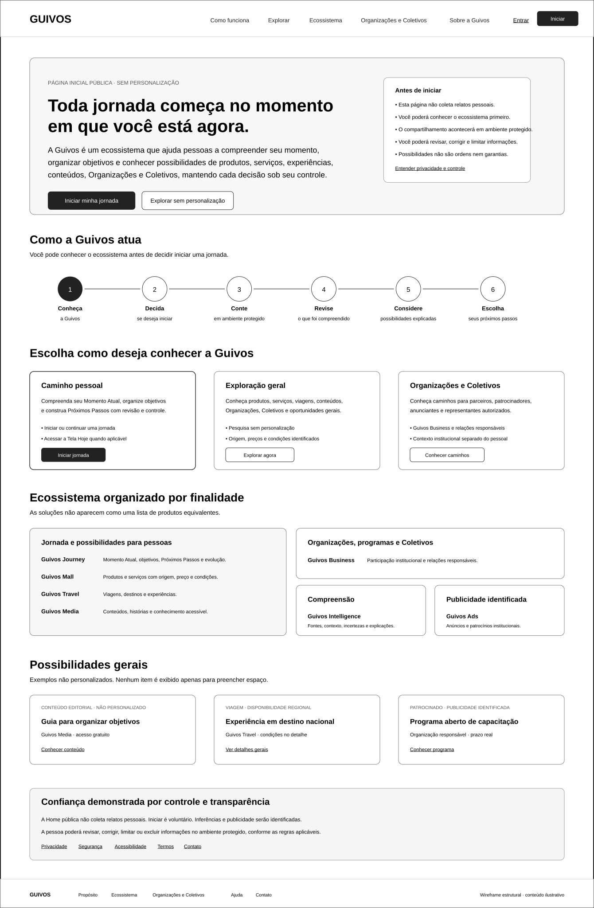
Visualizar o arquivo gráfico vetorial escalável
{kind=link}
O arquivo utiliza uma dimensão de referência de 1.440 × 2.200 pixels para verificar densidade, ordem, agrupamento e continuidade vertical em uma página web para computador.
A dimensão não estabelece largura máxima, grade, pontos de quebra, comportamento responsivo ou altura final da página.
4. Convenções utilizadas¶
O wireframe segue as convenções do Programa Inicial de Wireframes de Baixa Fidelidade:
- retângulos com borda representam áreas funcionais ou cartões;
- preenchimento escuro representa ação principal;
- preenchimento cinza representa área informativa ou contextual;
- texto sublinhado representa ação secundária ou acesso explicativo;
- círculos numerados representam etapas de funcionamento;
- linhas contínuas representam agrupamento e separação estrutural;
- conteúdo ilustrativo não representa dados, ofertas ou condições reais.
Cor, tipografia, iconografia, imagens, ilustrações e acabamento não possuem significado definitivo.
5. Hierarquia materializada¶
A sequência representada é:
cabeçalho público orientado por intenção
→ identidade, propósito e descrição concreta da Guivos
→ ação principal adequada ao estado e exploração sem personalização
→ garantia curta de ausência de coleta pública
→ explicação simples de como a Guivos atua
→ caminhos pessoal, geral e institucional
→ ecossistema organizado por finalidade
→ possibilidades gerais opcionais e identificadas
→ confiança, privacidade, transparência e controle
→ rodapé institucional
A ausência de blocos opcionais deverá reorganizar a página sem deixar espaços artificiais.
6. Cabeçalho público¶
O cabeçalho de referência contém:
- marca da Guivos;
Como funciona;Explorar;Ecossistema;Organizações e Coletivos;Sobre a Guivos;Entrar;- uma ação curta para iniciar a jornada.
A navegação é orientada por intenção. Ela não reproduz a navegação interna da Jornada e não apresenta todas as soluções como itens de primeiro nível.
A ação principal no cabeçalho deverá refletir o estado real da pessoa. Para uma pessoa com jornada ativa, poderá ser substituída por Ir para a Tela Hoje.
7. Primeiro campo visual¶
O primeiro campo visual concentra:
- identificação da superfície como pública e não personalizada;
- frase de propósito;
- descrição concreta do ecossistema;
- ação principal;
- alternativa de exploração geral;
- explicação curta sobre privacidade e controle.
A formulação de referência permanece não definitiva:
Toda jornada começa no momento em que você está agora.
A Guivos é um ecossistema que ajuda pessoas a compreender seu momento, organizar objetivos e conhecer possibilidades de produtos, serviços, experiências, conteúdos, Organizações e Coletivos, mantendo cada decisão sob seu controle.
A formulação não promete transformação, diagnóstico, oportunidade, resultado ou compreensão perfeita.
7.1 Ações para visitante sem jornada¶
- ação principal:
Iniciar minha jornada; - ação secundária:
Explorar sem personalização; - ação utilitária:
Entrar.
7.2 Garantia curta de proteção¶
O bloco lateral demonstra que:
- a página não coleta relatos pessoais;
- a pessoa pode conhecer o ecossistema antes de iniciar;
- o compartilhamento ocorrerá em ambiente protegido;
- informações poderão ser revistas, corrigidas e limitadas;
- possibilidades não são ordens nem garantias;
- privacidade e controle podem ser compreendidos antes da transição.
O bloco não substitui políticas completas, consentimentos específicos ou controles do ambiente protegido.
8. Explicação de funcionamento¶
O wireframe apresenta seis etapas:
conhecer a Guivos
→ decidir se deseja iniciar
→ contar em ambiente protegido
→ revisar o que foi compreendido
→ considerar possibilidades explicadas
→ escolher os próprios Próximos Passos
A sequência comunica que:
- conhecer a Guivos antecede o compartilhamento;
- iniciar é voluntário;
- coleta e processamento pertencem ao ambiente protegido;
- a compreensão inicial é revisável;
- possibilidades precisam ser explicadas;
- a decisão permanece com a pessoa.
A apresentação não deverá sugerir que todas as etapas são instantâneas, obrigatórias ou garantidas.
9. Caminhos de entrada¶
O wireframe separa três caminhos.
9.1 Caminho pessoal¶
Representa:
- iniciar ou continuar uma jornada;
- compreender o Momento Atual;
- organizar objetivos e Próximos Passos;
- acessar a Tela Hoje quando aplicável.
A ação de referência é Iniciar jornada.
9.2 Exploração geral¶
Representa:
- conhecer produtos, serviços, viagens, conteúdos, Organizações, Coletivos, atividades e oportunidades gerais;
- pesquisar sem personalização;
- visualizar origem, preço, condição e disponibilidade quando aplicáveis.
A ação de referência é Explorar agora.
A exploração geral não constitui recomendação pessoal.
9.3 Organizações e Coletivos¶
Representa:
- conhecer o Guivos Business;
- acessar informações institucionais;
- conhecer caminhos para parceiros, patrocinadores, anunciantes e representantes autorizados;
- compreender que contexto institucional e contexto pessoal permanecem separados.
A ação de referência é Conhecer caminhos.
A página pública não muda automaticamente o papel da pessoa nem executa ação em nome de uma Organização ou Coletivo.
10. Ecossistema organizado por finalidade¶
O wireframe não apresenta as sete soluções como cartões equivalentes e desconectados.
10.1 Jornada e possibilidades para pessoas¶
- Guivos Journey — Momento Atual, objetivos, Próximos Passos e evolução;
- Guivos Mall — produtos e serviços com origem, preço e condições;
- Guivos Travel — viagens, destinos e experiências;
- Guivos Media — conteúdos, histórias e conhecimento acessível.
10.2 Organizações, programas e Coletivos¶
- Guivos Business — participação institucional e relações responsáveis.
10.3 Compreensão e transparência¶
- Guivos Intelligence — fontes, contexto, relações, incertezas e explicações.
A Guivos Intelligence não é apresentada como autoridade infalível nem como substituta da decisão humana.
10.4 Publicidade e patrocínio institucional¶
- Guivos Ads — anúncios, publicidade e patrocínios institucionais identificados.
Guivos Ads não aparece como benefício pessoal obrigatório e não aumenta relevância funcional.
10.5 Nomenclatura preservada¶
- Guivos Mall permanece o nome oficial do shopping do ecossistema;
- Guivos Ads permanece o nome oficial da solução de anúncios e patrocínios;
Shopping GuivoseAnúncios da Guivospermanecem descrições em linguagem comum, não produtos separados.
11. Possibilidades gerais¶
O wireframe demonstra três exemplos de natureza diferente:
- conteúdo editorial;
- viagem ou experiência com disponibilidade regional;
- programa patrocinado com publicidade identificada.
Esses itens são apenas exemplos estruturais. Eles não constituem oferta, curadoria final, recomendação ou disponibilidade real.
Cada possibilidade deverá informar, quando aplicável:
- natureza geral, editorial ou patrocinada;
- origem;
- Organização responsável;
- preço, gratuidade ou condição comercial;
- local, modalidade ou disponibilidade;
- prazo real;
- ausência de personalização.
Nenhum item deverá ser incluído apenas para preencher espaço.
Quando não houver fundamento suficiente, todo o bloco poderá ser omitido.
12. Confiança, privacidade e transparência¶
O bloco final demonstra que:
- a Home pública não coleta relatos pessoais;
- iniciar é voluntário;
- inferências serão identificadas no ambiente aplicável;
- publicidade será identificada;
- a pessoa poderá revisar, corrigir, limitar ou excluir informações conforme as regras aplicáveis;
- privacidade, segurança, acessibilidade, termos e contato permanecem acessíveis.
A confiança não deverá depender de slogans, números sem contexto, depoimentos sem autorização ou alegações genéricas de segurança.
13. Adaptação por estado¶
O arquivo representa principalmente o estado de visitante sem jornada.
A estrutura deverá admitir as seguintes alterações sem transformar a Home em painel pessoal.
13.1 Pessoa autenticada sem jornada¶
- ação principal:
Iniciar minha jornada; - ação secundária:
Conhecer o ecossistema.
13.2 Relato em andamento¶
- ação principal:
Continuar minha jornada; - ação secundária:
Explorar sem personalização.
13.3 Compreensão inicial aguardando revisão¶
- ação principal:
Revisar minha compreensão; - ação secundária:
Conhecer o ecossistema.
13.4 Jornada ativa¶
- ação principal:
Ir para a Tela Hoje; - ação secundária:
Conhecer o ecossistema.
A Home não exibirá detalhes do Momento Atual, alertas pessoais, oportunidades personalizadas ou informações sensíveis.
14. Estados alternativos ainda não desenhados¶
Permanecem para novos wireframes ou variações posteriores:
- referência móvel da Página Inicial;
- baixa conectividade com conteúdo essencial;
- texto ampliado e navegação assistiva;
- idioma ou região parcialmente suportados;
- ausência de possibilidades gerais;
- solução indisponível na região;
- publicidade patrocinada com explicação ampliada;
- pessoa que recusa mecanismos de medição não essenciais;
- jornada suspensa ou encerrada;
- conta com acesso restrito;
- visitante menor de idade ou pessoa que exige proteção adicional;
- incidente de segurança ou indisponibilidade do início protegido;
- chegada direta por uma solução específica;
- retorno de pessoa autenticada à Home institucional.
A ausência de uma variação gráfica não autoriza improvisação de comportamento.
15. Responsividade e acessibilidade¶
O arquivo para computador não define a versão móvel.
Uma adaptação responsiva posterior deverá preservar:
- proposta concreta antes das soluções;
- ação principal e alternativa de exploração sem competição indevida;
- ausência de coleta pública;
- ordem dos caminhos;
- agrupamento do ecossistema por finalidade;
- identificação de publicidade;
- acesso a privacidade, segurança e acessibilidade;
- leitura linear compatível com tecnologia assistiva;
- controles com rótulos compreensíveis sem depender apenas de posição, cor ou ícone.
16. Critérios de aceite do wireframe¶
O artefato poderá ser considerado estruturalmente adequado quando demonstrar que:
- a finalidade pública da superfície é compreendida;
- a Guivos é explicada concretamente antes de apresentar produtos;
- iniciar a jornada e explorar sem personalização são caminhos distintos;
- a página não contém controles de coleta de texto, voz ou arquivos;
- o destino da ação principal é compreensível;
- os caminhos pessoal, geral e institucional permanecem separados;
- o ecossistema é agrupado por finalidade;
- Guivos Mall e Guivos Ads mantêm seus nomes oficiais;
- Guivos Intelligence não aparece como autoridade infalível;
- publicidade e patrocínio são identificados;
- possibilidades gerais não simulam personalização;
- blocos opcionais podem ser removidos sem comprometer a hierarquia;
- a Home continua institucional para pessoas autenticadas;
- a estrutura pode ser lida sem identificadores técnicos;
- nenhuma decisão visual exige implementação para ser compreendida.
17. Resultado deste incremento¶
O arquivo gráfico vetorial da Página Inicial pública é criado como hipótese estrutural de baixa fidelidade.
Ele materializa a validação funcional registrada anteriormente, mas não equivale a:
- nova validação com usuários;
- aprovação de conteúdo final;
- identidade visual;
- design de interface;
- sistema de componentes;
- protótipo navegável;
- especificação responsiva completa;
- definição técnica;
- autorização de desenvolvimento.
18. Limites¶
Este documento não:
- valida funcionalmente o início protegido da jornada;
- cria a versão móvel;
- define textos finais de marketing ou interface;
- define logotipo, paleta, tipografia, fotografia, ilustração ou animação;
- define componentes técnicos;
- cria protótipo navegável;
- executa testes de usabilidade;
- define formatos de texto, voz ou arquivos;
- define modelo de inteligência artificial;
- autoriza inferências sensíveis;
- define preços, ofertas ou disponibilidade reais;
- inicia Engenharia de Produto ou desenvolvimento;
- inicia a reaplicação dos testes dos Resultados Empresariais.
19. Próximo ponto de decisão¶
Após integração deste incremento e nova autorização, os próximos atos possíveis permanecem separados:
- validar funcionalmente o início protegido da jornada;
- criar uma referência móvel da Página Inicial pública;
- detalhar os estados de captura por texto, voz e arquivo;
- validar a revisão da compreensão inicial;
- validar a transição entre início protegido e Tela Hoje;
- selecionar estados alternativos da Home para novos wireframes;
- retomar, de forma independente, a reaplicação dos quatro testes dos Resultados Empresariais.
Nenhuma etapa posterior é iniciada automaticamente.
Validação Funcional e Reformulação do Início Protegido da Jornada¶
1. Finalidade¶
Este documento registra a primeira validação funcional detalhada do início protegido da jornada pessoal da Guivos.
A superfície começa somente depois que a pessoa escolhe conscientemente Iniciar minha jornada na Página Inicial pública. Ela termina quando uma compreensão inicial suficientemente clara, revisável e autorizada é apresentada para decisão da própria pessoa.
A validação examina:
- transição consciente entre a Home pública e o ambiente protegido;
- explicação anterior à autenticação e à coleta;
- autenticação e recuperação de acesso;
- privacidade, finalidade e autorizações específicas;
- relato por texto, voz, arquivos e perguntas progressivas;
- compartilhamento mínimo e progressivo;
- revisão do conteúdo recebido;
- processamento visível e interrompível;
- pausa, retomada, correção, retirada e exclusão;
- proteção de informações sensíveis e de terceiros;
- apresentação da compreensão inicial;
- bloqueio de personalização antes do gate;
- transição posterior para a Tela Hoje.
2. Pergunta funcional¶
Como permitir que uma pessoa conte seu Momento Atual com segurança, autonomia e clareza, sem exigir exposição excessiva, consentimento genérico, processamento invisível ou personalização anterior à revisão da compreensão inicial?
A experiência somente será válida quando a pessoa compreender:
- onde está e por que saiu da Home pública;
- o que poderá compartilhar;
- o que não precisa compartilhar;
- para quais finalidades cada informação poderá ser utilizada;
- quando autenticação e autorização serão necessárias;
- o que será salvo, processado, transcrito ou extraído;
- como pausar, corrigir, limitar, retirar ou excluir;
- como a Guivos distinguirá fatos, fontes, inferências e desconhecidos;
- que concluir o relato não garante recomendação, oportunidade ou resultado;
- que a Tela Hoje somente receberá personalização material depois de confirmação suficiente.
3. Cenários avaliados¶
A validação considera os seguintes cenários:
3.1 Pessoa visitante que decide iniciar¶
A pessoa chega pela Home pública, conhece previamente o que acontecerá e escolhe entrar no ambiente protegido.
3.2 Pessoa que ainda não possui conta¶
A pessoa precisa compreender a finalidade do fluxo antes de criar uma conta e não deverá ser pressionada a autenticar sem saber o que virá depois.
3.3 Pessoa com conta existente¶
A pessoa poderá entrar, recuperar acesso ou retornar à Home sem iniciar coleta.
3.4 Pessoa que não aceita uma finalidade¶
A recusa de uma finalidade opcional não deverá bloquear todo o ecossistema. A pessoa poderá explorar sem personalização ou utilizar somente funções compatíveis com as autorizações concedidas.
3.5 Pessoa que escolhe texto¶
A pessoa poderá escrever livremente, responder perguntas progressivas ou combinar as duas formas.
3.6 Pessoa que escolhe voz¶
A gravação, a transcrição, a revisão, a correção e a remoção deverão permanecer explícitas e separadas.
3.7 Pessoa que envia arquivo¶
A pessoa deverá conhecer a finalidade, a extração prevista, a presença de dados de terceiros, a retenção e a forma de remoção antes do processamento material.
3.8 Pessoa que informa pouco¶
A experiência deverá aceitar uma compreensão inicial limitada, declarar insuficiência quando necessário e evitar exigir uma biografia completa.
3.9 Pessoa que pausa ou abandona¶
A pessoa poderá sair sem culpa, retomar posteriormente ou excluir o rascunho.
3.10 Pessoa com relato em processamento¶
A superfície deverá informar o estado real, as fontes consideradas, as ações disponíveis e eventuais falhas, sem simular compreensão imediata.
3.11 Pessoa com compreensão inicial disponível¶
A pessoa deverá revisar fatos, inferências, desconhecidos, finalidades e controles antes de qualquer transição personalizada.
3.12 Pessoa que exige proteção adicional¶
A experiência deverá permitir interrupção segura, linguagem apropriada, encaminhamento a ajuda quando aplicável e bloqueio de usos incompatíveis com a proteção necessária.
4. Diagnóstico do contrato anterior¶
O contrato anterior estabelecia corretamente a separação entre Home pública, início protegido e Tela Hoje. Entretanto, ainda permaneciam riscos funcionais.
4.1 Explicação e autenticação não possuíam ordem suficientemente explícita¶
A pessoa poderia interpretar a criação de conta como condição para descobrir o que seria solicitado. A explicação do fluxo deverá anteceder a autenticação, embora a coleta e a persistência continuem bloqueadas até a proteção apropriada.
4.2 Consentimento poderia ser interpretado como autorização ampla¶
Uma única confirmação genérica não deverá autorizar gravação, transcrição, análise de arquivos, conexão de fontes externas, formação de compreensão persistente e personalização.
4.3 O mínimo suficiente ainda não possuía limite operacional claro¶
A experiência poderia incentivar exposição excessiva para obter uma suposta compreensão completa. A pessoa deverá poder iniciar com pouco, sem perda artificial ou linguagem de insuficiência pessoal.
4.4 As modalidades poderiam competir como exigências¶
Texto, voz, arquivos e perguntas progressivas são alternativas. Nenhuma modalidade deverá ser apresentada como superior, obrigatória ou necessária para provar comprometimento.
4.5 Original, transcrição, extração e interpretação poderiam se confundir¶
A pessoa precisa distinguir:
- conteúdo original fornecido;
- transcrição ou extração automática;
- correções realizadas;
- interpretação produzida pela Guivos;
- informação derivada mantida após remoção do original, quando houver fundamento e explicação aplicáveis.
4.6 Pausa e exclusão não estavam suficientemente separadas¶
Pausar, salvar rascunho, retirar uma autorização, remover um item, apagar o relato e encerrar a jornada possuem efeitos diferentes e deverão ser explicados separadamente.
4.7 Processamento poderia parecer invisível ou inevitável¶
A pessoa deverá saber quando o conteúdo está apenas salvo, aguardando revisão, autorizado para processamento, em processamento, com falha ou pronto para compreensão inicial.
4.8 Informações de terceiros exigiam proteção mais explícita¶
Arquivos, imagens, áudios e relatos poderão conter informações de outras pessoas. A interface deverá alertar, permitir remoção e limitar extração e uso ao necessário.
4.9 A compreensão insuficiente não possuía saída suficientemente clara¶
Quando a base for insuficiente, a pessoa poderá contar mais, corrigir, manter uma jornada sem personalização material ou voltar à exploração geral.
4.10 A transição para a Tela Hoje poderia parecer automática¶
A Tela Hoje somente poderá receber personalização depois que a pessoa revisar a compreensão inicial e autorizar usos compatíveis.
5. Decisão de reformulação¶
O início protegido da jornada deverá seguir esta sequência:
Home pública
→ decisão voluntária de iniciar
→ explicação do ambiente protegido e das alternativas
→ autenticação ou criação de conta
→ resumo de privacidade, finalidades e controles
→ escolha da modalidade de relato
→ compartilhamento mínimo e progressivo
→ revisão do que foi recebido
→ autorização específica para processamento aplicável
→ processamento visível, interrompível e corrigível
→ compreensão inicial apresentada
→ revisão, correção, limitação e decisão da pessoa
→ Tela Hoje, jornada sem personalização material ou exploração geral
A sequência não deverá ser convertida em um formulário linear obrigatório. Etapas poderão ser omitidas, retomadas ou apresentadas progressivamente quando isso preservar compreensão e autonomia.
6. Hierarquia funcional reformulada¶
A ordem preferencial da experiência será:
identificação do ambiente protegido
→ explicação curta do que acontecerá
→ alternativas legítimas antes da autenticação
→ autenticação e recuperação de acesso
→ finalidades, privacidade e controles
→ escolha de modalidade
→ relato mínimo e progressivo
→ revisão dos conteúdos recebidos
→ autorização específica de processamento
→ estado de processamento e possibilidade de interrupção
→ compreensão inicial revisável
→ decisão sobre uso e continuidade
7. Transição consciente a partir da Home¶
Ao selecionar Iniciar minha jornada, a pessoa deverá chegar a uma superfície que declare:
- que a Home pública foi deixada;
- que o ambiente seguinte poderá receber informações pessoais;
- que nenhuma gravação, upload ou coleta foi iniciada automaticamente;
- que a pessoa poderá conhecer o processo antes de entrar;
- que poderá voltar à Home ou explorar sem personalização.
Ações iniciais de referência:
Continuar com segurança;Entender como funciona;Voltar à Página Inicial;Explorar sem personalização.
8. Autenticação e criação de conta¶
A autenticação será necessária antes de persistência associada a uma pessoa, gravação de voz, envio de arquivos, conexão de fontes externas, processamento persistente ou personalização material.
Antes da autenticação, a pessoa poderá visualizar:
- etapas do fluxo;
- modalidades disponíveis;
- resumo de privacidade;
- controles de correção e exclusão;
- exigências de proteção aplicáveis;
- alternativas de exploração geral.
A criação de conta não deverá autorizar automaticamente nenhuma modalidade de processamento.
O fluxo deverá prever:
- entrada em conta existente;
- criação de conta;
- recuperação de acesso;
- retorno seguro à Home;
- explicação quando o acesso estiver restrito;
- proteção contra exposição de existência de conta ou dados pessoais.
9. Finalidades, privacidade e autorizações¶
A experiência deverá apresentar um resumo em linguagem clara e permitir acesso a detalhes adicionais.
Cada finalidade material deverá responder:
- qual informação será utilizada;
- para que será utilizada;
- qual ação ou superfície poderá ser afetada;
- por quanto tempo poderá ser mantida;
- como corrigir, limitar, retirar ou excluir;
- quais efeitos ocorrerão caso a pessoa não autorize.
Autorizações deverão ser específicas quando aplicáveis a:
- gravação de voz;
- transcrição;
- manutenção do áudio original;
- análise de arquivos;
- extração de informações;
- conexão de fonte externa;
- formação de compreensão persistente;
- personalização de possibilidades e Próximos Passos;
- uso futuro de informações para reconhecer mudanças.
A recusa de uma autorização opcional não deverá ser apresentada como falha da pessoa.
10. Compartilhamento mínimo e progressivo¶
A pessoa não precisará relatar toda a sua vida para começar.
O mínimo inicial poderá conter:
- o que está acontecendo agora;
- o que deseja compreender ou mudar;
- uma necessidade, possibilidade ou prioridade principal;
- limites ou preferências relevantes;
- o que não deseja receber ou considerar.
Perguntas adicionais somente deverão aparecer quando:
- a utilidade estiver explicada;
- a resposta reduzir uma incerteza material;
- a pessoa puder adiar ou recusar;
- existirem opções como
não sei,prefiro não informareisso não se aplica; - a ausência de resposta não gerar culpa ou urgência artificial.
11. Relato por texto¶
A modalidade de texto deverá permitir:
- texto livre;
- perguntas progressivas opcionais;
- salvamento explícito de rascunho;
- revisão antes do processamento;
- edição e remoção de trechos;
- marcação de conteúdo que não deverá ser utilizado para personalização;
- interrupção sem perda não informada.
A interface não deverá interpretar o ato de digitar como autorização para processamento material.
12. Relato por voz¶
Antes de iniciar a gravação, a pessoa deverá receber informação clara sobre:
- início e fim da gravação;
- finalidade;
- transcrição;
- manutenção ou descarte do áudio original;
- revisão anterior ao uso material;
- correção, regravação e remoção;
- possíveis limitações de reconhecimento;
- risco de registrar informações de terceiros.
Durante a gravação, o estado deverá permanecer evidente. Depois da gravação, a pessoa poderá:
- ouvir, quando aplicável;
- revisar a transcrição;
- corrigir a transcrição;
- remover o áudio original;
- remover a transcrição;
- regravar;
- autorizar somente o conteúdo revisado.
Áudio e transcrição deverão possuir controles separados quando seus efeitos forem diferentes.
13. Relato por arquivos¶
Antes do envio, a pessoa deverá conhecer:
- formatos aceitos em etapa futura;
- finalidade do arquivo;
- tipos de informação que poderão ser extraídos;
- limites de leitura;
- tratamento de informações sensíveis ou de terceiros;
- retenção;
- remoção do arquivo e das informações derivadas;
- possibilidade de revisão antes do uso material.
Depois do envio, a superfície deverá mostrar:
- nome e tipo do arquivo;
- estado de envio;
- finalidade associada;
- extrações propostas;
- falhas ou limitações;
- controles para substituir ou remover.
O arquivo não autoriza leitura irrestrita nem uso de todas as informações nele contidas.
14. Revisão do que foi recebido¶
Antes do processamento material, a pessoa deverá visualizar um inventário compreensível:
- textos fornecidos;
- respostas rápidas;
- gravações;
- transcrições;
- arquivos;
- extrações propostas;
- fontes externas conectadas;
- itens removidos ou limitados.
A revisão deverá permitir:
- editar;
- remover;
- substituir;
- limitar finalidade;
- marcar como sensível;
- declarar informação de terceiro;
- continuar sem determinado item;
- voltar e compartilhar menos.
15. Estados funcionais do relato¶
O ambiente protegido deverá distinguir pelo menos:
| Estado | Significado |
|---|---|
| não iniciado | nenhuma informação pessoal foi recebida |
| autenticação pendente | a pessoa ainda não entrou ou criou conta |
| privacidade pendente | finalidades e controles ainda não foram compreendidos ou decididos |
| rascunho | conteúdo salvo, mas ainda não autorizado para processamento material |
| aguardando revisão | conteúdo recebido e disponível para correção |
| autorizado para processamento | a pessoa autorizou as finalidades aplicáveis |
| em processamento | a Guivos está organizando a compreensão inicial |
| ação necessária | existe falha, conflito, proteção adicional ou decisão pendente |
| compreensão disponível | síntese inicial pronta para revisão |
| pausado | o processo foi interrompido sem avanço automático |
| exclusão solicitada | a pessoa pediu remoção e deverá visualizar o efeito aplicável |
| encerrado | o relato ou a jornada foi encerrado conforme a decisão da pessoa |
Nenhum estado deverá ser substituído por mensagens vagas como Estamos cuidando de tudo ou Quase lá sem informação verificável.
16. Processamento visível e interrompível¶
Durante o processamento, a pessoa deverá saber:
- quais conteúdos foram autorizados;
- quais fontes estão sendo utilizadas;
- qual finalidade está ativa;
- se existe transcrição ou extração pendente;
- se ocorreu falha;
- se alguma informação exige revisão;
- como pausar, cancelar, remover ou substituir.
A Guivos não deverá prometer compreensão instantânea, completa ou infalível.
Quando o processamento não puder continuar, a superfície deverá explicar o que ocorreu e oferecer alternativas legítimas, como tentar novamente, remover um item, utilizar outra modalidade ou continuar sem personalização.
17. Pausa, retomada, retirada e exclusão¶
A experiência deverá distinguir:
17.1 Pausar¶
Interrompe o fluxo sem autorizar avanço automático.
17.2 Salvar rascunho¶
Mantém conteúdo para retomada, com efeito e prazo explicados.
17.3 Retirar uma autorização¶
Impede usos futuros incompatíveis e informa os efeitos sobre conteúdos e compreensões já produzidos.
17.4 Remover um item¶
Exclui ou desassocia texto, áudio, transcrição, arquivo, extração ou fonte específica conforme o efeito explicado.
17.5 Apagar o relato e recomeçar¶
Remove o conjunto aplicável e reinicia a experiência sem preservar interpretações como fatos silenciosos.
17.6 Encerrar a jornada¶
Interrompe a continuidade pessoal e informa separadamente o destino dos dados, relações e processos existentes.
A interface deverá explicar o que pode ser removido imediatamente, o que poderá exigir tratamento adicional e por quê, sem utilizar linguagem jurídica como substituto da compreensão funcional.
18. Informações sensíveis e de terceiros¶
A experiência deverá aplicar proteção adicional quando:
- a pessoa indicar conteúdo sensível;
- texto, voz ou arquivo mencionar outra pessoa;
- existir risco de exposição, coerção ou dano;
- a pessoa não possuir autoridade suficiente para compartilhar determinado conteúdo;
- a finalidade proposta exceder o necessário.
A proteção poderá incluir:
- alerta antes do envio;
- redução de escopo;
- ocultação de visualização;
- remoção de trechos;
- bloqueio de processamento incompatível;
- encaminhamento a ajuda ou canal apropriado;
- suspensão temporária da etapa.
A Guivos não deverá inferir autorização de terceiros a partir do envio realizado por uma única pessoa.
19. Compreensão inicial apresentada¶
A compreensão inicial deverá seguir a estrutura:
o que você contou
→ o que foi recebido de fontes autorizadas
→ o que compreendemos até agora
→ o que foi inferido
→ o que permanece desconhecido ou contestado
→ como cada informação poderá ser utilizada
→ seus controles e alternativas
A pessoa poderá responder:
Está correto;Faz sentido parcialmente;Não faz sentido;Quero corrigir;Remover esta informação;Não usar para personalização;Contar mais;Continuar sem recomendações pessoais;Apagar e recomeçar.
Confirmação parcial será válida. Informações não confirmadas não poderão ser promovidas silenciosamente a fatos.
20. Gate para personalização e Tela Hoje¶
A transição personalizada somente será válida quando existirem:
- base suficiente para uma leitura inicial limitada;
- origem e finalidade identificadas;
- distinção entre confirmado, observado, externo autorizado, inferido, desconhecido e contestado;
- revisão real pela pessoa;
- correção ou limitação possível;
- autorização compatível com o uso;
- ausência de conflito material não resolvido;
- explicação de incertezas e alternativas.
Quando o gate não for atendido, a pessoa poderá:
- contar mais;
- corrigir ou remover informações;
- manter o relato pausado;
- continuar a jornada sem personalização material;
- explorar o ecossistema sem personalização;
- encerrar e excluir o relato.
A Tela Hoje não deverá ser apresentada como recompensa pela exposição de mais dados.
21. Acessibilidade e proteção operacional¶
A experiência deverá prever:
- navegação por teclado;
- leitores de tela;
- texto ampliado;
- linguagem simples;
- alternativas textuais à voz;
- alternativa sem upload de arquivo;
- tempo suficiente para leitura e decisão;
- ausência de contagem regressiva artificial;
- confirmação antes de ações destrutivas;
- recuperação compreensível de falhas;
- versão essencial para baixa conectividade em etapa posterior.
22. Resultado da validação¶
O início protegido da jornada foi considerado funcionalmente válido após reformulação.
A validação confirma que a superfície pode avançar como hipótese arquitetural porque:
- explica o processo antes da autenticação e da coleta;
- impede coleta automática na transição da Home;
- separa criação de conta de autorização de processamento;
- exige finalidades compreensíveis e autorizações específicas quando aplicáveis;
- preserva compartilhamento mínimo e progressivo;
- trata texto, voz, arquivos e perguntas como alternativas;
- exige revisão anterior ao processamento material;
- torna estados e falhas visíveis;
- permite pausa, retomada, retirada, correção e exclusão;
- protege informações sensíveis e de terceiros;
- distingue conteúdo original, transcrição, extração e interpretação;
- apresenta compreensão inicial revisável;
- bloqueia personalização antes do gate;
- preserva exploração geral e jornada sem personalização como alternativas legítimas.
23. Critérios de aceite para wireframe posterior¶
Um wireframe do início protegido somente poderá avançar quando demonstrar:
- transição clara a partir da Home;
- explicação anterior à autenticação;
- ausência de coleta automática;
- finalidades e controles compreensíveis;
- escolha de modalidade sem coerção;
- compartilhamento mínimo;
- revisão de textos, transcrições e arquivos;
- estados de rascunho, processamento, falha, pausa e exclusão;
- compreensão inicial com fontes e incertezas;
- alternativas sem personalização;
- confirmação antes da Tela Hoje;
- acessibilidade e proteção adicional.
24. Limites¶
Esta validação não:
- cria wireframe gráfico do início protegido;
- cria referência móvel da Home;
- define textos finais de interface;
- define tecnologia de autenticação;
- define formatos, limites ou mecanismos técnicos de voz e arquivos;
- define armazenamento, criptografia ou infraestrutura;
- define modelo de inteligência artificial;
- autoriza inferências sensíveis;
- substitui análise jurídica, de segurança, privacidade ou acessibilidade especializada;
- cria protótipo navegável;
- executa testes com usuários;
- inicia Engenharia de Produto ou desenvolvimento;
- inicia a reaplicação dos testes dos Resultados Empresariais.
25. Próximo ponto de decisão¶
Depois da integração deste incremento e de nova autorização, os atos seguintes permanecem separados:
- criar o wireframe gráfico de baixa fidelidade do início protegido da jornada;
- criar a referência móvel da Página Inicial pública;
- detalhar estados especializados de texto, voz e arquivos;
- validar funcionalmente a revisão da compreensão inicial;
- validar a transição entre a compreensão confirmada e a Tela Hoje;
- selecionar estados alternativos e exceções para novos wireframes;
- retomar, de forma independente, a reaplicação dos quatro testes dos Resultados Empresariais.
Nenhuma integração ou etapa posterior é iniciada automaticamente.
Wireframe de Baixa Fidelidade do Início Protegido da Jornada¶
1. Finalidade¶
Este documento materializa a referência gráfica móvel do início protegido da jornada pessoal da Guivos, conforme o contrato funcional da UXA-023 e a validação especializada da UXA-035.
O conjunto demonstra estados possíveis e retomáveis para:
- explicar o ambiente antes de solicitar relato;
- acessar a conta somente quando necessário;
- escolher uma modalidade e formar um rascunho mínimo;
- revisar o conteúdo e autorizar finalidade específica;
- preparar uma compreensão inicial temporária e revisável;
- decidir posteriormente sobre persistência e personalização.
Os quatro artefatos não constituem formulário linear obrigatório. Estados poderão ser omitidos, retomados ou apresentados progressivamente conforme sessão, modalidade escolhida, conteúdo existente e autorizações vigentes.
O conjunto não representa design visual, textos jurídicos finais, autenticação implementada, gravação real, upload real, processamento de IA, protótipo navegável ou desenvolvimento.
2. Posição na experiência¶
Página Inicial pública
→ decisão voluntária de iniciar
→ explicação do ambiente protegido
→ acesso, somente quando necessário
→ escolha e rascunho mínimo
→ revisão e autorização específica
→ compreensão inicial revisável
→ decisão sobre persistência e personalização
→ Tela Hoje, jornada sem personalização ou exploração geral
A pessoa chega ao primeiro estado somente após selecionar conscientemente Iniciar minha jornada na Home pública.
Nenhum relato pessoal da jornada, gravação, upload, transcrição, extração ou análise começa automaticamente.
Dados técnicos e de acesso, quando necessários, possuem finalidade separada do conteúdo da jornada.
3. Artefatos visuais reformulados¶
3.1 Estado de explicação¶
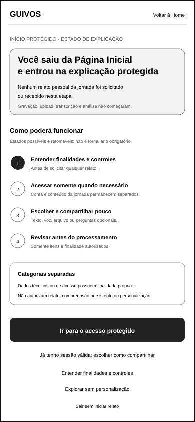
docs/assets/wireframes/uxa-034-protected-entry-explanation-mobile.svg
3.2 Estado de acesso, quando necessário¶
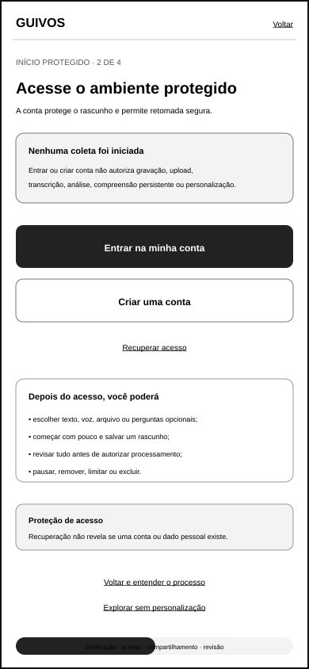
docs/assets/wireframes/uxa-034-protected-entry-access-mobile.svg
3.3 Estado de escolha e rascunho¶
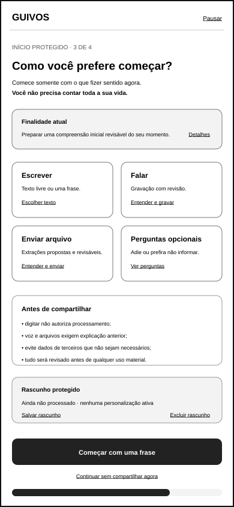
docs/assets/wireframes/uxa-034-protected-entry-sharing-mobile.svg
3.4 Estado de revisão antes do processamento¶
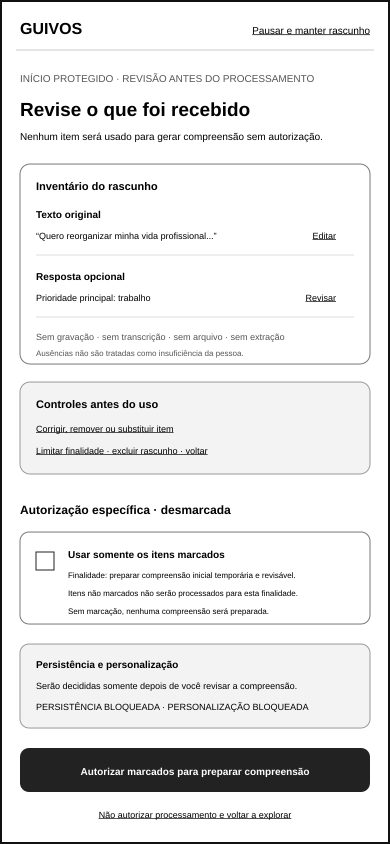
docs/assets/wireframes/uxa-034-protected-entry-review-mobile.svg
Dimensão de referência:
- canal: aplicativo móvel;
- largura: 390 pixels;
- altura: 844 pixels;
- orientação: retrato;
- fidelidade: baixa;
- navegação: estados possíveis, pausáveis e retomáveis.
4. Pergunta funcional¶
A pessoa consegue compreender onde está, acessar somente quando necessário, compartilhar pouco, revisar tudo e autorizar uma finalidade específica sem confundir dados de acesso, relato, processamento, persistência e personalização?
A UXA-035 considera o conjunto funcionalmente válido após reformulação.
5. Princípios transversais¶
Os quatro estados preservam:
- voluntariedade;
- explicação anterior ao relato;
- linguagem precisa sobre dados de acesso e conteúdo da jornada;
- ausência de coleta automática do relato;
- autenticação separada de autorização;
- acesso condicional;
- modalidades equivalentes;
- compartilhamento mínimo e progressivo;
- finalidades visíveis;
- revisão anterior ao processamento material;
- autorizações específicas e inicialmente desmarcadas;
- recusa sem processamento;
- pausa, saída, salvamento e exclusão diferenciados;
- persistência e personalização bloqueadas antes do gate;
- saída para exploração sem personalização.
6. Estado de explicação¶
O primeiro estado declara:
Você saiu da Página Inicial e entrou na explicação do ambiente protegido.
Nenhum relato pessoal da jornada foi solicitado ou recebido nesta etapa.
Também informa que gravação, upload, transcrição e análise não começaram.
A pessoa conhece a sequência funcional de referência:
entender o processo
→ acessar, se necessário
→ escolher como compartilhar
→ revisar o conteúdo
→ autorizar somente a finalidade desejada
→ revisar a compreensão inicial
Ações:
Ir para o acesso protegido;Entender finalidades e controles;Voltar à Página Inicial;Explorar sem personalização;Sair sem iniciar relato.
Quando já existir sessão válida, a ação principal poderá ser Continuar para escolher como compartilhar.
7. Estado de acesso, quando necessário¶
O estado declara:
Esta etapa aparece somente quando o acesso protegido for necessário.
Dados de acesso são tratados separadamente do conteúdo da jornada.
A superfície oferece:
Entrar na minha conta;Criar uma conta;Recuperar acesso;Voltar à explicação;Explorar sem personalização.
Entrar ou criar conta não autoriza relato, gravação, upload, transcrição, análise, compreensão persistente ou personalização.
Uma pessoa com sessão válida poderá seguir sem reapresentar criação ou recuperação de conta.
A recuperação não deverá revelar a existência de conta ou dado pessoal.
8. Estado de escolha e rascunho¶
As modalidades permanecem equivalentes:
Escrever;Falar;Enviar arquivo;Responder perguntas opcionais.
Cada alternativa utiliza Escolher esta forma.
Nenhuma modalidade é selecionada por padrão. Começar com pouco aparece somente depois da escolha.
O estado declara:
Comece somente com o que fizer sentido agora.
Você não precisa contar toda a sua vida.
Também apresenta:
- finalidade atual;
- estado do rascunho;
- o que ainda não foi processado;
- proteção de informações sensíveis e de terceiros;
- explicação anterior para voz e arquivo;
- opção de combinar modalidades sem obrigação;
Pausar e manter rascunho;Salvar rascunho e sair;Sair sem salvar alterações;Excluir rascunho;Continuar sem compartilhar e sem processamento.
A implementação futura deverá declarar se o rascunho está somente no dispositivo, associado à conta ou ainda não persistido.
9. Texto, voz e arquivos¶
9.1 Texto¶
Digitar não autoriza processamento.
A pessoa poderá editar, remover trechos, limitar finalidade e revisar antes de autorizar.
9.2 Voz¶
Antes de ativar gravação, a interface deverá explicar:
- finalidade;
- início e fim da gravação;
- transcrição;
- manutenção ou descarte do áudio;
- revisão e correção;
- remoção e regravação;
- risco de informações de terceiros.
Gravação, transcrição e manutenção do original possuem controles separados quando seus efeitos diferirem.
9.3 Arquivos¶
Antes do envio, a pessoa deverá conhecer:
- finalidade;
- extrações propostas;
- limites de leitura;
- retenção;
- tratamento de dados sensíveis ou de terceiros;
- remoção do original e de informações derivadas;
- revisão anterior ao uso material.
Upload não autoriza leitura irrestrita.
10. Estado de revisão¶
Antes do processamento material, a pessoa visualiza inventário que distingue:
- texto original;
- respostas opcionais;
- gravações;
- transcrições;
- arquivos;
- extrações propostas;
- itens removidos;
- finalidades associadas.
Cada item poderá oferecer:
Revisar;Editar;Corrigir;Substituir;Remover;Limitar uso;Excluir.
A ausência de determinada modalidade é declarada, sem ser tratada como insuficiência.
11. Autorização específica¶
As autorizações aparecem desmarcadas e somente depois da revisão.
Nesta etapa, o wireframe ilustra apenas:
Usar os itens marcados para preparar uma compreensão inicial temporária e revisável.
A ação informa qual conteúdo será utilizado e que nenhum item não marcado será processado para essa finalidade.
A pessoa possui duas saídas explícitas:
Autorizar os itens marcados para preparar a compreensão inicial;Não autorizar processamento e voltar a explorar.
A ausência de autorização não inicia compreensão, persistência ou personalização.
12. Persistência e personalização¶
A persistência da compreensão e a personalização futura não são solicitadas neste wireframe.
Elas permanecem bloqueadas até que a compreensão inicial seja:
- apresentada;
- explicada;
- revisada;
- corrigida ou limitada;
- aceita ou recusada pela pessoa.
O estado declara:
Persistência e personalização serão decididas somente depois da revisão da compreensão inicial.
13. Processamento visível e interrompível¶
Após autorização específica, o estado poderá evoluir por:
rascunho revisado
→ autorizado para finalidade específica
→ em processamento
→ pausado, interrompido ou com falha
→ compreensão inicial disponível
A pessoa deverá poder interromper quando aplicável, retirar autorização futura, corrigir origem, excluir itens compatíveis e compreender efeitos de remoções.
14. Pausa, saída, rascunho e exclusão¶
O conjunto diferencia:
- sair sem iniciar relato;
- pausar e manter rascunho;
- salvar rascunho e sair;
- sair sem salvar alterações;
- excluir rascunho;
- remover um item;
- retirar autorização;
- excluir conteúdo original;
- excluir informações derivadas quando aplicável;
- encerrar a jornada.
Ações com perda ou persistência deverão explicar o efeito antes da confirmação.
15. Proteção de informações sensíveis e de terceiros¶
A superfície deverá:
- alertar antes de voz e arquivos;
- permitir remoção de trechos e itens;
- não incentivar exposição excessiva;
- não exigir informação de terceiros;
- não utilizar culpa, urgência artificial ou promessa absoluta de segurança;
- oferecer proteção adicional quando houver risco material;
- orientar ajuda apropriada quando necessário.
O wireframe não define protocolo clínico, jurídico ou emergencial.
16. Acessibilidade funcional¶
A sequência deverá:
- não depender de cor;
- utilizar títulos e estados textuais;
- manter ações principais e saídas reconhecíveis;
- não depender de gestos ocultos;
- anunciar gravação, upload, revisão e processamento;
- preservar foco e progresso ao pausar;
- manter alternativa textual para voz e arquivos;
- declarar consequências de autorizar ou recusar.
A validação não conclui conformidade técnica de acessibilidade.
17. Critérios atendidos¶
A reformulação permite verificar:
- compreensão de que a Home pública foi deixada;
- ausência de relato pessoal antes da explicação;
- separação dos dados de acesso;
- estados não lineares e retomáveis;
- acesso somente quando necessário;
- modalidades equivalentes;
- legitimidade do compartilhamento mínimo;
- efeitos distintos de pausa, salvamento, saída e exclusão;
- inventário antes do processamento;
- autorizações específicas e desmarcadas;
- recusa sem processamento;
- persistência e personalização posteriores ao gate.
18. Limites¶
Este incremento não:
- define textos jurídicos finais;
- cria autenticação real;
- define provedor de identidade;
- implementa armazenamento, gravação, transcrição ou upload;
- define modelo de IA;
- materializa a compreensão inicial;
- cria referência para computador ou tablet;
- cria protótipo navegável;
- executa teste com usuários;
- conclui acessibilidade técnica;
- inicia Engenharia de Produto.
19. Próximos atos governados¶
Após integração e nova autorização, poderão ocorrer separadamente:
- criar a referência móvel da Página Inicial pública;
- materializar a revisão da compreensão inicial;
- validar a transição para a primeira Tela Hoje;
- criar estados especializados de texto, voz e arquivos;
- criar referência do início protegido para computador;
- criar estados de processamento, pausa, falha e retomada;
- retomar independentemente os testes dos Resultados Empresariais.
Nenhum ato é iniciado automaticamente.
Validação Funcional Especializada e Reformulação do Wireframe Móvel do Início Protegido¶
1. Finalidade¶
Este documento registra a validação funcional especializada dos quatro estados móveis materializados pela UXA-034.
A validação verifica se a representação gráfica preserva o contrato funcional da UXA-023 sem transformar o início protegido em formulário obrigatório, sem confundir autenticação com autorização e sem antecipar persistência ou personalização antes da revisão da compreensão inicial.
2. Resultado¶
O wireframe móvel do início protegido é funcionalmente válido após reformulação.
A estrutura em quatro estados permanece adequada como referência gráfica, desde que seja interpretada como conjunto de estados possíveis e retomáveis, não como sequência universal, rígida ou obrigatória.
3. Escopo avaliado¶
A validação examinou:
- transição consciente a partir da Home pública;
- linguagem sobre coleta, relato, dados de acesso e processamento;
- ordem entre explicação, autenticação, compartilhamento, revisão e autorização;
- pessoa já autenticada e pessoa que precisa acessar ou criar conta;
- modalidades de texto, voz, arquivo e perguntas opcionais;
- compartilhamento mínimo;
- pausa, saída, salvamento, retomada e exclusão;
- inventário do conteúdo recebido;
- autorizações específicas;
- recusa e continuidade sem processamento;
- persistência e personalização;
- acessibilidade textual e ausência de pressão.
4. Diagnóstico¶
4.1 Afirmações absolutas sobre ausência de coleta¶
As frases Nenhuma informação pessoal foi coletada até aqui e Nenhuma coleta foi iniciada poderiam ser interpretadas como afirmações sobre qualquer dado técnico, de sessão ou de acesso.
O contrato funcional precisa distinguir:
- conteúdo pessoal da jornada;
- dados necessários para acesso e proteção da conta;
- rascunho;
- processamento do relato;
- compreensão persistente;
- personalização.
A reformulação utiliza:
Nenhum relato pessoal da jornada foi solicitado ou recebido nesta etapa.
Dados de acesso são tratados separadamente do conteúdo da jornada.
4.2 Numeração e barra sugeriam formulário obrigatório¶
1 DE 4, 2 DE 4 e barras progressivas poderiam comunicar obrigação linear, embora a UXA-023 permita omissão, retomada e apresentação progressiva.
A reformulação substitui a contagem por estados nomeados:
ESTADO · EXPLICAÇÃO;ESTADO · ACESSO, QUANDO NECESSÁRIO;ESTADO · ESCOLHA E RASCUNHO;ESTADO · REVISÃO ANTES DO PROCESSAMENTO.
Cada tela declara que a pessoa poderá pausar, voltar ou seguir por alternativa compatível.
4.3 Acesso parecia obrigatório para toda pessoa¶
O segundo estado não distinguia pessoa já autenticada de pessoa que precisa entrar, criar conta ou recuperar acesso.
A reformulação declara:
Esta etapa aparece somente quando o acesso protegido for necessário.
Uma sessão válida poderá prosseguir sem reapresentar criação ou recuperação de conta, mantendo finalidade e controles visíveis.
4.4 Ação inicial possuía promessa e destino vagos¶
Continuar com segurança poderia soar como garantia ampla e não informava o próximo estado.
A ação passa a ser:
Ir para o acesso protegido
Quando a pessoa já estiver autenticada, a ação correspondente poderá ser:
Continuar para escolher como compartilhar
4.5 Modalidades equivalentes, mas texto favorecido¶
O terceiro estado apresentava quatro modalidades equivalentes, porém utilizava Começar com uma frase como ação principal geral.
A reformulação:
- não define modalidade principal antes da escolha;
- apresenta
Escolher esta formaem cada alternativa; - exibe explicação específica antes de voz ou arquivo;
- apresenta
Começar com poucosomente após uma modalidade ser selecionada; - permite combinar modalidades sem exigir combinação.
4.6 Pausa, saída, salvamento e exclusão não tinham efeitos suficientes¶
Pausar aparecia sem declarar se o conteúdo seria salvo. Sair, Voltar e Continuar sem compartilhar agora também poderiam produzir interpretações distintas.
A reformulação diferencia:
Sair sem iniciar relato;Pausar e manter rascunho;Sair sem salvar alterações;Salvar rascunho e sair;Excluir rascunho;Voltar à etapa anterior;Não autorizar processamento e voltar a explorar.
A ação deverá informar o efeito antes da confirmação quando houver perda ou persistência.
4.7 Persistência era solicitada antes da compreensão ser conhecida¶
O quarto estado oferecia Manter compreensão persistente antes de a compreensão inicial existir e ser revisada.
Isso antecipava o gate.
A reformulação permite, nesta etapa, somente autorizar o uso de conteúdos revisados para preparar uma compreensão inicial temporária e revisável.
Persistência da compreensão e personalização futura permanecem bloqueadas até a apresentação e revisão da própria compreensão.
4.8 A recusa não esclarecia a ausência de processamento¶
Continuar sem personalização poderia ser interpretado como recusa apenas da personalização, mantendo o processamento do relato.
A reformulação apresenta duas escolhas distintas:
Autorizar somente os itens marcados para preparar a compreensão inicial;Não autorizar processamento e voltar a explorar.
A ausência de autorização não poderá iniciar compreensão, persistência ou personalização.
5. Reformulação do estado de explicação¶
O primeiro estado deverá demonstrar:
- que a Home pública foi deixada;
- que nenhum relato pessoal da jornada foi solicitado ou recebido;
- que gravação, upload, transcrição e análise não começaram;
- que dados técnicos ou de acesso, quando necessários, possuem finalidade separada;
- que a pessoa poderá conhecer o processo, voltar ou explorar sem personalização;
- que os quatro artefatos são estados possíveis, não etapas obrigatórias universais.
A ação principal possui destino explícito.
6. Reformulação do acesso¶
O estado de acesso deverá:
- aparecer somente quando necessário;
- reconhecer sessão válida quando aplicável;
- oferecer entrar, criar conta e recuperar acesso;
- não revelar existência de conta;
- separar dados de acesso do conteúdo da jornada;
- afirmar que autenticação não autoriza relato, processamento, persistência ou personalização;
- permitir retorno à explicação ou à exploração geral.
7. Reformulação da escolha e do rascunho¶
O estado deverá:
- manter texto, voz, arquivo e perguntas opcionais em paridade;
- apresentar finalidade atual;
- permitir iniciar com pouco;
- explicar voz e arquivo antes da ativação;
- declarar quando um rascunho existe;
- declarar se o rascunho está salvo apenas no dispositivo, associado à conta ou ainda não persistido, conforme implementação futura;
- separar pausa, salvamento, saída e exclusão;
- permitir seguir sem compartilhar e sem iniciar processamento.
8. Reformulação da revisão e autorização¶
O estado deverá distinguir:
- conteúdo original;
- resposta opcional;
- gravação;
- transcrição;
- arquivo;
- extração proposta;
- conteúdo removido;
- finalidade aplicável.
As autorizações deverão iniciar desmarcadas e responder:
- qual item será usado;
- para qual finalidade;
- qual resultado intermediário será produzido;
- o que ocorrerá se a pessoa não autorizar.
Nesta etapa, a única finalidade material ilustrada é preparar uma compreensão inicial temporária e revisável.
Persistência e personalização permanecem bloqueadas.
9. Estados funcionais resultantes¶
Home pública
→ explicação do ambiente protegido
→ acesso, somente quando necessário
→ escolha de modalidade
→ rascunho mínimo e progressivo
→ revisão do conteúdo recebido
→ autorização específica para preparar compreensão inicial
→ processamento visível e interrompível
→ compreensão inicial apresentada
→ revisão da compreensão
→ decisão sobre persistência e personalização
A pessoa poderá pausar, voltar, excluir ou retornar à exploração geral nos pontos compatíveis.
10. Proteções confirmadas¶
- nenhum relato é solicitado antes da explicação;
- dados de acesso não são tratados como conteúdo da jornada;
- autenticação não autoriza processamento;
- acesso não é reapresentado quando desnecessário;
- modalidades permanecem equivalentes;
- voz e arquivo exigem explicação anterior;
- compartilhamento mínimo é legítimo;
- pausa, salvamento, saída e exclusão possuem efeitos distintos;
- revisão antecede processamento;
- autorizações são específicas e inicialmente desmarcadas;
- recusa não inicia processamento;
- persistência não é solicitada antes da compreensão inicial;
- personalização permanece bloqueada até o gate;
- exploração sem personalização continua disponível;
- informações de terceiros não são exigidas;
- a interface não utiliza culpa, urgência ou promessa absoluta de segurança.
11. Critérios atendidos¶
A reformulação permite compreender:
- que a pessoa saiu da Home pública;
- que nenhum relato pessoal começou;
- que dados de acesso são uma categoria separada;
- que o conjunto não é formulário linear obrigatório;
- quando autenticação é necessária;
- quais modalidades estão disponíveis;
- que pouco conteúdo é suficiente para começar;
- o efeito de pausar, salvar, sair e excluir;
- o inventário do que foi recebido;
- a finalidade de cada autorização;
- que recusar impede processamento;
- que a compreensão será revisada antes de persistência ou personalização.
12. Limites¶
Esta validação não:
- define textos jurídicos finais;
- conclui política de privacidade;
- define provedor de identidade;
- implementa autenticação ou segurança;
- define armazenamento local ou remoto;
- implementa voz, transcrição, arquivo ou extração;
- define modelo de IA;
- cria compreensão inicial gráfica;
- cria referência para computador ou tablet;
- cria protótipo navegável;
- executa teste com usuários;
- conclui acessibilidade técnica;
- inicia Engenharia de Produto.
13. Próximos atos governados¶
Após integração e nova autorização, poderão ocorrer separadamente:
- criar a referência móvel da Página Inicial pública;
- materializar a revisão da compreensão inicial;
- validar a transição para a primeira Tela Hoje;
- criar estados especializados de texto, voz e arquivos;
- criar referência do início protegido para computador;
- criar estados de processamento, pausa, falha e retomada;
- retomar independentemente os testes dos Resultados Empresariais.
Nenhum ato é iniciado automaticamente.
Wireframe de Baixa Fidelidade da Compreensão Inicial¶
1. Finalidade¶
Este documento materializa a referência gráfica móvel da compreensão inicial da jornada pessoal da Guivos, reformulada e validada funcionalmente pela UXA-037.
O conjunto demonstra como conteúdos previamente revisados e especificamente autorizados poderão ser utilizados para preparar uma compreensão temporária, verificável e corrigível antes de qualquer decisão sobre persistência ou personalização.
A referência preserva a distinção entre:
- conteúdo recebido;
- processamento autorizado;
- interpretação produzida;
- informação confirmada;
- inferência;
- desconhecido;
- contestação;
- persistência;
- personalização;
- continuidade sem personalização.
O artefato não representa diagnóstico, avaliação profissional, verdade definitiva, design visual, modelo de IA, algoritmo, texto jurídico final, protótipo navegável ou implementação.
2. Posição na experiência¶
Página Inicial pública
→ explicação do ambiente protegido
→ acesso, somente quando necessário
→ escolha e rascunho mínimo
→ revisão do conteúdo recebido
→ autorização específica para preparar compreensão inicial
→ processamento visível e interrompível
→ compreensão inicial apresentada
→ revisão, correção, limitação, abertura ou rejeição
→ decisão separada sobre persistência
→ decisão separada sobre personalização
→ Tela Hoje, jornada sem personalização ou exploração geral
A compreensão inicial não poderá ser apresentada como concluída, persistida ou personalizada antes da revisão da pessoa.
3. Artefatos visuais reformulados¶
3.1 Processamento visível¶

docs/assets/wireframes/uxa-036-initial-understanding-processing-mobile.svg
3.2 Compreensão inicial apresentada¶

docs/assets/wireframes/uxa-036-initial-understanding-presentation-mobile.svg
3.3 Revisão e correção¶

docs/assets/wireframes/uxa-036-initial-understanding-review-mobile.svg
3.4 Persistência, personalização e continuidade¶

docs/assets/wireframes/uxa-036-initial-understanding-decision-mobile.svg
3.5 Base insuficiente¶

docs/assets/wireframes/uxa-036-initial-understanding-insufficient-basis-mobile.svg
Dimensão de referência dos cinco arquivos:
- canal: aplicativo móvel;
- largura: 390 pixels;
- altura: 844 pixels;
- orientação: retrato;
- fidelidade: baixa;
- condição: conteúdos revisados e autorizados somente para preparar uma compreensão inicial temporária.
4. Pergunta funcional¶
A pessoa consegue compreender o que está sendo processado, interromper com efeito conhecido, revisar cada afirmação como hipótese e decidir separadamente sobre persistência e personalização sem escolhas implícitas ou pressão para aceitar a leitura da Guivos?
A UXA-037 considera o conjunto funcionalmente válido após reformulação.
5. Estado de processamento visível¶
O primeiro artefato demonstra:
- finalidade atual: preparar uma compreensão inicial temporária e revisável;
- conteúdos autorizados que estão sendo utilizados;
- conteúdos não autorizados ou removidos fora do processamento;
- operações em linguagem compreensível;
- estado textual de cada operação;
- possibilidade de interromper e descartar o resultado parcial;
- possibilidade de voltar à revisão, interrompendo o processamento;
- possibilidade de explorar sem personalização, sem tarefa oculta em segundo plano;
- ausência de persistência e personalização nesta etapa.
A superfície utiliza:
Processamento temporário em andamento.
Somente os itens revisados e autorizados abaixo estão sendo utilizados.
Interromper descarta a hipótese parcial. Os conteúdos de origem seguem somente conforme os controles que você já escolheu.
Ações:
Interromper e descartar resultado parcial;Interromper e revisar conteúdos e autorizações;Interromper e explorar sem personalização.
Não existe continuidade silenciosa do processamento após qualquer dessas ações.
6. Conteúdos e operações visíveis¶
A pessoa deverá poder reconhecer:
- texto autorizado;
- resposta opcional autorizada;
- transcrição autorizada;
- arquivo ou extração autorizada;
- item removido;
- item não autorizado;
- finalidade aplicável;
- estado do processamento.
Operações poderão ser descritas como:
- organizar informações relacionadas;
- distinguir declarações e interpretações;
- identificar temas recorrentes;
- registrar lacunas e incertezas;
- preparar uma hipótese revisável.
A superfície não deverá apresentar raciocínio interno detalhado, pontuação secreta ou inferência não autorizada.
7. Compreensão inicial apresentada como hipótese¶
O segundo artefato apresenta:
Esta é uma hipótese inicial, não um diagnóstico nem uma verdade definitiva.
A compreensão é organizada em três blocos distintos:
- Momento Atual compreendido;
- Avanço que pode ser reconhecido;
- Possibilidade de Próximo Passo.
A apresentação não utiliza o rótulo recomendado para você antes da confirmação suficiente.
8. Afirmações individualizadas¶
Cada afirmação material possui identidade própria e apresenta:
- identificador visível;
- texto específico;
- natureza específica;
- origem;
- data ou contexto;
- finalidade;
- confiança somente quando houver inferência;
- lacunas relacionadas;
- ação de revisão.
Uma frase não recebe simultaneamente rótulos de confirmado e inferido sem separar explicitamente os trechos.
Exemplos ilustrativos:
A1 · Confirmado por você— interesse declarado em transição profissional;A2 · Inferido pela Guivos · confiança moderada— possível dificuldade para demonstrar experiência;D1 · Ainda desconhecido— objetivo profissional específico.
Confiança não equivale a certeza e não poderá pressionar aceitação.
9. Momento Atual, avanço e Próximo Passo¶
9.1 Momento Atual¶
O bloco apresenta declarações, inferências e desconhecidos separadamente.
9.2 Avanço reconhecível¶
A primeira compreensão poderá declarar que ainda não existe evidência suficiente de mudança relevante.
Criar conta, enviar relato, concluir formulário ou utilizar a plataforma não constituem avanço humano por si só.
9.3 Próximo Passo como possibilidade¶
Antes da confirmação suficiente, somente uma possibilidade geral poderá ser apresentada.
Ela deverá mostrar:
- por que pode fazer sentido;
- qual base foi utilizada;
- o que não garante;
- quais alternativas existem;
- como rejeitar a relação.
10. Estado de revisão e correção¶
O terceiro artefato permite responder por afirmação.
Todas as respostas começam desmarcadas.
Controles possíveis:
Confirmar esta afirmação;Confirmar parcialmente;Não representa meu momento;Está incorreta;Manter em aberto;Não usar esta interpretação;Editar interpretação;Remover somente a interpretação;Ver conteúdo de origem.
A pessoa poderá confirmar uma parte, rejeitar outra e manter uma terceira em aberto.
Afirmações abertas ou rejeitadas não poderão ser utilizadas como fatos confirmados.
11. Correção, retirada de autorização e exclusão¶
Corrigir uma interpretação não modifica silenciosamente o conteúdo original.
A interface distingue:
- corrigir somente o que a Guivos compreendeu;
- editar o conteúdo compartilhado;
- retirar autorização de uma finalidade específica;
- excluir conteúdo de origem e derivados;
- remover somente uma interpretação;
- recalcular a hipótese sem o item afetado.
Antes de aplicar a alteração, a pessoa visualiza:
- afirmação ou conteúdo afetado;
- finalidade afetada;
- derivados afetados;
- conteúdo que será preservado;
- necessidade de recalcular a hipótese.
12. Estado de decisão¶
O quarto artefato apresenta decisões somente depois da revisão.
12.1 Persistência¶
A pessoa escolhe uma única alternativa:
Manter compreensão revisada;Usar somente nesta sessão;Excluir esta compreensão.
12.2 Personalização¶
A pessoa escolhe independentemente uma única alternativa:
Autorizar personalização para esta finalidade;Continuar sem personalização;Decidir depois.
Os controles são exclusivos e começam desmarcados.
A ação Confirmar escolhas e ir para a Tela Hoje permanece indisponível até existir uma escolha válida em cada grupo.
Se Excluir esta compreensão for escolhido, a personalização fica indisponível e a continuidade ocorre sem personalização.
Se Usar somente nesta sessão for escolhido, eventual personalização vale somente para a sessão e finalidade apresentadas.
Autorizar persistência não autoriza personalização. Autorizar personalização não autoriza publicidade baseada em informações sensíveis, compartilhamento externo ou novas finalidades.
12.3 Continuidade¶
A pessoa poderá:
- confirmar uma combinação válida e ir para a Tela Hoje;
- usar somente nesta sessão e continuar sem personalização;
- voltar à compreensão;
- voltar ao início protegido para revisar conteúdos e autorizações;
- excluir a compreensão e continuar explorando.
Nenhuma saída escolhe silenciosamente persistência ou exclusão.
13. Estado de base insuficiente¶
Quando a base autorizada for insuficiente, o quinto artefato declara:
Ainda não há base autorizada suficiente para preparar uma compreensão com segurança.
A superfície mostra:
- conteúdos considerados;
- informações ainda desconhecidas;
- ausência de hipótese pessoal;
- ausência de Próximo Passo pessoal;
- possibilidade de revisar o que já foi compartilhado;
- compartilhamento adicional voluntário;
- continuidade sem personalização;
- exploração geral;
- encerramento sem persistir compreensão.
A ausência de base não produz hipótese artificial, Próximo Passo pessoal ou pressão para compartilhar mais.
14. Transição para a Tela Hoje¶
A Tela Hoje somente poderá utilizar a compreensão quando:
- a hipótese tiver sido apresentada;
- a pessoa tiver oportunidade real de revisão;
- correções e rejeições tiverem sido aplicadas;
- afirmações abertas permanecerem identificadas como não confirmadas;
- persistência, quando necessária, tiver autorização própria;
- personalização material tiver autorização própria;
- a finalidade ativa estiver identificada.
Sem personalização, a Tela Hoje poderá apresentar jornada geral, controles, histórico voluntário e exploração, sem chamar possibilidades de recomendações pessoais.
15. Privacidade e autonomia¶
A referência preserva:
- processamento limitado aos itens autorizados;
- inventário de conteúdos utilizados;
- interrupção e descarte de resultado parcial;
- revisão anterior à persistência;
- personalização opt-in e separada;
- finalidade específica;
- contestação e exclusão;
- ausência de inferência sensível automática;
- ausência de diagnóstico;
- continuidade sem personalização;
- retorno ao início protegido;
- ausência de culpa, urgência ou recompensa por aceitar a compreensão.
16. Acessibilidade e resiliência¶
A futura implementação deverá:
- anunciar início, estado, interrupção e conclusão do processamento;
- permitir interrupção por teclado e tecnologia assistiva;
- não depender de animação ou percentual;
- apresentar natureza e confiança também em texto;
- manter ordem de leitura entre hipótese, base, controles e decisões;
- preservar revisão em baixa conectividade quando tecnicamente possível;
- evitar perda silenciosa de correções;
- confirmar exclusões destrutivas;
- distinguir visualmente e semanticamente persistência de personalização;
- anunciar indisponibilidade da continuidade enquanto escolhas estiverem incompletas.
Este incremento não conclui conformidade técnica de acessibilidade.
17. Critérios confirmados pela UXA-037¶
O conjunto reformulado demonstra que:
- somente itens autorizados entram no processamento;
- interrupção possui efeito conhecido;
- não existe processamento oculto em segundo plano;
- a compreensão é hipótese corrigível;
- afirmações confirmadas e inferidas são distintas;
- Momento Atual, avanço e Próximo Passo não se confundem;
- revisão não possui resposta pré-selecionada;
- afirmações podem permanecer em aberto;
- relato original e interpretação permanecem separados;
- correção, retirada de autorização e exclusão têm escopos distintos;
- persistência e personalização são escolhas únicas e independentes;
- combinações incompatíveis são bloqueadas;
- continuidade sem personalização é real;
- base insuficiente não gera pressão para compartilhar mais;
- a Tela Hoje preserva a condição escolhida.
18. Limites¶
Este incremento não:
- define modelo ou fornecedor de IA;
- revela raciocínio interno;
- define inferências sensíveis permitidas;
- cria diagnóstico psicológico, médico, financeiro ou profissional;
- define política jurídica final;
- implementa processamento, armazenamento ou personalização;
- conclui segurança ou autenticação;
- define design visual ou textos finais;
- cria referência para computador ou tablet;
- cria protótipo navegável;
- executa testes com usuários;
- conclui acessibilidade técnica;
- inicia Engenharia de Produto.
19. Próximos atos governados¶
Após integração e nova autorização, poderão ocorrer separadamente:
- criar a referência móvel da Página Inicial pública;
- validar a transição da compreensão para a primeira Tela Hoje;
- criar estados especializados de processamento, pausa, falha e retomada;
- criar referência do início protegido e da compreensão para computador;
- criar estados especializados de texto, voz e arquivos;
- criar referência para tablet, caso priorizada;
- retomar independentemente os testes dos Resultados Empresariais.
Nenhum ato é iniciado automaticamente.
Validação Funcional Especializada e Reformulação do Wireframe Móvel da Compreensão Inicial¶
1. Finalidade¶
Este documento valida funcionalmente a referência móvel criada pela UXA-036 e registra as reformulações necessárias para que processamento, hipótese, revisão, decisões e base insuficiente preservem autonomia, explicabilidade e separação de finalidades.
A pergunta de validação é:
A pessoa compreende o que está sendo processado, consegue interromper com efeito conhecido, revisar cada afirmação como hipótese e decidir separadamente sobre persistência e personalização sem escolhas implícitas ou pressão para aceitar a leitura da Guivos?
2. Resultado¶
O conjunto é considerado funcionalmente válido após reformulação.
A validação não aprova design visual, textos jurídicos, modelo de IA, segurança, armazenamento, persistência, personalização, acessibilidade técnica, protótipo, teste com usuários ou desenvolvimento.
3. Escopo examinado¶
Foram examinados:
- processamento visível e interrompível;
- apresentação da compreensão como hipótese;
- separação entre Momento Atual, avanço e possibilidade de Próximo Passo;
- origem, natureza, confiança, lacunas e desconhecidos;
- revisão por afirmação;
- preservação do relato original;
- retirada de autorização e exclusão;
- decisões sobre persistência e personalização;
- continuidade sem personalização;
- transição para a Tela Hoje;
- base autorizada insuficiente.
4. Lacunas identificadas¶
4.1 Saída ambígua durante o processamento¶
O rótulo Sair não informava se o processamento continuaria, seria interrompido ou teria resultado parcial descartado.
4.2 Efeito da interrupção pouco visível¶
O efeito de Interromper processamento estava descrito no contrato, mas não suficientemente demonstrado na superfície gráfica.
4.3 Naturezas diferentes aplicadas à mesma frase¶
A apresentação associava Confirmado por você e Inferido · confiança moderada ao mesmo bloco textual, sem indicar qual trecho pertencia a cada natureza.
4.4 Revisão aparentemente pré-selecionada¶
O preenchimento escuro de Faz sentido podia ser interpretado como resposta escolhida por padrão, contrariando voluntariedade e confirmação explícita.
4.5 Ausência de afirmação mantida em aberto¶
A pessoa podia confirmar, rejeitar ou corrigir, mas não havia alternativa explícita para não decidir naquele momento.
4.6 Retirada de autorização sem escopo¶
Retirar autorização de uso não identificava conteúdo afetado, finalidade retirada, efeito sobre derivados ou possibilidade de manter o relato original.
4.7 Decisões exclusivas representadas como caixas de seleção¶
Persistência e personalização utilizavam caixas quadradas, embora cada grupo exija uma única escolha mutuamente exclusiva.
4.8 Confirmação disponível sem escolhas concluídas¶
A ação para confirmar e entrar na Tela Hoje parecia ativa mesmo com todas as alternativas desmarcadas.
4.9 Base insuficiente sem estado gráfico¶
O contrato governava ausência de base, mas o conjunto não materializava a situação necessária para validar ausência de hipótese artificial e ausência de pressão para compartilhar mais.
5. Reformulação aprovada¶
5.1 Processamento¶
O estado reformulado deverá:
- remover saída ambígua;
- declarar
Processamento temporário em andamento; - mostrar etapas por estado textual, sem percentual de evolução humana;
- apresentar
Interromper e descartar resultado parcial; - explicar que revisar conteúdos interrompe e descarta o resultado parcial;
- oferecer
Interromper e explorar sem personalização; - preservar os conteúdos de origem somente conforme controles anteriores;
- não prometer continuidade silenciosa em segundo plano.
5.2 Afirmações com identidade própria¶
Cada afirmação material deverá possuir:
- identificador visível de referência;
- texto próprio;
- natureza própria;
- origem própria;
- confiança somente quando houver inferência;
- finalidade e possibilidade de revisão.
Uma frase não poderá receber simultaneamente rótulos de confirmado e inferido sem separação explícita dos trechos.
5.3 Revisão sem resposta padrão¶
Todas as respostas começam desmarcadas.
Cada afirmação poderá receber uma das respostas:
Confirmar esta afirmação;Confirmar parcialmente;Não representa meu momento;Está incorreta;Manter em aberto;Não usar esta interpretação.
A pessoa poderá aplicar a revisão com afirmações mantidas em aberto, desde que o resumo declare quais partes não foram confirmadas e impeça seu uso como fato.
5.4 Escopo de correção e retirada¶
A interface deverá distinguir:
- corrigir somente a interpretação;
- editar o conteúdo de origem;
- retirar autorização de uma finalidade específica;
- excluir conteúdo de origem e derivados;
- remover somente uma interpretação;
- recalcular a hipótese sem o item afetado.
Antes de aplicar uma alteração, a superfície mostrará conteúdo afetado, finalidade, derivados e resultado esperado.
5.5 Persistência e personalização¶
Cada grupo utilizará escolha única, representada por controles circulares ou rótulo equivalente.
Nenhuma alternativa será selecionada por padrão.
A ação de continuidade permanecerá indisponível até existir:
- uma escolha sobre persistência;
- uma escolha independente sobre personalização;
- uma combinação funcionalmente compatível.
Se Excluir esta compreensão for escolhido, personalização ficará indisponível e a continuidade ocorrerá sem personalização.
Se Usar somente nesta sessão for escolhido, a personalização poderá valer somente para a sessão e finalidade apresentadas.
5.6 Continuidade sem personalização¶
A saída direta será apresentada como escolha com consequência explícita, por exemplo:
Usar somente nesta sessão e continuar sem personalização.
Nenhuma ação deverá escolher silenciosamente persistência ou exclusão.
5.7 Base insuficiente¶
Um quinto estado gráfico passa a integrar a referência.
Ele deverá declarar:
Ainda não há base autorizada suficiente para preparar uma compreensão com segurança.
A superfície mostrará:
- o que foi considerado;
- o que permanece desconhecido;
- ausência de hipótese pessoal;
- ausência de Próximo Passo pessoal;
- alternativas para revisar, compartilhar algo adicional voluntariamente, continuar sem personalização ou encerrar;
- ausência de urgência, culpa ou bloqueio.
6. Critérios funcionais confirmados¶
Após a reformulação, o conjunto demonstra que:
- somente conteúdos revisados e autorizados entram no processamento;
- interrupção possui efeito explícito e não deixa tarefa oculta;
- processamento não equivale a persistência ou personalização;
- compreensão é hipótese, não diagnóstico;
- afirmações confirmadas e inferidas são distinguíveis;
- confiança não equivale a certeza;
- Momento Atual, avanço e Próximo Passo permanecem separados;
- ausência de evidência não é preenchida artificialmente;
- revisão não possui resposta padrão;
- confirmação parcial não transforma inferência rejeitada em fato;
- uma afirmação pode permanecer em aberto;
- relato original e interpretação derivada permanecem separados;
- correção, retirada de autorização e exclusão possuem escopos diferentes;
- persistência e personalização são escolhas únicas e independentes;
- combinações incompatíveis são bloqueadas;
- continuidade sem personalização é legítima e possui consequência conhecida;
- base insuficiente não gera pressão para compartilhar mais;
- a Tela Hoje recebe somente a condição explicitamente escolhida.
7. Estado dos cinco artefatos¶
A referência reformulada passa a conter:
uxa-036-initial-understanding-processing-mobile.svg;uxa-036-initial-understanding-presentation-mobile.svg;uxa-036-initial-understanding-review-mobile.svg;uxa-036-initial-understanding-decision-mobile.svg;uxa-036-initial-understanding-insufficient-basis-mobile.svg.
Todos permanecem em baixa fidelidade, com dimensão de referência de 390 × 844 pixels.
8. Proteções preservadas¶
- autenticação não autoriza processamento;
- conteúdo não autorizado permanece fora do processamento;
- raciocínio interno detalhado não é exposto;
- inferências sensíveis automáticas não são autorizadas;
- engajamento não é apresentado como evolução;
- persistência não autoriza personalização;
- personalização não cria nova finalidade;
- publicidade não recebe autorização por consequência;
- exclusão destrutiva exige confirmação futura;
- continuar sem personalização permanece disponível;
- nenhuma decisão é premiada, pressionada ou apresentada como moralmente superior.
9. Limites¶
Esta validação não:
- define modelo ou fornecedor de IA;
- define política jurídica ou de retenção final;
- implementa segurança, autenticação ou armazenamento;
- implementa processamento, persistência ou personalização;
- define inferências sensíveis permitidas;
- cria diagnóstico psicológico, médico, financeiro ou profissional;
- cria referência para computador ou tablet;
- conclui textos finais ou identidade visual;
- cria protótipo navegável;
- executa teste com usuários;
- conclui acessibilidade técnica;
- inicia Engenharia de Produto.
10. Próximos atos governados¶
Após integração e nova autorização, poderão ocorrer separadamente:
- criar a referência móvel da Página Inicial pública;
- validar a transição da compreensão para a primeira Tela Hoje;
- criar estados especializados de processamento, pausa, falha e retomada;
- criar referência do início protegido e da compreensão para computador;
- criar estados especializados de texto, voz e arquivos;
- criar referência para tablet, caso priorizada;
- retomar independentemente os testes dos Resultados Empresariais.
Nenhum ato é iniciado automaticamente.
Experiência recorrente — depois da compreensão inicial
UXA-002 — Experiência Diária e Tela Hoje¶
1. Pergunta central¶
O que justificará o retorno de um participante à Guivos hoje, sem transformar recorrência em dependência ou cobrança?
A resposta proposta é uma superfície denominada Hoje, orientada por mudanças materiais, decisões reais e oportunidades temporalmente relevantes.
2. Decisão de experiência¶
Hoje será a porta de entrada recorrente da experiência pessoal depois que a pessoa tiver iniciado sua jornada e confirmado uma compreensão inicial suficiente do Momento Atual.
A primeira entrada pertence à Página Inicial da Guivos e Início da Jornada (identificador UXA-020).
A Tela Hoje não será:
- a página institucional de apresentação da Guivos;
- a primeira coleta de contexto de uma pessoa sem jornada iniciada;
- feed social;
- catálogo infinito;
- painel de produtividade;
- mural publicitário;
- sequência obrigatória;
- resumo de tudo que existe na Guivos;
- mecanismo de culpa por ausência;
- substituto das telas especializadas.
Ela deverá responder:
O que mudou, o que merece minha atenção e quais possibilidades podem apoiar meu momento agora?
2.1 Relação com a HOME da Guivos¶
A sequência funcional é:
HOME da Guivos
→ relato voluntário do Momento Atual
→ compreensão inicial revisada e confirmada
→ Tela Hoje
Antes da confirmação suficiente, a pessoa poderá conhecer e explorar o ecossistema, mas a Guivos não deverá afirmar que uma oportunidade, solução ou Próximo Passo é relevante para seu momento.
Depois do início da jornada, a Tela Hoje poderá ser a entrada padrão após autenticação. A HOME continuará acessível como superfície institucional e de acesso às soluções do ecossistema.
3. Razões legítimas para entrar hoje¶
A tela poderá apresentar um item somente quando houver fundamento material, como:
- decisão ou confirmação pendente;
- Próximo Passo pronto, agendado ou bloqueado;
- oportunidade relevante com janela temporal real;
- alteração de preço, prazo, disponibilidade ou elegibilidade;
- atividade de Coletivo próxima ou solicitada;
- convite, inscrição, reserva ou processo em andamento;
- mudança de contexto que afete a jornada;
- experiência recente aguardando reconhecimento;
- resultado ou evidência que mereça revisão;
- alerta de privacidade, segurança ou conflito;
- solicitação direta do participante;
- resumo voluntariamente configurado.
Popularidade, patrocínio, comissão, meta comercial, tempo de tela ou ausência de acesso recente não constituem razões suficientes.
4. Estrutura inicial da tela Hoje¶
4.1 Cabeçalho contextual¶
Deverá apresentar:
- saudação neutra;
- contexto de atuação atual: Pessoa, Organização ou Coletivo;
- localização, somente quando autorizada e relevante;
- acesso à Central de Intervenções;
- seletor de contexto e papel;
- estado de privacidade ou modo discreto, quando aplicável.
4.2 Síntese do momento¶
Resumo curto e revisável, por exemplo:
Hoje há um passo pronto para começar, uma oportunidade com inscrições até sexta-feira e uma atividade do seu coletivo amanhã.
Quando não houver itens materiais:
Nada precisa da sua atenção agora. Sua jornada permanece disponível quando você quiser revisar ou explorar algo.
4.3 Bloco principal de atenção¶
Deverá mostrar no máximo um item principal por vez, escolhido por:
- prazo real;
- risco;
- confirmação necessária;
- dependência material;
- prioridade declarada;
- solicitação do participante;
- reversibilidade e impacto.
O item poderá ser:
- confirmar contexto;
- decidir sobre Próximo Passo;
- revisar alteração de oportunidade;
- responder convite;
- concluir processo;
- registrar resultado;
- revisar permissão.
4.4 Meu movimento atual¶
Resumo do Próximo Passo mais relevante, quando existir:
- formulação;
- objetivo relacionado;
- estado;
- janela temporal;
- bloqueio ou dependência;
- ação principal;
- alternativas.
A ausência de Próximo Passo não deverá gerar pressão para criar um.
4.5 Oportunidades para considerar¶
Recorte pequeno de oportunidades, limitado por utilidade e diversidade.
Cada cartão deverá apresentar:
- título;
- tipo;
- Organização, Coletivo ou fonte responsável;
- motivo resumido de relevância;
- preço ou gratuidade;
- custo total conhecido e condições;
- data, prazo ou disponibilidade;
- localização ou modalidade;
- elegibilidade resumida;
- relação comercial ou patrocínio;
- ação principal;
- acesso a
Por que estou vendo isto?.
A tela não deverá exibir dezenas de oportunidades. O acesso ao catálogo completo pertence a Explorar e Minhas Oportunidades.
4.6 Coletivos e atividades¶
Poderá mostrar:
- próxima atividade de um Coletivo do qual participa;
- solicitação de entrada ou convite;
- mudança relevante em regras ou agenda;
- oportunidade criada pelo Coletivo;
- ação ou causa próxima;
- item que requer decisão de moderador ou líder.
Atualizações sociais sem finalidade não deverão ocupar a tela principal.
4.7 Perto de mim¶
Quando localização estiver autorizada, poderá apresentar:
- oportunidades próximas;
- eventos nas próximas horas ou dias;
- Organizações e Coletivos relacionados ao contexto;
- serviços ou experiências relevantes;
- alterações de local ou disponibilidade.
O bloco deverá permitir:
- abrir o mapa;
- ajustar raio;
- desativar localização;
- ocultar categorias;
- distinguir localização exata, aproximada e informada manualmente.
4.8 Registro do vivido¶
Após uma experiência ou ação, a tela poderá perguntar de forma não invasiva:
- você participou?;
- o que aconteceu?;
- deseja registrar um resultado?;
- algo mudou em seu contexto?;
- deseja manter isso privado?;
- este Próximo Passo continua fazendo sentido?
Ausência de resposta não equivale a ausência de experiência ou evolução.
5. Ordem de prioridade¶
A ordem funcional inicial será:
segurança e direitos
→ prazo ou risco material
→ decisão solicitada pelo participante
→ compromisso ou processo em andamento
→ Próximo Passo ativo
→ oportunidade com janela real
→ atividade de Coletivo
→ revisão de contexto
→ exploração opcional
A ordem deverá ser explicável e ajustável. Um item patrocinado nunca poderá superar um item funcionalmente mais relevante.
6. Frequência e cadência¶
Diário¶
Somente quando houver valor material ou configuração voluntária:
- resumo do dia;
- atividade próxima;
- janela de oportunidade;
- passo agendado;
- mudança relevante.
Semanal¶
Poderá reunir:
- revisão de objetivos e passos;
- oportunidades salvas;
- atividades futuras;
- experiências recentes;
- alterações no contexto;
- recomendações de exploração.
Eventual¶
Intervenções poderão ocorrer quando houver:
- evento de vida;
- mudança de preço ou disponibilidade;
- aprovação ou rejeição externa;
- convite;
- alerta de risco;
- solicitação do participante.
A Guivos não deverá enviar contato apenas para recuperar usuários inativos.
7. Controles de frequência¶
O participante deverá poder definir:
- resumo diário ligado ou desligado;
- dias e horários;
- categorias autorizadas;
- canais;
- prioridade de alertas;
- modo silencioso;
- períodos de pausa;
- notificações por Coletivo;
- notificações por oportunidade;
- uso de localização;
- agrupamento de mensagens;
- limites de frequência.
8. Controle de relevância¶
Em cada item, o participante poderá acessar ações como:
É relevante para mim;Não é relevante agora;Mostrar menos como isto;Ocultar esta categoria;Não usar esta informação;Corrigir meu contexto;Salvar para depois;Por que estou vendo isto?;Por que agora?;Contestação ou denúncia.
A Guivos deverá distinguir preferência declarada, comportamento observado e inferência técnica.
9. Estados vazios¶
Estados vazios deverão oferecer calma e orientação, não preenchimento artificial.
Exemplos:
Nada precisa da sua atenção agora.Nenhuma oportunidade compatível foi identificada neste momento.Você não possui atividades de coletivos próximas.Nenhum passo está ativo. Você pode revisar sua jornada quando quiser.
Ações opcionais poderão incluir:
- revisar contexto;
- explorar oportunidades;
- consultar o mapa;
- visitar um Coletivo;
- registrar uma mudança;
- permanecer sem ação.
10. Hipótese de retorno diário¶
A hipótese inicial é:
Participantes retornarão com frequência quando a Guivos reduzir esforço real de decisão e coordenação, mostrando de forma confiável o que mudou, o que precisa de atenção e quais oportunidades possuem utilidade temporal — não porque a plataforma cria estímulos artificiais.
Essa hipótese deverá ser validada posteriormente por protótipos e pesquisa comportamental.
11. Métricas futuras permitidas¶
Poderão ser estudadas:
- itens materiais compreendidos;
- decisões concluídas com clareza;
- oportunidades consideradas e justificadas;
- processos iniciados e concluídos;
- controles de relevância utilizados;
- notificações silenciadas;
- tempo até uma ação no mundo real;
- correções de contexto;
- retornos voluntários após mudança material.
Não deverão ser metas isoladas:
- tempo de tela;
- número de sessões;
- sequência de dias;
- quantidade de cliques;
- rolagem;
- notificações abertas;
- volume de oportunidades exibidas.
Wireframe de Baixa Fidelidade da Tela Hoje (identificador UXA-006)¶
O identificador técnico UXA-006 serve somente para rastreabilidade. O nome de leitura desta superfície é Tela Hoje.
Esta versão incorpora a Validação Funcional e Reformulação da Tela Hoje, o princípio de Presença Companheira e Coerência de Posicionamento da Guivos e a nova precedência da Página Inicial da Guivos e Início da Jornada.
1. Pergunta da superfície¶
O que mudou, o que merece minha atenção e quais possibilidades podem apoiar meu momento agora?
A Tela Hoje é a hipótese de porta de entrada recorrente da experiência pessoal depois que a pessoa iniciou sua jornada e confirmou uma compreensão inicial suficiente do Momento Atual.
Ela deverá reduzir esforço de decisão e transmitir continuidade de jornada sem transformar a Guivos em feed, catálogo infinito, painel de produtividade ou voz genérica de recomendação.
1.1 Precedência da HOME¶
A primeira entrada pessoal segue:
Página Inicial da Guivos
→ relato voluntário do Momento Atual
→ compreensão inicial apresentada
→ correção, confirmação e autorização
→ Tela Hoje
A Tela Hoje não deverá ser utilizada para solicitar o primeiro relato completo nem para apresentar personalização antes desse gate.
Quando a compreensão inicial ainda for insuficiente, a pessoa permanecerá na experiência de início da jornada ou poderá explorar o ecossistema sem indicações pessoais.
2. Wireframe reformulado¶
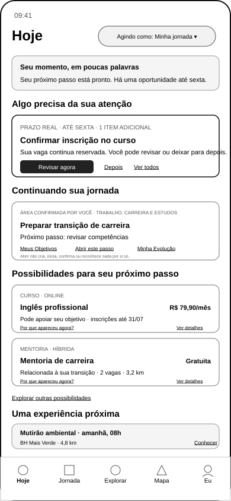
Visualizar o arquivo gráfico vetorial escalável
{kind=link}
O wireframe permanece monocromático e estrutural. Ele não define cores, tipografia, iconografia ou componentes finais.
3. Hierarquia aprovada¶
| Ordem | Bloco | Responsabilidade |
|---|---|---|
| 1 | cabeçalho contextual | indicar a Tela Hoje, o contexto de atuação e o acesso a intervenções |
| 2 | síntese condicional | organizar o momento somente quando a leitura conjunta acrescentar compreensão |
| 3 | atenção principal | apresentar no máximo uma decisão ou ação prioritária, com alternativas legítimas |
| 4 | continuidade da jornada | manter vínculo com o Próximo Passo relevante |
| 5 | possibilidades para o próximo passo | apresentar até dois cartões legíveis em largura integral |
| 6 | experiência próxima em Coletivos | aparecer somente quando houver utilidade temporal |
| 7 | navegação global | permitir acesso a Hoje, Jornada, Explorar, Mapa e Eu |
A ausência de um bloco deverá reorganizar o espaço vertical. A tela não deverá manter áreas vazias apenas para preservar uma composição fixa.
4. Presença companheira na Tela Hoje¶
A superfície deverá permitir que a pessoa perceba:
A Guivos compreende que minha jornada possui continuidade, organiza o que importa neste momento e me oferece possibilidades, mas a decisão continua sendo minha.
Isso deverá ser demonstrado por:
- reconhecimento do momento, sem intimidade artificial;
- explicação de relevância e prazo;
- conexão entre informação, objetivo e Próximo Passo;
- possibilidade de revisar, adiar, corrigir, recusar ou encerrar;
- linguagem calma e específica;
- ausência de culpa por inatividade;
- intenção comercial claramente identificada;
- estados vazios que preservem serenidade e continuidade.
A tela não deverá utilizar slogans motivacionais, recomendações sem explicação ou frases que poderiam pertencer indistintamente a qualquer aplicativo de tarefas, marketplace ou rede social.
5. Cabeçalho contextual¶
O cabeçalho deverá indicar:
- que a pessoa está na Tela Hoje;
- em qual contexto está atuando;
- acesso à Central de Intervenções;
- modo discreto ou proteção visual, quando aplicável.
A forma preferencial do seletor é:
Agindo como: Minha jornada
As alternativas poderão representar uma Organização ou um Coletivo. A troca deverá ser explícita e não poderá executar ação institucional como se fosse pessoal.
6. Síntese condicional do momento¶
A síntese deverá reunir somente fatos ou avaliações suficientemente relevantes e sustentados pela compreensão inicial confirmada, por atualizações posteriores ou por fontes autorizadas.
Exemplo alinhado ao posicionamento:
Seu próximo passo está pronto. Há uma oportunidade com inscrições até sexta e uma atividade amanhã.
A síntese aparecerá quando houver pelo menos dois acontecimentos materiais cuja leitura conjunta reduza esforço de compreensão.
Ela será omitida quando:
- existir somente um item relevante;
- nenhum item material estiver disponível;
- a agregação repetir o bloco principal;
- a fonte estiver incompleta ou incerta;
- o resumo puder expor informação sensível;
- a compreensão ainda não possuir base suficiente para personalização.
Estado sem itens materiais:
Nada precisa da sua atenção agora. Sua jornada permanece disponível quando fizer sentido continuar.
A síntese não deverá utilizar:
- culpa por ausência;
- comparação com outros participantes;
- contagem de dias consecutivos;
- volume de oportunidades como prova de qualidade;
- mensagens publicitárias disfarçadas.
7. Atenção principal¶
O wireframe reserva a maior hierarquia para um único item.
Critérios de seleção:
- segurança e direitos;
- prazo ou risco material;
- confirmação solicitada;
- processo já iniciado;
- dependência ou bloqueio real;
- prioridade declarada pelo participante.
Quando existirem múltiplos itens críticos:
- o item de maior prioridade ocupará o destaque;
- a tela informará a quantidade de itens adicionais;
- a Central de Intervenções reunirá os demais;
- os itens não disputarão simultaneamente a hierarquia principal.
A mensagem deverá explicar consequência e alternativas sem utilizar culpa. Exemplo:
Sua vaga continua reservada até sexta. Você pode revisar agora ou deixar para depois.
Ações mínimas:
- ação principal;
- adiar, quando legítimo;
- abrir explicação;
- recusar, encerrar ou silenciar, quando aplicável.
8. Continuidade da jornada¶
O bloco deverá mostrar:
- formulação do Próximo Passo;
- objetivo relacionado;
- estado real;
- bloqueio ou dependência;
- ação possível.
O título preferencial é Continuando sua jornada, evitando a aparência de painel genérico de produtividade.
O bloco permanece antes das oportunidades para preservar a continuidade da jornada acima da descoberta comercial.
A ausência de Próximo Passo será válida. A interface não deverá exigir que a pessoa crie um movimento apenas para preencher a tela.
9. Possibilidades para o próximo passo¶
O título preferencial do bloco é Possibilidades para seu próximo passo. Os itens continuam sendo oportunidades funcionais, mas sua apresentação deverá explicar a relação legítima com a jornada.
A versão utiliza até dois cartões empilhados e em largura integral.
Conteúdo mínimo:
- tipo;
- título;
- preço ou gratuidade;
- prazo ou disponibilidade;
- localização ou modalidade;
- razão resumida de relevância;
- acesso à explicação.
Regras:
- o recorte deverá ser pequeno;
- nenhuma quantidade mínima será exigida;
- patrocínio não poderá elevar relevância funcional;
- a tela deverá evitar oportunidades repetitivas;
- o catálogo completo pertence a Explorar ou Minhas Oportunidades;
- uma oportunidade poderá ser relevante e ainda assim não aparecer hoje;
- a pessoa deverá poder abrir outras oportunidades sem sobrecarregar a superfície;
- contratar ou participar nunca será apresentado como obrigação de evolução;
- a relevância deverá derivar de contexto autorizado, não apenas de perfil genérico ou comportamento observado;
- antes do gate da compreensão inicial, oportunidades somente poderão ser exploradas fora da Tela Hoje como conteúdo geral não personalizado.
10. Coletivos e atividades¶
O título preferencial é Uma experiência próxima, quando houver um acontecimento material.
O bloco permanecerá condicional e deverá privilegiar:
- atividade próxima;
- convite ou solicitação pendente;
- alteração material de regra, horário ou local;
- ação de causa ou voluntariado;
- decisão necessária de líder ou moderador;
- recurso com prazo de uso.
Publicações sociais sem finalidade, atualizações genéricas ou simples ausência recente não deverão ocupar a Tela Hoje.
11. Navegação global¶
A navegação permanece:
- Hoje;
- Jornada;
- Explorar;
- Mapa;
- Eu.
Jornada reúne contexto, objetivos, Próximos Passos, experiências e evolução. Esta reformulação não altera a nomenclatura consolidada.
A HOME permanece acessível pela marca, menu institucional ou acesso ao Ecossistema Guivos, sem necessariamente ocupar uma sexta posição na navegação móvel principal.
12. Estados alternativos que ainda exigem wireframe¶
- nenhuma atenção e nenhuma oportunidade;
- primeira entrada após confirmação da compreensão inicial;
- compreensão inicial parcialmente confirmada;
- informação sensível em modo discreto;
- múltiplos itens críticos;
- falha ao carregar uma fonte externa;
- oportunidade expirada após apresentação;
- alteração de preço em processo iniciado;
- contexto de Organização;
- contexto de Coletivo;
- acessibilidade com texto ampliado;
- baixa conectividade.
13. Decisões humanas aplicadas¶
- A síntese do momento foi mantida como bloco condicional.
- Um único item principal foi preservado.
- O Próximo Passo permanece antes das oportunidades.
- As oportunidades utilizam largura integral e empilhamento.
- O bloco de Coletivos permanece somente com utilidade temporal.
- O seletor de contexto explica que a pessoa está agindo em determinado papel.
- A navegação Hoje, Jornada, Explorar, Mapa e Eu foi preservada.
- A presença companheira e o propósito passam a orientar títulos, explicações, alternativas e estados vazios.
- A HOME da Guivos passa a anteceder a Tela Hoje na primeira entrada pessoal.
- A personalização material permanece bloqueada antes da compreensão inicial confirmada.
14. Perguntas ainda abertas¶
- Qual estado alternativo da Tela Hoje deverá ser detalhado primeiro?
- Como a Central de Intervenções apresentará múltiplos itens críticos?
- Quais informações deverão permanecer ocultas na tela bloqueada?
- Como a hierarquia se adapta a texto ampliado e leitores de tela?
- Qual será o comportamento em baixa conectividade?
- A presença companheira é percebida sem parecer personagem, amizade simulada ou pressão emocional?
- Como será a primeira Tela Hoje imediatamente após a transição da HOME?
15. Critérios de aceite do wireframe¶
O wireframe poderá avançar quando demonstrar que:
- a finalidade da tela é compreendida sem explicação externa;
- a Guivos é percebida como apoio contínuo à jornada, não como painel genérico;
- a Tela Hoje é reconhecida como superfície recorrente, não como apresentação institucional inicial;
- o contexto de atuação está explícito;
- a síntese não repete um único item;
- a atenção principal é identificada rapidamente;
- sugestão, decisão e compromisso permanecem distintos;
- preço e prazo aparecem sem pressão comercial;
- oportunidades permanecem legíveis em tela móvel;
- controle de relevância é encontrável;
- ausência de itens não é tratada como falha;
- a linguagem preserva autonomia, calma e possibilidade de pausa;
- a tela conduz a ações reais sem exigir permanência prolongada;
- a personalização possui base confirmada e corrigível;
- a leitura não depende do conhecimento do identificador técnico.
16. Limites¶
Esta versão não autoriza protótipo navegável, design visual, testes de usabilidade, componentes técnicos ou desenvolvimento.
Validação Funcional e Reformulação da Tela Hoje (identificador UXA-010)¶
1. Finalidade¶
Este documento registra a primeira validação humana funcional da Tela Hoje, governa a reformulação do respectivo wireframe de baixa fidelidade e preserva a decisão posterior de que a Página Inicial da Guivos e o início protegido da jornada deverão antecedê-la na primeira experiência pessoal.
A decisão permanece restrita à arquitetura da experiência. Ela não aprova design visual, componentes técnicos, protótipo navegável, testes de usabilidade ou desenvolvimento.
2. Decisões humanas registradas¶
2.1 Reformulação funcional original¶
O Fundador aprovou o prosseguimento com a reformulação funcional apresentada após a revisão do wireframe inicial.
A decisão aceitou os seguintes ajustes:
- manter a síntese do momento, mas torná-la condicional;
- preservar somente um item principal de atenção;
- apresentar oportunidades em cartões de largura integral e empilhados;
- explicitar o contexto de atuação com a expressão
Agindo como; - mostrar Coletivos e atividades somente quando houver utilidade temporal.
2.2 Precedência da Página Inicial e do início protegido da jornada¶
Em 26/07/2026, o Fundador determinou que a experiência pessoal deverá possuir uma Página Inicial da Guivos anterior à Tela Hoje.
A auditoria funcional posterior estabeleceu três responsabilidades distintas:
- a Página Inicial da Guivos apresenta a instituição, o propósito e o ecossistema sem coletar relatos pessoais;
- o início protegido da jornada recebe texto, voz, arquivos ou respostas progressivas depois de transição consciente, autenticação e autorização compatíveis;
- a Tela Hoje utiliza somente compreensão suficiente, revisável e autorizada para apoiar a continuidade da jornada.
A pessoa:
- conhece a Guivos e o ecossistema na Página Inicial;
- decide voluntariamente iniciar a jornada;
- entra em ambiente protegido antes de compartilhar seu Momento Atual;
- revisa o que a Guivos compreendeu;
- corrige, limita e confirma a compreensão;
- somente então recebe indicações contextuais na Tela Hoje.
Essa decisão não invalida a hierarquia funcional já aprovada para a Tela Hoje. Ela altera sua posição na jornada: de primeira entrada pessoal para entrada recorrente após a compreensão inicial confirmada.
3. Sequência de entrada preservada¶
A sequência pessoal passa a ser:
Página Inicial da Guivos
→ decisão voluntária de iniciar
→ início protegido da jornada
→ relato do Momento Atual
→ compreensão inicial revisável
→ confirmação e autorização
→ Tela Hoje
A Tela Hoje não deverá:
- substituir a apresentação institucional da Página Inicial;
- coletar o primeiro relato completo sem contexto e proteção;
- apresentar personalização antes do gate de compreensão;
- utilizar popularidade, publicidade ou perfil genérico para simular relevância;
- receber diretamente voz, arquivos ou outras informações quando a pessoa ainda estiver na superfície pública.
4. Estrutura recorrente preservada¶
Dentro da Tela Hoje, a ordem funcional permanece:
contexto de atuação
→ síntese condicional
→ atenção principal
→ movimento atual
→ oportunidades para considerar
→ Coletivos e atividades, quando materialmente relevantes
→ navegação global
O Próximo Passo permanece antes das oportunidades para preservar continuidade da jornada e evitar que o conteúdo comercial ocupe prioridade superior ao movimento declarado pela pessoa.
5. Síntese do momento¶
A síntese permanece válida, mas não será um bloco obrigatório.
5.1 Quando aparece¶
A síntese deverá aparecer quando existirem pelo menos dois acontecimentos materiais que possam ser compreendidos melhor em conjunto, por exemplo:
- um Próximo Passo pronto;
- uma confirmação pendente;
- uma oportunidade com prazo real;
- uma atividade próxima;
- uma alteração material em processo iniciado.
A síntese deverá possuir base em compreensão confirmada, atualização posterior ou fonte autorizada.
5.2 Quando não aparece¶
A síntese deverá ser omitida quando:
- houver somente um item relevante, evitando repetição;
- não houver informação material;
- a agregação aumentar exposição de informação sensível;
- a fonte estiver incompleta ou com sincronização incerta;
- a compreensão inicial ainda não possuir segurança suficiente.
A ausência da síntese não deverá deixar espaço vazio artificial.
6. Atenção principal e múltiplos itens críticos¶
A Tela Hoje continuará destacando no máximo um item principal de atenção.
Quando existirem múltiplos itens críticos:
- o item de maior prioridade material ocupará o destaque principal;
- a tela informará quantos outros itens precisam de revisão;
- o acesso conduzirá à Central de Intervenções;
- os itens não competirão simultaneamente por destaque;
- publicidade, patrocínio ou popularidade não influenciarão a prioridade.
A priorização seguirá segurança e direitos, prazo ou risco material, confirmação solicitada, processo iniciado, dependência real e prioridade declarada.
7. Contexto de atuação¶
O seletor deverá apresentar explicitamente:
Agindo como: Minha jornada
As alternativas poderão incluir Organização representada ou Coletivo administrado ou integrado.
A interface deverá impedir que uma ação institucional seja executada como ação pessoal ou vice-versa. Mudanças de contexto deverão ser conscientes, visíveis e reversíveis.
8. Oportunidades para considerar¶
Os cartões lado a lado deixam de ser a solução preferencial para a tela móvel de referência.
A apresentação reformulada deverá:
- utilizar a largura integral disponível;
- empilhar até dois cartões;
- preservar título, preço ou gratuidade, prazo, modalidade ou localização e razão de relevância;
- oferecer explicação de por que a oportunidade aparece;
- manter acesso ao conjunto completo em Explorar ou Minhas Oportunidades;
- evitar repetição de categorias ou fontes;
- permitir que somente uma oportunidade seja exibida quando apenas uma possuir utilidade temporal suficiente;
- utilizar somente contexto autorizado e corrigível para justificar relevância pessoal.
A quantidade máxima de dois cartões não constitui meta de preenchimento. Nenhuma oportunidade deverá ser apresentada apenas para completar a tela.
Antes do gate da compreensão inicial, itens gerais poderão existir em Explorar ou na Página Inicial, mas não serão descritos como indicação pessoal.
9. Coletivos e atividades¶
O bloco de Coletivos permanece na Tela Hoje somente quando houver utilidade temporal, como:
- atividade próxima;
- convite ou solicitação pendente;
- mudança material de horário, local ou regra;
- ação de causa ou voluntariado;
- decisão necessária de líder, moderador ou participante;
- recurso com prazo de uso.
Publicações sociais, atualizações genéricas ou ausência recente não justificam o bloco.
10. Navegação preservada¶
A navegação pessoal permanece:
- Hoje;
- Jornada;
- Explorar;
- Mapa;
- Eu.
Jornada é o termo consolidado para contexto, objetivos, Próximos Passos, experiências e evolução. O incremento não altera essa nomenclatura.
A Página Inicial continuará acessível por marca, menu institucional ou opção de acesso ao Ecossistema Guivos, sem necessariamente ocupar a navegação principal recorrente.
11. Resultado da reformulação¶
A nova versão do Wireframe de Baixa Fidelidade da Tela Hoje deverá demonstrar:
- posição recorrente após a Página Inicial, o início protegido da jornada e a compreensão inicial;
- contexto de atuação mais explícito;
- síntese condicional;
- um único item principal;
- continuidade da jornada antes da descoberta comercial;
- oportunidades legíveis em largura integral;
- ausência legítima de blocos sem utilidade temporal;
- acesso claro a itens adicionais sem sobrecarregar a superfície;
- personalização sustentada por contexto confirmado e corrigível.
12. Estados ainda não resolvidos¶
Permanecem pendentes de wireframes separados:
- primeira Tela Hoje após a confirmação da compreensão inicial;
- estado totalmente vazio;
- múltiplos itens críticos;
- informação sensível em modo discreto;
- falha de fonte externa;
- baixa conectividade;
- contexto de Organização;
- contexto de Coletivo;
- alteração de preço em processo iniciado;
- acessibilidade com texto ampliado.
13. Limites¶
Esta decisão não autoriza:
- design visual definitivo;
- definição de cores, tipografia ou iconografia;
- protótipo navegável;
- testes de usabilidade;
- implementação;
- criação automática dos estados alternativos;
- início da Engenharia de Produto.
14. Próximo ponto de decisão¶
Após a integração desta reformulação, os próximos atos dependerão de autorização separada e poderão:
- validar funcionalmente a Página Inicial pública;
- validar funcionalmente a entrada do fluxo protegido;
- detalhar a captura multimodal do Momento Atual;
- validar a revisão da compreensão inicial;
- criar a primeira variação da Tela Hoje após a transição;
- selecionar outro estado alternativo da Tela Hoje para wireframe.
O protótipo navegável continuará dependendo de autorização explícita posterior.
Explorar e Mapa — navegação recorrente
UXA-004 — Oportunidades, Organizações, Coletivos e Mapa¶
1. Finalidade¶
Este documento define como as oportunidades entram no ecossistema, como são apresentadas, onde preço e condições aparecem, como o participante controla relevância, como Organizações e Coletivos operam e como o mapa integra esses elementos.
2. Modelo de origem das oportunidades¶
Uma oportunidade poderá ser identificada por:
- Organização;
- Coletivo;
- profissional ou especialista;
- participante;
- parceiro;
- fonte pública;
- integração;
- curadoria;
- Guivos Mall;
- Guivos Travel;
- Guivos Media;
- Guivos Business;
- Guivos Intelligence.
A origem deverá permanecer visível. Identificação não equivale a admissão, ativação, relevância ou apresentação.
3. Fluxo de cadastro pela Organização¶
Etapa 1 — Natureza da oportunidade¶
A Organização selecionará o tipo:
- produto;
- serviço;
- curso ou formação;
- vaga de trabalho;
- bolsa;
- evento;
- experiência;
- viagem;
- mentoria;
- benefício;
- ação social;
- voluntariado;
- causa;
- programa;
- convite;
- conteúdo;
- grupo ou Coletivo;
- outro tipo sujeito a análise.
Etapa 2 — Finalidade e valor¶
Campos:
- título;
- descrição curta;
- descrição completa;
- finalidade;
- qual necessidade ou Próximo Passo pode apoiar;
- público pretendido;
- resultados esperados sem garantia indevida;
- categoria e subcategoria;
- idioma.
Etapa 3 — Responsável e autoridade¶
Campos:
- Organização responsável;
- unidade, filial ou local;
- pessoa responsável;
- fonte oficial;
- escopo de autoridade;
- parceiros envolvidos;
- prestador efetivo;
- contatos de suporte;
- documentos ou evidências institucionais.
Etapa 4 — Disponibilidade e temporalidade¶
Campos:
- início e encerramento;
- prazo de inscrição;
- estoque, vagas ou capacidade;
- disponibilidade imediata, futura, limitada ou sob consulta;
- recorrência;
- horários;
- validade da informação;
- frequência de atualização;
- lista de espera;
- política de alteração ou cancelamento.
Etapa 5 — Localização e modalidade¶
Campos:
- presencial, online ou híbrida;
- endereço;
- coordenada ou área aproximada;
- raio de atendimento;
- cidades ou regiões;
- atendimento domiciliar;
- acessibilidade física;
- transporte ou requisitos de deslocamento;
- link ou canal de acesso online.
Etapa 6 — Preço e condições¶
A Organização deverá informar:
- gratuita, paga, subsidiada ou benefício;
- preço principal;
- moeda;
- custo total conhecido;
- taxas adicionais;
- custos obrigatórios externos;
- descontos;
- subsídios;
- bolsas;
- condições de pagamento;
- parcelamento;
- recorrência de cobrança;
- política de cancelamento;
- reembolso;
- o que está incluído e não incluído;
- validade do preço.
Preço promocional não poderá ocultar o preço de referência quando necessário para compreensão.
Etapa 7 — Elegibilidade¶
Campos somente quando necessários:
- idade;
- localização;
- formação;
- experiência;
- renda;
- vínculo institucional;
- documentação;
- condição técnica;
- aprovação;
- entrevista;
- disponibilidade;
- requisitos legais;
- critérios de prioridade;
- exceções legítimas.
A tela deverá explicar por que cada dado é necessário e quem realizará a decisão final.
Etapa 8 — Acessibilidade, risco e proteção¶
Campos:
- acessibilidade física e digital;
- recursos de idioma;
- apoio necessário;
- contraindicações;
- riscos materiais;
- exigência de profissional especializado;
- proteção de crianças e adolescentes;
- informações sensíveis;
- termos e políticas;
- canais de contestação;
- plano de segurança, quando aplicável.
Etapa 9 — Relação comercial¶
A Organização deverá declarar:
- patrocínio;
- comissão;
- afiliação;
- exclusividade;
- participação da Guivos na receita;
- promoção paga;
- financiamento;
- relação indireta relevante;
- prioridade contratual, se existir.
Esses campos serão exibidos com transparência e não poderão elevar relevância funcional.
Etapa 10 — Pré-visualização¶
A Organização visualizará a oportunidade como aparecerá:
- no cartão;
- no detalhe;
- na lista;
- no mapa;
- na busca;
- em uma intervenção;
- em modo acessível;
- em modo de informação sensível.
Etapa 11 — Envio e avaliação¶
Estados visíveis:
Rascunho
→ Enviada
→ Em avaliação
→ Ajustes solicitados
→ Aprovada para ativação
→ Ativa
Outros estados:
- pausada;
- indisponível;
- expirada;
- encerrada;
- cancelada;
- contestada;
- corrigida;
- rejeitada antes da ativação.
A Organização deverá compreender a razão de qualquer solicitação ou decisão e possuir canal de correção ou recurso.
4. Cartão de oportunidade¶
Conteúdo primário¶
- título;
- tipo;
- Organização ou Coletivo responsável;
- data ou disponibilidade;
- local, distância ou modalidade;
- preço, gratuidade ou faixa;
- elegibilidade resumida;
- razão de relevância;
- ação principal.
Conteúdo secundário¶
- patrocínio ou relação comercial;
- acessibilidade;
- risco ou condição;
- última atualização;
- vagas ou capacidade;
- prazo real;
- vínculo com objetivo ou Próximo Passo.
Ações¶
- ver detalhes;
- salvar;
- comparar;
- declarar interesse;
- iniciar inscrição ou contratação;
- abrir no mapa;
- compartilhar;
- ocultar;
- mostrar menos como isto;
- contestar informação;
- denunciar.
5. Apresentação de preço¶
O preço deverá aparecer:
- no cartão, quando conhecido e material;
- no detalhe, com composição completa;
- na comparação;
- no mapa, por faixa ou marcador compreensível;
- antes de iniciar transação ou inscrição;
- novamente antes da confirmação final quando houver mudança.
Estados possíveis:
- gratuito;
- gratuito com custos externos;
- pago;
- a partir de;
- faixa estimada;
- subsidiado;
- bolsa disponível;
- benefício elegível;
- preço sob consulta;
- preço não informado — apresentação limitada;
- custo variável;
- recorrente.
A interface não deverá utilizar grátis quando existirem custos obrigatórios não evidenciados.
6. Controle de relevância¶
6.1 Onde o participante define relevância¶
O participante poderá definir ou ajustar relevância em:
- primeira captura de contexto;
Meu Contexto Hoje;- preferências de
Explorar; - filtros de Oportunidades;
- filtros do Mapa;
- detalhe de uma oportunidade;
- feedback em cartões;
- preferências de Organizações e Coletivos;
- Central de Intervenções;
- revisão posterior a uma experiência.
6.2 Dimensões controláveis¶
- áreas de interesse;
- objetivos relacionados;
- localização e raio;
- modalidade;
- dias e horários;
- orçamento ou faixa de preço;
- gratuidade ou subsídio;
- acessibilidade;
- idioma;
- categorias proibidas;
- Organizações preferidas ou ocultadas;
- Coletivos;
- oportunidades patrocinadas;
- uso de dados sensíveis;
- frequência e canal.
6.3 Explicação da relevância¶
Por que estou vendo isto? deverá mostrar:
- objetivo, Próximo Passo, preferência ou busca relacionada;
- contexto mínimo utilizado;
- fonte;
- disponibilidade e elegibilidade;
- critérios de comparação;
- relação comercial;
- limitações;
- como alterar avaliações futuras.
A Guivos não deverá revelar inferências sensíveis de forma desnecessária.
7. Arquitetura do Mapa¶
7.1 Finalidade¶
O Mapa deverá permitir compreender o ecossistema territorial sem reduzir relevância à proximidade geográfica.
Camadas:
- oportunidades;
- Organizações;
- Coletivos;
- eventos e atividades;
- experiências públicas;
- pontos de apoio;
- locais salvos.
7.2 Modos de visualização¶
- mapa;
- lista sincronizada;
- área nesta região;
- perto de mim;
- calendário geográfico;
- rota ou deslocamento;
- agrupamento por região;
- modo de baixa conectividade.
7.3 Filtros¶
- categoria;
- data e horário;
- distância;
- preço;
- gratuito;
- subsídio;
- modalidade;
- disponibilidade;
- elegibilidade;
- acessibilidade;
- idioma;
- Organização;
- Coletivo;
- parceiro;
- patrocinado;
- confiança da fonte;
- vínculo com objetivo ou Próximo Passo.
7.4 Cartão no mapa¶
Ao selecionar um ponto:
- título;
- tipo;
- responsável;
- distância;
- data ou disponibilidade;
- preço;
- razão resumida de relevância;
- acessibilidade;
- ação para detalhe, salvar ou rota.
7.5 Privacidade e segurança¶
O mapa não deverá:
- mostrar localização de participantes;
- revelar residência ou local sensível de membros;
- expor endereço exato de atividade protegida antes da autorização;
- registrar localização contínua sem finalidade;
- utilizar histórico sensível para publicidade;
- presumir interesse apenas por proximidade.
Localização poderá ser:
- exata e temporária;
- aproximada;
- cidade informada;
- região selecionada;
- desativada.
8. Organização no mapa¶
O perfil de uma Organização poderá possuir:
- sede;
- filiais;
- unidades de atendimento;
- áreas de cobertura;
- locais temporários;
- oportunidades em cada local;
- horários;
- acessibilidade;
- contatos;
- verificação.
A Organização deverá controlar quais locais são públicos e quais aparecem apenas após relação ou autorização.
9. Coletivo no mapa¶
Um Coletivo poderá aparecer como:
- local fixo;
- área de atuação;
- Coletivo online;
- atividade temporária;
- evento;
- ponto de encontro protegido;
- abrangência regional ou global.
Controles:
- visibilidade pública, limitada ou privada;
- endereço exato ou aproximado;
- exibição somente de atividades;
- aprovação antes de revelar local;
- proteção de participantes vulneráveis;
- regras de entrada.
10. Criação e gestão de Coletivo¶
Criação¶
Campos iniciais:
- nome;
- propósito;
- tipo;
- descrição;
- responsáveis;
- visibilidade;
- abrangência;
- local ou modalidade;
- regras;
- critérios de entrada;
- papéis;
- canais;
- privacidade;
- moderação;
- relação com Organização, quando existir.
Estados¶
- rascunho;
- em configuração;
- ativo;
- privado;
- pausado;
- restrito;
- contestado;
- encerrado;
- arquivado.
Operações¶
- convidar;
- aprovar solicitações;
- atribuir papéis;
- criar atividades;
- cadastrar oportunidades;
- definir calendário;
- publicar recursos;
- moderar;
- registrar decisões;
- relacionar Organizações;
- acompanhar participação autorizada;
- pausar ou encerrar.
11. Relação entre Organização e Coletivo¶
Uma Organização poderá:
- criar um Coletivo institucional;
- apoiar um Coletivo independente;
- patrocinar atividade;
- oferecer oportunidade;
- disponibilizar recursos;
- convidar públicos;
- participar como membro institucional;
- deixar de apoiar sem assumir propriedade indevida.
A interface deverá distinguir:
- proprietário;
- administrador;
- apoiador;
- patrocinador;
- parceiro;
- fornecedor;
- membro;
- moderador.
Patrocínio não transfere automaticamente governança do Coletivo.
12. Fluxos críticos para prototipação¶
Fluxo A — Pessoa encontra uma oportunidade¶
Hoje ou Explorar
→ cartão
→ por que estou vendo
→ detalhe
→ comparação ou mapa
→ salvar ou declarar interesse
→ iniciar processo externo
→ acompanhar estado
→ reconhecer experiência
Fluxo B — Organização publica oportunidade¶
Visão da Organização
→ criar oportunidade
→ preencher etapas
→ pré-visualizar
→ enviar
→ corrigir, se necessário
→ ativar
→ atualizar disponibilidade
→ acompanhar processos
→ encerrar ou renovar
Fluxo C — Pessoa entra em Coletivo¶
Explorar ou Mapa
→ perfil do Coletivo
→ regras e propósito
→ solicitar entrada ou aceitar convite
→ definir visibilidade e notificações
→ participar de atividade
→ controlar saída e dados
Fluxo D — Coletivo cria atividade¶
Gestão do Coletivo
→ criar atividade ou oportunidade
→ definir público, local, data e condições
→ revisar privacidade
→ publicar
→ receber participantes
→ registrar resultado autorizado
13. Pendências para os próximos incrementos¶
- taxonomia final de tipos de oportunidade;
- contrato completo de verificação de Organizações;
- modelo de papéis e permissões;
- regras finais de moderação de Coletivos;
- integração transacional com Mall e Travel;
- política de avaliações públicas;
- padrões de comparação;
- wireframes;
- protótipos;
- testes com Pessoas, Organizações e Coletivos;
- preços e planos finais.
Wireframe de Baixa Fidelidade do Mapa de Oportunidades¶
1. Finalidade¶
Este documento materializa a referência gráfica móvel do Mapa de Oportunidades como superfície própria da navegação recorrente da Guivos.
A versão 0.2.0 incorpora a reformulação governada pela UXA-025 — Validação Funcional e Reformulação do Mapa de Oportunidades.
O wireframe verifica hierarquia, contexto de atuação, pesquisa, alternância entre mapa e lista, filtros, resultados, região, camadas, localização, oportunidade selecionada, privacidade territorial e continuidade para o Detalhe de Oportunidade.
Ele não representa mapa real, design visual, tecnologia cartográfica, dados de produção ou implementação.
2. Posição na experiência¶
O Mapa não entra entre a Página Inicial pública e a Tela Hoje.
Página Inicial pública
→ início protegido da jornada
→ compreensão inicial revisável
→ Tela Hoje
→ Hoje | Jornada | Explorar | Mapa | Eu
A superfície também poderá ser acessada:
- pela exploração geral da Home, sem personalização;
- por Explorar;
- pelo bloco contextual
Perto de mimda Tela Hoje; - pelo Detalhe de Oportunidade;
- por um local salvo, Organização, Coletivo, atividade, evento ou ponto de apoio.
3. Artefato visual reformulado¶
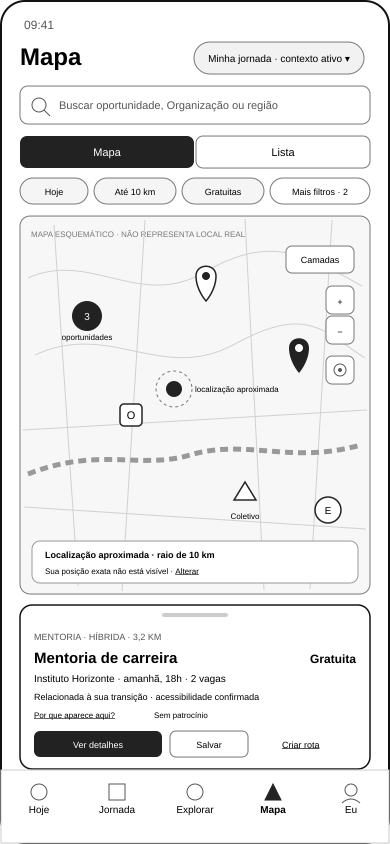
Arquivo vetorial:
docs/assets/wireframes/uxa-024-opportunity-map-mobile.svg
Dimensão de referência:
- canal: aplicativo móvel;
- largura: 390 pixels;
- altura: 844 pixels;
- estado principal: pessoa autenticada, compreensão inicial revisada, gate de personalização atendido e localização aproximada autorizada.
4. Hierarquia validada¶
A ordem funcional da superfície é:
nome da superfície e contexto de atuação
→ pesquisa
→ Mapa ou Lista
→ filtros ativos e limpeza
→ quantidade de resultados
→ Pesquisar nesta área
→ mapa e controles territoriais
→ legenda
→ localização e privacidade
→ oportunidade selecionada
→ detalhe, salvamento e rota contextual
→ navegação recorrente
A área territorial permanece o maior campo visual, mas não oculta busca, filtros, resultados, privacidade ou ações do item selecionado.
5. Contexto e pesquisa¶
O cabeçalho utiliza:
Agindo como: Minha jornada
Quando a pessoa estiver representando uma Organização ou atuando em um Coletivo, participante, papel e escopo deverão permanecer explícitos.
A pesquisa poderá abranger oportunidade, Organização, Coletivo, atividade, evento, categoria, cidade, bairro ou região.
6. Mapa e Lista¶
A superfície permite alternar entre:
Mapa
↔ Lista
A alternância não cria dois catálogos independentes.
Busca, filtros, região, quantidade de resultados, item selecionado e explicação de relevância deverão permanecer sincronizados quando aplicável.
7. Filtros e resultados¶
O estado principal apresenta filtros ativos de período, distância e gratuidade.
A marca textual ✓ demonstra atividade sem depender somente de cor.
A superfície também apresenta:
- quantidade total de filtros ativos;
- quantidade de resultados na área visível;
- ação
Limpar filtros; - acesso ao conjunto ampliado.
O conjunto ampliado poderá incluir categoria, data, horário, preço, modalidade, disponibilidade, elegibilidade, acessibilidade, idioma, Organização, Coletivo, origem, patrocínio, confiança da fonte e vínculo com objetivo ou Próximo Passo.
A limpeza de filtros não deverá apagar a busca ou alterar a região silenciosamente.
8. Atualização da região¶
Quando a pessoa mover ou ampliar o mapa, a interface deverá oferecer:
Pesquisar nesta área
A movimentação territorial não atualiza resultados silenciosamente. A pessoa reconhece que a área mudou e decide quando deseja consultar a nova região.
9. Área territorial e camadas¶
O mapa esquemático poderá apresentar:
- oportunidades;
- Organizações;
- Coletivos;
- eventos e atividades;
- experiências públicas;
- pontos de apoio;
- locais salvos.
Agrupamentos numéricos poderão representar vários itens em uma área.
A legenda utiliza forma e texto para distinguir tipos. Cor nunca será o único meio de identificação.
A ação Camadas permite mostrar ou ocultar tipos sem apagar filtros de negócio ou preferências permanentes silenciosamente.
10. Controles territoriais¶
A superfície oferece controles para:
- visualizar camadas;
- aumentar ou reduzir escala;
- reposicionar a visualização;
- pesquisar nesta área;
- alterar raio;
- usar localização exata temporária, aproximada, cidade informada ou região selecionada;
- desativar localização;
- revisar privacidade.
11. Localização e privacidade¶
O estado principal declara:
Localização aproximada · raio 10 km
Sua posição exata não está visível.
A pessoa pode abrir Alterar e Privacidade diretamente no bloco territorial.
Localização exata temporária exige finalidade, duração e ação de encerramento.
O Mapa não deverá:
- mostrar localização de participantes;
- revelar residência ou local sensível;
- expor endereço protegido antes da condição aplicável;
- exigir rastreamento contínuo;
- manter localização exata sem finalidade e prazo;
- utilizar histórico sensível para publicidade;
- presumir interesse apenas por proximidade.
12. Oportunidade selecionada¶
Ao selecionar um ponto, a pessoa recebe um cartão resumido com:
- tipo e modalidade;
- título;
- Organização, Coletivo ou fonte responsável;
- distância ou região;
- data, prazo ou disponibilidade;
- preço, gratuidade ou faixa;
- vagas ou capacidade quando material;
- acessibilidade;
- razão resumida de relevância;
- relação comercial;
- ações para abrir detalhes, salvar ou criar rota quando aplicável.
O cartão não substitui o Detalhe de Oportunidade. Condições completas, elegibilidade, riscos, política de cancelamento, composição de preço e autoridade permanecem na superfície especializada.
13. Rota contextual¶
Criar rota somente aparece quando o item possui local físico, o endereço pode ser utilizado naquele estado e a ação não revela residência ou local sensível.
O estado ilustrado declara:
Endereço disponível · rota permitida neste estado
Quando o endereço estiver protegido, a ação deverá ser substituída por Ver área aproximada, Entender quando o endereço será liberado ou Revisar condições de acesso.
14. Relevância e exploração¶
14.1 Antes do gate¶
A superfície poderá apresentar conteúdo geral, institucional, editorial ou resultante de busca explícita.
Ela não deverá afirmar adequação ao Momento Atual.
14.2 Depois do gate¶
A Guivos poderá explicar relevância com base em objetivo, Próximo Passo, preferência, localização autorizada, disponibilidade e elegibilidade conhecida.
A pessoa poderá abrir Por que aparece aqui?, corrigir contexto, ocultar categorias, reduzir o uso de localização ou continuar sem recomendações pessoais.
Proximidade, popularidade, patrocínio ou comissão não constituem relevância suficiente.
15. Relação comercial¶
A relação comercial deverá permanecer identificada, por exemplo:
Sem patrocínio;Patrocinado;Comissão aplicável;- outra formulação materialmente correta.
A relação comercial não altera a prioridade funcional.
16. Estados funcionais mínimos¶
| Estado | Comportamento esperado |
|---|---|
| localização desativada | permite cidade ou região manual e explica limitações |
| localização aproximada | mostra área e raio sem posição exata |
| localização exata temporária | apresenta finalidade, duração e encerramento |
| região sem resultados | não preenche artificialmente; oferece ampliar raio, período ou filtros |
| carregamento | preserva busca, região, filtros e estrutura |
| baixa conectividade | reduz camadas e informa atualização limitada |
| item indisponível | preserva razão e data da mudança quando possível |
| endereço protegido | mostra área aproximada e condição para revelar detalhes |
| permissão revogada | interrompe uso futuro e mantém alternativas manuais |
| erro de fonte | identifica falha sem apresentar dado como confiável |
| contexto sem gate | remove linguagem personalizada e mantém exploração geral |
| mapa indisponível | oferece Lista com busca, filtros e região conhecida |
A criação de wireframes específicos para esses estados permanece ato separado.
17. Relação com a Tela Hoje¶
A Tela Hoje poderá mostrar somente um recorte compacto Perto de mim e oferecer Abrir no mapa.
Ela não incorpora o mapa completo e não se transforma em catálogo territorial.
18. Relação com Explorar¶
Explorar organiza descoberta por busca, lista, categorias e filtros.
Mapa organiza a mesma descoberta pela dimensão territorial.
Explorar em lista
↔ visualizar no Mapa
↔ abrir Detalhe de Oportunidade
19. Continuidade com o Detalhe¶
O Mapa conduz ao Detalhe de Oportunidade para condições completas e decisão consciente.
Ao retornar, a pessoa deverá recuperar região, filtros e item selecionado quando tecnicamente viável e compatível com privacidade.
20. Resultado da validação¶
A primeira validação funcional está registrada em UXA-025.
O wireframe é considerado funcionalmente válido após reformulação porque:
- utiliza contexto de atuação explícito;
- distingue filtros ativos;
- mostra resultados da região;
- oferece pesquisa consciente nesta área;
- apresenta legenda;
- torna localização e privacidade encontráveis;
- preserva Mapa e Lista como uma descoberta única;
- oferece contexto suficiente antes do Detalhe;
- condiciona rota à disponibilidade segura do endereço;
- separa relevância de proximidade e patrocínio;
- mantém alternativas sem localização e sem personalização.
21. Limites¶
Este incremento não:
- define fornecedor ou tecnologia de mapas;
- cria geocodificação, rotas ou rastreamento;
- define coordenadas, cidades ou oportunidades reais;
- define ícones, cores ou tipografia finais;
- conclui responsividade para computador ou tablet;
- cria textos finais de interface;
- cria protótipo navegável;
- executa teste de usabilidade;
- inicia Engenharia de Produto.
22. Próximos atos governados¶
Após integração e nova autorização, poderão ocorrer separadamente:
- criar estados alternativos do Mapa, começando por Lista ou localização desativada;
- criar referência do Mapa para computador;
- criar o wireframe gráfico do início protegido da jornada;
- criar a referência móvel da Página Inicial pública;
- validar a revisão da compreensão inicial;
- validar a transição para a primeira Tela Hoje;
- retomar independentemente os testes dos Resultados Empresariais.
Nenhum ato é iniciado automaticamente.
Validação Funcional e Reformulação do Mapa de Oportunidades¶
1. Finalidade¶
Este documento registra a primeira validação funcional do Mapa de Oportunidades, governa a reformulação do wireframe móvel UXA-024 e estabelece os critérios mínimos para a continuidade entre Mapa, Lista, Explorar, Tela Hoje e Detalhe de Oportunidade.
A decisão permanece restrita à Arquitetura da Experiência. Ela não aprova tecnologia cartográfica, fornecedor de mapas, geocodificação, rotas, design visual, protótipo navegável, teste de usabilidade ou desenvolvimento.
2. Decisão humana registrada¶
Em 26/07/2026, o Fundador autorizou a validação funcional do wireframe móvel do Mapa de Oportunidades após a integração da UXA-024.
A validação examinou:
- posição do Mapa na experiência recorrente;
- hierarquia da superfície;
- contexto de atuação;
- busca, resultados e filtros;
- alternância entre Mapa e Lista;
- leitura das camadas territoriais;
- localização e privacidade;
- oportunidade selecionada;
- relevância e relação comercial;
- continuidade para o Detalhe de Oportunidade;
- estados alternativos e falhas;
- aderência à Fundação da Guivos.
3. Resultado da validação¶
O Mapa de Oportunidades é considerado funcionalmente válido após reformulação.
O wireframe inicial já estabelecia corretamente a superfície própria, a alternância entre Mapa e Lista, os filtros, a localização aproximada, as camadas territoriais, o cartão selecionado e a navegação recorrente.
Entretanto, a validação identificou riscos de compreensão e controle que exigiram correção antes do fechamento funcional:
- o seletor de contexto não utilizava a expressão consolidada
Agindo como; - filtros visíveis não distinguiam com clareza estado ativo e quantidade aplicada;
- o total de resultados da região não estava visível;
- a ação
Pesquisar nesta áreaestava descrita no contrato, mas ausente do wireframe; - os símbolos territoriais não possuíam legenda encontrável;
- o controle de localização dependia de uma ação secundária pouco evidente;
- a continuidade entre Mapa e Lista não demonstrava preservação explícita de busca, filtros, região e seleção;
- a ação
Criar rotanão declarava a condição de disponibilidade do endereço; - a linguagem personalizada precisava estar vinculada de forma inequívoca ao gate de personalização atendido;
- ausência de resultados, localização desativada e endereço protegido precisavam de comportamento governado, mesmo sem novos wireframes neste incremento.
4. Posição funcional preservada¶
A ordem vigente permanece:
Página Inicial pública
→ início protegido da jornada
→ compreensão inicial revisável
→ Tela Hoje
→ Hoje | Jornada | Explorar | Mapa | Eu
O Mapa não entra entre a Home e a Tela Hoje.
Ele é uma superfície própria da navegação recorrente e poderá ser acessado:
- pela exploração geral da Home;
- por Explorar;
- pelo bloco
Perto de mimda Tela Hoje; - pelo Detalhe de Oportunidade;
- por uma Organização, Coletivo, evento, atividade, ponto de apoio ou local salvo.
5. Gate de alinhamento à Fundação¶
5.1 Essência¶
O Mapa reduz a distância entre a pessoa e possibilidades concretas existentes no território, sem transformar proximidade em obrigação ou relevância automática.
5.2 Propósito¶
A superfície amplia o acesso a oportunidades, Organizações, Coletivos, experiências e pontos de apoio que possam contribuir para evolução humana, institucional ou coletiva.
5.3 Missão Operacional¶
A interface deverá ajudar a pessoa a descobrir possibilidades, compreender condições, avaliar relevância e decidir conscientemente se deseja abrir detalhes, salvar, comparar ou criar uma rota.
5.4 Visão de Longo Prazo¶
O contrato deverá funcionar em diferentes países, culturas, densidades urbanas, contextos rurais, condições de conectividade e modelos de localização, sem depender de uma representação territorial única.
5.5 Constituição e Princípios Permanentes¶
A reformulação preserva:
- evolução como finalidade;
- oportunidade como meio;
- decisão final com a pessoa;
- contexto como base da relevância;
- privacidade e controle territorial;
- simplicidade estrutural;
- validade global;
- transparência comercial;
- acessibilidade;
- ação no mundo real sem coerção.
6. Hierarquia reformulada¶
A hierarquia funcional será:
nome da superfície e contexto de atuação
→ pesquisa
→ alternância Mapa e Lista
→ filtros ativos, quantidade e limpeza
→ quantidade de resultados na região
→ ação Pesquisar nesta área
→ área territorial e controles
→ legenda das camadas
→ localização e privacidade
→ oportunidade selecionada
→ detalhe, salvamento e rota contextual
→ navegação recorrente
A área territorial continua sendo o maior campo da superfície, mas não poderá ocultar busca, filtros, resultados, privacidade ou a decisão sobre o item selecionado.
7. Contexto de atuação¶
O seletor deverá utilizar a formulação consolidada:
Agindo como: Minha jornada
Quando a pessoa representar uma Organização ou atuar em um Coletivo, o participante, o papel e o escopo deverão permanecer explícitos.
Mudança de contexto deverá ser consciente, visível e reversível. A interface não poderá executar uma ação institucional como pessoal nem uma ação pessoal como institucional.
8. Busca, região e resultados¶
A pesquisa deverá aceitar oportunidade, Organização, Coletivo, atividade, evento, categoria, cidade, bairro ou região quando aplicável.
O Mapa deverá mostrar a quantidade de resultados correspondente à área visível e aos filtros vigentes, por exemplo:
8 resultados nesta área
Quando a pessoa mover ou ampliar o mapa, deverá aparecer a ação:
Pesquisar nesta área
A movimentação territorial não deverá alterar silenciosamente os resultados. A pessoa precisa reconhecer quando a área mudou e decidir se deseja atualizar a busca.
9. Filtros¶
Filtros ativos deverão ser distinguíveis sem depender somente de cor.
Cada filtro ativo deverá possuir pelo menos um dos seguintes sinais:
- marca de seleção;
- preenchimento estrutural;
- texto
ativo; - valor aplicado;
- possibilidade individual de remoção.
A superfície deverá indicar a quantidade total de filtros aplicados e oferecer Limpar filtros sem apagar a busca ou alterar a região silenciosamente.
O conjunto ampliado poderá incluir:
- categoria;
- período, data e horário;
- distância ou região;
- preço ou gratuidade;
- modalidade;
- disponibilidade;
- elegibilidade;
- acessibilidade;
- idioma;
- Organização ou Coletivo;
- origem;
- patrocínio ou relação comercial;
- confiança da fonte;
- vínculo com objetivo ou Próximo Passo.
Filtros de relevância pessoal somente poderão utilizar contexto autorizado e corrigível depois do gate.
10. Mapa e Lista como uma descoberta única¶
Mapa e Lista não constituem catálogos independentes.
A alternância deverá preservar, quando aplicável:
- pesquisa;
- filtros;
- região;
- quantidade de resultados;
- ordenação compatível;
- item selecionado;
- posição aproximada na lista;
- explicação de relevância.
A pessoa deverá poder compreender por que a ordem territorial difere da ordem da lista, especialmente quando a lista utilizar prazo, relevância, acessibilidade ou disponibilidade além da distância.
11. Camadas, símbolos e legenda¶
A superfície poderá apresentar camadas de:
- oportunidades;
- Organizações;
- Coletivos;
- eventos e atividades;
- experiências públicas;
- pontos de apoio;
- locais salvos.
Os símbolos deverão possuir legenda encontrável. Forma, texto e rótulo deverão complementar a diferenciação; cor nunca será o único meio.
Agrupamentos numéricos deverão indicar quantidade e permitir aproximação, expansão ou abertura em lista.
A ação Camadas deverá permitir mostrar ou ocultar tipos sem apagar filtros de negócio ou preferências permanentes silenciosamente.
12. Localização e privacidade territorial¶
O estado principal reformulado utiliza localização aproximada e declara:
Sua posição exata não está visível.
O controle de localização deverá permanecer encontrável e permitir:
- localização desativada;
- cidade ou região informada manualmente;
- localização aproximada;
- localização exata temporária;
- alteração do raio;
- encerramento do uso exato;
- retirada de permissão.
Localização exata temporária exige finalidade, duração e ação de encerramento.
O Mapa não deverá:
- mostrar localização de participantes;
- revelar residência ou local sensível;
- expor endereço protegido antes da condição aplicável;
- exigir rastreamento contínuo;
- manter localização exata sem finalidade e prazo;
- utilizar histórico sensível para publicidade;
- presumir interesse somente pela proximidade.
13. Oportunidade selecionada¶
O cartão resumido deverá manter:
- tipo e modalidade;
- título;
- responsável ou fonte;
- distância ou região;
- data, prazo ou disponibilidade;
- preço, gratuidade ou faixa;
- vagas quando material;
- acessibilidade;
- razão resumida de relevância;
- relação comercial;
- ações contextuais.
A hierarquia do cartão será:
tipo, modalidade e distância
→ título e preço ou gratuidade
→ responsável, data e disponibilidade
→ acessibilidade e razão de relevância
→ relação comercial
→ Ver detalhes
→ Salvar
→ Criar rota, quando aplicável
O cartão não substitui o Detalhe de Oportunidade.
14. Rota e endereço protegido¶
Criar rota somente deverá aparecer quando:
- houver local físico aplicável;
- o endereço puder ser utilizado naquele estado;
- a pessoa tiver autorização ou condição necessária;
- a origem da localização estiver disponível;
- a ação não revelar residência ou local sensível.
Quando o endereço estiver protegido, a superfície deverá substituir a ação por uma formulação como:
Ver área aproximada;Entender quando o endereço será liberado;Revisar condições de acesso.
O Mapa não deverá utilizar a ação de rota para contornar proteção territorial.
15. Relevância e relação comercial¶
Antes do gate, o Mapa poderá apresentar somente conteúdo geral, institucional, editorial ou resultante de busca explícita.
Depois do gate, poderá explicar relevância com base em objetivo, Próximo Passo, preferência, localização autorizada, disponibilidade e elegibilidade conhecida.
A pessoa deverá poder:
- abrir
Por que aparece aqui?; - ver informações utilizadas;
- corrigir contexto;
- ocultar categoria;
- reduzir o uso de localização;
- continuar sem recomendações pessoais.
Proximidade, popularidade, patrocínio ou comissão não constituem relevância suficiente.
Relação comercial deverá ser identificada como Sem patrocínio, Patrocinado, Comissão aplicável ou outra formulação materialmente correta, sem alterar a prioridade funcional.
16. Estados funcionais validados¶
| Estado | Decisão funcional |
|---|---|
| localização desativada | permitir cidade ou região manual, sem bloquear exploração |
| localização aproximada | mostrar área e raio sem posição exata |
| localização exata temporária | explicar finalidade, duração e encerramento |
| região sem resultados | não preencher artificialmente; oferecer ampliar raio, período ou filtros |
| carregamento | preservar estrutura, busca, região e filtros |
| baixa conectividade | reduzir camadas e declarar atualização limitada |
| item indisponível | informar mudança e data quando possível |
| endereço protegido | mostrar área aproximada e condição para revelar detalhes |
| permissão revogada | interromper uso futuro e preservar alternativas manuais |
| erro de fonte | identificar falha e evitar apresentação como dado confiável |
| contexto sem gate | retirar linguagem personalizada e manter exploração geral |
| mapa indisponível | oferecer Lista com a mesma busca, filtros e região conhecida |
Esses estados são funcionalmente governados. A criação de wireframes específicos permanece ato separado.
17. Relação com outras superfícies¶
17.1 Tela Hoje¶
A Tela Hoje poderá mostrar somente um recorte compacto Perto de mim e conduzir ao Mapa. Ela não incorporará o mapa completo.
17.2 Explorar¶
Explorar e Mapa compartilham busca, filtros, resultados e contexto de descoberta. Explorar prioriza lista e categorias; Mapa prioriza território.
17.3 Detalhe de Oportunidade¶
O Mapa conduz ao Detalhe para condições completas, elegibilidade, riscos, política de cancelamento, composição de preço, autoridade e decisão consciente.
Ao retornar do Detalhe, a pessoa deverá recuperar região, filtros e item selecionado quando tecnicamente viável e compatível com privacidade.
18. Reformulação aplicada ao wireframe¶
A versão reformulada da UXA-024 deverá demonstrar:
Agindo como: Minha jornada;- filtros ativos com marca textual;
- quantidade de filtros e ação de limpeza;
- quantidade de resultados na área;
- ação
Pesquisar nesta área; - legenda das camadas;
- localização aproximada e privacidade mais encontráveis;
- cartão selecionado com relação comercial;
- rota apresentada como ação contextual;
- Mapa selecionado na navegação recorrente.
19. Resultado final¶
Após a reformulação, o Mapa atende ao contrato funcional porque:
- é reconhecível como superfície recorrente própria;
- mantém Mapa e Lista como uma descoberta única;
- torna busca, filtros, região e resultados compreensíveis;
- preserva controle territorial;
- oferece contexto suficiente antes do Detalhe;
- distingue preço, origem, acessibilidade, relevância e relação comercial;
- não transforma proximidade ou patrocínio em prioridade;
- preserva ausência legítima de resultados;
- mantém alternativas sem localização;
- impede rota quando houver endereço protegido;
- não inicia design ou implementação.
20. Limites¶
Esta validação não:
- aprova textos finais de interface;
- define fornecedor ou tecnologia cartográfica;
- cria coordenadas, geocodificação ou rotas;
- conclui acessibilidade técnica;
- cria versão para computador;
- cria protótipo navegável;
- executa teste de usabilidade;
- inicia Engenharia de Produto.
21. Próximos atos governados¶
Após integração e nova autorização, poderão ocorrer separadamente:
- criar estados alternativos do Mapa, começando por Lista ou localização desativada;
- criar referência do Mapa para computador;
- criar o wireframe gráfico do início protegido da jornada;
- criar a referência móvel da Página Inicial pública;
- validar a revisão da compreensão inicial;
- validar a transição para a primeira Tela Hoje;
- retomar independentemente os testes dos Resultados Empresariais.
Nenhum ato é iniciado automaticamente.
Wireframe Alternativo do Mapa de Oportunidades — Localização Desativada¶
1. Finalidade¶
Este documento materializa o estado alternativo do Mapa de Oportunidades para uso com a localização do dispositivo desativada.
A versão 0.2.0 incorpora a reformulação governada pela UXA-027 — Validação Funcional Especializada e Reformulação do Estado do Mapa sem Localização.
O estado demonstra que a pessoa pode explorar oportunidades por cidade ou região informada manualmente, preservar busca e filtros, alternar entre Mapa e Lista, abrir detalhes, salvar itens e definir origem para rota sem conceder acesso à posição do dispositivo.
O wireframe não representa mapa real, design visual, tecnologia cartográfica, coordenadas, dados de produção ou implementação.
2. Posição na experiência¶
O estado permanece dentro da superfície recorrente do Mapa:
Hoje | Jornada | Explorar | Mapa | Eu
Ele poderá ocorrer quando:
- a pessoa nunca concedeu localização;
- a permissão foi recusada ou retirada;
- o dispositivo não oferece localização;
- a pessoa prefere informar cidade ou região manualmente;
- o gate de personalização ainda não foi atendido;
- a exploração geral foi escolhida conscientemente.
A localização desativada não bloqueia o Mapa, a Lista, a busca, o Detalhe de Oportunidade ou o salvamento.
3. Artefato visual reformulado¶
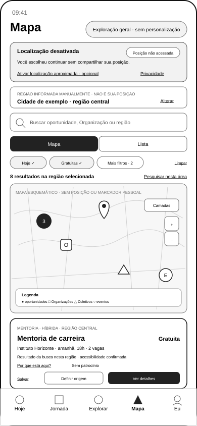
Arquivo vetorial:
docs/assets/wireframes/uxa-026-opportunity-map-location-disabled-mobile.svg
Dimensão de referência:
- canal: aplicativo móvel;
- largura: 390 pixels;
- altura: 844 pixels;
- estado: localização do dispositivo desativada, posição não acessada, região manual selecionada e exploração geral sem personalização.
4. Hierarquia funcional validada¶
nome da superfície e contexto de exploração
→ localização desativada e posição não acessada
→ região manual explicitamente distinta da posição pessoal
→ pesquisa
→ Mapa ou Lista
→ filtros e resultados da região
→ área territorial sem marcador ou posição presumida
→ legenda e controles
→ oportunidade geral selecionada
→ explicação, salvamento, origem manual e detalhe
→ navegação recorrente
A hierarquia mantém o aviso de privacidade antes dos resultados e torna a alternativa manual utilizável sem converter localização em requisito oculto.
5. Contexto e linguagem¶
Quando o gate de personalização não estiver atendido, a superfície deverá declarar:
Exploração geral · sem personalização
A interface não deverá utilizar expressões como:
para o seu momento;relacionada à sua transição;recomendada para você;perto de você;- qualquer afirmação de adequação pessoal.
A origem dos resultados deverá ser explicada por busca, região, categoria, período, fonte ou filtro explícito.
6. Localização desativada e confirmação do estado¶
O aviso reformulado declara:
Localização desativada
Posição não acessada
Você escolheu continuar sem compartilhar sua posição.
A confirmação explícita evita que a pessoa confunda ausência de marcador com coleta invisível ou inferência territorial.
A pessoa deverá poder:
- continuar sem localização;
- escolher ou alterar cidade ou região;
- ativar localização aproximada posteriormente;
- revisar privacidade antes de ativar;
- retirar uma permissão futura;
- utilizar origem manual para rota quando aplicável.
Ativar localização aproximada é uma ação opcional e secundária. A interface não deverá induzir consentimento por bloqueio, culpa, urgência, destaque desproporcional ou perda artificial de funcionalidade.
7. Região manual¶
A região selecionada manualmente deverá permanecer visível, editável e acompanhada da declaração:
Região informada manualmente · não é sua posição
A alteração de região não poderá apagar silenciosamente:
- busca;
- filtros compatíveis;
- modo Mapa ou Lista;
- item salvo;
- preferências não territoriais.
Filtros estritamente dependentes de distância pessoal deverão ser desativados, reinterpretados ou substituídos por filtros de área, cidade, bairro ou raio a partir de um ponto informado.
8. Mapa sem marcador pessoal¶
O mapa não deverá mostrar:
- ponto de localização da pessoa;
- círculo de precisão;
- posição aproximada presumida;
- histórico de deslocamento;
- residência inferida;
- indicação de que a pessoa está em determinada área.
A área territorial poderá ser centralizada na região informada manualmente e exibir somente oportunidades, Organizações, Coletivos, eventos, atividades, pontos de apoio e locais autorizados.
O wireframe reformulado declara:
Mapa esquemático · sem posição ou marcador pessoal
9. Relação com a Lista¶
Mapa e Lista continuam representando a mesma descoberta.
A alternância deverá preservar:
- região manual;
- busca;
- filtros;
- quantidade de resultados;
- item selecionado;
- explicação da origem dos resultados.
A Lista constitui alternativa integral quando o mapa não estiver disponível, não carregar ou não for adequado à acessibilidade da pessoa.
10. Resultados e filtros¶
A superfície deverá informar que os resultados correspondem à região escolhida e aos filtros aplicados.
Exemplo:
8 resultados na região selecionada
A distância pessoal não deverá ser exibida quando não houver origem válida. O cartão poderá apresentar:
- cidade, bairro ou área;
- modalidade presencial, online ou híbrida;
- data, horário ou prazo;
- preço ou gratuidade;
- disponibilidade;
- acessibilidade;
- responsável ou fonte;
- relação comercial.
11. Oportunidade selecionada¶
O cartão reformulado utiliza linguagem geral:
Resultado da busca nesta região
Ele demonstra diretamente:
Por que está aqui?;- relação comercial;
Salvar;Definir origem;Ver detalhes.
A ação Por que está aqui? poderá explicar:
- correspondência com a região manual;
- filtros aplicados;
- busca explícita;
- categoria selecionada;
- origem editorial ou institucional;
- relação comercial identificada.
Ela não deverá simular compreensão do Momento Atual.
12. Salvamento¶
O salvamento deverá permanecer disponível sem localização.
Salvar uma oportunidade não autoriza:
- ativar localização;
- inferir residência;
- registrar deslocamento;
- criar perfil territorial oculto;
- converter o item em recomendação pessoal.
O item salvo deverá preservar sua origem, região e condições conhecidas.
13. Rota sem localização¶
Sem origem disponível, a interface não deverá executar rota automaticamente.
O wireframe apresenta a ação:
Definir origem
As alternativas poderão incluir:
- informar endereço de partida;
- selecionar ponto conhecido;
- utilizar endereço salvo com autorização aplicável;
- ativar localização aproximada;
- copiar endereço, quando permitido;
- ver área aproximada, quando o endereço estiver protegido.
A escolha de origem não autoriza rastreamento contínuo nem retenção posterior. A rota não deverá contornar proteção de residência, endereço sensível ou condição de acesso.
14. Privacidade e autonomia¶
O estado preserva:
- exploração sem localização;
- exploração sem personalização;
- cidade ou região manual como alternativa real;
- confirmação de que a posição não foi acessada;
- ausência de marcador pessoal;
- ativação posterior consciente;
- continuidade pela Lista;
- salvamento sem consentimento territorial;
- origem manual para rota;
- proteção de endereços sensíveis;
- separação entre proximidade, relevância e publicidade.
15. Resultado da validação¶
A validação funcional especializada está registrada em UXA-027.
O estado é considerado funcionalmente válido após reformulação porque:
- comunica que o Mapa continua disponível sem localização;
- confirma que a posição não foi acessada;
- distingue região manual de posição pessoal;
- preserva busca, filtros, Mapa e Lista;
- remove marcador e distância pessoal presumida;
- utiliza linguagem geral sem personalização indevida;
- mantém ativação de localização como escolha opcional;
- demonstra salvamento;
- demonstra origem manual para rota;
- preserva continuidade para o Detalhe;
- não inicia design ou implementação.
16. Limites¶
Este incremento não:
- valida o estado com usuários reais;
- cria localização técnica ou geocodificação;
- define fornecedor de mapas;
- cria rotas;
- define cidades ou oportunidades reais;
- conclui acessibilidade;
- cria referência para computador;
- cria protótipo navegável;
- inicia design visual ou Engenharia de Produto.
17. Próximos atos governados¶
Após integração e nova autorização, poderão ocorrer separadamente:
- criar o estado alternativo em Lista;
- criar o estado sem resultados;
- criar referência do Mapa para computador;
- criar o wireframe gráfico do início protegido;
- criar a referência móvel da Home;
- validar a revisão da compreensão inicial;
- retomar independentemente os testes dos Resultados Empresariais.
Nenhum ato é iniciado automaticamente.
Validação Funcional Especializada e Reformulação do Estado do Mapa sem Localização¶
1. Finalidade¶
Este documento registra a validação funcional especializada do estado do Mapa de Oportunidades com a localização do dispositivo desativada e governa a reformulação da UXA-026.
A decisão permanece restrita à Arquitetura da Experiência. Ela não aprova fornecedor de mapas, localização técnica, geocodificação, rotas, design visual, protótipo navegável, teste de usabilidade ou desenvolvimento.
2. Decisão humana registrada¶
Em 27/07/2026, o Fundador autorizou a validação funcional especializada da UXA-026 após a integração do marco M7.27.
A validação examinou:
- compreensão de que o Mapa funciona sem localização;
- clareza da escolha manual de cidade ou região;
- distinção entre região manual e posição pessoal;
- confirmação de que a posição não foi acessada;
- preservação de busca, filtros e alternância Mapa ou Lista;
- ausência de marcador e distância pessoal presumida;
- linguagem geral sem personalização indevida;
- ativação opcional de localização aproximada;
- salvamento sem localização;
- definição manual de origem para rota;
- continuidade para Detalhe de Oportunidade;
- aderência à Fundação da Guivos.
3. Resultado da validação¶
O estado do Mapa com localização desativada é considerado funcionalmente válido após reformulação.
O wireframe inicial já estabelecia corretamente:
- exploração geral sem personalização;
- aviso de localização desativada;
- região escolhida manualmente;
- pesquisa e filtros preservados;
- Mapa e Lista sincronizados;
- área territorial sem marcador pessoal;
- resultados explicados por região e busca explícita;
- ativação opcional de localização aproximada.
Entretanto, quatro riscos exigiram correção antes do fechamento funcional:
- a ausência de marcador não confirmava de forma inequívoca que a posição não havia sido acessada;
- a região manual poderia ser interpretada como posição atual da pessoa;
- o salvamento estava previsto no contrato, mas não demonstrado no artefato;
- a origem manual para rota estava prevista, mas não aparecia no cartão selecionado.
4. Posição funcional preservada¶
A ordem vigente permanece:
Página Inicial pública
→ início protegido da jornada
→ compreensão inicial revisável
→ Tela Hoje
→ Hoje | Jornada | Explorar | Mapa | Eu
O estado sem localização não constitui uma nova etapa da jornada. Ele é uma condição operacional da superfície recorrente do Mapa.
5. Gate de alinhamento à Fundação¶
5.1 Essência¶
A superfície reduz barreiras de acesso sem transformar compartilhamento territorial em requisito de participação.
5.2 Propósito¶
A pessoa continua descobrindo possibilidades concretas no território por decisão própria, mesmo quando não deseja ou não consegue compartilhar localização.
5.3 Missão Operacional¶
A interface deverá permitir escolher região, compreender resultados, salvar itens, abrir detalhes e definir origem para rota sem coleta territorial invisível.
5.4 Visão de Longo Prazo¶
O contrato deverá funcionar em países, regiões e dispositivos com diferentes níveis de disponibilidade, precisão, conectividade e confiança em serviços de localização.
5.5 Constituição e Princípios Permanentes¶
A reformulação preserva:
- decisão final com a pessoa;
- localização como dado opcional e controlável;
- exploração sem personalização;
- transparência sobre o que foi e não foi acessado;
- alternativas manuais reais;
- proteção de residências e locais sensíveis;
- simplicidade estrutural;
- validade global;
- publicidade separada de relevância.
6. Hierarquia reformulada¶
A hierarquia funcional será:
Mapa e contexto de exploração
→ localização desativada
→ confirmação de posição não acessada
→ região manual distinta da posição pessoal
→ pesquisa
→ Mapa ou Lista
→ filtros e resultados
→ área territorial sem marcador pessoal
→ oportunidade selecionada
→ explicação, salvar, definir origem e ver detalhes
→ navegação recorrente
O aviso de privacidade deverá anteceder resultados e ações territoriais.
7. Confirmação de posição não acessada¶
O estado deverá declarar:
Posição não acessada
A declaração significa que, naquele estado:
- não foi obtida coordenada do dispositivo;
- não foi exibida posição aproximada;
- não foi inferida residência;
- não foi criado marcador pessoal;
- a região visível decorre de escolha manual.
A interface não deverá utilizar a declaração quando houver coleta territorial material ainda ativa.
8. Região manual¶
A região escolhida deverá ser acompanhada de formulação equivalente a:
Região informada manualmente · não é sua posição
A pessoa deverá poder alterar a região sem perder silenciosamente busca, filtros compatíveis, modo Mapa ou Lista, item salvo ou preferências não territoriais.
Filtros dependentes de distância pessoal não poderão permanecer ativos como se houvesse origem válida.
9. Busca, filtros, Mapa e Lista¶
A localização desativada não altera o contrato de descoberta única.
Mapa e Lista deverão preservar, quando aplicável:
- região manual;
- busca;
- filtros;
- quantidade de resultados;
- item selecionado;
- explicação da origem dos resultados.
A movimentação do mapa deverá exigir ação consciente para consultar a nova área. Ela não deverá redefinir silenciosamente a região manual permanente.
10. Linguagem geral e gate de personalização¶
Sem gate de personalização atendido, a superfície deverá utilizar:
Exploração geral · sem personalização
Resultados poderão ser explicados por:
- região manual;
- busca explícita;
- filtros;
- categoria;
- período;
- fonte editorial ou institucional;
- relação comercial identificada.
A superfície não poderá afirmar adequação ao Momento Atual, proximidade pessoal ou recomendação individual.
11. Área territorial sem marcador pessoal¶
O mapa não deverá mostrar:
- ponto de localização da pessoa;
- círculo de precisão;
- posição aproximada presumida;
- residência inferida;
- histórico de deslocamento;
- indicação de presença atual na região selecionada.
A representação territorial poderá mostrar apenas itens e áreas autorizados.
12. Oportunidade selecionada¶
O cartão deverá oferecer contexto suficiente antes do detalhe e demonstrar:
- tipo e modalidade;
- título;
- responsável ou fonte;
- cidade, bairro ou região;
- data ou prazo;
- preço ou gratuidade;
- disponibilidade;
- acessibilidade;
- explicação da origem;
- relação comercial;
- salvamento;
- definição de origem;
- acesso ao detalhe.
A distância pessoal deverá ser omitida sem origem válida.
13. Salvamento sem localização¶
Salvar um item deverá continuar disponível sem localização.
O salvamento não autoriza:
- ativação de localização;
- inferência de residência;
- criação de histórico territorial;
- personalização não autorizada;
- rastreamento futuro.
A origem, região e condições conhecidas do item deverão permanecer rastreáveis.
14. Origem manual e rota¶
Sem origem válida, a rota não poderá iniciar automaticamente.
A ação reformulada será:
Definir origem
A pessoa poderá informar endereço, selecionar ponto conhecido, utilizar endereço salvo com autorização compatível ou ativar localização aproximada conscientemente.
A escolha de origem deverá ser separada da autorização para retenção, histórico ou rastreamento contínuo.
Endereço protegido continuará oferecendo somente área aproximada ou condição de liberação aplicável.
15. Ativação opcional de localização¶
A ação deverá indicar explicitamente sua natureza opcional.
A ativação não poderá ser apresentada como necessária para:
- pesquisar;
- utilizar Mapa ou Lista;
- abrir detalhes;
- salvar oportunidades;
- escolher região;
- compreender resultados.
Antes da ativação, a pessoa deverá poder revisar finalidade, precisão, duração, encerramento e retirada da permissão.
16. Estados e transições validados¶
| Estado ou transição | Decisão funcional |
|---|---|
| nunca concedeu localização | manter exploração manual integral |
| permissão recusada | não bloquear funções essenciais |
| permissão retirada | interromper uso futuro e manter região manual |
| dispositivo sem localização | oferecer região manual e Lista |
| alteração de região | preservar busca e filtros compatíveis |
| alternância Mapa ou Lista | preservar região e item selecionado |
| salvar item | não ativar localização nem personalização |
| definir origem | solicitar origem específica sem rastreamento contínuo |
| ativar localização aproximada | explicar finalidade e manter ação opcional |
| endereço protegido | impedir rota e mostrar somente área permitida |
| mapa indisponível | oferecer Lista com o mesmo contexto |
17. Reformulação aplicada ao wireframe¶
A UXA-026 reformulada demonstra:
Exploração geral · sem personalização;Localização desativada;Posição não acessada;- região informada manualmente e distinta da posição pessoal;
- pesquisa e filtros preservados;
- Mapa e Lista sincronizados;
- mapa sem posição ou marcador pessoal;
- resultado explicado pela região;
- relação comercial;
Salvar;Definir origem;Ver detalhes;- ativação opcional de localização aproximada.
18. Resultado final¶
Após a reformulação, o estado atende ao contrato funcional porque:
- permanece utilizável sem localização;
- torna explícito o que não foi acessado;
- evita confundir região manual com posição pessoal;
- mantém descoberta e continuidade;
- não utiliza linguagem personalizada sem gate;
- oferece salvamento independente de localização;
- trata rota como ação dependente de origem específica;
- mantém ativação territorial opcional;
- protege endereços sensíveis;
- não inicia design ou implementação.
19. Limites¶
Esta validação não:
- aprova textos finais de interface;
- define tecnologia ou fornecedor de mapas;
- cria coordenadas, geocodificação ou rotas;
- conclui acessibilidade técnica;
- cria versão para computador;
- cria protótipo navegável;
- executa teste de usabilidade;
- inicia Engenharia de Produto.
20. Próximos atos governados¶
Após integração e nova autorização, poderão ocorrer separadamente:
- criar o estado alternativo em Lista;
- criar o estado sem resultados;
- criar referência do Mapa para computador;
- criar o wireframe gráfico do início protegido da jornada;
- criar a referência móvel da Página Inicial pública;
- validar a revisão da compreensão inicial;
- validar a transição para a primeira Tela Hoje;
- retomar independentemente os testes dos Resultados Empresariais.
Nenhum ato é iniciado automaticamente.
Wireframe Alternativo do Mapa de Oportunidades — Visualização em Lista¶
1. Finalidade¶
Este documento materializa a visualização em Lista da mesma descoberta territorial governada pelo Mapa de Oportunidades.
A versão 0.2.0 incorpora a reformulação governada pela UXA-029 — Validação Funcional Especializada e Reformulação da Visualização em Lista do Mapa.
A Lista não é uma superfície inferior, uma mensagem de erro ou uma duplicação de Explorar. Ela é uma representação textual integral da consulta territorial ativa e preserva o contexto ao alternar entre Mapa e Lista.
O wireframe demonstra o estado com localização desativada, posição não acessada e região escolhida manualmente. A Lista também poderá operar quando houver localização aproximada ou exata temporária autorizada, respeitando os controles aplicáveis.
O artefato não representa design visual, tecnologia, dados reais, algoritmo de ordenação, implementação ou teste com usuários.
2. Posição na experiência¶
A Lista permanece dentro da superfície recorrente do Mapa:
Hoje | Jornada | Explorar | Mapa | Eu
O item Mapa continua selecionado na navegação principal. A alternância interna ocorre entre:
Mapa ↔ Lista
A Lista poderá ser escolhida pela pessoa ou apresentada como continuidade quando:
- a pessoa preferir leitura textual;
- o mapa não estiver disponível;
- houver baixa conectividade;
- recursos cartográficos apresentarem falha;
- o uso do mapa não for adequado à acessibilidade;
- a comparação entre oportunidades for mais útil em cartões;
- a localização estiver desativada;
- a região tiver sido informada manualmente.
3. Diferença entre Explorar e Lista do Mapa¶
Explorar organiza descoberta ampla por busca, categorias, temas, listas editoriais e filtros gerais.
A Lista do Mapa representa a mesma consulta territorial já aberta na superfície Mapa.
O wireframe reformulado declara:
LISTA TERRITORIAL DO MAPA · MESMA CONSULTA
A Lista preserva:
- região ou área territorial ativa;
- busca;
- filtros;
- quantidade de resultados;
- ordenação;
- item selecionado;
- explicação de origem;
- condições conhecidas;
- retorno ao Mapa.
Mudar para a Lista não transporta a pessoa silenciosamente para Explorar nem reinicia a consulta.
4. Artefato visual reformulado¶
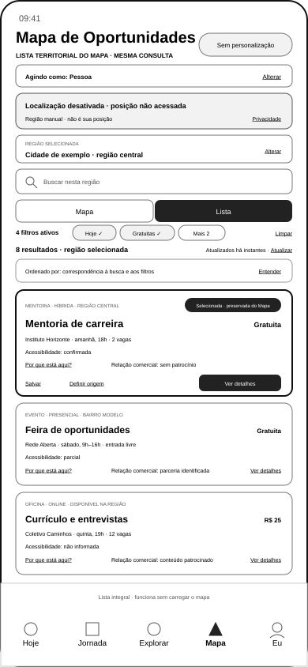
Arquivo vetorial:
docs/assets/wireframes/uxa-028-opportunity-map-list-mobile.svg
Dimensão de referência:
- canal: aplicativo móvel;
- largura: 390 pixels;
- altura: 844 pixels;
- modo: Lista selecionada dentro da superfície Mapa;
- condição ilustrada: localização desativada, posição não acessada e região manual;
- resultado: funcionalmente válido após reformulação registrada em UXA-029.
5. Hierarquia funcional validada¶
nome da superfície
→ declaração de Lista territorial do Mapa
→ contexto Agindo como
→ estado territorial e privacidade
→ região ativa e editável
→ pesquisa territorial
→ alternância Mapa ou Lista
→ total e identificação dos filtros ativos
→ quantidade e atualização dos resultados
→ ordenação explícita e explicável
→ cartões comparáveis
→ oportunidade selecionada preservada
→ explicação, relação comercial, salvamento e detalhe
→ retorno ao Mapa sem perda de contexto
→ Lista integral sem dependência do mapa carregado
→ navegação recorrente
A Lista prioriza compreensão, comparação e continuidade, sem esconder por que os resultados aparecem.
6. Contexto Agindo como¶
O contexto consolidado deverá permanecer visível:
Agindo como: Pessoa
Quando outros contextos forem permitidos, a pessoa deverá poder revisar e alterar a atuação de forma consciente.
Trocar o modo Mapa ou Lista não altera o contexto de atuação.
7. Contexto territorial¶
Quando a localização estiver desativada, a Lista preservará as declarações:
Localização desativada · posição não acessada
Região manual · não é sua posição
A região permanecerá visível e editável antes dos resultados.
Quando localização estiver autorizada, a interface indicará precisão, finalidade e duração aplicáveis, sem tornar rastreamento contínuo requisito da Lista.
8. Pesquisa, filtros e atualização¶
A Lista preserva a mesma busca e os mesmos filtros compatíveis do Mapa.
O campo de pesquisa reformulado declara:
Buscar nesta região
A superfície mostra:
- termos pesquisados;
- total consolidado de filtros ativos;
- filtros identificáveis sem depender somente de cor;
- quantidade de filtros adicionais;
- ação para limpar filtros;
- quantidade de resultados;
- região à qual os resultados correspondem;
- momento da última atualização;
- ação para atualizar resultados.
O exemplo declara:
4 filtros ativos
A troca de modo não apaga silenciosamente busca, filtros ou região.
9. Quantidade e ordenação¶
A quantidade de resultados permanece consistente entre Mapa e Lista para a mesma consulta e momento de atualização.
A ordenação é explícita, revisável e acompanhada de ação explicativa:
Ordenado por: correspondência à busca e aos filtros
Entender
A explicação deverá informar os critérios aplicados e as limitações conhecidas.
A ordenação poderá considerar:
- correspondência com busca e filtros;
- data ou prazo;
- disponibilidade;
- modalidade;
- acessibilidade;
- preço ou gratuidade;
- distância de uma origem válida, quando aplicável;
- critérios editoriais ou institucionais declarados.
Sem gate de personalização, a ordenação não poderá ser apresentada como melhor para você, ideal para seu momento ou equivalente.
Patrocínio não poderá elevar relevância funcional de forma oculta. Relação comercial será informada separadamente.
10. Cartões comparáveis¶
Cada cartão apresenta uma estrutura mínima consistente:
- tipo de oportunidade;
- modalidade;
- cidade, bairro, região ou disponibilidade online;
- título;
- responsável ou fonte;
- data, horário ou prazo;
- preço ou gratuidade;
- vagas ou disponibilidade;
- acessibilidade conhecida;
- origem do resultado;
- relação comercial;
- ações disponíveis.
A ausência de informação é declarada como não informada, não confirmada ou indisponível, sem completar dados por inferência.
O wireframe reformulado demonstra:
Acessibilidade: confirmada;Acessibilidade: parcial;Acessibilidade: não informada.
11. Oportunidade selecionada¶
A oportunidade selecionada no Mapa permanece identificada ao abrir a Lista.
O wireframe reformulado declara:
Selecionada · preservada do Mapa
A seleção poderá ser demonstrada por:
- borda estrutural;
- rótulo textual;
- posição inicial na Lista, quando compatível com a ordenação;
- foco acessível;
- retorno ao mesmo cartão após fechar o Detalhe.
A seleção não altera relevância, não implica recomendação e não modifica a ordenação sem regra explícita.
12. Explicação e relação comercial¶
Cada oportunidade oferece Por que está aqui? ou explicação equivalente.
A explicação poderá incluir:
- correspondência com a região ativa;
- busca explícita;
- filtros aplicados;
- categoria ou modalidade;
- data e disponibilidade;
- origem editorial, institucional ou organizacional;
- critério de ordenação.
Ela não simula conhecimento do Momento Atual quando o gate não estiver atendido.
A relação comercial é apresentada em campo separado, com exemplos:
Relação comercial: sem patrocínio;Relação comercial: parceria identificada;Relação comercial: conteúdo patrocinado.
A presença de relação comercial não modifica silenciosamente a posição do cartão.
13. Salvamento e Detalhe¶
Salvar permanece disponível na Lista independentemente de localização.
O salvamento não autoriza:
- ativar localização;
- personalizar recomendações;
- registrar deslocamento;
- criar histórico territorial;
- contornar preferências de privacidade.
Ver detalhes abre o Detalhe de Oportunidade preservando:
- origem da navegação;
- região ativa;
- busca e filtros;
- ordenação;
- posição da Lista;
- item selecionado;
- condições conhecidas.
Ao retornar, a pessoa reencontra o mesmo contexto.
14. Origem para rota¶
Quando a localização estiver desativada, a Lista poderá apresentar Definir origem.
A ação solicita origem específica e não inicia rastreamento contínuo, histórico territorial ou presunção de residência.
Endereços protegidos permanecem limitados à área permitida ou à condição de liberação aplicável.
15. Retorno ao Mapa¶
Ao retornar ao Mapa, permanecem:
- região ou área territorial;
- busca;
- filtros;
- ordenação compatível;
- quantidade de resultados;
- item selecionado;
- posição ou foco correspondente, quando possível;
- explicação da origem dos resultados.
A troca não executa nova personalização, não altera consentimento e não redefine localização.
16. Acessibilidade e resiliência¶
A Lista constitui alternativa integral para:
- leitores de tela;
- navegação por teclado ou controles assistivos;
- pessoas que preferem conteúdo textual;
- baixa conectividade;
- indisponibilidade do fornecedor cartográfico;
- falha de carregamento do mapa;
- dispositivos com desempenho limitado.
O wireframe reformulado declara:
Lista integral · funciona sem carregar o mapa
A Lista não depende de mapa carregado para apresentar oportunidades já disponíveis na consulta.
Estados de carregamento, atualização, ausência de resultados e erro de fonte serão textuais e recuperáveis.
17. Privacidade e autonomia¶
A Lista preserva:
- localização opcional;
- posição não acessada quando verdadeiro;
- região manual distinta da posição pessoal;
- exploração sem personalização;
- explicação de critérios;
- comparação sem pressão comercial;
- salvamento sem consentimento territorial;
- retorno ao Mapa sem alteração silenciosa;
- proteção de endereços sensíveis;
- separação entre proximidade, relevância e publicidade.
18. Resultado da validação¶
A validação funcional especializada está registrada em UXA-029.
A visualização em Lista é considerada funcionalmente válida após reformulação porque:
- identifica que pertence ao Mapa e representa a mesma consulta;
- distingue-se visualmente de
Explorar; - preserva contexto
Agindo como; - mantém região, busca, filtros, quantidade e seleção;
- explicita o total de filtros ativos;
- torna atualização e ordenação compreensíveis;
- padroniza campos comparáveis;
- declara dados ausentes sem inferência;
- separa explicação funcional de relação comercial;
- mantém salvamento e Detalhe sem localização;
- retorna ao Mapa sem perda de contexto;
- funciona sem dependência do mapa carregado;
- não inicia design ou implementação.
19. Limites¶
Este incremento não:
- valida a Lista com usuários reais;
- define algoritmo de busca ou ordenação;
- cria dados de produção;
- conclui acessibilidade técnica;
- define tecnologia cartográfica;
- cria geocodificação ou rotas;
- cria referência para computador;
- cria protótipo navegável;
- inicia design visual;
- inicia Engenharia de Produto.
20. Próximos atos governados¶
Após integração e nova autorização, poderão ocorrer separadamente:
- criar o estado sem resultados;
- criar referência do Mapa para computador;
- criar o wireframe gráfico do início protegido da jornada;
- criar a referência móvel da Página Inicial pública;
- validar a revisão da compreensão inicial;
- validar a transição para a primeira Tela Hoje;
- retomar independentemente os testes dos Resultados Empresariais.
Nenhum ato é iniciado automaticamente.
Validação Funcional Especializada e Reformulação da Visualização em Lista do Mapa¶
1. Finalidade¶
Este documento registra a validação funcional especializada da visualização em Lista do Mapa de Oportunidades e governa a reformulação da UXA-028.
A decisão permanece restrita à Arquitetura da Experiência. Ela não aprova algoritmo de ordenação, tecnologia cartográfica, geocodificação, rotas, design visual, protótipo navegável, acessibilidade técnica, teste de usabilidade ou desenvolvimento.
2. Decisão humana registrada¶
Em 27/07/2026, o Fundador autorizou a validação funcional especializada da UXA-028 após a integração do marco M7.29.
A validação examinou:
- clareza de que Mapa e Lista representam a mesma consulta;
- diferença entre Lista territorial do Mapa e
Explorar; - preservação de contexto
Agindo como; - preservação de região, busca, filtros, quantidade e ordenação;
- manutenção da oportunidade selecionada;
- comparação suficiente entre cartões;
- separação entre explicação funcional e relação comercial;
- salvamento e acesso ao Detalhe sem localização;
- retorno ao Mapa sem perda de contexto;
- funcionamento como alternativa integral para acessibilidade, baixa conectividade e falha cartográfica;
- aderência à Fundação da Guivos.
3. Resultado da validação¶
A visualização em Lista do Mapa é considerada funcionalmente válida após reformulação.
O wireframe inicial já estabelecia corretamente:
- Lista como modo interno da superfície
Mapa; - alternância
Mapa ↔ Lista; - localização desativada e posição não acessada;
- região manual;
- busca e filtros preservados;
- quantidade de resultados;
- ordenação explícita;
- oportunidade selecionada;
- salvamento, origem e Detalhe;
- retorno ao Mapa sem perda de contexto;
- Lista como alternativa integral.
Entretanto, cinco riscos exigiram correção antes do fechamento funcional:
- o contexto
Agindo comonão aparecia no wireframe da Lista; - a diferença para
Explorardependia somente da navegação e não era declarada na superfície; Mais filtros · 2não esclarecia o total consolidado de filtros ativos;- a ordenação era declarada, mas não possuía ação de explicação acessível;
- os cartões secundários não apresentavam campos ausentes, explicação e relação comercial com consistência comparável.
4. Posição funcional preservada¶
A ordem vigente permanece:
Página Inicial pública
→ início protegido da jornada
→ compreensão inicial revisável
→ Tela Hoje
→ Hoje | Jornada | Explorar | Mapa | Eu
A Lista não constitui nova etapa da jornada. Ela é um modo interno da superfície recorrente do Mapa.
O item Mapa permanece selecionado na navegação principal.
5. Gate de alinhamento à Fundação¶
5.1 Essência¶
A reformulação reduz ambiguidade e amplia a capacidade de compreender, comparar e decidir conscientemente.
5.2 Propósito¶
A Lista mantém oportunidades acessíveis sem exigir leitura cartográfica, localização do dispositivo ou personalização.
5.3 Missão Operacional¶
Busca, filtros, condições, relações comerciais, incertezas e transições permanecem verificáveis e controláveis.
5.4 Visão de Longo Prazo¶
A mesma consulta poderá evoluir para múltiplos canais sem criar experiências contraditórias ou dependentes de um fornecedor cartográfico.
5.5 Constituição e Princípios Permanentes¶
São preservados:
- autonomia;
- dignidade;
- privacidade;
- transparência;
- explicabilidade;
- não manipulação;
- acessibilidade como alternativa real;
- separação entre relevância e interesse comercial.
Nenhuma falha material à Fundação foi identificada após a reformulação.
6. Natureza da Lista validada¶
A Lista é uma representação textual integral da mesma consulta territorial do Mapa.
Ela não é:
- uma duplicação de
Explorar; - um erro do mapa;
- uma versão reduzida;
- uma tela de contingência sem paridade;
- uma nova origem de personalização.
A superfície reformulada declara:
LISTA TERRITORIAL DO MAPA · MESMA CONSULTA
7. Contexto Agindo como¶
O contexto consolidado passa a ser demonstrado:
Agindo como: Pessoa
A alternância entre Mapa e Lista não poderá alterar silenciosamente:
- pessoa, Organização ou Coletivo em atuação;
- permissões aplicáveis;
- origem da consulta;
- regras de apresentação.
A ação Alterar deverá permitir revisão consciente do contexto quando outros papéis estiverem disponíveis.
8. Diferença validada entre Lista e Explorar¶
Explorar continua organizando descoberta ampla por temas, categorias, busca, listas editoriais e filtros gerais.
A Lista do Mapa mantém a consulta territorial ativa.
A diferença deverá ser compreensível por:
- título e subtítulo da superfície;
- item
Mapaselecionado; - alternância interna
Mapa ↔ Lista; - região territorial visível;
- preservação da consulta;
- retorno ao Mapa.
A pessoa não poderá ser redirecionada silenciosamente para Explorar ao selecionar Lista.
9. Estado territorial e privacidade¶
O exemplo permanece com:
Localização desativada · posição não acessada
Região manual · não é sua posição
A Lista continua funcional sem localização do dispositivo.
Localização aproximada ou exata temporária, quando autorizada, deverá manter finalidade, precisão, duração e retirada compreensíveis.
A alternância de modo não cria nova autorização territorial.
10. Pesquisa e região¶
A pesquisa reformulada declara:
Buscar nesta região
A linguagem evita confundir busca territorial com troca automática de região.
A alteração de região deverá preservar filtros compatíveis e tornar incompatibilidades visíveis antes de remover condições.
11. Filtros ativos¶
O estado inicial apresentava filtros individuais e Mais filtros · 2, mas não consolidava o total.
A reformulação declara:
4 filtros ativos
O total deverá corresponder aos filtros efetivamente aplicados, incluindo filtros ocultos em agrupamentos.
A pessoa poderá:
- revisar filtros;
- remover filtros individualmente;
- limpar todos;
- entender quais filtros deixaram de ser compatíveis após mudança territorial;
- retornar ao Mapa com o mesmo conjunto aplicável.
12. Quantidade, atualização e consistência¶
A quantidade de resultados deverá ser consistente entre Mapa e Lista para a mesma consulta e versão de dados.
A superfície reformulada demonstra:
8 resultados · região selecionada
Atualizados há instantes · Atualizar
Quando houver diferença temporária entre modos, a interface deverá explicar atualização, carregamento, indisponibilidade ou alteração de fonte.
13. Ordenação explicável¶
A ordenação inicial era visível, mas não oferecia explicação direta.
A reformulação declara:
Ordenado por: correspondência à busca e aos filtros
Entender
A explicação deverá informar:
- critérios utilizados;
- critérios não utilizados;
- ausência ou presença de personalização;
- influência de data, disponibilidade ou distância;
- limitações e dados ausentes;
- separação entre ordenação funcional e patrocínio.
Sem gate, a ordenação não poderá afirmar adequação ao Momento Atual.
14. Comparação entre cartões¶
Os cartões passam a demonstrar uma estrutura mínima consistente:
- tipo;
- modalidade;
- região ou disponibilidade online;
- título;
- responsável;
- data ou prazo;
- preço;
- disponibilidade;
- acessibilidade;
- explicação;
- relação comercial;
- ações.
A ausência de dados deverá ser explícita.
O wireframe demonstra:
Acessibilidade: confirmada;Acessibilidade: parcial;Acessibilidade: não informada.
Não informada não significa ausência de acessibilidade. Significa somente que a informação não foi fornecida ou confirmada.
15. Oportunidade selecionada¶
A seleção passa a declarar:
Selecionada · preservada do Mapa
A identificação textual reduz dependência exclusiva de borda, cor ou posição.
Ao alternar modos ou retornar do Detalhe, a pessoa deverá reencontrar o item, sua posição aproximada e o contexto aplicável.
A seleção não altera relevância nem ordenação.
16. Explicação funcional e relação comercial¶
Todos os cartões deverão oferecer explicação equivalente a Por que está aqui?.
A relação comercial será apresentada separadamente:
Relação comercial: sem patrocínio;Relação comercial: parceria identificada;Relação comercial: conteúdo patrocinado.
Conteúdo patrocinado não poderá receber posição superior por regra oculta.
Quando patrocínio influenciar uma área publicitária separada, essa natureza deverá ser identificada e não confundida com relevância funcional.
17. Salvamento e Detalhe sem localização¶
Salvar e abrir detalhes permanecem disponíveis quando a localização estiver desativada.
Salvar não autoriza:
- localização;
- rastreamento;
- personalização;
- retenção territorial;
- inferência de residência.
O Detalhe preservará região, busca, filtros, ordenação, posição e seleção.
18. Origem para rota¶
Definir origem permanece ação específica e separada.
A origem poderá ser informada sem ativar rastreamento contínuo ou histórico territorial.
Endereço protegido não poderá ser revelado ou contornado pela Lista.
19. Retorno ao Mapa¶
Mapa e Lista preservam, quando aplicável:
- contexto
Agindo como; - região;
- busca;
- filtros;
- quantidade;
- ordenação compatível;
- item selecionado;
- posição ou foco correspondente;
- explicação da origem.
A troca de modo não altera consentimento, localização ou personalização.
20. Acessibilidade e resiliência¶
A reformulação declara:
Lista integral · funciona sem carregar o mapa
A Lista não poderá depender de renderização cartográfica para apresentar dados já disponíveis.
Ela constitui alternativa integral para:
- leitores de tela;
- controles assistivos;
- preferência por conteúdo textual;
- baixa conectividade;
- falha do mapa;
- indisponibilidade do fornecedor;
- dispositivos com desempenho limitado.
Esta decisão é funcional. A conformidade técnica de acessibilidade permanece posterior.
21. Estados e transições validados¶
| Estado ou transição | Decisão funcional |
|---|---|
| abrir Lista pelo Mapa | preservar consulta e seleção |
| abrir Lista sem localização | manter região manual e posição não acessada |
| alternar para Mapa | preservar contexto e permissões |
| alterar região | preservar filtros compatíveis e explicar incompatibilidades |
| alterar ordenação | manter critérios compreensíveis e revisáveis |
| dado ausente | declarar ausência sem inferência |
| mapa indisponível | manter Lista integral |
| baixa conectividade | priorizar conteúdo textual recuperável |
| abrir Detalhe | preservar origem e posição da Lista |
| retornar do Detalhe | reencontrar item e contexto |
| salvar | não ativar localização ou personalização |
| conteúdo patrocinado | identificar relação comercial separadamente |
22. Reformulação aplicada ao wireframe¶
A UXA-028 reformulada demonstra:
Mapa de Oportunidades;LISTA TERRITORIAL DO MAPA · MESMA CONSULTA;Agindo como: Pessoa;- exploração sem personalização;
- localização desativada e posição não acessada;
- região manual distinta da posição;
Buscar nesta região;4 filtros ativos;- quantidade e atualização dos resultados;
- ordenação explicável;
- cartões com campos consistentes;
- dados ausentes declarados;
- item selecionado preservado;
- explicação funcional em todos os cartões;
- relação comercial separada;
- salvamento, origem e Detalhe;
- Lista integral sem mapa carregado;
- item
Mapapreservado na navegação.
23. Resultado final¶
Após a reformulação, a Lista atende ao contrato funcional porque:
- pertence claramente ao Mapa;
- não duplica
Explorar; - preserva contexto e consulta;
- permite comparação consistente;
- torna filtros e ordenação compreensíveis;
- explicita incertezas;
- separa relevância e publicidade;
- funciona sem localização;
- funciona sem mapa carregado;
- mantém continuidade para Detalhe e retorno;
- não inicia design ou implementação.
24. Limites¶
Esta validação não:
- aprova textos finais de interface;
- define algoritmo de busca ou ordenação;
- define tecnologia ou fornecedor de mapas;
- cria coordenadas, geocodificação ou rotas;
- conclui acessibilidade técnica;
- cria versão para computador;
- cria protótipo navegável;
- executa teste de usabilidade;
- inicia Engenharia de Produto.
25. Próximos atos governados¶
Após integração e nova autorização, poderão ocorrer separadamente:
- criar o estado sem resultados;
- criar referência do Mapa para computador;
- criar o wireframe gráfico do início protegido da jornada;
- criar a referência móvel da Página Inicial pública;
- validar a revisão da compreensão inicial;
- validar a transição para a primeira Tela Hoje;
- retomar independentemente os testes dos Resultados Empresariais.
Nenhum ato é iniciado automaticamente.
Wireframe Alternativo do Mapa de Oportunidades — Estado sem Resultados¶
1. Finalidade¶
Este documento materializa o estado em que uma consulta territorial válida é concluída sem encontrar oportunidades correspondentes à região, busca e filtros vigentes.
A versão 0.2.0 incorpora a reformulação governada pela UXA-031 — Validação Funcional Especializada e Reformulação do Estado do Mapa sem Resultados.
O estado não deverá ser utilizado como mensagem genérica para falha de fonte, indisponibilidade temporária, carregamento incompleto ou baixa conectividade. Ausência legítima de correspondências e incapacidade de consultar dados são condições diferentes.
O artefato preserva a consulta da pessoa, explica o que ocorreu e oferece caminhos explícitos de recuperação sem preencher artificialmente o Mapa, apagar filtros ou ativar personalização.
Este documento não representa design visual, tecnologia cartográfica, dados reais, implementação ou teste com usuários.
2. Posição na experiência¶
O estado permanece dentro da superfície recorrente do Mapa:
Hoje | Jornada | Explorar | Mapa | Eu
O item Mapa continua selecionado. A alternância interna permanece disponível:
Mapa ↔ Lista
Mapa e Lista deverão apresentar o mesmo estado sem resultados para a mesma consulta e atualização.
3. Condição de entrada no estado¶
A mensagem de ausência legítima somente poderá aparecer quando:
- a consulta tiver sido executada;
- a região estiver definida;
- busca e filtros vigentes forem conhecidos;
- as fontes previstas tiverem respondido ou sua cobertura aplicável estiver declarada;
- não houver falha ativa capaz de explicar o resultado vazio;
- não houver carregamento pendente material;
- o total correspondente for realmente zero naquele momento de atualização.
A interface reformulada deverá indicar:
0 resultados correspondem a esta consulta
Consulta concluída · cobertura verificada · atualizada agora
E oferecer:
Ver cobertura
A declaração não significa que não existam oportunidades em toda a cidade, no futuro, em outras categorias ou fora das fontes consultadas.
4. Artefato visual¶
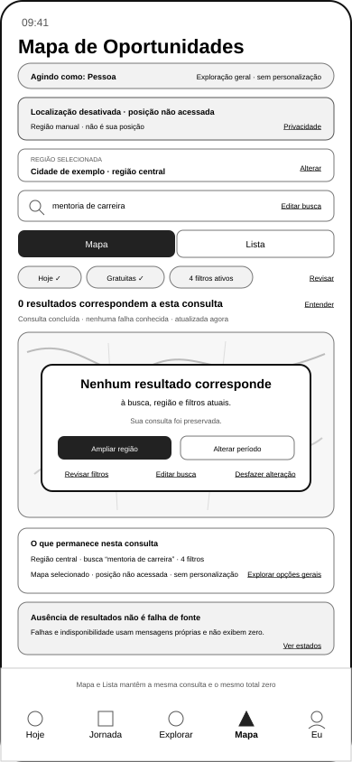
Arquivo vetorial:
docs/assets/wireframes/uxa-030-opportunity-map-no-results-mobile.svg
Dimensão de referência:
- canal: aplicativo móvel;
- largura: 390 pixels;
- altura: 844 pixels;
- modo: Mapa selecionado;
- condição ilustrada: localização desativada, posição não acessada, região manual e consulta concluída com zero correspondências.
5. Hierarquia funcional¶
nome da superfície e contexto de atuação
→ estado territorial e privacidade
→ região ativa e editável
→ pesquisa preservada
→ alternância Mapa ou Lista
→ filtros ativos e total consolidado
→ quantidade zero, cobertura e atualização
→ explicação da ausência de correspondências
→ ações explícitas de recuperação
→ revisão antes de aplicar mudanças
→ última alteração reversível, quando existente
→ seleção anterior, quando existente
→ disponibilidade dos dados
→ navegação recorrente
A ausência de marcadores no campo territorial não poderá ser o único sinal do estado.
6. Contexto preservado¶
O estado deverá manter visíveis:
Agindo como;- modalidade geral ou personalizada aplicável;
- região ou área territorial ativa;
- origem da região, como manual ou localização autorizada;
- texto pesquisado;
- filtros ativos;
- total consolidado de filtros;
- modo
MapaouLista; - momento da última atualização;
- cobertura ou limitação conhecida da consulta.
Nenhum desses elementos poderá ser apagado somente porque o total chegou a zero.
7. Mensagem principal¶
A mensagem deverá informar de forma direta:
Nenhum resultado corresponde à busca, região e filtros atuais.
Sua consulta permanece intacta.
Ela deverá evitar formulações absolutas como:
Não existem oportunidades;Não há nada nesta cidade;Você não tem opções;Nada é adequado para você;Não encontramos o que você precisa.
O sistema conhece apenas o resultado da consulta executada, não a totalidade de possibilidades existentes nem as necessidades da pessoa.
8. Cobertura e atualização¶
A pessoa deverá poder abrir Ver cobertura para verificar, quando material:
- fontes previstas;
- fontes que responderam;
- fontes não aplicáveis;
- fontes indisponíveis;
- categorias consultadas;
- região e período;
- horário da atualização;
- limitações conhecidas.
Cobertura verificada somente poderá aparecer quando houver evidência correspondente. Cobertura parcial, falha de fonte, carregamento e indisponibilidade deverão utilizar mensagens próprias.
9. Ações de recuperação¶
A interface deverá oferecer ações conscientes e independentes:
Ampliar região;Alterar período;Revisar filtros;Editar busca;Explorar sem alterar esta consulta.
A superfície reformulada declara:
Você revisará cada mudança antes de aplicar.
Cada ação deverá apresentar antes da confirmação:
- dimensão alterada;
- valor atual;
- valor proposto;
- dimensões preservadas;
- ação
Aplicar; - ação
Cancelar.
A superfície não poderá:
- remover filtros automaticamente;
- ampliar a região sem confirmação;
- substituir a busca por termos semelhantes sem aviso;
- mudar período, modalidade ou preço silenciosamente;
- ativar localização;
- inserir resultados patrocinados para evitar a tela vazia;
- iniciar personalização para preencher o estado.
10. Preservação e reversibilidade¶
Quando uma ação de recuperação alterar a consulta, a pessoa deverá poder reconhecer:
- qual dimensão mudou;
- quais dimensões permaneceram;
- o novo total de resultados;
- se a atualização foi concluída;
- como desfazer a última mudança quando tecnicamente possível.
Desfazer somente deverá aparecer quando existir alteração anterior identificável e reversível.
O wireframe reformulado demonstra:
Última alteração: filtro “Hoje” aplicado
Desfazer
Limpar filtros deverá ser uma decisão explícita e não deverá apagar região ou busca.
Ampliar região não deverá transformar região manual em posição pessoal nem autorizar rastreamento.
11. Mapa e Lista¶
O estado deverá ser equivalente nos dois modos.
Ao alternar entre Mapa e Lista, deverão permanecer:
- região;
- busca;
- filtros;
- total zero;
- cobertura;
- momento da atualização;
- diagnóstico da consulta;
- ações de recuperação;
- contexto
Agindo como; - estado de localização;
- última alteração reversível, quando existente;
- seleção anterior, quando existente.
A Lista deverá funcionar integralmente sem mapa carregado.
O Mapa deverá apresentar informação textual suficiente para leitores de tela e pessoas que não interpretem o campo cartográfico.
12. Estado territorial¶
Quando a localização estiver desativada, deverão permanecer as declarações:
Localização desativada · posição não acessada
Região informada manualmente · não é sua posição
A ausência de resultados não constitui justificativa para solicitar localização de forma bloqueante, insistente ou coerciva.
A pessoa poderá ampliar ou trocar a região manualmente sem compartilhar a posição do dispositivo.
13. Personalização e linguagem¶
Sem o gate de personalização atendido, o estado deverá utilizar linguagem geral baseada somente em:
- região escolhida;
- busca explícita;
- filtros aplicados;
- período;
- fontes e cobertura declaradas.
Não deverá afirmar que uma oportunidade seria melhor, ideal ou adequada ao Momento Atual da pessoa.
Mesmo após o gate, a ausência de resultados deverá ser explicada pela consulta, sem transformar inferências pessoais em certeza.
Explorar sem alterar esta consulta poderá abrir descoberta geral separada, preservando a consulta territorial para retorno.
14. Distinção entre estados¶
| Condição | Mensagem funcional | Comportamento |
|---|---|---|
| consulta concluída com zero correspondências | 0 resultados correspondem a esta consulta |
preservar contexto, declarar cobertura e oferecer ajustes explícitos |
| falha de uma ou mais fontes materiais | Não foi possível verificar todas as fontes |
não apresentar zero como conclusão; identificar limitação e permitir nova tentativa |
| indisponibilidade temporária | Resultados temporariamente indisponíveis |
preservar consulta e permitir tentar novamente ou usar Lista quando aplicável |
| carregamento em andamento | Atualizando resultados |
manter estrutura, região, busca e filtros |
| baixa conectividade | Atualização limitada pela conexão |
declarar possível desatualização e evitar conclusão absoluta |
| cobertura parcial conhecida | Resultados limitados às fontes disponíveis |
informar escopo e não representar cobertura total |
Falha de fonte não é ausência de oportunidades.
A ação orientada à pessoa será:
Entender disponibilidade dos dados
15. Item anteriormente selecionado¶
Se a consulta anterior possuía uma oportunidade selecionada e uma alteração produzir zero resultados, a interface não deverá apagar a seleção silenciosamente.
O wireframe reformulado demonstra:
Seleção anterior fora da consulta atual
A pessoa poderá:
- abrir o Detalhe se o item continuar disponível;
- remover conscientemente a seleção;
- desfazer a alteração;
- manter a nova consulta sem resultados.
Seleção anterior não deverá ser reinserida artificialmente no conjunto atual nem alterar o total zero.
16. Explicabilidade e cobertura¶
A pessoa deverá poder abrir Entender este resultado para verificar:
- região consultada;
- busca executada;
- filtros aplicados;
- período;
- horário da atualização;
- fontes ou categorias consultadas quando material;
- limitações conhecidas;
- distinção entre zero legítimo e erro.
A explicação não deverá expor lógica proprietária desnecessária nem ocultar limitações materiais.
17. Acessibilidade e resiliência¶
O estado deverá:
- anunciar textualmente o total zero;
- anunciar cobertura e atualização;
- não depender de cor, marcadores ou mapa vazio;
- possuir ordem de foco coerente;
- manter títulos e ações compreensíveis fora do contexto visual;
- permitir operação pela Lista;
- preservar conteúdo durante falhas cartográficas;
- evitar ciclos de tentativa automática;
- manter ações essenciais disponíveis em baixa conectividade quando possível.
A validação funcional não conclui conformidade técnica de acessibilidade.
18. Privacidade e autonomia¶
O estado preserva:
- localização opcional;
- posição não acessada quando verdadeiro;
- região manual distinta da posição pessoal;
- consulta sem personalização;
- ausência legítima sem preenchimento comercial artificial;
- ações de recuperação voluntárias;
- revisão antes de aplicar mudanças;
- alteração explícita e reversível;
- separação entre falha técnica e ausência de dados;
- proteção de endereços sensíveis;
- continuidade sem rastreamento.
19. Resultado da validação especializada¶
A UXA-031 considera o estado funcionalmente válido após reformulação porque:
- o zero permanece limitado à consulta atual;
- a cobertura passa a ser verificável;
- ausência, falha e indisponibilidade são distintas;
- região, busca, filtros e contexto permanecem visíveis;
- nenhuma recuperação altera a consulta sem revisão;
Desfazeré condicional e identifica a alteração;- seleção anterior é tratada sem falsear correspondência;
- Mapa e Lista preservam o mesmo estado;
- localização continua opcional;
- não há preenchimento comercial ou personalização artificial;
- o estado funciona sem mapa carregado.
20. Limites¶
Este incremento não:
- aprova textos finais de interface;
- valida o estado com usuários reais;
- define algoritmo de busca;
- define cobertura de fontes de produção;
- cria dados reais;
- conclui acessibilidade técnica;
- define tecnologia cartográfica;
- cria geocodificação ou rotas;
- cria referência para computador;
- cria protótipo navegável;
- inicia design visual;
- inicia Engenharia de Produto.
21. Próximos atos governados¶
Após integração e nova autorização, poderão ocorrer separadamente:
- criar referência do Mapa para computador;
- criar o wireframe gráfico do início protegido;
- criar a referência móvel da Home;
- validar a revisão da compreensão inicial;
- validar a transição para a primeira Tela Hoje;
- criar outros estados alternativos do Mapa;
- retomar independentemente os testes dos Resultados Empresariais.
Nenhum ato é iniciado automaticamente.
Validação Funcional Especializada e Reformulação do Estado do Mapa sem Resultados¶
1. Finalidade¶
Este documento registra a validação funcional especializada do estado sem resultados do Mapa de Oportunidades e governa a reformulação da UXA-030.
A decisão permanece restrita à Arquitetura da Experiência. Ela não aprova algoritmo de busca, cobertura de fontes de produção, tecnologia cartográfica, geocodificação, rotas, design visual, protótipo navegável, conformidade técnica de acessibilidade, teste de usabilidade ou desenvolvimento.
2. Decisão humana registrada¶
Em 27/07/2026, o Fundador autorizou a validação funcional especializada da UXA-030 após a integração do marco M7.31.
A validação examinou:
- compreensão de que o total zero se refere somente à consulta atual;
- distinção entre ausência legítima, falha de fonte e indisponibilidade temporária;
- preservação de região, busca, filtros e contexto
Agindo como; - clareza e independência das ações de recuperação;
- ausência de alterações silenciosas na consulta;
- equivalência do estado entre Mapa e Lista;
- tratamento de uma oportunidade anteriormente selecionada;
- manutenção da localização como opcional;
- funcionamento textual sem o mapa carregado;
- ausência de personalização ou preenchimento comercial artificial;
- aderência à Fundação da Guivos.
3. Resultado da validação¶
O estado sem resultados do Mapa é considerado funcionalmente válido após reformulação.
O wireframe inicial já estabelecia corretamente:
- estado interno da superfície recorrente
Mapa; - alternância
Mapa ↔ Lista; - localização desativada e posição não acessada;
- região manual distinta da posição pessoal;
- busca e filtros preservados;
- total zero limitado à consulta atual;
- ações separadas para ajustar região, período, filtros e busca;
- distinção conceitual entre ausência, falha e indisponibilidade;
- exploração geral como saída separada;
- tratamento textual sem depender somente do campo cartográfico.
Entretanto, seis riscos exigiram correção antes do fechamento funcional:
- a cobertura consultada não aparecia de forma verificável no wireframe;
nenhuma falha conhecidaconstituía afirmação forte sem evidência acessível na superfície;- as ações de recuperação não demonstravam revisão antes da aplicação;
Desfazer alteraçãoaparecia sem indicar a existência e a natureza da alteração anterior;- o tratamento da oportunidade anteriormente selecionada existia no contrato, mas não era materializado no artefato;
Ver estadosutilizava linguagem técnica eExplorar opções geraisnão declarava a preservação da consulta atual.
4. Posição funcional preservada¶
A ordem vigente permanece:
Página Inicial pública
→ início protegido da jornada
→ compreensão inicial revisável
→ Tela Hoje
→ Hoje | Jornada | Explorar | Mapa | Eu
O estado sem resultados não constitui uma nova tela obrigatória da jornada. Ele é uma condição transitória e recuperável da superfície recorrente do Mapa.
O item Mapa permanece selecionado na navegação principal.
5. Gate de alinhamento à Fundação¶
5.1 Essência¶
A reformulação preserva a possibilidade de reconhecer limites reais sem transformar ausência momentânea de correspondências em ausência de possibilidades para a pessoa.
5.2 Propósito¶
O estado ajuda a pessoa a compreender o que foi consultado, o que não foi encontrado e quais mudanças conscientes podem ampliar a descoberta.
5.3 Missão Operacional¶
Região, busca, filtros, cobertura, atualização, limitações e ações de recuperação permanecem verificáveis e controláveis.
5.4 Visão de Longo Prazo¶
O contrato permite operar em diferentes territórios, densidades, fontes de dados, condições de conectividade e canais sem produzir falsas conclusões globais.
5.5 Constituição e Princípios Permanentes¶
São preservados:
- autonomia;
- dignidade;
- transparência;
- explicabilidade;
- privacidade;
- não manipulação;
- acessibilidade;
- reversibilidade;
- separação entre ausência funcional e interesse comercial.
Nenhuma falha material à Fundação foi identificada após a reformulação.
6. Natureza do zero validado¶
O zero validado significa exclusivamente:
Nenhuma correspondência foi encontrada para esta consulta, nesta região, com estes filtros, neste momento e dentro da cobertura declarada.
Ele não significa:
- inexistência de oportunidades no território;
- inexistência de possibilidades futuras;
- inadequação da pessoa;
- falta de capacidade, mérito ou elegibilidade;
- ausência em fontes não consultadas;
- impossibilidade de encontrar alternativas por outros caminhos.
A interface não poderá converter uma observação limitada em uma conclusão absoluta.
7. Cobertura verificável¶
A versão inicial declarava:
Consulta concluída · nenhuma falha conhecida
A formulação era insuficiente porque a pessoa não conseguia verificar quais fontes, categorias ou limites sustentavam a conclusão.
A reformulação passa a declarar:
Consulta concluída · cobertura verificada · atualizada agora
E oferece:
Ver cobertura
A explicação de cobertura deverá informar, quando material:
- fontes previstas para a consulta;
- fontes que responderam;
- fontes não aplicáveis;
- fontes indisponíveis;
- categorias ou tipos consultados;
- período considerado;
- região consultada;
- horário da atualização;
- limitações conhecidas.
Cobertura verificada somente poderá ser utilizada quando a condição puder ser sustentada. Caso contrário, a interface deverá utilizar estado de cobertura parcial, falha de fonte, carregamento ou indisponibilidade.
8. Mensagem principal¶
A mensagem validada permanece:
Nenhum resultado corresponde à busca, região e filtros atuais.
Ela deverá ser acompanhada por:
Sua consulta permanece intacta.
A interface não deverá afirmar:
Não existem oportunidades;Não há nada nesta cidade;Você não tem opções;Nada é adequado para você;Não encontramos o que você precisa.
9. Contexto preservado¶
O estado deverá manter visíveis:
- contexto
Agindo como; - presença ou ausência de personalização;
- região ativa;
- origem manual ou autorizada da região;
- busca executada;
- filtros ativos;
- total consolidado de filtros;
- modo Mapa ou Lista;
- total zero;
- momento da atualização;
- cobertura declarada.
O total zero não autoriza apagar, reescrever ou substituir nenhuma dessas dimensões.
10. Recuperação com revisão prévia¶
As ações continuam independentes:
Ampliar região;Alterar período;Revisar filtros;Editar busca;Explorar sem alterar esta consulta.
A reformulação acrescenta a declaração:
Você revisará cada mudança antes de aplicar.
Cada ação deverá abrir uma etapa de revisão que informe:
- dimensão que será alterada;
- valor atual;
- valor proposto;
- dimensões preservadas;
- possível efeito esperado;
- ação
Aplicar; - ação
Cancelar.
A interface não poderá aplicar automaticamente uma ampliação territorial, remoção de filtro, alteração de período, substituição de busca ou troca de modalidade.
11. Desfazer somente quando aplicável¶
Desfazer não constitui ação permanente do estado zero.
Ela somente deverá aparecer quando existir uma alteração anterior identificável e reversível.
A reformulação demonstra:
Última alteração: filtro “Hoje” aplicado
Desfazer
O aviso deverá informar o que será restaurado antes da reversão.
Quando não houver alteração anterior compatível, a ação não deverá aparecer como disponível.
12. Oportunidade anteriormente selecionada¶
Se uma mudança na consulta produzir total zero enquanto existir uma oportunidade anteriormente selecionada, a interface deverá declarar:
Seleção anterior fora da consulta atual
A pessoa poderá:
- abrir o Detalhe, se a oportunidade ainda estiver disponível;
- remover conscientemente a seleção;
- desfazer a mudança que produziu a incompatibilidade;
- manter a nova consulta sem resultados.
A seleção anterior não deverá:
- ser apagada silenciosamente;
- ser reinserida como correspondência atual;
- alterar o total zero;
- receber prioridade artificial;
- contornar indisponibilidade ou condição de acesso.
13. Mapa e Lista como o mesmo estado¶
Mapa e Lista continuam representando a mesma consulta e a mesma atualização.
Ao alternar os modos, deverão permanecer:
- contexto
Agindo como; - região;
- busca;
- filtros;
- total zero;
- cobertura;
- horário de atualização;
- diagnóstico;
- ações de recuperação;
- última alteração reversível, quando existente;
- seleção anterior, quando existente;
- estado de localização.
A Lista deverá funcionar integralmente sem renderização cartográfica.
O Mapa deverá anunciar o estado de forma textual e não depender do campo vazio ou da ausência de marcadores.
14. Localização e privacidade¶
O exemplo continua declarando:
Localização desativada · posição não acessada
Região manual · não é sua posição
O estado zero não poderá ser utilizado para pressionar a ativação de localização.
A pessoa poderá revisar ou ampliar a região manual sem:
- conceder acesso à posição;
- autorizar rastreamento;
- criar histórico territorial;
- inferir residência;
- transformar região em posição pessoal.
15. Personalização e preenchimento comercial¶
Sem gate de personalização, a explicação utilizará somente:
- região escolhida;
- busca explícita;
- filtros aplicados;
- período;
- cobertura declarada.
Mesmo após o gate, a ausência deverá ser explicada pela consulta e não pela suposta adequação da pessoa.
O estado não poderá ser preenchido artificialmente por:
- publicidade;
- conteúdo patrocinado;
- comissão;
- popularidade;
- sugestões sem correspondência;
- inferência pessoal não autorizada.
Explorar sem alterar esta consulta poderá abrir descoberta geral em uma superfície separada, preservando a consulta territorial para retorno.
16. Distinção validada entre condições¶
| Condição | Mensagem funcional | Regra |
|---|---|---|
| zero legítimo | 0 resultados correspondem a esta consulta |
cobertura verificada e contexto preservado |
| cobertura parcial | Resultados limitados às fontes disponíveis |
declarar limites e não concluir ausência total |
| falha de fonte | Não foi possível verificar todas as fontes |
não apresentar zero como conclusão |
| indisponibilidade temporária | Resultados temporariamente indisponíveis |
preservar consulta e permitir nova tentativa |
| carregamento | Atualizando resultados |
manter estrutura e não concluir zero |
| baixa conectividade | Atualização limitada pela conexão |
declarar possível desatualização |
A ação anterior Ver estados é substituída por:
Entender disponibilidade dos dados
A linguagem deverá explicar a condição atual sem exigir conhecimento técnico sobre estados internos do sistema.
17. Acessibilidade e resiliência¶
O estado deverá:
- anunciar textualmente o total zero;
- anunciar a cobertura e a atualização;
- não depender de cor, mapa vazio ou ausência de marcadores;
- possuir títulos e ações compreensíveis isoladamente;
- oferecer ordem de foco coerente;
- preservar contexto durante falha cartográfica;
- funcionar integralmente em Lista;
- não criar ciclos automáticos de nova tentativa;
- manter ações essenciais em baixa conectividade quando possível.
Esta validação arquitetural não conclui conformidade técnica de acessibilidade.
18. Reformulação aplicada ao wireframe¶
A versão reformulada da UXA-030 demonstra:
Agindo como: Pessoa;- exploração geral sem personalização;
- localização desativada e posição não acessada;
- região manual distinta da posição pessoal;
- busca e quatro filtros preservados;
- alternância
Mapa ↔ Lista; 0 resultados correspondem a esta consulta;Consulta concluída · cobertura verificada · atualizada agora;- ação
Ver cobertura; - mensagem limitada à consulta atual;
- declaração
Sua consulta permanece intacta; - ajustes independentes de região, período, filtros e busca;
- aviso de revisão antes de aplicar;
- última alteração identificada e
Desfazercondicional; - seleção anterior fora da consulta atual;
- acesso ao Detalhe e remoção consciente da seleção;
Explorar sem alterar esta consulta;Entender disponibilidade dos dados;- equivalência entre Mapa e Lista.
19. Resultado final¶
Após a reformulação, o estado atende ao contrato funcional porque:
- limita o zero à consulta executada;
- demonstra cobertura verificável;
- não confunde ausência com falha;
- preserva região, busca, filtros e contexto;
- exige revisão antes de alterar a consulta;
- torna reversão condicional e explicável;
- preserva seleção anterior sem falsear correspondência;
- mantém Mapa e Lista equivalentes;
- preserva localização opcional;
- evita personalização e preenchimento comercial artificial;
- funciona textualmente sem mapa carregado;
- não inicia design ou implementação.
20. Limites¶
Esta validação não:
- aprova textos finais de interface;
- valida o estado com usuários reais;
- define algoritmo de busca;
- define cobertura de fontes de produção;
- cria dados reais;
- conclui acessibilidade técnica;
- define tecnologia cartográfica;
- cria geocodificação ou rotas;
- cria referência para computador;
- cria protótipo navegável;
- inicia design visual;
- inicia Engenharia de Produto.
21. Próximos atos governados¶
Após integração e nova autorização, poderão ocorrer separadamente:
- criar referência do Mapa para computador;
- criar o wireframe gráfico do início protegido;
- criar a referência móvel da Home;
- validar a revisão da compreensão inicial;
- validar a transição para a primeira Tela Hoje;
- criar outros estados alternativos do Mapa;
- retomar independentemente os testes dos Resultados Empresariais.
Nenhum ato é iniciado automaticamente.
Wireframe de Baixa Fidelidade do Mapa de Oportunidades — Referência para Computador¶
1. Finalidade¶
Este documento materializa a referência funcionalmente validada e reformulada do Mapa de Oportunidades para computador.
A superfície utiliza espaço amplo para manter simultaneamente contexto, consulta territorial, pesquisa, filtros, Mapa, Lista da mesma consulta, oportunidade selecionada, explicabilidade, relação comercial, privacidade e continuidade para o Detalhe.
O incremento não cria produto, catálogo ou experiência exclusivos para computador. Mapa e Lista continuam representando a mesma consulta territorial.
O artefato não representa identidade visual final, tecnologia cartográfica, dados de produção, algoritmo, componente técnico, responsividade concluída ou implementação.
A validação funcional está registrada em UXA-033.
2. Posição na experiência¶
O Mapa permanece uma superfície recorrente:
Página Inicial pública
→ início protegido da jornada
→ compreensão inicial revisável
→ Tela Hoje
→ Hoje | Jornada | Explorar | Mapa | Eu
O item Mapa permanece selecionado.
A referência para computador não altera a primeira entrada e não transforma o Mapa em etapa obrigatória.
3. Artefatos visuais reformulados¶
3.1 Estado com resultados¶
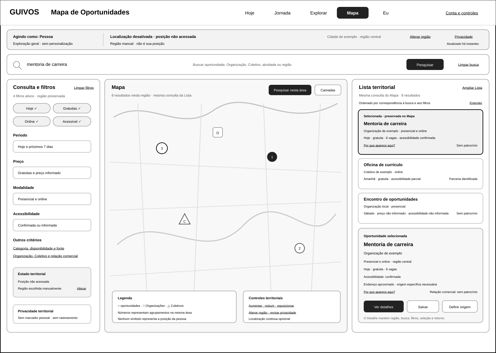
Arquivo:
docs/assets/wireframes/uxa-032-opportunity-map-desktop.svg
3.2 Estado sem resultados¶
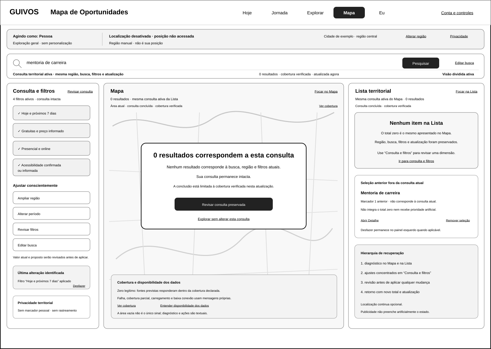
Arquivo:
docs/assets/wireframes/uxa-032-opportunity-map-no-results-desktop.svg
Dimensão de referência:
- canal: aplicação web para computador;
- largura: 1.440 pixels;
- altura: 1.024 pixels;
- localização ilustrada: desativada;
- posição: não acessada;
- região: escolhida manualmente;
- disposição padrão: visão dividida;
- estado principal: oito resultados;
- estado alternativo: zero resultados com cobertura verificável.
A dimensão verifica distribuição e densidade. Ela não define pontos de quebra, tablet ou responsividade completa.
4. Pergunta validada¶
Em tela ampla, a pessoa consegue compreender e controlar uma única consulta territorial enquanto vê Mapa, Lista, filtros, seleção, privacidade e condições sem contradição ou sobrecarga funcional?
A UXA-033 concluiu que a resposta é positiva após as reformulações descritas neste documento.
5. Paridade entre canais¶
A referência para computador preserva as regras do canal móvel.
Ela não poderá:
- criar filtros exclusivos sem equivalência funcional;
- alterar silenciosamente região, busca, filtros ou ordenação;
- utilizar fonte de resultados diferente da Lista móvel;
- transformar a Lista em catálogo independente;
- ativar localização por haver mais espaço;
- revelar residência ou local sensível;
- promover publicidade como relevância funcional;
- criar personalização sem gate;
- mudar significado ao alterar disposição.
Diferenças de disposição são permitidas. Diferenças de significado não são.
6. Estrutura de tela ampla¶
A referência utiliza:
cabeçalho e navegação recorrente
→ contexto territorial e privacidade
→ consulta territorial ativa e pesquisa
→ filtros + Mapa + Lista
→ painel contextual recolhível da seleção
A área principal é distribuída em três colunas:
- consulta e filtros;
- campo territorial do Mapa;
- Lista da mesma consulta.
As três colunas utilizam a mesma região, busca, filtros, quantidade e atualização.
7. Faixa compartilhada da consulta¶
A reformulação acrescenta uma declaração transversal:
Consulta territorial ativa · mesma região, busca, filtros e atualização
No estado com resultados:
8 resultados · atualizada agora
No estado sem resultados:
0 resultados · cobertura verificada · atualizada agora
A faixa evita a percepção de três buscas independentes.
Nenhum painel poderá manter versão divergente da consulta.
8. Cabeçalho, contexto e navegação¶
O cabeçalho apresenta:
Mapa de Oportunidades;Agindo como: Pessoa;Exploração geral · sem personalização;Hoje | Jornada | Explorar | Mapa | Eu;Mapaselecionado;- conta e controles;
- privacidade territorial.
A disposição horizontal não autoriza ocultar o contexto de atuação.
9. Localização opcional e região manual¶
O estado principal demonstra:
Localização desativada · posição não acessada
Região manual · não é sua posição
A pessoa poderá alterar a região, ativar localização aproximada voluntariamente, usar localização exata temporária com finalidade e duração explícitas ou continuar sem compartilhar posição.
O Mapa não apresenta marcador pessoal.
Região manual não equivale a residência, posição atual ou histórico territorial.
10. Pesquisa territorial¶
A pesquisa permanece acima do conjunto principal.
A consulta reconhece oportunidades, Organizações, Coletivos, atividades, eventos, categorias e regiões.
Busca, região e filtros permanecem dimensões distintas.
Limpar busca não apaga região ou filtros.
11. Consistência dos filtros¶
Resumo e controles detalhados utilizam os mesmos valores:
Hoje e próximos 7 dias;Gratuitas e preço informado;Presencial e online;Acessibilidade confirmada ou informada.
O painel também poderá abrir categoria, disponibilidade, fonte, Organização, Coletivo e relação comercial.
Vínculo com objetivo ou Próximo Passo somente poderá aparecer quando o gate estiver atendido.
Limpar filtros não apaga busca ou região.
Filtros incompatíveis após alteração territorial serão informados antes de qualquer remoção.
12. Visão dividida e modos de foco¶
A disposição padrão declara:
Visão dividida ativa
As ações são:
Focar no Mapa;Focar na Lista;Voltar à visão divididanos estados concentrados.
Foco não cria nova consulta e não modifica região, busca, filtros, quantidade, atualização, ordenação, seleção, localização ou permissões.
Ao retornar, o contexto e a posição de leitura deverão ser preservados quando materialmente possível.
13. Movimento do Mapa¶
Antes de qualquer movimento, o campo declara:
Área atual · resultados atualizados
Pesquisar nesta área somente aparece após movimento material do Mapa.
O estado pendente deverá declarar:
Área movida · resultados ainda correspondem à consulta anterior
Mover o campo cartográfico não executa nova consulta silenciosamente.
14. Campo territorial¶
O Mapa permanece o maior elemento visual e poderá apresentar:
- oportunidades;
- Organizações;
- Coletivos;
- eventos;
- atividades;
- experiências públicas;
- pontos de apoio;
- locais salvos;
- agrupamentos;
- camadas e legenda.
Forma e texto acompanham qualquer uso de cor.
A legenda declara que nenhum símbolo representa a posição da pessoa.
15. Lista territorial comparável¶
A Lista declara:
Lista territorial · mesma consulta ativa do Mapa
Cada cartão visível deverá apresentar, de forma compacta:
- tipo;
- título;
- responsável;
- modalidade;
- região ou condição online;
- data ou prazo;
- preço;
- disponibilidade;
- acessibilidade;
- origem funcional;
- relação comercial;
Por que aparece aqui?.
Dados ausentes serão declarados como não informados.
A ordenação informa seu critério e oferece:
Entender ordenação
16. Seleção sincronizada¶
A mesma oportunidade utiliza o vínculo:
Marcador 1 · selecionada
O identificador conecta:
- marcador no Mapa;
- cartão na Lista;
- painel contextual.
A seleção não altera ordenação, relevância ou permissões.
Ela permanece ao focar Mapa, focar Lista, abrir o Detalhe ou retornar.
17. Painel contextual recolhível¶
A oportunidade selecionada abre um:
Painel contextual recolhível
O painel apresenta:
- título e responsável;
- tipo e modalidade;
- região ou distância válida;
- data ou disponibilidade;
- preço;
- vagas;
- acessibilidade;
- condição do endereço;
- razão funcional;
- relação comercial;
Ver detalhes;Salvar;Definir origem, quando aplicável;- ação
Recolher.
Recolher o painel preserva seleção e devolve espaço para comparação.
O painel não substitui o Detalhe.
18. Explicabilidade e relação comercial¶
A pessoa poderá abrir:
Por que aparece aqui?;Entender ordenação;Ver cobertura;Entender disponibilidade dos dados;Privacidade;- explicação da relação comercial.
A relação comercial utiliza rótulo explícito e permanece separada da origem funcional e da posição na Lista.
Patrocínio, comissão, popularidade ou proximidade isolada não constituem recomendação pessoal.
19. Continuidade com o Detalhe¶
Ao abrir e retornar do Detalhe, permanecem quando aplicável:
Agindo como;- região;
- busca;
- filtros;
- quantidade;
- atualização;
- ordenação;
- posição da Lista;
- seleção;
- modo de foco;
- estado de localização;
- origem da navegação.
Mudança real de disponibilidade será informada.
20. Estado sem resultados¶
O estado alternativo preserva:
- região;
- busca;
- quatro filtros consistentes;
- contexto;
- localização desativada;
- região manual;
- total zero;
- cobertura;
- atualização;
- seleção anterior, quando existir.
A recuperação principal fica concentrada no painel Consulta e filtros.
O centro apresenta:
0 resultados correspondem a esta consulta;Sua consulta permanece intacta;- cobertura limitada à atualização atual;
Revisar consulta preservada;Explorar sem alterar esta consulta.
A Lista apresenta o mesmo diagnóstico e orienta o uso do painel de consulta, sem repetir todas as ações.
21. Recuperação consciente¶
As ações independentes permanecem:
Ampliar região;Alterar período;Revisar filtros;Editar busca;Desfazer, quando houver alteração identificável.
A pessoa revisa valor atual, valor proposto, dimensões preservadas e efeito possível antes de aplicar.
A interface não altera automaticamente região, período, filtros, busca, localização ou personalização.
22. Seleção anterior no total zero¶
Quando houver seleção incompatível com a consulta atual, a Lista declara:
Seleção anterior fora da consulta atual
A oportunidade não integra o total zero.
A pessoa poderá abrir o Detalhe, remover a seleção, desfazer alteração compatível ou manter a consulta.
23. Estados sem mapa carregado¶
Lista, filtros, diagnóstico e ações essenciais continuam operáveis quando:
- localização estiver desativada;
- fornecedor cartográfico estiver indisponível;
- Mapa não carregar;
- houver baixa conectividade;
- houver ampliação ou tecnologia assistiva.
A Lista é alternativa integral, não contingência inferior.
24. Privacidade territorial¶
A referência preserva:
- localização opcional;
- posição não acessada quando verdadeiro;
- região manual distinta da posição pessoal;
- ausência de localização de participantes;
- endereço protegido;
- origem específica sem rastreamento contínuo;
- ausência de histórico territorial para publicidade;
- ausência de inferência de residência;
- controles de finalidade, precisão e duração.
Mais espaço visual não autoriza mais coleta.
25. Acessibilidade funcional¶
A ordem funcional é:
cabeçalho e contexto
→ consulta territorial ativa
→ pesquisa
→ filtros
→ Mapa
→ Lista
→ painel contextual
A superfície deverá permitir acesso direto a consulta, filtros, Mapa, Lista e seleção.
Quantidade, atualização, localização, cobertura, foco e seleção deverão ser anunciáveis textualmente.
Esta referência não conclui conformidade técnica de acessibilidade.
26. Resultado da validação¶
A UXA-033 considera a referência funcionalmente válida após reformulação.
Foram corrigidos:
- contradições entre filtros resumidos e detalhados;
- ambiguidade de
Ampliar; - atualização territorial sem estado pendente;
- vínculo insuficiente da seleção;
- cartões secundários pouco comparáveis;
- painel selecionado que comprimida a Lista sem condição de recolhimento;
- repetição de recuperação no estado zero.
27. Limites¶
Este incremento não:
- define tecnologia de mapas;
- cria geocodificação, rotas ou rastreamento;
- define algoritmo de busca, recomendação ou ordenação;
- define cobertura real de fontes;
- cria dados reais;
- define identidade visual final;
- conclui pontos de quebra ou responsividade;
- cria referência específica para tablet;
- cria protótipo navegável;
- executa teste de usabilidade;
- conclui acessibilidade técnica;
- inicia Engenharia de Produto.
28. Próximos atos governados¶
Após integração e nova autorização, poderão ocorrer separadamente:
- criar o wireframe gráfico do início protegido;
- criar a referência móvel da Página Inicial pública;
- validar a revisão da compreensão inicial;
- validar a transição para a primeira Tela Hoje;
- criar outros estados especializados do Mapa;
- criar referência específica para tablet, caso priorizada;
- retomar independentemente os testes dos Resultados Empresariais.
Nenhum ato é iniciado automaticamente.
Validação Funcional Especializada e Reformulação da Referência do Mapa para Computador¶
1. Finalidade¶
Este documento registra a validação funcional especializada da referência do Mapa de Oportunidades para computador e governa a reformulação da UXA-032.
A decisão permanece restrita à Arquitetura da Experiência. Ela não aprova tecnologia cartográfica, geocodificação, rotas, algoritmo de busca ou ordenação, cobertura de fontes de produção, identidade visual, pontos de quebra, responsividade, referência para tablet, protótipo navegável, conformidade técnica de acessibilidade, teste de usabilidade ou desenvolvimento.
2. Decisão humana registrada¶
Em 27/07/2026, o Fundador autorizou a validação funcional especializada da UXA-032 após a integração do marco M7.33.
A validação examinou:
- paridade entre os canais móvel e para computador;
- compreensão de que Mapa, Lista e filtros representam uma única consulta;
- consistência entre resumo e valores detalhados dos filtros;
- distribuição horizontal e prioridade dos painéis;
- comportamento de foco no Mapa ou na Lista;
- atualização territorial após movimentação cartográfica;
- sincronização da oportunidade selecionada;
- comparabilidade e explicabilidade dos cartões;
- continuidade para o Detalhe;
- localização opcional e região manual;
- estado sem resultados;
- operação sem mapa carregado;
- acessibilidade funcional e aderência à Fundação da Guivos.
3. Resultado da validação¶
A referência do Mapa de Oportunidades para computador é considerada funcionalmente válida após reformulação.
A versão inicial já estabelecia corretamente:
- Mapa como superfície recorrente;
- navegação
Hoje | Jornada | Explorar | Mapa | Eu; - contexto
Agindo como: Pessoa; - exploração geral sem personalização;
- localização desativada e posição não acessada;
- região manual distinta da posição pessoal;
- painel de filtros, campo territorial e Lista lado a lado;
- quantidade e atualização compartilhadas;
- oportunidade selecionada;
- separação entre razão funcional e relação comercial;
- continuidade para o Detalhe;
- estado zero com cobertura verificável;
- Lista operável sem mapa carregado.
Entretanto, sete riscos exigiram correção antes do fechamento funcional:
- os filtros resumidos contradiziam os valores detalhados apresentados no mesmo painel;
Ampliar MapaeAmpliar Listanão definiam mudança de foco, preservação de contexto ou retorno à visão dividida;Pesquisar nesta áreaaparecia sem indicar que o Mapa havia sido movido e que a consulta anterior permanecia ativa;- a seleção não vinculava explicitamente o marcador, o cartão e o painel contextual pelo mesmo identificador;
- os cartões secundários não apresentavam origem funcional, explicação e relação comercial com consistência suficiente;
- o painel completo da oportunidade selecionada comprimia a área de comparação da Lista sem declarar que era recolhível;
- o estado sem resultados repetia ações de recuperação no painel esquerdo, no centro do Mapa e no painel direito, criando competição de hierarquia.
4. Posição funcional preservada¶
A ordem vigente permanece:
Página Inicial pública
→ início protegido da jornada
→ compreensão inicial revisável
→ Tela Hoje
→ Hoje | Jornada | Explorar | Mapa | Eu
A referência para computador não constitui etapa obrigatória, produto distinto ou catálogo separado.
O item Mapa permanece selecionado.
5. Gate de alinhamento à Fundação¶
5.1 Essência¶
A reformulação preserva orientação sem retirar autonomia. A pessoa mantém controle sobre consulta, território, filtros, foco e seleção.
5.2 Propósito¶
A tela ampla amplia compreensão e comparação sem aumentar coleta, inferência ou pressão para localização e personalização.
5.3 Missão Operacional¶
Região, busca, filtros, atualização, quantidade, seleção, cobertura e relação comercial permanecem visíveis e explicáveis.
5.4 Visão de Longo Prazo¶
A referência permite evolução para diferentes densidades territoriais e canais sem criar significados incompatíveis entre móvel e computador.
5.5 Constituição e Princípios Permanentes¶
São preservados:
- autonomia;
- dignidade;
- transparência;
- explicabilidade;
- privacidade;
- não manipulação;
- acessibilidade;
- reversibilidade;
- separação entre relevância funcional e interesse comercial.
Nenhuma falha material à Fundação foi identificada após a reformulação.
6. Consulta territorial única¶
A versão reformulada apresenta uma faixa compartilhada:
Consulta territorial ativa · mesma região, busca, filtros e atualização
No estado com resultados, a faixa também informa:
8 resultados · atualizada agora
No estado sem resultados:
0 resultados · cobertura verificada · atualizada agora
A faixa não cria identificador técnico para a pessoa. Sua função é declarar que painel de filtros, Mapa, Lista e seleção pertencem ao mesmo estado.
A interface não poderá manter versões divergentes da consulta em painéis simultâneos.
7. Consistência dos filtros¶
Resumo, marcas de seleção e controles detalhados deverão apresentar valores semanticamente idênticos.
A referência reformulada utiliza:
Hoje e próximos 7 dias;Gratuitas e preço informado;Presencial e online;Acessibilidade confirmada ou informada.
A interface não poderá resumir um filtro como Hoje enquanto o controle representar sete dias, nem declarar Online quando a modalidade também incluir presencial.
Limpar filtros continua sem apagar região ou busca.
8. Visão dividida e modos de foco¶
A disposição padrão é declarada como:
Visão dividida ativa
As ações passam a ser:
Focar no Mapa;Focar na Lista;Voltar à visão divididanos estados concentrados.
Focar em um painel deverá preservar:
- contexto
Agindo como; - região;
- busca;
- filtros;
- quantidade;
- atualização;
- ordenação;
- seleção;
- estado de localização;
- cobertura;
- posição de leitura quando aplicável.
A mudança de foco não constitui nova consulta e não altera permissões.
9. Movimento do Mapa e atualização consciente¶
Pesquisar nesta área somente deverá aparecer quando:
- o campo cartográfico tiver sido movido materialmente;
- a área visível divergir da região que produziu os resultados atuais;
- a consulta anterior continuar ativa;
- a pessoa puder reconhecer que os resultados ainda não foram atualizados.
O estado pendente deverá declarar:
Área movida · resultados ainda correspondem à consulta anterior
Antes do movimento, a referência informa:
Área atual · resultados atualizados
Mover o Mapa não executa nova consulta silenciosamente.
10. Seleção sincronizada¶
A oportunidade selecionada deverá utilizar o mesmo vínculo textual nos três pontos:
- marcador territorial;
- cartão da Lista;
- painel contextual.
A referência utiliza:
Marcador 1 · selecionada
A seleção deverá:
- permanecer reconhecível ao alternar foco;
- não alterar ordenação;
- não aumentar relevância;
- não modificar permissões;
- preservar retorno após o Detalhe;
- ser removida conscientemente quando aplicável.
11. Lista comparável e explicável¶
Cada cartão visível deverá apresentar, em forma compacta quando necessário:
- tipo;
- título;
- responsável;
- modalidade;
- região ou disponibilidade online;
- data ou prazo;
- preço;
- disponibilidade;
- acessibilidade;
- origem funcional;
- relação comercial;
- ação
Por que aparece aqui?.
Dados ausentes serão declarados como não informados.
A ação genérica Entender é substituída por:
Entender ordenação
A relação comercial deverá utilizar rótulo explícito, como:
Relação comercial: sem patrocínio;Relação comercial: parceria identificada;Relação comercial: conteúdo patrocinado.
12. Painel contextual recolhível¶
O painel da oportunidade selecionada passa a ser declarado como:
Painel contextual recolhível
Ele poderá ser aberto para apresentar condições resumidas e ações, mas não deverá eliminar a capacidade de comparar a Lista.
Ao recolher o painel:
- a seleção permanece ativa;
- o cartão selecionado continua reconhecível;
- o marcador permanece vinculado;
- a Lista recupera espaço;
- a consulta não é modificada.
O painel não substitui o Detalhe de Oportunidade.
13. Continuidade com o Detalhe¶
Ao abrir e retornar do Detalhe, permanecem:
- contexto
Agindo como; - região;
- busca;
- filtros;
- quantidade;
- atualização;
- ordenação;
- posição da Lista;
- oportunidade selecionada;
- modo de foco;
- estado de localização;
- origem da navegação.
Mudança real de disponibilidade deverá ser informada, não escondida por restauração artificial do estado anterior.
14. Estado sem resultados com hierarquia única¶
A recuperação principal fica concentrada no painel Consulta e filtros.
O centro do Mapa apresenta:
- diagnóstico;
- total zero;
- cobertura;
- declaração de preservação da consulta;
- ação
Revisar consulta preservada; - saída
Explorar sem alterar esta consulta.
A Lista apresenta o mesmo total e orienta a utilização do painel de consulta, sem repetir todas as ações.
As ações independentes permanecem:
Ampliar região;Alterar período;Revisar filtros;Editar busca;Desfazer, somente quando houver alteração anterior identificável.
A pessoa revisa valor atual e proposto antes de aplicar qualquer mudança.
15. Seleção anterior no estado zero¶
Quando uma alteração produzir zero resultados e houver seleção anterior, a Lista poderá apresentar:
Seleção anterior fora da consulta atual
A oportunidade não integra o total zero.
A pessoa poderá abrir o Detalhe, remover a seleção, desfazer a alteração compatível ou manter a nova consulta.
16. Localização e privacidade¶
A referência continua declarando:
Localização desativada · posição não acessada
Região manual · não é sua posição
Mais espaço visual não autoriza:
- ativar localização;
- inferir residência;
- manter histórico territorial;
- rastrear movimentação;
- revelar localização de participantes;
- contornar endereço protegido;
- utilizar território para publicidade individualizada sem base aplicável.
17. Relação comercial e personalização¶
Sem gate de personalização, resultados e ordenação utilizam somente consulta explícita, região, filtros, período e cobertura.
Publicidade, comissão, patrocínio, popularidade ou proximidade isolada não poderão:
- alterar relevância funcional de forma oculta;
- preencher o estado zero;
- simular recomendação pessoal;
- modificar a seleção;
- alterar a consulta compartilhada.
18. Acessibilidade funcional e resiliência¶
A ordem funcional recomendada é:
cabeçalho e contexto
→ consulta territorial ativa
→ pesquisa
→ filtros
→ Mapa
→ Lista
→ painel contextual da seleção
A superfície deverá permitir acesso direto a:
- consulta;
- filtros;
- Mapa;
- Lista;
- oportunidade selecionada.
Quantidade, atualização, localização, cobertura, foco e seleção deverão ser anunciáveis textualmente.
A Lista, o diagnóstico, os filtros e as ações essenciais continuam operáveis sem o mapa carregado.
A validação não conclui conformidade técnica de acessibilidade.
19. Paridade entre canais validada¶
A referência para computador poderá alterar disposição e densidade, mas não significado.
Deverão permanecer equivalentes entre móvel e computador:
- contexto;
- região;
- busca;
- filtros;
- quantidade;
- atualização;
- ordenação;
- seleção;
- explicabilidade;
- relação comercial;
- localização opcional;
- cobertura;
- continuidade para o Detalhe;
- estado sem resultados.
20. Reformulação da UXA-032¶
A UXA-032 passa a:
- versão 0.2.0;
- estado ativo;
- faixa compartilhada de consulta territorial;
- filtros semanticamente consistentes;
- visão dividida declarada;
- ações
Focar no MapaeFocar na Lista; - regra
Voltar à visão dividida; - atualização territorial condicionada ao movimento;
- seleção vinculada como
Marcador 1; - cartões compactos comparáveis e explicáveis;
Entender ordenaçãoexplícito;- relação comercial rotulada;
- painel contextual recolhível;
- hierarquia única de recuperação no estado zero;
- ordem funcional e atalhos de acesso registrados.
21. Critérios de aceite atendidos¶
| Critério | Resultado |
|---|---|
| Mapa e Lista são percebidos como a mesma consulta | atendido após faixa compartilhada e visão dividida explícita |
| filtros não contradizem os controles | atendido após unificação dos valores |
| mudança de foco preserva contexto | atendido após contrato de foco e retorno |
| movimentação não atualiza silenciosamente | atendido após estado territorial pendente explícito |
| seleção é reconhecida nos três pontos | atendido após vínculo Marcador 1 |
| cartões permitem comparação e explicação | atendido após campos e ações consistentes |
| painel selecionado não elimina a Lista | atendido após condição recolhível |
| estado zero possui hierarquia clara | atendido após concentração da recuperação |
| localização permanece opcional | atendido |
| relação comercial permanece separada | atendido |
| operação sem mapa carregado permanece possível | atendido |
| aderência à Fundação | atendido |
22. Limites da validação¶
Esta validação não:
- testa compreensão com usuários;
- define comportamento técnico de redimensionamento;
- cria pontos de quebra;
- cria referência para tablet;
- define componente, framework ou biblioteca;
- define tecnologia cartográfica;
- define algoritmo ou cobertura real;
- conclui design visual;
- cria protótipo navegável;
- conclui acessibilidade técnica;
- inicia Engenharia de Produto.
23. Próximos atos governados¶
Após integração e nova autorização, poderão ocorrer separadamente:
- criar o wireframe gráfico do início protegido;
- criar a referência móvel da Página Inicial pública;
- validar a revisão da compreensão inicial;
- validar a transição para a primeira Tela Hoje;
- criar outros estados especializados do Mapa;
- criar referência específica para tablet, caso priorizada;
- retomar independentemente os testes dos Resultados Empresariais.
Nenhum ato é iniciado automaticamente.
Opportunity Boost — Contrato Funcional da Experiência¶
1. Finalidade¶
Definir como o Opportunity Boost será criado, identificado, distribuído, explicado, controlado, pausado e encerrado sem ser confundido com relevância orgânica ou recomendação pessoal.
2. Princípio de apresentação¶
Impulsionamento amplia distribuição publicitária; não altera a avaliação funcional da oportunidade.
Toda unidade patrocinada deverá ser reconhecível antes de qualquer interação. Pagamento não modifica qualidade, confiança, aderência, impacto, prioridade orgânica ou posição de Próximo Passo.
3. Gate de entrada do anunciante¶
A ação Impulsionar oportunidade somente poderá ficar disponível quando:
- o anunciante possuir plano elegível ou financiamento social válido;
- a oportunidade estiver aprovada e ativa;
- o responsável institucional estiver identificado;
- preço, gratuidade e condições materiais estiverem atualizados;
- datas, local, modalidade e disponibilidade estiverem vigentes;
- houver capacidade para atender demanda adicional;
- não existir pendência crítica de segurança ou moderação.
Estados de bloqueio visíveis:
Plano não elegível;Oportunidade ainda não aprovada;Oportunidade inativa ou expirada;Informações materiais desatualizadas;Capacidade insuficiente;Pendência de segurança ou moderação;Responsável institucional ausente.
Cada bloqueio mostrará motivo, consequência e ação de correção. Contratar plano não substitui aprovação, atualização, segurança ou capacidade.
4. Superfícies permitidas¶
- Explorar;
- busca;
- listas de oportunidades;
- categorias e coleções públicas;
- Mapa;
- detalhe, em módulo separado;
- páginas públicas da Organização ou do Coletivo responsável.
5. Superfícies bloqueadas¶
- entrada protegida;
- compreensão inicial;
- consentimento, autorização ou revisão de dados;
- Próximo Passo da Tela Hoje;
- Jornada como recomendação individual;
- alertas pessoais sem opt-in próprio;
- segurança, privacidade, contestação e suporte.
6. Cartão impulsionado¶
O cartão deverá apresentar:
- selo
PatrocinadoouImpulsionadoantes do conteúdo; - título e tipo da oportunidade;
- Organização ou Coletivo responsável;
- data, modalidade e localização aplicável;
- preço, gratuidade ou condição material;
- capacidade ou prazo quando relevante;
- ação
Ver detalhes; - ação
Por que estou vendo isto?; - ações de ocultar e denunciar.
Não deverá apresentar:
- selo de recomendação;
- aderência pessoal aumentada pelo pagamento;
- pontuação artificial;
- urgência criada pelo anúncio;
- afirmação de que a Guivos recomenda o anunciante;
- posição patrocinada como se fosse posição orgânica.
7. Por que estou vendo isto?¶
A explicação deverá distinguir:
Motivo da distribuição
→ campanha paga identificada
Critérios utilizados
→ região, idioma, categoria, modalidade, data, preço ou preferência geral permitida
Critérios não utilizados
→ relato protegido, compreensão inicial, Momento Atual, Próximo Passo e inferências sensíveis
Controles
→ ocultar, revisar preferências ou denunciar
Quando a oportunidade também possuir correspondência orgânica legítima, a interface deverá separar:
- razão orgânica;
- condição patrocinada;
- critérios de cada uma;
- ausência de influência do pagamento sobre a correspondência.
8. Ordenação, densidade e frequência¶
- inventário patrocinado e orgânico serão separados;
- o primeiro resultado orgânico permanecerá orgânico;
- espaços patrocinados serão identificados e não participarão silenciosamente da ordenação orgânica;
- duas unidades patrocinadas não aparecerão consecutivamente;
- a densidade candidata máxima será de 20%;
- havendo oferta orgânica suficiente, existirão quatro itens orgânicos entre anúncios;
- havendo menos de quatro itens orgânicos disponíveis, a quantidade de anúncios será reduzida;
- ausência de inventário orgânico suficiente nunca autoriza aumentar densidade;
- filtros objetivos de data, preço, distância, modalidade e elegibilidade continuarão obrigatórios;
- ocultação e preferência negativa prevalecerão sobre entrega contratada;
- repetição excessiva será evitada por limite de frequência por campanha e superfície.
9. Mapa¶
No Mapa, o Boost utilizará:
- marcador visual próprio;
- identificação textual acessível;
- agrupamento com quantidades patrocinadas e orgânicas separadas;
- filtro reversível
Mostrar oportunidades patrocinadas; - detalhe com anunciante, período e motivo da exibição;
- ausência de uso de localização contínua ou histórico sensível;
- preservação de pontos orgânicos sem encobrimento por marcadores pagos.
O marcador patrocinado não indicará maior qualidade, confiança, aderência ou proximidade funcional. Distância não será apresentada como recomendação.
10. Fluxo do anunciante¶
Gestão da oportunidade
→ Impulsionar oportunidade
→ verificar elegibilidade e bloqueios
→ escolher objetivo de distribuição
→ selecionar critérios permitidos
→ revisar critérios excluídos
→ definir orçamento, duração e limite diário
→ revisar superfícies e prévia
→ revisar responsabilidade, capacidade e condições
→ confirmar sem opção pré-selecionada
→ enviar para avaliação
→ acompanhar campanha
→ pausar, corrigir, cancelar ou encerrar
→ consultar relatório e reconciliação
A interface deverá mostrar que:
- o Boost é separado do plano;
- o orçamento não garante resultados;
- a oportunidade continuará sujeita à moderação;
- capacidade e disponibilidade precisam permanecer atualizadas;
- o ranking orgânico não será alterado;
- não existe renovação automática por padrão;
- mudança material poderá pausar a campanha.
11. Objetivo e métrica principal¶
O anunciante deverá escolher uma única finalidade principal:
- ampliar visualizações válidas;
- levar pessoas ao detalhe;
- aumentar salvamentos;
- estimular declaração de interesse;
- iniciar inscrição ou contratação legítima;
- divulgar atividade ou programa em região permitida.
Nenhum objetivo será selecionado por padrão.
A superfície deverá mostrar:
- métrica principal associada;
- eventos secundários;
- ausência de garantia;
- critérios proibidos;
- impossibilidade de otimizar relevância pessoal, confiança ou impacto.
Não serão objetivos permitidos:
- aumentar relevância pessoal;
- forçar recomendação;
- obter dados protegidos;
- manipular avaliações;
- garantir conversão ou impacto.
12. Resumo de critérios e alcance¶
Antes da prévia, a interface apresentará:
- critérios utilizados;
- critérios excluídos;
- superfícies previstas;
- alcance estimado agregado;
- aviso de que estimativa não é garantia;
- eventual limitação por público insuficiente.
A ausência de público suficiente deverá reduzir ou impedir a campanha, sem ampliação silenciosa de critérios.
13. Prévia e revisão final¶
A prévia deverá demonstrar:
- selo comercial antes do conteúdo;
- cartão ou marcador patrocinado;
- espaço publicitário separado;
- primeiro resultado orgânico preservado;
- filtros objetivos aplicados;
- explicação da distribuição;
- controles de ocultação e denúncia;
- variações para Explorar, Lista, Mapa e detalhe.
Antes do envio, o anunciante revisará:
- oportunidade e responsável;
- financiador, quando houver;
- objetivo e métrica principal;
- critérios utilizados e excluídos;
- superfícies;
- orçamento total e limite diário;
- início, fim e regra de encerramento;
- preço ou gratuidade;
- capacidade declarada;
- ausência de renovação automática;
- ausência de garantia;
- efeitos de pausa, alteração material e cancelamento.
A confirmação será afirmativa e inicialmente desmarcada.
14. Alterações materiais durante a campanha¶
Mudança em preço, gratuidade, data, local, modalidade, responsável, elegibilidade, risco, capacidade ou condição comercial deverá:
- pausar a campanha quando puder alterar a decisão da pessoa;
- mostrar a informação alterada;
- exigir nova avaliação quando necessário;
- impedir entrega com informação desatualizada;
- preservar histórico e eventos válidos anteriores;
- recalcular somente estimativas futuras.
Correções editoriais sem mudança material poderão continuar, mantendo histórico.
15. Estados visíveis¶
rascunho
→ bloqueada por inelegibilidade | pronta para configurar
→ em avaliação
→ ajustes solicitados | rejeitada | aprovada
→ programada
→ ativa
→ limitada por frequência | limitada por capacidade
→ pausada pelo anunciante | pausada automaticamente
→ orçamento esgotado | capacidade esgotada | oportunidade expirada
→ suspensa por política
→ concluída | cancelada
→ reconciliada
Cada estado deverá explicar:
- motivo;
- consequência sobre entrega;
- efeito sobre orçamento e saldo;
- ação possível;
- condição para retomada.
16. Boost Social Financiado¶
Quando aplicável, a unidade e a explicação deverão apresentar:
Impulsionamento social financiado;- Organização ou parceiro financiador;
- Coletivo beneficiário;
- oportunidade gratuita;
- finalidade declarada do financiamento;
- declaração de que o financiador não define relevância pessoal, seleção ou resultado;
- ausência de acesso do financiador a relatos, contexto da jornada ou lista de pessoas expostas.
O financiamento não transforma a oportunidade em recomendação institucional nem concede plano pago ao Coletivo Livre.
17. Controles da pessoa¶
O participante poderá:
- abrir a oportunidade;
- compreender a relação comercial;
- ocultar a campanha específica;
- mostrar menos de um tipo identificado;
- revisar preferências gerais;
- desativar oportunidades patrocinadas nas superfícies que suportarem a opção;
- denunciar conteúdo ou informação;
- contestar uso indevido de dados;
- desfazer preferências anteriores.
Escopos:
Ocultar esta campanharemove a campanha específica nas superfícies aplicáveis;Mostrar menos deste tipoaltera preferência geral identificada;Não mostrar oportunidades patrocinadasdesativa o inventário patrocinado suportado;Denunciarabre fluxo separado e não é tratado como preferência.
Nenhuma escolha será pré-selecionada. Ocultar publicidade não reduzirá acesso ao catálogo orgânico nem será interpretado como desinteresse na categoria orgânica.
18. Relatório do anunciante¶
O painel deverá separar:
Entrega¶
- orçamento total, utilizado e remanescente;
- período e status;
- impressões válidas e visíveis;
- frequência média;
- tráfego inválido removido.
Interação¶
- cliques válidos;
- visualizações do detalhe;
- salvamentos;
- interesses agregados;
- início de inscrição ou contratação, quando disponível.
Atribuição candidata¶
- eventos compatíveis com janela e instrumentação;
- origem orgânica preservada nos relatórios internos;
- ausência de dupla atribuição silenciosa.
Resultado declarado¶
- informação fornecida pelo anunciante;
- identificação explícita como autorrelato;
- distinção de evento instrumentado.
Ausência de dado não será apresentada como zero. Nenhuma lista de visualizadores será fornecida. Métricas não serão apresentadas como impacto humano comprovado.
19. Pausa, cancelamento e reconciliação¶
Antes de pausar ou cancelar, a experiência deverá mostrar:
- entrega futura afetada;
- eventos válidos já realizados;
- orçamento utilizado;
- saldo remanescente;
- tratamento candidato do saldo;
- possibilidade de retomada;
- motivo de eventual retenção legítima;
- acesso posterior ao relatório e histórico.
Pausa será reversível quando a causa permitir. Cancelamento encerrará entrega futura e exigirá confirmação proporcional à ativação.
20. Acessibilidade e linguagem¶
- identificação patrocinada não dependerá apenas de cor;
- leitores de tela anunciarão a natureza comercial antes do conteúdo;
- preço e condições permanecerão compreensíveis;
- controles de ocultação e denúncia serão acessíveis;
- estados explicarão motivo, consequência e próxima ação;
- não serão usados padrões de urgência, culpa ou escassez artificial;
- cancelamento e pausa terão complexidade proporcional à ativação.
21. Estado funcional¶
functionally_valid_after_reformulation — advertiser flow, participant controls, sponsored disclosure, state model and reporting boundaries established; wireframes and evidence pending.
22. Limites¶
Este contrato não cria design final, algoritmo, compra de mídia, checkout, cobrança, perfil publicitário individual, política final de categorias, antifraude técnico, protótipo, teste ou desenvolvimento.
A experiência deverá passar por wireframes, validação dos wireframes e testes com Pessoas, Organizações e Coletivos antes de qualquer operação.
Validação Funcional Especializada e Reformulação da Experiência do Opportunity Boost¶
1. Finalidade¶
Este documento valida funcionalmente o contrato da experiência do Opportunity Boost e registra as reformulações necessárias antes da criação de qualquer wireframe.
A pergunta de validação é:
Uma Organização ou um Coletivo consegue configurar, revisar, acompanhar, pausar e encerrar uma campanha com orçamento e consequências compreensíveis, enquanto a pessoa reconhece imediatamente a natureza patrocinada, compreende por que está vendo o conteúdo e controla sua exposição sem que pagamento altere relevância orgânica, recomendação pessoal ou acesso ao catálogo?
2. Resultado¶
A experiência é considerada funcionalmente válida após reformulação.
A validação confirma a viabilidade funcional do fluxo, mas não aprova design visual, textos jurídicos finais, algoritmo de entrega, política de categorias, perfil publicitário, cobrança, antifraude técnico, protótipo, testes com usuários ou Engenharia de Produto.
3. Escopo examinado¶
Foram examinados:
- entrada do anunciante a partir de uma oportunidade ativa;
- verificação de plano, oportunidade, capacidade e responsabilidade;
- objetivo de distribuição;
- critérios permitidos e exclusões obrigatórias;
- orçamento, duração, limite diário e ausência de renovação automática;
- prévia e revisão final;
- avaliação e estados da campanha;
- alterações materiais durante a campanha;
- cartão patrocinado e explicação da distribuição;
- ordenação, densidade e frequência;
- experiência no Mapa;
- controles da pessoa;
- Boost Social Financiado;
- relatório e atribuição;
- cancelamento, saldo e reconciliação.
4. Lacunas identificadas¶
4.1 Entrada sem bloqueios suficientemente explícitos¶
O contrato previa confirmação de elegibilidade, mas não materializava os motivos pelos quais a ação Impulsionar oportunidade deveria permanecer indisponível.
4.2 Objetivo sem consequência operacional visível¶
Os objetivos permitidos estavam listados, porém faltava explicar que a escolha altera a métrica principal e não autoriza otimização por dados protegidos.
4.3 Resumo de público incompleto¶
A configuração não exigia um inventário final dos critérios utilizados, excluídos e indisponíveis antes do envio.
4.4 Prévia sem separação obrigatória entre orgânico e patrocinado¶
A prévia precisava demonstrar o espaço publicitário sem simular aumento de posição orgânica, confiança ou recomendação.
4.5 Alterações materiais durante a campanha¶
Não estava definido o efeito de mudança de preço, gratuidade, data, local, capacidade, responsável, elegibilidade ou risco após a ativação.
4.6 Estados insuficientes para bloqueio, recusa e esgotamento¶
O ciclo não distinguia inelegibilidade, rejeição, orçamento esgotado, capacidade esgotada e expiração da oportunidade.
4.7 Divulgação do Boost Social Financiado incompleta¶
A experiência precisava identificar financiador, beneficiário e ausência de autoridade do financiador, sem transformar apoio social em recomendação institucional.
4.8 Controles da pessoa sem escopo e reversibilidade¶
Ocultar campanha, ocultar semelhantes e desativar patrocinadas não esclareciam abrangência, duração, consequência ou forma de desfazer.
4.9 Densidade em cenários de baixa oferta orgânica¶
A regra de quatro itens orgânicos entre anúncios não declarava que a ausência de inventário orgânico suficiente deve reduzir a publicidade, e nunca aumentar sua densidade.
4.10 Ordenação objetiva e espaços patrocinados¶
Faltava declarar que filtros e ordenações por data, preço, distância ou disponibilidade não conferem ao anúncio posição orgânica equivalente.
4.11 Relatório sem distinção suficiente entre entrega e atribuição¶
As métricas estavam corretas, mas o painel precisava separar entrega, interação, atribuição candidata e resultado informado pelo anunciante.
4.12 Cancelamento e reconciliação sem percurso funcional completo¶
O contrato econômico previa saldo e reconciliação, mas a experiência ainda não descrevia confirmação, consequência e acesso ao histórico após o encerramento.
5. Reformulação aprovada¶
5.1 Gate de entrada¶
A ação para impulsionar deverá apresentar uma das condições:
Disponível para impulsionamento;Plano não elegível;Oportunidade ainda não aprovada;Oportunidade inativa ou expirada;Informações materiais desatualizadas;Capacidade insuficiente;Pendência de segurança ou moderação;Responsável institucional ausente.
Cada bloqueio deverá explicar motivo, consequência e ação de correção. A contratação de plano não poderá substituir aprovação, capacidade ou segurança.
5.2 Objetivo e métrica principal¶
A campanha exigirá uma escolha única de objetivo. A interface deverá informar:
- métrica principal associada;
- eventos secundários disponíveis;
- ausência de garantia de resultado;
- critérios que não serão utilizados;
- impossibilidade de otimizar relevância pessoal, confiança ou impacto.
Nenhum objetivo será selecionado por padrão.
5.3 Inventário de público e exclusões¶
Antes da prévia, a interface mostrará:
Critérios utilizados
→ região, idioma, categoria, modalidade, data, preço ou preferência geral permitida
Critérios excluídos
→ relato protegido, compreensão inicial, Momento Atual, Próximo Passo e inferências sensíveis
Alcance estimado
→ estimativa agregada, não garantia
A ausência de público suficiente deverá impedir ou limitar a campanha, sem ampliar silenciosamente os critérios.
5.4 Prévia fiel¶
A prévia deverá mostrar separadamente:
- cartão ou marcador patrocinado;
- selo comercial antes do conteúdo;
- posição publicitária candidata;
- primeiro resultado orgânico preservado;
- filtros objetivos aplicados;
- ação
Por que estou vendo isto?; - controles de ocultação e denúncia;
- variações para Lista, Explorar, Mapa e detalhe.
A prévia não poderá exibir pontuação de aderência ou selo de recomendação.
5.5 Revisão final do anunciante¶
Antes do envio, a superfície deverá consolidar:
- oportunidade impulsionada;
- responsável e financiador, quando houver;
- objetivo e métrica principal;
- critérios permitidos;
- critérios expressamente não utilizados;
- superfícies;
- orçamento total e limite diário;
- início, fim e regra de encerramento;
- preço ou gratuidade da oportunidade;
- capacidade declarada;
- ausência de renovação automática;
- ausência de garantia de entrega ou conversão;
- consequências de pausa, alteração material e cancelamento.
A confirmação será afirmativa e inicialmente desmarcada.
5.6 Alterações durante a campanha¶
Mudança material em preço, gratuidade, data, local, modalidade, responsável, elegibilidade, risco, capacidade ou condição comercial deverá:
- pausar a campanha quando puder alterar a decisão da pessoa;
- mostrar o item alterado;
- exigir nova avaliação quando necessário;
- impedir entrega com informação desatualizada;
- preservar histórico e eventos válidos anteriores;
- recalcular somente estimativas futuras.
Correções editoriais sem mudança de significado poderão continuar sem nova avaliação, mantendo histórico.
5.7 Estados reformulados¶
O ciclo passa a distinguir:
rascunho
→ bloqueada por inelegibilidade | pronta para configurar
→ em avaliação
→ ajustes solicitados | rejeitada | aprovada
→ programada
→ ativa
→ limitada por frequência | limitada por capacidade
→ pausada pelo anunciante | pausada automaticamente
→ orçamento esgotado | capacidade esgotada | oportunidade expirada
→ suspensa por política
→ concluída | cancelada
→ reconciliada
Cada estado deverá mostrar motivo, impacto sobre entrega, saldo, ações possíveis e condição para retomada.
5.8 Boost Social Financiado¶
A unidade e a página de explicação deverão apresentar:
Impulsionamento social financiado;- Organização ou parceiro financiador;
- Coletivo beneficiário;
- oportunidade gratuita;
- finalidade declarada do financiamento;
- declaração de que o financiador não define relevância pessoal, seleção ou resultado;
- ausência de acesso do financiador a relatos, contexto da jornada ou lista de pessoas expostas.
5.9 Controles da pessoa¶
Os controles deverão possuir escopo conhecido:
Ocultar esta campanha— remove a campanha específica nas superfícies aplicáveis;Mostrar menos deste tipo— ajusta uma preferência geral identificada;Não mostrar oportunidades patrocinadas— desativa inventário patrocinado nas superfícies que suportarem a opção;Denunciar— abre fluxo separado, sem ser tratado como preferência;Revisar preferências— permite consultar e desfazer escolhas.
Nenhuma escolha será pré-selecionada. Ocultar publicidade não reduz o catálogo orgânico, não altera acesso e não será interpretado como desinteresse na categoria orgânica.
5.10 Ordenação, densidade e frequência¶
- o primeiro resultado orgânico permanece orgânico;
- anúncios ocupam espaços próprios e identificados;
- ordenação objetiva não converte posição paga em posição orgânica;
- densidade máxima candidata permanece em 20%;
- duas unidades patrocinadas consecutivas continuam proibidas;
- havendo menos de quatro itens orgânicos disponíveis, a quantidade de anúncios será reduzida;
- ausência de inventário orgânico suficiente nunca autoriza aumentar densidade;
- limite de frequência será aplicado por campanha e superfície;
- ocultação e preferência negativa prevalecem sobre entrega contratada.
5.11 Mapa¶
No Mapa:
- marcador patrocinado terá forma e texto próprios;
- agrupamento indicará quantidade patrocinada e orgânica separadamente;
- o filtro de patrocinadas será reversível;
- ponto patrocinado não encobrirá ponto orgânico;
- distância não será apresentada como aderência;
- localização contínua e histórico sensível permanecerão proibidos;
- ausência de localização não impedirá exploração por região informada.
5.12 Relatório e atribuição¶
O relatório deverá separar quatro camadas:
- entrega — impressões válidas, visibilidade, frequência e orçamento;
- interação — cliques, detalhe, salvamentos e interesse agregado;
- atribuição candidata — eventos compatíveis com a janela e instrumentação;
- resultado declarado — informação fornecida pelo anunciante, identificada como autorrelato.
Não serão exibidas listas de visualizadores. Ausência de dado não será mostrada como zero. Impacto humano não será inferido a partir de alcance ou conversão.
5.13 Pausa, cancelamento e reconciliação¶
A experiência deverá mostrar antes da confirmação:
- entrega que será interrompida;
- eventos válidos já realizados;
- orçamento utilizado;
- saldo remanescente;
- tratamento candidato do saldo;
- possibilidade de revisão futura;
- motivo de eventual retenção legítima;
- acesso posterior ao relatório e histórico.
Pausar será reversível quando a causa permitir. Cancelar encerrará entrega futura e exigirá confirmação proporcional à ativação.
6. Critérios funcionais confirmados¶
Após a reformulação, a experiência demonstra que:
- somente anunciante e oportunidade elegíveis avançam;
- plano pago não substitui aprovação ou capacidade;
- objetivo não autoriza segmentação sensível;
- critérios utilizados e proibidos são visíveis;
- alcance estimado não é promessa;
- prévia diferencia publicidade de resultado orgânico;
- alteração material pausa entrega desatualizada;
- bloqueio, rejeição, esgotamento e expiração são estados distintos;
- Boost Social Financiado identifica financiador sem transferir autoridade;
- ocultação possui escopo e pode ser revista;
- ocultar anúncio não reduz acesso orgânico;
- baixa oferta orgânica reduz publicidade;
- ranking e ordenação orgânicos permanecem independentes;
- Mapa não transforma patrocínio em proximidade funcional;
- relatório distingue entrega, interação, atribuição e autorrelato;
- pausa, cancelamento e reconciliação possuem consequências conhecidas;
- nenhuma lista individual é entregue ao anunciante;
- publicidade permanece fora da jornada protegida e do Próximo Passo pessoal.
7. Proteções preservadas¶
- pagamento não aumenta relevância, confiança, impacto ou evidência;
- catálogo orgânico permanece acessível;
- compreensão inicial e contexto protegido não alimentam publicidade;
- preferências negativas não são contornadas;
- ausência de consentimento não é tratada como interesse;
- localização permanece opcional;
- dados sensíveis não são inferidos para segmentação;
- patrocinador não recebe autoridade sobre o beneficiário;
- métricas não são apresentadas como evolução humana;
- nenhuma urgência, culpa ou escassez artificial será utilizada;
- Engenharia de Produto permanece pausada.
8. Limites¶
Esta validação não:
- define textos jurídicos finais;
- aprova categorias publicitárias;
- define algoritmo de entrega ou leilão;
- define perfil publicitário individual;
- define política final de retenção ou consentimento;
- calibra densidade, frequência, CPM ou CPC;
- conclui custos, margem ou antifraude;
- implementa checkout, faturamento, saldo ou reembolso;
- cria wireframes;
- cria design visual;
- cria protótipo;
- executa teste com usuários;
- inicia campanha real, piloto ou produção;
- inicia Engenharia de Produto.
9. Próximos atos governados¶
Após integração e nova autorização, poderão ocorrer separadamente:
- criar wireframes de baixa fidelidade do fluxo do anunciante;
- criar wireframes do cartão patrocinado e da explicação de distribuição;
- criar estados patrocinados para Lista e Mapa;
- criar wireframe do relatório agregado;
- validar funcionalmente os wireframes do Opportunity Boost;
- validar preços, orçamentos e disposição a pagar;
- definir política especializada de publicidade e categorias;
- retomar a referência móvel da Home e a transição para a primeira Tela Hoje.
Nenhum ato é iniciado automaticamente.
Wireframes de Baixa Fidelidade do Fluxo do Anunciante do Opportunity Boost¶
1. Finalidade¶
Este documento materializa a referência gráfica reformulada e funcionalmente validada do fluxo pelo qual uma Organização ou um Coletivo elegível configura e envia uma campanha de Opportunity Boost para avaliação.
O conjunto preserva a distinção entre:
- plano elegível;
- oportunidade elegível;
- condição atendida, limitada ou bloqueada;
- objetivo publicitário;
- critérios escolhidos;
- critérios proibidos;
- orçamento e duração;
- base principal de cobrança candidata;
- alcance estimado;
- primeiro resultado orgânico;
- espaço patrocinado;
- confirmação afirmativa;
- envio e cancelamento da avaliação.
O conjunto não representa design final, campanha real, checkout, cobrança, algoritmo, política publicitária final, protótipo navegável ou Engenharia de Produto.
2. Posição na experiência¶
Gestão da oportunidade
→ verificar disponibilidade para impulsionamento
→ distinguir condições atendidas, limitadas e bloqueadas
→ escolher objetivo único
→ escolher e revisar critérios permitidos
→ revisar critérios proibidos
→ definir orçamento, duração e limite diário
→ confirmar base principal coerente com o objetivo
→ visualizar estimativa sem garantia
→ revisar primeiro resultado orgânico e espaço patrocinado
→ confirmar responsabilidades
→ enviar para avaliação
→ acompanhar, cancelar ou receber decisão
O fluxo não altera a posição orgânica da oportunidade e não utiliza compreensão inicial, Momento Atual, Próximo Passo ou inferências sensíveis.
3. Canal e dimensão¶
- canal: web para computador;
- largura: 1.440 pixels;
- altura: 1.024 pixels;
- orientação: paisagem;
- fidelidade: baixa;
- contexto: painel de Organização ou Coletivo.
4. Artefatos visuais reformulados¶
4.1 Elegibilidade e gate de entrada¶
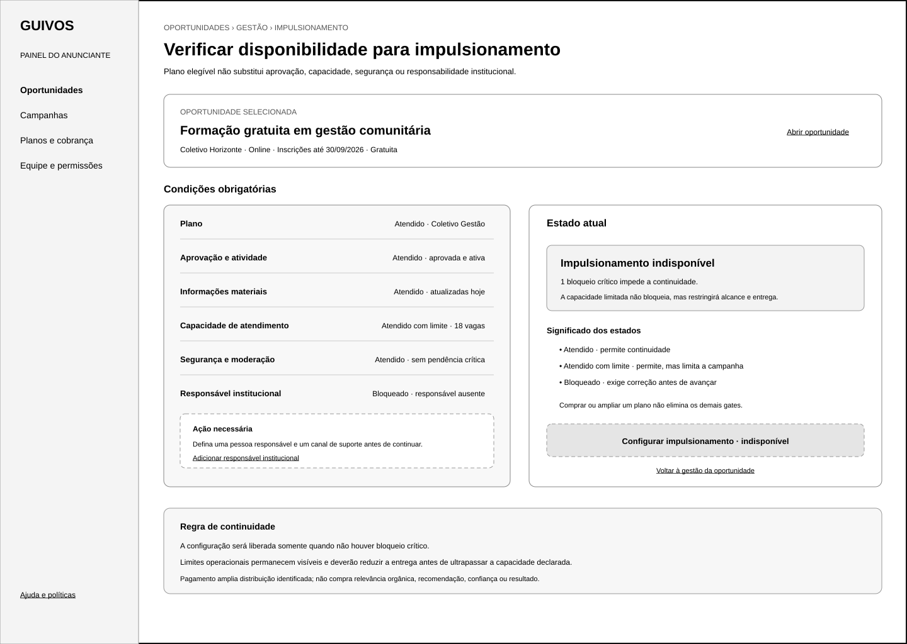
docs/assets/wireframes/uxa-040-opportunity-boost-eligibility-desktop.svg
Demonstra:
- oportunidade selecionada;
- plano atual;
- aprovação e atividade;
- atualização das informações materiais;
- capacidade disponível;
- responsável institucional;
- pendências de segurança ou moderação;
- estados
Atendido,Atendido com limiteeBloqueado; - quantidade de bloqueios críticos;
- ação principal disponível somente quando nenhum bloqueio permanecer;
- ações corretivas específicas.
4.2 Objetivo e critérios de distribuição¶
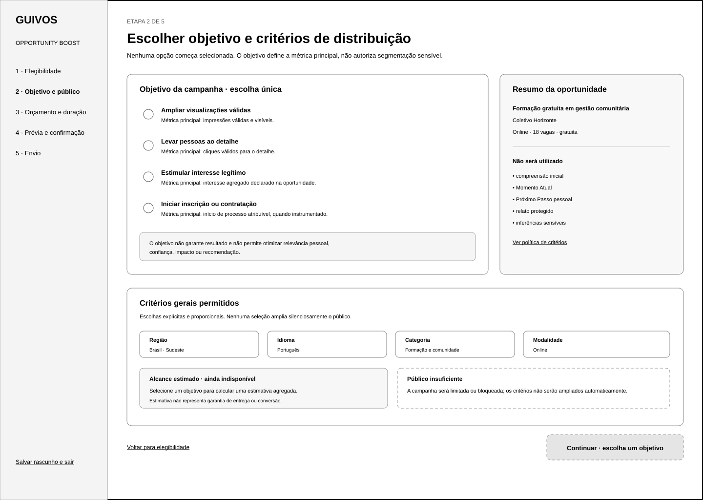
docs/assets/wireframes/uxa-040-opportunity-boost-objective-audience-desktop.svg
Demonstra:
- objetivo único sem seleção automática;
- métrica principal associada;
- critérios escolhidos pelo anunciante;
- controles visuais de seleção e revisão;
- critérios expressamente proibidos;
- estimativa indisponível enquanto faltar objetivo;
- regra de público insuficiente separada do estado atual;
- ausência de ampliação automática.
4.3 Orçamento, duração e estimativa¶
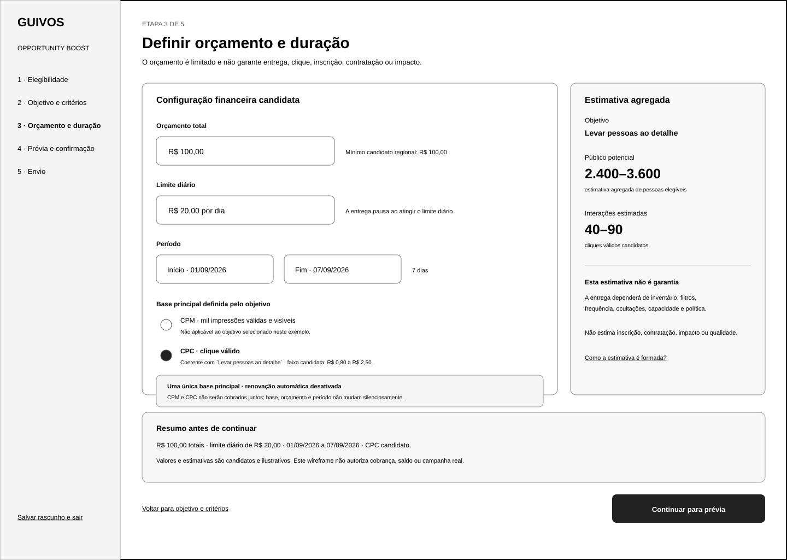
docs/assets/wireframes/uxa-040-opportunity-boost-budget-schedule-desktop.svg
Demonstra:
- orçamento total;
- limite diário;
- início e término;
- base principal derivada do objetivo;
- CPC coerente com objetivo de clique no exemplo;
- proibição de cobrança simultânea por CPM e CPC;
- ausência de renovação automática;
- estimativa agregada;
- aviso de que estimativa não representa garantia;
- tratamento de orçamento abaixo do mínimo candidato.
4.4 Prévia e confirmação¶
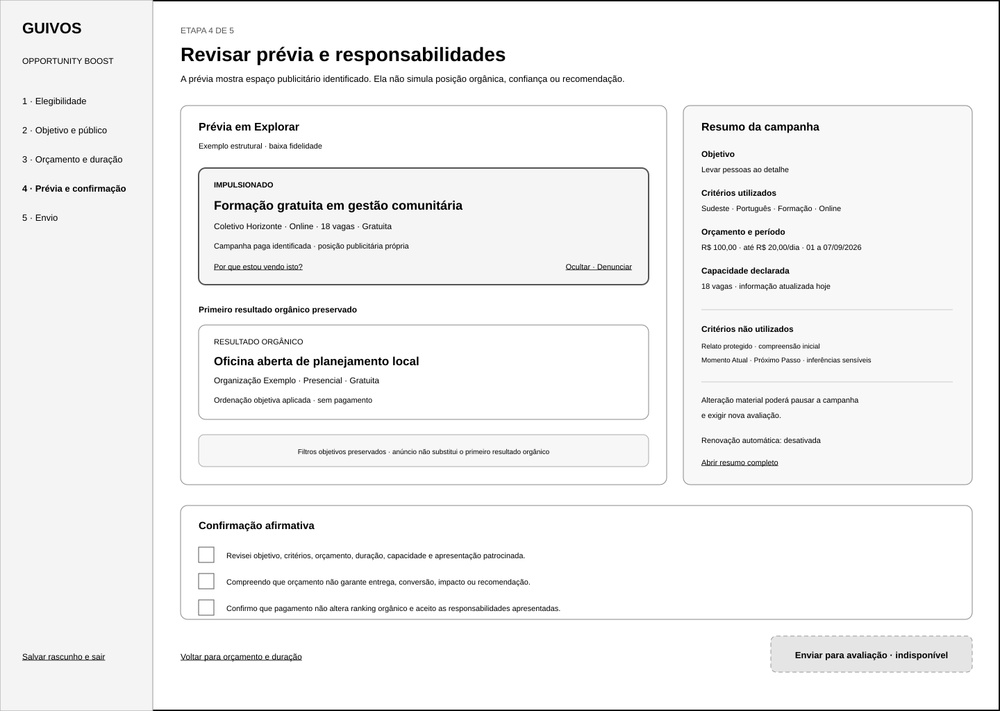
docs/assets/wireframes/uxa-040-opportunity-boost-preview-confirmation-desktop.svg
Demonstra:
- primeiro resultado orgânico anterior ao anúncio;
- espaço patrocinado identificado depois do primeiro orgânico;
- ação
Por que estou vendo isto?; - controles para ocultar e denunciar;
- resumo de objetivo, base, critérios, orçamento, duração e capacidade;
- critérios proibidos e não utilizados;
- consequências de alteração material;
- renovação automática desativada;
- confirmações afirmativas inicialmente desmarcadas.
4.5 Envio para avaliação¶
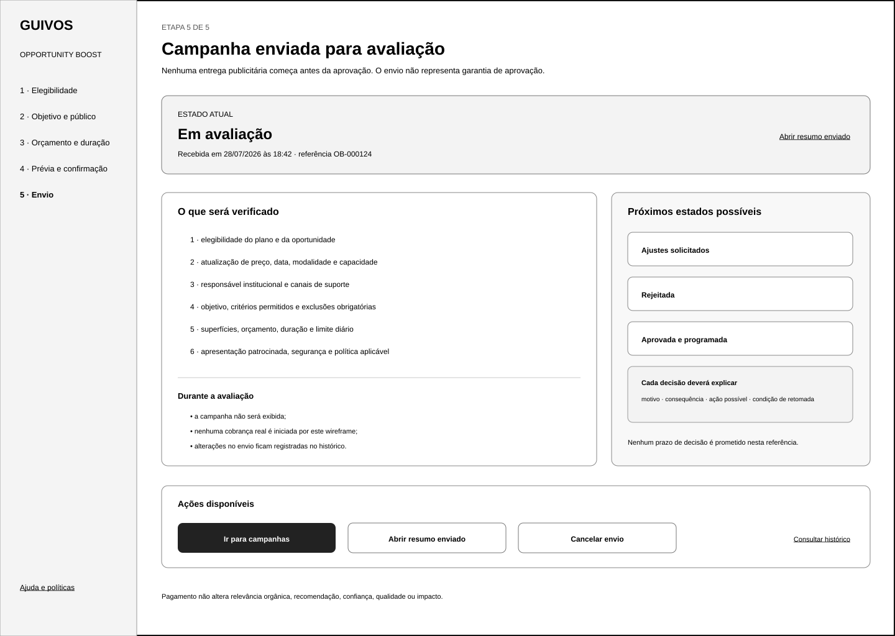
docs/assets/wireframes/uxa-040-opportunity-boost-submission-desktop.svg
Demonstra:
- campanha recebida para avaliação;
- estado
Em avaliação; - itens que serão verificados;
- ausência de entrega antes da aprovação;
- ausência de cobrança real neste artefato;
- possibilidade de cancelar o envio;
- cancelamento com retorno ao rascunho;
- acesso ao histórico e ao resumo enviado;
- próximos estados possíveis sem promessa de aprovação.
5. Resultado funcional¶
A pergunta funcional do conjunto é:
O anunciante compreende por que pode ou não impulsionar, escolhe conscientemente objetivo, critérios, orçamento e duração, distingue estimativa de garantia, revisa a apresentação patrocinada e envia a campanha sem acreditar que comprou relevância orgânica, recomendação ou resultado?
A UXA-041 considera o conjunto funcionalmente válido após reformulação.
6. Gate de elegibilidade¶
A superfície diferencia:
Atendido
→ permite continuidade
Atendido com limite
→ permite continuidade, mas limita alcance ou entrega
Bloqueado
→ impede continuidade e exige correção
A ação Configurar impulsionamento permanece indisponível enquanto existir qualquer bloqueio crítico:
- plano não elegível;
- oportunidade não aprovada;
- oportunidade inativa ou expirada;
- informações materiais desatualizadas;
- capacidade inexistente;
- pendência crítica de segurança ou moderação;
- responsável institucional ausente.
A contratação de plano não elimina exigências de aprovação, capacidade ou segurança.
7. Objetivo e critérios¶
O anunciante deverá escolher uma única finalidade de distribuição. Nenhuma opção começa selecionada.
Os critérios permitidos deverão:
- ser escolhidos ou confirmados explicitamente;
- apresentar origem objetiva;
- permitir revisão e remoção;
- permanecer proporcionais à oportunidade;
- nunca ser ampliados silenciosamente.
Critérios proibidos permanecem fora da seleção:
- relato protegido;
- compreensão inicial;
- Momento Atual;
- Próximo Passo;
- inferências sensíveis.
Público insuficiente será apresentado como exceção própria, com motivo, consequência e revisão manual possível.
8. Orçamento, duração e base principal¶
A superfície evidencia:
- orçamento total limitado;
- limite diário;
- período explícito;
- ausência de renovação automática por padrão;
- uma única base principal;
- coerência entre objetivo e base;
- proibição de CPM e CPC simultâneos;
- orçamento mínimo candidato aplicável;
- estimativa agregada sem garantia.
No exemplo validado:
Objetivo: levar pessoas ao detalhe
→ métrica principal: clique válido
→ base candidata: CPC
Valores exibidos são ilustrativos e não constituem cobrança autorizada.
9. Prévia e confirmação¶
A prévia separa visualmente:
- primeiro resultado orgânico;
- espaço patrocinado identificado;
- explicação da distribuição;
- filtros objetivos;
- controles da pessoa.
A confirmação final permanece indisponível até que o anunciante:
- revise o resumo;
- reconheça que orçamento não garante resultado;
- reconheça que pagamento não altera ranking orgânico;
- aceite as responsabilidades aplicáveis por ação afirmativa.
10. Estado de envio e cancelamento¶
Depois do envio:
- a campanha entra em
Em avaliação; - nenhuma entrega publicitária começa;
- o anunciante pode abrir o resumo enviado;
- ajustes solicitados, rejeição e aprovação permanecem estados distintos;
- nenhum prazo ou aprovação é prometido.
A ação Cancelar envio deverá declarar:
Cancelar encerra a avaliação e devolve a campanha ao estado de rascunho. Nenhuma entrega começa e nenhuma cobrança real é iniciada por este artefato.
O histórico da decisão permanece acessível.
11. Acessibilidade e linguagem¶
- estados não dependem apenas de cor;
- controles possuem rótulos textuais;
- escolhas únicas e múltiplas possuem convenções distintas;
- campos obrigatórios são identificados em linguagem clara;
- bloqueios informam ação corretiva;
- valores utilizam formato monetário pt-BR;
- nenhuma urgência, culpa ou escassez artificial é utilizada;
- termos técnicos aparecem somente como referência secundária.
12. Limites¶
Este incremento não cria:
- cartão patrocinado independente para a pessoa;
- explicação completa
Por que estou vendo isto?; - estados patrocinados para Lista ou Mapa;
- gestão de campanha ativa;
- relatório agregado do anunciante;
- teste com usuários;
- design visual;
- protótipo;
- campanha, algoritmo, checkout, cobrança ou Engenharia de Produto.
13. Próximos atos governados¶
Após integração e nova autorização, poderão ocorrer separadamente:
- criar wireframes do cartão patrocinado e da explicação de distribuição;
- criar estados patrocinados para Lista e Mapa;
- criar wireframes de gestão da campanha ativa;
- criar wireframe do relatório agregado;
- validar o conjunto completo de wireframes do Opportunity Boost.
Nenhum ato é iniciado automaticamente.
Validação Funcional e Reformulação dos Wireframes do Fluxo do Anunciante do Opportunity Boost¶
1. Finalidade¶
Este documento valida funcionalmente os cinco wireframes para computador criados pela UXA-040 e registra as reformulações necessárias para que elegibilidade, objetivo, critérios, orçamento, prévia e envio preservem transparência, voluntariedade e separação entre publicidade e relevância orgânica.
A pergunta de validação é:
O anunciante compreende por que pode ou não impulsionar, escolhe conscientemente objetivo, critérios, orçamento e duração, distingue estimativa de garantia, revisa a apresentação patrocinada e envia a campanha sem acreditar que comprou relevância orgânica, recomendação ou resultado?
2. Resultado¶
O conjunto é considerado funcionalmente válido após reformulação.
A validação não aprova design visual, textos jurídicos, política publicitária final, algoritmo, precificação, cobrança, acessibilidade técnica, protótipo, teste com usuários ou Engenharia de Produto.
3. Escopo examinado¶
Foram examinados:
- elegibilidade do plano e da oportunidade;
- estados atendido, limitado e bloqueado;
- objetivo único e métrica principal;
- critérios escolhidos e critérios proibidos;
- público estimado insuficiente;
- orçamento total, limite diário e duração;
- coerência entre objetivo e base de cobrança;
- estimativa agregada sem garantia;
- ordem entre resultado orgânico e espaço patrocinado;
- confirmação afirmativa;
- envio para avaliação;
- cancelamento, histórico e próximos estados.
4. Lacunas identificadas¶
4.1 Atenção e bloqueio pouco distinguíveis¶
A capacidade aparecia como Atenção, mas a superfície não informava se essa condição impedia o avanço ou apenas limitava a campanha.
4.2 Critérios pareciam aplicados automaticamente¶
Região, idioma, categoria e modalidade eram exibidos preenchidos, sem indicar que haviam sido escolhidos ou confirmados pelo anunciante.
4.3 Estado de público insuficiente parecia ativo simultaneamente¶
A regra de exceção para público insuficiente aparecia ao lado do estado inicial sem objetivo, podendo ser interpretada como diagnóstico atual da campanha.
4.4 Base de cobrança incompatível com o objetivo¶
O exemplo selecionava o objetivo Levar pessoas ao detalhe, cuja métrica é clique válido, mas apresentava CPM como base principal da campanha.
4.5 Prévia contrariava a preservação do primeiro resultado orgânico¶
O cartão impulsionado era exibido antes do resultado orgânico, embora a própria superfície declarasse que o primeiro resultado orgânico seria preservado.
4.6 Cancelamento sem consequência visível¶
A ação Cancelar envio não informava se a avaliação seria encerrada, se a campanha voltaria a rascunho ou se existiria entrega ou cobrança.
5. Reformulação aprovada¶
5.1 Semântica dos gates¶
Cada condição passa a utilizar uma das três naturezas:
Atendido— permite continuidade;Atendido com limite— permite continuidade, mas limita alcance ou entrega;Bloqueado— impede continuidade e exige ação corretiva.
A superfície informa a quantidade de bloqueios críticos e deixa explícito que limite operacional não equivale a inelegibilidade.
5.2 Critérios afirmativos e revisáveis¶
Os critérios permitidos passam a ser apresentados como Critérios escolhidos pelo anunciante, com controles visuais de seleção, origem objetiva e ação para revisar ou remover.
Nenhum critério novo será adicionado silenciosamente quando a estimativa for pequena.
5.3 Exceção de público insuficiente¶
O estado passa a ser rotulado como Regra de exceção — não ativa neste exemplo, separado da estimativa atual.
Quando ativo, deverá informar:
- motivo;
- critérios responsáveis pela limitação;
- possibilidade de revisar manualmente;
- proibição de expansão automática;
- consequência: campanha limitada ou bloqueada.
5.4 Base principal coerente¶
Para o objetivo Levar pessoas ao detalhe, a base principal passa a ser CPC — clique válido.
A superfície declara que:
- a base deriva do objetivo e da política aplicável;
- somente uma base principal será utilizada;
- CPM e CPC não serão cobrados simultaneamente;
- a base não poderá ser alterada silenciosamente.
5.5 Ordem orgânica preservada¶
A prévia reformulada apresenta:
- primeiro resultado orgânico;
- espaço patrocinado identificado depois do primeiro orgânico;
- explicação de distribuição e controles;
- aviso de que a posição é publicitária e não altera ordenação orgânica.
5.6 Cancelamento compreensível¶
A superfície de envio passa a declarar:
Cancelar encerra a avaliação e devolve a campanha ao estado de rascunho. Nenhuma entrega começa e nenhuma cobrança real é iniciada por este artefato.
A ação deverá exigir confirmação futura e preservar histórico da decisão.
6. Critérios funcionais confirmados¶
Após a reformulação, o conjunto demonstra que:
- plano elegível não substitui aprovação, capacidade, segurança ou responsável;
- estados atendido, limitado e bloqueado possuem consequências distintas;
- objetivo único começa desmarcado;
- métrica principal é compreensível;
- critérios utilizados são escolhidos e revisáveis;
- critérios protegidos permanecem excluídos;
- público insuficiente não provoca expansão automática;
- orçamento, limite diário e duração são explícitos;
- base principal é coerente com o objetivo;
- somente uma base de cobrança principal é utilizada;
- estimativa não equivale a garantia;
- primeiro resultado orgânico aparece antes do espaço patrocinado;
- anúncio é identificado antes da interação;
- confirmação final começa desmarcada;
- envio não inicia entrega;
- ajustes, rejeição e aprovação permanecem estados distintos;
- cancelamento possui efeito conhecido;
- histórico permanece acessível.
7. Estado dos artefatos reformulados¶
A referência validada contém:
uxa-040-opportunity-boost-eligibility-desktop.svg;uxa-040-opportunity-boost-objective-audience-desktop.svg;uxa-040-opportunity-boost-budget-schedule-desktop.svg;uxa-040-opportunity-boost-preview-confirmation-desktop.svg;uxa-040-opportunity-boost-submission-desktop.svg.
Todos permanecem em baixa fidelidade, com dimensão de referência de 1.440 × 1.024 pixels.
8. Proteções preservadas¶
- pagamento não compra relevância, confiança, recomendação ou impacto;
- compreensão inicial, Momento Atual e Próximo Passo não alimentam segmentação;
- critérios protegidos não aparecem como opções;
- oferta orgânica permanece visível;
- estimativas permanecem agregadas;
- nenhuma renovação automática é habilitada por padrão;
- nenhum orçamento é aumentado automaticamente;
- nenhum envio inicia campanha ou cobrança;
- nenhum prazo ou aprovação é prometido.
9. Limites¶
Esta validação não cria:
- cartão patrocinado independente para a pessoa;
- explicação completa
Por que estou vendo isto?; - estados patrocinados para Lista ou Mapa;
- gestão de campanha ativa;
- relatório agregado;
- teste com usuários;
- design visual;
- protótipo;
- algoritmo, checkout, cobrança ou Engenharia de Produto.
10. Próximos atos governados¶
Após integração e nova autorização, poderão ocorrer separadamente:
- criar wireframes do cartão patrocinado e da explicação de distribuição;
- criar estados patrocinados para Lista e Mapa;
- criar wireframes de gestão da campanha ativa;
- criar wireframe do relatório agregado;
- validar funcionalmente o conjunto completo de wireframes do Opportunity Boost.
Nenhum ato é iniciado automaticamente.
Wireframes de Baixa Fidelidade do Cartão Patrocinado e da Explicação do Opportunity Boost¶
1. Finalidade¶
Este documento materializa as referências de baixa fidelidade do cartão patrocinado e da explicação Por que estou vendo isto? para o Opportunity Boost.
O conjunto representa a experiência da pessoa diante de uma oportunidade distribuída em inventário patrocinado identificado, preservando:
- primeiro resultado orgânico;
- separação entre posição paga e ordenação orgânica;
- natureza comercial anterior ao conteúdo;
- anunciante ou financiador identificado;
- preço ou gratuidade;
- critérios gerais utilizados;
- critérios protegidos não utilizados;
- controles de ocultação, redução, desativação, preferência, denúncia e contestação;
- reversibilidade das preferências;
- variação própria para Boost Social Financiado.
O conjunto não representa design final, algoritmo, perfil publicitário, campanha real, política jurídica final, protótipo, teste com usuários ou Engenharia de Produto.
2. Resultado funcional¶
A pergunta funcional do conjunto é:
A pessoa reconhece antes da interação que o conteúdo é patrocinado, compreende por que foi distribuído, distingue publicidade de recomendação e correspondência orgânica, conhece os critérios utilizados e não utilizados e consegue controlar ou contestar a experiência sem perder o catálogo orgânico?
A UXA-043 respondeu afirmativamente após reformulação dos seis artefatos.
O conjunto é considerado funcionalmente válido após reformulação, sem equivaler a teste de usabilidade, design ou implementação.
3. Canal e dimensões¶
| Artefato | Canal | Dimensão |
|---|---|---|
| cartão patrocinado padrão | aplicativo móvel | 390 × 844 |
| explicação patrocinada padrão | aplicativo móvel | 390 × 844 |
| cartão patrocinado padrão | web para computador | 1.440 × 1.024 |
| explicação patrocinada padrão | web para computador | 1.440 × 1.024 |
| cartão de Boost Social Financiado | aplicativo móvel | 390 × 844 |
| explicação do Boost Social Financiado | aplicativo móvel | 390 × 844 |
Todos os artefatos utilizam baixa fidelidade e conteúdo ilustrativo.
4. Artefatos visuais reformulados¶
4.1 Cartão patrocinado móvel¶
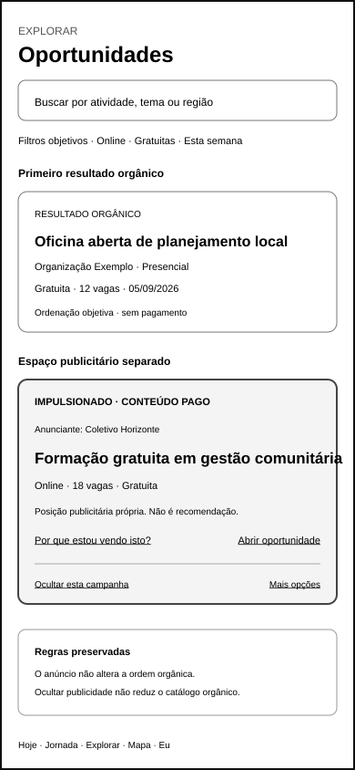
docs/assets/wireframes/uxa-042-sponsored-card-mobile.svg
Demonstra:
- primeiro resultado orgânico anterior ao espaço patrocinado;
- selo
Impulsionado · Conteúdo pagoantes do título; - anunciante identificado;
- gratuidade, modalidade, capacidade e data;
- declaração de que posição paga não é recomendação;
- ação
Por que estou vendo isto?; - ocultação limitada à campanha;
- acesso nomeado aos controles do anúncio;
- preferências revisáveis e reversíveis.
4.2 Explicação patrocinada móvel¶
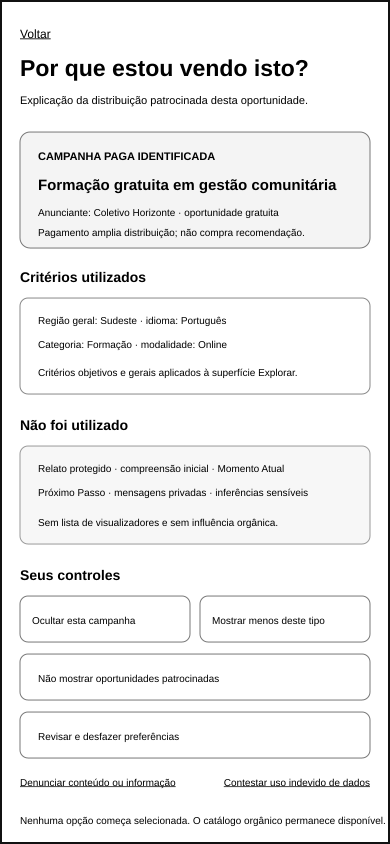
docs/assets/wireframes/uxa-042-sponsored-explanation-mobile.svg
Demonstra:
- campanha paga identificada;
- oportunidade e anunciante;
- critérios gerais utilizados;
- critérios expressamente não utilizados;
- ausência de lista de visualizadores;
- ausência de influência sobre correspondência orgânica;
- ocultação da campanha;
- redução de conteúdos semelhantes;
- desativação de oportunidades patrocinadas;
- revisão e reversão de preferências;
- denúncia e contestação como fluxos separados.
4.3 Cartão patrocinado para computador¶
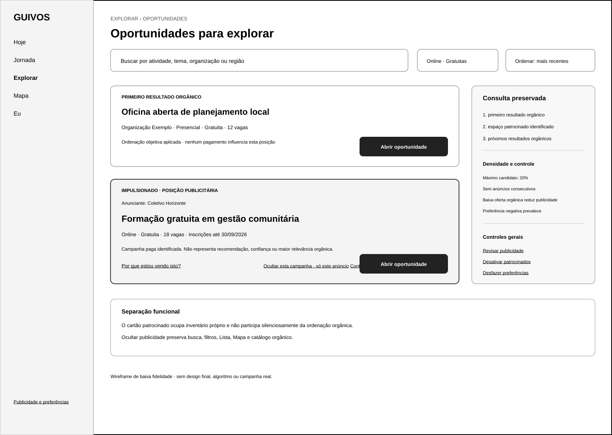
docs/assets/wireframes/uxa-042-sponsored-card-desktop.svg
Demonstra:
- consulta e filtros objetivos preservados;
- primeiro resultado orgânico;
- espaço patrocinado posterior e delimitado;
- identificação comercial anterior ao conteúdo;
- densidade, frequência e baixa oferta orgânica como regras separadas;
- ocultação limitada à campanha;
- destino compreensível dos controles gerais;
- ausência de alteração da ordenação orgânica.
4.4 Explicação patrocinada para computador¶
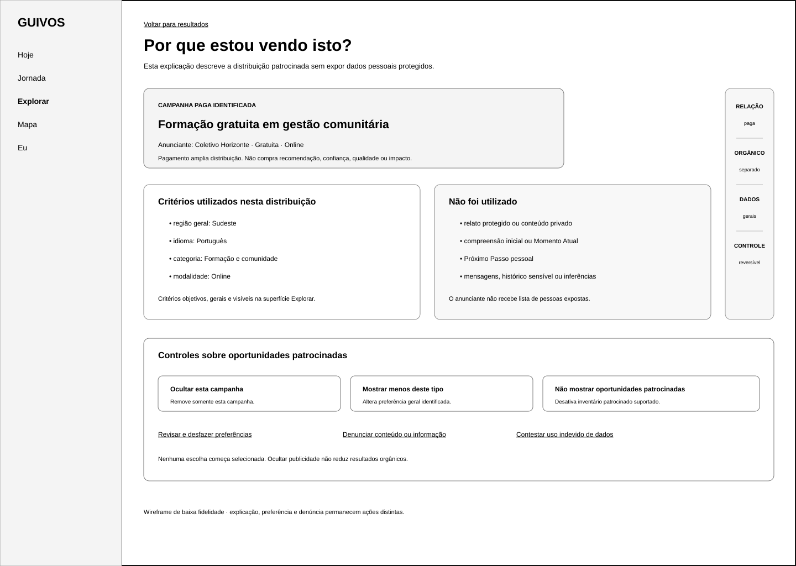
docs/assets/wireframes/uxa-042-sponsored-explanation-desktop.svg
Demonstra:
- relação paga;
- inventário orgânico separado;
- critérios gerais utilizados;
- dados protegidos e contextos pessoais não utilizados;
- ausência de lista de pessoas expostas;
- correspondência orgânica tratada separadamente quando existir;
- controles com escopos distintos;
- preferência reversível;
- denúncia e contestação separadas.
4.5 Cartão móvel do Boost Social Financiado¶
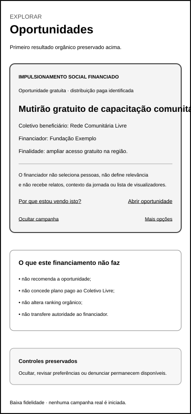
docs/assets/wireframes/uxa-042-social-financed-card-mobile.svg
Demonstra:
- primeiro resultado orgânico materializado;
- rótulo
Impulsionamento social financiadoposterior ao orgânico; - oportunidade gratuita;
- Coletivo beneficiário;
- Organização ou parceiro financiador;
- finalidade declarada do financiamento;
- ausência de autoridade do financiador;
- ausência de transferência de plano pago;
- controles equivalentes aos demais conteúdos patrocinados.
4.6 Explicação móvel do Boost Social Financiado¶
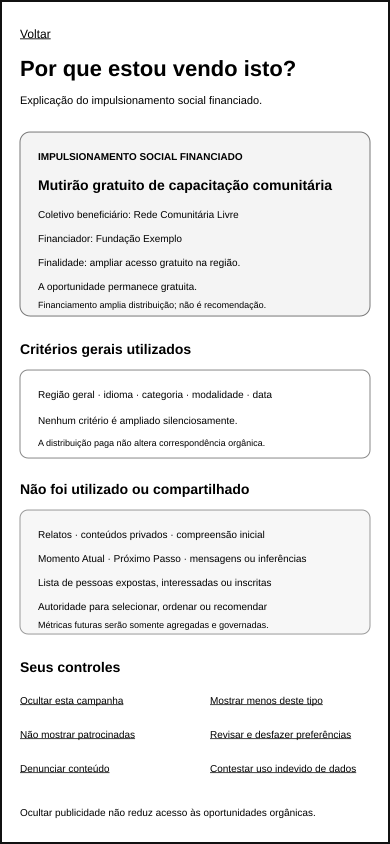
docs/assets/wireframes/uxa-042-social-financed-explanation-mobile.svg
Demonstra:
- financiador e beneficiário identificados;
- finalidade e gratuidade;
- declaração de que financiamento não é recomendação;
- critérios gerais utilizados;
- ausência de ampliação silenciosa;
- dados e poderes não concedidos ao financiador;
- métricas futuras somente agregadas;
- ocultação, redução, desativação, reversão, denúncia e contestação separadas.
5. Ordem orgânica e inventário patrocinado¶
As referências demonstram a seguinte ordem:
consulta e filtros objetivos
→ primeiro resultado orgânico
→ espaço patrocinado identificado
→ próximos resultados orgânicos
O cartão patrocinado:
- não substitui o primeiro resultado orgânico;
- não participa silenciosamente do ranking;
- não recebe selo de recomendação;
- não apresenta aderência pessoal comprada;
- não transforma pagamento em qualidade, confiança ou impacto;
- não aumenta quando houver pouca oferta orgânica.
A mesma ordem é materializada na variação de Boost Social Financiado.
A densidade candidata máxima permanece em 20%, sem duas unidades patrocinadas consecutivas e com redução da publicidade quando faltar inventário orgânico.
6. Identificação anterior ao conteúdo¶
A natureza comercial deverá ser reconhecível antes do título da oportunidade por:
- rótulo textual;
- posição própria;
- anunciante ou financiador;
- informação de gratuidade ou preço;
- linguagem sem ambiguidade entre anúncio e recomendação.
Cor, ícone ou borda não poderão ser o único meio de identificação.
7. Explicação de distribuição¶
A explicação separa:
Motivo
→ campanha paga identificada
Critérios utilizados
→ região, idioma, categoria, modalidade, data, preço ou preferência geral permitida
Critérios não utilizados
→ relato protegido, compreensão inicial, Momento Atual, Próximo Passo, mensagens e inferências sensíveis
Controles
→ ocultar, mostrar menos, desativar patrocinados, revisar preferências, denunciar ou contestar
Quando existir correspondência orgânica legítima para a mesma oportunidade, a interface deverá explicar separadamente:
- razão orgânica;
- condição patrocinada;
- critérios de cada uma;
- ausência de influência do pagamento sobre a correspondência.
Quando não existir correspondência orgânica naquele caso, a explicação poderá declarar essa condição sem criar aderência artificial.
8. Controles e escopos¶
Ocultar esta campanharemove somente a campanha específica nas superfícies aplicáveis;Mostrar menos deste tipoaltera preferência geral identificada;Não mostrar oportunidades patrocinadasdesativa inventário patrocinado nas superfícies suportadas;Revisar e desfazer preferênciaspermite compreender e reverter escolhas anteriores;Denunciar conteúdo ou informaçãoabre fluxo de integridade e não equivale a preferência;Contestar uso indevido de dadosabre fluxo separado de privacidade e governança.
Nenhuma opção começa selecionada.
Ocultar publicidade não poderá:
- reduzir acesso ao catálogo orgânico;
- ocultar oportunidades orgânicas da mesma categoria;
- ser interpretado como desinteresse orgânico;
- impedir busca, filtros, Lista ou Mapa;
- ser contornado por outra campanha equivalente.
9. Boost Social Financiado¶
A variação social apresenta:
- Coletivo beneficiário;
- financiador;
- finalidade do financiamento;
- oportunidade gratuita;
- ausência de seleção individual pelo financiador;
- ausência de autoridade sobre relevância, ordem ou resultado;
- ausência de acesso a relato, compreensão, jornada ou lista de pessoas;
- ausência de concessão automática de plano pago ao Coletivo Livre.
A experiência declara que financiamento amplia distribuição e não constitui recomendação institucional da Guivos.
10. Acessibilidade e linguagem¶
- leitores de tela deverão anunciar a natureza comercial antes do conteúdo;
- identificação patrocinada não dependerá somente de cor;
- anunciante, financiador e beneficiário terão rótulos textuais;
- preço e gratuidade permanecerão compreensíveis;
- ações terão nome, escopo e consequência;
- preferência, denúncia e contestação serão distinguíveis;
- o retorno ao catálogo orgânico permanecerá evidente;
- não serão usados padrões de urgência, culpa ou escassez artificial.
11. Limites¶
Este incremento não cria:
- estados patrocinados para Lista ou Mapa;
- wireframes de gestão da campanha ativa;
- relatório agregado do anunciante;
- design visual;
- protótipo navegável;
- teste com usuários;
- algoritmo, perfil publicitário ou motor de entrega;
- checkout, cobrança ou Engenharia de Produto.
12. Próximos atos governados¶
Após integração e nova autorização, poderão ocorrer separadamente:
- criar estados patrocinados para Lista e Mapa;
- validar funcionalmente e reformular esses estados;
- criar wireframes de gestão da campanha ativa;
- criar wireframe do relatório agregado;
- validar funcionalmente o conjunto completo de wireframes do Opportunity Boost.
Nenhum ato é iniciado automaticamente.
Validação Funcional e Reformulação dos Wireframes do Cartão Patrocinado e da Explicação do Opportunity Boost¶
1. Finalidade¶
Este documento valida funcionalmente os seis wireframes criados pela UXA-042 e registra as reformulações necessárias para que cartão, explicação, controles e Boost Social Financiado preservem transparência comercial, autonomia, separação orgânica e proteção de dados.
A pergunta de validação é:
A pessoa reconhece antes da interação que o conteúdo é patrocinado, entende quem pagou e por quê, distingue distribuição paga de recomendação e correspondência orgânica, conhece os critérios utilizados e excluídos e consegue ocultar, reduzir, desativar, revisar, denunciar ou contestar sem perder o catálogo orgânico?
2. Resultado¶
O conjunto é considerado funcionalmente válido após reformulação.
A validação não aprova design visual, textos jurídicos finais, algoritmo, perfil publicitário, política de categorias, precificação, cobrança, acessibilidade técnica, protótipo, teste com usuários ou Engenharia de Produto.
3. Escopo examinado¶
Foram examinados:
- cartão patrocinado padrão para aplicativo móvel;
- explicação patrocinada padrão para aplicativo móvel;
- cartão patrocinado padrão para computador;
- explicação patrocinada padrão para computador;
- cartão móvel do Boost Social Financiado;
- explicação móvel do Boost Social Financiado;
- identificação comercial anterior ao conteúdo;
- ordem entre primeiro resultado orgânico e espaço patrocinado;
- anunciante, financiador e beneficiário;
- preço ou gratuidade;
- critérios utilizados e não utilizados;
- correspondência orgânica eventualmente coexistente;
- ocultação, redução, desativação e reversão de preferências;
- denúncia e contestação de dados;
- acessibilidade e linguagem clara.
4. Lacunas identificadas¶
4.1 Denúncia e contestação combinadas no móvel¶
A explicação móvel apresentava Denunciar conteúdo ou uso indevido, reunindo em uma única ação dois fluxos funcionalmente distintos:
- problema no conteúdo ou na informação da oportunidade;
- possível uso indevido de dados ou critérios de distribuição.
A combinação poderia ocultar o destino, a consequência e a governança própria de cada ação.
4.2 Controles móveis incompletos¶
A versão móvel não apresentava de forma explícita todos os escopos estabelecidos pelo contrato:
- ocultar somente a campanha;
- mostrar menos daquele tipo;
- desativar oportunidades patrocinadas;
- revisar e desfazer preferências.
A ação genérica Revisar publicidade e preferências não permitia compreender a diferença entre os efeitos.
4.3 Primeiro resultado orgânico apenas declarado na variação social¶
O cartão do Boost Social Financiado dizia que o primeiro resultado orgânico estava preservado acima, mas não materializava esse resultado no próprio artefato.
A declaração sem representação visual não demonstrava a ordem funcional e poderia permitir interpretação divergente na etapa posterior de design.
4.4 Coexistência entre correspondência orgânica e distribuição paga não explicitada¶
A explicação para computador separava inventário orgânico e patrocinado, mas não indicava como informar a pessoa quando a mesma oportunidade também possuísse correspondência orgânica legítima.
Sem essa regra visível, pagamento e aderência orgânica poderiam ser percebidos como uma única razão.
4.5 Ação genérica de controles¶
Os cartões utilizavam Mais opções, expressão que não informava que o destino continha controles de publicidade, preferências, denúncia e contestação.
4.6 Financiamento social sem declaração direta de não recomendação¶
A variação social descrevia ausência de autoridade do financiador, mas a explicação não afirmava diretamente que financiamento amplia distribuição e não constitui recomendação.
5. Reformulação aprovada¶
5.1 Taxonomia de controles¶
Os controles passam a utilizar nomes e escopos distintos:
Ocultar esta campanha— remove somente a campanha específica;Mostrar menos deste tipo— altera uma preferência geral identificada;Não mostrar oportunidades patrocinadas— desativa o inventário patrocinado nas superfícies suportadas;Revisar e desfazer preferências— permite compreender e reverter escolhas anteriores;Denunciar conteúdo ou informação— abre o fluxo de integridade da oportunidade;Contestar uso indevido de dados— abre o fluxo separado de privacidade e governança.
Nenhuma escolha começa selecionada.
5.2 Controles móveis completos¶
A explicação móvel padrão e a explicação social financiada passam a apresentar todos os controles essenciais sem depender de uma ação genérica.
Denúncia e contestação permanecem separadas e não são registradas como preferência publicitária.
5.3 Ordem orgânica materializada no Boost Social Financiado¶
O cartão social passa a demonstrar:
primeiro resultado orgânico
→ espaço de impulsionamento social financiado
→ próximos resultados orgânicos
A oportunidade financiada não substitui o primeiro resultado orgânico e não participa silenciosamente da ordenação.
5.4 Correspondência orgânica coexistente¶
A explicação para computador passa a informar que, quando existir correspondência orgânica legítima para a mesma oportunidade, a interface deverá apresentar separadamente:
- razão orgânica;
- condição patrocinada;
- critérios de cada uma;
- ausência de influência do pagamento sobre a correspondência.
O exemplo reformulado também declara quando não existe correspondência orgânica naquele caso.
5.5 Destino compreensível dos controles¶
Mais opções é substituído por Controles do anúncio.
A ocultação imediata também informa só este anúncio, evitando que a pessoa interprete a ação como exclusão da categoria ou do catálogo orgânico.
5.6 Divulgação social financiada¶
A explicação social passa a declarar:
Financiamento amplia distribuição; não é recomendação.
Também diferencia:
- Coletivo beneficiário;
- financiador;
- finalidade;
- gratuidade;
- critérios gerais usados;
- dados não utilizados ou compartilhados;
- poderes não concedidos ao financiador;
- controles disponíveis para a pessoa.
6. Critérios funcionais confirmados¶
Após a reformulação, o conjunto demonstra que:
- a natureza comercial aparece antes do título e da ação principal;
- cor, borda ou ícone não são o único meio de identificação;
- o primeiro resultado orgânico aparece antes do espaço patrocinado;
- publicidade não é apresentada como recomendação, qualidade, confiança ou impacto;
- anunciante, financiador e beneficiário possuem rótulos próprios;
- preço ou gratuidade são compreensíveis;
- critérios utilizados são gerais, objetivos e visíveis;
- relato protegido, compreensão inicial, Momento Atual, Próximo Passo, mensagens e inferências sensíveis permanecem excluídos;
- o anunciante ou financiador não recebe lista de visualizadores;
- correspondência orgânica e distribuição paga são explicadas separadamente quando coexistirem;
- ocultação remove somente a campanha específica;
- redução, desativação e reversão possuem efeitos diferentes;
- denúncia e contestação são fluxos distintos;
- preferências negativas prevalecem sobre entrega contratada;
- ocultar publicidade não reduz busca, filtros, Lista, Mapa ou catálogo orgânico;
- financiamento social não transfere autoridade nem concede plano pago ao Coletivo beneficiário;
- nenhuma campanha, cobrança ou perfil publicitário é criado pelos artefatos.
7. Estado dos artefatos reformulados¶
A referência validada contém:
uxa-042-sponsored-card-mobile.svg;uxa-042-sponsored-explanation-mobile.svg;uxa-042-sponsored-card-desktop.svg;uxa-042-sponsored-explanation-desktop.svg;uxa-042-social-financed-card-mobile.svg;uxa-042-social-financed-explanation-mobile.svg.
Os artefatos permanecem em baixa fidelidade, com dimensões de referência de 390 × 844 pixels para móvel e 1.440 × 1.024 pixels para computador.
8. Proteções preservadas¶
- pagamento não compra relevância, recomendação, confiança, qualidade ou impacto;
- compreensão inicial, Momento Atual e Próximo Passo não alimentam publicidade;
- mensagens, relatos e inferências sensíveis permanecem excluídos;
- primeiro resultado orgânico permanece orgânico;
- baixa oferta orgânica reduz publicidade;
- duas unidades patrocinadas consecutivas permanecem proibidas;
- densidade candidata máxima permanece em 20%;
- nenhum financiador seleciona pessoas ou recebe autoridade funcional;
- nenhum controle é pré-selecionado;
- ocultação não reduz o catálogo orgânico;
- nenhuma métrica é apresentada como impacto humano comprovado.
9. Limites¶
Esta validação não cria:
- estados patrocinados para Lista ou Mapa;
- gestão de campanha ativa;
- relatório agregado do anunciante;
- design visual final;
- protótipo navegável;
- teste com usuários;
- algoritmo, perfil publicitário ou motor de entrega;
- política jurídica, fiscal ou contábil final;
- checkout, cobrança ou Engenharia de Produto.
10. Próximos atos governados¶
Após integração e nova autorização, poderão ocorrer separadamente:
- criar os wireframes dos estados patrocinados para Lista e Mapa;
- validar funcionalmente e reformular esses estados;
- criar os wireframes de gestão da campanha ativa;
- criar o wireframe do relatório agregado;
- validar funcionalmente o conjunto completo de wireframes do Opportunity Boost;
- testar posteriormente disclosure, densidade, frequência e controles com Pessoas, Organizações e Coletivos.
Nenhum ato é iniciado automaticamente.
Wireframes de Baixa Fidelidade dos Estados Patrocinados para Lista e Mapa¶
1. Finalidade¶
Este documento materializa os estados patrocinados do Opportunity Boost nas superfícies territoriais de Lista e Mapa.
O pacote demonstra como a publicidade identificada poderá coexistir com uma única consulta territorial sem:
- substituir o primeiro resultado orgânico;
- alterar silenciosamente busca, filtros ou ordenação;
- misturar resultados orgânicos e unidades pagas na mesma contagem;
- confundir filtros de oportunidades com preferência publicitária;
- transformar proximidade, seleção ou distância em afinidade;
- utilizar posição exata ou histórico territorial para publicidade;
- sobrepor marcador patrocinado a oportunidade orgânica;
- ampliar densidade quando houver pouca oferta orgânica;
- reduzir o catálogo orgânico quando a publicidade for ocultada;
- executar nova consulta somente porque o Mapa foi movido.
O conjunto não representa design final, tecnologia cartográfica, algoritmo, campanha real, perfil publicitário, cobrança, protótipo, teste com usuários ou Engenharia de Produto.
2. Estado de validação¶
A UXA-045 examinou os quatro artefatos e os considerou:
Funcionalmente válidos após reformulação.
As reformulações principais foram:
- separar contagens orgânicas e pagas;
- distinguir filtros de oportunidades e preferência publicitária;
- remover o percentual interno de densidade da superfície da pessoa;
- declarar o efeito sincronizado da ocultação em Lista e Mapa;
- nomear marcador e cartão patrocinados como seleção vinculada;
- preservar a ordem orgânica da Lista após seleção no Mapa;
- criar o gate explícito
Pesquisar nesta área.
Validação funcional não equivale a acessibilidade técnica, teste com usuários, protótipo ou implementação.
3. Pergunta funcional do conjunto¶
A pessoa distingue oportunidades orgânicas e patrocinadas nos dois modos, compreende o que pertence à consulta e o que pertence à preferência publicitária, mantém região, busca, filtros, seleção e privacidade ao alternar Lista e Mapa e consegue ocultar ou desativar publicidade sem perder o catálogo orgânico?
A UXA-045 responde positivamente após as reformulações registradas.
4. Artefatos e dimensões¶
| Artefato | Canal | Dimensão |
|---|---|---|
| Lista patrocinada territorial reformulada | aplicativo móvel | 390 × 844 |
| Lista patrocinada territorial reformulada | web para computador | 1.440 × 1.024 |
| Mapa patrocinado reformulado | aplicativo móvel | 390 × 844 |
| Mapa patrocinado reformulado | web para computador | 1.440 × 1.024 |
Todos os artefatos utilizam baixa fidelidade, dados ilustrativos e rótulos textuais independentes de cor.
5. Artefatos visuais¶
5.1 Lista patrocinada móvel¶
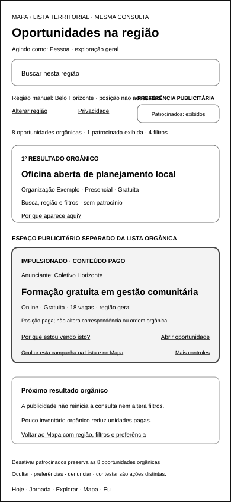
docs/assets/wireframes/uxa-044-sponsored-list-mobile.svg
Demonstra:
- Lista territorial pertencente à superfície Mapa;
- região manual e posição não acessada;
- preferência publicitária separada dos filtros;
- oito oportunidades orgânicas e uma patrocinada exibida;
- primeiro resultado orgânico;
- inventário pago posterior e delimitado;
- anunciante, gratuidade e natureza comercial;
- ocultação sincronizada na Lista e no Mapa;
- próximo resultado orgânico;
- retorno ao Mapa sem perda de contexto.
5.2 Lista patrocinada para computador¶
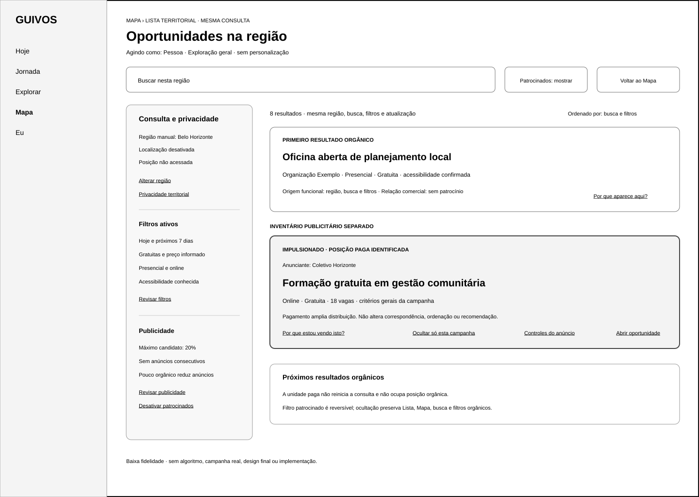
docs/assets/wireframes/uxa-044-sponsored-list-desktop.svg
Demonstra:
- consulta e privacidade em painel próprio;
- filtros de oportunidades separados da preferência publicitária;
- contagens orgânicas e pagas separadas;
- primeiro resultado orgânico anterior ao anúncio;
- unidade patrocinada separada da ordenação;
- publicidade limitada em linguagem funcional;
- controles de publicidade independentes dos filtros de negócio;
- continuidade para o Mapa.
5.3 Mapa patrocinado móvel¶
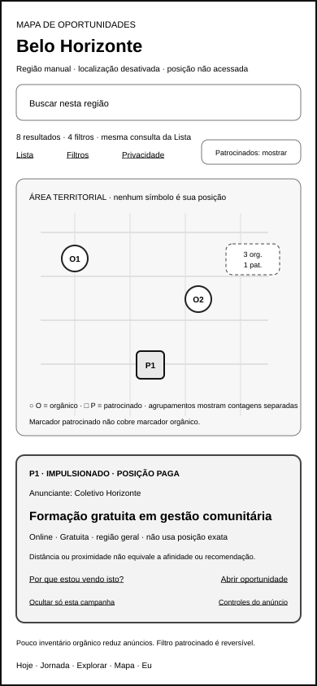
docs/assets/wireframes/uxa-044-sponsored-map-mobile.svg
Demonstra:
- mapa sem marcador da posição da pessoa;
- região manual e localização desativada;
- contagens orgânicas e pagas separadas;
- marcadores orgânicos circulares;
- marcador patrocinado quadrado, textual e selecionado;
- agrupamento com contagens orgânicas e patrocinadas separadas;
- ausência de sobreposição do marcador patrocinado;
- gate
Pesquisar nesta área; - cartão pago selecionado com explicação e controles;
- seleção sem alteração da ordem da Lista;
- preferência publicitária reversível.
5.4 Mapa patrocinado para computador¶
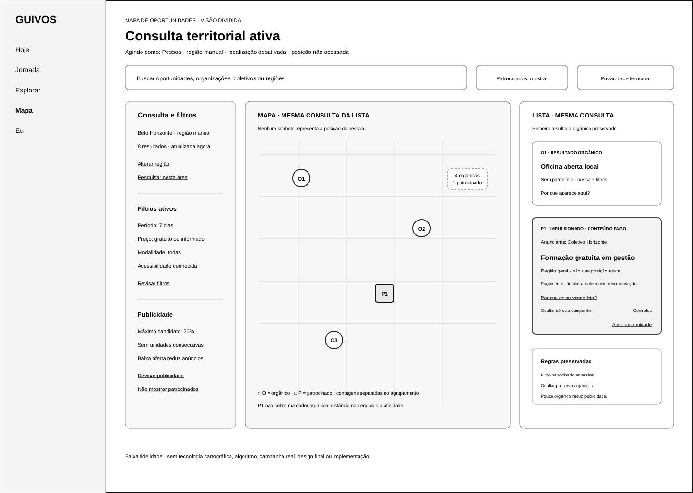
docs/assets/wireframes/uxa-044-sponsored-map-desktop.svg
Demonstra:
- visão dividida com consulta, Mapa e Lista sincronizados;
- localização opcional e região manual;
- filtros de oportunidades e preferência publicitária separados;
- marcadores orgânicos e patrocinados distintos;
- agrupamentos com contagens separadas;
- primeiro resultado orgânico preservado na Lista;
- marcador e cartão patrocinados vinculados pelo identificador
P1; - gate explícito para nova busca territorial;
- controles reversíveis e catálogo orgânico preservado.
6. Uma única consulta territorial¶
Lista e Mapa permanecem representações da mesma consulta.
Devem permanecer sincronizados:
- contexto
Agindo como; - região ou área territorial;
- busca;
- filtros de oportunidades;
- quantidade de resultados orgânicos;
- quantidade de unidades patrocinadas exibidas;
- preferência publicitária;
- atualização;
- seleção;
- explicação da origem;
- localização e privacidade.
Alternar entre Lista, Mapa, visão dividida ou foco não poderá iniciar uma nova campanha, alterar personalização, ativar localização ou reiniciar a consulta.
7. Contagens e ordem na Lista¶
A referência separa:
8 oportunidades orgânicas
1 oportunidade patrocinada exibida
4 filtros de oportunidades
A ordem demonstrada é:
primeiro resultado orgânico
→ inventário patrocinado identificado
→ próximos resultados orgânicos
A unidade patrocinada:
- não ocupa posição orgânica;
- não altera ordenação por busca e filtros;
- não recebe selo de recomendação;
- não substitui oportunidade organicamente selecionada;
- não é contabilizada como resultado orgânico;
- não pode aparecer consecutivamente com outra unidade paga.
Quando houver pouca oferta orgânica elegível, a quantidade de publicidade deverá ser reduzida. Ausência de inventário orgânico nunca aumenta densidade paga.
O limite candidato de 20% permanece uma proteção arquitetural para calibração e não aparece como filtro configurável pela pessoa.
8. Filtros de oportunidades e preferência publicitária¶
A interface separa:
8.1 Filtros de oportunidades¶
- período;
- preço;
- modalidade;
- acessibilidade;
- categoria e demais critérios de negócio permitidos.
8.2 Preferência publicitária¶
- mostrar oportunidades patrocinadas;
- ocultar uma campanha;
- mostrar menos daquele tipo;
- não mostrar oportunidades patrocinadas;
- revisar e desfazer preferências.
Alterar a preferência publicitária não modifica região, busca, filtros, quantidade orgânica, ordenação, localização ou privacidade.
O estado pertence à pessoa e não pode ser definido ou contornado pelo anunciante.
9. Marcadores, seleção e agrupamentos no Mapa¶
Os artefatos utilizam a convenção de baixa fidelidade:
Oem forma circular — oportunidade orgânica;Pem forma quadrada — oportunidade patrocinada;selecionado— estado textual do marcador e cartão vinculados;- agrupamento textual — contagens orgânicas e patrocinadas separadas.
Cor não poderá ser o único meio de diferenciação.
Um marcador patrocinado:
- não poderá cobrir marcador orgânico;
- não poderá substituir marcador orgânico em agrupamento;
- não poderá receber área visual desproporcional;
- deverá preservar identificador textual no cartão selecionado;
- deverá abrir explicação e controles equivalentes aos cartões patrocinados;
- não poderá ser interpretado como posição da pessoa;
- não altera a ordem da Lista quando selecionado;
- não gera correspondência, afinidade ou recomendação.
Agrupamentos deverão informar, por exemplo:
4 orgânicos
1 patrocinado
A contagem combinada sem separação é proibida.
10. Movimentação e pesquisa territorial¶
Mover, ampliar ou reduzir o Mapa não altera automaticamente a consulta.
A nova área exige ação explícita:
Pesquisar nesta área
Antes dessa ação, permanecem preservados:
- região vigente;
- busca;
- filtros;
- contagens;
- seleção;
- preferência publicitária;
- localização e privacidade.
Mover o Mapa não equivale a autorizar localização.
11. Localização e publicidade¶
O estado principal demonstra:
Região manual · localização desativada · posição não acessada
A publicidade poderá utilizar somente critérios territoriais gerais permitidos e visíveis.
Não poderá utilizar:
- posição exata para segmentação contínua;
- histórico territorial sensível;
- residência inferida;
- deslocamento ou rota pessoal;
- localização de participantes;
- endereço protegido;
- proximidade isolada como afinidade ou recomendação.
Quando localização aproximada for voluntariamente autorizada para a consulta, a explicação deverá distinguir uso territorial da consulta e critérios da campanha.
Mais espaço de tela não autoriza mais coleta.
12. Ocultação e demais controles¶
A unidade ou marcador patrocinado oferece:
Por que estou vendo isto?;Ocultar esta campanha na Lista e no Mapa;Mais controles;Abrir oportunidade.
A ocultação sincronizada:
- remove somente a campanha específica nos dois modos;
- preserva oportunidades orgânicas;
- preserva região, busca e filtros;
- preserva localização e privacidade;
- poderá ser revisada ou revertida conforme a política aplicável.
Ocultar, mostrar menos, desativar patrocinados, denunciar conteúdo e contestar uso de dados permanecem ações distintas.
A preferência negativa prevalece sobre entrega contratada.
13. Explicação da distribuição¶
A explicação deverá separar:
- condição paga;
- anunciante ou financiador;
- critérios gerais utilizados;
- critérios protegidos não utilizados;
- eventual correspondência orgânica legítima;
- ausência de influência do pagamento sobre a correspondência;
- localização utilizada pela consulta, quando aplicável;
- controles disponíveis.
Proximidade, seleção e distância não constituem recomendação.
14. Continuidade¶
Ao alternar entre Lista e Mapa, abrir o Detalhe ou retornar, deverão ser preservados quando aplicável:
- região;
- busca;
- filtros;
- ordenação orgânica;
- posição da Lista;
- área do Mapa;
- seleção;
- preferência publicitária;
- localização e privacidade;
- origem da navegação.
Selecionar uma unidade paga não altera prioridade, não gera correspondência orgânica e não autoriza personalização.
15. Acessibilidade e linguagem¶
- natureza patrocinada deverá ser anunciada antes do título;
- forma, texto e rótulo acompanharão qualquer uso de cor;
- contagens de agrupamentos serão textuais;
- Mapa terá alternativa integral em Lista;
- localização, preferência publicitária, seleção e relação comercial serão anunciáveis;
- marcador e cartão selecionados compartilharão identificador;
- controles terão nome, escopo e consequência;
- a interface não utilizará urgência, culpa ou escassez artificial;
- foco e leitura deverão preservar a ordem orgânico, patrocinado e orgânico;
Pesquisar nesta áreadeverá ser acionável sem depender de gesto cartográfico.
Esta referência não conclui acessibilidade técnica.
16. Proteções preservadas¶
- primeiro resultado orgânico permanece orgânico;
- pagamento não compra relevância, afinidade, confiança, qualidade ou impacto;
- compreensão inicial, Momento Atual e Próximo Passo não alimentam publicidade;
- localização permanece opcional;
- posição exata e histórico territorial não alimentam campanhas;
- marcador patrocinado não encobre oportunidade orgânica;
- agrupamento separa contagens;
- baixa oferta orgânica reduz publicidade;
- nenhuma unidade paga aparece consecutivamente;
- ocultação não reduz o catálogo orgânico;
- movimentação do Mapa não executa consulta automática;
- anunciante não recebe lista de visualizadores;
- nenhum perfil publicitário é criado pelo wireframe.
17. Limites¶
Este incremento não cria:
- estados de erro ou ausência de inventário patrocinado;
- gestão de campanha ativa;
- relatório agregado;
- algoritmo de entrega ou leilão;
- perfil publicitário;
- tecnologia cartográfica;
- geocodificação, rota ou rastreamento;
- política final de densidade ou frequência;
- design final;
- protótipo navegável;
- teste com usuários;
- checkout, cobrança ou Engenharia de Produto.
18. Próximos atos governados¶
Após integração e nova autorização, poderão ocorrer separadamente:
- criar os wireframes de gestão da campanha ativa;
- criar o wireframe do relatório agregado;
- validar funcionalmente o conjunto completo de wireframes do Opportunity Boost;
- criar estados de erro, inventário insuficiente e preferência publicitária;
- testar posteriormente disclosure, densidade, frequência, marcadores, localização e controles com Pessoas, Organizações e Coletivos.
Nenhum ato é iniciado automaticamente.
Validação Funcional e Reformulação dos Wireframes dos Estados Patrocinados para Lista e Mapa¶
1. Finalidade¶
Este documento valida funcionalmente os quatro wireframes criados pela UXA-044 e registra as reformulações necessárias para que Lista e Mapa preservem uma única consulta territorial, distinção orgânica, transparência publicitária, localização opcional e controles reversíveis.
A pergunta de validação é:
A pessoa distingue oportunidades orgânicas e patrocinadas nos dois modos, compreende o que pertence à consulta e o que pertence à preferência publicitária, mantém região, busca, filtros, seleção e privacidade ao alternar Lista e Mapa e consegue ocultar ou desativar publicidade sem perder o catálogo orgânico?
2. Resultado¶
O conjunto é considerado funcionalmente válido após reformulação.
A validação não aprova design visual final, tecnologia cartográfica, algoritmo, perfil publicitário, política de categorias, densidade definitiva, cobrança, acessibilidade técnica, protótipo, teste com usuários ou Engenharia de Produto.
3. Escopo examinado¶
Foram examinados:
- Lista patrocinada para aplicativo móvel;
- Lista patrocinada para computador;
- Mapa patrocinado para aplicativo móvel;
- Mapa patrocinado para computador;
- paridade entre Lista e Mapa;
- região, busca, filtros e atualização;
- quantidade de oportunidades orgânicas e unidades pagas;
- preferência publicitária;
- primeiro resultado orgânico;
- marcador patrocinado e agrupamentos;
- seleção entre marcador e cartão;
- movimentação da área territorial;
- localização e privacidade;
- ocultação, desativação, denúncia e contestação;
- densidade e baixa oferta orgânica;
- acessibilidade e linguagem clara.
4. Lacunas identificadas¶
4.1 Quantidade total ambígua¶
Os quatro artefatos apresentavam 8 resultados sem esclarecer se a quantidade incluía unidades patrocinadas.
A ambiguidade poderia:
- misturar catálogo orgânico e inventário pago;
- sugerir que pagamento criou uma oportunidade organicamente elegível;
- dificultar a comparação entre Lista e Mapa;
- impedir a pessoa de compreender o efeito de ocultar publicidade.
4.2 Preferência publicitária confundida com filtro de negócio¶
O controle Patrocinados: sim ou Patrocinados: mostrar aparecia junto de busca e filtros, sem declarar que se tratava de uma preferência publicitária separada.
A pessoa poderia interpretar que:
- patrocinado era uma categoria de oportunidade;
- alterar a preferência mudaria os filtros de negócio;
- desativar publicidade reduziria o catálogo orgânico;
- o anunciante controlava o estado do filtro.
4.3 Limite interno exposto como critério de interface¶
As referências para computador mostravam Máximo candidato: 20% como item do painel de publicidade.
O percentual é uma proteção arquitetural candidata e não uma decisão operacional que a pessoa precise configurar. A apresentação poderia criar falsa precisão, expectativa contratual ou interpretação de que densidade era um filtro pessoal.
4.4 Efeito da ocultação entre Lista e Mapa insuficiente¶
Os cartões ofereciam ocultação da campanha, mas não declaravam claramente que a mesma unidade seria removida nos dois modos sem afetar região, busca, filtros e resultados orgânicos.
4.5 Seleção territorial sem vínculo funcional explícito¶
O Mapa mostrava marcador P1 e cartão patrocinado, mas não nomeava o marcador como selecionado nem declarava que selecionar no Mapa não altera a ordem da Lista, afinidade ou recomendação.
4.6 Movimentação do Mapa sem gate visível¶
O Mapa não apresentava de forma suficientemente clara que mover ou ampliar a área não altera automaticamente a consulta.
Sem um gate explícito, a pessoa poderia perder o contexto territorial, acionar nova busca involuntariamente ou interpretar a movimentação como autorização de localização.
5. Reformulação aprovada¶
5.1 Contagens separadas¶
Lista e Mapa passam a apresentar, no exemplo:
8 oportunidades orgânicas
1 oportunidade patrocinada exibida
4 filtros de oportunidades
A quantidade orgânica permanece estável quando publicidade é ocultada ou desativada.
Unidades pagas não são contabilizadas como resultados orgânicos.
5.2 Filtros de oportunidades e preferência publicitária¶
A interface separa duas áreas:
Filtros de oportunidades— período, preço, modalidade, acessibilidade e demais critérios de negócio;Preferência publicitária— mostrar, ocultar, reduzir ou desativar oportunidades patrocinadas.
Alterar a preferência publicitária não modifica:
- região;
- busca;
- filtros de oportunidades;
- quantidade de resultados orgânicos;
- ordenação orgânica;
- localização ou privacidade.
O estado exibido representa a preferência atual da pessoa, não uma decisão do anunciante.
5.3 Densidade em linguagem funcional¶
O percentual candidato de 20% deixa de aparecer como controle da pessoa.
A interface utiliza linguagem funcional:
- publicidade limitada;
- unidades pagas nunca consecutivas;
- pouca oferta orgânica reduz publicidade.
A proteção quantitativa permanece na arquitetura e deverá ser calibrada posteriormente.
5.4 Ocultação sincronizada¶
A ação passa a informar:
Ocultar esta campanha na Lista e no Mapa.
A consequência é:
- remover somente a campanha específica nos dois modos;
- preservar oportunidades orgânicas;
- preservar região, busca e filtros;
- preservar localização e privacidade;
- permitir revisão e reversão conforme a política aplicável.
Ocultar, mostrar menos, desativar patrocinados, denunciar conteúdo e contestar dados permanecem ações distintas.
5.5 Seleção do marcador patrocinado¶
O marcador P1 passa a possuir estado textual selecionado e vínculo explícito com o cartão P1 selecionado.
A interface declara:
- selecionar no Mapa não muda a ordem da Lista;
- seleção não cria correspondência orgânica;
- proximidade não equivale a afinidade;
- marcador pago não é a posição da pessoa;
- seleção não autoriza personalização.
5.6 Gate Pesquisar nesta área¶
Mover, ampliar ou reduzir o Mapa não altera automaticamente a consulta.
A atualização territorial exige ação explícita:
Pesquisar nesta área
Antes da confirmação, permanecem preservados:
- região vigente;
- busca;
- filtros;
- quantidade de resultados;
- seleção;
- preferência publicitária;
- localização e privacidade.
Mover o Mapa não equivale a conceder acesso à localização.
6. Critérios funcionais confirmados¶
Após a reformulação, o conjunto demonstra que:
- Lista e Mapa representam a mesma consulta territorial;
- alternar entre os modos não reinicia busca ou filtros;
- resultados orgânicos e unidades pagas possuem contagens separadas;
- primeiro resultado da Lista permanece orgânico;
- inventário pago não participa da ordenação orgânica;
- preferência publicitária está separada dos filtros de oportunidades;
- ocultar ou desativar patrocinados preserva o catálogo orgânico;
- marcadores orgânicos e patrocinados são distinguíveis por forma, texto e rótulo;
- agrupamentos apresentam contagens orgânicas e patrocinadas separadas;
- marcador patrocinado não cobre ou substitui marcador orgânico;
- marcador selecionado e cartão selecionado possuem o mesmo identificador;
- seleção no Mapa não muda a ordem da Lista;
- proximidade, distância e seleção não são afinidade ou recomendação;
- localização permanece opcional;
- posição exata não alimenta a campanha;
- mover o Mapa não executa nova consulta automaticamente;
Pesquisar nesta áreaé uma decisão explícita;- baixa oferta orgânica reduz publicidade;
- duas unidades pagas consecutivas permanecem proibidas;
- ocultação, preferência, denúncia e contestação possuem escopos próprios;
- nenhuma campanha, tecnologia cartográfica, cobrança ou perfil publicitário é criado pelos artefatos.
7. Estado dos artefatos reformulados¶
A referência validada contém:
uxa-044-sponsored-list-mobile.svg;uxa-044-sponsored-list-desktop.svg;uxa-044-sponsored-map-mobile.svg;uxa-044-sponsored-map-desktop.svg.
Os artefatos permanecem em baixa fidelidade, com dimensões de 390 × 844 pixels para móvel e 1.440 × 1.024 pixels para computador.
8. Proteções preservadas¶
- pagamento não compra posição orgânica, relevância, afinidade, confiança, qualidade ou impacto;
- primeiro resultado da Lista permanece orgânico;
- compreensão inicial, Momento Atual e Próximo Passo não alimentam publicidade;
- localização permanece opcional;
- posição exata e histórico territorial não alimentam campanhas;
- marcador patrocinado não encobre oportunidade orgânica;
- agrupamentos não combinam contagens sem distinção;
- baixa oferta orgânica reduz publicidade;
- ocultação não reduz busca, filtros, Lista, Mapa ou catálogo orgânico;
- preferência negativa prevalece sobre entrega contratada;
- anunciante não recebe lista de visualizadores;
- nenhum perfil publicitário é criado;
- movimentação do Mapa não autoriza localização ou nova consulta.
9. Limites¶
Esta validação não cria:
- estados de erro ou ausência de inventário patrocinado;
- gestão de campanha ativa;
- relatório agregado;
- algoritmo de entrega ou leilão;
- perfil publicitário;
- tecnologia cartográfica;
- geocodificação, rota ou rastreamento;
- política final de densidade ou frequência;
- design visual final;
- protótipo navegável;
- teste com usuários;
- checkout, cobrança ou Engenharia de Produto.
10. Próximos atos governados¶
Após integração e nova autorização, poderão ocorrer separadamente:
- criar os wireframes de gestão da campanha ativa;
- criar o wireframe do relatório agregado;
- validar funcionalmente o conjunto completo de wireframes do Opportunity Boost;
- criar estados de erro, inventário insuficiente e preferência publicitária;
- testar posteriormente disclosure, densidade, frequência, marcadores, localização e controles com Pessoas, Organizações e Coletivos.
Nenhum ato é iniciado automaticamente.
Wireframes de Baixa Fidelidade da Gestão da Campanha Ativa do Opportunity Boost¶
1. Finalidade¶
Este documento materializa a gestão posterior à aprovação de uma campanha do Opportunity Boost.
O pacote demonstra como o anunciante poderá compreender e controlar programação, entrega, limitação, pausa, alteração material e encerramento sem:
- confundir estado operacional com resultado humano;
- acelerar orçamento para compensar restrições;
- continuar entrega com informação desatualizada;
- esconder orçamento utilizado ou saldo não utilizado;
- apresentar pausa como cancelamento;
- antecipar cobrança, devolução, crédito, reconciliação ou retomada ainda não definidos;
- apagar eventos válidos ou histórico;
- iniciar relatório agregado, algoritmo, cobrança real ou Engenharia de Produto.
2. Estado de validação¶
A UXA-047 examinou os seis artefatos e os considerou:
Funcionalmente válidos após reformulação.
As principais reformulações foram:
- explicitar que programação não garante ativação;
- associar indicadores operacionais a período e atualização;
- nomear limitação como campanha ativa com entrega reduzida;
- preservar limite diário e período durante a limitação;
- substituir antecipação de cobrança por interrupção de novos eventos de entrega;
- mostrar retomada bloqueada e sua causa;
- esclarecer o efeito de descartar alteração material;
- bloquear cancelamento até motivo e confirmações completas;
- separar suspensão por política, cancelamento e demais estados finais;
- declarar que o relatório agregado ainda não existe.
Validação funcional não equivale a acessibilidade técnica, teste com usuários, design, protótipo ou implementação.
3. Pergunta funcional do conjunto¶
O anunciante identifica o estado atual da campanha, compreende o motivo de cada restrição, distingue eventos válidos de entrega futura, entende o efeito sobre orçamento e período e executa somente ações compatíveis com as condições de retomada ou encerramento?
A UXA-047 responde positivamente após as reformulações registradas.
4. Artefatos¶
| Estado | Canal | Dimensão |
|---|---|---|
| campanha programada | web para computador | 1.440 × 1.024 |
| campanha ativa | web para computador | 1.440 × 1.024 |
| campanha limitada | web para computador | 1.440 × 1.024 |
| campanha pausada | web para computador | 1.440 × 1.024 |
| alteração material | web para computador | 1.440 × 1.024 |
| encerramento e cancelamento | web para computador | 1.440 × 1.024 |
Todos os artefatos utilizam baixa fidelidade, dados ilustrativos e rótulos textuais independentes de cor.
5. Artefatos visuais reformulados¶
5.1 Campanha programada¶
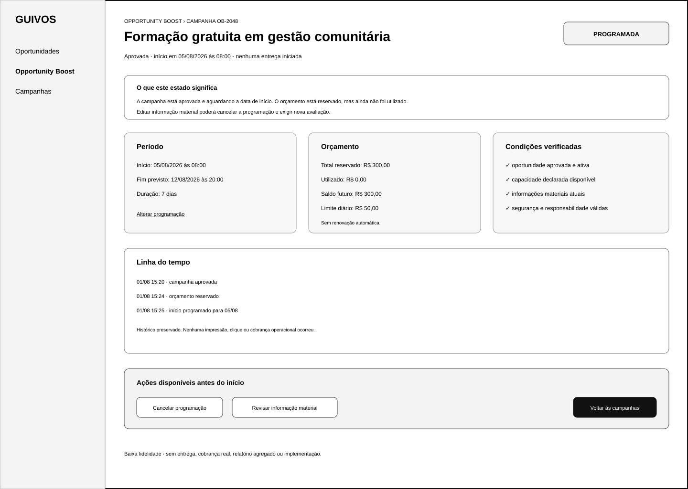
docs/assets/wireframes/uxa-046-campaign-scheduled-desktop.svg
Demonstra:
- campanha aprovada e programada;
- data e horário futuros;
- ausência de entrega e eventos operacionais;
- orçamento total, reservado, utilizado e saldo não utilizado;
- gates novamente verificados antes do início;
- ausência de ativação automática quando um gate falhar;
- alteração de programação separada de cancelamento;
- revisão de informação material sem aprovação automática.
Programação não equivale a garantia de início, entrega integral ou uso do orçamento.
5.2 Campanha ativa¶
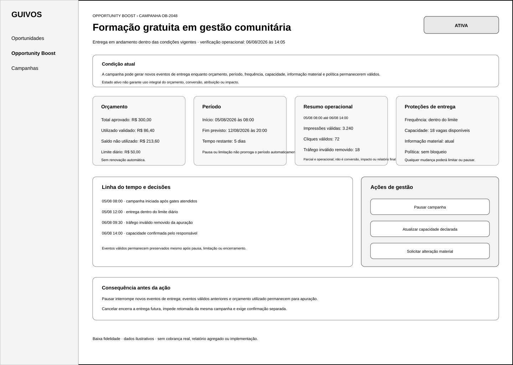
docs/assets/wireframes/uxa-046-campaign-active-desktop.svg
Demonstra:
- entrega em andamento dentro das condições vigentes;
- orçamento total, utilizado e saldo não utilizado;
- período e tempo restante;
- resumo operacional com período de referência e atualização;
- frequência, capacidade, informação material e política;
- linha do tempo de decisões;
- pausa, atualização de capacidade e solicitação de alteração material;
- consequência das ações antes de sua execução.
Impressões, cliques e tráfego inválido são indicadores parciais e operacionais. Não constituem conversão, atribuição, impacto ou relatório agregado.
5.3 Campanha limitada¶
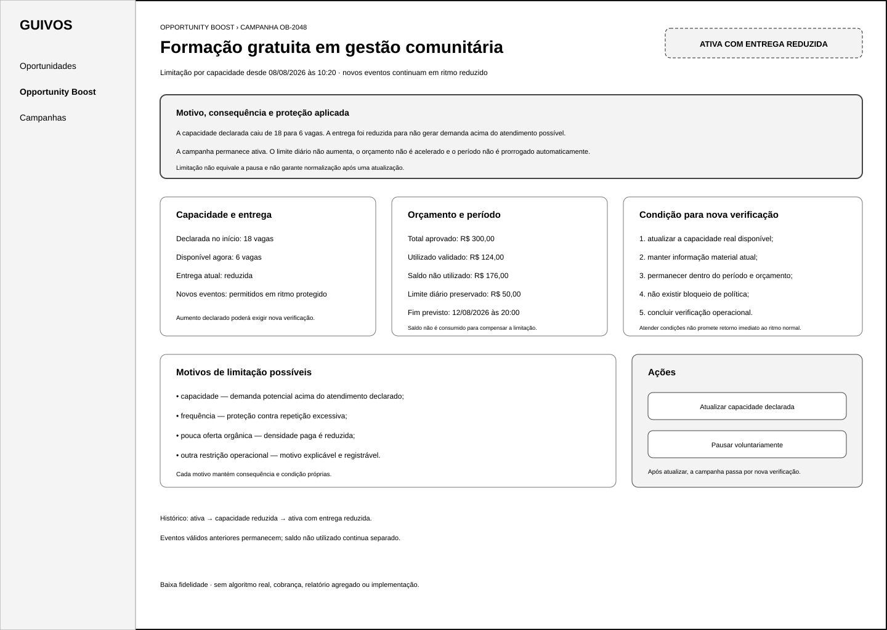
docs/assets/wireframes/uxa-046-campaign-limited-desktop.svg
Demonstra:
- campanha ativa com entrega reduzida;
- limitação por capacidade no exemplo;
- novos eventos ainda permitidos em ritmo protegido;
- limite diário preservado;
- orçamento não acelerado;
- período não ampliado automaticamente;
- saldo não consumido para compensação;
- condição para nova verificação;
- ausência de normalização imediata garantida;
- distinção entre capacidade, frequência, pouca oferta orgânica e outra restrição operacional.
5.4 Campanha pausada¶
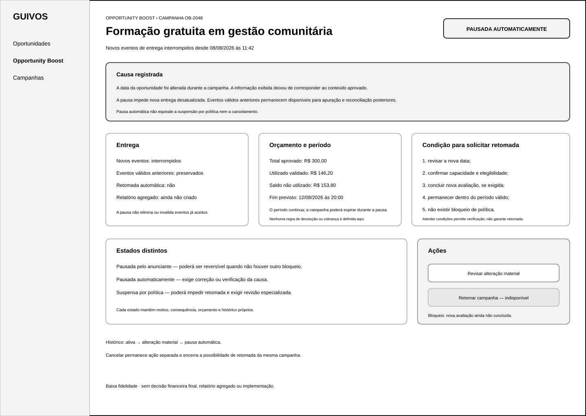
docs/assets/wireframes/uxa-046-campaign-paused-desktop.svg
Demonstra:
- pausa automática por informação material alterada;
- interrupção de novos eventos de entrega;
- preservação de eventos válidos anteriores para apuração posterior;
- orçamento utilizado e saldo não utilizado separados;
- período vigente e possibilidade de expiração durante a pausa;
- condição explícita para solicitar retomada;
- controle de retomada indisponível enquanto a causa persistir;
- distinção entre pausa voluntária, pausa automática e suspensão por política;
- ausência de decisão final sobre cobrança, devolução ou reconciliação.
5.5 Alteração material¶
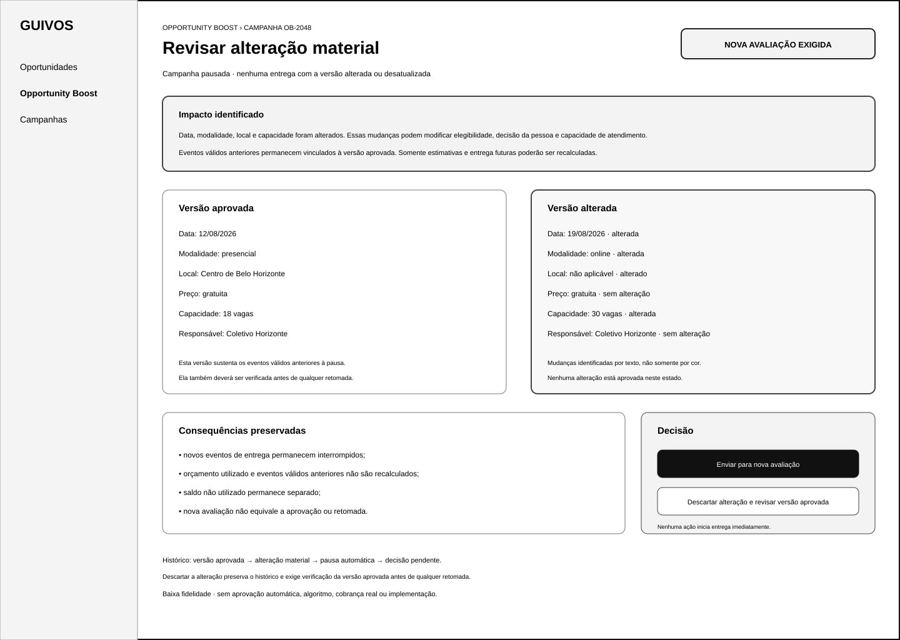
docs/assets/wireframes/uxa-046-campaign-material-change-desktop.svg
Demonstra:
- comparação entre versão aprovada e versão alterada;
- campos alterados identificados por texto;
- impacto sobre decisão, elegibilidade e capacidade;
- pausa anterior à nova entrega;
- eventos válidos anteriores vinculados à versão aprovada;
- envio para nova avaliação;
- descarte da alteração com revisão da versão aprovada;
- nenhuma aprovação ou retomada automática.
5.6 Encerramento e cancelamento¶
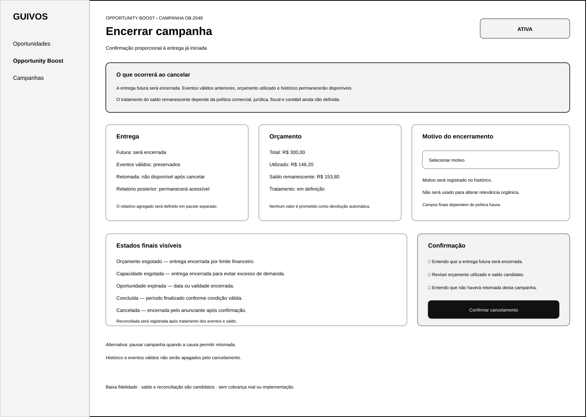
docs/assets/wireframes/uxa-046-campaign-closure-desktop.svg
Demonstra:
- campanha ainda ativa antes da confirmação completa;
- consequência irreversível para a mesma campanha;
- novos eventos encerrados e eventos válidos anteriores preservados;
- orçamento utilizado e saldo não utilizado separados;
- motivo obrigatório;
- três confirmações inicialmente vazias;
- botão de cancelamento indisponível antes do gate completo;
- estados orçamento esgotado, capacidade esgotada, oportunidade expirada, suspensão por política, conclusão, cancelamento e reconciliação;
- registro operacional preservado;
- relatório agregado explicitamente ainda não criado.
6. Modelo de estados preservado¶
programada
→ ativa
→ ativa com entrega reduzida por frequência | capacidade | pouca oferta orgânica
→ pausada pelo anunciante | pausada automaticamente
→ orçamento esgotado | capacidade esgotada | oportunidade expirada
→ suspensa por política
→ concluída | cancelada
→ reconciliada
A interface não apresenta os estados como sequência obrigatoriamente linear.
Cada estado explica:
- motivo;
- consequência sobre novos eventos de entrega;
- efeito sobre orçamento, saldo e período;
- ação disponível ou indisponível;
- condição para verificação, retomada ou encerramento.
7. Programação¶
Uma campanha programada:
- foi aprovada;
- possui data futura de início;
- ainda não iniciou entrega;
- possui orçamento reservado e utilizado igual a zero;
- não gera impressão, clique ou evento operacional;
- depende da permanência dos gates até o início;
- poderá ter data ou horário alterados;
- poderá ser cancelada antes do início mediante confirmação;
- poderá exigir nova avaliação se informação material mudar.
Programação não equivale a garantia de ativação ou entrega integral.
8. Estado ativo¶
O estado ativo demonstra que a campanha poderá gerar novos eventos dentro de:
- período aprovado;
- orçamento e limite diário;
- critérios aprovados;
- frequência permitida;
- capacidade declarada;
- informação material atual;
- política vigente.
Indicadores operacionais deverão informar período e atualização. Eles não representam conversão, atribuição, impacto, relatório final ou garantia.
9. Limitação¶
A campanha poderá permanecer ativa com entrega reduzida quando houver:
- proteção de frequência;
- capacidade insuficiente para entrega normal;
- pouca oferta orgânica, que reduz inventário pago;
- outra limitação operacional explicável.
A limitação:
- mantém novos eventos em ritmo protegido;
- não acelera orçamento;
- não amplia limite diário;
- não amplia duração automaticamente;
- não remove saldo;
- exige nova verificação após atualização;
- não promete normalização imediata.
10. Pausa¶
10.1 Pausa voluntária¶
Poderá ser iniciada pelo anunciante quando não houver bloqueio superior.
Deverá mostrar:
- novos eventos interrompidos;
- eventos válidos anteriores preservados;
- orçamento utilizado;
- saldo não utilizado;
- período restante;
- possibilidade e condição de retomada.
10.2 Pausa automática¶
Poderá ocorrer por:
- alteração material;
- informação desatualizada;
- capacidade insuficiente;
- orçamento ou limite;
- expiração;
- segurança, moderação ou política.
Retomada automática não será presumida.
A pausa não define cobrança futura, devolução ou crédito. Eventos válidos anteriores permanecem sujeitos à apuração e reconciliação posteriores.
10.3 Suspensão por política¶
Suspensão por política não é pausa voluntária. Poderá impedir retomada e exigir revisão especializada.
11. Alteração material¶
Mudança em preço, gratuidade, data, local, modalidade, responsável, elegibilidade, risco, capacidade ou condição comercial deverá:
- interromper novos eventos quando puder alterar a decisão da pessoa;
- comparar versão aprovada e versão alterada;
- preservar eventos válidos anteriores;
- preservar orçamento utilizado;
- manter saldo separado;
- recalcular somente estimativas futuras;
- exigir nova avaliação quando necessário;
- impedir entrega com informação desatualizada;
- impedir retomada automática ao descartar a alteração.
Correção editorial sem mudança material poderá seguir fluxo distinto e deverá manter histórico.
12. Orçamento, saldo e período¶
A gestão apresenta separadamente:
- orçamento total aprovado;
- orçamento reservado, quando ainda não iniciado;
- orçamento utilizado validado;
- saldo não utilizado;
- limite diário;
- período vigente;
- tratamento candidato do saldo após encerramento.
A interface não poderá:
- prometer uso integral do orçamento;
- acelerar gasto após limitação;
- ampliar limite diário ou período automaticamente;
- apresentar saldo como crédito, estorno ou devolução confirmados;
- apagar eventos inválidos ou válidos;
- cobrar simultaneamente CPM e CPC na mesma campanha.
13. Encerramento¶
Estados finais informam motivo e consequência próprios:
- orçamento esgotado;
- capacidade esgotada;
- oportunidade expirada;
- suspensa por política;
- concluída;
- cancelada;
- reconciliada.
Cancelamento:
- exige motivo;
- exige confirmações inicialmente vazias;
- mantém o botão indisponível antes do gate completo;
- encerra novos eventos;
- não apaga eventos válidos;
- não apaga histórico;
- não permite retomada da mesma campanha;
- mostra orçamento utilizado e saldo candidato;
- mantém o registro operacional acessível.
Reconciliação será posterior ao tratamento dos eventos e do saldo. Este pacote não cria o relatório agregado nem a política final de reconciliação.
14. Linha do tempo e histórico¶
A gestão registra, quando aplicável:
- aprovação;
- programação;
- início;
- limitação;
- pausa;
- alteração material;
- nova avaliação;
- retomada;
- esgotamento;
- suspensão;
- conclusão;
- cancelamento;
- reconciliação.
Histórico não será apagado por pausa, cancelamento, edição ou descarte de alteração.
15. Acessibilidade e linguagem¶
- estado é textual e não depende de cor;
- motivo, consequência e ação são anunciáveis;
- valores possuem rótulo e unidade;
- período de indicadores é explícito;
- mudanças materiais são identificadas por texto;
- ações indisponíveis explicam a condição necessária;
- pausa e cancelamento possuem consequências distintas;
- confirmações não começam selecionadas;
- botão bloqueado é textual e visualmente reconhecível;
- urgência, culpa e escassez artificial são proibidas;
- indicadores operacionais são distinguidos de relatório e impacto.
Esta referência não conclui acessibilidade técnica.
16. Proteções preservadas¶
- nenhuma entrega antes da programação válida;
- nenhuma entrega com informação material desatualizada;
- limitação não acelera orçamento ou amplia limite diário;
- pausa interrompe novos eventos de entrega;
- eventos válidos anteriores permanecem;
- saldo não é tratado como devolução confirmada;
- cancelamento exige gate completo e encerra retomada;
- pagamento não compra relevância, qualidade, confiança ou impacto;
- anunciante não recebe lista de visualizadores;
- nenhum perfil publicitário é criado;
- indicadores operacionais não constituem relatório agregado;
- Engenharia de Produto permanece pausada.
17. Limites¶
Este incremento não cria:
- wireframe do relatório agregado;
- estados móveis de gestão;
- algoritmo de entrega ou leilão;
- política final de densidade ou frequência;
- política final de cancelamento, devolução, crédito e disputa;
- perfil publicitário;
- design visual final;
- protótipo navegável;
- teste com usuários;
- checkout, faturamento, cobrança ou Engenharia de Produto.
18. Próximos atos governados¶
Após integração e nova autorização, poderão ocorrer separadamente:
- criar o wireframe do relatório agregado;
- validar funcionalmente o conjunto completo de wireframes do Opportunity Boost;
- criar estados móveis de gestão, se priorizados;
- criar estados de erro, inventário insuficiente e preferência publicitária;
- testar posteriormente estados, pausa, cancelamento, orçamento e controles com Organizações e Coletivos.
Nenhum ato é iniciado automaticamente.
Oportunidades
Wireframe de Baixa Fidelidade do Detalhe de Oportunidade (identificador UXA-007)¶
O identificador técnico UXA-007 serve somente para rastreabilidade. O nome de leitura desta superfície é Detalhe de Oportunidade.
Esta versão incorpora a Presença Companheira e Coerência de Posicionamento da Guivos e a Validação Funcional e Reformulação do Detalhe de Oportunidade.
1. Pergunta da superfície¶
Como a Guivos compreende meu momento, qual avanço já reconhece, por que esta oportunidade pode fazer sentido agora e o que preciso saber antes de decidir?
A superfície deverá apresentar a oportunidade como meio para um possível Próximo Passo. Ela não deverá parecer página genérica de venda, recomendação definitiva ou etapa obrigatória de evolução.
2. Wireframe reformulado¶
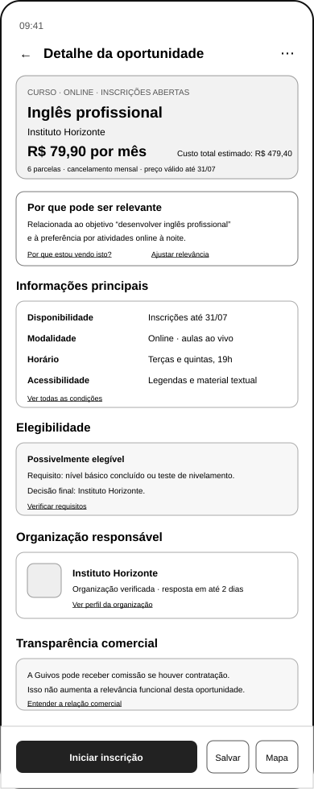
Visualizar o arquivo gráfico vetorial escalável
{kind=link}
O wireframe permanece monocromático e estrutural. Ele não define identidade visual, componentes técnicos ou comportamento implementado.
3. Hierarquia aprovada¶
| Ordem | Bloco | Responsabilidade |
|---|---|---|
| 1 | identidade e origem | identificar a possibilidade, seu tipo, estado e responsável |
| 2 | como a Guivos compreende seu momento | mostrar informações confirmadas, observadas, externas, inferidas e ainda desconhecidas |
| 3 | avanço reconhecido | demonstrar mudanças já percebidas sem inventar progresso |
| 4 | por que este Próximo Passo faz sentido | explicar a cadeia entre momento, objetivo, lacuna, possibilidade e contribuição esperada |
| 5 | investimento e condições | mostrar preço, custo total, validade, prazo e cancelamento |
| 6 | antes de decidir | reunir disponibilidade, modalidade, horário, acessibilidade e compromissos |
| 7 | condições para participar | explicar elegibilidade, autoridade decisória e verificações |
| 8 | quem oferece | permitir avaliar a Organização ou o Coletivo responsável |
| 9 | relação comercial com a Guivos | revelar comissão, patrocínio ou outra relação material |
| 10 | ações contextuais | permitir agir, salvar ou comparar sem ocultar alternativas |
4. Gate de alinhamento à Fundação da Guivos¶
A superfície somente poderá avançar quando demonstrar:
- Essência: reduz a distância entre Momento Atual e Próximo Passo;
- Propósito: amplia possibilidades concretas de evolução;
- Missão Operacional: ajuda a compreender ou realizar um próximo movimento relevante;
- Visão de Longo Prazo: funciona como parte de um ecossistema global, não como produto isolado;
- Constituição: preserva evolução como finalidade, oportunidade como meio, autonomia e relevância contextual;
- Princípios Permanentes: prioriza Próximo Passo, contexto, experiência vivida, simplicidade e ação real.
Preço, conversão ou relação comercial não poderão ocupar uma posição que descaracterize esses fundamentos.
5. Identidade e origem¶
O topo deverá apresentar:
- indicação
Possibilidade para sua jornada; - tipo da oportunidade;
- modalidade;
- estado de disponibilidade;
- título;
- Organização ou Coletivo responsável;
- origem funcional;
- ações de ocultar, contestar ou denunciar.
A palavra possibilidade orienta a leitura, mas não substitui a entidade canônica Oportunidade.
6. Como a Guivos compreende seu momento¶
O bloco deverá apresentar uma leitura verificável e corrigível do momento atual.
Deverá distinguir:
- objetivo confirmado pelo participante;
- Próximo Passo atual;
- experiência ou etapa já registrada;
- preferência declarada;
- limitação ou dúvida ainda existente;
- informação proveniente de fonte autorizada;
- inferência da Guivos;
- informação que ainda não está disponível.
Exemplo:
A Guivos compreende que você deseja desenvolver comunicação profissional em inglês, já concluiu o nível básico e prefere atividades online à noite. Ainda não sabemos se você possui disponibilidade para aulas ao vivo duas vezes por semana.
Controles mínimos:
Ver informações utilizadas;Corrigir meu momento;Meu momento mudou;Não usar esta informação.
Quando a base for insuficiente, a tela deverá declarar que não possui informação suficiente, em vez de simular compreensão.
7. Avanço reconhecido¶
O avanço deverá ser percebido por mudança relevante na jornada, e não por percentual genérico, pontos, sequência de dias ou volume de tarefas.
Evidências possíveis:
- passo concreto concluído;
- capacidade desenvolvida;
- barreira removida;
- experiência vivida;
- decisão consciente registrada;
- mudança de contexto;
- confirmação do próprio participante.
Exemplo:
Avanço reconhecido: você concluiu o nível básico e registrou que já consegue compreender textos simples. O desafio atual informado é utilizar o idioma em situações profissionais.
A evidência deverá informar origem, data e possibilidade de correção. Quando não houver base suficiente, a interface deverá dizer que ainda não há evidência para afirmar avanço.
8. Por que este Próximo Passo faz sentido¶
A justificativa deverá conectar:
momento atual confirmado
→ avanço reconhecido
→ objetivo autorizado
→ lacuna ou possibilidade atual
→ Próximo Passo
→ contribuição possível da oportunidade
Exemplo:
Este Próximo Passo faz sentido porque você já concluiu o nível básico, deseja utilizar o inglês no trabalho e informou que a prática profissional ainda é uma dificuldade. O curso pode oferecer situações de comunicação aplicada, mas não é o único caminho possível.
A tela deverá apresentar:
- informações utilizadas;
- distinção entre fato e inferência;
- razão temporal;
- contribuição possível;
- incertezas;
- alternativas disponíveis;
- controles para corrigir ou rejeitar a relação.
Respostas possíveis:
Faz sentido para mim;Faz sentido parcialmente;Não faz sentido para mim;Quero outro caminho.
A concordância não cria obrigação de agir.
9. Investimento e condições¶
O bloco deverá apresentar:
- preço principal;
- custo total conhecido ou estimado;
- parcelas ou recorrência;
- custos obrigatórios adicionais;
- validade do preço;
- prazo de inscrição;
- cancelamento;
- reembolso, quando aplicável;
- última confirmação da fonte.
Exemplo:
R$ 79,90 por mês, em seis parcelas. Custo total estimado: R$ 479,40. Valor válido para novas inscrições até 31/07/2026.
9.1 Validade do preço¶
Validade do preço é a data ou período até o qual a Organização declara que o valor permanece vigente para nova inscrição, contratação ou compra.
Ela não representa:
- duração do serviço;
- vencimento da parcela;
- prazo de inscrição;
- período do contrato;
- prazo de cancelamento;
- prazo de reembolso.
Após a validade, o preço deverá ser confirmado novamente. Mudança durante processo iniciado exigirá confirmação consciente.
Regras:
grátisnão poderá ocultar custos obrigatórios;a partir dedeverá indicar variáveis de preço;- preço sob consulta limitará comparação e apresentação;
- destaque promocional não poderá superar custo total e condições.
10. O que precisa saber antes de decidir¶
O primeiro nível deverá mostrar:
- disponibilidade;
- modalidade;
- data e horário;
- local ou abrangência;
- duração;
- acessibilidade;
- compromissos exigidos;
- requisitos principais;
- cancelamento;
- riscos ou limitações materiais;
- última atualização.
Políticas extensas permanecerão em detalhamento progressivo.
11. Condições para participar¶
O título de leitura será Condições para participar. O estado técnico de elegibilidade permanecerá explícito.
Estados possíveis:
- não avaliada;
- possivelmente elegível;
- elegível;
- elegível com condição;
- exige verificação;
- possivelmente não elegível;
- não elegível;
- contestada.
A tela deverá explicar:
- requisito considerado;
- informação ainda não verificada;
- autoridade responsável pela decisão;
- passo de verificação;
- correção ou contestação disponível.
A Guivos não poderá apresentar probabilidade como aprovação.
12. Quem oferece¶
O bloco deverá permitir verificar:
- nome e identidade;
- estado de verificação;
- unidade responsável;
- propósito ou atuação relevante;
- canal de suporte;
- atualização e histórico materiais;
- perfil institucional;
- outras oportunidades;
- contestação ou denúncia.
Verificação institucional não representa garantia de resultado ou adequação individual.
13. Relação comercial com a Guivos¶
A tela deverá declarar, quando aplicável:
- comissão;
- afiliação;
- patrocínio;
- exclusividade;
- promoção paga;
- participação da Guivos na receita;
- financiamento;
- relação indireta relevante.
Formulação de referência:
A Guivos poderá receber comissão se a contratação for concluída. Essa relação não aumentou a relevância funcional desta oportunidade.
A presença companheira não poderá ser utilizada para disfarçar publicidade.
14. Ações contextuais¶
Não haverá uma ação principal universal.
A ação poderá ser:
Ver como participar;Iniciar inscrição;Solicitar contato;Reservar;Entrar na lista de espera;Acompanhar abertura;Abrir no mapa, quando localização for material;Conhecer a Organização.
No wireframe de referência, a ação principal será:
Ver como participar
Essa ação abrirá uma etapa intermediária com executor, dados compartilhados, destinatário, custos, compromissos e reversibilidade.
Ações secundárias persistentes:
- salvar para considerar;
- comparar.
Mapa não permanecerá na barra quando a oportunidade não depender de localização.
15. Estados alternativos ainda pendentes¶
- informação insuficiente sobre o momento;
- sinais de contexto conflitantes;
- avanço ainda não confirmado;
- inferência contestada;
- momento alterado recentemente;
- múltiplos Próximos Passos igualmente válidos;
- oportunidade gratuita com custos externos;
- preço variável ou sob consulta;
- lista de espera;
- abertura futura;
- elegibilidade insuficiente;
- risco elevado;
- oportunidade patrocinada;
- oportunidade criada por Coletivo;
- oportunidade presencial com localização protegida;
- oportunidade expirada;
- informação contestada;
- falha de sincronização com fonte externa;
- baixa conectividade;
- acessibilidade com texto ampliado e leitor de tela.
16. Decisões humanas aplicadas¶
- A leitura do momento antecede a justificativa do Próximo Passo.
- O avanço é demonstrado por evidências de mudança relevantes para a jornada.
- A Guivos explica por que o Próximo Passo faz sentido por meio de uma cadeia compreensível e contestável.
- A relação com a jornada antecede preço e conversão.
- O preço permanece visível como investimento e condição, não argumento promocional.
- A oportunidade é declarada como possibilidade, não recomendação definitiva.
- A temporalidade passa a utilizar
Por que apareceu agora?. - Elegibilidade passa a ser lida em
Condições para participar. Organização responsávelpassa a serQuem oferece.Transparência comercialpassa a serRelação comercial com a Guivos.- A ação principal passa a depender do tipo e estado real.
Mapadeixa de ser ação persistente quando não for material.- Salvar e comparar permanecem alternativas legítimas.
- O gate da Fundação integra os critérios de aceite.
17. Critérios de aceite¶
O wireframe poderá avançar quando:
- aderência à Fundação da Guivos estiver demonstrada;
- a leitura do momento apresentar informações e fontes utilizadas;
- fato, evidência, informação externa e inferência estiverem distinguidos;
- o avanço reconhecido for demonstrado sem inventar progresso;
- o Próximo Passo for explicado por uma cadeia lógica e corrigível;
- alternativas e incertezas permanecerem visíveis;
- a relação com a jornada for compreendida antes da conversão;
- possibilidade e recomendação definitiva forem distinguidas;
- preço, custo total, validade e condições forem compreendidos;
- prazo de inscrição, validade do preço e duração não forem confundidos;
- relevância e temporalidade forem explicáveis e ajustáveis;
- elegibilidade não for interpretada como aprovação;
- fonte, responsável e relação comercial forem identificáveis;
- ação principal refletir o estado real;
- o participante puder corrigir, recusar, salvar ou comparar sem pressão;
- publicidade permanecer subordinada à relevância funcional;
- a tela não parecer página genérica de venda;
- a interação favorecer compreensão e ação no mundo real;
- a leitura não depender do identificador técnico.
18. Limites¶
Esta versão não autoriza protótipo navegável, design visual, testes de usabilidade, componentes técnicos, preços reais, validação de Organizações ou desenvolvimento.
Validação Funcional e Reformulação do Detalhe de Oportunidade (identificador UXA-012)¶
1. Finalidade¶
Este documento registra a primeira validação funcional do Detalhe de Oportunidade e as decisões aplicadas ao seu wireframe de baixa fidelidade.
A validação responde:
Como apresentar uma oportunidade como possibilidade de evolução, demonstrar o momento compreendido pela Guivos, tornar o avanço perceptível e explicar por que um Próximo Passo faz sentido, sem transformar a tela em página genérica de conversão?
2. Diagnóstico do wireframe anterior¶
O wireframe anterior já apresentava preço, custo total, validade, relevância, elegibilidade, Organização responsável e transparência comercial.
Entretanto, sua hierarquia iniciava por identidade e preço e terminava com uma ação universal de inscrição. Essa estrutura poderia ser interpretada como página comercial convencional, mesmo contendo informações corretas.
Os principais riscos identificados foram:
- preço visualmente anterior ao significado da oportunidade na jornada;
- linguagem de relevância correta, mas ainda separada da identidade institucional da Guivos;
- ação
Iniciar inscriçãotratada como padrão para tipos diferentes de oportunidade; Mapaapresentado como ação persistente mesmo quando a oportunidade era online;- ausência de mensagem explícita de que a oportunidade é uma possibilidade, não uma recomendação definitiva;
- pouca conexão entre objetivo, Próximo Passo, experiência esperada e decisão;
- ausência de explicação clara sobre como a Guivos compreendeu o momento atual;
- ausência de evidência visível sobre o avanço já realizado;
- risco de a tela parecer pertencente a qualquer marketplace, plataforma educacional ou comparador.
3. Decisão estrutural¶
A hierarquia reformulada será:
identidade e origem
→ como a Guivos compreende seu momento
→ avanço já percebido
→ por que este Próximo Passo faz sentido
→ investimento e condições
→ o que precisa saber antes de decidir
→ condições para participar
→ quem oferece
→ relação comercial com a Guivos
→ ações contextuais
A oportunidade permanece identificada imediatamente. O preço continua visível no primeiro percurso de leitura, mas deixa de definir o significado inicial da superfície.
4. Aplicação do gate de alinhamento à Fundação¶
4.1 Essência da Guivos¶
A superfície deverá reduzir a distância entre o Momento Atual e um Próximo Passo possível. A oportunidade será apresentada como meio para apoiar a jornada, não como finalidade própria.
4.2 Propósito¶
A tela deverá demonstrar como a oportunidade pode ampliar possibilidades concretas de evolução para o momento atual, sem coerção ou promessa de transformação.
4.3 Missão Operacional¶
A interface deverá ajudar o participante a compreender se essa possibilidade contribui para um Próximo Passo relevante e o que seria necessário para agir.
4.4 Visão de Longo Prazo¶
A superfície deverá funcionar para diferentes tipos de oportunidade, países, culturas, modelos comerciais e participantes. Ela não poderá reduzir a Guivos a marketplace, curso, vaga, viagem ou produto isolado.
4.5 Constituição da Guivos¶
A reformulação preserva:
- evolução como finalidade;
- oportunidade como meio;
- decisão final com o participante;
- tecnologia e inteligência como instrumentos;
- natureza ecossistêmica;
- contexto como base da relevância;
- conhecimento como patrimônio;
- simplicidade estrutural.
4.6 Princípios Permanentes¶
A tela priorizará Próximo Passo, relevância contextual, autonomia, experiência vivida, simplicidade, transparência, validade global e ação no mundo real.
5. Identidade e origem¶
O topo deverá apresentar:
- tipo e modalidade;
- disponibilidade;
- título;
- Organização ou Coletivo responsável;
- origem funcional da oportunidade;
- acesso a ações de ocultar, contestar ou denunciar.
O título contextual preferencial será:
Possibilidade para sua jornada
Esse título não substitui a classificação técnica de Oportunidade. Ele orienta a leitura sem transformar a oportunidade em recomendação definitiva.
6. Como a Guivos compreende seu momento¶
A Guivos deverá apresentar a leitura atual do contexto antes de justificar o Próximo Passo.
A leitura deverá ser formada somente por sinais autorizados, identificáveis e corrigíveis, como:
- objetivo confirmado pelo participante;
- Próximo Passo atual;
- experiência registrada;
- etapa concluída;
- preferência declarada;
- necessidade informada;
- disponibilidade autorizada;
- limitação ou bloqueio reconhecido;
- informação fornecida por uma fonte externa autorizada.
O bloco deverá distinguir:
- o que foi confirmado pelo participante;
- o que foi observado em ações ou experiências registradas;
- o que foi informado por uma fonte autorizada;
- o que é uma inferência da Guivos;
- o que ainda não é conhecido ou precisa ser verificado.
Exemplo:
A Guivos compreende que você deseja desenvolver comunicação profissional em inglês, já concluiu o nível básico e prefere atividades online no período noturno. Ainda não sabemos se você possui disponibilidade para aulas ao vivo duas vezes por semana.
Controles mínimos:
Ver informações utilizadas;Corrigir meu momento;Não usar esta informação;Informar que meu momento mudou.
A Guivos não poderá afirmar que compreende o momento quando a base for insuficiente. Nesse caso, deverá declarar:
Ainda não temos informações suficientes para relacionar esta oportunidade ao seu momento com segurança.
7. Como o avanço será demonstrado¶
O avanço não deverá ser reduzido a percentual, pontos, sequência de dias ou quantidade de tarefas concluídas.
Ele deverá ser demonstrado por evidências de mudança relevantes para a própria jornada, como:
- passo realizado: uma ação concreta foi concluída;
- capacidade desenvolvida: uma habilidade ou compreensão foi ampliada;
- contexto modificado: uma barreira foi removida ou uma condição mudou;
- experiência vivida: uma atividade produziu aprendizado, relação ou resultado percebido;
- decisão tomada: uma escolha relevante foi registrada conscientemente;
- continuidade construída: o participante avançou de uma intenção para uma ação ou de uma ação para uma experiência;
- confirmação do participante: a pessoa reconheceu que algo mudou em sua jornada.
A interface deverá preferir formulações como:
O que já mudou;Avanço reconhecido;O que você já construiu;O que este passo pode destravar;O que ainda precisa ser compreendido.
Exemplo:
Avanço reconhecido: você concluiu o nível básico e registrou que já consegue compreender textos simples. O próximo desafio informado é utilizar o idioma em situações profissionais.
Quando não houver evidência suficiente, a tela não deverá simular progresso. Ela deverá informar:
Ainda não há evidência suficiente para afirmar que houve avanço nesta parte da jornada.
Toda evidência de avanço deverá apresentar origem, data, possibilidade de correção e nível de confiança quando houver inferência.
8. Por que este Próximo Passo faz sentido¶
A justificativa deverá conectar explicitamente:
momento atual confirmado
→ avanço já reconhecido
→ objetivo autorizado
→ lacuna ou possibilidade atual
→ Próximo Passo proposto
→ contribuição possível da oportunidade
A Guivos deverá explicar o raciocínio em linguagem clara, sem revelar inferências sensíveis desnecessárias.
Exemplo:
Este Próximo Passo faz sentido porque você já concluiu o nível básico, deseja utilizar o inglês no trabalho e informou que a prática profissional ainda é uma dificuldade. O curso pode oferecer situações de comunicação aplicada, mas não é o único caminho possível.
A justificativa deverá indicar:
- quais informações sustentam a relação;
- o que é fato e o que é inferência;
- por que o momento atual torna a possibilidade relevante;
- qual avanço potencial poderá ser apoiado;
- quais alternativas também permanecem disponíveis;
- quais incertezas ainda existem;
- como contestar ou corrigir a relação.
O participante deverá poder declarar:
Faz sentido para mim;Faz sentido parcialmente;Não faz sentido para mim;Meu momento mudou;Quero outro caminho.
A confirmação do participante deverá melhorar a compreensão futura, sem transformar concordância em obrigação de agir.
9. Investimento e condições¶
O bloco deverá apresentar:
- preço principal;
- custo total conhecido ou estimado;
- parcelas ou recorrência;
- custos obrigatórios adicionais;
- validade do preço;
- prazo de inscrição;
- política de cancelamento;
- reembolso, quando aplicável;
- última confirmação da fonte.
Formulação de referência:
R$ 79,90 por mês, em seis parcelas. Custo total estimado: R$ 479,40. Valor válido para novas inscrições até 31/07/2026.
O preço não poderá utilizar destaque promocional maior do que a clareza sobre custo total e condições.
10. O que precisa saber antes de decidir¶
Este bloco reunirá:
- disponibilidade;
- modalidade;
- data e horário;
- local ou abrangência;
- duração;
- acessibilidade;
- compromissos exigidos;
- requisitos principais;
- cancelamento;
- riscos ou limitações materiais;
- última atualização.
O conteúdo deverá permitir uma decisão inicial sem exigir leitura integral de políticas extensas.
11. Condições para participar¶
O título de leitura será Condições para participar. O estado técnico de elegibilidade permanecerá visível e explicável.
Exemplo:
Sua situação: possivelmente elegível.
A tela deverá explicar:
- requisito utilizado na avaliação;
- informação ainda não verificada;
- quem possui autoridade para decidir;
- próximos passos de verificação;
- possibilidade de corrigir ou contestar dados.
A Guivos não poderá apresentar probabilidade como aprovação ou utilizar elegibilidade estimada para pressionar conversão.
12. Quem oferece¶
O bloco deverá apresentar:
- nome e identidade da Organização ou Coletivo;
- estado de verificação;
- unidade responsável;
- propósito ou atuação relevante;
- canal de suporte;
- histórico ou atualização material;
- perfil institucional;
- outras oportunidades;
- contestação ou denúncia.
Verificação institucional não equivale a garantia de resultado, qualidade ou adequação individual.
13. Relação comercial com a Guivos¶
O título será explícito: Relação comercial com a Guivos.
A tela deverá informar, quando aplicável:
- comissão;
- afiliação;
- patrocínio;
- exclusividade;
- promoção paga;
- participação na receita;
- financiamento;
- outra relação material.
Formulação de referência:
A Guivos poderá receber comissão se a contratação for concluída. Essa relação não aumentou a relevância funcional desta oportunidade.
Publicidade e patrocínio não poderão utilizar a presença companheira para disfarçar intenção comercial.
14. Ações contextuais¶
Não haverá uma ação principal universal para todas as oportunidades.
A ação dependerá do tipo e do estado real:
Ver como participar;Iniciar inscrição;Solicitar contato;Reservar;Entrar na lista de espera;Acompanhar abertura;Abrir no mapa, quando localização for material;Conhecer a Organização;Salvar para considerar;Comparar.
Para o wireframe de referência, a ação principal passa a ser:
Ver como participar
Essa ação deverá abrir uma etapa intermediária com executor, dados compartilhados, destinatário, custos, compromissos e reversibilidade antes do início do processo.
Ações secundárias persistentes:
- salvar para considerar;
- comparar.
Mapa deixará de ser persistente quando a localização não for material.
15. Decisões aplicadas¶
- A leitura do momento atual passa a anteceder a justificativa do Próximo Passo.
- O avanço deverá ser demonstrado por evidências de mudança, não por métricas de engajamento.
- A Guivos deverá explicar por que o Próximo Passo faz sentido por meio de uma cadeia compreensível e contestável.
- A relação com a jornada passa a anteceder preço e conversão.
- O preço permanece visível, mas é apresentado como investimento e condição, não como argumento promocional.
- A oportunidade é declarada como possibilidade, não recomendação definitiva.
- O motivo temporal passa a utilizar
Por que apareceu agora?. - A elegibilidade passa a ser lida como
Condições para participar, mantendo o estado técnico explicável. Organização responsávelpassa a serQuem oferecena leitura principal.Transparência comercialpassa a serRelação comercial com a Guivos.- A ação principal deixa de ser universal e passa a depender do estado da oportunidade.
Mapadeixa de ser ação persistente em oportunidades sem localização material.- Salvar e comparar permanecem alternativas legítimas sem pressão.
- O gate de alinhamento à Fundação passa a integrar os critérios de aceite.
16. Critérios de aceite¶
A superfície poderá avançar quando:
- demonstrar aderência à Essência, Propósito, Missão, Visão, Constituição e Princípios Permanentes;
- apresentar como a Guivos compreendeu o momento e quais informações foram utilizadas;
- distinguir fato confirmado, evidência observada, informação externa e inferência;
- mostrar o avanço já reconhecido sem inventar progresso;
- explicar por que o Próximo Passo faz sentido e quais alternativas permanecem disponíveis;
- permitir correção do momento, da evidência de avanço e da relação proposta;
- explicar a relação da oportunidade com a jornada antes de enfatizar conversão;
- diferenciar possibilidade de recomendação definitiva;
- preservar preço, custo total, validade e condições de forma clara;
- distinguir prazo de inscrição, validade do preço e duração;
- explicar por que a oportunidade apareceu agora;
- permitir correção, contestação, recusa, salvamento e comparação;
- não apresentar elegibilidade estimada como aprovação;
- mostrar fonte, Organização responsável e relação comercial;
- adaptar a ação principal ao tipo e ao estado real;
- manter publicidade subordinada à relevância funcional;
- não parecer uma página genérica de venda;
- favorecer compreensão e ação no mundo real sem pressão.
17. Estados ainda pendentes¶
- ausência de informação suficiente sobre o momento;
- conflito entre sinais de contexto;
- avanço não confirmado pelo participante;
- inferência contestada;
- momento alterado recentemente;
- múltiplos Próximos Passos igualmente válidos;
- oportunidade gratuita com custos externos;
- preço variável ou sob consulta;
- lista de espera;
- abertura futura;
- elegibilidade insuficiente;
- risco elevado;
- oportunidade patrocinada;
- oportunidade criada por Coletivo;
- oportunidade presencial com localização protegida;
- oportunidade expirada;
- informação contestada;
- falha de sincronização com fonte externa;
- baixa conectividade;
- texto ampliado e leitor de tela.
18. Limites¶
Esta validação:
- não cria design visual definitivo;
- não define componentes técnicos;
- não cria protótipo navegável;
- não executa teste de usabilidade;
- não valida preços ou Organizações reais;
- não autoriza desenvolvimento;
- não altera a pausa dos Resultados Empresariais;
- não antecipa a decisão sobre Capacidade de Reinvestimento Responsável.
Wireframe de Baixa Fidelidade do Cadastro de Oportunidade pela Organização¶
O identificador técnico UXA-008 serve somente para rastreabilidade. O nome de leitura desta superfície é Cadastro de Oportunidade pela Organização.
Esta versão incorpora a Presença Companheira e Coerência de Posicionamento, a Compreensão do Momento, Evidência de Avanço e Explicabilidade do Próximo Passo e a Validação Funcional e Reformulação do Cadastro de Oportunidade pela Organização.
1. Pergunta da superfície¶
Como uma Organização declara, com responsabilidade e transparência, quais jornadas pretende apoiar, que avanço poderá viabilizar, quais evidências sustentam essa contribuição e quais condições deverão ser compreendidas antes da decisão do participante?
A superfície não deverá parecer portal genérico de anúncios, formulário comercial ou mecanismo de publicação automática.
2. Wireframe reformulado¶
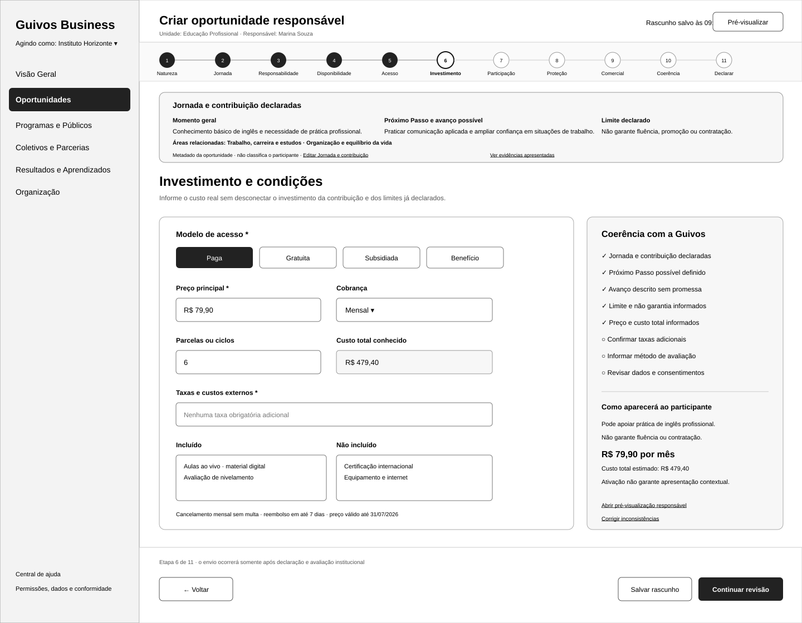
Visualizar o arquivo gráfico vetorial escalável
{kind=link}
O wireframe representa a etapa Investimento e condições, mantendo visível o contexto declarado anteriormente em Jornada e contribuição.
3. Papel institucional da Organização¶
A Organização deverá compreender que atua como participante responsável do ecossistema.
Ela deverá:
- declarar finalidade e contribuição reais;
- indicar jornadas e momentos gerais que pretende apoiar;
- explicar o avanço possível sem prometer resultado;
- apresentar fundamentos, evidências e limitações;
- garantir preço, condições, proteção e suporte;
- assumir autoria e responsabilidade pelas informações;
- corrigir, pausar ou encerrar a oportunidade;
- respeitar autonomia, contexto e consentimento;
- distinguir atividade operacional de impacto real.
4. Estrutura global¶
A tela possui:
- navegação institucional lateral;
- cabeçalho com Organização, unidade e responsável;
- estado de salvamento e autoria;
- resumo persistente de Jornada e contribuição;
- indicador das onze etapas;
- formulário da etapa atual;
- painel de coerência com a Guivos;
- pré-visualização responsável;
- ações persistentes de voltar, salvar e continuar.
A Organização deverá visualizar claramente em nome de qual entidade, unidade e papel está realizando o cadastro.
5. Etapas reformuladas¶
| Número | Etapa | Resultado esperado |
|---|---|---|
| 1 | Natureza da oportunidade | tipo, natureza funcional e forma geral de participação |
| 2 | Jornada e contribuição | público, Momento Atual geral, Próximo Passo, avanço possível, evidências e limites |
| 3 | Responsabilidade institucional | Organização, unidade, autoridade, autoria e suporte |
| 4 | Disponibilidade | vagas, estoque, janelas, recorrência, prazos e atualização |
| 5 | Modalidade e acesso | local, cobertura, canais, acessibilidade e recursos necessários |
| 6 | Investimento e condições | preço, custo total, taxas, inclusão, cancelamento, reembolso e validade |
| 7 | Condições para participar | requisitos, elegibilidade, decisor final e verificações |
| 8 | Proteção, dados e evidências | riscos, consentimento, dados necessários e método de avaliação |
| 9 | Relação comercial | comissão, patrocínio, exclusividade e relações financeiras |
| 10 | Prévia e coerência | apresentação em diferentes superfícies e revisão de consistência |
| 11 | Declaração e envio | responsabilidade, limites, correções e submissão para avaliação |
A navegação preservará rascunho, histórico e dependências entre etapas.
6. Resumo persistente de Jornada e contribuição¶
Durante as etapas posteriores, a tela deverá manter uma síntese da contribuição declarada.
Conteúdo mínimo:
- jornada ou público geral;
- Momento Atual geral;
- Próximo Passo que poderá ser apoiado;
- avanço possível;
- fundamento principal;
- não garantia material;
- acesso à edição da etapa de origem.
Exemplo:
Jornada apoiada: pessoas com conhecimento básico de inglês que desejam praticar comunicação profissional.
Avanço possível: ampliar confiança e repertório aplicado em situações de trabalho.
Limite declarado: não garante fluência, promoção ou contratação.
O resumo deverá impedir que preço e condições sejam preenchidos de forma desconectada do propósito da oportunidade.
7. Etapa Jornada e contribuição¶
A Organização deverá informar:
- quem poderá ser apoiado;
- qual Momento Atual geral pretende atender;
- qual necessidade, barreira ou possibilidade foi identificada;
- qual Próximo Passo poderá ser apoiado;
- qual mudança poderá ser observada;
- como essa mudança poderá ser reconhecida;
- quais evidências ou fundamentos sustentam a afirmação;
- quais condições influenciam o resultado;
- o que a oportunidade não garante;
- quais caminhos alternativos também podem ser válidos.
A Organização descreverá contexto geral. A compreensão individual será responsabilidade da Guivos com base em informações autorizadas e permanecerá corrigível pelo participante.
8. Evidência de avanço¶
A Organização poderá declarar contribuição esperada, mas deverá distinguir:
- intenção;
- fundamento;
- evidência observada;
- validação externa;
- experiência relatada;
- resultado verificado;
- desconhecido.
Exemplos de avanço potencial:
- capacidade desenvolvida;
- acesso ampliado;
- barreira reduzida;
- experiência vivida;
- relação construída;
- decisão melhor informada;
- contexto alterado;
- ação concreta realizada;
- conhecimento aplicado.
Visualizações, cliques, inscrições, vendas, pontos e tempo de uso são indicadores operacionais e não poderão ser apresentados isoladamente como evolução ou impacto.
9. Etapa representada: Investimento e condições¶
9.1 Modelo de acesso¶
Opções iniciais:
- paga;
- gratuita;
- subsidiada;
- benefício.
A seleção altera campos posteriores, mas não deverá apagar informações já fornecidas sem confirmação.
9.2 Preço principal e cobrança¶
Campos:
- moeda;
- preço principal;
- cobrança única ou recorrente;
- número de parcelas ou ciclos;
- periodicidade;
- custo total conhecido ou estimado;
- possibilidade de reajuste.
No padrão monetário brasileiro, valores ilustrativos utilizam R$ e formatação como R$ 79,90.
9.3 Taxas e custos externos¶
A Organização deverá declarar:
- matrícula;
- material obrigatório;
- emissão de certificado;
- transporte;
- hospedagem;
- equipamentos;
- impostos ou taxas;
- outros custos necessários.
A ausência de taxa deverá ser confirmada, não presumida por campo vazio.
9.4 Incluído e não incluído¶
A separação deverá impedir que descrição positiva oculte custos ou responsabilidades externas.
9.5 Cancelamento, reembolso e validade do preço¶
A etapa deverá solicitar:
- forma de cancelamento;
- multa ou ausência de multa;
- prazo de arrependimento;
- regras de reembolso;
- validade do preço para novas adesões;
- política de reajuste;
- efeitos de alteração após início do processo.
Validade do preço não significa vencimento da parcela, duração, prazo de inscrição ou período contratual.
Preço maior, patrocínio ou maior investimento comercial não significam maior relevância, qualidade ou avanço.
10. Proteção, dados e avaliação¶
A Organização deverá informar:
- dados estritamente necessários;
- finalidade de uso;
- momento de coleta;
- destinatário;
- retenção;
- compartilhamentos;
- riscos e proteção;
- consentimentos;
- dados que não serão solicitados;
- método proposto para observar contribuição ou resultado.
A avaliação deverá ser proporcional, consentida e não invasiva.
11. Painel de coerência com a Guivos¶
O painel lateral deverá verificar:
- Jornada e contribuição preenchidas;
- Momento Atual geral identificado;
- Próximo Passo possível definido;
- avanço descrito sem promessa;
- evidência ou fundamento apresentado;
- limites e não garantias declarados;
- preço e custo total transparentes;
- dados e consentimentos identificados;
- relação comercial declarada;
- contradições entre finalidade, público, requisitos e preço;
- distinção entre envio, avaliação, ativação e apresentação;
- aderência à Fundação da Guivos.
O painel deverá explicar cada inconsistência e permitir abrir a etapa de origem.
Ele não substitui avaliação humana ou institucional.
12. Salvamento, autoria e continuidade¶
O fluxo deverá suportar:
- salvamento automático e manual;
- retorno posterior;
- histórico de alterações;
- autoria por campo material;
- colaboração por papéis;
- bloqueio de envio quando houver informação crítica ausente;
- aviso antes de sair com alterações não sincronizadas;
- identificação de quem declarou finalidade, evidência, preço e limites.
13. Pré-visualização responsável¶
A Organização deverá visualizar:
- contribuição para a jornada;
- avanço possível e limites;
- origem das informações;
- preço e condições;
- condições para participar;
- relação comercial;
- como aparecerá no cartão, detalhe, busca, comparação, mapa, Tela Hoje e Jornada;
- diferença entre declaração da Organização e avaliação da Guivos;
- aviso de que ativação não garante apresentação contextual.
A prévia não poderá simular recomendação individual antes da avaliação contextual.
14. Envio, avaliação, ativação e apresentação¶
Fluxo esperado:
Rascunho
→ Enviada para avaliação
→ Em avaliação
→ Ajustes solicitados
→ Aprovada para ativação
→ Ativa
Regras:
- envio não significa aprovação;
- aprovação não significa ativação automática;
- ativação não significa apresentação a todos;
- apresentação depende de relevância, contexto, disponibilidade, proteção e controles do participante;
- patrocínio não garante apresentação;
- oportunidade ativa poderá ser pausada, contestada, corrigida, expirada ou encerrada.
15. Linguagem institucional companheira¶
Formulações preferenciais:
Explique como esta oportunidade pode apoiar uma jornada;Que mudança poderá ser observada?;Quais evidências sustentam essa contribuição?;O que esta oportunidade não garante?;Esta informação será apresentada antes da decisão do participante;Ativação não garante apresentação contextual.
Formulações a evitar:
Destaque sua oferta;Aumente suas conversões;Alcance o público ideal;Garanta resultados;Publique agora;Invista mais para ganhar relevância.
16. Estados alternativos ainda pendentes¶
- oportunidade sem evidência suficiente;
- promessa indevida detectada;
- contribuição contestada;
- resultado incompatível com a oferta;
- oportunidade gratuita;
- oportunidade subsidiada;
- benefício corporativo;
- preço sob consulta;
- múltiplas moedas;
- Organização com verificação pendente;
- ajustes solicitados;
- cadastro colaborativo;
- oportunidade recorrente;
- oportunidade com crianças ou adolescentes;
- atividade de Coletivo vinculada a Organização;
- baixa conectividade;
- acessibilidade com texto ampliado e leitor de tela.
17. Decisões humanas aplicadas¶
- A Organização é tratada como participante institucional responsável, não apenas anunciante.
Finalidadepassa a serJornada e contribuição.- Contribuição para jornadas antecede investimento e conversão.
- Momento Atual geral, Próximo Passo e avanço possível tornam-se estruturados.
- Intenção, evidência e resultado permanecem distintos.
- Métricas operacionais não substituem avanço.
- Limites e não garantias tornam-se obrigatórios.
- A Organização não define relevância individual.
Preçopassa a serInvestimento e condições.Elegibilidadepassa a serCondições para participar.Proteçãopassa a incluir dados e evidências.- O painel passa a avaliar coerência com a Fundação.
- A prévia mostra contribuição, limites e origem das avaliações.
- Ativação permanece distinta de apresentação contextual.
18. Critérios de aceite¶
O wireframe poderá avançar quando:
- o papel institucional da Organização estiver claro;
- a finalidade estiver conectada a jornadas e Próximos Passos;
- o Momento Atual geral estiver descrito sem alegar conhecimento individual indevido;
- avanço possível estiver explicado sem promessa;
- evidência, fundamento e incerteza estiverem distinguidos;
- limites e não garantias estiverem visíveis;
- métricas operacionais não forem tratadas como impacto;
- preço e custo total não puderem ser ocultados;
- validade, prazo, vencimento e duração forem distinguidos;
- dados e consentimentos estiverem transparentes;
- envio, avaliação, ativação e apresentação permanecerem distintos;
- pré-visualização mostrar origem e efeito das informações;
- autoria e responsabilidade forem rastreáveis;
- a linguagem não parecer portal genérico de anúncios;
- aderência à Fundação da Guivos estiver demonstrada;
- a leitura não depender do identificador técnico.
19. Limites¶
Esta versão não define modelo final de impacto, design visual, protótipo navegável, testes de usabilidade, componentes técnicos, validação real de Organizações ou desenvolvimento.
Validação Funcional e Reformulação do Cadastro de Oportunidade pela Organização¶
1. Finalidade¶
Este documento registra a primeira validação funcional do Cadastro de Oportunidade pela Organização.
A validação responde:
Como permitir que uma Organização apresente uma oportunidade como contribuição responsável para jornadas humanas, com finalidade, evidências, limites, preço, condições e responsabilidades claros, sem transformar a Guivos em plataforma genérica de anúncios ou vendas?
2. Diagnóstico do wireframe anterior¶
O wireframe anterior estruturava onze etapas e detalhava corretamente preço, taxas, cancelamento, salvamento, pré-visualização e separação entre envio e ativação.
Entretanto, foram identificados riscos:
- a etapa
Finalidadenão demonstrava suficientemente a relação com Momento Atual, avanço e Próximo Passo; - a Organização poderia preencher o cadastro como oferta comercial convencional;
- não havia distinção suficiente entre contribuição pretendida, promessa, evidência e resultado real;
- volume de inscrições, acessos ou vendas poderia ser confundido com impacto ou evolução;
- o painel lateral avaliava sobretudo completude comercial, sem verificar coerência com o propósito da Guivos;
- a pré-visualização não mostrava claramente como a contribuição para a jornada seria explicada ao participante;
- a Organização poderia tentar definir relevância individual sem conhecer legitimamente o contexto da pessoa;
- não estava explícito que ativação não garante apresentação contextual;
- o fluxo não exigia declaração clara sobre o que a oportunidade não garante.
3. Decisão institucional¶
A Organização não será tratada apenas como anunciante, fornecedora ou vendedora.
No ecossistema Guivos, ela atua como participante institucional responsável por:
- declarar a finalidade real da oportunidade;
- explicar quais jornadas e momentos pretende apoiar;
- indicar qual mudança possível poderá viabilizar;
- apresentar evidências, fundamentos e limitações;
- garantir preço, condições, elegibilidade e proteção;
- responder por informações fornecidas;
- corrigir, pausar ou encerrar a oportunidade;
- colaborar com avaliação de resultados sem prometer evolução;
- respeitar a autonomia e o contexto do participante.
4. Gate de alinhamento à Fundação¶
Essência da Guivos¶
A oportunidade deverá reduzir a distância entre um Momento Atual e um Próximo Passo possível, sem retirar o papel ativo do participante.
Propósito¶
A Organização deverá demonstrar como a oportunidade amplia possibilidades concretas de evolução, sem utilizar linguagem coercitiva, excludente ou promocional vazia.
Missão Operacional¶
O cadastro deverá permitir compreender o que a pessoa poderá fazer, viver, aprender, acessar, decidir ou transformar a partir da oportunidade.
Visão de Longo Prazo¶
A estrutura deverá funcionar para diferentes países, culturas, tipos de oportunidade e modelos econômicos, preservando a Guivos como ecossistema global.
Constituição¶
O fluxo preservará:
- evolução como finalidade;
- oportunidade como meio;
- autonomia como limite;
- contexto como base da relevância;
- tecnologia e inteligência como instrumentos;
- conhecimento como patrimônio;
- simplicidade arquitetural.
Princípios Permanentes¶
A oportunidade deverá contribuir para Próximos Passos, experiências reais, relações responsáveis e conhecimento, mantendo relevância contextual e validade global.
5. Sequência reformulada do cadastro¶
As onze etapas permanecem, com nomes e responsabilidades refinados:
| Etapa | Nome de leitura | Responsabilidade |
|---|---|---|
| 1 | Natureza da oportunidade | identificar o que está sendo oferecido e sua natureza funcional |
| 2 | Jornada e contribuição | declarar público, momento, Próximo Passo, avanço possível, evidências e limites |
| 3 | Responsabilidade institucional | identificar Organização, unidade, responsáveis, autoridade e suporte |
| 4 | Disponibilidade | informar vagas, estoque, janelas, recorrência, prazos e atualização |
| 5 | Modalidade e acesso | informar local, cobertura, canais, acessibilidade e recursos necessários |
| 6 | Investimento e condições | registrar preço, custo total, taxas, validade, cancelamento e reembolso |
| 7 | Condições para participar | declarar requisitos, elegibilidade, decisor final e verificações |
| 8 | Proteção, dados e evidências | registrar riscos, dados necessários, consentimento, segurança e método de avaliação |
| 9 | Relação comercial | declarar comissão, patrocínio, exclusividade e relações financeiras |
| 10 | Prévia e coerência | revisar como a oportunidade será compreendida em diferentes superfícies |
| 11 | Declaração e envio | confirmar responsabilidade, limites, correções e submissão para avaliação |
A quantidade de etapas poderá ser reavaliada em testes futuros, mas a responsabilidade semântica de cada etapa deverá ser preservada.
6. Etapa Jornada e contribuição¶
Esta etapa deverá anteceder preço e condições.
A Organização deverá declarar:
- quais pessoas, Organizações ou Coletivos poderão ser apoiados;
- qual Momento Atual geral a oportunidade procura atender;
- qual necessidade, barreira, intenção ou possibilidade foi identificada;
- qual Próximo Passo poderá ser apoiado;
- qual mudança ou avanço poderá ocorrer;
- como essa contribuição poderá ser observada;
- quais evidências ou fundamentos sustentam a afirmação;
- quais condições precisam existir para que a contribuição seja possível;
- o que a oportunidade não garante;
- quais caminhos alternativos também podem ser válidos.
Exemplo:
Esta oportunidade foi criada para pessoas que já possuem conhecimentos básicos de inglês e desejam praticar comunicação em situações profissionais. Ela pode apoiar o desenvolvimento de confiança e repertório aplicado, mas não garante fluência, promoção ou contratação.
7. Compreensão do momento pela Organização e pela Guivos¶
A Organização poderá descrever um contexto geral de adequação, mas não poderá afirmar que conhece o momento individual de uma pessoa sem base legítima e autorizada.
Deverão permanecer separados:
- declaração da Organização: para quais contextos a oportunidade foi concebida;
- evidência institucional: estudos, metodologia, experiência ou dados que sustentam a contribuição declarada;
- compreensão da Guivos: relação contextual calculada a partir de informações autorizadas do participante;
- decisão do participante: reconhecimento, correção ou rejeição da relação;
- resultado vivido: mudança percebida após participação, quando houver consentimento e evidência.
A Organização não definirá relevância individual, prioridade pessoal ou Próximo Passo obrigatório.
8. Avanço e resultado esperado¶
A Organização deverá indicar qual avanço poderá ser apoiado, sem afirmar que ocorrerá automaticamente.
Avanços possíveis incluem:
- capacidade desenvolvida;
- acesso ampliado;
- barreira reduzida;
- experiência vivida;
- relação construída;
- decisão melhor informada;
- contexto alterado;
- ação concreta realizada;
- conhecimento aplicado.
Não serão aceitos como prova suficiente de evolução:
- número de visualizações;
- cliques;
- seguidores;
- tempo de permanência;
- quantidade de inscrições;
- vendas;
- pontos distribuídos;
- conclusão administrativa sem mudança demonstrada.
Esses dados poderão existir como indicadores operacionais, mas não como substitutos de avanço humano ou impacto.
9. Evidências e nível de afirmação¶
Cada afirmação relevante deverá ser classificada:
| Nível | Significado |
|---|---|
| intenção declarada | contribuição que a Organização pretende oferecer |
| fundamento apresentado | metodologia, experiência, estudo ou lógica fornecida |
| evidência observada | resultado já observado em contexto comparável |
| validação externa | evidência confirmada por terceiro qualificado |
| experiência relatada | mudança declarada por participante |
| resultado verificado | mudança sustentada por evidência suficiente |
| desconhecido | ausência de base para afirmar resultado |
A interface deverá impedir que intenção seja apresentada como resultado verificado.
10. O que a oportunidade não garante¶
A Organização deverá declarar limites materiais, como:
- ausência de garantia de contratação, promoção, renda, cura, aprovação, certificação ou resultado;
- dependência de participação, contexto, terceiros ou condições externas;
- requisitos e riscos;
- variação possível de resultados;
- aspectos que ainda não foram validados.
Essa seção não deverá ser escondida em termos extensos ou linguagem jurídica inacessível.
11. Investimento e condições¶
A etapa de preço passa a ser denominada Investimento e condições.
Deverá apresentar:
- moeda;
- preço principal;
- cobrança única ou recorrente;
- parcelas ou ciclos;
- custo total conhecido ou estimado;
- possibilidade de reajuste;
- custos externos obrigatórios;
- o que está incluído;
- o que não está incluído;
- cancelamento;
- multa ou ausência de multa;
- reembolso;
- validade do preço;
- efeitos de alteração após início do processo.
O valor comercial deverá permanecer separado da contribuição declarada. Preço maior não significa maior relevância, qualidade ou avanço.
12. Proteção, dados e avaliação¶
A Organização deverá informar:
- dados estritamente necessários;
- finalidade de cada dado;
- momento de coleta;
- destinatário;
- período de retenção;
- compartilhamentos;
- riscos e medidas de proteção;
- consentimentos necessários;
- dados que não serão solicitados;
- forma de correção e exclusão;
- método proposto para observar contribuição ou resultado.
A avaliação de avanço deverá ser proporcional, consentida e não invasiva.
13. Painel de coerência com a Guivos¶
O painel lateral será reformulado para verificar:
- contribuição para jornadas declarada;
- Momento Atual geral identificado;
- Próximo Passo possível definido;
- avanço esperado descrito sem promessa;
- evidência ou fundamento apresentado;
- limites e não garantias declarados;
- preço e custo total transparentes;
- dados e consentimentos identificados;
- relação comercial declarada;
- contradições entre finalidade, público, requisitos e preço;
- distinção entre envio, avaliação, ativação e apresentação;
- aderência à Fundação da Guivos.
O painel deverá explicar por que cada item é necessário e permitir retornar diretamente à origem da inconsistência.
14. Pré-visualização responsável¶
A Organização deverá visualizar:
- como sua declaração de contribuição será apresentada;
- quais informações serão identificadas como fornecidas pela Organização;
- quais avaliações dependerão da Guivos;
- como preço, elegibilidade e relação comercial aparecerão;
- como limites e não garantias serão exibidos;
- como a oportunidade poderá aparecer na Tela Hoje, Jornada, busca, comparação e mapa;
- que apresentação contextual dependerá da relevância para cada participante.
A prévia não deverá simular recomendação individual antes da avaliação contextual.
15. Ciclo da oportunidade¶
A sequência permanece:
Rascunho
→ Enviada para avaliação
→ Em avaliação
→ Ajustes solicitados
→ Aprovada para ativação
→ Ativa
Regras:
- envio não significa aprovação;
- aprovação não significa ativação automática;
- ativação não significa apresentação a todos;
- apresentação depende de contexto, relevância, disponibilidade, proteção e controles do participante;
- patrocínio não garante apresentação;
- oportunidade ativa poderá ser pausada, contestada, corrigida, expirada ou encerrada.
16. Linguagem institucional companheira¶
A comunicação com a Organização deverá ser objetiva, responsável e colaborativa.
Formulações preferenciais:
Explique como esta oportunidade pode apoiar uma jornada;Que mudança poderá ser observada?;Quais evidências sustentam essa contribuição?;O que esta oportunidade não garante?;Como o participante poderá compreender e corrigir esta relação?;Esta informação será apresentada antes da decisão do participante.
Formulações a evitar:
Destaque sua oferta;Aumente suas conversões;Alcance o público ideal;Garanta resultados;Publique agora;Quanto mais investir, maior a relevância.
17. Decisões aplicadas¶
- A etapa
Finalidadepassa a serJornada e contribuição. - A contribuição para a jornada antecede preço e conversão.
- Momento Atual geral, Próximo Passo e avanço possível tornam-se declarações estruturadas.
- Intenção, evidência, experiência e resultado verificado permanecem distintos.
- Métricas operacionais não substituem avanço ou impacto.
- A Organização deverá declarar o que a oportunidade não garante.
- A Organização não poderá definir relevância individual.
- A etapa
Preçopassa a serInvestimento e condições. - A etapa
Elegibilidadepassa a serCondições para participar. - A etapa
Proteçãopassa a incluir dados e evidências. - A prévia passa a demonstrar contribuição, limites e origem das avaliações.
- O painel lateral passa a verificar coerência com a Fundação da Guivos.
- Ativação permanece distinta de apresentação contextual.
- Patrocínio e investimento comercial não elevam relevância.
18. Critérios de aceite¶
A superfície poderá avançar quando:
- a Organização compreender seu papel no ecossistema;
- a finalidade estiver conectada a jornadas e Próximos Passos;
- o Momento Atual geral estiver descrito sem alegar conhecimento individual indevido;
- o avanço possível estiver explicado sem promessa;
- evidências, fundamentos e incertezas estiverem distinguidos;
- limites e não garantias estiverem visíveis;
- métricas de vaidade não forem tratadas como impacto;
- preço e custo total não puderem ser ocultados;
- validade, prazo, vencimento e duração forem distinguidos;
- dados e consentimentos estiverem proporcionais e transparentes;
- envio, avaliação, ativação e apresentação permanecerem distintos;
- pré-visualização mostrar origem e efeito dos dados fornecidos;
- autoria e responsabilidade institucional forem rastreáveis;
- a linguagem não parecer portal genérico de anúncios;
- a aderência à Fundação da Guivos estiver demonstrada.
19. Estados ainda pendentes¶
- oportunidade sem evidência suficiente;
- contribuição contestada;
- promessa indevida detectada;
- resultado esperado incompatível com a oferta;
- múltiplas Organizações responsáveis;
- oportunidade gratuita com custos externos;
- oportunidade subsidiada por patrocinador;
- benefício corporativo;
- preço sob consulta;
- múltiplas moedas;
- Organização com verificação pendente;
- cadastro colaborativo;
- oportunidade com crianças ou adolescentes;
- atividade de Coletivo vinculada a Organização;
- baixa conectividade;
- acessibilidade com texto ampliado e leitor de tela.
20. Limites¶
Esta validação:
- não define modelo final de avaliação de impacto;
- não valida evidências reais de uma Organização;
- não define design visual definitivo;
- não cria protótipo navegável;
- não executa teste de usabilidade;
- não define componentes técnicos;
- não autoriza desenvolvimento;
- não altera a pausa dos Resultados Empresariais;
- não antecipa a decisão sobre Capacidade de Reinvestimento Responsável.
Organizações e Coletivos
Fundação Funcional das Experiências de Organizações e Coletivos¶
1. Finalidade¶
Este documento estabelece como Organizações e Coletivos participarão do ecossistema Guivos sem serem reduzidos a anunciantes, páginas institucionais, grupos sociais genéricos ou canais de distribuição.
A experiência deverá permitir que cada participante compreenda:
- qual é seu papel no ecossistema;
- quais jornadas humanas pretende apoiar;
- quais responsabilidades possui;
- como seu momento atual foi compreendido;
- qual avanço institucional ou coletivo possui evidência suficiente;
- por que um Próximo Passo faz sentido;
- quais limites, alternativas e incertezas permanecem;
- como sua atuação se conecta às demais partes da Guivos.
2. Diferença fundamental¶
2.1 Organização¶
Uma Organização é uma entidade institucional que possui identidade, autoridade, responsabilidades, recursos, processos, representantes e capacidade de oferecer oportunidades, programas, serviços, produtos, benefícios, apoio ou infraestrutura.
A Organização poderá possuir finalidade econômica, social, pública, educacional, comunitária, religiosa, cultural, profissional ou híbrida.
A experiência da Organização deverá enfatizar:
- legitimidade e autoridade institucional;
- responsabilidade sobre informações, condições e resultados declarados;
- capacidade real de atendimento;
- relações com Pessoas, Coletivos e outras Organizações;
- transparência comercial e operacional;
- evidências e limites de contribuição;
- continuidade das oportunidades e programas;
- governança, papéis e prestação de contas.
2.2 Coletivo¶
Um Coletivo é uma formação voluntária de pessoas reunidas por propósito, identidade, causa, interesse, território, prática, experiência ou objetivo compartilhado.
O Coletivo poderá existir de forma independente ou possuir vínculo com uma ou mais Organizações, sem perder clareza sobre sua governança e autonomia.
A experiência do Coletivo deverá enfatizar:
- propósito compartilhado;
- participação voluntária;
- pertencimento sem dependência ou coerção;
- atividades e ações concretas;
- papéis, regras e moderação;
- recursos e relações de apoio;
- resultados e aprendizados coletivos;
- entrada, pausa, saída e contestação;
- proteção de membros e informações sensíveis.
3. Relações permitidas¶
As relações poderão incluir:
- uma Organização apoiando um Coletivo;
- um Coletivo criando oportunidades ou atividades;
- uma Organização operando programas com vários Coletivos;
- Pessoas participando de Organizações e Coletivos em papéis diferentes;
- Coletivos colaborando entre si;
- Organizações formando parcerias para apoiar jornadas;
- um Coletivo mantendo independência mesmo quando recebe recursos externos.
Toda relação deverá tornar visíveis:
- finalidade;
- autoridade;
- responsabilidades;
- recursos envolvidos;
- relação comercial ou patrocínio;
- compartilhamento de dados;
- possibilidade de encerramento ou contestação.
4. Presença companheira institucional e coletiva¶
A Guivos deverá acompanhar Organizações e Coletivos sem assumir sua direção.
A presença companheira será demonstrada quando a experiência:
- organiza prioridades sem ocultar contexto;
- explica por que algo exige atenção;
- reconhece avanços sem criar rankings vazios;
- apresenta Próximos Passos com justificativa;
- diferencia obrigação, recomendação, possibilidade e escolha;
- preserva alternativas, pausa e correção;
- mantém a Fundação da Guivos reconhecível;
- conecta ações institucionais e coletivas às jornadas humanas apoiadas.
A Guivos não deverá utilizar linguagem de amizade simulada, pressão por desempenho, comparação indevida, autoridade moral ou promessa de impacto.
5. Como a Guivos compreenderá o momento de uma Organização¶
A leitura do momento institucional poderá utilizar:
- informações confirmadas pela Organização;
- estado de verificação;
- capacidade e disponibilidade declaradas;
- oportunidades, programas e processos em andamento;
- obrigações, riscos e prazos materiais;
- alterações recentes;
- evidências de atendimento ou resultado autorizado;
- recursos e limitações informados;
- relações institucionais registradas;
- sinais externos autorizados e identificados.
A interface deverá distinguir claramente:
- fato institucional confirmado;
- observação operacional;
- informação externa;
- inferência da Guivos;
- informação desconhecida;
- informação contestada.
A Guivos não deverá presumir impacto, capacidade, legitimidade ou qualidade apenas por tamanho, receita, número de usuários, publicidade ou frequência de atividade.
6. Como o avanço de uma Organização será demonstrado¶
Avanço institucional poderá ser reconhecido quando houver evidência de:
- melhoria da capacidade de apoiar jornadas;
- redução de barreiras de acesso;
- maior clareza ou qualidade das oportunidades;
- cumprimento responsável de compromissos;
- melhoria de acessibilidade, proteção ou atendimento;
- correção de falhas ou informações materiais;
- fortalecimento de relações legítimas;
- aprendizagem aplicada a programas e operações;
- continuidade sustentável sem descaracterização do propósito;
- resultados autorizados e verificáveis.
Não representam avanço por si só:
- aumento de visualizações;
- quantidade de anúncios;
- crescimento de seguidores;
- volume de mensagens;
- número de oportunidades cadastradas;
- receita isolada;
- permanência na plataforma;
- compra de publicidade.
7. Como a Guivos compreenderá o momento de um Coletivo¶
A leitura do momento coletivo poderá utilizar:
- propósito confirmado;
- atividades atuais e próximas;
- necessidades e decisões abertas;
- recursos disponíveis e faltantes;
- participação autorizada;
- papéis e responsabilidades;
- estado de moderação e governança;
- mudanças recentes;
- relações com Organizações e outros Coletivos;
- resultados e aprendizados coletivos autorizados.
A Guivos deverá evitar transformar o Coletivo em soma de perfis individuais. Informações pessoais somente poderão ser utilizadas conforme finalidade, consentimento e necessidade.
8. Como o avanço de um Coletivo será demonstrado¶
Avanço coletivo poderá ser reconhecido quando houver evidência de:
- ação concreta realizada;
- participação mais segura, inclusiva ou efetiva;
- objetivo compartilhado alcançado ou aproximado;
- recurso mobilizado para finalidade legítima;
- relação fortalecida;
- problema coletivo reduzido;
- aprendizado aplicado;
- governança aprimorada;
- acesso ampliado;
- experiência coletiva reconhecida pelos participantes.
Não representam avanço por si só:
- crescimento do número de membros;
- aumento de publicações;
- sequência de dias ativos;
- quantidade de curtidas;
- volume de notificações;
- permanência prolongada;
- competição interna;
- ranking entre Coletivos.
9. Justificativa dos Próximos Passos¶
Para Organizações e Coletivos, a explicação deverá seguir a cadeia:
momento compreendido
→ responsabilidade ou propósito relacionado
→ avanço já reconhecido
→ necessidade, risco ou possibilidade atual
→ Próximo Passo apresentado
→ contribuição esperada
→ alternativas, incertezas e responsáveis
Exemplo para Organização:
A verificação institucional foi concluída e duas oportunidades estão prontas para avaliação. O Próximo Passo sugerido é revisar as condições de acessibilidade, porque essa informação ainda está incompleta e afeta a decisão dos participantes.
Exemplo para Coletivo:
O próximo encontro está confirmado, mas ainda faltam responsáveis pela recepção e pelo apoio de acessibilidade. Organizar esses papéis agora pode reduzir barreiras de participação. O Coletivo pode distribuir as funções, solicitar apoio ou ajustar o formato da atividade.
10. Visão Geral da Organização¶
A superfície inicial da Organização deverá responder:
O que está acontecendo na Organização, o que exige responsabilidade agora e como sua atuação está apoiando jornadas?
A hierarquia funcional será:
identidade e contexto de atuação
→ momento institucional em poucas palavras
→ atenção principal e motivo
→ jornadas e públicos apoiados
→ oportunidades e programas em movimento
→ avanço institucional reconhecido
→ capacidade, riscos e responsabilidades
→ relações com Coletivos e Organizações
→ Próximos Passos justificados
→ navegação institucional
A superfície não deverá ser reduzida a painel de vendas, relatório financeiro ou catálogo de anúncios.
11. Início do Coletivo¶
A superfície inicial do Coletivo deverá responder:
O que estamos construindo juntos, o que precisa de atenção e qual próximo movimento faz sentido para o propósito compartilhado?
A hierarquia funcional será:
propósito, identidade e contexto
→ momento coletivo em poucas palavras
→ atenção principal e motivo
→ próxima atividade ou ação
→ participação, papéis e necessidades
→ avanço coletivo reconhecido
→ oportunidades, recursos e relações
→ decisões e governança
→ Próximos Passos justificados
→ navegação do Coletivo
A superfície não deverá ser reduzida a feed, mural de mensagens, ranking de membros ou agenda isolada.
12. Coerência com o ecossistema¶
Guivos Journey¶
Conecta a atuação institucional e coletiva às jornadas humanas sem transferir controle sobre objetivos pessoais.
Guivos Business¶
Oferece capacidades institucionais, operacionais, comerciais e analíticas com responsabilidade, transparência e finalidade humana.
Guivos Mall, Guivos Travel e Guivos Media¶
Permitem que Organizações e Coletivos apresentem produtos, serviços, experiências e conteúdos quando houver relação legítima com jornadas e Próximos Passos.
Guivos Ads¶
Mantém publicidade identificada e separada de relevância funcional.
Guivos Intelligence¶
Ajuda a organizar contexto, evidências, riscos e possibilidades sem assumir autoridade final sobre decisões institucionais ou coletivas.
13. Critérios de aceite¶
O incremento poderá avançar quando:
- Organização e Coletivo possuírem definições e responsabilidades distintas;
- as duas experiências demonstrarem alinhamento à Fundação da Guivos;
- momento, avanço e Próximo Passo forem explicáveis e corrigíveis;
- métricas operacionais não forem tratadas como impacto;
- relações, patrocínios, dados e responsabilidades permanecerem transparentes;
- a Visão Geral da Organização não parecer painel comercial genérico;
- o Início do Coletivo não parecer rede social ou feed genérico;
- participação, pausa, saída e contestação permanecerem legítimas;
- ações institucionais e coletivas forem relacionadas a jornadas humanas sem controle indevido;
- nenhum protótipo, design visual, teste ou desenvolvimento for antecipado.
14. Limites¶
Este documento não:
- cria personalidade artificial para Organizações ou Coletivos;
- define modelo jurídico ou societário;
- estabelece preços, planos ou contratos comerciais finais;
- cria protótipo navegável;
- executa teste de usabilidade;
- define sistema de design;
- inicia Engenharia de Produto;
- retoma Resultados Empresariais;
- autoriza produção.
Wireframe de Baixa Fidelidade da Visão Geral da Organização¶
1. Pergunta da superfície¶
Em nome de qual Organização estou atuando, qual é o momento institucional, qual responsabilidade exige decisão e como a Organização está cumprindo seus compromissos com jornadas humanas?
A Visão Geral da Organização é a superfície inicial do contexto institucional. Ela organiza autoridade, momento, compromissos, capacidade, responsabilidades, movimentos operacionais, evidências, relações e decisões.
Ela não deverá funcionar como painel de vendas, página publicitária, catálogo de oportunidades, relatório financeiro isolado ou painel genérico de indicadores.
2. Wireframe reformulado¶
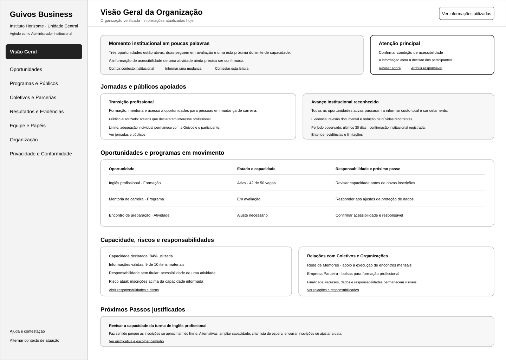
Visualizar o arquivo gráfico vetorial escalável
{kind=link}
O wireframe permanece estrutural e monocromático. Ele não define identidade visual final, componentes técnicos ou comportamento implementado.
3. Hierarquia funcional¶
| Ordem | Bloco | Responsabilidade |
|---|---|---|
| 1 | autoridade representada e contexto | mostrar Organização, unidade, papel, escopo de autoridade e verificação |
| 2 | momento institucional | explicar mudanças, compromissos afetados, fontes e incertezas |
| 3 | responsabilidade principal agora | apresentar uma responsabilidade material, motivo, consequência, responsável e alternativas |
| 4 | jornadas apoiadas e compromissos ativos | mostrar finalidade humana, compromisso assumido, limites e evidências sem expor perfis individuais |
| 5 | capacidade e condições para cumprir | relacionar recursos, disponibilidade, acessibilidade, suporte e limitações aos compromissos |
| 6 | movimentos institucionais | apresentar oportunidades e programas por estado, responsabilidade e decisão necessária |
| 7 | avanço institucional e evidências | reconhecer mudança relevante relacionada a compromissos, com evidência e limitações |
| 8 | relações, dependências e transparência | apresentar Coletivos, Organizações, recursos, dados, patrocínio e autonomia |
| 9 | decisões e Próximos Passos | justificar decisões e preservar alternativas legítimas |
| 10 | navegação institucional | permitir acesso às demais áreas da Organização |
4. Autoridade representada e contexto¶
O cabeçalho deverá permanecer visível e apresentar:
- nome da Organização;
- unidade ou filial;
- papel da pessoa autenticada;
- escopo de autoridade;
- estado de verificação;
- contexto selecionado;
- acesso a permissões, ajuda e contestação.
Exemplo:
Instituto Horizonte · Unidade Central
Você está atuando como Administrador institucional. Pode revisar informações, atribuir responsabilidades e pausar oportunidades desta unidade.
Ações fora do escopo deverão ser bloqueadas com explicação e caminho para solicitar autoridade legítima.
5. Como compreendemos este momento¶
A síntese deverá começar por mudanças e compromissos materiais, não por contagens.
Exemplo:
A formação de Inglês profissional se aproxima da capacidade declarada. A condição de acessibilidade do próximo encontro ainda não foi confirmada e afeta o compromisso de participação sem barreiras. Duas oportunidades continuam em avaliação, sem decisão necessária hoje.
A superfície deverá distinguir:
- informação confirmada pela Organização;
- observação operacional;
- fonte externa autorizada;
- inferência da Guivos;
- informação desconhecida;
- informação contestada.
Controles:
Ver informações, fontes e incertezas;Corrigir o contexto institucional;Informar uma mudança;Contestar esta leitura.
6. Responsabilidade principal agora¶
Somente uma responsabilidade material deverá receber prioridade principal.
Exemplo:
Confirmar a condição de acessibilidade do próximo encontro.
Esse compromisso afeta a decisão e a participação das pessoas. A informação precisa ser confirmada antes da abertura de novas inscrições. Ainda não existe responsável atribuído.
O bloco deverá mostrar:
- compromisso relacionado;
- motivo;
- prazo, risco ou consequência real;
- responsável ou ausência de responsável;
- ação principal;
- alternativas;
- possibilidade de contestação.
Ações possíveis:
- revisar agora;
- atribuir responsável;
- solicitar apoio especializado;
- limitar disponibilidade;
- pausar a atividade;
- definir prazo legítimo;
- contestar a prioridade.
7. Jornadas apoiadas e compromissos ativos¶
O bloco deverá apresentar:
- jornada ou necessidade geral apoiada;
- compromisso institucional;
- forma de contribuição;
- grupo geral autorizado;
- limites de atuação;
- evidências disponíveis;
- informações ainda não confirmadas.
Exemplo:
Transição profissional
Compromisso ativo: oferecer formação, mentoria e acesso a oportunidades com custos, condições e acessibilidade informados de forma compreensível.
A adequação individual permanece com a Guivos e o participante.
A Organização não receberá contexto pessoal individual sem autoridade, finalidade, necessidade e consentimento legítimos.
8. Capacidade e condições para cumprir¶
A capacidade deverá ser relacionada ao compromisso, evitando percentuais isolados.
Deverá apresentar:
- capacidade declarada;
- capacidade confirmada;
- utilização conhecida;
- recursos disponíveis;
- suporte;
- acessibilidade;
- qualidade e validade da informação;
- limitações;
- responsável;
- decisão necessária.
Exemplo:
A turma possui capacidade declarada para 50 participantes e 42 inscrições confirmadas. A ampliação não está confirmada. A Organização precisa decidir entre manter oito vagas, criar lista de espera ou encerrar inscrições.
9. Movimentos institucionais¶
Oportunidades e programas permanecerão visíveis, mas subordinados aos compromissos e responsabilidades.
Cada item deverá mostrar:
- título e natureza;
- jornada ou compromisso relacionado;
- estado;
- capacidade ou condição material;
- responsável institucional;
- alteração recente;
- decisão necessária;
- relação comercial, quando aplicável.
Estados resumidos:
- ativa;
- em avaliação;
- ajustes solicitados;
- próxima do limite de capacidade;
- pausada;
- expirando;
- informação contestada;
- encerrada.
Volume, vendas, conversão e publicidade não definirão a prioridade funcional.
10. Avanço institucional e evidências¶
Avanço somente aparecerá quando houver evidência suficiente de mudança relevante relacionada a um compromisso.
Exemplo:
Avanço institucional reconhecido: todas as oportunidades ativas passaram a informar custo total, cancelamento e recursos de acessibilidade. A mudança melhorou a clareza das condições para participantes e reduziu correções solicitadas durante a avaliação.
A interface deverá mostrar:
- mudança observada;
- compromisso relacionado;
- evidência utilizada;
- período;
- contribuição demonstrável;
- limitações e incertezas;
- fonte ou confirmação;
- possibilidade de correção.
Quando não houver evidência suficiente:
Nenhum avanço institucional foi confirmado neste período.
Aumento de vendas, visualizações, anúncios, seguidores ou quantidade de oportunidades não será apresentado isoladamente como evolução institucional.
11. Relações, dependências e transparência¶
Cada relação deverá mostrar:
- participante relacionado;
- finalidade;
- natureza do vínculo;
- autonomia e autoridade;
- responsabilidades;
- recursos ou apoio envolvidos;
- dados compartilhados;
- relação comercial ou patrocínio;
- dependências materiais;
- estado, revisão e encerramento.
Exemplo:
O Coletivo Rede de Mentores conduz encontros mensais com autonomia de governança. A Organização fornece espaço e suporte administrativo. Nenhum dado pessoal é compartilhado fora das finalidades informadas.
12. Decisões e Próximos Passos¶
A superfície deverá distinguir decisão institucional de tarefa operacional.
A explicação seguirá:
momento institucional compreendido
→ compromisso ou responsabilidade afetada
→ evidência e incertezas
→ decisão necessária
→ alternativas legítimas
→ contribuição esperada
→ responsável e prazo material
Exemplo:
Decidir a capacidade final da turma.
Faz sentido decidir agora porque as inscrições se aproximam do limite confirmado. As alternativas são manter oito vagas, criar lista de espera, confirmar ampliação responsável ou encerrar inscrições. Nenhuma alternativa será selecionada automaticamente.
13. Navegação institucional¶
A navegação inicial deverá incluir:
- Visão Geral;
- Oportunidades;
- Programas e Jornadas Apoiadas;
- Coletivos e Relações;
- Resultados e Evidências;
- Equipe, Papéis e Autoridades;
- Organização e Unidades;
- Privacidade, Proteção e Conformidade.
Os nomes poderão ser refinados posteriormente, mas deverão comunicar responsabilidades completas.
14. Estados alternativos preservados¶
Exigirão detalhamento separado:
- operação regular sem responsabilidade urgente;
- Organização não verificada;
- autoridade insuficiente;
- unidade sem responsável;
- contexto incompleto;
- informação contestada ou conflitante;
- nenhuma oportunidade ou programa ativo;
- capacidade limitada ou esgotada;
- obrigação material vencida;
- risco elevado;
- nenhuma evidência de avanço confirmada;
- relação institucional suspensa;
- falha de integração;
- baixa conectividade;
- operação em vários países, idiomas e moedas.
15. Critérios de aceite¶
A superfície foi considerada funcionalmente válida porque:
- autoridade e contexto antecedem ação;
- o momento institucional é compreensível, verificável e corrigível;
- uma responsabilidade material recebe prioridade;
- jornadas e compromissos antecedem volume operacional;
- capacidade é relacionada ao compromisso que precisa ser cumprido;
- oportunidades e programas permanecem subordinados;
- avanço utiliza evidência de mudança relevante;
- relações e dependências são transparentes;
- decisões possuem justificativa e alternativas;
- a superfície não parece painel comercial genérico;
- o comportamento permanece alinhado à Fundação da Guivos.
16. Situação¶
A Visão Geral da Organização está validada funcionalmente e reformulada em baixa fidelidade.
Ela continua sendo hipótese estrutural e ainda não constitui protótipo navegável, design visual ou implementação.
17. Limites¶
Esta versão não cria protótipo navegável, design visual final, testes de usabilidade, componentes técnicos, indicadores empresariais finais, preços, planos comerciais, validação jurídica ou desenvolvimento.
18. Próxima etapa da ordem autorizada¶
Após a integração deste incremento, a próxima etapa será a validação funcional do Início do Coletivo, em incremento separado.
Validação Funcional e Reformulação da Visão Geral da Organização¶
1. Finalidade¶
Este documento registra a primeira validação funcional da Visão Geral da Organização e reformula sua hierarquia para que a superfície conduza responsabilidade institucional, compreensão verificável do momento e decisões justificadas.
A validação não trata o wireframe como design final. Ela verifica se a estrutura ajuda um representante autorizado a responder:
Em nome de qual Organização estou atuando, qual é o momento institucional, qual responsabilidade exige decisão e como a Organização está cumprindo seus compromissos com jornadas humanas?
2. Gate obrigatório da Fundação¶
A superfície foi avaliada segundo:
- Essência da Guivos;
- Propósito;
- Missão Operacional;
- Visão de Longo Prazo;
- Constituição da Guivos;
- Princípios Permanentes;
- presença companheira;
- compreensão verificável do momento;
- evidência de avanço relevante;
- explicabilidade do Próximo Passo;
- autonomia, privacidade, transparência e contestação.
Falha material em qualquer dimensão impede avanço para protótipo, design, testes, especificação técnica ou desenvolvimento.
3. Cenário de decisão utilizado¶
A validação considera uma pessoa autorizada que representa uma Organização com:
- oportunidades e programas em estados diferentes;
- capacidade parcialmente utilizada;
- uma informação de acessibilidade pendente;
- relações com Coletivos e outras Organizações;
- alterações recentes em condições e responsabilidades;
- necessidade de decidir entre corrigir, atribuir responsável, limitar disponibilidade ou pausar uma atividade.
A superfície precisa permitir que essa pessoa compreenda o contexto antes de agir.
4. Diagnóstico da versão inicial¶
A versão inicial estabeleceu corretamente:
- identidade institucional;
- leitura do momento;
- uma atenção principal;
- jornadas apoiadas;
- oportunidades e programas;
- avanço institucional;
- capacidade, riscos e responsabilidades;
- relações;
- Próximos Passos justificados.
Contudo, a validação identificou riscos funcionais.
4.1 Contagens dominavam a leitura do momento¶
A síntese iniciava por quantidade de oportunidades ativas e em avaliação. Isso poderia transformar o momento institucional em inventário operacional.
4.2 Blocos com importância visual semelhante¶
Jornadas, avanço, oportunidades, capacidade e relações apareciam como cartões equivalentes. A responsabilidade principal poderia perder prioridade.
4.3 Jornadas e públicos poderiam sugerir acesso indevido a perfis¶
A expressão públicos apoiados precisava deixar explícito que se refere a grupos gerais autorizados, não a acesso ao contexto individual de participantes.
4.4 Avanço institucional poderia ser confundido com melhoria interna isolada¶
Uma mudança de processo somente representa avanço quando melhora, de forma demonstrável, a capacidade de cumprir compromissos ou reduzir barreiras para jornadas humanas.
4.5 Capacidade aparecia como percentual genérico¶
Percentuais de utilização não explicavam necessariamente qual compromisso estava em risco, quem era responsável ou qual decisão precisava ser tomada.
4.6 Atenção principal e Próximos Passos poderiam duplicar ações¶
A estrutura precisava distinguir:
- responsabilidade material atual;
- decisão necessária;
- alternativas legítimas;
- tarefas operacionais decorrentes.
4.7 Estados de ausência não estavam suficientemente explícitos¶
A superfície precisava representar de forma honesta:
- ausência de urgência material;
- contexto incompleto;
- ausência de evidência de avanço;
- Organização não verificada;
- acesso restrito pelo papel.
5. Decisões de reformulação¶
5.1 Autoridade representada permanece visível¶
A superfície deverá mostrar de forma persistente:
- Organização;
- unidade ou filial;
- papel da pessoa autenticada;
- escopo de autoridade;
- estado de verificação;
- contexto de atuação selecionado.
A pessoa não deverá executar uma ação quando sua autoridade for insuficiente ou incerta.
5.2 Momento institucional começa por compromissos e mudanças materiais¶
A leitura deverá responder:
- o que mudou;
- qual compromisso foi afetado;
- qual informação sustenta a leitura;
- o que permanece desconhecido ou contestado;
- o que não exige ação agora.
Contagens poderão aparecer como contexto secundário, nunca como definição principal do momento.
5.3 Atenção principal passa a ser Responsabilidade principal agora¶
O bloco deverá apresentar uma única responsabilidade material quando existir, mostrando:
- compromisso relacionado;
- motivo da prioridade;
- prazo, risco ou consequência real;
- responsável atual ou ausência de responsável;
- ação principal;
- alternativas;
- possibilidade de contestação.
Urgência artificial, pressão comercial e linguagem de desempenho serão proibidas.
5.4 Jornadas apoiadas são apresentadas com compromissos ativos¶
A superfície deverá mostrar:
- jornada ou necessidade geral apoiada;
- compromisso assumido pela Organização;
- forma de contribuição;
- público geral autorizado;
- limites e exclusões;
- evidências disponíveis;
- informações ainda não confirmadas.
A Organização não receberá contexto pessoal individual sem autoridade, finalidade e consentimento legítimos.
5.5 Capacidade é ligada ao compromisso que precisa ser cumprido¶
A capacidade deverá ser apresentada por condição material:
- capacidade declarada;
- capacidade confirmada;
- utilização conhecida;
- recursos disponíveis;
- acessibilidade;
- suporte;
- qualidade da informação;
- limitações;
- responsável;
- decisão necessária.
Percentuais genéricos não deverão substituir explicação.
5.6 Oportunidades e programas tornam-se movimentos operacionais subordinados¶
Cada movimento deverá indicar:
- compromisso ou jornada relacionada;
- estado real;
- capacidade e condições;
- alteração material recente;
- responsabilidade institucional;
- decisão pendente;
- relação comercial, quando aplicável.
Volume, vendas e conversão não dominarão a superfície.
5.7 Avanço institucional exige relação com compromisso humano¶
Um avanço somente será reconhecido quando houver:
- mudança relevante;
- compromisso institucional relacionado;
- evidência utilizada;
- período observado;
- contribuição demonstrável;
- limitações e incertezas;
- confirmação ou fonte;
- possibilidade de correção.
Quando não houver evidência suficiente, a superfície deverá declarar:
Nenhum avanço institucional foi confirmado neste período.
Isso não significa ausência de trabalho; significa ausência de evidência suficiente de mudança relevante.
5.8 Relações mostram dependências e limites de autoridade¶
Relações com Coletivos e Organizações deverão informar:
- finalidade;
- natureza do vínculo;
- autonomia de cada participante;
- responsabilidades;
- recursos;
- dados compartilhados;
- patrocínio ou relação comercial;
- dependências materiais;
- estado, revisão e encerramento.
5.9 Próximos Passos passam a ser decisões justificadas¶
A superfície deverá distinguir decisão de tarefa.
A cadeia será:
momento institucional compreendido
→ compromisso ou responsabilidade afetada
→ evidência e incertezas
→ decisão necessária
→ alternativas legítimas
→ contribuição esperada
→ responsável e prazo material
A ação principal não poderá ocultar alternativas como corrigir, atribuir, limitar, pausar, solicitar apoio, adiar ou contestar.
6. Hierarquia funcional reformulada¶
autoridade representada e contexto
→ momento institucional e como foi compreendido
→ responsabilidade principal agora
→ jornadas apoiadas e compromissos ativos
→ capacidade e condições para cumprir
→ oportunidades e programas em movimento
→ avanço institucional e evidências
→ relações, dependências e transparência
→ decisões e Próximos Passos justificados
→ navegação institucional
7. Conteúdo prioritário no primeiro campo visual¶
Sem depender de rolagem extensa, a superfície deverá mostrar:
- quem está sendo representado;
- qual autoridade está ativa;
- como o momento foi compreendido;
- qual responsabilidade material exige decisão;
- por que essa responsabilidade importa;
- qual ação principal e quais alternativas estão disponíveis.
8. Linguagem aprovada¶
Preferir:
Responsabilidade principal agora;Como compreendemos este momento;Jornadas apoiadas e compromissos ativos;Capacidade e condições para cumprir;Movimentos institucionais;Avanço institucional reconhecido;Decisões e Próximos Passos;Ver informações, fontes e incertezas;Corrigir ou contestar esta leitura.
Evitar:
performancesem definição;sucessosem critério;impactosem evidência;crescimentocomo sinônimo de evolução;conversãocomo prioridade da tela;urgentesem prazo, risco ou obrigação real;público-alvoquando puder sugerir acesso individual indevido.
9. Estados alternativos obrigatórios¶
A validação preserva detalhamento posterior dos seguintes estados:
- operação regular sem responsabilidade urgente;
- Organização não verificada;
- autoridade insuficiente;
- unidade sem responsável;
- contexto institucional incompleto;
- informações conflitantes ou contestadas;
- nenhuma oportunidade ou programa ativo;
- capacidade limitada ou esgotada;
- obrigação material vencida;
- risco elevado;
- nenhuma evidência de avanço confirmada;
- relação institucional suspensa;
- falha de integração;
- baixa conectividade;
- operação em vários países, idiomas e moedas.
10. Teste funcional da ação principal¶
A ação principal deverá ser considerada válida somente quando:
- decorre de responsabilidade material;
- apresenta fonte ou motivo;
- respeita a autoridade do representante;
- não mascara incerteza;
- oferece alternativa legítima;
- não utiliza pressão comercial;
- permite correção ou contestação;
- preserva a autonomia de Pessoas e Coletivos relacionados.
11. Resultado da validação¶
A Visão Geral da Organização foi considerada funcionalmente válida após reformulação.
A validação confirma que a superfície pode avançar como hipótese estrutural porque:
- autoridade e contexto antecedem ação;
- momento institucional é verificável e corrigível;
- uma responsabilidade material recebe prioridade;
- jornadas e compromissos antecedem volume operacional;
- capacidade é relacionada ao dever de cumprir;
- movimentos operacionais permanecem subordinados;
- avanço exige evidência e contribuição demonstrável;
- relações apresentam dependências e transparência;
- decisões possuem justificativa e alternativas;
- métricas comerciais não substituem evolução institucional.
12. Limites¶
Esta validação não:
- cria protótipo navegável;
- define design visual final;
- executa testes com usuários;
- define componentes técnicos;
- estabelece indicadores empresariais finais;
- define preços ou planos;
- valida juridicamente Organizações;
- inicia Engenharia de Produto ou desenvolvimento.
13. Próxima etapa da ordem autorizada¶
Após a integração deste incremento, a próxima etapa da ordem definida será a validação funcional do Início do Coletivo.
O detalhamento das relações entre Organizações e Coletivos e o retorno aos Resultados Empresariais permanecerão posteriores e separados.
Wireframe de Baixa Fidelidade do Início do Coletivo¶
1. Pergunta da superfície¶
Por que este Coletivo existe, qual é seu momento, o que precisa ser cuidado e como posso participar sem pressão ou perda de autonomia?
O Início do Coletivo é a superfície principal para compreender propósito, pertencimento, momento coletivo, necessidades materiais, ações compartilhadas, participação voluntária, governança, recursos, relações e avanço.
A superfície não deverá funcionar como feed infinito, mural genérico, ranking de membros, agenda isolada, sistema de cobrança ou mecanismo de pressão por participação.
2. Wireframe reformulado¶
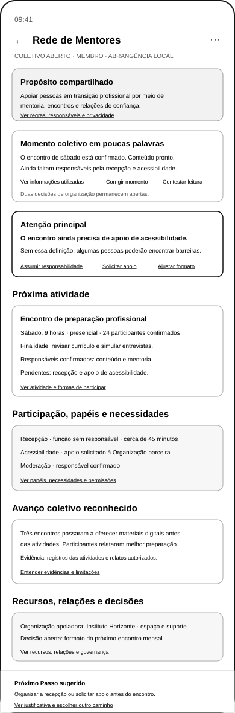
Visualizar o arquivo gráfico vetorial escalável
{kind=link}
O wireframe permanece estrutural e monocromático. Ele não define identidade visual final, componentes técnicos ou comportamento implementado.
3. Hierarquia funcional¶
| Ordem | Bloco | Responsabilidade |
|---|---|---|
| 1 | propósito, identidade e participação | mostrar Coletivo, propósito, papel, visibilidade, pertencimento, disponibilidade e regras essenciais |
| 2 | momento coletivo | explicar mudanças, necessidades, decisões, fontes e incertezas relacionadas ao propósito |
| 3 | necessidade ou decisão que precisa de cuidado | apresentar um item material sem culpa, exposição ou pressão |
| 4 | ação compartilhada | mostrar atividade ou ação relacionada ao propósito, com condições e alternativas |
| 5 | formas voluntárias de participar | diferenciar convite, disponibilidade, papel aceito, recusa, pausa e saída |
| 6 | decisões, papéis e governança | separar consulta, autoridade, decisão, execução, moderação e revisão |
| 7 | recursos, relações e autonomia | apresentar apoios, dependências, dados, patrocínios e limites de autoridade |
| 8 | avanço coletivo e evidências | reconhecer mudança relevante relacionada ao propósito, com limites |
| 9 | escolhas e Próximos Passos | justificar possibilidades sem impor ritmo ou atribuir pessoas automaticamente |
| 10 | navegação do Coletivo | permitir acesso às demais áreas do Coletivo |
4. Propósito, identidade e participação¶
O cabeçalho deverá apresentar:
- nome do Coletivo;
- propósito compartilhado;
- tipo e abrangência;
- visibilidade;
- papel da pessoa autenticada;
- estado de participação;
- disponibilidade atual;
- responsáveis ou moderadores;
- acesso a regras, privacidade, ajuda, denúncia, pausa e saída.
Exemplo:
Rede de Mentores
Propósito: apoiar pessoas em transição profissional por meio de mentoria, encontros e relações de confiança.
Você participa como membro e informou que ainda não decidiu se poderá colaborar nesta semana.
Pertencimento, disponibilidade, responsabilidade e autoridade deverão permanecer distintos.
5. Como compreendemos este momento¶
A síntese deverá começar pelo propósito, por mudanças e necessidades materiais.
Exemplo:
O encontro de sábado está confirmado e o conteúdo está preparado. A recepção ainda não possui responsável aceito, e o apoio de acessibilidade depende de confirmação. Uma decisão sobre o formato do encontro seguinte continua aberta, sem prazo para hoje.
A superfície deverá distinguir:
- informação confirmada pelo Coletivo;
- atividade observada;
- informação de Organização apoiadora;
- inferência da Guivos;
- informação desconhecida;
- informação contestada.
Controles:
Ver informações, fontes e incertezas;Corrigir o momento do Coletivo;Informar uma mudança;Contestar esta leitura.
Contagens de membros, mensagens ou atividades poderão aparecer como contexto secundário, nunca como definição principal do momento.
6. O que precisa de cuidado agora¶
Somente uma necessidade ou decisão material deverá receber prioridade principal quando existir.
Exemplo:
Definir uma forma acessível de recepção para o encontro.
Essa necessidade afeta a participação de algumas pessoas. Ninguém aceitou a função até o momento. O Coletivo pode simplificar a recepção, solicitar apoio, ajustar o formato ou adiar a atividade.
O bloco deverá mostrar:
- relação com o propósito;
- motivo;
- consequência real;
- prazo legítimo, quando houver;
- quem pode decidir;
- quem pode colaborar;
- alternativas;
- possibilidade de recusa e contestação.
A ausência de voluntários não deverá gerar culpa, exposição pública ou pressão emocional.
7. Ação compartilhada¶
A próxima atividade continuará visível quando for material, mas será subordinada ao propósito.
O bloco deverá mostrar:
- título;
- finalidade;
- resultado esperado sem promessa;
- data e horário;
- modalidade ou local;
- condições de participação;
- capacidade;
- acessibilidade;
- responsáveis confirmados;
- necessidades ainda abertas;
- riscos ou alterações;
- alternativas em caso de insuficiência;
- formas de participar, observar, apoiar ou não participar.
Exemplo:
Encontro de preparação profissional
Sábado, às 9 horas. A atividade apoia pessoas que desejam revisar currículo e simular entrevistas. Conteúdo e mentoria possuem responsáveis confirmados. Recepção e acessibilidade ainda dependem de solução aceita.
8. Formas voluntárias de participar¶
A superfície deverá diferenciar:
- membro;
- observador;
- participante de atividade;
- colaborador ocasional;
- responsável por função aceita;
- moderador;
- pessoa com autoridade de decisão.
Estados de disponibilidade:
- disponível;
- indisponível;
- ainda não decidiu;
- deseja apenas acompanhar;
- participação pausada;
- saiu do Coletivo.
Cada convite ou necessidade deverá explicar:
- finalidade;
- esforço estimado;
- prazo real;
- informações acessadas;
- autoridade necessária;
- como aceitar;
- como recusar;
- como desistir;
- alternativa caso ninguém aceite.
Nenhum papel será atribuído automaticamente. Recusa, silêncio, ausência ou pausa não reduzirão pertencimento nem reputação.
9. Decisões, papéis e governança¶
A superfície deverá separar:
- consulta;
- recomendação;
- decisão formal;
- execução;
- moderação;
- revisão e contestação.
Cada decisão deverá mostrar:
- natureza;
- quem pode propor;
- quem pode contribuir;
- quem possui autoridade para decidir;
- prazo;
- alternativas;
- impactos esperados;
- conflitos declarados;
- fundamento e registro;
- possibilidade de revisão;
- responsável pela execução, quando houver aceitação.
Votação não será o padrão universal. Popularidade, competição, maioria simples ou volume de reações não substituirão regras legítimas de governança.
10. Recursos, relações e autonomia¶
O bloco poderá reunir:
- recursos disponíveis;
- necessidades de apoio;
- locais e equipamentos;
- conteúdos e documentos;
- Organizações apoiadoras;
- Coletivos parceiros;
- especialistas;
- patrocínios identificados;
- dados compartilhados;
- dependências materiais;
- limites de autoridade;
- possibilidade de encerramento.
Exemplo:
O Instituto Horizonte fornece espaço e suporte administrativo. O Coletivo mantém sua governança. Nenhum dado pessoal é compartilhado fora das finalidades informadas.
O detalhamento completo das relações entre Organizações e Coletivos permanece para a etapa 3.
11. Avanço coletivo e evidências¶
Avanço somente aparecerá quando houver evidência suficiente de mudança relevante para o propósito.
Exemplo:
Avanço coletivo reconhecido: os materiais passaram a ser disponibilizados antes dos encontros e em formato digital acessível. Participantes autorizados relataram melhor preparação. A evidência ainda não permite concluir resultado profissional individual.
A interface deverá mostrar:
- mudança observada;
- propósito relacionado;
- evidência utilizada;
- período;
- contribuição demonstrável;
- fontes autorizadas;
- limitações e incertezas;
- possibilidade de correção.
Quando não houver evidência suficiente:
Nenhum avanço coletivo foi confirmado neste período.
Número de membros, publicações, reações, mensagens, atividades ou dias ativos não será apresentado isoladamente como evolução coletiva.
12. Escolhas e Próximos Passos¶
A superfície deverá apresentar escolhas sem determinar quem deve agir.
A explicação seguirá:
momento coletivo compreendido
→ propósito relacionado
→ necessidade, decisão ou possibilidade atual
→ evidências e incertezas
→ escolha ou Próximo Passo
→ contribuição esperada
→ alternativas e limites
→ responsáveis somente após aceitação
Exemplo:
Escolher como garantir a recepção do encontro.
Faz sentido resolver essa necessidade porque a atividade está confirmada e a chegada dos participantes precisa ser compreensível. O Coletivo pode simplificar o processo, convidar pessoas, solicitar apoio, ajustar o formato ou adiar. Ninguém será atribuído automaticamente.
13. Navegação do Coletivo¶
A navegação inicial deverá incluir:
- Início;
- Propósito e Sobre o Coletivo;
- Atividades e Ações;
- Participação e Papéis;
- Decisões e Governança;
- Recursos;
- Relações e Apoios;
- Avanços e Aprendizados;
- Privacidade, Proteção e Moderação.
Os nomes poderão ser refinados posteriormente, mas deverão comunicar responsabilidades completas.
14. Estados alternativos preservados¶
Exigirão detalhamento separado:
- Coletivo recém-criado;
- pessoa observando antes de participar;
- solicitação de participação pendente;
- participação pausada;
- ausência de atividade próxima;
- operação regular sem necessidade material;
- nenhuma pessoa disponível para uma função;
- atividade ajustada, adiada ou cancelada;
- conflito de governança;
- moderação ou proteção urgente;
- saída de responsável;
- recurso insuficiente;
- relação com Organização contestada;
- informação sensível protegida;
- nenhuma evidência de avanço confirmada;
- baixa conectividade;
- acessibilidade ampliada;
- encerramento do Coletivo.
15. Critérios de aceite¶
A superfície foi considerada funcionalmente válida porque:
- propósito e pertencimento antecedem atividade;
- o momento coletivo é compreensível, verificável e corrigível;
- uma necessidade material recebe cuidado sem pressão;
- a ação compartilhada permanece subordinada ao propósito;
- pertencimento, disponibilidade, responsabilidade e autoridade são distintos;
- papéis dependem de aceitação explícita;
- ausência, recusa, pausa e saída permanecem legítimas;
- governança separa consulta, decisão e execução;
- relações de apoio preservam autonomia;
- avanço utiliza evidência de mudança relevante;
- escolhas possuem justificativa e alternativas;
- a superfície não parece feed, ranking, agenda ou sistema de cobrança;
- o comportamento permanece alinhado à Fundação da Guivos.
16. Situação¶
O Início do Coletivo está validado funcionalmente e reformulado em baixa fidelidade.
Ele continua sendo hipótese estrutural e ainda não constitui protótipo navegável, design visual ou implementação.
17. Limites¶
Esta versão não detalha integralmente as relações entre Organizações e Coletivos, não cria protótipo navegável, design visual final, testes de usabilidade, componentes técnicos, sistema universal de votação, modelo jurídico, regras universais de moderação ou desenvolvimento.
18. Próxima etapa da ordem autorizada¶
Após a integração deste incremento, a próxima etapa será o detalhamento funcional das relações entre Organizações e Coletivos, em incremento separado.
Validação Funcional e Reformulação do Início do Coletivo¶
1. Finalidade¶
Este documento registra a primeira validação funcional do Início do Coletivo e reformula sua hierarquia para preservar propósito compartilhado, pertencimento voluntário, participação protegida, ação concreta e governança legítima.
A validação não trata o wireframe como design final. Ela verifica se a estrutura ajuda uma pessoa a responder:
Por que este Coletivo existe, qual é seu momento, o que precisa ser cuidado e como posso participar sem pressão ou perda de autonomia?
2. Gate obrigatório da Fundação¶
A superfície foi avaliada segundo:
- Essência da Guivos;
- Propósito;
- Missão Operacional;
- Visão de Longo Prazo;
- Constituição da Guivos;
- Princípios Permanentes;
- presença companheira;
- compreensão verificável do momento;
- evidência de avanço relevante;
- explicabilidade do Próximo Passo;
- participação voluntária;
- privacidade, proteção, contestação e saída legítima.
Falha material em qualquer dimensão impede avanço para protótipo, design, testes, especificação técnica ou desenvolvimento.
3. Cenário de decisão utilizado¶
A validação considera um Coletivo com:
- propósito confirmado;
- atividade próxima;
- papéis já aceitos e necessidades ainda abertas;
- apoio de uma Organização;
- uma decisão coletiva pendente;
- diferentes estados de disponibilidade entre os membros;
- evidências parciais de avanço;
- necessidade de preservar participação, recusa, pausa e saída.
A superfície precisa ajudar membros, responsáveis e moderadores a compreender o contexto sem transformar pertencimento em obrigação.
4. Diagnóstico da versão inicial¶
A versão inicial estabeleceu corretamente:
- propósito e identidade;
- momento coletivo;
- atenção principal;
- próxima atividade;
- papéis e necessidades;
- avanço coletivo;
- recursos e relações;
- decisões e governança;
- Próximos Passos justificados.
Contudo, a validação identificou riscos funcionais.
4.1 A atividade mais próxima poderia dominar o propósito¶
A superfície poderia ser percebida como agenda operacional. O Coletivo precisa continuar compreensível mesmo quando não houver evento próximo.
4.2 Necessidades sem responsável poderiam gerar pressão social¶
Exibir funções abertas sem proteção suficiente poderia induzir culpa, exposição ou comparação entre membros.
4.3 Pertencimento, disponibilidade e responsabilidade poderiam se confundir¶
Ser membro não significa estar disponível. Estar disponível não significa aceitar uma função. Aceitar uma função não concede automaticamente autoridade de governança.
4.4 Convites poderiam parecer atribuições¶
Um convite para colaborar precisa ser recusável e não pode criar obrigação, punição, perda de visibilidade ou queda de reputação.
4.5 Avanço coletivo poderia ser confundido com atividade ou adesão¶
Quantidade de membros, encontros, publicações, reações ou horas dedicadas não demonstra, isoladamente, avanço relacionado ao propósito.
4.6 Governança poderia virar votação por popularidade¶
A superfície precisava separar consulta, recomendação, decisão formal, moderação e execução.
4.7 Relações de apoio poderiam obscurecer autonomia¶
Apoio institucional, recurso ou patrocínio não pode transferir automaticamente a direção do Coletivo para uma Organização.
5. Decisões de reformulação¶
5.1 Propósito, identidade e estado de participação permanecem visíveis¶
A superfície deverá apresentar:
- nome do Coletivo;
- propósito compartilhado;
- abrangência e visibilidade;
- papel da pessoa autenticada;
- estado de participação;
- estado de disponibilidade atual;
- regras essenciais;
- responsáveis pela moderação;
- acesso a privacidade, denúncia, pausa e saída.
Pertencimento, disponibilidade e responsabilidade deverão ser estados distintos.
5.2 Momento coletivo começa por propósito, mudanças e necessidades materiais¶
A leitura deverá explicar:
- o que mudou;
- qual parte do propósito foi afetada;
- qual atividade, necessidade ou decisão é material;
- quais informações sustentam a leitura;
- o que permanece desconhecido ou contestado;
- o que não exige ação agora.
Contagens de membros, mensagens ou atividades serão contexto secundário.
5.3 Atenção principal passa a ser Necessidade ou decisão que precisa de cuidado¶
Somente um item material deverá receber prioridade quando existir.
O bloco deverá mostrar:
- relação com o propósito;
- motivo;
- consequência real;
- prazo legítimo, quando houver;
- quem pode decidir;
- quem pode colaborar;
- alternativas;
- possibilidade de recusa ou contestação.
A ausência de voluntários não poderá gerar culpa, exposição pública ou pressão emocional.
5.4 Ação compartilhada substitui agenda dominante¶
A próxima atividade continuará visível quando for material, mas será apresentada como uma ação a serviço do propósito.
O bloco deverá mostrar:
- finalidade;
- resultado esperado sem promessa;
- data, modalidade e local;
- condições de participação;
- acessibilidade;
- responsáveis confirmados;
- necessidades ainda abertas;
- alternativas em caso de insuficiência;
- possibilidade de participar, observar, apoiar ou não participar.
5.5 Formas de participar são voluntárias e explícitas¶
A superfície deverá diferenciar:
- membro;
- observador;
- participante de uma atividade;
- colaborador ocasional;
- responsável por uma função;
- moderador;
- pessoa com autoridade de decisão.
Cada convite ou necessidade deverá informar:
- finalidade;
- esforço estimado;
- prazo real;
- dados ou informações acessados;
- autoridade necessária;
- forma de aceitar;
- forma de recusar;
- possibilidade de desistir;
- alternativa caso ninguém aceite.
Nenhum papel será atribuído automaticamente.
5.6 Disponibilidade não altera pertencimento¶
Estados possíveis incluem:
- disponível;
- indisponível;
- ainda não decidiu;
- participação pausada;
- deseja apenas acompanhar;
- saiu do Coletivo.
Ausência, silêncio, recusa ou pausa não serão tratados como desengajamento moral, falha ou perda automática de pertencimento.
5.7 Governança separa consulta, decisão e execução¶
Cada decisão deverá informar:
- natureza da decisão;
- quem pode propor;
- quem pode contribuir;
- quem possui autoridade para decidir;
- prazo;
- alternativas;
- impactos esperados;
- conflitos declarados;
- registro e fundamento;
- possibilidade de revisão ou contestação;
- responsável pela execução, quando aplicável.
Votação não será o padrão universal. Ranking, competição e maioria simples não substituirão regras legítimas de governança.
5.8 Recursos e relações preservam autonomia¶
A superfície poderá resumir:
- recursos disponíveis;
- necessidades de apoio;
- Organizações apoiadoras;
- Coletivos parceiros;
- patrocínios identificados;
- dados compartilhados;
- dependências materiais;
- limites de autoridade;
- possibilidade de encerramento.
O detalhamento completo das relações entre Organizações e Coletivos permanece para a etapa 3.
5.9 Avanço coletivo exige mudança relacionada ao propósito¶
Um avanço somente será reconhecido quando houver:
- mudança relevante;
- relação com o propósito;
- evidência utilizada;
- período observado;
- contribuição demonstrável;
- percepção autorizada dos participantes, quando aplicável;
- limitações e incertezas;
- possibilidade de correção.
Quando não houver evidência suficiente, a superfície deverá declarar:
Nenhum avanço coletivo foi confirmado neste período.
Número de membros, atividades, publicações, reações, mensagens ou dias ativos não será apresentado isoladamente como avanço.
5.10 Próximos Passos passam a ser escolhas justificadas¶
A cadeia será:
momento coletivo compreendido
→ propósito relacionado
→ necessidade, decisão ou possibilidade atual
→ evidências e incertezas
→ escolha ou Próximo Passo
→ contribuição esperada
→ alternativas e limites
→ responsáveis somente após aceitação
A interface não deverá selecionar automaticamente quem deve participar.
6. Hierarquia funcional reformulada¶
propósito, identidade e participação
→ momento coletivo e como foi compreendido
→ necessidade ou decisão que precisa de cuidado
→ ação compartilhada relacionada ao propósito
→ formas voluntárias de participar
→ decisões, papéis e governança
→ recursos, relações e autonomia
→ avanço coletivo e evidências
→ escolhas e Próximos Passos justificados
→ navegação do Coletivo
7. Conteúdo prioritário no primeiro campo visual¶
Sem depender de rolagem extensa, a superfície deverá mostrar:
- por que o Coletivo existe;
- qual é o estado de participação da pessoa;
- como o momento foi compreendido;
- qual necessidade ou decisão material exige cuidado;
- por que isso importa;
- quais formas voluntárias de participar ou não participar existem.
8. Linguagem aprovada¶
Preferir:
Seu estado de participação;Como compreendemos este momento;O que precisa de cuidado agora;Ação compartilhada;Formas de participar;Papéis aceitos e necessidades abertas;Decisões e governança;Avanço coletivo e evidências;Pausar participação;Recusar sem prejuízo;Corrigir ou contestar esta leitura.
Evitar:
membro inativo;baixa participaçãosem contexto;engajamento insuficiente;meta de atividadecomo obrigação;top colaboradores;mais comprometidos;faltam voluntáriosem tom de cobrança;impactosem evidência;urgentesem risco, prazo ou proteção real.
9. Estados alternativos obrigatórios¶
Permanecem para detalhamento posterior:
- Coletivo recém-criado;
- pessoa observando antes de participar;
- solicitação de entrada pendente;
- participação pausada;
- ausência de atividade próxima;
- operação regular sem necessidade material;
- nenhuma pessoa disponível para uma função;
- atividade ajustada, adiada ou cancelada;
- conflito de governança;
- moderação ou proteção urgente;
- responsável que saiu;
- recurso insuficiente;
- relação com Organização contestada;
- informação sensível protegida;
- nenhuma evidência de avanço confirmada;
- baixa conectividade;
- necessidade ampliada de acessibilidade;
- Coletivo encerrando suas atividades.
10. Teste funcional da participação¶
Uma solicitação de participação somente será válida quando:
- possui finalidade clara;
- informa esforço e prazo reais;
- não expõe quem recusou;
- não ameaça pertencimento;
- exige aceitação explícita;
- permite desistência;
- respeita permissões e privacidade;
- possui alternativa caso ninguém aceite;
- não utiliza culpa, ranking ou pressão emocional.
11. Resultado da validação¶
O Início do Coletivo foi considerado funcionalmente válido após reformulação.
A validação confirma que a superfície pode avançar como hipótese estrutural porque:
- propósito e pertencimento antecedem atividade;
- momento coletivo é verificável e corrigível;
- necessidade material recebe cuidado sem pressão;
- atividade é subordinada ao propósito;
- participação, disponibilidade, responsabilidade e autoridade são distintas;
- papéis exigem aceitação explícita;
- ausência, recusa e pausa permanecem legítimas;
- governança separa consulta, decisão e execução;
- relações de apoio não eliminam autonomia;
- avanço exige evidência e contribuição demonstrável;
- escolhas possuem justificativa e alternativas;
- a superfície não se reduz a feed, agenda ou sistema de cobrança.
12. Limites¶
Esta validação não:
- detalha integralmente as relações entre Organizações e Coletivos;
- cria protótipo navegável;
- define design visual final;
- executa testes com usuários;
- define componentes técnicos;
- cria sistema universal de votação;
- estabelece modelo jurídico;
- define regras universais de moderação;
- inicia Engenharia de Produto ou desenvolvimento.
13. Próxima etapa da ordem autorizada¶
Após a integração deste incremento, a próxima etapa será o detalhamento funcional das relações entre Organizações e Coletivos.
O retorno aos Resultados Empresariais e à capacidade de reinvestimento responsável permanecerá como etapa posterior e separada.
Contrato Funcional das Relações entre Organizações e Coletivos¶
1. Finalidade¶
Este documento detalha como uma Organização e um Coletivo poderão estabelecer, acompanhar, revisar, suspender e encerrar uma relação no ecossistema Guivos.
A relação deverá ser compreensível como um acordo explícito entre participantes distintos. Ela não cria propriedade sobre o Coletivo, não transfere automaticamente sua direção para a Organização e não autoriza o Coletivo a representar institucionalmente a Organização além do escopo acordado.
A experiência deverá permitir que qualquer pessoa autorizada responda:
Por que esta relação existe, quem autorizou, quais compromissos foram assumidos, quais recursos e dados estão envolvidos, quais limites protegem a autonomia e como a relação pode ser corrigida ou encerrada?
2. Gate obrigatório da Fundação¶
Toda relação deverá demonstrar aderência a:
- Essência da Guivos;
- Propósito;
- Missão Operacional;
- Visão de Longo Prazo;
- Constituição da Guivos;
- Princípios Permanentes;
- presença companheira;
- compreensão verificável do momento;
- evidência de avanço relevante;
- explicabilidade do Próximo Passo;
- dignidade, voluntariedade e ausência de coerção;
- transparência, privacidade, proteção e contestação.
Falha material impede ativação, renovação ou ampliação da relação.
3. Princípio central¶
participantes distintos
→ finalidade compartilhada e limitada
→ consentimento bilateral
→ autoridade identificada
→ compromissos verificáveis
→ recursos e dados transparentes
→ autonomia protegida
→ acompanhamento e revisão
→ saída possível e responsável
A relação é um meio para apoiar jornadas, propósitos e ações legítimas. Ela não é finalidade em si mesma e não poderá ser utilizada para fabricar aparência de impacto, legitimidade ou pertencimento.
4. Tipos de relação¶
Uma relação poderá combinar uma ou mais naturezas, desde que cada uma permaneça identificada:
- apoio institucional;
- patrocínio financeiro ou não financeiro;
- cessão de espaço, equipamento ou infraestrutura;
- cooperação em programa ou projeto;
- oferta de oportunidade aos participantes;
- apoio técnico, educacional, cultural, social ou comunitário;
- prestação de serviço;
- compartilhamento controlado de dados;
- comunicação, divulgação ou uso de marca;
- parceria para mobilização de recursos;
- vínculo institucional ou comunitário;
- operação conjunta de atividade;
- apoio de proteção, acessibilidade ou moderação.
A interface não deverá utilizar apenas o termo genérico parceria quando existirem obrigações, pagamentos, patrocínio, tratamento de dados ou autoridade operacional.
5. Elementos obrigatórios da relação¶
Toda relação deverá registrar:
- Organização e unidade envolvidas;
- Coletivo envolvido;
- natureza da relação;
- finalidade concreta;
- jornada, propósito ou ação apoiada;
- escopo incluído e excluído;
- autoridades que aprovaram;
- representantes e contatos operacionais;
- compromissos de cada participante;
- recursos financeiros e não financeiros;
- dados acessados, compartilhados ou produzidos;
- condições comerciais, patrocínio e uso de marca;
- riscos, dependências e conflitos conhecidos;
- evidências e critérios de acompanhamento;
- prazo, revisão e renovação;
- mecanismos de correção, contestação, suspensão e encerramento;
- destino de recursos, dados e comunicações após o término.
Nenhum campo material poderá ficar oculto em termos genéricos ou somente em documentos externos inacessíveis às pessoas autorizadas.
6. Consentimento e autoridade bilateral¶
6.1 Autoridade da Organização¶
A Organização deverá declarar:
- unidade representada;
- pessoa ou instância com autoridade para aprovar;
- limite financeiro e operacional da aprovação;
- capacidade de assumir os compromissos;
- responsável pela prestação de contas;
- eventuais aprovações adicionais necessárias.
6.2 Autoridade do Coletivo¶
O Coletivo deverá declarar:
- regra de governança aplicável;
- pessoa ou instância autorizada a aprovar;
- forma utilizada para consultar ou informar participantes, quando necessária;
- limites da representação;
- conflitos de interesse declarados;
- possibilidade de revisão ou contestação.
6.3 Regra de ativação¶
A relação somente poderá tornar-se ativa quando:
- as duas autoridades legítimas tiverem aprovado o mesmo escopo;
- divergências materiais estiverem resolvidas ou explicitamente registradas;
- recursos, dados e condições comerciais estiverem identificados;
- prazo, revisão e saída estiverem definidos;
- não existir bloqueio de proteção, privacidade ou alinhamento à Fundação.
Silêncio, presença em reunião, recebimento de recurso, uso informal de marca ou participação em atividade não equivalem a consentimento.
7. Limites de autoridade¶
7.1 A Organização não poderá presumir autoridade para¶
- alterar o propósito do Coletivo;
- definir quem pode pertencer ao Coletivo, salvo condição legítima e previamente acordada;
- atribuir funções a membros;
- controlar objetivos individuais;
- acessar dados pessoais fora da finalidade acordada;
- determinar decisões internas sem delegação explícita;
- condicionar pertencimento à compra, exposição de marca ou apoio comercial;
- impedir crítica, denúncia, pausa ou saída legítima;
- apresentar o Coletivo como propriedade, filial ou canal institucional sem base verdadeira.
7.2 O Coletivo não poderá presumir autoridade para¶
- representar a Organização fora do escopo;
- assumir compromissos financeiros em nome da Organização;
- utilizar marca, dados, recursos ou infraestrutura além das condições acordadas;
- prometer benefícios ou resultados não autorizados;
- alterar unilateralmente obrigações institucionais;
- compartilhar informações confidenciais;
- declarar endosso institucional inexistente.
7.3 Delegação¶
Qualquer delegação deverá informar:
- finalidade;
- poderes concedidos;
- limites;
- prazo;
- responsável;
- possibilidade de revogação;
- decisões que permanecem reservadas.
8. Compromissos e responsabilidades¶
Cada compromisso deverá conter:
- participante responsável;
- entrega ou condição esperada;
- finalidade;
- prazo ou frequência;
- critérios de conclusão;
- dependências;
- riscos;
- evidências aceitas;
- alternativa em caso de impossibilidade;
- consequência legítima do não cumprimento.
Responsabilidade institucional não poderá ser transferida informalmente a membros individuais. Participantes do Coletivo somente assumirão funções após aceitação explícita.
9. Recursos e condições econômicas¶
A relação deverá distinguir:
- recurso financeiro;
- recurso não financeiro;
- doação;
- patrocínio;
- empréstimo ou cessão temporária;
- prestação de serviço;
- desconto ou benefício;
- remuneração;
- reembolso;
- contrapartida de comunicação;
- exclusividade;
- receita compartilhada;
- propriedade de materiais ou ativos produzidos.
Para cada recurso, deverão ser visíveis:
- origem;
- valor ou estimativa, quando aplicável;
- finalidade permitida;
- restrições;
- responsável pela guarda e uso;
- prestação de contas necessária;
- destino de saldo, equipamento ou material não utilizado;
- condição de devolução ou encerramento.
Patrocínio e investimento comercial deverão permanecer identificados e não aumentarão automaticamente a relevância funcional de uma oportunidade, atividade ou recomendação.
10. Dados, privacidade e inteligência¶
A relação deverá declarar:
- quais dados serão utilizados;
- quem é responsável por cada tratamento;
- finalidade específica;
- base autorizativa e consentimento, quando aplicável;
- pessoas afetadas;
- nível de identificação ou anonimização;
- acesso permitido;
- compartilhamentos posteriores;
- período de retenção;
- forma de correção, revogação e exclusão;
- tratamento após suspensão ou encerramento;
- procedimento em caso de incidente.
A Organização não receberá automaticamente dados de membros do Coletivo. O Coletivo não poderá consentir genericamente em nome de pessoas quando a autorização individual for necessária.
Dados agregados, inferências da Guivos e evidências de avanço deverão permanecer diferenciados.
11. Marca, comunicação e reconhecimento público¶
A relação deverá informar:
- nomes e marcas que poderão ser utilizados;
- canais autorizados;
- textos ou declarações que exigem aprovação;
- forma de identificar apoio, patrocínio ou operação conjunta;
- limites para uso de imagens, depoimentos e histórias;
- possibilidade de retirada ou correção;
- comunicação em caso de suspensão ou término.
Nenhum participante poderá comunicar:
- impacto não demonstrado;
- aprovação inexistente;
- exclusividade não acordada;
- propriedade sobre o outro participante;
- apoio político, religioso, comercial ou institucional não autorizado;
- depoimento atribuído sem consentimento.
12. Autonomia e influência¶
A interface deverá tornar visíveis condições capazes de influenciar decisões, incluindo:
- exclusividade;
- dependência financeira relevante;
- controle editorial;
- aprovação prévia de atividades;
- direito de nomeação ou veto;
- metas comerciais;
- acesso privilegiado;
- obrigação de divulgação;
- seleção de públicos;
- conflito de interesse;
- relação entre representantes.
Dependência não significa automaticamente perda de autonomia, mas deverá ser reconhecida como risco quando puder limitar crítica, saída, decisão ou continuidade.
13. Proteção, acessibilidade e não retaliação¶
Toda relação deverá definir:
- responsabilidades de proteção;
- requisitos de acessibilidade;
- tratamento de denúncias;
- canal seguro e independente, quando necessário;
- resposta a risco urgente;
- proteção de informações sensíveis;
- proibição de retaliação;
- continuidade do cuidado após suspensão ou encerramento.
Uma denúncia ou contestação não poderá reduzir automaticamente pertencimento, acesso a direitos, visibilidade legítima ou participação futura.
14. Ciclo de vida¶
rascunho
→ proposta
→ avaliação bilateral
→ negociação
→ aprovada pelas autoridades
→ ativa
→ em revisão
→ renovada, ajustada, pausada ou encerrada
Estados adicionais poderão incluir:
- aguardando informação;
- aguardando consentimento;
- bloqueada por proteção ou privacidade;
- contestada;
- suspensa preventivamente;
- expirada;
- encerrada com obrigações remanescentes.
14.1 Rascunho¶
Ainda não cria compromisso, divulgação ou acesso a dados.
14.2 Proposta¶
Apresenta finalidade, escopo, recursos, dados, responsabilidades e condições para análise.
14.3 Avaliação bilateral¶
Cada participante verifica autoridade, capacidade, riscos e coerência com seu propósito.
14.4 Negociação¶
Alterações materiais permanecem visíveis e exigem nova confirmação das partes afetadas.
14.5 Ativa¶
Somente o escopo aprovado poderá ser executado.
14.6 Em revisão¶
Compara compromissos, evidências, riscos, alterações de contexto e vontade de continuidade.
14.7 Pausada¶
Interrompe temporariamente atividades definidas sem apagar histórico ou obrigações de proteção.
14.8 Encerrada¶
Finaliza a relação e executa o plano de transição de dados, recursos, comunicação e compromissos remanescentes.
15. Alterações materiais¶
Exigem nova avaliação e aprovação bilateral:
- mudança de finalidade;
- ampliação de público;
- novo tratamento de dados;
- aumento relevante de recurso ou obrigação;
- inclusão de exclusividade;
- alteração de autoridade;
- uso adicional de marca;
- transferência de operação;
- mudança de prazo ou renovação automática;
- alteração de critérios de participação;
- criação de nova contrapartida comercial;
- mudança que afete autonomia, proteção ou acessibilidade.
A simples edição por um representante não atualizará unilateralmente o contrato ativo.
16. Acompanhamento e evidência¶
O acompanhamento deverá comparar:
- compromisso assumido;
- execução observada;
- mudança relacionada à finalidade;
- evidência utilizada;
- contribuição provável de cada participante;
- limitações e fatores externos;
- efeitos não previstos;
- percepção autorizada das pessoas afetadas;
- riscos e correções necessárias.
Não representam avanço da relação por si só:
- quantidade de logotipos exibidos;
- número de reuniões;
- volume de mensagens;
- quantidade de membros alcançados;
- publicações e reações;
- valor financeiro isolado;
- duração da parceria;
- renovação automática;
- crescimento de visibilidade.
Quando não houver evidência suficiente, deverá ser declarado:
Nenhum avanço relacionado à finalidade desta relação foi confirmado neste período.
17. Revisão periódica¶
Toda relação ativa deverá possuir:
- data da próxima revisão;
- responsáveis dos dois participantes;
- informações a serem avaliadas;
- mudanças desde a última aprovação;
- compromissos cumpridos, atrasados ou inviáveis;
- riscos e incidentes;
- recursos e dados ainda necessários;
- manifestação sobre continuidade;
- alternativas de ajuste ou encerramento.
Relações sem prazo definido deverão, ainda assim, possuir revisão periódica explícita.
18. Contestação e resolução de divergências¶
Qualquer participante autorizado deverá poder:
- corrigir informação;
- registrar discordância;
- solicitar revisão;
- informar conflito de interesse;
- contestar evidência ou interpretação;
- denunciar descumprimento;
- pedir suspensão preventiva;
- propor encerramento.
A divergência deverá mostrar:
- ponto contestado;
- participantes afetados;
- evidências disponíveis;
- autoridade responsável pela análise;
- medida temporária, quando necessária;
- prazo de resposta;
- decisão e fundamento;
- possibilidade de revisão.
A Guivos poderá organizar informações e proteger o processo, mas não assumirá automaticamente autoridade jurídica, institucional ou coletiva que pertença aos participantes.
19. Suspensão urgente¶
Poderá ocorrer antes da conclusão da análise quando houver risco material relacionado a:
- segurança;
- privacidade;
- uso indevido de dados;
- fraude;
- assédio ou retaliação;
- discriminação;
- autoridade inválida;
- desvio de recursos;
- comunicação enganosa;
- violação grave da Fundação.
A suspensão deverá ser proporcional, registrada, revisável e limitada ao necessário.
20. Encerramento responsável¶
O encerramento deverá definir:
- data efetiva;
- atividades interrompidas e preservadas;
- comunicação às pessoas afetadas;
- destino de recursos e ativos;
- devoluções e prestações de contas;
- retenção, transferência ou exclusão de dados;
- retirada ou manutenção de marcas;
- continuidade de proteção e acessibilidade;
- responsabilidades remanescentes;
- registro histórico;
- proibição de retaliação;
- possibilidade de nova relação futura sem obrigação.
O encerramento não apagará evidências necessárias para responsabilidade, proteção ou auditoria, respeitados finalidade e prazo legítimos.
21. Registro funcional mínimo na experiência¶
A superfície de uma relação deverá apresentar, nesta ordem:
identidade dos participantes e estado
→ finalidade e jornada ou propósito apoiado
→ por que a relação existe
→ autoridades e limites de representação
→ compromissos de cada participante
→ recursos e condições econômicas
→ dados, privacidade e uso de inteligência
→ autonomia, influência e conflitos
→ evidências, riscos e limitações
→ revisão, contestação, suspensão e saída
→ decisões e Próximos Passos justificados
No primeiro campo visual deverão aparecer:
- Organização e Coletivo;
- natureza e estado da relação;
- finalidade;
- autoridade representada pela pessoa autenticada;
- atenção material, quando existir;
- próxima revisão ou decisão necessária;
- acesso a recursos, dados, limites e encerramento.
22. Próximos Passos da relação¶
A justificativa deverá seguir:
momento da relação
→ finalidade e compromisso afetado
→ evidências e incertezas
→ risco, necessidade ou possibilidade
→ decisão ou Próximo Passo
→ autoridade necessária
→ contribuição esperada
→ alternativas e consequências
→ responsável somente após aceite ou atribuição legítima
Nenhum Próximo Passo poderá ampliar autoridade, dados, recursos ou obrigações sem a aprovação exigida.
23. Estados alternativos obrigatórios¶
Permanecem reconhecidos:
- proposta recusada;
- autoridade insuficiente;
- aprovação divergente entre as partes;
- relação ativa sem atenção material;
- compromisso atrasado;
- recurso indisponível;
- dado ou consentimento ausente;
- conflito de interesse;
- uso de marca contestado;
- relação comercial não declarada;
- risco de perda de autonomia;
- denúncia em análise;
- suspensão urgente;
- renovação pendente;
- encerramento solicitado por uma das partes;
- encerramento com obrigações remanescentes;
- baixa conectividade;
- operação internacional;
- informação sensível protegida.
24. Linguagem aprovada¶
Preferir:
Finalidade desta relação;Quem aprovou e até onde pode decidir;Compromissos de cada participante;Recursos e condições;Dados utilizados e por quê;Autonomia e limites de influência;Como esta relação está sendo acompanhada;Revisar, contestar, pausar ou encerrar;Nenhum avanço foi confirmado neste período.
Evitar:
parceiro oficialsem critério;dono do Coletivo;Coletivo da Organizaçãoquando a relação não justificar essa identidade;impacto garantido;acesso à comunidadecomo se pessoas fossem recurso comercial;base de membros;engajamento obrigatório;renovação automáticasem destaque;aceite implícito;benefício mútuosem compromissos demonstráveis.
25. Critérios de aceite¶
O detalhamento poderá ser considerado funcionalmente estabelecido quando:
- relação não for confundida com propriedade ou subordinação;
- finalidade, natureza e escopo estiverem explícitos;
- consentimento e autoridade forem bilaterais;
- limites de representação estiverem visíveis;
- compromissos possuírem responsáveis e evidências;
- recursos e condições econômicas forem transparentes;
- dados possuírem finalidade, acesso, retenção e saída definidos;
- autonomia, influência e conflitos estiverem reconhecidos;
- proteção, acessibilidade e não retaliação estiverem preservadas;
- ciclo de vida, revisão e alterações materiais estiverem governados;
- contestação, suspensão e encerramento forem possíveis;
- avanço exigir mudança relacionada à finalidade;
- métricas operacionais não substituírem evidência;
- Próximos Passos não ampliarem obrigações sem aprovação;
- protótipo, design, teste, modelo jurídico e desenvolvimento não forem antecipados.
26. Limites¶
Este documento não:
- constitui contrato jurídico;
- define cláusulas universais para todos os países;
- substitui consentimentos, instrumentos legais ou políticas aplicáveis;
- cria sistema técnico de assinatura;
- define identidade visual;
- cria protótipo navegável;
- executa teste de usabilidade;
- inicia Engenharia de Produto;
- conclui a capacidade de reinvestimento responsável;
- cria a décima oitava decisão de Resultados Empresariais.
Jornadas Integradas — programa e governança
Programa Funcional do Ambiente de Simulação das Jornadas¶
1. Finalidade¶
Este documento define o programa funcional de um ambiente documental capaz de visualizar, relacionar e inspecionar as jornadas de Pessoa, Coletivo e Organização sem duplicar artefatos canônicos, ocultar lacunas ou transformar uma representação de arquitetura em produto implementado.
O ambiente deverá permitir responder:
Quem participa desta jornada, em qual papel, por quais superfícies passa, qual autoridade governa cada decisão, quais transições existem, qual é a maturidade de cada referência e onde ainda há lacunas?
A UXA-070 estabelece estrutura, taxonomias, critérios de reutilização e regras de governança. Ela não cria aplicativo, protótipo navegável, motor de simulação, componentes técnicos ou novas telas do produto.
2. Decisão estrutural¶
O ambiente será uma camada de leitura e composição por referência.
artefatos e autoridades canônicas
→ registro de nós e transições
→ perspectivas por participante e papel
→ sobreposição de maturidade, autoridade e lacunas
→ cenários documentais inspecionáveis
Ele nunca se torna fonte de verdade sobre a experiência. Em caso de divergência, prevalecem os contratos, programas, wireframes, validações e registros canônicos referenciados.
3. O que significa simulação neste programa¶
Neste pacote, simulação significa:
- percorrer uma sequência documental possível;
- alternar a perspectiva de participantes e papéis;
- visualizar entradas, decisões, estados e saídas;
- identificar transições condicionais, protegidas ou pendentes;
- comparar o que cada participante conhece em um mesmo ponto;
- localizar autoridades, dependências e lacunas;
- verificar se uma continuidade possui cobertura materializada e validada.
Não significa:
- executar lógica de negócio;
- imitar comportamento de uma aplicação real;
- produzir dados sintéticos como se fossem fatos;
- prever decisões de pessoas;
- preencher estados ausentes por inferência;
- testar usabilidade ou desempenho;
- substituir protótipo ou implementação.
4. Participantes estruturais¶
O ambiente reconhecerá exatamente três participantes estruturais.
| Participante | Natureza | Responsabilidade de leitura |
|---|---|---|
| Pessoa | indivíduo que explora, decide, participa, revisa e controla seus conteúdos e vínculos | compreender momento, escolhas, consequências, proteção e continuidade |
| Coletivo | formação voluntária reunida por propósito, causa, território, prática ou objetivo compartilhado | compreender propósito, participação, governança, atividades, proteção e relações |
| Organização | entidade institucional com identidade, autoridade, recursos, processos e responsabilidades | compreender capacidade, compromissos, oportunidades, relações e prestação de contas |
Publicidade, Guivos Ads, patrocinador, especialista, responsável e visitante não serão elevados a participantes estruturais quando atuarem como papéis, autoridades ou operadores dentro das jornadas existentes.
5. Papéis e perspectivas contextuais¶
Um participante poderá aparecer em perspectivas diferentes sem se tornar outra entidade.
| Perspectiva | Participante-base | Limite |
|---|---|---|
| visitante público | Pessoa | conhece somente conteúdo público e não adquire vínculo |
| pessoa autenticada | Pessoa | acessa estados protegidos sem autorização automática de processamento |
| solicitante | Pessoa | acompanha uma solicitação sem controlar a decisão protegida |
| participante de Coletivo | Pessoa | possui vínculo e permissões conforme papel aceito |
| responsável por Coletivo | Pessoa atuando em nome do Coletivo | exerce somente autoridade explicitamente concedida |
| representante institucional | Pessoa atuando em nome da Organização | exerce somente autoridade da unidade e do papel apresentados |
| autoridade protegida ou especialista | Pessoa em função limitada | decide somente o processo protegido correspondente |
| Organização apoiadora | Organização | apoia sem adquirir propriedade ou direção do Coletivo |
| operador econômico identificado | Organização ou capacidade Guivos Ads | financia exposição sem comprar relevância, reputação ou autoridade |
| observador de governança | Arquitetura e governança | inspeciona fontes e maturidade sem agir como usuário do produto |
A troca de perspectiva deverá modificar apenas o que contratos e autoridades permitem visualizar ou decidir.
6. Famílias de jornadas inventariadas¶
6.1 Jornada da Pessoa — início, compreensão e continuidade¶
Home pública
→ entrada protegida
→ acesso, quando necessário
→ escolha de modalidade
→ expressão guiada por texto ou voz
→ ajuda temporária solicitada, quando escolhida
→ inventário e autorização específica
→ processamento visível
→ compreensão inicial revisável
→ decisão sobre persistência e personalização
→ Tela Hoje e continuidades autorizadas
Autoridades principais: UXA-020, UXA-023, UXA-034 a UXA-037 e UXA-068 a UXA-069.
A família diretamente relacionada ao início protegido possui 17 estados materializados e 17 validados.
6.2 Jornada da Pessoa em Coletivos¶
A espinha dorsal P0A é:
Explorar Coletivos
→ Resultados de Busca
→ Perfil Público
→ Revisão e Solicitação de Participação
→ Solicitação Pendente
→ Meus Coletivos
→ Central de Atualizações
→ Início do Participante
As cinco primeiras referências estão materializadas e validadas. Meus Coletivos, Central de Atualizações e a reformulação do Início do Participante permanecem não iniciados no programa atual.
6.3 Jornada do responsável por Coletivo¶
A perspectiva do responsável deverá organizar:
representação e autoridade
→ momento coletivo
→ solicitações e vínculos
→ comunicação oficial
→ atividades, consultas e decisões
→ proteção e moderação
→ relações institucionais
→ evidências e responsabilidades
A Visão Geral do Responsável prevista na UXA-059 permanece não iniciada. O ambiente deverá mostrar essa lacuna sem criar uma tela substituta.
6.4 Jornada da Organização¶
A perspectiva institucional deverá relacionar:
identidade, unidade e autoridade
→ momento institucional
→ responsabilidade material atual
→ jornadas e compromissos apoiados
→ capacidade e condições
→ oportunidades e programas
→ evidências de avanço institucional
→ relações com Coletivos e Organizações
→ decisões e Próximos Passos justificados
A Visão Geral da Organização possui referência materializada e validada pelas UXA-015 e UXA-017. Outras superfícies institucionais serão apresentadas conforme artefatos existentes, sem declarar cobertura total quando ela não estiver demonstrada.
6.5 Relação entre Organização e Coletivo¶
A relação bilateral será tratada como jornada própria de governança:
rascunho
→ proposta
→ avaliação bilateral
→ negociação
→ aprovação pelas duas autoridades
→ relação ativa
→ revisão
→ renovação, ajuste, pausa ou encerramento
Cada transição deverá preservar finalidade, autoridade, compromissos, recursos, dados, autonomia, contestação e saída.
6.6 Opportunity Boost como sobreposição comercial¶
Opportunity Boost não será tratado como participante nem como eixo obrigatório das jornadas humanas.
Ele será uma camada comercial identificada que poderá aparecer somente onde seu contrato permitir, preservando:
- separação entre conteúdo orgânico e patrocinado;
- publicidade identificada;
- ausência de compra de reputação ou legitimidade;
- ausência de autoridade sobre Pessoas ou Coletivos;
- 46 artefatos materializados, dos quais 36 validados e 10 pendentes.
7. Unidade funcional do ambiente¶
A unidade mínima será um nó de jornada referenciado.
Cada nó deverá registrar:
| Campo | Conteúdo |
|---|---|
| identificador do nó | chave estável do registro no ambiente |
| participante | Pessoa, Coletivo ou Organização |
| perspectiva ou papel | posição contextual autorizada |
| família de jornada | agrupamento funcional |
| superfície ou estado | nome compreensível da referência |
| artefato canônico | ID e caminho do documento ou SVG |
| autoridade governante | contrato, programa ou validação aplicável |
| canal | móvel, computador, público, protegido ou não definido |
| versão | versão do artefato referenciado |
| maturidade | estado controlado da seção 10 |
| entrada | condições para chegar ao nó |
| decisão principal | ação ou escolha material disponível |
| saída | efeitos e possíveis destinos |
| dados e conteúdos | itens apresentados, produzidos ou compartilhados |
| gate | autenticação, consentimento, autoridade ou aprovação necessária |
| reversibilidade | possibilidade e efeito de voltar, cancelar, pausar ou corrigir |
| lacunas | ausências ou incertezas conhecidas |
| supersessão | referência vigente, substituída ou arquivada |
O ambiente não deverá inventar valor para campos ainda não definidos.
8. Unidade funcional de transição¶
Cada ligação deverá ser registrada como transição explícita.
| Campo | Pergunta respondida |
|---|---|
| origem e destino | de onde para onde a jornada pode seguir? |
| participante e papel | quem percebe ou executa a transição? |
| tipo | qual taxonomia da seção 11 se aplica? |
| condição | o que precisa ser verdadeiro? |
| autoridade | quem pode decidir ou confirmar? |
| ação | qual ato inicia a mudança? |
| efeito | o que muda e o que permanece? |
| dados | qual conteúdo cruza a fronteira? |
| autorização | qual finalidade foi autorizada? |
| reversibilidade | é possível cancelar, corrigir ou retornar? |
| interrupção | o que acontece se a jornada parar? |
| tempo | é imediata, futura ou pendente? |
| evidência | qual documento sustenta a ligação? |
| lacuna | a transição está ausente, parcial ou contestada? |
Uma seta visual sem esses elementos não será considerada transição governada.
9. Módulos documentais previstos¶
O ambiente futuro deverá ser composto, no mínimo, por:
- seletor de participante e perspectiva;
- mapa da jornada selecionada;
- painel de detalhe do nó;
- painel de detalhe da transição;
- sobreposição de maturidade;
- visão de autoridades e dependências;
- visão de handoffs entre participantes;
- fila de lacunas e continuidades ausentes;
- painel de fontes, versões e supersessões;
- vista textual ordenada equivalente ao mapa.
Esses módulos são requisitos de organização documental, não componentes implementados.
10. Estados de maturidade¶
| Estado | Significado |
|---|---|
| contratado | responsabilidade definida por contrato funcional |
| programado | incluído em programa governado, sem materialização visual obrigatória |
| materializado | referência visual ou documental específica existente |
| validado | referência examinada por pacote de validação funcional |
| reformulação pendente | materialização existente com correção funcional ainda necessária |
| não iniciado | responsabilidade conhecida sem pacote de materialização iniciado |
| bloqueado | avanço impedido por dependência ou decisão não resolvida |
| supersedido | substituído por referência posterior identificada |
| arquivado | mantido apenas como histórico, fora do estado vigente |
| indeterminado | evidência insuficiente para classificar com segurança |
O ambiente deverá mostrar maturidade em texto e não somente por cor.
11. Tipos de transição¶
| Tipo | Uso |
|---|---|
| direta | continuidade imediata sustentada pela mesma perspectiva |
| condicional | depende de escolha, elegibilidade, estado ou informação |
| protegida | exige autenticação, consentimento ou autoridade específica |
| assíncrona | aguarda decisão, prazo, processamento ou evento futuro |
| handoff de autoridade | transfere a próxima decisão para outro papel legítimo |
| entre participantes | conecta Pessoa, Coletivo ou Organização sem fundir suas autoridades |
| externa | conduz a destino fora da superfície atual com origem identificada |
| reversível | permite retorno ou cancelamento com efeito conhecido |
| destrutiva | remove conteúdo, vínculo ou estado e exige confirmação apropriada |
| ausente | destino necessário conhecido, mas não materializado ou contratado |
| proibida | ligação que não poderá ocorrer por regra de proteção ou governança |
Uma transição poderá possuir mais de um tipo, desde que cada condição permaneça explícita.
12. Perspectivas de visualização¶
12.1 Por participante¶
Mostra somente nós e transições percebidos pela Pessoa, pelo Coletivo ou pela Organização.
12.2 Por papel¶
Mostra diferenças reais de autoridade entre visitante, solicitante, participante, responsável, representante institucional e autoridade protegida.
12.3 Por handoff¶
Expõe onde uma decisão sai de uma perspectiva e passa a outra, por exemplo:
Pessoa envia solicitação
→ autoridade protegida analisa
→ Pessoa recebe estado ou decisão
→ eventual vínculo passa a ser governado pelo Coletivo
12.4 Por maturidade¶
Revela continuidade validada, materializada sem validação, programada, não iniciada, bloqueada ou ausente.
12.5 Por autoridade¶
Permite identificar qual documento governa cada nó e transição e quais permissões não podem ser presumidas.
12.6 Por finalidade e dados¶
Mostra onde conteúdo é apenas visualizado, compartilhado, temporariamente processado, autorizado para compreensão, persistido ou utilizado para personalização.
13. Filtros e rastreabilidade¶
O ambiente deverá permitir filtrar ou agrupar por:
- participante;
- perspectiva ou papel;
- família de jornada;
- canal;
- maturidade;
- pacote de materialização;
- pacote de validação;
- versão;
- autoridade;
- finalidade;
- tipo de transição;
- estado de autorização;
- presença de lacuna;
- referência vigente ou supersedida.
Cada nó deverá permitir rastrear dependências anteriores e continuidades posteriores sem alterar o artefato canônico.
14. Reutilização de artefatos canônicos¶
14.1 Referência, não cópia¶
O ambiente deverá apontar para o ID, caminho e versão do artefato existente. Não deverá copiar SVG, texto normativo ou conteúdo completo para criar uma segunda fonte.
14.2 Uma referência em múltiplas perspectivas¶
A mesma tela poderá aparecer em mais de uma jornada quando a superfície for realmente compartilhada. A diferença de perspectiva será registrada em metadados e transições, não por duplicação do arquivo.
14.3 Artefatos em modo somente leitura¶
Anotações, estados de maturidade, setas e comentários do ambiente permanecerão fora do arquivo canônico.
14.4 Versão fixada e atualização detectável¶
Cada uso deverá registrar versão e pacote de validação. Quando o artefato mudar, a referência será sinalizada como potencialmente desatualizada até reconciliação.
14.5 Sem transição inferida¶
Proximidade visual, numeração sequencial ou semelhança textual não autorizam uma ligação. Toda transição depende de autoridade documental identificada.
14.6 Sem promoção automática¶
A inclusão no ambiente não altera status, versão, maturidade, canonicidade ou prioridade do artefato.
14.7 Responsividade controlada¶
Um mesmo artefato poderá representar mais de um canal somente quando a autoridade vigente disser que a hierarquia não muda materialmente. Responsividade não cria referência automaticamente.
15. Registro de lacunas¶
O ambiente deverá tornar visíveis, no mínimo:
- superfície necessária ainda não iniciada;
- transição contratada sem referência visual;
- referência visual sem validação funcional;
- autoridade não resolvida;
- finalidade ou fronteira de dados não definida;
- papel sem permissão suficientemente explicada;
- entrada ou saída sem efeito conhecido;
- versão supersedida ainda referenciada;
- caminho inacessível ou artefato ausente;
- dependência bloqueadora;
- divergência entre registros;
- continuidade interrompida entre participantes.
Nenhuma lacuna será preenchida por tela genérica, conteúdo fictício ou seta presumida.
16. Cenários documentais mínimos¶
16.1 Início protegido da Pessoa¶
Deverá demonstrar a continuidade da Home pública até a compreensão inicial, distinguindo acesso, relato, ajuda temporária, autorização, processamento, persistência e personalização.
16.2 Descoberta e solicitação em Coletivos¶
Deverá percorrer Explorar, Busca, Perfil Público, Revisão, Solicitação e estados pendentes, encerrando na lacuna explicitamente registrada antes de Meus Coletivos.
16.3 Pessoa e Coletivo¶
Deverá mostrar mudança de autoridade entre decisão individual de solicitar, análise protegida, formação do vínculo e governança interna do Coletivo.
16.4 Organização e Coletivo¶
Deverá representar proposta, consentimento bilateral, relação ativa, revisão e saída, sem conceder propriedade ou autoridade automática a qualquer parte.
16.5 Aplicação institucional¶
Deverá conectar conhecimento individual validado ou generalizado a uma aplicação institucional somente quando PAS-001 e autoridades relacionadas permitirem, sem expor contexto pessoal individual indevido.
16.6 Sobreposição comercial¶
Deverá mostrar Opportunity Boost ou patrocínio apenas como camada identificada, sem alterar ordem orgânica, reputação, pertencimento, decisão protegida ou autoridade.
17. Regras de conteúdo e linguagem¶
O ambiente deverá:
- utilizar linguagem compreensível antes de identificadores técnicos;
- mostrar IDs e caminhos como rastreabilidade secundária;
- distinguir fato, inferência, estado documental e hipótese de continuidade;
- não chamar atividade, volume ou visualização de avanço humano;
- não afirmar que uma jornada está completa quando houver lacuna;
- não ocultar ausência de artefato por meio de cartões genéricos;
- não transformar programa futuro em funcionalidade existente;
- indicar claramente quando algo é cenário documental.
18. Acessibilidade documental¶
Uma futura materialização deverá:
- oferecer vista textual equivalente ao mapa;
- manter ordem lógica de leitura;
- identificar nós, transições e maturidade em texto;
- não depender de cor, posição ou animação;
- permitir navegação por teclado e tecnologia assistiva;
- fornecer títulos e descrições para artefatos visuais;
- preservar legibilidade com ampliação;
- permitir filtrar sem perder o contexto da seleção;
- anunciar mudanças de perspectiva e autoridade.
A UXA-070 não conclui acessibilidade técnica.
19. Governança e atualização¶
O ambiente deverá ser atualizado somente por pacote governado.
Uma atualização deverá registrar:
- artefato ou autoridade alterada;
- versão anterior e nova;
- nós afetados;
- transições afetadas;
- mudança de maturidade;
- lacunas abertas ou encerradas;
- impacto em outras perspectivas;
- necessidade de nova validação do mapa integrado.
Correções no ambiente não poderão alterar silenciosamente os documentos de origem.
20. Cobertura vigente que o programa deverá preservar¶
| Família | Materializados | Validados | Pendentes conhecidos |
|---|---|---|---|
| jornada pessoal relacionada ao início protegido | 17 | 17 | 0 |
| Coletivos | 22 | 22 | 0 entre os materializados |
| Opportunity Boost | 46 | 36 | 10 |
As contagens possuem escopos diferentes e não serão somadas como se representassem um único inventário global.
A Organização possui referências anteriores materializadas e validadas, incluindo sua Visão Geral, mas a UXA-070 não declara cobertura visual institucional completa sem uma matriz específica futura.
21. Critérios de saída do pacote¶
A UXA-070 estará programada quando:
- os três participantes estruturais estiverem definidos;
- papéis e perspectivas contextuais estiverem separados;
- as famílias mínimas de jornada estiverem inventariadas;
- o modelo de nó estiver definido;
- o modelo de transição estiver definido;
- maturidade e tipos de transição possuírem taxonomias controladas;
- módulos documentais e filtros estiverem especificados;
- regras de reutilização canônica estiverem estabelecidas;
- lacunas não puderem ser ocultadas ou preenchidas por suposição;
- cenários documentais mínimos estiverem identificados;
- limites entre programa, materialização e implementação estiverem explícitos;
- os registros de governança estiverem sincronizados;
- a validação mecânica do Repositório for aprovada.
22. Limites¶
A UXA-070 não:
- cria SVG, mapa integrado ou tela do ambiente;
- implementa software ou motor de simulação;
- cria protótipo navegável;
- testa jornadas com pessoas;
- define identidade visual;
- cria componentes, API, banco ou modelo de dados técnico;
- utiliza dados pessoais ou de produção;
- gera comportamento por IA;
- valida automaticamente artefatos existentes;
- resolve lacunas de
Meus Coletivos; - materializa Central de Atualizações, Início do Participante ou Visão Geral do Responsável;
- altera contratos de Organização, Coletivo ou Opportunity Boost;
- inicia UXA-071;
- inicia Engenharia de Produto.
23. Próxima transição recomendada¶
UXA-071 — Materialização Documental do Mapa Integrado de Jornadas e Transições.
Esse pacote futuro poderá criar a primeira referência estática e inspecionável do ambiente, reutilizando artefatos por referência e demonstrando os cenários mínimos da UXA-070.
A UXA-071 dependerá de autorização separada e ainda não corresponderá a protótipo navegável ou implementação técnica.
Materialização Documental do Mapa Integrado de Jornadas e Transições¶
1. Objetivo¶
A UXA-071 materializa a primeira seção documental integrada das jornadas da Guivos dentro do próprio Guivos Knowledge Repository.
A seção organiza referências existentes para permitir:
- percorrer jornadas por participante;
- comparar perspectivas;
- localizar handoffs de autoridade;
- consultar cenários completos ou interrompidos;
- visualizar maturidade;
- identificar telas, transições e estados ausentes;
- rastrear cada item até seu artefato de origem.
2. Seção materializada¶
docs/journeys/
├── index.md
├── person.md
├── collective.md
├── organization.md
├── handoffs.md
├── scenarios.md
├── screen-catalog.md
└── gaps.md
O termo anteriormente tratado como domínio corresponde exclusivamente a esta seção interna do GKR.
3. Participantes estruturais¶
- Pessoa;
- Coletivo;
- Organização.
Papéis como visitante, solicitante, participante, responsável, representante institucional, especialista e patrocinador permanecem perspectivas contextuais.
4. Resultado da materialização¶
Foram criados:
- ponto de entrada da seção Jornadas Integradas;
- mapa textual inicial da jornada da Pessoa;
- mapa textual inicial da jornada do Coletivo;
- mapa textual inicial da jornada da Organização;
- matriz de handoffs entre participantes;
- cenários documentais mínimos;
- catálogo integrado inicial de telas;
- fila priorizada de lacunas e continuidades ausentes.
5. Fonte única¶
A seção trabalha por referência. Ela não duplica SVGs, contratos, programas ou validações.
Em caso de divergência, prevalece o artefato canônico de origem. A presença de uma referência no mapa não altera status, prioridade, versão ou canonicidade.
6. Maturidade¶
| Camada | Estado proposto |
|---|---|
| programa funcional | concluído |
| seção Jornadas Integradas | materializada |
| mapas textuais iniciais | materializados |
| catálogo inicial | materializado |
| handoffs e cenários iniciais | materializados |
| validação funcional da seção | não iniciada |
| protótipo navegável | não iniciado |
| implementação técnica | não iniciada |
7. Lacunas evidenciadas¶
A materialização confirma, entre outras:
- ausência de Meus Coletivos;
- ausência da Central de Atualizações;
- reformulação não iniciada do Início do Participante;
- ausência da Visão Geral do Responsável;
- ausência da visão operacional completa das solicitações pelo Coletivo;
- materialização específica pendente da relação Organização–Coletivo;
- matriz visual institucional ainda incompleta;
- estados residuais do Opportunity Boost;
- necessidade de reconciliação integrada da Tela Hoje e continuidades.
8. Limites¶
A UXA-071 não:
- cria novo produto ou aplicação;
- cria domínio de internet;
- implementa motor de simulação;
- cria protótipo clicável;
- executa teste com pessoas;
- altera telas canônicas;
- preenche lacunas por inferência;
- inicia Engenharia de Produto;
- inicia automaticamente a validação funcional do mapa.
9. Critérios de saída¶
O pacote estará materializado quando:
- todos os arquivos previstos existirem;
- a navegação interna entre as vistas funcionar;
- participantes, cenários, handoffs, catálogo e lacunas estiverem representados;
- referências canônicas forem preservadas;
- nenhuma experiência ausente for apresentada como existente;
- a validação mecânica do repositório for aprovada.
10. Próxima transição recomendada¶
Pacote separado de validação funcional da seção Jornadas Integradas, com revisão de completude, autoridade, visibilidade, transições, retornos, exceções e consistência entre participantes.
Essa validação não iniciará protótipo ou Engenharia de Produto.
Validação Funcional e Reformulação das Jornadas Integradas¶
1. Finalidade¶
Este pacote valida a materialização documental criada pela UXA-071 para determinar se a seção Jornadas Integradas já funciona como uma área própria, rastreável, compreensível e governada dentro do Guivos Knowledge Repository.
A validação examina:
- presença e acessibilidade da seção no GKR publicado;
- coerência entre Pessoa, Coletivo e Organização;
- rastreabilidade até contratos, programas, wireframes e validações canônicas;
- separação entre maturidade, materialização e evidência de validação;
- legitimidade das transições e handoffs apresentados;
- consistência dos cenários documentais;
- fidelidade do catálogo de telas;
- exposição de lacunas e continuidades ausentes;
- sincronização com o Registro do Estado Atual, roadmap e índice da Arquitetura da Experiência;
- preservação dos limites entre documentação, protótipo e implementação.
A UXA-072 não valida usabilidade com pessoas, não testa software e não autoriza protótipo, aplicação, motor de simulação ou Engenharia de Produto.
2. Escopo examinado¶
Foram examinados os seguintes artefatos integrados pela UXA-071:
docs/journeys/index.md;docs/journeys/person.md;docs/journeys/collective.md;docs/journeys/organization.md;docs/journeys/handoffs.md;docs/journeys/scenarios.md;docs/journeys/screen-catalog.md;docs/journeys/gaps.md;docs/experience-architecture/uxa-071-integrated-journeys-map-materialization.md.
Também foram confrontados:
mkdocs.yml;docs/project/current-state-register.md;docs/roadmap.md;docs/experience-architecture/index.md;- UXA-070 e autoridades citadas pelos mapas.
Base auditada: main em 3ee23476af22d15598b8390c3be017f2cd01d570.
3. Método¶
Cada requisito recebeu uma das classificações:
| Resultado | Significado |
|---|---|
| aprovado | requisito demonstrado sem correção obrigatória |
| aprovado com ressalva | requisito presente, mas requer precisão ou reforço não bloqueador |
| parcial | parte demonstrada e parte ainda sem evidência suficiente |
| reprovado | requisito não atendido ou contradito pelo estado do Repositório |
| não aplicável | requisito fora do escopo documental |
A validação não promove uma tela, transição ou jornada apenas porque ela aparece em um diagrama ou sequência textual.
4. Parecer executivo¶
Resultado: não aprovado até reformulação obrigatória.
A UXA-071 criou os arquivos necessários e estabeleceu uma boa estrutura inicial de leitura. Entretanto, a seção ainda não pode ser declarada funcionalmente validada porque existem quatro bloqueios:
- a seção não está presente na navegação principal do MkDocs, portanto não funciona como seção própria acessível no GKR publicado;
- os registros centrais continuam declarando a UXA-071 e o mapa integrado como não iniciados, produzindo divergência com a
main; - maturidade, materialização e validação são combinadas em várias células, contrariando a taxonomia controlada da UXA-070;
- telas individualmente validadas são apresentadas em sequências que podem ser interpretadas como jornada integrada validada, embora transições e handoffs ainda não tenham evidência equivalente.
Os artefatos permanecem válidos como primeira materialização documental em rascunho. Eles não estão rejeitados, mas necessitam de reformulação e nova validação antes de serem promovidos como seção funcionalmente validada.
5. Resultado por critério¶
| Critério | Resultado | Síntese |
|---|---|---|
| seção interna criada no Repositório | aprovado | oito arquivos de domínio e uma autoridade UXA foram criados |
| seção própria acessível no GKR publicado | reprovado | mkdocs.yml não contém Jornadas Integradas na navegação |
| separação de Pessoa, Coletivo e Organização | aprovado | participantes estruturais permanecem distintos |
| separação entre participante, papel e autoridade | aprovado com ressalva | modelo está correto, mas alguns handoffs não explicitam maturidade dos dois lados |
| reutilização canônica por referência | aprovado | nenhum SVG ou contrato foi duplicado como nova fonte de verdade |
| exposição de lacunas | aprovado | lacunas materiais estão visíveis e priorizadas |
| taxonomia de maturidade | reprovado | estados compostos misturam contrato, materialização e validação |
| legitimidade de nós | aprovado com ressalva | nós possuem referências, mas nem sempre distinguem tipo de evidência |
| legitimidade de transições | parcial | sequências são úteis, porém parte das ligações não possui evidência de integração validada |
| handoffs entre autoridades | parcial | responsabilidades estão descritas, mas várias superfícies de destino não foram materializadas |
| cenários documentais | parcial | cenários são compreensíveis, mas cobertura de telas não equivale a validação ponta a ponta |
| catálogo de telas | aprovado com ressalva | inventário inicial é útil, porém deve separar tela validada de continuidade validada |
| equivalência textual | aprovado | todos os mapas possuem leitura textual |
| acessibilidade de navegação | reprovado | ausência na navegação impede acesso como seção de primeiro nível |
| sincronização do estado global | reprovado | GKR-STATE-001 permanece em 1.99.0 e declara o mapa não iniciado |
| sincronização do roadmap | reprovado | ROADMAP-12.46.0 ainda recomenda iniciar a UXA-071 |
| sincronização da Arquitetura da Experiência | reprovado | UXA-000 ainda lista UXA-071 e materialização como não iniciadas |
| limites de produto e engenharia | aprovado | nenhum protótipo, aplicação, motor ou Engenharia de Produto foi iniciado |
6. Achados controlados¶
UXA-072-F01 — Seção ausente da navegação principal¶
Severidade: bloqueadora.
Os arquivos em docs/journeys/ são construídos pelo MkDocs por causa da configuração de conteúdo, mas não aparecem como uma área própria na navegação principal.
Isso viola a decisão registrada de que Jornadas Integradas deve ser uma seção de primeiro nível do GKR.
Correção obrigatória: adicionar ao mkdocs.yml uma seção equivalente a:
- Jornadas Integradas:
- Visão Geral: journeys/index.md
- Pessoa: journeys/person.md
- Coletivo: journeys/collective.md
- Organização: journeys/organization.md
- Handoffs: journeys/handoffs.md
- Cenários: journeys/scenarios.md
- Catálogo de Telas: journeys/screen-catalog.md
- Lacunas: journeys/gaps.md
A posição final deverá preservar a leitura arquitetural do Repositório e não ocultar a relação com a Arquitetura da Experiência.
UXA-072-F02 — Registro do Estado Atual contraditório¶
Severidade: bloqueadora.
O GKR-STATE-001 ainda declara:
- marco centrado apenas no programa funcional da UXA-070;
- ambiente sem materialização;
- mapa integrado documental não iniciado;
- UXA-071 como próxima transição autorizável;
- UXA-071 não iniciada.
Essas declarações foram superadas pela integração do PR nº 167.
Correção obrigatória: publicar nova versão do GKR-STATE-001 que reconheça:
- UXA-071 materializada em rascunho;
- seção
Jornadas Integradasexistente; - validação UXA-072 concluída com resultado não aprovado até reformulação;
- navegação e sincronização como bloqueios vigentes;
- protótipo, teste com pessoas, aplicação, motor e Engenharia de Produto ainda não iniciados.
UXA-072-F03 — Roadmap desatualizado¶
Severidade: bloqueadora.
O ROADMAP-12.46.0 ainda apresenta a UXA-071 como iniciativa futura e declara o mapa integrado como não iniciado.
Correção obrigatória: publicar versão sucessora do roadmap com a sequência real:
UXA-070 — programa funcional concluído
→ UXA-071 — primeira materialização documental integrada
→ UXA-072 — validação funcional reprovada até reformulação
→ pacote de remediação e sincronização
→ nova validação funcional
→ protótipo somente mediante autorização posterior
→ Engenharia de Produto somente após gates próprios
UXA-072-F04 — Índice da Arquitetura da Experiência desatualizado¶
Severidade: bloqueadora.
A UXA-000 ainda declara como não iniciados:
- UXA-071;
- materialização do mapa integrado.
Também recomenda UXA-071 como próxima transição.
Correção obrigatória: atualizar o índice para reconhecer UXA-071, UXA-072 e o estado de reformulação obrigatória.
UXA-072-F05 — Estados de maturidade compostos¶
Severidade: alta.
A UXA-070 definiu estados controlados individuais, como contratado, materializado, validado e não iniciado.
Nos mapas, expressões como as seguintes combinam dimensões diferentes:
contratada e validada;materializada e validada;materializada, reformulada e validada;contratado; materialização parcial.
Essas expressões dificultam responder qual é o estado primário do nó e qual evidência sustenta esse estado.
Correção obrigatória: separar, no mínimo, as colunas:
| Campo | Função |
|---|---|
| maturidade primária | um único estado controlado da UXA-070 |
| autoridade contratual | contrato ou programa que governa a responsabilidade |
| referência materializada | documento, wireframe ou SVG existente |
| evidência de validação | pacote que validou a referência materializada |
| continuidade integrada | validada, parcial, ausente ou não examinada |
UXA-072-F06 — Validação de tela confundida com validação de jornada¶
Severidade: alta.
As contagens 17/17 e 22/22 demonstram que referências visuais específicas foram materializadas e validadas em seus respectivos pacotes.
Elas não demonstram automaticamente que:
- todas as transições entre as telas foram validadas como sequência integrada;
- todos os handoffs entre participantes foram materializados dos dois lados;
- a jornada está completa;
- entradas, retornos, interrupções e saídas possuem cobertura equivalente.
Correção obrigatória: toda tabela ou cenário deverá distinguir:
cobertura das superfícies
≠ cobertura das transições
≠ validação da jornada integrada
UXA-072-F07 — Handoffs com cobertura assimétrica¶
Severidade: alta.
A matriz de handoffs descreve corretamente as autoridades conceituais, mas vários destinos ainda não possuem superfície materializada, incluindo:
- operação da solicitação pelo responsável do Coletivo;
- Visão Geral do Responsável;
- gestão bilateral da relação Organização–Coletivo;
- aplicação institucional completa;
- continuidade depois de
Solicitação Pendente.
Correção obrigatória: cada handoff deverá registrar separadamente:
- maturidade da origem;
- maturidade do destino;
- autoridade da decisão;
- evidência da transição;
- condição de retorno ou contestação;
- lacuna aplicável.
Nenhuma linha poderá sugerir simetria quando apenas a perspectiva da Pessoa estiver materializada.
UXA-072-F08 — Cenários excedem a evidência integrada disponível¶
Severidade: média-alta.
Os seis cenários são adequados como hipóteses documentais governadas. Entretanto, alguns textos podem ser lidos como demonstração de fluxo completo.
Correção obrigatória: cada cenário deverá possuir cabeçalho de evidência com:
- finalidade;
- participantes e perspectivas;
- nós materializados;
- nós apenas contratados;
- transições validadas;
- transições documentais não validadas;
- ponto exato de interrupção por lacuna;
- conclusão permitida e conclusão proibida.
UXA-072-F09 — Catálogo sem coluna de continuidade integrada¶
Severidade: média.
O catálogo registra quantidades de telas e validações, mas não demonstra se as ligações entre elas foram examinadas como jornada.
Correção obrigatória: adicionar coluna ou matriz complementar para:
- superfície materializada;
- superfície validada;
- transição de entrada validada;
- transição de saída validada;
- perspectiva coberta;
- lacuna associada.
UXA-072-F10 — Status documental inconsistente¶
Severidade: média.
Os principais arquivos permanecem draft, enquanto o registro de lacunas está active. Essa diferença não é necessariamente incorreta, mas não existe explicação explícita sobre o que pode ser tratado como vigente.
Correção obrigatória: após a remediação:
- manter como
draftqualquer mapa ainda não revalidado; - manter o registro de lacunas como
activesomente se ele for declarado observacional e não promocional; - promover documentos para
activeapenas depois de nova validação aprovada; - registrar a versão validada de cada artefato.
7. Validação por arquivo¶
7.1 docs/journeys/index.md¶
Resultado: parcial.
Pontos aprovados:
- finalidade compreensível;
- separação entre ambiente documental e produto;
- acesso às oito vistas internas;
- primeiro diagrama integrado;
- limites explícitos.
Correções necessárias:
- inserir estado de validação visível;
- explicar que a sequência integrada ainda não foi validada ponta a ponta;
- separar cobertura de telas e cobertura de transições;
- tornar a seção acessível na navegação principal.
7.2 docs/journeys/person.md¶
Resultado: parcial.
Pontos aprovados:
- início protegido corretamente ordenado;
- autorização separada de processamento e personalização;
- participação em Coletivos não confundida com aprovação;
- lacuna antes de
Meus Coletivosidentificada.
Correções necessárias:
- separar maturidade primária das evidências;
- não declarar a sequência completa validada apenas por causa dos 17 estados;
- identificar transições que ainda não possuem pacote de validação integrada;
- registrar entradas, saídas e interrupções por nó.
7.3 docs/journeys/collective.md¶
Resultado: parcial.
Pontos aprovados:
- perspectivas de participante e responsável separadas;
- lacunas do responsável expostas;
- autonomia do Coletivo preservada;
- patrocínio sem autoridade sobre pertencimento.
Correções necessárias:
- marcar explicitamente que a operação pelo responsável é majoritariamente contratada ou não iniciada;
- separar a jornada percebida pela Pessoa da capacidade operacional do Coletivo;
- não representar handoff concluído quando a superfície receptora não existe;
- associar cada lacuna à transição interrompida.
7.4 docs/journeys/organization.md¶
Resultado: parcial.
Pontos aprovados:
- Visão Geral da Organização referenciada corretamente;
- relação bilateral não transfere propriedade ou autoridade;
- dados pessoais e conhecimento institucional permanecem separados;
- matriz institucional incompleta é reconhecida.
Correções necessárias:
- diferenciar contrato bilateral de materialização bilateral;
- identificar quais fases possuem apenas autoridade documental;
- registrar cobertura por unidade, representante e decisão;
- não tratar a relação como fluxo operacional existente.
7.5 docs/journeys/handoffs.md¶
Resultado: parcial.
Pontos aprovados:
- handoff não é tratado como transferência automática de autoridade;
- condições e limites estão presentes;
- casos relevantes foram inventariados.
Correções necessárias:
- adicionar maturidade de origem e destino;
- registrar evidência específica da transição;
- mostrar assimetria quando apenas um lado possui wireframe;
- distinguir handoff contratado, materializado e validado.
7.6 docs/journeys/scenarios.md¶
Resultado: parcial.
Pontos aprovados:
- seis cenários previstos pela UXA-070 foram representados;
- cenários comerciais permanecem subordinados à experiência;
- lacunas são mencionadas.
Correções necessárias:
- criar cabeçalho de evidência por cenário;
- interromper visualmente o fluxo no primeiro nó ou handoff não materializado;
- não usar uma sequência contínua para transições ainda não validadas;
- declarar explicitamente o limite da conclusão permitida.
7.7 docs/journeys/screen-catalog.md¶
Resultado: aprovado com ressalva.
Pontos aprovados:
- referências canônicas preservadas;
- contagens por família mantidas separadas;
- estados não iniciados não recebem arquivos fictícios;
- Opportunity Boost não é somado às jornadas humanas.
Correções necessárias:
- adicionar cobertura de entrada, saída e continuidade;
- distinguir validação da tela de validação da jornada;
- registrar a versão exata das referências quando o catálogo for promovido.
7.8 docs/journeys/gaps.md¶
Resultado: aprovado com ressalva.
Pontos aprovados:
- lacunas relevantes e materiais foram registradas;
- prioridades iniciais são coerentes;
- nenhuma ausência foi preenchida por suposição.
Correções necessárias:
- incluir a ausência da seção no
mkdocs.yml; - incluir dessincronização de GKR-STATE-001, roadmap e UXA-000;
- associar cada lacuna a nós e transições afetados;
- separar lacuna de experiência, lacuna documental e lacuna de governança.
7.9 UXA-071¶
Resultado: materialização confirmada; validação funcional não aprovada.
A UXA-071 cumpriu sua finalidade de criar uma primeira referência estática e inspecionável. Ela não deve ser revertida nem tratada como inexistente.
Seu estado correto até a remediação é:
materialização criada
→ validação examinada
→ reformulação obrigatória
→ nova validação pendente
8. Contrato de reformulação obrigatória¶
A remediação deverá executar, em um único pacote governado ou em pacotes explicitamente encadeados:
- adicionar
Jornadas Integradasaomkdocs.ymlcomo seção própria; - atualizar GKR-STATE-001 para refletir UXA-071 e UXA-072;
- publicar sucessor do ROADMAP-12.46.0;
- atualizar UXA-000 e incluir UXA-072;
- atualizar UXA-071 com o resultado desta validação;
- revisar os oito arquivos em
docs/journeys/; - separar maturidade, autoridade, materialização, validação e continuidade;
- marcar transições integradas como validadas, parciais, ausentes ou não examinadas;
- explicitar cobertura assimétrica nos handoffs;
- adicionar estado de validação no índice da seção;
- atualizar a fila de lacunas com problemas de navegação e governança;
- executar validação mecânica do Repositório;
- submeter a seção reformulada a nova validação funcional.
9. Critérios para aprovação futura¶
A seção poderá ser aprovada quando:
- estiver visível como seção própria na navegação do GKR;
- GKR-STATE-001, roadmap e UXA-000 estiverem sincronizados;
- cada nó possuir um único estado de maturidade primário;
- autoridade, materialização e validação estiverem em campos separados;
- nenhuma contagem de telas for apresentada como validação automática da jornada;
- cada handoff mostrar maturidade dos dois lados;
- cenários interromperem a continuidade onde houver lacuna;
- catálogo distinguir superfície e transição;
- links, IDs, front matter e navegação passarem pela validação mecânica;
- uma nova validação funcional não encontrar bloqueios.
10. Preservações¶
Este parecer não:
- remove os arquivos da UXA-071;
- invalida wireframes ou validações canônicas anteriores;
- altera contratos funcionais;
- cria telas ausentes;
- materializa
Meus Coletivos; - materializa Central de Atualizações;
- cria Visão Geral do Responsável;
- cria operação bilateral de Organização e Coletivo;
- conclui os dez estados residuais do Opportunity Boost;
- cria protótipo navegável;
- implementa aplicação ou motor de simulação;
- inicia teste com pessoas;
- inicia Engenharia de Produto;
- autoriza integração automática de qualquer pacote posterior.
11. Próxima transição recomendada¶
UXA-073 — Reformulação, Navegação e Sincronização das Jornadas Integradas.
O pacote futuro deverá corrigir os bloqueios UXA-072-F01 a UXA-072-F10 e preparar a seção para uma nova validação funcional.
A UXA-073 depende de autorização separada para criação e de nova autorização para integração. Ela não corresponderá a protótipo ou implementação técnica.
Nova Validação Funcional das Jornadas Integradas Reformuladas¶
1. Finalidade¶
A UXA-074 executa a nova validação funcional da seção Jornadas Integradas após a reformulação, a inclusão na navegação e a sincronização realizadas pela UXA-073.
O objetivo é verificar se os dez achados registrados pela UXA-072 foram efetivamente tratados e se a seção já funciona como instrumento documental de leitura, comparação de perspectivas, rastreabilidade, inspeção de handoffs e exposição de lacunas dentro do Guivos Knowledge Repository.
Esta validação não corresponde a:
- teste de usabilidade com pessoas;
- execução de software;
- validação de uma aplicação ou motor de simulação;
- confirmação de que todas as jornadas estão completas;
- fechamento automático de lacunas;
- promoção automática dos mapas para
active; - autorização de protótipo ou Engenharia de Produto.
2. Base auditada¶
Base da validação: main em 96d9a7e5316127141165bca0c19332911f14d026.
Foram examinados:
mkdocs.yml;docs/project/current-state-register.md;docs/roadmap.md;docs/experience-architecture/index.md;docs/experience-architecture/uxa-070-journey-simulation-environment-functional-program.md;docs/experience-architecture/uxa-071-integrated-journeys-map-materialization.md;docs/experience-architecture/uxa-072-integrated-journeys-functional-validation-and-reformulation.md;docs/experience-architecture/uxa-073-integrated-journeys-reformulation-navigation-and-synchronization.md;docs/journeys/index.md;docs/journeys/person.md;docs/journeys/collective.md;docs/journeys/organization.md;docs/journeys/handoffs.md;docs/journeys/scenarios.md;docs/journeys/screen-catalog.md;docs/journeys/gaps.md.
3. Método¶
Cada critério recebeu uma das classificações:
| Resultado | Significado |
|---|---|
| aprovado | requisito demonstrado sem correção obrigatória |
| aprovado com ressalva | requisito demonstrado, com limite não bloqueador explicitado |
| parcial | parte do requisito demonstrada e parte ainda insuficiente |
| reprovado | requisito não atendido ou contradito pela evidência |
| não aplicável | requisito fora do escopo documental |
A validação diferencia três objetos:
validade funcional da seção documental
≠ completude das jornadas representadas
≠ prontidão para protótipo ou implementação
4. Parecer executivo¶
Resultado: aprovado com ressalvas no escopo documental.
A UXA-073 eliminou os quatro bloqueios estruturais e tratou os seis achados complementares registrados pela UXA-072.
A seção agora:
- está acessível como área de primeiro nível no GKR;
- possui estado global, roadmap e índice UXA coerentes com a sequência vigente;
- utiliza os estados controlados da UXA-070;
- separa maturidade, autoridade, materialização, validação e continuidade integrada;
- diferencia superfícies validadas de transições e jornadas integradas;
- explicita assimetrias entre Pessoa, Coletivo e Organização;
- limita cenários à evidência disponível;
- distingue inventário de telas e cobertura de transições;
- preserva os mapas como
draftdurante a validação; - mantém as lacunas como registro observacional e não promocional.
As ressalvas não reabrem a reformulação obrigatória. Elas delimitam que:
- a aprovação se aplica ao funcionamento da seção como instrumento documental;
- os mapas não demonstram jornadas completas ou validadas ponta a ponta;
- a matriz de handoffs permanece uma síntese e não substitui um registro exaustivo de cada transição;
- o catálogo permanece agregado por famílias e ainda não é um cadastro individual completo de cada tela e estado;
- a integração deste parecer exigirá sincronização posterior dos registros centrais e decisão explícita sobre promoção de status.
5. Resultado dos critérios da UXA-073¶
| Critério | Resultado | Evidência | Conclusão |
|---|---|---|---|
| presença e ordem da seção na navegação | aprovado | mkdocs.yml contém Jornadas Integradas como seção de primeiro nível e UXA-070 a UXA-073 na Arquitetura da Experiência |
bloqueio F01 encerrado |
| ausência de contradições nos registros centrais | aprovado | GKR-STATE-001 2.00.0, ROADMAP-12.47.0 e UXA-000 0.67.0 descrevem a mesma sequência | bloqueios F02 a F04 encerrados |
| um único estado de maturidade primária por linha | aprovado | tabelas usam estados individuais da seção 10 da UXA-070 | bloqueio F05 encerrado |
| separação entre autoridade, materialização e validação | aprovado | colunas independentes nas vistas de Pessoa, Coletivo e Organização | modelo de evidência aplicado |
| continuidade parcial, ausente ou não examinada explícita | aprovado | todas as vistas registram limites sem preenchimento por inferência | falsa completude removida |
| handoffs sem falsa equivalência bilateral | aprovado com ressalva | origem e destino possuem maturidades distintas e assimetrias explícitas | F07 encerrado; registro exaustivo continua futuro |
| cenários limitados à evidência disponível | aprovado | seis cenários possuem nós, transições, interrupção e conclusões permitidas ou proibidas | F08 encerrado |
| catálogo distinguindo superfícies de transições | aprovado com ressalva | entradas e saídas integradas aparecem separadas | F09 encerrado; granularidade individual permanece futura |
mapas preservados como draft |
aprovado | visão geral e seis vistas analíticas permanecem draft |
promoção automática não ocorreu |
| lacunas observacionais e não promocionais | aprovado | GKR-JOURNEY-GAPS-001 está active com natureza explicitamente observacional |
F10 encerrado |
6. Verificação dos achados da UXA-072¶
6.1 UXA-072-F01 — Seção ausente da navegação¶
Estado: encerrado.
Jornadas Integradas existe na navegação de primeiro nível com acesso a:
- Visão Geral;
- Pessoa;
- Coletivo;
- Organização;
- Handoffs;
- Cenários;
- Catálogo de Telas;
- Lacunas.
A Arquitetura da Experiência também contém a sequência UXA-070 a UXA-073.
6.2 UXA-072-F02 — Registro do Estado Atual contraditório¶
Estado: encerrado na base auditada.
O GKR-STATE-001 versão 2.00.0 reconhece:
- UXA-070 concluída;
- UXA-071 integrada;
- UXA-072 não aprovada até reformulação;
- UXA-073 executada;
- UXA-074 como próxima validação ainda não iniciada na base auditada.
A integração da própria UXA-074 constituirá novo evento de estado e deverá ser sincronizada em pacote posterior.
6.3 UXA-072-F03 — Roadmap desatualizado¶
Estado: encerrado na base auditada.
O ROADMAP-12.47.0 registra a sequência correta e não trata UXA-071 como futura.
6.4 UXA-072-F04 — Índice UXA desatualizado¶
Estado: encerrado na base auditada.
A UXA-000 versão 0.67.0 reconhece a materialização, a primeira validação e a reformulação.
6.5 UXA-072-F05 — Estados de maturidade compostos¶
Estado: encerrado.
Foram encontrados os seguintes estados primários, todos pertencentes à taxonomia da UXA-070:
contratado;programado;materializado;validado;reformulação pendente;não iniciado;indeterminado.
Autoridade, referência materializada, evidência de validação e continuidade integrada são registradas separadamente.
6.6 UXA-072-F06 — Validação de tela confundida com validação de jornada¶
Estado: encerrado.
A seção declara explicitamente:
superfície validada
≠ transição de entrada validada
≠ transição de saída validada
≠ jornada integrada validada
As contagens de 17 referências pessoais, 22 referências de Coletivos e 46 referências do Opportunity Boost permanecem vinculadas aos escopos de origem e não são usadas como prova de completude integrada.
6.7 UXA-072-F07 — Handoffs assimétricos¶
Estado: encerrado com ressalva não bloqueadora.
A matriz registra:
- maturidade da origem;
- maturidade do destino;
- autoridade;
- evidência da transição;
- retorno ou contestação;
- lacuna aplicável.
A visão do responsável do Coletivo e a relação bilateral Organização–Coletivo permanecem explicitamente ausentes.
Ressalva: a matriz é uma síntese por handoff prioritário. Um registro futuro, nó a nó, ainda poderá detalhar dados transferidos, efeito, tempo e interrupção de cada transição sem invalidar a estrutura atual.
6.8 UXA-072-F08 — Cenários excedendo a evidência¶
Estado: encerrado.
Cada cenário registra:
- finalidade;
- participantes e perspectivas;
- nós materializados;
- nós apenas contratados;
- transições validadas;
- transições não validadas como conjunto;
- ponto de interrupção;
- conclusão permitida;
- conclusão proibida.
Nenhum cenário é declarado completo.
6.9 UXA-072-F09 — Catálogo sem continuidade integrada¶
Estado: encerrado com ressalva não bloqueadora.
O catálogo diferencia:
- superfícies materializadas;
- superfícies validadas;
- entrada integrada;
- saída integrada;
- perspectiva coberta;
- lacuna associada.
Ressalva: o inventário atual permanece agregado por família. O cadastro individual de cada tela, estado e transição continua sendo uma evolução documental possível, não uma condição para a validade da seção atual.
6.10 UXA-072-F10 — Status documental inconsistente¶
Estado: encerrado.
A regra está explícita:
- mapas reformulados permanecem
draftaté validação aprovada e promoção governada; - o registro de lacunas permanece
activepor ser observacional; - navegação não promove maturidade;
- status somente muda por pacote autorizado.
7. Validação por artefato¶
7.1 docs/journeys/index.md¶
Resultado: aprovado.
A visão geral define finalidade, modelo de evidência, estado da seção, regra de leitura e regra de promoção.
Ela não se apresenta como fonte canônica e não confunde navegabilidade com validação.
7.2 docs/journeys/person.md¶
Resultado: aprovado.
A jornada pessoal diferencia validações locais e continuidade integrada.
A transição para Tela Hoje permanece não examinada como conjunto, e a jornada em Coletivos é interrompida explicitamente após Solicitação Pendente.
7.3 docs/journeys/collective.md¶
Resultado: aprovado.
A vista distingue presença pública, operação do responsável e handoffs críticos.
Estados apresentados à Pessoa não são tratados como materialização da operação interna do Coletivo.
7.4 docs/journeys/organization.md¶
Resultado: aprovado.
A vista diferencia fundação, visão geral, oportunidades, relação bilateral, Opportunity Boost e resultados institucionais.
A relação Organização–Coletivo permanece contratada e não materializada.
7.5 docs/journeys/handoffs.md¶
Resultado: aprovado com ressalva.
A falsa simetria foi removida e as lacunas bilaterais estão visíveis.
O detalhamento exaustivo de todos os campos de transição poderá ser desenvolvido futuramente sem reabrir a remediação atual.
7.6 docs/journeys/scenarios.md¶
Resultado: aprovado.
Os seis cenários são hipóteses documentais limitadas pela evidência e possuem conclusões permitidas e proibidas.
7.7 docs/journeys/screen-catalog.md¶
Resultado: aprovado com ressalva.
O catálogo cumpre a função de inventário agregado e diferencia superfícies de transições.
A expansão para registros individuais permanece futura.
7.8 docs/journeys/gaps.md¶
Resultado: aprovado.
O documento é observacional, possui gates de fechamento e não promove maturidade por inclusão ou proximidade.
8. Escopo exato da aprovação¶
A UXA-074 aprova:
- a seção
Jornadas Integradascomo área documental navegável; - o modelo separado de evidência;
- a exposição das perspectivas de Pessoa, Coletivo e Organização;
- a representação controlada de continuidades parciais, ausentes e não examinadas;
- a matriz resumida de handoffs;
- os cenários como hipóteses documentais governadas;
- o catálogo agregado de superfícies e transições;
- o registro observacional de lacunas.
A UXA-074 não aprova como completos:
- a jornada pessoal ponta a ponta;
- a continuidade entre compreensão inicial e Tela Hoje;
- a jornada bilateral de participação em Coletivos;
- a operação do responsável pelo Coletivo;
Meus Coletivos;- Central de Atualizações;
- Início do Participante reformulado;
- Visão Geral do Responsável;
- a relação bilateral Organização–Coletivo;
- a matriz institucional completa;
- os 10 estados residuais do Opportunity Boost;
- efeitos externos de oportunidades;
- uma aplicação ou motor de simulação.
9. Ressalvas controladas¶
UXA-074-R01 — Matriz de handoffs resumida¶
Severidade: não bloqueadora.
A matriz atende ao requisito de assimetria e autoridade, mas ainda não é um registro individual exaustivo de todas as transições.
UXA-074-R02 — Catálogo agregado por família¶
Severidade: não bloqueadora.
O catálogo atende à separação entre superfícies e transições, porém ainda não contém uma linha individual para cada tela ou estado.
UXA-074-R03 — Promoção de status não executada¶
Severidade: governança posterior.
Os mapas permanecem draft porque esta validação não possui autorização para promovê-los automaticamente.
UXA-074-R04 — Sincronização pós-validação pendente¶
Severidade: governança posterior.
GKR-STATE-001, roadmap, UXA-000 e navegação descrevem corretamente a base anterior à integração da UXA-074. Após a integração deste parecer, deverão ser sincronizados para registrar o novo estado.
UXA-074-R05 — Lacunas de produto preservadas¶
Severidade: não bloqueadora para a seção documental.
As lacunas impedem declarar jornadas completas, mas não impedem a seção de funcionar como instrumento de leitura e governança.
10. Critérios de aceitação¶
A validação é considerada aprovada com ressalvas porque:
- a seção está presente e ordenada na navegação;
- os registros centrais são coerentes na base auditada;
- a taxonomia da UXA-070 é respeitada;
- maturidade, autoridade, materialização e validação estão separadas;
- continuidade integrada possui estado explícito;
- assimetrias de handoff são visíveis;
- cenários possuem limites de evidência;
- catálogo diferencia superfície de transição;
- mapas permaneceram
draftdurante a validação; - lacunas permanecem observacionais;
- nenhum contrato, SVG ou wireframe canônico foi alterado;
- nenhum protótipo, aplicação, teste com pessoas ou Engenharia de Produto foi iniciado.
11. Preservações¶
Permanecem vigentes:
- superfície validada não equivale a jornada integrada validada;
- contrato bilateral não equivale a interface bilateral;
- retorno visível para a Pessoa não comprova operação do responsável;
- ausência de materialização permanece ausência;
- cenário documental não executa lógica de negócio;
- inclusão na navegação não altera canonicidade;
- publicidade não compra autoridade, legitimidade ou reputação;
- mapa documental não cria transição inexistente;
- uma lacuna somente fecha por pacote governado;
- nenhuma etapa inicia automaticamente a seguinte.
12. Resultado controlado¶
A seção Jornadas Integradas está funcionalmente aprovada, com ressalvas, como instrumento documental de leitura, rastreabilidade e governança.
Este resultado não declara as jornadas completas e não altera automaticamente o status dos mapas.
13. Próxima transição recomendada¶
A próxima transição recomendada é:
UXA-075 — Promoção Controlada e Sincronização Pós-Validação das Jornadas Integradas, mediante autorização separada.
Esse pacote futuro deverá decidir explicitamente:
- quais artefatos podem ser promovidos de
draftparaactive; - quais permanecem
draftpor representarem jornadas incompletas; - como registrar o resultado da UXA-074 no GKR-STATE-001;
- como atualizar o roadmap e a UXA-000;
- como incluir a UXA-074 na navegação da Arquitetura da Experiência;
- quais ressalvas permanecem abertas;
- qual próxima evolução documental poderá ser considerada.
A UXA-075 não está iniciada.
Promoção Controlada e Sincronização Pós-Validação das Jornadas Integradas¶
1. Finalidade¶
A UXA-075 executa a decisão de status e a sincronização posterior ao parecer da UXA-074.
A UXA-074 aprovou, com ressalvas, a seção Jornadas Integradas como instrumento documental de leitura, rastreabilidade e governança. Essa aprovação não declarou jornadas completas e não autorizou promoção automática de todos os artefatos.
Este pacote decide explicitamente:
- quais documentos podem ser promovidos para
active; - quais devem permanecer
draft; - como o resultado da UXA-074 passa a ser registrado no estado global;
- quais ressalvas continuam abertas;
- qual evolução documental poderá ser considerada posteriormente.
2. Base¶
Base de criação: main em 522cdcfa9b8825d406a4cd0f282a36ae4c968c1f.
Parecer governante: UXA-074, com resultado aprovado com ressalvas no escopo documental.
3. Regra de promoção¶
O status active significa que o artefato é uma referência documental vigente e aprovada para o escopo que declara.
Ele não significa:
- jornada completa;
- validação ponta a ponta;
- ausência de lacunas;
- prontidão para protótipo;
- prontidão para Engenharia de Produto;
- canonicidade superior às autoridades referenciadas.
Um artefato permanece draft quando sua função principal é representar uma jornada ainda incompleta, mesmo que a forma de registrar essa incompletude tenha sido aprovada.
4. Decisão por artefato¶
| Artefato | Estado anterior | Decisão | Justificativa |
|---|---|---|---|
docs/journeys/index.md |
draft | promover para active |
a seção foi aprovada como área documental navegável e governada |
docs/journeys/person.md |
draft | manter draft |
a jornada pessoal ainda não possui continuidade integrada ponta a ponta |
docs/journeys/collective.md |
draft | manter draft |
operação do responsável, vínculo e continuidades bilaterais permanecem incompletos |
docs/journeys/organization.md |
draft | manter draft |
relação Organização–Coletivo e matriz institucional completa permanecem ausentes |
docs/journeys/handoffs.md |
draft | promover para active |
a matriz resumida foi aprovada como instrumento vigente, com ressalva de não exaustividade |
docs/journeys/scenarios.md |
draft | promover para active |
os cenários foram aprovados como hipóteses documentais governadas e limitadas pela evidência |
docs/journeys/screen-catalog.md |
draft | promover para active |
o catálogo agregado foi aprovado, com granularidade individual futura |
docs/journeys/gaps.md |
active | manter active |
registro observacional e não promocional já aprovado |
5. Versões após a decisão¶
| Artefato | Versão | Status |
|---|---|---|
| visão geral | 0.3.0 | active |
| Pessoa | 0.3.0 | draft |
| Coletivo | 0.3.0 | draft |
| Organização | 0.3.0 | draft |
| handoffs | 0.3.0 | active |
| cenários | 0.3.0 | active |
| catálogo | 0.3.0 | active |
| lacunas | 0.3.0 | active |
6. Ressalvas preservadas¶
6.1 Handoffs¶
A matriz é vigente como síntese governada, mas não é um cadastro exaustivo de cada transição, dado, efeito, tempo e interrupção.
6.2 Catálogo¶
O catálogo é vigente como inventário agregado por família, mas ainda não contém uma linha individual para cada tela, estado e transição.
6.3 Jornadas incompletas¶
Permanecem abertas, entre outras:
- continuidade entre compreensão inicial e Tela Hoje;
Meus Coletivos;- Central de Atualizações;
- Início do Participante reformulado;
- Visão Geral do Responsável;
- gestão bilateral de solicitações;
- relação Organização–Coletivo materializada;
- matriz institucional completa;
- 10 estados residuais do Opportunity Boost;
- efeitos externos de oportunidades.
Essas lacunas não invalidam a seção documental, mas impedem promover as vistas de Pessoa, Coletivo e Organização como jornadas vigentes completas.
7. Sincronização do estado global¶
A sequência passa a ser registrada como:
UXA-070 — programa funcional concluído
→ UXA-071 — primeira materialização documental integrada
→ UXA-072 — primeira validação não aprovada
→ UXA-073 — reformulação, navegação e sincronização executadas
→ UXA-074 — revalidação aprovada com ressalvas no escopo documental
→ UXA-075 — promoção seletiva e sincronização pós-validação executadas
A sincronização alcança:
- GKR-STATE-001 versão 2.01.0;
- ROADMAP-12.48.0;
- UXA-000 versão 0.68.0;
- navegação da Arquitetura da Experiência;
- versões e status dos oito artefatos em
docs/journeys/.
8. Limites preservados¶
A UXA-075 não cria nem inicia:
- protótipo navegável;
- aplicação ou motor de simulação;
- teste com pessoas;
- componentes técnicos;
- modelo de IA;
- APIs ou banco de dados;
- Product Engineering;
- fechamento de qualquer lacuna de produto;
- materialização de novas telas ou transições.
Nenhum contrato, wireframe ou SVG canônico é alterado.
9. Resultado controlado¶
A seção Jornadas Integradas e seus instrumentos documentais de apoio passam a possuir status vigente controlado, enquanto as três vistas de jornada permanecem em rascunho por incompletude explícita.
A promoção seletiva não altera a maturidade das superfícies referenciadas e não transforma hipóteses documentais em jornadas completas.
10. Próxima evolução documental possível¶
Uma evolução posterior poderá ser:
UXA-076 — Registro Granular de Transições e Superfícies das Jornadas Integradas, mediante autorização separada.
Esse pacote poderá detalhar, individualmente:
- cada tela e estado;
- transições de entrada e saída;
- dados transferidos;
- efeito e tempo;
- retorno, interrupção e contestação;
- autoridade e evidência aplicável.
A UXA-076 não é iniciada por este pacote.
Registro Granular de Transições e Superfícies das Jornadas Integradas¶
1. Finalidade¶
A UXA-076 materializa registros granulares para superfícies e transições das Jornadas Integradas, conforme evolução documental recomendada pela UXA-075.
O objetivo é permitir que cada superfície e cada ligação relevante possuam identificador estável, perspectiva, maturidade, autoridade, evidência, estado de continuidade e lacuna associada.
A UXA-076 não cria novas telas, contratos ou comportamentos de produto. Ela registra, por referência, o que já existe, o que está contratado e o que permanece ausente.
2. Base governada¶
Base de trabalho: main em 7c997e65714afb506d94e4f68929079db33b45a7.
A materialização parte das seguintes autoridades:
- UXA-070 para campos de nós, transições, maturidade e tipos de ligação;
- UXA-074 para limites de evidência e ressalvas da validação;
- UXA-075 para a decisão seletiva de status;
- vistas vigentes de Pessoa, Coletivo, Organização, handoffs, cenários, catálogo e lacunas.
3. Artefatos materializados¶
A UXA-076 cria dois registros complementares:
docs/journeys/surface-registry.md— cadastro granular de superfícies, estados e responsabilidades conhecidas;docs/journeys/transition-registry.md— cadastro granular de transições documentais, incluindo ligações parciais, ausentes e não examinadas.
Os dois registros permanecem draft até validação funcional específica.
4. Convenção de identificadores¶
4.1 Superfícies¶
Formato:
GKR-SURF-<PARTICIPANTE>-NNN
Participantes e perspectivas usam os agrupamentos:
PER— Pessoa;COL— Coletivo;ORG— Organização;COM— camada comercial identificada.
4.2 Transições¶
Formato:
GKR-TRN-NNN
O identificador da transição não implica implementação. Ele apenas estabiliza a referência documental.
5. Campos obrigatórios do registro de superfícies¶
Cada superfície ou estado declara:
- identificador;
- participante-base;
- perspectiva ou papel;
- família de jornada;
- nome da superfície ou responsabilidade;
- canal;
- maturidade primária;
- autoridade governante;
- referência materializada;
- evidência de validação;
- entrada conhecida;
- saída conhecida;
- continuidade integrada;
- lacuna associada;
- observação de escopo.
6. Campos obrigatórios do registro de transições¶
Cada transição declara:
- identificador;
- origem;
- destino;
- participante e perspectiva;
- tipo de transição;
- condição;
- autoridade;
- ação iniciadora;
- efeito conhecido;
- dados ou conteúdos que atravessam a fronteira;
- autorização ou gate;
- reversibilidade;
- interrupção;
- tempo;
- evidência;
- estado da transição;
- lacuna associada.
Quando a evidência for insuficiente, o campo é registrado como indeterminado, ausente ou não examinado, sem preenchimento por inferência.
7. Escopo inicial materializado¶
O registro inicial cobre, em granularidade documental:
- início protegido e compreensão inicial da Pessoa;
- continuidade para Tela Hoje;
- descoberta, busca, Perfil Público, revisão e solicitação em Coletivos;
- estados pendentes na perspectiva da Pessoa;
- superfícies ausentes previstas para continuidade em Coletivos;
- operação do responsável pelo Coletivo como ausência explícita;
- Visão Geral institucional e oportunidades;
- relação Organização–Coletivo;
- Opportunity Boost como camada comercial identificada;
- handoffs prioritários já registrados pela UXA-075.
8. Regras de interpretação¶
- uma superfície registrada não equivale a uma tela implementada;
- uma transição registrada como
parcialnão equivale a continuidade validada; - origem e destino materializados em pacotes distintos não comprovam integração ponta a ponta;
- autoridade contratual não equivale a interface materializada;
- retorno visível para a Pessoa não comprova operação interna do responsável;
- estado
ausentedeve permanecer visível; - o registro não fecha lacunas nem altera prioridades de produto;
- o registro não substitui artefatos canônicos.
9. Critérios de aceitação da materialização¶
- identificadores estáveis definidos;
- superfícies e responsabilidades conhecidas registradas individualmente;
- transições prioritárias registradas individualmente;
- autoridade, evidência e lacunas mantidas separadas;
- ligações parciais, ausentes e não examinadas permanecem explícitas;
- nenhuma jornada foi promovida;
- nenhuma lacuna de produto foi fechada;
- nenhum protótipo ou componente técnico foi iniciado.
10. Resultado controlado¶
A UXA-076 materializa uma primeira versão granular e rastreável dos registros de superfícies e transições.
O pacote não:
- promove as vistas de Pessoa, Coletivo ou Organização;
- valida os novos registros;
- cria SVG, wireframe, protótipo ou aplicação;
- executa lógica de negócio;
- fecha lacunas de produto;
- inicia Engenharia de Produto.
11. Próxima transição recomendada¶
A próxima transição recomendada é:
UXA-077 — Validação Funcional do Registro Granular de Transições e Superfícies, mediante autorização separada.
A UXA-077 não está iniciada.
Validação Funcional do Registro Granular de Transições e Superfícies¶
1. Finalidade¶
A UXA-077 valida documentalmente a primeira versão dos registros granulares materializados pela UXA-076.
O exame verifica se os registros permitem inspecionar superfícies, estados, responsabilidades, transições, autoridades, evidências e lacunas sem:
- misturar participantes ou famílias funcionais;
- criar ligações por inferência;
- confundir materialização com validação;
- substituir artefatos canônicos;
- declarar jornada completa;
- iniciar produto, protótipo ou Engenharia de Produto.
2. Base validada¶
Base de trabalho: main em 5c8b5642aed3e03de5d54fc997a7b60162ced69c.
Artefatos examinados:
docs/journeys/surface-registry.md, versão 0.1.0;docs/journeys/transition-registry.md, versão 0.1.0;- UXA-070 como programa funcional;
- UXA-076 como autoridade de materialização;
- contratos, wireframes e validações referenciados pelas entradas auditadas.
Escopo quantitativo declarado e confirmado:
- 36 superfícies, estados, responsabilidades ou ausências conhecidas;
- 34 transições documentais;
- identificadores sem duplicidade dentro de cada registro.
3. Método¶
A validação foi executada em sete eixos:
- integridade dos identificadores;
- resolução de origem e destino;
- coerência entre participante, perspectiva e família;
- rastreabilidade de autoridade, materialização e validação;
- conformidade com os campos da UXA-070 e da UXA-076;
- preservação de estados parciais, ausentes e não examinados;
- ausência de promoção, fechamento de lacunas ou implementação implícita.
4. Resultado executivo¶
Parecer: não aprovado até correção obrigatória.
Os registros constituem uma base documental útil e preservam corretamente diversas lacunas. Entretanto, ainda não podem ser promovidos porque existem inconsistências de endpoint, mistura entre famílias funcionais, referência incorreta de evidência e incompletude de campos obrigatórios.
materialização granular confirmada
≠ integridade funcional aprovada
≠ promoção para active
≠ jornada ponta a ponta validada
5. Aspectos aprovados¶
5.1 Identificadores e contagens¶
- 36 entradas de superfície ou responsabilidade foram confirmadas;
- 34 transições foram confirmadas;
- os IDs
GKR-SURF-*eGKR-TRN-*não se repetem dentro de seus registros; - Pessoa, Coletivo, Organização e camada comercial permanecem distinguíveis.
5.2 Vocabulário de maturidade¶
Os estados utilizados no registro de superfícies pertencem ao vocabulário controlado da UXA-070:
- contratado;
- programado;
- materializado;
- validado;
- reformulação pendente;
- não iniciado;
- indeterminado.
5.3 Preservação de incerteza¶
Os registros mantêm visíveis estados como:
- parcial;
- ausente;
- não examinado;
- localmente validada;
- contratada sem materialização.
A validação local não foi apresentada como continuidade ponta a ponta.
5.4 Limites de produto¶
Não foram identificados:
- criação de tela por atribuição de ID;
- fechamento automático de lacunas;
- promoção das vistas de Pessoa, Coletivo ou Organização;
- execução de lógica de negócio;
- início de protótipo ou Engenharia de Produto.
6. Achados obrigatórios¶
F01 — Endpoints sem identificador estável¶
Severidade: bloqueadora.
As transições abaixo possuem destino em texto livre:
GKR-TRN-205→destino externo identificado;GKR-TRN-304→superfície orgânica de origem.
Isso impede resolução determinística e viola o objetivo de estabilizar origem e destino.
Correção obrigatória: criar endpoints documentais controlados ou decompor as transições para que cada origem e destino resolva para um ID registrado. Um destino externo poderá ser representado por uma fronteira documental identificada, sem transformar entidade externa em participante estrutural.
F02 — Mistura entre busca de Coletivos e descoberta de oportunidades¶
Severidade: bloqueadora.
GKR-SURF-PER-102 representa Resultados de Busca da jornada de Coletivos, governada pelas UXA-056, UXA-060 e UXA-061.
Entretanto:
GKR-TRN-203usa essa superfície como destino de uma oportunidade publicada;GKR-TRN-204usa a mesma superfície como origem para selecionar uma oportunidade.
A entrada não representa catálogo, mapa, lista ou resultado de oportunidades.
Correção obrigatória: registrar superfícies próprias de descoberta de oportunidades — incluindo mapa, lista, cartão ou detalhe conforme fontes UXA-004, UXA-024 a UXA-033 e UXA-007/UXA-012 — e remapear as transições sem reutilizar a busca de Coletivos.
F03 — Conflito entre estado institucional publicado e detalhe percebido pela Pessoa¶
Severidade: alta e bloqueadora.
GKR-SURF-ORG-003 é nomeada oportunidade publicada, mas aponta para UXA-007 e UXA-012, que governam o Detalhe de Oportunidade percebido pela Pessoa.
A mesma entrada combina:
- estado do ciclo de publicação da Organização;
- superfície pública de consulta;
- referências de descoberta dispersas.
Correção obrigatória: separar o estado institucional de publicação da superfície de detalhe percebida pela Pessoa. Cada entrada deverá possuir participante-base, perspectiva, materialização e validação coerentes.
F04 — Rastreabilidade incorreta dos dez estados residuais¶
Severidade: alta e bloqueadora.
As entradas:
GKR-SURF-COM-005;GKR-TRN-305;
atribuem os dez estados residuais a UXA-047 a UXA-054 conforme pacote.
A fonte específica dos dez estados residuais é a UXA-055, que materializa dez referências móveis ainda não validadas funcionalmente.
Correção obrigatória: registrar UXA-055 como materialização dos estados residuais, manter validação ausente e separar referências anteriores somente quando sustentarem partes específicas da continuidade.
F05 — Campos obrigatórios incompletos no registro de superfícies¶
Severidade: alta e bloqueadora.
A UXA-070 exige, por nó, elementos como:
- artefato canônico e caminho;
- versão;
- decisão principal;
- dados e conteúdos;
- gate;
- reversibilidade;
- supersessão.
A UXA-076 também declarou observação de escopo como campo obrigatório.
O registro atual não apresenta esses campos de forma individual por entrada.
Correção obrigatória: ampliar a tabela ou criar blocos de detalhe por ID. Valores ainda desconhecidos deverão ser registrados como indeterminado, ausente ou não examinado, nunca omitidos.
7. Ressalvas não bloqueadoras¶
R01 — Campos de transição agregados¶
O registro reúne em uma mesma coluna:
- condição e ação;
- efeito e dados;
- reversibilidade, interrupção e tempo.
O conteúdo geralmente está presente, mas a agregação reduz inspeção mecânica e comparação entre transições. Recomenda-se separar os campos ou adicionar blocos de detalhe por ID.
R02 — Cobertura seletiva¶
O registro é uma primeira versão e não cobre todas as superfícies e transições existentes no repositório. Essa condição é aceitável enquanto o escopo inicial permanecer explícito e não for apresentado como inventário completo.
R03 — Camada comercial¶
O prefixo COM funciona como agrupamento documental. Ele não transforma Opportunity Boost, Guivos Ads ou anunciante em participante estrutural adicional.
8. Matriz de decisão¶
| Critério | Resultado |
|---|---|
| IDs únicos | aprovado |
| contagens declaradas | aprovado |
| vocabulário de maturidade | aprovado |
| preservação de lacunas | aprovado |
| origem e destino resolvíveis | não aprovado |
| separação entre famílias | não aprovado |
| rastreabilidade de evidência | não aprovado |
| campos obrigatórios de superfície | não aprovado |
| prontidão para promoção | não aprovada |
| prontidão para protótipo ou implementação | não avaliada e não autorizada |
9. Estado dos registros após o parecer¶
Permanecem draft:
GKR-JOURNEY-SURFACE-REGISTRY-001;GKR-JOURNEY-TRANSITION-REGISTRY-001;- Jornada Integrada da Pessoa;
- Jornada Integrada do Coletivo;
- Jornada Integrada da Organização.
Continuam active dentro dos limites já aprovados:
- visão geral das Jornadas Integradas;
- handoffs resumidos;
- cenários documentais;
- catálogo agregado;
- registro observacional de lacunas.
10. Correção exigida¶
A reformulação deverá, no mínimo:
- resolver todos os endpoints por identificador;
- criar superfícies próprias para descoberta e detalhe de oportunidades;
- separar publicação institucional de consulta pela Pessoa;
- corrigir a rastreabilidade dos estados residuais para UXA-055;
- completar os campos obrigatórios do registro de superfícies;
- preservar IDs existentes quando o significado não mudar;
- documentar qualquer supersessão ou divisão de entrada;
- manter lacunas e estados não examinados explícitos.
11. Limites preservados¶
A UXA-077 não:
- corrige os registros;
- promove qualquer registro para
active; - fecha lacunas de produto;
- cria wireframes, SVGs ou telas;
- inicia protótipo, aplicação ou motor;
- inicia testes com pessoas;
- inicia Engenharia de Produto.
12. Próxima transição recomendada¶
A próxima transição documental recomendada é:
UXA-078 — Reformulação Controlada dos Registros Granulares de Transições e Superfícies, mediante autorização separada.
Após a reformulação, uma nova validação funcional deverá ocorrer em pacote próprio. A UXA-078 não está iniciada.
Reformulação Controlada dos Registros Granulares de Transições e Superfícies¶
1. Finalidade¶
A UXA-078 reformula os registros granulares materializados pela UXA-076 para responder exclusivamente aos cinco achados obrigatórios da UXA-077.
O pacote corrige integridade documental. Ele não:
- cria telas ou funcionalidades;
- fecha lacunas de produto;
- valida jornadas ponta a ponta;
- promove os registros para
active; - inicia protótipo, aplicação, motor, testes ou Engenharia de Produto.
2. Base de trabalho¶
Base autorizada:
main
5cf49e7da345164b9755ae75986e9f5316ae0c1f
Artefatos reformulados:
docs/journeys/surface-registry.md;docs/journeys/transition-registry.md.
Artefatos sincronizados:
docs/journeys/index.md;docs/journeys/screen-catalog.md;docs/journeys/gaps.md;docs/experience-architecture/index.md;docs/project/current-state-register.md;docs/roadmap.md.
3. Resultado quantitativo¶
| Registro | Antes | Depois | Motivo da variação |
|---|---|---|---|
| superfícies, estados, responsabilidades ou fronteiras | 36 | 40 | separação de mapa, lista, detalhe e fronteira externa |
| transições documentais | 34 | 37 | divisão de mapa/lista e retornos orgânicos |
| endpoints em texto livre | 2 | 0 | resolução por IDs controlados |
As novas entradas são referências documentais. Elas não representam implementação ou aumento automático do escopo do produto.
4. Correções executadas¶
4.1 F01 — endpoints estáveis¶
Foram criados ou utilizados endpoints controlados:
GKR-SURF-BND-001— fronteira externa identificada;GKR-SURF-PER-201— Mapa de Oportunidades;GKR-SURF-PER-202— Lista de Oportunidades.
A transição GKR-TRN-205 passa a terminar em GKR-SURF-BND-001.
A transição GKR-TRN-304 passa a terminar em GKR-SURF-PER-201. O retorno à lista é registrado separadamente por GKR-TRN-306.
4.2 F02 — Coletivos e oportunidades¶
GKR-SURF-PER-102 permanece exclusivamente como Resultados de Busca de Coletivos.
Foram criadas superfícies próprias para oportunidades:
GKR-SURF-PER-201— Mapa de Oportunidades;GKR-SURF-PER-202— Lista de Oportunidades;GKR-SURF-PER-203— Detalhe de Oportunidade.
Os cartões permanecem componentes dos artefatos de mapa e lista nesta versão. Não são declarados como nó independente.
4.3 F03 — publicação institucional e detalhe¶
GKR-SURF-ORG-003 é restringido ao estado institucional oportunidade aprovada para ativação ou ativa.
O Detalhe de Oportunidade percebido pela Pessoa passa a ser representado por GKR-SURF-PER-203.
A divisão preserva:
- a autoridade institucional da Organização;
- a perspectiva de decisão da Pessoa;
- a ausência de continuidade integrada validada entre publicação e consumo.
4.4 F04 — estados residuais¶
A materialização de GKR-SURF-COM-005 e a evidência de GKR-TRN-305 passam a apontar para UXA-055.
Os dez estados residuais continuam:
- materializados;
- sem validação funcional específica integrada;
- sem promoção automática.
4.5 F05 — campos obrigatórios¶
O registro de superfícies passa a apresentar, para cada ID:
- artefato canônico e caminho;
- versão;
- decisão principal;
- dados e conteúdos;
- gate;
- reversibilidade;
- supersessão;
- observação de escopo.
Quando a evidência não permite um valor seguro, o campo é registrado como:
indeterminado;ausente;não examinado.
Nenhum campo é preenchido por inferência.
5. Preservação de identificadores¶
IDs anteriores foram preservados quando o significado permaneceu válido.
| ID | Tratamento |
|---|---|
| GKR-SURF-PER-102 | preservado e restringido à busca de Coletivos |
| GKR-SURF-ORG-003 | preservado como estado institucional; significado misto removido |
| GKR-SURF-COM-005 | preservado; materialização corrigida para UXA-055 |
| GKR-TRN-203 a GKR-TRN-205 | preservados com endpoints e domínios corrigidos |
| GKR-TRN-304 e GKR-TRN-305 | preservados com destino ou evidência corrigidos |
Novos IDs foram usados somente quando a divisão exigia nova referência estável.
6. Matriz de atendimento¶
| Achado UXA-077 | Resultado da UXA-078 |
|---|---|
| F01 — endpoints em texto livre | corrigido documentalmente |
| F02 — busca de Coletivos usada para oportunidades | corrigido documentalmente |
| F03 — publicação misturada com detalhe | corrigido documentalmente |
| F04 — fonte residual incorreta | corrigido para UXA-055 |
| F05 — campos obrigatórios ausentes | campos adicionados por ID |
A classificação corrigido documentalmente não equivale a validação funcional. O atendimento deverá ser examinado em novo pacote.
7. Estados preservados¶
Permanecem draft:
GKR-JOURNEY-SURFACE-REGISTRY-001, versão 0.2.0;GKR-JOURNEY-TRANSITION-REGISTRY-001, versão 0.2.0;- Jornada Integrada da Pessoa;
- Jornada Integrada do Coletivo;
- Jornada Integrada da Organização.
Continuam active nos limites anteriormente aprovados:
- visão geral das Jornadas Integradas;
- handoffs resumidos;
- cenários documentais;
- catálogo agregado;
- registro observacional de lacunas.
8. Lacunas não fechadas¶
Permanecem abertas:
- continuidade entre compreensão inicial e Tela Hoje;
Meus Coletivos;- Central de Atualizações;
- Início do Participante reformulado;
- Visão Geral do Responsável;
- operação bilateral de solicitações;
- relação Organização–Coletivo materializada;
- matriz institucional completa;
- validação dos dez estados residuais do Opportunity Boost;
- efeitos externos de oportunidades;
- matriz integrada de erros, retornos e interrupções.
A fronteira externa identificada apenas estabiliza o endpoint; não valida o efeito externo.
9. Limites¶
A UXA-078 não executa as ressalvas não bloqueadoras da UXA-077 como ampliação de escopo. Portanto:
- os campos de transição continuam agrupados nas colunas existentes;
- a cobertura permanece seletiva e não exaustiva;
COMcontinua sendo agrupamento documental, não participante estrutural.
10. Próxima transição possível¶
A próxima evolução documental possível é:
UXA-079 — Revalidação Funcional dos Registros Granulares Reformulados.
A UXA-079 não é iniciada por este pacote e exige autorização separada.
Protótipo, aplicação, motor, teste com pessoas e Engenharia de Produto permanecem não iniciados.
Revalidação Funcional dos Registros Granulares Reformulados¶
1. Finalidade¶
A UXA-079 revalida documentalmente os registros granulares reformulados pela UXA-078 e verifica se os cinco achados bloqueadores da UXA-077 foram efetivamente resolvidos.
A etapa examina integridade funcional documental. Ela não:
- promove automaticamente os registros para
active; - declara jornadas completas ou validadas ponta a ponta;
- fecha lacunas de produto;
- cria telas, protótipo, aplicação ou motor;
- inicia testes com pessoas ou Engenharia de Produto.
2. Base revalidada¶
Base de trabalho:
main
2547df6a403c493e9e17cf6c8af6405b8c468705
Artefatos examinados:
docs/journeys/surface-registry.md, versão 0.2.0;docs/journeys/transition-registry.md, versão 0.2.0;docs/journeys/surface-registry-person-details.md, versão 0.1.0;docs/journeys/surface-registry-collective-details.md, versão 0.1.0;docs/journeys/surface-registry-organization-details.md, versão 0.1.0;docs/journeys/surface-registry-commercial-boundary-details.md, versão 0.1.0;- UXA-077 como parecer bloqueador anterior;
- UXA-078 como autoridade da reformulação.
Escopo quantitativo confirmado:
- 40 superfícies, estados, responsabilidades ou fronteiras;
- 37 transições documentais;
- 74 referências de endpoint, considerando origem e destino de cada transição;
- zero endpoint em texto livre.
3. Método¶
A revalidação foi executada em oito eixos:
- unicidade e estabilidade dos identificadores;
- resolução determinística de todas as origens e destinos;
- separação entre Coletivos, oportunidades e estado institucional;
- coerência entre participante, perspectiva e família funcional;
- rastreabilidade de autoridade, materialização e validação;
- presença dos campos obrigatórios por superfície;
- preservação de incerteza, lacunas e estados não examinados;
- ausência de promoção, implementação ou fechamento implícito.
4. Resultado executivo¶
Parecer: aprovado com ressalvas no escopo funcional documental.
Os cinco bloqueios da UXA-077 foram resolvidos de forma suficiente para retirar o impedimento funcional documental. Os registros podem seguir para uma eventual promoção controlada em pacote separado.
A aprovação não significa:
registro aprovado documentalmente
≠ jornada completa
≠ continuidade ponta a ponta validada
≠ superfície implementada
≠ prontidão para protótipo
≠ autorização de Engenharia de Produto
5. Revalidação dos cinco achados¶
F01 — endpoints estáveis¶
Resultado: aprovado.
- todas as 37 transições utilizam IDs registrados em origem e destino;
- as 74 referências de endpoint resolvem para entradas do registro de superfícies;
GKR-TRN-205termina emGKR-SURF-BND-001;GKR-TRN-304termina emGKR-SURF-PER-201;GKR-TRN-306registra separadamente o retorno paraGKR-SURF-PER-202;- não restam destinos como
destino externo identificadoousuperfície orgânica de origemem texto livre.
A fronteira externa permanece documental e não presume integração técnica ou resultado externo.
F02 — separação entre Coletivos e oportunidades¶
Resultado: aprovado.
GKR-SURF-PER-102permanece exclusivo dos Resultados de Busca de Coletivos;- o domínio de oportunidades utiliza
GKR-SURF-PER-201,GKR-SURF-PER-202eGKR-SURF-PER-203; - nenhuma transição de publicação ou consumo de oportunidades utiliza a busca de Coletivos;
- mapa, lista e detalhe possuem responsabilidades e evidências próprias.
F03 — publicação institucional e detalhe percebido pela Pessoa¶
Resultado: aprovado.
GKR-SURF-ORG-003representa o estado institucional de oportunidade aprovada para ativação ou ativa;GKR-SURF-PER-203representa o Detalhe de Oportunidade percebido pela Pessoa ou visitante;GKR-TRN-203registra a passagem entre publicação e descoberta comonão examinada;- a separação preserva autoridade institucional, perspectiva de consumo e lacuna de integração.
F04 — rastreabilidade dos estados residuais¶
Resultado: aprovado.
GKR-SURF-COM-005utiliza UXA-055 como materialização;GKR-TRN-305utiliza UXA-055 como evidência;- os dez estados residuais permanecem sem validação funcional específica integrada;
- nenhuma referência anterior é usada para promover esses estados.
F05 — campos obrigatórios por superfície¶
Resultado: aprovado.
As 40 entradas possuem detalhamento por ID, distribuído de forma controlada em quatro arquivos:
| Detalhamento | Entradas |
|---|---|
| Pessoa | 19 |
| Coletivo | 8 |
| Organização | 7 |
| camada comercial e fronteira | 6 |
| Total | 40 |
Cada entrada explicita:
- artefato canônico e caminho;
- versão;
- entrada;
- decisão principal;
- saída;
- dados e conteúdos;
- gate;
- reversibilidade;
- supersessão;
- continuidade;
- lacuna;
- observação de escopo.
Valores sem evidência suficiente permanecem indeterminado, ausente ou não examinado.
6. Matriz de decisão¶
| Critério | Resultado |
|---|---|
| IDs de superfície únicos | aprovado |
| IDs de transição únicos | aprovado |
| contagens declaradas | aprovado |
| resolução das 74 referências de endpoint | aprovado |
| separação entre Coletivos e oportunidades | aprovado |
| separação entre publicação e detalhe | aprovado |
| rastreabilidade para UXA-055 | aprovado |
| campos obrigatórios das 40 entradas | aprovado |
| preservação de incerteza e lacunas | aprovado |
| ausência de promoção ou implementação implícita | aprovado |
| cobertura exaustiva do ecossistema | não declarada |
| continuidade ponta a ponta | não aprovada por esta etapa |
7. Ressalvas preservadas¶
R01 — campos de transição agregados¶
Condição e ação, efeito e dados, além de reversibilidade, interrupção e tempo, continuam agrupados em colunas compostas. O conteúdo é suficiente para esta revalidação, mas a separação futura poderá melhorar inspeção mecânica.
R02 — cobertura seletiva¶
Os registros não constituem inventário exaustivo de todas as superfícies e transições do ecossistema. A aprovação vale somente para o conjunto explicitamente registrado.
R03 — camada comercial¶
O prefixo COM permanece um agrupamento documental. Ele não cria participante estrutural adicional nem concede autoridade comercial sobre reputação, relevância ou decisão humana.
8. Prontidão para promoção controlada¶
A revalidação considera os registros aptos a uma promoção documental controlada, desde que executada em ato separado e limitada aos instrumentos de registro.
Uma eventual promoção não poderá:
- alterar a maturidade das entradas individuais;
- converter estados
ausente,parcialounão examinadoem completos; - promover automaticamente as jornadas da Pessoa, Coletivo ou Organização;
- fechar lacunas;
- declarar implementação.
9. Estado após o parecer¶
Permanecem draft até eventual promoção separada:
GKR-JOURNEY-SURFACE-REGISTRY-001, versão 0.2.0;GKR-JOURNEY-TRANSITION-REGISTRY-001, versão 0.2.0;- os quatro detalhamentos obrigatórios;
- Jornada Integrada da Pessoa;
- Jornada Integrada do Coletivo;
- Jornada Integrada da Organização.
Continuam active dentro dos limites já aprovados:
- visão geral das Jornadas Integradas;
- handoffs resumidos;
- cenários documentais;
- catálogo agregado;
- registro observacional de lacunas.
10. Limites preservados¶
A UXA-079 não:
- modifica os registros revalidados;
- promove qualquer artefato;
- fecha lacunas de produto;
- cria ou altera wireframes e SVGs;
- inicia protótipo, aplicação ou motor;
- inicia testes com pessoas;
- inicia Engenharia de Produto.
11. Próxima transição possível¶
A próxima evolução documental possível é:
UXA-080 — Promoção Controlada dos Registros Granulares e Sincronização Pós-Revalidação.
A UXA-080 não é iniciada por este pacote e exige autorização separada.
Promoção Controlada dos Registros Granulares e Sincronização Pós-Revalidação¶
1. Finalidade¶
A UXA-080 executa a decisão de status posterior ao parecer da UXA-079.
A UXA-079 aprovou, com ressalvas no escopo funcional documental, os registros granulares reformulados. Essa aprovação confirmou a integridade do instrumento de registro, mas não declarou jornadas completas, continuidade ponta a ponta ou implementação.
Este pacote decide explicitamente:
- quais instrumentos granulares podem ser promovidos para
active; - quais vistas continuam em
draft; - como a promoção é sincronizada no estado global, roadmap e índices;
- quais ressalvas e lacunas continuam abertas;
- quais frentes permanecem não iniciadas.
2. Base¶
Base de criação:
main
d635b0b319264ce0562cfb85b07288dc3214f002
Parecer governante: UXA-079, com resultado aprovado com ressalvas no escopo funcional documental.
3. Regra de promoção¶
O status active significa que o artefato é uma referência documental vigente, revalidada e aprovada para o escopo que declara.
Ele não significa:
- jornada completa;
- validação ponta a ponta;
- implementação de tela, estado ou transição;
- ausência de lacunas;
- alteração da maturidade individual das entradas;
- prontidão para protótipo;
- prontidão para Engenharia de Produto;
- canonicidade superior às autoridades referenciadas.
A promoção do registro não promove automaticamente os objetos registrados.
4. Decisão por artefato¶
| Artefato | Estado anterior | Decisão | Versão após decisão | Justificativa |
|---|---|---|---|---|
docs/journeys/surface-registry.md |
draft |
promover para active |
0.3.0 | inventário de 40 entradas revalidado e aprovado como instrumento documental |
docs/journeys/transition-registry.md |
draft |
promover para active |
0.3.0 | registro de 37 transições e 74 endpoints revalidado e aprovado |
docs/journeys/surface-registry-person-details.md |
draft |
promover para active |
0.2.0 | detalhamento obrigatório integrante do registro aprovado |
docs/journeys/surface-registry-collective-details.md |
draft |
promover para active |
0.2.0 | detalhamento obrigatório integrante do registro aprovado |
docs/journeys/surface-registry-organization-details.md |
draft |
promover para active |
0.2.0 | detalhamento obrigatório integrante do registro aprovado |
docs/journeys/surface-registry-commercial-boundary-details.md |
draft |
promover para active |
0.2.0 | detalhamento obrigatório integrante do registro aprovado |
docs/journeys/person.md |
draft |
manter draft |
inalterada | continuidade pessoal ponta a ponta permanece incompleta |
docs/journeys/collective.md |
draft |
manter draft |
inalterada | operação do responsável e continuidades internas permanecem incompletas |
docs/journeys/organization.md |
draft |
manter draft |
inalterada | relação bilateral e matriz institucional permanecem incompletas |
5. Resultado quantitativo preservado¶
| Registro | Quantidade | Estado após promoção |
|---|---|---|
| superfícies, estados, responsabilidades ou fronteiras | 40 | instrumento active; maturidades individuais preservadas |
| transições documentais | 37 | instrumento active; estados individuais preservados |
| referências de endpoint | 74 | resolvidas por IDs registrados |
| endpoints em texto livre | 0 | permanece aprovado |
A promoção não aumenta contagens e não cria novos comportamentos.
6. Ressalvas preservadas¶
6.1 Campos de transição agregados¶
Condição e ação, efeito e dados, além de reversibilidade, interrupção e tempo, continuam agrupados em colunas compostas.
6.2 Cobertura seletiva¶
Os registros continuam seletivos e não exaustivos. O status active não os transforma em inventário completo do ecossistema.
6.3 Camada comercial¶
O prefixo COM continua sendo agrupamento documental. Ele não cria participante estrutural adicional nem concede autoridade comercial sobre reputação, relevância ou decisão humana.
6.4 Continuidade integrada¶
Estados parcial, ausente, contratada e não examinada permanecem exatamente registrados. A promoção do instrumento não converte essas classificações em continuidade validada.
7. Lacunas preservadas¶
Permanecem abertas:
- continuidade entre compreensão inicial e Tela Hoje;
Meus Coletivos;- Central de Atualizações;
- Início do Participante reformulado;
- Visão Geral do Responsável;
- operação bilateral de solicitações;
- relação Organização–Coletivo materializada;
- matriz institucional completa;
- validação dos dez estados residuais do Opportunity Boost;
- integração publicação–descoberta de oportunidades;
- sincronização integrada entre mapa, lista e detalhe;
- efeitos externos de oportunidades;
- matriz integrada de erros, retornos e interrupções.
8. Sincronização do estado global¶
A sequência passa a ser registrada como:
UXA-076 — registros granulares materializados em draft
→ UXA-077 — validação granular não aprovada até correção obrigatória
→ UXA-078 — reformulação controlada executada
→ UXA-079 — revalidação aprovada com ressalvas no escopo funcional documental
→ UXA-080 — promoção controlada dos instrumentos granulares executada
A sincronização alcança:
- GKR-STATE-001 versão 2.06.0;
- ROADMAP-12.53.0;
- UXA-000 versão 0.73.0;
- GKR-JOURNEYS-001 versão 0.8.0;
- versões e status dos seis artefatos granulares promovidos.
9. Limites preservados¶
A UXA-080 não cria nem inicia:
- promoção das jornadas da Pessoa, Coletivo ou Organização;
- fechamento de lacunas;
- novos contratos, wireframes ou SVGs;
- protótipo navegável;
- aplicação ou motor de simulação;
- teste com pessoas;
- componentes técnicos;
- modelo de IA;
- APIs ou banco de dados;
- Engenharia de Produto.
Nenhuma entrada individual é reclassificada pela promoção.
10. Resultado controlado¶
Os dois registros granulares e seus quatro detalhamentos passam a possuir status documental vigente controlado, enquanto as três vistas de jornada permanecem em rascunho por incompletude explícita.
11. Próxima evolução possível¶
Uma evolução posterior poderá tratar o próximo incremento das Jornadas Integradas, desde que definido e autorizado em pacote próprio.
Nenhuma nova UXA, frente de produto ou implementação é iniciada por este pacote.
Galeria Visual Integrada de Telas e Auditoria de Cobertura¶
1. Finalidade¶
A UXA-081 cria um ponto único de entrada para inspeção visual dos wireframes existentes e audita sua cobertura perante os registros granulares promovidos pela UXA-080.
A etapa responde à necessidade de verificar assertividade, coerência visual e ausência de telas sem percorrer individualmente todos os pacotes de origem.
2. Base¶
Base de trabalho:
main
0bf93905807f5a373804eaa16160bb35d6fba01c
Fontes examinadas:
docs/assets/wireframes/;- Registro Granular de Superfícies e Estados,
active0.3.0; - Registro Granular de Transições,
active0.3.0; - quatro detalhamentos granulares,
active0.2.0; - Catálogo Integrado de Telas;
- registro de lacunas;
- pacotes de materialização e validação UXA-006 a UXA-069.
3. Entregas¶
A UXA-081:
- cria
docs/journeys/screen-gallery.mdcomo índice único da galeria; - cria cinco páginas agrupadas de inspeção visual;
- incorpora visualmente todos os SVGs existentes sem duplicar os arquivos;
- associa cada conjunto visual aos IDs granulares correspondentes;
- registra pacotes de origem e validação;
- distingue materialização visual, validação funcional e continuidade integrada;
- identifica responsabilidades sem SVG dedicado;
- corrige o estado desatualizado do Catálogo Integrado de Telas após a UXA-080;
- insere a galeria e os registros promovidos na navegação das Jornadas Integradas;
- sincroniza índices, estado e roadmap.
Páginas agrupadas:
screen-gallery-person.md;screen-gallery-opportunities-organization.md;screen-gallery-collectives.md;screen-gallery-opportunity-boost-exposure.md;screen-gallery-opportunity-boost-operations.md.
4. Resultado quantitativo¶
| Dimensão | Resultado |
|---|---|
| SVGs existentes | 97 |
| SVGs com validação funcional registrada | 87 |
| SVGs pendentes de validação específica | 10 |
| IDs granulares com referência visual direta ou agrupada | 25 |
| IDs sem SVG dedicado | 14 |
| fronteira documental intencionalmente sem tela | 1 |
| total de IDs no registro de superfícies | 40 |
Os dez pendentes pertencem exclusivamente aos estados residuais do Opportunity Boost materializados pela UXA-055.
5. Cobertura por família¶
| Família | Existentes | Validados | Pendentes |
|---|---|---|---|
| fundação pública e experiência recorrente | 2 | 2 | 0 |
| início protegido, compreensão e expressão guiada | 17 | 17 | 0 |
| oportunidades orgânicas | 7 | 7 | 0 |
| Organização | 2 | 2 | 0 |
| Coletivo — referência inicial | 1 | 1 | 0 |
| Coletivos — cobertura móvel | 22 | 22 | 0 |
| Opportunity Boost | 46 | 36 | 10 |
| Total | 97 | 87 | 10 |
6. Achados¶
A01 — catálogo desatualizado¶
O catálogo ainda declarava os registros granulares como draft, apesar da promoção controlada da UXA-080. A UXA-081 corrige a descrição para active sem alterar os objetos registrados.
A02 — ausência de galeria integrada¶
Os SVGs estavam distribuídos pelos artefatos de origem. A nova seção fornece um índice único e cinco páginas agrupadas, mantendo cada arquivo em seu caminho canônico e evitando sobrecarga de renderização.
A03 — quantidade de SVGs não equivale a cobertura granular¶
Os 97 SVGs concentram-se em 25 IDs. Estados alternativos e versões por dispositivo aumentam a quantidade de arquivos, mas não criam novas responsabilidades.
A04 — lacunas visuais explícitas¶
Quatorze responsabilidades registradas permanecem sem SVG dedicado:
- Meus Coletivos;
- Central de Atualizações;
- Início do Participante reformulado;
- Visão Geral do Responsável;
- origem operacional da gestão de solicitações;
- participantes e vínculos;
- comunicação oficial;
- atividades, consultas e decisões;
- proteção e moderação;
- relações institucionais do Coletivo;
- proposta de relação com Coletivo;
- avaliação e negociação bilateral;
- relação ativa e revisão;
- resultados e evidências institucionais.
GKR-SURF-BND-001 permanece corretamente sem tela Guivos por representar fronteira documental.
A05 — validação residual pendente¶
Os dez SVGs da UXA-055 permanecem sem validação funcional específica. A inclusão na galeria não altera essa condição.
A06 — continuidade integrada não comprovada¶
A auditoria não valida como conjunto:
- compreensão inicial → Tela Hoje;
- operação bilateral das solicitações;
- aprovação → Meus Coletivos;
- Meus Coletivos → Central de Atualizações → Início do Participante;
- relação Organização–Coletivo;
- publicação institucional → mapa/lista/detalhe;
- efeito após fronteira externa;
- erros, retornos e interrupções integrados.
7. Estado da galeria¶
GKR-JOURNEY-SCREEN-GALLERY-001 permanece em draft 0.1.1. As cinco páginas integrantes permanecem em draft 0.1.0.
Esse estado preserva a necessidade de revisão humana de:
- assertividade visual;
- coerência entre telas;
- ordem de navegação;
- cobertura das decisões;
- prioridade das lacunas.
A galeria poderá ser utilizada imediatamente como instrumento de inspeção, mas não está funcionalmente aprovada por esta etapa.
8. Limites¶
A UXA-081 não:
- cria ou redesenha telas;
- modifica SVGs;
- altera contratos funcionais;
- promove jornadas da Pessoa, do Coletivo ou da Organização;
- valida os dez estados da UXA-055;
- fecha lacunas;
- cria protótipo navegável;
- inicia aplicação, motor, testes com pessoas ou Engenharia de Produto;
- inicia automaticamente qualquer incremento posterior.
9. Próxima transição possível¶
A próxima transição documental possível é:
UXA-082 — Validação Funcional e Visual da Galeria Integrada e Priorização Governada das Lacunas.
A UXA-082 dependerá de autorização separada.
Jornadas Integradas
Jornadas Integradas¶
1. Finalidade¶
Esta seção reúne, por referência, as jornadas da Pessoa, do Coletivo e da Organização para permitir leitura contínua, comparação de perspectivas, inspeção visual, análise de handoffs e identificação de lacunas. Ela não substitui contratos, wireframes, validações ou registros canônicos.
2. Vistas disponíveis¶
- Galeria Visual Integrada de Telas
- Matriz de Rastreabilidade Visual por SVG
- Catálogo de Telas
- Jornada da Pessoa
- Jornada do Coletivo
- Jornada da Organização
- Handoffs entre participantes
- Cenários integrados
- Registro Granular de Superfícies e Estados
- Registro Granular de Transições
- Lacunas e Continuidades Ausentes
3. Sequência governada recente¶
UXA-090 — cinco handoffs de solicitação validados ponta a ponta
→ UXA-091 — Meus Coletivos materializada
→ UXA-092 — Meus Coletivos e TRN-108 validados
→ UXA-093 — Central materializada
→ UXA-094 — Central e TRN-110 validadas
→ UXA-095 — Início do Participante materializado; TRN-111 parcial
→ UXA-096 — Central/Início revalidados e TRN-111 validada ponta a ponta
→ UXA-097 — primeira Tela Hoje materializada; PER-007 revalidada; TRN-007 validada ponta a ponta
→ UXA-098 — publicação, descoberta, Mapa, Lista e Detalhe validados como continuidade integrada
Nenhuma etapa autoriza automaticamente a seguinte.
4. Estado documental¶
| Camada | Estado | Referência |
|---|---|---|
| visão geral das Jornadas Integradas | active 0.26.0 |
UXA-098 |
| Pessoa, Coletivo e Organização | draft |
incompletude explícita |
| Jornada da Pessoa | draft 0.11.0 |
UXA-098 |
| Jornada do Coletivo | draft 0.12.0 |
UXA-096 |
| Jornada da Organização | draft 0.4.0 |
UXA-098 |
| handoffs e cenários | active |
sínteses preservadas |
| catálogo integrado | active 0.21.0 |
sem alteração visual em UXA-098 |
| registro de superfícies | active 0.14.0 |
sem mudança de superfície em UXA-098 |
| detalhamento da Pessoa | active 0.9.0 |
sem mudança em UXA-098 |
| registro de transições | active 0.15.0 |
UXA-098 |
| galeria visual integrada | active 0.16.0 |
sem alteração visual em UXA-098 |
| página da Pessoa | active 0.4.0 |
sem alteração visual em UXA-098 |
| página de Coletivos | active 0.13.0 |
UXA-096 |
| matriz por SVG | active 0.14.0 |
sem alteração visual em UXA-098 |
| registro de lacunas | active 0.23.0 |
UXA-098 |
| protótipo, aplicação e motor | não iniciados | — |
| Engenharia de Produto | pausada antes de W0-01 | W0-01 |
5. Resultado da UXA-098¶
A UXA-098:
- não cria nem altera SVG;
- preserva as validações locais de
ORG-003,PER-201,PER-202ePER-203; - promove
TRN-203,TRN-204,TRN-210eTRN-211a integralmente validadas; - formaliza elegibilidade à descoberta sem garantia de exposição;
- formaliza Mapa e Lista como uma única consulta;
- formaliza Mapa/Lista → Detalhe com identidade e estado canônicos;
- separa o efeito externo posterior em
TRN-205; - preserva a separação entre inventário orgânico e patrocinado;
- não promove jornadas.
6. Cobertura visual preservada¶
| Indicador | Resultado |
|---|---|
| SVGs existentes | 109 |
| associações individuais | 109 |
| perfis de rastreabilidade | 28 |
| com validação funcional vigente | 99 |
| pendentes de validação específica | 10 |
| IDs com referência visual | 30 de 40 |
| responsabilidades sem SVG dedicado | 9 |
| fronteira sem tela por definição | 1 |
As dez pendências remanescentes são exclusivamente os estados residuais UXA-055.
7. Continuidade V2 validada¶
ORG-003 — oportunidade aprovada e ativa
→ TRN-203 — elegibilidade à descoberta, sem exposição garantida
→ PER-201 — Mapa
↔ TRN-210 — mesma consulta
→ PER-202 — Lista
PER-201 → TRN-204 → PER-203
PER-202 → TRN-211 → PER-203
Estado canônico, identidade lógica, retorno, interrupção e idempotência prevalecem em toda a cadeia. TRN-205 permanece separada para eventual efeito externo.
8. Continuidade de Coletivos preservada¶
Oito handoffs permanecem integralmente validados no trecho governado de Coletivos: TRN-105, 106, 107, 108, 109, 110, 111 e 112.
9. Regras preservadas¶
- publicação ativa não garante descoberta individual, distribuição ou posição;
- Mapa e Lista são modos da mesma consulta;
- abrir Detalhe não equivale a interesse, inscrição ou evolução;
- estado canônico prevalece sobre estado visual obsoleto;
- pagamento não altera relevância funcional;
- repetição não duplica oportunidade ou efeito lógico;
- validação integral documental não equivale a implementação técnica.
10. Próxima transição possível¶
Com V2 encerrada, a próxima prioridade de validação registrada é V3 — dez estados residuais UXA-055. UXA-099 não foi iniciada.
Galeria Visual Integrada de Telas¶
1. Finalidade¶
Esta seção reúne os 109 SVGs canônicos para inspeção humana de assertividade, sequência, coerência e cobertura.
A UXA-097 adiciona a primeira variante de PER-008 — Tela Hoje, reforma somente o estado de decisão de PER-007 e valida TRN-007 ponta a ponta. A Tela Hoje recorrente permanece inalterada.
2. Estado do instrumento¶
A galeria permanece active como instrumento de inspeção. Esse status não significa que as jornadas estejam automaticamente aprovadas.
Ressalvas vigentes:
- 109 SVGs compartilham 28 perfis de rastreabilidade;
- 9 responsabilidades continuam sem SVG dedicado;
- uma fronteira permanece corretamente sem tela;
- 99 SVGs possuem validação funcional vigente;
- 10 aguardam validação específica, exclusivamente UXA-055;
TRN-007,TRN-110eTRN-111estão integralmente validadas nos respectivos escopos;- oito transições do trecho governado de Coletivos permanecem integralmente validadas:
105,106,107,108,109,110,111,112.
3. Instrumentos de inspeção¶
- Matriz de Rastreabilidade Visual por SVG
- Catálogo Integrado de Telas
- Registro Granular de Superfícies e Estados
- Registro Granular de Transições
- Lacunas e Continuidades Ausentes
4. Rota canônica de inspeção¶
| Ordem | Página | SVGs | Continuidade examinada |
|---|---|---|---|
| 1 | Pessoa — Fundação, Entrada, Compreensão e Recorrência | 20 | Home → início protegido → expressão → compreensão → primeira Hoje → recorrência |
| 2 | Organização e Oportunidades | 9 | publicação → mapa → lista → detalhe → fronteira |
| 3 | Coletivos | 34 | descoberta → solicitação → gestão → Meus Coletivos → Central → Início |
| 4 | Opportunity Boost — Configuração e Exposição | 20 | configuração → exposição → retorno orgânico |
| 5 | Opportunity Boost — Operação, Relatórios e Resíduos | 26 | gestão → relatório → estados residuais |
| Total | 109 | 99 validados; 10 pendentes |
5. Sequência pessoal fechada no gate UXA-097¶
compreensão inicial revisável
→ escolhas explícitas
→ TRN-007 integralmente validada
→ primeira Tela Hoje
→ recorrência separada
A validação do trecho não promove a Jornada da Pessoa porque handoffs anteriores continuam parciais.
6. Sequência de Coletivos preservada¶
explorar e buscar
→ Perfil Público
→ revisão e solicitação
→ Solicitação Pendente
→ gestão responsável
→ resultado aprovado
→ Meus Coletivos
→ Central de Atualizações
→ Início do Participante
7. Cobertura confirmada¶
| Indicador | Resultado |
|---|---|
| SVGs existentes e referenciados | 109 |
| associações individuais | 109 |
| perfis de rastreabilidade | 28 |
| com validação funcional vigente | 99 |
| pendentes de validação específica | 10 |
| IDs com referência visual | 30 de 40 |
| responsabilidades sem SVG dedicado | 9 |
| fronteira documental sem tela | 1 |
8. Responsabilidades sem SVG dedicado¶
GKR-SURF-COL-004aGKR-SURF-COL-008;GKR-SURF-ORG-004aGKR-SURF-ORG-007.
GKR-SURF-BND-001 permanece intencionalmente sem tela Guivos.
9. Efeito da UXA-097¶
- 1 SVG novo e 1 SVG existente reformulado;
- SVGs: 108 → 109;
- associações: 108 → 109;
- perfis: 28, sem novo perfil;
- validações vigentes: 98 → 99;
- pendências: 10, exclusivamente UXA-055;
PER-007corrente revalidado;- primeira variante de
PER-008validada; TRN-007não examinada → integralmente validada;- nenhuma jornada promovida.
10. Estado¶
A galeria está active 0.16.0. A página da Pessoa está active 0.4.0 e a matriz por SVG passa a active 0.14.0 no pacote proposto pela UXA-097.
O status active aprova somente os instrumentos documentais de inspeção. Não inicia protótipo ou Engenharia de Produto.
11. Próxima transição possível¶
Com V1 fechada, a prioridade vigente passa a V2 — publicação → descoberta/mapa/lista/detalhe. UXA-098 não foi iniciada.
Catálogo Integrado de Telas¶
1. Regra de leitura¶
SVG existente
≠ superfície granular adicional
≠ validação funcional automática
≠ transição validada automaticamente
≠ jornada integrada validada
2. Inventário agregado por família¶
| Participante ou camada | Família | SVGs | Validação funcional vigente | Continuidade integrada | Lacuna associada |
|---|---|---|---|---|---|
| Pessoa | Home pública | 1 | validado | entrada protegida parcial | continuidade entre pacotes |
| Pessoa | início protegido | 4 | 4 validados | parcial | reconciliação ponta a ponta |
| Pessoa | expressão guiada | 8 | 8 validados | parcial | integração com inventário |
| Pessoa | compreensão inicial | 5 | 5 validados | TRN-007 integralmente validada | handoffs anteriores ainda parciais |
| Pessoa | Tela Hoje | 2 | 2 validados | primeira entrada validada; recorrência separada | estados alternativos de Hoje |
| Pessoa | oportunidades orgânicas | 7 | 7 validados | parcial | publicação/sincronização/fronteira |
| Pessoa em Coletivos | descoberta e busca | 5 | 5 validados | parcial | continuidade entre famílias |
| Pessoa em Coletivos | Perfil Público | 4 | 4 validados | parcial | handoff para solicitação |
| Pessoa em Coletivos | revisão e solicitação | 5 | 5 validados | parcial | handoff bilateral |
| Pessoa em Coletivos | Solicitação Pendente | 8 | 8 validados | TRN-105/106/107/108/109 nos gates aplicáveis | outras continuidades separadas |
| Pessoa em Coletivos | Meus Coletivos | 1 | validado | TRN-108 e TRN-110 integralmente validadas | P0B separado |
| Pessoa em Coletivos | Central de Atualizações | 1 | validado | TRN-110 e TRN-111 integralmente validadas | P0B/P1 separados |
| Pessoa em Coletivos | Início do Participante | 1 | validado | TRN-111 integralmente validada | P0B e áreas internas separadas |
| Coletivo | referência inicial | 1 | validado | parcial | continuidade com gestão |
| Coletivo | Visão Geral do Responsável | 1 | validado | TRN-112 integralmente validada | gestão especializada |
| Coletivo | gestão de solicitações | 7 | 7 validados | handoffs aplicáveis integralmente validados | operação interna posterior |
| Organização | visão geral e cadastro | 2 | 2 validados | publicação–descoberta não examinada | matriz institucional completa |
| camada comercial | Opportunity Boost | 46 | 36 validados; 10 pendentes | parcial | estados residuais UXA-055 |
| fronteira documental | destino externo | 0 | não aplicável | não examinada | efeito externo |
| Total | 109 | 99 validados; 10 pendentes |
3. Instrumentos granulares vigentes¶
| Registro | Quantidade | Estado proposto pela UXA-097 |
|---|---|---|
| superfícies/estados/responsabilidades/fronteiras | 40 | active 0.14.0 |
| transições documentais | 37 | active 0.14.0 |
| detalhamento da Pessoa | 19 entradas | active 0.9.0 |
| catálogo | 109 SVGs | active 0.21.0 |
4. Cobertura visual¶
| Condição | Quantidade |
|---|---|
| IDs com referência visual direta ou agrupada | 30 |
| responsabilidades sem SVG dedicado | 9 |
| fronteira intencionalmente sem tela | 1 |
| Total | 40 |
5. Efeito da UXA-097¶
- cria 1 SVG e reforma 1 existente;
- preserva 28 perfis, 40 IDs e 37 transições;
- registra 99 validações vigentes e 10 pendências, exclusivamente UXA-055;
- revalida a variante de decisão de
PER-007; - valida a primeira variante de
PER-008; - promove
TRN-007a integralmente validada; - não altera a Tela Hoje recorrente.
6. Continuidade pessoal examinada¶
PER-007 — compreensão inicial revisável
→ escolhas explícitas
→ TRN-007 — integralmente validada
→ PER-008 — primeira Tela Hoje validada
→ experiência recorrente separada
A primeira entrada não presume avanço, urgência ou histórico. Sem personalização vigente, indicações pessoais são omitidas.
7. Prioridade de Coletivos preservada¶
Visão Geral do Responsável — validada
→ gestão de solicitações — validada
→ handoffs de solicitação — integralmente validados
→ Meus Coletivos — validado
→ TRN-110 — integralmente validada
→ Central de Atualizações — validada
→ TRN-111 — integralmente validada
→ Início do Participante — validado
8. Separações obrigatórias¶
- primeira Tela Hoje e Tela Hoje recorrente são variantes do mesmo
PER-008, não novos IDs; PER-106organiza participações e não substitui a Central;PER-107é triagem de atualizações;PER-108sintetiza o contexto interno e não replica canais especializados;- evento histórico não concede acesso a
PER-108; COM-005permanece ligado aos dez SVGs não validados da UXA-055;BND-001é fronteira documental, não tela.
9. Estado do catálogo¶
- catálogo:
active0.21.0; - galeria:
active0.16.0; - página da Pessoa:
active0.4.0; - página de Coletivos:
active0.13.0; - matriz por SVG:
active0.14.0; - jornadas da Pessoa, Coletivo e Organização:
draft; - protótipo e Engenharia de Produto: não iniciados.
Com V1 fechado, a próxima prioridade vigente é V2 — publicação → descoberta/mapa/lista/detalhe. UXA-098 não foi iniciada.
Jornada Integrada da Pessoa¶
1. Início protegido e compreensão inicial¶
Home pública
→ entrada protegida
→ escolha de modalidade
→ expressão guiada
→ inventário e autorização
→ processamento visível
→ compreensão inicial revisável
→ TRN-007 integralmente validada
→ primeira Tela Hoje
→ experiência recorrente e continuidades autorizadas
A UXA-097 valida integralmente a continuidade PER-007 → PER-008. A primeira variante de Hoje não presume avanço, mudança anterior, urgência ou conteúdo comercial e usa somente condição confirmada, autorizada e vigente.
A jornada completa permanece draft: TRN-001, TRN-003, TRN-004 e TRN-005 ainda não estão validadas ponta a ponta.
2. Descoberta de oportunidades validada como continuidade¶
A UXA-098 fecha a continuidade entre descoberta territorial e Detalhe:
PER-201 — Mapa
↔ TRN-210 — mesma consulta
→ PER-202 — Lista territorial
PER-201 → TRN-204 → PER-203 — Detalhe
PER-202 → TRN-211 → PER-203 — Detalhe
Regras integradas:
- Mapa e Lista preservam contexto de atuação, região, busca, filtros, versão conhecida, seleção e permissões territoriais aplicáveis;
- a alternância não cria autorização, personalização ou relevância;
- Mapa e Lista conduzem à mesma oportunidade lógica em
PER-203; - o Detalhe revalida o estado material vigente antes de ação substantiva;
- expiração, pausa, indisponibilidade ou mudança de condição prevalecem sobre cartões obsoletos;
- abrir o Detalhe não equivale a interesse, inscrição, recomendação ou evolução;
- retorno preserva o contexto aplicável sem alterar consentimento ou ordenação.
O efeito externo posterior permanece em TRN-205 e não foi validado pela UXA-098.
3. Pessoa em Coletivos¶
Explorar Coletivos
→ Resultados de Busca
→ Perfil Público
→ Revisão e Solicitação
→ Solicitação Pendente
→ resultado aprovado
→ Meus Coletivos
→ Central de Atualizações
→ Início do Participante
| Etapa | Maturidade | Referência | Evidência | Continuidade integrada |
|---|---|---|---|---|
| descoberta e busca | validado | UXA-060 | UXA-061 | parcial |
| Perfil Público | validado | UXA-062 | UXA-063 | parcial |
| revisão e solicitação | validado | UXA-064 | UXA-065 | parcial |
| Solicitação Pendente | validado | UXA-066 | UXA-067; estado aprovado UXA-092 | TRN-105/106/107/109 por UXA-090; TRN-108 por UXA-092 |
| Meus Coletivos | validado | UXA-091/092/094 | UXA-092/094 | TRN-108 e TRN-110 integralmente validadas |
| Central de Atualizações | validado | UXA-093/094/095/096 | UXA-094; versão corrente UXA-096 | TRN-110 e TRN-111 integralmente validadas |
| Início do Participante | validado | UXA-095/096 | UXA-096 | TRN-111 integralmente validada |
4. Compreensão inicial → Hoje validada¶
PER-007 → TRN-007 → PER-008 permanece integralmente validada pela UXA-097. Personalização utiliza somente base confirmada, autorizada e vigente; Hoje continua acessível sem personalização; repetição não cria avanço nem efeito duplicado.
5. Continuidades de Coletivos preservadas¶
COL-003 → PER-105 aprovado → PER-106permanece validada emTRN-108;PER-106 → PER-107permanece validada emTRN-110;PER-107 → PER-108permanece validada emTRN-111.
6. Proteções preservadas¶
- conclusão da compreensão inicial não equivale a avanço humano;
- personalização não é condição para acessar Hoje;
- oportunidade publicada não é automaticamente recomendada;
- proximidade não equivale a relevância;
- patrocínio não compra relevância funcional;
- Mapa/Lista não criam autorização territorial nova;
- abrir Detalhe não cria obrigação de agir;
- compartilhar pouco permanece legítimo;
- acompanhar não equivale a participar;
- convite não cria vínculo;
- pausa não reduz reputação;
- aprovação não cria função, autoridade ou presença obrigatória;
- estado canônico vigente prevalece sobre renderização anterior.
7. Estado da vista¶
Esta vista permanece draft porque:
TRN-001,TRN-003,TRN-004eTRN-005ainda são parciais;TRN-205permanece parcial para efeito externo de oportunidade;- estados P0B adicionais permanecem separados;
- áreas internas especializadas a partir de
PER-108não foram validadas como conjunto; - outras continuidades da jornada pessoal ainda não foram examinadas ponta a ponta.
O status draft não invalida referências locais e transições específicas já validadas.
8. Próxima evolução possível¶
Com V2 — publicação → descoberta/mapa/lista/detalhe fechada pela UXA-098, a próxima prioridade registrada é V3 — dez estados residuais UXA-055. UXA-099 não foi iniciada.
Jornada Integrada do Coletivo¶
1. Formação, decisão e continuidade da Pessoa¶
presença pública
→ descoberta
→ solicitação
→ análise responsável
→ aprovação/recusa
→ Meus Coletivos
→ Central de Atualizações
→ Início do Participante
| Etapa | Maturidade | Evidência | Continuidade |
|---|---|---|---|
| presença pública e descoberta | validado localmente | UXA-016/018; UXA-060/063 | parcial entre famílias |
| solicitação | validado | UXA-064/065/066/067 | handoffs bilaterais posteriores validados nos gates |
| visão/gestão do responsável | validado | UXA-086/087/088/089 | TRN-112/105/106/107/109 integrais |
| aprovação → Meus Coletivos | validado | UXA-090/091/092 | TRN-108 integral |
| Meus Coletivos → Central | validado | UXA-092/093/094/096 | TRN-110 integral |
| Central corrente | validado | UXA-094/095/096 | TRN-110 e TRN-111 integrais |
| Início do Participante | validado | UXA-095/096 | TRN-111 integral |
2. Operação do responsável¶
representação e autoridade
→ visão geral
→ gestão de solicitações
→ participantes e vínculos
→ comunicação oficial
→ atividades, consultas e decisões
→ proteção e moderação
→ relações institucionais
COL-002 e COL-003 estão validadas. COL-004 a COL-008 permanecem programadas/contratadas ou parcialmente cobertas e não são substituídas pelas superfícies da Pessoa.
3. Handoffs críticos¶
| Ligação | Estado |
|---|---|
COL-002 → COL-003 (TRN-112) |
integralmente validada |
PER-105 ↔ COL-003 (TRN-105/106/107/109) |
integralmente validadas |
COL-003 → PER-106 (TRN-108) |
integralmente validada |
PER-106 → PER-107 (TRN-110) |
integralmente validada |
PER-107 → PER-108 (TRN-111) |
integralmente validada por UXA-096 |
| Coletivo ↔ Organização | contratada; materialização bilateral pendente |
4. Efeito da UXA-096¶
- reforma os SVGs correntes de
PER-107ePER-108sem criar ativos; - revalida
PER-107e validaPER-108; - valida
TRN-111ponta a ponta com vínculo atual, retorno neutro e estado canônico; - preserva os sete handoffs anteriores e adiciona
TRN-111ao conjunto integral, totalizando oito; - não materializa operação interna do responsável nem canais P1.
5. Princípios preservados¶
- responsável atua somente com autoridade concedida;
- apoio institucional não transfere governança;
- aprovação não cria função, moderação, autoridade ou presença;
- pertencimento, disponibilidade, papel aceito e autoridade permanecem separados;
- evento histórico não concede acesso interno;
- Central é triagem e Início é síntese; nenhum dos dois substitui canais especializados;
- atividade continua voluntária quando não houver compromisso previamente aceito;
- consulta não é votação universal nem obrigação de resposta;
- pausa, recusa e saída não reduzem reputação;
- estado canônico mais recente prevalece sobre estado visual obsoleto;
- validação integral documental não equivale a implementação.
6. Estado da vista¶
Esta vista permanece draft porque:
- participantes, comunicação e demais áreas do responsável continuam incompletos;
- estados P0B de superfícies da Pessoa permanecem separados;
- a relação Organização–Coletivo permanece contratada e não materializada;
- outras continuidades ainda não foram examinadas como conjunto.
7. Próxima evolução possível¶
A continuidade até o Início do Participante está validada no escopo documental. A próxima priorização deverá partir das lacunas remanescentes; UXA-097 não foi iniciada.
Jornada Integrada da Organização¶
1. Continuidade institucional¶
identidade, unidade e autoridade
→ visão geral institucional
→ responsabilidade material atual
→ oportunidades e programas
→ relações com Coletivos e Organizações
→ compromissos e recursos
→ evidências e resultados permitidos
→ revisão, renovação, ajuste, pausa ou encerramento
| Etapa | Maturidade primária | Autoridade contratual | Referência materializada | Evidência de validação | Continuidade integrada |
|---|---|---|---|---|---|
| fundação institucional | contratado | UXA-014 | — | — | não examinada |
| Visão Geral da Organização | validado | UXA-014 | UXA-015 | UXA-017 | parcial |
| responsabilidade material atual | contratado | UXA-014 | presente parcialmente na Visão Geral | UXA-017 no escopo da referência | parcial |
| cadastro de oportunidades | validado | UXA-004 | UXA-008 | UXA-013 | publicação → descoberta validada por UXA-098 |
| descoberta Mapa/Lista e detalhe | validado | UXA-004 | UXA-024; UXA-028; UXA-007 | UXA-025; UXA-029; UXA-012 | TRN-203/204/210/211 integralmente validadas por UXA-098 |
| relação Organização–Coletivo | contratado | UXA-019 | — | — | ausente |
| patrocínio e Opportunity Boost | materializado | UXA-038 | UXA-040 a UXA-054 | UXA-041 a UXA-055 conforme pacote | parcial: 10 estados residuais sem validação |
| evidências e resultados institucionais | indeterminado | referências dispersas | matriz integrada ausente | — | não examinada |
A validação de uma tela institucional ou de um fluxo de cadastro não equivale à validação integral da jornada institucional.
2. Publicação → descoberta validada¶
A UXA-098 formaliza:
ORG-003
→ oportunidade aprovada e ativa
→ autoridade e informações materiais vigentes
→ TRN-203
→ candidata à descoberta em PER-201
A ativação:
- torna a oportunidade elegível ao inventário de descoberta;
- não garante impressão, posição, alcance ou recomendação;
- não concede à Organização autoridade sobre relevância individual;
- não converte patrocínio em prioridade orgânica;
- permanece subordinada a disponibilidade, elegibilidade, proteção, atualização e moderação aplicáveis.
Pausa, expiração, encerramento ou alteração material prevalecem sobre cartões ou detalhes anteriormente renderizados. Reprocessamento do mesmo estado não duplica oportunidade nem prioridade.
3. Continuidade até o Detalhe¶
A oportunidade mantém a mesma identidade lógica em Mapa, Lista e Detalhe.
TRN-210: Mapa e Lista preservam a mesma consulta;TRN-204: Mapa abre o Detalhe preservando origem e estado;TRN-211: Lista abre o mesmo Detalhe preservando origem e estado;TRN-205: eventual efeito externo posterior permanece separado e parcial.
A Organização continua responsável por manter preço, disponibilidade, local, modalidade, capacidade, elegibilidade, risco, responsável e demais informações materiais atualizados.
4. Relação com Coletivos¶
rascunho
→ proposta
→ avaliação bilateral
→ negociação
→ aprovação pelas duas autoridades
→ relação ativa
→ revisão
→ renovação, ajuste, pausa ou encerramento
| Campo | Organização | Coletivo | Estado da integração |
|---|---|---|---|
| autoridade | representante institucional autorizado | responsável autorizado pelo Coletivo | contratada pela UXA-019 |
| superfície de proposta | não materializada especificamente | não materializada especificamente | ausente |
| avaliação e negociação | contratada | contratada | não materializada |
| aprovação bilateral | contratada | contratada | não validada |
| relação ativa e revisão | contratada | contratada | não materializada |
| saída, pausa e encerramento | contratada | contratada | não materializada |
A relação preserva finalidade, compromissos, recursos, autonomia, dados, contestação e saída. Apoio ou patrocínio não concede propriedade, direção ou acesso irrestrito a dados.
5. Limites de visibilidade¶
- publicação não equivale a distribuição garantida;
- dados pessoais individuais não são expostos por padrão;
- resultados agregados dependem de finalidade e autoridade;
- publicidade não compra legitimidade, reputação ou relevância funcional;
- representante institucional atua somente dentro da unidade e do papel apresentados;
- cobertura incompleta permanece indicada como lacuna.
6. Estado da vista¶
Esta vista permanece draft porque:
- a relação Organização–Coletivo não possui materialização bilateral específica;
- a matriz institucional completa ainda não existe;
TRN-201permanece parcial eTRN-202localmente validada;- 10 estados do Opportunity Boost permanecem sem validação específica;
- integrações patrocinadas com Mapa/Lista (
TRN-304/TRN-306) permanecem parciais; - evidências e resultados institucionais continuam sem matriz integrada.
A UXA-098 fecha especificamente TRN-203, TRN-204, TRN-210 e TRN-211, sem promover a jornada institucional completa.
Handoffs entre Participantes¶
1. Finalidade¶
Esta vista identifica pontos em que a próxima decisão ou contexto passa para outra superfície ou autoridade legítima. Nenhum handoff é considerado validado apenas porque as superfícies existem.
2. Matriz governada de Coletivos¶
| ID | Origem | Evento | Destino | Evidência | Estado |
|---|---|---|---|---|---|
| TRN-104 | PER-104 | envia solicitação | PER-105 | UXA-065/067 | parcial |
| TRN-105 | PER-105 | solicitação disponível para análise | COL-003 | UXA-090 | integralmente validada |
| TRN-106 | COL-003 | pede informação adicional | PER-105 | UXA-090 | integralmente validada |
| TRN-107 | PER-105 | envia informação adicional | COL-003 | UXA-090 | integralmente validada |
| TRN-108 | COL-003 | aprova, forma vínculo e apresenta resultado | PER-106 via PER-105 | UXA-092 | integralmente validada |
| TRN-109 | COL-003 | recusa solicitação | PER-105 | UXA-090 | integralmente validada |
| TRN-110 | PER-106 | escolhe Ver atualizações sem alterar vínculo/leitura |
PER-107 | UXA-094; PER-107 corrente revalidado UXA-096 | integralmente validada |
| TRN-111 | PER-107 | escolhe Abrir início do Coletivo com vínculo atual elegível |
PER-108 | UXA-095/096 | integralmente validada |
| TRN-112 | COL-002 | acessa gestão de solicitações | COL-003 | UXA-090 | integralmente validada |
3. Contrato preservado de TRN-110¶
A UXA-096 revalida a Central corrente sem modificar o contrato validado da entrada em PER-107: vínculo/leitura permanecem inalterados, ações substantivas revalidam estado canônico e repetição não duplica efeito lógico.
4. Contrato validado de TRN-111¶
A UXA-096 fecha:
PER-107
→ “Abrir início do Coletivo”
→ vínculo atual e permissão são revalidados
→ histórico não concede nem preserva acesso
→ vínculo, leitura, papel, presença e autoridade não mudam
→ PER-108
Foram examinados:
- identidade do Coletivo e do vínculo lógico;
- estado canônico atual;
- perda de permissão, pausa, saída e remoção;
- retorno neutro à Central;
- leitura separada do efeito substantivo;
- ações internas revalidadas antes do efeito;
- repetição e recarga idempotentes.
5. Estado vigente¶
Oito handoffs do trecho de Coletivos estão integralmente validados: TRN-105, 106, 107, 108, 109, 110, 111 e 112.
Validação integral documental não equivale a implementação técnica.
6. Próxima frente¶
A próxima priorização deverá partir das lacunas remanescentes. UXA-097 não foi iniciada.
Cenários Integrados de Jornada¶
1. Regra de evidência¶
Cada cenário distingue nós materializados, nós validados, transições examinadas e ponto de interrupção por lacuna. Uma narrativa compreensível não equivale a fluxo implementado.
2. Cenários vigentes¶
2.1 Pessoa inicia sua jornada protegida¶
As superfícies locais possuem evidência, mas a continuidade completa até Tela Hoje permanece não validada como conjunto.
2.2 Pessoa encontra, solicita e recebe resultado de participação¶
| Campo | Registro |
|---|---|
| nós materializados | explorar, busca, Perfil Público, revisão, PER-105, COL-003, PER-106, PER-107 e PER-108 |
| nós com validação vigente | todos os nós do trecho acima nos gates correspondentes; PER-107/PER-108 por UXA-096 |
| handoffs integralmente validados | TRN-105, 106, 107, 108, 109, 110, 111 e 112 |
| interrupção por lacuna | áreas internas especializadas e demais continuidades, não TRN-111 |
| conclusão permitida | o trecho governado está validado até o Início do Participante |
| conclusão proibida | declarar toda a jornada interna completa validada ou implementada |
2.3 Pessoa recebe aprovação e encontra o vínculo em Meus Coletivos¶
A sequência aprovação → resultado em PER-105 → vínculo formado → navegação opcional → PER-106 permanece integralmente validada por TRN-108.
2.4 Pessoa abre a Central de Atualizações¶
PER-106 → Ver atualizações → PER-107 permanece integralmente validada em TRN-110. A Central corrente foi revalidada pela UXA-096 sem alterar esse contrato.
2.5 Pessoa abre o Início do Participante¶
| Campo | Registro |
|---|---|
| finalidade | entrar no contexto interno do mesmo Coletivo sem criar obrigação ou autoridade |
| origem | PER-107 corrente, revalidada por UXA-096 |
| gatilho | Abrir início do Coletivo |
| destino | PER-108 — Início do Participante, validado por UXA-096 |
| transição | TRN-111 integralmente validada |
| entrada | vínculo atual e permissão são revalidados; histórico não concede acesso |
| efeito | não altera leitura, vínculo, papel, disponibilidade, presença ou autoridade |
| conteúdo | propósito, vínculo, momento, ação compartilhada, consulta, atalhos e autonomia |
| separação | Início sintetiza; Central e canais especializados permanecem superfícies próprias |
| concorrência | estado canônico mais recente prevalece; permissão antiga não é preservada |
| retorno | neutro; não marca novos itens como lidos nem desfaz leitura explícita anterior |
| idempotência | abrir, voltar, recarregar ou repetir não duplica efeito lógico |
2.6 Coletivo solicita informação adicional¶
TRN-106 e TRN-107 permanecem integralmente validadas por UXA-090; a Pessoa pode responder, não informar, contestar ou cancelar conforme estado.
2.7 Organização e Coletivo estabelecem relação¶
O contrato bilateral existe, mas não há fluxo de interface bilateral específico materializado como conjunto.
2.8 Organização publica oportunidade e Pessoa acessa¶
Cadastro, descoberta e detalhe existem em pacotes distintos; publicação → consumo e efeito externo permanecem incompletos.
2.9 Sobreposição comercial identificada¶
A camada comercial permanece separada da autoridade orgânica; dez estados residuais UXA-055 seguem sem validação específica.
3. Critério de completude¶
Um cenário só poderá ser marcado como completo quando todos os seus nós, transições, autoridades, dados, retornos, exceções e saídas estiverem documentados e funcionalmente validados como conjunto.
4. Estado vigente¶
O documento permanece active como síntese. A UXA-096 fecha o cenário específico PER-107 → PER-108, mas não promove a jornada interna completa nem as áreas especializadas.
UXA-097 não foi iniciada.
Registro Granular de Superfícies e Estados¶
1. Finalidade¶
Este registro atribui identificadores estáveis a superfícies, estados, responsabilidades conhecidas e fronteiras documentais das Jornadas Integradas.
A versão 0.14.0 preserva as 40 entradas. A UXA-097 revalida a variante de decisão de PER-007, adiciona uma variante inicial validada a PER-008 e não cria qualquer novo ID.
2. Convenções¶
ausente: responsabilidade conhecida sem materialização necessária;indeterminado: evidência insuficiente;não examinado: integração ainda não avaliada;parcial: cobertura incompleta;materializado: referência existente sem implicar validação;validado: superfície examinada funcionalmente;local: validação limitada ao pacote de origem.
3. Contagem¶
| Categoria | Quantidade |
|---|---|
| Pessoa | 19 |
| Coletivo | 8 |
| Organização | 7 |
| camada comercial | 5 |
| fronteira documental | 1 |
| Total | 40 |
4. Inventário principal¶
| ID | Superfície, estado ou responsabilidade | Perspectiva e família | Canal | Maturidade | Autoridade | Materialização | Validação | Detalhamento obrigatório |
|---|---|---|---|---|---|---|---|---|
| GKR-SURF-PER-001 | Home pública | visitante; início protegido | público | validado | UXA-020 | UXA-022 | UXA-021 | Pessoa |
| GKR-SURF-PER-002 | entrada protegida | Pessoa | protegido | validado | UXA-020; UXA-023 | UXA-034 | UXA-035 | Pessoa |
| GKR-SURF-PER-003 | escolha de modalidade | Pessoa | protegido | validado | UXA-020; UXA-023 | UXA-034 | UXA-035 | Pessoa |
| GKR-SURF-PER-004 | expressão por texto ou voz | Pessoa | protegido | validado | UXA-068 | UXA-068 | UXA-069 | Pessoa |
| GKR-SURF-PER-005 | inventário e autorização | Pessoa | protegido | validado | UXA-023 | UXA-034 | UXA-035 | Pessoa |
| GKR-SURF-PER-006 | processamento visível | Pessoa | protegido | validado | UXA-023 | UXA-036 | UXA-037 | Pessoa |
| GKR-SURF-PER-007 | compreensão inicial revisável | Pessoa | protegido | validado | UXA-023 | UXA-036; decisão refinada UXA-097 | UXA-037; variante corrente revalidada UXA-097 | Pessoa |
| GKR-SURF-PER-008 | Tela Hoje | Pessoa autenticada | protegido | validado | UXA-002; UXA-011-A1 | UXA-006 recorrente; primeira variante UXA-097 | UXA-010 recorrente; primeira variante UXA-097 | Pessoa |
| GKR-SURF-PER-101 | Explorar Coletivos | visitante | móvel | validado | UXA-056 | UXA-060 | UXA-061 | Pessoa |
| GKR-SURF-PER-102 | Resultados de Busca de Coletivos | visitante | móvel | validado | UXA-056 | UXA-060 | UXA-061 | Pessoa |
| GKR-SURF-PER-103 | Perfil Público do Coletivo | visitante | móvel | validado | UXA-056 | UXA-062 | UXA-063 | Pessoa |
| GKR-SURF-PER-104 | revisão e solicitação | solicitante | móvel | validado | UXA-056 | UXA-064 | UXA-065 | Pessoa |
| GKR-SURF-PER-105 | Solicitação Pendente | solicitante | móvel | validado | UXA-056 | UXA-066; UXA-091/092 no aprovado | UXA-067; UXA-092 no aprovado | Pessoa |
| GKR-SURF-PER-106 | Meus Coletivos | participante | móvel | validado | UXA-056; UXA-059 | UXA-091; reformulações UXA-092/094 | UXA-092; gatilho revalidado UXA-094 | Pessoa |
| GKR-SURF-PER-107 | Central de Atualizações | participante | móvel | validado | UXA-058; UXA-059 | UXA-093; reformulações UXA-094/095/096 | UXA-094; versão corrente revalidada UXA-096 | Pessoa |
| GKR-SURF-PER-108 | Início do Participante | participante | móvel | validado | UXA-016; UXA-018; UXA-056; UXA-058; UXA-059 | UXA-095; reformulação UXA-096 | UXA-096 | Pessoa |
| GKR-SURF-PER-201 | Mapa de Oportunidades | Pessoa/visitante | móvel e computador | validado | UXA-004 | UXA-024 | UXA-025 | Pessoa |
| GKR-SURF-PER-202 | Lista de Oportunidades | Pessoa/visitante | móvel e computador | validado | UXA-004 | UXA-028 | UXA-029 | Pessoa |
| GKR-SURF-PER-203 | Detalhe de Oportunidade | Pessoa/visitante | móvel e computador | validado | UXA-004; UXA-007 | UXA-007 | UXA-012 | Pessoa |
| GKR-SURF-COL-001 | presença pública existente | visitante/responsável | público e protegido | materializado | UXA-014; UXA-056 | UXA-016 | UXA-018; UXA-063 | Coletivo |
| GKR-SURF-COL-002 | Visão Geral do Responsável | responsável | computador protegido | validado | UXA-014; UXA-059 | UXA-086/087 | UXA-087 | Coletivo |
| GKR-SURF-COL-003 | gestão de solicitações | responsável | computador protegido | validado | UXA-056; UXA-059 | UXA-088/089 | UXA-089; handoffs UXA-090/092 | Coletivo |
| GKR-SURF-COL-004 | participantes e vínculos | responsável | protegido | programado | UXA-059 | — | — | Coletivo |
| GKR-SURF-COL-005 | comunicação oficial | responsável | protegido | programado | UXA-058; UXA-059 | — | — | Coletivo |
| GKR-SURF-COL-006 | atividades, consultas e decisões | responsável | protegido | programado | UXA-059 | parcial/dispersa | — | Coletivo |
| GKR-SURF-COL-007 | proteção e moderação | responsável | protegido | contratado | UXA-058 | parcial | — | Coletivo |
| GKR-SURF-COL-008 | relações institucionais | responsável | protegido | contratado | UXA-019 | — | — | Coletivo |
| GKR-SURF-ORG-001 | Visão Geral da Organização | representante | protegido | validado | UXA-014 | UXA-015 | UXA-017 | Organização |
| GKR-SURF-ORG-002 | cadastro de oportunidade | representante | protegido | validado | UXA-004 | UXA-008 | UXA-013 | Organização |
| GKR-SURF-ORG-003 | oportunidade aprovada/ativa | representante | protegido | validado | UXA-004 | UXA-008 | UXA-013 | Organização |
| GKR-SURF-ORG-004 | proposta de relação com Coletivo | representante | protegido | contratado | UXA-019 | — | — | Organização |
| GKR-SURF-ORG-005 | avaliação e negociação bilateral | representantes | protegido | contratado | UXA-019 | — | — | Organização |
| GKR-SURF-ORG-006 | relação ativa e revisão | representantes | protegido | contratado | UXA-019 | — | — | Organização |
| GKR-SURF-ORG-007 | resultados e evidências institucionais | representante | protegido | indeterminado | referências dispersas | — | — | Organização |
| GKR-SURF-COM-001 | configuração do anunciante | anunciante | protegido | materializado | UXA-038 | UXA-040 | UXA-041 | Comercial |
| GKR-SURF-COM-002 | cartão patrocinado e explicação | Pessoa exposta | público/protegido | validado | UXA-038 | UXA-042 | UXA-043 | Comercial |
| GKR-SURF-COM-003 | estados patrocinados de lista/mapa | Pessoa exposta | público/protegido | validado | UXA-038 | UXA-044 | UXA-045 | Comercial |
| GKR-SURF-COM-004 | gestão de campanha ativa | anunciante | protegido | materializado | UXA-038 | UXA-046 | não consolidada aqui | Comercial |
| GKR-SURF-COM-005 | dez estados residuais | anunciante/Pessoa | diversos | materializado | UXA-038 | UXA-055 | — | Comercial |
| GKR-SURF-BND-001 | fronteira externa identificada | Pessoa | externo | indeterminado | UXA-004; UXA-007 | — | — | Comercial |
5. Divisões controladas¶
PER-007mantém compreensão, persistência e personalização como decisões separadas;PER-008possui variante inicial e recorrente sob o mesmo ID, ambas validadas em seus escopos;PER-106é central de participações e estados relacionados, não feed;PER-107é triagem de atualizações e sua versão corrente está validada pela UXA-096;PER-108é síntese interna validada e não replica Central ou canais especializados;COM-005continua sem validação funcional específica;BND-001é endpoint documental, não tela.
6. Efeito da UXA-097¶
- 40 IDs preservados;
PER-007: permanece validado; variante de decisão corrente revalidada;PER-008: permanece validado e ganha primeira variante validada;TRN-007é tratado no registro de transições e passa a integralmente validada;- nenhuma promoção de jornada ou implementação é inferida.
7. Estado¶
O registro permanece active. Seu status aprova o instrumento documental, não a implementação das superfícies.
Registro Granular de Transições¶
1. Finalidade¶
Este registro atribui identificadores estáveis às transições documentais conhecidas nas Jornadas Integradas.
A versão 0.15.0 preserva as 37 transições. A UXA-098 valida GKR-TRN-203, GKR-TRN-204, GKR-TRN-210 e GKR-TRN-211 ponta a ponta, sem criar nova transição.
2. Convenções de estado¶
| Estado | Significado |
|---|---|
| integralmente validada | origem, destino, autoridade, dados, efeito, retorno, interrupção e concorrência examinados como uma ligação ponta a ponta no escopo documental |
| localmente validada | examinada dentro do pacote indicado sem comprovação ponta a ponta |
| parcial | cobertura incompleta ou ligação ainda não validada como conjunto |
| contratada | autoridade define a ligação, mas não há materialização suficiente |
| ausente | ligação necessária conhecida sem materialização suficiente |
| não examinada | artefatos existem, mas a ligação não foi validada como conjunto |
Validação integral documental não comprova implementação técnica.
3. Contagem¶
| Família | Quantidade |
|---|---|
| jornada pessoal | 7 |
| Pessoa em Coletivos e operação do responsável | 13 |
| Organização, oportunidades e relações bilaterais | 11 |
| Opportunity Boost | 6 |
| Total | 37 |
4. Jornada pessoal¶
| ID | Origem | Destino | Estado | Evidência / lacuna principal |
|---|---|---|---|---|
| GKR-TRN-001 | PER-001 | PER-002 | parcial | continuidade entre pacotes |
| GKR-TRN-002 | PER-002 | PER-003 | localmente validada | UXA-034/035 |
| GKR-TRN-003 | PER-003 | PER-004 | parcial | ligação UXA-034 → UXA-068 |
| GKR-TRN-004 | PER-004 | PER-005 | parcial | integração expressão–inventário |
| GKR-TRN-005 | PER-005 | PER-006 | parcial | continuidade entre materializações |
| GKR-TRN-006 | PER-006 | PER-007 | localmente validada | UXA-037 |
| GKR-TRN-007 | PER-007 | PER-008 | integralmente validada | UXA-097 — primeira Hoje materializada; escolhas, autorização, estado canônico, retorno e idempotência validados |
4.1 Contrato validado de GKR-TRN-007¶
PER-007
→ escolhas compatíveis são confirmadas explicitamente
→ condição de persistência/personalização torna-se efetiva sem ampliação implícita
→ TRN-007
→ PER-008 consulta o estado canônico vigente
→ primeira Tela Hoje não presume avanço nem mudança anterior
Regras integradas:
- personalização autorizada usa somente base confirmada, autorizada e vigente;
- sem personalização ou com decisão adiada, Hoje continua acessível sem indicações pessoais;
Excluir compreensão e continuar explorandonão pertence aTRN-007;- retirada, exclusão ou mudança posterior prevalecem sobre estado visual obsoleto;
- clique repetido, retorno ou recarga não criam duas jornadas, Próximos Passos ou efeitos de persistência;
- navegar para Hoje não conta como evolução, presença, streak ou confirmação adicional;
- a Tela Hoje recorrente permanece distinta da primeira variante validada pela UXA-097.
5. Pessoa em Coletivos e operação do responsável¶
| ID | Origem | Destino | Perspectiva | Condição e efeito principal | Gate / retorno | Evidência | Estado | Lacuna |
|---|---|---|---|---|---|---|---|---|
| GKR-TRN-101 | PER-101 | PER-102 | visitante | pesquisar/filtrar sem criar vínculo | limpar/voltar | UXA-061 | localmente validada | continuidade entre famílias |
| GKR-TRN-102 | PER-102 | PER-103 | visitante | abrir Perfil Público | conteúdo público; retorno aos resultados | UXA-061; UXA-063 | parcial | ligação entre pacotes |
| GKR-TRN-103 | PER-103 | PER-104 | solicitante potencial | iniciar revisão consciente | autenticação/elegibilidade quando aplicáveis | UXA-063; UXA-065 | parcial | handoff para solicitação |
| GKR-TRN-104 | PER-104 | PER-105 | solicitante | enviar solicitação autorizada | confirmação explícita; cancelamento conforme estado | UXA-065; UXA-067 | parcial | continuidade entre pacotes |
| GKR-TRN-105 | PER-105 | COL-003 | solicitante → responsável | disponibilizar solicitação para análise com mesmo identificador lógico | autoridade vigente; cancelamento/expiração tornam análise obsoleta | UXA-067; UXA-089; UXA-090 | integralmente validada | — |
| GKR-TRN-106 | COL-003 | PER-105 | responsável → solicitante | pedir informação adicional sem aprovar | finalidade limitada; Pessoa pode responder, não informar, contestar ou cancelar | UXA-067; UXA-089; UXA-090 | integralmente validada | — |
| GKR-TRN-107 | PER-105 | COL-003 | solicitante → responsável | enviar resposta adicional à mesma finalidade | estado ainda elegível; repetição não duplica conteúdo | UXA-067; UXA-089; UXA-090 | integralmente validada | — |
| GKR-TRN-108 | COL-003 | PER-106 | responsável → participante | aprovação forma vínculo; PER-105 mostra resultado; navegação posterior é opcional | autoridade e estado vigentes; Agora não só interrompe navegação |
UXA-089; UXA-090; UXA-092 | integralmente validada | — |
| GKR-TRN-109 | COL-003 | PER-105 | responsável → solicitante | recusar com fundamento proporcional; expiração permanece distinta | autoridade vigente; estado revalidado; repetição não duplica recusa | UXA-067; UXA-089; UXA-090 | integralmente validada | — |
| GKR-TRN-110 | PER-106 | PER-107 | participante | escolher Ver atualizações; abrir Central sem alterar vínculo ou leitura; preservar origem/natureza/autoridade/ação/prazo |
vínculo/autorização pertinente; retorno não altera estado; ação substantiva revalida estado canônico; repetição de abertura/leitura é idempotente | UXA-092 na origem; UXA-093 materialização; UXA-094 validação integrada; PER-107 corrente revalidado UXA-096 | integralmente validada | — |
| GKR-TRN-111 | PER-107 | PER-108 | participante | escolher Abrir início do Coletivo; evento histórico não concede acesso; preservar mesmo Coletivo e vínculo lógico sem alterar leitura, papel, presença ou autoridade |
vínculo atual/permissão revalidados; estado canônico prevalece; retorno neutro; repetição idempotente; permissão revogada não é restaurada | UXA-095 materialização/refinamento; UXA-096 validação integrada | integralmente validada | — |
| GKR-TRN-112 | COL-002 | COL-003 | responsável | abrir fila especializada preservando Coletivo e escopo | representação/autoridade vigentes; navegação não altera fila | UXA-087; UXA-089; UXA-090 | integralmente validada | — |
| GKR-TRN-113 | COL-004 | COL-005 | responsável | comunicar a participantes autorizados | papel e escopo de audiência | UXA-058; UXA-059 | contratada | operação interna não materializada |
5.1 Contrato preservado de GKR-TRN-110¶
A UXA-098 não altera TRN-110: entrada na Central continua neutra, leitura continua separada de efeito substantivo, ações revalidam estado canônico e segurança material preserva prioridade legítima.
5.2 Contrato preservado de GKR-TRN-111¶
A UXA-098 não altera TRN-111. Permanecem vigentes as regras de vínculo atual, permissão revalidada, retorno neutro, estado canônico e idempotência estabelecidas pela UXA-096.
6. Organização, oportunidades e relações bilaterais¶
| ID | Origem | Destino | Estado | Evidência / lacuna principal |
|---|---|---|---|---|
| GKR-TRN-201 | ORG-001 | ORG-002 | parcial | ligação com visão institucional |
| GKR-TRN-202 | ORG-002 | ORG-003 | localmente validada | distribuição entre superfícies |
| GKR-TRN-203 | ORG-003 | PER-201 | integralmente validada | UXA-098 — ativação elegível à descoberta sem garantia de distribuição; estado canônico e idempotência validados |
| GKR-TRN-204 | PER-201 | PER-203 | integralmente validada | UXA-098 — Mapa → Detalhe com mesma oportunidade, revalidação do estado e retorno preservado |
| GKR-TRN-205 | PER-203 | BND-001 | parcial | efeito externo não validado |
| GKR-TRN-206 | ORG-004 | COL-008 | contratada | superfícies bilaterais ausentes |
| GKR-TRN-207 | COL-008 | ORG-005 | contratada | interface bilateral ausente |
| GKR-TRN-208 | ORG-005 | ORG-006 | contratada | operação bilateral não materializada |
| GKR-TRN-209 | ORG-006 | ORG-006 | contratada | estados operacionais ausentes |
| GKR-TRN-210 | PER-201 | PER-202 | integralmente validada | UXA-098 — mesma consulta, contexto, região, filtros, seleção e permissões preservados |
| GKR-TRN-211 | PER-202 | PER-203 | integralmente validada | UXA-098 — Lista → Detalhe com identidade, estado e retorno preservados |
6.1 Contrato validado de GKR-TRN-203¶
ORG-003
→ oportunidade aprovada, ativa e materialmente vigente
→ TRN-203
→ candidata ao inventário descobrível de PER-201
Elegibilidade à descoberta não garante impressão, posição, recomendação, alcance ou relevância individual. Pausa, expiração, encerramento ou mudança material prevalecem sobre cartões obsoletos. Reprocessamento do mesmo estado é idempotente.
6.2 Contrato validado de GKR-TRN-210¶
Mapa e Lista são representações da mesma consulta. A alternância preserva contexto de atuação, origem, região, busca, filtros, versão conhecida dos resultados, seleção e permissões territoriais. Mudar o modo não cria autorização, personalização, relevância ou efeito comercial.
6.3 Contrato validado de GKR-TRN-204 e GKR-TRN-211¶
Mapa e Lista conduzem ao mesmo PER-203 canônico. O Detalhe preserva a identidade lógica e a origem de retorno, consulta o estado material vigente antes de ação substantiva e não transforma abertura em interesse, inscrição, recomendação ou evolução.
TRN-204 e TRN-211 terminam no Detalhe. O efeito externo posterior permanece exclusivamente em GKR-TRN-205.
6.4 Fronteira comercial preservada¶
Opportunity Boost não altera o contrato orgânico: pagamento amplia distribuição publicitária identificada, não relevância funcional. TRN-304 e TRN-306 permanecem fora da UXA-098.
7. Opportunity Boost¶
| ID | Origem | Destino | Estado | Lacuna principal |
|---|---|---|---|---|
| GKR-TRN-301 | COM-001 | COM-004 | parcial | estados residuais e regras econômicas |
| GKR-TRN-302 | COM-004 | COM-002 | parcial | integração com superfícies orgânicas |
| GKR-TRN-303 | COM-003 | COM-002 | localmente validada | continuidade transversal |
| GKR-TRN-304 | COM-002 | PER-201 | parcial | integração orgânico–patrocinado |
| GKR-TRN-305 | COM-004 | COM-005 | parcial | dez estados residuais UXA-055 |
| GKR-TRN-306 | COM-002 | PER-202 | parcial | retorno patrocinado → lista orgânica |
8. Efeito da UXA-098¶
- transições totais: 37;
- nenhuma transição nova;
TRN-203: não examinada → integralmente validada;TRN-204: parcial → integralmente validada;TRN-210: parcial → integralmente validada;TRN-211: parcial → integralmente validada;TRN-205,TRN-304eTRN-306permanecem fora do escopo;TRN-007,TRN-110eTRN-111permanecem integralmente validadas;- oito handoffs integralmente validados no trecho de Coletivos permanecem inalterados.
9. Próximo gate¶
Com V2 encerrada documentalmente pela UXA-098, a próxima prioridade registrada é V3 — dez estados residuais UXA-055. UXA-099 não foi iniciada.
Lacunas e Continuidades Ausentes¶
1. Natureza do registro¶
Este documento é observacional e não promocional. A UXA-098 fecha a prioridade V2 sem alterar SVGs, promover jornadas ou iniciar efeito externo de oportunidades.
2. Gates pessoais¶
| Lacuna | IDs relacionados | Estado visual | Estado funcional | Continuidade remanescente |
|---|---|---|---|---|
| compreensão inicial → primeira Tela Hoje | PER-007; TRN-007; PER-008 | materializados | integralmente validada por UXA-097 | recorrência e estados alternativos separados |
| Home pública → entrada protegida | PER-001; TRN-001; PER-002 | materializados | parcial | validação integrada |
| escolha → expressão | PER-003; TRN-003; PER-004 | materializados | parcial | validação integrada |
| expressão → inventário | PER-004; TRN-004; PER-005 | materializados | parcial | validação integrada |
| inventário → processamento | PER-005; TRN-005; PER-006 | materializados | parcial | validação integrada |
3. Gates de oportunidade e descoberta¶
| Continuidade | IDs relacionados | Estado visual | Estado funcional | Continuidade remanescente |
|---|---|---|---|---|
| publicação/ativação → descoberta | ORG-003; TRN-203; PER-201 | materializados e validados localmente | TRN-203 integralmente validada por UXA-098 | efeito externo e integração patrocinada permanecem separados |
| Mapa → Lista | PER-201; TRN-210; PER-202 | materializados e validados localmente | TRN-210 integralmente validada por UXA-098 | nenhuma nesta ligação |
| Mapa → Detalhe | PER-201; TRN-204; PER-203 | materializados e validados localmente | TRN-204 integralmente validada por UXA-098 | TRN-205 externo permanece separado |
| Lista → Detalhe | PER-202; TRN-211; PER-203 | materializados e validados localmente | TRN-211 integralmente validada por UXA-098 | TRN-205 externo permanece separado |
| Detalhe → efeito externo | PER-203; TRN-205; BND-001 | detalhe materializado; fronteira sem tela | parcial | contrato e validação específicos |
| patrocinado → Mapa/Lista orgânicos | COM-002; TRN-304/306; PER-201/PER-202 | materializados | parcial | integração orgânico–patrocinado específica |
4. Gates de Coletivos¶
| Lacuna | IDs relacionados | Estado visual | Estado funcional | Continuidade remanescente |
|---|---|---|---|---|
| Visão Geral do Responsável → gestão de solicitações | COL-002; TRN-112; COL-003 | materializados | superfícies e TRN-112 validadas | nenhuma nesta ligação |
| solicitação ↔ operação responsável | PER-105; TRN-105/106/107/109; COL-003 | materializados | integralmente validada nos handoffs indicados | aprovação fechada em TRN-108 |
| continuidade pós-aprovação | PER-105; TRN-108; PER-106 | materializados | integralmente validada | nenhuma nesta ligação |
| Meus Coletivos → Central | PER-106; TRN-110; PER-107 | materializados | integralmente validada | nenhuma nesta ligação |
| Central → Início do Participante | PER-107; TRN-111; PER-108 | materializados | integralmente validada por UXA-096 | estados P0B e áreas internas permanecem separados |
5. Fila de materialização por dependência¶
| Prioridade | Lacuna | IDs relacionados | Estado visual | Gate |
|---|---|---|---|---|
| 1 | estados P0B adicionais de Meus Coletivos | PER-106 | P0A validado | ativo próprio somente quando decisão/proteção justificar |
| 2 | estados P0B da Central | PER-107 | P0A validado | vazio, excesso de volume e baixa conectividade em frente própria |
| 3 | estados alternativos do Início do Participante | PER-108 | P0A validado | materializar somente mudança material de decisão/proteção |
| 4 | participantes e operação interna | COL-004 a 007; TRN-113 | sem SVGs dedicados | programa, materialização e validação |
| 5 | relação Organização–Coletivo | ORG-004 a 006; COL-008 | sem SVGs | materialização e validação bilateral |
| 6 | matriz institucional completa | ORG-001; ORG-007 | cobertura parcial | programa específico e validação |
6. Fila de validação¶
| Prioridade | Continuidade ou família | Estado atual | Gate |
|---|---|---|---|
| V1 — encerrado | compreensão inicial → Tela Hoje | TRN-007 integralmente validada | UXA-097 |
| V2 — encerrado | publicação → descoberta e Mapa/Lista/Detalhe | TRN-203/204/210/211 integralmente validadas | UXA-098 |
| V3 | dez estados residuais Opportunity Boost | 10 SVGs sem validação específica | pacote específico |
| V4 | efeito externo de oportunidades | TRN-205 parcial | contrato e validação específicos |
| V5 | erros, retornos e interrupções | cobertura dispersa | validação por jornada |
7. Efeito da UXA-098¶
A UXA-098:
- não cria nem altera SVG;
- preserva 109 SVGs, 109 associações e 28 perfis;
- preserva 99 validações funcionais vigentes;
- preserva 10 pendências, exclusivamente UXA-055;
- promove
TRN-203,TRN-204,TRN-210eTRN-211a integralmente validadas; - preserva 40 superfícies e 37 transições;
- separa publicação de distribuição garantida;
- separa Mapa/Lista/Detalhe de efeito externo posterior;
- preserva a fronteira entre descoberta orgânica e inventário patrocinado;
- não promove qualquer jornada.
8. Critérios preservados¶
- oportunidade ativa torna-se candidata à descoberta; não recebe exposição garantida;
- estado canônico vigente prevalece sobre cartão ou detalhe obsoleto;
- Mapa e Lista representam a mesma consulta;
- alternar modo não cria autorização, personalização ou relevância;
- abrir Detalhe não equivale a interesse, inscrição ou evolução;
- pagamento não altera relevância funcional;
- repetição e sincronização não duplicam oportunidade ou efeito;
- validação integral documental não equivale a implementação técnica.
9. Próximo ato possível¶
Com V2 encerrada, a próxima prioridade registrada é V3 — dez estados residuais UXA-055. Uma eventual UXA-099 dependerá de autorização separada e não foi iniciada.
Intelligence Architecture
Guivos Intelligence Architecture¶
Este domínio reúne os modelos arquiteturais que orientam como a Guivos transforma dados, conhecimento, evidências, contexto e conexões em inteligência útil para apoiar Pessoas, Organizações e Coletivos.
Documentos do domínio¶
- GAI-001 — Guivos Artificial Intelligence Knowledge Model
- GAI-002 — Manifesto da Inteligência do Ecossistema Guivos
Expressão oficial¶
A expressão pública e conceitual preferencial é Inteligência do Ecossistema Guivos.
Ela descreve uma inteligência transversal que interpreta um ecossistema vivo de participantes, jornadas, oportunidades, experiências, conhecimentos, relacionamentos e evidências.
Princípio central¶
A Inteligência do Ecossistema Guivos deve ampliar a capacidade de compreensão e decisão dos participantes, sem substituir sua autonomia, profissionais especializados ou instituições responsáveis por conhecimento validado.
Relação com as camadas¶
A Intelligence Layer serve todo o ecossistema.
- o Journey apresenta compreensão, recomendações e explicações ao participante;
- a Intelligence interpreta contexto, propõe compreensão e apoia decisões;
- os produtos da Service Layer fornecem e consomem capacidades especializadas;
- a Platform Layer sustenta dados, segurança, permissões, integrações e rastreabilidade.
A Intelligence não deve absorver responsabilidades permanentes de experiência, operação de serviços ou infraestrutura comum.
Grafo Global da Guivos¶
O Grafo Global da Guivos é o modelo conceitual que organiza conexões, contextos, jornadas, experiências e evidências ao longo do tempo.
Ele diferencia a inteligência da Guivos de uma inteligência baseada apenas em documentos, conversas ou respostas isoladas.
Sua ontologia formal, modelo lógico e implementação técnica permanecem dependentes de detalhamento e validação.
Contexto multimodal¶
A Guivos deve ser capaz de compreender contexto por meios naturais e complementares, incluindo voz, texto, documentos, imagens e integrações autorizadas.
A voz é registrada como canal prioritário de expressão do Momento Atual, sem excluir alternativas acessíveis ou estruturadas.
Interpretação do Contexto¶
Interpretação do Contexto é a responsabilidade funcional de transformar entradas autorizadas em compreensão coerente, explicável e utilizável.
Ela deve distinguir fatos, intenções, objetivos, limitações, preferências, incertezas e inferências, preservando:
- proveniência;
- temporalidade;
- confiança;
- finalidade;
- permissões;
- possibilidade de confirmação, correção e contestação.
A interpretação não deve alterar silenciosamente informações sensíveis ou permanentes.
Contexto Vivo¶
Contexto Vivo é o conceito funcional vigente no PAS-001 para a melhor compreensão disponível que a Guivos mantém sobre a realidade do participante em determinado momento.
Ele não representa verdade absoluta nem perfil fixo.
A representação deve ser contextual, temporal, explicável, revisável e controlável pelo participante.
O Contexto Vivo pertence funcionalmente à experiência do Journey, depende de interpretação apoiada pela Intelligence Layer e de persistência governada pela Platform Layer.
Context Intelligence Engine — candidato¶
O Context Intelligence Engine (CIE) permanece uma capacidade candidata da Intelligence Layer para:
- receber entradas multimodais autorizadas;
- interpretar linguagem natural e sinais contextuais;
- identificar elementos explícitos e inferências provisórias;
- propor atualizações do Contexto Vivo;
- registrar proveniência, temporalidade e confiança;
- solicitar confirmação quando necessário;
- preservar explicabilidade e consentimento.
O CIE permanece em Discovery/Engineering e não representa componente técnico obrigatório ou ativo canônico.
Família candidata de Intelligence Engines¶
Foram identificadas para futura modelagem:
- Context Intelligence Engine;
- Recommendation Intelligence Engine;
- Matching Intelligence Engine;
- Learning Intelligence Engine;
- Prediction Intelligence Engine;
- Trust Intelligence Engine;
- Knowledge Intelligence Engine.
Esses nomes representam responsabilidades candidatas, não microserviços obrigatórios.
Living Participant Model — candidato¶
O Living Participant Model (LPM) permanece uma hipótese de modelo contextual, temporal e continuamente atualizável do participante.
O conceito funcional vigente no PAS é Contexto Vivo. A eventual relação entre Contexto Vivo e LPM deverá ser definida somente após validação funcional suficiente, sem presumir equivalência técnica ou arquitetural.
Qualquer evolução deverá preservar:
- soberania do participante;
- transparência;
- correção e contestação;
- proveniência;
- graus de confiança;
- minimização de dados;
- limites de uso;
- integração governada com o Grafo Global.
A criação de uma futura Guivos Participant Model Architecture (GPMA) depende de evidência prática suficiente produzida pelo Product Engineering, validação de responsabilidade permanente e decisão arquitetural formal.
Estado¶
Os princípios superiores de aprendizagem, conhecimento, evidência, contexto, recomendação, autonomia e organização por grafo estão consolidados.
Interpretação do Contexto e Contexto Vivo estão consolidados como conceitos funcionais do PAS-001, sem definir implementação técnica definitiva.
CIE, LPM, família de Intelligence Engines, GPMA, ontologia formal, modelos lógicos, tecnologias, políticas operacionais e controles técnicos permanecem em investigação, detalhamento ou validação.
GAI-001 — Guivos Artificial Intelligence Knowledge Model¶
1. Finalidade¶
Este modelo define como a Inteligência do Ecossistema Guivos deverá aprender, organizar conhecimento, interpretar contexto e produzir recomendações úteis para pessoas e organizações.
A inteligência artificial é um meio técnico dentro dessa inteligência mais ampla. Ela não existe para decidir a vida do participante, mas para ampliar compreensão, reduzir a fragmentação das oportunidades e apoiar decisões mais conscientes.
2. Fontes de aprendizagem¶
A Inteligência do Ecossistema Guivos deverá aprender a partir de quatro fontes complementares.
2.1 Conhecimento científico, técnico e institucional¶
A Guivos poderá utilizar conhecimento produzido por:
- universidades;
- instituições de pesquisa;
- organismos públicos e multilaterais;
- centros de referência;
- artigos científicos;
- estudos revisados por pares;
- livros;
- normas técnicas;
- bases públicas e institucionais;
- especialistas qualificados;
- evidências consolidadas.
A existência de uma publicação não garante incorporação automática. As fontes deverão ser avaliadas quanto a qualidade, atualidade, contexto, limites, conflitos e aplicabilidade.
2.2 Conhecimento produzido pelo ecossistema¶
A Guivos poderá aprender com experiências, resultados e padrões produzidos dentro do próprio ecossistema, respeitando:
- privacidade;
- consentimento;
- finalidade legítima;
- qualidade dos dados;
- anonimização ou agregação quando necessárias;
- distinção entre correlação e causalidade;
- revisão de possíveis vieses.
2.3 Contexto e movimentação do participante¶
Com autorização e transparência, poderá aprender com:
- objetivos informados;
- mudanças de interesse;
- oportunidades visualizadas;
- experiências realizadas;
- conteúdos consumidos;
- grupos e comunidades;
- habilidades desenvolvidas;
- preferências confirmadas ou rejeitadas;
- mudanças de disponibilidade, localização ou contexto;
- avaliações e evidências de progresso.
A movimentação fornece sinais contextuais, não verdades absolutas.
2.4 Aprendizado coletivo e contextual¶
A Guivos poderá identificar padrões agregados entre jornadas semelhantes sem reduzir pessoas a perfis rígidos.
Esse aprendizado poderá apoiar identificação de oportunidades relevantes, melhoria de recomendações, descoberta de lacunas de oferta, compreensão de necessidades locais, análise de resultados recorrentes e criação de indicadores e tendências.
3. Modelo de transformação do conhecimento¶
flowchart TD
A[Dados autorizados e evidências]
B[Informação organizada]
C[Conhecimento validado]
D[Grafo Global e contexto]
E[Inteligência contextual]
F[Recomendação explicável]
G[Decisão do participante]
H[Experiência e novos resultados]
A --> B
B --> C
C --> D
D --> E
E --> F
F --> G
G --> H
H --> A
H --> D
Dados¶
Registros brutos, sinais, interações, informações declaradas, evidências e fontes disponíveis.
Informação¶
Dado organizado com significado, origem, contexto e finalidade.
Conhecimento¶
Informação interpretada à luz de evidências, estudos, experiência e relações conhecidas.
Grafo Global e contexto¶
Estrutura conceitual que conecta participantes, organizações, coletivos, objetivos, oportunidades, experiências, conhecimentos, relacionamentos e evidências.
Inteligência contextual¶
Capacidade de relacionar conhecimento e conexões com o Momento Atual, objetivos, restrições e preferências do participante.
Recomendação¶
Possibilidade apresentada com justificativa, limites e liberdade de aceitação ou rejeição.
4. Relação com o Ciclo Contínuo de Evolução¶
A Inteligência do Ecossistema acompanha o ciclo sem controlá-lo.
flowchart LR
A[Momento Atual]
B[Objetivos]
C[Próximo Passo]
D[Oportunidades Compatíveis]
E[Experiência]
F[Evidências de Evolução]
G[Novo Momento Atual]
A --> B --> C --> D --> E --> F --> G --> A
Ela poderá apoiar compreensão do Momento Atual, organização de objetivos, identificação de Próximos Passos, encontro de oportunidades, interpretação de evidências e atualização contextual.
A decisão final permanece com o participante.
5. O Grafo Global da Guivos¶
O Grafo Global da Guivos organiza relações entre entidades e eventos do ecossistema ao longo do tempo.
Ele permite que a inteligência compreenda não apenas conteúdos isolados, mas também:
- quem se relaciona com quem;
- em qual contexto;
- por meio de qual oportunidade;
- qual experiência ocorreu;
- quais resultados e evidências surgiram;
- como o Momento Atual foi alterado.
O grafo representa um patrimônio cumulativo. Sua ontologia formal, modelo lógico, tecnologia e controles técnicos ainda dependem de detalhamento e validação.
6. Princípios permanentes¶
Evidência antes de afirmação¶
Recomendações relevantes devem buscar fundamento em evidências disponíveis, distinguindo fatos, hipóteses, inferências e opiniões.
Contexto antes de recomendação¶
Uma recomendação não deve ser apresentada como universal quando depende de situação pessoal, cultural, econômica, territorial ou institucional.
Atualização contínua¶
Conhecimento, estudos, normas, relações e condições do participante mudam. A inteligência deve ser atualizada e revisável.
Explicabilidade proporcional¶
Quanto maior o impacto de uma recomendação, maior deve ser a clareza sobre origem, lógica, relações consideradas, limites e incertezas.
Autonomia humana¶
A Inteligência do Ecossistema oferece apoio. Não impõe destino, objetivo, crença, tratamento, carreira ou decisão.
Privacidade e finalidade¶
Dados devem ser utilizados apenas para finalidades legítimas, informadas e compatíveis com as regras do ecossistema.
Não substituição de especialistas¶
A inteligência não substitui profissionais qualificados nem instituições responsáveis por decisões especializadas.
Controle de vieses¶
Modelos, dados, fontes, relações e resultados devem ser avaliados para reduzir discriminação, distorção e generalizações indevidas.
7. O que não deverá fazer¶
A Inteligência do Ecossistema Guivos não deverá:
- definir o que uma pessoa deve querer;
- impor objetivos ou caminhos;
- manipular escolhas;
- tratar probabilidades como certezas;
- utilizar uma única fonte como verdade universal;
- substituir profissionais especializados;
- inferir atributos sensíveis sem base legítima;
- expor dados pessoais ou institucionais;
- aprender automaticamente com qualquer conteúdo sem avaliação de qualidade;
- ocultar oportunidades para favorecer patrocinadores;
- otimizar apenas engajamento, venda ou permanência em prejuízo do participante.
8. Exemplo prático¶
Uma pessoa informa que deseja aumentar sua renda e mudar de área profissional.
A Inteligência do Ecossistema poderá combinar informações declaradas, experiência, formação, disponibilidade, localização, vagas, bolsas, cursos, grupos, estudos sobre transição de carreira, relações presentes no grafo e resultados agregados de jornadas semelhantes.
Poderá apresentar possibilidades como formação introdutória, grupo de estudos, mentoria ou vaga compatível.
A recomendação deverá indicar por que parece relevante, quais informações e relações foram consideradas e quais limitações existem.
9. Governança do conhecimento¶
A evolução deste modelo deverá incluir mecanismos para:
- registrar origem e data das fontes;
- classificar níveis de evidência;
- revisar conhecimento desatualizado;
- resolver conflitos entre fontes;
- registrar incertezas;
- proteger dados pessoais e institucionais;
- auditar recomendações de maior impacto;
- permitir correção pelo participante;
- separar conhecimento público, privado, agregado e restrito;
- documentar mudanças relevantes;
- governar relações e acessos no grafo.
10. Relação com GAI-002¶
GAI-001 define como dados, informação, conhecimento, grafo, contexto e evidências se transformam em inteligência e recomendação.
GAI-002 — Manifesto da Inteligência do Ecossistema Guivos define por que essa inteligência existe, quais princípios a orientam e quais limites não deve ultrapassar.
11. Estado de maturidade¶
Estão consolidados:
- fontes superiores de aprendizagem;
- transformação de dados em conhecimento e inteligência contextual;
- Grafo Global como modelo conceitual de conexões;
- preservação da autonomia;
- aprendizado contínuo;
- limites superiores de atuação.
Ainda dependem de detalhamento, validação e implementação:
- seleção técnica de modelos;
- ontologia formal;
- arquitetura de dados e grafo;
- critérios quantitativos de qualidade;
- mecanismos de consentimento;
- auditoria algorítmica;
- explicabilidade por tipo de recomendação;
- políticas operacionais por domínio.
GAI-002 — Manifesto da Inteligência do Ecossistema Guivos¶
1. Declaração central¶
A Guivos não concebe sua inteligência apenas como um assistente conversacional ou um mecanismo de recomendação.
A Inteligência do Ecossistema Guivos é a capacidade de compreender relações, contextos, jornadas, experiências, conhecimentos e evidências distribuídos por todo o ecossistema, apoiando pessoas e organizações sem substituir sua autonomia.
A inteligência existe para ampliar a compreensão e revelar próximos passos relevantes, não para controlar escolhas.
2. Um meio, não a finalidade¶
A finalidade da Guivos é apoiar jornadas de evolução.
Modelos de inteligência artificial, bancos de dados, algoritmos, grafos e interfaces são meios subordinados a essa finalidade.
A tecnologia não deve redefinir o que significa evolução, impor objetivos ou substituir relações humanas, especialistas e instituições responsáveis.
3. Inteligência de ecossistema¶
Uma inteligência convencional pode responder a uma pergunta isolada com base em textos, documentos, conversas ou padrões estatísticos.
A Inteligência do Ecossistema Guivos deve compreender um ambiente vivo no qual participam:
- pessoas;
- organizações;
- coletivos;
- objetivos;
- Momentos Atuais;
- Próximos Passos;
- oportunidades;
- experiências;
- conhecimentos;
- relacionamentos;
- resultados;
- evidências de evolução.
Seu objeto não é apenas a informação. Seu objeto é a relação contextual entre esses elementos ao longo do tempo.
4. O Grafo Global da Guivos¶
A Inteligência do Ecossistema organiza conhecimento por meio do Grafo Global da Guivos.
O grafo representa entidades, relações, contextos e mudanças produzidas pelas experiências do ecossistema.
graph TD
P[Participante]
MA[Momento Atual]
O[Objetivos]
PP[Próximo Passo]
OP[Oportunidade]
E[Experiência]
EV[Evidência]
NM[Novo Momento Atual]
P --> MA
MA --> O
O --> PP
PP --> OP
OP --> E
E --> EV
EV --> NM
NM --> MA
O grafo não representa apenas uma sequência linear. Ele conecta simultaneamente participantes, organizações, coletivos, conhecimento, eventos, cursos, especialistas, viagens, oportunidades e relacionamentos.
graph LR
P[Pessoa]
ORG[Organização]
C[Coletivo]
U[Universidade]
I[Igreja]
ONG[ONG]
ESP[Especialista]
CON[Conhecimento]
OP[Oportunidade]
EX[Experiência]
EV[Evidência]
REL[Relacionamento]
P --- ORG
P --- C
P --- U
P --- I
P --- ONG
P --- ESP
P --- OP
OP --- EX
EX --- EV
EX --- REL
CON --- ESP
CON --- U
CON --- OP
5. Aprendizagem contínua¶
A Inteligência do Ecossistema aprende com quatro fontes complementares:
- conhecimento científico, técnico e institucional;
- conhecimento produzido pelo próprio ecossistema;
- contexto e movimentação autorizada dos participantes;
- padrões agregados de jornadas e experiências.
Cada nova experiência pode produzir relações, resultados e evidências que atualizam o grafo.
O aprendizado não transforma correlação em verdade automática. Fontes, padrões e inferências devem ser avaliados quanto a qualidade, contexto, atualidade, limites e possíveis vieses.
6. Recomendações contextuais¶
A Inteligência do Ecossistema não deve recomendar algo apenas porque é popular, rentável ou patrocinado.
Uma recomendação pode considerar:
- Momento Atual;
- objetivos declarados;
- preferências;
- disponibilidade;
- localização;
- histórico de experiências;
- relacionamentos;
- conhecimento disponível;
- evidências acumuladas;
- restrições e limites informados.
Duas pessoas com objetivos semelhantes podem receber recomendações diferentes porque seus contextos são diferentes.
7. Autonomia humana¶
A decisão final pertence ao participante.
A Inteligência do Ecossistema deve permitir aceitação, rejeição, correção e revisão de interpretações.
Ela não deverá:
- definir o que uma pessoa deve querer;
- impor caminhos;
- manipular comportamento;
- ocultar oportunidades para favorecer receita ou patrocinadores;
- substituir profissionais especializados;
- tratar hipóteses como certezas;
- utilizar dados sem finalidade legítima e transparência;
- otimizar apenas tempo de tela, venda ou permanência.
8. Explicabilidade e confiança¶
Quanto maior o impacto potencial de uma recomendação, maior deve ser a clareza sobre:
- informações consideradas;
- fontes utilizadas;
- relações relevantes no grafo;
- incertezas;
- limitações;
- alternativas disponíveis.
A explicabilidade não deve ser apenas técnica. Deve ser compreensível para quem recebe a recomendação.
9. Privacidade e governança¶
O Grafo Global da Guivos não autoriza uso irrestrito de dados.
A arquitetura deve preservar:
- consentimento e finalidade;
- controle do participante;
- segregação de informações;
- níveis de acesso;
- anonimização e agregação quando necessárias;
- rastreabilidade de fontes;
- revisão de vieses;
- auditoria de recomendações relevantes;
- correção e exclusão conforme regras e legislação aplicável.
10. Patrimônio cumulativo¶
O principal patrimônio da Inteligência do Ecossistema Guivos não é apenas o software.
É o conhecimento acumulado nas relações entre jornadas, experiências, organizações, coletivos, oportunidades, resultados e evidências.
Quanto maior a participação responsável no ecossistema, maior pode se tornar a capacidade de compreender contextos e revelar conexões relevantes.
Replicar funcionalidades é possível. Replicar um ecossistema vivo de conhecimento, relacionamentos, jornadas e evidências construído ao longo do tempo exige reconstruir uma rede inteira de conexões e aprendizado acumulado.
Essa característica cria uma vantagem arquitetural cumulativa. O valor não está apenas no código, mas no grafo vivo, na governança, na qualidade das evidências e na confiança formada entre participantes.
11. Relação com GAI-001¶
GAI-001 — Guivos Artificial Intelligence Knowledge Model define como dados, informação, conhecimento, contexto e evidências se transformam em inteligência e recomendação.
GAI-002 — Manifesto da Inteligência do Ecossistema Guivos define por que essa inteligência existe, quais princípios a orientam e quais limites não deve ultrapassar.
Os dois documentos são complementares.
12. Estado de maturidade¶
Estão consolidados neste manifesto:
- a expressão Inteligência do Ecossistema Guivos;
- o Grafo Global da Guivos como modelo conceitual de organização das conexões;
- a subordinação da tecnologia ao propósito;
- a autonomia humana;
- a aprendizagem contínua;
- a explicabilidade proporcional;
- os limites éticos superiores;
- o caráter cumulativo do patrimônio de conhecimento.
Continuam pendentes de detalhamento e validação:
- ontologia formal do grafo;
- modelo lógico e físico;
- tecnologias específicas;
- políticas operacionais de consentimento;
- critérios quantitativos de evidência;
- auditoria algorítmica;
- controles técnicos de privacidade e segurança.
Guivos Economic Model
Guivos Economic Model¶
O Guivos Economic Model é o domínio responsável por descrever como a Guivos sustenta economicamente seu ecossistema de forma coerente com seu propósito.
Estado atual¶
Opportunity Boost candidate baseline documentarily defined — validation and calibration pending.
O domínio concluiu sua arquitetura documental inicial em GEM-001 a GEM-010. Reaberturas localizadas consolidaram planos, benefícios, limites e preços candidatos para Pessoas, Coletivos e Organizações e definiram o Opportunity Boost como mecanismo publicitário candidato.
O estado vigente não aprova oferta pública, campanha real, cobrança, orçamento, projeção oficial, contabilização, valuation ou operação.
Autoridades principais:
- Revisão de Fechamento do Guivos Economic Model;
- Revisão da Baseline Comercial de Planos e Preços;
- Catálogo Comercial Candidato de Planos, Benefícios e Preços;
- Política Comercial de Oferta, Upgrade, Downgrade e Cancelamento;
- Premissas de Precificação e Validação Comercial;
- Opportunity Boost — Contrato Econômico e entre Produtos;
- Opportunity Boost — Preços, Orçamento e Mensuração;
- Revisão da Baseline do Opportunity Boost.
Princípio central¶
A Guivos deverá mobilizar valor, produtos, parceiros e recursos somente quando existirem responsabilidade principal, custos e riscos visíveis, capacidade adequada, obrigações protegidas, fontes compatíveis, continuidade e atribuição sem duplicidade.
A sustentabilidade econômica não poderá depender de exploração de vulnerabilidade, venda de dados pessoais, influência oculta, compra de relevância, redução artificial da autonomia, confusão entre receita e recurso livre, dupla contagem, degradação do gratuito, expansão sem capacidade ou eliminação das fronteiras funcionais dos produtos.
Arquitetura de referência¶
necessidade ou potencial
→ fonte e proposta de valor
→ capacidades mobilizadas
→ objeto de valor disponibilizado
→ valor realizado
→ valor percebido e/ou comprovado
→ família de receita conceitualmente admissível
→ modelo gratuito, pago ou financiado
→ plano, benefício, limite, preço ou add-on candidato
→ progresso, reconhecimento ou recompensa
→ parceiro e relacionamento elegíveis
→ produto responsável e produtos contribuintes
→ evento econômico atribuível
→ captura legítima futura
→ compartilhamento, repasse e obrigação
→ custos, capacidade e riscos visíveis
→ fontes, reservas e continuidade
→ reinvestimento responsável
→ medição reproduzível e contextual
→ interpretação limitada por evidência
→ fortalecimento do ecossistema
Escopo do domínio¶
- princípios econômicos;
- geração, entrega, captura, compartilhamento e reinvestimento de valor;
- atores e relações econômicas;
- fontes e objetos de valor;
- custos, riscos, vazamentos e externalidades;
- famílias e mecanismos de receita;
- eventos econômicos e bases de cobrança;
- planos gratuitos, pagos e financiados;
- nomes, benefícios, limites e preços candidatos;
- elegibilidade, entitlements e ciclo de vida;
- oferta, upgrade, downgrade e cancelamento;
- publicidade, patrocínio e Opportunity Boost;
- inventário patrocinado, orçamento, mensuração e reconciliação candidatos;
- progresso, reconhecimento e recompensas;
- pontos, créditos e benefícios;
- fontes de financiamento e cobertura;
- eventos elegíveis e evidências;
- validade, resgate, reversão e disputa;
- segurança comportamental;
- fraude e abuso;
- voluntariado e impacto social;
- categorias e papéis de parceiros;
- arquétipos de relacionamento;
- valor bilateral;
- due diligence e ativação;
- mecanismos de remuneração e repasse;
- qualidade e desempenho;
- dados e acessos de parceiros;
- transparência, ranking e conflitos;
- concentração, resiliência, suspensão e saída;
- papéis econômicos dos produtos;
- ownership de eventos;
- atribuição entre produtos;
- capacidades e custos compartilhados;
- dimensões e estados de sustentabilidade;
- capacidade, saturação e growth gates;
- fontes e estados de recursos;
- financiamento do gratuito;
- subsídios e obrigações protegidas;
- reservas e precedência econômica;
- prioridades e ciclo de reinvestimento;
- produtos subsidiados;
- externalidades sociais e ambientais;
- taxonomia e contratos de métricas econômicas;
- indicadores de valor, adoção, receita, custos e eficiência;
- unit economics conceitual;
- métricas de capacidade, qualidade, concentração e resiliência;
- métricas do gratuito, subsídios, reservas e reinvestimento;
- impacto e saúde do ecossistema;
- proveniência, qualidade, cadência e ownership de evidências;
- baselines, thresholds e maturidade de medição;
- sustentabilidade financeira futura;
- Guivos Mall, Travel, Business, Media, Ads e Intelligence;
- assinaturas;
- parcerias e patrocínios;
- incentivos;
- limites de monetização;
- cenários e modelos financeiros;
- receitas, custos, margem, caixa, capital de giro e funding;
- unit economics, sensibilidade, break-even e consolidação entre produtos.
Autoridades do GEM-001¶
- Fundação do Guivos Economic Model;
- Arquitetura de Valor;
- Atores e Relações Econômicas;
- Princípios e Guardrails;
- Mapa de Desenvolvimento;
- Checkpoint de Validação como Dependência.
Autoridades do GEM-002¶
- Geração e Fluxos de Valor;
- Catálogo de Fontes de Valor;
- Taxonomia de Objetos de Valor;
- Contrato Canônico de Fluxo;
- Mapa de Fluxos do Ecossistema;
- Custos, Riscos e Vazamentos;
- Fronteiras de Captura, Compartilhamento e Reinvestimento;
- Cenários e Gates;
- Checkpoint de Validação como Dependência.
Autoridades do GEM-003¶
- Arquitetura de Receitas;
- Catálogo de Famílias de Receita;
- Modelo de Eventos Econômicos;
- Matriz de Pagadores, Beneficiários e Recebedores;
- Catálogo de Bases de Cobrança;
- Contrato Canônico de Família de Receita;
- Política de Transparência e Conflitos;
- Concentração e Resiliência;
- Framework de Validação;
- Cenários e Gates;
- Checkpoint de Validação como Dependência.
Autoridades do GEM-004¶
- Modelo Gratuito e Pago;
- Baseline de Valor Universal Gratuito;
- Taxonomia de Ampliações de Valor Pago;
- Catálogo de Arquétipos de Acesso e Planos;
- Matriz de Alocação de Capacidades;
- Elegibilidade e Acesso Financiado;
- Ciclo de Vida Conceitual dos Planos;
- Política de Paywall e Proteção do Gratuito;
- Política de Upgrade, Downgrade e Cancelamento;
- Contrato Canônico de Plano;
- Cenários e Gates;
- Checkpoint de Validação como Dependência;
- Catálogo Comercial Candidato de Planos, Benefícios e Preços;
- Política Comercial de Oferta, Upgrade, Downgrade e Cancelamento.
Autoridades do GEM-005¶
- Incentivos e Recompensas;
- Arquitetura das Camadas de Incentivo;
- Catálogo de Famílias de Incentivo;
- Política Conceitual de Pontos e Créditos;
- Modelo de Financiamento de Recompensas;
- Eventos Elegíveis e Evidências;
- Ciclo de Vida de Recompensas;
- Política de Resgate, Expiração e Reversão;
- Política de Segurança Comportamental;
- Modelo de Controle de Fraude e Abuso;
- Incentivos de Voluntariado e Impacto Social;
- Contrato Canônico de Programa de Incentivo;
- Cenários e Gates;
- Checkpoint de Validação como Dependência.
Autoridades do GEM-006¶
- Economia de Parceiros;
- Taxonomia de Papéis de Parceiros;
- Arquétipos de Relacionamento;
- Mapa de Troca de Valor;
- Ciclo de Vida de Parceiros;
- Elegibilidade e Due Diligence;
- Gates de Onboarding e Ativação;
- Mecanismos Econômicos e Fluxo de Fundos;
- Responsabilidade, Reembolso e Disputa;
- Qualidade e Desempenho;
- Dados e Finalidade;
- Transparência, Ranking e Conflitos;
- Concentração e Resiliência;
- Suspensão, Saída e Continuidade;
- Contrato Canônico de Relacionamento;
- Cenários e Gates;
- Checkpoint de Validação como Dependência.
Autoridades do GEM-007¶
- Papéis Econômicos dos Produtos;
- Taxonomia de Papéis Econômicos;
- Contrato Canônico de Papel Econômico;
- Papel Econômico do Journey;
- Papel Econômico do Mall;
- Papel Econômico do Travel;
- Papel Econômico do Business;
- Papel Econômico do Media;
- Papel Econômico do Intelligence;
- Papel Econômico do Ads;
- Matriz de Produtos e Famílias de Receita;
- Matriz de Produtos e Papéis de Parceiros;
- Mapa de Responsabilidade por Eventos;
- Atribuição de Valor entre Produtos;
- Fronteiras de Capacidades e Custos Compartilhados;
- Matriz de Riscos e Guardrails;
- Cenários e Gates;
- Checkpoint de Validação como Dependência;
- Opportunity Boost — Contrato Econômico e entre Produtos.
Autoridades do GEM-008¶
- Sustentabilidade e Reinvestimento;
- Taxonomia das Dimensões de Sustentabilidade;
- Arquitetura de Custos;
- Fronteiras de Custos Compartilhados;
- Modelo de Capacidade e Saturação;
- Gates de Crescimento e Capacidade;
- Fontes Econômicas e Estados de Recursos;
- Política de Financiamento do Valor Universal Gratuito;
- Política de Subsídios Cruzados;
- Mapa de Obrigações Protegidas;
- Arquitetura Conceitual de Reservas;
- Framework de Prioridade de Reinvestimento;
- Ciclo de Vida do Reinvestimento;
- Política de Concentração e Resiliência;
- Política de Financiamento da Continuidade e Saída;
- Política de Produtos Subsidiados;
- Externalidades Sociais e Ambientais;
- Contrato Canônico de Sustentabilidade;
- Cenários e Gates.
Autoridades do GEM-009¶
- Checkpoint de Validação do GEM-008;
- Métricas Econômicas;
- Taxonomia de Métricas Econômicas;
- Contrato Canônico de Métrica Econômica;
- Métricas de Valor e Adoção;
- Métricas de Receita e Captura de Valor;
- Métricas de Custos e Unit Economics Conceitual;
- Métricas de Capacidade e Qualidade;
- Métricas de Concentração e Resiliência;
- Métricas do Gratuito, Subsídios e Acesso Financiado;
- Métricas de Reservas e Reinvestimento;
- Métricas de Impacto e Saúde do Ecossistema;
- Evidências, Periodicidade e Responsabilidade;
- Baselines, Thresholds e Maturidade;
- Cenários e Gates.
Autoridades do GEM-010¶
- Checkpoint de Validação do GEM-009;
- Cenários e Modelo Financeiro;
- Governança de Premissas;
- Arquitetura de Cenários;
- Modelo de Drivers Operacionais;
- Modelo de Receitas e Captura;
- Modelo de Custos e Capacidade;
- Demonstrativos Gerenciais;
- Caixa, Capital de Giro e Necessidade de Capital;
- Unit Economics, Segmentos e Coortes;
- Sensibilidade, Break-even e Estresse;
- Consolidação Financeira entre Produtos;
- Reservas, Subsídios e Reinvestimento;
- Contrato Canônico do Modelo Financeiro;
- Cenários e Gates;
- Premissas de Precificação e Validação Comercial;
- Opportunity Boost — Preços, Orçamento e Mensuração.
Separações canônicas¶
- valor potencial não é entrega;
- entrega não é realização;
- percepção não é comprovação;
- comprovação não é receita;
- GMV não é receita da Guivos;
- caixa recebido não é reconhecimento;
- receita não é margem, lucro ou sustentabilidade;
- repasse não é receita integral;
- recurso vinculado não é recurso livre;
- capital, dívida e aporte não são receita operacional;
- dados não são mercadoria livre;
- atenção não é consentimento;
- contribuição não é remuneração automática;
- pagamento não é autoridade ou relevância;
- família admissível não é mecanismo comercial aprovado;
- base candidata não é preço comprovado;
- gratuito real não é trial oculto;
- arquétipo não é plano comercial;
- plano comercial candidato não é oferta pública;
- preço candidato não autoriza cobrança automática;
- catálogo público não é correspondência personalizada;
- assinatura não é atividade ou oportunidade paga;
- assinatura não é comissão ou taxa de pagamento;
- plano não é Opportunity Boost;
- Opportunity Boost não é comissão;
- distribuição patrocinada não é recomendação;
- impressão não é clique;
- clique não é impacto;
- ampliação paga não é direito essencial;
- financiador não é autoridade sobre o beneficiário;
- downgrade não é punição;
- plano pago não aumenta relevância, ranking, impacto ou evidência;
- capacidade sem limite fixo não é capacidade infinita;
- progresso não é reconhecimento;
- reconhecimento não é recompensa econômica;
- ponto não é dinheiro, investimento ou valor humano;
- emissão não é pagamento;
- resgate não é saque;
- cobertura candidata não é cobertura confirmada;
- recompensa não é prova de impacto;
- patrocinador não altera evidência;
- expiração econômica não apaga histórico;
- sinal de fraude não é fraude comprovada;
- horas de voluntariado não são impacto comprovado;
- parceiro não é papel;
- papel não é relacionamento;
- relacionamento não é oferta;
- aprovação não é ativação;
- contrato não é qualidade comprovada;
- integração não é acesso irrestrito;
- exclusividade não é melhor opção;
- parceiro estratégico não é autoridade de governança;
- suspensão não encerra obrigações;
- produto funcional não é unidade societária;
- produto relacionado à receita não é proprietário automático da receita;
- origem da demanda não é proprietário da transação;
- superfície de distribuição não é responsável comercial integral;
- produto líder não é executor de todas as capacidades;
- produto anfitrião não é proprietário do anúncio;
- uso de Intelligence não transfere propriedade da capacidade;
- receita compartilhada não é receita duplicada;
- custo compartilhado não é custo inexistente;
- atribuição não é causalidade comprovada;
- cross-sell não é obrigação de compra;
- integração entre produtos não elimina fronteiras;
- reserva não é lucro distribuível;
- reserva proposta não é reserva constituída;
- orçamento não é disponibilidade financeira;
- gratuidade não é ausência de custo;
- subsídio não elimina custo nem comprova viabilidade;
- capacidade instalada não é capacidade disponível;
- demanda não é capacidade de atendimento;
- crescimento não é prontidão operacional;
- reinvestimento não é distribuição de resultado;
- reinvestimento proposto não é alocação autorizada;
- continuidade planejada não é continuidade comprovada;
- diversificação não é resiliência quando riscos são correlacionados;
- produto relevante não é produto economicamente sustentável;
- atividade não é valor;
- alcance não é atenção qualificada;
- intenção não é comportamento;
- correlação não é causalidade;
- receita não é caixa;
- CAC não é custo total de servir;
- LTV estimado não é valor realizado;
- média não representa todos os segmentos;
- ausência de dado não é zero;
- proxy não é fato direto;
- threshold proposto não é threshold aprovado;
- dashboard não é autoridade decisória.
Dependências¶
O desenvolvimento utiliza Foundation, Fundamental Model, Core Capability Model, Business Architecture, Product Architecture e Business Outcomes sem redefini-los.
Limites desta versão¶
Estão definidos como candidatos, mas ainda não comprovados:
- nomes comerciais;
- composição de planos;
- preços em BRL;
- descontos anuais;
- limites quantitativos de Pessoas, Coletivos e Organizações;
- superfícies de oferta;
- regras de upgrade, downgrade e cancelamento;
- elegibilidade, superfícies, densidade e controles do Opportunity Boost;
- faixas de orçamento, CPM, CPC, atribuição e mensuração do Opportunity Boost.
Continuam não aprovados ou não definidos:
- parceiros, patrocinadores ou fornecedores específicos;
- contratos, exclusividades ou territórios comerciais;
- taxas, comissões, margens ou repasses;
- capacidade técnica e SLAs finais;
- política especializada final de publicidade e categorias;
- algoritmo de entrega, perfil publicitário e mensuração operacional;
- quantidade ou valor monetário de pontos;
- taxa de conversão;
- cashback, saque, transferência ou negociação;
- token, criptomoeda ou blockchain;
- regulamentos promocionais;
- atribuição percentual;
- valores reais de custos, fontes, subsídios, reservas ou reinvestimentos;
- orçamento, fluxo de caixa, runway ou capital de giro;
- P&L, centros de custo ou centros de resultado;
- valores reais de CAC, LTV, churn, payback ou break-even;
- baselines, metas, thresholds ou benchmarks aprovados;
- dashboards e instrumentação analítica;
- projeções, cenários financeiros ou valuation;
- divisão societária;
- tratamento jurídico, tributário, regulatório, trabalhista ou contábil;
- merchant of record, gateway, adquirente ou settlement;
- due diligence executada;
- ledger, carteira ou antifraude técnico;
- integrações, CRM, portal, API ou banco de dados implementados;
- fornecedores tecnológicos;
- sistemas de pagamento;
- pesquisa, piloto, operação, produção ou implementação.
Próximos pontos candidatos¶
Após integração e autorização separada:
- validação funcional especializada do Opportunity Boost;
- pesquisa de disposição a pagar e calibração de orçamento, CPM ou CPC;
- validação de planos, limites e disposição a pagar;
- modelagem de custos, margem, antifraude e unit economics;
- definição de comissão e política transacional;
- revisões especializadas;
- eventual teste controlado.
Business Architecture, Product Engineering, W0-01, oferta pública, campanha real, cobrança e operação permanecem independentes e pausados até autorização própria.
Revisão da Baseline Comercial de Planos e Preços¶
1. Finalidade¶
Esta revisão registra a reabertura localizada do Guivos Economic Model para transformar arquétipos conceituais em uma baseline comercial candidata de planos, benefícios, limites e preços.
A reabertura atende aos critérios da Revisão de Fechamento do Modelo Econômico porque planos e preços passaram a exigir contratos específicos, parâmetros rastreáveis e validação separada.
2. Escopo reaberto¶
Foram reabertos somente:
- GEM-004 — Modelo Gratuito e Pago;
- parâmetros de preço, custo e validação relacionados do GEM-010.
Os demais módulos GEM-001 a GEM-003 e GEM-005 a GEM-009 permanecem preservados, salvo referências e rastreabilidade necessárias.
3. Resultado¶
PASS — commercial plan baseline documentarily defined; market, operational, financial and specialist validation pending.
O incremento define:
- planos para Pessoas;
- planos para Coletivos;
- Coletivo Enterprise;
- planos para Organizações;
- acesso financiado e patrocinado;
- benefícios e limites;
- preços mensais e anuais candidatos;
- regras de cotas;
- separação entre assinatura e transação;
- pontos legítimos de oferta;
- proteção contra dark patterns;
- upgrade, downgrade e cancelamento;
- premissas de preço e unit economics;
- gates de validação.
4. Planos consolidados¶
Pessoas¶
- Guivos Free;
- Guivos Plus;
- Guivos Pro.
Coletivos¶
- Coletivo Livre;
- Coletivo Gestão;
- Coletivo Impacto;
- Coletivo Enterprise.
Organizações¶
- Guivos Business Start;
- Guivos Business Growth;
- Guivos Business Scale.
Acesso transversal¶
- Guivos Patrocinado ou financiado, vinculado a prazo, finalidade e capacidade declarados.
5. Decisões materiais¶
- Guivos Free mantém catálogo público completo e limita somente correspondências personalizadas completas;
- a cota individual candidata é de duas correspondências personalizadas por semana;
- oportunidades públicas permanecem acessíveis pelo Explorar e Mapa;
- Coletivo Livre permite uma atividade gratuita e uma oportunidade gratuita por mês;
- Coletivo Livre possui até duas publicações simultaneamente ativas;
- publicação paga exige Coletivo Gestão ou superior;
- Coletivo Gestão possui quatro atividades, quatro oportunidades e seis publicações ativas;
- Coletivo Impacto possui quinze atividades, quinze oportunidades e vinte publicações ativas;
- Coletivo Enterprise não possui limite padrão fixo, mas capacidade contratada e uso justo;
- compra de atividade paga independe da assinatura individual;
- assinatura, transação, comissão, taxa de pagamento e tributo permanecem objetos distintos;
- plano pago não aumenta ranking, impacto, evidência ou relevância orgânica.
6. Preços candidatos¶
| Público | Plano | Mensal | Anual |
|---|---|---|---|
| Pessoa | Guivos Free | R$ 0,00 | R$ 0,00 |
| Pessoa | Guivos Plus | R$ 24,90 | R$ 249,00 |
| Pessoa | Guivos Pro | R$ 49,90 | R$ 499,00 |
| Coletivo | Coletivo Livre | R$ 0,00 | R$ 0,00 |
| Coletivo | Coletivo Gestão | R$ 89,90 | R$ 899,00 |
| Coletivo | Coletivo Impacto | R$ 249,90 | R$ 2.499,00 |
| Coletivo | Coletivo Enterprise | sob consulta | contrato anual |
| Organização | Business Start | R$ 299,00 | R$ 2.990,00 |
| Organização | Business Growth | R$ 799,00 | R$ 7.990,00 |
| Organização | Business Scale | a partir de R$ 1.990,00 | contrato anual |
Os valores são parâmetros candidatos para validação e não autorização de cobrança.
7. Proteções confirmadas¶
- gratuito real;
- catálogo público preservado;
- segurança, dados e direitos fora de paywall;
- limites transparentes e não acumulativos;
- alternativa gratuita visível;
- nenhuma oferta em momento sensível;
- nenhuma conversão por inferência de vulnerabilidade;
- cancelamento proporcional à contratação;
- retorno ao gratuito;
- acesso financiado sem autoridade indevida do financiador;
- publicações existentes sem redução artificial de visibilidade;
- compromissos pagos preservados no downgrade ou cancelamento.
8. Pendências materiais¶
Continuam pendentes:
- pesquisa de disposição a pagar;
- utilidade e comportamento observados;
- custos de infraestrutura e inteligência;
- custos de suporte;
- tributos;
- taxas de pagamento;
- comissão transacional;
- margens;
- CAC, LTV, retenção e churn;
- política de reembolso;
- contratos;
- revisão jurídica, fiscal, contábil, regulatória, de privacidade e segurança;
- implementação de entitlement;
- oferta pública;
- operação.
9. Efeito sobre o fechamento anterior¶
A Revisão de Fechamento GEM-CLOSURE-REVIEW-001 permanece válida como registro da primeira arquitetura documental.
Este overlay:
- não apaga o fechamento histórico;
- não reabre silenciosamente todo o domínio;
- substitui a ausência deliberada de preços e planos comerciais apenas no escopo definido;
- preserva os demais limites e separações;
- torna GEM-004-A1, GEM-004-A2 e GEM-010-A1 autoridades vigentes da baseline comercial candidata.
10. Parecer de continuidade¶
A baseline poderá avançar para validação de mercado e modelagem financeira somente por autorização independente.
A integração deste incremento não autoriza:
- pesquisa com participantes;
- teste de preço;
- checkout;
- cobrança;
- desenvolvimento;
- publicação de página de preços;
- oferta comercial.
Revisão da Baseline do Opportunity Boost¶
1. Pergunta de revisão¶
O Opportunity Boost possui definição econômica, funcional e de experiência suficiente para avançar a validações posteriores sem comprar relevância pessoal ou autorizar operação?
2. Parecer¶
PASS DOCUMENTAL — mecanismo candidato definido; validações e operação permanecem pendentes.
3. Decisões consolidadas¶
- o Boost é add-on separado dos planos;
- Guivos Ads é o operador econômico;
- Coletivo Gestão, Impacto e Enterprise podem contratar;
- Coletivo Livre somente poderá receber Boost Social Financiado;
- Business Start, Growth e Scale podem contratar;
- somente oportunidade aprovada, ativa e atualizada poderá ser impulsionada;
- o ranking orgânico não considera pagamento;
- o inventário patrocinado será identificado e separado;
- a densidade candidata máxima será de 20%;
- a segmentação não utilizará relato protegido, compreensão inicial ou Próximo Passo;
- Tela Hoje e Jornada não receberão Boost como recomendação pessoal nesta baseline;
- anunciante recebe métricas agregadas, não lista de visualizadores;
- orçamento é pré-pago, limitado e sem renovação automática por padrão;
- CPM e CPC são alternativas de teste, não cobranças cumulativas;
- valores e faixas permanecem candidatos.
4. Parâmetros candidatos¶
| Parâmetro | Baseline |
|---|---|
| Boost Local | orçamento mínimo de R$ 30,00 |
| Boost Regional | orçamento mínimo de R$ 100,00 |
| Boost Ampliado | orçamento mínimo de R$ 300,00 |
| Boost Gerenciado | a partir de R$ 1.000,00 |
| CPM candidato | R$ 12,00 a R$ 25,00 |
| CPC candidato | R$ 0,80 a R$ 2,50 |
| densidade em listas | até 20% |
| anúncios consecutivos | proibidos |
| atribuição por clique | até 7 dias, candidata |
| atribuição por visualização | desativada inicialmente |
5. Separações preservadas¶
- plano não é Boost;
- Boost não é comissão;
- distribuição paga não é relevância orgânica;
- impressão não é clique;
- clique não é interesse;
- interesse não é inscrição;
- inscrição não é contratação;
- contratação não é impacto;
- alcance não é recomendação;
- orçamento não é garantia de entrega ou resultado;
- financiador não é autoridade sobre Coletivo ou participante;
- Intelligence não recebe permissão para perfil publicitário sensível.
6. Pendências bloqueantes¶
- validação de disposição a pagar;
- teste das faixas de orçamento;
- escolha e calibração de CPM ou CPC;
- política jurídica de publicidade;
- tratamento fiscal e contábil;
- política de categorias restritas e proibidas;
- medição de visibilidade e tráfego inválido;
- cancelamento, devolução e disputa;
- segurança, privacidade e retenção;
- testes de densidade, identificação e compreensão;
- algoritmo de entrega;
- checkout, faturamento e pagamento;
- autorização de piloto.
7. Ausências preservadas¶
A revisão não cria oferta pública, campanha real, contrato final, projeção de receita, perfil publicitário individual, design final, protótipo, teste ou Engenharia de Produto.
8. Resultado¶
O Opportunity Boost está documentalmente definido como mecanismo candidato e poderá avançar, em atos separados, para validação especializada, experiência detalhada, pesquisa de mercado e eventual teste controlado.
GEM-001 — Fundação do Guivos Economic Model¶
1. Propósito¶
Definir como a Guivos sustenta economicamente seu ecossistema sem subordinar seu propósito, a autonomia dos participantes ou a integridade das jornadas à maximização de receita.
2. Definição¶
O Guivos Economic Model é a arquitetura responsável por organizar como a Guivos:
- reconhece necessidades e valor potencial;
- gera e entrega valor;
- captura parte do valor produzido;
- compartilha valor com participantes e parceiros;
- reinveste no fortalecimento do ecossistema;
- mantém sustentabilidade de longo prazo.
Ele não se reduz a preço, comissão, assinatura, orçamento, valuation ou projeção financeira.
3. Princípio central¶
A sustentabilidade econômica deve ampliar a capacidade da Guivos de gerar evolução, oportunidades e benefícios, sem transformar a vulnerabilidade, os dados pessoais ou a dependência do participante em fonte de exploração.
4. Dimensões de valor¶
O modelo deverá considerar, de forma distinta e relacionada:
- valor de transformação humana;
- valor econômico;
- valor social e comunitário;
- valor relacional;
- valor intelectual e informacional;
- valor de experiência;
- valor organizacional;
- valor de rede.
Valor percebido, valor comprovado, receita e impacto não são equivalentes.
5. Responsabilidades¶
O Economic Model deverá:
- definir princípios econômicos permanentes;
- mapear atores e relações econômicas;
- organizar fluxos de geração, entrega, captura, compartilhamento e reinvestimento;
- delimitar fontes de receita permitidas;
- definir a relação entre acesso gratuito e ofertas pagas;
- governar incentivos, pontos, recompensas e benefícios;
- definir guardrails econômicos;
- orientar métricas de sustentabilidade;
- integrar os papéis econômicos dos produtos da Guivos.
6. Limites¶
O Economic Model não redefine:
- propósito, missão, visão, constituição ou princípios institucionais;
- identidade e capacidades funcionais dos produtos;
- autoridade humana sobre fatos, objetivos ou decisões pessoais;
- modelos de dados, IA ou tecnologia;
- estrutura societária;
- contratos comerciais específicos;
- preços ou percentuais sem pesquisa e validação próprias.
7. Equilíbrio econômico¶
A sustentabilidade exige equilíbrio entre:
valor gerado para o ecossistema
+ valor capturado pela Guivos
+ valor compartilhado com participantes e parceiros
+ valor reinvestido
Nenhuma dessas parcelas deverá crescer por mecanismos que prejudiquem as demais de forma estrutural.
8. Gratuito e pago¶
O acesso gratuito deverá preservar valor real e capacidade de participação. Ofertas pagas poderão ampliar, acelerar, personalizar, combinar ou tornar mais conveniente a experiência, desde que não:
- escondam oportunidades essenciais de forma manipulativa;
- reduzam artificialmente a autonomia;
- criem dependência intencional;
- transformem segurança, correção ou controle de dados em privilégio pago;
- condicionem reconhecimento humano ou dignidade ao pagamento.
9. Estado de maturidade¶
Esta versão estabelece a fundação conceitual. Não define preços, fontes finais de receita, percentuais, projeções, token, valuation ou implementação.
10. Próximos blocos¶
- arquitetura de valor;
- atores e relações econômicas;
- fontes de receita;
- gratuito e pago;
- incentivos e recompensas;
- economia de parceiros;
- sustentabilidade e reinvestimento;
- métricas e cenários financeiros.
GEM-002 — Geração e Fluxos de Valor¶
1. Objetivo¶
Definir como o valor é originado, transformado, disponibilizado, realizado, percebido, comprovado, capturado, compartilhado e reinvestido entre os atores do Ecossistema Guivos.
2. Pergunta arquitetural¶
De onde surge o valor na Guivos, como ele circula, quais contribuições, custos e riscos acompanham essa circulação e em quais condições uma parcela poderá futuramente ser capturada economicamente?
3. Sequência de referência¶
necessidade ou potencial
→ fonte de valor
→ proposta de valor
→ capacidades mobilizadas
→ objeto de valor disponibilizado
→ valor realizado
→ valor percebido e/ou comprovado
→ captura permitida
→ compartilhamento
→ reinvestimento
A sequência pode possuir ciclos, retornos, interrupções e múltiplos atores. Ela não presume transação financeira.
4. Estados do valor¶
| Estado | Definição | Não significa automaticamente |
|---|---|---|
| Potencial | possibilidade de benefício ainda não disponibilizada | entrega |
| Proposto | benefício e destinatário descritos | capacidade real de entrega |
| Disponibilizado | objeto tornou-se acessível ao destinatário autorizado | utilização |
| Realizado | objeto foi utilizado ou convertido em benefício concreto | transformação permanente |
| Percebido | benefício reconhecido subjetivamente | evidência objetiva |
| Comprovado | resultado sustentado por evidência adequada | receita |
| Capturado | convertido em retorno legítimo | lucro ou sustentabilidade total |
| Compartilhado | distribuído entre atores contribuintes ou beneficiários | remuneração automática |
| Reinvestido | aplicado na continuidade e no fortalecimento do ecossistema | gasto sem governança |
5. Dimensões de valor¶
- transformação humana;
- econômica;
- social e comunitária;
- relacional;
- intelectual e informacional;
- experiência;
- organizacional;
- rede.
Um fluxo poderá produzir mais de uma dimensão, mas deverá indicar qual benefício é esperado para cada destinatário.
6. Princípios¶
- necessidade ou potencial precede proposta de valor;
- valor precede capacidade, produto e funcionalidade;
- entrega não comprova realização;
- percepção não substitui evidência quando houver risco material;
- receita não equivale a valor, impacto, margem ou sustentabilidade;
- dados pessoais não são objeto econômico livremente comercializável;
- contribuição não cria remuneração automática;
- pagamento não concede autoridade sobre pessoas, evidências ou recomendações;
- captura deve ser proporcional, transparente e corrigível;
- externalidades e destruição de valor integram a análise econômica.
7. Elementos de um fluxo¶
Todo fluxo deverá registrar:
- necessidade ou potencial;
- fonte e objeto de valor;
- atores e papéis;
- capacidades mobilizadas;
- contribuições;
- condições de entrega;
- realização e evidência;
- custos, riscos e externalidades;
- possíveis pontos de captura;
- possíveis compartilhamentos;
- possíveis destinos de reinvestimento;
- dados, autoridade e guardrails;
- contestação, interrupção e encerramento.
8. Famílias iniciais¶
- evolução do participante;
- circulação comercial;
- soluções organizacionais;
- conteúdo, audiência e confiança;
- publicidade transparente;
- rede de parceiros;
- conhecimento e Intelligence;
- impacto social e comunitário.
9. Limites desta versão¶
O GEM-002 não aprova preços, comissões, assinaturas, margens, taxas, parceiros específicos, projeções, valuation, pontos monetários, contratos ou implementação.
10. Critérios de conclusão¶
- linguagem e estados definidos;
- fontes e objetos catalogados;
- contrato canônico publicado;
- oito famílias mapeadas;
- custos, riscos, vazamentos e externalidades classificados;
- fronteiras de captura, compartilhamento e reinvestimento definidas;
- cenários e gates avaliados;
- pendências do GEM-003 explicitadas.
GEM-003 — Arquitetura de Receitas¶
1. Objetivo¶
Definir as famílias de receita economicamente admissíveis para o Ecossistema Guivos, estabelecendo pagadores, beneficiários, recebedores, eventos econômicos, bases de cobrança candidatas, conflitos, disclosures, condições de validação e interrupção.
2. Pergunta arquitetural¶
Quais formas de receita são compatíveis com o valor gerado pela Guivos, quem paga por esse valor, em quais condições a captura é legítima e quais limites impedem que a monetização comprometa propósito, autonomia, confiança ou sustentabilidade?
3. Sequência de referência¶
valor realizado ou capacidade legitimamente disponibilizada
→ contraprestação compreensível
→ mecanismo de receita transparente
→ captura proporcional
→ compartilhamento aplicável
→ reinvestimento responsável
Não é admissível tratar atenção, vulnerabilidade, dados pessoais ou influência oculta como atalhos de monetização.
4. Conceitos¶
Família de receita¶
Categoria estável que agrupa mecanismos com natureza econômica, pagadores, eventos geradores, bases de cobrança, riscos e regras de governança semelhantes.
Mecanismo de receita¶
Aplicação específica de uma família a produto, segmento, oferta ou relação econômica.
Pagador¶
Ator que assume a obrigação econômica.
Beneficiário¶
Ator que recebe o benefício principal. Poderá ser diferente do pagador.
Recebedor econômico¶
Ator que recebe parcela do fluxo financeiro.
Evento econômico¶
Fato que poderá originar, alterar, suspender, reverter ou encerrar obrigação econômica.
Base de cobrança¶
Unidade ou referência futura de cálculo da contraprestação.
Disclosure econômico¶
Informação necessária para tornar compreensíveis pagamento, recebedores, comissão, patrocínio, influência, dados, renovação, cancelamento e conflitos.
5. Separações canônicas¶
- valor total transacionado não é receita da Guivos;
- reserva não é receita reconhecida;
- caixa recebido não é receita definitiva;
- receita bruta não é receita líquida;
- receita não é margem;
- margem não é lucro;
- lucro não é sustentabilidade;
- repasse não é receita integral;
- investimento, dívida e aporte não são receita operacional;
- pontos, créditos e cashback não são receita;
- audiência não é consentimento;
- clique não é valor comprovado;
- pagamento não concede autoridade;
- comissão não torna recomendação neutra.
6. Famílias iniciais¶
- RF-01 — acesso recorrente e assinatura;
- RF-02 — intermediação comercial;
- RF-03 — soluções B2B;
- RF-04 — serviços profissionais;
- RF-05 — licenciamento e uso de tecnologia;
- RF-06 — publicidade e mídia;
- RF-07 — patrocínio e ativação de marca;
- RF-08 — conteúdo, produção e propriedade intelectual;
- RF-09 — ferramentas e serviços para parceiros;
- RF-10 — distribuição, indicação e afiliação;
- RF-11 — Intelligence, analytics e insights autorizados;
- RF-12 — infraestrutura, integração e operação.
7. Requisitos mínimos de admissibilidade¶
Uma família somente poderá avançar quando:
- houver referência explícita ao fluxo de valor;
- pagador, beneficiário e recebedor estiverem identificados;
- a contraprestação for compreensível;
- eventos econômicos e reversões estiverem definidos;
- custos, riscos e repasses forem reconhecidos;
- dados e autoridades envolvidos forem explícitos;
- conflitos e disclosures forem tratados;
- impacto sobre o gratuito for avaliado;
- contestação, cancelamento e reparação forem possíveis;
- hipóteses e evidências de validação estiverem registradas.
8. Estados¶
candidate;conceptually_admissible;validation_required;approved_for_test;suspended;rejected;retired.
Conceptually_admissible não equivale a preço, contrato, faturamento ou autorização operacional.
9. Limites desta versão¶
O GEM-003 não define:
- preços;
- percentuais;
- comissões específicas;
- margens;
- planos finais;
- descontos;
- metas de faturamento;
- unit economics;
- tratamento tributário;
- reconhecimento contábil;
- parceiros específicos;
- meios de pagamento;
- implementação.
10. Critérios de conclusão¶
- linguagem e separações definidas;
- doze famílias catalogadas;
- pagadores, beneficiários e recebedores mapeados;
- eventos e bases de cobrança catalogados;
- contrato canônico publicado;
- disclosures e conflitos definidos;
- concentração e resiliência classificadas;
- framework de validação estabelecido;
- oito cenários e treze gates documentados;
- pendências do GEM-004 explícitas.
GEM-004 — Modelo Gratuito e Pago¶
1. Objetivo¶
Definir como o Ecossistema Guivos distribui capacidades entre acesso gratuito, acesso pago e acesso financiado por terceiros, preservando valor universal, autonomia, segurança, transparência e sustentabilidade.
A versão 0.2.0 incorpora a baseline comercial candidata de planos, benefícios, limites e preços para Pessoas, Coletivos e Organizações.
2. Pergunta arquitetural¶
Qual valor mínimo toda pessoa, Coletivo ou Organização deverá conseguir acessar gratuitamente e quais ampliações poderão ser oferecidas de forma paga sem enfraquecer artificialmente o gratuito, explorar vulnerabilidade ou comprometer autonomia, segurança e propósito?
3. Sequência de referência¶
valor universal gratuito
→ participação e benefício reais
→ necessidade adicional identificada
→ ampliação paga compreensível
→ preço e limite transparentes
→ escolha livre
→ utilização
→ continuidade, alteração ou cancelamento
Não é admissível criar escassez artificial, frustração deliberada, urgência, medo ou dependência para induzir conversão.
4. Conceitos¶
Valor universal gratuito¶
Conjunto mínimo de benefícios, capacidades, direitos e proteções que permite participação significativa sem pagamento.
Valor essencial¶
Capacidade necessária para preservar propósito, autonomia, segurança, transparência, controle dos próprios dados e participação básica.
Ampliação paga¶
Capacidade adicional que amplia profundidade, velocidade, conveniência, personalização, volume, colaboração, automação, suporte, inteligência ou integração.
Plano¶
Conjunto organizado de capacidades, limites, direitos, condições, preços e responsabilidades atribuído a um ator elegível.
Arquétipo de plano¶
Estrutura conceitual que sustenta planos comerciais sem substituí-los.
Plano comercial candidato¶
Composição documentada de nome, público, benefícios, limites e preço aprovada para validação, mas não para cobrança ou oferta pública.
Entitlement¶
Direito efetivo de acessar ou utilizar determinada capacidade.
Paywall¶
Regra que condiciona uma ampliação a pagamento, financiamento ou elegibilidade.
Acesso financiado¶
Acesso cujo custo é assumido por organização, patrocinador, parceiro, programa social ou terceiro legítimo.
5. Princípios¶
- o gratuito deverá entregar valor real;
- o pago deverá ampliar valor, não devolver artificialmente valor retirado;
- direitos básicos não poderão ser condicionados a pagamento;
- escolha, recusa, downgrade e cancelamento deverão permanecer compreensíveis;
- falha de pagamento deverá afetar primeiro ampliações pagas;
- dados próprios e direitos deverão ser preservados nas transições;
- organização ou patrocinador não receberá autoridade indevida;
- capacidade paga deverá possuir hipótese de valor e validação;
- diferenciação entre planos deverá ser compreensível;
- preço candidato não autoriza cobrança;
- catálogo público e correspondência personalizada são objetos diferentes;
- assinatura, transação, comissão, taxa de pagamento e tributo são objetos diferentes;
- compra de plano não aumenta relevância, ranking, impacto ou evidência;
- publicações existentes não perderão visibilidade para pressionar upgrade;
- capacidade sem limite padrão permanece sujeita a contrato, uso justo e disponibilidade operacional.
6. Estados de capacidade¶
universal_free;free_limited;paid_extension;paid_specialized;organization_funded;sponsor_funded;partner_access;temporarily_unlocked;prohibited_paywall;not_assessed.
7. Arquétipos preservados¶
- AM-01 — Participante Universal;
- AM-02 — Participante Ampliado;
- AM-03 — Participante Assistido;
- AM-04 — Acesso Financiado por Organização;
- AM-05 — Acesso Patrocinado ou Social;
- AM-06 — Acesso de Parceiros e Profissionais;
- AM-07 — Acesso Organizacional.
8. Planos comerciais candidatos¶
Pessoas¶
- Guivos Free;
- Guivos Plus;
- Guivos Pro.
Coletivos¶
- Coletivo Livre;
- Coletivo Gestão;
- Coletivo Impacto;
- Coletivo Enterprise.
Organizações¶
- Guivos Business Start;
- Guivos Business Growth;
- Guivos Business Scale.
Acesso transversal¶
- Guivos Patrocinado ou financiado.
Nomes, preços, benefícios e limites são governados pelo GEM-004-A1.
9. Requisitos mínimos de admissibilidade¶
Uma diferenciação somente poderá avançar quando:
- o gratuito continuar útil;
- a capacidade paga possuir valor adicional identificável;
- direitos e segurança permanecerem protegidos;
- pagador, beneficiário e financiador estiverem claros;
- limites e transições forem compreensíveis;
- cancelamento e downgrade forem possíveis;
- dados e acessos de terceiros estiverem limitados;
- riscos operacionais e de exclusão forem reconhecidos;
- hipóteses e evidências estiverem registradas;
- o catálogo público não for ocultado para pressionar pagamento;
- o limite estiver associado a custo, risco, capacidade ou diferenciação legítima;
- compromisso já assumido permanecer protegido no downgrade ou cancelamento.
10. Baseline comercial vigente¶
A baseline candidata está distribuída em:
- GEM-004-A1 — planos, benefícios, limites e preços;
- GEM-004-A2 — oferta, upgrade, downgrade e cancelamento;
- GEM-010-A1 — premissas de preço, custos e validação;
- GEM-COMMERCIAL-BASELINE-001 — parecer de reabertura localizada.
O conjunto é documentalmente definido e empiricamente não validado.
11. Limites desta versão¶
A versão 0.2.0 não aprova:
- oferta pública;
- cobrança;
- SKU técnico;
- limites de infraestrutura;
- comissão transacional;
- gateway ou adquirente;
- tributos finais;
- reembolso;
- metas de conversão;
- unit economics calibrados;
- contratos;
- implementação de entitlement;
- produção.
12. Critérios de conclusão documental¶
- valor universal definido;
- capacidades essenciais protegidas;
- ampliações pagas catalogadas;
- arquétipos preservados;
- planos comerciais candidatos para Pessoas, Coletivos e Organizações consolidados;
- preços e limites candidatos registrados;
- acesso financiado estruturado;
- regras de cotas documentadas;
- separação entre assinatura e transação estabelecida;
- política de oferta e paywall definida;
- upgrade, downgrade e cancelamento publicados;
- premissas financeiras e gates de validação registrados;
- pendências empíricas, operacionais e especializadas explícitas.
Catálogo Comercial Candidato de Planos, Benefícios e Preços¶
1. Finalidade¶
Este catálogo consolida a primeira baseline comercial candidata dos planos destinados a Pessoas, Coletivos e Organizações.
A baseline define nomes comerciais candidatos, preços de referência, benefícios, limites, condições de acesso financiado e separações econômicas necessárias para validação.
Ela não constitui oferta pública, autorização de cobrança, tabela fiscal, contrato definitivo, promessa de capacidade infinita ou evidência de disposição a pagar.
2. Estado comercial¶
baseline comercial aprovada para validação
→ preços e limites candidatos
→ validação de utilidade e disposição a pagar
→ revisão operacional, jurídica, fiscal e contábil
→ teste controlado separado
→ eventual decisão sobre oferta pública
Nenhum plano poderá entrar em produção somente porque consta neste catálogo.
3. Premissas gerais de preço¶
- moeda-base inicial: real brasileiro — BRL;
- mercado inicial de referência: Brasil;
- cobrança mensal: recorrente, quando contratada;
- cobrança anual: pagamento antecipado correspondente aproximadamente a dez mensalidades;
- preços anuais representam desconto candidato equivalente a cerca de dois meses;
- preços empresariais sob consulta exigem contrato anual e capacidade dimensionada;
- impostos, taxas de processamento, comissões transacionais e condições regionais permanecem sujeitos a validação especializada;
- nenhuma conversão automática de trial integra esta baseline;
- valores poderão ser alterados antes de qualquer oferta pública mediante decisão governada.
4. Regras transversais¶
- o gratuito deverá entregar utilidade real;
- capacidades essenciais, segurança, privacidade, correção, consentimento, revogação, exportação, exclusão e cancelamento não poderão ser bloqueados por preço;
- assinatura da plataforma é diferente do preço de uma atividade, oportunidade, produto ou serviço;
- assinatura é diferente de comissão ou taxa de processamento;
- oportunidade pública permanece acessível no Explorar e no Mapa conforme regras públicas aplicáveis;
- o limite do Guivos Free recai sobre correspondências personalizadas e análises ampliadas, não sobre a existência do catálogo público;
- publicação monetizada por Coletivo exige plano pago;
- pessoa em plano gratuito poderá contratar atividade ou oportunidade paga sem assinar plano individual pago;
- organização, patrocinador ou financiador não recebe acesso indevido ao contexto individual;
- nenhuma opção paga aumenta relevância funcional, veracidade, impacto ou posição orgânica;
- limites periódicos não são acumulativos;
- capacidade apresentada como sem limite fixo permanece sujeita ao contrato, segurança, capacidade operacional e política de uso justo.
5. Planos para Pessoas¶
5.1 Visão comparativa¶
| Capacidade | Guivos Free | Guivos Plus | Guivos Pro |
|---|---|---|---|
| Preço mensal candidato | R$ 0,00 | R$ 24,90 | R$ 49,90 |
| Preço anual candidato | R$ 0,00 | R$ 249,00 | R$ 499,00 |
| Catálogo público no Explorar e Mapa | completo | completo | completo |
| Correspondências personalizadas completas | 2 por semana | sem limite fixo, uso justo | sem limite fixo, uso justo |
| Demais correspondências personalizadas | prévia limitada | completas | completas |
| Explicação da correspondência | nas 2 incluídas | completa | aprofundada e comparativa |
| Jornada essencial e compreensão inicial | incluídas | incluídas | incluídas |
| Tela Hoje | geral ou básica | personalizada | personalizada e ampliada |
| Histórico | essencial | ampliado | ampliado com relatórios |
| Filtros | básicos | avançados | avançados e combinados |
| Alertas | gerais | personalizados | personalizados e prioritários |
| Planos e lembretes | básicos | ampliados | integrados entre áreas autorizadas |
| Exportação | registros essenciais | exportação padrão | relatórios e exportações ampliadas |
| Integrações autorizadas | não incluídas | limitadas | ampliadas |
| Processamento e inteligência | essencial | ampliado | avançado, sujeito a uso justo |
| Suporte | padrão | ampliado | prioritário |
5.2 Guivos Free¶
Finalidade¶
Garantir participação real, compreensão inicial, descoberta pública e acompanhamento essencial sem pagamento.
Benefícios incluídos¶
- Página Inicial pública e exploração geral;
- início protegido e compreensão inicial revisável;
- Tela Hoje geral, ou básica quando houver personalização autorizada compatível;
- jornada essencial;
- acesso ao catálogo público de oportunidades no Explorar e no Mapa;
- duas correspondências personalizadas completas por semana;
- informações públicas essenciais sobre atividades e oportunidades;
- histórico essencial;
- controles de dados, permissões, correção, exportação, exclusão e saída;
- participação em atividades e oportunidades gratuitas ou pagas conforme condições do publicador.
Limite de correspondências personalizadas¶
A cota será de duas correspondências personalizadas completas por semana-calendário.
A cota:
- será renovada no início de cada semana;
- não será acumulada;
- somente será consumida quando a pessoa abrir a correspondência completa;
- não reduzirá o acesso ao catálogo público;
- não impedirá busca manual, Explorar ou Mapa;
- não ocultará informações essenciais de segurança, preço, prazo ou responsabilidade de uma oferta já acessada publicamente.
Após a cota, outras correspondências poderão mostrar uma prévia limitada, contendo categoria, modalidade, localidade, prazo e indicação de existência de relação autorizada. A identidade completa da correspondência personalizada, a justificativa detalhada, a análise de aderência e a comparação ampliada dependerão de Plus ou Pro.
5.3 Guivos Plus¶
Finalidade¶
Ampliar personalização, conveniência, histórico, alertas e organização da jornada individual.
Benefícios incluídos¶
- tudo o que existe no Guivos Free;
- correspondências personalizadas completas sem cota semanal fixa, sujeitas a uso justo;
- explicação completa sobre a relação entre oportunidade e contexto autorizado;
- filtros avançados;
- alertas personalizados;
- histórico ampliado;
- planos salvos, lembretes e acompanhamento ampliado;
- exportação padrão;
- capacidade ampliada de processamento e inteligência;
- integrações limitadas quando autorizadas;
- suporte ampliado.
Limites¶
- uso individual e intransferível;
- não inclui serviço profissional humano;
- não inclui uso comercial, atendimento de terceiros ou administração de Organização ou Coletivo;
- processamento sujeito a uso justo e capacidade publicada antes do teste;
- integrações limitadas ao catálogo autorizado para o plano.
5.4 Guivos Pro¶
Finalidade¶
Oferecer maior profundidade analítica, integração autorizada, relatórios e acompanhamento avançado.
Benefícios incluídos¶
- tudo o que existe no Guivos Plus;
- análises aprofundadas e comparativas;
- organização autorizada entre diferentes áreas da jornada;
- maior capacidade de processamento e inteligência;
- relatórios pessoais ampliados;
- exportações avançadas;
- integrações autorizadas ampliadas;
- suporte prioritário;
- acesso antecipado a capacidades aprovadas para teste, quando aplicável e informado.
Limites¶
- permanece plano individual;
- não substitui diagnóstico, aconselhamento profissional ou serviço regulado;
- uso justo, segurança e capacidade operacional permanecem aplicáveis;
- nenhuma análise garante oportunidade, resultado ou evolução.
6. Planos para Coletivos¶
6.1 Visão comparativa¶
| Capacidade | Coletivo Livre | Coletivo Gestão | Coletivo Impacto | Coletivo Enterprise |
|---|---|---|---|---|
| Preço mensal candidato | R$ 0,00 | R$ 89,90 | R$ 249,90 | sob consulta |
| Preço anual candidato | R$ 0,00 | R$ 899,00 | R$ 2.499,00 | contrato anual |
| Atividades por mês | 1 gratuita | 4 | 15 | sem limite fixo contratado |
| Oportunidades por mês | 1 gratuita | 4 | 15 | sem limite fixo contratado |
| Publicações simultaneamente ativas | 2 | 6 | 20 | sem limite fixo contratado |
| Publicações pagas | não | sim | sim | sim |
| Categorias | básicas | ampliadas | completas | completas e personalizáveis |
| Administradores | 2 | 5 | 15 | conforme contrato |
| Núcleos ou unidades | 1 | 1 | até 5 | múltiplos, conforme contrato |
| Indicadores | básicos, 30 dias | ampliados | avançados e históricos | personalizados |
| Pagamentos e inscrições pagas | não | incluídos | incluídos | incluídos e integráveis |
| Cupons, lotes e condições | não | básicos | ampliados | personalizados |
| Exportação | não | básica | completa | completa e automatizável |
| Integrações | não | limitadas | avançadas | API, SSO e dedicadas |
| Suporte | padrão | prioritário | especializado | gerente dedicado e SLA |
6.2 Coletivo Livre¶
Finalidade¶
Permitir presença inicial, experimentação e mobilização gratuita de pequena escala.
Benefícios incluídos¶
- perfil e propósito do Coletivo;
- até dois administradores;
- uma atividade gratuita por mês;
- uma oportunidade gratuita por mês;
- até duas publicações simultaneamente ativas;
- inscrições gratuitas;
- agenda básica;
- participação e comunicação essenciais;
- indicadores básicos dos últimos 30 dias;
- gestão de membros e papéis essenciais.
Restrições¶
- não poderá publicar atividade, oportunidade ou acesso com cobrança obrigatória;
- não inclui pagamentos, cupons, lotes, relatórios financeiros ou integrações;
- a cota mensal não será acumulada;
- atingir o limite não reduzirá a visibilidade das publicações existentes;
- publicações ativas continuarão gerenciáveis até seu encerramento.
6.3 Coletivo Gestão¶
Finalidade¶
Atender Coletivos com pequena operação recorrente e necessidade de monetização.
Benefícios incluídos¶
- até cinco administradores;
- quatro atividades por mês;
- quatro oportunidades por mês;
- até seis publicações simultaneamente ativas;
- atividades e oportunidades gratuitas ou pagas;
- inscrições, cobrança e gestão de vagas;
- cupons e condições comerciais básicas;
- indicadores ampliados;
- exportação básica;
- gestão ampliada de participantes;
- suporte prioritário.
Limites¶
- um núcleo ou unidade;
- cotas mensais não acumulativas;
- integrações limitadas;
- relatórios financeiros básicos;
- não inclui API, SSO, múltiplos núcleos ou dashboards personalizados.
6.4 Coletivo Impacto¶
Finalidade¶
Atender operação estruturada, programas recorrentes, parceiros e mensuração ampliada.
Benefícios incluídos¶
- até quinze administradores;
- quinze atividades por mês;
- quinze oportunidades por mês;
- até vinte publicações simultaneamente ativas;
- ofertas gratuitas, pagas, patrocinadas ou financiadas;
- até cinco núcleos ou programas;
- indicadores históricos e de impacto;
- gestão de parceiros e patrocinadores;
- exportação completa;
- integrações avançadas;
- dashboards ampliados;
- suporte especializado.
Limites¶
- cotas mensais não acumulativas;
- volume acima do limite exige Enterprise ou contratação específica;
- impacto somente poderá ser declarado com evidência e metodologia autorizadas.
6.5 Coletivo Enterprise¶
Finalidade¶
Atender redes, fundações, movimentos, programas nacionais ou internacionais e operações com múltiplos núcleos.
Benefícios candidatos¶
- atividades e oportunidades sem limite padrão fixo;
- publicações ativas conforme capacidade contratada;
- categorias completas e personalizáveis;
- múltiplos núcleos, unidades, territórios e programas;
- administradores e papéis conforme contrato;
- API, SSO e integrações dedicadas;
- integração com Power BI;
- dashboards e indicadores personalizados;
- importação e exportação em massa;
- domínio ou ambiente configurável, quando tecnicamente aprovado;
- treinamento e implantação assistida;
- gerente dedicado;
- SLA;
- governança e suporte contratados.
Regra de capacidade¶
A comunicação comercial deverá utilizar:
Sem limite fixo de publicações, sujeito à capacidade contratada, política de uso justo, segurança e disponibilidade operacional.
O preço será definido sob consulta, mediante contrato anual e dimensionamento de membros, núcleos, inscrições, armazenamento, tráfego, integrações, processamento e suporte.
6.6 Contagem de cotas dos Coletivos¶
Consumirá uma unidade da cota:
- criar e publicar nova atividade;
- criar e publicar nova oportunidade;
- duplicar publicação;
- republicar item encerrado;
- prorrogar item para configurar nova edição ou ciclo;
- alterar substancialmente finalidade, público ou objeto.
Não consumirá nova unidade:
- corrigir texto ou informação material;
- atualizar horário ou local sem criar nova edição;
- responder participantes;
- reduzir vagas;
- cancelar publicação;
- editar acessibilidade, segurança ou responsabilidade;
- consultar indicadores incluídos.
A exclusão e recriação da mesma oferta não reiniciará a cota.
7. Planos para Organizações¶
7.1 Visão comparativa¶
| Capacidade | Guivos Business Start | Guivos Business Growth | Guivos Business Scale |
|---|---|---|---|
| Preço mensal candidato | R$ 299,00 | R$ 799,00 | a partir de R$ 1.990,00 |
| Preço anual candidato | R$ 2.990,00 | R$ 7.990,00 | contrato anual |
| Novas oportunidades ou programas por mês | 10 | 50 | capacidade contratada |
| Publicações simultaneamente ativas | 15 | 75 | capacidade contratada |
| Administradores | 3 | 10 | conforme contrato |
| Unidades | 1 | até 5 | múltiplas |
| Coletivos relacionados administráveis | até 2 | até 10 | conforme contrato |
| Dashboard | operacional básico | avançado | personalizado |
| Exportação | básica | completa | completa e automatizável |
| Integrações | não | limitadas | API, SSO e dedicadas |
| Power BI | não | exportação compatível | integração dedicada |
| Suporte | padrão | prioritário | atendimento dedicado e SLA |
7.2 Guivos Business Start¶
Finalidade¶
Permitir presença institucional e operação inicial de oportunidades e programas.
Benefícios incluídos¶
- perfil institucional;
- até três administradores;
- uma unidade;
- até dez novas oportunidades ou programas por mês;
- até quinze publicações simultaneamente ativas;
- oportunidades gratuitas ou pagas;
- até dois Coletivos relacionados administráveis;
- dashboard operacional básico;
- indicadores essenciais;
- exportação básica;
- suporte padrão.
7.3 Guivos Business Growth¶
Finalidade¶
Atender Organizações com operação recorrente, múltiplos públicos, programas e necessidade analítica ampliada.
Benefícios incluídos¶
- até dez administradores;
- até cinco unidades;
- até cinquenta novas oportunidades ou programas por mês;
- até setenta e cinco publicações simultaneamente ativas;
- até dez Coletivos relacionados administráveis;
- analytics avançados e agregados;
- automações;
- exportação completa;
- integrações limitadas;
- gestão ampliada de elegibilidade;
- suporte prioritário.
7.4 Guivos Business Scale¶
Finalidade¶
Atender Organizações de grande porte, redes e operações multiunidade.
Benefícios candidatos¶
- capacidade de publicações dimensionada por contrato;
- múltiplas unidades;
- administradores e Coletivos relacionados conforme contrato;
- governança avançada;
- SSO;
- API;
- integração dedicada com Power BI;
- dashboards personalizados;
- exportações automatizadas;
- implantação assistida;
- atendimento dedicado;
- SLA;
- condições comerciais e faturamento personalizados.
O preço mensal de R$ 1.990,00 é referência mínima candidata e não substitui dimensionamento e proposta comercial.
8. Acesso financiado e patrocinado¶
8.1 Guivos Patrocinado¶
Acesso financiado poderá ser atribuído sem cobrança ao beneficiário, por prazo, finalidade e capacidades declarados.
Poderá equivaler, conforme contrato, a:
- Guivos Plus ou Guivos Pro para Pessoas;
- Coletivo Gestão ou Coletivo Impacto;
- capacidades organizacionais específicas;
- programas sociais ou institucionais limitados.
8.2 Proteções¶
- beneficiário verá quem financia, por quê e até quando;
- financiador não acessará contexto individual além do autorizado;
- analytics serão agregados quando possível;
- término do financiamento preservará dados e direitos;
- retorno ao plano gratuito será garantido quando aplicável;
- oferta de continuidade paga será opcional e sem pressão;
- vulnerabilidade, emprego ou vínculo institucional não poderão ser explorados para conversão.
9. Separação entre assinatura e transação¶
| Objeto econômico | Pagador possível | Objeto adquirido |
|---|---|---|
| Plano Guivos | Pessoa, Coletivo, Organização ou financiador | capacidades adicionais da plataforma |
| Atividade ou oportunidade paga | participante, comprador ou financiador | acesso à oferta específica |
| Comissão ou taxa da Guivos | publicador, comprador ou ambos, conforme mecanismo futuro | processamento, intermediação ou infraestrutura |
| Taxa do meio de pagamento | parte definida no fluxo futuro | processamento financeiro |
Este catálogo não define percentual de comissão, taxa de pagamento, política de reembolso, split, antecipação ou tributação da transação.
10. Estados de entitlement¶
Cada capacidade deverá ser classificada como:
universal_free;free_limited;paid_extension;paid_specialized;organization_funded;sponsor_funded;temporarily_unlocked;prohibited_paywall.
Os limites deste catálogo não poderão contrariar a classificação mais protetiva.
11. Critérios de validação obrigatória¶
Antes de oferta pública, deverão ser avaliados:
- utilidade real do gratuito;
- frequência e qualidade das oportunidades disponíveis;
- disposição a pagar;
- compreensão das diferenças entre planos;
- conversão sem dark patterns;
- cancelamento e downgrade;
- custos de infraestrutura e inteligência;
- custos de suporte;
- processamento de pagamentos;
- tributos;
- inadimplência e chargeback;
- margem de contribuição;
- retenção e uso efetivo;
- impacto sobre Coletivos pequenos e causas sociais;
- acesso financiado;
- conformidade jurídica, fiscal, contábil, regulatória, de privacidade e segurança.
12. Limites desta baseline¶
A baseline não aprova:
- oferta pública;
- cobrança;
- SKU técnico;
- gateway;
- comissão transacional;
- impostos finais;
- política de reembolso;
- capacidade de infraestrutura;
- metas de conversão;
- orçamento;
- margem;
- CAC ou LTV;
- internacionalização de preços;
- contrato ou termo de uso;
- implementação.
Política Comercial de Oferta, Upgrade, Downgrade e Cancelamento¶
1. Finalidade¶
Esta política define onde, quando e como os planos candidatos poderão ser apresentados, comparados, contratados, alterados e encerrados sem reduzir autonomia, utilizar pressão indevida ou confundir assinatura com relevância funcional.
Ela complementa a política conceitual do GEM-004 e governa a baseline comercial candidata do GEM-004-A1.
2. Regra central¶
necessidade legítima ou limite transparente
→ alternativa gratuita preservada
→ benefício adicional explicado
→ preço, recorrência e consequência apresentados
→ escolha afirmativa
→ revisão antes da contratação
→ ativação rastreável
→ downgrade ou cancelamento acessível
A oferta não poderá ser introduzida como diagnóstico, urgência, condição de valor humano ou promessa de evolução.
3. Superfícies permitidas para oferta¶
3.1 Pessoas¶
A oferta poderá aparecer:
- na página pública de Planos e Preços;
- em
Eu → Plano e cobrança; - após o uso das duas correspondências personalizadas completas do Guivos Free;
- quando a pessoa selecionar uma prévia de correspondência personalizada adicional;
- ao solicitar filtros avançados;
- ao ativar alertas personalizados;
- ao solicitar relatório, integração ou capacidade exclusiva de Plus ou Pro;
- ao encerrar acesso financiado, com alternativa gratuita igualmente visível.
3.2 Coletivos¶
A oferta poderá aparecer:
- em
Coletivo → Plano e cobrança; - ao atingir cota mensal de atividade ou oportunidade;
- ao atingir limite de publicações simultaneamente ativas;
- ao tentar criar publicação paga no Coletivo Livre;
- ao solicitar administrador adicional;
- ao solicitar múltiplos núcleos;
- ao solicitar indicadores, exportações, integrações, API, SSO ou SLA não incluídos;
- na comparação voluntária de planos.
3.3 Organizações¶
A oferta poderá aparecer:
- em
Organização → Plano e cobrança; - ao atingir cota de novas oportunidades ou programas;
- ao atingir limite de publicações ativas;
- ao solicitar administradores, unidades ou Coletivos relacionados adicionais;
- ao solicitar analytics, automações, integrações, Power BI, API, SSO ou SLA;
- em processo comercial solicitado pela Organização.
4. Momentos proibidos¶
A oferta não poderá interromper ou influenciar:
- explicação do ambiente protegido;
- autenticação necessária para segurança;
- revisão de conteúdo pessoal;
- consentimento ou retirada de autorização;
- processamento da compreensão inicial;
- revisão, correção, contestação ou exclusão de interpretação;
- decisão sobre persistência ou personalização;
- comunicação de risco, incidente ou falha;
- cancelamento, exportação ou exclusão de dados;
- situação de vulnerabilidade identificável;
- atendimento necessário para corrigir erro material da Guivos.
Nenhuma oferta poderá ser apresentada como consequência de uma inferência sensível.
5. Correspondências personalizadas do Guivos Free¶
5.1 Objeto limitado¶
O limite semanal recai sobre a abertura de correspondências personalizadas completas, não sobre o catálogo público.
O Explorar e o Mapa continuarão permitindo acesso às oportunidades públicas e às informações públicas essenciais.
5.2 Prévia posterior à cota¶
Após duas aberturas completas na semana, uma correspondência adicional poderá apresentar:
- categoria;
- modalidade;
- localidade;
- prazo;
- natureza gratuita ou paga;
- indicação de que existe relação com contexto autorizado;
- alternativa para buscar a oferta publicamente sem personalização, quando aplicável.
Poderão permanecer limitados:
- identidade completa da correspondência personalizada;
- justificativa detalhada;
- análise de aderência;
- relação ampliada com Momento Atual e Próximo Passo;
- comparação entre alternativas;
- filtros e alertas avançados.
5.3 Mensagem funcional¶
A mensagem deverá declarar:
Você utilizou as duas correspondências personalizadas completas incluídas no Guivos Free nesta semana. Todas as oportunidades públicas continuam disponíveis no Explorar e no Mapa. O Guivos Plus desbloqueia as demais correspondências personalizadas e suas explicações completas.
Deverão permanecer visíveis:
Explorar oportunidades públicas;Ver no Mapa;Conhecer o Guivos Plus;- data ou período de renovação da cota.
6. Limites dos Coletivos¶
6.1 Coletivo Livre¶
Depois de utilizar uma atividade ou uma oportunidade mensal, a superfície deverá informar:
- cota utilizada;
- próximo período de renovação;
- publicações atuais preservadas;
- possibilidade de aguardar sem perda de dados;
- benefício exato do Coletivo Gestão.
Mensagem de referência:
Você utilizou a atividade gratuita incluída no Coletivo Livre neste mês. A próxima cota será liberada no próximo ciclo mensal. Para publicar outra atividade agora ou criar uma atividade paga, compare o Coletivo Gestão.
6.2 Publicação paga¶
Ao tentar monetizar no Coletivo Livre, a superfície deverá explicar:
- que publicação paga exige Coletivo Gestão ou superior;
- que assinatura não substitui comissão, taxa do meio de pagamento ou tributo;
- que condições comerciais e responsabilidades deverão ser revisadas;
- que a publicação poderá permanecer gratuita sem upgrade.
6.3 Limite simultâneo¶
Quando o limite de publicações ativas for atingido, o Coletivo poderá:
- encerrar uma publicação;
- agendar nova publicação para após o encerramento;
- aguardar o ciclo seguinte quando a cota também estiver esgotada;
- realizar upgrade;
- salvar rascunho sem publicação.
Nenhuma publicação existente terá visibilidade reduzida para pressionar conversão.
7. Limites das Organizações¶
Ao atingir capacidade de plano, a Organização deverá receber:
- unidade do limite;
- consumo atual;
- período de renovação;
- efeito do upgrade;
- alternativa de arquivar, agendar ou manter rascunho;
- separação entre capacidade contratada e relevância das oportunidades.
A compra de plano não poderá elevar ranking, prioridade orgânica, evidência de impacto ou confiança institucional.
8. Comparação de planos¶
Toda comparação deverá apresentar, no mesmo contexto:
- plano atual;
- benefícios já disponíveis gratuitamente;
- benefícios adicionais;
- limites;
- preço mensal;
- preço anual e forma de cobrança;
- recorrência e renovação;
- eventual desconto;
- início do acesso;
- dados adicionais utilizados;
- downgrade;
- cancelamento;
- acesso financiado, quando elegível;
- comissão ou taxa transacional separada, quando aplicável.
Nenhum plano poderá ser rotulado como obrigatório, superior em valor humano ou necessário para evoluir.
9. Upgrade¶
9.1 Requisitos¶
O upgrade exige:
- ação afirmativa;
- nenhuma opção pré-selecionada;
- revisão do plano e preço;
- identificação do pagador e beneficiário;
- confirmação da recorrência;
- data de início;
- meio de pagamento autorizado;
- informação sobre cancelamento e downgrade;
- registro da decisão;
- recibo ou confirmação adequada.
9.2 Upgrade entre ciclos¶
Proration, crédito e data de cobrança permanecem pendentes de definição financeira, contábil, fiscal e técnica.
Até essa definição, nenhum texto público poderá prometer cobrança proporcional.
9.3 Trial¶
A baseline inicial não inclui trial com conversão automática.
Qualquer teste gratuito futuro exigirá:
- autorização separada;
- duração definida;
- preço futuro visível;
- lembrete anterior à cobrança;
- cancelamento simples;
- retorno ao gratuito;
- protocolo de teste e critérios de parada.
10. Downgrade de Pessoas¶
Antes do downgrade, a pessoa verá:
- capacidades que deixarão de estar disponíveis;
- data efetiva;
- histórico e relatórios afetados;
- integrações desativadas;
- exportação disponível;
- baseline gratuito preservado.
Após o downgrade:
- dados essenciais continuarão acessíveis;
- relatórios pagos poderão permanecer exportáveis ou em modo de leitura conforme retenção futura;
- novas correspondências obedecerão à cota do Guivos Free;
- nenhuma oportunidade pública será removida do catálogo por causa do downgrade;
- personalização obedecerá às autorizações vigentes e às capacidades gratuitas.
11. Downgrade de Coletivos¶
11.1 Para Coletivo Livre¶
O downgrade somente se tornará efetivo após tratamento das ofertas e capacidades excedentes.
O Coletivo deverá:
- escolher quais publicações gratuitas permanecerão ativas dentro do limite;
- encerrar ou converter publicações pagas antes da efetivação;
- cumprir compromissos já assumidos;
- exportar informações necessárias;
- reduzir administradores conforme limite;
- compreender o tratamento de núcleos e integrações.
A Guivos não excluirá automaticamente publicações, participantes ou registros materiais sem aviso e regra aplicável.
11.2 Compromissos pagos existentes¶
Downgrade ou cancelamento não elimina:
- obrigação de entrega;
- responsabilidade por reembolso;
- disputa;
- repasse;
- registro financeiro;
- comunicação aos participantes.
A política transacional futura governará esses efeitos.
12. Downgrade de Organizações¶
A Organização deverá selecionar:
- unidades mantidas;
- administradores mantidos;
- publicações ativas preservadas;
- integrações a encerrar;
- dados a exportar;
- Coletivos relacionados que permanecerão administráveis.
Dados agregados e históricos não serão apagados automaticamente apenas para forçar manutenção do plano.
13. Cancelamento¶
O cancelamento deverá:
- estar disponível na mesma área de contratação;
- não exigir contato humano quando a contratação foi autônoma, salvo obrigação legítima;
- apresentar data efetiva;
- interromper renovação futura;
- confirmar o plano posterior;
- preservar exportação e direitos;
- registrar a solicitação;
- oferecer comprovante;
- não reativar sem autorização.
Ofertas de retenção poderão existir somente quando:
- forem opcionais;
- não impedirem o cancelamento;
- não utilizarem culpa, medo ou ameaça;
- não ocultarem a ação principal de cancelar.
14. Falha de pagamento¶
Falha de pagamento deverá afetar primeiro capacidades pagas.
Antes de qualquer redução, deverão existir:
- comunicação clara;
- possibilidade de correção do meio de pagamento;
- período de tratamento definido futuramente;
- preservação de dados e direitos;
- retorno ao plano gratuito quando aplicável;
- proteção de compromissos transacionais já assumidos.
Falha de pagamento não autoriza exposição pública, perda de dados próprios ou interrupção de segurança.
15. Acesso financiado¶
Quando financiamento terminar:
- o beneficiário será informado;
- o financiador perderá acessos relacionados ao programa;
- a continuidade gratuita será preservada;
- upgrade individual será opcional;
- dados e direitos permanecerão com o beneficiário;
- a condição de vulnerabilidade ou vínculo não será exposta.
16. Práticas proibidas¶
- desfocar oportunidade pública para ocultar sua existência;
- ocultar alternativa gratuita;
- criar urgência artificial;
- usar contagem regressiva sem evento real;
- reduzir alcance de publicação existente após atingir cota;
- ameaçar perda de dados;
- usar inferência emocional para conversão;
- prometer emprego, impacto, saúde, prosperidade ou evolução;
- usar plano pago para aumentar relevância orgânica;
- pré-selecionar plano, anualidade, renovação ou personalização;
- tornar cancelamento mais difícil que contratação;
- converter silêncio em consentimento;
- misturar assinatura, transação, comissão e imposto em preço único sem explicação;
- afirmar capacidade ilimitada sem contrato e uso justo.
17. Eventos mínimos de medição¶
A validação poderá medir, sem usar dados incompatíveis com a finalidade:
- visualização da oferta;
- motivo funcional da oferta;
- alternativa gratuita escolhida;
- comparação aberta;
- início e abandono da contratação;
- contratação concluída;
- uso real das capacidades pagas;
- downgrade;
- cancelamento;
- reclamação;
- contestação;
- falha de pagamento;
- retorno ao gratuito;
- fim de acesso financiado.
Métrica de conversão não substitui satisfação, utilidade, segurança ou retenção.
18. Limites¶
Esta política não define:
- interface final;
- textos jurídicos;
- gateway;
- proration;
- reembolso monetário;
- período de graça;
- recuperação de inadimplência;
- tributação;
- comissão transacional;
- retenção final de dados;
- implementação de entitlement;
- teste em produção.
GEM-005 — Incentivos e Recompensas¶
1. Objetivo¶
Definir como a Guivos poderá reconhecer contribuições, estimular comportamentos benéficos e oferecer recompensas sem transformar evolução humana em pontuação, criar dependência comportamental, emitir benefícios sem cobertura ou comprometer autonomia, dignidade, privacidade e propósito.
2. Pergunta arquitetural¶
Quais incentivos podem apoiar participação, contribuição e evolução no Ecossistema Guivos, como devem ser financiados, registrados, verificados, concedidos, resgatados, revertidos e encerrados sem transformar pessoas, propósito ou impacto em mercadoria?
3. Sequência de referência¶
comportamento ou contribuição legítima
→ critério previamente compreensível
→ evidência proporcional
→ validação
→ progresso, reconhecimento ou recompensa
→ utilização voluntária
→ aprendizagem e continuidade
Não é admissível utilizar ansiedade, culpa, vulnerabilidade, urgência artificial, competição humilhante ou loops compulsivos para induzir comportamento.
4. Camadas independentes¶
Progresso¶
Registra avanço em atividade, jornada, objetivo ou experiência. Não possui valor monetário, não é transferível e não representa valor humano.
Reconhecimento¶
Registra contribuição ou participação em contexto determinado. Deve possuir fonte, critério, possibilidade de correção e não poderá ser comprado.
Recompensa econômica¶
Representa benefício resgatável, desconto, produto, serviço, experiência, acesso ou utilidade financiada. Exige fonte de cobertura, responsabilidade, ciclo de vida e controles.
Separação canônica¶
progresso ≠ reconhecimento ≠ recompensa econômica
5. Princípios¶
- incentivo deverá apoiar valor legítimo;
- ação continuará significativa mesmo sem recompensa econômica;
- progresso não será moeda;
- reconhecimento não será reputação universal;
- ponto não representará valor humano;
- recompensa resgatável exigirá fonte ou capacidade identificada;
- regra de ganho será anterior e compreensível;
- evidência será proporcional ao risco;
- emissão, resgate, expiração e reversão serão rastreáveis;
- fraude e duplicidade possuirão tratamento;
- participação permanecerá voluntária;
- menores e grupos vulneráveis exigirão proteção reforçada;
- patrocinador não comprará mérito ou autoridade;
- nenhum valor monetário será definido nesta versão;
- nenhuma regra será implementada por este ciclo.
6. Famílias iniciais¶
- IF-01 — Progresso e Marcos;
- IF-02 — Reconhecimento Simbólico;
- IF-03 — Pontos de Recompensa;
- IF-04 — Descontos e Condições Especiais;
- IF-05 — Produtos, Serviços e Experiências;
- IF-06 — Acesso e Capacidade;
- IF-07 — Incentivos Patrocinados;
- IF-08 — Incentivos Sociais e Comunitários;
- IF-09 — Doação ou Direcionamento de Benefício;
- IF-10 — Incentivos Organizacionais.
7. Fontes de financiamento¶
- orçamento Guivos;
- patrocinador;
- parceiro fornecedor;
- organização contratante;
- fundo social ou recurso vinculado;
- receita futura de campanha autorizada;
- benefício não monetário;
- combinação híbrida.
Nenhuma promessa não confirmada poderá sustentar emissão resgatável.
8. Estados de recompensa¶
candidate;eligible;pending_verification;approved;issued;available;reserved;redeemed;rejected;expired;cancelled;reversed;disputed;suspended.
9. Requisitos mínimos de admissibilidade¶
Um programa somente poderá avançar quando:
- comportamento desejado e valor esperado estiverem claros;
- camada do incentivo estiver definida;
- elegibilidade e grupos protegidos estiverem registrados;
- evento e evidência estiverem especificados;
- fonte de financiamento existir quando houver recompensa econômica;
- responsabilidade pela entrega estiver atribuída;
- emissão, validade, resgate e reversão estiverem documentados;
- riscos comportamentais, de fraude e de dados estiverem avaliados;
- contestação e interrupção forem possíveis;
- dependências especializadas estiverem reconhecidas.
10. Limites desta versão¶
O GEM-005 não define:
- quantidade ou valor monetário de pontos;
- taxa de conversão;
- orçamento ou limite financeiro;
- transferência, saque ou negociação;
- token, criptomoeda ou blockchain;
- patrocinadores ou parceiros específicos;
- regulamento promocional final;
- contratos;
- tributação ou reconhecimento contábil;
- passivo calculado;
- carteira, ledger, API ou banco de dados;
- antifraude implementado;
- programa operacional;
- produção.
11. Critérios de conclusão¶
- três camadas independentes definidas;
- natureza dos pontos registrada;
- dez famílias catalogadas;
- fontes de financiamento estruturadas;
- eventos e evidências definidos;
- ciclo de vida publicado;
- validade, resgate, reversão e disputa documentados;
- política de segurança comportamental publicada;
- fraude e abuso classificados;
- voluntariado e impacto social separados;
- contrato canônico disponível;
- dez cenários e dezoito gates documentados;
- pendências do GEM-006 explícitas.
GEM-006 — Economia de Parceiros¶
1. Objetivo¶
Definir como atores externos poderão contribuir com produtos, serviços, experiências, conteúdo, tecnologia, distribuição, financiamento, benefícios ou impacto no Ecossistema Guivos, preservando propósito, autonomia, qualidade, segurança, transparência e responsabilidades claras.
2. Pergunta central¶
Quais parceiros podem participar do Ecossistema Guivos, qual valor cada parte entrega e recebe, em quais condições a relação econômica é legítima e quais controles devem proteger participantes, parceiros, a Guivos e o propósito do ecossistema?
3. Princípio¶
necessidade legítima
→ parceiro elegível
→ contribuição identificada
→ benefício do participante
→ responsabilidades claras
→ relação econômica transparente
→ entrega verificável
→ remuneração ou compartilhamento aplicável
→ qualidade monitorável
→ continuidade ou saída responsável
Pagamento, volume ou caráter estratégico não substituem relevância, qualidade ou segurança.
4. Separações canônicas¶
- parceiro não é fornecedor aprovado;
- fornecedor aprovado não é oferta ativa;
- contrato não é qualidade comprovada;
- pagamento não é relevância;
- comissão não é recomendação neutra;
- patrocínio não é independência editorial;
- integração não é acesso irrestrito a dados;
- exclusividade não é melhor opção para o participante;
- GMV não é receita da Guivos;
- repasse não é receita integral;
- recurso vinculado não é recurso livre;
- parceiro estratégico não possui autoridade automática sobre a Guivos.
5. Escopo¶
O GEM-006 define:
- doze categorias de parceiros;
- nove arquétipos de relacionamento;
- proposta de valor bilateral;
- ciclo de vida;
- elegibilidade e due diligence;
- ativação e gates;
- mecanismos econômicos candidatos;
- fluxo de fundos;
- responsabilidade, reembolso e disputa;
- qualidade e desempenho;
- dados e acessos;
- transparência, ranking e conflitos;
- concentração e resiliência;
- suspensão, saída e continuidade;
- contrato canônico;
- doze cenários e vinte e um gates.
6. Estados de maturidade¶
candidate;under_assessment;conditionally_approved;approved;activating;active_limited;active;under_review;suspended;exiting;terminated;archived.
Aprovação conceitual não significa ativação operacional.
7. Guardrails¶
Nenhum relacionamento poderá:
- vender dados pessoais;
- ocultar comissão, publicidade ou patrocínio;
- comprar posição orgânica;
- alterar evidências ou resultados;
- reduzir segurança ou qualidade;
- utilizar vulnerabilidade como mecanismo de conversão;
- impor acesso desnecessário a dados;
- excluir alternativas legítimas sem justificativa;
- criar dependência crítica sem plano de saída;
- apagar obrigações existentes após encerramento.
8. Estado documental¶
Draft 0.1.0 — partner economy defined.
O documento não aprova parceiros, contratos, comissões, SLAs, integrações, due diligence executada, operação comercial ou produção.
9. Próxima dependência¶
Após validação e integração separadas, o próximo incremento candidato será GEM-007 — Papéis Econômicos dos Produtos.
GEM-007 — Papéis Econômicos dos Produtos¶
1. Objetivo¶
Definir como cada produto da Guivos participa da geração, distribuição, entrega, captura, compartilhamento e sustentação de valor no ecossistema, preservando suas autoridades funcionais e impedindo dupla contagem, conflito de responsabilidade ou monetização incompatível com o propósito.
2. Produtos abrangidos¶
- Guivos Journey;
- Guivos Mall;
- Guivos Travel;
- Guivos Business;
- Guivos Media;
- Guivos Intelligence;
- Guivos Ads.
3. Pergunta central¶
Qual responsabilidade econômica cabe a cada produto da Guivos e como os produtos podem cooperar sem duplicar receitas, confundir responsabilidades, enfraquecer suas fronteiras arquiteturais ou priorizar monetização em prejuízo do participante?
4. Princípio central¶
necessidade ou oportunidade legítima
→ produto responsável pelo valor principal
→ produtos contribuintes identificados
→ parceiro ou capacidade mobilizada
→ benefício entregue
→ evento econômico atribuível
→ receita, custo ou repasse corretamente classificado
→ evidência
→ aprendizagem e reinvestimento
Não será admissível:
interação em vários produtos
→ múltiplas atribuições integrais do mesmo valor
→ receita duplicada
→ responsabilidade difusa
→ custo oculto
→ conflito entre produtos
5. Natureza do papel econômico¶
Um papel econômico descreve:
- qual valor o produto organiza;
- quais atores atende;
- quais fluxos de valor mobiliza;
- quais famílias de receita poderão ser relacionadas;
- quais eventos econômicos poderá coordenar;
- quais custos e riscos deverão ser observados;
- quais parceiros predominantes poderão participar;
- como o produto coopera com os demais.
Não representa automaticamente:
- empresa separada;
- pessoa jurídica;
- unidade societária;
- centro de resultado;
- centro de custo;
- P&L;
- orçamento;
- equipe;
- produto comercial lançado;
- preço;
- meta de receita;
- implementação técnica.
6. Topologia econômica¶
6.1 Experiência e orquestração¶
Guivos Journey organiza contexto, descoberta, acompanhamento, interação e evolução do participante.
6.2 Troca e entrega especializada¶
Guivos Mallorganiza ofertas e circulação comercial;Guivos Travelorganiza viagens, reservas e experiências turísticas;Guivos Businessorganiza soluções institucionais e relações B2B;Guivos Mediaorganiza conteúdo, narrativa, audiência e confiança.
6.3 Inteligência compartilhada¶
Guivos Intelligence transforma contexto, dados autorizados e conhecimento em recomendações, indicadores e insights.
6.4 Financiamento e distribuição patrocinada¶
Guivos Ads organiza publicidade, patrocínio, distribuição comercial identificada e mensuração responsável.
7. Regra de responsabilidade principal¶
Cada evento econômico deverá possuir:
- um
primary_economic_owner; - zero ou mais
contributing_products; - um responsável pela entrega;
- um responsável pelo suporte;
- um responsável por reembolso ou disputa;
- uma regra de atribuição;
- uma trilha de evidência.
A existência de vários produtos no fluxo não autoriza vários registros integrais do mesmo valor.
8. Matriz resumida¶
| Produto | Papel econômico principal | Fluxo principal | Famílias candidatas predominantes |
|---|---|---|---|
| Journey | orquestração da experiência | VF-01 | RF-01; participação em RF-07 e RF-10 |
| Mall | circulação comercial | VF-02 | RF-02, RF-09 e RF-10 |
| Travel | viagens e reservas | VF-02 | RF-02, RF-09 e RF-10 |
| Business | soluções institucionais | VF-03 | RF-03, RF-04; participações em RF-01, RF-05, RF-09, RF-11 e RF-12 |
| Media | conteúdo, audiência e confiança | VF-04 | RF-08, RF-04; participações em RF-06 e RF-07 |
| Intelligence | inteligência e conhecimento | VF-07 | RF-11, RF-05; participações em RF-01, RF-04 e RF-12 |
| Ads | publicidade e patrocínio | VF-05 | RF-06, RF-07 e RF-09 |
Todas as associações são conceituais.
9. Relações entre produtos¶
- Journey poderá originar demanda para Mall e Travel sem assumir a transação;
- Business poderá liderar uma solução composta sem absorver as autoridades dos componentes;
- Media poderá produzir conteúdo patrocinado, enquanto Ads responde pela relação publicitária;
- Ads poderá distribuir campanha em uma superfície, mas o produto anfitrião preserva responsabilidade pela experiência;
- Intelligence poderá apoiar todos os produtos sem receber atribuição integral de suas receitas;
- Mall e Travel deverão preservar responsabilidades especializadas mesmo quando utilizarem superfícies ou ferramentas comuns.
10. Atribuição¶
Estados conceituais:
direct;assisted;shared;unresolved;not_attributable.
Tipos de contribuição:
- origem;
- assistência;
- influência;
- conversão;
- entrega;
- retenção;
- financiamento;
- evidência;
- suporte.
Nenhum percentual de atribuição é definido neste ciclo.
11. Custos compartilhados¶
Capacidades compartilhadas poderão incluir:
- autenticação;
- busca;
- notificações;
- billing futuro;
- atendimento;
- segurança;
- dados;
- grafo;
- Intelligence;
- antifraude;
- infraestrutura;
- governança;
- marca.
O GEM-007 identifica fronteiras e dependências, mas não define rateio, transfer pricing, centro de custo ou valor interno.
12. Subsídio e financiamento cruzado¶
Será conceitualmente admissível que receitas futuras contribuam para:
- valor gratuito;
- segurança;
- suporte;
- conteúdo;
- Intelligence;
- impacto social;
- infraestrutura;
- experimentação;
- expansão do ecossistema.
Todo subsídio futuro deverá possuir origem, finalidade, beneficiário, limite, evidência e governança. Nenhum valor ou percentual é definido.
13. Guardrails¶
- produto funcional não é unidade societária;
- origem da demanda não é propriedade da transação;
- distribuição não é responsabilidade comercial integral;
- receita compartilhada não é receita duplicada;
- custo compartilhado não é custo inexistente;
- atribuição não é causalidade comprovada;
- recomendação não é oferta comercial;
- cross-sell não é obrigação de compra;
- integração não elimina fronteiras;
- receita não poderá alterar recomendação orgânica indevidamente;
- dados pessoais não poderão ser vendidos;
- Intelligence não substitui autoridade humana;
- o gratuito não poderá ser degradado para sustentar monetização.
14. Estado¶
defined_documentally — product economics and cross-product attribution not validated.
Não estão validados:
- preços;
- receitas;
- margens;
- custos;
- atribuição percentual;
- P&L;
- centros de resultado;
- unit economics;
- operação;
- implementação.
Opportunity Boost — Contrato Econômico e entre Produtos¶
1. Finalidade¶
O Opportunity Boost permite que uma Organização ou um Coletivo elegível contrate distribuição publicitária adicional para uma atividade, oportunidade ou programa já aprovado e ativo.
O mecanismo amplia alcance publicitário identificado. Não compra relevância orgânica, aderência pessoal, qualidade, confiança, impacto, recomendação da Guivos ou posição de Próximo Passo.
2. Sequência¶
oportunidade aprovada e ativa
→ anunciante elegível
→ público permitido, orçamento e duração
→ avaliação publicitária e de segurança
→ inventário patrocinado identificado
→ mensuração de eventos válidos
→ encerramento e reconciliação
Pagamento não substitui admissão, verificação, elegibilidade, moderação ou capacidade de atendimento.
3. Natureza econômica¶
O Boost é:
- add-on separado da assinatura;
- aplicação candidata de
RF-06 — Publicidade e mídia; - aplicação complementar de
RF-09 — Ferramentas para parceiros; - operado economicamente pelo Guivos Ads;
- subordinado ao contrato da oportunidade e à superfície anfitriã.
Não é comissão, taxa de publicação, compra de lead, recomendação ou garantia de resultado.
4. Elegibilidade¶
Coletivos¶
Podem contratar diretamente:
- Coletivo Gestão;
- Coletivo Impacto;
- Coletivo Enterprise.
O Coletivo Livre não contrata diretamente. Poderá receber Boost Social Financiado quando a fonte, a finalidade e a ausência de autoridade do financiador estiverem explícitas e a oportunidade permanecer gratuita.
Organizações¶
Podem contratar:
- Guivos Business Start;
- Guivos Business Growth;
- Guivos Business Scale.
A assinatura não inclui verba de Boost por padrão.
5. Oportunidade elegível¶
A oportunidade deverá estar:
- aprovada e ativa;
- com responsável identificado;
- com datas, disponibilidade e capacidade atualizadas;
- com preço, gratuidade e custos materiais declarados;
- com requisitos e elegibilidade compreensíveis;
- com relação comercial declarada;
- sem pendência crítica de segurança ou moderação;
- apta a atender o volume adicional.
Suspensão, expiração ou indisponibilidade interrompe a campanha.
6. Segmentação¶
Poderão ser usados critérios proporcionais, como região, idioma, modalidade, categoria, data, disponibilidade, preço, gratuidade, acessibilidade e preferências gerais explicitamente escolhidas no Explorar ou Mapa.
Não poderão ser usados:
- relato pessoal protegido;
- compreensão inicial;
- Momento Atual, avanço ou Próximo Passo individual;
- inferências sensíveis ou de vulnerabilidade;
- mensagens privadas;
- histórico sensível de localização;
- pontuações opacas;
- listas individuais entregues ao anunciante.
7. Superfícies¶
Poderão receber inventário patrocinado:
- Explorar;
- busca e listas;
- categorias públicas;
- Mapa, com marcador próprio;
- detalhe, em área patrocinada separada;
- páginas públicas do anunciante.
Não poderão receber Boost nesta baseline:
- fluxo protegido e compreensão inicial;
- consentimento e autorização;
- Tela Hoje como Próximo Passo;
- Jornada como recomendação individual;
- segurança, privacidade, contestação ou suporte;
- alertas pessoais sem consentimento específico.
8. Orgânico e patrocinado¶
- o ranking orgânico não considera pagamento;
- o Boost utiliza inventário próprio;
- cada unidade será identificada como
PatrocinadoouImpulsionado; - filtros objetivos de data, local, modalidade e elegibilidade continuam obrigatórios;
- preferências de ocultação não poderão ser contornadas;
- alternativas orgânicas permanecerão visíveis;
- pagamento não altera avaliações, selos, confiança ou impacto.
A densidade candidata será de até 20% dos itens visíveis, nunca com duas unidades patrocinadas consecutivas e, havendo oferta suficiente, com pelo menos quatro itens orgânicos entre elas.
9. Responsabilidades¶
| Autoridade | Responsabilidade |
|---|---|
| Guivos Ads | campanha, orçamento, inventário, identificação, antifraude e relatório |
| Guivos Journey | ranking orgânico, controles pessoais e proteção da jornada |
| Guivos Business | identidade, plano elegível e administração institucional |
| Guivos Intelligence | mensuração agregada sem segmentação sensível |
| Mall ou Travel | transação ou reserva, quando aplicável |
| Superfície anfitriã | contexto, acessibilidade, densidade e segurança |
| Anunciante | veracidade, capacidade, preço, condições e atendimento |
10. Ciclo de vida¶
rascunho
→ avaliação
→ ajustes | aprovada
→ programada
→ ativa
→ pausada | limitada | suspensa
→ concluída | cancelada
→ reconciliada
A campanha será pausada por limite de orçamento, indisponibilidade, fraude, denúncia relevante, informação desatualizada, incapacidade de atendimento ou violação de política.
11. Mensuração e dados¶
Eventos distintos:
- impressão válida;
- clique válido;
- visualização de detalhe;
- salvamento;
- interesse declarado;
- início de inscrição;
- contratação, quando legitimamente instrumentada.
O anunciante receberá métricas agregadas de orçamento, entrega, cliques e ações válidas. Não receberá relato pessoal, contexto da jornada, inferência sensível ou lista de visualizadores.
12. Relação com os planos¶
- o Boost é compra separada;
- não altera a cota de publicação;
- somente publicação ativa poderá ser impulsionada;
- downgrade deverá informar campanhas afetadas;
- créditos futuros terão fonte, validade e finalidade próprias;
- Boost Social Financiado não converte o Coletivo Livre em plano pago.
13. Proibições¶
O Opportunity Boost não poderá:
- comprar relevância orgânica;
- parecer recomendação pessoal;
- interferir no Próximo Passo;
- explorar contexto protegido;
- vender lead sem ação legítima;
- ocultar relação comercial;
- prometer alcance, conversão ou resultado;
- ultrapassar orçamento autorizado;
- renovar automaticamente sem autorização;
- atribuir impacto não comprovado.
14. Estado¶
candidate_defined — economic and cross-product contract established; market, specialist, operational, technical and experience validation pending.
Este documento não autoriza oferta pública, cobrança, campanha real, algoritmo, uso publicitário de dados pessoais, interface final ou Engenharia de Produto.
GEM-008 — Sustentabilidade e Reinvestimento¶
1. Objetivo¶
Definir como a Guivos deverá proteger continuidade, financiar o valor universal gratuito, administrar capacidade, preservar obrigações, governar subsídios, estruturar reservas e priorizar reinvestimentos sem antecipar orçamento, valores, unit economics, contabilização ou operação.
2. Pergunta central¶
Quais condições econômicas, operacionais e de governança deverão existir para que a Guivos preserve valor essencial, cumpra obrigações, resista a interrupções, financie o gratuito e reinvista de forma responsável?
3. Princípio central¶
valor legítimo
→ capacidade adequada
→ custos e riscos visíveis
→ fonte econômica compatível
→ obrigações protegidas
→ reservas e continuidade
→ entrega sustentável
→ evidência
→ reinvestimento responsável
Não será admissível:
crescimento ou receita
→ expansão sem capacidade
→ obrigações ocultas
→ perda de qualidade
→ consumo de recursos protegidos
→ interrupção do valor essencial
4. Separações canônicas¶
- receita não é sustentabilidade;
- receita não é margem;
- margem não é caixa livre;
- caixa recebido não é recurso irrestrito;
- recurso vinculado não é receita livre;
- reserva não é lucro distribuível;
- reserva proposta não é reserva constituída;
- capital e dívida não são receita operacional;
- gratuidade não é ausência de custo;
- subsídio não torna custo inexistente;
- capacidade instalada não é capacidade disponível;
- crescimento não é prontidão operacional;
- reinvestimento proposto não é alocação autorizada;
- continuidade planejada não é continuidade comprovada;
- produto relevante não é produto economicamente sustentável.
5. Domínios cobertos¶
- valor e propósito;
- custos diretos, estruturais, compartilhados, de risco e externalidades;
- capacidade e saturação;
- fontes e estados de recursos;
- financiamento do gratuito;
- subsídios;
- obrigações protegidas;
- reservas;
- precedência econômica;
- reinvestimento;
- concentração e resiliência;
- continuidade e saída;
- produtos subsidiados;
- impacto social e ambiental.
6. Regra de precedência¶
Em conflito entre expansão e proteção, deverão prevalecer:
- participantes e terceiros;
- obrigações legais e contratuais futuras;
- segurança, privacidade e incidentes;
- continuidade do valor essencial;
- repasses e recursos vinculados;
- qualidade, suporte e correção;
- reservas necessárias;
- baseline gratuito;
- evolução e expansão responsável.
7. Estados conceituais¶
not_assessed;conceptually_supported;evidence_required;capacity_constrained;economically_fragile;dependency_exposed;remediation_required;at_risk;unsustainable;blocked.
Nenhum estado será calculado numericamente nesta versão.
8. Limites¶
O GEM-008 não autoriza:
- orçamento ou gasto;
- reserva financeira;
- valores ou percentuais;
- fluxo de caixa;
- P&L;
- centros de custo ou resultado;
- rateios ou transfer pricing;
- unit economics;
- projeções;
- operação, código ou produção.
9. Estado¶
conceptually_defined — sustainability economics, reserves and reinvestment not financially validated.
GEM-009 — Métricas Econômicas¶
1. Objetivo¶
Definir como a Guivos deverá observar valor, receitas, custos, eficiência, capacidade, qualidade, concentração, subsídios, reservas, reinvestimento, impacto e saúde econômica sem antecipar resultados, metas, orçamento, projeções ou decisões financeiras.
2. Pergunta central¶
Quais evidências e métricas permitem compreender a saúde econômica do ecossistema sem confundir atividade, volume, intenção, receita, caixa, lucro, impacto ou valor humano?
3. Princípio central¶
pergunta legítima
→ definição estável
→ população e janela explícitas
→ fonte autorizada
→ qualidade verificável
→ cálculo reproduzível
→ segmentação segura
→ contexto e incerteza
→ interpretação limitada
→ decisão humana responsável
4. Famílias cobertas¶
- valor entregue, percebido e comprovado;
- aquisição, ativação, continuidade e retenção;
- receita, captura, repasses e realização;
- custos e unit economics conceitual;
- capacidade, saturação, qualidade e suporte;
- concentração, dependência e resiliência;
- gratuito, acesso financiado e subsídios;
- obrigações, reservas, continuidade e reinvestimento;
- impacto social, ambiental e saúde do ecossistema;
- qualidade, proveniência e maturidade da evidência.
5. Estados de uma métrica¶
proposed;defined;source_pending;instrumentation_pending;baseline_pending;observed;validated;degraded;suspended;retired.
6. Separações canônicas¶
- atividade não é valor;
- alcance não é atenção qualificada;
- intenção não é comportamento;
- uso não é resultado;
- percepção não é impacto comprovado;
- correlação não é causalidade;
- GMV não é receita da Guivos;
- receita contratada não é receita reconhecida;
- receita não é caixa, margem ou lucro;
- margem de contribuição não é caixa livre;
- CAC não é custo total de servir;
- LTV estimado não é valor realizado;
- média não representa todos os segmentos;
- crescimento não é saúde;
- eficiência não justifica degradação;
- threshold proposto não é limite aprovado;
- score não é diagnóstico nem valor humano;
- ausência de dado não é zero;
- proxy não é fato direto;
- dashboard não é autoridade decisória.
7. Limites¶
O GEM-009 não define resultados, metas, preços, moedas, orçamento, plano de contas, política contábil, fluxo de caixa, valuation, projeções, experimento, instrumentação técnica ou decisão operacional.
8. Estado¶
conceptually_defined — economic metrics architecture defined, baselines and targets not validated.
GEM-010 — Cenários e Modelo Financeiro¶
1. Objetivo¶
Definir a arquitetura pela qual premissas rastreáveis poderão ser transformadas em cenários comparáveis de atividade, receita, custos, margem, caixa, capital, capacidade e sustentabilidade, sem inventar valores nem tratar projeções como fatos.
A versão 0.2.0 incorpora preços e limites candidatos dos planos como parâmetros de validação, sem tratá-los como premissas calibradas ou receita aprovada.
2. Princípio central¶
pergunta decisória
→ data-base e horizonte
→ premissas classificadas
→ drivers e dependências
→ cenário coerente
→ demonstrações reconciliadas
→ sensibilidade e riscos
→ gates e decisão humana
3. Camadas do modelo¶
- premissas e evidências;
- drivers de usuários, parceiros, transações e capacidade;
- planos, preços, cotas e mix de contratação;
- receitas, custos e margens;
- caixa, capital de giro, runway e necessidade de capital;
- unit economics por produto, segmento e coorte;
- sensibilidades, break-even e eventos de estresse;
- consolidação entre produtos, reservas, subsídios e reinvestimento;
- governança, versionamento e gates.
4. Estados¶
conceptual, candidate_parameterized, parameter_pending, evidence_pending, calibrated, reviewed, approved_for_planning, superseded ou retired.
Os preços do GEM-004-A1 encontram-se em candidate_parameterized.
5. Separações canônicas¶
- cenário não é previsão garantida;
- projeção não é fato, meta ou compromisso;
- preço candidato não é disposição a pagar;
- preço publicado não é receita realizada;
- assinatura não é transação;
- GMV não é receita;
- receita não é caixa;
- aporte e dívida não são receita;
- margem não é lucro nem caixa livre;
- break-even contábil não é liquidez suficiente;
- runway não é autorização para consumir reservas protegidas;
- transferência interna não é receita consolidada;
- crescimento modelado não comprova capacidade;
- premissa otimista não é cenário base;
- valuation não é resultado automático do modelo.
6. Autoridade de parâmetros comerciais¶
O GEM-010-A1 governa:
- preços mensais e anuais candidatos;
- faixas de sensibilidade;
- premissas de moeda e cobrança;
- drivers de custo;
- perguntas e métricas de validação;
- unit economics mínimos;
- gates de teste;
- critérios de parada.
7. Limites¶
Esta versão não aprova:
- previsão de receita;
- orçamento;
- captação;
- dívida;
- investimento;
- política contábil;
- metas;
- margem;
- valuation;
- tributos;
- comissão;
- oferta pública;
- operação;
- implementação técnica.
8. Estado¶
candidate_parameterized — commercial plan prices and limits documented; costs, evidence, specialist reviews and planning approvals pending.
Premissas de Precificação e Validação Comercial¶
1. Finalidade¶
Este documento registra os preços candidatos como premissas rastreáveis do modelo financeiro e define como deverão ser validados antes de planejamento aprovado ou oferta pública.
Preço candidato não é preço comprovado, receita, margem, caixa, disposição a pagar ou autorização de cobrança.
2. Tabela de parâmetros candidatos¶
Pessoas¶
| Plano | Mensal | Anual | Estado |
|---|---|---|---|
| Guivos Free | R$ 0,00 | R$ 0,00 | baseline gratuito |
| Guivos Plus | R$ 24,90 | R$ 249,00 | candidato para validação |
| Guivos Pro | R$ 49,90 | R$ 499,00 | candidato para validação |
Coletivos¶
| Plano | Mensal | Anual | Estado |
|---|---|---|---|
| Coletivo Livre | R$ 0,00 | R$ 0,00 | baseline gratuito limitado |
| Coletivo Gestão | R$ 89,90 | R$ 899,00 | candidato para validação |
| Coletivo Impacto | R$ 249,90 | R$ 2.499,00 | candidato para validação |
| Coletivo Enterprise | sob consulta | contrato anual | dimensionamento obrigatório |
Organizações¶
| Plano | Mensal | Anual | Estado |
|---|---|---|---|
| Guivos Business Start | R$ 299,00 | R$ 2.990,00 | candidato para validação |
| Guivos Business Growth | R$ 799,00 | R$ 7.990,00 | candidato para validação |
| Guivos Business Scale | a partir de R$ 1.990,00 | contrato anual | dimensionamento obrigatório |
3. Premissas comerciais¶
- os valores estão denominados em BRL;
- o Brasil é o mercado inicial de referência;
- o plano mensal é recorrente;
- o plano anual é antecipado;
- o preço anual equivale aproximadamente a dez mensalidades;
- o desconto anual candidato não poderá ser apresentado como economia garantida quando condições mudarem;
- Enterprise e Scale exigem proposta, capacidade e contrato;
- acesso financiado possui preço contratual separado do beneficiário;
- comissão, taxa do meio de pagamento, impostos e repasses não estão incluídos nesta tabela;
- não existe trial com conversão automática na baseline inicial;
- preços internacionais exigirão poder de compra, tributos, moeda, meios de pagamento e estratégia local próprios.
4. Natureza das premissas¶
| Parâmetro | Classificação | Evidência atual |
|---|---|---|
| preços mensais e anuais | hipótese aprovada para teste | decisão de arquitetura comercial |
| desconto anual | hipótese | comparação com dez mensalidades |
| cotas de Pessoas | hipótese de utilidade e conversão | não testada |
| cotas de Coletivos | hipótese de capacidade e valor | não testada |
| cotas de Organizações | hipótese de segmentação | não testada |
| demanda por Enterprise ou Scale | hipótese | não testada |
| disposição a pagar | desconhecida | pesquisa pendente |
| taxa de conversão | desconhecida | instrumentação pendente |
| custos de servir | desconhecidos | modelagem pendente |
| margem de contribuição | desconhecida | custos e tributos pendentes |
| retenção e churn | desconhecidos | operação inexistente |
5. Drivers obrigatórios de custo¶
Pessoas¶
- processamento e inteligência;
- armazenamento de histórico não essencial;
- notificações e alertas;
- integrações;
- suporte;
- pagamentos;
- segurança e privacidade;
- prevenção de abuso.
Coletivos¶
- número de membros;
- administradores;
- atividades e oportunidades;
- inscrições;
- transações;
- armazenamento;
- mensagens e notificações;
- indicadores e relatórios;
- integrações;
- suporte e moderação;
- risco de fraude, disputa e reembolso.
Organizações¶
- administradores e usuários financiados;
- unidades;
- oportunidades e programas;
- Coletivos relacionados;
- processamento analítico;
- exportações e Power BI;
- API e SSO;
- implantação;
- SLA;
- suporte dedicado;
- segurança, auditoria e conformidade.
6. Faixas candidatas para pesquisa¶
As faixas abaixo servem somente para pesquisa de sensibilidade e não criam novos preços aprovados.
| Plano | Faixa inferior | Baseline | Faixa superior |
|---|---|---|---|
| Guivos Plus | R$ 19,90 | R$ 24,90 | R$ 29,90 |
| Guivos Pro | R$ 39,90 | R$ 49,90 | R$ 59,90 |
| Coletivo Gestão | R$ 69,90 | R$ 89,90 | R$ 119,90 |
| Coletivo Impacto | R$ 199,90 | R$ 249,90 | R$ 349,90 |
| Business Start | R$ 249,00 | R$ 299,00 | R$ 399,00 |
| Business Growth | R$ 649,00 | R$ 799,00 | R$ 999,00 |
Enterprise e Scale deverão ser pesquisados por composição de valor, capacidade e contrato, não por um único preço de prateleira.
7. Perguntas de validação¶
Pessoas¶
- o gratuito entrega valor suficiente antes da oferta?
- duas correspondências personalizadas por semana permitem benefício real?
- a pessoa compreende que o catálogo público continua disponível?
- Plus e Pro possuem diferenciação reconhecível?
- quais capacidades motivam pagamento sem pressão?
- o preço é aceitável para uso recorrente?
Coletivos¶
- uma atividade e uma oportunidade mensais tornam o Livre útil?
- quatro atividades e quatro oportunidades justificam o Gestão?
- seis publicações ativas são suficientes para pequena operação?
- quinze atividades e quinze oportunidades segmentam adequadamente o Impacto?
- monetização, pagamentos, indicadores e integrações justificam assinatura?
- quais Coletivos precisam de acesso patrocinado?
Organizações¶
- Start atende operação inicial real?
- Growth oferece ganho operacional e analítico claro?
- cotas por mês e publicações ativas refletem uso institucional?
- Power BI, API, SSO, unidades e SLA justificam Scale?
- o comprador prefere preço por plano, unidade, usuário, programa ou capacidade?
8. Métricas necessárias¶
- ativação do gratuito;
- utilidade percebida;
- frequência de uso;
- consumo das cotas;
- incidência de limite atingido;
- escolha da alternativa gratuita;
- abertura de comparação;
- intenção declarada;
- início de checkout;
- conversão;
- ativação das capacidades pagas;
- retenção;
- downgrade;
- cancelamento;
- churn involuntário;
- custo de servir;
- margem de contribuição;
- tickets e reclamações;
- disputas e reembolsos;
- satisfação após compra;
- acesso financiado concedido e encerrado.
9. Unit economics mínimos¶
Para cada plano deverão existir, quando houver dados:
receita líquida por plano
− tributos
− taxas de pagamento
− custos variáveis de processamento
− suporte variável
− perdas, reembolsos e chargebacks
= margem de contribuição
Também deverão ser medidos:
- CAC por segmento e canal;
- custo de ativação;
- custo mensal de servir;
- receita média por conta;
- retenção;
- churn;
- LTV com premissas declaradas;
- payback;
- utilização das capacidades;
- subsídio do gratuito;
- concentração de receita.
Nenhuma média poderá ocultar segmentos com custo ou risco materialmente diferente.
10. Gates de avanço¶
Uma oferta somente poderá avançar para teste quando:
- o gratuito passar no teste de utilidade real;
- capacidades e limites estiverem implementáveis;
- custo de servir possuir estimativa rastreável;
- fluxo de cobrança e cancelamento estiver definido;
- proteção de dados e segurança estiverem revisadas;
- implicações jurídicas, fiscais e contábeis forem avaliadas;
- suporte e disputa possuírem owner;
- protocolo de teste definir população, duração, métricas e parada;
- nenhuma oportunidade pública essencial for ocultada;
- nenhuma publicação existente perder visibilidade para pressionar upgrade.
11. Critérios de parada ou revisão¶
O teste deverá ser interrompido ou revisto quando houver:
- gratuito sem utilidade real;
- confusão recorrente entre catálogo público e personalização paga;
- reclamação material sobre conteúdo desfocado;
- conversão associada a pressão, medo ou vulnerabilidade;
- custo de servir incompatível com preço;
- margem persistentemente inadequada;
- uso muito abaixo da capacidade contratada;
- cancelamento ou disputa acima do aceitável;
- Coletivos sociais excluídos sem alternativa financiada;
- Organizações recebendo dados ou autoridade indevidos;
- incapacidade operacional de cumprir SLA ou compromissos.
Thresholds numéricos deverão ser aprovados em protocolo futuro.
12. Cenários financeiros futuros¶
O modelo deverá comparar, no mínimo:
- cenário conservador;
- cenário-base;
- cenário de maior adoção;
- sensibilidade de preço;
- sensibilidade de conversão;
- sensibilidade de churn;
- custo crescente de inteligência;
- subsídio do gratuito;
- acesso patrocinado;
- mix mensal e anual;
- mix entre Pessoas, Coletivos e Organizações;
- Enterprise e Scale contratados;
- falha de pagamento e reembolso.
13. Limites¶
Este documento não aprova:
- previsão de receita;
- orçamento;
- meta de conversão;
- margem;
- valuation;
- tributo;
- política contábil;
- comissão;
- gateway;
- contrato;
- oferta pública;
- implementação.
Opportunity Boost — Preços, Orçamento e Mensuração Candidatos¶
1. Finalidade¶
Registrar a primeira baseline candidata de orçamento, cobrança, mensuração e reconciliação do Opportunity Boost, sem autorizar oferta pública ou faturamento.
2. Princípios¶
- moeda inicial de referência: real brasileiro — BRL;
- orçamento pré-pago e limitado;
- nenhuma cobrança acima do valor autorizado;
- ausência de renovação automática por padrão;
- entrega não garante inscrição, contratação, venda ou impacto;
- tráfego inválido não será faturável;
- preço do Boost é separado do plano e do preço da oportunidade;
- custo final, tributos e margem permanecem sujeitos a validação.
3. Faixas candidatas de campanha¶
| Modalidade | Orçamento mínimo candidato | Duração candidata | Abrangência inicial |
|---|---|---|---|
| Boost Local | R$ 30,00 | 3 a 7 dias | uma cidade, região ou raio permitido |
| Boost Regional | R$ 100,00 | 7 a 15 dias | até três regiões selecionadas |
| Boost Ampliado | R$ 300,00 | 15 a 30 dias | múltiplas regiões permitidas |
| Boost Gerenciado | a partir de R$ 1.000,00 | conforme contrato | operação dimensionada |
Os valores representam orçamento mínimo de mídia, não preço fechado nem garantia de volume.
4. Bases de cobrança em validação¶
Duas bases poderão ser testadas separadamente:
4.1 Impressão válida e visível¶
- unidade: mil impressões válidas — CPM;
- faixa candidata: R$ 12,00 a R$ 25,00 por mil;
- exige critério de visibilidade e remoção de tráfego inválido.
4.2 Clique válido¶
- unidade: clique válido — CPC;
- faixa candidata: R$ 0,80 a R$ 2,50 por clique;
- repetição, automação e fraude não serão cobradas.
Uma campanha deverá usar uma base principal de cobrança. A mesma entrega não será cobrada simultaneamente por CPM e CPC nesta baseline.
5. Limites de orçamento¶
A configuração deverá permitir:
- orçamento total;
- limite diário;
- data inicial e final;
- pausa automática ao atingir o orçamento;
- aviso de 75% e 90% de consumo;
- ausência de aumento automático;
- revisão afirmativa para qualquer ampliação;
- saldo remanescente claramente visível.
6. Serviço gerenciado¶
Campanhas gerenciadas poderão incluir planejamento, configuração, revisão, acompanhamento e relatório especializado.
A taxa de serviço permanece TBD e deverá ser separada do orçamento de mídia, dos tributos e de eventual produção criativa.
7. Créditos¶
Créditos promocionais, patrocinados ou contratuais futuros deverão registrar:
- fonte;
- beneficiário;
- valor nominal;
- finalidade;
- validade;
- categorias permitidas;
- restrições;
- expiração;
- tratamento no cancelamento.
Crédito não será convertido em dinheiro nem confundido com pontos Guivos.
8. Cancelamento e saldo¶
Antes do início¶
O anunciante poderá cancelar e recuperar integralmente o orçamento não utilizado, sujeito ao meio de pagamento e à regra contratual futura.
Durante a campanha¶
- a entrega futura será interrompida;
- eventos válidos já entregues permanecerão reconciliados;
- saldo não consumido será devolvido ou convertido em crédito conforme escolha e regra futura;
- falha atribuível à Guivos poderá gerar compensação proporcional;
- suspensão por política preservará apenas obrigações legítimas já realizadas.
9. Eventos e métricas¶
| Evento | Definição mínima |
|---|---|
| impressão servida | unidade tecnicamente entregue |
| impressão válida | entrega após remoção de tráfego inválido |
| impressão visível | unidade que atende critério de visibilidade |
| alcance estimado | pessoas ou dispositivos únicos estimados, em agregado |
| clique válido | interação não fraudulenta que abre destino legítimo |
| detalhe visualizado | página ou painel da oportunidade aberto |
| salvamento | oportunidade salva por ação afirmativa |
| interesse | declaração explícita de interesse |
| início de inscrição | fluxo iniciado com ação do participante |
| conversão atribuível | evento final instrumentado e compatível com a janela |
Nenhuma dessas métricas equivale automaticamente a valor, satisfação, impacto ou evolução humana.
10. Atribuição candidata¶
- atribuição por clique: janela candidata de até sete dias;
- atribuição por visualização: desativada na primeira baseline;
- último clique pago não poderá apagar origem orgânica relevante nos relatórios internos;
- transação somente será atribuída quando houver identificação técnica e base legítima;
- autorrelato do anunciante será distinguido de evento instrumentado;
- dupla atribuição silenciosa será proibida.
11. Qualidade e antifraude¶
Não serão faturáveis:
- cliques automatizados;
- impressões fora do critério de visibilidade contratado;
- repetição técnica anormal;
- tráfego interno não autorizado;
- atividade produzida por teste ou erro;
- entrega após encerramento, indisponibilidade ou limite de orçamento;
- eventos invalidados por investigação.
12. Hipóteses para validação¶
Deverão ser testados:
- disposição a pagar por Coletivos e Organizações;
- utilidade das quatro faixas de orçamento;
- escolha entre CPM e CPC;
- custo de servir por superfície;
- densidade publicitária tolerável;
- taxa de utilização do orçamento;
- cancelamento e saldo remanescente;
- fraude e custo de moderação;
- efeito sobre uso do Explorar e Mapa;
- impacto do Boost Social Financiado;
- margem após impostos, pagamentos, suporte e tecnologia.
13. Gates¶
Nenhuma campanha real poderá ocorrer antes de:
- validação de mercado;
- definição jurídica, fiscal e contábil;
- política de publicidade e categorias;
- mensuração e antifraude mínimos;
- política de cancelamento, devolução e disputa;
- validação funcional da experiência;
- aprovação de segurança e privacidade;
- autorização de teste controlado.
14. Estado¶
candidate_parameters_defined — pricing ranges, budget controls and measurement rules documented; evidence and approvals pending.
Este documento não constitui tabela pública, contrato, orçamento aprovado, previsão de receita, checkout, cobrança ou implementação.
Business Architecture
Guivos Business Architecture¶
Definição¶
A Guivos Business Architecture define como o negócio da Guivos transforma necessidades em valor sustentável e como a organização se estrutura para gerar, entregar, capturar e reinvestir esse valor no fortalecimento contínuo do Ecossistema Guivos.
Ela integra a Guivos Enterprise Architecture e não substitui a Foundation, a Ecosystem Architecture, a Product Architecture ou as arquiteturas especializadas de dados, tecnologia, governança e conhecimento.
Unidades validadas¶
Unidade ativa¶
- BA-STR-002 — Business Outcomes — checkpoint 0.20.0; validação externa, COEM inicial e 18 decisões humanas concluídas; catálogo canônico pendente.
- BA-STR-002-COR-001 — Candidate Outcome Register — 18 candidatos; 9 em
Under Validation, 3Mergede 6Rejected; nenhum aprovado. - BA-STR-002-EOVP-001 — External Outcome Validation Protocol — execução concluída com seis lotes e 60 evidências.
- BA-STR-002-COEM-001 — Candidate Outcome Evaluation Matrix — cobertura inicial concluída para 18 candidatos e seis clusters.
- BA-STR-002-CODR-001 — Candidate Outcome Decision Register — concluído; 18 de 18 decisões humanas registradas.
- Human Decision Resolution — BUS-CAND-010 —
COD-018; fusão emBUS-CAND-005registrada.
Resultado da fase decisória¶
Human decisions: 18 of 18
Under Validation: 9
Merged: 3
Rejected: 6
Approved Outcomes: 0
Canonical codes: 0
A última decisão aceitou Merge into BUS-CAND-005 para BUS-CAND-010 — Capacidade de reinvestimento responsável.
A fusão preserva reinvestimento como decisão governada de financiamento e alocação dentro de Continuidade Econômica Sustentável. Ela não aprova o candidato-alvo e não transforma retenção ou gasto em prova de responsabilidade.
Organização interna¶
graph TD
BA[Business Architecture]
BA --> F[Foundation]
BA --> S[Strategy]
BA --> C[Capabilities]
BA --> O[Organization]
BA --> E[Execution]
| Camada | Pergunta principal | Ativos previstos |
|---|---|---|
| Foundation | O que é a Business Architecture na Guivos? | Propósito, escopo, limites e princípios |
| Strategy | Como o negócio transforma necessidades em resultados? | Business Transformation Model, Outcomes e Value Chains |
| Capabilities | Do que a Guivos precisa ser capaz? | Core Business Capabilities e Capability Map |
| Organization | Como a organização sustenta as capacidades? | Organizational Model e Operating Model |
| Execution | Como o negócio funciona e é medido? | Processos, KPIs e métricas |
Sequência arquitetural¶
Contexto
→ Necessidade
→ Priorização Estratégica
→ Outcome
→ Capacidade
→ Produto ou Serviço
→ Experiência
→ Evidência
→ Aprendizado
→ Nova decisão
A geração, captura, financiamento e reinvestimento de valor permanecem meios e decisões governadas que sustentam Outcomes; não constituem automaticamente Outcomes independentes.
Ordem por dependências¶
graph LR
FND[BA-FND-001] --> STR1[BA-STR-001]
STR1 --> STR2[BA-STR-002]
STR2 --> CAP1[BA-CAP-001]
CAP1 --> CAP2[BA-CAP-002]
CAP2 --> STR3[BA-STR-003]
STR3 --> ORG1[BA-ORG-001]
ORG1 --> ORG2[BA-ORG-002]
ORG2 --> EXE1[BA-EXE-001]
EXE1 --> EXE2[BA-EXE-002]
A ordem de construção é determinada pelas dependências arquiteturais, conforme o ADR-004.
Roadmap de unidades¶
BA-FND-001— Business Architecture Foundations — ValidatedBA-STR-001— Business Transformation Model — ValidatedBA-STR-002— Business Outcomes — Draft 0.20.0; 18 decisões concluídas; reavaliação e Canon pendentesBA-CAP-001— Core Business Capabilities — não iniciadoBA-CAP-002— Capability MapBA-STR-003— Value ChainsBA-ORG-001— Organizational ModelBA-ORG-002— Operating ModelBA-EXE-001— Business ProcessesBA-EXE-002— KPIs & Metrics
Estado de maturidade¶
A Business Architecture está validada em seus fundamentos e em seu modelo de transformação.
O BA-STR-002 concluiu Discovery, registro de candidatos, validação externa, cobertura inicial da COEM e 18 decisões humanas. Permanece draft porque nove formulações revisadas ou combinadas ainda precisam retornar aos quatro testes, o AQS-O01 não foi ajustado na prática, os catálogos canônicos não foram definidos e a matriz de sustentação não foi consolidada.
Próximo incremento candidato¶
Após integração e nova autorização, reaplicar os quatro testes às nove formulações ativas. O incremento não poderá aprovar candidatos automaticamente, criar códigos canônicos, iniciar BA-CAP-001 ou retomar Engenharia de Produto.
Business Architecture Foundations¶
Objetivo¶
Estabelecer o contrato arquitetural da Business Architecture dentro da Guivos Enterprise Architecture (GEA).
Definição¶
A Business Architecture define como o negócio da Guivos transforma necessidades em valor sustentável e como a organização se estrutura para gerar, entregar, capturar e reinvestir esse valor no fortalecimento contínuo do Ecossistema Guivos.
Ela é orientada pelo negócio, por valor e por capacidades. Não é orientada por organogramas, departamentos, produtos isolados ou tecnologias específicas.
Propósito¶
Orientar a construção e a evolução do negócio da Guivos de forma coerente com sua Foundation Architecture, com o Guivos Ecosystem Blueprint e com a Product Architecture.
A Business Architecture deve permitir compreender:
- quais necessidades o negócio atende;
- quais resultados pretende produzir;
- quais capacidades são necessárias;
- como o valor é gerado, entregue, capturado e reinvestido;
- como a organização se estrutura para sustentar o negócio;
- como produtos, serviços, processos e indicadores se relacionam.
Escopo¶
Pertencem à Business Architecture:
- Business Transformation Model;
- Business Outcomes;
- cadeias e fluxos de valor;
- capacidades de negócio;
- mapa de capacidades;
- modelo organizacional;
- modelo operacional;
- funções e processos de negócio;
- papéis e responsabilidades organizacionais;
- indicadores e métricas de negócio;
- modelos de geração, captura e reinvestimento de valor;
- relação entre necessidades, capacidades, produtos, serviços e resultados.
Responsabilidades¶
A Business Architecture é responsável por:
- traduzir necessidades do ecossistema em resultados de negócio;
- definir as capacidades permanentes necessárias para produzir esses resultados;
- organizar como o valor percorre o negócio;
- relacionar capacidades, produtos, serviços, áreas e processos;
- orientar o desenho organizacional sem depender de um organograma específico;
- apoiar sustentabilidade econômica, organizacional, relacional, intelectual, social e de transformação;
- estabelecer critérios para avaliar iniciativas e modelos de negócio;
- manter alinhamento entre estratégia e execução.
Limites¶
A Business Architecture não redefine:
- essência, propósito, missão, visão, constituição ou princípios institucionais, pertencentes à Foundation Architecture;
- participante, jornada, oportunidade, experiência ou conhecimento do ecossistema, pertencentes à Ecosystem Architecture;
- identidade, escopo e responsabilidade dos produtos, pertencentes à Product Architecture;
- modelos de dados, conhecimento computacional, analytics ou inteligência artificial, pertencentes à Data & Intelligence Architecture;
- aplicações, APIs, infraestrutura, segurança ou implementação técnica, pertencentes à Technology Architecture;
- políticas, riscos, conformidade e processo decisório arquitetural, pertencentes à Governance Architecture;
- ciclo de vida, classificação e preservação dos ativos de conhecimento, pertencentes à Knowledge Architecture.
A Business Architecture pode utilizar conceitos dessas arquiteturas, mas não redefini-los.
Princípios permanentes¶
O negócio precede a organização¶
Primeiro são definidos valor, resultados e capacidades. Depois são definidos áreas, papéis, processos e estruturas organizacionais.
Necessidade precede valor¶
Toda iniciativa deve responder a uma necessidade real de Pessoa, Organização ou Coletivo.
Valor precede capacidade, produto e funcionalidade¶
A sequência de referência é:
Necessidade -> Valor -> Capacidade -> Produto ou Serviço -> Funcionalidade
Orientação por capacidades¶
Capacidades representam o que a Guivos precisa ser capaz de fazer. Elas devem permanecer válidas mesmo quando equipes, processos, produtos ou tecnologias mudarem.
Independência de organograma¶
A arquitetura não deve depender de departamentos ou cargos específicos.
Independência tecnológica¶
A definição do negócio deve permanecer válida diante da substituição de sistemas, fornecedores, linguagens ou infraestrutura.
Valor compartilhado e sustentável¶
A Guivos deve considerar valor econômico, organizacional, relacional, intelectual, social e de transformação.
Geração, captura e reinvestimento¶
A sustentabilidade do ecossistema exige equilíbrio entre:
- valor gerado para participantes;
- valor capturado pela Guivos;
- valor reinvestido no fortalecimento do ecossistema.
Produtos são meios¶
Produtos materializam combinações de capacidades, mas não definem isoladamente o negócio da Guivos.
Responsabilidade conceitual¶
Todo conceito e ativo canônico deve possuir uma arquitetura proprietária. A Business Architecture utiliza conceitos de outras arquiteturas sem redefini-los.
Abstrações não devem ser misturadas¶
Capacidade, função, processo, produto, serviço e tecnologia representam níveis diferentes e devem permanecer distintos.
Organização interna¶
A Business Architecture será desenvolvida em cinco camadas:
graph TD
F[Foundation]
S[Strategy]
C[Capabilities]
O[Organization]
E[Execution]
F --> S
S --> C
C --> O
O --> E
Foundation¶
Define propósito, escopo, limites e princípios da arquitetura.
Strategy¶
Define o Business Transformation Model, Business Outcomes e cadeias de valor.
Capabilities¶
Define Core Business Capabilities e o Capability Map.
Organization¶
Define os modelos organizacional e operacional.
Execution¶
Define processos, indicadores e métricas.
Relações com outras arquiteturas¶
| Arquitetura | Relação com a Business Architecture |
|---|---|
| Foundation Architecture | Fornece direção institucional e princípios fundamentais |
| Ecosystem Architecture | Fornece participantes, jornadas, oportunidades, experiências e evidências |
| Product Architecture | Materializa capacidades e propostas de valor por meio de produtos |
| Data & Intelligence Architecture | Mede, interpreta e amplia a geração de valor |
| Technology Architecture | Implementa tecnicamente as capacidades e processos |
| Governance Architecture | Controla decisões, riscos e evolução arquitetural |
| Knowledge Architecture | Preserva conceitos, modelos, decisões e aprendizados |
Critérios de validação¶
Esta unidade é considerada validada quando:
- possui escopo distinto das demais arquiteturas;
- estabelece responsabilidades e limites sem duplicidade;
- permanece independente de organograma e tecnologia;
- orienta a sequência das próximas unidades da Business Architecture;
- é consistente com a Foundation, o GEB e a Product Architecture;
- permite classificar novos conteúdos como pertencentes ou não à Business Architecture.
Decisões arquiteturais tomadas¶
- A Business Architecture é orientada pelo negócio, pelo valor e por capacidades.
- O negócio precede a organização.
- Necessidade, valor, capacidade, produto e funcionalidade são níveis distintos.
- Produtos são meios para materializar capacidades e gerar resultados.
- A Business Architecture não redefine conceitos pertencentes a outras arquiteturas.
- A estrutura interna será Foundation, Strategy, Capabilities, Organization e Execution.
- A unidade permanece em versão
0.9.0e estadovalidatedaté a validação de seus modelos e capacidades dependentes.
Evolução prevista¶
A próxima unidade é BA-STR-001 — Business Transformation Model.
Strategy
BA-STR-001 — Business Transformation Model¶
Objetivo¶
Definir o modelo canônico que explica como o negócio da Guivos transforma necessidades do ecossistema em valor sustentável.
Definição¶
O Business Transformation Model representa o ciclo contínuo pelo qual a Guivos identifica necessidades originadas no ecossistema, prioriza respostas, mobiliza capacidades, viabiliza produtos, serviços e experiências, produz resultados, gera e captura valor e reinveste parte desse valor no fortalecimento do próprio ecossistema.
O modelo descreve a lógica permanente do negócio. Ele não descreve produtos específicos, processos, departamentos ou tecnologias.
Fronteira entre ecossistema e negócio¶
A Ecosystem Architecture é responsável por explicar participantes, contextos, necessidades, jornadas, oportunidades, experiências e evolução.
A Business Architecture começa quando a Guivos decide responder a uma necessidade do ecossistema por meio de capacidades organizadas e sustentáveis.
graph LR
P[Participante] --> C[Contexto]
C --> N[Necessidade]
N --> BA[Business Architecture]
BA --> R[Resposta estruturada]
A necessidade funciona como interface entre a Ecosystem Architecture e a Business Architecture.
Modelo canônico¶
graph TD
C[Contexto]
N[Necessidades do Ecossistema]
PE[Priorização Estratégica]
CB[Capacidades de Negócio]
PS[Produtos e Serviços]
EX[Experiências]
EO[Ecosystem Outcomes]
BO[Business Outcomes]
VG[Valor Gerado]
VC[Valor Capturado]
RI[Reinvestimento]
EF[Ecossistema Fortalecido]
NC[Novo Contexto]
C --> N
N --> PE
PE --> CB
CB --> PS
PS --> EX
EX --> EO
EO --> BO
BO --> VG
VG --> VC
VC --> RI
RI --> EF
EF --> NC
NC --> N
Elementos do modelo¶
| Elemento | Definição |
|---|---|
| Contexto | Condições atuais de uma Pessoa, Organização ou Coletivo |
| Necessidade | Demanda, lacuna, intenção ou oportunidade relevante identificada no ecossistema |
| Priorização Estratégica | Decisão sobre quais necessidades a Guivos responderá, considerando propósito, impacto, recursos e sustentabilidade |
| Capacidades de Negócio | Aptidões permanentes necessárias para produzir resultados |
| Produtos e Serviços | Instrumentos que materializam combinações de capacidades |
| Experiências | Interações nas quais o participante percebe e realiza valor |
| Ecosystem Outcomes | Resultados de evolução produzidos para Pessoas, Organizações e Coletivos |
| Business Outcomes | Resultados necessários para sustentar e ampliar a capacidade da Guivos de produzir Ecosystem Outcomes |
| Valor Gerado | Benefícios efetivamente produzidos e percebidos no ecossistema |
| Valor Capturado | Parcela de valor apropriada legitimamente pela Guivos para sustentar sua operação e evolução |
| Reinvestimento | Aplicação de valor capturado em capacidades, produtos, conhecimento, tecnologia e fortalecimento do ecossistema |
| Ecossistema Fortalecido | Condição resultante de maior capacidade de conexão, oportunidade, experiência e evolução |
| Novo Contexto | Estado resultante que origina novas necessidades e reinicia o ciclo |
Dupla geração de valor¶
A Guivos mede resultados em dois níveis complementares:
Ecosystem Outcomes¶
Representam a transformação gerada para Pessoas, Organizações e Coletivos.
Business Outcomes¶
Representam a capacidade da Guivos de sustentar e ampliar essa transformação.
Regras:
- Todo Business Outcome deve contribuir direta ou indiretamente para pelo menos um Ecosystem Outcome.
- Todo Ecosystem Outcome deve possuir um ou mais Business Outcomes capazes de sustentar sua continuidade.
- Resultados financeiros são legítimos quando conectados à sustentabilidade do impacto gerado.
- Impacto sem sustentabilidade e sustentabilidade sem impacto são arquiteturalmente incompletos.
Princípios permanentes¶
- O negócio responde ao ecossistema.
- Contexto e necessidade antecedem a resposta empresarial.
- Capacidades antecedem produtos, serviços e processos.
- Produtos e serviços são meios, não o centro do modelo.
- Experiências são o ponto de realização do valor para o participante.
- Outcomes antecedem a medição por indicadores.
- Valor gerado, valor capturado e reinvestimento devem permanecer equilibrados.
- Todo resultado produz um novo contexto; o modelo é cíclico.
- O modelo deve permanecer válido independentemente de produtos, países, organogramas e tecnologias.
- Nenhuma unidade dependente deve ser consolidada antes dos conceitos dos quais depende.
Papéis funcionais dos produtos¶
O modelo canônico não depende de produtos específicos. Entretanto, os produtos podem ser testados contra três papéis funcionais de trabalho:
| Papel | Função no modelo |
|---|---|
| Execução | Materializa capacidades e viabiliza experiências |
| Ativação | Influencia contexto, percepção, descoberta e surgimento de necessidades |
| Inteligência | Observa, mede, aprende e otimiza o ciclo |
Essa classificação permanece como hipótese de trabalho da Product Architecture e não altera a estrutura canônica deste modelo.
Relações com outras arquiteturas¶
| Arquitetura | Relação |
|---|---|
| Foundation Architecture | Define propósito, princípios e limites institucionais |
| Ecosystem Architecture | Define participantes, contextos, necessidades, experiências e evolução |
| Product Architecture | Materializa capacidades em produtos e serviços |
| Data & Intelligence Architecture | Mede outcomes, valor, padrões e aprendizado do ciclo |
| Technology Architecture | Implementa capacidades e operações |
| Governance Architecture | Controla decisões, riscos e evolução do modelo |
| Knowledge Architecture | Preserva conceitos, decisões, evidências e aprendizados |
Dependências arquiteturais¶
graph LR
FND[BA-FND-001] --> BTM[BA-STR-001]
BTM --> OUT[BA-STR-002]
OUT --> CAP1[BA-CAP-001]
CAP1 --> CAP2[BA-CAP-002]
CAP2 --> VC[BA-STR-003]
VC --> ORG1[BA-ORG-001]
ORG1 --> ORG2[BA-ORG-002]
ORG2 --> EXE1[BA-EXE-001]
EXE1 --> EXE2[BA-EXE-002]
Critérios de validação¶
Esta unidade é considerada validada quando:
- explica o funcionamento do negócio sem depender de produtos específicos;
- mantém fronteira clara entre Ecosystem e Business Architecture;
- diferencia Ecosystem Outcomes de Business Outcomes;
- suporta a inclusão de produtos atuais e futuros sem exceções estruturais;
- permanece independente de tecnologia, processo e organograma;
- permite construir Outcomes, Capabilities, Value Chains, Organization, Processes e KPIs por dependência explícita.
Decisões arquiteturais tomadas¶
- A necessidade é a principal interface entre Ecosystem Architecture e Business Architecture.
- O Business Transformation Model é cíclico e orientado por estados permanentes do negócio.
- O participante e o ecossistema são origem e destino do ciclo.
- A Guivos atua como facilitadora e orquestradora da transformação, não como centro do sistema.
- Ecosystem Outcomes e Business Outcomes são níveis distintos e interdependentes.
- Capacidades são definidas antes de Value Chains, organização e processos.
- A próxima unidade é
BA-STR-002 — Business Outcomes.
Evolução prevista¶
A versão 1.0.0 será avaliada após a validação de BA-STR-002, BA-CAP-001 e BA-CAP-002, que testarão a estabilidade do modelo sem alterar sua estrutura principal.
BA-STR-002 — Business Outcomes¶
Estado do ativo¶
Este documento registra o checkpoint conceitual, metodológico e decisório cumulativo do BA-STR-002.
O conceito de Outcome, suas propriedades, limites, função decisória e método de governança estão definidos. O primeiro Candidate Outcome Register possui 18 hipóteses rastreáveis, e o External Outcome Validation Protocol concluiu sua execução governada com 60 evidências. A Candidate Outcome Evaluation Matrix concluiu a cobertura dos 18 candidatos e seis clusters. O Candidate Outcome Decision Register registra as 18 decisões humanas individuais: nove candidatos permanecem em Under Validation, três foram fundidos e seis foram rejeitados. Nenhum Outcome foi aprovado ou promovido à Canon.
Pergunta arquitetural¶
Quais resultados definem o sucesso sustentável da Guivos?
Objetivo¶
Definir como a Guivos expressa, organiza e governa os resultados permanentes que orientam sua estratégia, conectam seu propósito à execução e demonstram equilíbrio entre impacto no ecossistema e sustentabilidade do negócio.
Definição canônica de Outcome¶
Outcome é um estado permanente de resultado desejado, derivado do propósito da Guivos, que orienta decisões estratégicas e pode ser observado por indicadores, independentemente dos produtos, processos, estruturas organizacionais ou tecnologias utilizados para alcançá-lo.
Função arquitetural¶
Outcomes não existem apenas para medição. Eles funcionam como referências permanentes para tomada de decisão.
Um Outcome deve permitir responder:
- qual mudança permanente a Guivos pretende produzir;
- quais decisões devem ser priorizadas;
- quais capacidades são necessárias;
- quais produtos, serviços e experiências contribuem para essa mudança;
- como o progresso poderá ser observado.
Separação conceitual¶
| Conceito | Função |
|---|---|
| Essência | Identidade fundamental da Guivos |
| Propósito | Razão de existir |
| Outcome | Estado permanente de resultado desejado |
| Capability | Aptidão necessária para produzir Outcomes |
| Produto ou serviço | Instrumento que materializa capacidades |
| Experiência | Momento em que o participante realiza valor |
| Resultado observado | Evidência concreta produzida em determinado período |
| KPI | Indicador utilizado para observar a evolução de um Outcome |
| Meta | Valor esperado para um KPI em um horizonte definido |
Outcome, resultado observado, KPI e meta não são equivalentes.
Cadeia de rastreabilidade¶
graph TD
E[Essência]
P[Propósito]
O[Outcomes]
C[Capabilities]
PR[Produtos e Serviços]
EX[Experiências]
K[KPIs]
A[Aprendizado]
D[Novas Decisões]
E --> P
P --> O
O --> C
C --> PR
PR --> EX
EX --> K
K --> A
A --> D
D --> O
A cadeia estabelece que:
- Outcomes derivam da Foundation Architecture;
- capacidades existem para produzir Outcomes;
- produtos e serviços materializam capacidades;
- experiências produzem evidências;
- KPIs observam a evolução dos Outcomes;
- aprendizado retroalimenta decisões.
Dois níveis de Outcomes¶
Ecosystem Outcomes¶
Representam condições permanentes desejadas do ecossistema que aumentam a probabilidade de transformação positiva de Pessoas, Organizações e Coletivos.
Sua definição conceitual depende da Ecosystem Architecture. A Business Architecture os referencia, mas não redefine os conceitos de participante, evolução, oportunidade ou experiência.
Business Outcomes¶
Representam estados permanentes necessários para que a Guivos sustente, amplie e aperfeiçoe continuamente sua capacidade de produzir Ecosystem Outcomes.
Eles pertencem à Business Architecture.
Princípio de responsabilidade¶
A Guivos não controla a transformação dos participantes.
Ela projeta, opera e evolui um ecossistema que amplia as condições para que Pessoas, Organizações e Coletivos realizem sua própria transformação.
Portanto, um Ecosystem Outcome:
- descreve uma condição do ecossistema;
- respeita a autonomia dos participantes;
- não promete resultados individuais determinísticos;
- não atribui à Guivos controle sobre decisões pessoais ou organizacionais.
Relação entre os dois níveis¶
graph LR
EO[Ecosystem Outcomes]
BO[Business Outcomes]
EO -->|orientam| BO
BO -->|sustentam| EO
Regras:
- Todo Business Outcome deve contribuir direta ou indiretamente para pelo menos um Ecosystem Outcome.
- Todo Ecosystem Outcome deve possuir sustentação por um ou mais Business Outcomes.
- Impacto sem sustentabilidade e sustentabilidade sem impacto são arquiteturalmente incompletos.
- Resultados financeiros são legítimos quando conectados à continuidade e ampliação do impacto produzido.
Propriedades obrigatórias¶
Todo Outcome candidato deve ser:
| Propriedade | Critério |
|---|---|
| Permanente | Expressa um estado de longo prazo, não uma ação temporária |
| Orientado ao propósito | Deriva diretamente da Foundation Architecture |
| Ecossistêmico ou empresarial | Pertence claramente ao nível de Outcome correspondente |
| Independente | Não depende de produto, processo, organograma ou tecnologia específica |
| Decisório | Orienta priorização, investimento ou desenho de capacidades |
| Observável | Pode ser avaliado por diferentes indicadores ao longo do tempo |
| Sustentável | Pode ser mantido ou ampliado continuamente |
| Rastreável | Relaciona-se com capacidades, produtos, experiências e KPIs |
| Estratégico | Representa uma escolha permanente, não uma iniciativa ou meta anual |
| Não redundante | Não duplica outro Outcome canônico |
Teste de admissibilidade¶
Um Outcome somente poderá integrar o catálogo canônico quando responder positivamente às seguintes perguntas:
- Deriva diretamente do propósito da Guivos?
- Continua válido em uma visão de longo prazo?
- Independe dos produtos e tecnologias atuais?
- Justifica capacidades e investimentos permanentes?
- Orienta decisões estratégicas concretas?
- Pode ser observado por diferentes indicadores?
- É distinto de atividade, projeto, resultado pontual, KPI ou meta?
- Pode ser rastreado até a execução sem ser redefinido por ela?
- Respeita a fronteira de responsabilidade entre ecossistema e participante?
- É distinto dos demais Outcomes aprovados?
Método de governança dos Outcomes¶
O processo oficial está definido em Outcome Governance Method.
graph LR
D[Discovery] --> COR[Candidate Outcome Register]
COR --> EV[External Validation]
EV --> COEM[Candidate Outcome Evaluation Matrix]
COEM --> HD[Human Decisions]
HD --> RCOEM[Reaplicação da COEM]
RCOEM --> AO[Approved Outcomes]
AO --> C[Canon]
Candidate Outcome Register — COR¶
O COR registra todos os candidatos antes de qualquer aprovação. Ele preserva hipóteses, sobreposições, rejeições, incorporações e adiamentos.
External Validation¶
A validação externa confronta os grupos de candidatos com referências diretamente relevantes, buscando confirmação, ampliação, contradição ou omissões.
Candidate Outcome Evaluation Matrix — COEM¶
A COEM aplica, no mínimo:
| Teste | Pergunta |
|---|---|
| Essential Test | Sem essa condição, o propósito continua alcançável de forma sustentável? |
| Decision Test | Sua degradação contínua exigiria revisão estratégica? |
| Replacement Test | Continua válida após substituição dos produtos e tecnologias atuais? |
| Outcome Quality Test | Atende às propriedades e ao teste de admissibilidade? |
Estados de avaliação¶
- Candidate;
- Under Validation;
- Approved;
- Rejected;
- Merged;
- Deferred.
Outcome Quality Standard — AQS-O01¶
O AQS-O01 permanece em validação prática. Ele somente será promovido a padrão estável após aplicação aos primeiros candidatos.
Além dos critérios de qualidade, ele define que cada Outcome consolidado deverá possuir:
- código;
- nome;
- definição canônica;
- justificativa;
- rastreabilidade;
- indicadores de evidência possíveis;
- produtos contribuintes.
Padrão de redação¶
- descrever um estado, não uma ação;
- não citar produtos, canais, tecnologias ou metas;
- manter uma ideia principal por Outcome;
- utilizar formulação afirmativa;
- evitar substantivos isolados como definição;
- usar o ecossistema como sujeito quando isso aumentar a precisão.
Limites metodológicos¶
- Ecosystem Outcomes não representam etapas de uma jornada do participante.
- Um ciclo de descoberta, conexão, participação, contribuição e evolução pode ser investigado futuramente na arquitetura adequada, mas não organiza o catálogo atual.
- Taxonomias de fenômenos do ecossistema não bloqueiam o BA-STR-002.
- Dimensões, propriedades emergentes e novas camadas permanecem fora da Canon enquanto não forem dependências comprovadas.
- Nenhum refinamento conceitual deve bloquear a evolução da arquitetura quando a estrutura atual já permitir decisões corretas.
- Nenhum conceito canônico nasce diretamente na Canon.
Regras de governança¶
- Outcomes não devem ser organizados por produto ou departamento.
- Um novo produto, funcionalidade, processo ou tecnologia não cria automaticamente um novo Outcome.
- A alteração de KPI ou meta não altera o Outcome correspondente.
- Outcomes somente devem ser alterados quando houver mudança relevante no propósito ou na estratégia permanente da Guivos.
- Toda iniciativa estratégica deve declarar quais Outcomes canônicos pretende influenciar.
- Nenhuma Capability deve ser consolidada sem indicar quais Outcomes pretende produzir.
- O catálogo deve permanecer reduzido, estável e livre de duplicidades.
- Candidatos rejeitados, incorporados ou adiados devem permanecer rastreáveis no COR e na COEM.
Uso na tomada de decisão¶
Usuários do ativo¶
- direção e liderança estratégica;
- Business Architecture;
- Product Architecture;
- equipes de produto, operações e crescimento;
- Data & Intelligence Architecture;
- Governance Architecture.
Decisões apoiadas¶
- priorização de iniciativas;
- avaliação de novos produtos e serviços;
- definição de capacidades de negócio;
- alocação de investimentos;
- seleção futura de KPIs;
- identificação de iniciativas desalinhadas ao propósito;
- análise de sobreposição entre produtos e projetos.
Decisões fora do escopo¶
- escolha de tecnologias;
- desenho detalhado de processos;
- definição de organograma;
- estabelecimento de metas periódicas;
- implementação técnica de indicadores.
Decisões arquiteturais consolidadas neste checkpoint¶
- Outcome é um estado permanente de resultado desejado.
- Outcomes derivam do propósito e orientam decisões.
- KPIs observam Outcomes, mas não os definem.
- Capabilities existem para produzir um ou mais Outcomes.
- Ecosystem Outcomes e Business Outcomes são níveis distintos e interdependentes.
- Ecosystem Outcomes descrevem condições do ecossistema, não transformações controladas pela Guivos.
- Todo candidato deve percorrer Discovery, COR, External Validation, COEM e decisão humana antes da Canon.
- O AQS-O01 será validado na prática antes de estabilização.
- O COR inicial contém oito candidatos de ecossistema e dez candidatos empresariais; após 18 decisões humanas, nove permanecem em
Under Validation, três estãoMergede seis estãoRejected. - O catálogo canônico ainda não está consolidado.
- A validação externa cobriu individualmente os 18 candidatos, os seis clusters de sobreposição, contradições e omissões materiais.
- A COEM distingue resultado dos testes, disposição recomendada, decisão humana e consolidação canônica.
- Uma disposição da matriz não altera automaticamente o estado de um candidato.
- A fase de decisões humanas individuais foi concluída por
COD-018. - Formulações revisadas e combinadas deverão retornar aos quatro testes antes de qualquer aprovação.
Hipóteses preservadas fora da Canon¶
As seguintes hipóteses permanecem registradas, mas não bloqueiam o BA-STR-002:
- existência de Capacidades Fundamentais do Ecossistema acima dos Outcomes;
- Discovery, Connection, Development e Prosperity como possíveis dimensões, dinâmicas ou etapas;
- propriedades emergentes como conectividade, confiança, inteligência coletiva e resiliência;
- taxonomia dos fenômenos do ecossistema;
- ciclo de geração de valor do participante;
- GEA como arquitetura de capacidades em múltiplos níveis;
- Architectural Intent como possível camada intermediária entre propósito e Outcomes;
- taxonomia funcional dos produtos;
- Core Model da GEA;
- GEM e GDS como futuros ativos da Knowledge Architecture.
Critérios para conclusão do BA-STR-002¶
O ativo somente poderá ser promovido a validated quando:
- o Candidate Outcome Register estiver concluído;
- a validação externa dos candidatos estiver registrada;
- a COEM estiver concluída;
- as decisões humanas individuais estiverem concluídas;
- formulações revisadas e combinadas retornarem aos quatro testes;
- o AQS-O01 tiver sido testado e ajustado;
- o catálogo canônico de Ecosystem Outcomes estiver definido;
- o catálogo canônico de Business Outcomes estiver definido;
- a matriz de sustentação entre os dois níveis estiver concluída;
- cada Outcome passar pelo teste de admissibilidade;
- a relação com BA-CAP-001 estiver suficientemente clara.
Estado dos critérios de conclusão¶
| Critério | Estado |
|---|---|
| Candidate Outcome Register concluído | atendido no primeiro passe interno |
| protocolo de validação externa | atendido; execução concluída |
| validação externa registrada | atendido; 18 candidatos, seis clusters e 60 evidências |
| COEM inicial concluída | atendido; 18/18 candidatos e 6/6 clusters |
| decisões humanas individuais | atendido; 18/18 registradas |
| reaplicação da COEM às formulações revisadas e combinadas | pendente |
| AQS-O01 testado e ajustado | pendente |
| catálogo canônico de Ecosystem Outcomes | pendente |
| catálogo canônico de Business Outcomes | pendente |
| matriz canônica de sustentação | pendente |
| relação suficiente com BA-CAP-001 | pendente |
Próxima etapa¶
Após integração deste incremento e nova autorização, reaplicar os quatro testes às formulações revisadas e combinadas, ajustar o AQS-O01 e preparar a futura consolidação governada dos catálogos. Nenhum candidato receberá código canônico EO-### ou BO-### antes dessas etapas.
BA-STR-002-COR-001 — Candidate Outcome Register¶
1. Autoridade e finalidade¶
Este registro reúne as hipóteses de Ecosystem Outcomes e Business Outcomes do BA-STR-002 antes de promoção à Canon.
O COR preserva origem, formulações, dúvidas, sobreposições, decisões e rastreabilidade sem transformar candidatos em resultados aprovados.
2. Estado formal¶
Register: discovery, external validation, COEM coverage and human decisions complete
Candidates: 18
Ecosystem candidates: 8
Business candidates: 10
Approved Outcomes: 0
Canonical EO/BO codes: 0
Under Validation: 9
Merged: 3
Rejected: 6
External validation: completed — batches 01 to 06
COEM: completed — 18 of 18 candidates; 6 of 6 clusters
Human decisions: 18 of 18
AQS-O01 practical validation: not started
Operational authorization: no
3. Limites¶
Este registro não:
- cria códigos canônicos
EO-###ouBO-###; - comprova transformação, impacto, causalidade ou sustentabilidade;
- define capacidades, produtos, processos, KPIs, metas ou tecnologias;
- substitui pesquisa, validação de mercado ou evidência comportamental;
- conclui o
BA-STR-002; - retoma Product Engineering ou autoriza o W0-01.
Estados Merged e Rejected preservam candidatos, formulações, evidências e histórico.
4. Convenção¶
| Estado | Regra |
|---|---|
Under Validation |
candidato ativo aguardando nova avaliação ou consolidação posterior |
Merged |
candidato incorporado a outro por decisão humana, com rastreabilidade preservada |
Rejected |
candidato retirado do futuro catálogo de Outcomes, sem apagar conceito, evidências ou destino arquitetural |
5. Candidate Ecosystem Outcomes¶
ECO-CAND-001 — Compreensão contextual suficiente¶
| Campo | Registro |
|---|---|
| Definição originalmente avaliada | Pessoas, Organizações e Coletivos conseguem compreender seu Momento Atual, necessidades, objetivos, restrições e possibilidades com suficiência para decisões conscientes. |
| Formulação candidata vigente | Pessoas, Organizações e Coletivos formam e revisam uma compreensão contextual suficientemente fundamentada sobre sua situação, objetivos, necessidades, restrições e possibilidades, fortalecendo sua capacidade de realizar escolhas conscientes. |
| Origem | GEB-P01-F01; GEB-P01-F02; GEB-P01-F05; BA-STR-001 |
| Participantes afetados | Pessoa, Organização e Coletivo |
| Status | Under Validation |
| Decisão | COD-001 — Aceitar Reformulate |
| Questão de validação | A compreensão contextual possui implicação estratégica independente suficiente ou deve permanecer condição sustentadora de agência? |
ECO-CAND-002 — Acesso real a possibilidades legítimas e manejáveis¶
| Campo | Registro |
|---|---|
| Definição originalmente avaliada | Participantes encontram possibilidades legítimas, compreensíveis e relevantes para seu contexto, seus objetivos e seu momento de vida. |
| Formulação candidata vigente | Pessoas, Organizações e Coletivos dispõem de acesso real a possibilidades legítimas, compreensíveis e manejáveis, compatíveis com seu contexto, objetivos, restrições e fatores de conversão, preservando liberdade substantiva para compará-las e escolhê-las sem que a abundância de opções seja tratada como evidência de valor. |
| Origem | GEB-P01-F01; GEB-P01-F02; GEB-P01-F04; GEB-P01-F06 |
| Participantes afetados | Pessoa, Organização e Coletivo |
| Status | Under Validation |
| Decisão | COD-004 — Aceitar Reformulate |
| Questão de validação | A formulação revisada é observável por restrições e fatores de conversão sem transformar volume de opções em evidência de acesso ou valor? |
ECO-CAND-003 — Agência efetiva e situada¶
| Campo | Registro |
|---|---|
| Definição originalmente avaliada | Participantes preservam liberdade de escolha e capacidade de definir, revisar ou recusar seus próprios próximos passos de evolução. |
| Formulação candidata vigente | O ecossistema preserva condições reais, contextualmente adequadas e não coercitivas para que Pessoas, Organizações e Coletivos exerçam agência efetiva e situada ao definir, revisar, pausar, recusar, abandonar ou renovar seus próprios próximos passos diante de mudanças, aprendizados e limites legítimos, individualmente ou em relações de co-agência. |
| Origem | GEB-P01-F01; GEB-P01-F03; GEB-P01-F05; GEB-P01-F06; ECO-CAND-005 |
| Participantes afetados | Pessoa, Organização e Coletivo |
| Status | Under Validation |
| Decisões | COD-002 — Aceitar Reformulate; COD-003 — ECO-CAND-005 Merged into ECO-CAND-003 |
| Questão de validação | A formulação combinada é observável sem converter agência em engajamento, persistência ou conclusão de tarefas? |
ECO-CAND-004 — Realização de experiências de valor¶
| Campo | Registro |
|---|---|
| Definição original preservada | Participantes conseguem converter oportunidades escolhidas em experiências vividas que produzem valor percebido e potencial de evolução. |
| Origem | GEB-P01-F01; GEB-P01-F06; BA-STR-001; GEM-001 |
| Participantes afetados | Pessoa, Organização e Coletivo |
| Status | Rejected |
| Decisão | COD-005 — Aceitar Reject |
| Destino arquitetural preservado | arquitetura da Jornada, realização de valor em uso e fonte de evidências para Outcomes |
| Questão de validação | Resolvida quanto à candidatura autônoma. |
ECO-CAND-005 — Continuidade da evolução autodeterminada¶
| Campo | Registro |
|---|---|
| Definição original preservada | Participantes mantêm condições para reconhecer mudanças, aprender e iniciar novos ciclos de evolução coerentes com suas próprias escolhas. |
| Origem | GEB-P01-F01; GEB-P01-F02; GEB-P01-F03; GEB-P01-F06 |
| Participantes afetados | Pessoa, Organização e Coletivo |
| Status | Merged |
| Merged into | ECO-CAND-003 |
| Decisão | COD-003 — Aceitar Merge into ECO-CAND-003 |
| Questão de validação | Resolvida quanto à independência; formulação combinada do alvo pendente de nova COEM. |
ECO-CAND-006 — Saúde relacional no ecossistema¶
| Campo | Registro |
|---|---|
| Definição originalmente avaliada | Participantes formam e preservam relações relevantes que ampliam cooperação, acesso a oportunidades e geração recíproca de valor. |
| Formulação candidata vigente | O ecossistema sustenta condições para que Pessoas, Organizações e Coletivos estabeleçam e preservem relações voluntárias, diversas e reciprocamente construtivas, capazes de ampliar cooperação, acesso e valor recíproco sem restringir autonomia, excluir terceiros ou produzir dano material. |
| Origem | GEB-P01-F01; GEB-P01-F04; GEB-P01-F06; GEM-001 |
| Participantes afetados | Pessoa, Organização e Coletivo |
| Status | Under Validation |
| Decisão | COD-006 — Aceitar Reformulate |
| Questão de validação | A formulação revisada possui unidade, observabilidade e implicação estratégica próprias sem se sobrepor a acesso, proteção ou legitimidade institucional? |
ECO-CAND-007 — Participação inclusiva, digna e efetiva¶
| Campo | Registro |
|---|---|
| Definição originalmente avaliada | Participantes de diferentes culturas, crenças, países e contextos conseguem participar do ecossistema com dignidade, acolhimento e acesso a valor essencial. |
| Formulação candidata vigente | Pessoas, Organizações e Coletivos, em diferentes culturas, crenças, países e contextos, dispõem de condições reais para participar do ecossistema de forma digna e efetiva, com capacidade de uso, respeito, voz e contestabilidade, mediante redução de barreiras materiais evitáveis e preservação de requisitos legítimos de elegibilidade, segurança e conformidade. |
| Origem | GEB-P01-F02; GEB-P01-F04; GEB-P01-F05; GEM-001 |
| Participantes afetados | Pessoa, Organização e Coletivo |
| Status | Under Validation |
| Decisão | COD-007 — Aceitar Reformulate |
| Questão de validação | A formulação revisada possui unidade e observabilidade próprias sem acumular direitos, guardrails constitucionais ou capacidades de acessibilidade como sub-Outcomes? |
ECO-CAND-008 — Participação protegida, justa e contestável¶
| Campo | Registro |
|---|---|
| Definição originalmente avaliada | Participantes interagem em condições de transparência, segurança, privacidade, justiça, contestabilidade e respeito à sua autonomia. |
| Formulação candidata vigente | Pessoas, Organizações e Coletivos participam do ecossistema em condições verificáveis de proteção, justiça e contestabilidade, com vulnerabilidades evitáveis reduzidas, possibilidade efetiva de compreender e questionar decisões, obter reparação diante de danos ou falhas e preservar sua autonomia, sem que conformidade, ausência de incidentes ou confiança declarada sejam tratadas como prova suficiente. |
| Origem | GEB-P01-F05; GEB-P01-F06; GEM-001; GEM-CLOSURE-REVIEW-001 |
| Participantes afetados | Pessoa, Organização e Coletivo |
| Status | Under Validation |
| Decisão | COD-008 — Aceitar Reformulate |
| Questão de validação | A formulação revisada possui unidade e observabilidade próprias sem converter guardrails, controles ou confiança percebida em sub-Outcomes? |
6. Candidate Business Outcomes¶
BUS-CAND-001 — Aderência permanente ao propósito¶
| Campo | Registro |
|---|---|
| Definição original preservada | A Guivos mantém decisões, investimentos, relações e evolução institucional coerentes com seu propósito e seus princípios permanentes. |
| Origem | BA-FND-001; BA-STR-001; GEB-P01-F03; GEB-P01-F05 |
| Participantes afetados | Ecossistema como um todo |
| Status | Rejected |
| Decisão | COD-009 — Aceitar Reject |
| Destino arquitetural preservado | princípio constitucional permanente; obrigação de governança e accountability; critério de admissibilidade; prevenção e correção de mission drift |
| Questão de validação | Resolvida quanto à candidatura autônoma. |
BUS-CAND-002 — Relevância contínua das respostas¶
| Campo | Registro |
|---|---|
| Definição original preservada | As respostas organizadas pela Guivos permanecem relevantes diante da mudança de contextos, necessidades e prioridades dos participantes. |
| Origem | BA-FND-001; BA-STR-001; GEB-P01-F01; GEB-P01-F06 |
| Participantes afetados | Pessoa, Organização e Coletivo |
| Status | Merged |
| Merged into | BUS-CAND-003 |
| Decisão | COD-010 — Aceitar Merge into BUS-CAND-003 |
| Questão de validação | Resolvida quanto à independência; formulação combinada do alvo pendente de nova COEM. |
BUS-CAND-003 — Habilitação consistente e contextualmente relevante de valor legítimo¶
| Campo | Registro |
|---|---|
| Definição originalmente avaliada | A Guivos entrega valor legítimo com qualidade, segurança e continuidade suficientes para sustentar experiências relevantes. |
| Formulação candidata vigente | A Guivos sustenta condições para habilitar valor legítimo com consistência e relevância contextual, detectando mudanças materiais e ajustando proposições, capacidades e respostas de forma coerente, sem presumir controle unilateral sobre o valor realizado pelos participantes nem tratar personalização, satisfação pontual, disponibilidade técnica ou velocidade de resposta como prova suficiente. |
| Origem | BA-STR-001; GEM-001; GEM-008; GEM-CLOSURE-REVIEW-001; BUS-CAND-002 |
| Participantes afetados | Pessoa, Organização, Coletivo e parceiros |
| Status | Under Validation |
| Decisões relacionadas | COD-010 — BUS-CAND-002 Merged into BUS-CAND-003; COD-011 — Aceitar Reformulate |
| Questão de validação | A formulação revisada possui unidade, observabilidade e implicação estratégica próprias sem acumular propriedades de entrega, capacidades e valor realizado por terceiros como sub-Outcomes? |
BUS-CAND-004 — Legitimidade institucional sustentada¶
| Campo | Registro |
|---|---|
| Definição originalmente avaliada | A Guivos preserva confiança e legitimidade suficientes para manter relações voluntárias, transparentes e duradouras no ecossistema. |
| Formulação candidata vigente | A legitimidade institucional da Guivos é sustentada perante participantes e stakeholders por conduta coerente, governança responsável, transparência, contestabilidade e reparação verificáveis, sem presumir controle unilateral sobre avaliações socialmente conferidas nem tratar reputação, conformidade, satisfação, confiança declarada ou longevidade das relações como prova suficiente. |
| Origem | GEB-P01-F05; GEB-P01-F06; GEM-001; GEM-CLOSURE-REVIEW-001 |
| Participantes afetados | Pessoa, Organização, Coletivo e parceiros |
| Status | Under Validation |
| Decisão | COD-012 — Aceitar Reformulate |
| Confiança institucional | preservada como avaliação relacional associada; nenhum novo candidato criado |
| Observações | Conduta, governança, controles, transparência, contestabilidade e reparação permanecem meios ou propriedades sustentadoras, não sub-Outcomes. |
| Questão de validação | A formulação revisada possui unidade, observabilidade e implicação estratégica próprias sem converter meios de governança ou avaliações socialmente conferidas em prova automática de legitimidade? |
BUS-CAND-005 — Continuidade econômica sustentável¶
| Campo | Registro |
|---|---|
| Definição originalmente avaliada | A Guivos mantém recursos, capacidade e equilíbrio econômico suficientes para cumprir obrigações e preservar o valor essencial ao longo do tempo. |
| Formulação candidata vigente | A Guivos sustenta condições econômicas suficientes para cumprir obrigações e preservar valor essencial em múltiplos horizontes, mantendo opções legítimas de financiamento, alocação e renovação sem presumir permanência absoluta nem tratar receita, margem, caixa, disponibilidade operacional ou crescimento isolados como prova suficiente. |
| Origem | BA-STR-001; GEM-001; GEM-008; GEM-CLOSURE-REVIEW-001; BUS-CAND-010 |
| Participantes afetados | Ecossistema como um todo |
| Status | Under Validation |
| Decisões relacionadas | COD-013 — Aceitar Reformulate; COD-018 — BUS-CAND-010 Merged into BUS-CAND-005 |
| Conteúdo incorporado de BUS-CAND-010 | financiamento responsável da renovação; adicionalidade; riscos; obrigações protegidas; custo de oportunidade; alternativas legítimas de uso ou financiamento; avaliação anterior e posterior da alocação |
| Observações | Continuidade operacional, resiliência, equilíbrio financeiro, reservas, financiamento, alocação e renovação permanecem dimensões ou capacidades sustentadoras, não sub-Outcomes. Reinvestimento proposto, aprovado, realizado e eficaz são estados distintos. |
| Questão de validação | A formulação combinada possui unidade, observabilidade e implicação estratégica próprias sem depender de métrica financeira única, disponibilidade operacional, promessa de permanência absoluta ou reinvestimento automático? |
BUS-CAND-006 — Crescimento responsável e resiliente¶
| Campo | Registro |
|---|---|
| Definição original preservada | A Guivos amplia alcance e valor sem degradar qualidade, proteção, capacidade, diversidade de dependências ou continuidade. |
| Origem | GEB-P01-F04; BA-STR-001; GEM-008; GEM-CLOSURE-REVIEW-001 |
| Participantes afetados | Ecossistema como um todo |
| Status | Rejected |
| Decisão | COD-014 — Aceitar Reject |
| Destino arquitetural preservado | expansão responsável como trajetória estratégica opcional; capacidade demonstrada, adicionalidade e critérios de não degradação como gates; resiliência e adaptação legítima como propriedades de continuidade ou capacidades sustentadoras |
| Observações | A rejeição não proíbe crescimento e não trata ausência de expansão como falha automática. |
| Questão de validação | Resolvida quanto à candidatura autônoma. |
BUS-CAND-007 — Aprendizado e adaptação institucionais¶
| Campo | Registro |
|---|---|
| Definição original preservada | A Guivos transforma evidências, conhecimento e resultados observados em decisões que preservam coerência e melhoram continuamente sua geração de valor. |
| Origem | GEB-P01-F05; GEB-P01-F06; BA-STR-001; GEM-CLOSURE-REVIEW-001 |
| Participantes afetados | Ecossistema como um todo |
| Status | Rejected |
| Decisão | COD-015 — Aceitar Reject |
| Destino arquitetural preservado | aprendizado institucional como capacidade sustentadora multinível; sensing, interpretação, absorção, memória, contestação, renovação e adaptação como dimensões governadas |
| Evidência insuficiente | coleta de dados, analytics, IA, reuniões ou retrospectivas não comprovam aprendizagem institucional |
| Observações | A rejeição não reduz a importância de aprender e não remove aprendizagem ou adaptação da arquitetura. |
| Questão de validação | Resolvida quanto à candidatura autônoma. |
BUS-CAND-008 — Saúde das relações de parceria¶
| Campo | Registro |
|---|---|
| Definição original preservada | A rede de parceiros permanece qualificada, alinhada, diversa e capaz de gerar valor recíproco sem transferir indevidamente autoridade ou risco. |
| Origem | GEB-P01-F06; GEM-001; GEM-CLOSURE-REVIEW-001 |
| Participantes afetados | Organizações, Coletivos, parceiros e participantes atendidos |
| Status | Rejected |
| Decisão | COD-016 — Aceitar Reject |
| Destino arquitetural preservado | governança das relações de parceria, gestão de alianças, dependências externas, confiança, controles, riscos relacionais e de desempenho e critérios de portfólio na futura arquitetura de capacidades |
| Evidência insuficiente | quantidade de parceiros, duração contratual ou ausência de conflito não comprovam saúde relacional |
| Observações | A rejeição não reduz a importância estratégica das parcerias e não exige internalização; entrada, evolução, renovação, substituição e saída permanecem decisões legítimas e governadas. |
| Questão de validação | Resolvida quanto à candidatura autônoma. |
BUS-CAND-009 — Coerência global com adequação contextual¶
| Campo | Registro |
|---|---|
| Definição original preservada | A Guivos preserva identidade e coerência arquitetural enquanto se adapta legitimamente a países, culturas, idiomas e contextos distintos. |
| Origem | GEB-P01-F02; GEB-P01-F04; GEB-P01-F06; BA-FND-001 |
| Participantes afetados | Pessoa, Organização e Coletivo em diferentes contextos |
| Status | Rejected |
| Decisão | COD-017 — Aceitar Reject |
| Destino arquitetural preservado | coerência global com adequação contextual como princípio arquitetural e critério governado para internacionalização, localização, desenho de capacidades e avaliação de mudanças |
| Evidência insuficiente | tradução, presença local ou variação nominal de produto não comprovam adequação legítima |
| Observações | A rejeição não impõe padronização global, não proíbe adaptação local e não exige internacionalização; padronização, adaptação, integração e autonomia local permanecem decisões governadas conforme contexto e autoridade. |
| Questão de validação | Resolvida quanto à candidatura autônoma. |
BUS-CAND-010 — Capacidade de reinvestimento responsável¶
| Campo | Registro |
|---|---|
| Definição original preservada | A Guivos mantém condições para reinvestir valor legitimamente capturado no fortalecimento de capacidades, conhecimento e valor entregue ao ecossistema. |
| Origem | BA-FND-001; BA-STR-001; GEM-001; GEM-008 |
| Participantes afetados | Ecossistema como um todo |
| Status | Merged |
| Merged into | BUS-CAND-005 |
| Decisão | COD-018 — Aceitar Merge into BUS-CAND-005 |
| Conteúdo preservado | capacidade governada de financiar renovação e preservar opções de investimento; adicionalidade, riscos, obrigações, alternativas e avaliação de eficácia |
| Evidência insuficiente | maior retenção, gasto ou percentual reinvestido não comprova responsabilidade, eficácia, continuidade ou geração futura de valor |
| Questão de validação | Resolvida quanto à independência; formulação combinada do alvo pendente de nova COEM. |
7. Sobreposições e decisões¶
| Cluster | Candidatos | Estado |
|---|---|---|
| agência e evolução | ECO-CAND-001, 003 e 005 | ECO-CAND-005 fundido em ECO-CAND-003; formulações restantes exigem nova COEM |
| oportunidade e experiência | ECO-CAND-002 e 004 | ECO-CAND-004 rejeitado; experiência preservada na Jornada |
| confiança | ECO-CAND-006, ECO-CAND-008 e BUS-CAND-004 | três camadas preservadas; BUS-CAND-004 reformulado como legitimidade institucional sustentada |
| inclusão | ECO-CAND-007, ECO-CAND-002 e ECO-CAND-008 | formulações revisadas exigem nova COEM |
| propósito | BUS-CAND-001 | rejeitado como Outcome por COD-009; autoridade constitucional preservada |
| valor e continuidade | BUS-CAND-003, BUS-CAND-005 e BUS-CAND-010 | BUS-CAND-003 e BUS-CAND-005 reformulados; BUS-CAND-010 fundido em BUS-CAND-005 por COD-018; formulações ativas exigem nova COEM |
| adaptação | BUS-CAND-002, BUS-CAND-007 e BUS-CAND-009 | BUS-CAND-002 fundido em BUS-CAND-003; BUS-CAND-007 rejeitado e preservado como capacidade; BUS-CAND-009 rejeitado e preservado como princípio arquitetural e critério governado |
| resiliência | BUS-CAND-005 e BUS-CAND-006 | BUS-CAND-005 preservado como candidato reformulado; BUS-CAND-006 rejeitado e expansão responsável preservada como trajetória opcional |
| parcerias | BUS-CAND-008 | rejeitado como Outcome; governança de parceiros, gestão de alianças e critérios de portfólio preservados como capacidades e decisões governadas |
8. Pendências para os próximos ciclos¶
Antes de qualquer promoção canônica deverão existir:
- reaplicação dos quatro testes às formulações revisadas e combinadas;
- aplicação e ajuste do AQS-O01;
- decisão formal sobre catálogos e códigos canônicos;
- matriz de sustentação entre Ecosystem Outcomes e Business Outcomes;
- clareza suficiente para iniciar a arquitetura de Capacidades Empresariais.
9. Gate do incremento¶
| Critério | Resultado |
|---|---|
COD-018 registrado |
Pass |
| formulação original e evidências preservadas | Pass |
BUS-CAND-010 alterado para Merged |
Pass |
alvo BUS-CAND-005 identificado |
Pass |
alvo mantido em Under Validation |
Pass |
| reinvestimento automático bloqueado | Pass |
| alternativas internas e externas preservadas | Pass |
| distribuição 9/3/6 registrada | Pass |
| decisões humanas 18/18 registradas | Pass |
| promoção automática bloqueada | Pass |
| Outcomes canônicos definidos | Not started |
10. Próximo passo governado¶
Após integração deste incremento e nova autorização, reaplicar os quatro testes às formulações revisadas e combinadas, ajustar o AQS-O01 e preparar a futura consolidação governada dos catálogos.
BA-STR-002-COEM-001 — Candidate Outcome Evaluation Matrix¶
1. Autoridade e finalidade¶
Esta matriz aplica os testes obrigatórios do GKR-GOV-OUT-001 aos 18 candidatos do primeiro Candidate Outcome Register.
Ela transforma evidências e interpretações provisórias em avaliações comparáveis, preservando a diferença entre:
- resultado de cada teste;
- disposição recomendada pela matriz;
- decisão humana sobre o estado do candidato;
- futura consolidação de Outcomes aprovados na Canon.
A COEM não promove candidatos automaticamente. Uma disposição Approve, Reject, Merge, Defer ou Reformulate registrada aqui permanece recomendação até decisão humana explícita.
2. Estado formal¶
Matrix: completed
Candidates in scope: 18
Candidates evaluated: 18
Clusters evaluated: 6 of 6
Current batch: coverage completion
Candidate state changes: 0
Approved Outcomes: 0
Canonical EO/BO codes: 0
AQS-O01: not started
Operational authorization: no
3. Escopo deste incremento¶
Incluído¶
- definição da escala comum dos quatro testes obrigatórios;
- preservação das treze avaliações dos cinco clusters anteriores;
- aplicação a
ECO-CAND-002,ECO-CAND-004,ECO-CAND-007,BUS-CAND-001eBUS-CAND-008; - avaliação conjunta do cluster
oportunidade e experiência; - sínteses individuais de inclusão e dignidade, propósito e parcerias;
- rastreabilidade cumulativa às evidências
RP1-EV-001aRP1-EV-060; - conclusão da cobertura matricial dos 18 candidatos e seis clusters.
Excluído¶
- mudança de estado dos candidatos;
- criação de códigos canônicos
EO-###ouBO-###; - estabilização do AQS-O01;
- definição dos catálogos canônicos;
- matriz canônica de sustentação;
- definição de capacidades, produtos, KPIs ou metas;
- retomada de
BA-CAP-001, Product Engineering ou W0-01.
4. Testes obrigatórios¶
| Teste | Pergunta aplicada | Evidência mínima esperada |
|---|---|---|
| Essential Test | Sem essa condição, o propósito da Guivos continua alcançável de forma sustentável? | relação material com propósito e consequência de ausência |
| Decision Test | Sua degradação contínua exigiria revisão estratégica? | decisão própria de prioridade, investimento, limite ou capacidade |
| Replacement Test | Continua válida após substituição dos produtos e tecnologias atuais? | formulação independente dos meios atuais |
| Outcome Quality Test | Atende às propriedades e ao teste de admissibilidade do BA-STR-002? | permanência, nível correto, independência, observabilidade, rastreabilidade e não redundância |
5. Escala de avaliação¶
| Resultado | Significado |
|---|---|
| Pass | o teste é atendido com evidência e formulação suficientes |
| Partial | o núcleo é material, mas a formulação, fronteira ou natureza arquitetural precisa ser corrigida |
| Fail | o candidato não atende ao teste em sua natureza ou formulação atual |
| Inconclusive | a evidência existente não permite conclusão responsável |
Não há pesos numéricos. Um total aritmético poderia ocultar falhas estruturais, especialmente confusão entre Outcome, capacidade, processo, princípio, guardrail ou etapa de jornada.
6. Regra de disposição¶
| Disposição | Uso na matriz |
|---|---|
| Approve | todos os testes materiais passam e não há reformulação substantiva pendente |
| Reject | o conceito não deve integrar o catálogo de Outcomes e não precisa ser preservado em outro candidato |
| Merge | o conteúdo material deve ser incorporado a outro candidato para evitar redundância |
| Defer | a decisão depende de evidência ou arquitetura ainda indisponível, sem bloquear o BA-STR-002 |
| Reformulate | o núcleo pode permanecer candidato, mas a formulação atual falha em natureza, fronteira ou precisão |
Uma disposição não altera o status do COR neste incremento.
7. Matriz cumulativa¶
| Candidato | Essential | Decision | Replacement | Outcome Quality | Disposição recomendada | Estado decisório |
|---|---|---|---|---|---|---|
| ECO-CAND-001 | Partial | Pass | Pass | Partial | Reformulate | Pending human decision |
| ECO-CAND-003 | Pass | Pass | Pass | Partial | Reformulate | Pending human decision |
| ECO-CAND-005 | Partial | Pass | Pass | Partial | Merge into ECO-CAND-003 | Pending human decision |
| ECO-CAND-002 | Pass | Pass | Pass | Partial | Reformulate | Pending human decision |
| ECO-CAND-004 | Partial | Pass | Pass | Fail | Reject | Pending human decision |
| ECO-CAND-006 | Partial | Pass | Pass | Partial | Reformulate | Pending human decision |
| ECO-CAND-007 | Pass | Pass | Pass | Partial | Reformulate | Pending human decision |
| ECO-CAND-008 | Pass | Pass | Pass | Partial | Reformulate | Pending human decision |
| BUS-CAND-001 | Partial | Pass | Pass | Fail | Reject | Pending human decision |
| BUS-CAND-002 | Partial | Pass | Pass | Partial | Merge into BUS-CAND-003 | Pending human decision |
| BUS-CAND-003 | Partial | Pass | Pass | Partial | Reformulate | Pending human decision |
| BUS-CAND-004 | Pass | Pass | Pass | Partial | Reformulate | Pending human decision |
| BUS-CAND-005 | Pass | Pass | Pass | Partial | Reformulate | Pending human decision |
| BUS-CAND-006 | Fail | Partial | Pass | Fail | Reject | Pending human decision |
| BUS-CAND-007 | Partial | Pass | Pass | Fail | Reject | Pending human decision |
| BUS-CAND-008 | Partial | Pass | Pass | Fail | Reject | Pending human decision |
| BUS-CAND-009 | Partial | Pass | Pass | Fail | Reject | Pending human decision |
| BUS-CAND-010 | Partial | Pass | Pass | Partial | Merge into BUS-CAND-005 | Pending human decision |
8. Avaliação — ECO-CAND-001¶
Formulação avaliada¶
Pessoas, Organizações e Coletivos conseguem compreender seu Momento Atual, necessidades, objetivos, restrições e possibilidades com suficiência para decisões conscientes.
Aplicação dos testes¶
| Teste | Resultado | Fundamentação |
|---|---|---|
| Essential | Partial | compreensão insuficiente degrada escolhas conscientes, mas o propósito não depende de transformar compreensão em resultado autônomo; ela pode operar como condição de agência |
| Decision | Pass | degradação persistente exigiria revisão de explicabilidade, captura de contexto, apoio à decisão e capacidades relacionadas |
| Replacement | Pass | a condição permanece válida sem depender de produto, canal, tecnologia ou jornada atual |
| Outcome Quality | Partial | é observável e decisória, porém a evidência a classifica predominantemente como processo ou habilitador; “suficiência” é contextual e pode redundar com agência |
Evidências determinantes¶
RP1-EV-001eRP1-EV-002sustentam compreensão reflexiva e sensemaking como mecanismos que informam ação;RP1-EV-003bloqueia introspecção ou autorrelato como prova suficiente;- o lote
BA-STR-002-EOVB-001identifica dependência funcional de agência.
Disposição recomendada¶
Reformulate.
Preservar o conceito como condição revisável que sustenta agência efetiva. A futura formulação não deve prometer autoconhecimento completo nem tratar declaração subjetiva como evidência única.
Limite da recomendação¶
O candidato permanece Under Validation. A matriz não decide ainda se a condição será um Outcome próprio ou uma dimensão do candidato de agência.
9. Avaliação — ECO-CAND-003¶
Formulação avaliada¶
Participantes preservam liberdade de escolha e capacidade de definir, revisar ou recusar seus próprios próximos passos de evolução.
Aplicação dos testes¶
| Teste | Resultado | Fundamentação |
|---|---|---|
| Essential | Pass | sem liberdade real para definir, revisar ou recusar caminhos, a Guivos deixaria de sustentar transformação autodeterminada |
| Decision | Pass | degradação contínua exigiria revisão de incentivos, padrões de decisão, desenho de capacidades e limites de intervenção |
| Replacement | Pass | agência permanece válida independentemente dos meios atuais |
| Outcome Quality | Partial | o núcleo é permanente, observável e decisório, mas a formulação mistura condição do ecossistema com capacidade exercida pelo participante e precisa incorporar contexto, competência e co-agência |
Evidências determinantes¶
RP1-EV-004sustenta formas pessoal, proxy e coletiva de agência;RP1-EV-005demonstra dependência de competência, pertencimento e contexto;RP1-EV-006impede reduzir agência a voz ou escolha formal.
Disposição recomendada¶
Reformulate.
Preservar o núcleo como agência efetiva e situada, observada pela existência de condições reais de escolha, revisão, recusa e ação, sem transformar autonomia em adesão, conclusão de tarefas ou isolamento social.
Limite da recomendação¶
O candidato permanece Under Validation. Uma formulação candidata revisada deverá retornar à matriz antes de qualquer recomendação Approve.
10. Avaliação — ECO-CAND-005¶
Formulação avaliada¶
Participantes mantêm condições para reconhecer mudanças, aprender e iniciar novos ciclos de evolução coerentes com suas próprias escolhas.
Aplicação dos testes¶
| Teste | Resultado | Fundamentação |
|---|---|---|
| Essential | Partial | renovação adaptativa é importante para sustentabilidade do propósito, mas pode ser expressão temporal da agência em vez de Outcome independente |
| Decision | Pass | incapacidade persistente de ajustar, pausar, abandonar ou reiniciar caminhos exigiria revisão estratégica das condições oferecidas pelo ecossistema |
| Replacement | Pass | a condição permanece relevante após substituição dos meios atuais |
| Outcome Quality | Partial | é permanente e observável por múltiplos sinais, mas descreve regulação e processo contínuo e apresenta forte sobreposição com agência |
Evidências determinantes¶
RP1-EV-007sustenta desenvolvimento plástico, contextual e multidirecional;RP1-EV-008eRP1-EV-009sustentam ajuste, desengajamento e reengajamento adaptativos;- o lote externo não demonstrou independência suficiente em relação a
ECO-CAND-003.
Disposição recomendada¶
Merge into ECO-CAND-003.
Incorporar continuidade adaptativa como dimensão temporal da agência efetiva: participantes devem poder revisar, pausar, abandonar e reiniciar caminhos diante de mudanças e limites legítimos.
Limite da recomendação¶
Nenhuma fusão é executada neste incremento. ECO-CAND-005 permanece rastreável e Under Validation até decisão humana explícita.
11. Avaliação conjunta do cluster agência e evolução¶
Síntese¶
compreensão contextual revisável
→ sustenta agência efetiva e situada
→ agência inclui revisar, pausar, recusar e renovar caminhos
Os três candidatos são materialmente relevantes, mas a matriz não sustenta três Outcomes pares:
- compreensão funciona principalmente como condição habilitadora;
- agência possui a implicação estratégica mais autônoma;
- continuidade adaptativa funciona como dimensão temporal da agência;
- os três permanecem independentes de produtos e tecnologias;
- a principal insuficiência está na natureza arquitetural e na redundância, não na relevância.
Resultado calibrado¶
| Elemento | Resultado |
|---|---|
| candidatos avaliados | 3 de 18 |
recomendações Reformulate |
2 |
recomendações Merge |
1 |
recomendações Approve |
0 |
| mudanças de estado | 0 |
| código canônico criado | 0 |
12. Avaliação — ECO-CAND-006¶
Formulação avaliada¶
Participantes formam e preservam relações relevantes que ampliam cooperação, acesso a oportunidades e geração recíproca de valor.
Aplicação dos testes¶
| Teste | Resultado | Fundamentação |
|---|---|---|
| Essential | Partial | relações podem ampliar acesso, cooperação e valor recíproco, mas o propósito não depende de maximizar conexão; redes também podem excluir, restringir autonomia e distribuir benefícios de forma desigual |
| Decision | Pass | degradação persistente da qualidade, diversidade ou reciprocidade relacional exigiria revisão da arquitetura de participação, incentivos, mediação e capacidades de parceria |
| Replacement | Pass | a condição relacional permanece válida independentemente de produto, canal, tecnologia ou mecanismo social atual |
| Outcome Quality | Partial | o núcleo é permanente, ecossistêmico e observável, porém “relevantes e fortalecedoras” pressupõe benefício e agrega relação, mecanismo e efeito sem explicitar diversidade, reciprocidade e ausência de dano material |
Evidências determinantes¶
RP1-EV-010sustenta pontes relacionais como acesso a informação e oportunidades;RP1-EV-011sustenta recursos funcionais incorporados às relações;RP1-EV-012impede usar densidade, coesão ou confiança como prova suficiente e exige observar exclusão, restrição e efeitos sobre terceiros.
Disposição recomendada¶
Reformulate.
Preservar o núcleo como saúde relacional no ecossistema: relações capazes de ampliar acesso, cooperação e valor recíproco com diversidade estrutural, autonomia e limites contra exclusão ou dano material.
Limite da recomendação¶
O candidato permanece Under Validation. A reformulação não transforma número de conexões, intensidade de vínculos ou coesão em evidência de saúde relacional.
13. Avaliação — ECO-CAND-008¶
Formulação avaliada¶
Participantes interagem em condições de transparência, segurança, privacidade, justiça, contestabilidade e respeito à sua autonomia.
Aplicação dos testes¶
| Teste | Resultado | Fundamentação |
|---|---|---|
| Essential | Pass | participação sem proteção, justiça, contestabilidade ou autonomia comprometeria a legitimidade do ecossistema e tornaria seu propósito insustentável |
| Decision | Pass | degradação contínua exigiria revisão estratégica de riscos, direitos, governança, desenho de capacidades e limites operacionais, além de remediação pontual |
| Replacement | Pass | a necessidade de participação protegida permanece válida após substituição de produtos e tecnologias |
| Outcome Quality | Partial | a condição vivida é permanente e observável, mas a formulação agrega múltiplos guardrails, controles e percepções; segurança e privacidade são geridas, enquanto confiança e justiça não decorrem automaticamente de conformidade |
Evidências determinantes¶
RP1-EV-013trata privacidade como gestão contínua de riscos a indivíduos;RP1-EV-014trata segurança como ciclo governado de risco, resposta e recuperação;RP1-EV-015eRP1-EV-016separam justiça procedimental, legitimidade, confiança, confiabilidade percebida e aceitação de vulnerabilidade.
Disposição recomendada¶
Reformulate.
Preservar uma única condição de participação protegida, justa e contestável, observável na experiência e nos efeitos sobre participantes. Privacidade, segurança, transparência e autonomia devem permanecer guardrails verificáveis e meios de sustentação, não sub-Outcomes acumulados na definição.
Limite da recomendação¶
O candidato permanece Under Validation. Proteção absoluta é impossível, cumprimento de controles não prova confiança e percepção de confiança não substitui proteção verificável.
14. Avaliação — BUS-CAND-004¶
Formulação avaliada¶
A Guivos preserva confiança e legitimidade suficientes para manter relações voluntárias, transparentes e duradouras no ecossistema.
Aplicação dos testes¶
| Teste | Resultado | Fundamentação |
|---|---|---|
| Essential | Pass | perda persistente de confiança ou legitimidade comprometeria relações voluntárias, cooperação e autoridade institucional necessárias à sustentabilidade do propósito |
| Decision | Pass | degradação contínua exigiria revisão própria de conduta, governança, controles, cultura, liderança, reparação e posicionamento institucional |
| Replacement | Pass | confiança e legitimidade permanecem materiais independentemente dos produtos e tecnologias atuais |
| Outcome Quality | Partial | a formulação é permanente, observável e decisória, mas combina dois fenômenos emergentes distintos e ainda os relaciona diretamente à duração das relações, confundindo condição, efeito e evidência |
Evidências determinantes¶
RP1-EV-016distingue confiança, confiabilidade percebida e comportamento de assumir risco;RP1-EV-017define legitimidade como avaliação socialmente conferida e multidimensional;RP1-EV-018mostra que confiança pode ser degradada por falhas sistêmicas e que sua reparação depende de mudanças materiais, não de comunicação reputacional isolada.
Disposição recomendada¶
Reformulate.
Separar conceitualmente confiança institucional e legitimidade institucional dentro da avaliação, definindo qual condição possui unidade suficiente para permanecer como Business Outcome e tratando a outra como dimensão, evidência relacionada ou candidato revisado. Nenhuma delas deve ser reduzida a reputação, conformidade, satisfação ou longevidade contratual.
Limite da recomendação¶
O candidato permanece Under Validation. A matriz não cria novo candidato, não escolhe antecipadamente qual dimensão prevalece e não atribui à Guivos controle unilateral sobre avaliações socialmente conferidas.
15. Avaliação conjunta do cluster confiança¶
Síntese¶
guardrails verificáveis
→ reduzem vulnerabilidades evitáveis
→ sustentam participação protegida e contestável
→ relações saudáveis ampliam cooperação e acesso
→ experiências e coerência institucional influenciam confiança e legitimidade
Os três candidatos ocupam camadas diferentes e não devem ser fundidos:
ECO-CAND-006descreve uma condição relacional do ecossistema;ECO-CAND-008combina uma condição vivida com guardrails que precisam ser separados na redação;BUS-CAND-004combina duas avaliações institucionais emergentes e conceitualmente distintas;- os três permanecem relevantes depois da substituição dos meios atuais;
- a insuficiência comum está na precisão e unidade da formulação, não na materialidade estratégica.
Resultado cumulativo¶
| Elemento | Resultado |
|---|---|
| candidatos avaliados | 6 de 18 |
| clusters avaliados | 2 de 6 |
recomendações Reformulate |
5 |
recomendações Merge |
1 |
recomendações Approve |
0 |
| mudanças de estado | 0 |
| código canônico criado | 0 |
16. Avaliação — BUS-CAND-003¶
Formulação avaliada¶
A Guivos entrega valor legítimo com qualidade, segurança e continuidade suficientes para sustentar experiências relevantes.
Aplicação dos testes¶
| Teste | Resultado | Fundamentação |
|---|---|---|
| Essential | Partial | capacidade consistente de habilitar valor legítimo é material ao propósito, mas valor é contextual e cocriado; a Guivos não controla unilateralmente sua realização por participantes e stakeholders |
| Decision | Pass | degradação persistente da qualidade, segurança, continuidade ou legitimidade da entrega exigiria revisão de prioridades, capacidades, proposições, controles e relações econômicas |
| Replacement | Pass | a necessidade de habilitar valor legítimo e consistente permanece válida independentemente dos produtos, canais ou tecnologias atuais |
| Outcome Quality | Partial | a formulação é permanente e decisória, porém combina capacidade organizacional, propriedades de qualidade, guardrails e resultado vivido por terceiros, sem uma unidade observável própria |
Evidências determinantes¶
RP1-EV-019sustenta valor como contextual e cocriado, bloqueando a leitura de entrega unilateral;RP1-EV-020trata consistência, conformidade e melhoria como resultados de um sistema de gestão da qualidade;RP1-EV-021amplia valor para utilidades e relações distributivas entre múltiplos stakeholders.
Disposição recomendada¶
Reformulate.
Preservar a condição empresarial de habilitar valor legítimo com consistência, distinguindo-a do valor efetivamente realizado pelos participantes. Qualidade, segurança e continuidade devem sustentar a formulação como propriedades verificáveis, sem serem acumuladas como sub-Outcomes.
Limite da recomendação¶
O candidato permanece Under Validation. A reformulação não transfere à Guivos controle sobre valor contextual, não substitui Outcomes do ecossistema e não converte satisfação pontual ou disponibilidade técnica em prova suficiente.
17. Avaliação — BUS-CAND-005¶
Formulação avaliada¶
A Guivos mantém recursos, capacidade e equilíbrio econômico suficientes para cumprir obrigações e preservar o valor essencial ao longo do tempo.
Aplicação dos testes¶
| Teste | Resultado | Fundamentação |
|---|---|---|
| Essential | Pass | sem continuidade econômica suficiente para cumprir obrigações e preservar valor essencial, o propósito não pode ser sustentado ao longo do tempo |
| Decision | Pass | degradação contínua exigiria revisão própria de modelo econômico, compromissos, prioridades, riscos, reservas, dependências e capacidade institucional |
| Replacement | Pass | a condição permanece válida após substituição de receitas, produtos, estruturas, tecnologias e mecanismos financeiros atuais |
| Outcome Quality | Partial | o núcleo é permanente, observável e decisório, mas a formulação agrega viabilidade econômica, continuidade operacional, capacidade organizacional e sustentabilidade estratégica sem fronteiras explícitas |
Evidências determinantes¶
RP1-EV-022distingue continuidade operacional como capacidade governada de manter entregas aceitáveis durante disrupções;RP1-EV-023limita going concern a uma avaliação contábil prospectiva, não à definição integral de sustentabilidade;RP1-EV-024amplia sustentabilidade para criação de valor em múltiplos horizontes e dimensões;RP1-EV-028aRP1-EV-031relacionam resiliência à continuidade sem reduzi-la a estabilidade, caixa ou retorno ao estado anterior.
Disposição recomendada¶
Reformulate.
Preservar continuidade econômica sustentável como condição empresarial autônoma, centrada na capacidade de cumprir obrigações e sustentar valor essencial em múltiplos horizontes. Continuidade operacional, resiliência e equilíbrio financeiro devem permanecer dimensões ou capacidades sustentadoras, não sinônimos do Outcome.
Limite da recomendação¶
O candidato permanece Under Validation. A formulação revisada deverá evitar uma métrica financeira única, promessa de permanência absoluta ou confusão entre sobrevivência contábil, disponibilidade operacional e geração sustentável de valor.
18. Avaliação — BUS-CAND-010¶
Formulação avaliada¶
A Guivos mantém condições para reinvestir valor legitimamente capturado no fortalecimento de capacidades, conhecimento e valor entregue ao ecossistema.
Aplicação dos testes¶
| Teste | Resultado | Fundamentação |
|---|---|---|
| Essential | Partial | renovação de capacidades pode exigir investimento, mas o propósito pode continuar por diferentes fontes e formas de financiamento; reinvestimento interno não é condição universal nem intrinsecamente responsável |
| Decision | Pass | incapacidade persistente de financiar renovação ou alocação destrutiva de recursos exigiria revisão estratégica de capital, prioridades, riscos e alternativas de financiamento |
| Replacement | Pass | a necessidade de alocar recursos para renovação permanece válida, embora os mecanismos, fontes e objetos de investimento possam mudar integralmente |
| Outcome Quality | Partial | o conceito é decisório e observável, mas descreve predominantemente uma condição financeira e um mecanismo governado de alocação, com forte dependência da continuidade econômica |
Evidências determinantes¶
RP1-EV-025mostra que fundos internos podem ser materiais quando há restrições de financiamento;RP1-EV-026demonstra custos de agência e risco de sobreinvestimento, bloqueando a presunção de benefício automático;RP1-EV-027trata alocação de capital, estratégia e sustentabilidade como responsabilidades de governança.
Disposição recomendada¶
Merge into BUS-CAND-005.
Incorporar a capacidade governada de financiar renovação e preservar opções de investimento como dimensão de continuidade econômica sustentável. Reinvestimento deve permanecer decisão de alocação condicionada por adicionalidade, riscos, obrigações e alternativas legítimas de uso ou financiamento.
Limite da recomendação¶
Nenhuma fusão é executada neste incremento. BUS-CAND-010 permanece rastreável e Under Validation; maior retenção ou gasto não constitui evidência de responsabilidade, eficácia ou geração futura de valor.
19. Avaliação conjunta do cluster valor e continuidade¶
Síntese¶
capacidades e proposições habilitam valor contextual
→ relações legítimas permitem captura econômica
→ continuidade preserva obrigações e valor essencial
→ alocação governada financia renovação quando justificável
→ capacidades renovadas ampliam futuras condições de valor
O cluster descreve um ciclo de sustentação, não três Outcomes empresariais equivalentes:
BUS-CAND-003mistura a condição empresarial de habilitar valor com propriedades de entrega e valor realizado por terceiros;BUS-CAND-005possui a unidade decisória mais próxima de um Business Outcome autônomo, embora ainda precise de fronteiras explícitas;BUS-CAND-010descreve principalmente mecanismo governado de alocação e financiamento da renovação;- a relação causal e econômica entre os três não elimina suas diferenças de natureza;
- a recomendação de fusão preserva rastreabilidade e depende de decisão humana posterior.
Resultado cumulativo¶
| Elemento | Resultado |
|---|---|
| candidatos avaliados | 9 de 18 |
| clusters avaliados | 3 de 6 |
recomendações Reformulate |
7 |
recomendações Merge |
2 |
recomendações Approve |
0 |
| mudanças de estado | 0 |
| código canônico criado | 0 |
20. Avaliação — BUS-CAND-006¶
Formulação avaliada¶
A Guivos amplia alcance e valor sem degradar qualidade, proteção, capacidade, diversidade de dependências ou continuidade.
Aplicação dos testes¶
| Teste | Resultado | Fundamentação |
|---|---|---|
| Essential | Fail | o propósito pode permanecer alcançável de forma sustentável sem crescimento em determinado período; expansão não é condição universal nem obrigatória |
| Decision | Partial | degradação causada por uma expansão exigiria revisão estratégica, mas ausência ou desaceleração de crescimento não exige revisão por si mesma; a implicação decisória pertence aos limites e Outcomes que a expansão não pode degradar |
| Replacement | Pass | a possibilidade de ampliar alcance e valor continua compreensível após substituição dos produtos e tecnologias atuais |
| Outcome Quality | Fail | a formulação descreve trajetória estratégica opcional e agrega critérios de admissibilidade, capacidades e propriedades de continuidade, em vez de estado empresarial permanente e autônomo |
Evidências determinantes¶
RP1-EV-032sustenta a tensão entre exploração de novas possibilidades e uso das competências existentes;RP1-EV-033reclassifica capacidades dinâmicas como processos de reconfiguração, sem garantia de resultado permanente;RP1-EV-034eRP1-EV-035mostram que crescimento é condicionado por rentabilidade, retenção, ativos, financiamento, conhecimento e capacidade gerencial;RP1-EV-036demonstra que a relação entre alto crescimento e sobrevivência é contingente;RP1-EV-028aRP1-EV-031sustentam resiliência como propriedade e capacidade adaptativa, não como sinônimo de expansão.
Disposição recomendada¶
Reject.
Retirar crescimento do futuro catálogo de Business Outcomes. Preservar expansão responsável como trajetória estratégica opcional, sujeita a capacidade demonstrada, adicionalidade e critérios de não degradação. Incorporar resiliência e adaptação legítima à reformulação de BUS-CAND-005 e às futuras capacidades sustentadoras.
Limite da recomendação¶
O candidato permanece Under Validation. A recomendação não proíbe crescimento, não rejeita a importância de ampliar alcance e valor e não executa qualquer mudança de estado; ela rejeita apenas a formulação de crescimento como Outcome permanente.
21. Avaliação conjunta do cluster resiliência¶
Síntese¶
continuidade econômica sustentável
→ exige capacidades de antecipação, resposta e adaptação
→ preserva opções estratégicas e valor essencial
→ expansão pode ser escolhida quando capacidade e contexto permitem
→ novos riscos e dependências retornam ao gate de continuidade
O cluster descreve uma condição permanente e uma trajetória opcional, não dois Outcomes equivalentes:
BUS-CAND-005permanece recomendado para reformulação como eixo de continuidade econômica sustentável;- resiliência funciona como propriedade do eixo e como conjunto de capacidades sustentadoras;
BUS-CAND-006combina decisão de expansão, restrições de responsabilidade e propriedades de continuidade;- não crescimento deliberado pode ser estratégia legítima;
- a avaliação conjunta não reabre nem reconta
BUS-CAND-005.
Resultado cumulativo¶
| Elemento | Resultado |
|---|---|
| candidatos avaliados | 10 de 18 |
| clusters avaliados | 4 de 6 |
recomendações Reformulate |
7 |
recomendações Merge |
2 |
recomendações Reject |
1 |
recomendações Approve |
0 |
| mudanças de estado | 0 |
| código canônico criado | 0 |
22. Avaliação — BUS-CAND-002¶
Formulação avaliada¶
As respostas organizadas pela Guivos permanecem relevantes diante da mudança de contextos, necessidades e prioridades dos participantes.
Aplicação dos testes¶
| Teste | Resultado | Fundamentação |
|---|---|---|
| Essential | Partial | respostas relevantes são materiais à geração de valor, mas o propósito não exige que relevância seja um estado empresarial autônomo; ela emerge do ajuste entre contexto, capacidades, proposições e valor vivido |
| Decision | Pass | degradação persistente da relevância exigiria revisão estratégica de inteligência, prioridades, proposições, capacidades de resposta e critérios de valor |
| Replacement | Pass | a necessidade de produzir respostas contextualmente relevantes permanece válida após substituição dos produtos, canais e tecnologias atuais |
| Outcome Quality | Partial | o conceito é observável e decisório, porém descreve qualidade emergente e percebida, com forte sobreposição à habilitação consistente de valor de BUS-CAND-003 |
Evidências determinantes¶
RP1-EV-037relaciona relevância à geração, disseminação e resposta organizacional à inteligência;RP1-EV-038relaciona orientação de mercado a desempenho sem demonstrar Outcome autônomo;RP1-EV-039impede reduzir relevância a reação aos pedidos expressos dos participantes atuais;- a avaliação de
BUS-CAND-003já preserva valor como contextual e distingue habilitação empresarial de realização por terceiros.
Disposição recomendada¶
Merge into BUS-CAND-003.
Incorporar relevância contextual contínua como propriedade observável da condição empresarial de habilitar valor legítimo com consistência. A formulação resultante deve exigir detecção de mudanças e resposta coerente sem prometer relevância universal, permanente ou unilateralmente controlada.
Limite da recomendação¶
Nenhuma fusão é executada neste incremento. BUS-CAND-002 permanece rastreável e Under Validation; personalização, satisfação pontual ou resposta rápida não constituem prova suficiente de relevância.
23. Avaliação — BUS-CAND-007¶
Formulação avaliada¶
A Guivos transforma evidências, conhecimento e resultados observados em decisões que preservam coerência e melhoram continuamente sua geração de valor.
Aplicação dos testes¶
| Teste | Resultado | Fundamentação |
|---|---|---|
| Essential | Partial | aprender e renovar capacidades é necessário à sustentabilidade do propósito em ambientes mutáveis, mas aprendizagem descreve o meio institucional de adaptação, não o estado permanente de resultado |
| Decision | Pass | incapacidade persistente de interpretar, integrar, institucionalizar ou usar conhecimento exigiria revisão estratégica de governança, memória, diversidade, incentivos e capacidades |
| Replacement | Pass | a necessidade de aprendizagem institucional permanece válida independentemente das fontes de evidência, estruturas, métodos ou tecnologias atuais |
| Outcome Quality | Fail | a formulação descreve processos multinível e uma capacidade dinâmica, combina mecanismo com melhoria presumida e não possui unidade de Outcome independente |
Evidências determinantes¶
RP1-EV-040modela aprendizagem como processos entre níveis individual, grupal e organizacional;RP1-EV-041define capacidade absortiva como habilidade cumulativa de reconhecer, assimilar e aplicar conhecimento;RP1-EV-042demonstra miopia temporal, espacial e de falhas, bloqueando a presunção de melhoria contínua;- a análise de resiliência já posiciona antecipação, resposta e adaptação como capacidades sustentadoras.
Disposição recomendada¶
Reject.
Retirar aprendizado institucional do futuro catálogo de Business Outcomes. Preservá-lo como capacidade sustentadora de sensing, interpretação, memória, contestação, renovação e adaptação, vinculada aos Outcomes que vierem a exigir resposta a mudanças.
Limite da recomendação¶
O candidato permanece Under Validation. A recomendação não reduz a importância de aprender, não autoriza sua remoção da arquitetura e não considera coleta de dados, analytics, IA ou retrospectivas como evidência suficiente de aprendizagem institucional.
24. Avaliação — BUS-CAND-009¶
Formulação avaliada¶
A Guivos preserva identidade e coerência arquitetural enquanto se adapta legitimamente a países, culturas, idiomas e contextos distintos.
Aplicação dos testes¶
| Teste | Resultado | Fundamentação |
|---|---|---|
| Essential | Partial | coerência e adequação são necessárias à atuação legítima em contextos diversos, mas não constituem condição empresarial universal separada; sua materialidade depende da estratégia e do contexto de atuação |
| Decision | Pass | fragmentação persistente ou inadequação contextual exigiria revisão estratégica de identidade, autoridade, governança, internacionalização e desenho de capacidades |
| Replacement | Pass | a tensão entre coerência e adaptação permanece válida depois da substituição de produtos, estruturas e tecnologias |
| Outcome Quality | Fail | a formulação combina princípio arquitetural, escolha estratégica contingente e critério de admissibilidade; não há estado único nem solução superior observável em todos os contextos |
Evidências determinantes¶
RP1-EV-043sustenta desempenho quando o grau de padronização se ajusta ao ambiente;RP1-EV-044mostra que transferência transnacional depende de contextos sociais, organizacionais e relacionais;RP1-EV-045registra resultados mistos sobre padronização, adaptação e desempenho;- tradução, presença local e variação de produto não comprovam adequação legítima.
Disposição recomendada¶
Reject.
Retirar coerência global com adequação contextual do futuro catálogo de Business Outcomes. Preservar o conteúdo como princípio arquitetural e critério governado para internacionalização, desenho de capacidades e avaliação de mudanças, relacionado à aderência ao propósito e à legitimidade institucional.
Limite da recomendação¶
O candidato permanece Under Validation. A recomendação não impõe padronização global, não proíbe adaptação local e não antecipa a avaliação de BUS-CAND-001; ela corrige somente a classificação do conceito como Outcome autônomo.
25. Avaliação conjunta do cluster adaptação¶
Síntese¶
mudanças de contexto e sinais externos
→ capacidades de sensing, absorção e aprendizagem
→ escolhas governadas de resposta
→ coerência e adequação funcionam como critérios
→ relevância emerge na habilitação e realização de valor
→ novos efeitos alimentam aprendizagem e revisão
O cluster descreve um sistema adaptativo, não três Outcomes equivalentes:
BUS-CAND-002expressa uma propriedade emergente da habilitação consistente de valor;BUS-CAND-007descreve predominantemente capacidade institucional multinível;BUS-CAND-009combina princípio arquitetural e critério de decisão contingente;- os três permanecem relevantes após substituição dos meios atuais, mas falham em autonomia ou natureza arquitetural;
- a fusão recomendada preserva relevância em
BUS-CAND-003, enquanto as rejeições preservam aprendizagem e adequação em suas camadas corretas.
Resultado cumulativo¶
| Elemento | Resultado |
|---|---|
| candidatos avaliados | 13 de 18 |
| clusters avaliados | 5 de 6 |
recomendações Reformulate |
7 |
recomendações Merge |
3 |
recomendações Reject |
3 |
recomendações Approve |
0 |
| mudanças de estado | 0 |
| código canônico criado | 0 |
26. Avaliação — ECO-CAND-002¶
Formulação avaliada¶
Participantes encontram possibilidades legítimas, compreensíveis e relevantes para seu contexto, seus objetivos e seu momento de vida.
Aplicação dos testes¶
| Teste | Resultado | Fundamentação |
|---|---|---|
| Essential | Pass | sem possibilidades reais de acesso, compreensão e escolha, o ecossistema não amplia de forma material as condições para transformação autodeterminada |
| Decision | Pass | degradação persistente do acesso real exigiria revisão estratégica de curadoria, elegibilidade, acessibilidade, fatores de conversão, diversidade e capacidades de resposta |
| Replacement | Pass | a condição permanece válida independentemente de catálogo, recomendação, marketplace, canal ou tecnologia |
| Outcome Quality | Partial | o núcleo é permanente, ecossistêmico e observável, mas “encontram possibilidades” sugere disponibilidade ou descoberta nominal e não explicita liberdade real, restrições e capacidade de conversão |
Evidências determinantes¶
RP1-EV-046distingue oportunidades reais de funcionamentos efetivamente realizados;RP1-EV-047separa escopo de escolha, ato de escolher, restrições e fatores de conversão;RP1-EV-048demonstra que mais opções podem reduzir escolha, satisfação e desempenho;- volume de ofertas, exposição ou recomendação não comprova acesso real.
Disposição recomendada¶
Reformulate.
Preservar o núcleo como acesso real a possibilidades legítimas e manejáveis: participantes dispõem de condições para compreender, converter, comparar e escolher possibilidades compatíveis com seu contexto, sem transformar abundância de opções em prova de valor.
Limite da recomendação¶
O candidato permanece Under Validation. A reformulação não promete acesso irrestrito, escolha, realização da experiência ou transformação posterior.
27. Avaliação — ECO-CAND-004¶
Formulação avaliada¶
Participantes conseguem converter oportunidades escolhidas em experiências vividas que produzem valor percebido e potencial de evolução.
Aplicação dos testes¶
| Teste | Resultado | Fundamentação |
|---|---|---|
| Essential | Partial | experiências são o momento em que participantes podem realizar valor, mas o propósito não depende de transformar cada realização episódica em condição permanente autônoma |
| Decision | Pass | incapacidade persistente de participantes realizarem valor exigiria revisão estratégica das possibilidades, capacidades, barreiras, relações e experiências sustentadas pelo ecossistema |
| Replacement | Pass | experiência e valor em uso permanecem materiais depois da substituição dos produtos, canais e tecnologias atuais |
| Outcome Quality | Fail | a formulação descreve conversão, episódio vivido, avaliação subjetiva e efeito potencial em sequência; mistura etapa de jornada, experiência e promessa de evolução sem unidade permanente própria |
Evidências determinantes¶
RP1-EV-049posiciona o participante como criador primário do valor em uso e a organização como facilitadora;RP1-EV-050demonstra dimensões simbólicas, afetivas, estéticas e utilitárias da experiência;RP1-EV-051separa experiência momento a momento de avaliação retrospectiva;- o
BA-STR-002já distingue Outcome, experiência e resultado observado.
Disposição recomendada¶
Reject.
Retirar realização de experiências de valor do futuro catálogo de Ecosystem Outcomes. Preservar experiência como momento de realização de valor, unidade arquitetural da jornada e fonte de evidência para os Outcomes, sem prometer transformação causal ou efeito duradouro.
Limite da recomendação¶
O candidato permanece Under Validation. A recomendação não reduz a centralidade das experiências nem as incorpora a ECO-CAND-002; corrige apenas sua classificação como Outcome permanente autônomo.
28. Avaliação conjunta do cluster oportunidade e experiência¶
Síntese¶
possibilidades legítimas e manejáveis
→ fatores reais de acesso e conversão
→ compreensão e escolha autônoma
→ experiência realizada
→ valor vivido e avaliação
→ evidências para novos ciclos e decisões
O cluster descreve condições e ocorrências relacionadas, não dois Outcomes pares nem um catálogo organizado como jornada:
ECO-CAND-002preserva uma condição permanente de liberdade real de acesso;ECO-CAND-004descreve predominantemente episódio de realização e avaliação de valor;- acesso não garante escolha, experiência ou transformação;
- experiência não prova causalidade, permanência ou efeito posterior;
- a distinção entre oportunidade real e funcionamento realizado permanece rastreável sem promover ambos a Outcomes.
29. Avaliação — ECO-CAND-007¶
Formulação avaliada¶
Participantes de diferentes culturas, crenças, países e contextos conseguem participar do ecossistema com dignidade, acolhimento e acesso a valor essencial.
Aplicação dos testes¶
| Teste | Resultado | Fundamentação |
|---|---|---|
| Essential | Pass | participação estruturalmente excludente ou indigna contradiz o propósito, a universalidade responsável e a legitimidade do ecossistema |
| Decision | Pass | degradação persistente exigiria revisão estratégica de barreiras, elegibilidade, acessibilidade, representação, voz, proteção, capacidades e alocação de recursos |
| Replacement | Pass | inclusão e dignidade permanecem materiais independentemente dos meios atuais |
| Outcome Quality | Partial | a condição vivida é permanente e observável, mas a formulação combina diversidade, direitos, acolhimento, acesso e valor essencial, misturando Outcome, guardrails constitucionais e capacidades |
Evidências determinantes¶
RP1-EV-052relaciona dignidade, não discriminação, acessibilidade, autonomia e participação plena;RP1-EV-053demonstra que disponibilidade técnica não comprova inclusão;RP1-EV-054separa participação efetiva de informação, consulta simbólica e tokenismo;- cadastro, tradução, presença global ou representação nominal não comprovam participação inclusiva.
Disposição recomendada¶
Reformulate.
Preservar o núcleo como participação inclusiva, digna e efetiva, observável na remoção de barreiras materiais, capacidade de uso, respeito, voz e contestabilidade. Direitos, guardrails e capacidades de acessibilidade devem sustentar a condição sem serem acumulados em sua definição.
Limite da recomendação¶
O candidato permanece Under Validation. A reformulação não promete acesso universal imediato, elimina requisitos legítimos nem reduz inclusão a presença, cadastro ou representação.
30. Avaliação — BUS-CAND-001¶
Formulação avaliada¶
A Guivos mantém decisões, investimentos, relações e evolução institucional coerentes com seu propósito e seus princípios permanentes.
Aplicação dos testes¶
| Teste | Resultado | Fundamentação |
|---|---|---|
| Essential | Partial | aderência ao propósito é indispensável à legitimidade institucional, mas sua ausência constitui violação constitucional e de governança, não falta de um resultado empresarial autônomo |
| Decision | Pass | sinais persistentes de mission drift exigiriam revisão estratégica, accountability, correção de autoridade, portfólio, investimentos e relações |
| Replacement | Pass | a obrigação permanece válida depois da substituição dos produtos, estruturas e tecnologias |
| Outcome Quality | Fail | a formulação descreve orientação superior, conformidade constitucional e dever permanente de governança; promovê-la a Outcome faria o propósito medir a aderência a si próprio |
Evidências determinantes¶
RP1-EV-055distingue propósito como razão de ser de sua declaração;RP1-EV-056registra ambiguidade conceitual e impede confundir propósito com efeitos de desempenho;RP1-EV-057posiciona prevenção de mission drift em governança, controle e accountability;- coerência declarada não comprova prática institucional.
Disposição recomendada¶
Reject.
Retirar aderência permanente ao propósito do futuro catálogo de Business Outcomes. Preservá-la como princípio constitucional, obrigação de governança e critério de admissibilidade para decisões, capacidades, produtos, relações e Outcomes.
Limite da recomendação¶
O candidato permanece Under Validation. A recomendação não relativiza o propósito nem reduz sua autoridade; impede apenas que um dever constitucional seja tratado como resultado empresarial.
31. Avaliação — BUS-CAND-008¶
Formulação avaliada¶
A rede de parceiros permanece qualificada, alinhada, diversa e capaz de gerar valor recíproco sem transferir indevidamente autoridade ou risco.
Aplicação dos testes¶
| Teste | Resultado | Fundamentação |
|---|---|---|
| Essential | Partial | relações de parceria podem sustentar valor e escala, mas o propósito não depende de uma rede ou composição específica e pode exigir diferentes formas de provisão ao longo do tempo |
| Decision | Pass | degradação persistente de valor, alinhamento, diversidade, autoridade ou risco exigiria revisão estratégica do portfólio, critérios de entrada, governança, controles, aprendizagem e saída |
| Replacement | Pass | a necessidade de governar dependências e relações externas permanece válida independentemente dos parceiros, contratos, produtos e tecnologias atuais |
| Outcome Quality | Fail | a formulação agrega qualificação, alinhamento, diversidade, reciprocidade, autoridade e risco em uma condição gerida; sua unidade depende de capacidades de alianças e governança relacional |
Evidências determinantes¶
RP1-EV-058demonstra que recursos e rendas relacionais podem residir entre organizações;RP1-EV-059reclassifica gestão de alianças e aprendizagem acumulada como capacidade;RP1-EV-060distingue riscos relacionais e de desempenho e combina confiança com controles;- quantidade, duração ou ausência de conflito não comprovam saúde, e encerramento pode ser legítimo.
Disposição recomendada¶
Reject.
Retirar saúde das relações de parceria do futuro catálogo de Business Outcomes. Preservar o conteúdo na arquitetura de capacidades, governança de parceiros e critérios de portfólio, relacionado à habilitação de valor, legitimidade e continuidade quando houver dependências externas materiais.
Limite da recomendação¶
O candidato permanece Under Validation. A recomendação não reduz a importância estratégica das parcerias nem exige internalização; corrige sua classificação e preserva decisões de entrada, evolução e saída.
32. Resultado final da COEM¶
| Elemento | Resultado |
|---|---|
| candidatos avaliados | 18 de 18 |
| clusters avaliados | 6 de 6 |
recomendações Reformulate |
9 |
recomendações Merge |
3 |
recomendações Reject |
6 |
recomendações Approve |
0 |
recomendações Defer |
0 |
| mudanças de estado | 0 |
| código canônico criado | 0 |
A ausência de recomendações Approve não invalida a matriz. Ela demonstra que o primeiro COR cumpriu a função de ampliar cobertura e expor sobreposições, enquanto a COEM corrigiu fronteiras entre Outcome, capacidade, experiência, princípio, guardrail e trajetória estratégica.
As dezoito disposições permanecem propostas arquiteturais. A conclusão da cobertura não autoriza decisão em lote, alteração do COR, estabilização do AQS-O01 ou consolidação canônica.
33. Gate do incremento¶
| Critério | Resultado |
|---|---|
| quatro testes obrigatórios aplicados | 18/18 — Pass |
| evidência externa rastreável | Pass |
| contradições e limites preservados | Pass |
| disposição singular por candidato | Pass |
| distinção entre recomendação e decisão | Pass |
| promoção automática bloqueada | Pass |
| candidatos avaliados | 18/18 — Complete |
| clusters avaliados | 6/6 — Complete |
| COEM concluída | Yes |
| AQS-O01 iniciado | No |
| Outcomes canônicos definidos | 0 |
34. Próximo passo governado¶
Submeter as dezoito disposições cumulativas à decisão humana individual e rastreável. Somente após esse ato poderão ser alterados os estados do COR e iniciado o ajuste prático do AQS-O01. Nenhuma recomendação deve ser executada por inferência, contagem de testes ou conclusão da cobertura, e nenhum código canônico EO-### ou BO-### deve ser criado antes da consolidação governada.
BA-STR-002-CODR-001 — Candidate Outcome Decision Register¶
1. Autoridade e finalidade¶
Este registro preserva as decisões humanas individuais sobre as disposições recomendadas pela BA-STR-002-COEM-001.
Ele mantém separados:
- formulação originalmente avaliada;
- resultados dos quatro testes da COEM;
- disposição recomendada;
- decisão humana explícita;
- formulação revisada, alvo de fusão ou destino arquitetural;
- mudança de estado no COR;
- futura consolidação na Canon.
Uma decisão registrada aqui não cria automaticamente um Outcome canônico. Reformulações permanecem candidatas; fusões e rejeições preservam rastreabilidade.
2. Estado formal¶
Decision register: completed
Candidate dispositions in scope: 18
Human decisions recorded: 18
Decision submissions awaiting human response: 0
Accepted Reformulate dispositions: 9
Accepted Merge dispositions: 3
Accepted Reject dispositions: 6
Candidate state changes: 9
Under Validation: 9
Merged: 3
Rejected: 6
Approved Outcomes: 0
Canonical EO/BO codes: 0
AQS-O01: not started
Operational authorization: no
3. Regras permanentes¶
- cada candidato recebe decisão individual;
- nenhuma decisão é inferida por contagem de testes ou decisão de outro candidato;
Reformulateaceito não equivale aApproved;Mergeaceito não aprova automaticamente o alvo;Rejectaceito preserva registro, formulação, evidências e destino arquitetural;- formulações revisadas ou combinadas retornam aos quatro testes da COEM;
- candidatos fundidos ou rejeitados permanecem rastreáveis;
- nenhum código
EO-###ouBO-###nasce neste registro; - AQS-O01 e consolidação canônica permanecem atos posteriores.
4. Decisões registradas¶
COD-001 — ECO-CAND-001¶
| Campo | Registro |
|---|---|
| Recomendação | Reformulate |
| Decisão humana | Aceitar Reformulate |
| Data | 24/07/2026 |
| Estado resultante | Under Validation |
Pessoas, Organizações e Coletivos formam e revisam uma compreensão contextual suficientemente fundamentada sobre sua situação, objetivos, necessidades, restrições e possibilidades, fortalecendo sua capacidade de realizar escolhas conscientes.
COD-002 — ECO-CAND-003¶
| Campo | Registro |
|---|---|
| Recomendação | Reformulate |
| Decisão humana | Aceitar Reformulate |
| Data | 24/07/2026 |
| Estado resultante | Under Validation |
O ecossistema preserva condições reais, contextualmente adequadas e não coercitivas para que Pessoas, Organizações e Coletivos exerçam agência efetiva e situada ao definir, revisar, pausar, recusar ou renovar seus próprios próximos passos, individualmente ou em relações de co-agência.
COD-003 — ECO-CAND-005¶
| Campo | Registro |
|---|---|
| Recomendação | Merge into ECO-CAND-003 |
| Decisão humana | Aceitar Merge into ECO-CAND-003 |
| Data | 25/07/2026 |
| Estado resultante | Merged |
| Alvo | ECO-CAND-003 |
Continuidade adaptativa foi incorporada como dimensão temporal da agência efetiva e situada.
COD-004 — ECO-CAND-002¶
| Campo | Registro |
|---|---|
| Recomendação | Reformulate |
| Decisão humana | Aceitar Reformulate |
| Data | 25/07/2026 |
| Estado resultante | Under Validation |
Pessoas, Organizações e Coletivos dispõem de acesso real a possibilidades legítimas, compreensíveis e manejáveis, compatíveis com seu contexto, objetivos, restrições e fatores de conversão, preservando liberdade substantiva para compará-las e escolhê-las sem que a abundância de opções seja tratada como evidência de valor.
COD-005 — ECO-CAND-004¶
| Campo | Registro |
|---|---|
| Recomendação | Reject |
| Decisão humana | Aceitar Reject |
| Data | 25/07/2026 |
| Estado resultante | Rejected |
Experiência permanece preservada na arquitetura da Jornada, como realização de valor em uso e fonte de evidências.
COD-006 — ECO-CAND-006¶
| Campo | Registro |
|---|---|
| Recomendação | Reformulate |
| Decisão humana | Aceitar Reformulate |
| Data | 25/07/2026 |
| Estado resultante | Under Validation |
O ecossistema sustenta condições para que Pessoas, Organizações e Coletivos estabeleçam e preservem relações voluntárias, diversas e reciprocamente construtivas, capazes de ampliar cooperação, acesso e valor recíproco sem restringir autonomia, excluir terceiros ou produzir dano material.
COD-007 — ECO-CAND-007¶
| Campo | Registro |
|---|---|
| Recomendação | Reformulate |
| Decisão humana | Aceitar Reformulate |
| Data | 25/07/2026 |
| Estado resultante | Under Validation |
Pessoas, Organizações e Coletivos, em diferentes culturas, crenças, países e contextos, dispõem de condições reais para participar do ecossistema de forma digna e efetiva, com capacidade de uso, respeito, voz e contestabilidade, mediante redução de barreiras materiais evitáveis e preservação de requisitos legítimos de elegibilidade, segurança e conformidade.
COD-008 — ECO-CAND-008¶
| Campo | Registro |
|---|---|
| Recomendação | Reformulate |
| Decisão humana | Aceitar Reformulate |
| Data | 25/07/2026 |
| Estado resultante | Under Validation |
Pessoas, Organizações e Coletivos participam do ecossistema em condições verificáveis de proteção, justiça e contestabilidade, com vulnerabilidades evitáveis reduzidas, possibilidade efetiva de compreender e questionar decisões, obter reparação diante de danos ou falhas e preservar sua autonomia, sem que conformidade, ausência de incidentes ou confiança declarada sejam tratadas como prova suficiente.
COD-009 — BUS-CAND-001¶
| Campo | Registro |
|---|---|
| Recomendação | Reject |
| Decisão humana | Aceitar Reject |
| Data | 25/07/2026 |
| Estado resultante | Rejected |
Aderência ao propósito permanece autoridade constitucional, obrigação de governança, critério de admissibilidade e referência contra mission drift.
COD-010 — BUS-CAND-002¶
| Campo | Registro |
|---|---|
| Recomendação | Merge into BUS-CAND-003 |
| Decisão humana | Aceitar Merge into BUS-CAND-003 |
| Data | 25/07/2026 |
| Estado resultante | Merged |
| Alvo | BUS-CAND-003 |
Relevância contextual foi incorporada à formulação candidata de BUS-CAND-003.
COD-011 — BUS-CAND-003¶
| Campo | Registro |
|---|---|
| Nome | Habilitação consistente e contextualmente relevante de valor legítimo |
| Recomendação | Reformulate |
| Decisão humana | Aceitar Reformulate |
| Autoridade | Fundador da Guivos |
| Data | 25/07/2026 |
| Estado anterior | Under Validation |
| Estado resultante | Under Validation |
| Código canônico | não criado |
| AQS-O01 | não iniciado |
A Guivos sustenta condições para habilitar valor legítimo com consistência e relevância contextual, detectando mudanças materiais e ajustando proposições, capacidades e respostas de forma coerente, sem presumir controle unilateral sobre o valor realizado pelos participantes nem tratar personalização, satisfação pontual, disponibilidade técnica ou velocidade de resposta como prova suficiente.
COD-012 — BUS-CAND-004¶
| Campo | Registro |
|---|---|
| Nome | Legitimidade institucional sustentada |
| Recomendação | Reformulate |
| Decisão humana | Aceitar Reformulate |
| Autoridade | Fundador da Guivos |
| Data | 25/07/2026 |
| Estado anterior | Under Validation |
| Estado resultante | Under Validation |
| Código canônico | não criado |
| AQS-O01 | não iniciado |
Formulação originalmente avaliada¶
A Guivos preserva confiança e legitimidade suficientes para manter relações voluntárias, transparentes e duradouras no ecossistema.
Formulação candidata revisada¶
A legitimidade institucional da Guivos é sustentada perante participantes e stakeholders por conduta coerente, governança responsável, transparência, contestabilidade e reparação verificáveis, sem presumir controle unilateral sobre avaliações socialmente conferidas nem tratar reputação, conformidade, satisfação, confiança declarada ou longevidade das relações como prova suficiente.
Confiança institucional permanece avaliação relacional associada. A decisão não cria novo candidato ou Outcome para confiança, mantém BUS-CAND-004 em Under Validation e exige nova aplicação dos quatro testes da COEM.
COD-013 — BUS-CAND-005¶
| Campo | Registro |
|---|---|
| Nome | Continuidade econômica sustentável |
| Recomendação | Reformulate |
| Decisão humana | Aceitar Reformulate |
| Autoridade | Fundador da Guivos |
| Data | 25/07/2026 |
| Estado anterior | Under Validation |
| Estado resultante | Under Validation |
| Código canônico | não criado |
| AQS-O01 | não iniciado |
Formulação originalmente avaliada¶
A Guivos mantém recursos, capacidade e equilíbrio econômico suficientes para cumprir obrigações e preservar o valor essencial ao longo do tempo.
Formulação candidata revisada¶
A Guivos sustenta condições econômicas suficientes para cumprir obrigações e preservar valor essencial em múltiplos horizontes, mantendo opções legítimas de financiamento, alocação e renovação sem presumir permanência absoluta nem tratar receita, margem, caixa, disponibilidade operacional ou crescimento isolados como prova suficiente.
Continuidade operacional, resiliência, equilíbrio financeiro, reservas, financiamento e alocação permanecem dimensões ou capacidades sustentadoras. BUS-CAND-010 foi posteriormente fundido neste candidato por COD-018; a formulação combinada permanece em Under Validation e exige nova aplicação dos quatro testes.
COD-014 — BUS-CAND-006¶
| Campo | Registro |
|---|---|
| Nome | Crescimento responsável e resiliente |
| Recomendação | Reject |
| Decisão humana | Aceitar Reject |
| Autoridade | Fundador da Guivos |
| Data | 25/07/2026 |
| Estado anterior | Under Validation |
| Estado resultante | Rejected |
| Código canônico | não criado |
| AQS-O01 | não iniciado |
A rejeição alcança somente a candidatura de crescimento como Outcome permanente. Expansão responsável permanece trajetória estratégica opcional, condicionada à capacidade demonstrada, adicionalidade e critérios de não degradação. Resiliência e adaptação legítima permanecem propriedades de continuidade ou capacidades sustentadoras.
COD-015 — BUS-CAND-007¶
| Campo | Registro |
|---|---|
| Nome | Aprendizado e adaptação institucionais |
| Recomendação | Reject |
| Decisão humana | Aceitar Reject |
| Autoridade | Fundador da Guivos |
| Data | 25/07/2026 |
| Estado anterior | Under Validation |
| Estado resultante | Rejected |
| Código canônico | não criado |
| AQS-O01 | não iniciado |
A rejeição alcança somente a candidatura de aprendizado institucional como Outcome permanente. Aprendizado e adaptação permanecem capacidades sustentadoras multinível, incluindo sensing, interpretação, absorção, memória, contestação, renovação e adaptação. Coleta de dados, analytics, IA, reuniões ou retrospectivas não constituem prova suficiente de aprendizagem institucional.
COD-016 — BUS-CAND-008¶
| Campo | Registro |
|---|---|
| Nome | Saúde das relações de parceria |
| Recomendação | Reject |
| Decisão humana | Aceitar Reject |
| Autoridade | Fundador da Guivos |
| Data | 25/07/2026 |
| Estado anterior | Under Validation |
| Estado resultante | Rejected |
| Código canônico | não criado |
| AQS-O01 | não iniciado |
A rejeição alcança somente a candidatura de saúde das relações de parceria como Outcome permanente. Governança de parceiros, gestão de alianças, dependências externas, confiança, controles, riscos relacionais e de desempenho e critérios de portfólio permanecem capacidades e dimensões governadas. A decisão não reduz a importância estratégica das parcerias e não exige internalização.
COD-017 — BUS-CAND-009¶
| Campo | Registro |
|---|---|
| Nome | Coerência global com adequação contextual |
| Recomendação | Reject |
| Decisão humana | Aceitar Reject |
| Autoridade | Fundador da Guivos |
| Data | 25/07/2026 |
| Estado anterior | Under Validation |
| Estado resultante | Rejected |
| Código canônico | não criado |
| AQS-O01 | não iniciado |
A rejeição alcança somente a candidatura de coerência global com adequação contextual como Outcome permanente. O conteúdo permanece como princípio arquitetural e critério governado para internacionalização, localização, desenho de capacidades e avaliação de mudanças. A decisão não impõe padronização global, não proíbe adaptação local e não exige internacionalização.
COD-018 — BUS-CAND-010¶
| Campo | Registro |
|---|---|
| Nome | Capacidade de reinvestimento responsável |
| Recomendação | Merge into BUS-CAND-005 |
| Decisão humana | Aceitar Merge into BUS-CAND-005 |
| Autoridade | Fundador da Guivos |
| Data | 26/07/2026 |
| Estado anterior | Under Validation |
| Estado resultante | Merged |
| Alvo | BUS-CAND-005 — Continuidade econômica sustentável |
| Estado do alvo | Under Validation |
| Código canônico | não criado |
| AQS-O01 | não iniciado |
Formulação originalmente avaliada¶
A Guivos mantém condições para reinvestir valor legitimamente capturado no fortalecimento de capacidades, conhecimento e valor entregue ao ecossistema.
Resultado da COEM preservado¶
| Teste | Resultado | Fundamentação resumida |
|---|---|---|
| Essential | Partial | renovação pode depender de diferentes fontes e formas de financiamento; reinvestimento interno não é condição universal nem intrinsecamente responsável |
| Decision | Pass | incapacidade de financiar renovação ou alocação destrutiva exige revisão estratégica |
| Replacement | Pass | a necessidade de financiar renovação permanece mesmo com substituição dos meios atuais |
| Outcome Quality | Partial | o conceito descreve predominantemente condição financeira e mecanismo governado de alocação |
Conteúdo incorporado ao alvo¶
- opções legítimas de financiamento interno e externo;
- financiamento da renovação condicionado por adicionalidade e justificativa material;
- avaliação de riscos, obrigações protegidas, custo de oportunidade e alternativas;
- distinção entre reinvestimento proposto, aprovado, realizado e eficaz;
- avaliação anterior à alocação e aprendizado posterior à execução;
- bloqueio de retenção automática, sobreinvestimento e projetos de baixo valor legítimo;
- proibição de tratar maior gasto, retenção ou percentual reinvestido como prova automática de responsabilidade, continuidade ou eficácia.
A fusão não aprova BUS-CAND-005. Sua formulação combinada permanece em Under Validation e deverá retornar aos quatro testes da COEM.
5. Matriz cumulativa de decisões¶
| Candidato | Recomendação da COEM | Decisão humana | Estado decisório |
|---|---|---|---|
| ECO-CAND-001 | Reformulate | Aceitar Reformulate |
nova COEM pendente |
| ECO-CAND-003 | Reformulate | Aceitar Reformulate |
formulação combinada pendente de nova COEM |
| ECO-CAND-005 | Merge into ECO-CAND-003 | Aceitar Merge into ECO-CAND-003 |
Merged |
| ECO-CAND-002 | Reformulate | Aceitar Reformulate |
nova COEM pendente |
| ECO-CAND-004 | Reject | Aceitar Reject |
Rejected |
| ECO-CAND-006 | Reformulate | Aceitar Reformulate |
nova COEM pendente |
| ECO-CAND-007 | Reformulate | Aceitar Reformulate |
nova COEM pendente |
| ECO-CAND-008 | Reformulate | Aceitar Reformulate |
nova COEM pendente |
| BUS-CAND-001 | Reject | Aceitar Reject |
Rejected |
| BUS-CAND-002 | Merge into BUS-CAND-003 | Aceitar Merge into BUS-CAND-003 |
Merged |
| BUS-CAND-003 | Reformulate | Aceitar Reformulate |
nova COEM pendente |
| BUS-CAND-004 | Reformulate | Aceitar Reformulate |
nova COEM pendente |
| BUS-CAND-005 | Reformulate | Aceitar Reformulate |
formulação combinada pendente de nova COEM |
| BUS-CAND-006 | Reject | Aceitar Reject |
Rejected |
| BUS-CAND-007 | Reject | Aceitar Reject |
Rejected |
| BUS-CAND-008 | Reject | Aceitar Reject |
Rejected |
| BUS-CAND-009 | Reject | Aceitar Reject |
Rejected |
| BUS-CAND-010 | Merge into BUS-CAND-005 | Aceitar Merge into BUS-CAND-005 |
Merged |
6. Gate de conclusão¶
| Critério | Resultado |
|---|---|
| manifestação humana explícita para cada candidato | 18/18 — Pass |
| recomendações originais preservadas | Pass |
COD-018 registrado |
Pass |
BUS-CAND-010 alterado para Merged |
Pass |
alvo BUS-CAND-005 identificado e mantido em validação |
Pass |
| formulações e evidências preservadas | Pass |
| distribuição 9/3/6 registrada | Pass |
| promoção canônica bloqueada | Pass |
| AQS-O01 não antecipado | Pass |
| Product Engineering preservado em pausa | Pass |
7. Próximo passo governado¶
Após integração deste incremento e nova autorização, reaplicar os quatro testes às formulações revisadas e combinadas, ajustar o AQS-O01 e preparar a futura consolidação governada dos catálogos.
A conclusão deste registro não inicia automaticamente nenhuma dessas etapas.
Governança e Validação
A2-METHOD-001 — Architectural Knowledge Consolidation Pipeline¶
Finalidade¶
Definir o processo oficial pelo qual conhecimento arquitetural evolui desde uma fonte documental até sua eventual promoção à Canon.
O pipeline protege a rastreabilidade, evita promoção prematura de hipóteses, reduz redundâncias e separa claramente descoberta, convergência, consolidação, validação e publicação canônica.
Modos oficiais¶
Discovery Mode¶
É o modo de investigação arquitetural.
Permite:
- questionar conceitos existentes;
- extrair evidências;
- registrar observações;
- identificar regularidades;
- formular hipóteses;
- buscar contraexemplos;
- fundir, refinar, adiar ou rejeitar candidatos.
Nenhum conteúdo produzido em Discovery Mode é automaticamente canônico.
Canon Mode¶
É o modo de preservação e publicação arquitetural.
Permite apenas:
- consolidar conhecimento com suporte suficiente;
- atualizar rastreabilidade;
- corrigir inconsistências comprovadas;
- registrar decisões formais;
- publicar novas versões e baselines.
A passagem de Discovery Mode para Canon Mode exige evidência, consolidação, validação e governança formal.
Fluxo oficial¶
Fonte oficial
-> Evidence Extraction
-> Observações
-> Regularidades
-> Hipóteses
-> Testes e revisão
-> Evidence Matrix
-> Canonical Consolidation
-> Readiness Assessment
-> Architectural Validation
-> Architectural Audit
-> Baseline / Canon
Etapas¶
1. Fonte oficial¶
Documento ou corpus submetido à análise.
Deve preservar conteúdo, versão, estado, ownership e localização rastreável.
2. Evidence Extraction¶
Extrai apenas aquilo que o corpus afirma explicitamente.
Cada evidência deve conter:
- identificador;
- fonte e localização;
- trecho literal;
- elementos explícitos.
Interpretação não pertence a esta etapa.
3. Observações¶
Registram fatos verificáveis identificados nas evidências.
Toda observação deve indicar quais evidências a sustentam.
4. Regularidades¶
Agrupam padrões recorrentes sustentados por múltiplas observações.
Regularidade não é hipótese e não é Canon.
5. Hipóteses¶
Explicações provisórias para as regularidades encontradas.
Hipóteses devem permanecer separadas de decisões validadas e ser submetidas a explicações alternativas, incompatibilidades e contraexemplos.
6. Evidence Matrix¶
Consolida evidências, observações, regularidades, hipóteses e resultados de revisão entre fontes.
Cada agrupamento deve ser avaliado segundo frequência, centralidade, consistência, confirmação, ampliação, ausência, contradição e independência das fontes.
7. Canonical Consolidation¶
Transforma o inventário provisório em um conjunto mínimo e suficiente.
Cada item recebe uma decisão:
| Decisão | Significado |
|---|---|
| Preserve | Mantém-se praticamente inalterado |
| Merge | É fundido a item equivalente |
| Refine | Permanece com redação ou fronteira aprimorada |
| Split | Contém mais de uma responsabilidade ou natureza |
| Remove | É redundante, circunstancial ou sem suporte suficiente |
| Defer | Depende de evidências ou arquiteturas ainda não disponíveis |
8. Readiness Assessment¶
Verifica se o conjunto consolidado está pronto para sustentar validação e arquiteturas dependentes.
9. Architectural Validation¶
Avalia cobertura, coerência, lacunas, conflitos, ambiguidades, dependências e riscos.
10. Architectural Audit¶
Verifica aplicação do método, rastreabilidade, integridade dos registros e aderência às decisões superiores.
11. Baseline e Canon¶
Somente conhecimento consolidado, validado, auditado e governado pode ser incorporado à Canon ou congelado em baseline.
Princípios obrigatórios¶
Primazia da evidência¶
Nenhum conceito, capacidade, relação ou camada pode ser promovido por preferência, elegância ou recorrência terminológica isolada.
Primazia da realidade¶
Os documentos representam a realidade arquitetural descoberta. Quando evidências consolidadas demonstrarem inadequação documental, o documento deve ser revisado por processo formal.
Convergência antes da consolidação¶
Um único trecho pode gerar uma evidência, mas não autoriza sozinho a promoção de um conceito permanente.
Separação de camadas¶
Evidência, observação, regularidade, hipótese, consolidação e Canon são estados distintos e não podem ser tratados como equivalentes.
Hipóteses fora da Canon¶
Hipóteses podem orientar investigação, mas devem permanecer explicitamente identificadas até validação.
Rastreabilidade integral¶
Toda decisão arquitetural deve ser rastreável às fontes, evidências, análises e decisões que a sustentam.
Suficiência arquitetural¶
O objetivo é produzir o menor conjunto capaz de explicar integralmente o domínio sem perda relevante de significado.
Estabilidade durante a execução¶
O método permanece congelado durante um ciclo de análise. Alterações exigem limitação prática comprovada.
Estados de maturidade¶
| Estado | Definição |
|---|---|
| Extracted | Evidência literal registrada |
| Observed | Observação ligada a evidências |
| Patterned | Regularidade identificada |
| Hypothesized | Explicação provisória registrada |
| Corroborated | Hipótese reforçada por múltiplas fontes |
| Consolidated | Elemento deduplicado e estabilizado |
| Under Review | Elemento submetido à revisão arquitetural |
| Validated | Elemento aprovado pela validação aplicável |
| Canonical | Elemento incorporado formalmente à Canon |
| Rejected | Elemento rejeitado com justificativa |
| Deferred | Elemento adiado por dependência ou insuficiência |
Aplicabilidade¶
O pipeline pode ser aplicado a:
- Foundation Architecture;
- Fundamental Model;
- Core Capability Model;
- Business Architecture;
- Product Architecture;
- Guivos Economic Model;
- Intelligence Architecture;
- Data, Technology, Governance e Knowledge Architectures;
- revisões transversais da GEA.
Aplicação vigente¶
A aplicação ativa ocorre em A2-R02 — Fundamental Model Review, por meio do documento A2-R02-FMEM-001 — Fundamental Model Evidence Matrix.
O corpus principal é composto por KU-FM-001, KU-FM-002 e KU-FM-003. A extração de evidências ainda não foi iniciada.
Limites¶
Este método governa a maturação do conhecimento arquitetural. Ele não substitui métodos especializados de pesquisa, modelagem, engenharia, implementação ou operação.
Architectural Audit Framework¶
Finalidade¶
Definir o processo transversal de auditoria que verifica a integridade de uma revisão arquitetural antes de sua baseline.
A auditoria não cria conhecimento, não substitui a validação e não altera decisões. Ela verifica se o conjunto produzido é íntegro, coerente, rastreável e governável.
Posição no ciclo¶
Evidence Analysis
-> Evidence Matrix
-> Canonical Consolidation
-> Readiness Assessment
-> Architectural Validation
-> Architectural Audit
-> Baseline
Princípios¶
- auditoria verifica; não redesenha;
- validação decide; auditoria testa a integridade da decisão;
- nenhuma baseline pode ser congelada com não conformidade crítica aberta;
- toda conclusão deve ser sustentada por evidência documental;
- o rigor da auditoria deve ser proporcional à permanência do ativo;
- o método somente evolui quando sua aplicação revela limitação objetiva.
Escopo mínimo¶
| Dimensão | Verificação |
|---|---|
| Documental | Artefatos obrigatórios existem e estão no estado correto |
| Terminológica | Termos e identificadores são consistentes |
| Estrutural | Dependências e ordem do pipeline estão corretas |
| Semântica | Não há conflito material entre fontes, consolidação e decisão |
| Rastreabilidade | Elementos consolidados retornam às evidências de origem |
| Metodológica | Nenhuma etapa obrigatória foi omitida ou invertida |
| Governança | Status, versão, owner, data, decisão e baseline são explícitos |
| Navegação | Site, roadmap, board e changelog refletem o estado aprovado |
Evidências obrigatórias¶
Uma revisão somente pode ser auditada quando possuir, conforme aplicável:
- Evidence Analysis;
- Evidence Matrix;
- Canonical Consolidation;
- Readiness Assessment;
- Architectural Validation;
- Decision Log;
- registro de riscos e recomendações;
- proposta de baseline.
Classificação de não conformidades¶
| Classe | Definição | Efeito |
|---|---|---|
| Critical | Compromete decisão, rastreabilidade ou integridade da arquitetura | Bloqueia baseline |
| Major | Lacuna relevante de consistência ou governança | Exige correção antes da baseline |
| Minor | Desvio sem impacto material na decisão | Pode ser corrigido com plano registrado |
| Observation | Oportunidade de melhoria sem não conformidade | Não bloqueia |
Checklist padrão¶
Integridade documental¶
- Todos os artefatos obrigatórios existem.
- Identificadores, títulos, versões e status são consistentes.
- As entradas e saídas de cada etapa estão explícitas.
Integridade semântica¶
- Não existem contradições materiais não resolvidas.
- Nenhum elemento foi promovido além da força das evidências.
- Absorções, fusões, refinamentos e remoções possuem justificativa.
Rastreabilidade¶
- Todos os elementos consolidados possuem origem.
- Toda decisão formal referencia os artefatos avaliados.
- Riscos e limitações permanecem visíveis.
Governança¶
- A validação precede a auditoria.
- A auditoria precede a baseline.
- Nenhuma hipótese foi promovida implicitamente à Canon.
- Atualizações de navegação e controle estão previstas.
Resultado¶
A auditoria produz um relatório específico da revisão com um dos estados:
| Resultado | Significado |
|---|---|
| PASS | Nenhuma não conformidade Critical ou Major aberta |
| PASS WITH MINOR FINDINGS | Apenas desvios Minor ou Observations registrados |
| FAIL | Existe não conformidade Critical ou Major aberta |
Saída mínima do relatório¶
Audit target: <review>
Evidence set: <artefatos>
Critical findings: <n>
Major findings: <n>
Minor findings: <n>
Observations: <n>
Result: PASS | PASS WITH MINOR FINDINGS | FAIL
Baseline authorization: YES | NO
Regra de baseline¶
Uma baseline somente pode ser congelada quando:
- a validação estiver aprovada;
- a auditoria resultar em
PASSouPASS WITH MINOR FINDINGS; - não houver achado Critical ou Major aberto;
- riscos residuais estiverem documentados;
- os controles do repositório estiverem prontos para atualização.
Governança do framework¶
Este framework é transversal e reutilizável. Ele não deve ser duplicado por arquitetura. Cada revisão produz apenas seu relatório de auditoria.
Alterações no framework exigem limitação objetiva demonstrada em aplicação prática e registro formal de decisão.
Outcome Governance Method¶
Objetivo¶
Definir o processo pelo qual Candidate Outcomes são descobertos, registrados, validados, avaliados e consolidados antes de integrarem a Canon da Guivos.
Este método pertence ao Governance Framework do GKR. Ele não integra a Business Architecture nem antecipa a Governance Architecture da GEA.
Princípio de responsabilidade¶
A Guivos não controla a transformação de Pessoas, Organizações ou Coletivos.
Ela projeta, opera e evolui um ecossistema que amplia as condições para que seus participantes realizem sua própria transformação.
Consequentemente, um Ecosystem Outcome deve descrever uma condição permanente do ecossistema que aumente a probabilidade de transformação positiva, sem atribuir à Guivos controle sobre decisões ou resultados individuais.
Definição operacional¶
Um Ecosystem Outcome candidato é uma condição desejada, permanente e observável do ecossistema, suficientemente relevante para orientar decisões estratégicas e independente de produtos, tecnologias ou jornadas específicas.
Fluxo de governança¶
graph LR
D[Discovery] --> COR[Candidate Outcome Register]
COR --> EV[External Validation]
EV --> COEM[Candidate Outcome Evaluation Matrix]
COEM --> AO[Approved Outcomes]
AO --> C[Canon]
1. Discovery¶
A fase de Discovery identifica estados desejados possíveis sem aprovação, priorização ou consolidação.
O objetivo é ampliar cobertura e reduzir o risco de omissão prematura.
Regras¶
- registrar hipóteses sem tratá-las como Canon;
- evitar organização por produto, departamento ou tecnologia;
- descrever condições do ecossistema, não funcionalidades;
- não criar novas camadas arquiteturais durante o levantamento;
- interromper refinamentos conceituais que não sejam dependências reais do BA-STR-002.
2. Candidate Outcome Register — COR¶
O COR é o inventário oficial de Candidate Outcomes.
Campos mínimos¶
| Campo | Descrição |
|---|---|
| Código | Identificador provisório |
| Nome provisório | Formulação curta |
| Definição provisória | Condição desejada do ecossistema |
| Origem | Foundation, GEB, necessidade estratégica ou validação externa |
| Participantes afetados | Pessoa, Organização e/ou Coletivo |
| Status | Estado no ciclo de avaliação |
| Observações | Dúvidas, sobreposições e dependências |
Status permitidos¶
| Status | Significado |
|---|---|
| Candidate | Registrado e ainda não avaliado |
| Under Validation | Em validação interna ou externa |
| Approved | Aprovado para consolidação |
| Rejected | Não atende aos critérios |
| Merged | Incorporado a outro Outcome |
| Deferred | Adiado sem bloqueio da arquitetura |
3. External Validation¶
A validação externa compara grupos de candidatos com o melhor conhecimento disponível aplicável ao problema.
Objetivo¶
- verificar omissões relevantes;
- confirmar ou ampliar candidatos;
- identificar conceitos já consolidados em referências externas;
- evitar criação desnecessária de conceitos proprietários.
Regras¶
- consultar somente fontes com impacto direto na decisão arquitetural;
- não transformar pesquisa externa em investigação filosófica;
- não copiar estruturas sem avaliar aderência à Guivos;
- registrar confirmação, ampliação, contradição ou ausência de evidência.
Protocolo de execução¶
O External Outcome Validation Protocol aplica estas regras ao primeiro COR. Ele define cobertura, perguntas, critérios de fonte, direção da evidência, tratamento de omissões, testes dos clusters e gate de saída.
A existência do protocolo não equivale à validação. Candidatos somente passam a Under Validation individualmente após autorização de execução e registro da primeira evidência qualificada.
4. Candidate Outcome Evaluation Matrix — COEM¶
A COEM avalia cada candidato por critérios repetíveis.
Testes obrigatórios¶
| Teste | Pergunta |
|---|---|
| Essential Test | Sem essa condição, o propósito da Guivos continua alcançável de forma sustentável? |
| Decision Test | Se essa condição piorar continuamente, a estratégia deverá ser revista? |
| Replacement Test | O candidato continua válido se todos os produtos e tecnologias atuais forem substituídos? |
| Outcome Quality Test | O candidato atende ao padrão de qualidade de Outcome? |
Resultado possível¶
- Approve;
- Reject;
- Merge;
- Defer;
- Reformulate.
Separação decisória¶
O resultado registrado na COEM é uma disposição recomendada, não uma mudança automática de estado.
O ciclo preserva quatro atos distintos:
- aplicação dos testes;
- disposição recomendada pela matriz;
- decisão humana sobre o candidato;
- consolidação posterior na Canon, quando aplicável.
Uma contagem de testes não substitui julgamento arquitetural. Falhas de natureza, nível ou independência não podem ser compensadas aritmeticamente por outros testes.
5. Outcome Quality Standard — AQS-O01¶
O AQS-O01 permanece em validação prática até ser aplicado aos primeiros candidatos.
Todo Outcome aprovado deverá ser:
| Critério | Exigência |
|---|---|
| Permanente | Mantém validade de longo prazo |
| Orientado ao propósito | Deriva da Foundation Architecture |
| Ecossistêmico | Descreve condição do ecossistema, não da plataforma |
| Independente | Não depende de produto, tecnologia, processo ou organograma |
| Decisório | Orienta estratégia, investimento ou desenho de capacidades |
| Observável | Pode produzir evidências por diferentes indicadores |
| Rastreável | Conecta-se a Business Outcomes, Capabilities, Produtos e KPIs |
| Não redundante | Não duplica outro Outcome aprovado |
6. Padrão de redação¶
Cada Outcome consolidado deverá possuir:
| Campo | Regra |
|---|---|
| Código | Identificador único |
| Nome | Conceito curto, permanente e não operacional |
| Definição canônica | Condição desejada do ecossistema |
| Justificativa | Razão de existência |
| Rastreabilidade | Relação com Foundation e Business Outcomes |
| Evidências possíveis | Formas futuras de observação |
| Produtos contribuintes | Produtos que materializam capacidades relacionadas |
Regras linguísticas¶
- usar o ecossistema como sujeito quando isso aumentar a precisão;
- descrever um estado, não uma atividade;
- evitar produtos, canais, tecnologias e metas;
- manter uma ideia principal por Outcome;
- preferir formulação afirmativa;
- não utilizar substantivo isolado como definição do Outcome.
7. Limites metodológicos¶
- O Catálogo de Outcomes não deve ser substituído por um ciclo de jornada do participante.
- Taxonomias de fenômenos do ecossistema podem evoluir futuramente, mas não bloqueiam o BA-STR-002.
- Dimensões, propriedades emergentes e novas camadas permanecem fora da Canon enquanto não forem dependências comprovadas.
- Nenhum refinamento conceitual deve bloquear a evolução da arquitetura quando os ativos atuais já forem suficientes para decisões corretas.
Regra permanente do GKR¶
Nenhum conceito canônico nasce diretamente na Canon. Todo conceito percorre um processo explícito de descoberta, registro, validação, avaliação, aprovação e consolidação.
Próximo passo¶
Continuar a Candidate Outcome Evaluation Matrix em lotes governados após a calibração inicial. Nenhuma disposição poderá alterar o COR ou criar código canônico EO-### ou BO-### sem decisão humana explícita.
GKR-AUD-002 — Repository State, Sequencing and Navigation Audit¶
1. Autoridade e finalidade¶
Esta auditoria aplica o GEA-AUDIT-001 — Architectural Audit Framework às superfícies que comunicam o estado, a sequência e a navegação do Guivos Knowledge Repository.
A auditoria verifica se o repositório permite responder, sem ambiguidade:
- qual ciclo foi concluído;
- qual frente está ativa;
- por que essa frente sucede a anterior;
- quais trabalhos permanecem futuros ou paralelos;
- quais documentos são históricos e quais governam o estado efetivo.
A auditoria não redefine o Guivos Economic Model, não altera Outcomes, não reabre o Journey e não autoriza implementação.
2. Escopo e conjunto de evidências¶
Superfícies globais auditadas¶
README.md;docs/index.md;docs/roadmap.md;docs/project/knowledge-board.md;docs/project/architectural-milestones.md;docs/project/canonical-consolidation-matrix.md;docs/enterprise-architecture/index.md;docs/business-architecture/index.md;mkdocs.yml.
Autoridades de estado efetivo consultadas¶
PAS-001-PUBLICATION-001;GKR-STRATEGIC-RESEQUENCING-001;GEM-000 1.1.0;GEM-CLOSURE-REVIEW-001 1.0.0;BA-STR-002-COEM-001 0.6.0;BA-STR-002-CODR-001 0.1.0;ROADMAP-11.45.0;GKR-KB-11.45.0;GKR-MILESTONES-4.43.0 — M7.2;GKR-CANON-MATRIX-BA-STR-002-DECISION-001;GKR-CHANGELOG-0.92.0.
Limite mecânico¶
Esta execução é uma auditoria documental realizada pelas autoridades acessíveis no conector GitHub. A varredura integral de todos os arquivos, a recontagem de IDs e links e o mkdocs build --strict deverão integrar a fase de correção em ambiente com checkout do repositório.
3. Pergunta central¶
O repositório comunica de forma única, coerente e navegável que o Journey foi concluído, o Economic Model encerrou sua primeira arquitetura documental e a Business Architecture Review é a frente autorizada seguinte?
4. Parecer executivo¶
Parecer sobre a rota arquitetural¶
PASS — a rota foi preservada.
O trabalho não abandonou o Guivos Economic Model. A sequência efetivamente executada foi:
Guivos Journey funcionalmente concluído e publicado
→ Guivos Economic Model desenvolvido de GEM-001 a GEM-010
→ revisão de fechamento do Economic Model
→ A2-R03 — Business Architecture Review
→ BA-STR-002 — Business Outcomes
→ ciclo de decisões humanas dos Candidate Outcomes
A GEM-CLOSURE-REVIEW-001 determinou explicitamente a A2-R03 como próxima frente documental. A Business Architecture, portanto, é uma dependência posterior do Economic Model e anterior à consolidação de capacidades, organização, processos e nova especificação governada de produtos.
Parecer sobre a governança do estado do repositório¶
FAIL — existem não conformidades Major abertas nas superfícies globais.
O estado correto existe nos overlays recentes, porém documentos centrais antigos continuam apresentados como ativos e comunicam uma sequência superada. Isso cria múltiplas fontes concorrentes de verdade e explica a dúvida sobre eventual saída de rota.
5. Estado arquitetural verdadeiro em 24/07/2026¶
| Domínio ou frente | Estado efetivo |
|---|---|
| Guivos Journey | PAS-001 1.0.0 active; nove capacidades funcionalmente concluídas |
| Product Engineering | pausado antes do W0-01; readiness preservada, execução 0% |
| Guivos Economic Model | primeira arquitetura documental concluída de GEM-001 a GEM-010 |
| Validação econômica | evidência empírica, parâmetros e revisões especializadas pendentes |
| A2-R03 | frente estratégica ativa |
| BA-STR-002 | COEM concluída; ciclo de decisões humanas iniciado |
| Candidate Outcomes | 1 de 18 decisões humanas registrada; 17 pendentes |
| Outcomes canônicos | nenhum |
| Market Validation | trilha operacional independente preservada |
6. Reconciliação do backlog histórico¶
O backlog encontrado em docs/roadmap.md foi válido em um estado anterior, mas não representa mais o ponto atual.
| Item histórico | Situação auditada | Tratamento |
|---|---|---|
| concluir funcionalmente o Journey | concluído | remover do backlog ativo e manter como marco histórico |
| desenvolver o Guivos Economic Model | concluído documentariamente | substituir por validação empírica e especializada futura |
| especificar Guivos Mall | pendente | preservar, sujeito à rebaseline após Outcomes e Capabilities |
| especificar Guivos Business | pendente | preservar, sujeito à rebaseline |
| especificar Guivos Intelligence | pendente | preservar, sujeito à rebaseline e ownership arquitetural |
| especificar Guivos Ads | pendente | preservar, sujeito à rebaseline |
| especificar Guivos Media | pendente | preservar, sujeito à rebaseline |
| especificar Guivos Travel | pendente | preservar, sujeito à rebaseline |
| desenvolver Commercial Model | pendente | posterior às definições de produto, capacidades e evidência comercial |
| desenvolver Go-to-Market | pendente | posterior ao Commercial Model e aos gates de validação |
| formulário definitivo | pendente operacional | executar como trilha paralela de Market Validation |
| planilha automática, KPIs, IGV, gates e decisão | pendente operacional | executar como trilha paralela de Market Validation |
7. Não conformidades¶
| ID | Classe | Achado | Efeito |
|---|---|---|---|
| NC-MAJ-01 | Major | docs/roadmap.md permanece em 11.11.0, M5.9, Product Engineering e Economic Model planejado |
comunica rota e ponto de retomada incorretos |
| NC-MAJ-02 | Major | docs/project/knowledge-board.md permanece em 11.11.0 e registra Economic Model como planejado |
cria painel oficial concorrente e desatualizado |
| NC-MAJ-03 | Major | docs/project/architectural-milestones.md permanece em 4.9.0 e não consolida M6, M7 e M7.2 |
o registro central de marcos não representa a maturidade atual |
| NC-MAJ-04 | Major | docs/project/canonical-consolidation-matrix.md permanece em 1.30.0, embora existam addenda até 1.64.0 |
decisões recentes não aparecem na matriz central |
| NC-MAJ-05 | Major | README.md e docs/index.md permanecem no M7.1.5 após o merge do M7.2 e do COD-001 |
entradas principais subestimam o estado decisório |
| NC-MAJ-06 | Major | mkdocs.yml não inclui CODR, M7.2, Roadmap/Board 11.45, Matrix 1.64 e Changelog 0.92 |
ativos vigentes não são navegáveis no site oficial |
| NC-MAJ-07 | Major | não há regra explícita e visível de precedência entre documentos centrais antigos e overlays versionados | usuários podem selecionar uma fonte antiga como estado vigente |
| NC-MIN-01 | Minor | GKR-STRATEGIC-RESEQUENCING-001 mantém status: proposed apesar de sua sequência ter sido executada |
estado do registro de decisão não acompanha a execução |
| NC-MIN-02 | Minor | docs/enterprise-architecture/index.md registra A2-R03 e COEM, mas não o início do CODR |
visão corporativa está um incremento atrás |
| NC-MIN-03 | Minor | as entradas principais repetem listas extensas de estado | duplicação aumenta risco de drift editorial |
8. Observações¶
- O Economic Model não deve receber expansão documental automática. Seu próximo avanço depende de evidência real, parâmetros ou revisão especializada.
- O backlog dos seis produtos continua relevante como backlog de portfólio, mas sua ordem deve ser confirmada depois da consolidação de Outcomes e Capabilities.
- Os entregáveis de Market Validation podem e devem avançar em paralelo, pois produzem evidência necessária sem substituir a prioridade arquitetural.
- A decisão humana de
ECO-CAND-001permanece válida; o problema auditado está nas superfícies de estado, não no conteúdo da decisão.
9. Sequência global corrigida proposta¶
0. reconciliar e organizar as superfícies globais do GKR
1. concluir BA-STR-002
1.1 registrar as 17 decisões humanas restantes
1.2 reavaliar formulações Reformulate
1.3 aplicar e ajustar AQS-O01
1.4 consolidar catálogos de Ecosystem Outcomes e Business Outcomes
1.5 consolidar a matriz de sustentação
2. confirmar o gate de Business Capabilities
2.1 BA-CAP-001 — Core Business Capabilities
2.2 BA-CAP-002 — Capability Map
3. rebaseline do portfólio de produtos
3.1 Guivos Mall
3.2 Guivos Business
3.3 Guivos Intelligence
3.4 Guivos Ads
3.5 Guivos Media
3.6 Guivos Travel
4. desenvolver Commercial Model
5. desenvolver Go-to-Market
6. retomar Product Engineering somente mediante autorização explícita
Trilha paralela de evidência¶
Market Validation
→ formulário definitivo
→ planilha automática de tratamento
→ KPIs, IGV, gates e decisão
→ evidências para produtos, Economic Model, Commercial Model e Go-to-Market
10. Gates de correção¶
Antes de continuar para ECO-CAND-003, recomenda-se:
- definir uma superfície única de estado atual;
- sincronizar README, Home, GEA, Roadmap, Board, Milestones e Matrix;
- separar claramente documentos históricos de documentos vigentes;
- incluir os ativos M7.2 e CODR na navegação;
- executar verificação de IDs, links, navegação e
mkdocs build --strict; - publicar o novo backlog global rebaselined.
11. Resultado formal¶
Audit target: GKR current state, sequencing and navigation
Evidence set: global state surfaces plus current Journey, GEM and A2-R03 authorities
Critical findings: 0
Major findings: 7 open
Minor findings: 3 open
Observations: 4
Route integrity: PASS
Repository state governance: FAIL
Baseline authorization: NO
Continuation of ECO-CAND-003 decision cycle: PAUSED UNTIL RECONCILIATION
Product Engineering authorization: NO
12. Próximo passo¶
Executar o GKR-REMEDIATION-002 — Repository State and Navigation Remediation Plan em incrementos controlados. Nenhum achado autoriza apagar histórico; documentos antigos deverão ser classificados, superseded ou preservados com precedência explícita.
GKR-R5-VALIDATION-001 — Repository Mechanical Validation Report¶
1. Objetivo¶
Comprovar mecanicamente a integridade documental e de publicação do Guivos Knowledge Repository após R1, R2, R3 e R4.
2. Árvore validada¶
A validação foi executada no GitHub Actions sobre a árvore proposta pelo PR do R5, baseada diretamente na main após o merge 002f58a4548e08f2bc7f1050f0231f0ceaf904cf.
Referências da primeira execução integral:
- workflow:
GKR Mechanical Validation; - run:
30138978302; - job:
89628436235; - head validado:
fec79ea0d92849a34bf591ae773e4a5bef0ff59f.
Uma nova execução sobre o estado final deste PR deverá permanecer obrigatoriamente aprovada antes da integração.
3. Gates executados¶
| Gate | Verificação | Resultado |
|---|---|---|
| R5-G01 | checkout integral do repositório e dependências documentais | PASS |
| R5-G02 | sintaxe do mkdocs.yml |
PASS |
| R5-G03 | parsing do front matter YAML dos documentos Markdown | PASS |
| R5-G04 | unicidade dos IDs declarados | PASS |
| R5-G05 | existência de todas as entradas da navegação oficial | PASS |
| R5-G06 | resolução de links e imagens Markdown locais | PASS |
| R5-G07 | git diff --check da alteração proposta |
PASS |
| R5-G08 | mkdocs build --strict |
PASS |
| R5-G09 | árvore rastreada permaneceu limpa após os testes | PASS |
4. Parecer¶
R5 status: PASS
Critical findings open: 0
Major findings open: 0
Known Minor findings open: 0
State precedence: VALID
Global roadmap: VALID
Central controls: VALID
Navigation: VALID
Front matter: VALID
Declared IDs: UNIQUE
Local Markdown links: VALID
mkdocs build --strict: PASS
5. Interpretação¶
O resultado confirma que a remediação documental não deixou autoridades órfãs, entradas de navegação inexistentes, IDs declarados duplicados, links locais não resolvidos ou falhas de build estrito.
O PASS não equivale a validação semântica de todas as decisões arquiteturais, validação de links externos, operação em produção, validação empírica do Economic Model ou implementação de Product Engineering.
6. Gate de retomada¶
Com o R5 aprovado, o R6 poderá ser executado após a integração deste PR e autorização explícita. O R6 deverá:
- encerrar formalmente a pausa de remediação;
- retomar
BA-STR-002-CODR-001; - submeter
ECO-CAND-003à decisão humana individual; - preservar Market Validation como trilha operacional paralela;
- manter Product Engineering pausado antes do
W0-01.
Nenhuma decisão adicional de Outcome é tomada neste relatório.
R6 — Governed Architectural Work Resumption¶
1. Objetivo¶
Encerrar formalmente a pausa causada pela remediação documental do GKR e devolver a prioridade ativa à A2-R03 — Business Architecture Review, sem antecipar decisões humanas de Outcome.
2. Pré-condições atendidas¶
- PR do R5 integrado à
main; GKR-R5-VALIDATION-001com resultadoPASS;- zero achados Critical, Major ou Minor conhecidos abertos;
- Current State Register, Roadmap, controles centrais e navegação sincronizados;
- workflow de validação mecânica incorporado ao repositório;
- autorização explícita do Fundador para executar o R6.
3. Efeitos autorizados¶
- classificar
GKR-REMEDIATION-002como concluído; - encerrar a pausa de reconciliação do repositório;
- tornar
A2-R03novamente ativa em execução; - retomar
BA-STR-002 — Business Outcomes; - retomar
BA-STR-002-CODR-001; - criar a submissão decisória
BA-STR-002-COD-SUB-002paraECO-CAND-003; - manter Market Validation como trilha operacional paralela.
4. Efeitos não autorizados¶
- criar
COD-002sem decisão humana explícita; - alterar
ECO-CAND-003no COR; - promover qualquer candidato a
Approved; - criar códigos canônicos
EO-###ouBO-###; - iniciar AQS-O01, catálogos canônicos ou Business Capabilities;
- reabrir o Economic Model sem condição material;
- especificar produtos, Commercial Model ou Go-to-Market;
- retomar Product Engineering, W0-01, POCs, ambientes ou produção.
5. Estado resultante¶
Repository remediation: COMPLETE
R6: COMPLETE
A2-R03: ACTIVE
BA-STR-002: ACTIVE
CODR: RESUMED
Human decisions recorded: 1 of 18
Decision submissions awaiting response: 1
Current candidate: ECO-CAND-003
Canonical Outcomes: 0
Product Engineering: PAUSED
6. Próximo ato governado¶
O próximo ato não é uma decisão automática do repositório. É a manifestação do Fundador da Guivos sobre BA-STR-002-COD-SUB-002:
- A — Aceitar
Reformulate; - B — Rejeitar
Reformulate, com fundamentação; - C — Devolver para nova análise.
Somente depois dessa manifestação poderá ser criado COD-002 ou registrado o retorno para análise adicional.
Reordenamento Estratégico — Journey para Guivos Economic Model¶
1. Estado da decisão¶
Executed — the Journey-to-Economic-Model resequencing was completed and later extended by the Economic Model closure decision.
Este registro preserva a decisão que pausou Product Engineering após a conclusão funcional do Journey e transferiu a prioridade estratégica para o Guivos Economic Model.
A decisão não está mais em estado proposed: o Economic Model foi desenvolvido de GEM-001 a GEM-010 e encerrado documentalmente. O estado global atual é governado pelo Current State Register.
2. Sequência executada¶
Guivos Journey funcionalmente concluído e publicado
→ Product Engineering pausado antes do W0-01
→ Guivos Economic Model fundado
→ GEM-001 a GEM-010 desenvolvidos
→ revisão de fechamento do Economic Model
→ A2-R03 definida como próxima frente documental
3. Justificativa preservada¶
A preparação de implementação não poderia ser tratada como prioridade estratégica automática antes da consolidação de como a Guivos gera, entrega, captura, compartilha e reinveste valor.
A pausa permitiu desenvolver uma arquitetura econômica anterior à execução técnica, sem descartar o Journey, seu handoff, sua readiness ou o planejamento da Onda 0.
4. Estado preservado do Journey¶
Permanecem válidos:
PAS-001 1.0.0 active;- Mapa Final de Capacidades;
- nove capacidades funcionalmente concluídas;
- Engineering Handoff e UIC-01;
- readiness arquitetural de 100%;
- planejamento da Onda 0;
- charter, riscos, evidências e dossiers tecnológicos.
Pausa não significa cancelamento, regressão ou descarte.
5. Limites ainda vigentes¶
Enquanto não houver decisão explícita de retomada:
- W0-01 permanece em 0%;
- owners técnicos, orçamento e capacidade de execução não são presumidos;
- POCs, ambientes e integrações não são iniciados;
- produção permanece não autorizada;
- readiness não equivale a execução.
6. Continuidade posterior¶
A revisão GEM-CLOSURE-REVIEW-001 encerrou a arquitetura documental inicial do Economic Model e determinou a A2-R03 como próxima frente porque Business Outcomes e Business Capabilities antecedem organização, processos, ofertas e implementação.
A sequência vigente passou a ser:
Economic Model concluído documentalmente
→ Business Outcomes
→ Business Capabilities
→ rebaseline do portfólio especializado
→ Commercial Model
→ Go-to-Market
→ Product Engineering somente mediante autorização explícita
7. Regra de uso histórico¶
Este documento é evidência de uma decisão executada. Ele não determina sozinho o próximo incremento atual e não substitui o Current State Register, o Roadmap vigente ou decisões posteriores.
Validações Arquiteturais
AV-001 — GEA Structure Validation¶
Objetivo¶
Validar se a estrutura atual da Guivos Enterprise Architecture possui alguma lacuna arquitetural relevante quando comparada aos principais referenciais internacionais aplicáveis.
Pergunta de validação¶
A estrutura atual da GEA possui alguma lacuna arquitetural relevante quando comparada aos principais referenciais internacionais?
Princípio de condução¶
A validação existe para apoiar uma decisão arquitetural clara. Ela não tem como objetivo desenvolver teorias filosóficas, antropológicas ou universais sobre evolução humana.
Toda investigação deve responder se a arquitetura deve:
- permanecer como está;
- aprofundar um conceito existente;
- ajustar um ativo;
- criar um novo ativo;
- rejeitar uma hipótese.
Escopo¶
A validação abrangerá apenas referências com impacto direto sobre arquitetura empresarial e ecossistemas digitais:
- Enterprise Architecture: TOGAF, BIZBOK e ArchiMate;
- Systems Thinking;
- Complex Adaptive Systems;
- Network Science;
- Knowledge Management.
Fora do escopo¶
- filosofia geral;
- teoria da evolução humana;
- formulação de uma teoria proprietária sobre como o mundo funciona;
- criação de conceitos sem impacto em decisão arquitetural;
- alterações na Canon antes da conclusão da validação.
Matriz de avaliação¶
Cada referência será avaliada pelos mesmos critérios:
| Critério | Resposta esperada |
|---|---|
| Existe conceito equivalente? | Sim / Não |
| Já está representado na GEA? | Sim / Parcial / Não |
| Existe lacuna arquitetural real? | Sim / Não |
| Alteração estrutural necessária? | Sim / Não |
| Decisão recomendada | Manter / Aprofundar / Ajustar / Criar / Rejeitar |
Evidência inicial¶
A análise preliminar de Systems Thinking indicou:
- a finalidade do sistema reforça a posição da Foundation Architecture;
- relações são fundamentais para o comportamento do ecossistema;
- aprendizado e feedback reforçam o ciclo Outcomes → KPIs → Aprendizado → Decisão;
- propriedades emergentes existem, mas não há evidência suficiente para tratá-las como nova camada da GEA.
Decisão provisória¶
Até o momento, não existe evidência suficiente para criar uma camada anterior aos Outcomes.
A hipótese de Ecosystem Properties, Fundamental Ecosystem Capabilities ou outra camada equivalente permanece rejeitada provisoriamente como alteração estrutural.
Relações, interações, confiança, conectividade, resiliência e inteligência coletiva poderão ser aprofundadas dentro das arquiteturas proprietárias adequadas, sem expansão da macroestrutura da GEA.
Princípios aprovados¶
Arquitetura orientada à decisão¶
Todo ativo arquitetural deve apoiar decisões reais e declarar quais decisões orienta.
Evidência arquitetural¶
Nenhuma decisão estrutural deve ser tomada apenas por preferência. Alterações relevantes devem ser justificadas por fundamentos externos e necessidade interna comprovada.
Simplicidade estrutural¶
A GEA deve evoluir por aprofundamento, clareza e integração, evitando novas camadas quando a arquitetura atual já comportar o conceito.
Validação para decidir¶
Uma validação arquitetural somente é concluída quando produz uma recomendação objetiva: manter, aprofundar, ajustar, criar ou rejeitar.
Relação entre Canon, ADR e AV¶
| Ativo | Pergunta respondida |
|---|---|
| Canon | Como a Guivos funciona? |
| ADR | Por que uma decisão arquitetural foi tomada? |
| AV | Como a decisão ou estrutura foi validada? |
Estado atual¶
AV-001 permanece ativo. Sua conclusão não bloqueia a continuidade do BA-STR-002, salvo se alguma referência produzir evidência concreta de lacuna estrutural.
Próximo ponto de trabalho¶
Retomar o BA-STR-002 — Business Outcomes pela construção do Catálogo Canônico de Ecosystem Outcomes, preservando a estrutura atual da GEA e utilizando o AV-001 apenas como mecanismo de controle arquitetural.
A2-R01-FEM-001 — Foundation Evidence Matrix¶
Finalidade¶
Consolidar a convergência das evidências extraídas das seis unidades da Foundation Architecture, organizando-as por conceito permanente, e não por documento.
A matriz é o principal insumo para:
A2-R01-CC-001 — Canonical Consolidation;A2-R01-RA-001 — Readiness Assessment;AV-A2-001 — Foundation Architecture Validation;- continuidade da A2 no Modelo Fundamental do GEB.
Escopo¶
Fontes analisadas:
| Código | Fonte |
|---|---|
| F01 | Essência |
| F02 | Propósito |
| F03 | Missão Operacional |
| F04 | Visão de Longo Prazo |
| F05 | Constituição |
| F06 | Princípios Permanentes |
Regra metodológica¶
A unidade de análise da Evidence Matrix é o conceito permanente, não o documento que originou a evidência.
Documentos são fontes. Conceitos permanentes são unidades de convergência. Decisões arquiteturais são unidades de governança.
| Artefato | Unidade de análise |
|---|---|
| Evidence Analysis | Documento |
| Evidence Matrix | Conceito permanente |
| Canonical Consolidation | Conceito permanente consolidado |
| Architecture Review | Arquitetura |
| ADR / AV | Decisão ou validação |
Critérios de avaliação¶
Frequência¶
Quantidade de fontes da Foundation em que o conceito aparece direta ou indiretamente.
Centralidade¶
Grau de importância do conceito para explicar a identidade, finalidade, funcionamento ou governança permanente da Guivos.
Escala:
- Crítica;
- Muito Alta;
- Alta;
- Média;
- Baixa.
Dependência arquitetural¶
Grau em que outros conceitos da Foundation dependem desse conceito para permanecer coerentes.
Escala:
- Crítica;
- Alta;
- Média;
- Baixa.
Consistência¶
Grau de ausência de conflito entre as fontes.
Escala:
- Muito Alta;
- Alta;
- Média;
- Baixa.
Maturidade¶
Estágio atual do conceito na Foundation.
| Estado | Definição |
|---|---|
| Emergente | Aparece de forma inicial ou localizada |
| Recorrente | Aparece em mais de uma fonte, ainda sem centralidade elevada |
| Consolidado | Possui recorrência, coerência e função arquitetural clara |
| Estrutural | Explica a arquitetura permanente e condiciona outros conceitos |
Status¶
| Status | Definição |
|---|---|
| Observado | Evidência localizada |
| Corroborado | Evidência confirmada por múltiplas fontes |
| Consolidado | Conceito estabilizado dentro da Foundation |
| Validado | Conceito aprovado em Architecture Review |
| Canônico | Conceito incorporado formalmente à Canon |
| Rejeitado | Conceito rejeitado com justificativa |
Regra de interpretação¶
Frequência não define importância isoladamente. Um conceito com menor frequência pode ser estrutural se tiver centralidade e dependência arquitetural elevadas.
A matriz deve ser interpretada pela combinação de:
Frequência + Centralidade + Dependência + Consistência + Maturidade
Foundation Evidence Matrix¶
| Conceito Permanente | Domínio | F01 | F02 | F03 | F04 | F05 | F06 | Frequência | Centralidade | Dependência | Consistência | Maturidade | Status |
|---|---|---|---|---|---|---|---|---|---|---|---|---|---|
| Evolução | Identidade | ✓ | ✓ | ✓ | ✓ | ✓ | ✓ | 6/6 | Crítica | Crítica | Muito Alta | Estrutural | Consolidado |
| Participante | Identidade | ✓ | ✓ | ✓ | ✓ | ✓ | ✓ | 6/6 | Crítica | Crítica | Muito Alta | Estrutural | Consolidado |
| Ecossistema | Identidade | ✓ | ✓ | ✓ | ✓ | ✓ | ✓ | 6/6 | Muito Alta | Alta | Muito Alta | Estrutural | Consolidado |
| Propósito | Identidade | ✓ | ✓ | ✓ | ✓ | ✓ | ✓ | 6/6 | Crítica | Crítica | Muito Alta | Estrutural | Consolidado |
| Jornada | Orientação | ✓ | ✓ | ✓ | ✓ | ✓ | ✓ | 6/6 | Crítica | Crítica | Muito Alta | Estrutural | Consolidado |
| Contexto | Orientação | ✓ | ✓ | ✓ | ✓ | ✓ | ✓ | 6/6 | Crítica | Crítica | Muito Alta | Estrutural | Consolidado |
| Próximo passo | Orientação | ✓ | ✓ | ✓ | ✓ | ✓ | ✓ | 6/6 | Crítica | Crítica | Muito Alta | Estrutural | Consolidado |
| Oportunidade | Orientação | ✓ | ✓ | ✓ | ✓ | ✓ | ✓ | 6/6 | Crítica | Crítica | Muito Alta | Estrutural | Consolidado |
| Relevância contextual | Orientação | ✓ | ✓ | ✓ | ✓ | ✓ | ✓ | 6/6 | Muito Alta | Alta | Muito Alta | Estrutural | Consolidado |
| Autonomia | Experiência | ✓ | ✓ | ✓ | — | ✓ | ✓ | 5/6 | Muito Alta | Alta | Muito Alta | Consolidado | Consolidado |
| Liberdade de escolha | Experiência | ✓ | ✓ | ✓ | — | ✓ | ✓ | 5/6 | Muito Alta | Alta | Muito Alta | Consolidado | Consolidado |
| Experiência vivida | Experiência | ✓ | — | ✓ | ✓ | ✓ | ✓ | 5/6 | Alta | Alta | Alta | Consolidado | Consolidado |
| Relacionamentos | Experiência | ✓ | ✓ | — | ✓ | ✓ | ✓ | 5/6 | Alta | Média | Alta | Consolidado | Consolidado |
| Conhecimento | Conhecimento | ✓ | — | — | ✓ | ✓ | ✓ | 4/6 | Muito Alta | Alta | Muito Alta | Consolidado | Consolidado |
| Dados como registro | Conhecimento | — | — | — | — | ✓ | ✓ | 2/6 | Média | Média | Muito Alta | Recorrente | Corroborado |
| Conhecimento como compreensão | Conhecimento | — | — | — | — | ✓ | ✓ | 2/6 | Alta | Alta | Muito Alta | Recorrente | Corroborado |
| IA como interpretação | Tecnologia | — | ✓ | ✓ | ✓ | ✓ | ✓ | 5/6 | Alta | Média | Muito Alta | Consolidado | Consolidado |
| Tecnologia como meio | Tecnologia | ✓ | ✓ | ✓ | ✓ | ✓ | ✓ | 6/6 | Muito Alta | Alta | Muito Alta | Estrutural | Consolidado |
| Independência tecnológica | Tecnologia | — | ✓ | ✓ | ✓ | ✓ | ✓ | 5/6 | Alta | Alta | Muito Alta | Consolidado | Consolidado |
| Arquitetura central | Governança | — | — | ✓ | ✓ | ✓ | ✓ | 4/6 | Muito Alta | Alta | Muito Alta | Consolidado | Consolidado |
| Coerência arquitetural | Governança | — | — | ✓ | ✓ | ✓ | ✓ | 4/6 | Muito Alta | Alta | Muito Alta | Consolidado | Consolidado |
| Simplicidade arquitetural | Governança | — | — | — | ✓ | ✓ | ✓ | 3/6 | Alta | Média | Muito Alta | Consolidado | Consolidado |
| Suficiência arquitetural | Governança | — | — | — | ✓ | ✓ | ✓ | 3/6 | Alta | Média | Muito Alta | Consolidado | Consolidado |
| Validade global | Governança | — | ✓ | — | ✓ | ✓ | ✓ | 4/6 | Alta | Alta | Muito Alta | Consolidado | Consolidado |
| Permanência | Governança | — | ✓ | ✓ | ✓ | ✓ | ✓ | 5/6 | Muito Alta | Alta | Muito Alta | Estrutural | Consolidado |
| Maturidade institucional | Governança | — | — | — | ✓ | ✓ | ✓ | 3/6 | Alta | Alta | Muito Alta | Consolidado | Consolidado |
| Visão antes da execução | Governança | — | — | — | ✓ | ✓ | ✓ | 3/6 | Alta | Alta | Muito Alta | Consolidado | Consolidado |
| Realização progressiva | Governança | — | — | ✓ | ✓ | ✓ | ✓ | 4/6 | Alta | Alta | Muito Alta | Consolidado | Consolidado |
| Governança proporcional à permanência | Governança | — | — | — | ✓ | ✓ | ✓ | 3/6 | Alta | Alta | Muito Alta | Consolidado | Consolidado |
| Espiritualidade não coercitiva | Universalidade | — | ✓ | — | — | — | — | 1/6 | Média | Baixa | Alta | Emergente | Observado |
| Universalidade contextual | Universalidade | — | ✓ | — | ✓ | ✓ | ✓ | 4/6 | Alta | Média | Muito Alta | Consolidado | Consolidado |
| Extensibilidade futura | Evolução arquitetural | — | — | — | ✓ | ✓ | ✓ | 3/6 | Alta | Média | Muito Alta | Consolidado | Consolidado |
| Escalabilidade global | Evolução arquitetural | — | — | — | ✓ | ✓ | ✓ | 3/6 | Alta | Média | Muito Alta | Consolidado | Consolidado |
Domínios semânticos observados¶
| Domínio | Conceitos principais | Interpretação |
|---|---|---|
| Identidade | Evolução, Participante, Ecossistema, Propósito | Define quem a Guivos é e por que existe |
| Orientação | Jornada, Contexto, Próximo Passo, Oportunidade, Relevância | Define como a Guivos organiza a progressão |
| Experiência | Autonomia, Liberdade, Experiência, Relacionamentos | Define como o valor se concretiza no ecossistema |
| Conhecimento | Conhecimento, Dados, Compreensão | Define o ativo informacional permanente |
| Tecnologia | IA, Tecnologia como meio, Independência tecnológica | Define a subordinação da implementação ao propósito |
| Governança | Arquitetura, Simplicidade, Permanência, Maturidade, Realização Progressiva | Define como a arquitetura preserva coerência no tempo |
| Universalidade | Universalidade contextual, espiritualidade não coercitiva | Define abertura a múltiplos contextos humanos |
| Evolução arquitetural | Escala global, extensibilidade futura | Define capacidade de crescimento sem perda de identidade |
Grafo conceitual de convergência¶
graph TD
EV[Evolução] --> J[Jornada]
J --> C[Contexto]
C --> R[Relevância contextual]
R --> O[Oportunidade]
O --> PP[Próximo passo]
PP --> EX[Experiência vivida]
EX --> EV
P[Participante] --> C
P --> A[Autonomia]
A --> L[Liberdade de escolha]
L --> PP
ECO[Ecossistema] --> REL[Relacionamentos]
REL --> O
ECO --> K[Conhecimento]
K --> IA[IA como interpretação]
IA --> R
PROP[Propósito] --> TEC[Tecnologia como meio]
PROP --> MISS[Missão operacional]
MISS --> J
ARQ[Arquitetura central] --> COE[Coerência arquitetural]
COE --> SIM[Simplicidade arquitetural]
COE --> PER[Permanência]
PER --> RP[Realização progressiva]
RP --> ED[Implementação]
Interpretação preliminar¶
A Foundation apresenta alta convergência em torno de quatro eixos estruturais:
- Evolução do participante — finalidade central.
- Relevância contextual — mecanismo de orientação.
- Autonomia e experiência vivida — limite e realização de valor.
- Conhecimento, arquitetura e permanência — base de governança e continuidade.
A matriz confirma que a Foundation não produz Core Capabilities diretamente. Ela produz o ambiente conceitual e constitucional no qual capacidades poderão ser descobertas nas próximas fontes.
Conceitos com centralidade crítica¶
| Conceito | Justificativa |
|---|---|
| Evolução | Finalidade central e critério de identidade |
| Participante | Sujeito da jornada e titular da decisão |
| Propósito | Justifica a existência institucional |
| Jornada | Estrutura a progressão contínua |
| Contexto | Condiciona relevância e próximos passos |
| Próximo passo | Unidade operacional de orientação |
| Oportunidade | Meio para evolução e experiência |
Conceitos que exigem atenção na Canonical Consolidation¶
| Conceito | Motivo |
|---|---|
| Dados / Conhecimento | Exigem distinção rigorosa entre registro e compreensão |
| IA como interpretação | Deve permanecer subordinada à arquitetura e ao conhecimento |
| Espiritualidade não coercitiva | Baixa frequência, mas relevância identitária localizada |
| Simplicidade / Suficiência | Podem ser fundidas ou separadas conforme responsabilidade final |
| Permanência / Realização Progressiva | Devem ser reconciliadas com o Permanence Layer Model |
| Experiência / Valor | Devem ser avaliadas com cuidado antes de qualquer relação com modelo econômico |
Resultado da matriz¶
A Foundation Evidence Matrix está suficientemente estruturada para iniciar a A2-R01-CC-001 — Canonical Consolidation.
A próxima etapa deverá deduplicar os 50 invariantes provisórios e as 54 responsabilidades provisórias, usando esta matriz como referência de convergência.
A2-R01-CC-001 — Foundation Canonical Consolidation¶
Finalidade¶
Transformar os 50 invariantes provisórios e as 54 responsabilidades provisórias extraídos da Foundation em um conjunto mínimo, suficiente, não redundante e rastreável.
Este documento consolida candidatos canônicos para validação. A promoção definitiva à Canon depende de A2-R01-RA-001 e AV-A2-001.
Entradas¶
- 6 documentos da Foundation;
- 173 afirmações institucionais atômicas;
- 43 grupos de significado;
- 50 invariantes provisórios;
- 54 responsabilidades provisórias;
A2-R01-FEM-001 — Foundation Evidence Matrix.
Regras de consolidação¶
| Decisão | Aplicação |
|---|---|
| Preserve | Elemento único, permanente e bem delimitado |
| Merge | Dois ou mais elementos descrevem a mesma permanência |
| Refine | O elemento permanece, com redação ou fronteira aprimorada |
| Split | Um elemento reúne permanências ou responsabilidades distintas |
| Remove | Elemento redundante, circunstancial ou absorvido integralmente |
Critérios obrigatórios:
- permanência;
- unicidade semântica;
- independência de produto e tecnologia;
- rastreabilidade à Foundation;
- ausência de conflito material;
- suficiência para explicar a Foundation sem proliferação conceitual.
Resultado executivo¶
| Métrica | Antes | Depois | Redução |
|---|---|---|---|
| Invariantes | 50 | 18 | 64,0% |
| Responsabilidades | 54 | 16 | 70,4% |
| Total | 104 | 34 | 67,3% |
A redução decorre principalmente de fusões semânticas. Nenhum tema estrutural da Foundation foi removido.
Catálogo consolidado de invariantes¶
IC-001 — Evolução como finalidade¶
Definição: A evolução do participante permanece como finalidade central da Guivos.
Consolida: centralidade da evolução humana, evolução contínua, jornada nunca concluída e propósito permanente.
Fontes: F01, F02, F03, F04, F05, F06.
IC-002 — Jornada contínua e contextual¶
Definição: A jornada permanece contínua e deve ser compreendida segundo o contexto, os objetivos e o momento de vida do participante.
Consolida: Momento Atual, continuidade da jornada, contexto, objetivos e momento de vida.
Fontes: F01, F02, F03, F05, F06.
IC-003 — Próximo passo como unidade de orientação¶
Definição: A orientação institucional deve organizar-se por próximos passos de evolução, e não por catálogos genéricos ou exposição indiferenciada de oportunidades.
Consolida: próximo passo, critério de execução e rejeição de catálogos genéricos como princípio dominante.
Fontes: F01, F03, F05, F06.
IC-004 — Oportunidade como meio¶
Definição: Oportunidades permanecem meios para viabilizar próximos passos, experiências e evolução; nunca constituem a finalidade autônoma da Guivos.
Consolida: oportunidade como instrumento, possibilidade relevante e meio subordinado à evolução.
Fontes: F01, F02, F03, F04, F05, F06.
IC-005 — Relevância contextual¶
Definição: A relevância de uma oportunidade depende do contexto, dos objetivos e do momento atual do participante.
Consolida: relevância situada, adequação ao momento de vida e avaliação contextual.
Fontes: F01, F02, F03, F05, F06.
IC-006 — Autonomia decisória¶
Definição: A decisão final permanece com o participante; recomendações, orientações e conexões não podem substituir sua liberdade de escolha.
Consolida: autonomia, não imposição, liberdade de escolha e titularidade da decisão.
Fontes: F01, F02, F03, F05, F06.
IC-007 — Experiência como realização de valor¶
Definição: O valor da Guivos se realiza quando uma oportunidade relevante se converte em experiência efetivamente vivida.
Consolida: experiência relevante, transformação de oportunidade em vivência e realização de valor.
Fontes: F01, F03, F04, F05, F06.
IC-008 — Relacionamentos como patrimônio do ecossistema¶
Definição: Relacionamentos relevantes permanecem ativos do ecossistema e ampliam sua capacidade de gerar novas oportunidades e experiências.
Consolida: fortalecimento de conexões, relações como patrimônio e efeitos relacionais do ecossistema.
Fontes: F01, F02, F04, F05, F06.
IC-009 — Conhecimento como patrimônio e compreensão¶
Definição: O conhecimento produzido pelo ecossistema constitui patrimônio permanente e deve permanecer distinto de dados brutos, que são registros.
Consolida: conhecimento como patrimônio, conhecimento como compreensão e distinção entre dados e conhecimento.
Fontes: F04, F05, F06.
IC-010 — IA como interpretação subordinada¶
Definição: A inteligência artificial pode interpretar o conhecimento do ecossistema, mas não substituí-lo, definir a arquitetura ou adquirir finalidade autônoma.
Consolida: IA como intérprete, não substituição do conhecimento, não definição da arquitetura e subordinação ao propósito.
Fontes: F02, F03, F04, F05, F06.
IC-011 — Tecnologia como meio¶
Definição: Tecnologia, dados, automações, interfaces e algoritmos permanecem meios subordinados ao propósito e à missão da Guivos.
Consolida: tecnologia como meio, algoritmo e UX orientados pela missão e rejeição da tecnologia como fim.
Fontes: F01, F02, F03, F04, F05, F06.
IC-012 — Independência de implementação¶
Definição: A identidade e a arquitetura permanente da Guivos não dependem de produto, tecnologia, fornecedor, idioma, país, interface ou modelo comercial específico.
Consolida: independência tecnológica, independência de produto e variabilidade das implementações.
Fontes: F02, F03, F04, F05, F06.
IC-013 — Natureza ecossistêmica¶
Definição: A Guivos permanece um ecossistema de participantes, oportunidades, experiências, relacionamentos e conhecimento, não um produto isolado.
Consolida: ecossistema como estrutura, irredutibilidade a produtos e preservação do papel dos participantes.
Fontes: F01, F02, F04, F05, F06.
IC-014 — Coerência e simplicidade arquitetural¶
Definição: A arquitetura deve preservar coerência e conter apenas conceitos, entidades e camadas indispensáveis, ampliando-se somente quando a estrutura existente for insuficiente.
Consolida: arquitetura central, coerência, simplicidade, suficiência e parcimônia arquitetural.
Fontes: F03, F04, F05, F06.
IC-015 — Validade global e inclusão contextual¶
Definição: Decisões permanentes devem ser válidas globalmente e compatíveis com diferentes países, culturas, crenças, idiomas e contextos, sem expressão excludente ou coercitiva.
Consolida: universalidade, abertura, inclusão contextual, validade global e espiritualidade não coercitiva.
Fontes: F02, F04, F05, F06.
IC-016 — Maturidade institucional e visão antes da execução¶
Definição: A Canon deve representar a Guivos em sua maturidade e capacidade máxima; limitações temporárias de tecnologia, equipe, orçamento ou prazo não redefinem automaticamente a visão institucional.
Consolida: maturidade institucional, visão antes da execução e superioridade da visão sobre restrições temporárias.
Fontes: F04, F05, F06.
IC-017 — Realização progressiva¶
Definição: A visão integral da Guivos deve ser realizada progressivamente por arquiteturas de referência, programas e entregas.
Consolida: execução progressiva, aproximação da realidade à visão e separação entre arquitetura e implementação.
Fontes: F03, F04, F05, F06.
IC-018 — Governança proporcional à permanência¶
Definição: Quanto mais permanente for um ativo institucional, menor deve ser sua velocidade de mudança e maior o rigor aplicado à sua revisão.
Consolida: permanência institucional, rigor de revisão e governança diferenciada por camada.
Fontes: F04, F05, F06.
Catálogo consolidado de responsabilidades¶
RC-001 — Orientar a Guivos à evolução do participante¶
Manter estratégia, arquitetura, produtos e operação orientados à evolução contínua dos participantes.
Fontes: F01, F02, F03, F05, F06.
RC-002 — Compreender contexto e momento de vida¶
Compreender contexto, objetivos e momento de vida antes de orientar próximos passos ou avaliar relevância.
Fontes: F01, F02, F03, F05, F06.
RC-003 — Identificar oportunidades relevantes¶
Identificar e organizar oportunidades segundo sua capacidade de viabilizar próximos passos de evolução.
Fontes: F01, F02, F03, F05, F06.
RC-004 — Orientar a jornada por próximos passos¶
Traduzir o propósito em critérios de execução e organizar a experiência por próximos passos, evitando exposição genérica como lógica dominante.
Fontes: F01, F03, F05, F06.
RC-005 — Preservar autonomia e liberdade de escolha¶
Recomendar, orientar e conectar sem impor decisões ou substituir a agência do participante.
Fontes: F01, F02, F03, F05, F06.
RC-006 — Converter oportunidades em experiências de valor¶
Criar condições para que oportunidades relevantes possam tornar-se experiências vividas e gerar valor ao participante e ao ecossistema.
Fontes: F01, F03, F04, F05, F06.
RC-007 — Fortalecer relacionamentos e conexões¶
Preservar e fortalecer relacionamentos relevantes, ampliando a capacidade do ecossistema de gerar novas oportunidades.
Fontes: F01, F02, F04, F05, F06.
RC-008 — Preservar a natureza ecossistêmica¶
Impedir que a Guivos seja modelada ou governada como produto isolado e preservar a participação de pessoas, organizações e coletivos.
Fontes: F01, F02, F04, F05.
RC-009 — Capturar, preservar e governar conhecimento¶
Tratar o conhecimento produzido pelo ecossistema como patrimônio permanente, distinguindo-o de dados brutos.
Fontes: F04, F05, F06.
RC-010 — Governar IA como mecanismo de interpretação¶
Garantir que a IA interprete conhecimento sem substituí-lo, definir a arquitetura ou retirar autonomia dos participantes.
Fontes: F02, F03, F04, F05, F06.
RC-011 — Subordinar tecnologia ao propósito¶
Governar tecnologias, dados, automações, algoritmos, interfaces e experiência do usuário segundo propósito e missão.
Fontes: F01, F02, F03, F04, F05, F06.
RC-012 — Preservar independência e coerência arquitetural¶
Evitar dependência identitária de produtos ou tecnologias específicas e preservar a coerência da arquitetura central durante mudanças e expansão.
Fontes: F02, F03, F04, F05, F06.
RC-013 — Aplicar simplicidade e suficiência¶
Exigir demonstração de insuficiência antes de criar novos conceitos, entidades ou camadas e remover redundâncias arquiteturais.
Fontes: F04, F05, F06.
RC-014 — Assegurar validade global e inclusão¶
Validar decisões permanentes para operação global e preservar abertura a diferentes culturas, crenças, países e contextos.
Fontes: F02, F04, F05, F06.
RC-015 — Manter a Canon orientada à maturidade¶
Representar no GKR a Guivos em sua capacidade máxima e impedir que limitações transitórias redefinam a visão institucional.
Fontes: F04, F05, F06.
RC-016 — Governar realização e mudança por permanência¶
Realizar a visão progressivamente por arquiteturas, programas e entregas, aplicando rigor de revisão proporcional à permanência de cada ativo.
Fontes: F03, F04, F05, F06.
Decision Log¶
Consolidações principais¶
| ID | Decisão | Elementos consolidados | Resultado |
|---|---|---|---|
| CC-001 | Merge + Refine | evolução humana, evolução contínua, finalidade e propósito | IC-001 / RC-001 |
| CC-002 | Merge | contexto, objetivos, momento de vida e Momento Atual | IC-002 / RC-002 |
| CC-003 | Merge + Refine | próximo passo, execução diária e rejeição de catálogo genérico | IC-003 / RC-004 |
| CC-004 | Merge | oportunidade como possibilidade, instrumento e meio | IC-004 / RC-003 |
| CC-005 | Merge | relevância contextual e adequação ao momento | IC-005 |
| CC-006 | Merge | autonomia, não imposição e liberdade de escolha | IC-006 / RC-005 |
| CC-007 | Refine | experiência relevante e realização de valor | IC-007 / RC-006 |
| CC-008 | Merge | conexão, fortalecimento e relacionamento como patrimônio | IC-008 / RC-007 |
| CC-009 | Merge + Split | dados, conhecimento, compreensão e patrimônio | IC-009 / RC-009 |
| CC-010 | Merge | IA interpreta, não substitui e não define arquitetura | IC-010 / RC-010 |
| CC-011 | Merge | tecnologia, algoritmos, interfaces, dados e automações como meios | IC-011 / RC-011 |
| CC-012 | Merge | independência de produto, tecnologia e modelo comercial | IC-012 / RC-012 |
| CC-013 | Merge | ecossistema, participantes e irredutibilidade a produtos | IC-013 / RC-008 |
| CC-014 | Merge | coerência, simplicidade, suficiência e expansão por necessidade | IC-014 / RC-013 |
| CC-015 | Merge | universalidade, validade global e não coerção | IC-015 / RC-014 |
| CC-016 | Merge | maturidade, capacidade máxima e visão antes da execução | IC-016 / RC-015 |
| CC-017 | Merge | realização progressiva, programas e entregas | IC-017 / RC-016 |
| CC-018 | Merge | permanência, velocidade de mudança e rigor de revisão | IC-018 / RC-016 |
Elementos absorvidos¶
Foram removidos como itens independentes, sem perda de conteúdo:
- liberdade de escolha, absorvida por autonomia decisória;
- conhecimento como compreensão, absorvido por conhecimento como patrimônio e compreensão;
- dados como registro, preservado como distinção interna de IC-009;
- arquitetura central e coerência arquitetural, consolidadas em IC-014 e RC-012;
- simplicidade e suficiência, consolidadas em IC-014 e RC-013;
- escalabilidade global e extensibilidade futura, absorvidas por validade global, independência de implementação e coerência arquitetural;
- espiritualidade não coercitiva, preservada como qualificação de inclusão e não coerção em IC-015;
- orientação de IA e UX pela missão, absorvida por IC-010, IC-011, RC-010 e RC-011.
Nenhum tema foi removido por ausência de valor institucional; itens foram absorvidos por construções semanticamente mais amplas e não redundantes.
Cobertura consolidada¶
| Domínio da FEM | Invariantes | Responsabilidades |
|---|---|---|
| Identidade | IC-001, IC-013 | RC-001, RC-008 |
| Orientação | IC-002 a IC-005 | RC-002 a RC-004 |
| Experiência | IC-006 a IC-008 | RC-005 a RC-007 |
| Conhecimento | IC-009 | RC-009 |
| Tecnologia | IC-010 a IC-012 | RC-010 a RC-012 |
| Governança | IC-014, IC-016 a IC-018 | RC-013, RC-015, RC-016 |
| Universalidade | IC-015 | RC-014 |
| Evolução arquitetural | IC-012, IC-014, IC-017, IC-018 | RC-012, RC-016 |
Todos os domínios semânticos da Foundation Evidence Matrix permanecem cobertos.
Avaliação da taxonomia de trabalho¶
A separação entre conceitos estruturais, invariantes e responsabilidades mostrou utilidade operacional, mas não é promovida nesta etapa como nova camada canônica da GEA.
Resultado:
- conceitos permanentes continuam como unidades da Evidence Matrix;
- invariantes consolidados expressam o que deve permanecer verdadeiro;
- responsabilidades consolidadas expressam compromissos institucionais permanentes;
- a utilidade dessa separação será reavaliada após outras revisões arquiteturais.
Limites¶
- Os identificadores
IC-xxxeRC-xxxrepresentam candidatos consolidados, ainda sujeitos à validação final. - Nenhum item constitui Core Capability.
- O documento não altera diretamente o conteúdo normativo de F01–F06.
- A promoção definitiva depende de
A2-R01-RA-001eAV-A2-001.
Estado de saída¶
Canonical Consolidation: COMPLETE
Invariants consolidated: 18
Responsibilities consolidated: 16
Coverage: COMPLETE
Material contradictions: NONE IDENTIFIED
Ready for: A2-R01-RA-001
A2-R01-RA-001 — Foundation Readiness Assessment¶
Objetivo¶
Avaliar se a Foundation consolidada possui cobertura, coerência, rastreabilidade e estabilidade suficientes para sustentar as arquiteturas dependentes da Guivos.
Entradas¶
- Foundation F01–F06;
A2-R01-FEM-001 — Foundation Evidence Matrix;A2-R01-CC-001 — Foundation Canonical Consolidation;A2-METHOD-001 — Architectural Knowledge Consolidation Pipeline.
Escala¶
| Classificação | Interpretação |
|---|---|
| Excelente | Critério atendido integralmente, sem lacuna material |
| Adequada | Critério atendido, com recomendações não bloqueantes |
| Parcial | Há lacunas que exigem correção antes da validação |
| Insuficiente | O critério impede o avanço |
Avaliação¶
| Dimensão | Resultado | Evidência principal |
|---|---|---|
| Cobertura | Excelente | 8 domínios semânticos cobertos por 18 invariantes e 16 responsabilidades |
| Consistência | Excelente | Nenhuma contradição material identificada entre F01–F06, FEM e CC |
| Completude | Adequada | Foundation suficiente para orientar as próximas revisões; detalhamento funcional pertence às arquiteturas dependentes |
| Coerência | Excelente | Propósito, autonomia, contexto, oportunidade, experiência, conhecimento e governança permanecem alinhados |
| Rastreabilidade | Excelente | Todos os IC e RC possuem fontes e decisões de consolidação documentadas |
| Independência de implementação | Excelente | Nenhum elemento consolidado depende de produto, tecnologia, fornecedor ou modelo comercial específico |
| Governança | Excelente | Permanência, simplicidade, maturidade, realização progressiva e rigor de mudança estão explícitos |
| Preparação arquitetural | Excelente | A Foundation fornece limites e critérios suficientes para as revisões subsequentes |
Cobertura estrutural¶
| Domínio | Estado | Observação |
|---|---|---|
| Identidade | READY | Evolução, participante, propósito e ecossistema estabilizados |
| Orientação | READY | Jornada, contexto, próximo passo, oportunidade e relevância definidos |
| Experiência | READY | Autonomia, liberdade, experiência e relacionamentos preservados |
| Conhecimento | READY | Distinção entre dados e conhecimento consolidada |
| Tecnologia | READY | Tecnologia e IA subordinadas ao propósito e ao conhecimento |
| Governança | READY | Coerência, simplicidade, permanência e realização progressiva definidas |
| Universalidade | READY | Validade global e não coerção preservadas |
| Evolução arquitetural | READY | Extensibilidade e progressão sem perda de identidade asseguradas |
Readiness das arquiteturas dependentes¶
| Arquitetura dependente | Parecer | Condição |
|---|---|---|
| Modelo Fundamental | READY | Deve explicar a dinâmica sem contrariar IC e RC |
| Business Architecture | READY | Deve derivar valor e operação dos limites da Foundation |
| Product Architecture | READY | Produtos devem realizar, não redefinir, a Foundation |
| Technology Architecture | READY | Tecnologia permanece meio e independente da identidade |
| Data & Intelligence Architecture | READY | Deve preservar dados como registro, conhecimento como compreensão e IA como interpretação |
| Governance Architecture | READY | Deve aplicar rigor proporcional à permanência |
| Reference Architectures | READY | Devem materializar progressivamente a visão sem alterar a Canon |
| GCCM-001 | READY | Core Capabilities devem emergir de convergência multiarquitetura, não apenas da Foundation |
Lacunas e riscos não bloqueantes¶
- A estabilidade de IC e RC deverá ser observada durante a A2-R02.
- A taxonomia operacional entre conceitos, invariantes e responsabilidades ainda não constitui camada canônica independente.
- Core Capabilities continuam não identificadas; isso é esperado nesta fase e não representa lacuna da Foundation.
- A reutilização do pipeline em domínio dinâmico ainda será testada no Modelo Fundamental.
- Futuras evidências podem complementar a Foundation por nova revisão, sem alterar esta baseline informalmente.
Testes de prontidão¶
| Teste | Resultado |
|---|---|
| Existe finalidade institucional clara? | PASS |
| O participante permanece titular da decisão? | PASS |
| Oportunidade e tecnologia permanecem meios? | PASS |
| A arquitetura é independente de implementação? | PASS |
| Há critérios para relevância e próximo passo? | PASS |
| Conhecimento, dados e IA possuem fronteiras distintas? | PASS |
| A visão pode ser realizada progressivamente? | PASS |
| Mudanças permanentes possuem governança proporcional? | PASS |
| As próximas arquiteturas podem avançar sem redefinir a identidade? | PASS |
Parecer¶
Coverage: EXCELLENT
Consistency: EXCELLENT
Completeness: ADEQUATE
Coherence: EXCELLENT
Traceability: EXCELLENT
Implementation Independence: EXCELLENT
Governance: EXCELLENT
Dependent Architecture Readiness: READY
OVERALL RESULT: READY
Recomendação¶
Prosseguir para AV-A2-001 — Foundation Architecture Validation, preservando as recomendações como controles de acompanhamento da A2-R02.
AV-A2-001 — Foundation Architecture Validation¶
Objetivo¶
Formalizar a decisão arquitetural sobre a Foundation após análise, convergência, consolidação e avaliação de prontidão.
Evidências consideradas¶
- Foundation F01–F06;
A2-R01-FEM-001 — Foundation Evidence Matrix;A2-R01-CC-001 — Foundation Canonical Consolidation;A2-R01-RA-001 — Foundation Readiness Assessment;A2-METHOD-001 — Architectural Knowledge Consolidation Pipeline.
Nenhuma evidência externa foi usada para substituir ou ampliar o escopo da validação.
Critérios¶
| Critério | Resultado |
|---|---|
| Coerência interna | PASS |
| Cobertura conceitual | PASS |
| Consistência normativa | PASS |
| Rastreabilidade | PASS |
| Permanência | PASS |
| Independência de implementação | PASS |
| Simplicidade e suficiência | PASS |
| Capacidade de sustentar arquiteturas dependentes | PASS |
Constatações¶
- A Foundation expressa de forma coerente identidade, finalidade, orientação, limites e princípios permanentes.
- Os 50 invariantes e 54 responsabilidades provisórios foram consolidados em 18 invariantes e 16 responsabilidades sem perda temática material.
- Todos os domínios semânticos da Foundation Evidence Matrix permanecem cobertos.
- Nenhuma Core Capability foi promovida indevidamente a partir da Foundation.
- A separação entre arquitetura permanente e realização progressiva foi preservada.
- Tecnologia, IA, dados, produtos e modelos comerciais permanecem subordinados ao propósito.
- Não foram identificadas contradições bloqueantes.
Limitações conhecidas¶
- O Modelo Fundamental ainda será submetido à revisão
A2-R02. - Core Capabilities permanecem em descoberta multiarquitetura.
- A taxonomia entre conceitos, invariantes e responsabilidades continua como instrumento de trabalho, não como camada canônica autônoma.
- A reutilização integral do pipeline deverá ser confirmada em domínios dinâmicos e funcionais.
Recomendações¶
- Observar a estabilidade de
IC-001aIC-018eRC-001aRC-016durante a A2-R02. - Não alterar a Foundation por conveniência de produto, tecnologia ou implementação.
- Registrar qualquer tensão material por revisão formal, ADR ou nova validação.
- Manter Core Capabilities fora da Canon até existir convergência suficiente entre múltiplas arquiteturas.
- Aplicar auditoria arquitetural antes do congelamento da baseline.
Decisão arquitetural¶
Architecture: Foundation Architecture
Decision: APPROVED WITH RECOMMENDATIONS
Effective date: 2026-07-02
Authorized next action: Architectural Audit
A Foundation é aprovada como referência permanente da Guivos Enterprise Architecture, condicionada à preservação das recomendações acima e ao encerramento formal por auditoria e baseline.
Efeito da decisão¶
- os candidatos consolidados
IC-001aIC-018eRC-001aRC-016são aprovados para incorporação à baseline da Foundation; - arquiteturas dependentes podem utilizar a Foundation como fonte normativa;
- alterações futuras exigem mecanismo formal de governança;
- a abertura da
A2-R02 — Fundamental Model Reviewfica autorizada após a baseline B3.
A2-R01-AUD-001 — Foundation Architecture Review Audit¶
Objetivo¶
Verificar a integridade documental, semântica, metodológica e de governança da revisão A2-R01 antes do congelamento da baseline.
Referência de auditoria¶
GEA-AUDIT-001 — Architectural Audit Framework.
Escopo auditado¶
- Foundation F01–F06;
A2-R01-FEM-001;A2-R01-CC-001;A2-R01-RA-001;AV-A2-001;A2-METHOD-001;- proposta de
A2-BASELINE-B3.
Resultado por dimensão¶
| Dimensão | Resultado | Observação |
|---|---|---|
| Integridade documental | PASS | Artefatos obrigatórios presentes |
| Consistência terminológica | PASS | Identificadores e termos principais coerentes |
| Consistência estrutural | PASS | Ordem do pipeline preservada |
| Consistência semântica | PASS | Nenhuma contradição material aberta |
| Rastreabilidade | PASS | IC, RC e decisões retornam às fontes |
| Conformidade metodológica | PASS | Nenhuma etapa obrigatória omitida |
| Governança | PASS | Validação precede auditoria; baseline ainda não congelada |
| Preparação de publicação | PASS | Atualizações de navegação e controles definidas |
Verificações principais¶
- Seis unidades da Foundation analisadas.
- Evidence Matrix concluída.
- Canonical Consolidation concluída.
- Todos os 50 invariantes e 54 responsabilidades provisórios receberam tratamento consolidado.
- Readiness Assessment resultou em
READY. - Architectural Validation resultou em
APPROVED WITH RECOMMENDATIONS. - Nenhuma Core Capability foi promovida indevidamente.
- Riscos residuais e limitações estão explícitos.
- Não existem achados Critical ou Major abertos.
Achados¶
| Classe | Quantidade |
|---|---|
| Critical | 0 |
| Major | 0 |
| Minor | 0 |
| Observation | 2 |
Observações¶
- Confirmar a estabilidade de IC e RC durante a revisão do Modelo Fundamental.
- Avaliar a reutilização do pipeline em um domínio dinâmico antes de qualquer expansão metodológica.
As observações não bloqueiam a baseline.
Conclusão¶
Audit target: A2-R01 — Foundation Architecture Review
Critical findings: 0
Major findings: 0
Minor findings: 0
Observations: 2
Result: PASS
Baseline authorization: YES
A revisão está íntegra e autorizada para congelamento em A2-BASELINE-B3.
A2-R02-FMEM-001 — Fundamental Model Evidence Matrix¶
Finalidade¶
Registrar, de forma rastreável, a descoberta do Modelo Fundamental da Guivos a partir do corpus oficial.
Este documento separa rigorosamente evidências, observações, regularidades, hipóteses, tentativas de refutação e candidatos à consolidação canônica.
Estado atual¶
| Campo | Estado |
|---|---|
| Revisão | A2-R02 — Fundamental Model Review |
| Modo | Discovery Mode |
| Metodologia | Frozen para execução |
| Corpus | Definido |
| Evidence Extraction | Não iniciada |
| Evidências registradas | 0 |
| Observações registradas | 0 |
| Regularidades registradas | 0 |
| Hipóteses ativas | 0 |
| Alterações na Canon | 0 |
Corpus principal¶
KU-FM-001 — Fenômeno da Evolução;KU-FM-002 — Modelo Fundamental da Jornada;KU-FM-003 — Quatro Naturezas Fundamentais.
Fontes de confirmação¶
- Guia Oficial da Guivos;
- Foundation A2-B3;
- documentos arquiteturais dependentes, apenas para confronto de consistência.
As fontes de confirmação não substituem o corpus principal e não podem criar evidências do Modelo Fundamental por conta própria.
Pipeline congelado¶
Corpus oficial
-> Evidence Extraction
-> Observações
-> Regularidades
-> Hipóteses
-> Tentativas de refutação
-> Candidatos fundamentais
-> Canonical Consolidation
Modos de trabalho¶
Discovery Mode¶
Permite questionar, comparar, refutar, fundir, remover e adiar hipóteses. Nenhum conteúdo produzido nesse modo é automaticamente canônico.
Canon Mode¶
Permite somente consolidar conhecimento com evidência suficiente, rastreabilidade, validação e governança formal.
Regras obrigatórias¶
- Nenhuma evidência pode ser criada por memória, inferência ou conversa.
- Toda evidência deve possuir fonte e trecho rastreável.
- Evidências não podem conter interpretação.
- Observações devem indicar quais evidências as sustentam.
- Regularidades devem emergir de múltiplas observações.
- Hipóteses devem permanecer separadas da Canon.
- Toda hipótese deve ser submetida a contraexemplos e tentativa de refutação.
- Nenhum conceito será promovido por elegância, familiaridade ou recorrência terminológica isolada.
- O objetivo é descobrir o menor conjunto capaz de explicar integralmente o corpus.
- O método só poderá mudar diante de limitação prática demonstrada durante a execução.
Estrutura da evidência¶
| Campo | Descrição |
|---|---|
| ID | Identificador E-xxx |
| Fonte | Documento e localização |
| Trecho literal | Afirmação original |
| Elementos explícitos | Entidades, ações ou relações presentes no trecho |
| Interpretação | Proibida nesta etapa |
Estrutura das fases¶
Parte I — Evidence Extraction¶
Inventário literal das afirmações do corpus.
Parte II — Observações¶
Descrição verificável do que aparece nas evidências, sem tentativa de explicação causal.
Parte III — Regularidades¶
Padrões sustentados por múltiplas observações.
Parte IV — Hipóteses¶
Explicações provisórias para as regularidades encontradas.
Parte V — Refutação¶
Contraexemplos, incompatibilidades, hipóteses alternativas e teste de explicações mais simples.
Parte VI — Candidatos fundamentais¶
Somente após a refutação poderão surgir candidatos a:
- conceitos fundamentais;
- relações fundamentais;
- invariantes fundamentais;
- responsabilidades fundamentais.
Critérios de promoção futura¶
Um candidato deverá demonstrar:
- universalidade;
- necessidade;
- independência;
- permanência;
- rastreabilidade;
- poder explicativo;
- resistência à refutação;
- aderência à Foundation vigente.
Evidências¶
Nenhuma evidência registrada.
Próxima atividade¶
Abrir integralmente KU-FM-001 — Fenômeno da Evolução e iniciar a extração literal em E-001, sem observações ou hipóteses durante a leitura inicial.
ADRs
ADR-001 — GKR como fonte única da verdade¶
Status¶
Aprovada
Contexto¶
O conhecimento da Guivos estava distribuído entre conversas, documentos parciais e estruturas ainda não consolidadas.
Decisão¶
O Guivos Knowledge Repository será a fonte oficial de conhecimento da Guivos.
O conteúdo permanente será mantido em Markdown e versionado por Git.
Justificativa¶
A decisão reduz dependência de conversas, evita perda de contexto, preserva histórico e permite revisão contínua ao longo dos anos.
Consequências¶
- Conhecimento aprovado deve ser incorporado ao GKR.
- PDFs e DOCXs serão publicações derivadas.
- Alterações relevantes deverão possuir histórico de commit.
ADR-002 — Fundação da Guivos¶
Status¶
Aprovada
Contexto¶
Durante a construção inicial da Guivos, foram definidos propósito, missão, papel da tecnologia, papel da IA, conceito de oportunidade, evolução e autonomia do participante.
Era necessário consolidar esses elementos em uma camada estável da arquitetura.
Decisão¶
A Parte I do Guivos Ecosystem Blueprint passa a conter a Fundação da Guivos, composta por:
- Essência;
- Propósito;
- Missão Operacional;
- Visão de Longo Prazo;
- Constituição da Guivos;
- Princípios Permanentes.
Justificativa¶
A Fundação protege a coerência do ecossistema e impede que decisões futuras reduzam a Guivos a um produto, tecnologia, rede social, marketplace ou plataforma de anúncios.
Consequências¶
Qualquer decisão futura de produto, tecnologia, IA, dados, UX ou negócio deverá ser avaliada contra os princípios definidos na Fundação.
ADR-003 — Architectural Ownership¶
Contexto¶
A Guivos Enterprise Architecture reúne arquiteturas interdependentes. Sem uma regra explícita de propriedade, um mesmo conceito, modelo, capacidade ou decisão poderia ser definido em mais de um local, gerando duplicidade, conflito e perda de rastreabilidade.
Decisão¶
Todo conceito, modelo, capacidade, ativo arquitetural ou decisão canônica da Guivos deve possuir uma única arquitetura proprietária responsável por sua definição, evolução e governança.
As demais arquiteturas podem utilizar, referenciar e depender desse ativo, mas não podem redefini-lo.
Regras¶
- Cada ativo canônico deve declarar sua arquitetura proprietária.
- Alterações em um ativo devem ocorrer no contexto de sua arquitetura proprietária.
- Arquiteturas consumidoras devem referenciar a definição oficial.
- Quando a propriedade não estiver clara, o ativo permanece fora da Canon até decisão formal.
- Mudanças com impacto transversal devem registrar dependências e, quando necessário, um ADR específico.
Matriz inicial de propriedade¶
| Conceito ou ativo | Arquitetura proprietária |
|---|---|
| Essência, propósito, missão, visão e princípios institucionais | Foundation Architecture |
| Participante, jornada, oportunidade, experiência e evidência de evolução | Ecosystem Architecture |
| Produto e portfólio de produtos | Product Architecture |
| Capacidade de negócio, Business Outcome, cadeia de valor e modelo operacional | Business Architecture |
| Dados, analytics, inteligência e modelos de IA | Data & Intelligence Architecture |
| Aplicações, APIs, infraestrutura, segurança e implementação técnica | Technology Architecture |
| ADRs, políticas, riscos e conformidade arquitetural | Governance Architecture |
| Knowledge Units, ciclo de vida e preservação do conhecimento | Knowledge Architecture |
A propriedade formal do conceito institucional de valor será avaliada em revisão futura da Foundation Architecture.
Consequências positivas¶
- reduz duplicidade conceitual;
- melhora consistência entre arquiteturas;
- facilita análise de impacto;
- aumenta rastreabilidade;
- define responsabilidade clara pela evolução dos ativos;
- prepara a GEA para futura representação em grafo de conhecimento.
Consequências e custos¶
- exige referências explícitas entre arquiteturas;
- pode demandar ADR para transferir propriedade de um ativo;
- requer revisão de documentos antigos que redefinam conceitos externos ao seu domínio.
Alternativas rejeitadas¶
Propriedade compartilhada¶
Rejeitada por aumentar ambiguidade e dificultar a resolução de conflitos.
Definições locais em cada arquitetura¶
Rejeitada por criar versões concorrentes do mesmo conceito.
Estado¶
Decisão aceita e aplicável a todos os ativos futuros da GEA.
ADR-004 — Architectural Dependency Order¶
Contexto¶
A evolução da GEA não deve ocorrer apenas por uma sequência editorial de documentos. Cada unidade arquitetural depende de conceitos, modelos e decisões anteriores. Consolidar uma unidade antes de suas dependências aumenta risco de retrabalho, inconsistência e dependências circulares.
Decisão¶
Uma unidade arquitetural somente pode ser consolidada quando todos os conceitos dos quais depende estiverem, no mínimo, em estado validated.
O roadmap da GEA deve ser organizado por dependências arquiteturais, e não apenas por ordem temática ou documental.
Regras¶
- Toda unidade deve declarar suas dependências explícitas.
- Dependências devem apontar para ativos oficiais do GKR.
- Unidades dependentes não podem redefinir conceitos de suas dependências.
- Dependências circulares devem ser eliminadas antes da consolidação.
- Alterações em uma unidade exigem análise de impacto sobre suas dependentes.
- O estado
stableexige que todas as dependências estejam, no mínimo,validated. - Exceções exigem justificativa e ADR específico.
Aplicação inicial na Business Architecture¶
graph LR
FND[BA-FND-001] --> STR1[BA-STR-001]
STR1 --> STR2[BA-STR-002]
STR2 --> CAP1[BA-CAP-001]
CAP1 --> CAP2[BA-CAP-002]
CAP2 --> STR3[BA-STR-003]
STR3 --> ORG1[BA-ORG-001]
ORG1 --> ORG2[BA-ORG-002]
ORG2 --> EXE1[BA-EXE-001]
EXE1 --> EXE2[BA-EXE-002]
Consequências positivas¶
- reduz retrabalho;
- evita consolidação prematura;
- melhora rastreabilidade;
- permite análise de impacto;
- organiza o roadmap por lógica arquitetural;
- prepara a GEA para representação futura em grafo de conhecimento.
Custos e limitações¶
- pode impedir o avanço de unidades enquanto dependências não forem validadas;
- exige manutenção de metadados de dependência;
- torna revisões transversais obrigatórias após alterações estruturais.
Alternativas rejeitadas¶
Evolução apenas por ordem de documentos¶
Rejeitada porque não representa as relações reais entre os ativos.
Consolidação paralela sem dependências explícitas¶
Rejeitada porque aumenta risco de conflito e duplicidade.
Estado¶
Decisão aceita e aplicável a todas as arquiteturas da GEA.
ADR-005 — Architectural Traceability Principle¶
Contexto¶
O crescimento do GKR aumenta o risco de decisões arquiteturais serem desconectadas das evidências, hipóteses, modelos e justificativas que lhes deram origem.
Sem rastreabilidade explícita, torna-se difícil:
- compreender por que uma decisão existe;
- avaliar o impacto de novas evidências;
- distinguir conhecimento consolidado de hipótese;
- revisar modelos sem perder coerência histórica;
- auditar a passagem de Research para Architecture e Execution.
Decisão¶
Toda decisão arquitetural relevante da Guivos deve ser rastreável até os modelos explicativos, evidências, princípios e ativos oficiais que a sustentam.
Toda decisão permanece revisável diante de novas observações, evidências qualificadas ou resultados que contradigam seus pressupostos.
Cadeia mínima de rastreabilidade¶
Quando aplicável, a cadeia deve permitir navegar entre:
Fontes -> Evidências -> Síntese -> Modelo ou hipótese -> Decisão arquitetural -> Implementação -> Resultado observado
Nem toda decisão exigirá todos os níveis, mas decisões estruturais não podem depender apenas de preferência, autoridade pessoal ou conveniência momentânea.
Regras¶
- decisões arquiteturais devem apontar para ativos oficiais do GKR;
- evidências utilizadas devem possuir origem identificável;
- hipóteses não podem ser apresentadas como Canon;
- ADRs devem declarar contexto, decisão, alternativas e consequências;
- alterações estruturais devem incluir análise de impacto sobre dependências;
- resultados observados que contrariem pressupostos devem originar revisão ou nova validação;
- ausência de evidência deve ser declarada explicitamente;
- rastreabilidade não elimina julgamento arquitetural, mas torna esse julgamento auditável.
Classes de aplicação¶
| Tipo de mudança | Rastreabilidade exigida |
|---|---|
| Correção documental | referência ao documento alterado |
| Refinamento conceitual | justificativa e ativos relacionados |
| Mudança arquitetural | ADR e análise de dependências |
| Mudança estrutural | ADR, revisão arquitetural e impacto no baseline |
Consequências positivas¶
- reduz decisões arbitrárias;
- melhora auditoria e continuidade institucional;
- permite revisão baseada em novas evidências;
- fortalece a separação entre Research e Architecture;
- prepara o GKR para representação futura em grafo;
- preserva memória decisória ao longo do tempo.
Custos e limitações¶
- aumenta o esforço documental de decisões relevantes;
- exige disciplina na manutenção de links e metadados;
- não garante que uma decisão seja correta;
- pode gerar burocracia se aplicado sem proporcionalidade.
Alternativas rejeitadas¶
Registrar apenas a decisão final¶
Rejeitada porque elimina contexto, pressupostos e capacidade de revisão.
Exigir evidência formal para qualquer alteração¶
Rejeitada porque criaria burocracia desproporcional para correções e mudanças operacionais simples.
Tratar a Canon como verdade definitiva¶
Rejeitada porque impediria aprendizagem e revisão diante de novas evidências.
Relação com o Baseline M1¶
Este ADR formaliza o princípio de governança adotado pelo Baseline M1 — Research Foundation Complete.
Estado¶
Decisão aceita e aplicável a todas as arquiteturas e decisões estruturais registradas no GKR.
ADR-006 — Guivos Knowledge Architecture as a First-Class Architecture¶
Contexto¶
Durante a evolução do Guivos Knowledge Repository, o GKR deixou de exercer apenas a função de armazenar e publicar documentação arquitetural.
Com a Foundation congelada, o Guia Oficial consolidado, a Intelligence Architecture estruturada e a A2-R02 preparada para execução, tornou-se evidente que a Guivos precisa governar não apenas arquiteturas e produtos, mas também o processo pelo qual conhecimento institucional é descoberto, validado, consolidado, preservado e evoluído.
A partir desse ponto, o conhecimento institucional passa a ser reconhecido como ativo estratégico permanente da Guivos.
Decisão¶
A Guivos reconhece oficialmente a Guivos Knowledge Architecture (GKA) como uma arquitetura de primeira classe dentro da Guivos Enterprise Architecture.
A GKA será responsável por definir como o conhecimento institucional da Guivos é:
- descoberto;
- estruturado;
- validado;
- consolidado;
- promovido à Canon;
- governado;
- revisado;
- evoluído;
- utilizado para fundamentar arquiteturas, capacidades, produtos e implementações.
A GKA não determina o que é verdadeiro. Ela governa o processo pelo qual o conhecimento institucional é descoberto, validado, consolidado e evoluído.
Princípio institucional¶
Nenhuma arquitetura permanente deverá existir sem conhecimento consolidado que a sustente, e nenhum conhecimento consolidado deverá existir sem evidências rastreáveis que o fundamentem.
Relação entre realidade, conhecimento e arquitetura¶
A partir desta decisão, o fluxo institucional de fundamentação da Guivos passa a ser:
Realidade observada
-> Evidências
-> Conhecimento consolidado
-> Canon
-> Arquiteturas
-> Capacidades
-> Produtos
-> Implementações
-> Novas evidências
A arquitetura deixa de ser ponto de partida e passa a ser consequência de conhecimento consolidado.
Responsabilidades da GKA¶
A GKA deverá governar:
- métodos de descoberta;
- princípios de produção de conhecimento;
- modelos de evidência;
- protocolos de pesquisa e análise;
- critérios de validação;
- critérios de promoção à Canon;
- ciclo de vida do conhecimento;
- revisão de conhecimento consolidado;
- rastreabilidade entre evidências, Canon e arquiteturas.
Não responsabilidades¶
A GKA não deverá:
- substituir a Foundation;
- substituir a Guivos Enterprise Architecture;
- substituir a Intelligence Architecture;
- criar produtos;
- definir implementação técnica;
- decidir a verdade por autoridade;
- promover hipóteses diretamente à Canon;
- tratar a Canon como verdade absoluta e imutável.
Canon¶
A Canon passa a ser entendida como o conjunto oficial de conhecimentos institucionais atualmente mais confiáveis para fundamentar decisões permanentes da Guivos, derivados de evidências rastreáveis e aprovados pelos processos da GKA.
A Canon é estável, mas revisável quando evidências consistentes demonstrarem que deixou de representar adequadamente a realidade observada.
Consequências¶
Toda arquitetura permanente deverá demonstrar:
- de qual conhecimento consolidado deriva;
- quais evidências sustentam esse conhecimento;
- como esse conhecimento foi promovido à Canon;
- quais limites, incertezas ou dependências permanecem.
Essa decisão inaugura a segunda grande era do GKR, orientada à descoberta, validação, consolidação e evolução sistemática do conhecimento institucional.
Estratégia de implementação¶
Esta ADR autoriza a existência da GKA.
A criação dos documentos internos da GKA ocorrerá em etapa posterior, preservando a sequência:
Decisão
-> Marco institucional
-> Reconhecimento arquitetural
-> Documentos estruturantes
Estado¶
A decisão está aprovada.
A GKA está reconhecida como arquitetura de primeira classe, mas sua documentação interna ainda será criada em uma versão posterior do GKR.